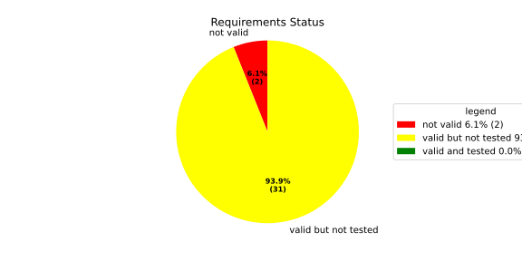
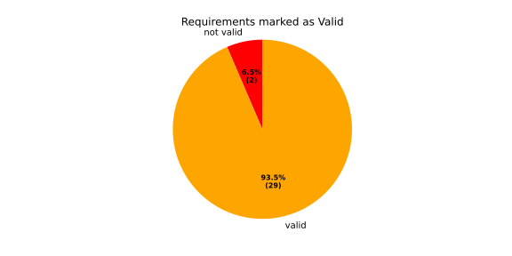
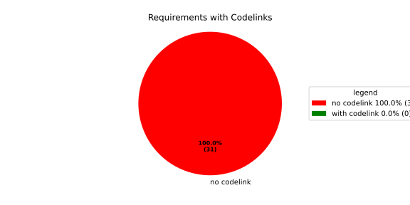
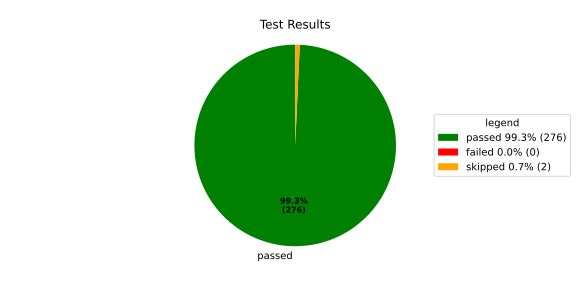
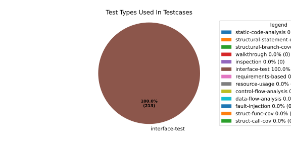
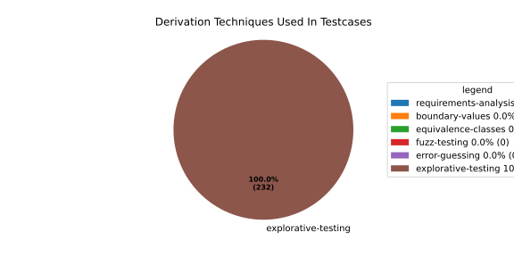

Verification Statistics#
Overview#

In Detail#



Failed Tests
Hint: This table should be empty. Before a PR can be merged all tests have to be successful.
No needs passed the filters
Skipped / Disabled Tests
testcase |
Result |
Fully Verifies |
Partially Verifies |
Test Type |
Derivation Technique |
link |
|---|---|---|---|---|---|---|
ValidateRangeTest/4__RejectsValueAboveMax |
skipped |
interface-test |
explorative-testing |
|||
ValidateRangeTest/4__RejectsValueBelowMin |
skipped |
interface-test |
explorative-testing |
All passed Tests#
testcase |
Result |
Fully Verifies |
Partially Verifies |
Test Type |
Derivation Technique |
link |
|---|---|---|---|---|---|---|
AliveImplTest__DoesNotThrowWhenInterfacePathEnvVarIsSet |
passed |
interface-test |
explorative-testing |
testcase__AliveImplTest__DoesNotThrowWhenInterfacePathEnvVarIsSet_xpewu |
||
AliveImplTest__ReportCheckpointSafeWhenNotConnected |
passed |
interface-test |
explorative-testing |
testcase__AliveImplTest__ReportCheckpointSafeWhenNotConnected_ppvuc |
||
AliveImplTest__ThrowsWhenInterfacePathEnvVarIsNotSet |
passed |
interface-test |
explorative-testing |
testcase__AliveImplTest__ThrowsWhenInterfacePathEnvVarIsNotSet_ekxfw |
||
AliveSupervisionTest__AliveDebouncesThroughFailedBeforeExpired |
passed |
interface-test |
explorative-testing |
testcase__AliveSupervisionTest__AliveDebouncesThroughFailedBeforeExpired_mlnbe |
||
AliveSupervisionTest__AliveReportsEnqueueFailureWhenRingBufferFull |
passed |
interface-test |
explorative-testing |
testcase__AliveSupervisionTest__AliveReportsEnqueueFailureWhenRingBufferFull_byhrd |
||
AliveSupervisionTest__AliveStaysOkWithCorrectHeartbeats |
passed |
interface-test |
explorative-testing |
testcase__AliveSupervisionTest__AliveStaysOkWithCorrectHeartbeats_vekof |
||
AliveSupervisionTest__AliveTransitionsOkToExpiredOnMissingHeartbeat |
passed |
interface-test |
explorative-testing |
testcase__AliveSupervisionTest__AliveTransitionsOkToExpiredOnMissingHeartbeat_jymxo |
||
AliveSupervisionTest__DeactivatesOnProcessCrash |
passed |
interface-test |
explorative-testing |
testcase__AliveSupervisionTest__DeactivatesOnProcessCrash_ypejs |
||
AliveSupervisionTest__DeactivatesOnProcessSigterm |
passed |
interface-test |
explorative-testing |
testcase__AliveSupervisionTest__DeactivatesOnProcessSigterm_hzaal |
||
AliveSupervisionTest__IgnoresIrrelevantProcessStates |
passed |
interface-test |
explorative-testing |
testcase__AliveSupervisionTest__IgnoresIrrelevantProcessStates_aolvb |
||
AliveSupervisionTest__MaxIndicationViolationExpires |
passed |
interface-test |
explorative-testing |
testcase__AliveSupervisionTest__MaxIndicationViolationExpires_whhhi |
||
AliveSupervisionTest__ReactivatesAfterCrash |
passed |
interface-test |
explorative-testing |
|||
ApplicationTypes/ApplicationTypeTest__ConvertsToExpectedValue/Native |
passed |
interface-test |
explorative-testing |
testcase__ApplicationTypes/ApplicationTypeTest__ConvertsToExpectedValue/Native_yxxcz |
||
ApplicationTypes/ApplicationTypeTest__ConvertsToExpectedValue/Reporting |
passed |
interface-test |
explorative-testing |
testcase__ApplicationTypes/ApplicationTypeTest__ConvertsToExpectedValue/Reporting_wcfwr |
||
ApplicationTypes/ApplicationTypeTest__ConvertsToExpectedValue/ReportingAndSupervised |
passed |
interface-test |
explorative-testing |
testcase__ApplicationTypes/ApplicationTypeTest__ConvertsToExpectedValue/ReportingAndSupervised_yxgad |
||
ApplicationTypes/ApplicationTypeTest__ConvertsToExpectedValue/StateManager |
passed |
interface-test |
explorative-testing |
testcase__ApplicationTypes/ApplicationTypeTest__ConvertsToExpectedValue/StateManager_ivuzc |
||
ConverterTest__ConvertAliveSupervisionMissingCycleReturnsError |
passed |
interface-test |
explorative-testing |
testcase__ConverterTest__ConvertAliveSupervisionMissingCycleReturnsError_bifzg |
||
ConverterTest__ConvertAliveSupervisionNullReturnsDefault |
passed |
interface-test |
explorative-testing |
testcase__ConverterTest__ConvertAliveSupervisionNullReturnsDefault_clyua |
||
ConverterTest__ConvertAliveSupervisionValid |
passed |
interface-test |
explorative-testing |
|||
ConverterTest__ConvertApplicationProfileMissingSelfTerminatingReturnsError |
passed |
interface-test |
explorative-testing |
testcase__ConverterTest__ConvertApplicationProfileMissingSelfTerminatingReturnsError_zddjb |
||
ConverterTest__ConvertApplicationProfileMissingTypeReturnsError |
passed |
interface-test |
explorative-testing |
testcase__ConverterTest__ConvertApplicationProfileMissingTypeReturnsError_zrfcs |
||
ConverterTest__ConvertApplicationProfileValid |
passed |
interface-test |
explorative-testing |
testcase__ConverterTest__ConvertApplicationProfileValid_oohxq |
||
ConverterTest__ConvertComponentAliveSupervisionBothIndicationsAbsentReturnsError |
passed |
interface-test |
explorative-testing |
testcase__ConverterTest__ConvertComponentAliveSupervisionBothIndicationsAbsentReturnsError_gvtfi |
||
ConverterTest__ConvertComponentAliveSupervisionMissingReportingCycleReturnsError |
passed |
interface-test |
explorative-testing |
testcase__ConverterTest__ConvertComponentAliveSupervisionMissingReportingCycleReturnsError_ajymy |
||
ConverterTest__ConvertComponentAliveSupervisionMissingToleranceReturnsError |
passed |
interface-test |
explorative-testing |
testcase__ConverterTest__ConvertComponentAliveSupervisionMissingToleranceReturnsError_lgrhj |
||
ConverterTest__ConvertComponentAliveSupervisionNullReturnsDefault |
passed |
interface-test |
explorative-testing |
testcase__ConverterTest__ConvertComponentAliveSupervisionNullReturnsDefault_xhaus |
||
ConverterTest__ConvertComponentAliveSupervisionOnlyMaxIndicationsPresent |
passed |
interface-test |
explorative-testing |
testcase__ConverterTest__ConvertComponentAliveSupervisionOnlyMaxIndicationsPresent_smwht |
||
ConverterTest__ConvertComponentAliveSupervisionOnlyMinIndicationsPresent |
passed |
interface-test |
explorative-testing |
testcase__ConverterTest__ConvertComponentAliveSupervisionOnlyMinIndicationsPresent_ybbrr |
||
ConverterTest__ConvertComponentAliveSupervisionValid |
passed |
interface-test |
explorative-testing |
testcase__ConverterTest__ConvertComponentAliveSupervisionValid_ijedh |
||
ConverterTest__ConvertComponentsValid |
passed |
interface-test |
explorative-testing |
|||
ConverterTest__ConvertComponentsWithInvalidComponentReturnsError |
passed |
interface-test |
explorative-testing |
testcase__ConverterTest__ConvertComponentsWithInvalidComponentReturnsError_wridc |
||
ConverterTest__ConvertComponentValid |
passed |
interface-test |
explorative-testing |
|||
ConverterTest__ConvertDeploymentConfigMissingReadyTimeoutReturnsError |
passed |
interface-test |
explorative-testing |
testcase__ConverterTest__ConvertDeploymentConfigMissingReadyTimeoutReturnsError_ljzfl |
||
ConverterTest__ConvertDeploymentConfigMissingShutdownTimeoutReturnsError |
passed |
interface-test |
explorative-testing |
testcase__ConverterTest__ConvertDeploymentConfigMissingShutdownTimeoutReturnsError_vyqye |
||
ConverterTest__ConvertDeploymentConfigValid |
passed |
interface-test |
explorative-testing |
|||
ConverterTest__ConvertEnvironmentalVariables |
passed |
interface-test |
explorative-testing |
testcase__ConverterTest__ConvertEnvironmentalVariables_fnhgo |
||
ConverterTest__ConvertEnvironmentalVariablesNullReturnsEmpty |
passed |
interface-test |
explorative-testing |
testcase__ConverterTest__ConvertEnvironmentalVariablesNullReturnsEmpty_vglrx |
||
ConverterTest__ConvertFallbackRunTargetMissingTimeoutReturnsError |
passed |
interface-test |
explorative-testing |
testcase__ConverterTest__ConvertFallbackRunTargetMissingTimeoutReturnsError_aevly |
||
ConverterTest__ConvertFallbackRunTargetValid |
passed |
interface-test |
explorative-testing |
testcase__ConverterTest__ConvertFallbackRunTargetValid_nexxj |
||
ConverterTest__ConvertReadyConditionMissingProcessStateReturnsError |
passed |
interface-test |
explorative-testing |
testcase__ConverterTest__ConvertReadyConditionMissingProcessStateReturnsError_ileav |
||
ConverterTest__ConvertReadyConditionValid |
passed |
interface-test |
explorative-testing |
|||
ConverterTest__ConvertRestartActionMissingFieldsReturnsError |
passed |
interface-test |
explorative-testing |
testcase__ConverterTest__ConvertRestartActionMissingFieldsReturnsError_aapjb |
||
ConverterTest__ConvertRestartActionNullReturnsNullopt |
passed |
interface-test |
explorative-testing |
testcase__ConverterTest__ConvertRestartActionNullReturnsNullopt_ifvyd |
||
ConverterTest__ConvertRestartActionValid |
passed |
interface-test |
explorative-testing |
|||
ConverterTest__ConvertRunTargetMissingTransitionTimeoutReturnsError |
passed |
interface-test |
explorative-testing |
testcase__ConverterTest__ConvertRunTargetMissingTransitionTimeoutReturnsError_ynekv |
||
ConverterTest__ConvertRunTargetsValid |
passed |
interface-test |
explorative-testing |
|||
ConverterTest__ConvertRunTargetsWithInvalidRunTargetReturnsError |
passed |
interface-test |
explorative-testing |
testcase__ConverterTest__ConvertRunTargetsWithInvalidRunTargetReturnsError_ldlox |
||
ConverterTest__ConvertRunTargetValid |
passed |
interface-test |
explorative-testing |
|||
ConverterTest__ConvertSandboxMissingGidReturnsError |
passed |
interface-test |
explorative-testing |
testcase__ConverterTest__ConvertSandboxMissingGidReturnsError_veeel |
||
ConverterTest__ConvertSandboxMissingSchedulingPolicyReturnsError |
passed |
interface-test |
explorative-testing |
testcase__ConverterTest__ConvertSandboxMissingSchedulingPolicyReturnsError_pkfts |
||
ConverterTest__ConvertSandboxMissingSchedulingPriorityReturnsError |
passed |
interface-test |
explorative-testing |
testcase__ConverterTest__ConvertSandboxMissingSchedulingPriorityReturnsError_xzdho |
||
ConverterTest__ConvertSandboxMissingUidReturnsError |
passed |
interface-test |
explorative-testing |
testcase__ConverterTest__ConvertSandboxMissingUidReturnsError_ogfku |
||
ConverterTest__ConvertSandboxSupplementaryGidOutOfRangeReturnsError |
passed |
interface-test |
explorative-testing |
testcase__ConverterTest__ConvertSandboxSupplementaryGidOutOfRangeReturnsError_zavpx |
||
ConverterTest__ConvertSandboxUidOutOfRangeReturnsError |
passed |
interface-test |
explorative-testing |
testcase__ConverterTest__ConvertSandboxUidOutOfRangeReturnsError_mcuaf |
||
ConverterTest__ConvertSandboxValid |
passed |
interface-test |
explorative-testing |
|||
ConverterTest__ConvertSwitchRunTargetActionNullReturnsNullopt |
passed |
interface-test |
explorative-testing |
testcase__ConverterTest__ConvertSwitchRunTargetActionNullReturnsNullopt_zmitx |
||
ConverterTest__ConvertSwitchRunTargetActionValid |
passed |
interface-test |
explorative-testing |
testcase__ConverterTest__ConvertSwitchRunTargetActionValid_tdklr |
||
ConverterTest__ConvertWatchdogMissingDeactivateReturnsError |
passed |
interface-test |
explorative-testing |
testcase__ConverterTest__ConvertWatchdogMissingDeactivateReturnsError_gzwjt |
||
ConverterTest__ConvertWatchdogMissingMagicCloseReturnsError |
passed |
interface-test |
explorative-testing |
testcase__ConverterTest__ConvertWatchdogMissingMagicCloseReturnsError_gexxk |
||
ConverterTest__ConvertWatchdogMissingMaxTimeoutReturnsError |
passed |
interface-test |
explorative-testing |
testcase__ConverterTest__ConvertWatchdogMissingMaxTimeoutReturnsError_lffxm |
||
ConverterTest__ConvertWatchdogNullReturnsNullopt |
passed |
interface-test |
explorative-testing |
testcase__ConverterTest__ConvertWatchdogNullReturnsNullopt_irsdk |
||
ConverterTest__ConvertWatchdogValid |
passed |
interface-test |
explorative-testing |
|||
DeadlineFixture__Start_AlreadyRunning |
passed |
interface-test |
explorative-testing |
|||
DeadlineFixture__Start_Succeeds |
passed |
interface-test |
explorative-testing |
|||
DeadlineMonitorBuilderFixture__AddDeadline_Succeeds |
passed |
interface-test |
explorative-testing |
testcase__DeadlineMonitorBuilderFixture__AddDeadline_Succeeds_nagke |
||
DeadlineMonitorBuilderFixture__New_Succeeds |
passed |
interface-test |
explorative-testing |
|||
DeadlineMonitorFixture__GetDeadline_Succeeds |
passed |
interface-test |
explorative-testing |
testcase__DeadlineMonitorFixture__GetDeadline_Succeeds_tmltf |
||
DeadlineMonitorFixture__GetDeadline_Unknown |
passed |
interface-test |
explorative-testing |
|||
EnumConversionTest__ConvertSchedulingPolicyUnsupported |
passed |
interface-test |
explorative-testing |
testcase__EnumConversionTest__ConvertSchedulingPolicyUnsupported_iavqm |
||
EnvironmentTest__AddIncreasesSize |
passed |
interface-test |
explorative-testing |
|||
EnvironmentTest__DefaultConstructedIsEmpty |
passed |
interface-test |
explorative-testing |
|||
EnvironmentTest__EmptyEnvironmentEnvpIsNullTerminated |
passed |
interface-test |
explorative-testing |
testcase__EnvironmentTest__EmptyEnvironmentEnvpIsNullTerminated_wwumw |
||
EnvironmentTest__EnvpReturnsNullTerminatedArray |
passed |
interface-test |
explorative-testing |
testcase__EnvironmentTest__EnvpReturnsNullTerminatedArray_aubkv |
||
EnvironmentTest__EnvpWithMultipleEntries |
passed |
interface-test |
explorative-testing |
|||
EnvironmentTest__MoveAssignmentPreservesEntries |
passed |
interface-test |
explorative-testing |
testcase__EnvironmentTest__MoveAssignmentPreservesEntries_vkydj |
||
EnvironmentTest__MoveConstructorPreservesEntries |
passed |
interface-test |
explorative-testing |
testcase__EnvironmentTest__MoveConstructorPreservesEntries_upclt |
||
EnvironmentTest__RangeBasedForLoopWorks |
passed |
interface-test |
explorative-testing |
|||
EnvironmentTest__ReserveAndAddAvoidReallocation |
passed |
interface-test |
explorative-testing |
testcase__EnvironmentTest__ReserveAndAddAvoidReallocation_lgzmu |
||
EnvironmentTest__SsoLengthStringSurvivesReallocation |
passed |
interface-test |
explorative-testing |
testcase__EnvironmentTest__SsoLengthStringSurvivesReallocation_jfmtl |
||
EnvironmentVariableTest__CStrReturnsKeyEqualsValue |
passed |
interface-test |
explorative-testing |
testcase__EnvironmentVariableTest__CStrReturnsKeyEqualsValue_rkwan |
||
EnvironmentVariableTest__EmptyValue |
passed |
interface-test |
explorative-testing |
|||
EnvironmentVariableTest__KeyAndValueAreAccessible |
passed |
interface-test |
explorative-testing |
testcase__EnvironmentVariableTest__KeyAndValueAreAccessible_kcrth |
||
EnvironmentVariableTest__ValueContainingEquals |
passed |
interface-test |
explorative-testing |
testcase__EnvironmentVariableTest__ValueContainingEquals_apzgz |
||
ExecErrorDomainTest__AllKnownCodesHaveDistinctMessages |
passed |
interface-test |
explorative-testing |
testcase__ExecErrorDomainTest__AllKnownCodesHaveDistinctMessages_qpoka |
||
ExecErrorDomainTest__AllKnownCodesReturnNonEmptyMessage |
passed |
interface-test |
explorative-testing |
testcase__ExecErrorDomainTest__AllKnownCodesReturnNonEmptyMessage_bawzg |
||
ExecErrorDomainTest__UnknownCodeReturnsNonEmptyMessage |
passed |
interface-test |
explorative-testing |
testcase__ExecErrorDomainTest__UnknownCodeReturnsNonEmptyMessage_kkwpr |
||
FlatbufferConfigLoaderTest__CorruptedBufferReturnsInvalidFormat |
passed |
interface-test |
explorative-testing |
testcase__FlatbufferConfigLoaderTest__CorruptedBufferReturnsInvalidFormat_twyac |
||
FlatbufferConfigLoaderTest__LoadAliveSupervision |
passed |
interface-test |
explorative-testing |
testcase__FlatbufferConfigLoaderTest__LoadAliveSupervision_hhuux |
||
FlatbufferConfigLoaderTest__LoadBufferFailsWithGenericErrorReturnsGeneralError |
passed |
interface-test |
explorative-testing |
testcase__FlatbufferConfigLoaderTest__LoadBufferFailsWithGenericErrorReturnsGeneralError_kmatm |
||
FlatbufferConfigLoaderTest__LoadBufferFailsWithNoSuchFileReturnsFileNotFound |
passed |
interface-test |
explorative-testing |
testcase__FlatbufferConfigLoaderTest__LoadBufferFailsWithNoSuchFileReturnsFileNotFound_yzlra |
||
FlatbufferConfigLoaderTest__LoadBufferFailsWithPermissionDeniedReturnsInsufficientPermission |
passed |
interface-test |
explorative-testing |
|||
FlatbufferConfigLoaderTest__LoadComponentAliveSupervision |
passed |
interface-test |
explorative-testing |
testcase__FlatbufferConfigLoaderTest__LoadComponentAliveSupervision_fwfad |
||
FlatbufferConfigLoaderTest__LoadEnvironmentalVariables |
passed |
interface-test |
explorative-testing |
testcase__FlatbufferConfigLoaderTest__LoadEnvironmentalVariables_wsosu |
||
FlatbufferConfigLoaderTest__LoadFallbackRunTarget |
passed |
interface-test |
explorative-testing |
testcase__FlatbufferConfigLoaderTest__LoadFallbackRunTarget_wduqm |
||
FlatbufferConfigLoaderTest__LoadMinimalConfig |
passed |
interface-test |
explorative-testing |
testcase__FlatbufferConfigLoaderTest__LoadMinimalConfig_hdkck |
||
FlatbufferConfigLoaderTest__LoadMultipleComponents |
passed |
interface-test |
explorative-testing |
testcase__FlatbufferConfigLoaderTest__LoadMultipleComponents_abpom |
||
FlatbufferConfigLoaderTest__LoadRestartRecoveryAction |
passed |
interface-test |
explorative-testing |
testcase__FlatbufferConfigLoaderTest__LoadRestartRecoveryAction_wyfqg |
||
FlatbufferConfigLoaderTest__LoadRunTargets |
passed |
interface-test |
explorative-testing |
|||
FlatbufferConfigLoaderTest__LoadSandbox |
passed |
interface-test |
explorative-testing |
|||
FlatbufferConfigLoaderTest__LoadSingleComponent |
passed |
interface-test |
explorative-testing |
testcase__FlatbufferConfigLoaderTest__LoadSingleComponent_yidty |
||
FlatbufferConfigLoaderTest__LoadSwitchRunTargetAction |
passed |
interface-test |
explorative-testing |
testcase__FlatbufferConfigLoaderTest__LoadSwitchRunTargetAction_uchgp |
||
FlatbufferConfigLoaderTest__LoadWatchdog |
passed |
interface-test |
explorative-testing |
|||
FlatbufferConfigLoaderTest__MissingSchemaVersionReturnsInvalidFormat |
passed |
interface-test |
explorative-testing |
testcase__FlatbufferConfigLoaderTest__MissingSchemaVersionReturnsInvalidFormat_qqmfn |
||
FlatbufferConfigLoaderTest__OptionalReadyConditionAbsent |
passed |
interface-test |
explorative-testing |
testcase__FlatbufferConfigLoaderTest__OptionalReadyConditionAbsent_lhddx |
||
FlatbufferConfigLoaderTest__OptionalWatchdogAbsent |
passed |
interface-test |
explorative-testing |
testcase__FlatbufferConfigLoaderTest__OptionalWatchdogAbsent_pkhkp |
||
FlatbufferConfigLoaderTest__WrongSchemaVersionReturnsUnsupportedVersion |
passed |
interface-test |
explorative-testing |
testcase__FlatbufferConfigLoaderTest__WrongSchemaVersionReturnsUnsupportedVersion_zrbjv |
||
HealthMonitor__GetDeadlineMonitor_Available |
passed |
|||||
HealthMonitor__GetDeadlineMonitor_Taken |
passed |
|||||
HealthMonitor__GetDeadlineMonitor_Unknown |
passed |
|||||
HealthMonitor__GetHeartbeatMonitor_Available |
passed |
testcase__HealthMonitor__GetHeartbeatMonitor_Available_aacat |
||||
HealthMonitor__GetHeartbeatMonitor_Taken |
passed |
|||||
HealthMonitor__GetHeartbeatMonitor_Unknown |
passed |
|||||
HealthMonitor__GetLogicMonitor_Available |
passed |
|||||
HealthMonitor__GetLogicMonitor_Taken |
passed |
|||||
HealthMonitor__GetLogicMonitor_Unknown |
passed |
|||||
HealthMonitor__Start_MonitorsNotTaken |
passed |
|||||
HealthMonitor__Start_Succeeds |
passed |
|||||
HealthMonitorBuilderFixture__Build_InvalidCycles |
passed |
interface-test |
explorative-testing |
testcase__HealthMonitorBuilderFixture__Build_InvalidCycles_pdigk |
||
HealthMonitorBuilderFixture__Build_NoMonitors |
passed |
interface-test |
explorative-testing |
testcase__HealthMonitorBuilderFixture__Build_NoMonitors_ktcve |
||
HealthMonitorBuilderFixture__Build_Succeeds |
passed |
interface-test |
explorative-testing |
|||
HealthMonitorBuilderFixture__New_Succeeds |
passed |
interface-test |
explorative-testing |
|||
HealthMonitorTest__Integrated |
passed |
interface-test |
explorative-testing |
|||
HeartbeatMonitor__Heartbeat_Succeeds |
passed |
interface-test |
explorative-testing |
|||
HeartbeatMonitorBuilder__New_Succeeds |
passed |
interface-test |
explorative-testing |
|||
IdentifierHashTest__IdentifierHash_default_created |
passed |
interface-test |
explorative-testing |
testcase__IdentifierHashTest__IdentifierHash_default_created_yhhvi |
||
IdentifierHashTest__IdentifierHash_EqualityOperators |
passed |
interface-test |
explorative-testing |
testcase__IdentifierHashTest__IdentifierHash_EqualityOperators_nnsuj |
||
IdentifierHashTest__IdentifierHash_invalid_hash_no_string_representation |
passed |
interface-test |
explorative-testing |
testcase__IdentifierHashTest__IdentifierHash_invalid_hash_no_string_representation_rxowr |
||
IdentifierHashTest__IdentifierHash_LessThanOperator |
passed |
interface-test |
explorative-testing |
testcase__IdentifierHashTest__IdentifierHash_LessThanOperator_rnbax |
||
IdentifierHashTest__IdentifierHash_no_dangling_pointer_after_source_string_dies |
passed |
interface-test |
explorative-testing |
testcase__IdentifierHashTest__IdentifierHash_no_dangling_pointer_after_source_string_dies_qsjin |
||
IdentifierHashTest__IdentifierHash_with_string_created |
passed |
interface-test |
explorative-testing |
testcase__IdentifierHashTest__IdentifierHash_with_string_created_aygdm |
||
IdentifierHashTest__IdentifierHash_with_string_view_created |
passed |
interface-test |
explorative-testing |
testcase__IdentifierHashTest__IdentifierHash_with_string_view_created_dbpol |
||
LogicMonitorBuilderFixture__AddState_Succeeds |
passed |
interface-test |
explorative-testing |
testcase__LogicMonitorBuilderFixture__AddState_Succeeds_axdxj |
||
LogicMonitorBuilderFixture__New_Succeeds |
passed |
interface-test |
explorative-testing |
|||
LogicMonitorFixture__State_Invalid |
passed |
interface-test |
explorative-testing |
|||
LogicMonitorFixture__State_Succeeds |
passed |
interface-test |
explorative-testing |
|||
LogicMonitorFixture__Transition_Invalid |
passed |
interface-test |
explorative-testing |
|||
LogicMonitorFixture__Transition_Succeeds |
passed |
interface-test |
explorative-testing |
|||
LogicMonitorFixture__Transition_Unknown |
passed |
interface-test |
explorative-testing |
|||
MonitorIfDaemonTest__Active_CheckpointDataForwarded |
passed |
interface-test |
explorative-testing |
testcase__MonitorIfDaemonTest__Active_CheckpointDataForwarded_evumz |
||
MonitorIfDaemonTest__Active_FutureTimestamp_NotForwardedInCurrentCycle |
passed |
interface-test |
explorative-testing |
testcase__MonitorIfDaemonTest__Active_FutureTimestamp_NotForwardedInCurrentCycle_oycau |
||
MonitorIfDaemonTest__Active_FutureTimestampCheckpoint_ConsumedInLaterCycle |
passed |
interface-test |
explorative-testing |
testcase__MonitorIfDaemonTest__Active_FutureTimestampCheckpoint_ConsumedInLaterCycle_veyyy |
||
MonitorIfDaemonTest__Active_MultipleCheckpointsInOneCycle_AllForwarded |
passed |
interface-test |
explorative-testing |
testcase__MonitorIfDaemonTest__Active_MultipleCheckpointsInOneCycle_AllForwarded_gmbms |
||
MonitorIfDaemonTest__Active_NonMatchingCheckpointId_NotForwarded |
passed |
interface-test |
explorative-testing |
testcase__MonitorIfDaemonTest__Active_NonMatchingCheckpointId_NotForwarded_bohck |
||
MonitorIfDaemonTest__Active_OverflowDetected_TransitionsToInactiveOverflow |
passed |
interface-test |
explorative-testing |
testcase__MonitorIfDaemonTest__Active_OverflowDetected_TransitionsToInactiveOverflow_ovitk |
||
MonitorIfDaemonTest__Active_TwoAttachedCheckpoints_RoutedByCheckpointId |
passed |
interface-test |
explorative-testing |
testcase__MonitorIfDaemonTest__Active_TwoAttachedCheckpoints_RoutedByCheckpointId_skqhd |
||
MonitorIfDaemonTest__GetInterfaceName_ReturnsNameGivenAtConstruction |
passed |
interface-test |
explorative-testing |
testcase__MonitorIfDaemonTest__GetInterfaceName_ReturnsNameGivenAtConstruction_iaemz |
||
MonitorIfDaemonTest__InactiveOverflow_NoProcessRestart_DoesNotRepeatNotification |
passed |
interface-test |
explorative-testing |
testcase__MonitorIfDaemonTest__InactiveOverflow_NoProcessRestart_DoesNotRepeatNotification_gdbxg |
||
MonitorIfDaemonTest__InactiveOverflow_ProcessRestartFlag_ClearedAfterNotification |
passed |
interface-test |
explorative-testing |
testcase__MonitorIfDaemonTest__InactiveOverflow_ProcessRestartFlag_ClearedAfterNotification_pqfyy |
||
MonitorIfDaemonTest__InactiveOverflow_ProcessRestarts_PushesOverflowNotificationAgain |
passed |
interface-test |
explorative-testing |
|||
MonitorIfDaemonTest__InitiallyInactive_CheckForNewData_DoesNotNotifyCheckpoint |
passed |
interface-test |
explorative-testing |
testcase__MonitorIfDaemonTest__InitiallyInactive_CheckForNewData_DoesNotNotifyCheckpoint_wjrfl |
||
MonitorIfDaemonTest__ProcessOff_DeactivatesMonitor_NoFurtherDataForwarded |
passed |
interface-test |
explorative-testing |
testcase__MonitorIfDaemonTest__ProcessOff_DeactivatesMonitor_NoFurtherDataForwarded_uialh |
||
MonitorIfDaemonTest__ProcessOffBeforeActivation_RemainsInactive |
passed |
interface-test |
explorative-testing |
testcase__MonitorIfDaemonTest__ProcessOffBeforeActivation_RemainsInactive_kzzyy |
||
MonitorIfDaemonTest__ProcessRunning_ActivatesMonitorOnNextCheckForNewData |
passed |
interface-test |
explorative-testing |
testcase__MonitorIfDaemonTest__ProcessRunning_ActivatesMonitorOnNextCheckForNewData_fkkmk |
||
MonitorIfDaemonTest__ProcessStarting_AlsoActivatesMonitor |
passed |
interface-test |
explorative-testing |
testcase__MonitorIfDaemonTest__ProcessStarting_AlsoActivatesMonitor_xdkbg |
||
MPMCConcurrentQueueTest_Basic__LvaluePushCopiesItem |
passed |
testcase__MPMCConcurrentQueueTest_Basic__LvaluePushCopiesItem_oysfc |
||||
MPMCConcurrentQueueTest_Basic__PopReturnsNulloptOnSemaphoreWaitFailure |
passed |
testcase__MPMCConcurrentQueueTest_Basic__PopReturnsNulloptOnSemaphoreWaitFailure_rgznm |
||||
MPMCConcurrentQueueTest_Basic__PushAndPopPreservesOrder |
passed |
testcase__MPMCConcurrentQueueTest_Basic__PushAndPopPreservesOrder_aijdb |
||||
MPMCConcurrentQueueTest_Basic__PushAndPopSingleItem |
passed |
testcase__MPMCConcurrentQueueTest_Basic__PushAndPopSingleItem_jrxwz |
||||
MPMCConcurrentQueueTest_Basic__RvaluePushWorksWithMoveOnlyType |
passed |
testcase__MPMCConcurrentQueueTest_Basic__RvaluePushWorksWithMoveOnlyType_cxxaj |
||||
MPMCConcurrentQueueTest_Blocking__PopBlocksUntilItemAvailable |
passed |
testcase__MPMCConcurrentQueueTest_Blocking__PopBlocksUntilItemAvailable_ttwcx |
||||
MPMCConcurrentQueueTest_Blocking__PushBlocksWhenFull |
passed |
testcase__MPMCConcurrentQueueTest_Blocking__PushBlocksWhenFull_ecujf |
||||
MPMCConcurrentQueueTest_Blocking__StopUnblocksBlockedConsumer |
passed |
testcase__MPMCConcurrentQueueTest_Blocking__StopUnblocksBlockedConsumer_snzyr |
||||
MPMCConcurrentQueueTest_Blocking__StopUnblocksBlockedProducer |
passed |
testcase__MPMCConcurrentQueueTest_Blocking__StopUnblocksBlockedProducer_inddu |
||||
MPMCConcurrentQueueTest_MPMC__AllItemsDelivered |
passed |
testcase__MPMCConcurrentQueueTest_MPMC__AllItemsDelivered_ztjqe |
||||
MPMCConcurrentQueueTest_Stop__ItemsAreDroppedAfterStop |
passed |
testcase__MPMCConcurrentQueueTest_Stop__ItemsAreDroppedAfterStop_ragzw |
||||
MPMCConcurrentQueueTest_Stop__PopReturnsNulloptWhenStoppedAndEmpty |
passed |
testcase__MPMCConcurrentQueueTest_Stop__PopReturnsNulloptWhenStoppedAndEmpty_cevga |
||||
MPMCConcurrentQueueTest_Stop__PushReturnsFalseAfterStop |
passed |
testcase__MPMCConcurrentQueueTest_Stop__PushReturnsFalseAfterStop_qqnhw |
||||
MPMCConcurrentQueueTest_Timeout__PushWithTimeoutReturnsFalseWhenFull |
passed |
testcase__MPMCConcurrentQueueTest_Timeout__PushWithTimeoutReturnsFalseWhenFull_aeips |
||||
MPMCConcurrentQueueTest_Timeout__PushWithTimeoutSucceedsWhenSlotAvailable |
passed |
testcase__MPMCConcurrentQueueTest_Timeout__PushWithTimeoutSucceedsWhenSlotAvailable_klzpo |
||||
OsHandlerTest__WaitReturnsError_OsHandlerSleepsAndDoesNotCallFindTerminated |
passed |
interface-test |
explorative-testing |
testcase__OsHandlerTest__WaitReturnsError_OsHandlerSleepsAndDoesNotCallFindTerminated_cibtr |
||
OsHandlerTest__WaitReturnsErrorThenProcessId_HandlerRecoversAndInvokesCallback |
passed |
interface-test |
explorative-testing |
testcase__OsHandlerTest__WaitReturnsErrorThenProcessId_HandlerRecoversAndInvokesCallback_nqstd |
||
OsHandlerTest__WaitReturnsProcessId_FindTerminatedIsCalled |
passed |
interface-test |
explorative-testing |
testcase__OsHandlerTest__WaitReturnsProcessId_FindTerminatedIsCalled_chlsq |
||
OsHandlerTest__WaitReturnsProcessIdBeforeRegistration_LaterRegistrationReceivesStoredTermination |
passed |
interface-test |
explorative-testing |
|||
OsHandlerTest__WaitReturnsUnknownPidWhenMapIsFull_OutOfResourcesPathDoesNotNotifyCallbacks |
passed |
interface-test |
explorative-testing |
|||
OsHandlerTest__WaitReturnsZeroPid_OsHandlerSleepsAndDoesNotCallFindTerminated |
passed |
interface-test |
explorative-testing |
testcase__OsHandlerTest__WaitReturnsZeroPid_OsHandlerSleepsAndDoesNotCallFindTerminated_rkttz |
||
ProcessStateClient_UT__ProcessStateClient_ConstructReceiver_Succeeds |
passed |
interface-test |
explorative-testing |
testcase__ProcessStateClient_UT__ProcessStateClient_ConstructReceiver_Succeeds_hodwy |
||
ProcessStateClient_UT__ProcessStateClient_QueueMaxNumberOfProcesses_Succeeds |
passed |
interface-test |
explorative-testing |
testcase__ProcessStateClient_UT__ProcessStateClient_QueueMaxNumberOfProcesses_Succeeds_qohom |
||
ProcessStateClient_UT__ProcessStateClient_QueueOneProcess_Succeeds |
passed |
interface-test |
explorative-testing |
testcase__ProcessStateClient_UT__ProcessStateClient_QueueOneProcess_Succeeds_tmzfz |
||
ProcessStateClient_UT__ProcessStateClient_QueueOneProcessTooMany_Fails |
passed |
interface-test |
explorative-testing |
testcase__ProcessStateClient_UT__ProcessStateClient_QueueOneProcessTooMany_Fails_sspoj |
||
ProcessStates/ProcessStateTest__ConvertsToExpectedValue/Running |
passed |
interface-test |
explorative-testing |
testcase__ProcessStates/ProcessStateTest__ConvertsToExpectedValue/Running_hinlr |
||
ProcessStates/ProcessStateTest__ConvertsToExpectedValue/Terminated |
passed |
interface-test |
explorative-testing |
testcase__ProcessStates/ProcessStateTest__ConvertsToExpectedValue/Terminated_zrytn |
||
RecoveryClientTest__FIFOOrdering |
passed |
interface-test |
explorative-testing |
|||
RecoveryClientTest__GetNextRequest |
passed |
interface-test |
explorative-testing |
|||
RecoveryClientTest__GetNextRequestEmpty |
passed |
interface-test |
explorative-testing |
|||
RecoveryClientTest__RingBufferFull |
passed |
interface-test |
explorative-testing |
|||
RecoveryClientTest__SendSingleRequest |
passed |
interface-test |
explorative-testing |
|||
RunTest__AsPosixProcessCreatesAndDestroysLifeCycleManager |
passed |
testcase__RunTest__AsPosixProcessCreatesAndDestroysLifeCycleManager_sooex |
||||
RunTest__AsPosixProcessForwardsConstructorArgsToApplication |
passed |
testcase__RunTest__AsPosixProcessForwardsConstructorArgsToApplication_dmeur |
||||
RunTest__AsPosixProcessForwardsNonZeroExitCode |
passed |
testcase__RunTest__AsPosixProcessForwardsNonZeroExitCode_lldqd |
||||
RunTest__AsPosixProcessPassesCorrectApplicationTypeToRun |
passed |
testcase__RunTest__AsPosixProcessPassesCorrectApplicationTypeToRun_ajqwz |
||||
RunTest__AsPosixProcessReturnsZeroExitCode |
passed |
|||||
RunTest__RunApplicationFreeFunctionDelegatesToAsPosixProcess |
passed |
testcase__RunTest__RunApplicationFreeFunctionDelegatesToAsPosixProcess_ccing |
||||
RunTest__RunConstructorPassesArgcArgvToApplicationContext |
passed |
testcase__RunTest__RunConstructorPassesArgcArgvToApplicationContext_agerd |
||||
SafeProcessMapTest__ConcurrentFindAndInsertFromMultipleThreads |
passed |
interface-test |
explorative-testing |
testcase__SafeProcessMapTest__ConcurrentFindAndInsertFromMultipleThreads_kzfyg |
||
SafeProcessMapTest__ConcurrentInsertAndFindFromMultipleThreads |
passed |
interface-test |
explorative-testing |
testcase__SafeProcessMapTest__ConcurrentInsertAndFindFromMultipleThreads_hnyqj |
||
SafeProcessMapTest__ConstructWithZeroCapacity |
passed |
interface-test |
explorative-testing |
testcase__SafeProcessMapTest__ConstructWithZeroCapacity_gjmqg |
||
SafeProcessMapTest__FindTerminatedInsertsEntryWhenPidNotPresent |
passed |
interface-test |
explorative-testing |
testcase__SafeProcessMapTest__FindTerminatedInsertsEntryWhenPidNotPresent_ixtlt |
||
SafeProcessMapTest__FindTerminatedMatchesExistingInsertAndCallsCallback |
passed |
interface-test |
explorative-testing |
testcase__SafeProcessMapTest__FindTerminatedMatchesExistingInsertAndCallsCallback_ehuzb |
||
SafeProcessMapTest__FindTerminatedSamePidTwiceYieldsUntilInsertResolves |
passed |
interface-test |
explorative-testing |
testcase__SafeProcessMapTest__FindTerminatedSamePidTwiceYieldsUntilInsertResolves_hsekx |
||
SafeProcessMapTest__FindTerminatedWithNegativePidReturnsInvalid |
passed |
interface-test |
explorative-testing |
testcase__SafeProcessMapTest__FindTerminatedWithNegativePidReturnsInvalid_dewoh |
||
SafeProcessMapTest__FindTerminatedWorksAtMaxTreeDepth |
passed |
interface-test |
explorative-testing |
testcase__SafeProcessMapTest__FindTerminatedWorksAtMaxTreeDepth_adtzi |
||
SafeProcessMapTest__InsertBeyondCapacityReturnsOutOfMemory |
passed |
interface-test |
explorative-testing |
testcase__SafeProcessMapTest__InsertBeyondCapacityReturnsOutOfMemory_qjnie |
||
SafeProcessMapTest__InsertIntoEmptyTreeReturnsZero |
passed |
interface-test |
explorative-testing |
testcase__SafeProcessMapTest__InsertIntoEmptyTreeReturnsZero_zfbaq |
||
SafeProcessMapTest__InsertMatchesExistingFindTerminatedEntry |
passed |
interface-test |
explorative-testing |
testcase__SafeProcessMapTest__InsertMatchesExistingFindTerminatedEntry_fuwrp |
||
SafeProcessMapTest__InsertMultipleNodesThenFindTerminatedRemovesAll |
passed |
interface-test |
explorative-testing |
testcase__SafeProcessMapTest__InsertMultipleNodesThenFindTerminatedRemovesAll_fvowh |
||
SafeProcessMapTest__InsertSamePidTwiceYieldsUntilFindTerminatedResolves |
passed |
interface-test |
explorative-testing |
testcase__SafeProcessMapTest__InsertSamePidTwiceYieldsUntilFindTerminatedResolves_wzwyb |
||
SchedulingPolicies/SchedulingPolicyTest__ConvertsToExpectedPosixValue/SCHED_FIFO |
passed |
interface-test |
explorative-testing |
testcase__SchedulingPolicies/SchedulingPolicyTest__ConvertsToExpectedPosixValue/SCHED_FIFO_soddq |
||
SchedulingPolicies/SchedulingPolicyTest__ConvertsToExpectedPosixValue/SCHED_OTHER |
passed |
interface-test |
explorative-testing |
testcase__SchedulingPolicies/SchedulingPolicyTest__ConvertsToExpectedPosixValue/SCHED_OTHER_oigmk |
||
SchedulingPolicies/SchedulingPolicyTest__ConvertsToExpectedPosixValue/SCHED_RR |
passed |
interface-test |
explorative-testing |
testcase__SchedulingPolicies/SchedulingPolicyTest__ConvertsToExpectedPosixValue/SCHED_RR_pcjci |
||
score/health_monitor/src/rust/test-510566969/tests |
passed |
testcase__score/health_monitor/src/rust/test-510566969/tests_kjjlw |
||||
score/health_monitor/src/rust/test-827801879/loom_tests |
passed |
testcase__score/health_monitor/src/rust/test-827801879/loom_tests_cpmix |
||||
SecondsToMsTest__ConvertsPositiveValue |
passed |
interface-test |
explorative-testing |
|||
SecondsToMsTest__ConvertsZero |
passed |
interface-test |
explorative-testing |
|||
SecondsToMsTest__RejectsNegativeValue |
passed |
interface-test |
explorative-testing |
|||
SecondsToMsTest__RejectsOverflow |
passed |
interface-test |
explorative-testing |
|||
SecondsToMsTest__RejectsSubMillisecond |
passed |
interface-test |
explorative-testing |
|||
StringHelperTest__ConvertGidVectorReturnsEmptyWhenNull |
passed |
interface-test |
explorative-testing |
testcase__StringHelperTest__ConvertGidVectorReturnsEmptyWhenNull_jmcsr |
||
StringHelperTest__ConvertStringVectorReturnsEmptyWhenNull |
passed |
interface-test |
explorative-testing |
testcase__StringHelperTest__ConvertStringVectorReturnsEmptyWhenNull_zsuvv |
||
StringHelperTest__SafeStringReturnsEmptyWhenNull |
passed |
interface-test |
explorative-testing |
testcase__StringHelperTest__SafeStringReturnsEmptyWhenNull_crelr |
||
StringHelperTest__SafeStringReturnsValueWhenNotNull |
passed |
interface-test |
explorative-testing |
testcase__StringHelperTest__SafeStringReturnsValueWhenNotNull_anbko |
||
test_complex_monitoring |
passed |
|||||
test_crash_on_startup |
passed |
|||||
test_incorrect_config_non_reporting |
passed |
|||||
test_process_crash_monitoring |
passed |
|||||
test_process_fd_leak |
passed |
|||||
test_process_launch_args |
passed |
|||||
test_process_wrong_binary_failure |
passed |
|||||
test_recovery_action_complex_rep_failure |
passed |
|||||
test_recovery_action_simple_rep_failure |
passed |
|||||
test_smoke |
passed |
|||||
test_switch_run_target |
passed |
|||||
TimeRangeFixture__MinMax |
passed |
interface-test |
explorative-testing |
|||
TimeRangeFixture__New_InvalidOrder |
passed |
interface-test |
explorative-testing |
|||
TimeRangeFixture__New_Succeeds |
passed |
interface-test |
explorative-testing |
|||
ValidateRangeTest/0__AcceptsMaxBoundary |
passed |
interface-test |
explorative-testing |
|||
ValidateRangeTest/0__AcceptsMinBoundary |
passed |
interface-test |
explorative-testing |
|||
ValidateRangeTest/0__AcceptsZero |
passed |
interface-test |
explorative-testing |
|||
ValidateRangeTest/0__RejectsValueAboveMax |
passed |
interface-test |
explorative-testing |
|||
ValidateRangeTest/0__RejectsValueBelowMin |
passed |
interface-test |
explorative-testing |
|||
ValidateRangeTest/1__AcceptsMaxBoundary |
passed |
interface-test |
explorative-testing |
|||
ValidateRangeTest/1__AcceptsMinBoundary |
passed |
interface-test |
explorative-testing |
|||
ValidateRangeTest/1__AcceptsZero |
passed |
interface-test |
explorative-testing |
|||
ValidateRangeTest/1__RejectsValueAboveMax |
passed |
interface-test |
explorative-testing |
|||
ValidateRangeTest/1__RejectsValueBelowMin |
passed |
interface-test |
explorative-testing |
|||
ValidateRangeTest/2__AcceptsMaxBoundary |
passed |
interface-test |
explorative-testing |
|||
ValidateRangeTest/2__AcceptsMinBoundary |
passed |
interface-test |
explorative-testing |
|||
ValidateRangeTest/2__AcceptsZero |
passed |
interface-test |
explorative-testing |
|||
ValidateRangeTest/2__RejectsValueAboveMax |
passed |
interface-test |
explorative-testing |
|||
ValidateRangeTest/2__RejectsValueBelowMin |
passed |
interface-test |
explorative-testing |
|||
ValidateRangeTest/3__AcceptsMaxBoundary |
passed |
interface-test |
explorative-testing |
|||
ValidateRangeTest/3__AcceptsMinBoundary |
passed |
interface-test |
explorative-testing |
|||
ValidateRangeTest/3__AcceptsZero |
passed |
interface-test |
explorative-testing |
|||
ValidateRangeTest/3__RejectsValueAboveMax |
passed |
interface-test |
explorative-testing |
|||
ValidateRangeTest/3__RejectsValueBelowMin |
passed |
interface-test |
explorative-testing |
|||
ValidateRangeTest/4__AcceptsMaxBoundary |
passed |
interface-test |
explorative-testing |
|||
ValidateRangeTest/4__AcceptsMinBoundary |
passed |
interface-test |
explorative-testing |
|||
ValidateRangeTest/4__AcceptsZero |
passed |
interface-test |
explorative-testing |
Details About Testcases#


Test Log Files#
tests-report/tests/integration/process_simple_rep_failure/process_simple_rep_failure/test.log
exec ${PAGER:-/usr/bin/less} "$0" || exit 1
Executing tests from //tests/integration/process_simple_rep_failure:process_simple_rep_failure
-----------------------------------------------------------------------------
============================= test session starts ==============================
platform linux -- Python 3.12.12, pytest-9.0.3, pluggy-1.5.0
rootdir: /home/runner/.bazel/sandbox/processwrapper-sandbox/1170/execroot/_main/bazel-out/k8-fastbuild/bin/tests/integration/process_simple_rep_failure/process_simple_rep_failure.runfiles/score_itf+
configfile: pytest.ini
collected 1 item
../score_itf+::test_recovery_action_simple_rep_failure
-------------------------------- live log setup --------------------------------
[2026-07-13 12:35:18.375] [INFO] [score.itf.plugins.docker] Executing custom image bootstrap command: tests/utils/environments/x86_64-linux/x86_64-linux.sh
[2026-07-13 12:35:18.518] [DEBUG] [docker.utils.config] Trying paths: ['/home/runner/.docker/config.json', '/home/runner/.dockercfg']
[2026-07-13 12:35:18.518] [DEBUG] [docker.utils.config] Found file at path: /home/runner/.docker/config.json
[2026-07-13 12:35:18.519] [DEBUG] [docker.auth] Found 'auths' section
[2026-07-13 12:35:18.519] [DEBUG] [docker.auth] Found entry (registry='https://index.docker.io/v1/', username='githubactions')
[2026-07-13 12:35:18.531] [DEBUG] [urllib3.connectionpool] http://localhost:None "GET /version HTTP/1.1" 200 823
[2026-07-13 12:35:18.575] [DEBUG] [urllib3.connectionpool] http://localhost:None "POST /v1.48/containers/create HTTP/1.1" 201 88
[2026-07-13 12:35:18.578] [DEBUG] [urllib3.connectionpool] http://localhost:None "GET /v1.48/containers/2c5ca2a96f3d093364ccc1f771967e6bd672a7dcbe8ef103decdc7a1235645ac/json HTTP/1.1" 200 None
[2026-07-13 12:35:18.759] [DEBUG] [urllib3.connectionpool] http://localhost:None "POST /v1.48/containers/2c5ca2a96f3d093364ccc1f771967e6bd672a7dcbe8ef103decdc7a1235645ac/start HTTP/1.1" 204 0
[2026-07-13 12:35:18.760] [DEBUG] [docker.utils.config] Trying paths: ['/home/runner/.docker/config.json', '/home/runner/.dockercfg']
[2026-07-13 12:35:18.760] [DEBUG] [docker.utils.config] Found file at path: /home/runner/.docker/config.json
[2026-07-13 12:35:18.760] [DEBUG] [docker.auth] Found 'auths' section
[2026-07-13 12:35:18.760] [DEBUG] [docker.auth] Found entry (registry='https://index.docker.io/v1/', username='githubactions')
[2026-07-13 12:35:18.780] [DEBUG] [urllib3.connectionpool] http://localhost:None "GET /version HTTP/1.1" 200 823
[2026-07-13 12:35:19.090] [INFO] [tests.utils.testing_utils.setup_test] Test case setup finished
-------------------------------- live log call ---------------------------------
[2026-07-13 12:35:19.239] [INFO] [launch_manager] 2026/07/13 12:35:19.6119231 3726375 000 ECU1 LM LM log debug verbose 1 Launch Manager Started !!!!
[2026-07-13 12:35:19.240] [INFO] [launch_manager] 2026/07/13 12:35:19.6119231 3726378 000 ECU1 LM LM log debug verbose 1 Loading LCM Configurations...
[2026-07-13 12:35:19.240] [INFO] [launch_manager] 2026/07/13 12:35:19.6119232 3726379 000 ECU1 LM LM log debug verbose 1
[2026-07-13 12:35:19.240] [INFO] [launch_manager] ECUCFG_ENV_VAR_ROOTFOLDER set successfully
[2026-07-13 12:35:19.240] [INFO] [launch_manager] 2026/07/13 12:35:19.6119232 3726381 000 ECU1 LM LM log debug verbose 5 FlatBufferParser::getModeGroupPgName: MainPG ( IdentifierHash: 18079021346025578134 )
[2026-07-13 12:35:19.240] [INFO] [launch_manager] 2026/07/13 12:35:19.6119232 3726382 000 ECU1 LM LM log debug verbose 5 FlatBufferParser::getModeGroupPgStateName: MainPG/Startup ( IdentifierHash: 10504605499600661529 )
[2026-07-13 12:35:19.240] [INFO] [launch_manager] 2026/07/13 12:35:19.6119232 3726383 000 ECU1 LM LM log debug verbose 5
[2026-07-13 12:35:19.243] [INFO] [launch_manager] FlatBufferParser::getModeGroupPgStateName: MainPG/run_target_app_does_report_krunning_in_time ( IdentifierHash: 11934981641920773349 )
[2026-07-13 12:35:19.243] [INFO] [launch_manager] 2026/07/13 12:35:19.6119232 3726384 000 ECU1 LM LM log debug verbose 5 FlatBufferParser::getModeGroupPgStateName: MainPG/run_target_app_does_not_report_krunning_in_time ( IdentifierHash: 7672161913816744053 )
[2026-07-13 12:35:19.243] [INFO] [launch_manager] 2026/07/13 12:35:19.6119232 3726385 000 ECU1 LM LM log debug verbose 5
[2026-07-13 12:35:19.243] [INFO] [launch_manager] FlatBufferParser::getModeGroupPgStateName: MainPG/Off ( IdentifierHash: 15281793077830264047 )
[2026-07-13 12:35:19.244] [INFO] [launch_manager] 2026/07/13 12:35:19.6119232 3726386 000 ECU1 LM LM log debug verbose 5 FlatBufferParser::getModeGroupPgStateName: MainPG/fallback_run_target ( IdentifierHash: 4059409696722237352 )
[2026-07-13 12:35:19.244] [INFO] [launch_manager] 2026/07/13 12:35:19.6119232 3726387 000 ECU1 LM LM log debug verbose 4 parseProcessConfigurations: Process index: 0 executable_path_: /tmp/tests/process_simple_rep_failure/control_client_mock
[2026-07-13 12:35:19.244] [INFO] [launch_manager] 2026/07/13 12:35:19.6119232 3726388 000 ECU1 LM LM log debug verbose 3
[2026-07-13 12:35:19.244] [INFO] [launch_manager] Process control_client_mock is Reporting execution state
[2026-07-13 12:35:19.244] [INFO] [launch_manager] 2026/07/13 12:35:19.6119232 3726389 000 ECU1 LM LM log debug verbose 1
[2026-07-13 12:35:19.244] [INFO] [launch_manager] Process is STATE_MANAGEMENT function Cluster Affiliation
[2026-07-13 12:35:19.246] [INFO] [launch_manager] 2026/07/13 12:35:19.6119233 3726389 000 ECU1 LM LM log debug verbose 3 Process control_client_mock is Self terminating
[2026-07-13 12:35:19.246] [INFO] [launch_manager] 2026/07/13 12:35:19.6119233 3726391 000 ECU1 LM LM log debug verbose 4
[2026-07-13 12:35:19.246] [INFO] [launch_manager] ParseProcessProcessGroup: id:::pg_name_: MainPG , pg_state_name_: MainPG/Startup
[2026-07-13 12:35:19.248] [INFO] [launch_manager] 2026/07/13 12:35:19.6119233 3726392 000 ECU1 LM LM log debug verbose 4
[2026-07-13 12:35:19.248] [INFO] [launch_manager] ParseProcessProcessGroup: id:::pg_name_: MainPG , pg_state_name_: MainPG/run_target_app_does_report_krunning_in_time
[2026-07-13 12:35:19.248] [INFO] [launch_manager] 2026/07/13 12:35:19.6119233 3726393 000 ECU1 LM LM log debug verbose 4 ParseProcessProcessGroup: id:::pg_name_: MainPG , pg_state_name_: MainPG/run_target_app_does_not_report_krunning_in_time
[2026-07-13 12:35:19.248] [INFO] [launch_manager] 2026/07/13 12:35:19.6119233 3726393 000 ECU1 LM LM log debug verbose 4 ParseProcessProcessGroup: id:::pg_name_: MainPG , pg_state_name_: MainPG/fallback_run_target
[2026-07-13 12:35:19.248] [INFO] [launch_manager] 2026/07/13 12:35:19.6119233 3726395 000 ECU1 LM LM log debug verbose 4
[2026-07-13 12:35:19.248] [INFO] [launch_manager] parseProcessConfigurations: Process index: 1 executable_path_: /tmp/tests/process_simple_rep_failure/process_simple_reporting
[2026-07-13 12:35:19.249] [INFO] [launch_manager] 2026/07/13 12:35:19.6119233 3726395 000 ECU1 LM LM log debug verbose 3 Process component_does_report_krunning_in_time is Reporting execution state
[2026-07-13 12:35:19.249] [INFO] [launch_manager] 2026/07/13 12:35:19.6119233 3726396 000 ECU1 LM LM log debug verbose 1
[2026-07-13 12:35:19.249] [INFO] [launch_manager] Process is NOT associated with any function Cluster Affiliation
[2026-07-13 12:35:19.249] [INFO] [launch_manager] 2026/07/13 12:35:19.6119233 3726397 000 ECU1 LM LM log debug verbose 3 Process component_does_report_krunning_in_time is Self terminating
[2026-07-13 12:35:19.249] [INFO] [launch_manager] 2026/07/13 12:35:19.6119233 3726398 000 ECU1 LM LM log debug verbose 4
[2026-07-13 12:35:19.249] [INFO] [launch_manager] ParseProcessProcessGroup: id:::pg_name_: MainPG , pg_state_name_: MainPG/run_target_app_does_report_krunning_in_time
[2026-07-13 12:35:19.249] [INFO] [launch_manager] 2026/07/13 12:35:19.6119233 3726399 000 ECU1 LM LM log debug verbose 4 parseProcessConfigurations: Process index: 2 executable_path_: /tmp/tests/process_simple_rep_failure/process_simple_reporting
[2026-07-13 12:35:19.249] [INFO] [launch_manager] 2026/07/13 12:35:19.6119234 3726400 000 ECU1 LM LM log debug verbose 3
[2026-07-13 12:35:19.250] [INFO] [launch_manager] Process component_does_not_report_krunning_in_time is Reporting execution state
[2026-07-13 12:35:19.253] [INFO] [launch_manager] 2026/07/13 12:35:19.6119234 3726401 000 ECU1 LM LM log debug verbose 1
[2026-07-13 12:35:19.253] [INFO] [launch_manager] Process is NOT associated with any function Cluster Affiliation
[2026-07-13 12:35:19.253] [INFO] [launch_manager] 2026/07/13 12:35:19.6119234 3726402 000 ECU1 LM LM log debug verbose 3 Process component_does_not_report_krunning_in_time is Self terminating
[2026-07-13 12:35:19.253] [INFO] [launch_manager] 2026/07/13 12:35:19.6119234 3726403 000 ECU1 LM LM log debug verbose 4 ParseProcessProcessGroup: id:::pg_name_: MainPG , pg_state_name_: MainPG/run_target_app_does_not_report_krunning_in_time
[2026-07-13 12:35:19.253] [INFO] [launch_manager] 2026/07/13 12:35:19.6119234 3726404 000 ECU1 LM LM log debug verbose 4 parseProcessConfigurations: Process index: 3 executable_path_: /tmp/tests/process_simple_rep_failure/verification_process
[2026-07-13 12:35:19.254] [INFO] [launch_manager] 2026/07/13 12:35:19.6119234 3726405 000 ECU1 LM LM log debug verbose 3
[2026-07-13 12:35:19.255] [INFO] [launch_manager] Process verification_component is NOT Reporting execution state
[2026-07-13 12:35:19.255] [INFO] [launch_manager] 2026/07/13 12:35:19.6119234 3726406 000 ECU1 LM LM log debug verbose 1 Process is NOT associated with any function Cluster Affiliation
[2026-07-13 12:35:19.256] [INFO] [launch_manager] 2026/07/13 12:35:19.6119234 3726406 000 ECU1 LM LM log debug verbose 3 Process verification_component is Self terminating
[2026-07-13 12:35:19.256] [INFO] [launch_manager] 2026/07/13 12:35:19.6119234 3726407 000 ECU1 LM LM log debug verbose 4
[2026-07-13 12:35:19.258] [INFO] [launch_manager] ParseProcessProcessGroup: id:::pg_name_: MainPG , pg_state_name_: MainPG/fallback_run_target
[2026-07-13 12:35:19.259] [INFO] [launch_manager] 2026/07/13 12:35:19.6119234 3726408 000 ECU1 LM LM log debug verbose 3
[2026-07-13 12:35:19.260] [INFO] [launch_manager] Loading SWCL Nr. 0 Succeeded
[2026-07-13 12:35:19.260] [INFO] [launch_manager] 2026/07/13 12:35:19.6119234 3726409 000 ECU1 LM LM log debug verbose 2
[2026-07-13 12:35:19.262] [INFO] [launch_manager] 1 process group(s)
[2026-07-13 12:35:19.262] [INFO] [launch_manager] 2026/07/13 12:35:19.6119235 3726409 000 ECU1 LM LM log debug verbose 3 Creating graph with 4 nodes
[2026-07-13 12:35:19.262] [INFO] [launch_manager] 2026/07/13 12:35:19.6119235 3726410 000 ECU1 LM LM log debug verbose 1 Process groups initialized successfully
[2026-07-13 12:35:19.262] [INFO] [launch_manager] 2026/07/13 12:35:19.6119235 3726411 000 ECU1 LM LM log debug verbose 1
[2026-07-13 12:35:19.262] [INFO] [launch_manager] Process Group initialization done
[2026-07-13 12:35:19.262] [INFO] [launch_manager] 2026/07/13 12:35:19.6119235 3726412 000 ECU1 LM LM log debug verbose 3 Creating Safe Process Map with 4 entries
[2026-07-13 12:35:19.263] [INFO] [launch_manager] 2026/07/13 12:35:19.6119235 3726412 000 ECU1 LM LM log debug verbose 2
[2026-07-13 12:35:19.263] [INFO] [launch_manager] Creating job queue with capacity 1024
[2026-07-13 12:35:19.263] [INFO] [launch_manager] 2026/07/13 12:35:19.6119235 3726413 000 ECU1 LM LM log debug verbose 1 Creating worker threads...
[2026-07-13 12:35:19.263] [INFO] [launch_manager] 2026/07/13 12:35:19.6119236 3726428 000 ECU1 LM LM log debug verbose 7 Process group index 0 (with name MainPG ) has 4 processes
[2026-07-13 12:35:19.263] [INFO] [launch_manager] 2026/07/13 12:35:19.6119236 3726429 000 ECU1 LM LM log debug verbose 2 Creating process node with id: 0
[2026-07-13 12:35:19.263] [INFO] [launch_manager] 2026/07/13 12:35:19.6119237 3726429 000 ECU1 LM LM log debug verbose 5 Process 0 has 0 start dependencies
[2026-07-13 12:35:19.263] [INFO] [launch_manager] 2026/07/13 12:35:19.6119237 3726429 000 ECU1 LM LM log debug verbose 2 Creating process node with id: 1
[2026-07-13 12:35:19.265] [INFO] [launch_manager] 2026/07/13 12:35:19.6119237 3726430 000 ECU1 LM LM log debug verbose 5 Process 1 has 0 start dependencies
[2026-07-13 12:35:19.265] [INFO] [launch_manager] 2026/07/13 12:35:19.6119237 3726431 000 ECU1 LM LM log debug verbose 2 Creating process node with id: 2
[2026-07-13 12:35:19.265] [INFO] [launch_manager] 2026/07/13 12:35:19.6119237 3726431 000 ECU1 LM LM log debug verbose 5 Process 2 has 0 start dependencies
[2026-07-13 12:35:19.265] [INFO] [launch_manager] 2026/07/13 12:35:19.6119237 3726431 000 ECU1 LM LM log debug verbose 2 Creating process node with id: 3
[2026-07-13 12:35:19.265] [INFO] [launch_manager] 2026/07/13 12:35:19.6119237 3726431 000 ECU1 LM LM log debug verbose 5 Process 3 has 0 start dependencies
[2026-07-13 12:35:19.265] [INFO] [launch_manager] 2026/07/13 12:35:19.6119237 3726431 000 ECU1 LM LM log debug verbose 3 Created 4 process nodes
[2026-07-13 12:35:19.265] [INFO] [launch_manager] 2026/07/13 12:35:19.6119237 3726432 000 ECU1 LM LM log debug verbose 2 Creating successor lists for process group MainPG
[2026-07-13 12:35:19.265] [INFO] [launch_manager] 2026/07/13 12:35:19.6119237 3726432 000 ECU1 LM LM log debug verbose 1 Graphs initialized
[2026-07-13 12:35:19.265] [INFO] [launch_manager] 2026/07/13 12:35:19.6119237 3726434 000 ECU1 LM Fcty log info verbose 2 Factory for FlatCfg MachineConfig: Loading of HM Machine Configuration succeeded.
[2026-07-13 12:35:19.268] [INFO] [launch_manager] 2026/07/13 12:35:19.6119237 3726434 000 ECU1 LM Fcty log debug verbose 3 Factory for FlatCfg MachineConfig: Alive Supervision buffer size: 100
[2026-07-13 12:35:19.268] [INFO] [launch_manager] 2026/07/13 12:35:19.6119237 3726434 000 ECU1 LM Fcty log debug verbose 3 Factory for FlatCfg MachineConfig: Monitor buffer size: 512
[2026-07-13 12:35:19.268] [INFO] [launch_manager] 2026/07/13 12:35:19.6119237 3726435 000 ECU1 LM Fcty log debug verbose 4 Factory for FlatCfg MachineConfig: Periodicity: 50000000 ns
[2026-07-13 12:35:19.268] [INFO] [launch_manager] 2026/07/13 12:35:19.6119237 3726435 000 ECU1 LM Fcty log debug verbose 3 Factory for FlatCfg MachineConfig: Configured watchdogs: 0
[2026-07-13 12:35:19.268] [INFO] [launch_manager] 2026/07/13 12:35:19.6119237 3726435 000 ECU1 LM Fcty log warn verbose 2 Factory for FlatCfg MachineConfig: No watchdog configured
[2026-07-13 12:35:19.268] [INFO] [launch_manager] 2026/07/13 12:35:19.6119237 3726436 000 ECU1 LM Fcty log debug verbose 2 Software Cluster Handler starts constructing workers: MainCluster
[2026-07-13 12:35:19.268] [INFO] [launch_manager] 2026/07/13 12:35:19.6119237 3726436 000 ECU1 LM Fcty log debug verbose 3 Factory for FlatCfg AR24-11: Successfully created Process States: control_client_mock
[2026-07-13 12:35:19.268] [INFO] [launch_manager] 2026/07/13 12:35:19.6119237 3726436 000 ECU1 LM Fcty log debug verbose 3 Factory for FlatCfg AR24-11: Number of constructed Process States: 1
[2026-07-13 12:35:19.268] [INFO] [launch_manager] 2026/07/13 12:35:19.6119237 3726438 000 ECU1 LM Fcty log debug verbose 3 Factory for FlatCfg AR24-11: Successfully created Alive interface IPC with path: lifecycle_health_control_client_mock
[2026-07-13 12:35:19.269] [INFO] [launch_manager] 2026/07/13 12:35:19.6119237 3726438 000 ECU1 LM Fcty log debug verbose 3 Factory for FlatCfg AR24-11: Number of constructed Alive interface IPCs: 1
[2026-07-13 12:35:19.269] [INFO] [launch_manager] 2026/07/13 12:35:19.6119237 3726438 000 ECU1 LM Fcty log debug verbose 3 Factory for FlatCfg AR24-11: Successfully created Alive Interface: /lifecycle_health_control_client_mock
[2026-07-13 12:35:19.269] [INFO] [launch_manager] 2026/07/13 12:35:19.6119237 3726438 000 ECU1 LM Fcty log debug verbose 3 Factory for FlatCfg AR24-11: Number of constructed Alive interfaces: 1
[2026-07-13 12:35:19.269] [INFO] [launch_manager] 2026/07/13 12:35:19.6119237 3726439 000 ECU1 LM Fcty log debug verbose 3 Factory for FlatCfg AR24-11: Successfully created supervision checkpoint: control_client_mock_checkpoint
[2026-07-13 12:35:19.269] [INFO] [launch_manager] 2026/07/13 12:35:19.6119237 3726439 000 ECU1 LM Fcty log debug verbose 3 Factory for FlatCfg AR24-11: Number of constructed supervision checkpoints: 1
[2026-07-13 12:35:19.269] [INFO] [launch_manager] 2026/07/13 12:35:19.6119238 3726439 000 ECU1 LM Fcty log debug verbose 3 Factory for FlatCfg AR24-11: Successfully created alive supervision worker object: control_client_mock_alive_supervision
[2026-07-13 12:35:19.269] [INFO] [launch_manager] 2026/07/13 12:35:19.6119238 3726440 000 ECU1 LM Fcty log debug verbose 3 Factory for FlatCfg AR24-11: Number of constructed alive supervisions: 1
[2026-07-13 12:35:19.269] [INFO] [launch_manager] 2026/07/13 12:35:19.6119238 3726440 000 ECU1 LM Fcty log info verbose 2 Phm Daemon: The (configured) periodicity in [ns] is set to: 50000000
[2026-07-13 12:35:19.269] [INFO] [launch_manager] 2026/07/13 12:35:19.6119238 3726441 000 ECU1 LM Fcty log debug verbose 2 Phm Daemon: The accuracy of the monotonic system clock in [ns] is: 1
[2026-07-13 12:35:19.269] [INFO] [launch_manager] 2026/07/13 12:35:19.6119238 3726441 000 ECU1 LM Fcty log debug verbose 3 AliveMonitor: Initialization took 0 ms
[2026-07-13 12:35:19.269] [INFO] [launch_manager] 2026/07/13 12:35:19.6119238 3726442 000 ECU1 LM LM log info verbose 1 LCM started successfully
[2026-07-13 12:35:19.270] [INFO] [launch_manager] 2026/07/13 12:35:19.6119238 3726442 000 ECU1 LM LM log debug verbose 3 clock() at run(): 41.508000 ms
[2026-07-13 12:35:19.270] [INFO] [launch_manager] 2026/07/13 12:35:19.6119238 3726443 000 ECU1 LM LM log debug verbose 1 =============STARTING MAINPG STARTUP STATE============
[2026-07-13 12:35:19.270] [INFO] [launch_manager] 2026/07/13 12:35:19.6119238 3726444 000 ECU1 LM LM log debug verbose 9 Graph::setState changes from kSuccess to kInTransition for PG 0 ( MainPG )
[2026-07-13 12:35:19.270] [INFO] [launch_manager] 2026/07/13 12:35:19.6119238 3726444 000 ECU1 LM LM log debug verbose 2 Stop Dependencies: 0
[2026-07-13 12:35:19.270] [INFO] [launch_manager] 2026/07/13 12:35:19.6119238 3726444 000 ECU1 LM LM log debug verbose 2 Stop Dependencies: 0
[2026-07-13 12:35:19.270] [INFO] [launch_manager] 2026/07/13 12:35:19.6119238 3726444 000 ECU1 LM LM log debug verbose 2 Stop Dependencies: 0
[2026-07-13 12:35:19.270] [INFO] [launch_manager] 2026/07/13 12:35:19.6119238 3726445 000 ECU1 LM LM log debug verbose 2 Stop Dependencies: 0
[2026-07-13 12:35:19.270] [INFO] [launch_manager] 2026/07/13 12:35:19.6119238 3726445 000 ECU1 LM LM log debug verbose 2 Start Dependencies: 0
[2026-07-13 12:35:19.270] [INFO] [launch_manager] 2026/07/13 12:35:19.6119238 3726445 000 ECU1 LM LM log debug verbose 2 Start Dependencies: 0
[2026-07-13 12:35:19.270] [INFO] [launch_manager] 2026/07/13 12:35:19.6119238 3726445 000 ECU1 LM LM log debug verbose 2 Start Dependencies: 0
[2026-07-13 12:35:19.270] [INFO] [launch_manager] 2026/07/13 12:35:19.6119238 3726446 000 ECU1 LM LM log debug verbose 2 Start Dependencies: 0
[2026-07-13 12:35:19.272] [INFO] [launch_manager] 2026/07/13 12:35:19.6119238 3726447 000 ECU1 LM LM log debug verbose 6 Starting process 0 ( control_client_mock ) from executable /tmp/tests/process_simple_rep_failure/control_client_mock
[2026-07-13 12:35:19.273] [INFO] [launch_manager] 2026/07/13 12:35:19.6119238 3726448 000 ECU1 LM LM log debug verbose 3 Initialize the control client for control_client_mock process
[2026-07-13 12:35:19.275] [INFO] [launch_manager] 2026/07/13 12:35:19.6119239 3726449 000 ECU1 LM LM log debug verbose 1 ControlClientChannel initialized
[2026-07-13 12:35:19.275] [INFO] [launch_manager] 2026/07/13 12:35:19.6119239 3726455 000 ECU1 LM LM log debug verbose 4
[2026-07-13 12:35:19.275] [INFO] [launch_manager] startProcess pid 70 received for process: control_client_mock
[2026-07-13 12:35:19.275] [INFO] [launch_manager] 2026/07/13 12:35:19.6119243 3726491 000 ECU1 LM LM log debug verbose 1
[2026-07-13 12:35:19.275] [INFO] [launch_manager] ControlClientChannel obtained from sync.
[2026-07-13 12:35:19.275] [INFO] [launch_manager] [==========] Running 1 test from 1 test suite.
[2026-07-13 12:35:19.276] [INFO] [launch_manager] [----------] Global test environment set-up.
[2026-07-13 12:35:19.276] [INFO] [launch_manager] [----------] 1 test from RecoveryActionSimpleRepFailure
[2026-07-13 12:35:19.276] [INFO] [launch_manager] [ RUN ] RecoveryActionSimpleRepFailure.ControlClientMock
[2026-07-13 12:35:19.279] [INFO] [launch_manager] [ STEP ] Report running from ControlClientMock
[2026-07-13 12:35:19.279] [INFO] [launch_manager] [ END STEP ] Report running from ControlClientMock
[2026-07-13 12:35:19.279] [INFO] [launch_manager] [ STEP ] Activate RunTarget run_target_app_does_report_krunning_in_time
[2026-07-13 12:35:19.279] [INFO] [launch_manager] 2026/07/13 12:35:19.6119247 3726535 000 ECU1 LM LM log debug verbose 1
[2026-07-13 12:35:19.279] [INFO] [launch_manager] 2026/07/13 12:35:19.6119247 3726537 000 ECU1 LM LM log debug verbose 8 Got kRunning for pid 70 ( control_client_mock ) process 0 of group MainPG
[2026-07-13 12:35:19.279] [INFO] [launch_manager] 2026/07/13 12:35:19.6119247 3726538 000 ECU1 LM LM log debug verbose 7 startProcess for MainPG process 0 ( control_client_mock ) done
[2026-07-13 12:35:19.280] [INFO] [launch_manager] 2026/07/13 12:35:19.6119247 3726539 000 ECU1 LM LM log debug verbose 1
[2026-07-13 12:35:19.280] [INFO] [launch_manager] Request sent. Waiting for acknowledgment...
[2026-07-13 12:35:19.280] [INFO] [launch_manager] Control Client handler nudged
[2026-07-13 12:35:19.280] [INFO] [launch_manager] 2026/07/13 12:35:19.6119248 3726540 000 ECU1 LM LM log debug verbose 3
[2026-07-13 12:35:19.280] [INFO] [launch_manager] clock() at successful initial state transition: 43.123000 ms
[2026-07-13 12:35:19.280] [INFO] [launch_manager] 2026/07/13 12:35:19.6119248 3726541 000 ECU1 LM LM log debug verbose 9 Graph::setState changes from kInTransition to kSuccess for PG 0 ( MainPG )
[2026-07-13 12:35:19.280] [INFO] [launch_manager] 2026/07/13 12:35:19.6119248 3726541 000 ECU1 LM LM log info verbose 7 Completed the request for PG MainPG to State MainPG/Startup in 9 ms
[2026-07-13 12:35:19.281] [INFO] [launch_manager] 2026/07/13 12:35:19.6119248 3726542 000 ECU1 LM LM log debug verbose 1 Control Client handler nudged
[2026-07-13 12:35:19.281] [INFO] [launch_manager] 2026/07/13 12:35:19.6119249 3726550 000 ECU1 LM LM log debug verbose 8 ProcessGroupManager::ControlClientHandler: got request kSetStateRequest ( 16 ) re state MainPG/run_target_app_does_report_krunning_in_time of PG MainPG
[2026-07-13 12:35:19.281] [INFO] [launch_manager] 2026/07/13 12:35:19.6119249 3726551 000 ECU1 LM LM log debug verbose 6 Pending state for process group MainPG changed from to MainPG/run_target_app_does_report_krunning_in_time
[2026-07-13 12:35:19.281] [INFO] [launch_manager] 2026/07/13 12:35:19.6119249 3726551 000 ECU1 LM LM log debug verbose 1 Request acknowledged.
[2026-07-13 12:35:19.281] [INFO] [launch_manager] 2026/07/13 12:35:19.6119249 3726551 000 ECU1 LM LM log debug verbose 6 Pending state for process group MainPG changed from MainPG/run_target_app_does_report_krunning_in_time to
[2026-07-13 12:35:19.281] [INFO] [launch_manager] 2026/07/13 12:35:19.6119249 3726552 000 ECU1 LM LM log debug verbose 4 Start transition to MainPG/run_target_app_does_report_krunning_in_time for PG MainPG
[2026-07-13 12:35:19.281] [INFO] [launch_manager] 2026/07/13 12:35:19.6119249 3726552 000 ECU1 LM LM log debug verbose 9 Graph::setState changes from kSuccess to kInTransition for PG 0 ( MainPG )
[2026-07-13 12:35:19.281] [INFO] [launch_manager] 2026/07/13 12:35:19.6119249 3726552 000 ECU1 LM LM log debug verbose 2 Stop Dependencies: 0
[2026-07-13 12:35:19.281] [INFO] [launch_manager] 2026/07/13 12:35:19.6119249 3726552 000 ECU1 LM LM log debug verbose 2 Stop Dependencies: 0
[2026-07-13 12:35:19.282] [INFO] [launch_manager] 2026/07/13 12:35:19.6119249 3726553 000 ECU1 LM LM log debug verbose 2 Stop Dependencies: 0
[2026-07-13 12:35:19.282] [INFO] [launch_manager] 2026/07/13 12:35:19.6119249 3726553 000 ECU1 LM LM log debug verbose 2 Stop Dependencies: 0
[2026-07-13 12:35:19.282] [INFO] [launch_manager] 2026/07/13 12:35:19.6119249 3726553 000 ECU1 LM LM log debug verbose 2 Start Dependencies: 0
[2026-07-13 12:35:19.283] [INFO] [launch_manager] 2026/07/13 12:35:19.6119249 3726553 000 ECU1 LM LM log debug verbose 2 Start Dependencies: 0
[2026-07-13 12:35:19.283] [INFO] [launch_manager] 2026/07/13 12:35:19.6119249 3726554 000 ECU1 LM LM log debug verbose 2 Start Dependencies: 0
[2026-07-13 12:35:19.283] [INFO] [launch_manager] 2026/07/13 12:35:19.6119249 3726554 000 ECU1 LM LM log debug verbose 2 Start Dependencies: 0
[2026-07-13 12:35:19.286] [INFO] [launch_manager] 2026/07/13 12:35:19.6119249 3726556 000 ECU1 LM LM log debug verbose 6
[2026-07-13 12:35:19.286] [INFO] [launch_manager] Starting process 1 ( component_does_report_krunning_in_time ) from executable /tmp/tests/process_simple_rep_failure/process_simple_reporting
[2026-07-13 12:35:19.286] [INFO] [launch_manager] 2026/07/13 12:35:19.6119250 3726560 000 ECU1 LM LM log debug verbose 1 Request acknowledged.
[2026-07-13 12:35:19.286] [INFO] [launch_manager] 2026/07/13 12:35:19.6119250 3726566 000 ECU1 LM LM log debug verbose 4
[2026-07-13 12:35:19.286] [INFO] [launch_manager] startProcess pid 72 received for process: component_does_report_krunning_in_time
[2026-07-13 12:35:19.286] [INFO] [launch_manager] [==========] Running 1 test from 1 test suite.
[2026-07-13 12:35:19.287] [INFO] [launch_manager] [----------] Global test environment set-up.
[2026-07-13 12:35:19.287] [INFO] [launch_manager] [----------] 1 test from ProcessSimpleRepFailure
[2026-07-13 12:35:19.287] [INFO] [launch_manager] [ RUN ] ProcessSimpleRepFailure.ProcessSimpleReporting
[2026-07-13 12:35:19.287] [INFO] [launch_manager] [ STEP ] Check args
[2026-07-13 12:35:19.287] [INFO] [launch_manager] [ END STEP ] Check args
[2026-07-13 12:35:19.287] [INFO] [launch_manager] [ STEP ] Report running from ProcessSimpleReporting
[2026-07-13 12:35:19.288] [INFO] [launch_manager] 2026/07/13 12:35:19.6119288 3726943 000 ECU1 LM Sprv log debug verbose 6
[2026-07-13 12:35:19.288] [INFO] [launch_manager] Process with Id control_client_mock changed state PG MainPG/Startup PS 1
[2026-07-13 12:35:19.289] [INFO] [launch_manager] 2026/07/13 12:35:19.6119288 3726946 000 ECU1 LM Sprv log debug verbose 6
[2026-07-13 12:35:19.291] [INFO] [launch_manager] Process with Id control_client_mock changed state PG MainPG/Startup PS 2
[2026-07-13 12:35:19.291] [INFO] [launch_manager] 2026/07/13 12:35:19.6119288 3726948 000 ECU1 LM Sprv log debug verbose 6
[2026-07-13 12:35:19.291] [INFO] [launch_manager] Process with Id component_does_report_krunning_in_time changed state PG MainPG/run_target_app_does_report_krunning_in_time PS 1
[2026-07-13 12:35:19.291] [INFO] [launch_manager] 2026/07/13 12:35:19.6119288 3726949 000 ECU1 LM Sprv log info verbose 3
[2026-07-13 12:35:19.291] [INFO] [launch_manager] Alive Supervision ( control_client_mock_alive_supervision ) switched to OK.
[2026-07-13 12:35:19.326] [DEBUG] [tests.utils.testing_utils.run_until_file_deployed] Waiting for /tmp/tests/test_end
[2026-07-13 12:35:19.756] [INFO] [launch_manager] [ END STEP ] Report running from ProcessSimpleReporting
[2026-07-13 12:35:19.756] [INFO] [launch_manager] [ OK ] ProcessSimpleRepFailure.ProcessSimpleReporting (502 ms)
[2026-07-13 12:35:19.757] [INFO] [launch_manager] [----------] 1 test from ProcessSimpleRepFailure (502 ms total)
[2026-07-13 12:35:19.757] [INFO] [launch_manager] [----------] Global test environment tear-down
[2026-07-13 12:35:19.757] [INFO] [launch_manager] [==========] 1 test from 1 test suite ran. (503 ms total)
[2026-07-13 12:35:19.757] [INFO] [launch_manager] [ PASSED ] 1 test.
[2026-07-13 12:35:19.757] [INFO] [launch_manager] 2026/07/13 12:35:19.6119757 3731629 000 ECU1 LM LM log debug verbose 8 Got kRunning for pid 72 ( component_does_report_krunning_in_time ) process 1 of group MainPG
[2026-07-13 12:35:19.758] [INFO] [launch_manager] 2026/07/13 12:35:19.6119757 3731630 000 ECU1 LM LM log debug verbose 12 Child process 1 of MainPG pid 72 ( component_does_report_krunning_in_time ) for node True terminated with status 0
[2026-07-13 12:35:19.758] [INFO] [launch_manager] 2026/07/13 12:35:19.6119757 3731631 000 ECU1 LM LM log debug verbose 7 startProcess for MainPG process 1 ( component_does_report_krunning_in_time ) done
[2026-07-13 12:35:19.758] [INFO] [launch_manager] 2026/07/13 12:35:19.6119757 3731632 000 ECU1 LM LM log debug verbose 9
[2026-07-13 12:35:19.758] [INFO] [launch_manager] Graph::setState changes from kInTransition to kSuccess for PG 0 ( MainPG )
[2026-07-13 12:35:19.758] [INFO] [launch_manager] 2026/07/13 12:35:19.6119757 3731632 000 ECU1 LM LM log info verbose 7 Completed the request for PG MainPG to State MainPG/run_target_app_does_report_krunning_in_time in 508 ms
[2026-07-13 12:35:19.758] [INFO] [launch_manager] 2026/07/13 12:35:19.6119757 3731632 000 ECU1 LM LM log debug verbose 1 Control Client handler nudged
[2026-07-13 12:35:19.758] [INFO] [launch_manager] 2026/07/13 12:35:19.6119757 3731634 000 ECU1 LM LM log debug verbose 8 ProcessGroupManager::ControlClientHandler: Sending kSetStateSuccess ( 20 ) re state MainPG/run_target_app_does_report_krunning_in_time of PG MainPG
[2026-07-13 12:35:19.759] [INFO] [launch_manager] 2026/07/13 12:35:19.6119757 3731634 000 ECU1 LM LM log debug verbose 1 Response sent.
[2026-07-13 12:35:19.788] [INFO] [launch_manager] 2026/07/13 12:35:19.6119788 3731943 000 ECU1 LM Sprv log debug verbose 6 Process with Id component_does_report_krunning_in_time changed state PG MainPG/run_target_app_does_report_krunning_in_time PS 4
[2026-07-13 12:35:19.845] [INFO] [launch_manager] 2026/07/13 12:35:19.6119845 3732513 000 ECU1 LM LM log debug verbose 1 Response retrieved.
[2026-07-13 12:35:19.845] [INFO] [launch_manager] [ END STEP ] Activate RunTarget run_target_app_does_report_krunning_in_time
[2026-07-13 12:35:19.949] [DEBUG] [tests.utils.testing_utils.run_until_file_deployed] Waiting for /tmp/tests/test_end
[2026-07-13 12:35:20.532] [DEBUG] [tests.utils.testing_utils.run_until_file_deployed] Waiting for /tmp/tests/test_end
[2026-07-13 12:35:20.853] [INFO] [launch_manager] [ STEP ] Verify fallback run target has not been activated
[2026-07-13 12:35:20.853] [INFO] [launch_manager] [ END STEP ] Verify fallback run target has not been activated
[2026-07-13 12:35:20.853] [INFO] [launch_manager] [ STEP ] Activate RunTarget run_target_app_does_not_report_krunning_in_time
[2026-07-13 12:35:20.853] [INFO] [launch_manager] 2026/07/13 12:35:20.6120845 3742515 000 ECU1 LM LM log debug verbose 1 Request sent. Waiting for acknowledgment...
[2026-07-13 12:35:20.853] [INFO] [launch_manager] 2026/07/13 12:35:20.6120846 3742523 000 ECU1 LM LM log debug verbose 8 ProcessGroupManager::ControlClientHandler: got request kSetStateRequest ( 16 ) re state MainPG/run_target_app_does_not_report_krunning_in_time of PG MainPG
[2026-07-13 12:35:20.853] [INFO] [launch_manager] 2026/07/13 12:35:20.6120846 3742524 000 ECU1 LM LM log debug verbose 6 Pending state for process group MainPG changed from to MainPG/run_target_app_does_not_report_krunning_in_time
[2026-07-13 12:35:20.854] [INFO] [launch_manager] 2026/07/13 12:35:20.6120846 3742524 000 ECU1 LM LM log debug verbose 1 Request acknowledged.
[2026-07-13 12:35:20.854] [INFO] [launch_manager] 2026/07/13 12:35:20.6120846 3742525 000 ECU1 LM LM log debug verbose 6 Pending state for process group MainPG changed from MainPG/run_target_app_does_not_report_krunning_in_time to
[2026-07-13 12:35:20.854] [INFO] [launch_manager] 2026/07/13 12:35:20.6120846 3742525 000 ECU1 LM LM log debug verbose 4 Start transition to MainPG/run_target_app_does_not_report_krunning_in_time for PG MainPG
[2026-07-13 12:35:20.854] [INFO] [launch_manager] 2026/07/13 12:35:20.6120846 3742525 000 ECU1 LM LM log debug verbose 9 Graph::setState changes from kSuccess to kInTransition for PG 0 ( MainPG )
[2026-07-13 12:35:20.854] [INFO] [launch_manager] 2026/07/13 12:35:20.6120846 3742525 000 ECU1 LM LM log debug verbose 2 Stop Dependencies: 0
[2026-07-13 12:35:20.854] [INFO] [launch_manager] 2026/07/13 12:35:20.6120846 3742526 000 ECU1 LM LM log debug verbose 2 Stop Dependencies: 0
[2026-07-13 12:35:20.854] [INFO] [launch_manager] 2026/07/13 12:35:20.6120846 3742526 000 ECU1 LM LM log debug verbose 2 Stop Dependencies: 0
[2026-07-13 12:35:20.854] [INFO] [launch_manager] 2026/07/13 12:35:20.6120846 3742526 000 ECU1 LM LM log debug verbose 2 Stop Dependencies: 0
[2026-07-13 12:35:20.855] [INFO] [launch_manager] 2026/07/13 12:35:20.6120846 3742526 000 ECU1 LM LM log debug verbose 2 Start Dependencies: 0
[2026-07-13 12:35:20.855] [INFO] [launch_manager] 2026/07/13 12:35:20.6120846 3742526 000 ECU1 LM LM log debug verbose 2 Start Dependencies: 0
[2026-07-13 12:35:20.855] [INFO] [launch_manager] 2026/07/13 12:35:20.6120846 3742527 000 ECU1 LM LM log debug verbose 2 Start Dependencies: 0
[2026-07-13 12:35:20.855] [INFO] [launch_manager] 2026/07/13 12:35:20.6120846 3742527 000 ECU1 LM LM log debug verbose 2 Start Dependencies: 0
[2026-07-13 12:35:20.855] [INFO] [launch_manager] 2026/07/13 12:35:20.6120846 3742528 000 ECU1 LM LM log debug verbose 1 Request acknowledged.
[2026-07-13 12:35:20.855] [INFO] [launch_manager] 2026/07/13 12:35:20.6120846 3742528 000 ECU1 LM LM log debug verbose 6 Starting process 2 ( component_does_not_report_krunning_in_time ) from executable /tmp/tests/process_simple_rep_failure/process_simple_reporting
[2026-07-13 12:35:20.855] [INFO] [launch_manager] 2026/07/13 12:35:20.6120847 3742536 000 ECU1 LM LM log debug verbose 4 startProcess pid 91 received for process: component_does_not_report_krunning_in_time
[2026-07-13 12:35:20.855] [INFO] [launch_manager] [==========] Running 1 test from 1 test suite.
[2026-07-13 12:35:20.871] [INFO] [launch_manager] [----------] Global test environment set-up.
[2026-07-13 12:35:20.871] [INFO] [launch_manager] [----------] 1 test from ProcessSimpleRepFailure
[2026-07-13 12:35:20.871] [INFO] [launch_manager] [ RUN ] ProcessSimpleRepFailure.ProcessSimpleReporting
[2026-07-13 12:35:20.871] [INFO] [launch_manager] [ STEP ] Check args
[2026-07-13 12:35:20.871] [INFO] [launch_manager] [ END STEP ] Check args
[2026-07-13 12:35:20.871] [INFO] [launch_manager] [ STEP ] Report running from ProcessSimpleReporting
[2026-07-13 12:35:20.893] [INFO] [launch_manager] 2026/07/13 12:35:20.6120888 3742943 000 ECU1 LM Sprv log debug verbose 6 Process with Id component_does_not_report_krunning_in_time changed state PG MainPG/run_target_app_does_not_report_krunning_in_time PS 1
[2026-07-13 12:35:21.118] [DEBUG] [tests.utils.testing_utils.run_until_file_deployed] Waiting for /tmp/tests/test_end
[2026-07-13 12:35:21.710] [DEBUG] [tests.utils.testing_utils.run_until_file_deployed] Waiting for /tmp/tests/test_end
[2026-07-13 12:35:21.952] [INFO] [launch_manager] 2026/07/13 12:35:21.6121949 3753554 000 ECU1 LM LM log warn verbose 5 Got kRunning timeout for process 2 ( component_does_not_report_krunning_in_time )
[2026-07-13 12:35:21.952] [INFO] [launch_manager] 2026/07/13 12:35:21.6121949 3753555 000 ECU1 LM LM log debug verbose 5 terminating process 2 ( component_does_not_report_krunning_in_time )
[2026-07-13 12:35:21.952] [INFO] [launch_manager] 2026/07/13 12:35:21.6121949 3753556 000 ECU1 LM LM log debug verbose 9 Requesting termination of process 2 of MainPG pid 91 ( component_does_not_report_krunning_in_time )
[2026-07-13 12:35:21.952] [INFO] [launch_manager] 2026/07/13 12:35:21.6121949 3753556 000 ECU1 LM LM log debug verbose 2 Request termination received for 91
[2026-07-13 12:35:21.991] [INFO] [launch_manager] 2026/07/13 12:35:21.6121988 3753943 000 ECU1 LM Sprv log debug verbose 6 Process with Id component_does_not_report_krunning_in_time changed state PG MainPG/run_target_app_does_not_report_krunning_in_time PS 3
[2026-07-13 12:35:22.292] [DEBUG] [tests.utils.testing_utils.run_until_file_deployed] Waiting for /tmp/tests/test_end
[2026-07-13 12:35:22.352] [INFO] [launch_manager] [ END STEP ] Report running from ProcessSimpleReporting
[2026-07-13 12:35:22.352] [INFO] [launch_manager] [ OK ] ProcessSimpleRepFailure.ProcessSimpleReporting (1500 ms)
[2026-07-13 12:35:22.352] [INFO] [launch_manager] [----------] 1 test from ProcessSimpleRepFailure (1500 ms total)
[2026-07-13 12:35:22.352] [INFO] [launch_manager] [----------] Global test environment tear-down
[2026-07-13 12:35:22.353] [INFO] [launch_manager] [==========] 1 test from 1 test suite ran. (1500 ms total)
[2026-07-13 12:35:22.353] [INFO] [launch_manager] [ PASSED ] 1 test.
[2026-07-13 12:35:22.355] [INFO] [launch_manager] 2026/07/13 12:35:22.6122351 3757569 000 ECU1 LM LM log debug verbose 12
[2026-07-13 12:35:22.358] [INFO] [launch_manager] Child process 2 of MainPG pid 91 ( component_does_not_report_krunning_in_time ) for node True terminated with status 0
[2026-07-13 12:35:22.359] [INFO] [launch_manager] 2026/07/13 12:35:22.6122352 3757584 000 ECU1 LM LM log debug verbose 5 Queuing jobs after regular termination of process wait 2 ( component_does_not_report_krunning_in_time )
[2026-07-13 12:35:22.370] [INFO] [launch_manager] 2026/07/13 12:35:22.6122352 3757585 000 ECU1 LM LM log debug verbose 7 terminateProcess for MainPG process 2 ( component_does_not_report_krunning_in_time ) done
[2026-07-13 12:35:22.370] [INFO] [launch_manager] 2026/07/13 12:35:22.6122352 3757585 000 ECU1 LM LM log debug verbose 9 Graph::setState changes from kInTransition to kAborting for PG 0 ( MainPG )
[2026-07-13 12:35:22.371] [INFO] [launch_manager] 2026/07/13 12:35:22.6122352 3757586 000 ECU1 LM LM log debug verbose 7 startProcess for MainPG process 2 ( component_does_not_report_krunning_in_time ) done
[2026-07-13 12:35:22.371] [INFO] [launch_manager] 2026/07/13 12:35:22.6122352 3757586 000 ECU1 LM LM log debug verbose 9 Graph::setState changes from kAborting to kUndefinedState for PG 0 ( MainPG )
[2026-07-13 12:35:22.371] [INFO] [launch_manager] 2026/07/13 12:35:22.6122352 3757587 000 ECU1 LM LM log debug verbose 1 Control Client handler nudged
[2026-07-13 12:35:22.371] [INFO] [launch_manager] 2026/07/13 12:35:22.6122353 3757599 000 ECU1 LM LM log debug verbose 8 ProcessGroupManager::ControlClientHandler: Sending kSetStateFailed ( 19 ) re state MainPG/run_target_app_does_not_report_krunning_in_time of PG MainPG
[2026-07-13 12:35:22.371] [INFO] [launch_manager] 2026/07/13 12:35:22.6122354 3757599 000 ECU1 LM LM log debug verbose 1 Response sent.
[2026-07-13 12:35:22.371] [INFO] [launch_manager] 2026/07/13 12:35:22.6122354 3757600 000 ECU1 LM LM log warn verbose 3 Problem discovered in PG MainPG Activating Recovery state.
[2026-07-13 12:35:22.371] [INFO] [launch_manager] 2026/07/13 12:35:22.6122354 3757600 000 ECU1 LM LM log debug verbose 9 Graph::setState changes from kUndefinedState to kInTransition for PG 0 ( MainPG )
[2026-07-13 12:35:22.371] [INFO] [launch_manager] 2026/07/13 12:35:22.6122354 3757601 000 ECU1 LM LM log debug verbose 2 Stop Dependencies: 0
[2026-07-13 12:35:22.371] [INFO] [launch_manager] 2026/07/13 12:35:22.6122354 3757601 000 ECU1 LM LM log debug verbose 2 Stop Dependencies: 0
[2026-07-13 12:35:22.372] [INFO] [launch_manager] 2026/07/13 12:35:22.6122354 3757601 000 ECU1 LM LM log debug verbose 2 Stop Dependencies: 0
[2026-07-13 12:35:22.372] [INFO] [launch_manager] 2026/07/13 12:35:22.6122354 3757602 000 ECU1 LM LM log debug verbose 2 Stop Dependencies: 0
[2026-07-13 12:35:22.372] [INFO] [launch_manager] 2026/07/13 12:35:22.6122354 3757602 000 ECU1 LM LM log debug verbose 2 Start Dependencies: 0
[2026-07-13 12:35:22.372] [INFO] [launch_manager] 2026/07/13 12:35:22.6122354 3757602 000 ECU1 LM LM log debug verbose 2 Start Dependencies: 0
[2026-07-13 12:35:22.372] [INFO] [launch_manager] 2026/07/13 12:35:22.6122354 3757602 000 ECU1 LM LM log debug verbose 2 Start Dependencies: 0
[2026-07-13 12:35:22.372] [INFO] [launch_manager] 2026/07/13 12:35:22.6122354 3757603 000 ECU1 LM LM log debug verbose 2 Start Dependencies: 0
[2026-07-13 12:35:22.372] [INFO] [launch_manager] 2026/07/13 12:35:22.6122354 3757604 000 ECU1 LM LM log debug verbose 6 Starting process 3 ( verification_component ) from executable /tmp/tests/process_simple_rep_failure/verification_process
[2026-07-13 12:35:22.372] [INFO] [launch_manager] 2026/07/13 12:35:22.6122355 3757611 000 ECU1 LM LM log debug verbose 4 startProcess pid 110 received for process: verification_component
[2026-07-13 12:35:22.372] [INFO] [launch_manager] 2026/07/13 12:35:22.6122355 3757612 000 ECU1 LM LM log debug verbose 8
[2026-07-13 12:35:22.395] [INFO] [launch_manager] Considered kRunning for Non Reporting Process pid 110 ( verification_component ) process 3 of group MainPG
[2026-07-13 12:35:22.395] [INFO] [launch_manager] 2026/07/13 12:35:22.6122355 3757613 000 ECU1 LM LM log debug verbose 7 startProcess for MainPG process 3 ( verification_component ) done
[2026-07-13 12:35:22.395] [INFO] [launch_manager] 2026/07/13 12:35:22.6122355 3757614 000 ECU1 LM LM log debug verbose 9
[2026-07-13 12:35:22.395] [INFO] [launch_manager] Graph::setState changes from kInTransition to kSuccess for PG 0 ( MainPG )
[2026-07-13 12:35:22.395] [INFO] [launch_manager] 2026/07/13 12:35:22.6122355 3757615 000 ECU1 LM LM log info verbose 7 Completed the request for PG MainPG to State MainPG/fallback_run_target in 1 ms
[2026-07-13 12:35:22.396] [INFO] [launch_manager] 2026/07/13 12:35:22.6122355 3757616 000 ECU1 LM LM log debug verbose 1
[2026-07-13 12:35:22.396] [INFO] [launch_manager] Control Client handler nudged
[2026-07-13 12:35:22.396] [INFO] [launch_manager] 2026/07/13 12:35:22.6122357 3757631 000 ECU1 LM LM log debug verbose 12 Child process 3 of MainPG pid 110 ( verification_component ) for node True terminated with status 0
[2026-07-13 12:35:22.396] [INFO] [launch_manager] 2026/07/13 12:35:22.6122357 3757632 000 ECU1 LM LM log debug verbose 8 ProcessGroupManager::ControlClientHandler: Sending kSetStateSuccess ( 20 ) re state MainPG/fallback_run_target of PG MainPG
[2026-07-13 12:35:22.396] [INFO] [launch_manager] 2026/07/13 12:35:22.6122357 3757633 000 ECU1 LM LM log debug verbose 1
[2026-07-13 12:35:22.396] [INFO] [launch_manager] Failed to send response: response is not empty.
[2026-07-13 12:35:22.396] [INFO] [launch_manager] 2026/07/13 12:35:22.6122357 3757634 000 ECU1 LM LM log debug verbose 1 Control Client handler nudged
[2026-07-13 12:35:22.396] [INFO] [launch_manager] 2026/07/13 12:35:22.6122357 3757635 000 ECU1 LM LM log debug verbose 8
[2026-07-13 12:35:22.396] [INFO] [launch_manager] ProcessGroupManager::ControlClientHandler: Sending kSetStateSuccess ( 20 ) re state MainPG/fallback_run_target of PG MainPG
[2026-07-13 12:35:22.397] [INFO] [launch_manager] 2026/07/13 12:35:22.6122357 3757635 000 ECU1 LM LM log debug verbose 1 Failed to send response: response is not empty.
[2026-07-13 12:35:22.397] [INFO] [launch_manager] 2026/07/13 12:35:22.6122357 3757636 000 ECU1 LM LM log debug verbose 1
[2026-07-13 12:35:22.397] [INFO] [launch_manager] Control Client handler nudged
[2026-07-13 12:35:22.397] [INFO] [launch_manager] 2026/07/13 12:35:22.6122357 3757637 000 ECU1 LM LM log debug verbose 8
[2026-07-13 12:35:22.397] [INFO] [launch_manager] ProcessGroupManager::ControlClientHandler: Sending kSetStateSuccess ( 20 ) re state MainPG/fallback_run_target of PG MainPG
[2026-07-13 12:35:22.397] [INFO] [launch_manager] 2026/07/13 12:35:22.6122357 3757638 000 ECU1 LM LM log debug verbose 1
[2026-07-13 12:35:22.397] [INFO] [launch_manager] Failed to send response: response is not empty.
[2026-07-13 12:35:22.397] [INFO] [launch_manager] 2026/07/13 12:35:22.6122357 3757639 000 ECU1 LM LM log debug verbose 1 Control Client handler nudged
[2026-07-13 12:35:22.397] [INFO] [launch_manager] 2026/07/13 12:35:22.6122358 3757640 000 ECU1 LM LM log debug verbose 8 ProcessGroupManager::ControlClientHandler: Sending kSetStateSuccess ( 20 ) re state MainPG/fallback_run_target of PG MainPG
[2026-07-13 12:35:22.426] [INFO] [launch_manager] 2026/07/13 12:35:22.6122358 3757641 000 ECU1 LM LM log debug verbose 1
[2026-07-13 12:35:22.426] [INFO] [launch_manager] Failed to send response: response is not empty.
[2026-07-13 12:35:22.426] [INFO] [launch_manager] 2026/07/13 12:35:22.6122358 3757642 000 ECU1 LM LM log debug verbose 1 Control Client handler nudged
[2026-07-13 12:35:22.426] [INFO] [launch_manager] 2026/07/13 12:35:22.6122358 3757643 000 ECU1 LM LM log debug verbose 8
[2026-07-13 12:35:22.426] [INFO] [launch_manager] ProcessGroupManager::ControlClientHandler: Sending kSetStateSuccess ( 20 ) re state MainPG/fallback_run_target of PG MainPG
[2026-07-13 12:35:22.427] [INFO] [launch_manager] 2026/07/13 12:35:22.6122358 3757643 000 ECU1 LM LM log debug verbose 1 Failed to send response: response is not empty.
[2026-07-13 12:35:22.427] [INFO] [launch_manager] 2026/07/13 12:35:22.6122358 3757644 000 ECU1 LM LM log debug verbose 1
[2026-07-13 12:35:22.427] [INFO] [launch_manager] Control Client handler nudged
[2026-07-13 12:35:22.427] [INFO] [launch_manager] 2026/07/13 12:35:22.6122358 3757645 000 ECU1 LM LM log debug verbose 8
[2026-07-13 12:35:22.427] [INFO] [launch_manager] ProcessGroupManager::ControlClientHandler: Sending kSetStateSuccess ( 20 ) re state MainPG/fallback_run_target of PG MainPG
[2026-07-13 12:35:22.427] [INFO] [launch_manager] 2026/07/13 12:35:22.6122358 3757646 000 ECU1 LM LM log debug verbose 1 Failed to send response: response is not empty.
[2026-07-13 12:35:22.427] [INFO] [launch_manager] 2026/07/13 12:35:22.6122358 3757646 000 ECU1 LM LM log debug verbose 1
[2026-07-13 12:35:22.427] [INFO] [launch_manager] Control Client handler nudged
[2026-07-13 12:35:22.428] [INFO] [launch_manager] 2026/07/13 12:35:22.6122358 3757647 000 ECU1 LM LM log debug verbose 8
[2026-07-13 12:35:22.428] [INFO] [launch_manager] ProcessGroupManager::ControlClientHandler: Sending kSetStateSuccess ( 20 ) re state MainPG/fallback_run_target of PG MainPG
[2026-07-13 12:35:22.428] [INFO] [launch_manager] 2026/07/13 12:35:22.6122358 3757648 000 ECU1 LM LM log debug verbose 1
[2026-07-13 12:35:22.428] [INFO] [launch_manager] Failed to send response: response is not empty.
[2026-07-13 12:35:22.428] [INFO] [launch_manager] 2026/07/13 12:35:22.6122358 3757649 000 ECU1 LM LM log debug verbose 1 Control Client handler nudged
[2026-07-13 12:35:22.428] [INFO] [launch_manager] 2026/07/13 12:35:22.6122359 3757650 000 ECU1 LM LM log debug verbose 8 ProcessGroupManager::ControlClientHandler: Sending kSetStateSuccess ( 20 ) re state MainPG/fallback_run_target of PG MainPG
[2026-07-13 12:35:22.428] [INFO] [launch_manager] 2026/07/13 12:35:22.6122359 3757651 000 ECU1 LM LM log debug verbose 1
[2026-07-13 12:35:22.428] [INFO] [launch_manager] Failed to send response: response is not empty.
[2026-07-13 12:35:22.428] [INFO] [launch_manager] 2026/07/13 12:35:22.6122359 3757652 000 ECU1 LM LM log debug verbose 1
[2026-07-13 12:35:22.452] [INFO] [launch_manager] Control Client handler nudged
[2026-07-13 12:35:22.452] [INFO] [launch_manager] 2026/07/13 12:35:22.6122359 3757653 000 ECU1 LM LM log debug verbose 8
[2026-07-13 12:35:22.452] [INFO] [launch_manager] ProcessGroupManager::ControlClientHandler: Sending kSetStateSuccess ( 20 ) re state MainPG/fallback_run_target of PG MainPG
[2026-07-13 12:35:22.452] [INFO] [launch_manager] 2026/07/13 12:35:22.6122359 3757654 000 ECU1 LM LM log debug verbose 1 Failed to send response: response is not empty.
[2026-07-13 12:35:22.452] [INFO] [launch_manager] 2026/07/13 12:35:22.6122359 3757654 000 ECU1 LM LM log debug verbose 1
[2026-07-13 12:35:22.453] [INFO] [launch_manager] Control Client handler nudged
[2026-07-13 12:35:22.453] [INFO] [launch_manager] 2026/07/13 12:35:22.6122359 3757655 000 ECU1 LM LM log debug verbose 8
[2026-07-13 12:35:22.453] [INFO] [launch_manager] ProcessGroupManager::ControlClientHandler: Sending kSetStateSuccess ( 20 ) re state MainPG/fallback_run_target of PG MainPG
[2026-07-13 12:35:22.453] [INFO] [launch_manager] 2026/07/13 12:35:22.6122359 3757656 000 ECU1 LM LM log debug verbose 1 Failed to send response: response is not empty.
[2026-07-13 12:35:22.453] [INFO] [launch_manager] 2026/07/13 12:35:22.6122359 3757657 000 ECU1 LM LM log debug verbose 1
[2026-07-13 12:35:22.453] [INFO] [launch_manager] Control Client handler nudged
[2026-07-13 12:35:22.453] [INFO] [launch_manager] 2026/07/13 12:35:22.6122359 3757658 000 ECU1 LM LM log debug verbose 8
[2026-07-13 12:35:22.453] [INFO] [launch_manager] ProcessGroupManager::ControlClientHandler: Sending kSetStateSuccess ( 20 ) re state MainPG/fallback_run_target of PG MainPG
[2026-07-13 12:35:22.454] [INFO] [launch_manager] 2026/07/13 12:35:22.6122359 3757658 000 ECU1 LM LM log debug verbose 1
[2026-07-13 12:35:22.463] [INFO] [launch_manager] Failed to send response: response is not empty.
[2026-07-13 12:35:22.463] [INFO] [launch_manager] 2026/07/13 12:35:22.6122360 3757659 000 ECU1 LM LM log debug verbose 1
[2026-07-13 12:35:22.463] [INFO] [launch_manager] Control Client handler nudged
[2026-07-13 12:35:22.463] [INFO] [launch_manager] 2026/07/13 12:35:22.6122360 3757660 000 ECU1 LM LM log debug verbose 8 ProcessGroupManager::ControlClientHandler: Sending kSetStateSuccess ( 20 ) re state MainPG/fallback_run_target of PG MainPG
[2026-07-13 12:35:22.463] [INFO] [launch_manager] 2026/07/13 12:35:22.6122360 3757661 000 ECU1 LM LM log debug verbose 1
[2026-07-13 12:35:22.464] [INFO] [launch_manager] Failed to send response: response is not empty.
[2026-07-13 12:35:22.464] [INFO] [launch_manager] 2026/07/13 12:35:22.6122360 3757662 000 ECU1 LM LM log debug verbose 1 Control Client handler nudged
[2026-07-13 12:35:22.464] [INFO] [launch_manager] 2026/07/13 12:35:22.6122360 3757663 000 ECU1 LM LM log debug verbose 8
[2026-07-13 12:35:22.464] [INFO] [launch_manager] ProcessGroupManager::ControlClientHandler: Sending kSetStateSuccess ( 20 ) re state MainPG/fallback_run_target of PG MainPG
[2026-07-13 12:35:22.464] [INFO] [launch_manager] 2026/07/13 12:35:22.6122360 3757664 000 ECU1 LM LM log debug verbose 1 Failed to send response: response is not empty.
[2026-07-13 12:35:22.464] [INFO] [launch_manager] 2026/07/13 12:35:22.6122360 3757664 000 ECU1 LM LM log debug verbose 1
[2026-07-13 12:35:22.464] [INFO] [launch_manager] Control Client handler nudged
[2026-07-13 12:35:22.464] [INFO] [launch_manager] 2026/07/13 12:35:22.6122360 3757665 000 ECU1 LM LM log debug verbose 8
[2026-07-13 12:35:22.465] [INFO] [launch_manager] ProcessGroupManager::ControlClientHandler: Sending kSetStateSuccess ( 20 ) re state MainPG/fallback_run_target of PG MainPG
[2026-07-13 12:35:22.465] [INFO] [launch_manager] 2026/07/13 12:35:22.6122360 3757666 000 ECU1 LM LM log debug verbose 1 Failed to send response: response is not empty.
[2026-07-13 12:35:22.465] [INFO] [launch_manager] 2026/07/13 12:35:22.6122360 3757667 000 ECU1 LM LM log debug verbose 1
[2026-07-13 12:35:22.465] [INFO] [launch_manager] Control Client handler nudged
[2026-07-13 12:35:22.465] [INFO] [launch_manager] 2026/07/13 12:35:22.6122360 3757668 000 ECU1 LM LM log debug verbose 8
[2026-07-13 12:35:22.465] [INFO] [launch_manager] ProcessGroupManager::ControlClientHandler: Sending kSetStateSuccess ( 20 ) re state MainPG/fallback_run_target of PG MainPG
[2026-07-13 12:35:22.465] [INFO] [launch_manager] 2026/07/13 12:35:22.6122360 3757668 000 ECU1 LM LM log debug verbose 1
[2026-07-13 12:35:22.465] [INFO] [launch_manager] Failed to send response: response is not empty.
[2026-07-13 12:35:22.466] [INFO] [launch_manager] 2026/07/13 12:35:22.6122361 3757669 000 ECU1 LM LM log debug verbose 1
[2026-07-13 12:35:22.466] [INFO] [launch_manager] Control Client handler nudged
[2026-07-13 12:35:22.466] [INFO] [launch_manager] 2026/07/13 12:35:22.6122361 3757670 000 ECU1 LM LM log debug verbose 8
[2026-07-13 12:35:22.466] [INFO] [launch_manager] ProcessGroupManager::ControlClientHandler: Sending kSetStateSuccess ( 20 ) re state MainPG/fallback_run_target of PG MainPG
[2026-07-13 12:35:22.466] [INFO] [launch_manager] 2026/07/13 12:35:22.6122361 3757671 000 ECU1 LM LM log debug verbose 1 Failed to send response: response is not empty.
[2026-07-13 12:35:22.466] [INFO] [launch_manager] 2026/07/13 12:35:22.6122361 3757672 000 ECU1 LM LM log debug verbose 1
[2026-07-13 12:35:22.466] [INFO] [launch_manager] Control Client handler nudged
[2026-07-13 12:35:22.466] [INFO] [launch_manager] 2026/07/13 12:35:22.6122361 3757673 000 ECU1 LM LM log debug verbose 8
[2026-07-13 12:35:22.467] [INFO] [launch_manager] ProcessGroupManager::ControlClientHandler: Sending kSetStateSuccess ( 20 ) re state MainPG/fallback_run_target of PG MainPG
[2026-07-13 12:35:22.467] [INFO] [launch_manager] 2026/07/13 12:35:22.6122361 3757674 000 ECU1 LM LM log debug verbose 1 Failed to send response: response is not empty.
[2026-07-13 12:35:22.467] [INFO] [launch_manager] 2026/07/13 12:35:22.6122361 3757674 000 ECU1 LM LM log debug verbose 1
[2026-07-13 12:35:22.467] [INFO] [launch_manager] Control Client handler nudged
[2026-07-13 12:35:22.467] [INFO] [launch_manager] 2026/07/13 12:35:22.6122361 3757675 000 ECU1 LM LM log debug verbose 8
[2026-07-13 12:35:22.467] [INFO] [launch_manager] ProcessGroupManager::ControlClientHandler: Sending kSetStateSuccess ( 20 ) re state MainPG/fallback_run_target of PG MainPG
[2026-07-13 12:35:22.467] [INFO] [launch_manager] 2026/07/13 12:35:22.6122361 3757676 000 ECU1 LM LM log debug verbose 1
[2026-07-13 12:35:22.467] [INFO] [launch_manager] Failed to send response: response is not empty.
[2026-07-13 12:35:22.468] [INFO] [launch_manager] 2026/07/13 12:35:22.6122361 3757677 000 ECU1 LM LM log debug verbose 1 Control Client handler nudged
[2026-07-13 12:35:22.468] [INFO] [launch_manager] 2026/07/13 12:35:22.6122361 3757678 000 ECU1 LM LM log debug verbose 8 ProcessGroupManager::ControlClientHandler: Sending kSetStateSuccess ( 20 ) re state MainPG/fallback_run_target of PG MainPG
[2026-07-13 12:35:22.468] [INFO] [launch_manager] 2026/07/13 12:35:22.6122361 3757678 000 ECU1 LM LM log debug verbose 1
[2026-07-13 12:35:22.468] [INFO] [launch_manager] Failed to send response: response is not empty.
[2026-07-13 12:35:22.468] [INFO] [launch_manager] 2026/07/13 12:35:22.6122362 3757679 000 ECU1 LM LM log debug verbose 1
[2026-07-13 12:35:22.468] [INFO] [launch_manager] Control Client handler nudged
[2026-07-13 12:35:22.468] [INFO] [launch_manager] 2026/07/13 12:35:22.6122362 3757680 000 ECU1 LM LM log debug verbose 8 ProcessGroupManager::ControlClientHandler: Sending kSetStateSuccess ( 20 ) re state MainPG/fallback_run_target of PG MainPG
[2026-07-13 12:35:22.468] [INFO] [launch_manager] 2026/07/13 12:35:22.6122362 3757681 000 ECU1 LM LM log debug verbose 1
[2026-07-13 12:35:22.469] [INFO] [launch_manager] Failed to send response: response is not empty.
[2026-07-13 12:35:22.469] [INFO] [launch_manager] 2026/07/13 12:35:22.6122362 3757682 000 ECU1 LM LM log debug verbose 1
[2026-07-13 12:35:22.469] [INFO] [launch_manager] Control Client handler nudged
[2026-07-13 12:35:22.469] [INFO] [launch_manager] 2026/07/13 12:35:22.6122362 3757683 000 ECU1 LM LM log debug verbose 8
[2026-07-13 12:35:22.469] [INFO] [launch_manager] ProcessGroupManager::ControlClientHandler: Sending kSetStateSuccess ( 20 ) re state MainPG/fallback_run_target of PG MainPG
[2026-07-13 12:35:22.469] [INFO] [launch_manager] 2026/07/13 12:35:22.6122364 3757700 000 ECU1 LM LM log debug verbose 1 Failed to send response: response is not empty.
[2026-07-13 12:35:22.469] [INFO] [launch_manager] 2026/07/13 12:35:22.6122364 3757701 000 ECU1 LM LM log debug verbose 1
[2026-07-13 12:35:22.469] [INFO] [launch_manager] Control Client handler nudged
[2026-07-13 12:35:22.469] [INFO] [launch_manager] 2026/07/13 12:35:22.6122364 3757702 000 ECU1 LM LM log debug verbose 8
[2026-07-13 12:35:22.469] [INFO] [launch_manager] ProcessGroupManager::ControlClientHandler: Sending kSetStateSuccess ( 20 ) re state MainPG/fallback_run_target of PG MainPG
[2026-07-13 12:35:22.470] [INFO] [launch_manager] 2026/07/13 12:35:22.6122364 3757703 000 ECU1 LM LM log debug verbose 1
[2026-07-13 12:35:22.470] [INFO] [launch_manager] Failed to send response: response is not empty.
[2026-07-13 12:35:22.470] [INFO] [launch_manager] 2026/07/13 12:35:22.6122364 3757704 000 ECU1 LM LM log debug verbose 1
[2026-07-13 12:35:22.470] [INFO] [launch_manager] Control Client handler nudged
[2026-07-13 12:35:22.470] [INFO] [launch_manager] 2026/07/13 12:35:22.6122364 3757705 000 ECU1 LM LM log debug verbose 8 ProcessGroupManager::ControlClientHandler: Sending kSetStateSuccess ( 20 ) re state MainPG/fallback_run_target of PG MainPG
[2026-07-13 12:35:22.470] [INFO] [launch_manager] 2026/07/13 12:35:22.6122364 3757706 000 ECU1 LM LM log debug verbose 1
[2026-07-13 12:35:22.470] [INFO] [launch_manager] Failed to send response: response is not empty.
[2026-07-13 12:35:22.470] [INFO] [launch_manager] 2026/07/13 12:35:22.6122364 3757706 000 ECU1 LM LM log debug verbose 1 Control Client handler nudged
[2026-07-13 12:35:22.471] [INFO] [launch_manager] 2026/07/13 12:35:22.6122364 3757707 000 ECU1 LM LM log debug verbose 8
[2026-07-13 12:35:22.471] [INFO] [launch_manager] ProcessGroupManager::ControlClientHandler: Sending kSetStateSuccess ( 20 ) re state MainPG/fallback_run_target of PG MainPG
[2026-07-13 12:35:22.471] [INFO] [launch_manager] 2026/07/13 12:35:22.6122364 3757708 000 ECU1 LM LM log debug verbose 1
[2026-07-13 12:35:22.471] [INFO] [launch_manager] Failed to send response: response is not empty.
[2026-07-13 12:35:22.471] [INFO] [launch_manager] 2026/07/13 12:35:22.6122364 3757709 000 ECU1 LM LM log debug verbose 1 Control Client handler nudged
[2026-07-13 12:35:22.471] [INFO] [launch_manager] 2026/07/13 12:35:22.6122365 3757710 000 ECU1 LM LM log debug verbose 8 ProcessGroupManager::ControlClientHandler: Sending kSetStateSuccess ( 20 ) re state MainPG/fallback_run_target of PG MainPG
[2026-07-13 12:35:22.471] [INFO] [launch_manager] 2026/07/13 12:35:22.6122365 3757711 000 ECU1 LM LM log debug verbose 1 Failed to send response: response is not empty.
[2026-07-13 12:35:22.471] [INFO] [launch_manager] 2026/07/13 12:35:22.6122365 3757711 000 ECU1 LM LM log debug verbose 1
[2026-07-13 12:35:22.472] [INFO] [launch_manager] Control Client handler nudged
[2026-07-13 12:35:22.472] [INFO] [launch_manager] 2026/07/13 12:35:22.6122365 3757712 000 ECU1 LM LM log debug verbose 8 ProcessGroupManager::ControlClientHandler: Sending kSetStateSuccess ( 20 ) re state MainPG/fallback_run_target of PG MainPG
[2026-07-13 12:35:22.472] [INFO] [launch_manager] 2026/07/13 12:35:22.6122365 3757713 000 ECU1 LM LM log debug verbose 1
[2026-07-13 12:35:22.472] [INFO] [launch_manager] Failed to send response: response is not empty.
[2026-07-13 12:35:22.472] [INFO] [launch_manager] 2026/07/13 12:35:22.6122365 3757714 000 ECU1 LM LM log debug verbose 1 Control Client handler nudged
[2026-07-13 12:35:22.472] [INFO] [launch_manager] 2026/07/13 12:35:22.6122365 3757715 000 ECU1 LM LM log debug verbose 8
[2026-07-13 12:35:22.472] [INFO] [launch_manager] ProcessGroupManager::ControlClientHandler: Sending kSetStateSuccess ( 20 ) re state MainPG/fallback_run_target of PG MainPG
[2026-07-13 12:35:22.473] [INFO] [launch_manager] 2026/07/13 12:35:22.6122365 3757715 000 ECU1 LM LM log debug verbose 1 Failed to send response: response is not empty.
[2026-07-13 12:35:22.473] [INFO] [launch_manager] 2026/07/13 12:35:22.6122365 3757716 000 ECU1 LM LM log debug verbose 1
[2026-07-13 12:35:22.473] [INFO] [launch_manager] Control Client handler nudged
[2026-07-13 12:35:22.473] [INFO] [launch_manager] 2026/07/13 12:35:22.6122365 3757717 000 ECU1 LM LM log debug verbose 8
[2026-07-13 12:35:22.473] [INFO] [launch_manager] ProcessGroupManager::ControlClientHandler: Sending kSetStateSuccess ( 20 ) re state MainPG/fallback_run_target of PG MainPG
[2026-07-13 12:35:22.473] [INFO] [launch_manager] 2026/07/13 12:35:22.6122365 3757718 000 ECU1 LM LM log debug verbose 1
[2026-07-13 12:35:22.473] [INFO] [launch_manager] Failed to send response: response is not empty.
[2026-07-13 12:35:22.473] [INFO] [launch_manager] 2026/07/13 12:35:22.6122365 3757719 000 ECU1 LM LM log debug verbose 1 Control Client handler nudged
[2026-07-13 12:35:22.474] [INFO] [launch_manager] 2026/07/13 12:35:22.6122366 3757720 000 ECU1 LM LM log debug verbose 8 ProcessGroupManager::ControlClientHandler: Sending kSetStateSuccess ( 20 ) re state MainPG/fallback_run_target of PG MainPG
[2026-07-13 12:35:22.474] [INFO] [launch_manager] 2026/07/13 12:35:22.6122366 3757721 000 ECU1 LM LM log debug verbose 1
[2026-07-13 12:35:22.474] [INFO] [launch_manager] Failed to send response: response is not empty.
[2026-07-13 12:35:22.474] [INFO] [launch_manager] 2026/07/13 12:35:22.6122366 3757721 000 ECU1 LM LM log debug verbose 1 Control Client handler nudged
[2026-07-13 12:35:22.474] [INFO] [launch_manager] 2026/07/13 12:35:22.6122366 3757722 000 ECU1 LM LM log debug verbose 8
[2026-07-13 12:35:22.474] [INFO] [launch_manager] ProcessGroupManager::ControlClientHandler: Sending kSetStateSuccess ( 20 ) re state MainPG/fallback_run_target of PG MainPG
[2026-07-13 12:35:22.474] [INFO] [launch_manager] 2026/07/13 12:35:22.6122366 3757723 000 ECU1 LM LM log debug verbose 1 Failed to send response: response is not empty.
[2026-07-13 12:35:22.474] [INFO] [launch_manager] 2026/07/13 12:35:22.6122366 3757724 000 ECU1 LM LM log debug verbose 1
[2026-07-13 12:35:22.474] [INFO] [launch_manager] Control Client handler nudged
[2026-07-13 12:35:22.475] [INFO] [launch_manager] 2026/07/13 12:35:22.6122366 3757725 000 ECU1 LM LM log debug verbose 8
[2026-07-13 12:35:22.475] [INFO] [launch_manager] ProcessGroupManager::ControlClientHandler: Sending kSetStateSuccess ( 20 ) re state MainPG/fallback_run_target of PG MainPG
[2026-07-13 12:35:22.475] [INFO] [launch_manager] 2026/07/13 12:35:22.6122366 3757725 000 ECU1 LM LM log debug verbose 1 Failed to send response: response is not empty.
[2026-07-13 12:35:22.475] [INFO] [launch_manager] 2026/07/13 12:35:22.6122366 3757726 000 ECU1 LM LM log debug verbose 1
[2026-07-13 12:35:22.475] [INFO] [launch_manager] Control Client handler nudged
[2026-07-13 12:35:22.475] [INFO] [launch_manager] 2026/07/13 12:35:22.6122366 3757727 000 ECU1 LM LM log debug verbose 8 ProcessGroupManager::ControlClientHandler: Sending kSetStateSuccess ( 20 ) re state MainPG/fallback_run_target of PG MainPG
[2026-07-13 12:35:22.475] [INFO] [launch_manager] 2026/07/13 12:35:22.6122366 3757728 000 ECU1 LM LM log debug verbose 1 Failed to send response: response is not empty.
[2026-07-13 12:35:22.475] [INFO] [launch_manager] 2026/07/13 12:35:22.6122366 3757729 000 ECU1 LM LM log debug verbose 1 Control Client handler nudged
[2026-07-13 12:35:22.475] [INFO] [launch_manager] 2026/07/13 12:35:22.6122367 3757729 000 ECU1 LM LM log debug verbose 8 ProcessGroupManager::ControlClientHandler: Sending kSetStateSuccess ( 20 ) re state MainPG/fallback_run_target of PG MainPG
[2026-07-13 12:35:22.475] [INFO] [launch_manager] 2026/07/13 12:35:22.6122367 3757730 000 ECU1 LM LM log debug verbose 1
[2026-07-13 12:35:22.475] [INFO] [launch_manager] Failed to send response: response is not empty.
[2026-07-13 12:35:22.476] [INFO] [launch_manager] 2026/07/13 12:35:22.6122367 3757731 000 ECU1 LM LM log debug verbose 1 Control Client handler nudged
[2026-07-13 12:35:22.476] [INFO] [launch_manager] 2026/07/13 12:35:22.6122367 3757732 000 ECU1 LM LM log debug verbose 8
[2026-07-13 12:35:22.476] [INFO] [launch_manager] ProcessGroupManager::ControlClientHandler: Sending kSetStateSuccess ( 20 ) re state MainPG/fallback_run_target of PG MainPG
[2026-07-13 12:35:22.476] [INFO] [launch_manager] 2026/07/13 12:35:22.6122367 3757733 000 ECU1 LM LM log debug verbose 1 Failed to send response: response is not empty.
[2026-07-13 12:35:22.476] [INFO] [launch_manager] 2026/07/13 12:35:22.6122367 3757733 000 ECU1 LM LM log debug verbose 1
[2026-07-13 12:35:22.476] [INFO] [launch_manager] Control Client handler nudged
[2026-07-13 12:35:22.476] [INFO] [launch_manager] 2026/07/13 12:35:22.6122367 3757734 000 ECU1 LM LM log debug verbose 8 ProcessGroupManager::ControlClientHandler: Sending kSetStateSuccess ( 20 ) re state MainPG/fallback_run_target of PG MainPG
[2026-07-13 12:35:22.476] [INFO] [launch_manager] 2026/07/13 12:35:22.6122367 3757735 000 ECU1 LM LM log debug verbose 1
[2026-07-13 12:35:22.476] [INFO] [launch_manager] Failed to send response: response is not empty.
[2026-07-13 12:35:22.476] [INFO] [launch_manager] 2026/07/13 12:35:22.6122367 3757736 000 ECU1 LM LM log debug verbose 1 Control Client handler nudged
[2026-07-13 12:35:22.476] [INFO] [launch_manager] 2026/07/13 12:35:22.6122367 3757737 000 ECU1 LM LM log debug verbose 8
[2026-07-13 12:35:22.476] [INFO] [launch_manager] ProcessGroupManager::ControlClientHandler: Sending kSetStateSuccess ( 20 ) re state MainPG/fallback_run_target of PG MainPG
[2026-07-13 12:35:22.477] [INFO] [launch_manager] 2026/07/13 12:35:22.6122367 3757737 000 ECU1 LM LM log debug verbose 1 Failed to send response: response is not empty.
[2026-07-13 12:35:22.477] [INFO] [launch_manager] 2026/07/13 12:35:22.6122367 3757738 000 ECU1 LM LM log debug verbose 1
[2026-07-13 12:35:22.477] [INFO] [launch_manager] Control Client handler nudged
[2026-07-13 12:35:22.477] [INFO] [launch_manager] 2026/07/13 12:35:22.6122367 3757739 000 ECU1 LM LM log debug verbose 8
[2026-07-13 12:35:22.477] [INFO] [launch_manager] ProcessGroupManager::ControlClientHandler: Sending kSetStateSuccess ( 20 ) re state MainPG/fallback_run_target of PG MainPG
[2026-07-13 12:35:22.477] [INFO] [launch_manager] 2026/07/13 12:35:22.6122368 3757740 000 ECU1 LM LM log debug verbose 1 Failed to send response: response is not empty.
[2026-07-13 12:35:22.477] [INFO] [launch_manager] 2026/07/13 12:35:22.6122368 3757741 000 ECU1 LM LM log debug verbose 1
[2026-07-13 12:35:22.477] [INFO] [launch_manager] Control Client handler nudged
[2026-07-13 12:35:22.477] [INFO] [launch_manager] 2026/07/13 12:35:22.6122368 3757742 000 ECU1 LM LM log debug verbose 8
[2026-07-13 12:35:22.478] [INFO] [launch_manager] ProcessGroupManager::ControlClientHandler: Sending kSetStateSuccess ( 20 ) re state MainPG/fallback_run_target of PG MainPG
[2026-07-13 12:35:22.478] [INFO] [launch_manager] 2026/07/13 12:35:22.6122368 3757742 000 ECU1 LM LM log debug verbose 1 Failed to send response: response is not empty.
[2026-07-13 12:35:22.478] [INFO] [launch_manager] 2026/07/13 12:35:22.6122368 3757742 000 ECU1 LM LM log debug verbose 1 Control Client handler nudged
[2026-07-13 12:35:22.478] [INFO] [launch_manager] 2026/07/13 12:35:22.6122368 3757743 000 ECU1 LM LM log debug verbose 8 ProcessGroupManager::ControlClientHandler: Sending kSetStateSuccess ( 20 ) re state MainPG/fallback_run_target of PG MainPG
[2026-07-13 12:35:22.478] [INFO] [launch_manager] 2026/07/13 12:35:22.6122368 3757743 000 ECU1 LM LM log debug verbose 1 Failed to send response: response is not empty.
[2026-07-13 12:35:22.478] [INFO] [launch_manager] 2026/07/13 12:35:22.6122368 3757743 000 ECU1 LM LM log debug verbose 1 Control Client handler nudged
[2026-07-13 12:35:22.478] [INFO] [launch_manager] 2026/07/13 12:35:22.6122368 3757743 000 ECU1 LM LM log debug verbose 8 ProcessGroupManager::ControlClientHandler: Sending kSetStateSuccess ( 20 ) re state MainPG/fallback_run_target of PG MainPG
[2026-07-13 12:35:22.478] [INFO] [launch_manager] 2026/07/13 12:35:22.6122368 3757743 000 ECU1 LM LM log debug verbose 1 Failed to send response: response is not empty.
[2026-07-13 12:35:22.478] [INFO] [launch_manager] 2026/07/13 12:35:22.6122368 3757744 000 ECU1 LM LM log debug verbose 1 Control Client handler nudged
[2026-07-13 12:35:22.478] [INFO] [launch_manager] 2026/07/13 12:35:22.6122368 3757744 000 ECU1 LM LM log debug verbose 8 ProcessGroupManager::ControlClientHandler: Sending kSetStateSuccess ( 20 ) re state MainPG/fallback_run_target of PG MainPG
[2026-07-13 12:35:22.478] [INFO] [launch_manager] 2026/07/13 12:35:22.6122368 3757744 000 ECU1 LM LM log debug verbose 1 Failed to send response: response is not empty.
[2026-07-13 12:35:22.479] [INFO] [launch_manager] 2026/07/13 12:35:22.6122368 3757744 000 ECU1 LM LM log debug verbose 1 Control Client handler nudged
[2026-07-13 12:35:22.479] [INFO] [launch_manager] 2026/07/13 12:35:22.6122368 3757745 000 ECU1 LM LM log debug verbose 8 ProcessGroupManager::ControlClientHandler: Sending kSetStateSuccess ( 20 ) re state MainPG/fallback_run_target of PG MainPG
[2026-07-13 12:35:22.479] [INFO] [launch_manager] 2026/07/13 12:35:22.6122368 3757745 000 ECU1 LM LM log debug verbose 1 Failed to send response: response is not empty.
[2026-07-13 12:35:22.479] [INFO] [launch_manager] 2026/07/13 12:35:22.6122368 3757745 000 ECU1 LM LM log debug verbose 1 Control Client handler nudged
[2026-07-13 12:35:22.479] [INFO] [launch_manager] 2026/07/13 12:35:22.6122368 3757745 000 ECU1 LM LM log debug verbose 8 ProcessGroupManager::ControlClientHandler: Sending kSetStateSuccess ( 20 ) re state MainPG/fallback_run_target of PG MainPG
[2026-07-13 12:35:22.479] [INFO] [launch_manager] 2026/07/13 12:35:22.6122368 3757745 000 ECU1 LM LM log debug verbose 1 Failed to send response: response is not empty.
[2026-07-13 12:35:22.479] [INFO] [launch_manager] 2026/07/13 12:35:22.6122368 3757746 000 ECU1 LM LM log debug verbose 1 Control Client handler nudged
[2026-07-13 12:35:22.479] [INFO] [launch_manager] 2026/07/13 12:35:22.6122368 3757746 000 ECU1 LM LM log debug verbose 8 ProcessGroupManager::ControlClientHandler: Sending kSetStateSuccess ( 20 ) re state MainPG/fallback_run_target of PG MainPG
[2026-07-13 12:35:22.479] [INFO] [launch_manager] 2026/07/13 12:35:22.6122368 3757746 000 ECU1 LM LM log debug verbose 1 Failed to send response: response is not empty.
[2026-07-13 12:35:22.479] [INFO] [launch_manager] 2026/07/13 12:35:22.6122368 3757746 000 ECU1 LM LM log debug verbose 1 Control Client handler nudged
[2026-07-13 12:35:22.479] [INFO] [launch_manager] 2026/07/13 12:35:22.6122368 3757747 000 ECU1 LM LM log debug verbose 8 ProcessGroupManager::ControlClientHandler: Sending kSetStateSuccess ( 20 ) re state MainPG/fallback_run_target of PG MainPG
[2026-07-13 12:35:22.480] [INFO] [launch_manager] 2026/07/13 12:35:22.6122368 3757747 000 ECU1 LM LM log debug verbose 1 Failed to send response: response is not empty.
[2026-07-13 12:35:22.480] [INFO] [launch_manager] 2026/07/13 12:35:22.6122368 3757747 000 ECU1 LM LM log debug verbose 1 Control Client handler nudged
[2026-07-13 12:35:22.480] [INFO] [launch_manager] 2026/07/13 12:35:22.6122368 3757747 000 ECU1 LM LM log debug verbose 8 ProcessGroupManager::ControlClientHandler: Sending kSetStateSuccess ( 20 ) re state MainPG/fallback_run_target of PG MainPG
[2026-07-13 12:35:22.480] [INFO] [launch_manager] 2026/07/13 12:35:22.6122368 3757748 000 ECU1 LM LM log debug verbose 1 Failed to send response: response is not empty.
[2026-07-13 12:35:22.480] [INFO] [launch_manager] 2026/07/13 12:35:22.6122368 3757748 000 ECU1 LM LM log debug verbose 1 Control Client handler nudged
[2026-07-13 12:35:22.480] [INFO] [launch_manager] 2026/07/13 12:35:22.6122368 3757748 000 ECU1 LM LM log debug verbose 8 ProcessGroupManager::ControlClientHandler: Sending kSetStateSuccess ( 20 ) re state MainPG/fallback_run_target of PG MainPG
[2026-07-13 12:35:22.480] [INFO] [launch_manager] 2026/07/13 12:35:22.6122368 3757748 000 ECU1 LM LM log debug verbose 1 Failed to send response: response is not empty.
[2026-07-13 12:35:22.480] [INFO] [launch_manager] 2026/07/13 12:35:22.6122368 3757748 000 ECU1 LM LM log debug verbose 1 Control Client handler nudged
[2026-07-13 12:35:22.480] [INFO] [launch_manager] 2026/07/13 12:35:22.6122368 3757749 000 ECU1 LM LM log debug verbose 8 ProcessGroupManager::ControlClientHandler: Sending kSetStateSuccess ( 20 ) re state MainPG/fallback_run_target of PG MainPG
[2026-07-13 12:35:22.480] [INFO] [launch_manager] 2026/07/13 12:35:22.6122368 3757749 000 ECU1 LM LM log debug verbose 1 Failed to send response: response is not empty.
[2026-07-13 12:35:22.480] [INFO] [launch_manager] 2026/07/13 12:35:22.6122369 3757749 000 ECU1 LM LM log debug verbose 1 Control Client handler nudged
[2026-07-13 12:35:22.481] [INFO] [launch_manager] 2026/07/13 12:35:22.6122369 3757749 000 ECU1 LM LM log debug verbose 8 ProcessGroupManager::ControlClientHandler: Sending kSetStateSuccess ( 20 ) re state MainPG/fallback_run_target of PG MainPG
[2026-07-13 12:35:22.481] [INFO] [launch_manager] 2026/07/13 12:35:22.6122369 3757750 000 ECU1 LM LM log debug verbose 1 Failed to send response: response is not empty.
[2026-07-13 12:35:22.481] [INFO] [launch_manager] 2026/07/13 12:35:22.6122369 3757750 000 ECU1 LM LM log debug verbose 1 Control Client handler nudged
[2026-07-13 12:35:22.481] [INFO] [launch_manager] 2026/07/13 12:35:22.6122369 3757750 000 ECU1 LM LM log debug verbose 8 ProcessGroupManager::ControlClientHandler: Sending kSetStateSuccess ( 20 ) re state MainPG/fallback_run_target of PG MainPG
[2026-07-13 12:35:22.481] [INFO] [launch_manager] 2026/07/13 12:35:22.6122369 3757750 000 ECU1 LM LM log debug verbose 1 Failed to send response: response is not empty.
[2026-07-13 12:35:22.481] [INFO] [launch_manager] 2026/07/13 12:35:22.6122369 3757751 000 ECU1 LM LM log debug verbose 1 Control Client handler nudged
[2026-07-13 12:35:22.481] [INFO] [launch_manager] 2026/07/13 12:35:22.6122369 3757751 000 ECU1 LM LM log debug verbose 8 ProcessGroupManager::ControlClientHandler: Sending kSetStateSuccess ( 20 ) re state MainPG/fallback_run_target of PG MainPG
[2026-07-13 12:35:22.481] [INFO] [launch_manager] 2026/07/13 12:35:22.6122369 3757751 000 ECU1 LM LM log debug verbose 1 Failed to send response: response is not empty.
[2026-07-13 12:35:22.481] [INFO] [launch_manager] 2026/07/13 12:35:22.6122369 3757751 000 ECU1 LM LM log debug verbose 1 Control Client handler nudged
[2026-07-13 12:35:22.481] [INFO] [launch_manager] 2026/07/13 12:35:22.6122369 3757751 000 ECU1 LM LM log debug verbose 8 ProcessGroupManager::ControlClientHandler: Sending kSetStateSuccess ( 20 ) re state MainPG/fallback_run_target of PG MainPG
[2026-07-13 12:35:22.481] [INFO] [launch_manager] 2026/07/13 12:35:22.6122369 3757752 000 ECU1 LM LM log debug verbose 1 Failed to send response: response is not empty.
[2026-07-13 12:35:22.482] [INFO] [launch_manager] 2026/07/13 12:35:22.6122369 3757752 000 ECU1 LM LM log debug verbose 1 Control Client handler nudged
[2026-07-13 12:35:22.482] [INFO] [launch_manager] 2026/07/13 12:35:22.6122369 3757752 000 ECU1 LM LM log debug verbose 8 ProcessGroupManager::ControlClientHandler: Sending kSetStateSuccess ( 20 ) re state MainPG/fallback_run_target of PG MainPG
[2026-07-13 12:35:22.482] [INFO] [launch_manager] 2026/07/13 12:35:22.6122369 3757752 000 ECU1 LM LM log debug verbose 1 Failed to send response: response is not empty.
[2026-07-13 12:35:22.482] [INFO] [launch_manager] 2026/07/13 12:35:22.6122369 3757752 000 ECU1 LM LM log debug verbose 1 Control Client handler nudged
[2026-07-13 12:35:22.482] [INFO] [launch_manager] 2026/07/13 12:35:22.6122369 3757753 000 ECU1 LM LM log debug verbose 8 ProcessGroupManager::ControlClientHandler: Sending kSetStateSuccess ( 20 ) re state MainPG/fallback_run_target of PG MainPG
[2026-07-13 12:35:22.482] [INFO] [launch_manager] 2026/07/13 12:35:22.6122369 3757753 000 ECU1 LM LM log debug verbose 1 Failed to send response: response is not empty.
[2026-07-13 12:35:22.482] [INFO] [launch_manager] 2026/07/13 12:35:22.6122369 3757753 000 ECU1 LM LM log debug verbose 1 Control Client handler nudged
[2026-07-13 12:35:22.482] [INFO] [launch_manager] 2026/07/13 12:35:22.6122369 3757753 000 ECU1 LM LM log debug verbose 8 ProcessGroupManager::ControlClientHandler: Sending kSetStateSuccess ( 20 ) re state MainPG/fallback_run_target of PG MainPG
[2026-07-13 12:35:22.482] [INFO] [launch_manager] 2026/07/13 12:35:22.6122369 3757754 000 ECU1 LM LM log debug verbose 1 Failed to send response: response is not empty.
[2026-07-13 12:35:22.482] [INFO] [launch_manager] 2026/07/13 12:35:22.6122369 3757754 000 ECU1 LM LM log debug verbose 1 Control Client handler nudged
[2026-07-13 12:35:22.483] [INFO] [launch_manager] 2026/07/13 12:35:22.6122369 3757754 000 ECU1 LM LM log debug verbose 8 ProcessGroupManager::ControlClientHandler: Sending kSetStateSuccess ( 20 ) re state MainPG/fallback_run_target of PG MainPG
[2026-07-13 12:35:22.483] [INFO] [launch_manager] 2026/07/13 12:35:22.6122369 3757754 000 ECU1 LM LM log debug verbose 1 Failed to send response: response is not empty.
[2026-07-13 12:35:22.483] [INFO] [launch_manager] 2026/07/13 12:35:22.6122369 3757754 000 ECU1 LM LM log debug verbose 1 Control Client handler nudged
[2026-07-13 12:35:22.483] [INFO] [launch_manager] 2026/07/13 12:35:22.6122369 3757755 000 ECU1 LM LM log debug verbose 8 ProcessGroupManager::ControlClientHandler: Sending kSetStateSuccess ( 20 ) re state MainPG/fallback_run_target of PG MainPG
[2026-07-13 12:35:22.483] [INFO] [launch_manager] 2026/07/13 12:35:22.6122369 3757755 000 ECU1 LM LM log debug verbose 1 Failed to send response: response is not empty.
[2026-07-13 12:35:22.483] [INFO] [launch_manager] 2026/07/13 12:35:22.6122369 3757755 000 ECU1 LM LM log debug verbose 1 Control Client handler nudged
[2026-07-13 12:35:22.483] [INFO] [launch_manager] 2026/07/13 12:35:22.6122369 3757756 000 ECU1 LM LM log debug verbose 8 ProcessGroupManager::ControlClientHandler: Sending kSetStateSuccess ( 20 ) re state MainPG/fallback_run_target of PG MainPG
[2026-07-13 12:35:22.483] [INFO] [launch_manager] 2026/07/13 12:35:22.6122369 3757756 000 ECU1 LM LM log debug verbose 1 Failed to send response: response is not empty.
[2026-07-13 12:35:22.483] [INFO] [launch_manager] 2026/07/13 12:35:22.6122369 3757756 000 ECU1 LM LM log debug verbose 1 Control Client handler nudged
[2026-07-13 12:35:22.483] [INFO] [launch_manager] 2026/07/13 12:35:22.6122369 3757756 000 ECU1 LM LM log debug verbose 8 ProcessGroupManager::ControlClientHandler: Sending kSetStateSuccess ( 20 ) re state MainPG/fallback_run_target of PG MainPG
[2026-07-13 12:35:22.483] [INFO] [launch_manager] 2026/07/13 12:35:22.6122369 3757757 000 ECU1 LM LM log debug verbose 1 Failed to send response: response is not empty.
[2026-07-13 12:35:22.484] [INFO] [launch_manager] 2026/07/13 12:35:22.6122369 3757757 000 ECU1 LM LM log debug verbose 1 Control Client handler nudged
[2026-07-13 12:35:22.484] [INFO] [launch_manager] 2026/07/13 12:35:22.6122369 3757757 000 ECU1 LM LM log debug verbose 8 ProcessGroupManager::ControlClientHandler: Sending kSetStateSuccess ( 20 ) re state MainPG/fallback_run_target of PG MainPG
[2026-07-13 12:35:22.484] [INFO] [launch_manager] 2026/07/13 12:35:22.6122369 3757757 000 ECU1 LM LM log debug verbose 1 Failed to send response: response is not empty.
[2026-07-13 12:35:22.484] [INFO] [launch_manager] 2026/07/13 12:35:22.6122369 3757758 000 ECU1 LM LM log debug verbose 1 Control Client handler nudged
[2026-07-13 12:35:22.484] [INFO] [launch_manager] 2026/07/13 12:35:22.6122369 3757758 000 ECU1 LM LM log debug verbose 8 ProcessGroupManager::ControlClientHandler: Sending kSetStateSuccess ( 20 ) re state MainPG/fallback_run_target of PG MainPG
[2026-07-13 12:35:22.484] [INFO] [launch_manager] 2026/07/13 12:35:22.6122369 3757758 000 ECU1 LM LM log debug verbose 1 Failed to send response: response is not empty.
[2026-07-13 12:35:22.484] [INFO] [launch_manager] 2026/07/13 12:35:22.6122369 3757758 000 ECU1 LM LM log debug verbose 1 Control Client handler nudged
[2026-07-13 12:35:22.484] [INFO] [launch_manager] 2026/07/13 12:35:22.6122369 3757759 000 ECU1 LM LM log debug verbose 8 ProcessGroupManager::ControlClientHandler: Sending kSetStateSuccess ( 20 ) re state MainPG/fallback_run_target of PG MainPG
[2026-07-13 12:35:22.484] [INFO] [launch_manager] 2026/07/13 12:35:22.6122369 3757759 000 ECU1 LM LM log debug verbose 1 Failed to send response: response is not empty.
[2026-07-13 12:35:22.484] [INFO] [launch_manager] 2026/07/13 12:35:22.6122370 3757759 000 ECU1 LM LM log debug verbose 1 Control Client handler nudged
[2026-07-13 12:35:22.484] [INFO] [launch_manager] 2026/07/13 12:35:22.6122370 3757759 000 ECU1 LM LM log debug verbose 8 ProcessGroupManager::ControlClientHandler: Sending kSetStateSuccess ( 20 ) re state MainPG/fallback_run_target of PG MainPG
[2026-07-13 12:35:22.485] [INFO] [launch_manager] 2026/07/13 12:35:22.6122370 3757760 000 ECU1 LM LM log debug verbose 1 Failed to send response: response is not empty.
[2026-07-13 12:35:22.485] [INFO] [launch_manager] 2026/07/13 12:35:22.6122370 3757761 000 ECU1 LM LM log debug verbose 1 Control Client handler nudged
[2026-07-13 12:35:22.485] [INFO] [launch_manager] 2026/07/13 12:35:22.6122370 3757762 000 ECU1 LM LM log debug verbose 8 ProcessGroupManager::ControlClientHandler: Sending kSetStateSuccess ( 20 ) re state MainPG/fallback_run_target of PG MainPG
[2026-07-13 12:35:22.485] [INFO] [launch_manager] 2026/07/13 12:35:22.6122370 3757762 000 ECU1 LM LM log debug verbose 1 Failed to send response: response is not empty.
[2026-07-13 12:35:22.485] [INFO] [launch_manager] 2026/07/13 12:35:22.6122370 3757762 000 ECU1 LM LM log debug verbose 1 Control Client handler nudged
[2026-07-13 12:35:22.485] [INFO] [launch_manager] 2026/07/13 12:35:22.6122370 3757762 000 ECU1 LM LM log debug verbose 8 ProcessGroupManager::ControlClientHandler: Sending kSetStateSuccess ( 20 ) re state MainPG/fallback_run_target of PG MainPG
[2026-07-13 12:35:22.485] [INFO] [launch_manager] 2026/07/13 12:35:22.6122370 3757763 000 ECU1 LM LM log debug verbose 1 Failed to send response: response is not empty.
[2026-07-13 12:35:22.485] [INFO] [launch_manager] 2026/07/13 12:35:22.6122370 3757763 000 ECU1 LM LM log debug verbose 1 Control Client handler nudged
[2026-07-13 12:35:22.485] [INFO] [launch_manager] 2026/07/13 12:35:22.6122370 3757763 000 ECU1 LM LM log debug verbose 8 ProcessGroupManager::ControlClientHandler: Sending kSetStateSuccess ( 20 ) re state MainPG/fallback_run_target of PG MainPG
[2026-07-13 12:35:22.485] [INFO] [launch_manager] 2026/07/13 12:35:22.6122370 3757763 000 ECU1 LM LM log debug verbose 1 Failed to send response: response is not empty.
[2026-07-13 12:35:22.486] [INFO] [launch_manager] 2026/07/13 12:35:22.6122370 3757763 000 ECU1 LM LM log debug verbose 1 Control Client handler nudged
[2026-07-13 12:35:22.486] [INFO] [launch_manager] 2026/07/13 12:35:22.6122370 3757764 000 ECU1 LM LM log debug verbose 8 ProcessGroupManager::ControlClientHandler: Sending kSetStateSuccess ( 20 ) re state MainPG/fallback_run_target of PG MainPG
[2026-07-13 12:35:22.486] [INFO] [launch_manager] 2026/07/13 12:35:22.6122370 3757764 000 ECU1 LM LM log debug verbose 1 Failed to send response: response is not empty.
[2026-07-13 12:35:22.486] [INFO] [launch_manager] 2026/07/13 12:35:22.6122370 3757764 000 ECU1 LM LM log debug verbose 1 Control Client handler nudged
[2026-07-13 12:35:22.486] [INFO] [launch_manager] 2026/07/13 12:35:22.6122370 3757764 000 ECU1 LM LM log debug verbose 8 ProcessGroupManager::ControlClientHandler: Sending kSetStateSuccess ( 20 ) re state MainPG/fallback_run_target of PG MainPG
[2026-07-13 12:35:22.486] [INFO] [launch_manager] 2026/07/13 12:35:22.6122370 3757764 000 ECU1 LM LM log debug verbose 1 Failed to send response: response is not empty.
[2026-07-13 12:35:22.486] [INFO] [launch_manager] 2026/07/13 12:35:22.6122370 3757765 000 ECU1 LM LM log debug verbose 1 Control Client handler nudged
[2026-07-13 12:35:22.486] [INFO] [launch_manager] 2026/07/13 12:35:22.6122370 3757765 000 ECU1 LM LM log debug verbose 8 ProcessGroupManager::ControlClientHandler: Sending kSetStateSuccess ( 20 ) re state MainPG/fallback_run_target of PG MainPG
[2026-07-13 12:35:22.486] [INFO] [launch_manager] 2026/07/13 12:35:22.6122370 3757765 000 ECU1 LM LM log debug verbose 1 Failed to send response: response is not empty.
[2026-07-13 12:35:22.486] [INFO] [launch_manager] 2026/07/13 12:35:22.6122370 3757765 000 ECU1 LM LM log debug verbose 1 Control Client handler nudged
[2026-07-13 12:35:22.486] [INFO] [launch_manager] 2026/07/13 12:35:22.6122370 3757765 000 ECU1 LM LM log debug verbose 8 ProcessGroupManager::ControlClientHandler: Sending kSetStateSuccess ( 20 ) re state MainPG/fallback_run_target of PG MainPG
[2026-07-13 12:35:22.486] [INFO] [launch_manager] 2026/07/13 12:35:22.6122370 3757766 000 ECU1 LM LM log debug verbose 1 Failed to send response: response is not empty.
[2026-07-13 12:35:22.486] [INFO] [launch_manager] 2026/07/13 12:35:22.6122370 3757766 000 ECU1 LM LM log debug verbose 1 Control Client handler nudged
[2026-07-13 12:35:22.487] [INFO] [launch_manager] 2026/07/13 12:35:22.6122370 3757766 000 ECU1 LM LM log debug verbose 8 ProcessGroupManager::ControlClientHandler: Sending kSetStateSuccess ( 20 ) re state MainPG/fallback_run_target of PG MainPG
[2026-07-13 12:35:22.487] [INFO] [launch_manager] 2026/07/13 12:35:22.6122370 3757766 000 ECU1 LM LM log debug verbose 1 Failed to send response: response is not empty.
[2026-07-13 12:35:22.487] [INFO] [launch_manager] 2026/07/13 12:35:22.6122370 3757766 000 ECU1 LM LM log debug verbose 1 Control Client handler nudged
[2026-07-13 12:35:22.487] [INFO] [launch_manager] 2026/07/13 12:35:22.6122370 3757767 000 ECU1 LM LM log debug verbose 8 ProcessGroupManager::ControlClientHandler: Sending kSetStateSuccess ( 20 ) re state MainPG/fallback_run_target of PG MainPG
[2026-07-13 12:35:22.487] [INFO] [launch_manager] 2026/07/13 12:35:22.6122370 3757767 000 ECU1 LM LM log debug verbose 1 Failed to send response: response is not empty.
[2026-07-13 12:35:22.487] [INFO] [launch_manager] 2026/07/13 12:35:22.6122370 3757767 000 ECU1 LM LM log debug verbose 1 Control Client handler nudged
[2026-07-13 12:35:22.487] [INFO] [launch_manager] 2026/07/13 12:35:22.6122370 3757767 000 ECU1 LM LM log debug verbose 8 ProcessGroupManager::ControlClientHandler: Sending kSetStateSuccess ( 20 ) re state MainPG/fallback_run_target of PG MainPG
[2026-07-13 12:35:22.487] [INFO] [launch_manager] 2026/07/13 12:35:22.6122370 3757767 000 ECU1 LM LM log debug verbose 1 Failed to send response: response is not empty.
[2026-07-13 12:35:22.487] [INFO] [launch_manager] 2026/07/13 12:35:22.6122370 3757768 000 ECU1 LM LM log debug verbose 1 Control Client handler nudged
[2026-07-13 12:35:22.487] [INFO] [launch_manager] 2026/07/13 12:35:22.6122370 3757768 000 ECU1 LM LM log debug verbose 8 ProcessGroupManager::ControlClientHandler: Sending kSetStateSuccess ( 20 ) re state MainPG/fallback_run_target of PG MainPG
[2026-07-13 12:35:22.488] [INFO] [launch_manager] 2026/07/13 12:35:22.6122370 3757768 000 ECU1 LM LM log debug verbose 1 Failed to send response: response is not empty.
[2026-07-13 12:35:22.488] [INFO] [launch_manager] 2026/07/13 12:35:22.6122370 3757768 000 ECU1 LM LM log debug verbose 1 Control Client handler nudged
[2026-07-13 12:35:22.488] [INFO] [launch_manager] 2026/07/13 12:35:22.6122370 3757769 000 ECU1 LM LM log debug verbose 8 ProcessGroupManager::ControlClientHandler: Sending kSetStateSuccess ( 20 ) re state MainPG/fallback_run_target of PG MainPG
[2026-07-13 12:35:22.488] [INFO] [launch_manager] 2026/07/13 12:35:22.6122370 3757769 000 ECU1 LM LM log debug verbose 1 Failed to send response: response is not empty.
[2026-07-13 12:35:22.488] [INFO] [launch_manager] 2026/07/13 12:35:22.6122371 3757769 000 ECU1 LM LM log debug verbose 1 Control Client handler nudged
[2026-07-13 12:35:22.488] [INFO] [launch_manager] 2026/07/13 12:35:22.6122371 3757769 000 ECU1 LM LM log debug verbose 8 ProcessGroupManager::ControlClientHandler: Sending kSetStateSuccess ( 20 ) re state MainPG/fallback_run_target of PG MainPG
[2026-07-13 12:35:22.488] [INFO] [launch_manager] 2026/07/13 12:35:22.6122371 3757770 000 ECU1 LM LM log debug verbose 1 Failed to send response: response is not empty.
[2026-07-13 12:35:22.488] [INFO] [launch_manager] 2026/07/13 12:35:22.6122371 3757771 000 ECU1 LM LM log debug verbose 1 Control Client handler nudged
[2026-07-13 12:35:22.488] [INFO] [launch_manager] 2026/07/13 12:35:22.6122371 3757771 000 ECU1 LM LM log debug verbose 8 ProcessGroupManager::ControlClientHandler: Sending kSetStateSuccess ( 20 ) re state MainPG/fallback_run_target of PG MainPG
[2026-07-13 12:35:22.488] [INFO] [launch_manager] 2026/07/13 12:35:22.6122371 3757771 000 ECU1 LM LM log debug verbose 1 Failed to send response: response is not empty.
[2026-07-13 12:35:22.489] [INFO] [launch_manager] 2026/07/13 12:35:22.6122371 3757771 000 ECU1 LM LM log debug verbose 1 Control Client handler nudged
[2026-07-13 12:35:22.489] [INFO] [launch_manager] 2026/07/13 12:35:22.6122371 3757772 000 ECU1 LM LM log debug verbose 8 ProcessGroupManager::ControlClientHandler: Sending kSetStateSuccess ( 20 ) re state MainPG/fallback_run_target of PG MainPG
[2026-07-13 12:35:22.489] [INFO] [launch_manager] 2026/07/13 12:35:22.6122371 3757772 000 ECU1 LM LM log debug verbose 1 Failed to send response: response is not empty.
[2026-07-13 12:35:22.489] [INFO] [launch_manager] 2026/07/13 12:35:22.6122371 3757772 000 ECU1 LM LM log debug verbose 1 Control Client handler nudged
[2026-07-13 12:35:22.489] [INFO] [launch_manager] 2026/07/13 12:35:22.6122371 3757772 000 ECU1 LM LM log debug verbose 8 ProcessGroupManager::ControlClientHandler: Sending kSetStateSuccess ( 20 ) re state MainPG/fallback_run_target of PG MainPG
[2026-07-13 12:35:22.489] [INFO] [launch_manager] 2026/07/13 12:35:22.6122371 3757773 000 ECU1 LM LM log debug verbose 1 Failed to send response: response is not empty.
[2026-07-13 12:35:22.489] [INFO] [launch_manager] 2026/07/13 12:35:22.6122371 3757773 000 ECU1 LM LM log debug verbose 1 Control Client handler nudged
[2026-07-13 12:35:22.489] [INFO] [launch_manager] 2026/07/13 12:35:22.6122371 3757773 000 ECU1 LM LM log debug verbose 8 ProcessGroupManager::ControlClientHandler: Sending kSetStateSuccess ( 20 ) re state MainPG/fallback_run_target of PG MainPG
[2026-07-13 12:35:22.489] [INFO] [launch_manager] 2026/07/13 12:35:22.6122371 3757773 000 ECU1 LM LM log debug verbose 1 Failed to send response: response is not empty.
[2026-07-13 12:35:22.489] [INFO] [launch_manager] 2026/07/13 12:35:22.6122371 3757774 000 ECU1 LM LM log debug verbose 1 Control Client handler nudged
[2026-07-13 12:35:22.490] [INFO] [launch_manager] 2026/07/13 12:35:22.6122371 3757774 000 ECU1 LM LM log debug verbose 8 ProcessGroupManager::ControlClientHandler: Sending kSetStateSuccess ( 20 ) re state MainPG/fallback_run_target of PG MainPG
[2026-07-13 12:35:22.490] [INFO] [launch_manager] 2026/07/13 12:35:22.6122371 3757774 000 ECU1 LM LM log debug verbose 1 Failed to send response: response is not empty.
[2026-07-13 12:35:22.490] [INFO] [launch_manager] 2026/07/13 12:35:22.6122371 3757774 000 ECU1 LM LM log debug verbose 1 Control Client handler nudged
[2026-07-13 12:35:22.490] [INFO] [launch_manager] 2026/07/13 12:35:22.6122371 3757775 000 ECU1 LM LM log debug verbose 8 ProcessGroupManager::ControlClientHandler: Sending kSetStateSuccess ( 20 ) re state MainPG/fallback_run_target of PG MainPG
[2026-07-13 12:35:22.490] [INFO] [launch_manager] 2026/07/13 12:35:22.6122371 3757775 000 ECU1 LM LM log debug verbose 1 Failed to send response: response is not empty.
[2026-07-13 12:35:22.490] [INFO] [launch_manager] 2026/07/13 12:35:22.6122371 3757775 000 ECU1 LM LM log debug verbose 1 Control Client handler nudged
[2026-07-13 12:35:22.490] [INFO] [launch_manager] 2026/07/13 12:35:22.6122371 3757775 000 ECU1 LM LM log debug verbose 8 ProcessGroupManager::ControlClientHandler: Sending kSetStateSuccess ( 20 ) re state MainPG/fallback_run_target of PG MainPG
[2026-07-13 12:35:22.490] [INFO] [launch_manager] 2026/07/13 12:35:22.6122371 3757776 000 ECU1 LM LM log debug verbose 1 Failed to send response: response is not empty.
[2026-07-13 12:35:22.490] [INFO] [launch_manager] 2026/07/13 12:35:22.6122371 3757776 000 ECU1 LM LM log debug verbose 1 Control Client handler nudged
[2026-07-13 12:35:22.490] [INFO] [launch_manager] 2026/07/13 12:35:22.6122371 3757776 000 ECU1 LM LM log debug verbose 8 ProcessGroupManager::ControlClientHandler: Sending kSetStateSuccess ( 20 ) re state MainPG/fallback_run_target of PG MainPG
[2026-07-13 12:35:22.490] [INFO] [launch_manager] 2026/07/13 12:35:22.6122371 3757776 000 ECU1 LM LM log debug verbose 1 Failed to send response: response is not empty.
[2026-07-13 12:35:22.491] [INFO] [launch_manager] 2026/07/13 12:35:22.6122371 3757777 000 ECU1 LM LM log debug verbose 1 Control Client handler nudged
[2026-07-13 12:35:22.491] [INFO] [launch_manager] 2026/07/13 12:35:22.6122371 3757777 000 ECU1 LM LM log debug verbose 8 ProcessGroupManager::ControlClientHandler: Sending kSetStateSuccess ( 20 ) re state MainPG/fallback_run_target of PG MainPG
[2026-07-13 12:35:22.491] [INFO] [launch_manager] 2026/07/13 12:35:22.6122371 3757777 000 ECU1 LM LM log debug verbose 1 Failed to send response: response is not empty.
[2026-07-13 12:35:22.491] [INFO] [launch_manager] 2026/07/13 12:35:22.6122371 3757777 000 ECU1 LM LM log debug verbose 1 Control Client handler nudged
[2026-07-13 12:35:22.491] [INFO] [launch_manager] 2026/07/13 12:35:22.6122371 3757778 000 ECU1 LM LM log debug verbose 8 ProcessGroupManager::ControlClientHandler: Sending kSetStateSuccess ( 20 ) re state MainPG/fallback_run_target of PG MainPG
[2026-07-13 12:35:22.491] [INFO] [launch_manager] 2026/07/13 12:35:22.6122371 3757778 000 ECU1 LM LM log debug verbose 1 Failed to send response: response is not empty.
[2026-07-13 12:35:22.491] [INFO] [launch_manager] 2026/07/13 12:35:22.6122371 3757778 000 ECU1 LM LM log debug verbose 1 Control Client handler nudged
[2026-07-13 12:35:22.491] [INFO] [launch_manager] 2026/07/13 12:35:22.6122371 3757778 000 ECU1 LM LM log debug verbose 8 ProcessGroupManager::ControlClientHandler: Sending kSetStateSuccess ( 20 ) re state MainPG/fallback_run_target of PG MainPG
[2026-07-13 12:35:22.491] [INFO] [launch_manager] 2026/07/13 12:35:22.6122371 3757779 000 ECU1 LM LM log debug verbose 1 Failed to send response: response is not empty.
[2026-07-13 12:35:22.491] [INFO] [launch_manager] 2026/07/13 12:35:22.6122371 3757779 000 ECU1 LM LM log debug verbose 1 Control Client handler nudged
[2026-07-13 12:35:22.491] [INFO] [launch_manager] 2026/07/13 12:35:22.6122372 3757779 000 ECU1 LM LM log debug verbose 8 ProcessGroupManager::ControlClientHandler: Sending kSetStateSuccess ( 20 ) re state MainPG/fallback_run_target of PG MainPG
[2026-07-13 12:35:22.492] [INFO] [launch_manager] 2026/07/13 12:35:22.6122372 3757779 000 ECU1 LM LM log debug verbose 1 Failed to send response: response is not empty.
[2026-07-13 12:35:22.492] [INFO] [launch_manager] 2026/07/13 12:35:22.6122372 3757780 000 ECU1 LM LM log debug verbose 1 Control Client handler nudged
[2026-07-13 12:35:22.492] [INFO] [launch_manager] 2026/07/13 12:35:22.6122372 3757780 000 ECU1 LM LM log debug verbose 8 ProcessGroupManager::ControlClientHandler: Sending kSetStateSuccess ( 20 ) re state MainPG/fallback_run_target of PG MainPG
[2026-07-13 12:35:22.492] [INFO] [launch_manager] 2026/07/13 12:35:22.6122372 3757781 000 ECU1 LM LM log debug verbose 1 Failed to send response: response is not empty.
[2026-07-13 12:35:22.492] [INFO] [launch_manager] 2026/07/13 12:35:22.6122372 3757781 000 ECU1 LM LM log debug verbose 1 Control Client handler nudged
[2026-07-13 12:35:22.492] [INFO] [launch_manager] 2026/07/13 12:35:22.6122372 3757781 000 ECU1 LM LM log debug verbose 8 ProcessGroupManager::ControlClientHandler: Sending kSetStateSuccess ( 20 ) re state MainPG/fallback_run_target of PG MainPG
[2026-07-13 12:35:22.492] [INFO] [launch_manager] 2026/07/13 12:35:22.6122372 3757781 000 ECU1 LM LM log debug verbose 1 Failed to send response: response is not empty.
[2026-07-13 12:35:22.492] [INFO] [launch_manager] 2026/07/13 12:35:22.6122372 3757781 000 ECU1 LM LM log debug verbose 1 Control Client handler nudged
[2026-07-13 12:35:22.492] [INFO] [launch_manager] 2026/07/13 12:35:22.6122372 3757782 000 ECU1 LM LM log debug verbose 8 ProcessGroupManager::ControlClientHandler: Sending kSetStateSuccess ( 20 ) re state MainPG/fallback_run_target of PG MainPG
[2026-07-13 12:35:22.492] [INFO] [launch_manager] 2026/07/13 12:35:22.6122372 3757782 000 ECU1 LM LM log debug verbose 1 Failed to send response: response is not empty.
[2026-07-13 12:35:22.492] [INFO] [launch_manager] 2026/07/13 12:35:22.6122372 3757782 000 ECU1 LM LM log debug verbose 1 Control Client handler nudged
[2026-07-13 12:35:22.492] [INFO] [launch_manager] 2026/07/13 12:35:22.6122372 3757783 000 ECU1 LM LM log debug verbose 8 ProcessGroupManager::ControlClientHandler: Sending kSetStateSuccess ( 20 ) re state MainPG/fallback_run_target of PG MainPG
[2026-07-13 12:35:22.493] [INFO] [launch_manager] 2026/07/13 12:35:22.6122372 3757783 000 ECU1 LM LM log debug verbose 1 Failed to send response: response is not empty.
[2026-07-13 12:35:22.493] [INFO] [launch_manager] 2026/07/13 12:35:22.6122372 3757783 000 ECU1 LM LM log debug verbose 1 Control Client handler nudged
[2026-07-13 12:35:22.493] [INFO] [launch_manager] 2026/07/13 12:35:22.6122372 3757783 000 ECU1 LM LM log debug verbose 8 ProcessGroupManager::ControlClientHandler: Sending kSetStateSuccess ( 20 ) re state MainPG/fallback_run_target of PG MainPG
[2026-07-13 12:35:22.493] [INFO] [launch_manager] 2026/07/13 12:35:22.6122372 3757784 000 ECU1 LM LM log debug verbose 1 Failed to send response: response is not empty.
[2026-07-13 12:35:22.493] [INFO] [launch_manager] 2026/07/13 12:35:22.6122372 3757784 000 ECU1 LM LM log debug verbose 1 Control Client handler nudged
[2026-07-13 12:35:22.493] [INFO] [launch_manager] 2026/07/13 12:35:22.6122372 3757784 000 ECU1 LM LM log debug verbose 8 ProcessGroupManager::ControlClientHandler: Sending kSetStateSuccess ( 20 ) re state MainPG/fallback_run_target of PG MainPG
[2026-07-13 12:35:22.493] [INFO] [launch_manager] 2026/07/13 12:35:22.6122372 3757784 000 ECU1 LM LM log debug verbose 1 Failed to send response: response is not empty.
[2026-07-13 12:35:22.493] [INFO] [launch_manager] 2026/07/13 12:35:22.6122372 3757785 000 ECU1 LM LM log debug verbose 1 Control Client handler nudged
[2026-07-13 12:35:22.493] [INFO] [launch_manager] 2026/07/13 12:35:22.6122372 3757785 000 ECU1 LM LM log debug verbose 8 ProcessGroupManager::ControlClientHandler: Sending kSetStateSuccess ( 20 ) re state MainPG/fallback_run_target of PG MainPG
[2026-07-13 12:35:22.493] [INFO] [launch_manager] 2026/07/13 12:35:22.6122372 3757785 000 ECU1 LM LM log debug verbose 1 Failed to send response: response is not empty.
[2026-07-13 12:35:22.493] [INFO] [launch_manager] 2026/07/13 12:35:22.6122372 3757785 000 ECU1 LM LM log debug verbose 1 Control Client handler nudged
[2026-07-13 12:35:22.494] [INFO] [launch_manager] 2026/07/13 12:35:22.6122372 3757786 000 ECU1 LM LM log debug verbose 8 ProcessGroupManager::ControlClientHandler: Sending kSetStateSuccess ( 20 ) re state MainPG/fallback_run_target of PG MainPG
[2026-07-13 12:35:22.494] [INFO] [launch_manager] 2026/07/13 12:35:22.6122372 3757786 000 ECU1 LM LM log debug verbose 1 Failed to send response: response is not empty.
[2026-07-13 12:35:22.494] [INFO] [launch_manager] 2026/07/13 12:35:22.6122372 3757786 000 ECU1 LM LM log debug verbose 1 Control Client handler nudged
[2026-07-13 12:35:22.494] [INFO] [launch_manager] 2026/07/13 12:35:22.6122372 3757786 000 ECU1 LM LM log debug verbose 8 ProcessGroupManager::ControlClientHandler: Sending kSetStateSuccess ( 20 ) re state MainPG/fallback_run_target of PG MainPG
[2026-07-13 12:35:22.494] [INFO] [launch_manager] 2026/07/13 12:35:22.6122372 3757787 000 ECU1 LM LM log debug verbose 1 Failed to send response: response is not empty.
[2026-07-13 12:35:22.494] [INFO] [launch_manager] 2026/07/13 12:35:22.6122372 3757787 000 ECU1 LM LM log debug verbose 1 Control Client handler nudged
[2026-07-13 12:35:22.494] [INFO] [launch_manager] 2026/07/13 12:35:22.6122372 3757787 000 ECU1 LM LM log debug verbose 8 ProcessGroupManager::ControlClientHandler: Sending kSetStateSuccess ( 20 ) re state MainPG/fallback_run_target of PG MainPG
[2026-07-13 12:35:22.494] [INFO] [launch_manager] 2026/07/13 12:35:22.6122372 3757787 000 ECU1 LM LM log debug verbose 1 Failed to send response: response is not empty.
[2026-07-13 12:35:22.494] [INFO] [launch_manager] 2026/07/13 12:35:22.6122372 3757788 000 ECU1 LM LM log debug verbose 1 Control Client handler nudged
[2026-07-13 12:35:22.494] [INFO] [launch_manager] 2026/07/13 12:35:22.6122372 3757788 000 ECU1 LM LM log debug verbose 8 ProcessGroupManager::ControlClientHandler: Sending kSetStateSuccess ( 20 ) re state MainPG/fallback_run_target of PG MainPG
[2026-07-13 12:35:22.494] [INFO] [launch_manager] 2026/07/13 12:35:22.6122372 3757788 000 ECU1 LM LM log debug verbose 1 Failed to send response: response is not empty.
[2026-07-13 12:35:22.494] [INFO] [launch_manager] 2026/07/13 12:35:22.6122372 3757788 000 ECU1 LM LM log debug verbose 1 Control Client handler nudged
[2026-07-13 12:35:22.495] [INFO] [launch_manager] 2026/07/13 12:35:22.6122372 3757789 000 ECU1 LM LM log debug verbose 8 ProcessGroupManager::ControlClientHandler: Sending kSetStateSuccess ( 20 ) re state MainPG/fallback_run_target of PG MainPG
[2026-07-13 12:35:22.495] [INFO] [launch_manager] 2026/07/13 12:35:22.6122372 3757789 000 ECU1 LM LM log debug verbose 1 Failed to send response: response is not empty.
[2026-07-13 12:35:22.495] [INFO] [launch_manager] 2026/07/13 12:35:22.6122373 3757789 000 ECU1 LM LM log debug verbose 1 Control Client handler nudged
[2026-07-13 12:35:22.495] [INFO] [launch_manager] 2026/07/13 12:35:22.6122373 3757789 000 ECU1 LM LM log debug verbose 8 ProcessGroupManager::ControlClientHandler: Sending kSetStateSuccess ( 20 ) re state MainPG/fallback_run_target of PG MainPG
[2026-07-13 12:35:22.495] [INFO] [launch_manager] 2026/07/13 12:35:22.6122373 3757792 000 ECU1 LM LM log debug verbose 1
[2026-07-13 12:35:22.495] [INFO] [launch_manager] Failed to send response: response is not empty.
[2026-07-13 12:35:22.495] [INFO] [launch_manager] 2026/07/13 12:35:22.6122373 3757794 000 ECU1 LM LM log debug verbose 1
[2026-07-13 12:35:22.495] [INFO] [launch_manager] Control Client handler nudged
[2026-07-13 12:35:22.495] [INFO] [launch_manager] 2026/07/13 12:35:22.6122373 3757796 000 ECU1 LM LM log debug verbose 8
[2026-07-13 12:35:22.496] [INFO] [launch_manager] ProcessGroupManager::ControlClientHandler: Sending kSetStateSuccess ( 20 ) re state MainPG/fallback_run_target of PG MainPG
[2026-07-13 12:35:22.496] [INFO] [launch_manager] 2026/07/13 12:35:22.6122374 3757799 000 ECU1 LM LM log debug verbose 1
[2026-07-13 12:35:22.496] [INFO] [launch_manager] Failed to send response: response is not empty.
[2026-07-13 12:35:22.496] [INFO] [launch_manager] 2026/07/13 12:35:22.6122374 3757801 000 ECU1 LM LM log debug verbose 1
[2026-07-13 12:35:22.496] [INFO] [launch_manager] Control Client handler nudged
[2026-07-13 12:35:22.496] [INFO] [launch_manager] 2026/07/13 12:35:22.6122374 3757803 000 ECU1 LM LM log debug verbose 8
[2026-07-13 12:35:22.496] [INFO] [launch_manager] ProcessGroupManager::ControlClientHandler: Sending kSetStateSuccess ( 20 ) re state MainPG/fallback_run_target of PG MainPG
[2026-07-13 12:35:22.496] [INFO] [launch_manager] 2026/07/13 12:35:22.6122374 3757805 000 ECU1 LM LM log debug verbose 1
[2026-07-13 12:35:22.497] [INFO] [launch_manager] Failed to send response: response is not empty.
[2026-07-13 12:35:22.497] [INFO] [launch_manager] 2026/07/13 12:35:22.6122374 3757807 000 ECU1 LM LM log debug verbose 1
[2026-07-13 12:35:22.497] [INFO] [launch_manager] Control Client handler nudged
[2026-07-13 12:35:22.497] [INFO] [launch_manager] 2026/07/13 12:35:22.6122375 3757810 000 ECU1 LM LM log debug verbose 8
[2026-07-13 12:35:22.497] [INFO] [launch_manager] ProcessGroupManager::ControlClientHandler: Sending kSetStateSuccess ( 20 ) re state MainPG/fallback_run_target of PG MainPG
[2026-07-13 12:35:22.497] [INFO] [launch_manager] 2026/07/13 12:35:22.6122375 3757812 000 ECU1 LM LM log debug verbose 1
[2026-07-13 12:35:22.497] [INFO] [launch_manager] Failed to send response: response is not empty.
[2026-07-13 12:35:22.497] [INFO] [launch_manager] 2026/07/13 12:35:22.6122375 3757814 000 ECU1 LM LM log debug verbose 1
[2026-07-13 12:35:22.497] [INFO] [launch_manager] Control Client handler nudged
[2026-07-13 12:35:22.498] [INFO] [launch_manager] 2026/07/13 12:35:22.6122375 3757816 000 ECU1 LM LM log debug verbose 8
[2026-07-13 12:35:22.498] [INFO] [launch_manager] ProcessGroupManager::ControlClientHandler: Sending kSetStateSuccess ( 20 ) re state MainPG/fallback_run_target of PG MainPG
[2026-07-13 12:35:22.498] [INFO] [launch_manager] 2026/07/13 12:35:22.6122375 3757818 000 ECU1 LM LM log debug verbose 1
[2026-07-13 12:35:22.498] [INFO] [launch_manager] Failed to send response: response is not empty.
[2026-07-13 12:35:22.498] [INFO] [launch_manager] 2026/07/13 12:35:22.6122376 3757821 000 ECU1 LM LM log debug verbose 1
[2026-07-13 12:35:22.498] [INFO] [launch_manager] Control Client handler nudged
[2026-07-13 12:35:22.498] [INFO] [launch_manager] 2026/07/13 12:35:22.6122376 3757823 000 ECU1 LM LM log debug verbose 8
[2026-07-13 12:35:22.498] [INFO] [launch_manager] ProcessGroupManager::ControlClientHandler: Sending kSetStateSuccess ( 20 ) re state MainPG/fallback_run_target of PG MainPG
[2026-07-13 12:35:22.498] [INFO] [launch_manager] 2026/07/13 12:35:22.6122376 3757825 000 ECU1 LM LM log debug verbose 1
[2026-07-13 12:35:22.499] [INFO] [launch_manager] Failed to send response: response is not empty.
[2026-07-13 12:35:22.499] [INFO] [launch_manager] 2026/07/13 12:35:22.6122376 3757827 000 ECU1 LM LM log debug verbose 1
[2026-07-13 12:35:22.499] [INFO] [launch_manager] Control Client handler nudged
[2026-07-13 12:35:22.499] [INFO] [launch_manager] 2026/07/13 12:35:22.6122376 3757829 000 ECU1 LM LM log debug verbose 8
[2026-07-13 12:35:22.499] [INFO] [launch_manager] ProcessGroupManager::ControlClientHandler: Sending kSetStateSuccess ( 20 ) re state MainPG/fallback_run_target of PG MainPG
[2026-07-13 12:35:22.499] [INFO] [launch_manager] 2026/07/13 12:35:22.6122377 3757831 000 ECU1 LM LM log debug verbose 1
[2026-07-13 12:35:22.499] [INFO] [launch_manager] Failed to send response: response is not empty.
[2026-07-13 12:35:22.499] [INFO] [launch_manager] 2026/07/13 12:35:22.6122377 3757833 000 ECU1 LM LM log debug verbose 1
[2026-07-13 12:35:22.499] [INFO] [launch_manager] Control Client handler nudged
[2026-07-13 12:35:22.500] [INFO] [launch_manager] 2026/07/13 12:35:22.6122377 3757835 000 ECU1 LM LM log debug verbose 8
[2026-07-13 12:35:22.500] [INFO] [launch_manager] ProcessGroupManager::ControlClientHandler: Sending kSetStateSuccess ( 20 ) re state MainPG/fallback_run_target of PG MainPG
[2026-07-13 12:35:22.500] [INFO] [launch_manager] 2026/07/13 12:35:22.6122377 3757837 000 ECU1 LM LM log debug verbose 1
[2026-07-13 12:35:22.500] [INFO] [launch_manager] Failed to send response: response is not empty.
[2026-07-13 12:35:22.500] [INFO] [launch_manager] 2026/07/13 12:35:22.6122377 3757839 000 ECU1 LM LM log debug verbose 1
[2026-07-13 12:35:22.500] [INFO] [launch_manager] Control Client handler nudged
[2026-07-13 12:35:22.500] [INFO] [launch_manager] 2026/07/13 12:35:22.6122378 3757841 000 ECU1 LM LM log debug verbose 8 ProcessGroupManager::ControlClientHandler: Sending kSetStateSuccess ( 20 ) re state MainPG/fallback_run_target of PG MainPG
[2026-07-13 12:35:22.500] [INFO] [launch_manager] 2026/07/13 12:35:22.6122378 3757842 000 ECU1 LM LM log debug verbose 1 Failed to send response: response is not empty.
[2026-07-13 12:35:22.501] [INFO] [launch_manager] 2026/07/13 12:35:22.6122378 3757843 000 ECU1 LM LM log debug verbose 1 Control Client handler nudged
[2026-07-13 12:35:22.501] [INFO] [launch_manager] 2026/07/13 12:35:22.6122378 3757844 000 ECU1 LM LM log debug verbose 8 ProcessGroupManager::ControlClientHandler: Sending kSetStateSuccess ( 20 ) re state MainPG/fallback_run_target of PG MainPG
[2026-07-13 12:35:22.501] [INFO] [launch_manager] 2026/07/13 12:35:22.6122378 3757846 000 ECU1 LM LM log debug verbose 1 Failed to send response: response is not empty.
[2026-07-13 12:35:22.501] [INFO] [launch_manager] 2026/07/13 12:35:22.6122378 3757847 000 ECU1 LM LM log debug verbose 1 Control Client handler nudged
[2026-07-13 12:35:22.501] [INFO] [launch_manager] 2026/07/13 12:35:22.6122378 3757848 000 ECU1 LM LM log debug verbose 8 ProcessGroupManager::ControlClientHandler: Sending kSetStateSuccess ( 20 ) re state MainPG/fallback_run_target of PG MainPG
[2026-07-13 12:35:22.501] [INFO] [launch_manager] 2026/07/13 12:35:22.6122379 3757849 000 ECU1 LM LM log debug verbose 1 Failed to send response: response is not empty.
[2026-07-13 12:35:22.501] [INFO] [launch_manager] 2026/07/13 12:35:22.6122379 3757850 000 ECU1 LM LM log debug verbose 1 Control Client handler nudged
[2026-07-13 12:35:22.501] [INFO] [launch_manager] 2026/07/13 12:35:22.6122379 3757852 000 ECU1 LM LM log debug verbose 8 ProcessGroupManager::ControlClientHandler: Sending kSetStateSuccess ( 20 ) re state MainPG/fallback_run_target of PG MainPG
[2026-07-13 12:35:22.501] [INFO] [launch_manager] 2026/07/13 12:35:22.6122379 3757853 000 ECU1 LM LM log debug verbose 1 Failed to send response: response is not empty.
[2026-07-13 12:35:22.501] [INFO] [launch_manager] 2026/07/13 12:35:22.6122379 3757854 000 ECU1 LM LM log debug verbose 1 Control Client handler nudged
[2026-07-13 12:35:22.501] [INFO] [launch_manager] 2026/07/13 12:35:22.6122379 3757855 000 ECU1 LM LM log debug verbose 8 ProcessGroupManager::ControlClientHandler: Sending kSetStateSuccess ( 20 ) re state MainPG/fallback_run_target of PG MainPG
[2026-07-13 12:35:22.501] [INFO] [launch_manager] 2026/07/13 12:35:22.6122379 3757856 000 ECU1 LM LM log debug verbose 1 Failed to send response: response is not empty.
[2026-07-13 12:35:22.501] [INFO] [launch_manager] 2026/07/13 12:35:22.6122379 3757856 000 ECU1 LM LM log debug verbose 1 Control Client handler nudged
[2026-07-13 12:35:22.502] [INFO] [launch_manager] 2026/07/13 12:35:22.6122379 3757857 000 ECU1 LM LM log debug verbose 8 ProcessGroupManager::ControlClientHandler: Sending kSetStateSuccess ( 20 ) re state MainPG/fallback_run_target of PG MainPG
[2026-07-13 12:35:22.502] [INFO] [launch_manager] 2026/07/13 12:35:22.6122379 3757857 000 ECU1 LM LM log debug verbose 1 Failed to send response: response is not empty.
[2026-07-13 12:35:22.502] [INFO] [launch_manager] 2026/07/13 12:35:22.6122379 3757857 000 ECU1 LM LM log debug verbose 1 Control Client handler nudged
[2026-07-13 12:35:22.502] [INFO] [launch_manager] 2026/07/13 12:35:22.6122379 3757858 000 ECU1 LM LM log debug verbose 8 ProcessGroupManager::ControlClientHandler: Sending kSetStateSuccess ( 20 ) re state MainPG/fallback_run_target of PG MainPG
[2026-07-13 12:35:22.502] [INFO] [launch_manager] 2026/07/13 12:35:22.6122379 3757858 000 ECU1 LM LM log debug verbose 1 Failed to send response: response is not empty.
[2026-07-13 12:35:22.502] [INFO] [launch_manager] 2026/07/13 12:35:22.6122379 3757858 000 ECU1 LM LM log debug verbose 1 Control Client handler nudged
[2026-07-13 12:35:22.502] [INFO] [launch_manager] 2026/07/13 12:35:22.6122379 3757858 000 ECU1 LM LM log debug verbose 8 ProcessGroupManager::ControlClientHandler: Sending kSetStateSuccess ( 20 ) re state MainPG/fallback_run_target of PG MainPG
[2026-07-13 12:35:22.502] [INFO] [launch_manager] 2026/07/13 12:35:22.6122379 3757859 000 ECU1 LM LM log debug verbose 1 Failed to send response: response is not empty.
[2026-07-13 12:35:22.502] [INFO] [launch_manager] 2026/07/13 12:35:22.6122379 3757859 000 ECU1 LM LM log debug verbose 1 Control Client handler nudged
[2026-07-13 12:35:22.502] [INFO] [launch_manager] 2026/07/13 12:35:22.6122380 3757859 000 ECU1 LM LM log debug verbose 8 ProcessGroupManager::ControlClientHandler: Sending kSetStateSuccess ( 20 ) re state MainPG/fallback_run_target of PG MainPG
[2026-07-13 12:35:22.502] [INFO] [launch_manager] 2026/07/13 12:35:22.6122380 3757859 000 ECU1 LM LM log debug verbose 1 Failed to send response: response is not empty.
[2026-07-13 12:35:22.502] [INFO] [launch_manager] 2026/07/13 12:35:22.6122380 3757860 000 ECU1 LM LM log debug verbose 1 Control Client handler nudged
[2026-07-13 12:35:22.502] [INFO] [launch_manager] 2026/07/13 12:35:22.6122380 3757861 000 ECU1 LM LM log debug verbose 8 ProcessGroupManager::ControlClientHandler: Sending kSetStateSuccess ( 20 ) re state MainPG/fallback_run_target of PG MainPG
[2026-07-13 12:35:22.502] [INFO] [launch_manager] 2026/07/13 12:35:22.6122380 3757863 000 ECU1 LM LM log debug verbose 1 Failed to send response: response is not empty.
[2026-07-13 12:35:22.503] [INFO] [launch_manager] 2026/07/13 12:35:22.6122380 3757864 000 ECU1 LM LM log debug verbose 1 Control Client handler nudged
[2026-07-13 12:35:22.503] [INFO] [launch_manager] 2026/07/13 12:35:22.6122380 3757865 000 ECU1 LM LM log debug verbose 8 ProcessGroupManager::ControlClientHandler: Sending kSetStateSuccess ( 20 ) re state MainPG/fallback_run_target of PG MainPG
[2026-07-13 12:35:22.503] [INFO] [launch_manager] 2026/07/13 12:35:22.6122380 3757866 000 ECU1 LM LM log debug verbose 1 Failed to send response: response is not empty.
[2026-07-13 12:35:22.503] [INFO] [launch_manager] 2026/07/13 12:35:22.6122380 3757867 000 ECU1 LM LM log debug verbose 1 Control Client handler nudged
[2026-07-13 12:35:22.503] [INFO] [launch_manager] 2026/07/13 12:35:22.6122380 3757869 000 ECU1 LM LM log debug verbose 8 ProcessGroupManager::ControlClientHandler: Sending kSetStateSuccess ( 20 ) re state MainPG/fallback_run_target of PG MainPG
[2026-07-13 12:35:22.503] [INFO] [launch_manager] 2026/07/13 12:35:22.6122381 3757870 000 ECU1 LM LM log debug verbose 1 Failed to send response: response is not empty.
[2026-07-13 12:35:22.503] [INFO] [launch_manager] 2026/07/13 12:35:22.6122381 3757871 000 ECU1 LM LM log debug verbose 1 Control Client handler nudged
[2026-07-13 12:35:22.503] [INFO] [launch_manager] 2026/07/13 12:35:22.6122381 3757873 000 ECU1 LM LM log debug verbose 8 ProcessGroupManager::ControlClientHandler: Sending kSetStateSuccess ( 20 ) re state MainPG/fallback_run_target of PG MainPG
[2026-07-13 12:35:22.503] [INFO] [launch_manager] 2026/07/13 12:35:22.6122381 3757874 000 ECU1 LM LM log debug verbose 1 Failed to send response: response is not empty.
[2026-07-13 12:35:22.503] [INFO] [launch_manager] 2026/07/13 12:35:22.6122381 3757874 000 ECU1 LM LM log debug verbose 1 Control Client handler nudged
[2026-07-13 12:35:22.503] [INFO] [launch_manager] 2026/07/13 12:35:22.6122381 3757875 000 ECU1 LM LM log debug verbose 8 ProcessGroupManager::ControlClientHandler: Sending kSetStateSuccess ( 20 ) re state MainPG/fallback_run_target of PG MainPG
[2026-07-13 12:35:22.503] [INFO] [launch_manager] 2026/07/13 12:35:22.6122381 3757875 000 ECU1 LM LM log debug verbose 1 Failed to send response: response is not empty.
[2026-07-13 12:35:22.503] [INFO] [launch_manager] 2026/07/13 12:35:22.6122381 3757875 000 ECU1 LM LM log debug verbose 1 Control Client handler nudged
[2026-07-13 12:35:22.503] [INFO] [launch_manager] 2026/07/13 12:35:22.6122381 3757876 000 ECU1 LM LM log debug verbose 8 ProcessGroupManager::ControlClientHandler: Sending kSetStateSuccess ( 20 ) re state MainPG/fallback_run_target of PG MainPG
[2026-07-13 12:35:22.503] [INFO] [launch_manager] 2026/07/13 12:35:22.6122381 3757876 000 ECU1 LM LM log debug verbose 1 Failed to send response: response is not empty.
[2026-07-13 12:35:22.504] [INFO] [launch_manager] 2026/07/13 12:35:22.6122381 3757876 000 ECU1 LM LM log debug verbose 1 Control Client handler nudged
[2026-07-13 12:35:22.504] [INFO] [launch_manager] 2026/07/13 12:35:22.6122381 3757876 000 ECU1 LM LM log debug verbose 8 ProcessGroupManager::ControlClientHandler: Sending kSetStateSuccess ( 20 ) re state MainPG/fallback_run_target of PG MainPG
[2026-07-13 12:35:22.504] [INFO] [launch_manager] 2026/07/13 12:35:22.6122381 3757877 000 ECU1 LM LM log debug verbose 1 Failed to send response: response is not empty.
[2026-07-13 12:35:22.504] [INFO] [launch_manager] 2026/07/13 12:35:22.6122381 3757877 000 ECU1 LM LM log debug verbose 1 Control Client handler nudged
[2026-07-13 12:35:22.504] [INFO] [launch_manager] 2026/07/13 12:35:22.6122381 3757877 000 ECU1 LM LM log debug verbose 8 ProcessGroupManager::ControlClientHandler: Sending kSetStateSuccess ( 20 ) re state MainPG/fallback_run_target of PG MainPG
[2026-07-13 12:35:22.504] [INFO] [launch_manager] 2026/07/13 12:35:22.6122381 3757877 000 ECU1 LM LM log debug verbose 1 Failed to send response: response is not empty.
[2026-07-13 12:35:22.504] [INFO] [launch_manager] 2026/07/13 12:35:22.6122381 3757878 000 ECU1 LM LM log debug verbose 1 Control Client handler nudged
[2026-07-13 12:35:22.504] [INFO] [launch_manager] 2026/07/13 12:35:22.6122381 3757878 000 ECU1 LM LM log debug verbose 8 ProcessGroupManager::ControlClientHandler: Sending kSetStateSuccess ( 20 ) re state MainPG/fallback_run_target of PG MainPG
[2026-07-13 12:35:22.504] [INFO] [launch_manager] 2026/07/13 12:35:22.6122381 3757878 000 ECU1 LM LM log debug verbose 1 Failed to send response: response is not empty.
[2026-07-13 12:35:22.504] [INFO] [launch_manager] 2026/07/13 12:35:22.6122381 3757878 000 ECU1 LM LM log debug verbose 1 Control Client handler nudged
[2026-07-13 12:35:22.504] [INFO] [launch_manager] 2026/07/13 12:35:22.6122381 3757879 000 ECU1 LM LM log debug verbose 8 ProcessGroupManager::ControlClientHandler: Sending kSetStateSuccess ( 20 ) re state MainPG/fallback_run_target of PG MainPG
[2026-07-13 12:35:22.504] [INFO] [launch_manager] 2026/07/13 12:35:22.6122381 3757879 000 ECU1 LM LM log debug verbose 1 Failed to send response: response is not empty.
[2026-07-13 12:35:22.504] [INFO] [launch_manager] 2026/07/13 12:35:22.6122382 3757879 000 ECU1 LM LM log debug verbose 1 Control Client handler nudged
[2026-07-13 12:35:22.504] [INFO] [launch_manager] 2026/07/13 12:35:22.6122382 3757879 000 ECU1 LM LM log debug verbose 8 ProcessGroupManager::ControlClientHandler: Sending kSetStateSuccess ( 20 ) re state MainPG/fallback_run_target of PG MainPG
[2026-07-13 12:35:22.504] [INFO] [launch_manager] 2026/07/13 12:35:22.6122382 3757880 000 ECU1 LM LM log debug verbose 1 Failed to send response: response is not empty.
[2026-07-13 12:35:22.505] [INFO] [launch_manager] 2026/07/13 12:35:22.6122382 3757880 000 ECU1 LM LM log debug verbose 1 Control Client handler nudged
[2026-07-13 12:35:22.505] [INFO] [launch_manager] 2026/07/13 12:35:22.6122382 3757880 000 ECU1 LM LM log debug verbose 8 ProcessGroupManager::ControlClientHandler: Sending kSetStateSuccess ( 20 ) re state MainPG/fallback_run_target of PG MainPG
[2026-07-13 12:35:22.505] [INFO] [launch_manager] 2026/07/13 12:35:22.6122382 3757881 000 ECU1 LM LM log debug verbose 1 Failed to send response: response is not empty.
[2026-07-13 12:35:22.505] [INFO] [launch_manager] 2026/07/13 12:35:22.6122382 3757881 000 ECU1 LM LM log debug verbose 1 Control Client handler nudged
[2026-07-13 12:35:22.505] [INFO] [launch_manager] 2026/07/13 12:35:22.6122382 3757881 000 ECU1 LM LM log debug verbose 8 ProcessGroupManager::ControlClientHandler: Sending kSetStateSuccess ( 20 ) re state MainPG/fallback_run_target of PG MainPG
[2026-07-13 12:35:22.505] [INFO] [launch_manager] 2026/07/13 12:35:22.6122382 3757881 000 ECU1 LM LM log debug verbose 1 Failed to send response: response is not empty.
[2026-07-13 12:35:22.505] [INFO] [launch_manager] 2026/07/13 12:35:22.6122382 3757881 000 ECU1 LM LM log debug verbose 1 Control Client handler nudged
[2026-07-13 12:35:22.505] [INFO] [launch_manager] 2026/07/13 12:35:22.6122382 3757882 000 ECU1 LM LM log debug verbose 8 ProcessGroupManager::ControlClientHandler: Sending kSetStateSuccess ( 20 ) re state MainPG/fallback_run_target of PG MainPG
[2026-07-13 12:35:22.505] [INFO] [launch_manager] 2026/07/13 12:35:22.6122382 3757882 000 ECU1 LM LM log debug verbose 1 Failed to send response: response is not empty.
[2026-07-13 12:35:22.505] [INFO] [launch_manager] 2026/07/13 12:35:22.6122382 3757882 000 ECU1 LM LM log debug verbose 1 Control Client handler nudged
[2026-07-13 12:35:22.505] [INFO] [launch_manager] 2026/07/13 12:35:22.6122382 3757882 000 ECU1 LM LM log debug verbose 8 ProcessGroupManager::ControlClientHandler: Sending kSetStateSuccess ( 20 ) re state MainPG/fallback_run_target of PG MainPG
[2026-07-13 12:35:22.505] [INFO] [launch_manager] 2026/07/13 12:35:22.6122382 3757883 000 ECU1 LM LM log debug verbose 1 Failed to send response: response is not empty.
[2026-07-13 12:35:22.505] [INFO] [launch_manager] 2026/07/13 12:35:22.6122382 3757883 000 ECU1 LM LM log debug verbose 1 Control Client handler nudged
[2026-07-13 12:35:22.506] [INFO] [launch_manager] 2026/07/13 12:35:22.6122382 3757883 000 ECU1 LM LM log debug verbose 8 ProcessGroupManager::ControlClientHandler: Sending kSetStateSuccess ( 20 ) re state MainPG/fallback_run_target of PG MainPG
[2026-07-13 12:35:22.506] [INFO] [launch_manager] 2026/07/13 12:35:22.6122382 3757883 000 ECU1 LM LM log debug verbose 1 Failed to send response: response is not empty.
[2026-07-13 12:35:22.506] [INFO] [launch_manager] 2026/07/13 12:35:22.6122382 3757884 000 ECU1 LM LM log debug verbose 1 Control Client handler nudged
[2026-07-13 12:35:22.506] [INFO] [launch_manager] 2026/07/13 12:35:22.6122382 3757884 000 ECU1 LM LM log debug verbose 8 ProcessGroupManager::ControlClientHandler: Sending kSetStateSuccess ( 20 ) re state MainPG/fallback_run_target of PG MainPG
[2026-07-13 12:35:22.506] [INFO] [launch_manager] 2026/07/13 12:35:22.6122382 3757884 000 ECU1 LM LM log debug verbose 1 Failed to send response: response is not empty.
[2026-07-13 12:35:22.506] [INFO] [launch_manager] 2026/07/13 12:35:22.6122382 3757884 000 ECU1 LM LM log debug verbose 1 Control Client handler nudged
[2026-07-13 12:35:22.506] [INFO] [launch_manager] 2026/07/13 12:35:22.6122382 3757885 000 ECU1 LM LM log debug verbose 8 ProcessGroupManager::ControlClientHandler: Sending kSetStateSuccess ( 20 ) re state MainPG/fallback_run_target of PG MainPG
[2026-07-13 12:35:22.506] [INFO] [launch_manager] 2026/07/13 12:35:22.6122382 3757885 000 ECU1 LM LM log debug verbose 1 Failed to send response: response is not empty.
[2026-07-13 12:35:22.506] [INFO] [launch_manager] 2026/07/13 12:35:22.6122382 3757885 000 ECU1 LM LM log debug verbose 1 Control Client handler nudged
[2026-07-13 12:35:22.506] [INFO] [launch_manager] 2026/07/13 12:35:22.6122382 3757885 000 ECU1 LM LM log debug verbose 8 ProcessGroupManager::ControlClientHandler: Sending kSetStateSuccess ( 20 ) re state MainPG/fallback_run_target of PG MainPG
[2026-07-13 12:35:22.506] [INFO] [launch_manager] 2026/07/13 12:35:22.6122382 3757886 000 ECU1 LM LM log debug verbose 1 Failed to send response: response is not empty.
[2026-07-13 12:35:22.507] [INFO] [launch_manager] 2026/07/13 12:35:22.6122382 3757886 000 ECU1 LM LM log debug verbose 1 Control Client handler nudged
[2026-07-13 12:35:22.507] [INFO] [launch_manager] 2026/07/13 12:35:22.6122382 3757886 000 ECU1 LM LM log debug verbose 8 ProcessGroupManager::ControlClientHandler: Sending kSetStateSuccess ( 20 ) re state MainPG/fallback_run_target of PG MainPG
[2026-07-13 12:35:22.507] [INFO] [launch_manager] 2026/07/13 12:35:22.6122382 3757886 000 ECU1 LM LM log debug verbose 1 Failed to send response: response is not empty.
[2026-07-13 12:35:22.507] [INFO] [launch_manager] 2026/07/13 12:35:22.6122382 3757887 000 ECU1 LM LM log debug verbose 1 Control Client handler nudged
[2026-07-13 12:35:22.507] [INFO] [launch_manager] 2026/07/13 12:35:22.6122382 3757887 000 ECU1 LM LM log debug verbose 8 ProcessGroupManager::ControlClientHandler: Sending kSetStateSuccess ( 20 ) re state MainPG/fallback_run_target of PG MainPG
[2026-07-13 12:35:22.507] [INFO] [launch_manager] 2026/07/13 12:35:22.6122382 3757887 000 ECU1 LM LM log debug verbose 1 Failed to send response: response is not empty.
[2026-07-13 12:35:22.507] [INFO] [launch_manager] 2026/07/13 12:35:22.6122382 3757887 000 ECU1 LM LM log debug verbose 1 Control Client handler nudged
[2026-07-13 12:35:22.507] [INFO] [launch_manager] 2026/07/13 12:35:22.6122382 3757888 000 ECU1 LM LM log debug verbose 8 ProcessGroupManager::ControlClientHandler: Sending kSetStateSuccess ( 20 ) re state MainPG/fallback_run_target of PG MainPG
[2026-07-13 12:35:22.507] [INFO] [launch_manager] 2026/07/13 12:35:22.6122382 3757888 000 ECU1 LM LM log debug verbose 1 Failed to send response: response is not empty.
[2026-07-13 12:35:22.507] [INFO] [launch_manager] 2026/07/13 12:35:22.6122382 3757888 000 ECU1 LM LM log debug verbose 1 Control Client handler nudged
[2026-07-13 12:35:22.507] [INFO] [launch_manager] 2026/07/13 12:35:22.6122382 3757889 000 ECU1 LM LM log debug verbose 8 ProcessGroupManager::ControlClientHandler: Sending kSetStateSuccess ( 20 ) re state MainPG/fallback_run_target of PG MainPG
[2026-07-13 12:35:22.508] [INFO] [launch_manager] 2026/07/13 12:35:22.6122382 3757889 000 ECU1 LM LM log debug verbose 1 Failed to send response: response is not empty.
[2026-07-13 12:35:22.508] [INFO] [launch_manager] 2026/07/13 12:35:22.6122382 3757889 000 ECU1 LM LM log debug verbose 1 Control Client handler nudged
[2026-07-13 12:35:22.508] [INFO] [launch_manager] 2026/07/13 12:35:22.6122383 3757889 000 ECU1 LM LM log debug verbose 8 ProcessGroupManager::ControlClientHandler: Sending kSetStateSuccess ( 20 ) re state MainPG/fallback_run_target of PG MainPG
[2026-07-13 12:35:22.508] [INFO] [launch_manager] 2026/07/13 12:35:22.6122383 3757891 000 ECU1 LM LM log debug verbose 1 Failed to send response: response is not empty.
[2026-07-13 12:35:22.508] [INFO] [launch_manager] 2026/07/13 12:35:22.6122383 3757892 000 ECU1 LM LM log debug verbose 1 Control Client handler nudged
[2026-07-13 12:35:22.508] [INFO] [launch_manager] 2026/07/13 12:35:22.6122383 3757893 000 ECU1 LM LM log debug verbose 8 ProcessGroupManager::ControlClientHandler: Sending kSetStateSuccess ( 20 ) re state MainPG/fallback_run_target of PG MainPG
[2026-07-13 12:35:22.508] [INFO] [launch_manager] 2026/07/13 12:35:22.6122383 3757895 000 ECU1 LM LM log debug verbose 1 Failed to send response: response is not empty.
[2026-07-13 12:35:22.508] [INFO] [launch_manager] 2026/07/13 12:35:22.6122383 3757896 000 ECU1 LM LM log debug verbose 1 Control Client handler nudged
[2026-07-13 12:35:22.508] [INFO] [launch_manager] 2026/07/13 12:35:22.6122383 3757897 000 ECU1 LM LM log debug verbose 8 ProcessGroupManager::ControlClientHandler: Sending kSetStateSuccess ( 20 ) re state MainPG/fallback_run_target of PG MainPG
[2026-07-13 12:35:22.508] [INFO] [launch_manager] 2026/07/13 12:35:22.6122383 3757899 000 ECU1 LM LM log debug verbose 1 Failed to send response: response is not empty.
[2026-07-13 12:35:22.508] [INFO] [launch_manager] 2026/07/13 12:35:22.6122384 3757900 000 ECU1 LM LM log debug verbose 1 Control Client handler nudged
[2026-07-13 12:35:22.508] [INFO] [launch_manager] 2026/07/13 12:35:22.6122384 3757902 000 ECU1 LM LM log debug verbose 8 ProcessGroupManager::ControlClientHandler: Sending kSetStateSuccess ( 20 ) re state MainPG/fallback_run_target of PG MainPG
[2026-07-13 12:35:22.509] [INFO] [launch_manager] 2026/07/13 12:35:22.6122384 3757903 000 ECU1 LM LM log debug verbose 1 Failed to send response: response is not empty.
[2026-07-13 12:35:22.509] [INFO] [launch_manager] 2026/07/13 12:35:22.6122384 3757904 000 ECU1 LM LM log debug verbose 1 Control Client handler nudged
[2026-07-13 12:35:22.509] [INFO] [launch_manager] 2026/07/13 12:35:22.6122384 3757906 000 ECU1 LM LM log debug verbose 8 ProcessGroupManager::ControlClientHandler: Sending kSetStateSuccess ( 20 ) re state MainPG/fallback_run_target of PG MainPG
[2026-07-13 12:35:22.509] [INFO] [launch_manager] 2026/07/13 12:35:22.6122384 3757907 000 ECU1 LM LM log debug verbose 1 Failed to send response: response is not empty.
[2026-07-13 12:35:22.509] [INFO] [launch_manager] 2026/07/13 12:35:22.6122384 3757908 000 ECU1 LM LM log debug verbose 1 Control Client handler nudged
[2026-07-13 12:35:22.509] [INFO] [launch_manager] 2026/07/13 12:35:22.6122385 3757910 000 ECU1 LM LM log debug verbose 8 ProcessGroupManager::ControlClientHandler: Sending kSetStateSuccess ( 20 ) re state MainPG/fallback_run_target of PG MainPG
[2026-07-13 12:35:22.509] [INFO] [launch_manager] 2026/07/13 12:35:22.6122385 3757911 000 ECU1 LM LM log debug verbose 1 Failed to send response: response is not empty.
[2026-07-13 12:35:22.509] [INFO] [launch_manager] 2026/07/13 12:35:22.6122385 3757912 000 ECU1 LM LM log debug verbose 1 Control Client handler nudged
[2026-07-13 12:35:22.509] [INFO] [launch_manager] 2026/07/13 12:35:22.6122385 3757913 000 ECU1 LM LM log debug verbose 8 ProcessGroupManager::ControlClientHandler: Sending kSetStateSuccess ( 20 ) re state MainPG/fallback_run_target of PG MainPG
[2026-07-13 12:35:22.509] [INFO] [launch_manager] 2026/07/13 12:35:22.6122385 3757914 000 ECU1 LM LM log debug verbose 1 Failed to send response: response is not empty.
[2026-07-13 12:35:22.509] [INFO] [launch_manager] 2026/07/13 12:35:22.6122385 3757915 000 ECU1 LM LM log debug verbose 1 Control Client handler nudged
[2026-07-13 12:35:22.510] [INFO] [launch_manager] 2026/07/13 12:35:22.6122385 3757916 000 ECU1 LM LM log debug verbose 8 ProcessGroupManager::ControlClientHandler: Sending kSetStateSuccess ( 20 ) re state MainPG/fallback_run_target of PG MainPG
[2026-07-13 12:35:22.510] [INFO] [launch_manager] 2026/07/13 12:35:22.6122385 3757918 000 ECU1 LM LM log debug verbose 1 Failed to send response: response is not empty.
[2026-07-13 12:35:22.510] [INFO] [launch_manager] 2026/07/13 12:35:22.6122386 3757920 000 ECU1 LM LM log debug verbose 1 Control Client handler nudged
[2026-07-13 12:35:22.510] [INFO] [launch_manager] 2026/07/13 12:35:22.6122386 3757922 000 ECU1 LM LM log debug verbose 8 ProcessGroupManager::ControlClientHandler: Sending kSetStateSuccess ( 20 ) re state MainPG/fallback_run_target of PG MainPG
[2026-07-13 12:35:22.510] [INFO] [launch_manager] 2026/07/13 12:35:22.6122386 3757923 000 ECU1 LM LM log debug verbose 1 Failed to send response: response is not empty.
[2026-07-13 12:35:22.510] [INFO] [launch_manager] 2026/07/13 12:35:22.6122386 3757924 000 ECU1 LM LM log debug verbose 1 Control Client handler nudged
[2026-07-13 12:35:22.510] [INFO] [launch_manager] 2026/07/13 12:35:22.6122386 3757926 000 ECU1 LM LM log debug verbose 8 ProcessGroupManager::ControlClientHandler: Sending kSetStateSuccess ( 20 ) re state MainPG/fallback_run_target of PG MainPG
[2026-07-13 12:35:22.510] [INFO] [launch_manager] 2026/07/13 12:35:22.6122386 3757927 000 ECU1 LM LM log debug verbose 1 Failed to send response: response is not empty.
[2026-07-13 12:35:22.510] [INFO] [launch_manager] 2026/07/13 12:35:22.6122386 3757928 000 ECU1 LM LM log debug verbose 1 Control Client handler nudged
[2026-07-13 12:35:22.510] [INFO] [launch_manager] 2026/07/13 12:35:22.6122387 3757929 000 ECU1 LM LM log debug verbose 8 ProcessGroupManager::ControlClientHandler: Sending kSetStateSuccess ( 20 ) re state MainPG/fallback_run_target of PG MainPG
[2026-07-13 12:35:22.510] [INFO] [launch_manager] 2026/07/13 12:35:22.6122387 3757931 000 ECU1 LM LM log debug verbose 1 Failed to send response: response is not empty.
[2026-07-13 12:35:22.511] [INFO] [launch_manager] 2026/07/13 12:35:22.6122387 3757932 000 ECU1 LM LM log debug verbose 1 Control Client handler nudged
[2026-07-13 12:35:22.511] [INFO] [launch_manager] 2026/07/13 12:35:22.6122387 3757933 000 ECU1 LM LM log debug verbose 8 ProcessGroupManager::ControlClientHandler: Sending kSetStateSuccess ( 20 ) re state MainPG/fallback_run_target of PG MainPG
[2026-07-13 12:35:22.511] [INFO] [launch_manager] 2026/07/13 12:35:22.6122387 3757934 000 ECU1 LM LM log debug verbose 1 Failed to send response: response is not empty.
[2026-07-13 12:35:22.511] [INFO] [launch_manager] 2026/07/13 12:35:22.6122387 3757935 000 ECU1 LM LM log debug verbose 1 Control Client handler nudged
[2026-07-13 12:35:22.511] [INFO] [launch_manager] 2026/07/13 12:35:22.6122387 3757936 000 ECU1 LM LM log debug verbose 8 ProcessGroupManager::ControlClientHandler: Sending kSetStateSuccess ( 20 ) re state MainPG/fallback_run_target of PG MainPG
[2026-07-13 12:35:22.511] [INFO] [launch_manager] 2026/07/13 12:35:22.6122387 3757937 000 ECU1 LM LM log debug verbose 1 Failed to send response: response is not empty.
[2026-07-13 12:35:22.511] [INFO] [launch_manager] 2026/07/13 12:35:22.6122387 3757938 000 ECU1 LM LM log debug verbose 1 Control Client handler nudged
[2026-07-13 12:35:22.511] [INFO] [launch_manager] 2026/07/13 12:35:22.6122388 3757939 000 ECU1 LM LM log debug verbose 8 ProcessGroupManager::ControlClientHandler: Sending kSetStateSuccess ( 20 ) re state MainPG/fallback_run_target of PG MainPG
[2026-07-13 12:35:22.511] [INFO] [launch_manager] 2026/07/13 12:35:22.6122388 3757941 000 ECU1 LM LM log debug verbose 1 Failed to send response: response is not empty.
[2026-07-13 12:35:22.511] [INFO] [launch_manager] 2026/07/13 12:35:22.6122388 3757942 000 ECU1 LM LM log debug verbose 1 Control Client handler nudged
[2026-07-13 12:35:22.511] [INFO] [launch_manager] 2026/07/13 12:35:22.6122388 3757944 000 ECU1 LM LM log debug verbose 8 ProcessGroupManager::ControlClientHandler: Sending kSetStateSuccess ( 20 ) re state MainPG/fallback_run_target of PG MainPG
[2026-07-13 12:35:22.511] [INFO] [launch_manager] 2026/07/13 12:35:22.6122388 3757946 000 ECU1 LM Sprv log debug verbose 6 Process with Id component_does_not_report_krunning_in_time changed state PG MainPG/run_target_app_does_not_report_krunning_in_time PS 4
[2026-07-13 12:35:22.512] [INFO] [launch_manager] 2026/07/13 12:35:22.6122388 3757947 000 ECU1 LM LM log debug verbose 1 Failed to send response: response is not empty.
[2026-07-13 12:35:22.512] [INFO] [launch_manager] 2026/07/13 12:35:22.6122388 3757948 000 ECU1 LM LM log debug verbose 1 Control Client handler nudged
[2026-07-13 12:35:22.512] [INFO] [launch_manager] 2026/07/13 12:35:22.6122389 3757949 000 ECU1 LM LM log debug verbose 8 ProcessGroupManager::ControlClientHandler: Sending kSetStateSuccess ( 20 ) re state MainPG/fallback_run_target of PG MainPG
[2026-07-13 12:35:22.512] [INFO] [launch_manager] 2026/07/13 12:35:22.6122390 3757960 000 ECU1 LM LM log debug verbose 1 Failed to send response: response is not empty.
[2026-07-13 12:35:22.512] [INFO] [launch_manager] 2026/07/13 12:35:22.6122390 3757960 000 ECU1 LM LM log debug verbose 1 Control Client handler nudged
[2026-07-13 12:35:22.512] [INFO] [launch_manager] 2026/07/13 12:35:22.6122390 3757961 000 ECU1 LM LM log debug verbose 8 ProcessGroupManager::ControlClientHandler: Sending kSetStateSuccess ( 20 ) re state MainPG/fallback_run_target of PG MainPG
[2026-07-13 12:35:22.512] [INFO] [launch_manager] 2026/07/13 12:35:22.6122390 3757961 000 ECU1 LM LM log debug verbose 1 Failed to send response: response is not empty.
[2026-07-13 12:35:22.512] [INFO] [launch_manager] 2026/07/13 12:35:22.6122390 3757961 000 ECU1 LM LM log debug verbose 1 Control Client handler nudged
[2026-07-13 12:35:22.512] [INFO] [launch_manager] 2026/07/13 12:35:22.6122390 3757962 000 ECU1 LM LM log debug verbose 8 ProcessGroupManager::ControlClientHandler: Sending kSetStateSuccess ( 20 ) re state MainPG/fallback_run_target of PG MainPG
[2026-07-13 12:35:22.512] [INFO] [launch_manager] 2026/07/13 12:35:22.6122390 3757962 000 ECU1 LM LM log debug verbose 1 Failed to send response: response is not empty.
[2026-07-13 12:35:22.512] [INFO] [launch_manager] 2026/07/13 12:35:22.6122390 3757962 000 ECU1 LM LM log debug verbose 1 Control Client handler nudged
[2026-07-13 12:35:22.512] [INFO] [launch_manager] 2026/07/13 12:35:22.6122390 3757962 000 ECU1 LM LM log debug verbose 8 ProcessGroupManager::ControlClientHandler: Sending kSetStateSuccess ( 20 ) re state MainPG/fallback_run_target of PG MainPG
[2026-07-13 12:35:22.513] [INFO] [launch_manager] 2026/07/13 12:35:22.6122390 3757963 000 ECU1 LM LM log debug verbose 1 Failed to send response: response is not empty.
[2026-07-13 12:35:22.513] [INFO] [launch_manager] 2026/07/13 12:35:22.6122390 3757963 000 ECU1 LM LM log debug verbose 1 Control Client handler nudged
[2026-07-13 12:35:22.513] [INFO] [launch_manager] 2026/07/13 12:35:22.6122390 3757963 000 ECU1 LM LM log debug verbose 8 ProcessGroupManager::ControlClientHandler: Sending kSetStateSuccess ( 20 ) re state MainPG/fallback_run_target of PG MainPG
[2026-07-13 12:35:22.513] [INFO] [launch_manager] 2026/07/13 12:35:22.6122390 3757963 000 ECU1 LM LM log debug verbose 1 Failed to send response: response is not empty.
[2026-07-13 12:35:22.513] [INFO] [launch_manager] 2026/07/13 12:35:22.6122390 3757964 000 ECU1 LM LM log debug verbose 1 Control Client handler nudged
[2026-07-13 12:35:22.513] [INFO] [launch_manager] 2026/07/13 12:35:22.6122390 3757964 000 ECU1 LM LM log debug verbose 8 ProcessGroupManager::ControlClientHandler: Sending kSetStateSuccess ( 20 ) re state MainPG/fallback_run_target of PG MainPG
[2026-07-13 12:35:22.513] [INFO] [launch_manager] 2026/07/13 12:35:22.6122390 3757964 000 ECU1 LM LM log debug verbose 1 Failed to send response: response is not empty.
[2026-07-13 12:35:22.513] [INFO] [launch_manager] 2026/07/13 12:35:22.6122390 3757964 000 ECU1 LM LM log debug verbose 1 Control Client handler nudged
[2026-07-13 12:35:22.513] [INFO] [launch_manager] 2026/07/13 12:35:22.6122390 3757965 000 ECU1 LM LM log debug verbose 8 ProcessGroupManager::ControlClientHandler: Sending kSetStateSuccess ( 20 ) re state MainPG/fallback_run_target of PG MainPG
[2026-07-13 12:35:22.513] [INFO] [launch_manager] 2026/07/13 12:35:22.6122390 3757965 000 ECU1 LM LM log debug verbose 1 Failed to send response: response is not empty.
[2026-07-13 12:35:22.513] [INFO] [launch_manager] 2026/07/13 12:35:22.6122390 3757965 000 ECU1 LM LM log debug verbose 1 Control Client handler nudged
[2026-07-13 12:35:22.513] [INFO] [launch_manager] 2026/07/13 12:35:22.6122390 3757966 000 ECU1 LM LM log debug verbose 8 ProcessGroupManager::ControlClientHandler: Sending kSetStateSuccess ( 20 ) re state MainPG/fallback_run_target of PG MainPG
[2026-07-13 12:35:22.513] [INFO] [launch_manager] 2026/07/13 12:35:22.6122390 3757966 000 ECU1 LM LM log debug verbose 1 Failed to send response: response is not empty.
[2026-07-13 12:35:22.514] [INFO] [launch_manager] 2026/07/13 12:35:22.6122390 3757966 000 ECU1 LM LM log debug verbose 1 Control Client handler nudged
[2026-07-13 12:35:22.514] [INFO] [launch_manager] 2026/07/13 12:35:22.6122390 3757966 000 ECU1 LM LM log debug verbose 8 ProcessGroupManager::ControlClientHandler: Sending kSetStateSuccess ( 20 ) re state MainPG/fallback_run_target of PG MainPG
[2026-07-13 12:35:22.514] [INFO] [launch_manager] 2026/07/13 12:35:22.6122390 3757967 000 ECU1 LM LM log debug verbose 1 Failed to send response: response is not empty.
[2026-07-13 12:35:22.514] [INFO] [launch_manager] 2026/07/13 12:35:22.6122390 3757967 000 ECU1 LM LM log debug verbose 1 Control Client handler nudged
[2026-07-13 12:35:22.514] [INFO] [launch_manager] 2026/07/13 12:35:22.6122390 3757967 000 ECU1 LM LM log debug verbose 8 ProcessGroupManager::ControlClientHandler: Sending kSetStateSuccess ( 20 ) re state MainPG/fallback_run_target of PG MainPG
[2026-07-13 12:35:22.514] [INFO] [launch_manager] 2026/07/13 12:35:22.6122390 3757967 000 ECU1 LM LM log debug verbose 1 Failed to send response: response is not empty.
[2026-07-13 12:35:22.514] [INFO] [launch_manager] 2026/07/13 12:35:22.6122390 3757968 000 ECU1 LM LM log debug verbose 1 Control Client handler nudged
[2026-07-13 12:35:22.514] [INFO] [launch_manager] 2026/07/13 12:35:22.6122390 3757968 000 ECU1 LM LM log debug verbose 8 ProcessGroupManager::ControlClientHandler: Sending kSetStateSuccess ( 20 ) re state MainPG/fallback_run_target of PG MainPG
[2026-07-13 12:35:22.514] [INFO] [launch_manager] 2026/07/13 12:35:22.6122390 3757968 000 ECU1 LM LM log debug verbose 1 Failed to send response: response is not empty.
[2026-07-13 12:35:22.514] [INFO] [launch_manager] 2026/07/13 12:35:22.6122390 3757968 000 ECU1 LM LM log debug verbose 1 Control Client handler nudged
[2026-07-13 12:35:22.515] [INFO] [launch_manager] 2026/07/13 12:35:22.6122390 3757969 000 ECU1 LM LM log debug verbose 8 ProcessGroupManager::ControlClientHandler: Sending kSetStateSuccess ( 20 ) re state MainPG/fallback_run_target of PG MainPG
[2026-07-13 12:35:22.515] [INFO] [launch_manager] 2026/07/13 12:35:22.6122390 3757969 000 ECU1 LM LM log debug verbose 1 Failed to send response: response is not empty.
[2026-07-13 12:35:22.515] [INFO] [launch_manager] 2026/07/13 12:35:22.6122391 3757969 000 ECU1 LM LM log debug verbose 1 Control Client handler nudged
[2026-07-13 12:35:22.515] [INFO] [launch_manager] 2026/07/13 12:35:22.6122391 3757969 000 ECU1 LM LM log debug verbose 8 ProcessGroupManager::ControlClientHandler: Sending kSetStateSuccess ( 20 ) re state MainPG/fallback_run_target of PG MainPG
[2026-07-13 12:35:22.515] [INFO] [launch_manager] 2026/07/13 12:35:22.6122391 3757970 000 ECU1 LM LM log debug verbose 1 Failed to send response: response is not empty.
[2026-07-13 12:35:22.515] [INFO] [launch_manager] 2026/07/13 12:35:22.6122391 3757970 000 ECU1 LM LM log debug verbose 1 Control Client handler nudged
[2026-07-13 12:35:22.515] [INFO] [launch_manager] 2026/07/13 12:35:22.6122391 3757971 000 ECU1 LM LM log debug verbose 8 ProcessGroupManager::ControlClientHandler: Sending kSetStateSuccess ( 20 ) re state MainPG/fallback_run_target of PG MainPG
[2026-07-13 12:35:22.515] [INFO] [launch_manager] 2026/07/13 12:35:22.6122391 3757971 000 ECU1 LM LM log debug verbose 1 Failed to send response: response is not empty.
[2026-07-13 12:35:22.515] [INFO] [launch_manager] 2026/07/13 12:35:22.6122391 3757971 000 ECU1 LM LM log debug verbose 1 Control Client handler nudged
[2026-07-13 12:35:22.515] [INFO] [launch_manager] 2026/07/13 12:35:22.6122391 3757971 000 ECU1 LM LM log debug verbose 8 ProcessGroupManager::ControlClientHandler: Sending kSetStateSuccess ( 20 ) re state MainPG/fallback_run_target of PG MainPG
[2026-07-13 12:35:22.515] [INFO] [launch_manager] 2026/07/13 12:35:22.6122391 3757972 000 ECU1 LM LM log debug verbose 1 Failed to send response: response is not empty.
[2026-07-13 12:35:22.515] [INFO] [launch_manager] 2026/07/13 12:35:22.6122391 3757972 000 ECU1 LM LM log debug verbose 1 Control Client handler nudged
[2026-07-13 12:35:22.516] [INFO] [launch_manager] 2026/07/13 12:35:22.6122391 3757972 000 ECU1 LM LM log debug verbose 8 ProcessGroupManager::ControlClientHandler: Sending kSetStateSuccess ( 20 ) re state MainPG/fallback_run_target of PG MainPG
[2026-07-13 12:35:22.516] [INFO] [launch_manager] 2026/07/13 12:35:22.6122391 3757972 000 ECU1 LM LM log debug verbose 1 Failed to send response: response is not empty.
[2026-07-13 12:35:22.516] [INFO] [launch_manager] 2026/07/13 12:35:22.6122391 3757972 000 ECU1 LM LM log debug verbose 1 Control Client handler nudged
[2026-07-13 12:35:22.516] [INFO] [launch_manager] 2026/07/13 12:35:22.6122391 3757973 000 ECU1 LM LM log debug verbose 8 ProcessGroupManager::ControlClientHandler: Sending kSetStateSuccess ( 20 ) re state MainPG/fallback_run_target of PG MainPG
[2026-07-13 12:35:22.516] [INFO] [launch_manager] 2026/07/13 12:35:22.6122391 3757973 000 ECU1 LM LM log debug verbose 1 Failed to send response: response is not empty.
[2026-07-13 12:35:22.516] [INFO] [launch_manager] 2026/07/13 12:35:22.6122391 3757973 000 ECU1 LM LM log debug verbose 1 Control Client handler nudged
[2026-07-13 12:35:22.516] [INFO] [launch_manager] 2026/07/13 12:35:22.6122391 3757973 000 ECU1 LM LM log debug verbose 8 ProcessGroupManager::ControlClientHandler: Sending kSetStateSuccess ( 20 ) re state MainPG/fallback_run_target of PG MainPG
[2026-07-13 12:35:22.516] [INFO] [launch_manager] 2026/07/13 12:35:22.6122391 3757974 000 ECU1 LM LM log debug verbose 1 Failed to send response: response is not empty.
[2026-07-13 12:35:22.516] [INFO] [launch_manager] 2026/07/13 12:35:22.6122391 3757974 000 ECU1 LM LM log debug verbose 1 Control Client handler nudged
[2026-07-13 12:35:22.516] [INFO] [launch_manager] 2026/07/13 12:35:22.6122391 3757974 000 ECU1 LM LM log debug verbose 8 ProcessGroupManager::ControlClientHandler: Sending kSetStateSuccess ( 20 ) re state MainPG/fallback_run_target of PG MainPG
[2026-07-13 12:35:22.516] [INFO] [launch_manager] 2026/07/13 12:35:22.6122391 3757974 000 ECU1 LM LM log debug verbose 1 Failed to send response: response is not empty.
[2026-07-13 12:35:22.516] [INFO] [launch_manager] 2026/07/13 12:35:22.6122391 3757975 000 ECU1 LM LM log debug verbose 1 Control Client handler nudged
[2026-07-13 12:35:22.516] [INFO] [launch_manager] 2026/07/13 12:35:22.6122391 3757975 000 ECU1 LM LM log debug verbose 8 ProcessGroupManager::ControlClientHandler: Sending kSetStateSuccess ( 20 ) re state MainPG/fallback_run_target of PG MainPG
[2026-07-13 12:35:22.517] [INFO] [launch_manager] 2026/07/13 12:35:22.6122391 3757975 000 ECU1 LM LM log debug verbose 1 Failed to send response: response is not empty.
[2026-07-13 12:35:22.517] [INFO] [launch_manager] 2026/07/13 12:35:22.6122391 3757975 000 ECU1 LM LM log debug verbose 1 Control Client handler nudged
[2026-07-13 12:35:22.517] [INFO] [launch_manager] 2026/07/13 12:35:22.6122391 3757976 000 ECU1 LM LM log debug verbose 8 ProcessGroupManager::ControlClientHandler: Sending kSetStateSuccess ( 20 ) re state MainPG/fallback_run_target of PG MainPG
[2026-07-13 12:35:22.517] [INFO] [launch_manager] 2026/07/13 12:35:22.6122391 3757976 000 ECU1 LM LM log debug verbose 1 Failed to send response: response is not empty.
[2026-07-13 12:35:22.517] [INFO] [launch_manager] 2026/07/13 12:35:22.6122391 3757976 000 ECU1 LM LM log debug verbose 1 Control Client handler nudged
[2026-07-13 12:35:22.517] [INFO] [launch_manager] 2026/07/13 12:35:22.6122391 3757976 000 ECU1 LM LM log debug verbose 8 ProcessGroupManager::ControlClientHandler: Sending kSetStateSuccess ( 20 ) re state MainPG/fallback_run_target of PG MainPG
[2026-07-13 12:35:22.517] [INFO] [launch_manager] 2026/07/13 12:35:22.6122391 3757977 000 ECU1 LM LM log debug verbose 1 Failed to send response: response is not empty.
[2026-07-13 12:35:22.517] [INFO] [launch_manager] 2026/07/13 12:35:22.6122391 3757977 000 ECU1 LM LM log debug verbose 1 Control Client handler nudged
[2026-07-13 12:35:22.517] [INFO] [launch_manager] 2026/07/13 12:35:22.6122391 3757977 000 ECU1 LM LM log debug verbose 8 ProcessGroupManager::ControlClientHandler: Sending kSetStateSuccess ( 20 ) re state MainPG/fallback_run_target of PG MainPG
[2026-07-13 12:35:22.517] [INFO] [launch_manager] 2026/07/13 12:35:22.6122391 3757977 000 ECU1 LM LM log debug verbose 1 Failed to send response: response is not empty.
[2026-07-13 12:35:22.517] [INFO] [launch_manager] 2026/07/13 12:35:22.6122391 3757978 000 ECU1 LM LM log debug verbose 1 Control Client handler nudged
[2026-07-13 12:35:22.517] [INFO] [launch_manager] 2026/07/13 12:35:22.6122391 3757978 000 ECU1 LM LM log debug verbose 8 ProcessGroupManager::ControlClientHandler: Sending kSetStateSuccess ( 20 ) re state MainPG/fallback_run_target of PG MainPG
[2026-07-13 12:35:22.517] [INFO] [launch_manager] 2026/07/13 12:35:22.6122391 3757978 000 ECU1 LM LM log debug verbose 1 Failed to send response: response is not empty.
[2026-07-13 12:35:22.517] [INFO] [launch_manager] 2026/07/13 12:35:22.6122391 3757978 000 ECU1 LM LM log debug verbose 1 Control Client handler nudged
[2026-07-13 12:35:22.517] [INFO] [launch_manager] 2026/07/13 12:35:22.6122391 3757979 000 ECU1 LM LM log debug verbose 8 ProcessGroupManager::ControlClientHandler: Sending kSetStateSuccess ( 20 ) re state MainPG/fallback_run_target of PG MainPG
[2026-07-13 12:35:22.517] [INFO] [launch_manager] 2026/07/13 12:35:22.6122391 3757979 000 ECU1 LM LM log debug verbose 1 Failed to send response: response is not empty.
[2026-07-13 12:35:22.518] [INFO] [launch_manager] 2026/07/13 12:35:22.6122392 3757979 000 ECU1 LM LM log debug verbose 1 Control Client handler nudged
[2026-07-13 12:35:22.518] [INFO] [launch_manager] 2026/07/13 12:35:22.6122392 3757979 000 ECU1 LM LM log debug verbose 8 ProcessGroupManager::ControlClientHandler: Sending kSetStateSuccess ( 20 ) re state MainPG/fallback_run_target of PG MainPG
[2026-07-13 12:35:22.518] [INFO] [launch_manager] 2026/07/13 12:35:22.6122392 3757981 000 ECU1 LM LM log debug verbose 1 Failed to send response: response is not empty.
[2026-07-13 12:35:22.518] [INFO] [launch_manager] 2026/07/13 12:35:22.6122392 3757982 000 ECU1 LM LM log debug verbose 1 Control Client handler nudged
[2026-07-13 12:35:22.518] [INFO] [launch_manager] 2026/07/13 12:35:22.6122392 3757983 000 ECU1 LM LM log debug verbose 8 ProcessGroupManager::ControlClientHandler: Sending kSetStateSuccess ( 20 ) re state MainPG/fallback_run_target of PG MainPG
[2026-07-13 12:35:22.518] [INFO] [launch_manager] 2026/07/13 12:35:22.6122392 3757984 000 ECU1 LM LM log debug verbose 1 Failed to send response: response is not empty.
[2026-07-13 12:35:22.518] [INFO] [launch_manager] 2026/07/13 12:35:22.6122392 3757985 000 ECU1 LM LM log debug verbose 1 Control Client handler nudged
[2026-07-13 12:35:22.518] [INFO] [launch_manager] 2026/07/13 12:35:22.6122392 3757987 000 ECU1 LM LM log debug verbose 8 ProcessGroupManager::ControlClientHandler: Sending kSetStateSuccess ( 20 ) re state MainPG/fallback_run_target of PG MainPG
[2026-07-13 12:35:22.518] [INFO] [launch_manager] 2026/07/13 12:35:22.6122392 3757988 000 ECU1 LM LM log debug verbose 1 Failed to send response: response is not empty.
[2026-07-13 12:35:22.518] [INFO] [launch_manager] 2026/07/13 12:35:22.6122392 3757989 000 ECU1 LM LM log debug verbose 1 Control Client handler nudged
[2026-07-13 12:35:22.518] [INFO] [launch_manager] 2026/07/13 12:35:22.6122393 3757989 000 ECU1 LM LM log debug verbose 8 ProcessGroupManager::ControlClientHandler: Sending kSetStateSuccess ( 20 ) re state MainPG/fallback_run_target of PG MainPG
[2026-07-13 12:35:22.518] [INFO] [launch_manager] 2026/07/13 12:35:22.6122393 3757990 000 ECU1 LM LM log debug verbose 1 Failed to send response: response is not empty.
[2026-07-13 12:35:22.518] [INFO] [launch_manager] 2026/07/13 12:35:22.6122393 3757990 000 ECU1 LM LM log debug verbose 1 Control Client handler nudged
[2026-07-13 12:35:22.518] [INFO] [launch_manager] 2026/07/13 12:35:22.6122393 3757990 000 ECU1 LM LM log debug verbose 8 ProcessGroupManager::ControlClientHandler: Sending kSetStateSuccess ( 20 ) re state MainPG/fallback_run_target of PG MainPG
[2026-07-13 12:35:22.518] [INFO] [launch_manager] 2026/07/13 12:35:22.6122393 3757991 000 ECU1 LM LM log debug verbose 1 Failed to send response: response is not empty.
[2026-07-13 12:35:22.518] [INFO] [launch_manager] 2026/07/13 12:35:22.6122393 3757991 000 ECU1 LM LM log debug verbose 1 Control Client handler nudged
[2026-07-13 12:35:22.519] [INFO] [launch_manager] 2026/07/13 12:35:22.6122393 3757991 000 ECU1 LM LM log debug verbose 8 ProcessGroupManager::ControlClientHandler: Sending kSetStateSuccess ( 20 ) re state MainPG/fallback_run_target of PG MainPG
[2026-07-13 12:35:22.519] [INFO] [launch_manager] 2026/07/13 12:35:22.6122393 3757991 000 ECU1 LM LM log debug verbose 1 Failed to send response: response is not empty.
[2026-07-13 12:35:22.519] [INFO] [launch_manager] 2026/07/13 12:35:22.6122393 3757991 000 ECU1 LM LM log d
[2026-07-13 12:35:22.519] [INFO] [launch_manager] ebug verbose 1 Control Client handler nudged
[2026-07-13 12:35:22.519] [INFO] [launch_manager] 2026/07/13 12:35:22.6122393 3757992 000 ECU1 LM LM log debug verbose 8 ProcessGroupManager::ControlClientHandler: Sending kSetStateSuccess ( 20 ) re state MainPG/fallback_run_target of PG MainPG
[2026-07-13 12:35:22.519] [INFO] [launch_manager] 2026/07/13 12:35:22.6122393 3757992 000 ECU1 LM LM log debug verbose 1 Failed to send response: response is not empty.
[2026-07-13 12:35:22.519] [INFO] [launch_manager] 2026/07/13 12:35:22.6122393 3757992 000 ECU1 LM LM log debug verbose 1 Control Client handler nudged
[2026-07-13 12:35:22.519] [INFO] [launch_manager] 2026/07/13 12:35:22.6122393 3757992 000 ECU1 LM LM log debug verbose 8 ProcessGroupManager::ControlClientHandler: Sending kSetStateSuccess ( 20 ) re state MainPG/fallback_run_target of PG MainPG
[2026-07-13 12:35:22.519] [INFO] [launch_manager] 2026/07/13 12:35:22.6122393 3757993 000 ECU1 LM LM log debug verbose 1 Failed to send response: response is not empty.
[2026-07-13 12:35:22.519] [INFO] [launch_manager] 2026/07/13 12:35:22.6122393 3757993 000 ECU1 LM LM log debug verbose 1 Control Client handler nudged
[2026-07-13 12:35:22.519] [INFO] [launch_manager] 2026/07/13 12:35:22.6122393 3757993 000 ECU1 LM LM log debug verbose 8 ProcessGroupManager::ControlClientHandler: Sending kSetStateSuccess ( 20 ) re state MainPG/fallback_run_target of PG MainPG
[2026-07-13 12:35:22.519] [INFO] [launch_manager] 2026/07/13 12:35:22.6122393 3757993 000 ECU1 LM LM log debug verbose 1 Failed to send response: response is not empty.
[2026-07-13 12:35:22.519] [INFO] [launch_manager] 2026/07/13 12:35:22.6122393 3757994 000 ECU1 LM LM log debug verbose 1 Control Client handler nudged
[2026-07-13 12:35:22.519] [INFO] [launch_manager] 2026/07/13 12:35:22.6122393 3757994 000 ECU1 LM LM log debug verbose 8 ProcessGroupManager::ControlClientHandler: Sending kSetStateSuccess ( 20 ) re state MainPG/fallback_run_target of PG MainPG
[2026-07-13 12:35:22.520] [INFO] [launch_manager] 2026/07/13 12:35:22.6122393 3757994 000 ECU1 LM LM log debug verbose 1 Failed to send response: response is not empty.
[2026-07-13 12:35:22.520] [INFO] [launch_manager] 2026/07/13 12:35:22.6122393 3757994 000 ECU1 LM LM log debug verbose 1 Control Client handler nudged
[2026-07-13 12:35:22.520] [INFO] [launch_manager] 2026/07/13 12:35:22.6122393 3757995 000 ECU1 LM LM log debug verbose 8 ProcessGroupManager::ControlClientHandler: Sending kSetStateSuccess ( 20 ) re state MainPG/fallback_run_target of PG MainPG
[2026-07-13 12:35:22.520] [INFO] [launch_manager] 2026/07/13 12:35:22.6122393 3757995 000 ECU1 LM LM log debug verbose 1 Failed to send response: response is not empty.
[2026-07-13 12:35:22.520] [INFO] [launch_manager] 2026/07/13 12:35:22.6122393 3757995 000 ECU1 LM LM log debug verbose 1 Control Client handler nudged
[2026-07-13 12:35:22.520] [INFO] [launch_manager] 2026/07/13 12:35:22.6122393 3757995 000 ECU1 LM LM log debug verbose 8 ProcessGroupManager::ControlClientHandler: Sending kSetStateSuccess ( 20 ) re state MainPG/fallback_run_target of PG MainPG
[2026-07-13 12:35:22.520] [INFO] [launch_manager] 2026/07/13 12:35:22.6122393 3757996 000 ECU1 LM LM log debug verbose 1 Failed to send response: response is not empty.
[2026-07-13 12:35:22.520] [INFO] [launch_manager] 2026/07/13 12:35:22.6122393 3757996 000 ECU1 LM LM log debug verbose 1 Control Client handler nudged
[2026-07-13 12:35:22.520] [INFO] [launch_manager] 2026/07/13 12:35:22.6122393 3757996 000 ECU1 LM LM log debug verbose 8 ProcessGroupManager::ControlClientHandler: Sending kSetStateSuccess ( 20 ) re state MainPG/fallback_run_target of PG MainPG
[2026-07-13 12:35:22.520] [INFO] [launch_manager] 2026/07/13 12:35:22.6122393 3757996 000 ECU1 LM LM log debug verbose 1 Failed to send response: response is not empty.
[2026-07-13 12:35:22.520] [INFO] [launch_manager] 2026/07/13 12:35:22.6122393 3757997 000 ECU1 LM LM log debug verbose 1 Control Client handler nudged
[2026-07-13 12:35:22.520] [INFO] [launch_manager] 2026/07/13 12:35:22.6122393 3757997 000 ECU1 LM LM log debug verbose 8 ProcessGroupManager::ControlClientHandler: Sending kSetStateSuccess ( 20 ) re state MainPG/fallback_run_target of PG MainPG
[2026-07-13 12:35:22.521] [INFO] [launch_manager] 2026/07/13 12:35:22.6122393 3757997 000 ECU1 LM LM log debug verbose 1 Failed to send response: response is not empty.
[2026-07-13 12:35:22.521] [INFO] [launch_manager] 2026/07/13 12:35:22.6122393 3757997 000 ECU1 LM LM log debug verbose 1 Control Client handler nudged
[2026-07-13 12:35:22.521] [INFO] [launch_manager] 2026/07/13 12:35:22.6122393 3757998 000 ECU1 LM LM log debug verbose 8 ProcessGroupManager::ControlClientHandler: Sending kSetStateSuccess ( 20 ) re state MainPG/fallback_run_target of PG MainPG
[2026-07-13 12:35:22.521] [INFO] [launch_manager] 2026/07/13 12:35:22.6122393 3757998 000 ECU1 LM LM log debug verbose 1 Failed to send response: response is not empty.
[2026-07-13 12:35:22.521] [INFO] [launch_manager] 2026/07/13 12:35:22.6122393 3757998 000 ECU1 LM LM log debug verbose 1 Control Client handler nudged
[2026-07-13 12:35:22.521] [INFO] [launch_manager] 2026/07/13 12:35:22.6122393 3757998 000 ECU1 LM LM log debug verbose 8 ProcessGroupManager::ControlClientHandler: Sending kSetStateSuccess ( 20 ) re state MainPG/fallback_run_target of PG MainPG
[2026-07-13 12:35:22.521] [INFO] [launch_manager] 2026/07/13 12:35:22.6122393 3757999 000 ECU1 LM LM log debug verbose 1 Failed to send response: response is not empty.
[2026-07-13 12:35:22.521] [INFO] [launch_manager] 2026/07/13 12:35:22.6122393 3757999 000 ECU1 LM LM log debug verbose 1 Control Client handler nudged
[2026-07-13 12:35:22.521] [INFO] [launch_manager] 2026/07/13 12:35:22.6122394 3757999 000 ECU1 LM LM log debug verbose 8 ProcessGroupManager::ControlClientHandler: Sending kSetStateSuccess ( 20 ) re state MainPG/fallback_run_target of PG MainPG
[2026-07-13 12:35:22.521] [INFO] [launch_manager] 2026/07/13 12:35:22.6122394 3757999 000 ECU1 LM LM log debug verbose 1 Failed to send response: response is not empty.
[2026-07-13 12:35:22.521] [INFO] [launch_manager] 2026/07/13 12:35:22.6122394 3757999 000 ECU1 LM LM log debug verbose 1 Control Client handler nudged
[2026-07-13 12:35:22.521] [INFO] [launch_manager] 2026/07/13 12:35:22.6122394 3758000 000 ECU1 LM LM log debug verbose 8 ProcessGroupManager::ControlClientHandler: Sending kSetStateSuccess ( 20 ) re state MainPG/fallback_run_target of PG MainPG
[2026-07-13 12:35:22.522] [INFO] [launch_manager] 2026/07/13 12:35:22.6122394 3758000 000 ECU1 LM LM log debug verbose 1 Failed to send response: response is not empty.
[2026-07-13 12:35:22.522] [INFO] [launch_manager] 2026/07/13 12:35:22.6122394 3758001 000 ECU1 LM LM log debug verbose 1 Control Client handler nudged
[2026-07-13 12:35:22.522] [INFO] [launch_manager] 2026/07/13 12:35:22.6122394 3758001 000 ECU1 LM LM log debug verbose 8 ProcessGroupManager::ControlClientHandler: Sending kSetStateSuccess ( 20 ) re state MainPG/fallback_run_target of PG MainPG
[2026-07-13 12:35:22.522] [INFO] [launch_manager] 2026/07/13 12:35:22.6122394 3758001 000 ECU1 LM LM log debug verbose 1 Failed to send response: response is not empty.
[2026-07-13 12:35:22.522] [INFO] [launch_manager] 2026/07/13 12:35:22.6122394 3758001 000 ECU1 LM LM log debug verbose 1 Control Client handler nudged
[2026-07-13 12:35:22.522] [INFO] [launch_manager] 2026/07/13 12:35:22.6122394 3758002 000 ECU1 LM LM log debug verbose 8 ProcessGroupManager::ControlClientHandler: Sending kSetStateSuccess ( 20 ) re state MainPG/fallback_run_target of PG MainPG
[2026-07-13 12:35:22.522] [INFO] [launch_manager] 2026/07/13 12:35:22.6122394 3758002 000 ECU1 LM LM log debug verbose 1 Failed to send response: response is not empty.
[2026-07-13 12:35:22.522] [INFO] [launch_manager] 2026/07/13 12:35:22.6122394 3758002 000 ECU1 LM LM log debug verbose 1 Control Client handler nudged
[2026-07-13 12:35:22.522] [INFO] [launch_manager] 2026/07/13 12:35:22.6122394 3758002 000 ECU1 LM LM log debug verbose 8 ProcessGroupManager::ControlClientHandler: Sending kSetStateSuccess ( 20 ) re state MainPG/fallback_run_target of PG MainPG
[2026-07-13 12:35:22.522] [INFO] [launch_manager] 2026/07/13 12:35:22.6122394 3758003 000 ECU1 LM LM log debug verbose 1 Failed to send response: response is not empty.
[2026-07-13 12:35:22.522] [INFO] [launch_manager] 2026/07/13 12:35:22.6122394 3758003 000 ECU1 LM LM log debug verbose 1 Control Client handler nudged
[2026-07-13 12:35:22.523] [INFO] [launch_manager] 2026/07/13 12:35:22.6122394 3758003 000 ECU1 LM LM log debug verbose 8 ProcessGroupManager::ControlClientHandler: Sending kSetStateSuccess ( 20 ) re state MainPG/fallback_run_target of PG MainPG
[2026-07-13 12:35:22.523] [INFO] [launch_manager] 2026/07/13 12:35:22.6122394 3758003 000 ECU1 LM LM log debug verbose 1 Failed to send response: response is not empty.
[2026-07-13 12:35:22.523] [INFO] [launch_manager] 2026/07/13 12:35:22.6122394 3758004 000 ECU1 LM LM log debug verbose 1 Control Client handler nudged
[2026-07-13 12:35:22.523] [INFO] [launch_manager] 2026/07/13 12:35:22.6122394 3758004 000 ECU1 LM LM log debug verbose 8 ProcessGroupManager::ControlClientHandler: Sending kSetStateSuccess ( 20 ) re state MainPG/fallback_run_target of PG MainPG
[2026-07-13 12:35:22.523] [INFO] [launch_manager] 2026/07/13 12:35:22.6122394 3758004 000 ECU1 LM LM log debug verbose 1 Failed to send response: response is not empty.
[2026-07-13 12:35:22.523] [INFO] [launch_manager] 2026/07/13 12:35:22.6122394 3758004 000 ECU1 LM LM log debug verbose 1 Control Client handler nudged
[2026-07-13 12:35:22.523] [INFO] [launch_manager] 2026/07/13 12:35:22.6122394 3758005 000 ECU1 LM LM log debug verbose 8 ProcessGroupManager::ControlClientHandler: Sending kSetStateSuccess ( 20 ) re state MainPG/fallback_run_target of PG MainPG
[2026-07-13 12:35:22.523] [INFO] [launch_manager] 2026/07/13 12:35:22.6122394 3758005 000 ECU1 LM LM log debug verbose 1 Failed to send response: response is not empty.
[2026-07-13 12:35:22.523] [INFO] [launch_manager] 2026/07/13 12:35:22.6122394 3758005 000 ECU1 LM LM log debug verbose 1 Control Client handler nudged
[2026-07-13 12:35:22.523] [INFO] [launch_manager] 2026/07/13 12:35:22.6122394 3758005 000 ECU1 LM LM log debug verbose 8 ProcessGroupManager::ControlClientHandler: Sending kSetStateSuccess ( 20 ) re state MainPG/fallback_run_target of PG MainPG
[2026-07-13 12:35:22.523] [INFO] [launch_manager] 2026/07/13 12:35:22.6122394 3758006 000 ECU1 LM LM log debug verbose 1 Failed to send response: response is not empty.
[2026-07-13 12:35:22.523] [INFO] [launch_manager] 2026/07/13 12:35:22.6122394 3758006 000 ECU1 LM LM log debug verbose 1 Control Client handler nudged
[2026-07-13 12:35:22.523] [INFO] [launch_manager] 2026/07/13 12:35:22.6122394 3758006 000 ECU1 LM LM log debug verbose 8 ProcessGroupManager::ControlClientHandler: Sending kSetStateSuccess ( 20 ) re state MainPG/fallback_run_target of PG MainPG
[2026-07-13 12:35:22.524] [INFO] [launch_manager] 2026/07/13 12:35:22.6122394 3758006 000 ECU1 LM LM log debug verbose 1 Failed to send response: response is not empty.
[2026-07-13 12:35:22.524] [INFO] [launch_manager] 2026/07/13 12:35:22.6122394 3758006 000 ECU1 LM LM log debug verbose 1 Control Client handler nudged
[2026-07-13 12:35:22.524] [INFO] [launch_manager] 2026/07/13 12:35:22.6122394 3758007 000 ECU1 LM LM log debug verbose 8 ProcessGroupManager::ControlClientHandler: Sending kSetStateSuccess ( 20 ) re state MainPG/fallback_run_target of PG MainPG
[2026-07-13 12:35:22.524] [INFO] [launch_manager] 2026/07/13 12:35:22.6122394 3758007 000 ECU1 LM LM log debug verbose 1 Failed to send response: response is not empty.
[2026-07-13 12:35:22.524] [INFO] [launch_manager] 2026/07/13 12:35:22.6122394 3758007 000 ECU1 LM LM log debug verbose 1 Control Client handler nudged
[2026-07-13 12:35:22.524] [INFO] [launch_manager] 2026/07/13 12:35:22.6122394 3758007 000 ECU1 LM LM log debug verbose 8 ProcessGroupManager::ControlClientHandler: Sending kSetStateSuccess ( 20 ) re state MainPG/fallback_run_target of PG MainPG
[2026-07-13 12:35:22.524] [INFO] [launch_manager] 2026/07/13 12:35:22.6122394 3758008 000 ECU1 LM LM log debug verbose 1 Failed to send response: response is not empty.
[2026-07-13 12:35:22.524] [INFO] [launch_manager] 2026/07/13 12:35:22.6122394 3758008 000 ECU1 LM LM log debug verbose 1 Control Client handler nudged
[2026-07-13 12:35:22.524] [INFO] [launch_manager] 2026/07/13 12:35:22.6122394 3758008 000 ECU1 LM LM log debug verbose 8 ProcessGroupManager::ControlClientHandler: Sending kSetStateSuccess ( 20 ) re state MainPG/fallback_run_target of PG MainPG
[2026-07-13 12:35:22.524] [INFO] [launch_manager] 2026/07/13 12:35:22.6122394 3758008 000 ECU1 LM LM log debug verbose 1 Failed to send response: response is not empty.
[2026-07-13 12:35:22.524] [INFO] [launch_manager] 2026/07/13 12:35:22.6122394 3758008 000 ECU1 LM LM log debug verbose 1 Control Client handler nudged
[2026-07-13 12:35:22.524] [INFO] [launch_manager] 2026/07/13 12:35:22.6122394 3758009 000 ECU1 LM LM log debug verbose 8 ProcessGroupManager::ControlClientHandler: Sending kSetStateSuccess ( 20 ) re state MainPG/fallback_run_target of PG MainPG
[2026-07-13 12:35:22.525] [INFO] [launch_manager] 2026/07/13 12:35:22.6122394 3758009 000 ECU1 LM LM log debug verbose 1 Failed to send response: response is not empty.
[2026-07-13 12:35:22.525] [INFO] [launch_manager] 2026/07/13 12:35:22.6122395 3758009 000 ECU1 LM LM log debug verbose 1 Control Client handler nudged
[2026-07-13 12:35:22.525] [INFO] [launch_manager] 2026/07/13 12:35:22.6122395 3758010 000 ECU1 LM LM log debug verbose 8 ProcessGroupManager::ControlClientHandler: Sending kSetStateSuccess ( 20 ) re state MainPG/fallback_run_target of PG MainPG
[2026-07-13 12:35:22.525] [INFO] [launch_manager] 2026/07/13 12:35:22.6122395 3758012 000 ECU1 LM LM log debug verbose 1 Failed to send response: response is not empty.
[2026-07-13 12:35:22.525] [INFO] [launch_manager] 2026/07/13 12:35:22.6122395 3758013 000 ECU1 LM LM log debug verbose 1 Control Client handler nudged
[2026-07-13 12:35:22.525] [INFO] [launch_manager] 2026/07/13 12:35:22.6122395 3758014 000 ECU1 LM LM log debug verbose 8 ProcessGroupManager::ControlClientHandler: Sending kSetStateSuccess ( 20 ) re state MainPG/fallback_run_target of PG MainPG
[2026-07-13 12:35:22.525] [INFO] [launch_manager] 2026/07/13 12:35:22.6122395 3758016 000 ECU1 LM LM log debug verbose 1 Failed to send response: response is not empty.
[2026-07-13 12:35:22.525] [INFO] [launch_manager] 2026/07/13 12:35:22.6122395 3758017 000 ECU1 LM LM log debug verbose 1 Control Client handler nudged
[2026-07-13 12:35:22.525] [INFO] [launch_manager] 2026/07/13 12:35:22.6122395 3758018 000 ECU1 LM LM log debug verbose 8 ProcessGroupManager::ControlClientHandler: Sending kSetStateSuccess ( 20 ) re state MainPG/fallback_run_target of PG MainPG
[2026-07-13 12:35:22.525] [INFO] [launch_manager] 2026/07/13 12:35:22.6122395 3758018 000 ECU1 LM LM log debug verbose 1 Failed to send response: response is not empty.
[2026-07-13 12:35:22.525] [INFO] [launch_manager] 2026/07/13 12:35:22.6122395 3758018 000 ECU1 LM LM log debug verbose 1 Control Client handler nudged
[2026-07-13 12:35:22.525] [INFO] [launch_manager] 2026/07/13 12:35:22.6122395 3758019 000 ECU1 LM LM log debug verbose 8 ProcessGroupManager::ControlClientHandler: Sending kSetStateSuccess ( 20 ) re state MainPG/fallback_run_target of PG MainPG
[2026-07-13 12:35:22.526] [INFO] [launch_manager] 2026/07/13 12:35:22.6122395 3758019 000 ECU1 LM LM log debug verbose 1 Failed to send response: response is not empty.
[2026-07-13 12:35:22.526] [INFO] [launch_manager] 2026/07/13 12:35:22.6122396 3758019 000 ECU1 LM LM log debug verbose 1 Control Client handler nudged
[2026-07-13 12:35:22.526] [INFO] [launch_manager] 2026/07/13 12:35:22.6122396 3758019 000 ECU1 LM LM log debug verbose 8 ProcessGroupManager::ControlClientHandler: Sending kSetStateSuccess ( 20 ) re state MainPG/fallback_run_target of PG MainPG
[2026-07-13 12:35:22.526] [INFO] [launch_manager] 2026/07/13 12:35:22.6122396 3758020 000 ECU1 LM LM log debug verbose 1 Failed to send response: response is not empty.
[2026-07-13 12:35:22.526] [INFO] [launch_manager] 2026/07/13 12:35:22.6122396 3758020 000 ECU1 LM LM log debug verbose 1 Control Client handler nudged
[2026-07-13 12:35:22.526] [INFO] [launch_manager] 2026/07/13 12:35:22.6122396 3758021 000 ECU1 LM LM log debug verbose 8 ProcessGroupManager::ControlClientHandler: Sending kSetStateSuccess ( 20 ) re state MainPG/fallback_run_target of PG MainPG
[2026-07-13 12:35:22.526] [INFO] [launch_manager] 2026/07/13 12:35:22.6122396 3758021 000 ECU1 LM LM log debug verbose 1 Failed to send response: response is not empty.
[2026-07-13 12:35:22.526] [INFO] [launch_manager] 2026/07/13 12:35:22.6122396 3758021 000 ECU1 LM LM log debug verbose 1 Control Client handler nudged
[2026-07-13 12:35:22.526] [INFO] [launch_manager] 2026/07/13 12:35:22.6122396 3758021 000 ECU1 LM LM log debug verbose 8 ProcessGroupManager::ControlClientHandler: Sending kSetStateSuccess ( 20 ) re state MainPG/fallback_run_target of PG MainPG
[2026-07-13 12:35:22.526] [INFO] [launch_manager] 2026/07/13 12:35:22.6122396 3758021 000 ECU1 LM LM log debug verbose 1 Failed to send response: response is not empty.
[2026-07-13 12:35:22.526] [INFO] [launch_manager] 2026/07/13 12:35:22.6122396 3758022 000 ECU1 LM LM log debug verbose 1 Control Client handler nudged
[2026-07-13 12:35:22.526] [INFO] [launch_manager] 2026/07/13 12:35:22.6122396 3758022 000 ECU1 LM LM log debug verbose 8 ProcessGroupManager::ControlClientHandler: Sending kSetStateSuccess ( 20 ) re state MainPG/fallback_run_target of PG MainPG
[2026-07-13 12:35:22.526] [INFO] [launch_manager] 2026/07/13 12:35:22.6122396 3758022 000 ECU1 LM LM log debug verbose 1 Failed to send response: response is not empty.
[2026-07-13 12:35:22.526] [INFO] [launch_manager] 2026/07/13 12:35:22.6122396 3758022 000 ECU1 LM LM log debug verbose 1 Control Client handler nudged
[2026-07-13 12:35:22.527] [INFO] [launch_manager] 2026/07/13 12:35:22.6122396 3758023 000 ECU1 LM LM log debug verbose 8 ProcessGroupManager::ControlClientHandler: Sending kSetStateSuccess ( 20 ) re state MainPG/fallback_run_target of PG MainPG
[2026-07-13 12:35:22.527] [INFO] [launch_manager] 2026/07/13 12:35:22.6122396 3758023 000 ECU1 LM LM log debug verbose 1 Failed to send response: response is not empty.
[2026-07-13 12:35:22.527] [INFO] [launch_manager] 2026/07/13 12:35:22.6122396 3758023 000 ECU1 LM LM log debug verbose 1 Control Client handler nudged
[2026-07-13 12:35:22.527] [INFO] [launch_manager] 2026/07/13 12:35:22.6122396 3758024 000 ECU1 LM LM log debug verbose 8 ProcessGroupManager::ControlClientHandler: Sending kSetStateSuccess ( 20 ) re state MainPG/fallback_run_target of PG MainPG
[2026-07-13 12:35:22.527] [INFO] [launch_manager] 2026/07/13 12:35:22.6122396 3758024 000 ECU1 LM LM log debug verbose 1 Failed to send response: response is not empty.
[2026-07-13 12:35:22.527] [INFO] [launch_manager] 2026/07/13 12:35:22.6122396 3758024 000 ECU1 LM LM log debug verbose 1 Control Client handler nudged
[2026-07-13 12:35:22.527] [INFO] [launch_manager] 2026/07/13 12:35:22.6122396 3758024 000 ECU1 LM LM log debug verbose 8 ProcessGroupManager::ControlClientHandler: Sending kSetStateSuccess ( 20 ) re state MainPG/fallback_run_target of PG MainPG
[2026-07-13 12:35:22.527] [INFO] [launch_manager] 2026/07/13 12:35:22.6122396 3758025 000 ECU1 LM LM log debug verbose 1 Failed to send response: response is not empty.
[2026-07-13 12:35:22.527] [INFO] [launch_manager] 2026/07/13 12:35:22.6122396 3758025 000 ECU1 LM LM log debug verbose 1 Control Client handler nudged
[2026-07-13 12:35:22.527] [INFO] [launch_manager] 2026/07/13 12:35:22.6122396 3758025 000 ECU1 LM LM log debug verbose 8 ProcessGroupManager::ControlClientHandler: Sending kSetStateSuccess ( 20 ) re state MainPG/fallback_run_target of PG MainPG
[2026-07-13 12:35:22.527] [INFO] [launch_manager] 2026/07/13 12:35:22.6122396 3758025 000 ECU1 LM LM log debug verbose 1 Failed to send response: response is not empty.
[2026-07-13 12:35:22.527] [INFO] [launch_manager] 2026/07/13 12:35:22.6122396 3758026 000 ECU1 LM LM log debug verbose 1 Control Client handler nudged
[2026-07-13 12:35:22.528] [INFO] [launch_manager] 2026/07/13 12:35:22.6122396 3758026 000 ECU1 LM LM log debug verbose 8 ProcessGroupManager::ControlClientHandler: Sending kSetStateSuccess ( 20 ) re state MainPG/fallback_run_target of PG MainPG
[2026-07-13 12:35:22.528] [INFO] [launch_manager] 2026/07/13 12:35:22.6122396 3758026 000 ECU1 LM LM log debug verbose 1 Failed to send response: response is not empty.
[2026-07-13 12:35:22.528] [INFO] [launch_manager] 2026/07/13 12:35:22.6122396 3758026 000 ECU1 LM LM log debug verbose 1 Control Client handler nudged
[2026-07-13 12:35:22.528] [INFO] [launch_manager] 2026/07/13 12:35:22.6122396 3758027 000 ECU1 LM LM log debug verbose 8 ProcessGroupManager::ControlClientHandler: Sending kSetStateSuccess ( 20 ) re state MainPG/fallback_run_target of PG MainPG
[2026-07-13 12:35:22.528] [INFO] [launch_manager] 2026/07/13 12:35:22.6122396 3758027 000 ECU1 LM LM log debug verbose 1 Failed to send response: response is not empty.
[2026-07-13 12:35:22.528] [INFO] [launch_manager] 2026/07/13 12:35:22.6122396 3758027 000 ECU1 LM LM log debug verbose 1 Control Client handler nudged
[2026-07-13 12:35:22.528] [INFO] [launch_manager] 2026/07/13 12:35:22.6122396 3758027 000 ECU1 LM LM log debug verbose 8 ProcessGroupManager::ControlClientHandler: Sending kSetStateSuccess ( 20 ) re state MainPG/fallback_run_target of PG MainPG
[2026-07-13 12:35:22.528] [INFO] [launch_manager] 2026/07/13 12:35:22.6122396 3758028 000 ECU1 LM LM log debug verbose 1 Failed to send response: response is not empty.
[2026-07-13 12:35:22.528] [INFO] [launch_manager] 2026/07/13 12:35:22.6122396 3758028 000 ECU1 LM LM log debug verbose 1 Control Client handler nudged
[2026-07-13 12:35:22.528] [INFO] [launch_manager] 2026/07/13 12:35:22.6122396 3758028 000 ECU1 LM LM log debug verbose 8 ProcessGroupManager::ControlClientHandler: Sending kSetStateSuccess ( 20 ) re state MainPG/fallback_run_target of PG MainPG
[2026-07-13 12:35:22.528] [INFO] [launch_manager] 2026/07/13 12:35:22.6122396 3758028 000 ECU1 LM LM log debug verbose 1 Failed to send response: response is not empty.
[2026-07-13 12:35:22.528] [INFO] [launch_manager] 2026/07/13 12:35:22.6122396 3758029 000 ECU1 LM LM log debug verbose 1 Control Client handler nudged
[2026-07-13 12:35:22.529] [INFO] [launch_manager] 2026/07/13 12:35:22.6122396 3758029 000 ECU1 LM LM log debug verbose 8 ProcessGroupManager::ControlClientHandler: Sending kSetStateSuccess ( 20 ) re state MainPG/fallback_run_target of PG MainPG
[2026-07-13 12:35:22.529] [INFO] [launch_manager] 2026/07/13 12:35:22.6122397 3758029 000 ECU1 LM LM log debug verbose 1 Failed to send response: response is not empty.
[2026-07-13 12:35:22.529] [INFO] [launch_manager] 2026/07/13 12:35:22.6122397 3758029 000 ECU1 LM LM log debug verbose 1 Control Client handler nudged
[2026-07-13 12:35:22.529] [INFO] [launch_manager] 2026/07/13 12:35:22.6122397 3758030 000 ECU1 LM LM log debug verbose 8 ProcessGroupManager::ControlClientHandler: Sending kSetStateSuccess ( 20 ) re state MainPG/fallback_run_target of PG MainPG
[2026-07-13 12:35:22.529] [INFO] [launch_manager] 2026/07/13 12:35:22.6122397 3758030 000 ECU1 LM LM log debug verbose 1 Failed to send response: response is not empty.
[2026-07-13 12:35:22.529] [INFO] [launch_manager] 2026/07/13 12:35:22.6122397 3758030 000 ECU1 LM LM log debug verbose 1 Control Client handler nudged
[2026-07-13 12:35:22.529] [INFO] [launch_manager] 2026/07/13 12:35:22.6122397 3758031 000 ECU1 LM LM log debug verbose 8 ProcessGroupManager::ControlClientHandler: Sending kSetStateSuccess ( 20 ) re state MainPG/fallback_run_target of PG MainPG
[2026-07-13 12:35:22.529] [INFO] [launch_manager] 2026/07/13 12:35:22.6122397 3758031 000 ECU1 LM LM log debug verbose 1 Failed to send response: response is not empty.
[2026-07-13 12:35:22.529] [INFO] [launch_manager] 2026/07/13 12:35:22.6122397 3758031 000 ECU1 LM LM log debug verbose 1 Control Client handler nudged
[2026-07-13 12:35:22.529] [INFO] [launch_manager] 2026/07/13 12:35:22.6122397 3758032 000 ECU1 LM LM log debug verbose 8 ProcessGroupManager::ControlClientHandler: Sending kSetStateSuccess ( 20 ) re state MainPG/fallback_run_target of PG MainPG
[2026-07-13 12:35:22.529] [INFO] [launch_manager] 2026/07/13 12:35:22.6122397 3758032 000 ECU1 LM LM log debug verbose 1 Failed to send response: response is not empty.
[2026-07-13 12:35:22.530] [INFO] [launch_manager] 2026/07/13 12:35:22.6122397 3758032 000 ECU1 LM LM log debug verbose 1 Control Client handler nudged
[2026-07-13 12:35:22.530] [INFO] [launch_manager] 2026/07/13 12:35:22.6122397 3758032 000 ECU1 LM LM log debug verbose 8 ProcessGroupManager::ControlClientHandler: Sending kSetStateSuccess ( 20 ) re state MainPG/fallback_run_target of PG MainPG
[2026-07-13 12:35:22.530] [INFO] [launch_manager] 2026/07/13 12:35:22.6122397 3758033 000 ECU1 LM LM log debug verbose 1 Failed to send response: response is not empty.
[2026-07-13 12:35:22.530] [INFO] [launch_manager] 2026/07/13 12:35:22.6122397 3758033 000 ECU1 LM LM log debug verbose 1 Control Client handler nudged
[2026-07-13 12:35:22.530] [INFO] [launch_manager] 2026/07/13 12:35:22.6122397 3758033 000 ECU1 LM LM log debug verbose 8 ProcessGroupManager::ControlClientHandler: Sending kSetStateSuccess ( 20 ) re state MainPG/fallback_run_target of PG MainPG
[2026-07-13 12:35:22.530] [INFO] [launch_manager] 2026/07/13 12:35:22.6122397 3758033 000 ECU1 LM LM log debug verbose 1 Failed to send response: response is not empty.
[2026-07-13 12:35:22.530] [INFO] [launch_manager] 2026/07/13 12:35:22.6122397 3758034 000 ECU1 LM LM log debug verbose 1 Control Client handler nudged
[2026-07-13 12:35:22.530] [INFO] [launch_manager] 2026/07/13 12:35:22.6122397 3758034 000 ECU1 LM LM log debug verbose 8 ProcessGroupManager::ControlClientHandler: Sending kSetStateSuccess ( 20 ) re state MainPG/fallback_run_target of PG MainPG
[2026-07-13 12:35:22.530] [INFO] [launch_manager] 2026/07/13 12:35:22.6122397 3758034 000 ECU1 LM LM log debug verbose 1 Failed to send response: response is not empty.
[2026-07-13 12:35:22.530] [INFO] [launch_manager] 2026/07/13 12:35:22.6122397 3758034 000 ECU1 LM LM log debug verbose 1 Control Client handler nudged
[2026-07-13 12:35:22.531] [INFO] [launch_manager] 2026/07/13 12:35:22.6122397 3758035 000 ECU1 LM LM log debug verbose 8 ProcessGroupManager::ControlClientHandler: Sending kSetStateSuccess ( 20 ) re state MainPG/fallback_run_target of PG MainPG
[2026-07-13 12:35:22.531] [INFO] [launch_manager] 2026/07/13 12:35:22.6122397 3758035 000 ECU1 LM LM log debug verbose 1 Failed to send response: response is not empty.
[2026-07-13 12:35:22.531] [INFO] [launch_manager] 2026/07/13 12:35:22.6122397 3758035 000 ECU1 LM LM log debug verbose 1 Control Client handler nudged
[2026-07-13 12:35:22.531] [INFO] [launch_manager] 2026/07/13 12:35:22.6122397 3758035 000 ECU1 LM LM log debug verbose 8 ProcessGroupManager::ControlClientHandler: Sending kSetStateSuccess ( 20 ) re state MainPG/fallback_run_target of PG MainPG
[2026-07-13 12:35:22.531] [INFO] [launch_manager] 2026/07/13 12:35:22.6122397 3758036 000 ECU1 LM LM log debug verbose 1 Failed to send response: response is not empty.
[2026-07-13 12:35:22.531] [INFO] [launch_manager] 2026/07/13 12:35:22.6122397 3758036 000 ECU1 LM LM log debug verbose 1 Control Client handler nudged
[2026-07-13 12:35:22.531] [INFO] [launch_manager] 2026/07/13 12:35:22.6122397 3758036 000 ECU1 LM LM log debug verbose 8 ProcessGroupManager::ControlClientHandler: Sending kSetStateSuccess ( 20 ) re state MainPG/fallback_run_target of PG MainPG
[2026-07-13 12:35:22.531] [INFO] [launch_manager] 2026/07/13 12:35:22.6122397 3758036 000 ECU1 LM LM log debug verbose 1 Failed to send response: response is not empty.
[2026-07-13 12:35:22.531] [INFO] [launch_manager] 2026/07/13 12:35:22.6122397 3758037 000 ECU1 LM LM log debug verbose 1 Control Client handler nudged
[2026-07-13 12:35:22.531] [INFO] [launch_manager] 2026/07/13 12:35:22.6122397 3758037 000 ECU1 LM LM log debug verbose 8 ProcessGroupManager::ControlClientHandler: Sending kSetStateSuccess ( 20 ) re state MainPG/fallback_run_target of PG MainPG
[2026-07-13 12:35:22.531] [INFO] [launch_manager] 2026/07/13 12:35:22.6122397 3758037 000 ECU1 LM LM log debug verbose 1 Failed to send response: response is not empty.
[2026-07-13 12:35:22.531] [INFO] [launch_manager] 2026/07/13 12:35:22.6122397 3758037 000 ECU1 LM LM log debug verbose 1 Control Client handler nudged
[2026-07-13 12:35:22.532] [INFO] [launch_manager] 2026/07/13 12:35:22.6122397 3758038 000 ECU1 LM LM log debug verbose 8 ProcessGroupManager::ControlClientHandler: Sending kSetStateSuccess ( 20 ) re state MainPG/fallback_run_target of PG MainPG
[2026-07-13 12:35:22.532] [INFO] [launch_manager] 2026/07/13 12:35:22.6122397 3758038 000 ECU1 LM LM log debug verbose 1 Failed to send response: response is not empty.
[2026-07-13 12:35:22.532] [INFO] [launch_manager] 2026/07/13 12:35:22.6122397 3758038 000 ECU1 LM LM log debug verbose 1 Control Client handler nudged
[2026-07-13 12:35:22.532] [INFO] [launch_manager] 2026/07/13 12:35:22.6122397 3758038 000 ECU1 LM LM log debug verbose 8 ProcessGroupManager::ControlClientHandler: Sending kSetStateSuccess ( 20 ) re state MainPG/fallback_run_target of PG MainPG
[2026-07-13 12:35:22.532] [INFO] [launch_manager] 2026/07/13 12:35:22.6122397 3758039 000 ECU1 LM LM log debug verbose 1 Failed to send response: response is not empty.
[2026-07-13 12:35:22.532] [INFO] [launch_manager] 2026/07/13 12:35:22.6122397 3758039 000 ECU1 LM LM log debug verbose 1 Control Client handler nudged
[2026-07-13 12:35:22.532] [INFO] [launch_manager] 2026/07/13 12:35:22.6122398 3758039 000 ECU1 LM LM log debug verbose 8 ProcessGroupManager::ControlClientHandler: Sending kSetStateSuccess ( 20 ) re state MainPG/fallback_run_target of PG MainPG
[2026-07-13 12:35:22.532] [INFO] [launch_manager] 2026/07/13 12:35:22.6122398 3758039 000 ECU1 LM LM log debug verbose 1 Failed to send response: response is not empty.
[2026-07-13 12:35:22.532] [INFO] [launch_manager] 2026/07/13 12:35:22.6122398 3758041 000 ECU1 LM LM log debug verbose 1 Control Client handler nudged
[2026-07-13 12:35:22.532] [INFO] [launch_manager] 2026/07/13 12:35:22.6122398 3758042 000 ECU1 LM LM log debug verbose 8 ProcessGroupManager::ControlClientHandler: Sending kSetStateSuccess ( 20 ) re state MainPG/fallback_run_target of PG MainPG
[2026-07-13 12:35:22.532] [INFO] [launch_manager] 2026/07/13 12:35:22.6122398 3758043 000 ECU1 LM LM log debug verbose 1 Failed to send response: response is not empty.
[2026-07-13 12:35:22.532] [INFO] [launch_manager] 2026/07/13 12:35:22.6122398 3758044 000 ECU1 LM LM log debug verbose 1 Control Client handler nudged
[2026-07-13 12:35:22.532] [INFO] [launch_manager] 2026/07/13 12:35:22.6122398 3758046 000 ECU1 LM LM log debug verbose 8 ProcessGroupManager::ControlClientHandler: Sending kSetStateSuccess ( 20 ) re state MainPG/fallback_run_target of PG MainPG
[2026-07-13 12:35:22.532] [INFO] [launch_manager] 2026/07/13 12:35:22.6122398 3758047 000 ECU1 LM LM log debug verbose 1 Failed to send response: response is not empty.
[2026-07-13 12:35:22.532] [INFO] [launch_manager] 2026/07/13 12:35:22.6122398 3758048 000 ECU1 LM LM log debug verbose 1 Control Client handler nudged
[2026-07-13 12:35:22.533] [INFO] [launch_manager] 2026/07/13 12:35:22.6122399 3758050 000 ECU1 LM LM log debug verbose 8 ProcessGroupManager::ControlClientHandler: Sending kSetStateSuccess ( 20 ) re state MainPG/fallback_run_target of PG MainPG
[2026-07-13 12:35:22.533] [INFO] [launch_manager] 2026/07/13 12:35:22.6122399 3758051 000 ECU1 LM LM log debug verbose 1 Failed to send response: response is not empty.
[2026-07-13 12:35:22.533] [INFO] [launch_manager] 2026/07/13 12:35:22.6122399 3758051 000 ECU1 LM LM log debug verbose 1 Control Client handler nudged
[2026-07-13 12:35:22.533] [INFO] [launch_manager] 2026/07/13 12:35:22.6122399 3758052 000 ECU1 LM LM log debug verbose 8 ProcessGroupManager::ControlClientHandler: Sending kSetStateSuccess ( 20 ) re state MainPG/fallback_run_target of PG MainPG
[2026-07-13 12:35:22.533] [INFO] [launch_manager] 2026/07/13 12:35:22.6122399 3758052 000 ECU1 LM LM log debug verbose 1 Failed to send response: response is not empty.
[2026-07-13 12:35:22.533] [INFO] [launch_manager] 2026/07/13 12:35:22.6122399 3758052 000 ECU1 LM LM log debug verbose 1 Control Client handler nudged
[2026-07-13 12:35:22.533] [INFO] [launch_manager] 2026/07/13 12:35:22.6122399 3758052 000 ECU1 LM LM log debug verbose 8 ProcessGroupManager::ControlClientHandler: Sending kSetStateSuccess ( 20 ) re state MainPG/fallback_run_target of PG MainPG
[2026-07-13 12:35:22.533] [INFO] [launch_manager] 2026/07/13 12:35:22.6122399 3758052 000 ECU1 LM LM log debug verbose 1 Failed to send response: response is not empty.
[2026-07-13 12:35:22.533] [INFO] [launch_manager] 2026/07/13 12:35:22.6122399 3758053 000 ECU1 LM LM log debug verbose 1 Control Client handler nudged
[2026-07-13 12:35:22.533] [INFO] [launch_manager] 2026/07/13 12:35:22.6122399 3758053 000 ECU1 LM LM log debug verbose 8 ProcessGroupManager::ControlClientHandler: Sending kSetStateSuccess ( 20 ) re state MainPG/fallback_run_target of PG MainPG
[2026-07-13 12:35:22.533] [INFO] [launch_manager] 2026/07/13 12:35:22.6122399 3758053 000 ECU1 LM LM log debug verbose 1 Failed to send response: response is not empty.
[2026-07-13 12:35:22.533] [INFO] [launch_manager] 2026/07/13 12:35:22.6122399 3758053 000 ECU1 LM LM log debug verbose 1 Control Client handler nudged
[2026-07-13 12:35:22.533] [INFO] [launch_manager] 2026/07/13 12:35:22.6122399 3758054 000 ECU1 LM LM log debug verbose 8 ProcessGroupManager::ControlClientHandler: Sending kSetStateSuccess ( 20 ) re state MainPG/fallback_run_target of PG MainPG
[2026-07-13 12:35:22.533] [INFO] [launch_manager] 2026/07/13 12:35:22.6122399 3758054 000 ECU1 LM LM log debug verbose 1 Failed to send response: response is not empty.
[2026-07-13 12:35:22.533] [INFO] [launch_manager] 2026/07/13 12:35:22.6122399 3758054 000 ECU1 LM LM log debug verbose 1 Control Client handler nudged
[2026-07-13 12:35:22.533] [INFO] [launch_manager] 2026/07/13 12:35:22.6122399 3758054 000 ECU1 LM LM log debug verbose 8 ProcessGroupManager::ControlClientHandler: Sending kSetStateSuccess ( 20 ) re state MainPG/fallback_run_target of PG MainPG
[2026-07-13 12:35:22.533] [INFO] [launch_manager] 2026/07/13 12:35:22.6122399 3758055 000 ECU1 LM LM log debug verbose 1 Failed to send response: response is not empty.
[2026-07-13 12:35:22.534] [INFO] [launch_manager] 2026/07/13 12:35:22.6122399 3758055 000 ECU1 LM LM log debug verbose 1 Control Client handler nudged
[2026-07-13 12:35:22.534] [INFO] [launch_manager] 2026/07/13 12:35:22.6122399 3758055 000 ECU1 LM LM log debug verbose 8 ProcessGroupManager::ControlClientHandler: Sending kSetStateSuccess ( 20 ) re state MainPG/fallback_run_target of PG MainPG
[2026-07-13 12:35:22.534] [INFO] [launch_manager] 2026/07/13 12:35:22.6122399 3758055 000 ECU1 LM LM log debug verbose 1 Failed to send response: response is not empty.
[2026-07-13 12:35:22.534] [INFO] [launch_manager] 2026/07/13 12:35:22.6122399 3758056 000 ECU1 LM LM log debug verbose 1 Control Client handler nudged
[2026-07-13 12:35:22.534] [INFO] [launch_manager] 2026/07/13 12:35:22.6122399 3758056 000 ECU1 LM LM log debug verbose 8 ProcessGroupManager::ControlClientHandler: Sending kSetStateSuccess ( 20 ) re state MainPG/fallback_run_target of PG MainPG
[2026-07-13 12:35:22.534] [INFO] [launch_manager] 2026/07/13 12:35:22.6122399 3758056 000 ECU1 LM LM log debug verbose 1 Failed to send response: response is not empty.
[2026-07-13 12:35:22.534] [INFO] [launch_manager] 2026/07/13 12:35:22.6122399 3758056 000 ECU1 LM LM log debug verbose 1 Control Client handler nudged
[2026-07-13 12:35:22.534] [INFO] [launch_manager] 2026/07/13 12:35:22.6122399 3758057 000 ECU1 LM LM log debug verbose 8 ProcessGroupManager::ControlClientHandler: Sending kSetStateSuccess ( 20 ) re state MainPG/fallback_run_target of PG MainPG
[2026-07-13 12:35:22.534] [INFO] [launch_manager] 2026/07/13 12:35:22.6122399 3758057 000 ECU1 LM LM log debug verbose 1 Failed to send response: response is not empty.
[2026-07-13 12:35:22.534] [INFO] [launch_manager] 2026/07/13 12:35:22.6122399 3758057 000 ECU1 LM LM log debug verbose 1 Control Client handler nudged
[2026-07-13 12:35:22.534] [INFO] [launch_manager] 2026/07/13 12:35:22.6122399 3758057 000 ECU1 LM LM log debug verbose 8 ProcessGroupManager::ControlClientHandler: Sending kSetStateSuccess ( 20 ) re state MainPG/fallback_run_target of PG MainPG
[2026-07-13 12:35:22.534] [INFO] [launch_manager] 2026/07/13 12:35:22.6122399 3758058 000 ECU1 LM LM log debug verbose 1 Failed to send response: response is not empty.
[2026-07-13 12:35:22.534] [INFO] [launch_manager] 2026/07/13 12:35:22.6122399 3758058 000 ECU1 LM LM log debug verbose 1 Control Client handler nudged
[2026-07-13 12:35:22.534] [INFO] [launch_manager] 2026/07/13 12:35:22.6122399 3758058 000 ECU1 LM LM log debug verbose 8 ProcessGroupManager::ControlClientHandler: Sending kSetStateSuccess ( 20 ) re state MainPG/fallback_run_target of PG MainPG
[2026-07-13 12:35:22.534] [INFO] [launch_manager] 2026/07/13 12:35:22.6122399 3758058 000 ECU1 LM LM log debug verbose 1 Failed to send response: response is not empty.
[2026-07-13 12:35:22.534] [INFO] [launch_manager] 2026/07/13 12:35:22.6122399 3758059 000 ECU1 LM LM log debug verbose 1 Control Client handler nudged
[2026-07-13 12:35:22.535] [INFO] [launch_manager] 2026/07/13 12:35:22.6122399 3758059 000 ECU1 LM LM log debug verbose 8 ProcessGroupManager::ControlClientHandler: Sending kSetStateSuccess ( 20 ) re state MainPG/fallback_run_target of PG MainPG
[2026-07-13 12:35:22.535] [INFO] [launch_manager] 2026/07/13 12:35:22.6122400 3758059 000 ECU1 LM LM log debug verbose 1 Failed to send response: response is not empty.
[2026-07-13 12:35:22.535] [INFO] [launch_manager] 2026/07/13 12:35:22.6122400 3758059 000 ECU1 LM LM log debug verbose 1 Control Client handler nudged
[2026-07-13 12:35:22.535] [INFO] [launch_manager] 2026/07/13 12:35:22.6122400 3758060 000 ECU1 LM LM log debug verbose 8 ProcessGroupManager::ControlClientHandler: Sending kSetStateSuccess ( 20 ) re state MainPG/fallback_run_target of PG MainPG
[2026-07-13 12:35:22.535] [INFO] [launch_manager] 2026/07/13 12:35:22.6122400 3758060 000 ECU1 LM LM log debug verbose 1 Failed to send response: response is not empty.
[2026-07-13 12:35:22.535] [INFO] [launch_manager] 2026/07/13 12:35:22.6122400 3758060 000 ECU1 LM LM log debug verbose 1 Control Client handler nudged
[2026-07-13 12:35:22.535] [INFO] [launch_manager] 2026/07/13 12:35:22.6122400 3758061 000 ECU1 LM LM log debug verbose 8 ProcessGroupManager::ControlClientHandler: Sending kSetStateSuccess ( 20 ) re state MainPG/fallback_run_target of PG MainPG
[2026-07-13 12:35:22.535] [INFO] [launch_manager] 2026/07/13 12:35:22.6122400 3758061 000 ECU1 LM LM log debug verbose 1 Failed to send response: response is not empty.
[2026-07-13 12:35:22.535] [INFO] [launch_manager] 2026/07/13 12:35:22.6122400 3758061 000 ECU1 LM LM log debug verbose 1 Control Client handler nudged
[2026-07-13 12:35:22.535] [INFO] [launch_manager] 2026/07/13 12:35:22.6122400 3758061 000 ECU1 LM LM log debug verbose 8 ProcessGroupManager::ControlClientHandler: Sending kSetStateSuccess ( 20 ) re state MainPG/fallback_run_target of PG MainPG
[2026-07-13 12:35:22.535] [INFO] [launch_manager] 2026/07/13 12:35:22.6122400 3758061 000 ECU1 LM LM log debug verbose 1 Failed to send response: response is not empty.
[2026-07-13 12:35:22.535] [INFO] [launch_manager] 2026/07/13 12:35:22.6122400 3758062 000 ECU1 LM LM log debug verbose 1 Control Client handler nudged
[2026-07-13 12:35:22.536] [INFO] [launch_manager] 2026/07/13 12:35:22.6122400 3758062 000 ECU1 LM LM log debug verbose 8 ProcessGroupManager::ControlClientHandler: Sending kSetStateSuccess ( 20 ) re state MainPG/fallback_run_target of PG MainPG
[2026-07-13 12:35:22.536] [INFO] [launch_manager] 2026/07/13 12:35:22.6122400 3758062 000 ECU1 LM LM log debug verbose 1 Failed to send response: response is not empty.
[2026-07-13 12:35:22.536] [INFO] [launch_manager] 2026/07/13 12:35:22.6122400 3758062 000 ECU1 LM LM log debug verbose 1 Control Client handler nudged
[2026-07-13 12:35:22.536] [INFO] [launch_manager] 2026/07/13 12:35:22.6122400 3758063 000 ECU1 LM LM log debug verbose 8 ProcessGroupManager::ControlClientHandler: Sending kSetStateSuccess ( 20 ) re state MainPG/fallback_run_target of PG MainPG
[2026-07-13 12:35:22.536] [INFO] [launch_manager] 2026/07/13 12:35:22.6122400 3758063 000 ECU1 LM LM log debug verbose 1 Failed to send response: response is not empty.
[2026-07-13 12:35:22.536] [INFO] [launch_manager] 2026/07/13 12:35:22.6122400 3758063 000 ECU1 LM LM log debug verbose 1 Control Client handler nudged
[2026-07-13 12:35:22.536] [INFO] [launch_manager] 2026/07/13 12:35:22.6122400 3758063 000 ECU1 LM LM log debug verbose 8 ProcessGroupManager::ControlClientHandler: Sending kSetStateSuccess ( 20 ) re state MainPG/fallback_run_target of PG MainPG
[2026-07-13 12:35:22.536] [INFO] [launch_manager] 2026/07/13 12:35:22.6122400 3758063 000 ECU1 LM LM log debug verbose 1 Failed to send response: response is not empty.
[2026-07-13 12:35:22.536] [INFO] [launch_manager] 2026/07/13 12:35:22.6122400 3758064 000 ECU1 LM LM log debug verbose 1 Control Client handler nudged
[2026-07-13 12:35:22.536] [INFO] [launch_manager] 2026/07/13 12:35:22.6122400 3758064 000 ECU1 LM LM log debug verbose 8 ProcessGroupManager::ControlClientHandler: Sending kSetStateSuccess ( 20 ) re state MainPG/fallback_run_target of PG MainPG
[2026-07-13 12:35:22.536] [INFO] [launch_manager] 2026/07/13 12:35:22.6122400 3758064 000 ECU1 LM LM log debug verbose 1 Failed to send response: response is not empty.
[2026-07-13 12:35:22.536] [INFO] [launch_manager] 2026/07/13 12:35:22.6122400 3758064 000 ECU1 LM LM log debug verbose 1 Control Client handler nudged
[2026-07-13 12:35:22.537] [INFO] [launch_manager] 2026/07/13 12:35:22.6122400 3758065 000 ECU1 LM LM log debug verbose 8 ProcessGroupManager::ControlClientHandler: Sending kSetStateSuccess ( 20 ) re state MainPG/fallback_run_target of PG MainPG
[2026-07-13 12:35:22.537] [INFO] [launch_manager] 2026/07/13 12:35:22.6122400 3758065 000 ECU1 LM LM log debug verbose 1 Failed to send response: response is not empty.
[2026-07-13 12:35:22.537] [INFO] [launch_manager] 2026/07/13 12:35:22.6122400 3758065 000 ECU1 LM LM log debug verbose 1 Control Client handler nudged
[2026-07-13 12:35:22.537] [INFO] [launch_manager] 2026/07/13 12:35:22.6122400 3758065 000 ECU1 LM LM log debug verbose 8 ProcessGroupManager::ControlClientHandler: Sending kSetStateSuccess ( 20 ) re state MainPG/fallback_run_target of PG MainPG
[2026-07-13 12:35:22.537] [INFO] [launch_manager] 2026/07/13 12:35:22.6122400 3758066 000 ECU1 LM LM log debug verbose 1 Failed to send response: response is not empty.
[2026-07-13 12:35:22.537] [INFO] [launch_manager] 2026/07/13 12:35:22.6122400 3758066 000 ECU1 LM LM log debug verbose 1 Control Client handler nudged
[2026-07-13 12:35:22.537] [INFO] [launch_manager] 2026/07/13 12:35:22.6122400 3758066 000 ECU1 LM LM log debug verbose 8 ProcessGroupManager::ControlClientHandler: Sending kSetStateSuccess ( 20 ) re state MainPG/fallback_run_target of PG MainPG
[2026-07-13 12:35:22.537] [INFO] [launch_manager] 2026/07/13 12:35:22.6122400 3758066 000 ECU1 LM LM log debug verbose 1 Failed to send response: response is not empty.
[2026-07-13 12:35:22.537] [INFO] [launch_manager] 2026/07/13 12:35:22.6122400 3758067 000 ECU1 LM LM log debug verbose 1 Control Client handler nudged
[2026-07-13 12:35:22.537] [INFO] [launch_manager] 2026/07/13 12:35:22.6122400 3758067 000 ECU1 LM LM log debug verbose 8 ProcessGroupManager::ControlClientHandler: Send
[2026-07-13 12:35:22.538] [INFO] [launch_manager] ing kSetStateSuccess ( 20 ) re state MainPG/fallback_run_target of PG MainPG
[2026-07-13 12:35:22.538] [INFO] [launch_manager] 2026/07/13 12:35:22.6122400 3758067 000 ECU1 LM LM log debug verbose 1 Failed to send response: response is not empty.
[2026-07-13 12:35:22.538] [INFO] [launch_manager] 2026/07/13 12:35:22.6122400 3758067 000 ECU1 LM LM log debug verbose 1 Control Client handler nudged
[2026-07-13 12:35:22.538] [INFO] [launch_manager] 2026/07/13 12:35:22.6122400 3758068 000 ECU1 LM LM log debug verbose 8 ProcessGroupManager::ControlClientHandler: Sending kSetStateSuccess ( 20 ) re state MainPG/fallback_run_target of PG MainPG
[2026-07-13 12:35:22.538] [INFO] [launch_manager] 2026/07/13 12:35:22.6122400 3758068 000 ECU1 LM LM log debug verbose 1 Failed to send response: response is not empty.
[2026-07-13 12:35:22.538] [INFO] [launch_manager] 2026/07/13 12:35:22.6122400 3758068 000 ECU1 LM LM log debug verbose 1 Control Client handler nudged
[2026-07-13 12:35:22.538] [INFO] [launch_manager] 2026/07/13 12:35:22.6122400 3758068 000 ECU1 LM LM log debug verbose 8 ProcessGroupManager::ControlClientHandler: Sending kSetStateSuccess ( 20 ) re state MainPG/fallback_run_target of PG MainPG
[2026-07-13 12:35:22.538] [INFO] [launch_manager] 2026/07/13 12:35:22.6122400 3758068 000 ECU1 LM LM log debug verbose 1 Failed to send response: response is not empty.
[2026-07-13 12:35:22.538] [INFO] [launch_manager] 2026/07/13 12:35:22.6122400 3758069 000 ECU1 LM LM log debug verbose 1 Control Client handler nudged
[2026-07-13 12:35:22.539] [INFO] [launch_manager] 2026/07/13 12:35:22.6122401 3758069 000 ECU1 LM LM log debug verbose 8 ProcessGroupManager::ControlClientHandler: Sending kSetStateSuccess ( 20 ) re state MainPG/fallback_run_target of PG MainPG
[2026-07-13 12:35:22.539] [INFO] [launch_manager] 2026/07/13 12:35:22.6122401 3758069 000 ECU1 LM LM log debug verbose 1 Failed to send response: response is not empty.
[2026-07-13 12:35:22.539] [INFO] [launch_manager] 2026/07/13 12:35:22.6122401 3758069 000 ECU1 LM LM log debug verbose 1 Control Client handler nudged
[2026-07-13 12:35:22.539] [INFO] [launch_manager] 2026/07/13 12:35:22.6122401 3758071 000 ECU1 LM LM log debug verbose 8 ProcessGroupManager::ControlClientHandler: Sending kSetStateSuccess ( 20 ) re state MainPG/fallback_run_target of PG MainPG
[2026-07-13 12:35:22.539] [INFO] [launch_manager] 2026/07/13 12:35:22.6122401 3758071 000 ECU1 LM LM log debug verbose 1 Failed to send response: response is not empty.
[2026-07-13 12:35:22.539] [INFO] [launch_manager] 2026/07/13 12:35:22.6122401 3758071 000 ECU1 LM LM log debug verbose 1 Control Client handler nudged
[2026-07-13 12:35:22.539] [INFO] [launch_manager] 2026/07/13 12:35:22.6122401 3758072 000 ECU1 LM LM log debug verbose 8 ProcessGroupManager::ControlClientHandler: Sending kSetStateSuccess ( 20 ) re state MainPG/fallback_run_target of PG MainPG
[2026-07-13 12:35:22.539] [INFO] [launch_manager] 2026/07/13 12:35:22.6122401 3758072 000 ECU1 LM LM log debug verbose 1 Failed to send response: response is not empty.
[2026-07-13 12:35:22.539] [INFO] [launch_manager] 2026/07/13 12:35:22.6122401 3758072 000 ECU1 LM LM log debug verbose 1 Control Client handler nudged
[2026-07-13 12:35:22.539] [INFO] [launch_manager] 2026/07/13 12:35:22.6122401 3758073 000 ECU1 LM LM log debug verbose 8 ProcessGroupManager::ControlClientHandler: Sending kSetStateSuccess ( 20 ) re state MainPG/fallback_run_target of PG MainPG
[2026-07-13 12:35:22.540] [INFO] [launch_manager] 2026/07/13 12:35:22.6122401 3758073 000 ECU1 LM LM log debug verbose 1 Failed to send response: response is not empty.
[2026-07-13 12:35:22.540] [INFO] [launch_manager] 2026/07/13 12:35:22.6122401 3758073 000 ECU1 LM LM log debug verbose 1 Control Client handler nudged
[2026-07-13 12:35:22.540] [INFO] [launch_manager] 2026/07/13 12:35:22.6122401 3758073 000 ECU1 LM LM log debug verbose 8 ProcessGroupManager::ControlClientHandler: Sending kSetStateSuccess ( 20 ) re state MainPG/fallback_run_target of PG MainPG
[2026-07-13 12:35:22.540] [INFO] [launch_manager] 2026/07/13 12:35:22.6122401 3758073 000 ECU1 LM LM log debug verbose 1 Failed to send response: response is not empty.
[2026-07-13 12:35:22.540] [INFO] [launch_manager] 2026/07/13 12:35:22.6122401 3758074 000 ECU1 LM LM log debug verbose 1 Control Client handler nudged
[2026-07-13 12:35:22.540] [INFO] [launch_manager] 2026/07/13 12:35:22.6122401 3758074 000 ECU1 LM LM log debug verbose 8 ProcessGroupManager::ControlClientHandler: Sending kSetStateSuccess ( 20 ) re state MainPG/fallback_run_target of PG MainPG
[2026-07-13 12:35:22.540] [INFO] [launch_manager] 2026/07/13 12:35:22.6122401 3758074 000 ECU1 LM LM log debug verbose 1 Failed to send response: response is not empty.
[2026-07-13 12:35:22.540] [INFO] [launch_manager] 2026/07/13 12:35:22.6122401 3758074 000 ECU1 LM LM log debug verbose 1 Control Client handler nudged
[2026-07-13 12:35:22.540] [INFO] [launch_manager] 2026/07/13 12:35:22.6122401 3758075 000 ECU1 LM LM log debug verbose 8 ProcessGroupManager::ControlClientHandler: Sending kSetStateSuccess ( 20 ) re state MainPG/fallback_run_target of PG MainPG
[2026-07-13 12:35:22.540] [INFO] [launch_manager] 2026/07/13 12:35:22.6122401 3758075 000 ECU1 LM LM log debug verbose 1 Failed to send response: response is not empty.
[2026-07-13 12:35:22.540] [INFO] [launch_manager] 2026/07/13 12:35:22.6122401 3758075 000 ECU1 LM LM log debug verbose 1 Control Client handler nudged
[2026-07-13 12:35:22.541] [INFO] [launch_manager] 2026/07/13 12:35:22.6122401 3758075 000 ECU1 LM LM log debug verbose 8 ProcessGroupManager::ControlClientHandler: Sending kSetStateSuccess ( 20 ) re state MainPG/fallback_run_target of PG MainPG
[2026-07-13 12:35:22.541] [INFO] [launch_manager] 2026/07/13 12:35:22.6122401 3758075 000 ECU1 LM LM log debug verbose 1 Failed to send response: response is not empty.
[2026-07-13 12:35:22.541] [INFO] [launch_manager] 2026/07/13 12:35:22.6122401 3758076 000 ECU1 LM LM log debug verbose 1 Control Client handler nudged
[2026-07-13 12:35:22.541] [INFO] [launch_manager] 2026/07/13 12:35:22.6122401 3758076 000 ECU1 LM LM log debug verbose 8 ProcessGroupManager::ControlClientHandler: Sending kSetStateSuccess ( 20 ) re state MainPG/fallback_run_target of PG MainPG
[2026-07-13 12:35:22.541] [INFO] [launch_manager] 2026/07/13 12:35:22.6122401 3758076 000 ECU1 LM LM log debug verbose 1 Failed to send response: response is not empty.
[2026-07-13 12:35:22.541] [INFO] [launch_manager] 2026/07/13 12:35:22.6122401 3758076 000 ECU1 LM LM log debug verbose 1 Control Client handler nudged
[2026-07-13 12:35:22.541] [INFO] [launch_manager] 2026/07/13 12:35:22.6122401 3758077 000 ECU1 LM LM log debug verbose 8 ProcessGroupManager::ControlClientHandler: Sending kSetStateSuccess ( 20 ) re state MainPG/fallback_run_target of PG MainPG
[2026-07-13 12:35:22.541] [INFO] [launch_manager] 2026/07/13 12:35:22.6122401 3758077 000 ECU1 LM LM log debug verbose 1 Failed to send response: response is not empty.
[2026-07-13 12:35:22.541] [INFO] [launch_manager] 2026/07/13 12:35:22.6122401 3758077 000 ECU1 LM LM log debug verbose 1 Control Client handler nudged
[2026-07-13 12:35:22.541] [INFO] [launch_manager] 2026/07/13 12:35:22.6122401 3758077 000 ECU1 LM LM log debug verbose 8 ProcessGroupManager::ControlClientHandler: Sending kSetStateSuccess ( 20 ) re state MainPG/fallback_run_target of PG MainPG
[2026-07-13 12:35:22.542] [INFO] [launch_manager] 2026/07/13 12:35:22.6122401 3758078 000 ECU1 LM LM log debug verbose 1 Failed to send response: response is not empty.
[2026-07-13 12:35:22.542] [INFO] [launch_manager] 2026/07/13 12:35:22.6122401 3758078 000 ECU1 LM LM log debug verbose 1 Control Client handler nudged
[2026-07-13 12:35:22.542] [INFO] [launch_manager] 2026/07/13 12:35:22.6122401 3758078 000 ECU1 LM LM log debug verbose 8 ProcessGroupManager::ControlClientHandler: Sending kSetStateSuccess ( 20 ) re state MainPG/fallback_run_target of PG MainPG
[2026-07-13 12:35:22.542] [INFO] [launch_manager] 2026/07/13 12:35:22.6122401 3758078 000 ECU1 LM LM log debug verbose 1 Failed to send response: response is not empty.
[2026-07-13 12:35:22.542] [INFO] [launch_manager] 2026/07/13 12:35:22.6122401 3758079 000 ECU1 LM LM log debug verbose 1 Control Client handler nudged
[2026-07-13 12:35:22.542] [INFO] [launch_manager] 2026/07/13 12:35:22.6122401 3758079 000 ECU1 LM LM log debug verbose 8 ProcessGroupManager::ControlClientHandler: Sending kSetStateSuccess ( 20 ) re state MainPG/fallback_run_target of PG MainPG
[2026-07-13 12:35:22.542] [INFO] [launch_manager] 2026/07/13 12:35:22.6122402 3758079 000 ECU1 LM LM log debug verbose 1 Failed to send response: response is not empty.
[2026-07-13 12:35:22.542] [INFO] [launch_manager] 2026/07/13 12:35:22.6122402 3758079 000 ECU1 LM LM log debug verbose 1 Control Client handler nudged
[2026-07-13 12:35:22.542] [INFO] [launch_manager] 2026/07/13 12:35:22.6122402 3758080 000 ECU1 LM LM log debug verbose 8 ProcessGroupManager::ControlClientHandler: Sending kSetStateSuccess ( 20 ) re state MainPG/fallback_run_target of PG MainPG
[2026-07-13 12:35:22.542] [INFO] [launch_manager] 2026/07/13 12:35:22.6122402 3758080 000 ECU1 LM LM log debug verbose 1 Failed to send response: response is not empty.
[2026-07-13 12:35:22.542] [INFO] [launch_manager] 2026/07/13 12:35:22.6122402 3758080 000 ECU1 LM LM log debug verbose 1 Control Client handler nudged
[2026-07-13 12:35:22.543] [INFO] [launch_manager] 2026/07/13 12:35:22.6122402 3758081 000 ECU1 LM LM log debug verbose 8 ProcessGroupManager::ControlClientHandler: Sending kSetStateSuccess ( 20 ) re state MainPG/fallback_run_target of PG MainPG
[2026-07-13 12:35:22.543] [INFO] [launch_manager] 2026/07/13 12:35:22.6122402 3758081 000 ECU1 LM LM log debug verbose 1 Failed to send response: response is not empty.
[2026-07-13 12:35:22.543] [INFO] [launch_manager] 2026/07/13 12:35:22.6122402 3758081 000 ECU1 LM LM log debug verbose 1 Control Client handler nudged
[2026-07-13 12:35:22.543] [INFO] [launch_manager] 2026/07/13 12:35:22.6122402 3758081 000 ECU1 LM LM log debug verbose 8 ProcessGroupManager::ControlClientHandler: Sending kSetStateSuccess ( 20 ) re state MainPG/fallback_run_target of PG MainPG
[2026-07-13 12:35:22.543] [INFO] [launch_manager] 2026/07/13 12:35:22.6122402 3758082 000 ECU1 LM LM log debug verbose 1 Failed to send response: response is not empty.
[2026-07-13 12:35:22.543] [INFO] [launch_manager] 2026/07/13 12:35:22.6122402 3758082 000 ECU1 LM LM log debug verbose 1 Control Client handler nudged
[2026-07-13 12:35:22.543] [INFO] [launch_manager] 2026/07/13 12:35:22.6122402 3758082 000 ECU1 LM LM log debug verbose 8 ProcessGroupManager::ControlClientHandler: Sending kSetStateSuccess ( 20 ) re state MainPG/fallback_run_target of PG MainPG
[2026-07-13 12:35:22.543] [INFO] [launch_manager] 2026/07/13 12:35:22.6122402 3758082 000 ECU1 LM LM log debug verbose 1 Failed to send response: response is not empty.
[2026-07-13 12:35:22.543] [INFO] [launch_manager] 2026/07/13 12:35:22.6122402 3758082 000 ECU1 LM LM log debug verbose 1 Control Client handler nudged
[2026-07-13 12:35:22.543] [INFO] [launch_manager] 2026/07/13 12:35:22.6122402 3758083 000 ECU1 LM LM log debug verbose 8 ProcessGroupManager::ControlClientHandler: Sending kSetStateSuccess ( 20 ) re state MainPG/fallback_run_target of PG MainPG
[2026-07-13 12:35:22.543] [INFO] [launch_manager] 2026/07/13 12:35:22.6122402 3758083 000 ECU1 LM LM log debug verbose 1 Failed to send response: response is not empty.
[2026-07-13 12:35:22.544] [INFO] [launch_manager] 2026/07/13 12:35:22.6122402 3758083 000 ECU1 LM LM log debug verbose 1 Control Client handler nudged
[2026-07-13 12:35:22.544] [INFO] [launch_manager] 2026/07/13 12:35:22.6122402 3758083 000 ECU1 LM LM log debug verbose 8 ProcessGroupManager::ControlClientHandler: Sending kSetStateSuccess ( 20 ) re state MainPG/fallback_run_target of PG MainPG
[2026-07-13 12:35:22.544] [INFO] [launch_manager] 2026/07/13 12:35:22.6122402 3758084 000 ECU1 LM LM log debug verbose 1 Failed to send response: response is not empty.
[2026-07-13 12:35:22.544] [INFO] [launch_manager] 2026/07/13 12:35:22.6122402 3758084 000 ECU1 LM LM log debug verbose 1 Control Client handler nudged
[2026-07-13 12:35:22.544] [INFO] [launch_manager] 2026/07/13 12:35:22.6122402 3758084 000 ECU1 LM LM log debug verbose 8 ProcessGroupManager::ControlClientHandler: Sending kSetStateSuccess ( 20 ) re state MainPG/fallback_run_target of PG MainPG
[2026-07-13 12:35:22.544] [INFO] [launch_manager] 2026/07/13 12:35:22.6122402 3758084 000 ECU1 LM LM log debug verbose 1 Failed to send response: response is not empty.
[2026-07-13 12:35:22.544] [INFO] [launch_manager] 2026/07/13 12:35:22.6122402 3758084 000 ECU1 LM LM log debug verbose 1 Control Client handler nudged
[2026-07-13 12:35:22.544] [INFO] [launch_manager] 2026/07/13 12:35:22.6122402 3758085 000 ECU1 LM LM log debug verbose 8 ProcessGroupManager::ControlClientHandler: Sending kSetStateSuccess ( 20 ) re state MainPG/fallback_run_target of PG MainPG
[2026-07-13 12:35:22.544] [INFO] [launch_manager] 2026/07/13 12:35:22.6122402 3758085 000 ECU1 LM LM log debug verbose 1 Failed to send response: response is not empty.
[2026-07-13 12:35:22.544] [INFO] [launch_manager] 2026/07/13 12:35:22.6122402 3758085 000 ECU1 LM LM log debug verbose 1 Control Client handler nudged
[2026-07-13 12:35:22.544] [INFO] [launch_manager] 2026/07/13 12:35:22.6122402 3758086 000 ECU1 LM LM log debug verbose 8 ProcessGroupManager::ControlClientHandler: Sending kSetStateSuccess ( 20 ) re state MainPG/fallback_run_target of PG MainPG
[2026-07-13 12:35:22.544] [INFO] [launch_manager] 2026/07/13 12:35:22.6122402 3758086 000 ECU1 LM LM log debug verbose 1 Failed to send response: response is not empty.
[2026-07-13 12:35:22.545] [INFO] [launch_manager] 2026/07/13 12:35:22.6122402 3758086 000 ECU1 LM LM log debug verbose 1 Control Client handler nudged
[2026-07-13 12:35:22.545] [INFO] [launch_manager] 2026/07/13 12:35:22.6122402 3758086 000 ECU1 LM LM log debug verbose 8 ProcessGroupManager::ControlClientHandler: Sending kSetStateSuccess ( 20 ) re state MainPG/fallback_run_target of PG MainPG
[2026-07-13 12:35:22.545] [INFO] [launch_manager] 2026/07/13 12:35:22.6122402 3758086 000 ECU1 LM LM log debug verbose 1 Failed to send response: response is not empty.
[2026-07-13 12:35:22.545] [INFO] [launch_manager] 2026/07/13 12:35:22.6122402 3758087 000 ECU1 LM LM log debug verbose 1 Control Client handler nudged
[2026-07-13 12:35:22.545] [INFO] [launch_manager] 2026/07/13 12:35:22.6122402 3758087 000 ECU1 LM LM log debug verbose 8 ProcessGroupManager::ControlClientHandler: Sending kSetStateSuccess ( 20 ) re state MainPG/fallback_run_target of PG MainPG
[2026-07-13 12:35:22.545] [INFO] [launch_manager] 2026/07/13 12:35:22.6122402 3758087 000 ECU1 LM LM log debug verbose 1 Failed to send response: response is not empty.
[2026-07-13 12:35:22.545] [INFO] [launch_manager] 2026/07/13 12:35:22.6122402 3758087 000 ECU1 LM LM log debug verbose 1 Control Client handler nudged
[2026-07-13 12:35:22.545] [INFO] [launch_manager] 2026/07/13 12:35:22.6122402 3758088 000 ECU1 LM LM log debug verbose 8 ProcessGroupManager::ControlClientHandler: Sending kSetStateSuccess ( 20 ) re state MainPG/fallback_run_target of PG MainPG
[2026-07-13 12:35:22.545] [INFO] [launch_manager] 2026/07/13 12:35:22.6122402 3758088 000 ECU1 LM LM log debug verbose 1 Failed to send response: response is not empty.
[2026-07-13 12:35:22.545] [INFO] [launch_manager] 2026/07/13 12:35:22.6122402 3758088 000 ECU1 LM LM log debug verbose 1 Control Client handler nudged
[2026-07-13 12:35:22.545] [INFO] [launch_manager] 2026/07/13 12:35:22.6122402 3758088 000 ECU1 LM LM log debug verbose 8 ProcessGroupManager::ControlClientHandler: Sending kSetStateSuccess ( 20 ) re state MainPG/fallback_run_target of PG MainPG
[2026-07-13 12:35:22.545] [INFO] [launch_manager] 2026/07/13 12:35:22.6122402 3758089 000 ECU1 LM LM log debug verbose 1 Failed to send response: response is not empty.
[2026-07-13 12:35:22.546] [INFO] [launch_manager] 2026/07/13 12:35:22.6122402 3758089 000 ECU1 LM LM log debug verbose 1 Control Client handler nudged
[2026-07-13 12:35:22.546] [INFO] [launch_manager] 2026/07/13 12:35:22.6122403 3758089 000 ECU1 LM LM log debug verbose 8 ProcessGroupManager::ControlClientHandler: Sending kSetStateSuccess ( 20 ) re state MainPG/fallback_run_target of PG MainPG
[2026-07-13 12:35:22.546] [INFO] [launch_manager] 2026/07/13 12:35:22.6122403 3758089 000 ECU1 LM LM log debug verbose 1 Failed to send response: response is not empty.
[2026-07-13 12:35:22.546] [INFO] [launch_manager] 2026/07/13 12:35:22.6122403 3758089 000 ECU1 LM LM log debug verbose 1 Control Client handler nudged
[2026-07-13 12:35:22.546] [INFO] [launch_manager] 2026/07/13 12:35:22.6122403 3758090 000 ECU1 LM LM log debug verbose 8 ProcessGroupManager::ControlClientHandler: Sending kSetStateSuccess ( 20 ) re state MainPG/fallback_run_target of PG MainPG
[2026-07-13 12:35:22.546] [INFO] [launch_manager] 2026/07/13 12:35:22.6122403 3758090 000 ECU1 LM LM log debug verbose 1 Failed to send response: response is not empty.
[2026-07-13 12:35:22.546] [INFO] [launch_manager] 2026/07/13 12:35:22.6122403 3758090 000 ECU1 LM LM log debug verbose 1 Control Client handler nudged
[2026-07-13 12:35:22.546] [INFO] [launch_manager] 2026/07/13 12:35:22.6122403 3758091 000 ECU1 LM LM log debug verbose 8 ProcessGroupManager::ControlClientHandler: Sending kSetStateSuccess ( 20 ) re state MainPG/fallback_run_target of PG MainPG
[2026-07-13 12:35:22.546] [INFO] [launch_manager] 2026/07/13 12:35:22.6122403 3758091 000 ECU1 LM LM log debug verbose 1 Failed to send response: response is not empty.
[2026-07-13 12:35:22.546] [INFO] [launch_manager] 2026/07/13 12:35:22.6122403 3758091 000 ECU1 LM LM log debug verbose 1 Control Client handler nudged
[2026-07-13 12:35:22.546] [INFO] [launch_manager] 2026/07/13 12:35:22.6122403 3758091 000 ECU1 LM LM log debug verbose 8 ProcessGroupManager::ControlClientHandler: Sending kSetStateSuccess ( 20 ) re state MainPG/fallback_run_target of PG MainPG
[2026-07-13 12:35:22.546] [INFO] [launch_manager] 2026/07/13 12:35:22.6122403 3758092 000 ECU1 LM LM log debug verbose 1 Failed to send response: response is not empty.
[2026-07-13 12:35:22.547] [INFO] [launch_manager] 2026/07/13 12:35:22.6122403 3758092 000 ECU1 LM LM log debug verbose 1 Control Client handler nudged
[2026-07-13 12:35:22.547] [INFO] [launch_manager] 2026/07/13 12:35:22.6122403 3758092 000 ECU1 LM LM log debug verbose 8 ProcessGroupManager::ControlClientHandler: Sending kSetStateSuccess ( 20 ) re state MainPG/fallback_run_target of PG MainPG
[2026-07-13 12:35:22.547] [INFO] [launch_manager] 2026/07/13 12:35:22.6122403 3758092 000 ECU1 LM LM log debug verbose 1 Failed to send response: response is not empty.
[2026-07-13 12:35:22.547] [INFO] [launch_manager] 2026/07/13 12:35:22.6122403 3758092 000 ECU1 LM LM log debug verbose 1 Control Client handler nudged
[2026-07-13 12:35:22.547] [INFO] [launch_manager] 2026/07/13 12:35:22.6122403 3758093 000 ECU1 LM LM log debug verbose 8 ProcessGroupManager::ControlClientHandler: Sending kSetStateSuccess ( 20 ) re state MainPG/fallback_run_target of PG MainPG
[2026-07-13 12:35:22.547] [INFO] [launch_manager] 2026/07/13 12:35:22.6122403 3758093 000 ECU1 LM LM log debug verbose 1 Failed to send response: response is not empty.
[2026-07-13 12:35:22.547] [INFO] [launch_manager] 2026/07/13 12:35:22.6122403 3758093 000 ECU1 LM LM log debug verbose 1 Control Client handler nudged
[2026-07-13 12:35:22.547] [INFO] [launch_manager] 2026/07/13 12:35:22.6122403 3758093 000 ECU1 LM LM log debug verbose 8 ProcessGroupManager::ControlClientHandler: Sending kSetStateSuccess ( 20 ) re state MainPG/fallback_run_target of PG MainPG
[2026-07-13 12:35:22.547] [INFO] [launch_manager] 2026/07/13 12:35:22.6122403 3758094 000 ECU1 LM LM log debug verbose 1 Failed to send response: response is not empty.
[2026-07-13 12:35:22.547] [INFO] [launch_manager] 2026/07/13 12:35:22.6122403 3758094 000 ECU1 LM LM log debug verbose 1 Control Client handler nudged
[2026-07-13 12:35:22.547] [INFO] [launch_manager] 2026/07/13 12:35:22.6122403 3758094 000 ECU1 LM LM log debug verbose 8 ProcessGroupManager::ControlClientHandler: Sending kSetStateSuccess ( 20 ) re state MainPG/fallback_run_target of PG MainPG
[2026-07-13 12:35:22.547] [INFO] [launch_manager] 2026/07/13 12:35:22.6122403 3758094 000 ECU1 LM LM log debug verbose 1 Failed to send response: response is not empty.
[2026-07-13 12:35:22.547] [INFO] [launch_manager] 2026/07/13 12:35:22.6122403 3758095 000 ECU1 LM LM log debug verbose 1 Control Client handler nudged
[2026-07-13 12:35:22.547] [INFO] [launch_manager] 2026/07/13 12:35:22.6122403 3758095 000 ECU1 LM LM log debug verbose 8 ProcessGroupManager::ControlClientHandler: Sending kSetStateSuccess ( 20 ) re state MainPG/fallback_run_target of PG MainPG
[2026-07-13 12:35:22.547] [INFO] [launch_manager] 2026/07/13 12:35:22.6122403 3758095 000 ECU1 LM LM log debug verbose 1 Failed to send response: response is not empty.
[2026-07-13 12:35:22.547] [INFO] [launch_manager] 2026/07/13 12:35:22.6122403 3758095 000 ECU1 LM LM log debug verbose 1 Control Client handler nudged
[2026-07-13 12:35:22.548] [INFO] [launch_manager] 2026/07/13 12:35:22.6122403 3758096 000 ECU1 LM LM log debug verbose 8 ProcessGroupManager::ControlClientHandler: Sending kSetStateSuccess ( 20 ) re state MainPG/fallback_run_target of PG MainPG
[2026-07-13 12:35:22.548] [INFO] [launch_manager] 2026/07/13 12:35:22.6122403 3758096 000 ECU1 LM LM log debug verbose 1 Failed to send response: response is not empty.
[2026-07-13 12:35:22.548] [INFO] [launch_manager] 2026/07/13 12:35:22.6122403 3758096 000 ECU1 LM LM log debug verbose 1 Control Client handler nudged
[2026-07-13 12:35:22.548] [INFO] [launch_manager] 2026/07/13 12:35:22.6122403 3758096 000 ECU1 LM LM log debug verbose 8 ProcessGroupManager::ControlClientHandler: Sending kSetStateSuccess ( 20 ) re state MainPG/fallback_run_target of PG MainPG
[2026-07-13 12:35:22.548] [INFO] [launch_manager] 2026/07/13 12:35:22.6122403 3758096 000 ECU1 LM LM log debug verbose 1 Failed to send response: response is not empty.
[2026-07-13 12:35:22.548] [INFO] [launch_manager] 2026/07/13 12:35:22.6122403 3758097 000 ECU1 LM LM log debug verbose 1 Control Client handler nudged
[2026-07-13 12:35:22.548] [INFO] [launch_manager] 2026/07/13 12:35:22.6122403 3758097 000 ECU1 LM LM log debug verbose 8 ProcessGroupManager::ControlClientHandler: Sending kSetStateSuccess ( 20 ) re state MainPG/fallback_run_target of PG MainPG
[2026-07-13 12:35:22.548] [INFO] [launch_manager] 2026/07/13 12:35:22.6122403 3758097 000 ECU1 LM LM log debug verbose 1 Failed to send response: response is not empty.
[2026-07-13 12:35:22.548] [INFO] [launch_manager] 2026/07/13 12:35:22.6122403 3758097 000 ECU1 LM LM log debug verbose 1 Control Client handler nudged
[2026-07-13 12:35:22.548] [INFO] [launch_manager] 2026/07/13 12:35:22.6122403 3758098 000 ECU1 LM LM log debug verbose 8 ProcessGroupManager::ControlClientHandler: Sending kSetStateSuccess ( 20 ) re state MainPG/fallback_run_target of PG MainPG
[2026-07-13 12:35:22.548] [INFO] [launch_manager] 2026/07/13 12:35:22.6122403 3758098 000 ECU1 LM LM log debug verbose 1 Failed to send response: response is not empty.
[2026-07-13 12:35:22.548] [INFO] [launch_manager] 2026/07/13 12:35:22.6122403 3758098 000 ECU1 LM LM log debug verbose 1 Control Client handler nudged
[2026-07-13 12:35:22.548] [INFO] [launch_manager] 2026/07/13 12:35:22.6122403 3758099 000 ECU1 LM LM log debug verbose 8 ProcessGroupManager::ControlClientHandler: Sending kSetStateSuccess ( 20 ) re state MainPG/fallback_run_target of PG MainPG
[2026-07-13 12:35:22.548] [INFO] [launch_manager] 2026/07/13 12:35:22.6122403 3758099 000 ECU1 LM LM log debug verbose 1 Failed to send response: response is not empty.
[2026-07-13 12:35:22.549] [INFO] [launch_manager] 2026/07/13 12:35:22.6122403 3758099 000 ECU1 LM LM log debug verbose 1 Control Client handler nudged
[2026-07-13 12:35:22.549] [INFO] [launch_manager] 2026/07/13 12:35:22.6122404 3758099 000 ECU1 LM LM log debug verbose 8 ProcessGroupManager::ControlClientHandler: Sending kSetStateSuccess ( 20 ) re state MainPG/fallback_run_target of PG MainPG
[2026-07-13 12:35:22.549] [INFO] [launch_manager] 2026/07/13 12:35:22.6122404 3758099 000 ECU1 LM LM log debug verbose 1 Failed to send response: response is not empty.
[2026-07-13 12:35:22.549] [INFO] [launch_manager] 2026/07/13 12:35:22.6122404 3758101 000 ECU1 LM LM log debug verbose 1 Control Client handler nudged
[2026-07-13 12:35:22.549] [INFO] [launch_manager] 2026/07/13 12:35:22.6122404 3758102 000 ECU1 LM LM log debug verbose 8 ProcessGroupManager::ControlClientHandler: Sending kSetStateSuccess ( 20 ) re state MainPG/fallback_run_target of PG MainPG
[2026-07-13 12:35:22.549] [INFO] [launch_manager] 2026/07/13 12:35:22.6122404 3758104 000 ECU1 LM LM log debug verbose 1 Failed to send response: response is not empty.
[2026-07-13 12:35:22.549] [INFO] [launch_manager] 2026/07/13 12:35:22.6122404 3758105 000 ECU1 LM LM log debug verbose 1 Control Client handler nudged
[2026-07-13 12:35:22.549] [INFO] [launch_manager] 2026/07/13 12:35:22.6122404 3758107 000 ECU1 LM LM log debug verbose 8 ProcessGroupManager::ControlClientHandler: Sending kSetStateSuccess ( 20 ) re state MainPG/fallback_run_target of PG MainPG
[2026-07-13 12:35:22.549] [INFO] [launch_manager] 2026/07/13 12:35:22.6122404 3758108 000 ECU1 LM LM log debug verbose 1 Failed to send response: response is not empty.
[2026-07-13 12:35:22.549] [INFO] [launch_manager] 2026/07/13 12:35:22.6122405 3758109 000 ECU1 LM LM log debug verbose 1 Control Client handler nudged
[2026-07-13 12:35:22.549] [INFO] [launch_manager] 2026/07/13 12:35:22.6122405 3758111 000 ECU1 LM LM log debug verbose 8 ProcessGroupManager::ControlClientHandler: Sending kSetStateSuccess ( 20 ) re state MainPG/fallback_run_target of PG MainPG
[2026-07-13 12:35:22.549] [INFO] [launch_manager] 2026/07/13 12:35:22.6122405 3758112 000 ECU1 LM LM log debug verbose 1 Failed to send response: response is not empty.
[2026-07-13 12:35:22.549] [INFO] [launch_manager] 2026/07/13 12:35:22.6122405 3758113 000 ECU1 LM LM log debug verbose 1 Control Client handler nudged
[2026-07-13 12:35:22.549] [INFO] [launch_manager] 2026/07/13 12:35:22.6122405 3758114 000 ECU1 LM LM log debug verbose 8 ProcessGroupManager::ControlClientHandler: Sending kSetStateSuccess ( 20 ) re state MainPG/fallback_run_target of PG MainPG
[2026-07-13 12:35:22.550] [INFO] [launch_manager] 2026/07/13 12:35:22.6122405 3758116 000 ECU1 LM LM log debug verbose 1 Failed to send response: response is not empty.
[2026-07-13 12:35:22.550] [INFO] [launch_manager] 2026/07/13 12:35:22.6122405 3758117 000 ECU1 LM LM log debug verbose 1 Control Client handler nudged
[2026-07-13 12:35:22.550] [INFO] [launch_manager] 2026/07/13 12:35:22.6122405 3758118 000 ECU1 LM LM log debug verbose 8 ProcessGroupManager::ControlClientHandler: Sending kSetStateSuccess ( 20 ) re state MainPG/fallback_run_target of PG MainPG
[2026-07-13 12:35:22.550] [INFO] [launch_manager] 2026/07/13 12:35:22.6122406 3758119 000 ECU1 LM LM log debug verbose 1 Failed to send response: response is not empty.
[2026-07-13 12:35:22.550] [INFO] [launch_manager] 2026/07/13 12:35:22.6122406 3758121 000 ECU1 LM LM log debug verbose 1 Control Client handler nudged
[2026-07-13 12:35:22.550] [INFO] [launch_manager] 2026/07/13 12:35:22.6122406 3758122 000 ECU1 LM LM log debug verbose 8 ProcessGroupManager::ControlClientHandler: Sending kSetStateSuccess ( 20 ) re state MainPG/fallback_run_target of PG MainPG
[2026-07-13 12:35:22.550] [INFO] [launch_manager] 2026/07/13 12:35:22.6122406 3758122 000 ECU1 LM LM log debug verbose 1 Failed to send response: response is not empty.
[2026-07-13 12:35:22.550] [INFO] [launch_manager] 2026/07/13 12:35:22.6122406 3758123 000 ECU1 LM LM log debug verbose 1 Control Client handler nudged
[2026-07-13 12:35:22.550] [INFO] [launch_manager] 2026/07/13 12:35:22.6122406 3758124 000 ECU1 LM LM log debug verbose 8 ProcessGroupManager::ControlClientHandler: Sending kSetStateSuccess ( 20 ) re state MainPG/fallback_run_target of PG MainPG
[2026-07-13 12:35:22.550] [INFO] [launch_manager] 2026/07/13 12:35:22.6122406 3758125 000 ECU1 LM LM log debug verbose 1 Failed to send response: response is not empty.
[2026-07-13 12:35:22.550] [INFO] [launch_manager] 2026/07/13 12:35:22.6122406 3758126 000 ECU1 LM LM log debug verbose 1 Control Client handler nudged
[2026-07-13 12:35:22.550] [INFO] [launch_manager] 2026/07/13 12:35:22.6122406 3758127 000 ECU1 LM LM log debug verbose 8 ProcessGroupManager::ControlClientHandler: Sending kSetStateSuccess ( 20 ) re state MainPG/fallback_run_target of PG MainPG
[2026-07-13 12:35:22.551] [INFO] [launch_manager] 2026/07/13 12:35:22.6122406 3758127 000 ECU1 LM LM log debug verbose 1 Failed to send response: response is not empty.
[2026-07-13 12:35:22.551] [INFO] [launch_manager] 2026/07/13 12:35:22.6122406 3758127 000 ECU1 LM LM log debug verbose 1 Control Client handler nudged
[2026-07-13 12:35:22.551] [INFO] [launch_manager] 2026/07/13 12:35:22.6122406 3758127 000 ECU1 LM LM log debug verbose 8 ProcessGroupManager::ControlClientHandler: Sending kSetStateSuccess ( 20 ) re state MainPG/fallback_run_target of PG MainPG
[2026-07-13 12:35:22.551] [INFO] [launch_manager] 2026/07/13 12:35:22.6122406 3758128 000 ECU1 LM LM log debug verbose 1 Failed to send response: response is not empty.
[2026-07-13 12:35:22.551] [INFO] [launch_manager] 2026/07/13 12:35:22.6122406 3758128 000 ECU1 LM LM log debug verbose 1 Control Client handler nudged
[2026-07-13 12:35:22.551] [INFO] [launch_manager] 2026/07/13 12:35:22.6122406 3758128 000 ECU1 LM LM log debug verbose 8 ProcessGroupManager::ControlClientHandler: Sending kSetStateSuccess ( 20 ) re state MainPG/fallback_run_target of PG MainPG
[2026-07-13 12:35:22.551] [INFO] [launch_manager] 2026/07/13 12:35:22.6122406 3758128 000 ECU1 LM LM log debug verbose 1 Failed to send response: response is not empty.
[2026-07-13 12:35:22.551] [INFO] [launch_manager] 2026/07/13 12:35:22.6122406 3758129 000 ECU1 LM LM log debug verbose 1 Control Client handler nudged
[2026-07-13 12:35:22.551] [INFO] [launch_manager] 2026/07/13 12:35:22.6122406 3758129 000 ECU1 LM LM log debug verbose 8 ProcessGroupManager::ControlClientHandler: Sending kSetStateSuccess ( 20 ) re state MainPG/fallback_run_target of PG MainPG
[2026-07-13 12:35:22.551] [INFO] [launch_manager] 2026/07/13 12:35:22.6122407 3758129 000 ECU1 LM LM log debug verbose 1 Failed to send response: response is not empty.
[2026-07-13 12:35:22.551] [INFO] [launch_manager] 2026/07/13 12:35:22.6122407 3758129 000 ECU1 LM LM log debug verbose 1 Control Client handler nudged
[2026-07-13 12:35:22.551] [INFO] [launch_manager] 2026/07/13 12:35:22.6122407 3758130 000 ECU1 LM LM log debug verbose 8 ProcessGroupManager::ControlClientHandler: Sending kSetStateSuccess ( 20 ) re state MainPG/fallback_run_target of PG MainPG
[2026-07-13 12:35:22.552] [INFO] [launch_manager] 2026/07/13 12:35:22.6122407 3758130 000 ECU1 LM LM log debug verbose 1 Failed to send response: response is not empty.
[2026-07-13 12:35:22.552] [INFO] [launch_manager] 2026/07/13 12:35:22.6122407 3758130 000 ECU1 LM LM log debug verbose 1 Control Client handler nudged
[2026-07-13 12:35:22.552] [INFO] [launch_manager] 2026/07/13 12:35:22.6122407 3758131 000 ECU1 LM LM log debug verbose 8 ProcessGroupManager::ControlClientHandler: Sending kSetStateSuccess ( 20 ) re state MainPG/fallback_run_target of PG MainPG
[2026-07-13 12:35:22.552] [INFO] [launch_manager] 2026/07/13 12:35:22.6122407 3758131 000 ECU1 LM LM log debug verbose 1 Failed to send response: response is not empty.
[2026-07-13 12:35:22.552] [INFO] [launch_manager] 2026/07/13 12:35:22.6122407 3758131 000 ECU1 LM LM log debug verbose 1 Control Client handler nudged
[2026-07-13 12:35:22.552] [INFO] [launch_manager] 2026/07/13 12:35:22.6122407 3758131 000 ECU1 LM LM log debug verbose 8 ProcessGroupManager::ControlClientHandler: Sending kSetStateSuccess ( 20 ) re state MainPG/fallback_run_target of PG MainPG
[2026-07-13 12:35:22.552] [INFO] [launch_manager] 2026/07/13 12:35:22.6122407 3758132 000 ECU1 LM LM log debug verbose 1 Failed to send response: response is not empty.
[2026-07-13 12:35:22.552] [INFO] [launch_manager] 2026/07/13 12:35:22.6122407 3758132 000 ECU1 LM LM log debug verbose 1 Control Client handler nudged
[2026-07-13 12:35:22.552] [INFO] [launch_manager] 2026/07/13 12:35:22.6122407 3758132 000 ECU1 LM LM log debug verbose 8 ProcessGroupManager::ControlClientHandler: Sending kSetStateSuccess ( 20 ) re state MainPG/fallback_run_target of PG MainPG
[2026-07-13 12:35:22.552] [INFO] [launch_manager] 2026/07/13 12:35:22.6122407 3758132 000 ECU1 LM LM log debug verbose 1 Failed to send response: response is not empty.
[2026-07-13 12:35:22.552] [INFO] [launch_manager] 2026/07/13 12:35:22.6122407 3758132 000 ECU1 LM LM log debug verbose 1 Control Client handler nudged
[2026-07-13 12:35:22.553] [INFO] [launch_manager] 2026/07/13 12:35:22.6122407 3758133 000 ECU1 LM LM log debug verbose 8 ProcessGroupManager::ControlClientHandler: Sending kSetStateSuccess ( 20 ) re state MainPG/fallback_run_target of PG MainPG
[2026-07-13 12:35:22.553] [INFO] [launch_manager] 2026/07/13 12:35:22.6122407 3758133 000 ECU1 LM LM log debug verbose 1 Failed to send response: response is not empty.
[2026-07-13 12:35:22.553] [INFO] [launch_manager] 2026/07/13 12:35:22.6122407 3758133 000 ECU1 LM LM log debug verbose 1 Control Client handler nudged
[2026-07-13 12:35:22.553] [INFO] [launch_manager] 2026/07/13 12:35:22.6122407 3758133 000 ECU1 LM LM log debug verbose 8 ProcessGroupManager::ControlClientHandler: Sending kSetStateSuccess ( 20 ) re state MainPG/fallback_run_target of PG MainPG
[2026-07-13 12:35:22.553] [INFO] [launch_manager] 2026/07/13 12:35:22.6122407 3758134 000 ECU1 LM LM log debug verbose 1 Failed to send response: response is not empty.
[2026-07-13 12:35:22.553] [INFO] [launch_manager] 2026/07/13 12:35:22.6122407 3758134 000 ECU1 LM LM log debug verbose 1 Control Client handler nudged
[2026-07-13 12:35:22.553] [INFO] [launch_manager] 2026/07/13 12:35:22.6122407 3758134 000 ECU1 LM LM log debug verbose 8 ProcessGroupManager::ControlClientHandler: Sending kSetStateSuccess ( 20 ) re state MainPG/fallback_run_target of PG MainPG
[2026-07-13 12:35:22.553] [INFO] [launch_manager] 2026/07/13 12:35:22.6122407 3758134 000 ECU1 LM LM log debug verbose 1 Failed to send response: response is not empty.
[2026-07-13 12:35:22.553] [INFO] [launch_manager] 2026/07/13 12:35:22.6122407 3758135 000 ECU1 LM LM log debug verbose 1 Control Client handler nudged
[2026-07-13 12:35:22.553] [INFO] [launch_manager] 2026/07/13 12:35:22.6122407 3758135 000 ECU1 LM LM log debug verbose 8 ProcessGroupManager::ControlClientHandler: Sending kSetStateSuccess ( 20 ) re state MainPG/fallback_run_target of PG MainPG
[2026-07-13 12:35:22.553] [INFO] [launch_manager] 2026/07/13 12:35:22.6122407 3758135 000 ECU1 LM LM log debug verbose 1 Failed to send response: response is not empty.
[2026-07-13 12:35:22.553] [INFO] [launch_manager] 2026/07/13 12:35:22.6122407 3758135 000 ECU1 LM LM log debug verbose 1 Control Client handler nudged
[2026-07-13 12:35:22.554] [INFO] [launch_manager] 2026/07/13 12:35:22.6122407 3758136 000 ECU1 LM LM log debug verbose 8 ProcessGroupManager::ControlClientHandler: Sending kSetStateSuccess ( 20 ) re state MainPG/fallback_run_target of PG MainPG
[2026-07-13 12:35:22.554] [INFO] [launch_manager] 2026/07/13 12:35:22.6122407 3758136 000 ECU1 LM LM log debug verbose 1 Failed to send response: response is not empty.
[2026-07-13 12:35:22.554] [INFO] [launch_manager] 2026/07/13 12:35:22.6122407 3758136 000 ECU1 LM LM log debug verbose 1 Control Client handler nudged
[2026-07-13 12:35:22.554] [INFO] [launch_manager] 2026/07/13 12:35:22.6122407 3758136 000 ECU1 LM LM log debug verbose 8 ProcessGroupManager::ControlClientHandler: Sending kSetStateSuccess ( 20 ) re state MainPG/fallback_run_target of PG MainPG
[2026-07-13 12:35:22.554] [INFO] [launch_manager] 2026/07/13 12:35:22.6122407 3758137 000 ECU1 LM LM log debug verbose 1 Failed to send response: response is not empty.
[2026-07-13 12:35:22.554] [INFO] [launch_manager] 2026/07/13 12:35:22.6122407 3758137 000 ECU1 LM LM log debug verbose 1 Control Client handler nudged
[2026-07-13 12:35:22.554] [INFO] [launch_manager] 2026/07/13 12:35:22.6122407 3758137 000 ECU1 LM LM log debug verbose 8 ProcessGroupManager::ControlClientHandler: Sending kSetStateSuccess ( 20 ) re state MainPG/fallback_run_target of PG MainPG
[2026-07-13 12:35:22.554] [INFO] [launch_manager] 2026/07/13 12:35:22.6122407 3758137 000 ECU1 LM LM log debug verbose 1 Failed to send response: response is not empty.
[2026-07-13 12:35:22.554] [INFO] [launch_manager] 2026/07/13 12:35:22.6122407 3758137 000 ECU1 LM LM log debug verbose 1 Control Client handler nudged
[2026-07-13 12:35:22.554] [INFO] [launch_manager] 2026/07/13 12:35:22.6122407 3758138 000 ECU1 LM LM log debug verbose 8 ProcessGroupManager::ControlClientHandler: Sending kSetStateSuccess ( 20 ) re state MainPG/fallback_run_target of PG MainPG
[2026-07-13 12:35:22.554] [INFO] [launch_manager] 2026/07/13 12:35:22.6122407 3758138 000 ECU1 LM LM log debug verbose 1 Failed to send response: response is not empty.
[2026-07-13 12:35:22.555] [INFO] [launch_manager] 2026/07/13 12:35:22.6122407 3758138 000 ECU1 LM LM log debug verbose 1 Control Client handler nudged
[2026-07-13 12:35:22.555] [INFO] [launch_manager] 2026/07/13 12:35:22.6122407 3758138 000 ECU1 LM LM log debug verbose 8 ProcessGroupManager::ControlClientHandler: Sending kSetStateSuccess ( 20 ) re state MainPG/fallback_run_target of PG MainPG
[2026-07-13 12:35:22.555] [INFO] [launch_manager] 2026/07/13 12:35:22.6122407 3758138 000 ECU1 LM LM log debug verbose 1 Failed to send response: response is not empty.
[2026-07-13 12:35:22.555] [INFO] [launch_manager] 2026/07/13 12:35:22.6122407 3758139 000 ECU1 LM LM log debug verbose 1 Control Client handler nudged
[2026-07-13 12:35:22.555] [INFO] [launch_manager] 2026/07/13 12:35:22.6122407 3758139 000 ECU1 LM LM log debug verbose 8 ProcessGroupManager::ControlClientHandler: Sending kSetStateSuccess ( 20 ) re state MainPG/fallback_run_target of PG MainPG
[2026-07-13 12:35:22.555] [INFO] [launch_manager] 2026/07/13 12:35:22.6122408 3758139 000 ECU1 LM LM log debug verbose 1 Failed to send response: response is not empty.
[2026-07-13 12:35:22.555] [INFO] [launch_manager] 2026/07/13 12:35:22.6122408 3758139 000 ECU1 LM LM log debug verbose 1 Control Client handler nudged
[2026-07-13 12:35:22.555] [INFO] [launch_manager] 2026/07/13 12:35:22.6122408 3758140 000 ECU1 LM LM log debug verbose 8 ProcessGroupManager::ControlClientHandler: Sending kSetStateSuccess ( 20 ) re state MainPG/fallback_run_target of PG MainPG
[2026-07-13 12:35:22.555] [INFO] [launch_manager] 2026/07/13 12:35:22.6122408 3758141 000 ECU1 LM LM log debug verbose 1 Failed to send response: response is not empty.
[2026-07-13 12:35:22.555] [INFO] [launch_manager] 2026/07/13 12:35:22.6122408 3758143 000 ECU1 LM LM log debug verbose 1 Control Client handler nudged
[2026-07-13 12:35:22.555] [INFO] [launch_manager] 2026/07/13 12:35:22.6122408 3758144 000 ECU1 LM LM log debug verbose 8 ProcessGroupManager::ControlClientHandler: Sending kSetStateSuccess ( 20 ) re state MainPG/fallback_run_target of PG MainPG
[2026-07-13 12:35:22.555] [INFO] [launch_manager] 2026/07/13 12:35:22.6122408 3758145 000 ECU1 LM LM log debug verbose 1 Failed to send response: response is not empty.
[2026-07-13 12:35:22.556] [INFO] [launch_manager] 2026/07/13 12:35:22.6122408 3758147 000 ECU1 LM LM log debug verbose 1 Control Client handler nudged
[2026-07-13 12:35:22.556] [INFO] [launch_manager] 2026/07/13 12:35:22.6122408 3758148 000 ECU1 LM LM log debug verbose 8 ProcessGroupManager::ControlClientHandler: Sending kSetStateSuccess ( 20 ) re state MainPG/fallback_run_target of PG MainPG
[2026-07-13 12:35:22.556] [INFO] [launch_manager] 2026/07/13 12:35:22.6122409 3758150 000 ECU1 LM LM log debug verbose 1 Failed to send response: response is not empty.
[2026-07-13 12:35:22.556] [INFO] [launch_manager] 2026/07/13 12:35:22.6122409 3758151 000 ECU1 LM LM log debug verbose 1 Control Client handler nudged
[2026-07-13 12:35:22.556] [INFO] [launch_manager] 2026/07/13 12:35:22.6122409 3758153 000 ECU1 LM LM log debug verbose 8 ProcessGroupManager::ControlClientHandler: Sending kSetStateSuccess ( 20 ) re state MainPG/fallback_run_target of PG MainPG
[2026-07-13 12:35:22.556] [INFO] [launch_manager] 2026/07/13 12:35:22.6122409 3758154 000 ECU1 LM LM log debug verbose 1 Failed to send response: response is not empty.
[2026-07-13 12:35:22.556] [INFO] [launch_manager] 2026/07/13 12:35:22.6122409 3758156 000 ECU1 LM LM log debug verbose 1 Control Client handler nudged
[2026-07-13 12:35:22.556] [INFO] [launch_manager] 2026/07/13 12:35:22.6122409 3758157 000 ECU1 LM LM log debug verbose 8 ProcessGroupManager::ControlClientHandler: Sending kSetStateSuccess ( 20 ) re state MainPG/fallback_run_target of PG MainPG
[2026-07-13 12:35:22.556] [INFO] [launch_manager] 2026/07/13 12:35:22.6122409 3758158 000 ECU1 LM LM log debug verbose 1 Failed to send response: response is not empty.
[2026-07-13 12:35:22.556] [INFO] [launch_manager] 2026/07/13 12:35:22.6122410 3758159 000 ECU1 LM LM log debug verbose 1 Control Client handler nudged
[2026-07-13 12:35:22.556] [INFO] [launch_manager] 2026/07/13 12:35:22.6122410 3758161 000 ECU1 LM LM log debug verbose 8 ProcessGroupManager::ControlClientHandler: Sending kSetStateSuccess ( 20 ) re state MainPG/fallback_run_target of PG MainPG
[2026-07-13 12:35:22.557] [INFO] [launch_manager] 2026/07/13 12:35:22.6122410 3758163 000 ECU1 LM LM log debug verbose 1 Failed to send response: response is not empty.
[2026-07-13 12:35:22.557] [INFO] [launch_manager] 2026/07/13 12:35:22.6122410 3758164 000 ECU1 LM LM log debug verbose 1 Control Client handler nudged
[2026-07-13 12:35:22.557] [INFO] [launch_manager] 2026/07/13 12:35:22.6122410 3758165 000 ECU1 LM LM log debug verbose 8 ProcessGroupManager::ControlClientHandler: Sending kSetStateSuccess ( 20 ) re state MainPG/fallback_run_target of PG MainPG
[2026-07-13 12:35:22.557] [INFO] [launch_manager] 2026/07/13 12:35:22.6122410 3758167 000 ECU1 LM LM log debug verbose 1 Failed to send response: response is not empty.
[2026-07-13 12:35:22.557] [INFO] [launch_manager] 2026/07/13 12:35:22.6122410 3758168 000 ECU1 LM LM log debug verbose 1 Control Client handler nudged
[2026-07-13 12:35:22.557] [INFO] [launch_manager] 2026/07/13 12:35:22.6122411 3758169 000 ECU1 LM LM log debug verbose 8 ProcessGroupManager::ControlClientHandler: Sending kSetStateSuccess ( 20 ) re state MainPG/fallback_run_target of PG MainPG
[2026-07-13 12:35:22.557] [INFO] [launch_manager] 2026/07/13 12:35:22.6122411 3758170 000 ECU1 LM LM log debug verbose 1 Failed to send response: response is not empty.
[2026-07-13 12:35:22.557] [INFO] [launch_manager] 2026/07/13 12:35:22.6122411 3758171 000 ECU1 LM LM log debug verbose 1 Control Client handler nudged
[2026-07-13 12:35:22.557] [INFO] [launch_manager] 2026/07/13 12:35:22.6122411 3758173 000 ECU1 LM LM log debug verbose 8 ProcessGroupManager::ControlClientHandler: Sending kSetStateSuccess ( 20 ) re state MainPG/fallback_run_target of PG MainPG
[2026-07-13 12:35:22.557] [INFO] [launch_manager] 2026/07/13 12:35:22.6122411 3758174 000 ECU1 LM LM log debug verbose 1 Failed to send response: response is not empty.
[2026-07-13 12:35:22.557] [INFO] [launch_manager] 2026/07/13 12:35:22.6122411 3758175 000 ECU1 LM LM log debug verbose 1 Control Client handler nudged
[2026-07-13 12:35:22.557] [INFO] [launch_manager] 2026/07/13 12:35:22.6122411 3758176 000 ECU1 LM LM log debug verbose 8 ProcessGroupManager::ControlClientHandler: Sending kSetStateSuccess ( 20 ) re state MainPG/fallback_run_target of PG MainPG
[2026-07-13 12:35:22.558] [INFO] [launch_manager] 2026/07/13 12:35:22.6122411 3758177 000 ECU1 LM LM log debug verbose 1 Failed to send
[2026-07-13 12:35:22.558] [INFO] [launch_manager] response: response is not empty.
[2026-07-13 12:35:22.558] [INFO] [launch_manager] 2026/07/13 12:35:22.6122411 3758178 000 ECU1 LM LM log debug verbose 1 Control Client handler nudged
[2026-07-13 12:35:22.558] [INFO] [launch_manager] 2026/07/13 12:35:22.6122411 3758179 000 ECU1 LM LM log debug verbose 8 ProcessGroupManager::ControlClientHandler: Sending kSetStateSuccess ( 20 ) re state MainPG/fallback_run_target of PG MainPG
[2026-07-13 12:35:22.558] [INFO] [launch_manager] 2026/07/13 12:35:22.6122411 3758179 000 ECU1 LM LM log debug verbose 1 Failed to send response: response is not empty.
[2026-07-13 12:35:22.558] [INFO] [launch_manager] 2026/07/13 12:35:22.6122411 3758179 000 ECU1 LM LM log debug verbose 1 Control Client handler nudged
[2026-07-13 12:35:22.558] [INFO] [launch_manager] 2026/07/13 12:35:22.6122412 3758179 000 ECU1 LM LM log debug verbose 8 ProcessGroupManager::ControlClientHandler: Sending kSetStateSuccess ( 20 ) re state MainPG/fallback_run_target of PG MainPG
[2026-07-13 12:35:22.559] [INFO] [launch_manager] 2026/07/13 12:35:22.6122412 3758179 000 ECU1 LM LM log debug verbose 1 Failed to send response: response is not empty.
[2026-07-13 12:35:22.559] [INFO] [launch_manager] 2026/07/13 12:35:22.6122412 3758180 000 ECU1 LM LM log debug verbose 1 Control Client handler nudged
[2026-07-13 12:35:22.559] [INFO] [launch_manager] 2026/07/13 12:35:22.6122412 3758180 000 ECU1 LM LM log debug verbose 8 ProcessGroupManager::ControlClientHandler: Sending kSetStateSuccess ( 20 ) re state MainPG/fallback_run_target of PG MainPG
[2026-07-13 12:35:22.559] [INFO] [launch_manager] 2026/07/13 12:35:22.6122412 3758180 000 ECU1 LM LM log debug verbose 1 Failed to send response: response is not empty.
[2026-07-13 12:35:22.559] [INFO] [launch_manager] 2026/07/13 12:35:22.6122412 3758181 000 ECU1 LM LM log debug verbose 1 Control Client handler nudged
[2026-07-13 12:35:22.559] [INFO] [launch_manager] 2026/07/13 12:35:22.6122412 3758181 000 ECU1 LM LM log debug verbose 8 ProcessGroupManager::ControlClientHandler: Sending kSetStateSuccess ( 20 ) re state MainPG/fallback_run_target of PG MainPG
[2026-07-13 12:35:22.559] [INFO] [launch_manager] 2026/07/13 12:35:22.6122412 3758181 000 ECU1 LM LM log debug verbose 1 Failed to send response: response is not empty.
[2026-07-13 12:35:22.559] [INFO] [launch_manager] 2026/07/13 12:35:22.6122412 3758181 000 ECU1 LM LM log debug verbose 1 Control Client handler nudged
[2026-07-13 12:35:22.559] [INFO] [launch_manager] 2026/07/13 12:35:22.6122412 3758182 000 ECU1 LM LM log debug verbose 8 ProcessGroupManager::ControlClientHandler: Sending kSetStateSuccess ( 20 ) re state MainPG/fallback_run_target of PG MainPG
[2026-07-13 12:35:22.559] [INFO] [launch_manager] 2026/07/13 12:35:22.6122412 3758182 000 ECU1 LM LM log debug verbose 1 Failed to send response: response is not empty.
[2026-07-13 12:35:22.559] [INFO] [launch_manager] 2026/07/13 12:35:22.6122412 3758182 000 ECU1 LM LM log debug verbose 1 Control Client handler nudged
[2026-07-13 12:35:22.559] [INFO] [launch_manager] 2026/07/13 12:35:22.6122412 3758182 000 ECU1 LM LM log debug verbose 8 ProcessGroupManager::ControlClientHandler: Sending kSetStateSuccess ( 20 ) re state MainPG/fallback_run_target of PG MainPG
[2026-07-13 12:35:22.559] [INFO] [launch_manager] 2026/07/13 12:35:22.6122412 3758183 000 ECU1 LM LM log debug verbose 1 Failed to send response: response is not empty.
[2026-07-13 12:35:22.559] [INFO] [launch_manager] 2026/07/13 12:35:22.6122412 3758183 000 ECU1 LM LM log debug verbose 1 Control Client handler nudged
[2026-07-13 12:35:22.559] [INFO] [launch_manager] 2026/07/13 12:35:22.6122412 3758183 000 ECU1 LM LM log debug verbose 8 ProcessGroupManager::ControlClientHandler: Sending kSetStateSuccess ( 20 ) re state MainPG/fallback_run_target of PG MainPG
[2026-07-13 12:35:22.559] [INFO] [launch_manager] 2026/07/13 12:35:22.6122412 3758183 000 ECU1 LM LM log debug verbose 1 Failed to send response: response is not empty.
[2026-07-13 12:35:22.560] [INFO] [launch_manager] 2026/07/13 12:35:22.6122412 3758183 000 ECU1 LM LM log debug verbose 1 Control Client handler nudged
[2026-07-13 12:35:22.560] [INFO] [launch_manager] 2026/07/13 12:35:22.6122412 3758184 000 ECU1 LM LM log debug verbose 8 ProcessGroupManager::ControlClientHandler: Sending kSetStateSuccess ( 20 ) re state MainPG/fallback_run_target of PG MainPG
[2026-07-13 12:35:22.560] [INFO] [launch_manager] 2026/07/13 12:35:22.6122412 3758184 000 ECU1 LM LM log debug verbose 1 Failed to send response: response is not empty.
[2026-07-13 12:35:22.560] [INFO] [launch_manager] 2026/07/13 12:35:22.6122412 3758184 000 ECU1 LM LM log debug verbose 1 Control Client handler nudged
[2026-07-13 12:35:22.560] [INFO] [launch_manager] 2026/07/13 12:35:22.6122412 3758185 000 ECU1 LM LM log debug verbose 8 ProcessGroupManager::ControlClientHandler: Sending kSetStateSuccess ( 20 ) re state MainPG/fallback_run_target of PG MainPG
[2026-07-13 12:35:22.560] [INFO] [launch_manager] 2026/07/13 12:35:22.6122412 3758185 000 ECU1 LM LM log debug verbose 1 Failed to send response: response is not empty.
[2026-07-13 12:35:22.560] [INFO] [launch_manager] 2026/07/13 12:35:22.6122412 3758185 000 ECU1 LM LM log debug verbose 1 Control Client handler nudged
[2026-07-13 12:35:22.560] [INFO] [launch_manager] 2026/07/13 12:35:22.6122412 3758185 000 ECU1 LM LM log debug verbose 8 ProcessGroupManager::ControlClientHandler: Sending kSetStateSuccess ( 20 ) re state MainPG/fallback_run_target of PG MainPG
[2026-07-13 12:35:22.560] [INFO] [launch_manager] 2026/07/13 12:35:22.6122412 3758185 000 ECU1 LM LM log debug verbose 1 Failed to send response: response is not empty.
[2026-07-13 12:35:22.560] [INFO] [launch_manager] 2026/07/13 12:35:22.6122412 3758186 000 ECU1 LM LM log debug verbose 1 Control Client handler nudged
[2026-07-13 12:35:22.560] [INFO] [launch_manager] 2026/07/13 12:35:22.6122412 3758186 000 ECU1 LM LM log debug verbose 8 ProcessGroupManager::ControlClientHandler: Sending kSetStateSuccess ( 20 ) re state MainPG/fallback_run_target of PG MainPG
[2026-07-13 12:35:22.560] [INFO] [launch_manager] 2026/07/13 12:35:22.6122412 3758186 000 ECU1 LM LM log debug verbose 1 Failed to send response: response is not empty.
[2026-07-13 12:35:22.560] [INFO] [launch_manager] 2026/07/13 12:35:22.6122412 3758186 000 ECU1 LM LM log debug verbose 1 Control Client handler nudged
[2026-07-13 12:35:22.560] [INFO] [launch_manager] 2026/07/13 12:35:22.6122412 3758187 000 ECU1 LM LM log debug verbose 8 ProcessGroupManager::ControlClientHandler: Sending kSetStateSuccess ( 20 ) re state MainPG/fallback_run_target of PG MainPG
[2026-07-13 12:35:22.560] [INFO] [launch_manager] 2026/07/13 12:35:22.6122412 3758187 000 ECU1 LM LM log debug verbose 1 Failed to send response: response is not empty.
[2026-07-13 12:35:22.560] [INFO] [launch_manager] 2026/07/13 12:35:22.6122412 3758187 000 ECU1 LM LM log debug verbose 1 Control Client handler nudged
[2026-07-13 12:35:22.561] [INFO] [launch_manager] 2026/07/13 12:35:22.6122412 3758187 000 ECU1 LM LM log debug verbose 8 ProcessGroupManager::ControlClientHandler: Sending kSetStateSuccess ( 20 ) re state MainPG/fallback_run_target of PG MainPG
[2026-07-13 12:35:22.561] [INFO] [launch_manager] 2026/07/13 12:35:22.6122412 3758187 000 ECU1 LM LM log debug verbose 1 Failed to send response: response is not empty.
[2026-07-13 12:35:22.561] [INFO] [launch_manager] 2026/07/13 12:35:22.6122412 3758188 000 ECU1 LM LM log debug verbose 1 Control Client handler nudged
[2026-07-13 12:35:22.561] [INFO] [launch_manager] 2026/07/13 12:35:22.6122412 3758188 000 ECU1 LM LM log debug verbose 8 ProcessGroupManager::ControlClientHandler: Sending kSetStateSuccess ( 20 ) re state MainPG/fallback_run_target of PG MainPG
[2026-07-13 12:35:22.561] [INFO] [launch_manager] 2026/07/13 12:35:22.6122412 3758188 000 ECU1 LM LM log debug verbose 1 Failed to send response: response is not empty.
[2026-07-13 12:35:22.561] [INFO] [launch_manager] 2026/07/13 12:35:22.6122412 3758188 000 ECU1 LM LM log debug verbose 1 Control Client handler nudged
[2026-07-13 12:35:22.561] [INFO] [launch_manager] 2026/07/13 12:35:22.6122412 3758189 000 ECU1 LM LM log debug verbose 8 ProcessGroupManager::ControlClientHandler: Sending kSetStateSuccess ( 20 ) re state MainPG/fallback_run_target of PG MainPG
[2026-07-13 12:35:22.561] [INFO] [launch_manager] 2026/07/13 12:35:22.6122412 3758189 000 ECU1 LM LM log debug verbose 1 Failed to send response: response is not empty.
[2026-07-13 12:35:22.561] [INFO] [launch_manager] 2026/07/13 12:35:22.6122413 3758189 000 ECU1 LM LM log debug verbose 1 Control Client handler nudged
[2026-07-13 12:35:22.561] [INFO] [launch_manager] 2026/07/13 12:35:22.6122413 3758189 000 ECU1 LM LM log debug verbose 8 ProcessGroupManager::ControlClientHandler: Sending kSetStateSuccess ( 20 ) re state MainPG/fallback_run_target of PG MainPG
[2026-07-13 12:35:22.561] [INFO] [launch_manager] 2026/07/13 12:35:22.6122413 3758190 000 ECU1 LM LM log debug verbose 1 Failed to send response: response is not empty.
[2026-07-13 12:35:22.561] [INFO] [launch_manager] 2026/07/13 12:35:22.6122413 3758191 000 ECU1 LM LM log debug verbose 1 Control Client handler nudged
[2026-07-13 12:35:22.561] [INFO] [launch_manager] 2026/07/13 12:35:22.6122413 3758193 000 ECU1 LM LM log debug verbose 8 ProcessGroupManager::ControlClientHandler: Sending kSetStateSuccess ( 20 ) re state MainPG/fallback_run_target of PG MainPG
[2026-07-13 12:35:22.561] [INFO] [launch_manager] 2026/07/13 12:35:22.6122413 3758194 000 ECU1 LM LM log debug verbose 1 Failed to send response: response is not empty.
[2026-07-13 12:35:22.561] [INFO] [launch_manager] 2026/07/13 12:35:22.6122413 3758195 000 ECU1 LM LM log debug verbose 1 Control Client handler nudged
[2026-07-13 12:35:22.561] [INFO] [launch_manager] 2026/07/13 12:35:22.6122413 3758196 000 ECU1 LM LM log debug verbose 8 ProcessGroupManager::ControlClientHandler: Sending kSetStateSuccess ( 20 ) re state MainPG/fallback_run_target of PG MainPG
[2026-07-13 12:35:22.562] [INFO] [launch_manager] 2026/07/13 12:35:22.6122413 3758197 000 ECU1 LM LM log debug verbose 1 Failed to send response: response is not empty.
[2026-07-13 12:35:22.562] [INFO] [launch_manager] 2026/07/13 12:35:22.6122413 3758198 000 ECU1 LM LM log debug verbose 1 Control Client handler nudged
[2026-07-13 12:35:22.562] [INFO] [launch_manager] 2026/07/13 12:35:22.6122413 3758199 000 ECU1 LM LM log debug verbose 8 ProcessGroupManager::ControlClientHandler: Sending kSetStateSuccess ( 20 ) re state MainPG/fallback_run_target of PG MainPG
[2026-07-13 12:35:22.562] [INFO] [launch_manager] 2026/07/13 12:35:22.6122414 3758201 000 ECU1 LM LM log debug verbose 1 Failed to send response: response is not empty.
[2026-07-13 12:35:22.562] [INFO] [launch_manager] 2026/07/13 12:35:22.6122414 3758202 000 ECU1 LM LM log debug verbose 1 Control Client handler nudged
[2026-07-13 12:35:22.562] [INFO] [launch_manager] 2026/07/13 12:35:22.6122414 3758203 000 ECU1 LM LM log debug verbose 8 ProcessGroupManager::ControlClientHandler: Sending kSetStateSuccess ( 20 ) re state MainPG/fallback_run_target of PG MainPG
[2026-07-13 12:35:22.562] [INFO] [launch_manager] 2026/07/13 12:35:22.6122414 3758204 000 ECU1 LM LM log debug verbose 1 Failed to send response: response is not empty.
[2026-07-13 12:35:22.562] [INFO] [launch_manager] 2026/07/13 12:35:22.6122414 3758205 000 ECU1 LM LM log debug verbose 1 Control Client handler nudged
[2026-07-13 12:35:22.562] [INFO] [launch_manager] 2026/07/13 12:35:22.6122414 3758206 000 ECU1 LM LM log debug verbose 8 ProcessGroupManager::ControlClientHandler: Sending kSetStateSuccess ( 20 ) re state MainPG/fallback_run_target of PG MainPG
[2026-07-13 12:35:22.562] [INFO] [launch_manager] 2026/07/13 12:35:22.6122414 3758208 000 ECU1 LM LM log debug verbose 1 Failed to send response: response is not empty.
[2026-07-13 12:35:22.562] [INFO] [launch_manager] 2026/07/13 12:35:22.6122414 3758209 000 ECU1 LM LM log debug verbose 1 Control Client handler nudged
[2026-07-13 12:35:22.562] [INFO] [launch_manager] 2026/07/13 12:35:22.6122415 3758210 000 ECU1 LM LM log debug verbose 8 ProcessGroupManager::ControlClientHandler: Sending kSetStateSuccess ( 20 ) re state MainPG/fallback_run_target of PG MainPG
[2026-07-13 12:35:22.562] [INFO] [launch_manager] 2026/07/13 12:35:22.6122415 3758211 000 ECU1 LM LM log debug verbose 1 Failed to send response: response is not empty.
[2026-07-13 12:35:22.562] [INFO] [launch_manager] 2026/07/13 12:35:22.6122415 3758213 000 ECU1 LM LM log debug verbose 1 Control Client handler nudged
[2026-07-13 12:35:22.563] [INFO] [launch_manager] 2026/07/13 12:35:22.6122415 3758214 000 ECU1 LM LM log debug verbose 8 ProcessGroupManager::ControlClientHandler: Sending kSetStateSuccess ( 20 ) re state MainPG/fallback_run_target of PG MainPG
[2026-07-13 12:35:22.563] [INFO] [launch_manager] 2026/07/13 12:35:22.6122415 3758215 000 ECU1 LM LM log debug verbose 1 Failed to send response: response is not empty.
[2026-07-13 12:35:22.563] [INFO] [launch_manager] 2026/07/13 12:35:22.6122415 3758216 000 ECU1 LM LM log debug verbose 1 Control Client handler nudged
[2026-07-13 12:35:22.563] [INFO] [launch_manager] 2026/07/13 12:35:22.6122415 3758217 000 ECU1 LM LM log debug verbose 8 ProcessGroupManager::ControlClientHandler: Sending kSetStateSuccess ( 20 ) re state MainPG/fallback_run_target of PG MainPG
[2026-07-13 12:35:22.563] [INFO] [launch_manager] 2026/07/13 12:35:22.6122415 3758218 000 ECU1 LM LM log debug verbose 1 Failed to send response: response is not empty.
[2026-07-13 12:35:22.563] [INFO] [launch_manager] 2026/07/13 12:35:22.6122416 3758220 000 ECU1 LM LM log debug verbose 1 Control Client handler nudged
[2026-07-13 12:35:22.563] [INFO] [launch_manager] 2026/07/13 12:35:22.6122416 3758221 000 ECU1 LM LM log debug verbose 8 ProcessGroupManager::ControlClientHandler: Sending kSetStateSuccess ( 20 ) re state MainPG/fallback_run_target of PG MainPG
[2026-07-13 12:35:22.563] [INFO] [launch_manager] 2026/07/13 12:35:22.6122416 3758221 000 ECU1 LM LM log debug verbose 1 Failed to send response: response is not empty.
[2026-07-13 12:35:22.563] [INFO] [launch_manager] 2026/07/13 12:35:22.6122416 3758222 000 ECU1 LM LM log debug verbose 1 Control Client handler nudged
[2026-07-13 12:35:22.563] [INFO] [launch_manager] 2026/07/13 12:35:22.6122416 3758222 000 ECU1 LM LM log debug verbose 8 ProcessGroupManager::ControlClientHandler: Sending kSetStateSuccess ( 20 ) re state MainPG/fallback_run_target of PG MainPG
[2026-07-13 12:35:22.563] [INFO] [launch_manager] 2026/07/13 12:35:22.6122416 3758222 000 ECU1 LM LM log debug verbose 1 Failed to send response: response is not empty.
[2026-07-13 12:35:22.564] [INFO] [launch_manager] 2026/07/13 12:35:22.6122416 3758222 000 ECU1 LM LM log debug verbose 1 Control Client handler nudged
[2026-07-13 12:35:22.564] [INFO] [launch_manager] 2026/07/13 12:35:22.6122416 3758223 000 ECU1 LM LM log debug verbose 8 ProcessGroupManager::ControlClientHandler: Sending kSetStateSuccess ( 20 ) re state MainPG/fallback_run_target of PG MainPG
[2026-07-13 12:35:22.564] [INFO] [launch_manager] 2026/07/13 12:35:22.6122416 3758223 000 ECU1 LM LM log debug verbose 1 Failed to send response: response is not empty.
[2026-07-13 12:35:22.564] [INFO] [launch_manager] 2026/07/13 12:35:22.6122416 3758223 000 ECU1 LM LM log debug verbose 1 Control Client handler nudged
[2026-07-13 12:35:22.564] [INFO] [launch_manager] 2026/07/13 12:35:22.6122416 3758223 000 ECU1 LM LM log debug verbose 8 ProcessGroupManager::ControlClientHandler: Sending kSetStateSuccess ( 20 ) re state MainPG/fallback_run_target of PG MainPG
[2026-07-13 12:35:22.564] [INFO] [launch_manager] 2026/07/13 12:35:22.6122416 3758224 000 ECU1 LM LM log debug verbose 1 Failed to send response: response is not empty.
[2026-07-13 12:35:22.564] [INFO] [launch_manager] 2026/07/13 12:35:22.6122416 3758224 000 ECU1 LM LM log debug verbose 1 Control Client handler nudged
[2026-07-13 12:35:22.564] [INFO] [launch_manager] 2026/07/13 12:35:22.6122416 3758224 000 ECU1 LM LM log debug verbose 8 ProcessGroupManager::ControlClientHandler: Sending kSetStateSuccess ( 20 ) re state MainPG/fallback_run_target of PG MainPG
[2026-07-13 12:35:22.564] [INFO] [launch_manager] 2026/07/13 12:35:22.6122416 3758224 000 ECU1 LM LM log debug verbose 1 Failed to send response: response is not empty.
[2026-07-13 12:35:22.564] [INFO] [launch_manager] 2026/07/13 12:35:22.6122416 3758225 000 ECU1 LM LM log debug verbose 1 Control Client handler nudged
[2026-07-13 12:35:22.564] [INFO] [launch_manager] 2026/07/13 12:35:22.6122416 3758225 000 ECU1 LM LM log debug verbose 8 ProcessGroupManager::ControlClientHandler: Sending kSetStateSuccess ( 20 ) re state MainPG/fallback_run_target of PG MainPG
[2026-07-13 12:35:22.564] [INFO] [launch_manager] 2026/07/13 12:35:22.6122416 3758225 000 ECU1 LM LM log debug verbose 1 Failed to send response: response is not empty.
[2026-07-13 12:35:22.565] [INFO] [launch_manager] 2026/07/13 12:35:22.6122416 3758225 000 ECU1 LM LM log debug verbose 1 Control Client handler nudged
[2026-07-13 12:35:22.565] [INFO] [launch_manager] 2026/07/13 12:35:22.6122416 3758226 000 ECU1 LM LM log debug verbose 8 ProcessGroupManager::ControlClientHandler: Sending kSetStateSuccess ( 20 ) re state MainPG/fallback_run_target of PG MainPG
[2026-07-13 12:35:22.565] [INFO] [launch_manager] 2026/07/13 12:35:22.6122416 3758226 000 ECU1 LM LM log debug verbose 1 Failed to send response: response is not empty.
[2026-07-13 12:35:22.565] [INFO] [launch_manager] 2026/07/13 12:35:22.6122416 3758226 000 ECU1 LM LM log debug verbose 1 Control Client handler nudged
[2026-07-13 12:35:22.565] [INFO] [launch_manager] 2026/07/13 12:35:22.6122416 3758226 000 ECU1 LM LM log debug verbose 8 ProcessGroupManager::ControlClientHandler: Sending kSetStateSuccess ( 20 ) re state MainPG/fallback_run_target of PG MainPG
[2026-07-13 12:35:22.565] [INFO] [launch_manager] 2026/07/13 12:35:22.6122416 3758226 000 ECU1 LM LM log debug verbose 1 Failed to send response: response is not empty.
[2026-07-13 12:35:22.565] [INFO] [launch_manager] 2026/07/13 12:35:22.6122416 3758227 000 ECU1 LM LM log debug verbose 1 Control Client handler nudged
[2026-07-13 12:35:22.565] [INFO] [launch_manager] 2026/07/13 12:35:22.6122416 3758227 000 ECU1 LM LM log debug verbose 8 ProcessGroupManager::ControlClientHandler: Sending kSetStateSuccess ( 20 ) re state MainPG/fallback_run_target of PG MainPG
[2026-07-13 12:35:22.565] [INFO] [launch_manager] 2026/07/13 12:35:22.6122416 3758227 000 ECU1 LM LM log debug verbose 1 Failed to send response: response is not empty.
[2026-07-13 12:35:22.565] [INFO] [launch_manager] 2026/07/13 12:35:22.6122416 3758227 000 ECU1 LM LM log debug verbose 1 Control Client handler nudged
[2026-07-13 12:35:22.565] [INFO] [launch_manager] 2026/07/13 12:35:22.6122416 3758228 000 ECU1 LM LM log debug verbose 8 ProcessGroupManager::ControlClientHandler: Sending kSetStateSuccess ( 20 ) re state MainPG/fallback_run_target of PG MainPG
[2026-07-13 12:35:22.565] [INFO] [launch_manager] 2026/07/13 12:35:22.6122416 3758228 000 ECU1 LM LM log debug verbose 1 Failed to send response: response is not empty.
[2026-07-13 12:35:22.566] [INFO] [launch_manager] 2026/07/13 12:35:22.6122416 3758228 000 ECU1 LM LM log debug verbose 1 Control Client handler nudged
[2026-07-13 12:35:22.566] [INFO] [launch_manager] 2026/07/13 12:35:22.6122416 3758229 000 ECU1 LM LM log debug verbose 8 ProcessGroupManager::ControlClientHandler: Sending kSetStateSuccess ( 20 ) re state MainPG/fallback_run_target of PG MainPG
[2026-07-13 12:35:22.566] [INFO] [launch_manager] 2026/07/13 12:35:22.6122416 3758229 000 ECU1 LM LM log debug verbose 1 Failed to send response: response is not empty.
[2026-07-13 12:35:22.566] [INFO] [launch_manager] 2026/07/13 12:35:22.6122416 3758229 000 ECU1 LM LM log debug verbose 1 Control Client handler nudged
[2026-07-13 12:35:22.566] [INFO] [launch_manager] 2026/07/13 12:35:22.6122417 3758229 000 ECU1 LM LM log debug verbose 8 ProcessGroupManager::ControlClientHandler: Sending kSetStateSuccess ( 20 ) re state MainPG/fallback_run_target of PG MainPG
[2026-07-13 12:35:22.566] [INFO] [launch_manager] 2026/07/13 12:35:22.6122417 3758229 000 ECU1 LM LM log debug verbose 1 Failed to send response: response is not empty.
[2026-07-13 12:35:22.566] [INFO] [launch_manager] 2026/07/13 12:35:22.6122417 3758230 000 ECU1 LM LM log debug verbose 1 Control Client handler nudged
[2026-07-13 12:35:22.566] [INFO] [launch_manager] 2026/07/13 12:35:22.6122417 3758230 000 ECU1 LM LM log debug verbose 8 ProcessGroupManager::ControlClientHandler: Sending kSetStateSuccess ( 20 ) re state MainPG/fallback_run_target of PG MainPG
[2026-07-13 12:35:22.566] [INFO] [launch_manager] 2026/07/13 12:35:22.6122417 3758230 000 ECU1 LM LM log debug verbose 1 Failed to send response: response is not empty.
[2026-07-13 12:35:22.566] [INFO] [launch_manager] 2026/07/13 12:35:22.6122417 3758231 000 ECU1 LM LM log debug verbose 1 Control Client handler nudged
[2026-07-13 12:35:22.566] [INFO] [launch_manager] 2026/07/13 12:35:22.6122417 3758231 000 ECU1 LM LM log debug verbose 8 ProcessGroupManager::ControlClientHandler: Sending kSetStateSuccess ( 20 ) re state MainPG/fallback_run_target of PG MainPG
[2026-07-13 12:35:22.566] [INFO] [launch_manager] 2026/07/13 12:35:22.6122417 3758231 000 ECU1 LM LM log debug verbose 1 Failed to send response: response is not empty.
[2026-07-13 12:35:22.567] [INFO] [launch_manager] 2026/07/13 12:35:22.6122417 3758231 000 ECU1 LM LM log debug verbose 1 Control Client handler nudged
[2026-07-13 12:35:22.567] [INFO] [launch_manager] 2026/07/13 12:35:22.6122417 3758232 000 ECU1 LM LM log debug verbose 8 ProcessGroupManager::ControlClientHandler: Sending kSetStateSuccess ( 20 ) re state MainPG/fallback_run_target of PG MainPG
[2026-07-13 12:35:22.567] [INFO] [launch_manager] 2026/07/13 12:35:22.6122417 3758232 000 ECU1 LM LM log debug verbose 1 Failed to send response: response is not empty.
[2026-07-13 12:35:22.567] [INFO] [launch_manager] 2026/07/13 12:35:22.6122417 3758232 000 ECU1 LM LM log debug verbose 1 Control Client handler nudged
[2026-07-13 12:35:22.567] [INFO] [launch_manager] 2026/07/13 12:35:22.6122417 3758232 000 ECU1 LM LM log debug verbose 8 ProcessGroupManager::ControlClientHandler: Sending kSetStateSuccess ( 20 ) re state MainPG/fallback_run_target of PG MainPG
[2026-07-13 12:35:22.567] [INFO] [launch_manager] 2026/07/13 12:35:22.6122417 3758232 000 ECU1 LM LM log debug verbose 1 Failed to send response: response is not empty.
[2026-07-13 12:35:22.567] [INFO] [launch_manager] 2026/07/13 12:35:22.6122417 3758232 000 ECU1 LM LM log debug verbose 1 Control Client handler nudged
[2026-07-13 12:35:22.567] [INFO] [launch_manager] 2026/07/13 12:35:22.6122417 3758233 000 ECU1 LM LM log debug verbose 8 ProcessGroupManager::ControlClientHandler: Sending kSetStateSuccess ( 20 ) re state MainPG/fallback_run_target of PG MainPG
[2026-07-13 12:35:22.567] [INFO] [launch_manager] 2026/07/13 12:35:22.6122417 3758233 000 ECU1 LM LM log debug verbose 1 Failed to send response: response is not empty.
[2026-07-13 12:35:22.567] [INFO] [launch_manager] 2026/07/13 12:35:22.6122417 3758233 000 ECU1 LM LM log debug verbose 1 Control Client handler nudged
[2026-07-13 12:35:22.567] [INFO] [launch_manager] 2026/07/13 12:35:22.6122417 3758233 000 ECU1 LM LM log debug verbose 8 ProcessGroupManager::ControlClientHandler: Sending kSetStateSuccess ( 20 ) re state MainPG/fallback_run_target of PG MainPG
[2026-07-13 12:35:22.567] [INFO] [launch_manager] 2026/07/13 12:35:22.6122417 3758233 000 ECU1 LM LM log debug verbose 1 Failed to send response: response is not empty.
[2026-07-13 12:35:22.568] [INFO] [launch_manager] 2026/07/13 12:35:22.6122417 3758234 000 ECU1 LM LM log debug verbose 1 Control Client handler nudged
[2026-07-13 12:35:22.568] [INFO] [launch_manager] 2026/07/13 12:35:22.6122417 3758234 000 ECU1 LM LM log debug verbose 8 ProcessGroupManager::ControlClientHandler: Sending kSetStateSuccess ( 20 ) re state MainPG/fallback_run_target of PG MainPG
[2026-07-13 12:35:22.568] [INFO] [launch_manager] 2026/07/13 12:35:22.6122417 3758234 000 ECU1 LM LM log debug verbose 1 Failed to send response: response is not empty.
[2026-07-13 12:35:22.568] [INFO] [launch_manager] 2026/07/13 12:35:22.6122417 3758234 000 ECU1 LM LM log debug verbose 1 Control Client handler nudged
[2026-07-13 12:35:22.568] [INFO] [launch_manager] 2026/07/13 12:35:22.6122417 3758234 000 ECU1 LM LM log debug verbose 8 ProcessGroupManager::ControlClientHandler: Sending kSetStateSuccess ( 20 ) re state MainPG/fallback_run_target of PG MainPG
[2026-07-13 12:35:22.568] [INFO] [launch_manager] 2026/07/13 12:35:22.6122417 3758235 000 ECU1 LM LM log debug verbose 1 Failed to send response: response is not empty.
[2026-07-13 12:35:22.568] [INFO] [launch_manager] 2026/07/13 12:35:22.6122417 3758235 000 ECU1 LM LM log debug verbose 1 Control Client handler nudged
[2026-07-13 12:35:22.568] [INFO] [launch_manager] 2026/07/13 12:35:22.6122417 3758235 000 ECU1 LM LM log debug verbose 8 ProcessGroupManager::ControlClientHandler: Sending kSetStateSuccess ( 20 ) re state MainPG/fallback_run_target of PG MainPG
[2026-07-13 12:35:22.568] [INFO] [launch_manager] 2026/07/13 12:35:22.6122417 3758235 000 ECU1 LM LM log debug verbose 1 Failed to send response: response is not empty.
[2026-07-13 12:35:22.568] [INFO] [launch_manager] 2026/07/13 12:35:22.6122417 3758236 000 ECU1 LM LM log debug verbose 1 Control Client handler nudged
[2026-07-13 12:35:22.568] [INFO] [launch_manager] 2026/07/13 12:35:22.6122417 3758236 000 ECU1 LM LM log debug verbose 8 ProcessGroupManager::ControlClientHandler: Sending kSetStateSuccess ( 20 ) re state MainPG/fallback_run_target of PG MainPG
[2026-07-13 12:35:22.568] [INFO] [launch_manager] 2026/07/13 12:35:22.6122417 3758236 000 ECU1 LM LM log debug verbose 1 Failed to send response: response is not empty.
[2026-07-13 12:35:22.569] [INFO] [launch_manager] 2026/07/13 12:35:22.6122417 3758236 000 ECU1 LM LM log debug verbose 1 Control Client handler nudged
[2026-07-13 12:35:22.569] [INFO] [launch_manager] 2026/07/13 12:35:22.6122417 3758237 000 ECU1 LM LM log debug verbose 8 ProcessGroupManager::ControlClientHandler: Sending kSetStateSuccess ( 20 ) re state MainPG/fallback_run_target of PG MainPG
[2026-07-13 12:35:22.569] [INFO] [launch_manager] 2026/07/13 12:35:22.6122417 3758237 000 ECU1 LM LM log debug verbose 1 Failed to send response: response is not empty.
[2026-07-13 12:35:22.569] [INFO] [launch_manager] 2026/07/13 12:35:22.6122417 3758237 000 ECU1 LM LM log debug verbose 1 Control Client handler nudged
[2026-07-13 12:35:22.569] [INFO] [launch_manager] 2026/07/13 12:35:22.6122417 3758237 000 ECU1 LM LM log debug verbose 8 ProcessGroupManager::ControlClientHandler: Sending kSetStateSuccess ( 20 ) re state MainPG/fallback_run_target of PG MainPG
[2026-07-13 12:35:22.569] [INFO] [launch_manager] 2026/07/13 12:35:22.6122417 3758237 000 ECU1 LM LM log debug verbose 1 Failed to send response: response is not empty.
[2026-07-13 12:35:22.569] [INFO] [launch_manager] 2026/07/13 12:35:22.6122417 3758238 000 ECU1 LM LM log debug verbose 1 Control Client handler nudged
[2026-07-13 12:35:22.569] [INFO] [launch_manager] 2026/07/13 12:35:22.6122417 3758238 000 ECU1 LM LM log debug verbose 8 ProcessGroupManager::ControlClientHandler: Sending kSetStateSuccess ( 20 ) re state MainPG/fallback_run_target of PG MainPG
[2026-07-13 12:35:22.569] [INFO] [launch_manager] 2026/07/13 12:35:22.6122417 3758238 000 ECU1 LM LM log debug verbose 1 Failed to send response: response is not empty.
[2026-07-13 12:35:22.569] [INFO] [launch_manager] 2026/07/13 12:35:22.6122417 3758238 000 ECU1 LM LM log debug verbose 1 Control Client handler nudged
[2026-07-13 12:35:22.569] [INFO] [launch_manager] 2026/07/13 12:35:22.6122417 3758238 000 ECU1 LM LM log debug verbose 8 ProcessGroupManager::ControlClientHandler: Sending kSetStateSuccess ( 20 ) re state MainPG/fallback_run_target of PG MainPG
[2026-07-13 12:35:22.569] [INFO] [launch_manager] 2026/07/13 12:35:22.6122417 3758239 000 ECU1 LM LM log debug verbose 1 Failed to send response: response is not empty.
[2026-07-13 12:35:22.570] [INFO] [launch_manager] 2026/07/13 12:35:22.6122417 3758239 000 ECU1 LM LM log debug verbose 1 Control Client handler nudged
[2026-07-13 12:35:22.570] [INFO] [launch_manager] 2026/07/13 12:35:22.6122418 3758239 000 ECU1 LM LM log debug verbose 8 ProcessGroupManager::ControlClientHandler: Sending kSetStateSuccess ( 20 ) re state MainPG/fallback_run_target of PG MainPG
[2026-07-13 12:35:22.570] [INFO] [launch_manager] 2026/07/13 12:35:22.6122418 3758239 000 ECU1 LM LM log debug verbose 1 Failed to send response: response is not empty.
[2026-07-13 12:35:22.570] [INFO] [launch_manager] 2026/07/13 12:35:22.6122418 3758239 000 ECU1 LM LM log debug verbose 1 Control Client handler nudged
[2026-07-13 12:35:22.570] [INFO] [launch_manager] 2026/07/13 12:35:22.6122418 3758241 000 ECU1 LM LM log debug verbose 8 ProcessGroupManager::ControlClientHandler: Sending kSetStateSuccess ( 20 ) re state MainPG/fallback_run_target of PG MainPG
[2026-07-13 12:35:22.570] [INFO] [launch_manager] 2026/07/13 12:35:22.6122418 3758241 000 ECU1 LM LM log debug verbose 1 Failed to send response: response is not empty.
[2026-07-13 12:35:22.570] [INFO] [launch_manager] 2026/07/13 12:35:22.6122418 3758242 000 ECU1 LM LM log debug verbose 1 Control Client handler nudged
[2026-07-13 12:35:22.570] [INFO] [launch_manager] 2026/07/13 12:35:22.6122418 3758243 000 ECU1 LM LM log debug verbose 8 ProcessGroupManager::ControlClientHandler: Sending kSetStateSuccess ( 20 ) re state MainPG/fallback_run_target of PG MainPG
[2026-07-13 12:35:22.570] [INFO] [launch_manager] 2026/07/13 12:35:22.6122418 3758244 000 ECU1 LM LM log debug verbose 1 Failed to send response: response is not empty.
[2026-07-13 12:35:22.570] [INFO] [launch_manager] 2026/07/13 12:35:22.6122418 3758245 000 ECU1 LM LM log debug verbose 1 Control Client handler nudged
[2026-07-13 12:35:22.570] [INFO] [launch_manager] 2026/07/13 12:35:22.6122418 3758246 000 ECU1 LM LM log debug verbose 8 ProcessGroupManager::ControlClientHandler: Sending kSetStateSuccess ( 20 ) re state MainPG/fallback_run_target of PG MainPG
[2026-07-13 12:35:22.571] [INFO] [launch_manager] 2026/07/13 12:35:22.6122418 3758246 000 ECU1 LM LM log debug verbose 1 Failed to send response: response is not empty.
[2026-07-13 12:35:22.571] [INFO] [launch_manager] 2026/07/13 12:35:22.6122418 3758246 000 ECU1 LM LM log debug verbose 1 Control Client handler nudged
[2026-07-13 12:35:22.571] [INFO] [launch_manager] 2026/07/13 12:35:22.6122418 3758247 000 ECU1 LM LM log debug verbose 8 ProcessGroupManager::ControlClientHandler: Sending kSetStateSuccess ( 20 ) re state MainPG/fallback_run_target of PG MainPG
[2026-07-13 12:35:22.571] [INFO] [launch_manager] 2026/07/13 12:35:22.6122418 3758247 000 ECU1 LM LM log debug verbose 1 Failed to send response: response is not empty.
[2026-07-13 12:35:22.571] [INFO] [launch_manager] 2026/07/13 12:35:22.6122418 3758247 000 ECU1 LM LM log debug verbose 1 Control Client handler nudged
[2026-07-13 12:35:22.571] [INFO] [launch_manager] 2026/07/13 12:35:22.6122418 3758248 000 ECU1 LM LM log debug verbose 8 ProcessGroupManager::ControlClientHandler: Sending kSetStateSuccess ( 20 ) re state MainPG/fallback_run_target of PG MainPG
[2026-07-13 12:35:22.571] [INFO] [launch_manager] 2026/07/13 12:35:22.6122418 3758248 000 ECU1 LM LM log debug verbose 1 Failed to send response: response is not empty.
[2026-07-13 12:35:22.571] [INFO] [launch_manager] 2026/07/13 12:35:22.6122418 3758248 000 ECU1 LM LM log debug verbose 1 Control Client handler nudged
[2026-07-13 12:35:22.571] [INFO] [launch_manager] 2026/07/13 12:35:22.6122418 3758248 000 ECU1 LM LM log debug verbose 8 ProcessGroupManager::ControlClientHandler: Sending kSetStateSuccess ( 20 ) re state MainPG/fallback_run_target of PG MainPG
[2026-07-13 12:35:22.571] [INFO] [launch_manager] 2026/07/13 12:35:22.6122418 3758249 000 ECU1 LM LM log debug verbose 1 Failed to send response: response is not empty.
[2026-07-13 12:35:22.572] [INFO] [launch_manager] 2026/07/13 12:35:22.6122418 3758249 000 ECU1 LM LM log debug verbose 1 Control Client handler nudged
[2026-07-13 12:35:22.572] [INFO] [launch_manager] 2026/07/13 12:35:22.6122419 3758249 000 ECU1 LM LM log debug verbose 8 ProcessGroupManager::ControlClientHandler: Sending kSetStateSuccess ( 20 ) re state MainPG/fallback_run_target of PG MainPG
[2026-07-13 12:35:22.572] [INFO] [launch_manager] 2026/07/13 12:35:22.6122419 3758249 000 ECU1 LM LM log debug verbose 1 Failed to send response: response is not empty.
[2026-07-13 12:35:22.572] [INFO] [launch_manager] 2026/07/13 12:35:22.6122419 3758250 000 ECU1 LM LM log debug verbose 1 Control Client handler nudged
[2026-07-13 12:35:22.572] [INFO] [launch_manager] 2026/07/13 12:35:22.6122419 3758250 000 ECU1 LM LM log debug verbose 8 ProcessGroupManager::ControlClientHandler: Sending kSetStateSuccess ( 20 ) re state MainPG/fallback_run_target of PG MainPG
[2026-07-13 12:35:22.572] [INFO] [launch_manager] 2026/07/13 12:35:22.6122419 3758250 000 ECU1 LM LM log debug verbose 1 Failed to send response: response is not empty.
[2026-07-13 12:35:22.572] [INFO] [launch_manager] 2026/07/13 12:35:22.6122419 3758251 000 ECU1 LM LM log debug verbose 1 Control Client handler nudged
[2026-07-13 12:35:22.572] [INFO] [launch_manager] 2026/07/13 12:35:22.6122419 3758251 000 ECU1 LM LM log debug verbose 8 ProcessGroupManager::ControlClientHandler: Sending kSetStateSuccess ( 20 ) re state MainPG/fallback_run_target of PG MainPG
[2026-07-13 12:35:22.572] [INFO] [launch_manager] 2026/07/13 12:35:22.6122419 3758251 000 ECU1 LM LM log debug verbose 1 Failed to send response: response is not empty.
[2026-07-13 12:35:22.572] [INFO] [launch_manager] 2026/07/13 12:35:22.6122419 3758251 000 ECU1 LM LM log debug verbose 1 Control Client handler nudged
[2026-07-13 12:35:22.572] [INFO] [launch_manager] 2026/07/13 12:35:22.6122419 3758252 000 ECU1 LM LM log debug verbose 8 ProcessGroupManager::ControlClientHandler: Sending kSetStateSuccess ( 20 ) re state MainPG/fallback_run_target of PG MainPG
[2026-07-13 12:35:22.572] [INFO] [launch_manager] 2026/07/13 12:35:22.6122419 3758252 000 ECU1 LM LM log debug verbose 1 Failed to send response: response is not empty.
[2026-07-13 12:35:22.573] [INFO] [launch_manager] 2026/07/13 12:35:22.6122419 3758252 000 ECU1 LM LM log debug verbose 1 Control Client handler nudged
[2026-07-13 12:35:22.573] [INFO] [launch_manager] 2026/07/13 12:35:22.6122419 3758253 000 ECU1 LM LM log debug verbose 8 ProcessGroupManager::ControlClientHandler: Sending kSetStateSuccess ( 20 ) re state MainPG/fallback_run_target of PG MainPG
[2026-07-13 12:35:22.573] [INFO] [launch_manager] 2026/07/13 12:35:22.6122419 3758253 000 ECU1 LM LM log debug verbose 1 Failed to send response: response is not empty.
[2026-07-13 12:35:22.573] [INFO] [launch_manager] 2026/07/13 12:35:22.6122419 3758253 000 ECU1 LM LM log debug verbose 1 Control Client handler nudged
[2026-07-13 12:35:22.573] [INFO] [launch_manager] 2026/07/13 12:35:22.6122419 3758253 000 ECU1 LM LM log debug verbose 8 ProcessGroupManager::ControlClientHandler: Sending kSetStateSuccess ( 20 ) re state MainPG/fallback_run_target of PG MainPG
[2026-07-13 12:35:22.573] [INFO] [launch_manager] 2026/07/13 12:35:22.6122419 3758253 000 ECU1 LM LM log debug verbose 1 Failed to send response: response is not empty.
[2026-07-13 12:35:22.573] [INFO] [launch_manager] 2026/07/13 12:35:22.6122419 3758254 000 ECU1 LM LM log debug verbose 1 Control Client handler nudged
[2026-07-13 12:35:22.573] [INFO] [launch_manager] 2026/07/13 12:35:22.6122419 3758254 000 ECU1 LM LM log debug verbose 8 ProcessGroupManager::ControlClientHandler: Sending kSetStateSuccess ( 20 ) re state MainPG/fallback_run_target of PG MainPG
[2026-07-13 12:35:22.573] [INFO] [launch_manager] 2026/07/13 12:35:22.6122419 3758254 000 ECU1 LM LM log debug verbose 1 Failed to send response: response is not empty.
[2026-07-13 12:35:22.573] [INFO] [launch_manager] 2026/07/13 12:35:22.6122419 3758254 000 ECU1 LM LM log debug verbose 1 Control Client handler nudged
[2026-07-13 12:35:22.573] [INFO] [launch_manager] 2026/07/13 12:35:22.6122419 3758255 000 ECU1 LM LM log debug verbose 8 ProcessGroupManager::ControlClientHandler: Sending kSetStateSuccess ( 20 ) re state MainPG/fallback_run_target of PG MainPG
[2026-07-13 12:35:22.573] [INFO] [launch_manager] 2026/07/13 12:35:22.6122419 3758255 000 ECU1 LM LM log debug verbose 1 Failed to send response: response is not empty.
[2026-07-13 12:35:22.573] [INFO] [launch_manager] 2026/07/13 12:35:22.6122419 3758255 000 ECU1 LM LM log debug verbose 1 Control Client handler nudged
[2026-07-13 12:35:22.573] [INFO] [launch_manager] 2026/07/13 12:35:22.6122419 3758255 000 ECU1 LM LM log debug verbose 8 ProcessGroupManager::ControlClientHandler: Sending kSetStateSuccess ( 20 ) re state MainPG/fallback_run_target of PG MainPG
[2026-07-13 12:35:22.573] [INFO] [launch_manager] 2026/07/13 12:35:22.6122419 3758256 000 ECU1 LM LM log debug verbose 1 Failed to send response: response is not empty.
[2026-07-13 12:35:22.574] [INFO] [launch_manager] 2026/07/13 12:35:22.6122419 3758256 000 ECU1 LM LM log debug verbose 1 Control Client handler nudged
[2026-07-13 12:35:22.574] [INFO] [launch_manager] 2026/07/13 12:35:22.6122419 3758256 000 ECU1 LM LM log debug verbose 8 ProcessGroupManager::ControlClientHandler: Sending kSetStateSuccess ( 20 ) re state MainPG/fallback_run_target of PG MainPG
[2026-07-13 12:35:22.574] [INFO] [launch_manager] 2026/07/13 12:35:22.6122419 3758256 000 ECU1 LM LM log debug verbose 1 Failed to send response: response is not empty.
[2026-07-13 12:35:22.574] [INFO] [launch_manager] 2026/07/13 12:35:22.6122419 3758257 000 ECU1 LM LM log debug verbose 1 Control Client handler nudged
[2026-07-13 12:35:22.574] [INFO] [launch_manager] 2026/07/13 12:35:22.6122419 3758257 000 ECU1 LM LM log debug verbose 8 ProcessGroupManager::ControlClientHandler: Sending kSetStateSuccess ( 20 ) re state MainPG/fallback_run_target of PG MainPG
[2026-07-13 12:35:22.574] [INFO] [launch_manager] 2026/07/13 12:35:22.6122419 3758257 000 ECU1 LM LM log debug verbose 1 Failed to send response: response is not empty.
[2026-07-13 12:35:22.574] [INFO] [launch_manager] 2026/07/13 12:35:22.6122419 3758257 000 ECU1 LM LM log debug verbose 1 Control Client handler nudged
[2026-07-13 12:35:22.574] [INFO] [launch_manager] 2026/07/13 12:35:22.6122419 3758258 000 ECU1 LM LM log debug verbose 8 ProcessGroupManager::ControlClientHandler: Sending kSetStateSuccess ( 20 ) re state MainPG/fallback_run_target of PG MainPG
[2026-07-13 12:35:22.574] [INFO] [launch_manager] 2026/07/13 12:35:22.6122419 3758258 000 ECU1 LM LM log debug verbose 1 Failed to send response: response is not empty.
[2026-07-13 12:35:22.574] [INFO] [launch_manager] 2026/07/13 12:35:22.6122419 3758258 000 ECU1 LM LM log debug verbose 1 Control Client handler nudged
[2026-07-13 12:35:22.574] [INFO] [launch_manager] 2026/07/13 12:35:22.6122419 3758258 000 ECU1 LM LM log debug verbose 8 ProcessGroupManager::ControlClientHandler: Sending kSetStateSuccess ( 20 ) re state MainPG/fallback_run_target of PG MainPG
[2026-07-13 12:35:22.574] [INFO] [launch_manager] 2026/07/13 12:35:22.6122419 3758259 000 ECU1 LM LM log debug verbose 1 Failed to send response: response is not empty.
[2026-07-13 12:35:22.574] [INFO] [launch_manager] 2026/07/13 12:35:22.6122419 3758259 000 ECU1 LM LM log debug verbose 1 Control Client handler nudged
[2026-07-13 12:35:22.574] [INFO] [launch_manager] 2026/07/13 12:35:22.6122420 3758259 000 ECU1 LM LM log debug verbose 8 ProcessGroupManager::ControlClientHandler: Sending kSetStateSuccess ( 20 ) re state MainPG/fallback_run_target of PG MainPG
[2026-07-13 12:35:22.574] [INFO] [launch_manager] 2026/07/13 12:35:22.6122420 3758259 000 ECU1 LM LM log debug verbose 1 Failed to send response: response is not empty.
[2026-07-13 12:35:22.574] [INFO] [launch_manager] 2026/07/13 12:35:22.6122420 3758260 000 ECU1 LM LM log debug verbose 1 Control Client handler nudged
[2026-07-13 12:35:22.574] [INFO] [launch_manager] 2026/07/13 12:35:22.6122420 3758260 000 ECU1 LM LM log debug verbose 8 ProcessGroupManager::ControlClientHandler: Sending kSetStateSuccess ( 20 ) re state MainPG/fallback_run_target of PG MainPG
[2026-07-13 12:35:22.575] [INFO] [launch_manager] 2026/07/13 12:35:22.6122420 3758260 000 ECU1 LM LM log debug verbose 1 Failed to send response: response is not empty.
[2026-07-13 12:35:22.575] [INFO] [launch_manager] 2026/07/13 12:35:22.6122420 3758261 000 ECU1 LM LM log debug verbose 1 Control Client handler nudged
[2026-07-13 12:35:22.575] [INFO] [launch_manager] 2026/07/13 12:35:22.6122420 3758261 000 ECU1 LM LM log debug verbose 8 ProcessGroupManager::ControlClientHandler: Sending kSetStateSuccess ( 20 ) re state MainPG/fallback_run_target of PG MainPG
[2026-07-13 12:35:22.575] [INFO] [launch_manager] 2026/07/13 12:35:22.6122420 3758261 000 ECU1 LM LM log debug verbose 1 Failed to send response: response is not empty.
[2026-07-13 12:35:22.575] [INFO] [launch_manager] 2026/07/13 12:35:22.6122420 3758261 000 ECU1 LM LM log debug verbose 1 Control Client handler nudged
[2026-07-13 12:35:22.575] [INFO] [launch_manager] 2026/07/13 12:35:22.6122420 3758262 000 ECU1 LM LM log debug verbose 8 ProcessGroupManager::ControlClientHandler: Sending kSetStateSuccess ( 20 ) re state MainPG/fallback_run_target of PG MainPG
[2026-07-13 12:35:22.575] [INFO] [launch_manager] 2026/07/13 12:35:22.6122420 3758262 000 ECU1 LM LM log debug verbose 1 Failed to send response: response is not empty.
[2026-07-13 12:35:22.575] [INFO] [launch_manager] 2026/07/13 12:35:22.6122420 3758262 000 ECU1 LM LM log debug verbose 1 Control Client handler nudged
[2026-07-13 12:35:22.575] [INFO] [launch_manager] 2026/07/13 12:35:22.6122420 3758262 000 ECU1 LM LM log debug verbose 8 ProcessGroupManager::ControlClientHandler: Sending kSetStateSuccess ( 20 ) re state MainPG/fallback_run_target of PG MainPG
[2026-07-13 12:35:22.575] [INFO] [launch_manager] 2026/07/13 12:35:22.6122420 3758262 000 ECU1 LM LM log debug verbose 1 Failed to send response: response is not empty.
[2026-07-13 12:35:22.575] [INFO] [launch_manager] 2026/07/13 12:35:22.6122420 3758263 000 ECU1 LM LM log debug verbose 1 Control Client handler nudged
[2026-07-13 12:35:22.575] [INFO] [launch_manager] 2026/07/13 12:35:22.6122420 3758263 000 ECU1 LM LM log debug verbose 8 ProcessGroupManager::ControlClientHandler: Sending kSetStateSuccess ( 20 ) re state MainPG/fallback_run_target of PG MainPG
[2026-07-13 12:35:22.575] [INFO] [launch_manager] 2026/07/13 12:35:22.6122420 3758263 000 ECU1 LM LM log debug verbose 1 Failed to send response: response is not empty.
[2026-07-13 12:35:22.575] [INFO] [launch_manager] 2026/07/13 12:35:22.6122420 3758263 000 ECU1 LM LM log debug verbose 1 Control Client handler nudged
[2026-07-13 12:35:22.575] [INFO] [launch_manager] 2026/07/13 12:35:22.6122420 3758264 000 ECU1 LM LM log debug verbose 8 ProcessGroupManager::ControlClientHandler: Sending kSetStateSuccess ( 20 ) re state MainPG/fallback_run_target of PG MainPG
[2026-07-13 12:35:22.575] [INFO] [launch_manager] 2026/07/13 12:35:22.6122420 3758264 000 ECU1 LM LM log debug verbose 1 Failed to send response: response is not empty.
[2026-07-13 12:35:22.576] [INFO] [launch_manager] 2026/07/13 12:35:22.6122420 3758264 000 ECU1 LM LM log debug verbose 1 Control Client handler nudged
[2026-07-13 12:35:22.579] [INFO] [launch_manager] 2026/07/13 12:35:22.6122420 3758264 000 ECU1 LM LM log debug verbose 8 ProcessGroupManager::ControlClientHandler: Sending kSetStateSuccess ( 20 ) re state MainPG/fallback_run_target of PG MainPG
[2026-07-13 12:35:22.579] [INFO] [launch_manager] 2026/07/13 12:35:22.6122420 3758264 000 ECU1 LM LM log debug verbose 1 Failed to send response: response is not empty.
[2026-07-13 12:35:22.579] [INFO] [launch_manager] 2026/07/13 12:35:22.6122420 3758265 000 ECU1 LM LM log debug verbose 1 Control Client handler nudged
[2026-07-13 12:35:22.579] [INFO] [launch_manager] 2026/07/13 12:35:22.6122420
[2026-07-13 12:35:22.581] [INFO] [launch_manager] 3758265 000 ECU1 LM LM log debug verbose 8 ProcessGroupManager::ControlClientHandler: Sending kSetStateSuccess ( 20 ) re state MainPG/fallback_run_target of PG MainPG
[2026-07-13 12:35:22.581] [INFO] [launch_manager] 2026/07/13 12:35:22.6122420 3758265 000 ECU1 LM LM log debug verbose 1 Failed to send response: response is not empty.
[2026-07-13 12:35:22.582] [INFO] [launch_manager] 2026/07/13 12:35:22.6122420 3758265 000 ECU1 LM LM log debug verbose 1 Control Client handler nudged
[2026-07-13 12:35:22.582] [INFO] [launch_manager] 2026/07/13 12:35:22.6122420 3758266 000 ECU1 LM LM log debug verbose 8 ProcessGroupManager::ControlClientHandler: Sending kSetStateSuccess ( 20 ) re state MainPG/fallback_run_target of PG MainPG
[2026-07-13 12:35:22.582] [INFO] [launch_manager] 2026/07/13 12:35:22.6122420 3758266 000 ECU1 LM LM log debug verbose 1 Failed to send response: response is not empty.
[2026-07-13 12:35:22.582] [INFO] [launch_manager] 2026/07/13 12:35:22.6122420 3758266 000 ECU1 LM LM log debug verbose 1 Control Client handler nudged
[2026-07-13 12:35:22.582] [INFO] [launch_manager] 2026/07/13 12:35:22.6122420 3758266 000 ECU1 LM LM log debug verbose 8 ProcessGroupManager::ControlClientHandler: Sending kSetStateSuccess ( 20 ) re state MainPG/fallback_run_target of PG MainPG
[2026-07-13 12:35:22.582] [INFO] [launch_manager] 2026/07/13 12:35:22.6122420 3758267 000 ECU1 LM LM log debug verbose 1 Failed to send response: response is not empty.
[2026-07-13 12:35:22.582] [INFO] [launch_manager] 2026/07/13 12:35:22.6122420 3758267 000 ECU1 LM LM log debug verbose 1 Control Client handler nudged
[2026-07-13 12:35:22.582] [INFO] [launch_manager] 2026/07/13 12:35:22.6122420 3758267 000 ECU1 LM LM log debug verbose 8 ProcessGroupManager::ControlClientHandler: Sending kSetStateSuccess ( 20 ) re state MainPG/fallback_run_target of PG MainPG
[2026-07-13 12:35:22.582] [INFO] [launch_manager] 2026/07/13 12:35:22.6122420 3758267 000 ECU1 LM LM log debug verbose 1 Failed to send response: response is not empty.
[2026-07-13 12:35:22.582] [INFO] [launch_manager] 2026/07/13 12:35:22.6122420 3758268 000 ECU1 LM LM log debug verbose 1 Control Client handler nudged
[2026-07-13 12:35:22.582] [INFO] [launch_manager] 2026/07/13 12:35:22.6122420 3758268 000 ECU1 LM LM log debug verbose 8 ProcessGroupManager::ControlClientHandler: Sending kSetStateSuccess ( 20 ) re state MainPG/fallback_run_target of PG MainPG
[2026-07-13 12:35:22.582] [INFO] [launch_manager] 2026/07/13 12:35:22.6122420 3758268 000 ECU1 LM LM log debug verbose 1 Failed to send response: response is not empty.
[2026-07-13 12:35:22.582] [INFO] [launch_manager] 2026/07/13 12:35:22.6122420 3758268 000 ECU1 LM LM log debug verbose 1 Control Client handler nudged
[2026-07-13 12:35:22.583] [INFO] [launch_manager] 2026/07/13 12:35:22.6122420 3758268 000 ECU1 LM LM log debug verbose 8 ProcessGroupManager::ControlClientHandler: Sending kSetStateSuccess ( 20 ) re state MainPG/fallback_run_target of PG MainPG
[2026-07-13 12:35:22.583] [INFO] [launch_manager] 2026/07/13 12:35:22.6122420 3758269 000 ECU1 LM LM log debug verbose 1 Failed to send response: response is not empty.
[2026-07-13 12:35:22.583] [INFO] [launch_manager] 2026/07/13 12:35:22.6122420 3758269 000 ECU1 LM LM log debug verbose 1 Control Client handler nudged
[2026-07-13 12:35:22.583] [INFO] [launch_manager] 2026/07/13 12:35:22.6122421 3758269 000 ECU1 LM LM log debug verbose 8 ProcessGroupManager::ControlClientHandler: Sending kSetStateSuccess ( 20 ) re state MainPG/fallback_run_target of PG MainPG
[2026-07-13 12:35:22.583] [INFO] [launch_manager] 2026/07/13 12:35:22.6122421 3758269 000 ECU1 LM LM log debug verbose 1 Failed to send response: response is not empty.
[2026-07-13 12:35:22.583] [INFO] [launch_manager] 2026/07/13 12:35:22.6122421 3758270 000 ECU1 LM LM log debug verbose 1 Control Client handler nudged
[2026-07-13 12:35:22.583] [INFO] [launch_manager] 2026/07/13 12:35:22.6122421 3758272 000 ECU1 LM LM log debug verbose 8 ProcessGroupManager::ControlClientHandler: Sending kSetStateSuccess ( 20 ) re state MainPG/fallback_run_target of PG MainPG
[2026-07-13 12:35:22.584] [INFO] [launch_manager] 2026/07/13 12:35:22.6122421 3758273 000 ECU1 LM LM log debug verbose 1 Failed to send response: response is not empty.
[2026-07-13 12:35:22.584] [INFO] [launch_manager] 2026/07/13 12:35:22.6122421 3758274 000 ECU1 LM LM log debug verbose 1 Control Client handler nudged
[2026-07-13 12:35:22.584] [INFO] [launch_manager] 2026/07/13 12:35:22.6122421 3758276 000 ECU1 LM LM log debug verbose 8 ProcessGroupManager::ControlClientHandler: Sending kSetStateSuccess ( 20 ) re state MainPG/fallback_run_target of PG MainPG
[2026-07-13 12:35:22.584] [INFO] [launch_manager] 2026/07/13 12:35:22.6122421 3758277 000 ECU1 LM LM log debug verbose 1 Failed to send response: response is not empty.
[2026-07-13 12:35:22.584] [INFO] [launch_manager] 2026/07/13 12:35:22.6122421 3758278 000 ECU1 LM LM log debug verbose 1 Control Client handler nudged
[2026-07-13 12:35:22.584] [INFO] [launch_manager] 2026/07/13 12:35:22.6122421 3758279 000 ECU1 LM LM log debug verbose 8 ProcessGroupManager::ControlClientHandler: Sending kSetStateSuccess ( 20 ) re state MainPG/fallback_run_target of PG MainPG
[2026-07-13 12:35:22.584] [INFO] [launch_manager] 2026/07/13 12:35:22.6122421 3758279 000 ECU1 LM LM log debug verbose 1 Failed to send response: response is not empty.
[2026-07-13 12:35:22.584] [INFO] [launch_manager] 2026/07/13 12:35:22.6122421 3758279 000 ECU1 LM LM log debug verbose 1 Control Client handler nudged
[2026-07-13 12:35:22.584] [INFO] [launch_manager] 2026/07/13 12:35:22.6122422 3758279 000 ECU1 LM LM log debug verbose 8 ProcessGroupManager::ControlClientHandler: Sending kSetStateSuccess ( 20 ) re state MainPG/fallback_run_target of PG MainPG
[2026-07-13 12:35:22.584] [INFO] [launch_manager] 2026/07/13 12:35:22.6122422 3758280 000 ECU1 LM LM log debug verbose 1 Failed to send response: response is not empty.
[2026-07-13 12:35:22.585] [INFO] [launch_manager] 2026/07/13 12:35:22.6122422 3758280 000 ECU1 LM LM log debug verbose 1 Control Client handler nudged
[2026-07-13 12:35:22.585] [INFO] [launch_manager] 2026/07/13 12:35:22.6122422 3758280 000 ECU1 LM LM log debug verbose 8 ProcessGroupManager::ControlClientHandler: Sending kSetStateSuccess ( 20 ) re state MainPG/fallback_run_target of PG MainPG
[2026-07-13 12:35:22.585] [INFO] [launch_manager] 2026/07/13 12:35:22.6122422 3758281 000 ECU1 LM LM log debug verbose 1 Failed to send response: response is not empty.
[2026-07-13 12:35:22.585] [INFO] [launch_manager] 2026/07/13 12:35:22.6122422 3758281 000 ECU1 LM LM log debug verbose 1 Control Client handler nudged
[2026-07-13 12:35:22.585] [INFO] [launch_manager] 2026/07/13 12:35:22.6122422 3758281 000 ECU1 LM LM log debug verbose 8 ProcessGroupManager::ControlClientHandler: Sending kSetStateSuccess ( 20 ) re state MainPG/fallback_run_target of PG MainPG
[2026-07-13 12:35:22.585] [INFO] [launch_manager] 2026/07/13 12:35:22.6122422 3758281 000 ECU1 LM LM log debug verbose 1 Failed to send response: response is not empty.
[2026-07-13 12:35:22.585] [INFO] [launch_manager] 2026/07/13 12:35:22.6122422 3758282 000 ECU1 LM LM log debug verbose 1 Control Client handler nudged
[2026-07-13 12:35:22.585] [INFO] [launch_manager] 2026/07/13 12:35:22.6122422 3758282 000 ECU1 LM LM log debug verbose 8 ProcessGroupManager::ControlClientHandler: Sending kSetStateSuccess ( 20 ) re state MainPG/fallback_run_target of PG MainPG
[2026-07-13 12:35:22.585] [INFO] [launch_manager] 2026/07/13 12:35:22.6122422 3758282 000 ECU1 LM LM log debug verbose 1 Failed to send response: response is not empty.
[2026-07-13 12:35:22.585] [INFO] [launch_manager] 2026/07/13 12:35:22.6122422 3758282 000 ECU1 LM LM log debug verbose 1 Control Client handler nudged
[2026-07-13 12:35:22.585] [INFO] [launch_manager] 2026/07/13 12:35:22.6122422 3758283 000 ECU1 LM LM log debug verbose 8 ProcessGroupManager::ControlClientHandler: Sending kSetStateSuccess ( 20 ) re state MainPG/fallback_run_target of PG MainPG
[2026-07-13 12:35:22.585] [INFO] [launch_manager] 2026/07/13 12:35:22.6122422 3758283 000 ECU1 LM LM log debug verbose 1 Failed to send response: response is not empty.
[2026-07-13 12:35:22.587] [INFO] [launch_manager] 2026/07/13 12:35:22.6122422 3758283 000 ECU1 LM LM log debug verbose 1 Control Client handler nudged
[2026-07-13 12:35:22.588] [INFO] [launch_manager] 2026/07/13 12:35:22.6122422 3758283 000 ECU1 LM LM log debug verbose 8 ProcessGroupManager::ControlClientHandler: Sending kSetStateSuccess ( 20 ) re state MainPG/fallback_run_target of PG MainPG
[2026-07-13 12:35:22.588] [INFO] [launch_manager] 2026/07/13 12:35:22.6122422 3758284 000 ECU1 LM LM log debug verbose 1 Failed to send response: response is not empty.
[2026-07-13 12:35:22.588] [INFO] [launch_manager] 2026/07/13 12:35:22.6122422 3758284 000 ECU1 LM LM log debug verbose 1 Control Client handler nudged
[2026-07-13 12:35:22.588] [INFO] [launch_manager] 2026/07/13 12:35:22.6122422 3758284 000 ECU1 LM LM log debug verbose 8 ProcessGroupManager::ControlClientHandler: Sending kSetStateSuccess ( 20 ) re state MainPG/fallback_run_target of PG MainPG
[2026-07-13 12:35:22.588] [INFO] [launch_manager] 2026/07/13 12:35:22.6122422 3758284 000 ECU1 LM LM log debug verbose 1 Failed to send response: response is not empty.
[2026-07-13 12:35:22.588] [INFO] [launch_manager] 2026/07/13 12:35:22.6122422 3758284 000 ECU1 LM LM log debug verbose 1 Control Client handler nudged
[2026-07-13 12:35:22.588] [INFO] [launch_manager] 2026/07/13 12:35:22.6122422 3758285 000 ECU1 LM LM log debug verbose 8 ProcessGroupManager::ControlClientHandler: Sending kSetStateSuccess ( 20 ) re state MainPG/fallback_run_target of PG MainPG
[2026-07-13 12:35:22.588] [INFO] [launch_manager] 2026/07/13 12:35:22.6122422 3758285 000 ECU1 LM LM log debug verbose 1 Failed to send response: response is not empty.
[2026-07-13 12:35:22.588] [INFO] [launch_manager] 2026/07/13 12:35:22.6122422 3758285 000 ECU1 LM LM log debug verbose 1 Control Client handler nudged
[2026-07-13 12:35:22.588] [INFO] [launch_manager] 2026/07/13 12:35:22.6122422 3758286 000 ECU1 LM LM log debug verbose 8 ProcessGroupManager::ControlClientHandler: Sending kSetStateSuccess ( 20 ) re state MainPG/fallback_run_target of PG MainPG
[2026-07-13 12:35:22.588] [INFO] [launch_manager] 2026/07/13 12:35:22.6122422 3758286 000 ECU1 LM LM log debug verbose 1 Failed to send response: response is not empty.
[2026-07-13 12:35:22.589] [INFO] [launch_manager] 2026/07/13 12:35:22.6122422 3758286 000 ECU1 LM LM log debug verbose 1 Control Client handler nudged
[2026-07-13 12:35:22.589] [INFO] [launch_manager] 2026/07/13 12:35:22.6122422 3758286 000 ECU1 LM LM log debug verbose 8 ProcessGroupManager::ControlClientHandler: Sending kSetStateSuccess ( 20 ) re state MainPG/fallback_run_target of PG MainPG
[2026-07-13 12:35:22.589] [INFO] [launch_manager] 2026/07/13 12:35:22.6122422 3758286 000 ECU1 LM LM log debug verbose 1 Failed to send response: response is not empty.
[2026-07-13 12:35:22.589] [INFO] [launch_manager] 2026/07/13 12:35:22.6122422 3758287 000 ECU1 LM LM log debug verbose 1 Control Client handler nudged
[2026-07-13 12:35:22.589] [INFO] [launch_manager] 2026/07/13 12:35:22.6122422 3758287 000 ECU1 LM LM log debug verbose 8 ProcessGroupManager::ControlClientHandler: Sending kSetStateSuccess ( 20 ) re state MainPG/fallback_run_target of PG MainPG
[2026-07-13 12:35:22.589] [INFO] [launch_manager] 2026/07/13 12:35:22.6122422 3758287 000 ECU1 LM LM log debug verbose 1 Failed to send response: response is not empty.
[2026-07-13 12:35:22.589] [INFO] [launch_manager] 2026/07/13 12:35:22.6122422 3758287 000 ECU1 LM LM log debug verbose 1 Control Client handler nudged
[2026-07-13 12:35:22.589] [INFO] [launch_manager] 2026/07/13 12:35:22.6122422 3758288 000 ECU1 LM LM log debug verbose 8 ProcessGroupManager::ControlClientHandler: Sending kSetStateSuccess ( 20 ) re state MainPG/fallback_run_target of PG MainPG
[2026-07-13 12:35:22.589] [INFO] [launch_manager] 2026/07/13 12:35:22.6122422 3758288 000 ECU1 LM LM log debug verbose 1 Failed to send response: response is not empty.
[2026-07-13 12:35:22.589] [INFO] [launch_manager] 2026/07/13 12:35:22.6122422 3758288 000 ECU1 LM LM log debug verbose 1 Control Client handler nudged
[2026-07-13 12:35:22.592] [INFO] [launch_manager] 2026/07/13 12:35:22.6122422 3758288 000 ECU1 LM LM log debug verbose 8 ProcessGroupManager::ControlClientHandler: Sending kSetStateSuccess ( 20 ) re state MainPG/fallback_run_target of PG MainPG
[2026-07-13 12:35:22.592] [INFO] [launch_manager] 2026/07/13 12:35:22.6122422 3758288 000 ECU1 LM LM log debug verbose 1 Failed to send response: response is not empty.
[2026-07-13 12:35:22.592] [INFO] [launch_manager] 2026/07/13 12:35:22.6122422 3758289 000 ECU1 LM LM log debug verbose 1 Control Client handler nudged
[2026-07-13 12:35:22.592] [INFO] [launch_manager] 2026/07/13 12:35:22.6122422 3758289 000 ECU1 LM LM log debug verbose 8 ProcessGroupManager::ControlClientHandler: Sending kSetStateSuccess ( 20 ) re state MainPG/fallback_run_target of PG MainPG
[2026-07-13 12:35:22.592] [INFO] [launch_manager] 2026/07/13 12:35:22.6122423 3758289 000 ECU1 LM LM log debug verbose 1 Failed to send response: response is not empty.
[2026-07-13 12:35:22.592] [INFO] [launch_manager] 2026/07/13 12:35:22.6122423 3758289 000 ECU1 LM LM log debug verbose 1 Control Client handler nudged
[2026-07-13 12:35:22.592] [INFO] [launch_manager] 2026/07/13 12:35:22.6122423 3758290 000 ECU1 LM LM log debug verbose 8 ProcessGroupManager::ControlClientHandler: Sending kSetStateSuccess ( 20 ) re state MainPG/fallback_run_target of PG MainPG
[2026-07-13 12:35:22.592] [INFO] [launch_manager] 2026/07/13 12:35:22.6122423 3758290 000 ECU1 LM LM log debug verbose 1 Failed to send response: response is not empty.
[2026-07-13 12:35:22.592] [INFO] [launch_manager] 2026/07/13 12:35:22.6122423 3758290 000 ECU1 LM LM log debug verbose 1 Control Client handler nudged
[2026-07-13 12:35:22.593] [INFO] [launch_manager] 2026/07/13 12:35:22.6122423 3758291 000 ECU1 LM LM log debug verbose 8 ProcessGroupManager::ControlClientHandler: Sending kSetStateSuccess ( 20 ) re state MainPG/fallback_run_target of PG MainPG
[2026-07-13 12:35:22.594] [INFO] [launch_manager] 2026/07/13 12:35:22.6122423 3758291 000 ECU1 LM LM log debug verbose 1 Failed to send response: response is not empty.
[2026-07-13 12:35:22.594] [INFO] [launch_manager] 2026/07/13 12:35:22.6122423 3758291 000 ECU1 LM LM log debug verbose 1 Control Client handler nudged
[2026-07-13 12:35:22.594] [INFO] [launch_manager] 2026/07/13 12:35:22.6122423 3758291 000 ECU1 LM LM log debug verbose 8 ProcessGroupManager::ControlClientHandler: Sending kSetStateSuccess ( 20 ) re state MainPG/fallback_run_target of PG MainPG
[2026-07-13 12:35:22.594] [INFO] [launch_manager] 2026/07/13 12:35:22.6122423 3758291 000 ECU1 LM LM log debug verbose 1 Failed to send response: response is not empty.
[2026-07-13 12:35:22.594] [INFO] [launch_manager] 2026/07/13 12:35:22.6122423 3758292 000 ECU1 LM LM log debug verbose 1 Control Client handler nudged
[2026-07-13 12:35:22.594] [INFO] [launch_manager] 2026/07/13 12:35:22.6122423 3758292 000 ECU1 LM LM log debug verbose 8 ProcessGroupManager::ControlClientHandler: Sending kSetStateSuccess ( 20 ) re state MainPG/fallback_run_target of PG MainPG
[2026-07-13 12:35:22.594] [INFO] [launch_manager] 2026/07/13 12:35:22.6122423 3758292 000 ECU1 LM LM log debug verbose 1 Failed to send response: response is not empty.
[2026-07-13 12:35:22.594] [INFO] [launch_manager] 2026/07/13 12:35:22.6122423 3758292 000 ECU1 LM LM log debug verbose 1 Control Client handler nudged
[2026-07-13 12:35:22.594] [INFO] [launch_manager] 2026/07/13 12:35:22.6122423 3758293 000 ECU1 LM LM log debug verbose 8 ProcessGroupManager::ControlClientHandler: Sending kSetStateSuccess ( 20 ) re state MainPG/fallback_run_target of PG MainPG
[2026-07-13 12:35:22.594] [INFO] [launch_manager] 2026/07/13 12:35:22.6122423 3758293 000 ECU1 LM LM log debug verbose 1 Failed to send response: response is not empty.
[2026-07-13 12:35:22.595] [INFO] [launch_manager] 2026/07/13 12:35:22.6122423 3758293 000 ECU1 LM LM log debug verbose 1 Control Client handler nudged
[2026-07-13 12:35:22.595] [INFO] [launch_manager] 2026/07/13 12:35:22.6122423 3758293 000 ECU1 LM LM log debug verbose 8 ProcessGroupManager::ControlClientHandler: Sending kSetStateSuccess ( 20 ) re state MainPG/fallback_run_target of PG MainPG
[2026-07-13 12:35:22.595] [INFO] [launch_manager] 2026/07/13 12:35:22.6122423 3758294 000 ECU1 LM LM log debug verbose 1 Failed to send response: response is not empty.
[2026-07-13 12:35:22.595] [INFO] [launch_manager] 2026/07/13 12:35:22.6122423 3758294 000 ECU1 LM LM log debug verbose 1 Control Client handler nudged
[2026-07-13 12:35:22.595] [INFO] [launch_manager] 2026/07/13 12:35:22.6122423 3758294 000 ECU1 LM LM log debug verbose 8 ProcessGroupManager::ControlClientHandler: Sending kSetStateSuccess ( 20 ) re state MainPG/fallback_run_target of PG MainPG
[2026-07-13 12:35:22.595] [INFO] [launch_manager] 2026/07/13 12:35:22.6122423 3758294 000 ECU1 LM LM log debug verbose 1 Failed to send response: response is not empty.
[2026-07-13 12:35:22.595] [INFO] [launch_manager] 2026/07/13 12:35:22.6122423 3758294 000 ECU1 LM LM log debug verbose 1 Control Client handler nudged
[2026-07-13 12:35:22.595] [INFO] [launch_manager] 2026/07/13 12:35:22.6122423 3758295 000 ECU1 LM LM log debug verbose 8 ProcessGroupManager::ControlClientHandler: Sending kSetStateSuccess ( 20 ) re state MainPG/fallback_run_target of PG MainPG
[2026-07-13 12:35:22.595] [INFO] [launch_manager] 2026/07/13 12:35:22.6122423 3758295 000 ECU1 LM LM log debug verbose 1 Failed to send response: response is not empty.
[2026-07-13 12:35:22.595] [INFO] [launch_manager] 2026/07/13 12:35:22.6122423 3758295 000 ECU1 LM LM log debug verbose 1 Control Client handler nudged
[2026-07-13 12:35:22.595] [INFO] [launch_manager] 2026/07/13 12:35:22.6122423 3758296 000 ECU1 LM LM log debug verbose 8 ProcessGroupManager::ControlClientHandler: Sending kSetStateSuccess ( 20 ) re state MainPG/fallback_run_target of PG MainPG
[2026-07-13 12:35:22.596] [INFO] [launch_manager] 2026/07/13 12:35:22.6122423 3758296 000 ECU1 LM LM log debug verbose 1 Failed to send response: response is not empty.
[2026-07-13 12:35:22.596] [INFO] [launch_manager] 2026/07/13 12:35:22.6122423 3758296 000 ECU1 LM LM log debug verbose 1 Control Client handler nudged
[2026-07-13 12:35:22.596] [INFO] [launch_manager] 2026/07/13 12:35:22.6122423 3758296 000 ECU1 LM LM log debug verbose 8 ProcessGroupManager::ControlClientHandler: Sending kSetStateSuccess ( 20 ) re state MainPG/fallback_run_target of PG MainPG
[2026-07-13 12:35:22.598] [INFO] [launch_manager] 2026/07/13 12:35:22.6122423 3758296 000 ECU1 LM LM log debug verbose 1 Failed to send response: response is not empty.
[2026-07-13 12:35:22.598] [INFO] [launch_manager] 2026/07/13 12:35:22.6122423 3758297 000 ECU1 LM LM log debug verbose 1 Control Client handler nudged
[2026-07-13 12:35:22.598] [INFO] [launch_manager] 2026/07/13 12:35:22.6122423 3758297 000 ECU1 LM LM log debug verbose 8 ProcessGroupManager::ControlClientHandler: Sending kSetStateSuccess ( 20 ) re state MainPG/fallback_run_target of PG MainPG
[2026-07-13 12:35:22.598] [INFO] [launch_manager] 2026/07/13 12:35:22.6122423 3758297 000 ECU1 LM LM log debug verbose 1 Failed to send response: response is not empty.
[2026-07-13 12:35:22.598] [INFO] [launch_manager] 2026/07/13 12:35:22.6122423 3758297 000 ECU1 LM LM log debug verbose 1 Control Client handler nudged
[2026-07-13 12:35:22.598] [INFO] [launch_manager] 2026/07/13 12:35:22.6122423 3758298 000 ECU1 LM LM log debug verbose 8 ProcessGroupManager::ControlClientHandler: Sending kSetStateSuccess ( 20 ) re state MainPG/fallback_run_target of PG MainPG
[2026-07-13 12:35:22.599] [INFO] [launch_manager] 2026/07/13 12:35:22.6122423 3758298 000 ECU1 LM LM log debug verbose 1 Failed to send response: response is not empty.
[2026-07-13 12:35:22.599] [INFO] [launch_manager] 2026/07/13 12:35:22.6122423 3758298 000 ECU1 LM LM log debug verbose 1 Control Client handler nudged
[2026-07-13 12:35:22.599] [INFO] [launch_manager] 2026/07/13 12:35:22.6122423 3758298 000 ECU1 LM LM log debug verbose 8 ProcessGroupManager::ControlClientHandler: Sending kSetStateSuccess ( 20 ) re state MainPG/fallback_run_target of PG MainPG
[2026-07-13 12:35:22.599] [INFO] [launch_manager] 2026/07/13 12:35:22.6122423 3758299 000 ECU1 LM LM log debug verbose 1 Failed to send response: response is not empty.
[2026-07-13 12:35:22.599] [INFO] [launch_manager] 2026/07/13 12:35:22.6122423 3758299 000 ECU1 LM LM log debug verbose 1 Control Client handler nudged
[2026-07-13 12:35:22.599] [INFO] [launch_manager] 2026/07/13 12:35:22.6122424 3758299 000 ECU1 LM LM log debug verbose 8 ProcessGroupManager::ControlClientHandler: Sending kSetStateSuccess ( 20 ) re state MainPG/fallback_run_target of PG MainPG
[2026-07-13 12:35:22.599] [INFO] [launch_manager] 2026/07/13 12:35:22.6122424 3758299 000 ECU1 LM LM log debug verbose 1 Failed to send response: response is not empty.
[2026-07-13 12:35:22.599] [INFO] [launch_manager] 2026/07/13 12:35:22.6122424 3758299 000 ECU1 LM LM log debug verbose 1 Control Client handler nudged
[2026-07-13 12:35:22.599] [INFO] [launch_manager] 2026/07/13 12:35:22.6122424 3758301 000 ECU1 LM LM log debug verbose 8 ProcessGroupManager::ControlClientHandler: Sending kSetStateSuccess ( 20 ) re state MainPG/fallback_run_target of PG MainPG
[2026-07-13 12:35:22.599] [INFO] [launch_manager] 2026/07/13 12:35:22.6122424 3758302 000 ECU1 LM LM log debug verbose 1 Failed to send response: response is not empty.
[2026-07-13 12:35:22.599] [INFO] [launch_manager] 2026/07/13 12:35:22.6122424 3758303 000 ECU1 LM LM log debug verbose 1 Control Client handler nudged
[2026-07-13 12:35:22.599] [INFO] [launch_manager] 2026/07/13 12:35:22.6122424 3758305 000 ECU1 LM LM log debug verbose 8 ProcessGroupManager::ControlClientHandler: Sending kSetStateSuccess ( 20 ) re state MainPG/fallback_run_target of PG MainPG
[2026-07-13 12:35:22.600] [INFO] [launch_manager] 2026/07/13 12:35:22.6122424 3758306 000 ECU1 LM LM log debug verbose 1 Failed to send response: response is not empty.
[2026-07-13 12:35:22.600] [INFO] [launch_manager] 2026/07/13 12:35:22.6122424 3758307 000 ECU1 LM LM log debug verbose 1 Control Client handler nudged
[2026-07-13 12:35:22.600] [INFO] [launch_manager] 2026/07/13 12:35:22.6122424 3758308 000 ECU1 LM LM log debug verbose 8 ProcessGroupManager::ControlClientHandler: Sending kSetStateSuccess ( 20 ) re state MainPG/fallback_run_target of PG MainPG
[2026-07-13 12:35:22.600] [INFO] [launch_manager] 2026/07/13 12:35:22.6122425 3758310 000 ECU1 LM LM log debug verbose 1 Failed to send response: response is not empty.
[2026-07-13 12:35:22.600] [INFO] [launch_manager] 2026/07/13 12:35:22.6122425 3758311 000 ECU1 LM LM log debug verbose 1 Control Client handler nudged
[2026-07-13 12:35:22.600] [INFO] [launch_manager] 2026/07/13 12:35:22.6122425 3758313 000 ECU1 LM LM log debug verbose 8 ProcessGroupManager::ControlClientHandler: Sending kSetStateSuccess ( 20 ) re state MainPG/fallback_run_target of PG MainPG
[2026-07-13 12:35:22.602] [INFO] [launch_manager] 2026/07/13 12:35:22.6122425 3758314 000 ECU1 LM LM log debug verbose 1 Failed to send response: response is not empty.
[2026-07-13 12:35:22.602] [INFO] [launch_manager] 2026/07/13 12:35:22.6122425 3758315 000 ECU1 LM LM log debug verbose 1 Control Client handler nudged
[2026-07-13 12:35:22.602] [INFO] [launch_manager] 2026/07/13 12:35:22.6122425 3758317 000 ECU1 LM LM log debug verbose 8 ProcessGroupManager::ControlClientHandler: Sending kSetStateSuccess ( 20 ) re state MainPG/fallback_run_target of PG MainPG
[2026-07-13 12:35:22.602] [INFO] [launch_manager] 2026/07/13 12:35:22.6122425 3758318 000 ECU1 LM LM log debug verbose 1 Failed to send response: response is not empty.
[2026-07-13 12:35:22.602] [INFO] [launch_manager] 2026/07/13 12:35:22.6122425 3758319 000 ECU1 LM LM log debug verbose 1 Control Client handler nudged
[2026-07-13 12:35:22.603] [INFO] [launch_manager] 2026/07/13 12:35:22.6122426 3758321 000 ECU1 LM LM log debug verbose 8 ProcessGroupManager::ControlClientHandler: Sending kSetStateSuccess ( 20 ) re state MainPG/fallback_run_target of PG MainPG
[2026-07-13 12:35:22.604] [INFO] [launch_manager] 2026/07/13 12:35:22.6122426 3758322 000 ECU1 LM LM log debug verbose 1 Failed to send response: response is not empty.
[2026-07-13 12:35:22.604] [INFO] [launch_manager] 2026/07/13 12:35:22.6122426 3758323 000 ECU1 LM LM log debug verbose 1 Control Client handler nudged
[2026-07-13 12:35:22.604] [INFO] [launch_manager] 2026/07/13 12:35:22.6122426 3758324 000 ECU1 LM LM log debug verbose 8 ProcessGroupManager::ControlClientHandler: Sending kSetStateSuccess ( 20 ) re state MainPG/fallback_run_target of PG MainPG
[2026-07-13 12:35:22.604] [INFO] [launch_manager] 2026/07/13 12:35:22.6122426 3758325 000 ECU1 LM LM log debug verbose 1 Failed to send response: response is not empty.
[2026-07-13 12:35:22.604] [INFO] [launch_manager] 2026/07/13 12:35:22.6122426 3758326 000 ECU1 LM LM log debug verbose 1 Control Client handler nudged
[2026-07-13 12:35:22.604] [INFO] [launch_manager] 2026/07/13 12:35:22.6122426 3758327 000 ECU1 LM LM log debug verbose 8 ProcessGroupManager::ControlClientHandler: Sending kSetStateSuccess ( 20 ) re state MainPG/fallback_run_target of PG MainPG
[2026-07-13 12:35:22.604] [INFO] [launch_manager] 2026/07/13 12:35:22.6122426 3758329 000 ECU1 LM LM log debug verbose 1 Failed to send response: response is not empty.
[2026-07-13 12:35:22.604] [INFO] [launch_manager] 2026/07/13 12:35:22.6122427 3758330 000 ECU1 LM LM log debug verbose 1 Control Client handler nudged
[2026-07-13 12:35:22.604] [INFO] [launch_manager] 2026/07/13 12:35:22.6122427 3758332 000 ECU1 LM LM log debug verbose 8 ProcessGroupManager::ControlClientHandler: Sending kSetStateSuccess ( 20 ) re state MainPG/fallback_run_target of PG MainPG
[2026-07-13 12:35:22.605] [INFO] [launch_manager] 2026/07/13 12:35:22.6122427 3758333 000 ECU1 LM LM log debug verbose 1 Failed to send response: response is not empty.
[2026-07-13 12:35:22.605] [INFO] [launch_manager] 2026/07/13 12:35:22.6122427 3758334 000 ECU1 LM LM log debug verbose 1 Control Client handler nudged
[2026-07-13 12:35:22.605] [INFO] [launch_manager] 2026/07/13 12:35:22.6122427 3758335 000 ECU1 LM LM log debug verbose 8 ProcessGroupManager::ControlClientHandler: Sending kSetStateSuccess ( 20 ) re state MainPG/fallback_run_target of PG MainPG
[2026-07-13 12:35:22.605] [INFO] [launch_manager] 2026/07/13 12:35:22.6122427 3758335 000 ECU1 LM LM log debug verbose 1 Failed to send response: response is not empty.
[2026-07-13 12:35:22.605] [INFO] [launch_manager] 2026/07/13 12:35:22.6122427 3758335 000 ECU1 LM LM log debug verbose 1 Control Client handler nudged
[2026-07-13 12:35:22.605] [INFO] [launch_manager] 2026/07/13 12:35:22.6122427 3758336 000 ECU1 LM LM log debug verbose 8 ProcessGroupManager::ControlClientHandler: Sending kSetStateSuccess ( 20 ) re state MainPG/fallback_run_target of PG MainPG
[2026-07-13 12:35:22.605] [INFO] [launch_manager] 2026/07/13 12:35:22.6122427 3758336 000 ECU1 LM LM log debug verbose 1 Failed to send response: response is not empty.
[2026-07-13 12:35:22.605] [INFO] [launch_manager] 2026/07/13 12:35:22.6122427 3758336 000 ECU1 LM LM log debug verbose 1 Control Client handler nudged
[2026-07-13 12:35:22.605] [INFO] [launch_manager] 2026/07/13 12:35:22.6122427 3758337 000 ECU1 LM LM log debug verbose 8 ProcessGroupManager::ControlClientHandler: Sending kSetStateSuccess ( 20 ) re state MainPG/fallback_run_target of PG MainPG
[2026-07-13 12:35:22.605] [INFO] [launch_manager] 2026/07/13 12:35:22.6122427 3758337 000 ECU1 LM LM log debug verbose 1 Failed to send response: response is not empty.
[2026-07-13 12:35:22.605] [INFO] [launch_manager] 2026/07/13 12:35:22.6122427 3758337 000 ECU1 LM LM log debug verbose 1 Control Client handler nudged
[2026-07-13 12:35:22.606] [INFO] [launch_manager] 2026/07/13 12:35:22.6122427 3758337 000 ECU1 LM LM log debug verbose 8 ProcessGroupManager::ControlClientHandler: Sending kSetStateSuccess ( 20 ) re state MainPG/fallback_run_target of PG MainPG
[2026-07-13 12:35:22.606] [INFO] [launch_manager] 2026/07/13 12:35:22.6122427 3758338 000 ECU1 LM LM log debug verbose 1 Failed to send response: response is not empty.
[2026-07-13 12:35:22.606] [INFO] [launch_manager] 2026/07/13 12:35:22.6122427 3758338 000 ECU1 LM LM log debug verbose 1 Control Client handler nudged
[2026-07-13 12:35:22.606] [INFO] [launch_manager] 2026/07/13 12:35:22.6122427 3758338 000 ECU1 LM LM log debug verbose 8 ProcessGroupManager::ControlClientHandler: Sending kSetStateSuccess ( 20 ) re state MainPG/fallback_run_target of PG MainPG
[2026-07-13 12:35:22.606] [INFO] [launch_manager] 2026/07/13 12:35:22.6122427 3758338 000 ECU1 LM LM log debug verbose 1 Failed to send response: response is not empty.
[2026-07-13 12:35:22.606] [INFO] [launch_manager] 2026/07/13 12:35:22.6122427 3758338 000 ECU1 LM LM log debug verbose 1 Control Client handler nudged
[2026-07-13 12:35:22.606] [INFO] [launch_manager] 2026/07/13 12:35:22.6122427 3758339 000 ECU1 LM LM log debug verbose 8 ProcessGroupManager::ControlClientHandler: Sending kSetStateSuccess ( 20 ) re state MainPG/fallback_run_target of PG MainPG
[2026-07-13 12:35:22.606] [INFO] [launch_manager] 2026/07/13 12:35:22.6122428 3758339 000 ECU1 LM LM log debug verbose 1 Failed to send response: response is not empty.
[2026-07-13 12:35:22.608] [INFO] [launch_manager] 2026/07/13 12:35:22.6122428 3758339 000 ECU1 LM LM log debug verbose 1 Control Client handler nudged
[2026-07-13 12:35:22.608] [INFO] [launch_manager] 2026/07/13 12:35:22.6122428 3758340 000 ECU1 LM LM log debug verbose 8 ProcessGroupManager::ControlClientHandler: Sending kSetStateSuccess ( 20 ) re state MainPG/fallback_run_target of PG MainPG
[2026-07-13 12:35:22.609] [INFO] [launch_manager] 2026/07/13 12:35:22.6122428 3758340 000 ECU1 LM LM log debug verbose 1 Failed to send response: response is not empty.
[2026-07-13 12:35:22.609] [INFO] [launch_manager] 2026/07/13 12:35:22.6122428 3758340 000 ECU1 LM LM log debug verbose 1 Control Client handler nudged
[2026-07-13 12:35:22.609] [INFO] [launch_manager] 2026/07/13 12:35:22.6122428 3758341 000 ECU1 LM LM log debug verbose 8 ProcessGroupManager::ControlClientHandler: Sending kSetStateSuccess ( 20 ) re state MainPG/fallback_run_target of PG MainPG
[2026-07-13 12:35:22.609] [INFO] [launch_manager] 2026/07/13 12:35:22.6122428 3758341 000 ECU1 LM LM log debug verbose 1 Failed to send response: response is not empty.
[2026-07-13 12:35:22.609] [INFO] [launch_manager] 2026/07/13 12:35:22.6122428 3758341 000 ECU1 LM LM log debug verbose 1 Control Client handler nudged
[2026-07-13 12:35:22.609] [INFO] [launch_manager] 2026/07/13 12:35:22.6122428 3758341 000 ECU1 LM LM log debug verbose 8 ProcessGroupManager::ControlClientHandler: Sending kSetStateSuccess ( 20 ) re state MainPG/fallback_run_target of PG MainPG
[2026-07-13 12:35:22.609] [INFO] [launch_manager] 2026/07/13 12:35:22.6122428 3758342 000 ECU1 LM LM log debug verbose 1 Failed to send response: response is not empty.
[2026-07-13 12:35:22.609] [INFO] [launch_manager] 2026/07/13 12:35:22.6122428 3758342 000 ECU1 LM LM log debug verbose 1 Control Client handler nudged
[2026-07-13 12:35:22.609] [INFO] [launch_manager] 2026/07/13 12:35:22.6122428 3758342 000 ECU1 LM LM log debug verbose 8 ProcessGroupManager::ControlClientHandler: Sending kSetStateSuccess ( 20 ) re state MainPG/fallback_run_target of PG MainPG
[2026-07-13 12:35:22.609] [INFO] [launch_manager] 2026/07/13 12:35:22.6122428 3758342 000 ECU1 LM LM log debug verbose 1 Failed to send response: response is not empty.
[2026-07-13 12:35:22.609] [INFO] [launch_manager] 2026/07/13 12:35:22.6122428 3758343 000 ECU1 LM LM log debug verbose 1 Control Client handler nudged
[2026-07-13 12:35:22.609] [INFO] [launch_manager] 2026/07/13 12:35:22.6122428 3758343 000 ECU1 LM LM log debug verbose 8 ProcessGroupManager::ControlClientHandler: Sending kSetStateSuccess ( 20 ) re state MainPG/fallback_run_target of PG MainPG
[2026-07-13 12:35:22.610] [INFO] [launch_manager] 2026/07/13 12:35:22.6122428 3758343 000 ECU1 LM LM log debug verbose 1 Failed to send response: response is not empty.
[2026-07-13 12:35:22.610] [INFO] [launch_manager] 2026/07/13 12:35:22.6122428 3758343 000 ECU1 LM LM log debug verbose 1 Control Client handler nudged
[2026-07-13 12:35:22.610] [INFO] [launch_manager] 2026/07/13 12:35:22.6122428 3758344 000 ECU1 LM LM log debug verbose 8 ProcessGroupManager::ControlClientHandler: Sending kSetStateSuccess ( 20 ) re state MainPG/fallback_run_target of PG MainPG
[2026-07-13 12:35:22.610] [INFO] [launch_manager] 2026/07/13 12:35:22.6122428 3758344 000 ECU1 LM LM log debug verbose 1 Failed to send response: response is not empty.
[2026-07-13 12:35:22.610] [INFO] [launch_manager] 2026/07/13 12:35:22.6122428 3758344 000 ECU1 LM LM log debug verbose 1 Control Client handler nudged
[2026-07-13 12:35:22.610] [INFO] [launch_manager] 2026/07/13 12:35:22.6122428 3758344 000 ECU1 LM LM log debug verbose 8 ProcessGroupManager::ControlClientHandler: Sending kSetStateSuccess ( 20 ) re state MainPG/fallback_run_target of PG MainPG
[2026-07-13 12:35:22.610] [INFO] [launch_manager] 2026/07/13 12:35:22.6122428 3758345 000 ECU1 LM LM log debug verbose 1 Failed to send response: response is not empty.
[2026-07-13 12:35:22.610] [INFO] [launch_manager] 2026/07/13 12:35:22.6122428 3758345 000 ECU1 LM LM log debug verbose 1 Control Client handler nudged
[2026-07-13 12:35:22.610] [INFO] [launch_manager] 2026/07/13 12:35:22.6122428 3758345 000 ECU1 LM LM log debug verbose 8 ProcessGroupManager::ControlClientHandler: Sending kSetStateSuccess ( 20 ) re state MainPG/fallback_run_target of PG MainPG
[2026-07-13 12:35:22.610] [INFO] [launch_manager] 2026/07/13 12:35:22.6122428 3758345 000 ECU1 LM LM log debug verbose 1 Failed to send response: response is not empty.
[2026-07-13 12:35:22.613] [INFO] [launch_manager] 2026/07/13 12:35:22.6122428 3758346 000 ECU1 LM LM log debug verbose 1 Control Client handler nudged
[2026-07-13 12:35:22.613] [INFO] [launch_manager] 2026/07/13 12:35:22.6122428 3758346 000 ECU1 LM LM log debug verbose 8 ProcessGroupManager::ControlClientHandler: Sending kSetStateSuccess ( 20 ) re state MainPG/fallback_run_target of PG MainPG
[2026-07-13 12:35:22.613] [INFO] [launch_manager] 2026/07/13 12:35:22.6122428 3758346 000 ECU1 LM LM log debug verbose 1 Failed to send response: response is not empty.
[2026-07-13 12:35:22.613] [INFO] [launch_manager] 2026/07/13 12:35:22.6122428 3758346 000 ECU1 LM LM log debug verbose 1 Control Client handler nudged
[2026-07-13 12:35:22.613] [INFO] [launch_manager] 2026/07/13 12:35:22.6122428 3758347 000 ECU1 LM LM log debug verbose 8 ProcessGroupManager::ControlClientHandler: Sending kSetStateSuccess ( 20 ) re state MainPG/fallback_run_target of PG MainPG
[2026-07-13 12:35:22.613] [INFO] [launch_manager] 2026/07/13 12:35:22.6122428 3758347 000 ECU1 LM LM log debug verbose 1 Failed to send response: response is not empty.
[2026-07-13 12:35:22.613] [INFO] [launch_manager] 2026/07/13 12:35:22.6122428 3758347 000 ECU1 LM LM log debug verbose 1 Control Client handler nudged
[2026-07-13 12:35:22.613] [INFO] [launch_manager] 2026/07/13 12:35:22.6122428 3758347 000 ECU1 LM LM log debug verbose 8 ProcessGroupManager::ControlClientHandler: Sending kSetStateSuccess ( 20 ) re state MainPG/fallback_run_target of PG MainPG
[2026-07-13 12:35:22.613] [INFO] [launch_manager] 2026/07/13 12:35:22.6122428 3758348 000 ECU1 LM LM log debug verbose 1 Failed to send response: response is not empty.
[2026-07-13 12:35:22.613] [INFO] [launch_manager] 2026/07/13 12:35:22.6122428 3758348 000 ECU1 LM LM log debug verbose 1 Control Client handler nudged
[2026-07-13 12:35:22.613] [INFO] [launch_manager] 2026/07/13 12:35:22.6122428 3758348 000 ECU1 LM LM log debug verbose 8 ProcessGroupManager::ControlClientHandler: Sending kSetStateSuccess ( 20 ) re state MainPG/fallback_run_target of PG MainPG
[2026-07-13 12:35:22.615] [INFO] [launch_manager] 2026/07/13 12:35:22.6122428 3758348 000 ECU1 LM LM log debug verbose 1 Failed to send response: response is not empty.
[2026-07-13 12:35:22.615] [INFO] [launch_manager] 2026/07/13 12:35:22.6122428 3758349 000 ECU1 LM LM log debug verbose 1 Control Client handler nudged
[2026-07-13 12:35:22.615] [INFO] [launch_manager] 2026/07/13 12:35:22.6122428 3758349 000 ECU1 LM LM log debug verbose 8 ProcessGroupManager::ControlClientHandler: Sending kSetStateSuccess ( 20 ) re state MainPG/fallback_run_target of PG MainPG
[2026-07-13 12:35:22.615] [INFO] [launch_manager] 2026/07/13 12:35:22.6122429 3758349 000 ECU1 LM LM log debug verbose 1 Failed to send response: response is not empty.
[2026-07-13 12:35:22.615] [INFO] [launch_manager] 2026/07/13 12:35:22.6122429 3758349 000 ECU1 LM LM log debug verbose 1 Control Client handler nudged
[2026-07-13 12:35:22.615] [INFO] [launch_manager] 2026/07/13 12:35:22.6122429 3758351 000 ECU1 LM LM log debug verbose 8 ProcessGroupManager::ControlClientHandler: Sending kSetStateSuccess ( 20 ) re state MainPG/fallback_run_target of PG MainPG
[2026-07-13 12:35:22.615] [INFO] [launch_manager] 2026/07/13 12:35:22.6122429 3758352 000 ECU1 LM LM log debug verbose 1 Failed to send response: response is not empty.
[2026-07-13 12:35:22.615] [INFO] [launch_manager] 2026/07/13 12:35:22.6122429 3758353 000 ECU1 LM LM log debug verbose 1 Control Client handler nudged
[2026-07-13 12:35:22.615] [INFO] [launch_manager] 2026/07/13 12:35:22.6122429 3758354 000 ECU1 LM LM log debug verbose 8 ProcessGroupManager::ControlClientHandler: Sending kSetStateSuccess ( 20 ) re state MainPG/fallback_run_target of PG MainPG
[2026-07-13 12:35:22.615] [INFO] [launch_manager] 2026/07/13 12:35:22.6122429 3758356 000 ECU1 LM LM log debug verbose 1 Failed to send response: response is not empty.
[2026-07-13 12:35:22.616] [INFO] [launch_manager] 2026/07/13 12:35:22.6122429 3758357 000 ECU1 LM LM log debug verbose 1 Control Client handler nudged
[2026-07-13 12:35:22.616] [INFO] [launch_manager] 2026/07/13 12:35:22.6122429 3758358 000 ECU1 LM LM log debug verbose 8 ProcessGroupManager::ControlClientHandler: Sending kSetStateSuccess ( 20 ) re state MainPG/fallback_run_target of PG MainPG
[2026-07-13 12:35:22.616] [INFO] [launch_manager] 2026/07/13 12:35:22.6122430 3758359 000 ECU1 LM LM log debug verbose 1 Failed to send response: response is not empty.
[2026-07-13 12:35:22.616] [INFO] [launch_manager] 2026/07/13 12:35:22.6122430 3758361 000 ECU1 LM LM log debug verbose 1 Control Client handler nudged
[2026-07-13 12:35:22.616] [INFO] [launch_manager] 2026/07/13 12:35:22.6122430 3758362 000 ECU1 LM LM log debug verbose 8 ProcessGroupManager::ControlClientHandler: Sending kSetStateSuccess ( 20 ) re state MainPG/fallback_run_target of PG MainPG
[2026-07-13 12:35:22.616] [INFO] [launch_manager] 2026/07/13 12:35:22.6122430 3758364 000 ECU1 LM LM log debug verbose 1 Failed to send response: response is not empty.
[2026-07-13 12:35:22.616] [INFO] [launch_manager] 2026/07/13 12:35:22.6122430 3758365 000 ECU1 LM LM log debug verbose 1 Control Client handler nudged
[2026-07-13 12:35:22.616] [INFO] [launch_manager] 2026/07/13 12:35:22.6122430 3758366 000 ECU1 LM LM log debug verbose 8 ProcessGroupManager::ControlClientHandler: Sending kSetStateSuccess ( 20 ) re state MainPG/fallback_run_target of PG MainPG
[2026-07-13 12:35:22.616] [INFO] [launch_manager] 2026/07/13 12:35:22.6122430 3758367 000 ECU1 LM LM log debug verbose 1 Failed to send response: response is not empty.
[2026-07-13 12:35:22.616] [INFO] [launch_manager] 2026/07/13 12:35:22.6122430 3758369 000 ECU1 LM LM log debug verbose 1 Control Client handler nudged
[2026-07-13 12:35:22.616] [INFO] [launch_manager] 2026/07/13 12:35:22.6122431 3758370 000 ECU1 LM LM log debug verbose 8 ProcessGroupManager::ControlClientHandler: Sending kSetStateSuccess ( 20 ) re state MainPG/fallback_run_target of PG MainPG
[2026-07-13 12:35:22.616] [INFO] [launch_manager] 2026/07/13 12:35:22.6122431 3758370 000 ECU1 LM LM log debug verbose 1 Failed to send response: response is not empty.
[2026-07-13 12:35:22.617] [INFO] [launch_manager] 2026/07/13 12:35:22.6122431 3758371 000 ECU1 LM LM log debug verbose 1 Control Client handler nudged
[2026-07-13 12:35:22.619] [INFO] [launch_manager] 2026/07/13 12:35:22.6122431 3758371 000 ECU1 LM LM log debug verbose 8 ProcessGroupManager::ControlClientHandler: Sending kSetStateSuccess ( 20 ) re state MainPG/fallback_run_target of PG MainPG
[2026-07-13 12:35:22.619] [INFO] [launch_manager] 2026/07/13 12:35:22.6122431 3758371 000 ECU1 LM LM log debug verbose 1 Failed to send response: response is not empty.
[2026-07-13 12:35:22.619] [INFO] [launch_manager] 2026/07/13 12:35:22.6122431 3758371 000 ECU1 LM LM log debug verbose 1 Control Client handler nudged
[2026-07-13 12:35:22.619] [INFO] [launch_manager] 2026/07/13 12:35:22.6122431 3758372 000 ECU1 LM LM log debug verbose 8 ProcessGroupManager::ControlClientHandler: Sending kSetStateSuccess ( 20 ) re state MainPG/fallback_run_target of PG MainPG
[2026-07-13 12:35:22.619] [INFO] [launch_manager] 2026/07/13 12:35:22.6122431 3758372 000 ECU1 LM LM log debug verbose 1 Failed to send response: response is not empty.
[2026-07-13 12:35:22.619] [INFO] [launch_manager] 2026/07/13 12:35:22.6122431 3758372 000 ECU1 LM LM log debug verbose 1 Control Client handler nudged
[2026-07-13 12:35:22.619] [INFO] [launch_manager] 2026/07/13 12:35:22.6122431 3758372 000 ECU1 LM LM log debug verbose 8 ProcessGroupManager::ControlClientHandler: Sending kSetStateSuccess ( 20 ) re state MainPG/fallback_run_target of PG MainPG
[2026-07-13 12:35:22.620] [INFO] [launch_manager] 2026/07/13 12:35:22.6122431 3758373 000 ECU1 LM LM log debug verbose 1 Failed to send response: response is not empty.
[2026-07-13 12:35:22.620] [INFO] [launch_manager] 2026/07/13 12:35:22.6122431 3758373 000 ECU1 LM LM log debug verbose 1 Control Client handler nudged
[2026-07-13 12:35:22.620] [INFO] [launch_manager] 2026/07/13 12:35:22.6122431 3758373 000 ECU1 LM LM log debug verbose 8 ProcessGroupManager::ControlClientHandler: Sending kSetStateSuccess ( 20 ) re state MainPG/fallback_run_target of PG MainPG
[2026-07-13 12:35:22.620] [INFO] [launch_manager] 2026/07/13 12:35:22.6122431 3758373 000 ECU1 LM LM log debug verbose 1 Failed to send response: response is not empty.
[2026-07-13 12:35:22.620] [INFO] [launch_manager] 2026/07/13 12:35:22.6122431 3758374 000 ECU1 LM LM log debug verbose 1 Control Client handler nudged
[2026-07-13 12:35:22.620] [INFO] [launch_manager] 2026/07/13 12:35:22.6122431 3758374 000 ECU1 LM LM log debug verbose 8 ProcessGroupManager::ControlClientHandler: Sending kSetStateSuccess ( 20 ) re state MainPG/fallback_run_target of PG MainPG
[2026-07-13 12:35:22.620] [INFO] [launch_manager] 2026/07/13 12:35:22.6122431 3758374 000 ECU1 LM LM log debug verbose 1 Failed to send response: response is not empty.
[2026-07-13 12:35:22.620] [INFO] [launch_manager] 2026/07/13 12:35:22.6122431 3758374 000 ECU1 LM LM log debug verbose 1 Control Client handler nudged
[2026-07-13 12:35:22.620] [INFO] [launch_manager] 2026/07/13 12:35:22.6122431 3758375 000 ECU1 LM LM log debug verbose 8 ProcessGroupManager::ControlClientHandler: Sending kSetStateSuccess ( 20 ) re state MainPG/fallback_run_target of PG MainPG
[2026-07-13 12:35:22.620] [INFO] [launch_manager] 2026/07/13 12:35:22.6122431 3758375 000 ECU1 LM LM log debug verbose 1 Failed to send response: response is not empty.
[2026-07-13 12:35:22.620] [INFO] [launch_manager] 2026/07/13 12:35:22.6122431 3758375 000 ECU1 LM LM log debug verbose 1 Control Client handler nudged
[2026-07-13 12:35:22.620] [INFO] [launch_manager] 2026/07/13 12:35:22.6122431 3758375 000 ECU1 LM LM log debug verbose 8 ProcessGroupManager::ControlClientHandler: Sending kSetStateSuccess ( 20 ) re state MainPG/fallback_run_target of PG Main
[2026-07-13 12:35:22.623] [INFO] [launch_manager] PG
[2026-07-13 12:35:22.623] [INFO] [launch_manager] 2026/07/13 12:35:22.6122431 3758375 000 ECU1 LM LM log debug verbose 1 Failed to send response: response is not empty.
[2026-07-13 12:35:22.623] [INFO] [launch_manager] 2026/07/13 12:35:22.6122431 3758375 000 ECU1 LM LM log debug verbose 1 Control Client handler nudged
[2026-07-13 12:35:22.623] [INFO] [launch_manager] 2026/07/13 12:35:22.6122431 3758376 000 ECU1 LM LM log debug verbose 8 ProcessGroupManager::ControlClientHandler: Sending kSetStateSuccess ( 20 ) re state MainPG/fallback_run_target of PG MainPG
[2026-07-13 12:35:22.623] [INFO] [launch_manager] 2026/07/13 12:35:22.6122431 3758376 000 ECU1 LM LM log debug verbose 1 Failed to send response: response is not empty.
[2026-07-13 12:35:22.624] [INFO] [launch_manager] 2026/07/13 12:35:22.6122431 3758376 000 ECU1 LM LM log debug verbose 1 Control Client handler nudged
[2026-07-13 12:35:22.624] [INFO] [launch_manager] 2026/07/13 12:35:22.6122431 3758376 000 ECU1 LM LM log debug verbose 8 ProcessGroupManager::ControlClientHandler: Sending kSetStateSuccess ( 20 ) re state MainPG/fallback_run_target of PG MainPG
[2026-07-13 12:35:22.624] [INFO] [launch_manager] 2026/07/13 12:35:22.6122431 3758377 000 ECU1 LM LM log debug verbose 1 Failed to send response: response is not empty.
[2026-07-13 12:35:22.624] [INFO] [launch_manager] 2026/07/13 12:35:22.6122431 3758377 000 ECU1 LM LM log debug verbose 1 Control Client handler nudged
[2026-07-13 12:35:22.624] [INFO] [launch_manager] 2026/07/13 12:35:22.6122431 3758377 000 ECU1 LM LM log debug verbose 8 ProcessGroupManager::ControlClientHandler: Sending kSetStateSuccess ( 20 ) re state MainPG/fallback_run_target of PG MainPG
[2026-07-13 12:35:22.624] [INFO] [launch_manager] 2026/07/13 12:35:22.6122431 3758377 000 ECU1 LM LM log debug verbose 1 Failed to send response: response is not empty.
[2026-07-13 12:35:22.624] [INFO] [launch_manager] 2026/07/13 12:35:22.6122431 3758377 000 ECU1 LM LM log debug verbose 1 Control Client handler nudged
[2026-07-13 12:35:22.624] [INFO] [launch_manager] 2026/07/13 12:35:22.6122431 3758378 000 ECU1 LM LM log debug verbose 8 ProcessGroupManager::ControlClientHandler: Sending kSetStateSuccess ( 20 ) re state MainPG/fallback_run_target of PG MainPG
[2026-07-13 12:35:22.624] [INFO] [launch_manager] 2026/07/13 12:35:22.6122431 3758378 000 ECU1 LM LM log debug verbose 1 Failed to send response: response is not empty.
[2026-07-13 12:35:22.625] [INFO] [launch_manager] 2026/07/13 12:35:22.6122431 3758378 000 ECU1 LM LM log debug verbose 1 Control Client handler nudged
[2026-07-13 12:35:22.625] [INFO] [launch_manager] 2026/07/13 12:35:22.6122431 3758378 000 ECU1 LM LM log debug verbose 8 ProcessGroupManager::ControlClientHandler: Sending kSetStateSuccess ( 20 ) re state MainPG/fallback_run_target of PG MainPG
[2026-07-13 12:35:22.625] [INFO] [launch_manager] 2026/07/13 12:35:22.6122431 3758379 000 ECU1 LM LM log debug verbose 1 Failed to send response: response is not empty.
[2026-07-13 12:35:22.625] [INFO] [launch_manager] 2026/07/13 12:35:22.6122431 3758379 000 ECU1 LM LM log debug verbose 1 Control Client handler nudged
[2026-07-13 12:35:22.625] [INFO] [launch_manager] 2026/07/13 12:35:22.6122432 3758379 000 ECU1 LM LM log debug verbose 8 ProcessGroupManager::ControlClientHandler: Sending kSetStateSuccess ( 20 ) re state MainPG/fallback_run_target of PG MainPG
[2026-07-13 12:35:22.625] [INFO] [launch_manager] 2026/07/13 12:35:22.6122432 3758379 000 ECU1 LM LM log debug verbose 1 Failed to send response: response is not empty.
[2026-07-13 12:35:22.631] [INFO] [launch_manager] 2026/07/13 12:35:22.6122432 3758379 000 ECU1 LM LM log debug verbose 1 Control Client handler nudged
[2026-07-13 12:35:22.632] [INFO] [launch_manager] 2026/07/13 12:35:22.6122432 3758380 000 ECU1 LM LM log debug verbose 8 ProcessGroupManager::ControlClientHandler: Sending kSetStateSuccess ( 20 ) re state MainPG/fallback_run_target of PG MainPG
[2026-07-13 12:35:22.632] [INFO] [launch_manager] 2026/07/13 12:35:22.6122432 3758380 000 ECU1 LM LM log debug verbose 1 Failed to send response: response is not empty.
[2026-07-13 12:35:22.632] [INFO] [launch_manager] 2026/07/13 12:35:22.6122432 3758380 000 ECU1 LM LM log debug verbose 1 Control Client handler nudged
[2026-07-13 12:35:22.632] [INFO] [launch_manager] 2026/07/13 12:35:22.6122432 3758381 000 ECU1 LM LM log debug verbose 8 ProcessGroupManager::ControlClientHandler: Sending kSetStateSuccess ( 20 ) re state MainPG/fallback_run_target of PG MainPG
[2026-07-13 12:35:22.632] [INFO] [launch_manager] 2026/07/13 12:35:22.6122432 3758381 000 ECU1 LM LM log debug verbose 1 Failed to send response: response is not empty.
[2026-07-13 12:35:22.632] [INFO] [launch_manager] 2026/07/13 12:35:22.6122432 3758381 000 ECU1 LM LM log debug verbose 1 Control Client handler nudged
[2026-07-13 12:35:22.632] [INFO] [launch_manager] 2026/07/13 12:35:22.6122432 3758381 000 ECU1 LM LM log debug verbose 8 ProcessGroupManager::ControlClientHandler: Sending kSetStateSuccess ( 20 ) re state MainPG/fallback_run_target of PG MainPG
[2026-07-13 12:35:22.632] [INFO] [launch_manager] 2026/07/13 12:35:22.6122432 3758382 000 ECU1 LM LM log debug verbose 1 Failed to send response: response is not empty.
[2026-07-13 12:35:22.632] [INFO] [launch_manager] 2026/07/13 12:35:22.6122432 3758382 000 ECU1 LM LM log debug verbose 1 Control Client handler nudged
[2026-07-13 12:35:22.632] [INFO] [launch_manager] 2026/07/13 12:35:22.6122432 3758382 000 ECU1 LM LM log debug verbose 8 ProcessGroupManager::ControlClientHandler: Sending kSetStateSuccess ( 20 ) re state MainPG/fallback_run_target of PG MainPG
[2026-07-13 12:35:22.632] [INFO] [launch_manager] 2026/07/13 12:35:22.6122432 3758382 000 ECU1 LM LM log debug verbose 1 Failed to send response: response is not empty.
[2026-07-13 12:35:22.633] [INFO] [launch_manager] 2026/07/13 12:35:22.6122432 3758383 000 ECU1 LM LM log debug verbose 1 Control Client handler nudged
[2026-07-13 12:35:22.640] [INFO] [launch_manager] 2026/07/13 12:35:22.6122432 3758383 000 ECU1 LM LM log debug verbose 8 ProcessGroupManager::ControlClientHandler: Sending kSetStateSuccess ( 20 ) re state MainPG/fallback_run_target of PG MainPG
[2026-07-13 12:35:22.640] [INFO] [launch_manager] 2026/07/13 12:35:22.6122432 3758383 000 ECU1 LM LM log debug verbose 1 Failed to send response: response is not empty.
[2026-07-13 12:35:22.640] [INFO] [launch_manager] 2026/07/13 12:35:22.6122432 3758383 000 ECU1 LM LM log debug verbose 1 Control Client handler nudged
[2026-07-13 12:35:22.640] [INFO] [launch_manager] 2026/07/13 12:35:22.6122432 3758384 000 ECU1 LM LM log debug verbose 8 ProcessGroupManager::ControlClientHandler: Sending kSetStateSuccess ( 20 ) re state MainPG/fallback_run_target of PG MainPG
[2026-07-13 12:35:22.640] [INFO] [launch_manager] 2026/07/13 12:35:22.6122432 3758384 000 ECU1 LM LM log debug verbose 1 Failed to send response: response is not empty.
[2026-07-13 12:35:22.640] [INFO] [launch_manager] 2026/07/13 12:35:22.6122432 3758384 000 ECU1 LM LM log debug verbose 1 Control Client handler nudged
[2026-07-13 12:35:22.640] [INFO] [launch_manager] 2026/07/13 12:35:22.6122432 3758384 000 ECU1 LM LM log debug verbose 8 ProcessGroupManager::ControlClientHandler: Sending kSetStateSuccess ( 20 ) re state MainPG/fallback_run_target of PG MainPG
[2026-07-13 12:35:22.640] [INFO] [launch_manager] 2026/07/13 12:35:22.6122432 3758384 000 ECU1 LM LM log debug verbose 1 Failed to send response: response is not empty.
[2026-07-13 12:35:22.641] [INFO] [launch_manager] 2026/07/13 12:35:22.6122432 3758385 000 ECU1 LM LM log debug verbose 1 Control Client handler nudged
[2026-07-13 12:35:22.641] [INFO] [launch_manager] 2026/07/13 12:35:22.6122432 3758385 000 ECU1 LM LM log debug verbose 8 ProcessGroupManager::ControlClientHandler: Sending kSetStateSuccess ( 20 ) re state MainPG/fallback_run_target of PG MainPG
[2026-07-13 12:35:22.641] [INFO] [launch_manager] 2026/07/13 12:35:22.6122432 3758385 000 ECU1 LM LM log debug verbose 1 Failed to send response: response is not empty.
[2026-07-13 12:35:22.641] [INFO] [launch_manager] 2026/07/13 12:35:22.6122432 3758385 000 ECU1 LM LM log debug verbose 1 Control Client handler nudged
[2026-07-13 12:35:22.641] [INFO] [launch_manager] 2026/07/13 12:35:22.6122432 3758386 000 ECU1 LM LM log debug verbose 8 ProcessGroupManager::ControlClientHandler: Sending kSetStateSuccess ( 20 ) re state MainPG/fallback_run_target of PG MainPG
[2026-07-13 12:35:22.641] [INFO] [launch_manager] 2026/07/13 12:35:22.6122432 3758386 000 ECU1 LM LM log debug verbose 1 Failed to send response: response is not empty.
[2026-07-13 12:35:22.641] [INFO] [launch_manager] 2026/07/13 12:35:22.6122432 3758386 000 ECU1 LM LM log debug verbose 1 Control Client handler nudged
[2026-07-13 12:35:22.641] [INFO] [launch_manager] 2026/07/13 12:35:22.6122432 3758386 000 ECU1 LM LM log debug verbose 8 ProcessGroupManager::ControlClientHandler: Sending kSetStateSuccess ( 20 ) re state MainPG/fallback_run_target of PG MainPG
[2026-07-13 12:35:22.641] [INFO] [launch_manager] 2026/07/13 12:35:22.6122432 3758387 000 ECU1 LM LM log debug verbose 1 Failed to send response: response is not empty.
[2026-07-13 12:35:22.641] [INFO] [launch_manager] 2026/07/13 12:35:22.6122432 3758387 000 ECU1 LM LM log debug verbose 1 Control Client handler nudged
[2026-07-13 12:35:22.641] [INFO] [launch_manager] 2026/07/13 12:35:22.6122432 3758387 000 ECU1 LM LM log debug verbose 8 ProcessGroupManager::ControlClientHandler: Sending kSetStateSuccess ( 20 ) re state MainPG/fallback_run_target of PG MainPG
[2026-07-13 12:35:22.641] [INFO] [launch_manager] 2026/07/13 12:35:22.6122432 3758387 000 ECU1 LM LM log debug verbose 1 Failed to send response: response is not empty.
[2026-07-13 12:35:22.641] [INFO] [launch_manager] 2026/07/13 12:35:22.6122432 3758387 000 ECU1 LM LM log debug verbose 1 Control Client handler nudged
[2026-07-13 12:35:22.641] [INFO] [launch_manager] 2026/07/13 12:35:22.6122432 3758388 000 ECU1 LM LM log debug verbose 8 ProcessGroupManager::ControlClientHandler: Sending kSetStateSuccess ( 20 ) re state MainPG/fallback_run_target of PG MainPG
[2026-07-13 12:35:22.641] [INFO] [launch_manager] 2026/07/13 12:35:22.6122432 3758388 000 ECU1 LM LM log debug verbose 1 Failed to send response: response is not empty.
[2026-07-13 12:35:22.641] [INFO] [launch_manager] 2026/07/13 12:35:22.6122432 3758388 000 ECU1 LM LM log debug verbose 1 Control Client handler nudged
[2026-07-13 12:35:22.642] [INFO] [launch_manager] 2026/07/13 12:35:22.6122432 3758388 000 ECU1 LM LM log debug verbose 8 ProcessGroupManager::ControlClientHandler: Sending kSetStateSuccess ( 20 ) re state MainPG/fallback_run_target of PG MainPG
[2026-07-13 12:35:22.642] [INFO] [launch_manager] 2026/07/13 12:35:22.6122432 3758389 000 ECU1 LM LM log debug verbose 1 Failed to send response: response is not empty.
[2026-07-13 12:35:22.649] [INFO] [launch_manager] 2026/07/13 12:35:22.6122432 3758389 000 ECU1 LM LM log debug verbose 1 Control Client handler nudged
[2026-07-13 12:35:22.649] [INFO] [launch_manager] 2026/07/13 12:35:22.6122433 3758389 000 ECU1 LM LM log debug verbose 8 ProcessGroupManager::ControlClientHandler: Sending kSetStateSuccess ( 20 ) re state MainPG/fallback_run_target of PG MainPG
[2026-07-13 12:35:22.649] [INFO] [launch_manager] 2026/07/13 12:35:22.6122433 3758389 000 ECU1 LM LM log debug verbose 1 Failed to send response: response is not empty.
[2026-07-13 12:35:22.649] [INFO] [launch_manager] 2026/07/13 12:35:22.6122433 3758390 000 ECU1 LM LM log debug verbose 1 Control Client handler nudged
[2026-07-13 12:35:22.649] [INFO] [launch_manager] 2026/07/13 12:35:22.6122433 3758392 000 ECU1 LM LM log debug verbose 8 ProcessGroupManager::ControlClientHandler: Sending kSetStateSuccess ( 20 ) re state MainPG/fallback_run_target of PG MainPG
[2026-07-13 12:35:22.649] [INFO] [launch_manager] 2026/07/13 12:35:22.6122433 3758393 000 ECU1 LM LM log debug verbose 1 Failed to send response: response is not empty.
[2026-07-13 12:35:22.649] [INFO] [launch_manager] 2026/07/13 12:35:22.6122433 3758394 000 ECU1 LM LM log debug verbose 1 Control Client handler nudged
[2026-07-13 12:35:22.649] [INFO] [launch_manager] 2026/07/13 12:35:22.6122433 3758396 000 ECU1 LM LM log debug verbose 8 ProcessGroupManager::ControlClientHandler: Sending kSetStateSuccess ( 20 ) re state MainPG/fallback_run_target of PG MainPG
[2026-07-13 12:35:22.649] [INFO] [launch_manager] 2026/07/13 12:35:22.6122433 3758397 000 ECU1 LM LM log debug verbose 1 Failed to send response: response is not empty.
[2026-07-13 12:35:22.649] [INFO] [launch_manager] 2026/07/13 12:35:22.6122433 3758398 000 ECU1 LM LM log debug verbose 1 Control Client handler nudged
[2026-07-13 12:35:22.650] [INFO] [launch_manager] 2026/07/13 12:35:22.6122433 3758399 000 ECU1 LM LM log debug verbose 8 ProcessGroupManager::ControlClientHandler: Sending kSetStateSuccess ( 20 ) re state MainPG/fallback_run_target of PG MainPG
[2026-07-13 12:35:22.650] [INFO] [launch_manager] 2026/07/13 12:35:22.6122434 3758401 000 ECU1 LM LM log debug verbose 1 Failed to send response: response is not empty.
[2026-07-13 12:35:22.650] [INFO] [launch_manager] 2026/07/13 12:35:22.6122434 3758402 000 ECU1 LM LM log debug verbose 1 Control Client handler nudged
[2026-07-13 12:35:22.650] [INFO] [launch_manager] 2026/07/13 12:35:22.6122434 3758403 000 ECU1 LM LM log debug verbose 8 ProcessGroupManager::ControlClientHandler: Sending kSetStateSuccess ( 20 ) re state MainPG/fallback_run_target of PG MainPG
[2026-07-13 12:35:22.650] [INFO] [launch_manager] 2026/07/13 12:35:22.6122434 3758404 000 ECU1 LM LM log debug verbose 1 Failed to send response: response is not empty.
[2026-07-13 12:35:22.650] [INFO] [launch_manager] 2026/07/13 12:35:22.6122434 3758405 000 ECU1 LM LM log debug verbose 1 Control Client handler nudged
[2026-07-13 12:35:22.654] [INFO] [launch_manager] 2026/07/13 12:35:22.6122434 3758407 000 ECU1 LM LM log debug verbose 8 ProcessGroupManager::ControlClientHandler: Sending kSetStateSuccess ( 20 ) re state MainPG/fallback_run_target of PG MainPG
[2026-07-13 12:35:22.654] [INFO] [launch_manager] 2026/07/13 12:35:22.6122434 3758408 000 ECU1 LM LM log debug verbose 1 Failed to send response: response is not empty.
[2026-07-13 12:35:22.656] [INFO] [launch_manager] 2026/07/13 12:35:22.6122434 3758408 000 ECU1 LM LM log debug verbose 1 Control Client handler nudged
[2026-07-13 12:35:22.657] [INFO] [launch_manager] 2026/07/13 12:35:22.6122434 3758409 000 ECU1 LM LM log debug verbose 8 ProcessGroupManager::ControlClientHandler: Sending kSetStateSuccess ( 20 ) re state MainPG/fallback_run_target of PG MainPG
[2026-07-13 12:35:22.657] [INFO] [launch_manager] 2026/07/13 12:35:22.6122434 3758409 000 ECU1 LM LM log debug verbose 1 Failed to send response: response is not empty.
[2026-07-13 12:35:22.657] [INFO] [launch_manager] 2026/07/13 12:35:22.6122434 3758409 000 ECU1 LM LM log debug verbose 1 Control Client handler nudged
[2026-07-13 12:35:22.657] [INFO] [launch_manager] 2026/07/13 12:35:22.6122435 3758409 000 ECU1 LM LM log debug verbose 8 ProcessGroupManager::ControlClientHandler: Sending kSetStateSuccess ( 20 ) re state MainPG/fallback_run_target of PG MainPG
[2026-07-13 12:35:22.657] [INFO] [launch_manager] 2026/07/13 12:35:22.6122435 3758409 000 ECU1 LM LM log debug verbose 1 Failed to send response: response is not empty.
[2026-07-13 12:35:22.657] [INFO] [launch_manager] 2026/07/13 12:35:22.6122435 3758410 000 ECU1 LM LM log debug verbose 1 Control Client handler nudged
[2026-07-13 12:35:22.657] [INFO] [launch_manager] 2026/07/13 12:35:22.6122435 3758410 000 ECU1 LM LM log debug verbose 8 ProcessGroupManager::ControlClientHandler: Sending kSetStateSuccess ( 20 ) re state MainPG/fallback_run_target of PG MainPG
[2026-07-13 12:35:22.657] [INFO] [launch_manager] 2026/07/13 12:35:22.6122435 3758410 000 ECU1 LM LM log debug verbose 1 Failed to send response: response is not empty.
[2026-07-13 12:35:22.657] [INFO] [launch_manager] 2026/07/13 12:35:22.6122435 3758411 000 ECU1 LM LM log debug verbose 1 Control Client handler nudged
[2026-07-13 12:35:22.657] [INFO] [launch_manager] 2026/07/13 12:35:22.6122435 3758411 000 ECU1 LM LM log debug verbose 8 ProcessGroupManager::ControlClientHandler: Sending kSetStateSuccess ( 20 ) re state MainPG/fallback_run_target of PG MainPG
[2026-07-13 12:35:22.658] [INFO] [launch_manager] 2026/07/13 12:35:22.6122435 3758411 000 ECU1 LM LM log debug verbose 1 Failed to send response: response is not empty.
[2026-07-13 12:35:22.658] [INFO] [launch_manager] 2026/07/13 12:35:22.6122435 3758411 000 ECU1 LM LM log debug verbose 1 Control Client handler nudged
[2026-07-13 12:35:22.658] [INFO] [launch_manager] 2026/07/13 12:35:22.6122435 3758412 000 ECU1 LM LM log debug verbose 8 ProcessGroupManager::ControlClientHandler: Sending kSetStateSuccess ( 20 ) re state MainPG/fallback_run_target of PG MainPG
[2026-07-13 12:35:22.658] [INFO] [launch_manager] 2026/07/13 12:35:22.6122435 3758412 000 ECU1 LM LM log debug verbose 1 Failed to send response: response is not empty.
[2026-07-13 12:35:22.658] [INFO] [launch_manager] 2026/07/13 12:35:22.6122435 3758412 000 ECU1 LM LM log debug verbose 1 Control Client handler nudged
[2026-07-13 12:35:22.658] [INFO] [launch_manager] 2026/07/13 12:35:22.6122435 3758412 000 ECU1 LM LM log debug verbose 8 ProcessGroupManager::ControlClientHandler: Sending kSetStateSuccess ( 20 ) re state MainPG/fallback_run_target of PG MainPG
[2026-07-13 12:35:22.658] [INFO] [launch_manager] 2026/07/13 12:35:22.6122435 3758412 000 ECU1 LM LM log debug verbose 1 Failed to send response: response is not empty.
[2026-07-13 12:35:22.658] [INFO] [launch_manager] 2026/07/13 12:35:22.6122435 3758413 000 ECU1 LM LM log debug verbose 1 Control Client handler nudged
[2026-07-13 12:35:22.658] [INFO] [launch_manager] 2026/07/13 12:35:22.6122435 3758413 000 ECU1 LM LM log debug verbose 8 ProcessGroupManager::ControlClientHandler: Sending kSetStateSuccess ( 20 ) re state MainPG/fallback_run_target of PG MainPG
[2026-07-13 12:35:22.658] [INFO] [launch_manager] 2026/07/13 12:35:22.6122435 3758413 000 ECU1 LM LM log debug verbose 1 Failed to send response: response is not empty.
[2026-07-13 12:35:22.658] [INFO] [launch_manager] 2026/07/13 12:35:22.6122435 3758413 000 ECU1 LM LM log debug verbose 1 Control Client handler nudged
[2026-07-13 12:35:22.658] [INFO] [launch_manager] 2026/07/13 12:35:22.6122435 3758414 000 ECU1 LM LM log debug verbose 8 ProcessGroupManager::ControlClientHandler: Sending kSetStateSuccess ( 20 ) re state MainPG/fallback_run_target of PG MainPG
[2026-07-13 12:35:22.663] [INFO] [launch_manager] 2026/07/13 12:35:22.6122435 3758414 000 ECU1 LM LM log debug verbose 1 Failed to send response: response is not empty.
[2026-07-13 12:35:22.663] [INFO] [launch_manager] 2026/07/13 12:35:22.6122435 3758414 000 ECU1 LM LM log debug verbose 1 Control Client handler nudged
[2026-07-13 12:35:22.663] [INFO] [launch_manager] 2026/07/13 12:35:22.6122435 3758414 000 ECU1 LM LM log debug verbose 8 ProcessGroupManager::ControlClientHandler: Sending kSetStateSuccess ( 20 ) re state MainPG/fallback_run_target of PG MainPG
[2026-07-13 12:35:22.663] [INFO] [launch_manager] 2026/07/13 12:35:22.6122435 3758414 000 ECU1 LM LM log debug verbose 1 Failed to send response: response is not empty.
[2026-07-13 12:35:22.663] [INFO] [launch_manager] 2026/07/13 12:35:22.6122435 3758415 000 ECU1 LM LM log debug verbose 1 Control Client handler nudged
[2026-07-13 12:35:22.663] [INFO] [launch_manager] 2026/07/13 12:35:22.6122435 3758415 000 ECU1 LM LM log debug verbose 8 ProcessGroupManager::ControlClientHandler: Sending kSetStateSuccess ( 20 ) re state MainPG/fallback_run_target of PG MainPG
[2026-07-13 12:35:22.663] [INFO] [launch_manager] 2026/07/13 12:35:22.6122435 3758415 000 ECU1 LM LM log debug verbose 1 Failed to send response: response is not empty.
[2026-07-13 12:35:22.663] [INFO] [launch_manager] 2026/07/13 12:35:22.6122435 3758415 000 ECU1 LM LM log debug verbose 1 Control Client handler nudged
[2026-07-13 12:35:22.663] [INFO] [launch_manager] 2026/07/13 12:35:22.6122435 3758416 000 ECU1 LM LM log debug verbose 8 ProcessGroupManager::ControlClientHandler: Sending kSetStateSuccess ( 20 ) re state MainPG/fallback_run_target of PG MainPG
[2026-07-13 12:35:22.663] [INFO] [launch_manager] 2026/07/13 12:35:22.6122435 3758416 000 ECU1 LM LM log debug verbose 1 Failed to send response: response is not empty.
[2026-07-13 12:35:22.663] [INFO] [launch_manager] 2026/07/13 12:35:22.6122435 3758416 000 ECU1 LM LM log debug verbose 1 Control Client handler nudged
[2026-07-13 12:35:22.664] [INFO] [launch_manager] 2026/07/13 12:35:22.6122435 3758416 000 ECU1 LM LM log debug verbose 8 ProcessGroupManager::ControlClientHandler: Sending kSetStateSuccess ( 20 ) re state MainPG/fallback_run_target of PG MainPG
[2026-07-13 12:35:22.671] [INFO] [launch_manager] 2026/07/13 12:35:22.6122435 3758417 000 ECU1 LM LM log debug verbose 1 Failed to send response: response is not empty.
[2026-07-13 12:35:22.671] [INFO] [launch_manager] 2026/07/13 12:35:22.6122435 3758417 000 ECU1 LM LM log debug verbose 1 Control Client handler nudged
[2026-07-13 12:35:22.671] [INFO] [launch_manager] 2026/07/13 12:35:22.6122435 3758417 000 ECU1 LM LM log debug verbose 8 ProcessGroupManager::ControlClientHandler: Sending kSetStateSuccess ( 20 ) re state MainPG/fallback_run_target of PG MainPG
[2026-07-13 12:35:22.672] [INFO] [launch_manager] 2026/07/13 12:35:22.6122435 3758417 000 ECU1 LM LM log debug verbose 1 Failed to send response: response is not empty.
[2026-07-13 12:35:22.672] [INFO] [launch_manager] 2026/07/13 12:35:22.6122435 3758417 000 ECU1 LM LM log debug verbose 1 Control Client handler nudged
[2026-07-13 12:35:22.672] [INFO] [launch_manager] 2026/07/13 12:35:22.6122435 3758418 000 ECU1 LM LM log debug verbose 8 ProcessGroupManager::ControlClientHandler: Sending kSetStateSuccess ( 20 ) re state MainPG/fallback_run_target of PG MainPG
[2026-07-13 12:35:22.672] [INFO] [launch_manager] 2026/07/13 12:35:22.6122435 3758418 000 ECU1 LM LM log debug verbose 1 Failed to send response: response is not empty.
[2026-07-13 12:35:22.672] [INFO] [launch_manager] 2026/07/13 12:35:22.6122435 3758418 000 ECU1 LM LM log debug verbose 1 Control Client handler nudged
[2026-07-13 12:35:22.672] [INFO] [launch_manager] 2026/07/13 12:35:22.6122435 3758418 000 ECU1 LM LM log debug verbose 8 ProcessGroupManager::ControlClientHandler: Sending kSetStateSuccess ( 20 ) re state MainPG/fallback_run_target of PG MainPG
[2026-07-13 12:35:22.672] [INFO] [launch_manager] 2026/07/13 12:35:22.6122435 3758419 000 ECU1 LM LM log debug verbose 1 Failed to send response: response is not empty.
[2026-07-13 12:35:22.672] [INFO] [launch_manager] 2026/07/13 12:35:22.6122435 3758419 000 ECU1 LM LM log debug verbose 1 Control Client handler nudged
[2026-07-13 12:35:22.672] [INFO] [launch_manager] 2026/07/13 12:35:22.6122436 3758419 000 ECU1 LM LM log debug verbose 8 ProcessGroupManager::ControlClientHandler: Sending kSetStateSuccess ( 20 ) re state MainPG/fallback_run_target of PG MainPG
[2026-07-13 12:35:22.672] [INFO] [launch_manager] 2026/07/13 12:35:22.6122436 3758419 000 ECU1 LM LM log debug verbose 1 Failed to send response: response is not empty.
[2026-07-13 12:35:22.672] [INFO] [launch_manager] 2026/07/13 12:35:22.6122436 3758420 000 ECU1 LM LM log debug verbose 1 Control Client handler nudged
[2026-07-13 12:35:22.672] [INFO] [launch_manager] 2026/07/13 12:35:22.6122436 3758420 000 ECU1 LM LM log debug verbose 8 ProcessGroupManager::ControlClientHandler: Sending kSetStateSuccess ( 20 ) re state MainPG/fallback_run_target of PG MainPG
[2026-07-13 12:35:22.673] [INFO] [launch_manager] 2026/07/13 12:35:22.6122436 3758420 000 ECU1 LM LM log debug verbose 1 Failed to send response: response is not empty.
[2026-07-13 12:35:22.673] [INFO] [launch_manager] 2026/07/13 12:35:22.6122436 3758421 000 ECU1 LM LM log debug verbose 1 Control Client handler nudged
[2026-07-13 12:35:22.673] [INFO] [launch_manager] 2026/07/13 12:35:22.6122436 3758421 000 ECU1 LM LM log debug verbose 8 ProcessGroupManager::ControlClientHandler: Sending kSetStateSuccess ( 20 ) re state MainPG/fallback_run_target of PG MainPG
[2026-07-13 12:35:22.673] [INFO] [launch_manager] 2026/07/13 12:35:22.6122436 3758421 000 ECU1 LM LM log debug verbose 1 Failed to send response: response is not empty.
[2026-07-13 12:35:22.673] [INFO] [launch_manager] 2026/07/13 12:35:22.6122436 3758421 000 ECU1 LM LM log debug verbose 1 Control Client handler nudged
[2026-07-13 12:35:22.673] [INFO] [launch_manager] 2026/07/13 12:35:22.6122436 3758422 000 ECU1 LM LM log debug verbose 8 ProcessGroupManager::ControlClientHandler: Sending kSetStateSuccess ( 20 ) re state MainPG/fallback_run_target of PG MainPG
[2026-07-13 12:35:22.676] [INFO] [launch_manager] 2026/07/13 12:35:22.6122436 3758422 000 ECU1 LM LM log debug verbose 1 Failed to send response: response is not empty.
[2026-07-13 12:35:22.676] [INFO] [launch_manager] 2026/07/13 12:35:22.6122436 3758422 000 ECU1 LM LM log debug verbose 1 Control Client handler nudged
[2026-07-13 12:35:22.676] [INFO] [launch_manager] 2026/07/13 12:35:22.6122436 3758422 000 ECU1 LM LM log debug verbose 8 ProcessGroupManager::ControlClientHandler: Sending kSetStateSuccess ( 20 ) re state MainPG/fallback_run_target of PG MainPG
[2026-07-13 12:35:22.676] [INFO] [launch_manager] 2026/07/13 12:35:22.6122436 3758422 000 ECU1 LM LM log debug verbose 1 Failed to send response: response is not empty.
[2026-07-13 12:35:22.676] [INFO] [launch_manager] 2026/07/13 12:35:22.6122436 3758423 000 ECU1 LM LM log debug verbose 1 Control Client handler nudged
[2026-07-13 12:35:22.676] [INFO] [launch_manager] 2026/07/13 12:35:22.6122436 3758423 000 ECU1 LM LM log debug verbose 8 ProcessGroupManager::ControlClientHandler: Sending kSetStateSuccess ( 20 ) re state MainPG/fallback_run_target of PG MainPG
[2026-07-13 12:35:22.676] [INFO] [launch_manager] 2026/07/13 12:35:22.6122436 3758423 000 ECU1 LM LM log debug verbose 1 Failed to send response: response is not empty.
[2026-07-13 12:35:22.676] [INFO] [launch_manager] 2026/07/13 12:35:22.6122436 3758423 000 ECU1 LM LM log debug verbose 1 Control Client handler nudged
[2026-07-13 12:35:22.676] [INFO] [launch_manager] 2026/07/13 12:35:22.6122436 3758424 000 ECU1 LM LM log debug verbose 8 ProcessGroupManager::ControlClientHandler: Sending kSetStateSuccess ( 20 ) re state MainPG/fallback_run_target of PG MainPG
[2026-07-13 12:35:22.676] [INFO] [launch_manager] 2026/07/13 12:35:22.6122436 3758424 000 ECU1 LM LM log debug verbose 1 Failed to send response: response is not empty.
[2026-07-13 12:35:22.676] [INFO] [launch_manager] 2026/07/13 12:35:22.6122436 3758424 000 ECU1 LM LM log debug verbose 1 Control Client handler nudged
[2026-07-13 12:35:22.676] [INFO] [launch_manager] 2026/07/13 12:35:22.6122436 3758424 000 ECU1 LM LM log debug verbose 8 ProcessGroupManager::ControlClientHandler: Sending kSetStateSuccess ( 20 ) re state MainPG/fallback_run_target of PG MainPG
[2026-07-13 12:35:22.676] [INFO] [launch_manager] 2026/07/13 12:35:22.6122436 3758425 000 ECU1 LM LM log debug verbose 1 Failed to send response: response is not empty.
[2026-07-13 12:35:22.677] [INFO] [launch_manager] 2026/07/13 12:35:22.6122436 3758425 000 ECU1 LM LM log debug verbose 1 Control Client handler nudged
[2026-07-13 12:35:22.682] [INFO] [launch_manager] 2026/07/13 12:35:22.6122436 3758425 000 ECU1 LM LM log debug verbose 8 ProcessGroupManager::ControlClientHandler: Sending kSetStateSuccess ( 20 ) re state MainPG/fallback_run_target of PG MainPG
[2026-07-13 12:35:22.682] [INFO] [launch_manager] 2026/07/13 12:35:22.6122436 3758425 000 ECU1 LM LM log debug verbose 1 Failed to send response: response is not empty.
[2026-07-13 12:35:22.682] [INFO] [launch_manager] 2026/07/13 12:35:22.6122436 3758426 000 ECU1 LM LM log debug verbose 1 Control Client handler nudged
[2026-07-13 12:35:22.682] [INFO] [launch_manager] 2026/07/13 12:35:22.6122436 3758426 000 ECU1 LM LM log debug verbose 8 ProcessGroupManager::ControlClientHandler: Sending kSetStateSuccess ( 20 ) re state MainPG/fallback_run_target of PG MainPG
[2026-07-13 12:35:22.682] [INFO] [launch_manager] 2026/07/13 12:35:22.6122436 3758426 000 ECU1 LM LM log debug verbose 1 Failed to send response: response is not empty.
[2026-07-13 12:35:22.682] [INFO] [launch_manager] 2026/07/13 12:35:22.6122436 3758426 000 ECU1 LM LM log debug verbose 1 Control Client handler nudged
[2026-07-13 12:35:22.682] [INFO] [launch_manager] 2026/07/13 12:35:22.6122436 3758427 000 ECU1 LM LM log debug verbose 8 ProcessGroupManager::ControlClientHandler: Sending kSetStateSuccess ( 20 ) re state MainPG/fallback_run_target of PG MainPG
[2026-07-13 12:35:22.682] [INFO] [launch_manager] 2026/07/13 12:35:22.6122436 3758427 000 ECU1 LM LM log debug verbose 1 Failed to send response: response is not empty.
[2026-07-13 12:35:22.682] [INFO] [launch_manager] 2026/07/13 12:35:22.6122436 3758427 000 ECU1 LM LM log debug verbose 1 Control Client handler nudged
[2026-07-13 12:35:22.683] [INFO] [launch_manager] 2026/07/13 12:35:22.6122436 3758427 000 ECU1 LM LM log debug verbose 8 ProcessGroupManager::ControlClientHandler: Sending kSetStateSuccess ( 20 ) re state MainPG/fallback_run_target of PG MainPG
[2026-07-13 12:35:22.683] [INFO] [launch_manager] 2026/07/13 12:35:22.6122436 3758428 000 ECU1 LM LM log debug verbose 1 Failed to send response: response is not empty.
[2026-07-13 12:35:22.683] [INFO] [launch_manager] 2026/07/13 12:35:22.6122436 3758428 000 ECU1 LM LM log debug verbose 1 Control Client handler nudged
[2026-07-13 12:35:22.683] [INFO] [launch_manager] 2026/07/13 12:35:22.6122436 3758428 000 ECU1 LM LM log debug verbose 8 ProcessGroupManager::ControlClientHandler: Sending kSetStateSuccess ( 20 ) re state MainPG/fallback_run_target of PG MainPG
[2026-07-13 12:35:22.683] [INFO] [launch_manager] 2026/07/13 12:35:22.6122436 3758428 000 ECU1 LM LM log debug verbose 1 Failed to send response: response is not empty.
[2026-07-13 12:35:22.683] [INFO] [launch_manager] 2026/07/13 12:35:22.6122436 3758429 000 ECU1 LM LM log debug verbose 1 Control Client handler nudged
[2026-07-13 12:35:22.683] [INFO] [launch_manager] 2026/07/13 12:35:22.6122436 3758429 000 ECU1 LM LM log debug verbose 8 ProcessGroupManager::ControlClientHandler: Sending kSetStateSuccess ( 20 ) re state MainPG/fallback_run_target of PG MainPG
[2026-07-13 12:35:22.683] [INFO] [launch_manager] 2026/07/13 12:35:22.6122437 3758429 000 ECU1 LM LM log debug verbose 1 Failed to send response: response is not empty.
[2026-07-13 12:35:22.683] [INFO] [launch_manager] 2026/07/13 12:35:22.6122437 3758429 000 ECU1 LM LM log debug verbose 1 Control Client handler nudged
[2026-07-13 12:35:22.683] [INFO] [launch_manager] 2026/07/13 12:35:22.6122437 3758431 000 ECU1 LM LM log debug verbose 8 ProcessGroupManager::ControlClientHandler: Sending kSetStateSuccess ( 20 ) re state MainPG/fallback_run_target of PG MainPG
[2026-07-13 12:35:22.683] [INFO] [launch_manager] 2026/07/13 12:35:22.6122437 3758432 000 ECU1 LM LM log debug verbose 1 Failed to send response: response is not empty.
[2026-07-13 12:35:22.684] [INFO] [launch_manager] 2026/07/13 12:35:22.6122437 3758433 000 ECU1 LM LM log debug verbose 1 Control Client handler nudged
[2026-07-13 12:35:22.688] [INFO] [launch_manager] 2026/07/13 12:35:22.6122437 3758434 000 ECU1 LM LM log debug verbose 8 ProcessGroupManager::ControlClientHandler: Sending kSetStateSuccess ( 20 ) re state MainPG/fallback_run_target of PG MainPG
[2026-07-13 12:35:22.694] [INFO] [launch_manager] 2026/07/13 12:35:22.6122437 3758436 000 ECU1 LM LM log debug verbose 1 Failed to send response: response is not empty.
[2026-07-13 12:35:22.694] [INFO] [launch_manager] 2026/07/13 12:35:22.6122437 3758437 000 ECU1 LM LM log debug verbose 1 Control Client handler nudged
[2026-07-13 12:35:22.694] [INFO] [launch_manager] 2026/07/13 12:35:22.6122437 3758438 000 ECU1 LM LM log debug verbose 8 ProcessGroupManager::ControlClientHandler: Sending kSetStateSuccess ( 20 ) re state MainPG/fallback_run_target of PG MainPG
[2026-07-13 12:35:22.695] [INFO] [launch_manager] 2026/07/13 12:35:22.6122438 3758439 000 ECU1 LM LM log debug verbose 1 Failed to send response: response is not empty.
[2026-07-13 12:35:22.695] [INFO] [launch_manager] 2026/07/13 12:35:22.6122438 3758441 000 ECU1 LM LM log debug verbose 1 Control Client handler nudged
[2026-07-13 12:35:22.695] [INFO] [launch_manager] 2026/07/13 12:35:22.6122438 3758443 000 ECU1 LM LM log debug verbose 8 ProcessGroupManager::ControlClientHandler: Sending kSetStateSuccess ( 20 ) re state MainPG/fallback_run_target of PG MainPG
[2026-07-13 12:35:22.695] [INFO] [launch_manager] 2026/07/13 12:35:22.6122438 3758444 000 ECU1 LM LM log debug verbose 1 Failed to send response: response is not empty.
[2026-07-13 12:35:22.695] [INFO] [launch_manager] 2026/07/13 12:35:22.6122438 3758445 000 ECU1 LM LM log debug verbose 1 Control Client handler nudged
[2026-07-13 12:35:22.695] [INFO] [launch_manager] 2026/07/13 12:35:22.6122438 3758446 000 ECU1 LM LM log debug verbose 8 ProcessGroupManager::ControlClientHandler: Sending kSetStateSuccess ( 20 ) re state MainPG/fallback_run_target of PG MainPG
[2026-07-13 12:35:22.695] [INFO] [launch_manager] 2026/07/13 12:35:22.6122438 3758448 000 ECU1 LM LM log debug verbose 1 Failed to send response: response is not empty.
[2026-07-13 12:35:22.695] [INFO] [launch_manager] 2026/07/13 12:35:22.6122438 3758448 000 ECU1 LM LM log debug verbose 1 Control Client handler nudged
[2026-07-13 12:35:22.695] [INFO] [launch_manager] 2026/07/13 12:35:22.6122438 3758449 000 ECU1 LM LM log debug verbose 8 ProcessGroupManager::ControlClientHandler: Sending kSetStateSuccess ( 20 ) re state MainPG/fallback_run_target of PG MainPG
[2026-07-13 12:35:22.695] [INFO] [launch_manager] 2026/07/13 12:35:22.6122438 3758449 000 ECU1 LM LM log debug verbose 1 Failed to send response: response is not empty.
[2026-07-13 12:35:22.695] [INFO] [launch_manager] 2026/07/13 12:35:22.6122439 3758449 000 ECU1 LM LM log debug verbose 1 Control Client handler nudged
[2026-07-13 12:35:22.696] [INFO] [launch_manager] 2026/07/13 12:35:22.6122439 3758450 000 ECU1 LM LM log debug verbose 8 ProcessGroupManager::ControlClientHandler: Sending kSetStateSuccess ( 20 ) re state MainPG/fallback_run_target of PG MainPG
[2026-07-13 12:35:22.696] [INFO] [launch_manager] 2026/07/13 12:35:22.6122439 3758450 000 ECU1 LM LM log debug verbose 1 Failed to send response: response is not empty.
[2026-07-13 12:35:22.696] [INFO] [launch_manager] 2026/07/13 12:35:22.6122439 3758450 000 ECU1 LM LM log debug verbose 1 Control Client handler nudged
[2026-07-13 12:35:22.696] [INFO] [launch_manager] 2026/07/13 12:35:22.6122439 3758451 000 ECU1 LM LM log debug verbose 8 ProcessGroupManager::ControlClientHandler: Sending kSetStateSuccess ( 20 ) re state MainPG/fallback_run_target of PG MainPG
[2026-07-13 12:35:22.696] [INFO] [launch_manager] 2026/07/13 12:35:22.6122439 3758451 000 ECU1 LM LM log debug verbose 1 Failed to send response: response is not empty.
[2026-07-13 12:35:22.696] [INFO] [launch_manager] 2026/07/13 12:35:22.6122439 3758451 000 ECU1 LM LM log debug verbose 1 Control Client handler nudged
[2026-07-13 12:35:22.696] [INFO] [launch_manager] 2026/07/13 12:35:22.6122439 3758451 000 ECU1 LM LM log debug verbose 8 ProcessGroupManager::ControlClientHandler: Sending kSetStateSuccess ( 20 ) re state MainPG/fallback_run_target of PG MainPG
[2026-07-13 12:35:22.700] [INFO] [launch_manager] 2026/07/13 12:35:22.6122439 3758452 000 ECU1 LM LM log debug verbose 1 Failed to send response: response is not empty.
[2026-07-13 12:35:22.701] [INFO] [launch_manager] 2026/07/13 12:35:22.6122439 3758452 000 ECU1 LM LM log debug verbose 1 Control Client handler nudged
[2026-07-13 12:35:22.707] [INFO] [launch_manager] 2026/07/13 12:35:22.6122439 3758452 000 ECU1 LM LM log debug verbose 8 ProcessGroupManager::ControlClientHandler: Sending kSetStateSuccess ( 20 ) re state MainPG/fallback_run_target of PG MainPG
[2026-07-13 12:35:22.707] [INFO] [launch_manager] 2026/07/13 12:35:22.6122439 3758452 000 ECU1 LM LM log debug verbose 1 Failed to send response: response is not empty.
[2026-07-13 12:35:22.707] [INFO] [launch_manager] 2026/07/13 12:35:22.6122439 3758453 000 ECU1 LM LM log debug verbose 1 Control Client handler nudged
[2026-07-13 12:35:22.707] [INFO] [launch_manager] 2026/07/13 12:35:22.6122439 3758453 000 ECU1 LM LM log debug verbose 8 ProcessGroupManager::ControlClientHandler: Sending kSetStateSuccess ( 20 ) re state MainPG/fallback_run_target of PG MainPG
[2026-07-13 12:35:22.707] [INFO] [launch_manager] 2026/07/13 12:35:22.6122439 3758453 000 ECU1 LM LM log debug verbose 1 Failed to send response: response is not empty.
[2026-07-13 12:35:22.707] [INFO] [launch_manager] 2026/07/13 12:35:22.6122439 3758453 000 ECU1 LM LM log debug verbose 1 Control Client handler nudged
[2026-07-13 12:35:22.707] [INFO] [launch_manager] 2026/07/13 12:35:22.6122439 3758454 000 ECU1 LM LM log debug verbose 8 ProcessGroupManager::ControlClientHandler: Sending kSetStateSuccess ( 20 ) re state MainPG/fallback_run_target of PG MainPG
[2026-07-13 12:35:22.707] [INFO] [launch_manager] 2026/07/13 12:35:22.6122439 3758454 000 ECU1 LM LM log debug verbose 1 Failed to send response: response is not empty.
[2026-07-13 12:35:22.707] [INFO] [launch_manager] 2026/07/13 12:35:22.6122439 3758454 000 ECU1 LM LM log debug verbose 1 Control Client handler nudged
[2026-07-13 12:35:22.708] [INFO] [launch_manager] 2026/07/13 12:35:22.6122439 3758454 000 ECU1 LM LM log debug verbose 8 ProcessGroupManager::ControlClientHandler: Sending kSetStateSuccess ( 20 ) re state MainPG/fallback_run_target of PG MainPG
[2026-07-13 12:35:22.708] [INFO] [launch_manager] 2026/07/13 12:35:22.6122439 3758455 000 ECU1 LM LM log debug verbose 1 Failed to send response: response is not empty.
[2026-07-13 12:35:22.708] [INFO] [launch_manager] 2026/07/13 12:35:22.6122439 3758455 000 ECU1 LM LM log debug verbose 1 Control Client handler nudged
[2026-07-13 12:35:22.708] [INFO] [launch_manager] 2026/07/13 12:35:22.6122439 3758455 000 ECU1 LM LM log debug verbose 8 ProcessGroupManager::ControlClientHandler: Sending kSetStateSuccess ( 20 ) re state MainPG/fallback_run_target of PG MainPG
[2026-07-13 12:35:22.708] [INFO] [launch_manager] 2026/07/13 12:35:22.6122439 3758455 000 ECU1 LM LM log debug verbose 1 Failed to send response: response is not empty.
[2026-07-13 12:35:22.708] [INFO] [launch_manager] 2026/07/13 12:35:22.6122439 3758456 000 ECU1 LM LM log debug verbose 1 Control Client handler nudged
[2026-07-13 12:35:22.708] [INFO] [launch_manager] 2026/07/13 12:35:22.6122439 3758456 000 ECU1 LM LM log debug verbose 8 ProcessGroupManager::ControlClientHandler: Sending kSetStateSuccess ( 20 ) re state MainPG/fallback_run_target of PG MainPG
[2026-07-13 12:35:22.708] [INFO] [launch_manager] 2026/07/13 12:35:22.6122439 3758456 000 ECU1 LM LM log debug verbose 1 Failed to send response: response is not empty.
[2026-07-13 12:35:22.708] [INFO] [launch_manager] 2026/07/13 12:35:22.6122439 3758456 000 ECU1 LM LM log debug verbose 1 Control Client handler nudged
[2026-07-13 12:35:22.708] [INFO] [launch_manager] 2026/07/13 12:35:22.6122439 3758457 000 ECU1 LM LM log debug verbose 8 ProcessGroupManager::ControlClientHandler: Sending kSetStateSuccess ( 20 ) re state MainPG/fallback_run_target of PG MainPG
[2026-07-13 12:35:22.708] [INFO] [launch_manager] 2026/07/13 12:35:22.6122439 3758457 000 ECU1 LM LM log debug verbose 1 Failed to send response: response is not empty.
[2026-07-13 12:35:22.708] [INFO] [launch_manager] 2026/07/13 12:35:22.6122439 3758457 000 ECU1 LM LM log debug verbose 1 Control Client handler nudged
[2026-07-13 12:35:22.709] [INFO] [launch_manager] 2026/07/13 12:35:22.6122439 3758457 000 ECU1 LM LM log debug verbose 8 ProcessGroupManager::ControlClientHandler: Sending kSetStateSuccess ( 20 ) re state MainPG/fallback_run_target of PG MainPG
[2026-07-13 12:35:22.713] [INFO] [launch_manager] 2026/07/13 12:35:22.6122439 3758458 000 ECU1 LM LM log debug verbose 1 Failed to send response: response is not empty.
[2026-07-13 12:35:22.713] [INFO] [launch_manager] 2026/07/13 12:35:22.6122439 3758458 000 ECU1 LM LM log debug verbose 1 Control Client handler nudged
[2026-07-13 12:35:22.713] [INFO] [launch_manager] 2026/07/13 12:35:22.6122439 3758458 000 ECU1 LM LM log debug verbose 8 ProcessGroupManager::ControlClientHandler: Sending kSetStateSuccess ( 20 ) re state MainPG/fallback_run_target of PG MainPG
[2026-07-13 12:35:22.713] [INFO] [launch_manager] 2026/07/13 12:35:22.6122439 3758458 000 ECU1 LM LM log debug verbose 1 Failed to send response: response is not empty.
[2026-07-13 12:35:22.713] [INFO] [launch_manager] 2026/07/13 12:35:22.6122439 3758458 000 ECU1 LM LM log debug verbose 1 Control Client handler nudged
[2026-07-13 12:35:22.713] [INFO] [launch_manager] 2026/07/13 12:35:22.6122439 3758459 000 ECU1 LM LM log debug verbose 8 ProcessGroupManager::ControlClientHandler: Sending kSetStateSuccess ( 20 ) re state MainPG/fallback_run_target of PG MainPG
[2026-07-13 12:35:22.713] [INFO] [launch_manager] 2026/07/13 12:35:22.6122440 3758459 000 ECU1 LM LM log debug verbose 1 Failed to send response: response is not empty.
[2026-07-13 12:35:22.714] [INFO] [launch_manager] 2026/07/13 12:35:22.6122440 3758459 000 ECU1 LM LM log debug verbose 1 Control Client handler nudged
[2026-07-13 12:35:22.714] [INFO] [launch_manager] 2026/07/13 12:35:22.6122440 3758460 000 ECU1 LM LM log debug verbose 8 ProcessGroupManager::ControlClientHandler: Sending kSetStateSuccess ( 20 ) re state MainPG/fallback_run_target of PG MainPG
[2026-07-13 12:35:22.714] [INFO] [launch_manager] 2026/07/13 12:35:22.6122440 3758460 000 ECU1 LM LM log debug verbose 1 Failed to send response: response is not empty.
[2026-07-13 12:35:22.714] [INFO] [launch_manager] 2026/07/13 12:35:22.6122440 3758460 000 ECU1 LM LM log debug verbose 1 Control Client handler nudged
[2026-07-13 12:35:22.714] [INFO] [launch_manager] 2026/07/13 12:35:22.6122440 3758461 000 ECU1 LM LM log debug verbose 8 ProcessGroupManager::ControlClientHandler: Sending kSetStateSuccess ( 20 ) re state MainPG/fallback_run_target of PG MainPG
[2026-07-13 12:35:22.714] [INFO] [launch_manager] 2026/07/13 12:35:22.6122440 3758461 000 ECU1 LM LM log debug verbose 1 Failed to send response: response is not empty.
[2026-07-13 12:35:22.714] [INFO] [launch_manager] 2026/07/13 12:35:22.6122440 3758461 000 ECU1 LM LM log debug verbose 1 Control Client handler nudged
[2026-07-13 12:35:22.714] [INFO] [launch_manager] 2026/07/13 12:35:22.6122440 3758461 000 ECU1 LM LM log debug verbose 8 ProcessGroupManager::ControlClientHandler: Sending kSetStateSuccess ( 20 ) re state MainPG/fallback_run_target of PG MainPG
[2026-07-13 12:35:22.714] [INFO] [launch_manager] 2026/07/13 12:35:22.6122440 3758462 000 ECU1 LM LM log debug verbose 1 Failed to send response: response is not empty.
[2026-07-13 12:35:22.714] [INFO] [launch_manager] 2026/07/13 12:35:22.6122440 3758462 000 ECU1 LM LM log debug verbose 1 Control Client handler nudged
[2026-07-13 12:35:22.714] [INFO] [launch_manager] 2026/07/13 12:35:22.6122440 3758462 000 ECU1 LM LM log debug verbose 8 ProcessGroupManager::ControlClientHandler: Sending kSetStateSuccess ( 20 ) re state MainPG/fallback_run_target of PG MainPG
[2026-07-13 12:35:22.714] [INFO] [launch_manager] 2026/07/13 12:35:22.6122440 3758462 000 ECU1 LM LM log debug verbose 1 Failed to send response: response is not empty.
[2026-07-13 12:35:22.715] [INFO] [launch_manager] 2026/07/13 12:35:22.6122440 3758463 000 ECU1 LM LM log debug verbose 1 Control Client handler nudged
[2026-07-13 12:35:22.715] [INFO] [launch_manager] 2026/07/13 12:35:22.6122440 3758463 000 ECU1 LM LM log debug verbose 8 ProcessGroupManager::ControlClientHandler: Sending kSetStateSuccess ( 20 ) re state MainPG/fallback_run_target of PG MainPG
[2026-07-13 12:35:22.715] [INFO] [launch_manager] 2026/07/13 12:35:22.6122440 3758463 000 ECU1 LM LM log debug verbose 1 Failed to send response: response is not empty.
[2026-07-13 12:35:22.715] [INFO] [launch_manager] 2026/07/13 12:35:22.6122440 3758463 000
[2026-07-13 12:35:22.723] [INFO] [launch_manager] ECU1 LM LM log debug verbose 1 Control Client handler nudged
[2026-07-13 12:35:22.724] [INFO] [launch_manager] 2026/07/13 12:35:22.6122440 3758464 000 ECU1 LM LM log debug verbose 8 ProcessGroupManager::ControlClientHandler: Sending kSetStateSuccess ( 20 ) re state MainPG/fallback_run_target of PG MainPG
[2026-07-13 12:35:22.724] [INFO] [launch_manager] 2026/07/13 12:35:22.6122440 3758464 000 ECU1 LM LM log debug verbose 1 Failed to send response: response is not empty.
[2026-07-13 12:35:22.724] [INFO] [launch_manager] 2026/07/13 12:35:22.6122440 3758464 000 ECU1 LM LM log debug verbose 1 Control Client handler nudged
[2026-07-13 12:35:22.724] [INFO] [launch_manager] 2026/07/13 12:35:22.6122440 3758465 000 ECU1 LM LM log debug verbose 8 ProcessGroupManager::ControlClientHandler: Sending kSetStateSuccess ( 20 ) re state MainPG/fallback_run_target of PG MainPG
[2026-07-13 12:35:22.724] [INFO] [launch_manager] 2026/07/13 12:35:22.6122440 3758465 000 ECU1 LM LM log debug verbose 1 Failed to send response: response is not empty.
[2026-07-13 12:35:22.724] [INFO] [launch_manager] 2026/07/13 12:35:22.6122440 3758465 000 ECU1 LM LM log debug verbose 1 Control Client handler nudged
[2026-07-13 12:35:22.724] [INFO] [launch_manager] 2026/07/13 12:35:22.6122440 3758465 000 ECU1 LM LM log debug verbose 8 ProcessGroupManager::ControlClientHandler: Sending kSetStateSuccess ( 20 ) re state MainPG/fallback_run_target of PG MainPG
[2026-07-13 12:35:22.724] [INFO] [launch_manager] 2026/07/13 12:35:22.6122440 3758465 000 ECU1 LM LM log debug verbose 1 Failed to send response: response is not empty.
[2026-07-13 12:35:22.724] [INFO] [launch_manager] 2026/07/13 12:35:22.6122440 3758466 000 ECU1 LM LM log debug verbose 1 Control Client handler nudged
[2026-07-13 12:35:22.724] [INFO] [launch_manager] 2026/07/13 12:35:22.6122440 3758466 000 ECU1 LM LM log debug verbose 8 ProcessGroupManager::ControlClientHandler: Sending kSetStateSuccess ( 20 ) re state MainPG/fallback_run_target of PG MainPG
[2026-07-13 12:35:22.724] [INFO] [launch_manager] 2026/07/13 12:35:22.6122440 3758466 000 ECU1 LM LM log debug verbose 1 Failed to send response: response is not empty.
[2026-07-13 12:35:22.724] [INFO] [launch_manager] 2026/07/13 12:35:22.6122440 3758466 000 ECU1 LM LM log debug verbose 1 Control Client handler nudged
[2026-07-13 12:35:22.725] [INFO] [launch_manager] 2026/07/13 12:35:22.6122440 3758467 000 ECU1 LM LM log debug verbose 8 ProcessGroupManager::ControlClientHandler: Sending kSetStateSuccess ( 20 ) re state MainPG/fallback_run_target of PG MainPG
[2026-07-13 12:35:22.725] [INFO] [launch_manager] 2026/07/13 12:35:22.6122440 3758467 000 ECU1 LM LM log debug verbose 1 Failed to send response: response is not empty.
[2026-07-13 12:35:22.725] [INFO] [launch_manager] 2026/07/13 12:35:22.6122440 3758467 000 ECU1 LM LM log debug verbose 1 Control Client handler nudged
[2026-07-13 12:35:22.725] [INFO] [launch_manager] 2026/07/13 12:35:22.6122440 3758468 000 ECU1 LM LM log debug verbose 8 ProcessGroupManager::ControlClientHandler: Sending kSetStateSuccess ( 20 ) re state MainPG/fallback_run_target of PG MainPG
[2026-07-13 12:35:22.725] [INFO] [launch_manager] 2026/07/13 12:35:22.6122440 3758468 000 ECU1 LM LM log debug verbose 1 Failed to send response: response is not empty.
[2026-07-13 12:35:22.725] [INFO] [launch_manager] 2026/07/13 12:35:22.6122440 3758468 000 ECU1 LM LM log debug verbose 1 Control Client handler nudged
[2026-07-13 12:35:22.725] [INFO] [launch_manager] 2026/07/13 12:35:22.6122440 3758468 000 ECU1 LM LM log debug verbose 8 ProcessGroupManager::ControlClientHandler: Sending kSetStateSuccess ( 20 ) re state MainPG/fallback_run_target of PG MainPG
[2026-07-13 12:35:22.725] [INFO] [launch_manager] 2026/07/13 12:35:22.6122440 3758469 000 ECU1 LM LM log debug verbose 1 Failed to send response: response is not empty.
[2026-07-13 12:35:22.725] [INFO] [launch_manager] 2026/07/13 12:35:22.6122440 3758469 000 ECU1 LM LM log debug verbose 1 Control Client handler nudged
[2026-07-13 12:35:22.725] [INFO] [launch_manager] 2026/07/13 12:35:22.6122441 3758469 000 ECU1 LM LM log debug verbose 8 ProcessGroupManager::ControlClientHandler: Sending kSetStateSuccess ( 20 ) re state MainPG/fallback_run_target of PG MainPG
[2026-07-13 12:35:22.725] [INFO] [launch_manager] 2026/07/13 12:35:22.6122441 3758469 000 ECU1 LM LM log debug verbose 1 Failed to send response: response is not empty.
[2026-07-13 12:35:22.725] [INFO] [launch_manager] 2026/07/13 12:35:22.6122441 3758470 000 ECU1 LM LM log debug verbose 1 Control Client handler nudged
[2026-07-13 12:35:22.725] [INFO] [launch_manager] 2026/07/13 12:35:22.6122441 3758472 000 ECU1 LM LM log debug verbose 8 ProcessGroupManager::ControlClientHandler: Sending kSetStateSuccess ( 20 ) re state MainPG/fallback_run_target of PG MainPG
[2026-07-13 12:35:22.725] [INFO] [launch_manager] 2026/07/13 12:35:22.6122441 3758473 000 ECU1 LM LM log debug verbose 1 Failed to send response: response is not empty.
[2026-07-13 12:35:22.734] [INFO] [launch_manager] 2026/07/13 12:35:22.6122441 3758474 000 ECU1 LM LM log debug verbose 1 Control Client handler nudged
[2026-07-13 12:35:22.734] [INFO] [launch_manager] 2026/07/13 12:35:22.6122441 3758475 000 ECU1 LM LM log debug verbose 8 ProcessGroupManager::ControlClientHandler: Sending kSetStateSuccess ( 20 ) re state MainPG/fallback_run_target of PG MainPG
[2026-07-13 12:35:22.734] [INFO] [launch_manager] 2026/07/13 12:35:22.6122441 3758476 000 ECU1 LM LM log debug verbose 1 Failed to send response: response is not empty.
[2026-07-13 12:35:22.734] [INFO] [launch_manager] 2026/07/13 12:35:22.6122441 3758477 000 ECU1 LM LM log debug verbose 1 Control Client handler nudged
[2026-07-13 12:35:22.734] [INFO] [launch_manager] 2026/07/13 12:35:22.6122441 3758478 000 ECU1 LM LM log debug verbose 8 ProcessGroupManager::ControlClientHandler: Sending kSetStateSuccess ( 20 ) re state MainPG/fallback_run_target of PG MainPG
[2026-07-13 12:35:22.734] [INFO] [launch_manager] 2026/07/13 12:35:22.6122442 3758479 000 ECU1 LM LM log debug verbose 1 Failed to send response: response is not empty.
[2026-07-13 12:35:22.735] [INFO] [launch_manager] 2026/07/13 12:35:22.6122442 3758479 000 ECU1 LM LM log debug verbose 1 Control Client handler nudged
[2026-07-13 12:35:22.738] [INFO] [launch_manager] 2026/07/13 12:35:22.6122442 3758480 000 ECU1 LM LM log debug verbose 8 ProcessGroupManager::ControlClientHandler: Sending kSetStateSuccess ( 20 ) re state MainPG/fallback_run_target of PG MainPG
[2026-07-13 12:35:22.738] [INFO] [launch_manager] 2026/07/13 12:35:22.6122442 3758480 000 ECU1 LM LM log debug verbose 1 Failed to send response: response is not empty.
[2026-07-13 12:35:22.738] [INFO] [launch_manager] 2026/07/13 12:35:22.6122442 3758480 000 ECU1 LM LM log debug verbose 1 Control Client handler nudged
[2026-07-13 12:35:22.738] [INFO] [launch_manager] 2026/07/13 12:35:22.6122442 3758481 000 ECU1 LM LM log debug verbose 8 ProcessGroupManager::ControlClientHandler: Sending kSetStateSuccess ( 20 ) re state MainPG/fallback_run_target of PG MainPG
[2026-07-13 12:35:22.738] [INFO] [launch_manager] 2026/07/13 12:35:22.6122442 3758481 000 ECU1 LM LM log debug verbose 1 Failed to send response: response is not empty.
[2026-07-13 12:35:22.738] [INFO] [launch_manager] 2026/07/13 12:35:22.6122442 3758481 000 ECU1 LM LM log debug verbose 1 Control Client handler nudged
[2026-07-13 12:35:22.739] [INFO] [launch_manager] 2026/07/13 12:35:22.6122442 3758481 000 ECU1 LM LM log debug verbose 8 ProcessGroupManager::ControlClientHandler: Sending kSetStateSuccess ( 20 ) re state MainPG/fallback_run_target of PG MainPG
[2026-07-13 12:35:22.739] [INFO] [launch_manager] 2026/07/13 12:35:22.6122442 3758482 000 ECU1 LM LM log debug verbose 1 Failed to send response: response is not empty.
[2026-07-13 12:35:22.739] [INFO] [launch_manager] 2026/07/13 12:35:22.6122442 3758482 000 ECU1 LM LM log debug verbose 1 Control Client handler nudged
[2026-07-13 12:35:22.739] [INFO] [launch_manager] 2026/07/13 12:35:22.6122442 3758482 000 ECU1 LM LM log debug verbose 8 ProcessGroupManager::ControlClientHandler: Sending kSetStateSuccess ( 20 ) re state MainPG/fallback_run_target of PG MainPG
[2026-07-13 12:35:22.739] [INFO] [launch_manager] 2026/07/13 12:35:22.6122442 3758482 000 ECU1 LM LM log debug verbose 1 Failed to send response: response is not empty.
[2026-07-13 12:35:22.739] [INFO] [launch_manager] 2026/07/13 12:35:22.6122442 3758482 000 ECU1 LM LM log debug verbose 1 Control Client handler nudged
[2026-07-13 12:35:22.739] [INFO] [launch_manager] 2026/07/13 12:35:22.6122442 3758483 000 ECU1 LM LM log debug verbose 8 ProcessGroupManager::ControlClientHandler: Sending kSetStateSuccess ( 20 ) re state MainPG/fallback_run_target of PG MainPG
[2026-07-13 12:35:22.739] [INFO] [launch_manager] 2026/07/13 12:35:22.6122442 3758483 000 ECU1 LM LM log debug verbose 1 Failed to send response: response is not empty.
[2026-07-13 12:35:22.739] [INFO] [launch_manager] 2026/07/13 12:35:22.6122442 3758483 000 ECU1 LM LM log debug verbose 1 Control Client handler nudged
[2026-07-13 12:35:22.739] [INFO] [launch_manager] 2026/07/13 12:35:22.6122442 3758483 000 ECU1 LM LM log debug verbose 8 ProcessGroupManager::ControlClientHandler: Sending kSetStateSuccess ( 20 ) re state MainPG/fallback_run_target of PG MainPG
[2026-07-13 12:35:22.739] [INFO] [launch_manager] 2026/07/13 12:35:22.6122442 3758483 000 ECU1 LM LM log debug verbose 1 Failed to send response: response is not empty.
[2026-07-13 12:35:22.739] [INFO] [launch_manager] 2026/07/13 12:35:22.6122442 3758484 000 ECU1 LM LM log debug verbose 1 Control Client handler nudged
[2026-07-13 12:35:22.740] [INFO] [launch_manager] 2026/07/13 12:35:22.6122442 3758484 000 ECU1 LM LM log debug verbose 8 ProcessGroupManager::ControlClientHandler: Sending kSetStateSuccess ( 20 ) re state MainPG/fallback_run_target of PG MainPG
[2026-07-13 12:35:22.740] [INFO] [launch_manager] 2026/07/13 12:35:22.6122442 3758484 000 ECU1 LM LM log debug verbose 1 Failed to send response: response is not empty.
[2026-07-13 12:35:22.740] [INFO] [launch_manager] 2026/07/13 12:35:22.6122442 3758484 000 ECU1 LM LM log debug verbose 1 Control Client handler nudged
[2026-07-13 12:35:22.740] [INFO] [launch_manager] 2026/07/13 12:35:22.6122442 3758485 000 ECU1 LM LM log debug verbose 8 ProcessGroupManager::ControlClientHandler: Sending kSetStateSuccess ( 20 ) re state MainPG/fallback_run_target of PG MainPG
[2026-07-13 12:35:22.740] [INFO] [launch_manager] 2026/07/13 12:35:22.6122442 3758485 000 ECU1 LM LM log debug verbose 1 Failed to send response: response is not empty.
[2026-07-13 12:35:22.740] [INFO] [launch_manager] 2026/07/13 12:35:22.6122442 3758485 000 ECU1 LM LM log debug verbose 1 Control Client handler nudged
[2026-07-13 12:35:22.751] [INFO] [launch_manager] 2026/07/13 12:35:22.6122442 3758485 000 ECU1 LM LM log debug verbose 8 ProcessGroupManager::ControlClientHandler: Sending kSetStateSuccess ( 20 ) re state MainPG/fallback_run_target of PG MainPG
[2026-07-13 12:35:22.751] [INFO] [launch_manager] 2026/07/13 12:35:22.6122442 3758485 000 ECU1 LM LM log debug verbose 1 Failed to send response: response is not empty.
[2026-07-13 12:35:22.751] [INFO] [launch_manager] 2026/07/13 12:35:22.6122442 3758486 000 ECU1 LM LM log debug verbose 1 Control Client handler nudged
[2026-07-13 12:35:22.751] [INFO] [launch_manager] 2026/07/13 12:35:22.6122442 3758486 000 ECU1 LM LM log debug verbose 8 ProcessGroupManager::ControlClientHandler: Sending kSetStateSuccess ( 20 ) re state MainPG/fallback_run_target of PG MainPG
[2026-07-13 12:35:22.751] [INFO] [launch_manager] 2026/07/13 12:35:22.6122442 3758486 000 ECU1 LM LM log debug verbose 1 Failed to send response: response is not empty.
[2026-07-13 12:35:22.751] [INFO] [launch_manager] 2026/07/13 12:35:22.6122442 3758486 000 ECU1 LM LM log debug verbose 1 Control Client handler nudged
[2026-07-13 12:35:22.751] [INFO] [launch_manager] 2026/07/13 12:35:22.6122442 3758487 000 ECU1 LM LM log debug verbose 8 ProcessGroupManager::ControlClientHandler: Sending kSetStateSuccess ( 20 ) re state MainPG/fallback_run_target of PG MainPG
[2026-07-13 12:35:22.751] [INFO] [launch_manager] 2026/07/13 12:35:22.6122442 3758487 000 ECU1 LM LM log debug verbose 1 Failed to send response: response is not empty.
[2026-07-13 12:35:22.752] [INFO] [launch_manager] 2026/07/13 12:35:22.6122442 3758487 000 ECU1 LM LM log debug verbose 1 Control Client handler nudged
[2026-07-13 12:35:22.752] [INFO] [launch_manager] 2026/07/13 12:35:22.6122442 3758487 000 ECU1 LM LM log debug verbose 8 ProcessGroupManager::ControlClientHandler: Sending kSetStateSuccess ( 20 ) re state MainPG/fallback_run_target of PG MainPG
[2026-07-13 12:35:22.752] [INFO] [launch_manager] 2026/07/13 12:35:22.6122442 3758488 000 ECU1 LM LM log debug verbose 1 Failed to send response: response is not empty.
[2026-07-13 12:35:22.752] [INFO] [launch_manager] 2026/07/13 12:35:22.6122442 3758488 000 ECU1 LM LM log debug verbose 1 Control Client handler nudged
[2026-07-13 12:35:22.752] [INFO] [launch_manager] 2026/07/13 12:35:22.6122442 3758488 000 ECU1 LM LM log debug verbose 8 ProcessGroupManager::ControlClientHandler: Sending kSetStateSuccess ( 20 ) re state MainPG/fallback_run_target of PG MainPG
[2026-07-13 12:35:22.752] [INFO] [launch_manager] 2026/07/13 12:35:22.6122442 3758488 000 ECU1 LM LM log debug verbose 1 Failed to send response: response is not empty.
[2026-07-13 12:35:22.752] [INFO] [launch_manager] 2026/07/13 12:35:22.6122442 3758488 000 ECU1 LM LM log debug verbose 1 Control Client handler nudged
[2026-07-13 12:35:22.752] [INFO] [launch_manager] 2026/07/13 12:35:22.6122442 3758489 000 ECU1 LM LM log debug verbose 8 ProcessGroupManager::ControlClientHandler: Sending kSetStateSuccess ( 20 ) re state MainPG/fallback_run_target of PG MainPG
[2026-07-13 12:35:22.756] [INFO] [launch_manager] 2026/07/13 12:35:22.6122442 3758489 000 ECU1 LM LM log debug verbose 1 Failed to send response: response is not empty.
[2026-07-13 12:35:22.756] [INFO] [launch_manager] 2026/07/13 12:35:22.6122442 3758489 000 ECU1 LM LM log debug verbose 1 Control Client handler nudged
[2026-07-13 12:35:22.756] [INFO] [launch_manager] 2026/07/13 12:35:22.6122443 3758489 000 ECU1 LM LM log debug verbose 8 ProcessGroupManager::ControlClientHandler: Sending kSetStateSuccess ( 20 ) re state MainPG/fallback_run_target of PG MainPG
[2026-07-13 12:35:22.756] [INFO] [launch_manager] 2026/07/13 12:35:22.6122443 3758489 000 ECU1 LM LM log debug verbose 1 Failed to send response: response is not empty.
[2026-07-13 12:35:22.756] [INFO] [launch_manager] 2026/07/13 12:35:22.6122443 3758490 000 ECU1 LM LM log debug verbose 1 Control Client handler nudged
[2026-07-13 12:35:22.756] [INFO] [launch_manager] 2026/07/13 12:35:22.6122443 3758490 000 ECU1 LM LM log debug verbose 8 ProcessGroupManager::ControlClientHandler: Sending kSetStateSuccess ( 20 ) re state MainPG/fallback_run_target of PG MainPG
[2026-07-13 12:35:22.756] [INFO] [launch_manager] 2026/07/13 12:35:22.6122443 3758490 000 ECU1 LM LM log debug verbose 1 Failed to send response: response is not empty.
[2026-07-13 12:35:22.756] [INFO] [launch_manager] 2026/07/13 12:35:22.6122443 3758491 000 ECU1 LM LM log debug verbose 1 Control Client handler nudged
[2026-07-13 12:35:22.756] [INFO] [launch_manager] 2026/07/13 12:35:22.6122443 3758491 000 ECU1 LM LM log debug verbose 8 ProcessGroupManager::ControlClientHandler: Sending kSetStateSuccess ( 20 ) re state MainPG/fallback_run_target of PG MainPG
[2026-07-13 12:35:22.757] [INFO] [launch_manager] 2026/07/13 12:35:22.6122443 3758491 000 ECU1 LM LM log debug verbose 1 Failed to send response: response is not empty.
[2026-07-13 12:35:22.764] [INFO] [launch_manager] 2026/07/13 12:35:22.6122443 3758491 000 ECU1 LM LM log debug verbose 1 Control Client handler nudged
[2026-07-13 12:35:22.764] [INFO] [launch_manager] 2026/07/13 12:35:22.6122443 3758492 000 ECU1 LM LM log debug verbose 8 ProcessGroupManager::ControlClientHandler: Sending kSetStateSuccess ( 20 ) re state MainPG/fallback_run_target of PG MainPG
[2026-07-13 12:35:22.764] [INFO] [launch_manager] 2026/07/13 12:35:22.6122443 3758492 000 ECU1 LM LM log debug verbose 1 Failed to send response: response is not empty.
[2026-07-13 12:35:22.764] [INFO] [launch_manager] 2026/07/13 12:35:22.6122443 3758492 000 ECU1 LM LM log debug verbose 1 Control Client handler nudged
[2026-07-13 12:35:22.764] [INFO] [launch_manager] 2026/07/13 12:35:22.6122443 3758492 000 ECU1 LM LM log debug verbose 8 ProcessGroupManager::ControlClientHandler: Sending kSetStateSuccess ( 20 ) re state MainPG/fallback_run_target of PG MainPG
[2026-07-13 12:35:22.764] [INFO] [launch_manager] 2026/07/13 12:35:22.6122443 3758493 000 ECU1 LM LM log debug verbose 1 Failed to send response: response is not empty.
[2026-07-13 12:35:22.764] [INFO] [launch_manager] 2026/07/13 12:35:22.6122443 3758493 000 ECU1 LM LM log debug verbose 1 Control Client handler nudged
[2026-07-13 12:35:22.764] [INFO] [launch_manager] 2026/07/13 12:35:22.6122443 3758493 000 ECU1 LM LM log debug verbose 8 ProcessGroupManager::ControlClientHandler: Sending kSetStateSuccess ( 20 ) re state MainPG/fallback_run_target of PG MainPG
[2026-07-13 12:35:22.764] [INFO] [launch_manager] 2026/07/13 12:35:22.6122443 3758494 000 ECU1 LM LM log debug verbose 1 Failed to send response: response is not empty.
[2026-07-13 12:35:22.764] [INFO] [launch_manager] 2026/07/13 12:35:22.6122443 3758494 000 ECU1 LM LM log debug verbose 1 Control Client handler nudged
[2026-07-13 12:35:22.765] [INFO] [launch_manager] 2026/07/13 12:35:22.6122443 3758494 000 ECU1 LM LM log debug verbose 8 ProcessGroupManager::ControlClientHandler: Sending kSetStateSuccess ( 20 ) re state MainPG/fallback_run_target of PG MainPG
[2026-07-13 12:35:22.765] [INFO] [launch_manager] 2026/07/13 12:35:22.6122443 3758494 000 ECU1 LM LM log debug verbose 1 Failed to send response: response is not empty.
[2026-07-13 12:35:22.765] [INFO] [launch_manager] 2026/07/13 12:35:22.6122443 3758495 000 ECU1 LM LM log debug verbose 1 Control Client handler nudged
[2026-07-13 12:35:22.765] [INFO] [launch_manager] 2026/07/13 12:35:22.6122443 3758495 000 ECU1 LM LM log debug verbose 8 ProcessGroupManager::ControlClientHandler: Sending kSetStateSuccess ( 20 ) re state MainPG/fallback_run_target of PG MainPG
[2026-07-13 12:35:22.765] [INFO] [launch_manager] 2026/07/13 12:35:22.6122443 3758495 000 ECU1 LM LM log debug verbose 1 Failed to send response: response is not empty.
[2026-07-13 12:35:22.765] [INFO] [launch_manager] 2026/07/13 12:35:22.6122443 3758495 000 ECU1 LM LM log debug verbose 1 Control Client handler nudged
[2026-07-13 12:35:22.765] [INFO] [launch_manager] 2026/07/13 12:35:22.6122443 3758496 000 ECU1 LM LM log debug verbose 8 ProcessGroupManager::ControlClientHandler: Sending kSetStateSuccess ( 20 ) re state MainPG/fallback_run_target of PG MainPG
[2026-07-13 12:35:22.765] [INFO] [launch_manager] 2026/07/13 12:35:22.6122443 3758496 000 ECU1 LM LM log debug verbose 1 Failed to send response: response is not empty.
[2026-07-13 12:35:22.770] [INFO] [launch_manager] 2026/07/13 12:35:22.6122443 3758496 000 ECU1 LM LM log debug verbose 1 Control Client handler nudged
[2026-07-13 12:35:22.770] [INFO] [launch_manager] 2026/07/13 12:35:22.6122443 3758497 000 ECU1 LM LM log debug verbose 8 ProcessGroupManager::ControlClientHandler: Sending kSetStateSuccess ( 20 ) re state MainPG/fallback_run_target of PG MainPG
[2026-07-13 12:35:22.770] [INFO] [launch_manager] 2026/07/13 12:35:22.6122443 3758497 000 ECU1 LM LM log debug verbose 1 Failed to send response: response is not empty.
[2026-07-13 12:35:22.770] [INFO] [launch_manager] 2026/07/13 12:35:22.6122443 3758497 000 ECU1 LM LM log debug verbose 1 Control Client handler nudged
[2026-07-13 12:35:22.770] [INFO] [launch_manager] 2026/07/13 12:35:22.6122443 3758497 000 ECU1 LM LM log debug verbose 8 ProcessGroupManager::ControlClientHandler: Sending kSetStateSuccess ( 20 ) re state MainPG/fallback_run_target of PG MainPG
[2026-07-13 12:35:22.770] [INFO] [launch_manager] 2026/07/13 12:35:22.6122443 3758498 000 ECU1 LM LM log debug verbose 1 Failed to send response: response is not empty.
[2026-07-13 12:35:22.770] [INFO] [launch_manager] 2026/07/13 12:35:22.6122443 3758498 000 ECU1 LM LM log debug verbose 1 Control Client handler nudged
[2026-07-13 12:35:22.770] [INFO] [launch_manager] 2026/07/13 12:35:22.6122443 3758498 000 ECU1 LM LM log debug verbose 8 ProcessGroupManager::ControlClientHandler: Sending kSetStateSuccess ( 20 ) re state MainPG/fallback_run_target of PG MainPG
[2026-07-13 12:35:22.770] [INFO] [launch_manager] 2026/07/13 12:35:22.6122443 3758498 000 ECU1 LM LM log debug verbose 1 Failed to send response: response is not empty.
[2026-07-13 12:35:22.770] [INFO] [launch_manager] 2026/07/13 12:35:22.6122443 3758499 000 ECU1 LM LM log debug verbose 1 Control Client handler nudged
[2026-07-13 12:35:22.770] [INFO] [launch_manager] 2026/07/13 12:35:22.6122443 3758499 000 ECU1 LM LM log debug verbose 8 ProcessGroupManager::ControlClientHandler: Sending kSetStateSuccess ( 20 ) re state MainPG/fallback_run_target of PG MainPG
[2026-07-13 12:35:22.771] [INFO] [launch_manager] 2026/07/13 12:35:22.6122444 3758499 000 ECU1 LM LM log debug verbose 1 Failed to send response: response is not empty.
[2026-07-13 12:35:22.777] [INFO] [launch_manager] 2026/07/13 12:35:22.6122444 3758499 000 ECU1 LM LM log debug verbose 1 Control Client handler nudged
[2026-07-13 12:35:22.777] [INFO] [launch_manager] 2026/07/13 12:35:22.6122444 3758501 000 ECU1 LM LM log debug verbose 8 ProcessGroupManager::ControlClientHandler: Sending kSetStateSuccess ( 20 ) re state MainPG/fallback_run_target of PG MainPG
[2026-07-13 12:35:22.777] [INFO] [launch_manager] 2026/07/13 12:35:22.6122444 3758502 000 ECU1 LM LM log debug verbose 1 Failed to send response: response is not empty.
[2026-07-13 12:35:22.777] [INFO] [launch_manager] 2026/07/13 12:35:22.6122444 3758503 000 ECU1 LM LM log debug verbose 1 Control Client handler nudged
[2026-07-13 12:35:22.777] [INFO] [launch_manager] 2026/07/13 12:35:22.6122444 3758504 000 ECU1 LM LM log debug verbose 8 ProcessGroupManager::ControlClientHandler: Sending kSetStateSuccess ( 20 ) re state MainPG/fallback_run_target of PG MainPG
[2026-07-13 12:35:22.777] [INFO] [launch_manager] 2026/07/13 12:35:22.6122444 3758506 000 ECU1 LM LM log debug verbose 1 Failed to send response: response is not empty.
[2026-07-13 12:35:22.777] [INFO] [launch_manager] 2026/07/13 12:35:22.6122444 3758507 000 ECU1 LM LM log debug verbose 1 Control Client handler nudged
[2026-07-13 12:35:22.778] [INFO] [launch_manager] 2026/07/13 12:35:22.6122444 3758508 000 ECU1 LM LM log debug verbose 8 ProcessGroupManager::ControlClientHandler: Sending kSetStateSuccess ( 20 ) re state MainPG/fallback_run_target of PG MainPG
[2026-07-13 12:35:22.778] [INFO] [launch_manager] 2026/07/13 12:35:22.6122445 3758509 000 ECU1 LM LM log debug verbose 1 Failed to send response: response is not empty.
[2026-07-13 12:35:22.778] [INFO] [launch_manager] 2026/07/13 12:35:22.6122445 3758511 000 ECU1 LM LM log debug verbose 1 Control Client handler nudged
[2026-07-13 12:35:22.778] [INFO] [launch_manager] 2026/07/13 12:35:22.6122445 3758512 000 ECU1 LM LM log debug verbose 8 ProcessGroupManager::ControlClientHandler: Sending kSetStateSuccess ( 20 ) re state MainPG/fallback_run_target of PG MainPG
[2026-07-13 12:35:22.778] [INFO] [launch_manager] 2026/07/13 12:35:22.6122445 3758513 000 ECU1 LM LM log debug verbose 1 Failed to send response: response is not empty.
[2026-07-13 12:35:22.778] [INFO] [launch_manager] 2026/07/13 12:35:22.6122445 3758514 000 ECU1 LM LM log debug verbose 1 Control Client handler nudged
[2026-07-13 12:35:22.778] [INFO] [launch_manager] 2026/07/13 12:35:22.6122445 3758515 000 ECU1 LM LM log debug verbose 8 ProcessGroupManager::ControlClientHandler: Sending kSetStateSuccess ( 20 ) re state MainPG/fallback_run_target of PG MainPG
[2026-07-13 12:35:22.778] [INFO] [launch_manager] 2026/07/13 12:35:22.6122445 3758516 000 ECU1 LM LM log debug verbose 1 Failed to send response: response is not empty.
[2026-07-13 12:35:22.778] [INFO] [launch_manager] 2026/07/13 12:35:22.6122445 3758517 000 ECU1 LM LM log debug verbose 1 Control Client handler nudged
[2026-07-13 12:35:22.778] [INFO] [launch_manager] 2026/07/13 12:35:22.6122445 3758519 000 ECU1 LM LM log debug verbose 8 ProcessGroupManager::ControlClientHandler: Sending kSetStateSuccess ( 20 ) re state MainPG/fallback_run_target of PG MainPG
[2026-07-13 12:35:22.778] [INFO] [launch_manager] 2026/07/13 12:35:22.6122446 3758520 000 ECU1 LM LM log debug verbose 1 Failed to send response: response is not empty.
[2026-07-13 12:35:22.778] [INFO] [launch_manager] 2026/07/13 12:35:22.6122446 3758521 000 ECU1 LM LM log debug verbose 1 Control Client handler nudged
[2026-07-13 12:35:22.778] [INFO] [launch_manager] 2026/07/13 12:35:22.6122446 3758523 000 ECU1 LM LM log debug verbose 8 ProcessGroupManager::ControlClientHandler: Sending kSetStateSuccess ( 20 ) re state MainPG/fallback_run_target of PG MainPG
[2026-07-13 12:35:22.778] [INFO] [launch_manager] 2026/07/13 12:35:22.6122446 3758524 000 ECU1 LM LM log debug verbose 1 Failed to send response: response is not empty.
[2026-07-13 12:35:22.779] [INFO] [launch_manager] 2026/07/13 12:35:22.6122446 3758525 000 ECU1 LM LM log debug verbose 1 Control Client handler nudged
[2026-07-13 12:35:22.779] [INFO] [launch_manager] 2026/07/13 12:35:22.6122446 3758526 000 ECU1 LM LM log debug verbose 8 ProcessGroupManager::ControlClientHandler: Sending kSetStateSuccess ( 20 ) re state MainPG/fallback_run_target of PG MainPG
[2026-07-13 12:35:22.779] [INFO] [launch_manager] 2026/07/13 12:35:22.6122446 3758527 000 ECU1 LM LM log debug verbose 1 Failed to send response: response is not empty.
[2026-07-13 12:35:22.779] [INFO] [launch_manager] 2026/07/13 12:35:22.6122446 3758528 000 ECU1 LM LM log debug verbose 1 Control Client handler nudged
[2026-07-13 12:35:22.779] [INFO] [launch_manager] 2026/07/13 12:35:22.6122447 3758529 000 ECU1 LM LM log debug verbose 8 ProcessGroupManager::ControlClientHandler: Sending kSetStateSuccess ( 20 ) re state MainPG/fallback_run_target of PG MainPG
[2026-07-13 12:35:22.779] [INFO] [launch_manager] 2026/07/13 12:35:22.6122447 3758529 000 ECU1 LM LM log debug verbose 1 Failed to send response: response is not empty.
[2026-07-13 12:35:22.779] [INFO] [launch_manager] 2026/07/13 12:35:22.6122447 3758530 000 ECU1 LM LM log debug verbose 1 Control Client handler nudged
[2026-07-13 12:35:22.779] [INFO] [launch_manager] 2026/07/13 12:35:22.6122447 3758530 000 ECU1 LM LM log debug verbose 8 ProcessGroupManager::ControlClientHandler: Sending kSetStateSuccess ( 20 ) re state MainPG/fallback_run_target of PG MainPG
[2026-07-13 12:35:22.779] [INFO] [launch_manager] 2026/07/13 12:35:22.6122447 3758530 000 ECU1 LM LM log debug verbose 1 Failed to send response: response is not empty.
[2026-07-13 12:35:22.779] [INFO] [launch_manager] 2026/07/13 12:35:22.6122447 3758531 000 ECU1 LM LM log debug verbose 1 Control Client handler nudged
[2026-07-13 12:35:22.779] [INFO] [launch_manager] 2026/07/13 12:35:22.6122447 3758531 000 ECU1 LM LM log debug verbose 8 ProcessGroupManager::ControlClientHandler: Sending kSetStateSuccess ( 20 ) re state MainPG/fallback_run_target of PG MainPG
[2026-07-13 12:35:22.780] [INFO] [launch_manager] 2026/07/13 12:35:22.6122447 3758531 000 ECU1 LM LM log debug verbose 1 Failed to send response: response is not empty.
[2026-07-13 12:35:22.792] [INFO] [launch_manager] 2026/07/13 12:35:22.6122447 3758531 000 ECU1 LM LM log debug verbose 1 Control Client handler nudged
[2026-07-13 12:35:22.792] [INFO] [launch_manager] 2026/07/13 12:35:22.6122447 3758532 000 ECU1 LM LM log debug verbose 8 ProcessGroupManager::ControlClientHandler: Sending kSetStateSuccess ( 20 ) re state MainPG/fallback_run_target of PG MainPG
[2026-07-13 12:35:22.792] [INFO] [launch_manager] 2026/07/13 12:35:22.6122447 3758532 000 ECU1 LM LM log debug verbose 1 Failed to send response: response is not empty.
[2026-07-13 12:35:22.792] [INFO] [launch_manager] 2026/07/13 12:35:22.6122447 3758532 000 ECU1 LM LM log debug verbose 1 Control Client handler nudged
[2026-07-13 12:35:22.792] [INFO] [launch_manager] 2026/07/13 12:35:22.6122447 3758532 000 ECU1 LM LM log debug verbose 8 ProcessGroupManager::ControlClientHandler: Sending kSetStateSuccess ( 20 ) re state MainPG/fallback_run_target of PG MainPG
[2026-07-13 12:35:22.792] [INFO] [launch_manager] 2026/07/13 12:35:22.6122447 3758532 000 ECU1 LM LM log debug verbose 1 Failed to send response: response is not empty.
[2026-07-13 12:35:22.792] [INFO] [launch_manager] 2026/07/13 12:35:22.6122447 3758533 000 ECU1 LM LM log debug verbose 1 Control Client handler nudged
[2026-07-13 12:35:22.793] [INFO] [launch_manager] 2026/07/13 12:35:22.6122447 3758533 000 ECU1 LM LM log debug verbose 8 ProcessGroupManager::ControlClientHandler: Sending kSetStateSuccess ( 20 ) re state MainPG/fallback_run_target of PG MainPG
[2026-07-13 12:35:22.793] [INFO] [launch_manager] 2026/07/13 12:35:22.6122447 3758533 000 ECU1 LM LM log debug verbose 1 Failed to send response: response is not empty.
[2026-07-13 12:35:22.793] [INFO] [launch_manager] 2026/07/13 12:35:22.6122447 3758533 000 ECU1 LM LM log debug verbose 1 Control Client handler nudged
[2026-07-13 12:35:22.793] [INFO] [launch_manager] 2026/07/13 12:35:22.6122447 3758533 000 ECU1 LM LM log debug verbose 8 ProcessGroupManager::ControlClientHandler: Sending kSetStateSuccess ( 20 ) re state MainPG/fallback_run_target of PG MainPG
[2026-07-13 12:35:22.793] [INFO] [launch_manager] 2026/07/13 12:35:22.6122447 3758534 000 ECU1 LM LM log debug verbose 1 Failed to send response: response is not empty.
[2026-07-13 12:35:22.793] [INFO] [launch_manager] 2026/07/13 12:35:22.6122447 3758534 000 ECU1 LM LM log debug verbose 1 Control Client handler nudged
[2026-07-13 12:35:22.793] [INFO] [launch_manager] 2026/07/13 12:35:22.6122447 3758534 000 ECU1 LM LM log debug verbose 8 ProcessGroupManager::ControlClientHandler: Sending kSetStateSuccess ( 20 ) re state MainPG/fallback_run_target of PG MainPG
[2026-07-13 12:35:22.793] [INFO] [launch_manager] 2026/07/13 12:35:22.6122447 3758534 000 ECU1 LM LM log debug verbose 1 Failed to send response: response is not empty.
[2026-07-13 12:35:22.793] [INFO] [launch_manager] 2026/07/13 12:35:22.6122447 3758534 000 ECU1 LM LM log debug verbose 1 Control Client handler nudged
[2026-07-13 12:35:22.793] [INFO] [launch_manager] 2026/07/13 12:35:22.6122447 3758535 000 ECU1 LM LM log debug verbose 8 ProcessGroupManager::ControlClientHandler: Sending kSetStateSuccess ( 20 ) re state MainPG/fallback_run_target of PG MainPG
[2026-07-13 12:35:22.793] [INFO] [launch_manager] 2026/07/13 12:35:22.6122447 3758535 000 ECU1 LM LM log debug verbose 1 Failed to send response: response is not empty.
[2026-07-13 12:35:22.794] [INFO] [launch_manager] 2026/07/13 12:35:22.6122447 3758535 000 ECU1 LM LM log debug verbose 1 Control Client handler nudged
[2026-07-13 12:35:22.794] [INFO] [launch_manager] 2026/07/13 12:35:22.6122447 3758535 000 ECU1 LM LM log debug verbose 8 ProcessGroupManager::ControlClientHandler: Sending kSetStateSuccess ( 20 ) re state MainPG/fallback_run_target of PG MainPG
[2026-07-13 12:35:22.794] [INFO] [launch_manager] 2026/07/13 12:35:22.6122447 3758536 000 ECU1 LM LM log debug verbose 1 Failed to send response: response is not empty.
[2026-07-13 12:35:22.794] [INFO] [launch_manager] 2026/07/13 12:35:22.6122447 3758536 000 ECU1 LM LM log debug verbose 1 Control Client handler nudged
[2026-07-13 12:35:22.794] [INFO] [launch_manager] 2026/07/13 12:35:22.6122447 3758536 000 ECU1 LM LM log debug verbose 8 ProcessGroupManager::ControlClientHandler: Sending kSetStateSuccess ( 20 ) re state MainPG/fallback_run_target of PG MainPG
[2026-07-13 12:35:22.794] [INFO] [launch_manager] 2026/07/13 12:35:22.6122447 3758536 000 ECU1 LM LM log debug verbose 1 Failed to send response: response is not empty.
[2026-07-13 12:35:22.794] [INFO] [launch_manager] 2026/07/13 12:35:22.6122447 3758536 000 ECU1 LM LM log debug verbose 1 Control Client handler nudged
[2026-07-13 12:35:22.794] [INFO] [launch_manager] 2026/07/13 12:35:22.6122447 3758537 000 ECU1 LM LM log debug verbose 8 ProcessGroupManager::ControlClientHandler: Sending kSetStateSuccess ( 20 ) re state MainPG/fallback_run_target of PG MainPG
[2026-07-13 12:35:22.794] [INFO] [launch_manager] 2026/07/13 12:35:22.6122447 3758537 000 ECU1 LM LM log debug verbose 1 Failed to send response: response is not empty.
[2026-07-13 12:35:22.794] [INFO] [launch_manager] 2026/07/13 12:35:22.6122447 3758537 000 ECU1 LM LM log debug verbose 1 Control Client handler nudged
[2026-07-13 12:35:22.794] [INFO] [launch_manager] 2026/07/13 12:35:22.6122447 3758537 000 ECU1 LM LM log debug verbose 8 ProcessGroupManager::ControlClientHandler: Sending kSetStateSuccess ( 20 ) re state MainPG/fallback_run_target of PG MainPG
[2026-07-13 12:35:22.794] [INFO] [launch_manager] 2026/07/13 12:35:22.6122447 3758537 000 ECU1 LM LM log debug verbose 1 Failed to send response: response is not empty.
[2026-07-13 12:35:22.807] [INFO] [launch_manager] 2026/07/13 12:35:22.6122447 3758538 000 ECU1 LM LM log debug verbose 1 Control Client handler nudged
[2026-07-13 12:35:22.807] [INFO] [launch_manager] 2026/07/13 12:35:22.6122447 3758538 000 ECU1 LM LM log debug verbose 8 ProcessGroupManager::ControlClientHandler: Sending kSetStateSuccess ( 20 ) re state MainPG/fallback_run_target of PG MainPG
[2026-07-13 12:35:22.807] [INFO] [launch_manager] 2026/07/13 12:35:22.6122447 3758538 000 ECU1 LM LM log debug verbose 1 Failed to send response: response is not empty.
[2026-07-13 12:35:22.807] [INFO] [launch_manager] 2026/07/13 12:35:22.6122447 3758538 000 ECU1 LM LM log debug verbose 1 Control Client handler nudged
[2026-07-13 12:35:22.807] [INFO] [launch_manager] 2026/07/13 12:35:22.6122447 3758538 000 ECU1 LM LM log debug verbose 8 ProcessGroupManager::ControlClientHandler: Sending kSetStateSuccess ( 20 ) re state MainPG/fallback_run_target of PG MainPG
[2026-07-13 12:35:22.807] [INFO] [launch_manager] 2026/07/13 12:35:22.6122447 3758539 000 ECU1 LM LM log debug verbose 1 Failed to send response: response is not empty.
[2026-07-13 12:35:22.807] [INFO] [launch_manager] 2026/07/13 12:35:22.6122447 3758539 000 ECU1 LM LM log debug verbose 1 Control Client handler nudged
[2026-07-13 12:35:22.808] [INFO] [launch_manager] 2026/07/13 12:35:22.6122448 3758539 000 ECU1 LM LM log debug verbose 8 ProcessGroupManager::ControlClientHandler: Sending kSetStateSuccess ( 20 ) re state MainPG/fallback_run_target of PG MainPG
[2026-07-13 12:35:22.808] [INFO] [launch_manager] 2026/07/13 12:35:22.6122448 3758539 000 ECU1 LM LM log debug verbose 1 Failed to send response: response is not empty.
[2026-07-13 12:35:22.808] [INFO] [launch_manager] 2026/07/13 12:35:22.6122448 3758539 000 ECU1 LM LM log debug verbose 1 Control Client handler nudged
[2026-07-13 12:35:22.808] [INFO] [launch_manager] 2026/07/13 12:35:22.6122448 3758540 000 ECU1 LM LM log debug verbose 8 ProcessGroupManager::ControlClientHandler: Sending kSetStateSuccess ( 20 ) re state MainPG/fallback_run_target of PG MainPG
[2026-07-13 12:35:22.808] [INFO] [launch_manager] 2026/07/13 12:35:22.6122448 3758541 000 ECU1 LM LM log debug verbose 1 Failed to send response: response is not empty.
[2026-07-13 12:35:22.808] [INFO] [launch_manager] 2026/07/13 12:35:22.6122448 3758542 000 ECU1 LM LM log debug verbose 1 Control Client handler nudged
[2026-07-13 12:35:22.808] [INFO] [launch_manager] 2026/07/13 12:35:22.6122448 3758543 000 ECU1 LM LM log debug verbose 8 ProcessGroupManager::ControlClientHandler: Sending kSetStateSuccess ( 20 ) re state MainPG/fallback_run_target of PG MainPG
[2026-07-13 12:35:22.808] [INFO] [launch_manager] 2026/07/13 12:35:22.6122448 3758545 000 ECU1 LM LM log debug verbose 1 Failed to send response: response is not empty.
[2026-07-13 12:35:22.808] [INFO] [launch_manager] 2026/07/13 12:35:22.6122448 3758546 000 ECU1 LM LM log debug verbose 1 Control Client handler nudged
[2026-07-13 12:35:22.808] [INFO] [launch_manager] 2026/07/13 12:35:22.6122448 3758547 000 ECU1 LM LM log debug verbose 8 ProcessGroupManager::ControlClientHandler: Sending kSetStateSuccess ( 20 ) re state MainPG/fallback_run_target of PG MainPG
[2026-07-13 12:35:22.808] [INFO] [launch_manager] 2026/07/13 12:35:22.6122448 3758549 000 ECU1 LM LM log debug verbose 1 Failed to send response: response is not empty.
[2026-07-13 12:35:22.808] [INFO] [launch_manager] 2026/07/13 12:35:22.6122449 3758550 000 ECU1 LM LM log debug verbose 1 Control Client handler nudged
[2026-07-13 12:35:22.809] [INFO] [launch_manager] 2026/07/13 12:35:22.6122449 3758551 000 ECU1 LM LM log debug verbose 8 2026/07/13 12:35:22.6122449 3758551 000 ECU1 LM LM log debug verbose 1 Response retrieved.
[2026-07-13 12:35:22.809] [INFO] [launch_manager] ProcessGroupManager::ControlClientHandler: Sending kSetStateSuccess ( 20 ) re state MainPG/fallback_run_target of PG MainPG
[2026-07-13 12:35:22.809] [INFO] [launch_manager] [ END STEP ] Activate RunTarget run_target_app_does_not_report_krunning_in_time
[2026-07-13 12:35:22.809] [INFO] [launch_manager] 2026/07/13 12:35:22.6122449 3758553 000 ECU1 LM LM log debug verbose 1 Response sent.
[2026-07-13 12:35:22.809] [INFO] [launch_manager] 2026/07/13 12:35:22.6122549 3759554 000 ECU1 LM LM log debug verbose 1 Response retrieved.
[2026-07-13 12:35:22.884] [DEBUG] [tests.utils.testing_utils.run_until_file_deployed] Waiting for /tmp/tests/test_end
[2026-07-13 12:35:23.453] [INFO] [launch_manager] [ STEP ] Verify fallback run target was activated
[2026-07-13 12:35:23.454] [INFO] [launch_manager] [ END STEP ] Verify fallback run target was activated
[2026-07-13 12:35:23.454] [INFO] [launch_manager] [ STEP ] Activate RunTarget Off
[2026-07-13 12:35:23.455] [INFO] [launch_manager] 2026/07/13 12:35:23.6123449 3768555 000 ECU1 LM LM log debug verbose 1 Request sent. Waiting for acknowledgment...
[2026-07-13 12:35:23.456] [INFO] [launch_manager] 2026/07/13 12:35:23.6123450 3768560 000 ECU1 LM LM log debug verbose 8
[2026-07-13 12:35:23.458] [INFO] [launch_manager] ProcessGroupManager::ControlClientHandler: got request kSetStateRequest ( 16 ) re state MainPG/Off of PG MainPG
[2026-07-13 12:35:23.459] [INFO] [launch_manager] 2026/07/13 12:35:23.6123450 3768565 000 ECU1 LM LM log debug verbose 6 Pending state for process group MainPG changed from to MainPG/Off
[2026-07-13 12:35:23.462] [INFO] [launch_manager] 2026/07/13 12:35:23.6123450 3768566 000 ECU1 LM LM log debug verbose 1 Request acknowledged.
[2026-07-13 12:35:23.462] [INFO] [launch_manager] 2026/07/13 12:35:23.6123450 3768566 000 ECU1 LM LM log debug verbose 6 Pending state for process group MainPG changed from MainPG/Off to
[2026-07-13 12:35:23.462] [INFO] [launch_manager] 2026/07/13 12:35:23.6123450 3768566 000 ECU1 LM LM log debug verbose 4 Start transition to MainPG/Off for PG MainPG
[2026-07-13 12:35:23.462] [INFO] [launch_manager] 2026/07/13 12:35:23.6123450 3768567 000 ECU1 LM LM log debug verbose 9 Graph::setState changes from kSuccess to kInTransition for PG 0 ( MainPG )
[2026-07-13 12:35:23.473] [INFO] [launch_manager] 2026/07/13 12:35:23.6123450 3768567 000 ECU1 LM LM log debug verbose 2 Stop Dependencies: 0
[2026-07-13 12:35:23.473] [INFO] [launch_manager] 2026/07/13 12:35:23.6123450 3768567 000 ECU1 LM LM log debug verbose 2 Stop Dependencies: 0
[2026-07-13 12:35:23.473] [INFO] [launch_manager] 2026/07/13 12:35:23.6123450 3768568 000 ECU1 LM LM log debug verbose 2 Stop Dependencies: 0
[2026-07-13 12:35:23.473] [INFO] [launch_manager] 2026/07/13 12:35:23.6123450 3768568 000 ECU1 LM LM log debug verbose 2 Stop Dependencies: 0
[2026-07-13 12:35:23.473] [INFO] [launch_manager] 2026/07/13 12:35:23.6123450 3768569 000 ECU1 LM LM log debug verbose 5 terminating process 0 ( control_client_mock )
[2026-07-13 12:35:23.474] [INFO] [launch_manager] 2026/07/13 12:35:23.6123451 3768570 000 ECU1 LM LM log debug verbose 9 Requesting termination of process 0 of MainPG pid 70 ( control_client_mock )
[2026-07-13 12:35:23.474] [INFO] [launch_manager] 2026/07/13 12:35:23.6123451 3768570 000 ECU1 LM LM log debug verbose 2 Request termination received for 70
[2026-07-13 12:35:23.474] [INFO] [launch_manager] 2026/07/13 12:35:23.6123452 3768580 000 ECU1 LM LM log debug verbose 1
[2026-07-13 12:35:23.477] [INFO] [launch_manager] Request acknowledged.
[2026-07-13 12:35:23.477] [INFO] [launch_manager] [ END STEP ] Activate RunTarget Off
[2026-07-13 12:35:23.477] [DEBUG] [tests.utils.testing_utils.run_until_file_deployed] Waiting for /tmp/tests/test_end
[2026-07-13 12:35:23.494] [INFO] [launch_manager] 2026/07/13 12:35:23.6123488 3768943 000 ECU1 LM Sprv log debug verbose 6 Process with Id control_client_mock changed state PG MainPG/Off PS 3
[2026-07-13 12:35:23.494] [INFO] [launch_manager] 2026/07/13 12:35:23.6123488 3768944 000 ECU1 LM Sprv log debug verbose 3 Alive Supervision ( control_client_mock_alive_supervision ) switched to DEACTIVATED.
[2026-07-13 12:35:23.556] [INFO] [launch_manager] [ OK ] RecoveryActionSimpleRepFailure.ControlClientMock (4307 ms)
[2026-07-13 12:35:23.556] [INFO] [launch_manager] [----------] 1 test from RecoveryActionSimpleRepFailure (4307 ms total)
[2026-07-13 12:35:23.556] [INFO] [launch_manager] [----------] Global test environment tear-down
[2026-07-13 12:35:23.556] [INFO] [launch_manager] [==========] 1 test from 1 test suite ran. (4307 ms total)
[2026-07-13 12:35:23.556] [INFO] [launch_manager] [ PASSED ] 1 test.
[2026-07-13 12:35:23.556] [INFO] [launch_manager] 2026/07/13 12:35:23.6123552 3769581 000 ECU1 LM LM log debug verbose 12 Child process 0 of MainPG pid 70 ( control_client_mock ) for node True terminated with status 0
[2026-07-13 12:35:23.557] [INFO] [launch_manager] 2026/07/13 12:35:23.6123553 3769591 000 ECU1 LM LM log debug verbose 5 Queuing jobs after regular termination of process wait 0 ( control_client_mock )
[2026-07-13 12:35:23.557] [INFO] [launch_manager] 2026/07/13 12:35:23.6123553 3769592 000 ECU1 LM LM log debug verbose 7 terminateProcess for MainPG process 0 ( control_client_mock ) done
[2026-07-13 12:35:23.557] [INFO] [launch_manager] 2026/07/13 12:35:23.6123553 3769592 000 ECU1 LM LM log debug verbose 2 Start Dependencies: 0
[2026-07-13 12:35:23.557] [INFO] [launch_manager] 2026/07/13 12:35:23.6123553 3769592 000 ECU1 LM LM log debug verbose 2 Start Dependencies: 0
[2026-07-13 12:35:23.557] [INFO] [launch_manager] 2026/07/13 12:35:23.6123553 3769592 000 ECU1 LM LM log debug verbose 2 Start Dependencies: 0
[2026-07-13 12:35:23.557] [INFO] [launch_manager] 2026/07/13 12:35:23.6123553 3769593 000 ECU1 LM LM log debug verbose 2 Start Dependencies: 0
[2026-07-13 12:35:23.557] [INFO] [launch_manager] 2026/07/13 12:35:23.6123553 3769593 000 ECU1 LM LM log debug verbose 9 Graph::setState changes from kInTransition to kSuccess for PG 0 ( MainPG )
[2026-07-13 12:35:23.557] [INFO] [launch_manager] 2026/07/13 12:35:23.6123553 3769593 000 ECU1 LM LM log info verbose 7 Completed the request for PG MainPG to State MainPG/Off in 102 ms
[2026-07-13 12:35:23.557] [INFO] [launch_manager] 2026/07/13 12:35:23.6123553 3769593 000 ECU1 LM LM log debug verbose 1 Control Client handler nudged
[2026-07-13 12:35:23.594] [INFO] [launch_manager] 2026/07/13 12:35:23.6123588 3769943 000 ECU1 LM Sprv log debug verbose 6
[2026-07-13 12:35:23.594] [INFO] [launch_manager] Process with Id control_client_mock changed state PG MainPG/Off PS 4
[2026-07-13 12:35:24.161] [INFO] [launch_manager] 2026/07/13 12:35:24.6124159 3775650 000 ECU1 LM LM log debug verbose 1 Cancel all process group transitions
[2026-07-13 12:35:24.161] [INFO] [launch_manager] 2026/07/13 12:35:24.6124159 3775651 000 ECU1 LM LM log debug verbose 9
[2026-07-13 12:35:24.161] [INFO] [launch_manager] Graph::setState changes from kSuccess to kUndefinedState for PG 0 ( MainPG )
[2026-07-13 12:35:24.161] [INFO] [launch_manager] 2026/07/13 12:35:24.6124159 3775651 000 ECU1 LM LM log debug verbose 1 Wait for process group cancellations
[2026-07-13 12:35:24.161] [INFO] [launch_manager] 2026/07/13 12:35:24.6124159 3775652 000 ECU1 LM LM log debug verbose 1 Start transitioning process groups to Off state
[2026-07-13 12:35:24.161] [INFO] [launch_manager] 2026/07/13 12:35:24.6124159 3775652 000 ECU1 LM LM log debug verbose 9 Graph::setState changes from kUndefinedState to kInTransition for PG 0 ( MainPG )
[2026-07-13 12:35:24.162] [INFO] [launch_manager] 2026/07/13 12:35:24.6124159 3775652 000 ECU1 LM LM log debug verbose 2 Stop Dependencies: 0
[2026-07-13 12:35:24.162] [INFO] [launch_manager] 2026/07/13 12:35:24.6124159 3775652 000 ECU1 LM LM log debug verbose 2 Stop Dependencies: 0
[2026-07-13 12:35:24.162] [INFO] [launch_manager] 2026/07/13 12:35:24.6124159 3775653 000 ECU1 LM LM log debug verbose 2 Stop Dependencies: 0
[2026-07-13 12:35:24.162] [INFO] [launch_manager] 2026/07/13 12:35:24.6124159 3775653 000 ECU1 LM LM log debug verbose 2 Stop Dependencies: 0
[2026-07-13 12:35:24.162] [INFO] [launch_manager] 2026/07/13 12:35:24.6124159 3775653 000 ECU1 LM LM log debug verbose 2 Start Dependencies: 0
[2026-07-13 12:35:24.162] [INFO] [launch_manager] 2026/07/13 12:35:24.6124159 3775653 000 ECU1 LM LM log debug verbose 2 Start Dependencies: 0
[2026-07-13 12:35:24.162] [INFO] [launch_manager] 2026/07/13 12:35:24.6124159 3775653 000 ECU1 LM LM log debug verbose 2 Start Dependencies: 0
[2026-07-13 12:35:24.162] [INFO] [launch_manager] 2026/07/13 12:35:24.6124159 3775654 000 ECU1 LM LM log debug verbose 2 Start Dependencies: 0
[2026-07-13 12:35:24.162] [INFO] [launch_manager] 2026/07/13 12:35:24.6124159 3775654 000 ECU1 LM LM log debug verbose 9 Graph::setState changes from kInTransition to kSuccess for PG 0 ( MainPG )
[2026-07-13 12:35:24.162] [INFO] [launch_manager] 2026/07/13 12:35:24.6124159 3775654 000 ECU1 LM LM log info verbose 7 Completed the request for PG MainPG to State MainPG/Off in 0 ms
[2026-07-13 12:35:24.162] [INFO] [launch_manager] 2026/07/13 12:35:24.6124159 3775654 000 ECU1 LM LM log debug verbose 1 Control Client handler nudged
[2026-07-13 12:35:24.162] [INFO] [launch_manager] 2026/07/13 12:35:24.6124159 3775655 000 ECU1 LM LM log debug verbose 1 Wait for all process groups to complete the transition
[2026-07-13 12:35:24.256] [INFO] [launch_manager] 2026/07/13 12:35:24.6124253 3776590 000 ECU1 LM LM log debug verbose 1 LCM run successfully
[2026-07-13 12:35:24.292] [INFO] [launch_manager] 2026/07/13 12:35:24.6124288 3776943 000 ECU1 LM Fcty log info verbose 1
[2026-07-13 12:35:24.292] [INFO] [launch_manager] Phm Daemon: Received termination request - shutting down
[2026-07-13 12:35:24.293] [INFO] [launch_manager] 2026/07/13 12:35:24.6124292 3776980 000 ECU1 LM LM log debug verbose 1 Graph destroyed
[2026-07-13 12:35:24.293] [INFO] [launch_manager] 2026/07/13 12:35:24.6124292 3776981 000 ECU1 LM LM log info verbose 2 Launch Manager completed with exit code value: 0
PASSED [100%]
- generated xml file: /home/runner/.bazel/sandbox/processwrapper-sandbox/1170/execroot/_main/bazel-out/k8-fastbuild/testlogs/tests/integration/process_simple_rep_failure/process_simple_rep_failure/test.xml -
============================== 1 passed in 6.82s ===============================
tests-report/tests/integration/process_wrong_binary_failure/process_wrong_binary_failure/test.log
exec ${PAGER:-/usr/bin/less} "$0" || exit 1
Executing tests from //tests/integration/process_wrong_binary_failure:process_wrong_binary_failure
-----------------------------------------------------------------------------
============================= test session starts ==============================
platform linux -- Python 3.12.12, pytest-9.0.3, pluggy-1.5.0
rootdir: /home/runner/.bazel/sandbox/processwrapper-sandbox/1159/execroot/_main/bazel-out/k8-fastbuild/bin/tests/integration/process_wrong_binary_failure/process_wrong_binary_failure.runfiles/score_itf+
configfile: pytest.ini
collected 1 item
../score_itf+::test_process_wrong_binary_failure
-------------------------------- live log setup --------------------------------
[2026-07-13 12:34:58.990] [INFO] [score.itf.plugins.docker] Executing custom image bootstrap command: tests/utils/environments/x86_64-linux/x86_64-linux.sh
[2026-07-13 12:34:59.281] [DEBUG] [docker.utils.config] Trying paths: ['/home/runner/.docker/config.json', '/home/runner/.dockercfg']
[2026-07-13 12:34:59.281] [DEBUG] [docker.utils.config] Found file at path: /home/runner/.docker/config.json
[2026-07-13 12:34:59.282] [DEBUG] [docker.auth] Found 'auths' section
[2026-07-13 12:34:59.282] [DEBUG] [docker.auth] Found entry (registry='https://index.docker.io/v1/', username='githubactions')
[2026-07-13 12:34:59.293] [DEBUG] [urllib3.connectionpool] http://localhost:None "GET /version HTTP/1.1" 200 823
[2026-07-13 12:34:59.346] [DEBUG] [urllib3.connectionpool] http://localhost:None "POST /v1.48/containers/create HTTP/1.1" 201 88
[2026-07-13 12:34:59.348] [DEBUG] [urllib3.connectionpool] http://localhost:None "GET /v1.48/containers/3e9d9f617c3764e55d6bdfd0e41e0c0c0f4c6cd208e10d9c38ce941782979231/json HTTP/1.1" 200 None
[2026-07-13 12:34:59.506] [DEBUG] [urllib3.connectionpool] http://localhost:None "POST /v1.48/containers/3e9d9f617c3764e55d6bdfd0e41e0c0c0f4c6cd208e10d9c38ce941782979231/start HTTP/1.1" 204 0
[2026-07-13 12:34:59.511] [DEBUG] [docker.utils.config] Trying paths: ['/home/runner/.docker/config.json', '/home/runner/.dockercfg']
[2026-07-13 12:34:59.511] [DEBUG] [docker.utils.config] Found file at path: /home/runner/.docker/config.json
[2026-07-13 12:34:59.511] [DEBUG] [docker.auth] Found 'auths' section
[2026-07-13 12:34:59.511] [DEBUG] [docker.auth] Found entry (registry='https://index.docker.io/v1/', username='githubactions')
[2026-07-13 12:34:59.521] [DEBUG] [urllib3.connectionpool] http://localhost:None "GET /version HTTP/1.1" 200 823
[2026-07-13 12:34:59.793] [INFO] [tests.utils.testing_utils.setup_test] Test case setup finished
-------------------------------- live log call ---------------------------------
[2026-07-13 12:34:59.933] [INFO] [launch_manager] 2026/07/13 12:34:59.6099925 3533320 000 ECU1 LM LM log debug verbose 1 Launch Manager Started !!!!
[2026-07-13 12:34:59.933] [INFO] [launch_manager] 2026/07/13 12:34:59.6099926 3533324 000 ECU1 LM LM log debug verbose 1
[2026-07-13 12:34:59.933] [INFO] [launch_manager] Loading LCM Configurations...
[2026-07-13 12:34:59.934] [INFO] [launch_manager] 2026/07/13 12:34:59.6099926 3533325 000 ECU1 LM LM log debug verbose 1 ECUCFG_ENV_VAR_ROOTFOLDER set successfully
[2026-07-13 12:34:59.934] [INFO] [launch_manager] 2026/07/13 12:34:59.6099926 3533326 000 ECU1 LM LM log debug verbose 5
[2026-07-13 12:34:59.936] [INFO] [launch_manager] FlatBufferParser::getModeGroupPgName: MainPG ( IdentifierHash: 18079021346025578134 )
[2026-07-13 12:34:59.936] [INFO] [launch_manager] 2026/07/13 12:34:59.6099926 3533327 000 ECU1 LM LM log debug verbose 5 FlatBufferParser::getModeGroupPgStateName: MainPG/Startup ( IdentifierHash: 10504605499600661529 )
[2026-07-13 12:34:59.936] [INFO] [launch_manager] 2026/07/13 12:34:59.6099926 3533328 000 ECU1 LM LM log debug verbose 5
[2026-07-13 12:34:59.936] [INFO] [launch_manager] FlatBufferParser::getModeGroupPgStateName: MainPG/run_target_with_missing_binary ( IdentifierHash: 13113169863542733312 )
[2026-07-13 12:34:59.936] [INFO] [launch_manager] 2026/07/13 12:34:59.6099927 3533329 000 ECU1 LM LM log debug verbose 5
[2026-07-13 12:34:59.941] [INFO] [launch_manager] FlatBufferParser::getModeGroupPgStateName: MainPG/Off ( IdentifierHash: 15281793077830264047 )
[2026-07-13 12:34:59.942] [INFO] [launch_manager] 2026/07/13 12:34:59.6099927 3533330 000 ECU1 LM LM log debug verbose 5 FlatBufferParser::getModeGroupPgStateName: MainPG/fallback_run_target ( IdentifierHash: 4059409696722237352 )
[2026-07-13 12:34:59.942] [INFO] [launch_manager] 2026/07/13 12:34:59.6099927 3533332 000 ECU1 LM LM log debug verbose 4 parseProcessConfigurations: Process index: 0 executable_path_: /tmp/tests/process_wrong_binary_failure/control_client_mock
[2026-07-13 12:34:59.942] [INFO] [launch_manager] 2026/07/13 12:34:59.6099927 3533333 000 ECU1 LM LM log debug verbose 3
[2026-07-13 12:34:59.942] [INFO] [launch_manager] Process control_client_mock is Reporting execution state
[2026-07-13 12:34:59.942] [INFO] [launch_manager] 2026/07/13 12:34:59.6099927 3533333 000 ECU1 LM LM log debug verbose 1 Process is STATE_MANAGEMENT function Cluster Affiliation
[2026-07-13 12:34:59.942] [INFO] [launch_manager] 2026/07/13 12:34:59.6099927 3533334 000 ECU1 LM LM log debug verbose 3
[2026-07-13 12:34:59.943] [INFO] [launch_manager] Process control_client_mock is Self terminating
[2026-07-13 12:34:59.944] [INFO] [launch_manager] 2026/07/13 12:34:59.6099927 3533335 000 ECU1 LM LM log debug verbose 4 ParseProcessProcessGroup: id:::pg_name_: MainPG , pg_state_name_: MainPG/Startup
[2026-07-13 12:34:59.945] [INFO] [launch_manager] 2026/07/13 12:34:59.6099927 3533336 000 ECU1 LM LM log debug verbose 4
[2026-07-13 12:34:59.945] [INFO] [launch_manager] ParseProcessProcessGroup: id:::pg_name_: MainPG , pg_state_name_: MainPG/run_target_with_missing_binary
[2026-07-13 12:34:59.946] [INFO] [launch_manager] 2026/07/13 12:34:59.6099927 3533337 000 ECU1 LM LM log debug verbose 4 ParseProcessProcessGroup: id:::pg_name_: MainPG , pg_state_name_: MainPG/fallback_run_target
[2026-07-13 12:34:59.947] [INFO] [launch_manager] 2026/07/13 12:34:59.6099927 3533338 000 ECU1 LM LM log debug verbose 4 parseProcessConfigurations: Process index: 1 executable_path_: /tmp/tests/process_wrong_binary_failure/abc_complex_reporting_process
[2026-07-13 12:34:59.947] [INFO] [launch_manager] 2026/07/13 12:34:59.6099927 3533339 000 ECU1 LM LM log debug verbose 3
[2026-07-13 12:34:59.948] [INFO] [launch_manager] Process component_with_missing_binary is Reporting execution state
[2026-07-13 12:34:59.948] [INFO] [launch_manager] 2026/07/13 12:34:59.6099928 3533341 000 ECU1 LM LM log debug verbose 1 Process is NOT associated with any function Cluster Affiliation
[2026-07-13 12:34:59.949] [INFO] [launch_manager] 2026/07/13 12:34:59.6099928 3533342 000 ECU1 LM LM log debug verbose 3
[2026-07-13 12:34:59.949] [INFO] [launch_manager] Process component_with_missing_binary is Self terminating
[2026-07-13 12:34:59.950] [INFO] [launch_manager] 2026/07/13 12:34:59.6099928 3533343 000 ECU1 LM LM log debug verbose 4 ParseProcessProcessGroup: id:::pg_name_: MainPG , pg_state_name_: MainPG/run_target_with_missing_binary
[2026-07-13 12:34:59.951] [INFO] [launch_manager] 2026/07/13 12:34:59.6099928 3533344 000 ECU1 LM LM log debug verbose 4 parseProcessConfigurations: Process index: 2 executable_path_: /tmp/tests/process_wrong_binary_failure/verification_process
[2026-07-13 12:34:59.952] [INFO] [launch_manager] 2026/07/13 12:34:59.6099928 3533345 000 ECU1 LM LM log debug verbose 3 Process verification_component is NOT Reporting execution state
[2026-07-13 12:34:59.952] [INFO] [launch_manager] 2026/07/13 12:34:59.6099928 3533346 000 ECU1 LM LM log debug verbose 1
[2026-07-13 12:34:59.953] [INFO] [launch_manager] Process is NOT associated with any function Cluster Affiliation
[2026-07-13 12:34:59.955] [INFO] [launch_manager] 2026/07/13 12:34:59.6099928 3533346 000 ECU1 LM LM log debug verbose 3 Process verification_component is Self terminating
[2026-07-13 12:34:59.955] [INFO] [launch_manager] 2026/07/13 12:34:59.6099928 3533347 000 ECU1 LM LM log debug verbose 4
[2026-07-13 12:34:59.956] [INFO] [launch_manager] ParseProcessProcessGroup: id:::pg_name_: MainPG , pg_state_name_: MainPG/fallback_run_target
[2026-07-13 12:34:59.957] [INFO] [launch_manager] 2026/07/13 12:34:59.6099928 3533348 000 ECU1 LM LM log debug verbose 3 Loading SWCL Nr. 0 Succeeded
[2026-07-13 12:34:59.957] [INFO] [launch_manager] 2026/07/13 12:34:59.6099928 3533349 000 ECU1 LM LM log debug verbose 2
[2026-07-13 12:34:59.958] [INFO] [launch_manager] 1 process group(s)
[2026-07-13 12:34:59.958] [INFO] [launch_manager] 2026/07/13 12:34:59.6099929 3533350 000 ECU1 LM LM log debug verbose 3 Creating graph with 3 nodes
[2026-07-13 12:34:59.958] [INFO] [launch_manager] 2026/07/13 12:34:59.6099929 3533351 000 ECU1 LM LM log debug verbose 1
[2026-07-13 12:34:59.958] [INFO] [launch_manager] Process groups initialized successfully
[2026-07-13 12:34:59.958] [INFO] [launch_manager] 2026/07/13 12:34:59.6099929 3533351 000 ECU1 LM LM log debug verbose 1
[2026-07-13 12:34:59.958] [INFO] [launch_manager] Process Group initialization done
[2026-07-13 12:34:59.958] [INFO] [launch_manager] 2026/07/13 12:34:59.6099929 3533352 000 ECU1 LM LM log debug verbose 3
[2026-07-13 12:34:59.960] [INFO] [launch_manager] Creating Safe Process Map with 3 entries
[2026-07-13 12:34:59.960] [INFO] [launch_manager] 2026/07/13 12:34:59.6099929 3533353 000 ECU1 LM LM log debug verbose 2
[2026-07-13 12:34:59.960] [INFO] [launch_manager] Creating job queue with capacity 1024
[2026-07-13 12:34:59.960] [INFO] [launch_manager] 2026/07/13 12:34:59.6099929 3533355 000 ECU1 LM LM log debug verbose 1
[2026-07-13 12:34:59.960] [INFO] [launch_manager] Creating worker threads...
[2026-07-13 12:34:59.962] [INFO] [launch_manager] 2026/07/13 12:34:59.6099931 3533373 000 ECU1 LM LM log debug verbose 7 Process group index 0 (with name MainPG ) has 3 processes
[2026-07-13 12:34:59.962] [INFO] [launch_manager] 2026/07/13 12:34:59.6099931 3533373 000 ECU1 LM LM log debug verbose 2 Creating process node with id: 0
[2026-07-13 12:34:59.962] [INFO] [launch_manager] 2026/07/13 12:34:59.6099931 3533373 000 ECU1 LM LM log debug verbose 5 Process 0 has 0 start dependencies
[2026-07-13 12:34:59.962] [INFO] [launch_manager] 2026/07/13 12:34:59.6099931 3533373 000 ECU1 LM LM log debug verbose 2 Creating process node with id: 1
[2026-07-13 12:34:59.962] [INFO] [launch_manager] 2026/07/13 12:34:59.6099931 3533374 000 ECU1 LM LM log debug verbose 5 Process 1 has 0 start dependencies
[2026-07-13 12:34:59.962] [INFO] [launch_manager] 2026/07/13 12:34:59.6099931 3533374 000 ECU1 LM LM log debug verbose 2 Creating process node with id: 2
[2026-07-13 12:34:59.962] [INFO] [launch_manager] 2026/07/13 12:34:59.6099931 3533374 000 ECU1 LM LM log debug verbose 5 Process 2 has 0 start dependencies
[2026-07-13 12:34:59.962] [INFO] [launch_manager] 2026/07/13 12:34:59.6099931 3533374 000 ECU1 LM LM log debug verbose 3 Created 3 process nodes
[2026-07-13 12:34:59.962] [INFO] [launch_manager] 2026/07/13 12:34:59.6099931 3533374 000 ECU1 LM LM log debug verbose 2 Creating successor lists for process group MainPG
[2026-07-13 12:34:59.963] [INFO] [launch_manager] 2026/07/13 12:34:59.6099931 3533375 000 ECU1 LM LM log debug verbose 1 Graphs initialized
[2026-07-13 12:34:59.963] [INFO] [launch_manager] 2026/07/13 12:34:59.6099931 3533377 000 ECU1 LM Fcty log info verbose 2 Factory for FlatCfg MachineConfig: Loading of HM Machine Configuration succeeded.
[2026-07-13 12:34:59.963] [INFO] [launch_manager] 2026/07/13 12:34:59.6099931 3533377 000 ECU1 LM Fcty log debug verbose 3 Factory for FlatCfg MachineConfig: Alive Supervision buffer size: 100
[2026-07-13 12:34:59.963] [INFO] [launch_manager] 2026/07/13 12:34:59.6099931 3533377 000 ECU1 LM Fcty log debug verbose 3 Factory for FlatCfg MachineConfig: Monitor buffer size: 512
[2026-07-13 12:34:59.963] [INFO] [launch_manager] 2026/07/13 12:34:59.6099931 3533377 000 ECU1 LM Fcty log debug verbose 4 Factory for FlatCfg MachineConfig: Periodicity: 50000000 ns
[2026-07-13 12:34:59.963] [INFO] [launch_manager] 2026/07/13 12:34:59.6099931 3533378 000 ECU1 LM Fcty log debug verbose 3 Factory for FlatCfg MachineConfig: Configured watchdogs: 0
[2026-07-13 12:34:59.963] [INFO] [launch_manager] 2026/07/13 12:34:59.6099931 3533378 000 ECU1 LM Fcty log warn verbose 2 Factory for FlatCfg MachineConfig: No watchdog configured
[2026-07-13 12:34:59.963] [INFO] [launch_manager] 2026/07/13 12:34:59.6099931 3533378 000 ECU1 LM Fcty log debug verbose 2 Software Cluster Handler starts constructing workers: MainCluster
[2026-07-13 12:34:59.963] [INFO] [launch_manager] 2026/07/13 12:34:59.6099931 3533379 000 ECU1 LM Fcty log debug verbose 3 Factory for FlatCfg AR24-11: Successfully created Process States: control_client_mock
[2026-07-13 12:34:59.963] [INFO] [launch_manager] 2026/07/13 12:34:59.6099932 3533379 000 ECU1 LM Fcty log debug verbose 3 Factory for FlatCfg AR24-11: Number of constructed Process States: 1
[2026-07-13 12:34:59.967] [INFO] [launch_manager] 2026/07/13 12:34:59.6099932 3533380 000 ECU1 LM Fcty log debug verbose 3 Factory for FlatCfg AR24-11: Successfully created Alive interface IPC with path: lifecycle_health_control_client_mock
[2026-07-13 12:34:59.967] [INFO] [launch_manager] 2026/07/13 12:34:59.6099932 3533381 000 ECU1 LM Fcty log debug verbose 3 Factory for FlatCfg AR24-11: Number of constructed Alive interface IPCs: 1
[2026-07-13 12:34:59.967] [INFO] [launch_manager] 2026/07/13 12:34:59.6099932 3533381 000 ECU1 LM Fcty log debug verbose 3 Factory for FlatCfg AR24-11: Successfully created Alive Interface: /lifecycle_health_control_client_mock
[2026-07-13 12:34:59.967] [INFO] [launch_manager] 2026/07/13 12:34:59.6099932 3533381 000 ECU1 LM Fcty log debug verbose 3 Factory for FlatCfg AR24-11: Number of constructed Alive interfaces: 1
[2026-07-13 12:34:59.967] [INFO] [launch_manager] 2026/07/13 12:34:59.6099932 3533382 000 ECU1 LM Fcty log debug verbose 3 Factory for FlatCfg AR24-11: Successfully created supervision checkpoint: control_client_mock_checkpoint
[2026-07-13 12:34:59.967] [INFO] [launch_manager] 2026/07/13 12:34:59.6099932 3533382 000 ECU1 LM Fcty log debug verbose 3 Factory for FlatCfg AR24-11: Number of constructed supervision checkpoints: 1
[2026-07-13 12:34:59.967] [INFO] [launch_manager] 2026/07/13 12:34:59.6099932 3533382 000 ECU1 LM Fcty log debug verbose 3 Factory for FlatCfg AR24-11: Successfully created alive supervision worker object: control_client_mock_alive_supervision
[2026-07-13 12:34:59.967] [INFO] [launch_manager] 2026/07/13 12:34:59.6099932 3533382 000 ECU1 LM Fcty log debug verbose 3 Factory for FlatCfg AR24-11: Number of constructed alive supervisions: 1
[2026-07-13 12:34:59.967] [INFO] [launch_manager] 2026/07/13 12:34:59.6099932 3533383 000 ECU1 LM Fcty log info verbose 2 Phm Daemon: The (configured) periodicity in [ns] is set to: 50000000
[2026-07-13 12:34:59.968] [INFO] [launch_manager] 2026/07/13 12:34:59.6099932 3533383 000 ECU1 LM Fcty log debug verbose 2 Phm Daemon: The accuracy of the monotonic system clock in [ns] is: 1
[2026-07-13 12:34:59.968] [INFO] [launch_manager] 2026/07/13 12:34:59.6099932 3533383 000 ECU1 LM Fcty log debug verbose 3 AliveMonitor: Initialization took 0 ms
[2026-07-13 12:34:59.968] [INFO] [launch_manager] 2026/07/13 12:34:59.6099932 3533384 000 ECU1 LM LM log info verbose 1 LCM started successfully
[2026-07-13 12:34:59.968] [INFO] [launch_manager] 2026/07/13 12:34:59.6099932 3533386 000 ECU1 LM LM log debug verbose 3 clock() at run(): 43.325000 ms
[2026-07-13 12:34:59.968] [INFO] [launch_manager] 2026/07/13 12:34:59.6099932 3533387 000 ECU1 LM LM log debug verbose 1 =============STARTING MAINPG STARTUP STATE============
[2026-07-13 12:34:59.968] [INFO] [launch_manager] 2026/07/13 12:34:59.6099932 3533389 000 ECU1 LM LM log debug verbose 9 Graph::setState changes from kSuccess to kInTransition for PG 0 ( MainPG )
[2026-07-13 12:34:59.968] [INFO] [launch_manager] 2026/07/13 12:34:59.6099932 3533389 000 ECU1 LM LM log debug verbose 2 Stop Dependencies: 0
[2026-07-13 12:34:59.969] [INFO] [launch_manager] 2026/07/13 12:34:59.6099933 3533390 000 ECU1 LM LM log debug verbose 2 Stop Dependencies: 0
[2026-07-13 12:34:59.969] [INFO] [launch_manager] 2026/07/13 12:34:59.6099933 3533390 000 ECU1 LM LM log debug verbose 2
[2026-07-13 12:34:59.969] [INFO] [launch_manager] Stop Dependencies: 0
[2026-07-13 12:34:59.969] [INFO] [launch_manager] 2026/07/13 12:34:59.6099933 3533391 000 ECU1 LM LM log debug verbose 2 Start Dependencies: 0
[2026-07-13 12:34:59.969] [INFO] [launch_manager] 2026/07/13 12:34:59.6099933 3533391 000 ECU1 LM LM log debug verbose 2 Start Dependencies: 0
[2026-07-13 12:34:59.969] [INFO] [launch_manager] 2026/07/13 12:34:59.6099933 3533392 000 ECU1 LM LM log debug verbose 2 Start Dependencies: 0
[2026-07-13 12:34:59.969] [INFO] [launch_manager] 2026/07/13 12:34:59.6099933 3533393 000 ECU1 LM LM log debug verbose 6 Starting process 0 ( control_client_mock ) from executable /tmp/tests/process_wrong_binary_failure/control_client_mock
[2026-07-13 12:34:59.969] [INFO] [launch_manager] 2026/07/13 12:34:59.6099933 3533394 000 ECU1 LM LM log debug verbose 3 Initialize the control client for control_client_mock process
[2026-07-13 12:34:59.969] [INFO] [launch_manager] 2026/07/13 12:34:59.6099933 3533394 000 ECU1 LM LM log debug verbose 1 ControlClientChannel initialized
[2026-07-13 12:34:59.970] [INFO] [launch_manager] 2026/07/13 12:34:59.6099934 3533399 000 ECU1 LM LM log debug verbose 4 startProcess pid 70 received for process: control_client_mock
[2026-07-13 12:34:59.972] [INFO] [launch_manager] 2026/07/13 12:34:59.6099934 3533400 000 ECU1 LM LM log debug verbose 1 ControlClientChannel obtained from sync.
[2026-07-13 12:34:59.972] [INFO] [launch_manager] [==========] Running 1 test from 1 test suite.
[2026-07-13 12:34:59.972] [INFO] [launch_manager] [----------] Global test environment set-up.
[2026-07-13 12:34:59.972] [INFO] [launch_manager] [----------] 1 test from MissingBinaryFailure
[2026-07-13 12:34:59.973] [INFO] [launch_manager] [ RUN ] MissingBinaryFailure.ControlClientMock
[2026-07-13 12:34:59.973] [INFO] [launch_manager] [ STEP ] Report kRunning from ControlClientMock
[2026-07-13 12:34:59.973] [INFO] [launch_manager] [ END STEP ] Report kRunning from ControlClientMock
[2026-07-13 12:34:59.973] [INFO] [launch_manager] [ STEP ] Activate RunTarget containing a component with a missing binary
[2026-07-13 12:34:59.974] [INFO] [launch_manager] 2026/07/13 12:34:59.6099941 3533475 000 ECU1 LM LM log debug verbose 1 Request sent. Waiting for acknowledgment...
[2026-07-13 12:34:59.974] [INFO] [launch_manager] 2026/07/13 12:34:59.6099942 3533484 000 ECU1 LM LM log debug verbose 8 Got kRunning for pid 70 ( control_client_mock ) process 0 of group MainPG
[2026-07-13 12:34:59.974] [INFO] [launch_manager] 2026/07/13 12:34:59.6099942 3533485 000 ECU1 LM LM log debug verbose 7 startProcess for MainPG process 0 ( control_client_mock ) done
[2026-07-13 12:34:59.974] [INFO] [launch_manager] 2026/07/13 12:34:59.6099942 3533485 000 ECU1 LM LM log debug verbose 1 Control Client handler nudged
[2026-07-13 12:34:59.974] [INFO] [launch_manager] 2026/07/13 12:34:59.6099942 3533486 000 ECU1 LM LM log debug verbose 3 clock() at successful initial state transition: 44.969000 ms
[2026-07-13 12:34:59.974] [INFO] [launch_manager] 2026/07/13 12:34:59.6099942 3533486 000 ECU1 LM LM log debug verbose 9 Graph::setState changes from kInTransition to kSuccess for PG 0 ( MainPG )
[2026-07-13 12:34:59.974] [INFO] [launch_manager] 2026/07/13 12:34:59.6099942 3533486 000 ECU1 LM LM log info verbose 7 Completed the request for PG MainPG to State MainPG/Startup in 9 ms
[2026-07-13 12:34:59.974] [INFO] [launch_manager] 2026/07/13 12:34:59.6099942 3533487 000 ECU1 LM LM log debug verbose 1 Control Client handler nudged
[2026-07-13 12:34:59.974] [INFO] [launch_manager] 2026/07/13 12:34:59.6099942 3533487 000 ECU1 LM LM log debug verbose 8 ProcessGroupManager::ControlClientHandler: got request kSetStateRequest ( 16 ) re state MainPG/run_target_with_missing_binary of PG MainPG
[2026-07-13 12:34:59.974] [INFO] [launch_manager] 2026/07/13 12:34:59.6099942 3533488 000 ECU1 LM LM log debug verbose 6 Pending state for process group MainPG changed from to MainPG/run_target_with_missing_binary
[2026-07-13 12:34:59.974] [INFO] [launch_manager] 2026/07/13 12:34:59.6099943 3533494 000 ECU1 LM LM log debug verbose 1 Request acknowledged.
[2026-07-13 12:34:59.978] [INFO] [launch_manager] 2026/07/13 12:34:59.6099943 3533495 000 ECU1 LM LM log debug verbose 1 Request acknowledged.
[2026-07-13 12:34:59.978] [INFO] [launch_manager] 2026/07/13 12:34:59.6099943 3533496 000 ECU1 LM LM log debug verbose 6
[2026-07-13 12:34:59.978] [INFO] [launch_manager] Pending state for process group MainPG changed from MainPG/run_target_with_missing_binary to
[2026-07-13 12:34:59.978] [INFO] [launch_manager] 2026/07/13 12:34:59.6099943 3533499 000 ECU1 LM LM log debug verbose 4 Start transition to MainPG/run_target_with_missing_binary for PG MainPG
[2026-07-13 12:34:59.978] [INFO] [launch_manager] 2026/07/13 12:34:59.6099944 3533509 000 ECU1 LM LM log debug verbose 9 Graph::setState changes from kSuccess to kInTransition for PG 0 ( MainPG )
[2026-07-13 12:34:59.978] [INFO] [launch_manager] 2026/07/13 12:34:59.6099945 3533510 000 ECU1 LM LM log debug verbose 2 Stop Dependencies: 0
[2026-07-13 12:34:59.978] [INFO] [launch_manager] 2026/07/13 12:34:59.6099945 3533516 000 ECU1 LM LM log debug verbose 2 Stop Dependencies: 0
[2026-07-13 12:34:59.979] [INFO] [launch_manager] 2026/07/13 12:34:59.6099945 3533518 000 ECU1 LM LM log debug verbose 2 Stop Dependencies: 0
[2026-07-13 12:34:59.979] [INFO] [launch_manager] 2026/07/13 12:34:59.6099945 3533518 000 ECU1 LM LM log debug verbose 2 Start Dependencies: 0
[2026-07-13 12:34:59.979] [INFO] [launch_manager] 2026/07/13 12:34:59.6099945 3533518 000 ECU1 LM LM log debug verbose 2 Start Dependencies: 0
[2026-07-13 12:34:59.979] [INFO] [launch_manager] 2026/07/13 12:34:59.6099945 3533519 000 ECU1 LM LM log debug verbose 2 Start Dependencies: 0
[2026-07-13 12:34:59.979] [INFO] [launch_manager] 2026/07/13 12:34:59.6099946 3533520 000 ECU1 LM LM log debug verbose 6 Starting process 1 ( component_with_missing_binary ) from executable /tmp/tests/process_wrong_binary_failure/abc_complex_reporting_process
[2026-07-13 12:34:59.979] [INFO] [launch_manager] 2026/07/13 12:34:59.6099946 3533521 000 ECU1 LM LM log error verbose 2 File does not exist or is not executable: /tmp/tests/process_wrong_binary_failure/abc_complex_reporting_process
[2026-07-13 12:34:59.979] [INFO] [launch_manager] 2026/07/13 12:34:59.6099946 3533521 000 ECU1 LM LM log debug verbose 9 Graph::setState changes from kInTransition to kAborting for PG 0 ( MainPG )
[2026-07-13 12:34:59.979] [INFO] [launch_manager] 2026/07/13 12:34:59.6099946 3533522 000 ECU1 LM LM log debug verbose 7 startProcess for MainPG process 1 ( component_with_missing_binary ) done
[2026-07-13 12:34:59.979] [INFO] [launch_manager] 2026/07/13 12:34:59.6099946 3533522 000 ECU1 LM LM log debug verbose 9 Graph::setState changes from kAborting to kUndefinedState for PG 0 ( MainPG )
[2026-07-13 12:34:59.979] [INFO] [launch_manager] 2026/07/13 12:34:59.6099946 3533523 000 ECU1 LM LM log debug verbose 1 Control Client handler nudged
[2026-07-13 12:34:59.980] [INFO] [launch_manager] 2026/07/13 12:34:59.6099950 3533563 000 ECU1 LM LM log debug verbose 8 ProcessGroupManager::ControlClientHandler: Sending kSetStateFailed ( 19 ) re state MainPG/run_target_with_missing_binary of PG MainPG
[2026-07-13 12:34:59.980] [INFO] [launch_manager] 2026/07/13 12:34:59.6099950 3533564 000 ECU1 LM LM log debug verbose 1 Response sent.
[2026-07-13 12:34:59.980] [INFO] [launch_manager] 2026/07/13 12:34:59.6099950 3533564 000 ECU1 LM LM log warn verbose 3 Problem discovered in PG MainPG Activating Recovery state.
[2026-07-13 12:34:59.980] [INFO] [launch_manager] 2026/07/13 12:34:59.6099950 3533564 000 ECU1 LM LM log debug verbose 9 Graph::setState changes from kUndefinedState to kInTransition for PG 0 ( MainPG )
[2026-07-13 12:34:59.980] [INFO] [launch_manager] 2026/07/13 12:34:59.6099950 3533565 000 ECU1 LM LM log debug verbose 2 Stop Dependencies: 0
[2026-07-13 12:34:59.980] [INFO] [launch_manager] 2026/07/13 12:34:59.6099950 3533565 000 ECU1 LM LM log debug verbose 2 Stop Dependencies: 0
[2026-07-13 12:34:59.980] [INFO] [launch_manager] 2026/07/13 12:34:59.6099950 3533565 000 ECU1 LM LM log debug verbose 2 Stop Dependencies: 0
[2026-07-13 12:34:59.980] [INFO] [launch_manager] 2026/07/13 12:34:59.6099950 3533565 000 ECU1 LM LM log debug verbose 2 Start Dependencies: 0
[2026-07-13 12:34:59.980] [INFO] [launch_manager] 2026/07/13 12:34:59.6099950 3533565 000 ECU1 LM LM log debug verbose 2 Start Dependencies: 0
[2026-07-13 12:34:59.980] [INFO] [launch_manager] 2026/07/13 12:34:59.6099950 3533566 000 ECU1 LM LM log debug verbose 2 Start Dependencies: 0
[2026-07-13 12:34:59.981] [INFO] [launch_manager] 2026/07/13 12:34:59.6099950 3533568 000 ECU1 LM LM log debug verbose 6 Starting process 2 ( verification_component ) from executable /tmp/tests/process_wrong_binary_failure/verification_process
[2026-07-13 12:34:59.984] [INFO] [launch_manager] 2026/07/13 12:34:59.6099951 3533574 000 ECU1 LM LM log debug verbose 4 startProcess pid 72 received for process: verification_component
[2026-07-13 12:34:59.984] [INFO] [launch_manager] 2026/07/13 12:34:59.6099951 3533574 000 ECU1 LM LM log debug verbose 8 Considered kRunning for Non Reporting Process pid 72 ( verification_component ) process 2 of group MainPG
[2026-07-13 12:34:59.984] [INFO] [launch_manager] 2026/07/13 12:34:59.6099951 3533575 000 ECU1 LM LM log debug verbose 7
[2026-07-13 12:34:59.984] [INFO] [launch_manager] startProcess for MainPG process 2 ( verification_component ) done
[2026-07-13 12:34:59.984] [INFO] [launch_manager] 2026/07/13 12:34:59.6099951 3533577 000 ECU1 LM LM log debug verbose 9 Graph::setState changes from kInTransition to kSuccess for PG 0 ( MainPG )
[2026-07-13 12:34:59.984] [INFO] [launch_manager] 2026/07/13 12:34:59.6099951 3533578 000 ECU1 LM LM log info verbose 7 Completed the request for PG MainPG to State MainPG/fallback_run_target in 1 ms
[2026-07-13 12:34:59.984] [INFO] [launch_manager] 2026/07/13 12:34:59.6099951 3533578 000 ECU1 LM LM log debug verbose 1 Control Client handler nudged
[2026-07-13 12:34:59.985] [INFO] [launch_manager] 2026/07/13 12:34:59.6099954 3533600 000 ECU1 LM LM log debug verbose 8 ProcessGroupManager::ControlClientHandler: Sending kSetStateSuccess ( 20 ) re state MainPG/fallback_run_target of PG MainPG
[2026-07-13 12:34:59.985] [INFO] [launch_manager] 2026/07/13 12:34:59.6099954 3533601 000 ECU1 LM LM log debug verbose 1 Failed to send response: response is not empty.
[2026-07-13 12:34:59.985] [INFO] [launch_manager] 2026/07/13 12:34:59.6099954 3533601 000 ECU1 LM LM log debug verbose 1 Control Client handler nudged
[2026-07-13 12:34:59.985] [INFO] [launch_manager] 2026/07/13 12:34:59.6099954 3533601 000 ECU1 LM LM log debug verbose 8 ProcessGroupManager::ControlClientHandler: Sending kSetStateSuccess ( 20 ) re state MainPG/fallback_run_target of PG MainPG
[2026-07-13 12:34:59.985] [INFO] [launch_manager] 2026/07/13 12:34:59.6099954 3533601 000 ECU1 LM LM log debug verbose 1 Failed to send response: response is not empty.
[2026-07-13 12:34:59.985] [INFO] [launch_manager] 2026/07/13 12:34:59.6099954 3533602 000 ECU1 LM LM log debug verbose 1 Control Client handler nudged
[2026-07-13 12:34:59.985] [INFO] [launch_manager] 2026/07/13 12:34:59.6099954 3533602 000 ECU1 LM LM log debug verbose 8 ProcessGroupManager::ControlClientHandler: Sending kSetStateSuccess ( 20 ) re state MainPG/fallback_run_target of PG MainPG
[2026-07-13 12:34:59.985] [INFO] [launch_manager] 2026/07/13 12:34:59.6099954 3533602 000 ECU1 LM LM log debug verbose 1 Failed to send response: response is not empty.
[2026-07-13 12:34:59.986] [INFO] [launch_manager] 2026/07/13 12:34:59.6099954 3533602 000 ECU1 LM LM log debug verbose 1 Control Client handler nudged
[2026-07-13 12:34:59.986] [INFO] [launch_manager] 2026/07/13 12:34:59.6099954 3533603 000 ECU1 LM LM log debug verbose 8 ProcessGroupManager::ControlClientHandler: Sending kSetStateSuccess ( 20 ) re state MainPG/fallback_run_target of PG MainPG
[2026-07-13 12:34:59.986] [INFO] [launch_manager] 2026/07/13 12:34:59.6099954 3533603 000 ECU1 LM LM log debug verbose 1 Failed to send response: response is not empty.
[2026-07-13 12:34:59.986] [INFO] [launch_manager] 2026/07/13 12:34:59.6099954 3533603 000 ECU1 LM LM log debug verbose 1 Control Client handler nudged
[2026-07-13 12:34:59.986] [INFO] [launch_manager] 2026/07/13 12:34:59.6099954 3533603 000 ECU1 LM LM log debug verbose 8 ProcessGroupManager::ControlClientHandler: Sending kSetStateSuccess ( 20 ) re state MainPG/fallback_run_target of PG MainPG
[2026-07-13 12:34:59.986] [INFO] [launch_manager] 2026/07/13 12:34:59.6099954 3533604 000 ECU1 LM LM log debug verbose 1 Failed to send response: response is not empty.
[2026-07-13 12:34:59.986] [INFO] [launch_manager] 2026/07/13 12:34:59.6099954 3533604 000 ECU1 LM LM log debug verbose 1 Control Client handler nudged
[2026-07-13 12:34:59.986] [INFO] [launch_manager] 2026/07/13 12:34:59.6099954 3533604 000 ECU1 LM LM log debug verbose 8 ProcessGroupManager::ControlClientHandler: Sending kSetStateSuccess ( 20 ) re state MainPG/fallback_run_target of PG MainPG
[2026-07-13 12:34:59.986] [INFO] [launch_manager] 2026/07/13 12:34:59.6099954 3533604 000 ECU1 LM LM log debug verbose 1 Failed to send response: response is not empty.
[2026-07-13 12:34:59.986] [INFO] [launch_manager] 2026/07/13 12:34:59.6099954 3533605 000 ECU1 LM LM log debug verbose 1 Control Client handler nudged
[2026-07-13 12:34:59.986] [INFO] [launch_manager] 2026/07/13 12:34:59.6099954 3533605 000 ECU1 LM LM log debug verbose 8 ProcessGroupManager::ControlClientHandler: Sending kSetStateSuccess ( 20 ) re state MainPG/fallback_run_target of PG MainPG
[2026-07-13 12:34:59.987] [INFO] [launch_manager] 2026/07/13 12:34:59.6099954 3533605 000 ECU1 LM LM log debug verbose 1 Failed to send response: response is not empty.
[2026-07-13 12:34:59.988] [INFO] [launch_manager] 2026/07/13 12:34:59.6099954 3533605 000 ECU1 LM LM log debug verbose 1 Control Client handler nudged
[2026-07-13 12:34:59.988] [INFO] [launch_manager] 2026/07/13 12:34:59.6099954 3533606 000 ECU1 LM LM log debug verbose 8 ProcessGroupManager::ControlClientHandler: Sending kSetStateSuccess ( 20 ) re state MainPG/fallback_run_target of PG MainPG
[2026-07-13 12:34:59.988] [INFO] [launch_manager] 2026/07/13 12:34:59.6099954 3533606 000 ECU1 LM LM log debug verbose 1 Failed to send response: response is not empty.
[2026-07-13 12:34:59.988] [INFO] [launch_manager] 2026/07/13 12:34:59.6099954 3533606 000 ECU1 LM LM log debug verbose 1 Control Client handler nudged
[2026-07-13 12:34:59.988] [INFO] [launch_manager] 2026/07/13 12:34:59.6099954 3533606 000 ECU1 LM LM log debug verbose 8 ProcessGroupManager::ControlClientHandler: Sending kSetStateSuccess ( 20 ) re state MainPG/fallback_run_target of PG MainPG
[2026-07-13 12:34:59.989] [INFO] [launch_manager] 2026/07/13 12:34:59.6099954 3533607 000 ECU1 LM LM log debug verbose 1 Failed to send response: response is not empty.
[2026-07-13 12:34:59.989] [INFO] [launch_manager] 2026/07/13 12:34:59.6099954 3533607 000 ECU1 LM LM log debug verbose 1 Control Client handler nudged
[2026-07-13 12:34:59.989] [INFO] [launch_manager] 2026/07/13 12:34:59.6099954 3533607 000 ECU1 LM LM log debug verbose 8 ProcessGroupManager::ControlClientHandler: Sending kSetStateSuccess ( 20 ) re state MainPG/fallback_run_target of PG MainPG
[2026-07-13 12:34:59.989] [INFO] [launch_manager] 2026/07/13 12:34:59.6099954 3533607 000 ECU1 LM LM log debug verbose 1 Failed to send response: response is not empty.
[2026-07-13 12:34:59.989] [INFO] [launch_manager] 2026/07/13 12:34:59.6099954 3533608 000 ECU1 LM LM log debug verbose 1 Control Client handler nudged
[2026-07-13 12:34:59.989] [INFO] [launch_manager] 2026/07/13 12:34:59.6099954 3533608 000 ECU1 LM LM log debug verbose 8 ProcessGroupManager::ControlClientHandler: Sending kSetStateSuccess ( 20 ) re state MainPG/fallback_run_target of PG MainPG
[2026-07-13 12:34:59.989] [INFO] [launch_manager] 2026/07/13 12:34:59.6099954 3533608 000 ECU1 LM LM log debug verbose 1 Failed to send response: response is not empty.
[2026-07-13 12:34:59.989] [INFO] [launch_manager] 2026/07/13 12:34:59.6099954 3533608 000 ECU1 LM LM log debug verbose 1 Control Client handler nudged
[2026-07-13 12:34:59.989] [INFO] [launch_manager] 2026/07/13 12:34:59.6099954 3533609 000 ECU1 LM LM log debug verbose 8 ProcessGroupManager::ControlClientHandler: Sending kSetStateSuccess ( 20 ) re state MainPG/fallback_run_target of PG MainPG
[2026-07-13 12:34:59.989] [INFO] [launch_manager] 2026/07/13 12:34:59.6099954 3533609 000 ECU1 LM LM log debug verbose 1 Failed to send response: response is not empty.
[2026-07-13 12:34:59.989] [INFO] [launch_manager] 2026/07/13 12:34:59.6099954 3533609 000 ECU1 LM LM log debug verbose 1 Control Client handler nudged
[2026-07-13 12:34:59.989] [INFO] [launch_manager] 2026/07/13 12:34:59.6099955 3533609 000 ECU1 LM LM log debug verbose 8 ProcessGroupManager::ControlClientHandler: Sending kSetStateSuccess ( 20 ) re state MainPG/fallback_run_target of PG MainPG
[2026-07-13 12:34:59.990] [INFO] [launch_manager] 2026/07/13 12:34:59.6099955 3533610 000 ECU1 LM LM log debug verbose 1 Failed to send response: response is not empty.
[2026-07-13 12:34:59.990] [INFO] [launch_manager] 2026/07/13 12:34:59.6099955 3533610 000 ECU1 LM LM log debug verbose 1 Control Client handler nudged
[2026-07-13 12:34:59.990] [INFO] [launch_manager] 2026/07/13 12:34:59.6099955 3533610 000 ECU1 LM LM log debug verbose 8 ProcessGroupManager::ControlClientHandler: Sending kSetStateSuccess ( 20 ) re state MainPG/fallback_run_target of PG MainPG
[2026-07-13 12:34:59.990] [INFO] [launch_manager] 2026/07/13 12:34:59.6099955 3533611 000 ECU1 LM LM log debug verbose 1 Failed to send response: response is not empty.
[2026-07-13 12:34:59.990] [INFO] [launch_manager] 2026/07/13 12:34:59.6099955 3533611 000 ECU1 LM LM log debug verbose 1 Control Client handler nudged
[2026-07-13 12:34:59.990] [INFO] [launch_manager] 2026/07/13 12:34:59.6099955 3533611 000 ECU1 LM LM log debug verbose 8 ProcessGroupManager::ControlClientHandler: Sending kSetStateSuccess ( 20 ) re state MainPG/fallback_run_target of PG MainPG
[2026-07-13 12:34:59.990] [INFO] [launch_manager] 2026/07/13 12:34:59.6099955 3533611 000 ECU1 LM LM log debug verbose 1 Failed to send response: response is not empty.
[2026-07-13 12:34:59.990] [INFO] [launch_manager] 2026/07/13 12:34:59.6099955 3533611 000 ECU1 LM LM log debug verbose 1 Control Client handler nudged
[2026-07-13 12:34:59.990] [INFO] [launch_manager] 2026/07/13 12:34:59.6099955 3533612 000 ECU1 LM LM log debug verbose 8 ProcessGroupManager::ControlClientHandler: Sending kSetStateSuccess ( 20 ) re state MainPG/fallback_run_target of PG MainPG
[2026-07-13 12:34:59.990] [INFO] [launch_manager] 2026/07/13 12:34:59.6099955 3533612 000 ECU1 LM LM log debug verbose 1 Failed to send response: response is not empty.
[2026-07-13 12:34:59.990] [INFO] [launch_manager] 2026/07/13 12:34:59.6099955 3533612 000 ECU1 LM LM log debug verbose 1 Control Client handler nudged
[2026-07-13 12:34:59.990] [INFO] [launch_manager] 2026/07/13 12:34:59.6099955 3533613 000 ECU1 LM LM log debug verbose 8 ProcessGroupManager::ControlClientHandler: Sending kSetStateSuccess ( 20 ) re state MainPG/fallback_run_target of PG MainPG
[2026-07-13 12:34:59.991] [INFO] [launch_manager] 2026/07/13 12:34:59.6099955 3533613 000 ECU1 LM LM log debug verbose 1 Failed to send response: response is not empty.
[2026-07-13 12:34:59.994] [INFO] [launch_manager] 2026/07/13 12:34:59.6099955 3533613 000 ECU1 LM LM log debug verbose 1 Control Client handler nudged
[2026-07-13 12:34:59.994] [INFO] [launch_manager] 2026/07/13 12:34:59.6099955 3533613 000 ECU1 LM LM log debug verbose 8 ProcessGroupManager::ControlClientHandler: Sending kSetStateSuccess ( 20 ) re state MainPG/fallback_run_target of PG MainPG
[2026-07-13 12:34:59.994] [INFO] [launch_manager] 2026/07/13 12:34:59.6099955 3533614 000 ECU1 LM LM log debug verbose 1 Failed to send response: response is not empty.
[2026-07-13 12:34:59.994] [INFO] [launch_manager] 2026/07/13 12:34:59.6099955 3533614 000 ECU1 LM LM log debug verbose 1 Control Client handler nudged
[2026-07-13 12:34:59.994] [INFO] [launch_manager] 2026/07/13 12:34:59.6099955 3533614 000 ECU1 LM LM log debug verbose 8 ProcessGroupManager::ControlClientHandler: Sending kSetStateSuccess ( 20 ) re state MainPG/fallback_run_target of PG MainPG
[2026-07-13 12:34:59.994] [INFO] [launch_manager] 2026/07/13 12:34:59.6099955 3533614 000 ECU1 LM LM log debug verbose 1 Failed to send response: response is not empty.
[2026-07-13 12:34:59.994] [INFO] [launch_manager] 2026/07/13 12:34:59.6099955 3533615 000 ECU1 LM LM log debug verbose 1 Control Client handler nudged
[2026-07-13 12:34:59.994] [INFO] [launch_manager] 2026/07/13 12:34:59.6099955 3533615 000 ECU1 LM LM log debug verbose 8 ProcessGroupManager::ControlClientHandler: Sending kSetStateSuccess ( 20 ) re state MainPG/fallback_run_target of PG MainPG
[2026-07-13 12:34:59.994] [INFO] [launch_manager] 2026/07/13 12:34:59.6099955 3533615 000 ECU1 LM LM log debug verbose 1 Failed to send response: response is not empty.
[2026-07-13 12:34:59.995] [INFO] [launch_manager] 2026/07/13 12:34:59.6099955 3533615 000 ECU1 LM LM log debug verbose 1 Control Client handler nudged
[2026-07-13 12:34:59.995] [INFO] [launch_manager] 2026/07/13 12:34:59.6099955 3533616 000 ECU1 LM LM log debug verbose 8 ProcessGroupManager::ControlClientHandler: Sending kSetStateSuccess ( 20 ) re state MainPG/fallback_run_target of PG MainPG
[2026-07-13 12:34:59.995] [INFO] [launch_manager] 2026/07/13 12:34:59.6099955 3533616 000 ECU1 LM LM log debug verbose 1 Failed to send response: response is not empty.
[2026-07-13 12:34:59.995] [INFO] [launch_manager] 2026/07/13 12:34:59.6099955 3533616 000 ECU1 LM LM log debug verbose 1 Control Client handler nudged
[2026-07-13 12:34:59.995] [INFO] [launch_manager] 2026/07/13 12:34:59.6099955 3533617 000 ECU1 LM LM log debug verbose 8 ProcessGroupManager::ControlClientHandler: Sending kSetStateSuccess ( 20 ) re state MainPG/fallback_run_target of PG MainPG
[2026-07-13 12:34:59.995] [INFO] [launch_manager] 2026/07/13 12:34:59.6099955 3533617 000 ECU1 LM LM log debug verbose 1 Failed to send response: response is not empty.
[2026-07-13 12:34:59.995] [INFO] [launch_manager] 2026/07/13 12:34:59.6099955 3533617 000 ECU1 LM LM log debug verbose 1 Control Client handler nudged
[2026-07-13 12:34:59.995] [INFO] [launch_manager] 2026/07/13 12:34:59.6099955 3533617 000 ECU1 LM LM log debug verbose 8 ProcessGroupManager::ControlClientHandler: Sending kSetStateSuccess ( 20 ) re state MainPG/fallback_run_target of PG MainPG
[2026-07-13 12:34:59.995] [INFO] [launch_manager] 2026/07/13 12:34:59.6099955 3533617 000 ECU1 LM LM log debug verbose 1 Failed to send response: response is not empty.
[2026-07-13 12:34:59.995] [INFO] [launch_manager] 2026/07/13 12:34:59.6099955 3533618 000 ECU1 LM LM log debug verbose 1 Control Client handler nudged
[2026-07-13 12:34:59.995] [INFO] [launch_manager] 2026/07/13 12:34:59.6099955 3533618 000 ECU1 LM LM log debug verbose 8 ProcessGroupManager::ControlClientHandler: Sending kSetStateSuccess ( 20 ) re state MainPG/fallback_run_target of PG MainPG
[2026-07-13 12:34:59.995] [INFO] [launch_manager] 2026/07/13 12:34:59.6099955 3533618 000 ECU1 LM LM log debug verbose 1 Failed to send response: response is not empty.
[2026-07-13 12:34:59.996] [INFO] [launch_manager] 2026/07/13 12:34:59.6099955 3533618 000 ECU1 LM LM log debug verbose 1 Control Client handler nudged
[2026-07-13 12:34:59.996] [INFO] [launch_manager] 2026/07/13 12:34:59.6099955 3533619 000 ECU1 LM LM log debug verbose 8 ProcessGroupManager::ControlClientHandler: Sending kSetStateSuccess ( 20 ) re state MainPG/fallback_run_target of PG MainPG
[2026-07-13 12:34:59.996] [INFO] [launch_manager] 2026/07/13 12:34:59.6099956 3533619 000 ECU1 LM LM log debug verbose 1 Failed to send response: response is not empty.
[2026-07-13 12:34:59.996] [INFO] [launch_manager] 2026/07/13 12:34:59.6099956 3533619 000 ECU1 LM LM log debug verbose 1 Control Client handler nudged
[2026-07-13 12:34:59.996] [INFO] [launch_manager] 2026/07/13 12:34:59.6099956 3533620 000 ECU1 LM LM log debug verbose 8 ProcessGroupManager::ControlClientHandler: Sending kSetStateSuccess ( 20 ) re state MainPG/fallback_run_target of PG MainPG
[2026-07-13 12:34:59.996] [INFO] [launch_manager] 2026/07/13 12:34:59.6099956 3533621 000 ECU1 LM LM log debug verbose 1 Failed to send response: response is not empty.
[2026-07-13 12:34:59.996] [INFO] [launch_manager] 2026/07/13 12:34:59.6099956 3533621 000 ECU1 LM LM log debug verbose 1 Control Client handler nudged
[2026-07-13 12:34:59.996] [INFO] [launch_manager] 2026/07/13 12:34:59.6099956 3533621 000 ECU1 LM LM log debug verbose 8 ProcessGroupManager::ControlClientHandler: Sending kSetStateSuccess ( 20 ) re state MainPG/fallback_run_target of PG MainPG
[2026-07-13 12:34:59.996] [INFO] [launch_manager] 2026/07/13 12:34:59.6099956 3533622 000 ECU1 LM LM log debug verbose 1 Failed to send response: response is not empty.
[2026-07-13 12:34:59.996] [INFO] [launch_manager] 2026/07/13 12:34:59.6099956 3533622 000 ECU1 LM LM log debug verbose 1 Control Client handler nudged
[2026-07-13 12:34:59.996] [INFO] [launch_manager] 2026/07/13 12:34:59.6099956 3533622 000 ECU1 LM LM log debug verbose 8 ProcessGroupManager::ControlClientHandler: Sending kSetStateSuccess ( 20 ) re state MainPG/fallback_run_target of PG MainPG
[2026-07-13 12:34:59.997] [INFO] [launch_manager] 2026/07/13 12:34:59.6099956 3533622 000 ECU1 LM LM log debug verbose 1 Failed to send response: response is not empty.
[2026-07-13 12:35:00.001] [INFO] [launch_manager] 2026/07/13 12:34:59.6099956 3533622 000 ECU1 LM LM log debug verbose 1 Control Client handler nudged
[2026-07-13 12:35:00.001] [INFO] [launch_manager] 2026/07/13 12:34:59.6099956 3533623 000 ECU1 LM LM log debug verbose 8 ProcessGroupManager::ControlClientHandler: Sending kSetStateSuccess ( 20 ) re state MainPG/fallback_run_target of PG MainPG
[2026-07-13 12:35:00.001] [INFO] [launch_manager] 2026/07/13 12:34:59.6099956 3533623 000 ECU1 LM LM log debug verbose 1 Failed to send response: response is not empty.
[2026-07-13 12:35:00.001] [INFO] [launch_manager] 2026/07/13 12:34:59.6099956 3533623 000 ECU1 LM LM log debug verbose 1 Control Client handler nudged
[2026-07-13 12:35:00.001] [INFO] [launch_manager] 2026/07/13 12:34:59.6099956 3533624 000 ECU1 LM LM log debug verbose 8 ProcessGroupManager::ControlClientHandler: Sending kSetStateSuccess ( 20 ) re state MainPG/fallback_run_target of PG MainPG
[2026-07-13 12:35:00.001] [INFO] [launch_manager] 2026/07/13 12:34:59.6099956 3533624 000 ECU1 LM LM log debug verbose 1 Failed to send response: response is not empty.
[2026-07-13 12:35:00.001] [INFO] [launch_manager] 2026/07/13 12:34:59.6099956 3533624 000 ECU1 LM LM log debug verbose 1 Control Client handler nudged
[2026-07-13 12:35:00.001] [INFO] [launch_manager] 2026/07/13 12:34:59.6099956 3533624 000 ECU1 LM LM log debug verbose 8 ProcessGroupManager::ControlClientHandler: Sending kSetStateSuccess ( 20 ) re state MainPG/fallback_run_target of PG MainPG
[2026-07-13 12:35:00.001] [INFO] [launch_manager] 2026/07/13 12:34:59.6099956 3533625 000 ECU1 LM LM log debug verbose 1 Failed to send response: response is not empty.
[2026-07-13 12:35:00.002] [INFO] [launch_manager] 2026/07/13 12:34:59.6099956 3533625 000 ECU1 LM LM log debug verbose 1 Control Client handler nudged
[2026-07-13 12:35:00.002] [INFO] [launch_manager] 2026/07/13 12:34:59.6099956 3533625 000 ECU1 LM LM log debug verbose 8 ProcessGroupManager::ControlClientHandler: Sending kSetStateSuccess ( 20 ) re state MainPG/fallback_run_target of PG MainPG
[2026-07-13 12:35:00.002] [INFO] [launch_manager] 2026/07/13 12:34:59.6099956 3533626 000 ECU1 LM LM log debug verbose 1 Failed to send response: response is not empty.
[2026-07-13 12:35:00.002] [INFO] [launch_manager] 2026/07/13 12:34:59.6099956 3533626 000 ECU1 LM LM log debug verbose 1 Control Client handler nudged
[2026-07-13 12:35:00.002] [INFO] [launch_manager] 2026/07/13 12:34:59.6099956 3533626 000 ECU1 LM LM log debug verbose 8 ProcessGroupManager::ControlClientHandler: Sending kSetStateSuccess ( 20 ) re state MainPG/fallback_run_target of PG MainPG
[2026-07-13 12:35:00.002] [INFO] [launch_manager] 2026/07/13 12:34:59.6099956 3533626 000 ECU1 LM LM log debug verbose 1 Failed to send response: response is not empty.
[2026-07-13 12:35:00.002] [INFO] [launch_manager] 2026/07/13 12:34:59.6099956 3533627 000 ECU1 LM LM log debug verbose 1 Control Client handler nudged
[2026-07-13 12:35:00.002] [INFO] [launch_manager] 2026/07/13 12:34:59.6099956 3533627 000 ECU1 LM LM log debug verbose 8 ProcessGroupManager::ControlClientHandler: Sending kSetStateSuccess ( 20 ) re state MainPG/fallback_run_target of PG MainPG
[2026-07-13 12:35:00.002] [INFO] [launch_manager] 2026/07/13 12:34:59.6099956 3533627 000 ECU1 LM LM log debug verbose 1 Failed to send response: response is not empty.
[2026-07-13 12:35:00.002] [INFO] [launch_manager] 2026/07/13 12:34:59.6099956 3533627 000 ECU1 LM LM log debug verbose 1 Control Client handler nudged
[2026-07-13 12:35:00.002] [INFO] [launch_manager] 2026/07/13 12:34:59.6099956 3533628 000 ECU1 LM LM log debug verbose 8 ProcessGroupManager::ControlClientHandler: Sending kSetStateSuccess ( 20 ) re state MainPG/fallback_run_target of PG MainPG
[2026-07-13 12:35:00.002] [INFO] [launch_manager] 2026/07/13 12:34:59.6099956 3533628 000 ECU1 LM LM log debug verbose 1 Failed to send response: response is not empty.
[2026-07-13 12:35:00.003] [INFO] [launch_manager] 2026/07/13 12:34:59.6099956 3533628 000 ECU1 LM LM log debug verbose 1 Control Client handler nudged
[2026-07-13 12:35:00.003] [INFO] [launch_manager] 2026/07/13 12:34:59.6099956 3533628 000 ECU1 LM LM log debug verbose 8 ProcessGroupManager::ControlClientHandler: Sending kSetStateSuccess ( 20 ) re state MainPG/fallback_run_target of PG MainPG
[2026-07-13 12:35:00.003] [INFO] [launch_manager] 2026/07/13 12:34:59.6099956 3533629 000 ECU1 LM LM log debug verbose 1 Failed to send response: response is not empty.
[2026-07-13 12:35:00.003] [INFO] [launch_manager] 2026/07/13 12:34:59.6099956 3533629 000 ECU1 LM LM log debug verbose 1 Control Client handler nudged
[2026-07-13 12:35:00.003] [INFO] [launch_manager] 2026/07/13 12:34:59.6099957 3533629 000 ECU1 LM LM log debug verbose 8 ProcessGroupManager::ControlClientHandler: Sending kSetStateSuccess ( 20 ) re state MainPG/fallback_run_target of PG MainPG
[2026-07-13 12:35:00.003] [INFO] [launch_manager] 2026/07/13 12:34:59.6099957 3533629 000 ECU1 LM LM log debug verbose 1 Failed to send response: response is not empty.
[2026-07-13 12:35:00.003] [INFO] [launch_manager] 2026/07/13 12:34:59.6099957 3533630 000 ECU1 LM LM log debug verbose 1 Control Client handler nudged
[2026-07-13 12:35:00.003] [INFO] [launch_manager] 2026/07/13 12:34:59.6099957 3533630 000 ECU1 LM LM log debug verbose 8 ProcessGroupManager::ControlClientHandler: Sending kSetStateSuccess ( 20 ) re state MainPG/fallback_run_target of PG MainPG
[2026-07-13 12:35:00.003] [INFO] [launch_manager] 2026/07/13 12:34:59.6099957 3533631 000 ECU1 LM LM log debug verbose 1 Failed to send response: response is not empty.
[2026-07-13 12:35:00.003] [INFO] [launch_manager] 2026/07/13 12:34:59.6099957 3533631 000 ECU1 LM LM log debug verbose 1 Control Client handler nudged
[2026-07-13 12:35:00.003] [INFO] [launch_manager] 2026/07/13 12:34:59.6099957 3533631 000 ECU1 LM LM log debug verbose 8 ProcessGroupManager::ControlClientHandler: Sending kSetStateSuccess ( 20 ) re state MainPG/fallback_run_target of PG MainPG
[2026-07-13 12:35:00.003] [INFO] [launch_manager] 2026/07/13 12:34:59.6099957 3533631 000 ECU1 LM LM log debug verbose 1 Failed to send response: response is not empty.
[2026-07-13 12:35:00.004] [INFO] [launch_manager] 2026/07/13 12:34:59.6099957 3533631 000 ECU1 LM LM log debug verbose 1 Control Client handler nudged
[2026-07-13 12:35:00.007] [INFO] [launch_manager] 2026/07/13 12:34:59.6099957 3533632 000 ECU1 LM LM log debug verbose 8 ProcessGroupManager::ControlClientHandler: Sending kSetStateSuccess ( 20 ) re state MainPG/fallback_run_target of PG MainPG
[2026-07-13 12:35:00.007] [INFO] [launch_manager] 2026/07/13 12:34:59.6099957 3533632 000 ECU1 LM LM log debug verbose 1 Failed to send response: response is not empty.
[2026-07-13 12:35:00.007] [INFO] [launch_manager] 2026/07/13 12:34:59.6099957 3533632 000 ECU1 LM LM log debug verbose 1 Control Client handler nudged
[2026-07-13 12:35:00.007] [INFO] [launch_manager] 2026/07/13 12:34:59.6099957 3533632 000 ECU1 LM LM log debug verbose 8 ProcessGroupManager::ControlClientHandler: Sending kSetStateSuccess ( 20 ) re state MainPG/fallback_run_target of PG MainPG
[2026-07-13 12:35:00.007] [INFO] [launch_manager] 2026/07/13 12:34:59.6099957 3533633 000 ECU1 LM LM log debug verbose 1 Failed to send response: response is not empty.
[2026-07-13 12:35:00.007] [INFO] [launch_manager] 2026/07/13 12:34:59.6099957 3533633 000 ECU1 LM LM log debug verbose 1 Control Client handler nudged
[2026-07-13 12:35:00.007] [INFO] [launch_manager] 2026/07/13 12:34:59.6099957 3533633 000 ECU1 LM LM log debug verbose 8 ProcessGroupManager::ControlClientHandler: Sending kSetStateSuccess ( 20 ) re state MainPG/fallback_run_target of PG MainPG
[2026-07-13 12:35:00.007] [INFO] [launch_manager] 2026/07/13 12:34:59.6099957 3533633 000 ECU1 LM LM log debug verbose 1 Failed to send response: response is not empty.
[2026-07-13 12:35:00.007] [INFO] [launch_manager] 2026/07/13 12:34:59.6099957 3533633 000 ECU1 LM LM log debug verbose 1 Control Client handler nudged
[2026-07-13 12:35:00.007] [INFO] [launch_manager] 2026/07/13 12:34:59.6099957 3533634 000 ECU1 LM LM log debug verbose 8 ProcessGroupManager::ControlClientHandler: Sending kSetStateSuccess ( 20 ) re state MainPG/fallback_run_target of PG MainPG
[2026-07-13 12:35:00.007] [INFO] [launch_manager] 2026/07/13 12:34:59.6099957 3533634 000 ECU1 LM LM log debug verbose 1 Failed to send response: response is not empty.
[2026-07-13 12:35:00.008] [INFO] [launch_manager] 2026/07/13 12:34:59.6099957 3533634 000 ECU1 LM LM log debug verbose 1 Control Client handler nudged
[2026-07-13 12:35:00.008] [INFO] [launch_manager] 2026/07/13 12:34:59.6099957 3533634 000 ECU1 LM LM log debug verbose 8 ProcessGroupManager::ControlClientHandler: Sending kSetStateSuccess ( 20 ) re state MainPG/fallback_run_target of PG MainPG
[2026-07-13 12:35:00.008] [INFO] [launch_manager] 2026/07/13 12:34:59.6099957 3533635 000 ECU1 LM LM log debug verbose 1 Failed to send response: response is not empty.
[2026-07-13 12:35:00.008] [INFO] [launch_manager] 2026/07/13 12:34:59.6099957 3533635 000 ECU1 LM LM log debug verbose 1 Control Client handler nudged
[2026-07-13 12:35:00.009] [INFO] [launch_manager] 2026/07/13 12:34:59.6099957 3533635 000 ECU1 LM LM log debug verbose 8 ProcessGroupManager::ControlClientHandler: Sending kSetStateSuccess ( 20 ) re state MainPG/fallback_run_target of PG MainPG
[2026-07-13 12:35:00.009] [INFO] [launch_manager] 2026/07/13 12:34:59.6099957 3533635 000 ECU1 LM LM log debug verbose 1 Failed to send response: response is not empty.
[2026-07-13 12:35:00.009] [INFO] [launch_manager] 2026/07/13 12:34:59.6099957 3533636 000 ECU1 LM LM log debug verbose 1 Control Client handler nudged
[2026-07-13 12:35:00.009] [INFO] [launch_manager] 2026/07/13 12:34:59.6099957 3533636 000 ECU1 LM LM log debug verbose 8 ProcessGroupManager::ControlClientHandler: Sending kSetStateSuccess ( 20 ) re state MainPG/fallback_run_target of PG MainPG
[2026-07-13 12:35:00.009] [INFO] [launch_manager] 2026/07/13 12:34:59.6099957 3533636 000 ECU1 LM LM log debug verbose 1 Failed to send response: response is not empty.
[2026-07-13 12:35:00.009] [INFO] [launch_manager] 2026/07/13 12:34:59.6099957 3533636 000 ECU1 LM LM log debug verbose 1 Control Client handler nudged
[2026-07-13 12:35:00.009] [INFO] [launch_manager] 2026/07/13 12:34:59.6099957 3533637 000 ECU1 LM LM log debug verbose 8 ProcessGroupManager::ControlClientHandler: Sending kSetStateSuccess ( 20 ) re state MainPG/fallback_run_target of PG MainPG
[2026-07-13 12:35:00.009] [INFO] [launch_manager] 2026/07/13 12:34:59.6099957 3533637 000 ECU1 LM LM log debug verbose 1 Failed to send response: response is not empty.
[2026-07-13 12:35:00.009] [INFO] [launch_manager] 2026/07/13 12:34:59.6099957 3533637 000 ECU1 LM LM log debug verbose 1 Control Client handler nudged
[2026-07-13 12:35:00.009] [INFO] [launch_manager] 2026/07/13 12:34:59.6099957 3533637 000 ECU1 LM LM log debug verbose 8 ProcessGroupManager::ControlClientHandler: Sending kSetStateSuccess ( 20 ) re state MainPG/fallback_run_target of PG MainPG
[2026-07-13 12:35:00.009] [INFO] [launch_manager] 2026/07/13 12:34:59.6099957 3533638 000 ECU1 LM LM log debug verbose 1 Failed to send response: response is not empty.
[2026-07-13 12:35:00.009] [INFO] [launch_manager] 2026/07/13 12:34:59.6099957 3533638 000 ECU1 LM LM log debug verbose 1 Control Client handler nudged
[2026-07-13 12:35:00.010] [INFO] [launch_manager] 2026/07/13 12:34:59.6099957 3533638 000 ECU1 LM LM log debug verbose 8 ProcessGroupManager::ControlClientHandler: Sending kSetStateSuccess ( 20 ) re state MainPG/fallback_run_target of PG MainPG
[2026-07-13 12:35:00.015] [INFO] [launch_manager] 2026/07/13 12:34:59.6099957 3533638 000 ECU1 LM LM log debug verbose 1 Failed to send response: response is not empty.
[2026-07-13 12:35:00.015] [INFO] [launch_manager] 2026/07/13 12:34:59.6099957 3533638 000 ECU1 LM LM log debug verbose 1 Control Client handler nudged
[2026-07-13 12:35:00.015] [INFO] [launch_manager] 2026/07/13 12:34:59.6099957 3533639 000 ECU1 LM LM log debug verbose 8 ProcessGroupManager::ControlClientHandler: Sending kSetStateSuccess ( 20 ) re state MainPG/fallback_run_target of PG MainPG
[2026-07-13 12:35:00.015] [INFO] [launch_manager] 2026/07/13 12:34:59.6099957 3533639 000 ECU1 LM LM log debug verbose 1 Failed to send response: response is not empty.
[2026-07-13 12:35:00.015] [INFO] [launch_manager] 2026/07/13 12:34:59.6099958 3533639 000 ECU1 LM LM log debug verbose 1 Control Client handler nudged
[2026-07-13 12:35:00.015] [INFO] [launch_manager] 2026/07/13 12:34:59.6099958 3533639 000 ECU1 LM LM log debug verbose 8 ProcessGroupManager::ControlClientHandler: Sending kSetStateSuccess ( 20 ) re state MainPG/fallback_run_target of PG MainPG
[2026-07-13 12:35:00.015] [INFO] [launch_manager] 2026/07/13 12:34:59.6099958 3533640 000 ECU1 LM LM log debug verbose 1 Failed to send response: response is not empty.
[2026-07-13 12:35:00.015] [INFO] [launch_manager] 2026/07/13 12:34:59.6099958 3533640 000 ECU1 LM LM log debug verbose 1 Control Client handler nudged
[2026-07-13 12:35:00.016] [INFO] [launch_manager] 2026/07/13 12:34:59.6099958 3533640 000 ECU1 LM LM log debug verbose 8 ProcessGroupManager::ControlClientHandler: Sending kSetStateSuccess ( 20 ) re state MainPG/fallback_run_target of PG MainPG
[2026-07-13 12:35:00.016] [INFO] [launch_manager] 2026/07/13 12:34:59.6099958 3533641 000 ECU1 LM LM log debug verbose 1 Failed to send response: response is not empty.
[2026-07-13 12:35:00.016] [INFO] [launch_manager] 2026/07/13 12:34:59.6099958 3533641 000 ECU1 LM LM log debug verbose 1 Control Client handler nudged
[2026-07-13 12:35:00.016] [INFO] [launch_manager] 2026/07/13 12:34:59.6099958 3533641 000 ECU1 LM LM log debug verbose 8 ProcessGroupManager::ControlClientHandler: Sending kSetStateSuccess ( 20 ) re state MainPG/fallback_run_target of PG MainPG
[2026-07-13 12:35:00.016] [INFO] [launch_manager] 2026/07/13 12:34:59.6099958 3533641 000 ECU1 LM LM log debug verbose 1 Failed to send response: response is not empty.
[2026-07-13 12:35:00.016] [INFO] [launch_manager] 2026/07/13 12:34:59.6099958 3533642 000 ECU1 LM LM log debug verbose 1 Control Client handler nudged
[2026-07-13 12:35:00.016] [INFO] [launch_manager] 2026/07/13 12:34:59.6099958 3533642 000 ECU1 LM LM log debug verbose 8 ProcessGroupManager::ControlClientHandler: Sending kSetStateSuccess ( 20 ) re state MainPG/fallback_run_target of PG MainPG
[2026-07-13 12:35:00.016] [INFO] [launch_manager] 2026/07/13 12:34:59.6099958 3533642 000 ECU1 LM LM log debug verbose 1 Failed to send response: response is not empty.
[2026-07-13 12:35:00.016] [INFO] [launch_manager] 2026/07/13 12:34:59.6099958 3533642 000 ECU1 LM LM log debug verbose 1 Control Client handler nudged
[2026-07-13 12:35:00.016] [INFO] [launch_manager] 2026/07/13 12:34:59.6099958 3533643 000 ECU1 LM LM log debug verbose 8 ProcessGroupManager::ControlClientHandler: Sending kSetStateSuccess ( 20 ) re state MainPG/fallback_run_target of PG MainPG
[2026-07-13 12:35:00.016] [INFO] [launch_manager] 2026/07/13 12:34:59.6099958 3533643 000 ECU1 LM LM log debug verbose 1 Failed to send response: response is not empty.
[2026-07-13 12:35:00.016] [INFO] [launch_manager] 2026/07/13 12:34:59.6099958 3533643 000 ECU1 LM LM log debug verbose 1 Control Client handler nudged
[2026-07-13 12:35:00.017] [INFO] [launch_manager] 2026/07/13 12:34:59.6099958 3533643 000 ECU1 LM LM log debug verbose 8 ProcessGroupManager::ControlClientHandler: Sending kSetStateSuccess ( 20 ) re state MainPG/fallback_run_target of PG MainPG
[2026-07-13 12:35:00.017] [INFO] [launch_manager] 2026/07/13 12:34:59.6099958 3533643 000 ECU1 LM LM log debug verbose 1 Failed to send response: response is not empty.
[2026-07-13 12:35:00.017] [INFO] [launch_manager] 2026/07/13 12:34:59.6099958 3533644 000 ECU1 LM LM log debug verbose 1 Control Client handler nudged
[2026-07-13 12:35:00.017] [INFO] [launch_manager] 2026/07/13 12:34:59.6099958 3533644 000 ECU1 LM LM log debug verbose 8 ProcessGroupManager::ControlClientHandler: Sending kSetStateSuccess ( 20 ) re state MainPG/fallback_run_target of PG MainPG
[2026-07-13 12:35:00.017] [INFO] [launch_manager] 2026/07/13 12:34:59.6099958 3533644 000 ECU1 LM LM log debug verbose 1 Failed to send response: response is not empty.
[2026-07-13 12:35:00.017] [INFO] [launch_manager] 2026/07/13 12:34:59.6099958 3533644 000 ECU1 LM LM log debug verbose 1 Control Client handler nudged
[2026-07-13 12:35:00.017] [INFO] [launch_manager] 2026/07/13 12:34:59.6099958 3533645 000 ECU1 LM LM log debug verbose 8 ProcessGroupManager::ControlClientHandler: Sending kSetStateSuccess ( 20 ) re state MainPG/fallback_run_target of PG MainPG
[2026-07-13 12:35:00.017] [INFO] [launch_manager] 2026/07/13 12:34:59.6099958 3533645 000 ECU1 LM LM log debug verbose 1 Failed to send response: response is not empty.
[2026-07-13 12:35:00.017] [INFO] [launch_manager] 2026/07/13 12:34:59.6099958 3533645 000 ECU1 LM LM log debug verbose 1 Control Client handler nudged
[2026-07-13 12:35:00.017] [INFO] [launch_manager] 2026/07/13 12:34:59.6099958 3533645 000 ECU1 LM LM log debug verbose 8 ProcessGroupManager::ControlClientHandler: Sending kSetStateSuccess ( 20 ) re state MainPG/fallback_run_target of PG MainPG
[2026-07-13 12:35:00.017] [INFO] [launch_manager] 2026/07/13 12:34:59.6099958 3533646 000 ECU1 LM LM log debug verbose 1 Failed to send response: response is not empty.
[2026-07-13 12:35:00.018] [INFO] [launch_manager] 2026/07/13 12:34:59.6099958 3533646 000 ECU1 LM LM log debug verbose 1 Control Client handler nudged
[2026-07-13 12:35:00.024] [INFO] [launch_manager] 2026/07/13 12:34:59.6099958 3533646 000 ECU1 LM LM log debug verbose 8 ProcessGroupManager::ControlClientHandler: Sending kSetStateSuccess ( 20 ) re state MainPG/fallback_run_target of PG MainPG
[2026-07-13 12:35:00.024] [INFO] [launch_manager] 2026/07/13 12:34:59.6099958 3533646 000 ECU1 LM LM log debug verbose 1 Failed to send response: response is not empty.
[2026-07-13 12:35:00.024] [INFO] [launch_manager] 2026/07/13 12:34:59.6099958 3533646 000 ECU1 LM LM log debug verbose 1 Control Client handler nudged
[2026-07-13 12:35:00.024] [INFO] [launch_manager] 2026/07/13 12:34:59.6099958 3533647 000 ECU1 LM LM log debug verbose 8 ProcessGroupManager::ControlClientHandler: Sending kSetStateSuccess ( 20 ) re state MainPG/fallback_run_target of PG MainPG
[2026-07-13 12:35:00.024] [INFO] [launch_manager] 2026/07/13 12:34:59.6099958 3533647 000 ECU1 LM LM log debug verbose 1 Failed to send response: response is not empty.
[2026-07-13 12:35:00.024] [INFO] [launch_manager] 2026/07/13 12:34:59.6099958 3533647 000 ECU1 LM LM log debug verbose 1 Control Client handler nudged
[2026-07-13 12:35:00.024] [INFO] [launch_manager] 2026/07/13 12:34:59.6099958 3533647 000 ECU1 LM LM log debug verbose 8 ProcessGroupManager::ControlClientHandler: Sending kSetStateSuccess ( 20 ) re state MainPG/fallback_run_target of PG MainPG
[2026-07-13 12:35:00.025] [INFO] [launch_manager] 2026/07/13 12:34:59.6099958 3533648 000 ECU1 LM LM log debug verbose 1 Failed to send response: response is not empty.
[2026-07-13 12:35:00.025] [INFO] [launch_manager] 2026/07/13 12:34:59.6099958 3533648 000 ECU1 LM LM log debug verbose 1 Control Client handler nudged
[2026-07-13 12:35:00.025] [INFO] [launch_manager] 2026/07/13 12:34:59.6099958 3533648 000 ECU1 LM LM log debug verbose 8 ProcessGroupManager::ControlClientHandler: Sending kSetStateSuccess ( 20 ) re state MainPG/fallback_run_target of PG MainPG
[2026-07-13 12:35:00.025] [INFO] [launch_manager] 2026/07/13 12:34:59.6099958 3533648 000 ECU1 LM LM log debug verbose 1 Failed to send response: response is not empty.
[2026-07-13 12:35:00.025] [INFO] [launch_manager] 2026/07/13 12:34:59.6099958 3533649 000 ECU1 LM LM log debug verbose 1 Control Client handler nudged
[2026-07-13 12:35:00.025] [INFO] [launch_manager] 2026/07/13 12:34:59.6099958 3533649 000 ECU1 LM LM log debug verbose 8 ProcessGroupManager::ControlClientHandler: Sending kSetStateSuccess ( 20 ) re state MainPG/fallback_run_target of PG MainPG
[2026-07-13 12:35:00.025] [INFO] [launch_manager] 2026/07/13 12:34:59.6099959 3533649 000 ECU1 LM LM log debug verbose 1 Failed to send response: response is not empty.
[2026-07-13 12:35:00.025] [INFO] [launch_manager] 2026/07/13 12:34:59.6099959 3533649 000 ECU1 LM LM log debug verbose 1 Control Client handler nudged
[2026-07-13 12:35:00.025] [INFO] [launch_manager] 2026/07/13 12:34:59.6099959 3533650 000 ECU1 LM LM log debug verbose 8 ProcessGroupManager::ControlClientHandler: Sending kSetStateSuccess ( 20 ) re state MainPG/fallback_run_target of PG MainPG
[2026-07-13 12:35:00.025] [INFO] [launch_manager] 2026/07/13 12:34:59.6099959 3533650 000 ECU1 LM LM log debug verbose 1 Failed to send response: response is not empty.
[2026-07-13 12:35:00.026] [INFO] [launch_manager] 2026/07/13 12:34:59.6099959 3533650 000 ECU1 LM LM log debug verbose 1 Control Client handler nudged
[2026-07-13 12:35:00.026] [INFO] [launch_manager] 2026/07/13 12:34:59.6099959 3533651 000 ECU1 LM LM log debug verbose 8 ProcessGroupManager::ControlClientHandler: Sending kSetStateSuccess ( 20 ) re state MainPG/fallback_run_target of PG MainPG
[2026-07-13 12:35:00.026] [INFO] [launch_manager] 2026/07/13 12:34:59.6099959 3533651 000 ECU1 LM LM log debug verbose 1 Failed to send response: response is not empty.
[2026-07-13 12:35:00.026] [INFO] [launch_manager] 2026/07/13 12:34:59.6099959 3533651 000 ECU1 LM LM log debug verbose 1 Control Client handler nudged
[2026-07-13 12:35:00.026] [INFO] [launch_manager] 2026/07/13 12:34:59.6099959 3533651 000 ECU1 LM LM log debug verbose 8 ProcessGroupManager::ControlClientHandler: Sending kSetStateSuccess ( 20 ) re state MainPG/fallback_run_target of PG MainPG
[2026-07-13 12:35:00.026] [INFO] [launch_manager] 2026/07/13 12:34:59.6099959 3533652 000 ECU1 LM LM log debug verbose 1 Failed to send response: response is not empty.
[2026-07-13 12:35:00.026] [INFO] [launch_manager] 2026/07/13 12:34:59.6099959 3533652 000 ECU1 LM LM log debug verbose 1 Control Client handler nudged
[2026-07-13 12:35:00.026] [INFO] [launch_manager] 2026/07/13 12:34:59.6099959 3533652 000 ECU1 LM LM log debug verbose 8 ProcessGroupManager::ControlClientHandler: Sending kSetStateSuccess ( 20 ) re state MainPG/fallback_run_target of PG MainPG
[2026-07-13 12:35:00.026] [INFO] [launch_manager] 2026/07/13 12:34:59.6099959 3533652 000 ECU1 LM LM log debug verbose 1 Failed to send response: response is not empty.
[2026-07-13 12:35:00.026] [INFO] [launch_manager] 2026/07/13 12:34:59.6099959 3533653 000 ECU1 LM LM log debug verbose 1 Control Client handler nudged
[2026-07-13 12:35:00.026] [INFO] [launch_manager] 2026/07/13 12:34:59.6099959 3533653 000 ECU1 LM LM log debug verbose 8 ProcessGroupManager::ControlClientHandler: Sending kSetStateSuccess ( 20 ) re state MainPG/fallback_run_target of PG MainPG
[2026-07-13 12:35:00.026] [INFO] [launch_manager] 2026/07/13 12:34:59.6099959 3533653 000 ECU1 LM LM log debug verbose 1 Failed to send response: response is not empty.
[2026-07-13 12:35:00.033] [INFO] [launch_manager] 2026/07/13 12:34:59.6099959 3533653 000 ECU1 LM LM log debug verbose 1 Control Client handler nudged
[2026-07-13 12:35:00.033] [INFO] [launch_manager] 2026/07/13 12:34:59.6099959 3533654 000 ECU1 LM LM log debug verbose 8 ProcessGroupManager::ControlClientHandler: Sending kSetStateSuccess ( 20 ) re state MainPG/fallback_run_target of PG MainPG
[2026-07-13 12:35:00.033] [INFO] [launch_manager] 2026/07/13 12:34:59.6099959 3533654 000 ECU1 LM LM log debug verbose 1 Failed to send response: response is not empty.
[2026-07-13 12:35:00.033] [INFO] [launch_manager] 2026/07/13 12:34:59.6099959 3533654 000 ECU1 LM LM log debug verbose 1 Control Client handler nudged
[2026-07-13 12:35:00.033] [INFO] [launch_manager] 2026/07/13 12:34:59.6099959 3533654 000 ECU1 LM LM log debug verbose 8 ProcessGroupManager::ControlClientHandler: Sending kSetStateSuccess ( 20 ) re state MainPG/fallback_run_target of PG MainPG
[2026-07-13 12:35:00.033] [INFO] [launch_manager] 2026/07/13 12:34:59.6099959 3533655 000 ECU1 LM LM log debug verbose 1 Failed to send response: response is not empty.
[2026-07-13 12:35:00.033] [INFO] [launch_manager] 2026/07/13 12:34:59.6099959 3533655 000 ECU1 LM LM log debug verbose 1 Control Client handler nudged
[2026-07-13 12:35:00.033] [INFO] [launch_manager] 2026/07/13 12:34:59.6099959 3533655 000 ECU1 LM LM log debug verbose 8 ProcessGroupManager::ControlClientHandler: Sending kSetStateSuccess ( 20 ) re state MainPG/fallback_run_target of PG MainPG
[2026-07-13 12:35:00.033] [INFO] [launch_manager] 2026/07/13 12:34:59.6099959 3533655 000 ECU1 LM LM log debug verbose 1 Failed to send response: response is not empty.
[2026-07-13 12:35:00.034] [INFO] [launch_manager] 2026/07/13 12:34:59.6099959 3533655 000 ECU1 LM LM log debug verbose 1 Control Client handler nudged
[2026-07-13 12:35:00.034] [INFO] [launch_manager] 2026/07/13 12:34:59.6099959 3533656 000 ECU1 LM LM log debug verbose 8 ProcessGroupManager::ControlClientHandler: Sending kSetStateSuccess ( 20 ) re state MainPG/fallback_run_target of PG MainPG
[2026-07-13 12:35:00.034] [INFO] [launch_manager] 2026/07/13 12:34:59.6099959 3533656 000 ECU1 LM LM log debug verbose 1 Failed to send response: response is not empty.
[2026-07-13 12:35:00.034] [INFO] [launch_manager] 2026/07/13 12:34:59.6099959 3533656 000 ECU1 LM LM log debug verbose 1 Control Client handler nudged
[2026-07-13 12:35:00.034] [INFO] [launch_manager] 2026/07/13 12:34:59.6099959 3533657 000 ECU1 LM LM log debug verbose 8 ProcessGroupManager::ControlClientHandler: Sending kSetStateSuccess ( 20 ) re state MainPG/fallback_run_target of PG MainPG
[2026-07-13 12:35:00.034] [INFO] [launch_manager] 2026/07/13 12:34:59.6099959 3533657 000 ECU1 LM LM log debug verbose 1 Failed to send response: response is not empty.
[2026-07-13 12:35:00.034] [INFO] [launch_manager] 2026/07/13 12:34:59.6099959 3533657 000 ECU1 LM LM log debug verbose 1 Control Client handler nudged
[2026-07-13 12:35:00.034] [INFO] [launch_manager] 2026/07/13 12:34:59.6099959 3533657 000 ECU1 LM LM log debug verbose 8 ProcessGroupManager::ControlClientHandler: Sending kSetStateSuccess ( 20 ) re state MainPG/fallback_run_target of PG MainPG
[2026-07-13 12:35:00.034] [INFO] [launch_manager] 2026/07/13 12:34:59.6099959 3533657 000 ECU1 LM LM log debug verbose 1 Failed to send response: response is not empty.
[2026-07-13 12:35:00.034] [INFO] [launch_manager] 2026/07/13 12:34:59.6099959 3533658 000 ECU1 LM LM log debug verbose 1 Control Client handler nudged
[2026-07-13 12:35:00.034] [INFO] [launch_manager] 2026/07/13 12:34:59.6099959 3533658 000 ECU1 LM LM log debug verbose 8 ProcessGroupManager::ControlClientHandler: Sending kSetStateSuccess ( 20 ) re state MainPG/fallback_run_target of PG MainPG
[2026-07-13 12:35:00.035] [INFO] [launch_manager] 2026/07/13 12:34:59.6099959 3533658 000 ECU1 LM LM log debug verbose 1 Failed to send response: response is not empty.
[2026-07-13 12:35:00.035] [INFO] [launch_manager] 2026/07/13 12:34:59.6099959 3533658 000 ECU1 LM LM log debug verbose 1 Control Client handler nudged
[2026-07-13 12:35:00.035] [INFO] [launch_manager] 2026/07/13 12:34:59.6099959 3533659 000 ECU1 LM LM log debug verbose 8 ProcessGroupManager::ControlClientHandler: Sending kSetStateSuccess ( 20 ) re state MainPG/fallback_run_target of PG MainPG
[2026-07-13 12:35:00.035] [INFO] [launch_manager] 2026/07/13 12:34:59.6099959 3533659 000 ECU1 LM LM log debug verbose 1 Failed to send response: response is not empty.
[2026-07-13 12:35:00.035] [INFO] [launch_manager] 2026/07/13 12:34:59.6099960 3533659 000 ECU1 LM LM log debug verbose 1 Control Client handler nudged
[2026-07-13 12:35:00.035] [INFO] [launch_manager] 2026/07/13 12:34:59.6099960 3533659 000 ECU1 LM LM log debug verbose 8 ProcessGroupManager::ControlClientHandler: Sending kSetStateSuccess ( 20 ) re state MainPG/fallback_run_target of PG MainPG
[2026-07-13 12:35:00.035] [INFO] [launch_manager] 2026/07/13 12:34:59.6099960 3533660 000 ECU1 LM LM log debug verbose 1 Failed to send response: response is not empty.
[2026-07-13 12:35:00.035] [INFO] [launch_manager] 2026/07/13 12:34:59.6099960 3533660 000 ECU1 LM LM log debug verbose 1 Control Client handler nudged
[2026-07-13 12:35:00.035] [INFO] [launch_manager] 2026/07/13 12:34:59.6099960 3533661 000 ECU1 LM LM log debug verbose 8 ProcessGroupManager::ControlClientHandler: Sending kSetStateSuccess ( 20 ) re state MainPG/fa
[2026-07-13 12:35:00.047] [INFO] [launch_manager] llback_run_target of PG MainPG
[2026-07-13 12:35:00.047] [INFO] [launch_manager] 2026/07/13 12:34:59.6099960 3533661 000 ECU1 LM LM log debug verbose 1 Failed to send response: response is not empty.
[2026-07-13 12:35:00.047] [INFO] [launch_manager] 2026/07/13 12:34:59.6099960 3533661 000 ECU1 LM LM log debug verbose 1 Control Client handler nudged
[2026-07-13 12:35:00.047] [INFO] [launch_manager] 2026/07/13 12:34:59.6099960 3533661 000 ECU1 LM LM log debug verbose 8 ProcessGroupManager::ControlClientHandler: Sending kSetStateSuccess ( 20 ) re state MainPG/fallback_run_target of PG MainPG
[2026-07-13 12:35:00.047] [INFO] [launch_manager] 2026/07/13 12:34:59.6099960 3533661 000 ECU1 LM LM log debug verbose 1 Failed to send response: response is not empty.
[2026-07-13 12:35:00.047] [INFO] [launch_manager] 2026/07/13 12:34:59.6099960 3533662 000 ECU1 LM LM log debug verbose 1 Control Client handler nudged
[2026-07-13 12:35:00.047] [INFO] [launch_manager] 2026/07/13 12:34:59.6099960 3533662 000 ECU1 LM LM log debug verbose 8 ProcessGroupManager::ControlClientHandler: Sending kSetStateSuccess ( 20 ) re state MainPG/fallback_run_target of PG MainPG
[2026-07-13 12:35:00.048] [INFO] [launch_manager] 2026/07/13 12:34:59.6099960 3533662 000 ECU1 LM LM log debug verbose 1 Failed to send response: response is not empty.
[2026-07-13 12:35:00.048] [INFO] [launch_manager] 2026/07/13 12:34:59.6099960 3533662 000 ECU1 LM LM log debug verbose 1 Control Client handler nudged
[2026-07-13 12:35:00.048] [INFO] [launch_manager] 2026/07/13 12:34:59.6099960 3533663 000 ECU1 LM LM log debug verbose 8 ProcessGroupManager::ControlClientHandler: Sending kSetStateSuccess ( 20 ) re state MainPG/fallback_run_target of PG MainPG
[2026-07-13 12:35:00.048] [INFO] [launch_manager] 2026/07/13 12:34:59.6099960 3533663 000 ECU1 LM LM log debug verbose 1 Failed to send response: response is not empty.
[2026-07-13 12:35:00.048] [INFO] [launch_manager] 2026/07/13 12:34:59.6099960 3533663 000 ECU1 LM LM log debug verbose 1 Control Client handler nudged
[2026-07-13 12:35:00.048] [INFO] [launch_manager] 2026/07/13 12:34:59.6099960 3533663 000 ECU1 LM LM log debug verbose 8 ProcessGroupManager::ControlClientHandler: Sending kSetStateSuccess ( 20 ) re state MainPG/fallback_run_target of PG MainPG
[2026-07-13 12:35:00.048] [INFO] [launch_manager] 2026/07/13 12:34:59.6099960 3533663 000 ECU1 LM LM log debug verbose 1 Failed to send response: response is not empty.
[2026-07-13 12:35:00.048] [INFO] [launch_manager] 2026/07/13 12:34:59.6099960 3533664 000 ECU1 LM LM log debug verbose 1 Control Client handler nudged
[2026-07-13 12:35:00.048] [INFO] [launch_manager] 2026/07/13 12:34:59.6099960 3533664 000 ECU1 LM LM log debug verbose 8 ProcessGroupManager::ControlClientHandler: Sending kSetStateSuccess ( 20 ) re state MainPG/fallback_run_target of PG MainPG
[2026-07-13 12:35:00.048] [INFO] [launch_manager] 2026/07/13 12:34:59.6099960 3533664 000 ECU1 LM LM log debug verbose 1 Failed to send response: response is not empty.
[2026-07-13 12:35:00.048] [INFO] [launch_manager] 2026/07/13 12:34:59.6099960 3533664 000 ECU1 LM LM log debug verbose 1 Control Client handler nudged
[2026-07-13 12:35:00.049] [INFO] [launch_manager] 2026/07/13 12:34:59.6099960 3533665 000 ECU1 LM LM log debug verbose 8 ProcessGroupManager::ControlClientHandler: Sending kSetStateSuccess ( 20 ) re state MainPG/fallback_run_target of PG MainPG
[2026-07-13 12:35:00.049] [INFO] [launch_manager] 2026/07/13 12:34:59.6099960 3533665 000 ECU1 LM LM log debug verbose 1 Failed to send response: response is not empty.
[2026-07-13 12:35:00.049] [INFO] [launch_manager] 2026/07/13 12:34:59.6099960 3533665 000 ECU1 LM LM log debug verbose 1 Control Client handler nudged
[2026-07-13 12:35:00.049] [INFO] [launch_manager] 2026/07/13 12:34:59.6099960 3533665 000 ECU1 LM LM log debug verbose 8 ProcessGroupManager::ControlClientHandler: Sending kSetStateSuccess ( 20 ) re state MainPG/fallback_run_target of PG MainPG
[2026-07-13 12:35:00.049] [INFO] [launch_manager] 2026/07/13 12:34:59.6099960 3533666 000 ECU1 LM LM log debug verbose 1 Failed to send response: response is not empty.
[2026-07-13 12:35:00.049] [INFO] [launch_manager] 2026/07/13 12:34:59.6099960 3533666 000 ECU1 LM LM log debug verbose 1 Control Client handler nudged
[2026-07-13 12:35:00.049] [INFO] [launch_manager] 2026/07/13 12:34:59.6099960 3533666 000 ECU1 LM LM log debug verbose 8 ProcessGroupManager::ControlClientHandler: Sending kSetStateSuccess ( 20 ) re state MainPG/fallback_run_target of PG MainPG
[2026-07-13 12:35:00.049] [INFO] [launch_manager] 2026/07/13 12:34:59.6099960 3533666 000 ECU1 LM LM log debug verbose 1 Failed to send response: response is not empty.
[2026-07-13 12:35:00.049] [INFO] [launch_manager] 2026/07/13 12:34:59.6099960 3533666 000 ECU1 LM LM log debug verbose 1 Control Client handler nudged
[2026-07-13 12:35:00.049] [INFO] [launch_manager] 2026/07/13 12:34:59.6099960 3533667 000 ECU1 LM LM log debug verbose 8 ProcessGroupManager::ControlClientHandler: Sending kSetStateSuccess ( 20 ) re state MainPG/fallback_run_target of PG MainPG
[2026-07-13 12:35:00.049] [INFO] [launch_manager] 2026/07/13 12:34:59.6099960 3533667 000 ECU1 LM LM log debug verbose 1 Failed to send response: response is not empty.
[2026-07-13 12:35:00.049] [INFO] [launch_manager] 2026/07/13 12:34:59.6099960 3533667 000 ECU1 LM LM log debug verbose 1 Control Client handler nudged
[2026-07-13 12:35:00.050] [INFO] [launch_manager] 2026/07/13 12:34:59.6099960 3533667 000 ECU1 LM LM log debug verbose 8 ProcessGroupManager::ControlClientHandler: Sending kSetStateSuccess ( 20 ) re state MainPG/fallback_run_target of PG MainPG
[2026-07-13 12:35:00.059] [INFO] [launch_manager] 2026/07/13 12:34:59.6099960 3533668 000 ECU1 LM LM log debug verbose 1 Failed to send response: response is not empty.
[2026-07-13 12:35:00.059] [INFO] [launch_manager] 2026/07/13 12:34:59.6099960 3533668 000 ECU1 LM LM log debug verbose 1 Control Client handler nudged
[2026-07-13 12:35:00.059] [INFO] [launch_manager] 2026/07/13 12:34:59.6099960 3533668 000 ECU1 LM LM log debug verbose 8 ProcessGroupManager::ControlClientHandler: Sending kSetStateSuccess ( 20 ) re state MainPG/fallback_run_target of PG MainPG
[2026-07-13 12:35:00.059] [INFO] [launch_manager] 2026/07/13 12:34:59.6099960 3533668 000 ECU1 LM LM log debug verbose 1 Failed to send response: response is not empty.
[2026-07-13 12:35:00.059] [INFO] [launch_manager] 2026/07/13 12:34:59.6099960 3533669 000 ECU1 LM LM log debug verbose 1 Control Client handler nudged
[2026-07-13 12:35:00.059] [INFO] [launch_manager] 2026/07/13 12:34:59.6099960 3533669 000 ECU1 LM LM log debug verbose 8 ProcessGroupManager::ControlClientHandler: Sending kSetStateSuccess ( 20 ) re state MainPG/fallback_run_target of PG MainPG
[2026-07-13 12:35:00.059] [INFO] [launch_manager] 2026/07/13 12:34:59.6099961 3533669 000 ECU1 LM LM log debug verbose 1 Failed to send response: response is not empty.
[2026-07-13 12:35:00.060] [INFO] [launch_manager] 2026/07/13 12:34:59.6099961 3533669 000 ECU1 LM LM log debug verbose 1 Control Client handler nudged
[2026-07-13 12:35:00.060] [INFO] [launch_manager] 2026/07/13 12:34:59.6099961 3533670 000 ECU1 LM LM log debug verbose 8 ProcessGroupManager::ControlClientHandler: Sending kSetStateSuccess ( 20 ) re state MainPG/fallback_run_target of PG MainPG
[2026-07-13 12:35:00.060] [INFO] [launch_manager] 2026/07/13 12:34:59.6099961 3533670 000 ECU1 LM LM log debug verbose 1 Failed to send response: response is not empty.
[2026-07-13 12:35:00.060] [INFO] [launch_manager] 2026/07/13 12:34:59.6099961 3533671 000 ECU1 LM LM log debug verbose 1 Control Client handler nudged
[2026-07-13 12:35:00.060] [INFO] [launch_manager] 2026/07/13 12:34:59.6099961 3533671 000 ECU1 LM LM log debug verbose 8 ProcessGroupManager::ControlClientHandler: Sending kSetStateSuccess ( 20 ) re state MainPG/fallback_run_target of PG MainPG
[2026-07-13 12:35:00.060] [INFO] [launch_manager] 2026/07/13 12:34:59.6099961 3533671 000 ECU1 LM LM log debug verbose 1 Failed to send response: response is not empty.
[2026-07-13 12:35:00.060] [INFO] [launch_manager] 2026/07/13 12:34:59.6099961 3533671 000 ECU1 LM LM log debug verbose 1 Control Client handler nudged
[2026-07-13 12:35:00.060] [INFO] [launch_manager] 2026/07/13 12:34:59.6099961 3533672 000 ECU1 LM LM log debug verbose 8 ProcessGroupManager::ControlClientHandler: Sending kSetStateSuccess ( 20 ) re state MainPG/fallback_run_target of PG MainPG
[2026-07-13 12:35:00.060] [INFO] [launch_manager] 2026/07/13 12:34:59.6099961 3533672 000 ECU1 LM LM log debug verbose 1 Failed to send response: response is not empty.
[2026-07-13 12:35:00.060] [INFO] [launch_manager] 2026/07/13 12:34:59.6099961 3533672 000 ECU1 LM LM log debug verbose 1 Control Client handler nudged
[2026-07-13 12:35:00.060] [INFO] [launch_manager] 2026/07/13 12:34:59.6099961 3533672 000 ECU1 LM LM log debug verbose 8 ProcessGroupManager::ControlClientHandler: Sending kSetStateSuccess ( 20 ) re state MainPG/fallback_run_target of PG MainPG
[2026-07-13 12:35:00.061] [INFO] [launch_manager] 2026/07/13 12:34:59.6099961 3533673 000 ECU1 LM LM log debug verbose 1 Failed to send response: response is not empty.
[2026-07-13 12:35:00.061] [INFO] [launch_manager] 2026/07/13 12:34:59.6099961 3533673 000 ECU1 LM LM log debug verbose 1 Control Client handler nudged
[2026-07-13 12:35:00.061] [INFO] [launch_manager] 2026/07/13 12:34:59.6099961 3533673 000 ECU1 LM LM log debug verbose 8 ProcessGroupManager::ControlClientHandler: Sending kSetStateSuccess ( 20 ) re state MainPG/fallback_run_target of PG MainPG
[2026-07-13 12:35:00.061] [INFO] [launch_manager] 2026/07/13 12:34:59.6099961 3533673 000 ECU1 LM LM log debug verbose 1 Failed to send response: response is not empty.
[2026-07-13 12:35:00.061] [INFO] [launch_manager] 2026/07/13 12:34:59.6099961 3533674 000 ECU1 LM LM log debug verbose 1 Control Client handler nudged
[2026-07-13 12:35:00.061] [INFO] [launch_manager] 2026/07/13 12:34:59.6099961 3533674 000 ECU1 LM LM log debug verbose 8 ProcessGroupManager::ControlClientHandler: Sending kSetStateSuccess ( 20 ) re state MainPG/fallback_run_target of PG MainPG
[2026-07-13 12:35:00.061] [INFO] [launch_manager] 2026/07/13 12:34:59.6099961 3533674 000 ECU1 LM LM log debug verbose 1 Failed to send response: response is not empty.
[2026-07-13 12:35:00.061] [INFO] [launch_manager] 2026/07/13 12:34:59.6099961 3533674 000 ECU1 LM LM log debug verbose 1 Control Client handler nudged
[2026-07-13 12:35:00.061] [INFO] [launch_manager] 2026/07/13 12:34:59.6099961 3533675 000 ECU1 LM LM log debug verbose 8 ProcessGroupManager::ControlClientHandler: Sending kSetStateSuccess ( 20 ) re state MainPG/fallback_run_target of PG MainPG
[2026-07-13 12:35:00.061] [INFO] [launch_manager] 2026/07/13 12:34:59.6099961 3533675 000 ECU1 LM LM log debug verbose 1 Failed to send response: response is not empty.
[2026-07-13 12:35:00.061] [INFO] [launch_manager] 2026/07/13 12:34:59.6099961 3533675 000 ECU1 LM LM log debug verbose 1 Control Client handler nudged
[2026-07-13 12:35:00.062] [INFO] [launch_manager] 2026/07/13 12:34:59.6099961 3533676 000 ECU1 LM LM log debug verbose 8 ProcessGroupManager::ControlClientHandler: Sending kSetStateSuccess ( 20 ) re state MainPG/fallback_run_target of PG MainPG
[2026-07-13 12:35:00.071] [INFO] [launch_manager] 2026/07/13 12:34:59.6099961 3533676 000 ECU1 LM LM log debug verbose 1 Failed to send response: response is not empty.
[2026-07-13 12:35:00.071] [INFO] [launch_manager] 2026/07/13 12:34:59.6099961 3533676 000 ECU1 LM LM log debug verbose 1 Control Client handler nudged
[2026-07-13 12:35:00.071] [INFO] [launch_manager] 2026/07/13 12:34:59.6099961 3533676 000 ECU1 LM LM log debug verbose 8 ProcessGroupManager::ControlClientHandler: Sending kSetStateSuccess ( 20 ) re state MainPG/fallback_run_target of PG MainPG
[2026-07-13 12:35:00.071] [INFO] [launch_manager] 2026/07/13 12:34:59.6099961 3533676 000 ECU1 LM LM log debug verbose 1 Failed to send response: response is not empty.
[2026-07-13 12:35:00.071] [INFO] [launch_manager] 2026/07/13 12:34:59.6099961 3533677 000 ECU1 LM LM log debug verbose 1 Control Client handler nudged
[2026-07-13 12:35:00.071] [INFO] [launch_manager] 2026/07/13 12:34:59.6099961 3533677 000 ECU1 LM LM log debug verbose 8 ProcessGroupManager::ControlClientHandler: Sending kSetStateSuccess ( 20 ) re state MainPG/fallback_run_target of PG MainPG
[2026-07-13 12:35:00.071] [INFO] [launch_manager] 2026/07/13 12:34:59.6099961 3533677 000 ECU1 LM LM log debug verbose 1 Failed to send response: response is not empty.
[2026-07-13 12:35:00.071] [INFO] [launch_manager] 2026/07/13 12:34:59.6099961 3533677 000 ECU1 LM LM log debug verbose 1 Control Client handler nudged
[2026-07-13 12:35:00.072] [INFO] [launch_manager] 2026/07/13 12:34:59.6099961 3533678 000 ECU1 LM LM log debug verbose 8 ProcessGroupManager::ControlClientHandler: Sending kSetStateSuccess ( 20 ) re state MainPG/fallback_run_target of PG MainPG
[2026-07-13 12:35:00.072] [INFO] [launch_manager] 2026/07/13 12:34:59.6099961 3533678 000 ECU1 LM LM log debug verbose 1 Failed to send response: response is not empty.
[2026-07-13 12:35:00.072] [INFO] [launch_manager] 2026/07/13 12:34:59.6099961 3533678 000 ECU1 LM LM log debug verbose 1 Control Client handler nudged
[2026-07-13 12:35:00.072] [INFO] [launch_manager] 2026/07/13 12:34:59.6099961 3533679 000 ECU1 LM LM log debug verbose 8 ProcessGroupManager::ControlClientHandler: Sending kSetStateSuccess ( 20 ) re state MainPG/fallback_run_target of PG MainPG
[2026-07-13 12:35:00.072] [INFO] [launch_manager] 2026/07/13 12:34:59.6099961 3533679 000 ECU1 LM LM log debug verbose 1 Failed to send response: response is not empty.
[2026-07-13 12:35:00.072] [INFO] [launch_manager] 2026/07/13 12:34:59.6099961 3533679 000 ECU1 LM LM log debug verbose 1 Control Client handler nudged
[2026-07-13 12:35:00.072] [INFO] [launch_manager] 2026/07/13 12:34:59.6099962 3533679 000 ECU1 LM LM log debug verbose 8 ProcessGroupManager::ControlClientHandler: Sending kSetStateSuccess ( 20 ) re state MainPG/fallback_run_target of PG MainPG
[2026-07-13 12:35:00.072] [INFO] [launch_manager] 2026/07/13 12:34:59.6099962 3533680 000 ECU1 LM LM log debug verbose 1 Failed to send response: response is not empty.
[2026-07-13 12:35:00.072] [INFO] [launch_manager] 2026/07/13 12:34:59.6099962 3533680 000 ECU1 LM LM log debug verbose 1 Control Client handler nudged
[2026-07-13 12:35:00.072] [INFO] [launch_manager] 2026/07/13 12:34:59.6099962 3533680 000 ECU1 LM LM log debug verbose 8 ProcessGroupManager::ControlClientHandler: Sending kSetStateSuccess ( 20 ) re state MainPG/fallback_run_target of PG MainPG
[2026-07-13 12:35:00.072] [INFO] [launch_manager] 2026/07/13 12:34:59.6099962 3533681 000 ECU1 LM LM log debug verbose 1 Failed to send response: response is not empty.
[2026-07-13 12:35:00.073] [INFO] [launch_manager] 2026/07/13 12:34:59.6099962 3533681 000 ECU1 LM LM log debug verbose 1 Control Client handler nudged
[2026-07-13 12:35:00.076] [INFO] [launch_manager] 2026/07/13 12:34:59.6099962 3533681 000 ECU1 LM LM log debug verbose 8 ProcessGroupManager::ControlClientHandler: Sending kSetStateSuccess ( 20 ) re state MainPG/fallback_run_target of PG MainPG
[2026-07-13 12:35:00.076] [INFO] [launch_manager] 2026/07/13 12:34:59.6099962 3533681 000 ECU1 LM LM log debug verbose 1 Failed to send response: response is not empty.
[2026-07-13 12:35:00.076] [INFO] [launch_manager] 2026/07/13 12:34:59.6099962 3533682 000 ECU1 LM LM log debug verbose 1 Control Client handler nudged
[2026-07-13 12:35:00.076] [INFO] [launch_manager] 2026/07/13 12:34:59.6099962 3533682 000 ECU1 LM LM log debug verbose 8 ProcessGroupManager::ControlClientHandler: Sending kSetStateSuccess ( 20 ) re state MainPG/fallback_run_target of PG MainPG
[2026-07-13 12:35:00.076] [INFO] [launch_manager] 2026/07/13 12:34:59.6099962 3533682 000 ECU1 LM LM log debug verbose 1 Failed to send response: response is not empty.
[2026-07-13 12:35:00.076] [INFO] [launch_manager] 2026/07/13 12:34:59.6099962 3533682 000 ECU1 LM LM log debug verbose 1 Control Client handler nudged
[2026-07-13 12:35:00.081] [INFO] [launch_manager] 2026/07/13 12:34:59.6099962 3533683 000 ECU1 LM LM log debug verbose 8 ProcessGroupManager::ControlClientHandler: Sending kSetStateSuccess ( 20 ) re state MainPG/fallback_run_target of PG MainPG
[2026-07-13 12:35:00.081] [INFO] [launch_manager] 2026/07/13 12:34:59.6099962 3533683 000 ECU1 LM LM log debug verbose 1 Failed to send response: response is not empty.
[2026-07-13 12:35:00.081] [INFO] [launch_manager] 2026/07/13 12:34:59.6099962 3533683 000 ECU1 LM LM log debug verbose 1 Control Client handler nudged
[2026-07-13 12:35:00.081] [INFO] [launch_manager] 2026/07/13 12:34:59.6099962 3533683 000 ECU1 LM LM log debug verbose 8 ProcessGroupManager::ControlClientHandler: Sending kSetStateSuccess ( 20 ) re state MainPG/fallback_run_target of PG MainPG
[2026-07-13 12:35:00.081] [INFO] [launch_manager] 2026/07/13 12:34:59.6099962 3533684 000 ECU1 LM LM log debug verbose 1 Failed to send response: response is not empty.
[2026-07-13 12:35:00.081] [INFO] [launch_manager] 2026/07/13 12:34:59.6099962 3533684 000 ECU1 LM LM log debug verbose 1 Control Client handler nudged
[2026-07-13 12:35:00.081] [INFO] [launch_manager] 2026/07/13 12:34:59.6099962 3533684 000 ECU1 LM LM log debug verbose 8 ProcessGroupManager::ControlClientHandler: Sending kSetStateSuccess ( 20 ) re state MainPG/fallback_run_target of PG MainPG
[2026-07-13 12:35:00.081] [INFO] [launch_manager] 2026/07/13 12:34:59.6099962 3533684 000 ECU1 LM LM log debug verbose 1 Failed to send response: response is not empty.
[2026-07-13 12:35:00.081] [INFO] [launch_manager] 2026/07/13 12:34:59.6099962 3533685 000 ECU1 LM LM log debug verbose 1 Control Client handler nudged
[2026-07-13 12:35:00.082] [INFO] [launch_manager] 2026/07/13 12:34:59.6099962 3533685 000 ECU1 LM LM log debug verbose 8 ProcessGroupManager::ControlClientHandler: Sending kSetStateSuccess ( 20 ) re state MainPG/fallback_run_target of PG MainPG
[2026-07-13 12:35:00.082] [INFO] [launch_manager] 2026/07/13 12:34:59.6099962 3533685 000 ECU1 LM LM log debug verbose 1 Failed to send response: response is not empty.
[2026-07-13 12:35:00.082] [INFO] [launch_manager] 2026/07/13 12:34:59.6099962 3533685 000 ECU1 LM LM log debug verbose 1 Control Client handler nudged
[2026-07-13 12:35:00.087] [INFO] [launch_manager] 2026/07/13 12:34:59.6099962 3533686 000 ECU1 LM LM log debug verbose 8 ProcessGroupManager::ControlClientHandler: Sending kSetStateSuccess ( 20 ) re state MainPG/fallback_run_target of PG MainPG
[2026-07-13 12:35:00.087] [INFO] [launch_manager] 2026/07/13 12:34:59.6099962 3533686 000 ECU1 LM LM log debug verbose 1 Failed to send response: response is not empty.
[2026-07-13 12:35:00.087] [INFO] [launch_manager] 2026/07/13 12:34:59.6099962 3533686 000 ECU1 LM LM log debug verbose 1 Control Client handler nudged
[2026-07-13 12:35:00.087] [INFO] [launch_manager] 2026/07/13 12:34:59.6099962 3533687 000 ECU1 LM LM log debug verbose 8 ProcessGroupManager::ControlClientHandler: Sending kSetStateSuccess ( 20 ) re state MainPG/fallback_run_target of PG MainPG
[2026-07-13 12:35:00.087] [INFO] [launch_manager] 2026/07/13 12:34:59.6099962 3533687 000 ECU1 LM LM log debug verbose 1 Failed to send response: response is not empty.
[2026-07-13 12:35:00.088] [INFO] [launch_manager] 2026/07/13 12:34:59.6099962 3533687 000 ECU1 LM LM log debug verbose 1 Control Client handler nudged
[2026-07-13 12:35:00.088] [INFO] [launch_manager] 2026/07/13 12:34:59.6099962 3533687 000 ECU1 LM LM log debug verbose 8 ProcessGroupManager::ControlClientHandler: Sending kSetStateSuccess ( 20 ) re state MainPG/fallback_run_target of PG MainPG
[2026-07-13 12:35:00.088] [INFO] [launch_manager] 2026/07/13 12:34:59.6099962 3533687 000 ECU1 LM LM log debug verbose 1 Failed to send response: response is not empty.
[2026-07-13 12:35:00.088] [INFO] [launch_manager] 2026/07/13 12:34:59.6099962 3533688 000 ECU1 LM LM log debug verbose 1 Control Client handler nudged
[2026-07-13 12:35:00.088] [INFO] [launch_manager] 2026/07/13 12:34:59.6099962 3533688 000 ECU1 LM LM log debug verbose 8 ProcessGroupManager::ControlClientHandler: Sending kSetStateSuccess ( 20 ) re state MainPG/fallback_run_target of PG MainPG
[2026-07-13 12:35:00.088] [INFO] [launch_manager] 2026/07/13 12:34:59.6099962 3533688 000 ECU1 LM LM log debug verbose 1 Failed to send response: response is not empty.
[2026-07-13 12:35:00.088] [INFO] [launch_manager] 2026/07/13 12:34:59.6099962 3533688 000 ECU1 LM LM log debug verbose 1 Control Client handler nudged
[2026-07-13 12:35:00.088] [INFO] [launch_manager] 2026/07/13 12:34:59.6099962 3533689 000 ECU1 LM LM log debug verbose 8 ProcessGroupManager::ControlClientHandler: Sending kSetStateSuccess ( 20 ) re state MainPG/fallback_run_target of PG MainPG
[2026-07-13 12:35:00.088] [INFO] [launch_manager] 2026/07/13 12:34:59.6099962 3533689 000 ECU1 LM LM log debug verbose 1 Failed to send response: response is not empty.
[2026-07-13 12:35:00.088] [INFO] [launch_manager] 2026/07/13 12:34:59.6099963 3533689 000 ECU1 LM LM log debug verbose 1 Control Client handler nudged
[2026-07-13 12:35:00.088] [INFO] [launch_manager] 2026/07/13 12:34:59.6099963 3533690 000 ECU1 LM LM log debug verbose 8 ProcessGroupManager::ControlClientHandler: Sending kSetStateSuccess ( 20 ) re state MainPG/fallback_run_target of PG MainPG
[2026-07-13 12:35:00.089] [INFO] [launch_manager] 2026/07/13 12:34:59.6099963 3533690 000 ECU1 LM LM log debug verbose 1 Failed to send response: response is not empty.
[2026-07-13 12:35:00.090] [INFO] [launch_manager] 2026/07/13 12:34:59.6099963 3533690 000 ECU1 LM LM log debug verbose 1 Control Client handler nudged
[2026-07-13 12:35:00.090] [INFO] [launch_manager] 2026/07/13 12:34:59.6099963 3533691 000 ECU1 LM LM log debug verbose 8 ProcessGroupManager::ControlClientHandler: Sending kSetStateSuccess ( 20 ) re state MainPG/fallback_run_target of PG MainPG
[2026-07-13 12:35:00.090] [INFO] [launch_manager] 2026/07/13 12:34:59.6099963 3533691 000 ECU1 LM LM log debug verbose 1 Failed to send response: response is not empty.
[2026-07-13 12:35:00.090] [INFO] [launch_manager] 2026/07/13 12:34:59.6099963 3533691 000 ECU1 LM LM log debug verbose 1 Control Client handler nudged
[2026-07-13 12:35:00.090] [INFO] [launch_manager] 2026/07/13 12:34:59.6099963 3533691 000 ECU1 LM LM log debug verbose 8 ProcessGroupManager::ControlClientHandler: Sending kSetStateSuccess ( 20 ) re state MainPG/fallback_run_target of PG MainPG
[2026-07-13 12:35:00.090] [INFO] [launch_manager] 2026/07/13 12:34:59.6099963 3533692 000 ECU1 LM LM log debug verbose 1 Failed to send response: response is not empty.
[2026-07-13 12:35:00.090] [INFO] [launch_manager] 2026/07/13 12:34:59.6099963 3533692 000 ECU1 LM LM log debug verbose 1 Control Client handler nudged
[2026-07-13 12:35:00.090] [INFO] [launch_manager] 2026/07/13 12:34:59.6099963 3533692 000 ECU1 LM LM log debug verbose 8 ProcessGroupManager::ControlClientHandler: Sending kSetStateSuccess ( 20 ) re state MainPG/fallback_run_target of PG MainPG
[2026-07-13 12:35:00.090] [INFO] [launch_manager] 2026/07/13 12:34:59.6099963 3533692 000 ECU1 LM LM log debug verbose 1 Failed to send response: response is not empty.
[2026-07-13 12:35:00.090] [INFO] [launch_manager] 2026/07/13 12:34:59.6099963 3533693 000 ECU1 LM LM log debug verbose 1 Control Client handler nudged
[2026-07-13 12:35:00.091] [INFO] [launch_manager] 2026/07/13 12:34:59.6099963 3533693 000 ECU1 LM LM log debug verbose 8 ProcessGroupManager::ControlClientHandler: Sending kSetStateSuccess ( 20 ) re state MainPG/fallback_run_target of PG MainPG
[2026-07-13 12:35:00.092] [INFO] [launch_manager] 2026/07/13 12:34:59.6099963 3533693 000 ECU1 LM LM log debug verbose 1 Failed to send response: response is not empty.
[2026-07-13 12:35:00.092] [INFO] [launch_manager] 2026/07/13 12:34:59.6099963 3533693 000 ECU1 LM LM log debug verbose 1 Control Client handler nudged
[2026-07-13 12:35:00.092] [INFO] [launch_manager] 2026/07/13 12:34:59.6099963 3533694 000 ECU1 LM LM log debug verbose 8 ProcessGroupManager::ControlClientHandler: Sending kSetStateSuccess ( 20 ) re state MainPG/fallback_run_target of PG MainPG
[2026-07-13 12:35:00.094] [INFO] [launch_manager] 2026/07/13 12:34:59.6099963 3533694 000 ECU1 LM LM log debug verbose 1 Failed to send response: response is not empty.
[2026-07-13 12:35:00.094] [INFO] [launch_manager] 2026/07/13 12:34:59.6099963 3533694 000 ECU1 LM LM log debug verbose 1 Control Client handler nudged
[2026-07-13 12:35:00.094] [INFO] [launch_manager] 2026/07/13 12:34:59.6099963 3533694 000 ECU1 LM LM log debug verbose 8 ProcessGroupManager::ControlClientHandler: Sending kSetStateSuccess ( 20 ) re state MainPG/fallback_run_target of PG MainPG
[2026-07-13 12:35:00.094] [INFO] [launch_manager] 2026/07/13 12:34:59.6099963 3533695 000 ECU1 LM LM log debug verbose 1 Failed to send response: response is not empty.
[2026-07-13 12:35:00.094] [INFO] [launch_manager] 2026/07/13 12:34:59.6099963 3533695 000 ECU1 LM LM log debug verbose 1 Control Client handler nudged
[2026-07-13 12:35:00.094] [INFO] [launch_manager] 2026/07/13 12:34:59.6099963 3533695 000 ECU1 LM LM log debug verbose 8 ProcessGroupManager::ControlClientHandler: Sending kSetStateSuccess ( 20 ) re state MainPG/fallback_run_target of PG MainPG
[2026-07-13 12:35:00.094] [INFO] [launch_manager] 2026/07/13 12:34:59.6099963 3533695 000 ECU1 LM LM log debug verbose 1 Failed to send response: response is not empty.
[2026-07-13 12:35:00.094] [INFO] [launch_manager] 2026/07/13 12:34:59.6099963 3533696 000 ECU1 LM LM log debug verbose 1 Control Client handler nudged
[2026-07-13 12:35:00.094] [INFO] [launch_manager] 2026/07/13 12:34:59.6099963 3533696 000 ECU1 LM LM log debug verbose 8 ProcessGroupManager::ControlClientHandler: Sending kSetStateSuccess ( 20 ) re state MainPG/fallback_run_target of PG MainPG
[2026-07-13 12:35:00.094] [INFO] [launch_manager] 2026/07/13 12:34:59.6099963 3533696 000 ECU1 LM LM log debug verbose 1 Failed to send response: response is not empty.
[2026-07-13 12:35:00.095] [INFO] [launch_manager] 2026/07/13 12:34:59.6099963 3533696 000 ECU1 LM LM log debug verbose 1 Control Client handler nudged
[2026-07-13 12:35:00.095] [INFO] [launch_manager] 2026/07/13 12:34:59.6099963 3533697 000 ECU1 LM LM log debug verbose 8 ProcessGroupManager::ControlClientHandler: Sending kSetStateSuccess ( 20 ) re state MainPG/fallback_run_target of PG MainPG
[2026-07-13 12:35:00.095] [INFO] [launch_manager] 2026/07/13 12:34:59.6099963 3533697 000 ECU1 LM LM log debug verbose 1 Failed to send response: response is not empty.
[2026-07-13 12:35:00.095] [INFO] [launch_manager] 2026/07/13 12:34:59.6099963 3533697 000 ECU1 LM LM log debug verbose 1 Control Client handler nudged
[2026-07-13 12:35:00.095] [INFO] [launch_manager] 2026/07/13 12:34:59.6099963 3533697 000 ECU1 LM LM log debug verbose 8 ProcessGroupManager::ControlClientHandler: Sending kSetStateSuccess ( 20 ) re state MainPG/fallback_run_target of PG MainPG
[2026-07-13 12:35:00.095] [INFO] [launch_manager] 2026/07/13 12:34:59.6099963 3533698 000 ECU1 LM LM log debug verbose 1 Failed to send response: response is not empty.
[2026-07-13 12:35:00.095] [INFO] [launch_manager] 2026/07/13 12:34:59.6099963 3533698 000 ECU1 LM LM log debug verbose 1 Control Client handler nudged
[2026-07-13 12:35:00.095] [INFO] [launch_manager] 2026/07/13 12:34:59.6099963 3533698 000 ECU1 LM LM log debug verbose 8 ProcessGroupManager::ControlClientHandler: Sending kSetStateSuccess ( 20 ) re state MainPG/fallback_run_target of PG MainPG
[2026-07-13 12:35:00.095] [INFO] [launch_manager] 2026/07/13 12:34:59.6099963 3533698 000 ECU1 LM LM log debug verbose 1 Failed to send response: response is not empty.
[2026-07-13 12:35:00.095] [INFO] [launch_manager] 2026/07/13 12:34:59.6099963 3533698 000 ECU1 LM LM log debug verbose 1 Control Client handler nudged
[2026-07-13 12:35:00.095] [INFO] [launch_manager] 2026/07/13 12:34:59.6099963 3533699 000 ECU1 LM LM log debug verbose 8 ProcessGroupManager::ControlClientHandler: Sending kSetStateSuccess ( 20 ) re state MainPG/fallback_run_target of PG MainPG
[2026-07-13 12:35:00.096] [INFO] [launch_manager] 2026/07/13 12:34:59.6099963 3533699 000 ECU1 LM LM log debug verbose 1 Failed to send response: response is not empty.
[2026-07-13 12:35:00.093] [DEBUG] [tests.utils.testing_utils.run_until_file_deployed] Waiting for /tmp/tests/test_end
[2026-07-13 12:35:00.099] [INFO] [launch_manager] 2026/07/13 12:34:59.6099964 3533699 000 ECU1 LM LM log debug verbose 1 Control Client handler nudged
[2026-07-13 12:35:00.104] [INFO] [launch_manager] 2026/07/13 12:34:59.6099964 3533700 000 ECU1 LM LM log debug verbose 8 ProcessGroupManager::ControlClientHandler: Sending kSetStateSuccess ( 20 ) re state MainPG/fallback_run_target of PG MainPG
[2026-07-13 12:35:00.104] [INFO] [launch_manager] 2026/07/13 12:34:59.6099964 3533700 000 ECU1 LM LM log debug verbose 1 Failed to send response: response is not empty.
[2026-07-13 12:35:00.104] [INFO] [launch_manager] 2026/07/13 12:34:59.6099964 3533700 000 ECU1 LM LM log debug verbose 1 Control Client handler nudged
[2026-07-13 12:35:00.104] [INFO] [launch_manager] 2026/07/13 12:34:59.6099964 3533700 000 ECU1 LM LM log debug verbose 8 ProcessGroupManager::ControlClientHandler: Sending kSetStateSuccess ( 20 ) re state MainPG/fallback_run_target of PG MainPG
[2026-07-13 12:35:00.104] [INFO] [launch_manager] 2026/07/13 12:34:59.6099964 3533701 000 ECU1 LM LM log debug verbose 1 Failed to send response: response is not empty.
[2026-07-13 12:35:00.104] [INFO] [launch_manager] 2026/07/13 12:34:59.6099964 3533701 000 ECU1 LM LM log debug verbose 1 Control Client handler nudged
[2026-07-13 12:35:00.104] [INFO] [launch_manager] 2026/07/13 12:34:59.6099964 3533701 000 ECU1 LM LM log debug verbose 8 ProcessGroupManager::ControlClientHandler: Sending kSetStateSuccess ( 20 ) re state MainPG/fallback_run_target of PG MainPG
[2026-07-13 12:35:00.104] [INFO] [launch_manager] 2026/07/13 12:34:59.6099964 3533701 000 ECU1 LM LM log debug verbose 1 Failed to send response: response is not empty.
[2026-07-13 12:35:00.105] [INFO] [launch_manager] 2026/07/13 12:34:59.6099964 3533702 000 ECU1 LM LM log debug verbose 1 Control Client handler nudged
[2026-07-13 12:35:00.105] [INFO] [launch_manager] 2026/07/13 12:34:59.6099964 3533702 000 ECU1 LM LM log debug verbose 8 ProcessGroupManager::ControlClientHandler: Sending kSetStateSuccess ( 20 ) re state MainPG/fallback_run_target of PG MainPG
[2026-07-13 12:35:00.105] [INFO] [launch_manager] 2026/07/13 12:34:59.6099964 3533702 000 ECU1 LM LM log debug verbose 1 Failed to send response: response is not empty.
[2026-07-13 12:35:00.105] [INFO] [launch_manager] 2026/07/13 12:34:59.6099964 3533702 000 ECU1 LM LM log debug verbose 1 Control Client handler nudged
[2026-07-13 12:35:00.105] [INFO] [launch_manager] 2026/07/13 12:34:59.6099964 3533703 000 ECU1 LM LM log debug verbose 8 ProcessGroupManager::ControlClientHandler: Sending kSetStateSuccess ( 20 ) re state MainPG/fallback_run_target of PG MainPG
[2026-07-13 12:35:00.105] [INFO] [launch_manager] 2026/07/13 12:34:59.6099964 3533703 000 ECU1 LM LM log debug verbose 1 Failed to send response: response is not empty.
[2026-07-13 12:35:00.105] [INFO] [launch_manager] 2026/07/13 12:34:59.6099964 3533703 000 ECU1 LM LM log debug verbose 1 Control Client handler nudged
[2026-07-13 12:35:00.105] [INFO] [launch_manager] 2026/07/13 12:34:59.6099964 3533703 000 ECU1 LM LM log debug verbose 8 ProcessGroupManager::ControlClientHandler: Sending kSetStateSuccess ( 20 ) re state MainPG/fallback_run_target of PG MainPG
[2026-07-13 12:35:00.105] [INFO] [launch_manager] 2026/07/13 12:34:59.6099964 3533703 000 ECU1 LM LM log debug verbose 1 Failed to send response: response is not empty.
[2026-07-13 12:35:00.105] [INFO] [launch_manager] 2026/07/13 12:34:59.6099964 3533704 000 ECU1 LM LM log debug verbose 1 Control Client handler nudged
[2026-07-13 12:35:00.105] [INFO] [launch_manager] 2026/07/13 12:34:59.6099964 3533704 000 ECU1 LM LM log debug verbose 8 ProcessGroupManager::ControlClientHandler: Sending kSetStateSuccess ( 20 ) re state MainPG/fallback_run_target of PG MainPG
[2026-07-13 12:35:00.105] [INFO] [launch_manager] 2026/07/13 12:34:59.6099964 3533704 000 ECU1 LM LM log debug verbose 1 Failed to send response: response is not empty.
[2026-07-13 12:35:00.106] [INFO] [launch_manager] 2026/07/13 12:34:59.6099964 3533704 000 ECU1 LM LM log debug verbose 1 Control Client handler nudged
[2026-07-13 12:35:00.106] [INFO] [launch_manager] 2026/07/13 12:34:59.6099964 3533705 000 ECU1 LM LM log debug verbose 8 ProcessGroupManager::ControlClientHandler: Sending kSetStateSuccess ( 20 ) re state MainPG/fallback_run_target of PG MainPG
[2026-07-13 12:35:00.106] [INFO] [launch_manager] 2026/07/13 12:34:59.6099964 3533705 000 ECU1 LM LM log debug verbose 1 Failed to send response: response is not empty.
[2026-07-13 12:35:00.106] [INFO] [launch_manager] 2026/07/13 12:34:59.6099964 3533705 000 ECU1 LM LM log debug verbose 1 Control Client handler nudged
[2026-07-13 12:35:00.106] [INFO] [launch_manager] 2026/07/13 12:34:59.6099964 3533705 000 ECU1 LM LM log debug verbose 8 ProcessGroupManager::ControlClientHandler: Sending kSetStateSuccess ( 20 ) re state MainPG/fallback_run_target of PG MainPG
[2026-07-13 12:35:00.106] [INFO] [launch_manager] 2026/07/13 12:34:59.6099964 3533706 000 ECU1 LM LM log debug verbose 1 Failed to send response: response is not empty.
[2026-07-13 12:35:00.106] [INFO] [launch_manager] 2026/07/13 12:34:59.6099964 3533706 000 ECU1 LM LM log debug verbose 1 Control Client handler nudged
[2026-07-13 12:35:00.106] [INFO] [launch_manager] 2026/07/13 12:34:59.6099964 3533706 000 ECU1 LM LM log debug verbose 8 ProcessGroupManager::ControlClientHandler: Sending kSetStateSuccess ( 20 ) re state MainPG/fallback_run_target of PG MainPG
[2026-07-13 12:35:00.106] [INFO] [launch_manager] 2026/07/13 12:34:59.6099964 3533706 000 ECU1 LM LM log debug verbose 1 Failed to send response: response is not empty.
[2026-07-13 12:35:00.106] [INFO] [launch_manager] 2026/07/13 12:34:59.6099964 3533706 000 ECU1 LM LM log debug verbose 1 Control Client handler nudged
[2026-07-13 12:35:00.106] [INFO] [launch_manager] 2026/07/13 12:34:59.6099964 3533707 000 ECU1 LM LM log debug verbose 8 ProcessGroupManager::ControlClientHandler: Sending kSetStateSuccess ( 20 ) re state MainPG/fallback_run_target of PG MainPG
[2026-07-13 12:35:00.106] [INFO] [launch_manager] 2026/07/13 12:34:59.6099964 3533707 000 ECU1 LM LM log debug verbose 1 Failed to send response: response is not empty.
[2026-07-13 12:35:00.110] [INFO] [launch_manager] 2026/07/13 12:34:59.6099964 3533707 000 ECU1 LM LM log debug verbose 1 Control Client handler nudged
[2026-07-13 12:35:00.110] [INFO] [launch_manager] 2026/07/13 12:34:59.6099964 3533707 000 ECU1 LM LM log debug verbose 8 ProcessGroupManager::ControlClientHandler: Sending kSetStateSuccess ( 20 ) re state MainPG/fallback_run_target of PG MainPG
[2026-07-13 12:35:00.110] [INFO] [launch_manager] 2026/07/13 12:34:59.6099964 3533708 000 ECU1 LM LM log debug verbose 1 Failed to send response: response is not empty.
[2026-07-13 12:35:00.110] [INFO] [launch_manager] 2026/07/13 12:34:59.6099964 3533708 000 ECU1 LM LM log debug verbose 1 Control Client handler nudged
[2026-07-13 12:35:00.110] [INFO] [launch_manager] 2026/07/13 12:34:59.6099964 3533708 000 ECU1 LM LM log debug verbose 8 ProcessGroupManager::ControlClientHandler: Sending kSetStateSuccess ( 20 ) re state MainPG/fallback_run_target of PG MainPG
[2026-07-13 12:35:00.110] [INFO] [launch_manager] 2026/07/13 12:34:59.6099964 3533708 000 ECU1 LM LM log debug verbose 1 Failed to send response: response is not empty.
[2026-07-13 12:35:00.110] [INFO] [launch_manager] 2026/07/13 12:34:59.6099964 3533708 000 ECU1 LM LM log debug verbose 1 Control Client handler nudged
[2026-07-13 12:35:00.110] [INFO] [launch_manager] 2026/07/13 12:34:59.6099964 3533709 000 ECU1 LM LM log debug verbose 8 ProcessGroupManager::ControlClientHandler: Sending kSetStateSuccess ( 20 ) re state MainPG/fallback_run_target of PG MainPG
[2026-07-13 12:35:00.110] [INFO] [launch_manager] 2026/07/13 12:34:59.6099964 3533709 000 ECU1 LM LM log debug verbose 1 Failed to send response: response is not empty.
[2026-07-13 12:35:00.111] [INFO] [launch_manager] 2026/07/13 12:34:59.6099965 3533709 000 ECU1 LM LM log debug verbose 1 Control Client handler nudged
[2026-07-13 12:35:00.111] [INFO] [launch_manager] 2026/07/13 12:34:59.6099965 3533709 000 ECU1 LM LM log debug verbose 8 ProcessGroupManager::ControlClientHandler: Sending kSetStateSuccess ( 20 ) re state MainPG/fallback_run_target of PG MainPG
[2026-07-13 12:35:00.111] [INFO] [launch_manager] 2026/07/13 12:34:59.6099965 3533710 000 ECU1 LM LM log debug verbose 1 Failed to send response: response is not empty.
[2026-07-13 12:35:00.111] [INFO] [launch_manager] 2026/07/13 12:34:59.6099965 3533710 000 ECU1 LM LM log debug verbose 1 Control Client handler nudged
[2026-07-13 12:35:00.111] [INFO] [launch_manager] 2026/07/13 12:34:59.6099965 3533710 000 ECU1 LM LM log debug verbose 8 ProcessGroupManager::ControlClientHandler: Sending kSetStateSuccess ( 20 ) re state MainPG/fallback_run_target of PG MainPG
[2026-07-13 12:35:00.111] [INFO] [launch_manager] 2026/07/13 12:34:59.6099965 3533711 000 ECU1 LM LM log debug verbose 1 Failed to send response: response is not empty.
[2026-07-13 12:35:00.111] [INFO] [launch_manager] 2026/07/13 12:34:59.6099965 3533711 000 ECU1 LM LM log debug verbose 1 Control Client handler nudged
[2026-07-13 12:35:00.111] [INFO] [launch_manager] 2026/07/13 12:34:59.6099965 3533711 000 ECU1 LM LM log debug verbose 8 ProcessGroupManager::ControlClientHandler: Sending kSetStateSuccess ( 20 ) re state MainPG/fallback_run_target of PG MainPG
[2026-07-13 12:35:00.111] [INFO] [launch_manager] 2026/07/13 12:34:59.6099965 3533711 000 ECU1 LM LM log debug verbose 1 Failed to send response: response is not empty.
[2026-07-13 12:35:00.111] [INFO] [launch_manager] 2026/07/13 12:34:59.6099965 3533711 000 ECU1 LM LM log debug verbose 1 Control Client handler nudged
[2026-07-13 12:35:00.111] [INFO] [launch_manager] 2026/07/13 12:34:59.6099965 3533712 000 ECU1 LM LM log debug verbose 8 ProcessGroupManager::ControlClientHandler: Sending kSetStateSuccess ( 20 ) re state MainPG/fallback_run_target of PG MainPG
[2026-07-13 12:35:00.111] [INFO] [launch_manager] 2026/07/13 12:34:59.6099965 3533712 000 ECU1 LM LM log debug verbose 1 Failed to send response: response is not empty.
[2026-07-13 12:35:00.112] [INFO] [launch_manager] 2026/07/13 12:34:59.6099965 3533712 000 ECU1 LM LM log debug verbose 1 Control Client handler nudged
[2026-07-13 12:35:00.112] [INFO] [launch_manager] 2026/07/13 12:34:59.6099965 3533712 000 ECU1 LM LM log debug verbose 8 ProcessGroupManager::ControlClientHandler: Sending kSetStateSuccess ( 20 ) re state MainPG/fallback_run_target of PG MainPG
[2026-07-13 12:35:00.112] [INFO] [launch_manager] 2026/07/13 12:34:59.6099965 3533712 000 ECU1 LM LM log debug verbose 1 Failed to send response: response is not empty.
[2026-07-13 12:35:00.112] [INFO] [launch_manager] 2026/07/13 12:34:59.6099965 3533713 000 ECU1 LM LM log debug verbose 1 Control Client handler nudged
[2026-07-13 12:35:00.112] [INFO] [launch_manager] 2026/07/13 12:34:59.6099965 3533713 000 ECU1 LM LM log debug verbose 8 ProcessGroupManager::ControlClientHandler: Sending kSetStateSuccess ( 20 ) re state MainPG/fallback_run_target of PG MainPG
[2026-07-13 12:35:00.112] [INFO] [launch_manager] 2026/07/13 12:34:59.6099965 3533713 000 ECU1 LM LM log debug verbose 1 Failed to send response: response is not empty.
[2026-07-13 12:35:00.112] [INFO] [launch_manager] 2026/07/13 12:34:59.6099965 3533713 000 ECU1 LM LM log debug verbose 1 Control Client handler nudged
[2026-07-13 12:35:00.112] [INFO] [launch_manager] 2026/07/13 12:34:59.6099965 3533714 000 ECU1 LM LM log debug verbose 8 ProcessGroupManager::ControlClientHandler: Sending kSetStateSuccess ( 20 ) re state MainPG/fallback_run_target of PG MainPG
[2026-07-13 12:35:00.112] [INFO] [launch_manager] 2026/07/13 12:34:59.6099965 3533714 000 ECU1 LM LM log debug verbose 1 Failed to send response: response is not empty.
[2026-07-13 12:35:00.112] [INFO] [launch_manager] 2026/07/13 12:34:59.6099965 3533714 000 ECU1 LM LM log debug verbose 1 Control Client handler nudged
[2026-07-13 12:35:00.112] [INFO] [launch_manager] 2026/07/13 12:34:59.6099965 3533714 000 ECU1 LM LM log debug verbose 8 ProcessGroupManager::ControlClientHandler: Sending kSetStateSuccess ( 20 ) re state MainPG/fallback_run_target of PG MainPG
[2026-07-13 12:35:00.112] [INFO] [launch_manager] 2026/07/13 12:34:59.6099965 3533715 000 ECU1 LM LM log debug verbose 1 Failed to send response: response is not empty.
[2026-07-13 12:35:00.113] [INFO] [launch_manager] 2026/07/13 12:34:59.6099965 3533715 000 ECU1 LM LM log debug verbose 1 Control Client handler nudged
[2026-07-13 12:35:00.116] [INFO] [launch_manager] 2026/07/13 12:34:59.6099965 3533715 000 ECU1 LM LM log debug verbose 8 ProcessGroupManager::ControlClientHandler: Sending kSetStateSuccess ( 20 ) re state MainPG/fallback_run_target of PG MainPG
[2026-07-13 12:35:00.116] [INFO] [launch_manager] 2026/07/13 12:34:59.6099965 3533715 000 ECU1 LM LM log debug verbose 1 Failed to send response: response is not empty.
[2026-07-13 12:35:00.116] [INFO] [launch_manager] 2026/07/13 12:34:59.6099965 3533715 000 ECU1 LM LM log debug verbose 1 Control Client handler nudged
[2026-07-13 12:35:00.116] [INFO] [launch_manager] 2026/07/13 12:34:59.6099965 3533716 000 ECU1 LM LM log debug verbose 8 ProcessGroupManager::ControlClientHandler: Sending kSetStateSuccess ( 20 ) re state MainPG/fallback_run_target of PG MainPG
[2026-07-13 12:35:00.116] [INFO] [launch_manager] 2026/07/13 12:34:59.6099965 3533716 000 ECU1 LM LM log debug verbose 1 Failed to send response: response is not empty.
[2026-07-13 12:35:00.116] [INFO] [launch_manager] 2026/07/13 12:34:59.6099965 3533716 000 ECU1 LM LM log debug verbose 1 Control Client handler nudged
[2026-07-13 12:35:00.116] [INFO] [launch_manager] 2026/07/13 12:34:59.6099965 3533716 000 ECU1 LM LM log debug verbose 8 ProcessGroupManager::ControlClientHandler: Sending kSetStateSuccess ( 20 ) re state MainPG/fallback_run_target of PG MainPG
[2026-07-13 12:35:00.117] [INFO] [launch_manager] 2026/07/13 12:34:59.6099965 3533717 000 ECU1 LM LM log debug verbose 1 Failed to send response: response is not empty.
[2026-07-13 12:35:00.117] [INFO] [launch_manager] 2026/07/13 12:34:59.6099965 3533717 000 ECU1 LM LM log debug verbose 1 Control Client handler nudged
[2026-07-13 12:35:00.117] [INFO] [launch_manager] 2026/07/13 12:34:59.6099965 3533717 000 ECU1 LM LM log debug verbose 8 ProcessGroupManager::ControlClientHandler: Sending kSetStateSuccess ( 20 ) re state MainPG/fallback_run_target of PG MainPG
[2026-07-13 12:35:00.117] [INFO] [launch_manager] 2026/07/13 12:34:59.6099965 3533717 000 ECU1 LM LM log debug verbose 1 Failed to send response: response is not empty.
[2026-07-13 12:35:00.117] [INFO] [launch_manager] 2026/07/13 12:34:59.6099965 3533718 000 ECU1 LM LM log debug verbose 1 Control Client handler nudged
[2026-07-13 12:35:00.117] [INFO] [launch_manager] 2026/07/13 12:34:59.6099972 3533782 000 ECU1 LM LM log debug verbose 8 ProcessGroupManager::ControlClientHandler: Sending kSetStateSuccess ( 20 ) re state MainPG/fallback_run_target of PG MainPG
[2026-07-13 12:35:00.117] [INFO] [launch_manager] 2026/07/13 12:34:59.6099972 3533782 000 ECU1 LM LM log debug verbose 1 Failed to send response: response is not empty.
[2026-07-13 12:35:00.117] [INFO] [launch_manager] 2026/07/13 12:34:59.6099972 3533782 000 ECU1 LM LM log debug verbose 1 Control Client handler nudged
[2026-07-13 12:35:00.117] [INFO] [launch_manager] 2026/07/13 12:34:59.6099972 3533782 000 ECU1 LM LM log debug verbose 8 ProcessGroupManager::ControlClientHandler: Sending kSetStateSuccess ( 20 ) re state MainPG/fallback_run_target of PG MainPG
[2026-07-13 12:35:00.117] [INFO] [launch_manager] 2026/07/13 12:34:59.6099972 3533782 000 ECU1 LM LM log debug verbose 1 Failed to send response: response is not empty.
[2026-07-13 12:35:00.117] [INFO] [launch_manager] 2026/07/13 1
[2026-07-13 12:35:00.117] [INFO] [launch_manager] 2:34:59.6099972 3533783 000 ECU1 LM LM log debug verbose 1 Control Client handler nudged
[2026-07-13 12:35:00.118] [INFO] [launch_manager] 2026/07/13 12:34:59.6099972 3533783 000 ECU1 LM LM log debug verbose 8 ProcessGroupManager::ControlClientHandler: Sending kSetStateSuccess ( 20 ) re state MainPG/fallback_run_target of PG MainPG
[2026-07-13 12:35:00.118] [INFO] [launch_manager] 2026/07/13 12:34:59.6099972 3533783 000 ECU1 LM LM log debug verbose 8 ProcessGroupManager::ControlClientHandler: Sending kSetStateSuccess ( 20 ) re state MainPG/fallback_run_target of PG MainPG
[2026-07-13 12:35:00.118] [INFO] [launch_manager] 2026/07/13 12:34:59.6099972 3533783 000 ECU1 LM LM log debug verbose 1 Failed to send response: response is not empty.
[2026-07-13 12:35:00.118] [INFO] [launch_manager] 2026/07/13 12:34:59.6099972 3533783 000 ECU1 LM LM log debug verbose 1 Control Client handler nudged
[2026-07-13 12:35:00.118] [INFO] [launch_manager] 2026/07/13 12:34:59.6099972 3533784 000 ECU1 LM LM log debug verbose 8 ProcessGroupManager::ControlClientHandler: Sending kSetStateSuccess ( 20 ) re state MainPG/fallback_run_target of PG MainPG
[2026-07-13 12:35:00.118] [INFO] [launch_manager] 2026/07/13 12:34:59.6099972 3533784 000 ECU1 LM LM log debug verbose 1 Failed to send response: response is not empty.
[2026-07-13 12:35:00.118] [INFO] [launch_manager] 2026/07/13 12:34:59.6099972 3533784 000 ECU1 LM LM log debug verbose 1 Control Client handler nudged
[2026-07-13 12:35:00.118] [INFO] [launch_manager] 2026/07/13 12:34:59.6099972 3533785 000 ECU1 LM LM log debug verbose 8 ProcessGroupManager::ControlClientHandler: Sending kSetStateSuccess ( 20 ) re state MainPG/fallback_run_target of PG MainPG
[2026-07-13 12:35:00.118] [INFO] [launch_manager] 2026/07/13 12:34:59.6099972 3533785 000 ECU1 LM LM log debug verbose 1 Failed to send response: response is not empty.
[2026-07-13 12:35:00.119] [INFO] [launch_manager] 2026/07/13 12:34:59.6099972 3533785 000 ECU1 LM LM log debug verbose 1 Control Client handler nudged
[2026-07-13 12:35:00.122] [INFO] [launch_manager] 2026/07/13 12:34:59.6099972 3533785 000 ECU1 LM LM log debug verbose 8 ProcessGroupManager::ControlClientHandler: Sending kSetStateSuccess ( 20 ) re state MainPG/fallback_run_target of PG MainPG
[2026-07-13 12:35:00.122] [INFO] [launch_manager] 2026/07/13 12:34:59.6099972 3533786 000 ECU1 LM LM log debug verbose 1 Failed to send response: response is not empty.
[2026-07-13 12:35:00.122] [INFO] [launch_manager] 2026/07/13 12:34:59.6099972 3533786 000 ECU1 LM LM log debug verbose 1 Control Client handler nudged
[2026-07-13 12:35:00.122] [INFO] [launch_manager] 2026/07/13 12:34:59.6099972 3533786 000 ECU1 LM LM log debug verbose 8
[2026-07-13 12:35:00.122] [INFO] [launch_manager] ProcessGroupManager::ControlClientHandler: Sending kSetStateSuccess ( 20 ) re state MainPG/fallback_run_target of PG MainPG
[2026-07-13 12:35:00.122] [INFO] [launch_manager] 2026/07/13 12:34:59.6099972 3533786 000 ECU1 LM LM log debug verbose 1 Failed to send response: response is not empty.
[2026-07-13 12:35:00.122] [INFO] [launch_manager] 2026/07/13 12:34:59.6099972 3533787 000 ECU1 LM LM log debug verbose 1 Control Client handler nudged
[2026-07-13 12:35:00.122] [INFO] [launch_manager] 2026/07/13 12:34:59.6099972 3533787 000 ECU1 LM LM log debug verbose 8 ProcessGroupManager::ControlClientHandler: Sending kSetStateSuccess ( 20 ) re state MainPG/fallback_run_target of PG MainPG
[2026-07-13 12:35:00.123] [INFO] [launch_manager] 2026/07/13 12:34:59.6099972 3533787 000 ECU1 LM LM log debug verbose 1 Failed to send response: response is not empty.
[2026-07-13 12:35:00.123] [INFO] [launch_manager] 2026/07/13 12:34:59.6099972 3533787 000 ECU1 LM LM log debug verbose 1 Control Client handler nudged
[2026-07-13 12:35:00.123] [INFO] [launch_manager] 2026/07/13 12:34:59.6099972 3533788 000 ECU1 LM LM log debug verbose 8 ProcessGroupManager::ControlClientHandler: Sending kSetStateSuccess ( 20 ) re state MainPG/fallback_run_target of PG MainPG
[2026-07-13 12:35:00.123] [INFO] [launch_manager] 2026/07/13 12:34:59.6099972 3533788 000 ECU1 LM LM log debug verbose 1 Failed to send response: response is not empty.
[2026-07-13 12:35:00.123] [INFO] [launch_manager] 2026/07/13 12:34:59.6099972 3533788 000 ECU1 LM LM log debug verbose 1 Control Client handler nudged
[2026-07-13 12:35:00.123] [INFO] [launch_manager] 2026/07/13 12:34:59.6099972 3533788 000 ECU1 LM LM log debug verbose 8 ProcessGroupManager::ControlClientHandler: Sending kSetStateSuccess ( 20 ) re state MainPG/fallback_run_target of PG MainPG
[2026-07-13 12:35:00.123] [INFO] [launch_manager] 2026/07/13 12:34:59.6099972 3533789 000 ECU1 LM LM log debug verbose 1 Failed to send response: response is not empty.
[2026-07-13 12:35:00.123] [INFO] [launch_manager] 2026/07/13 12:34:59.6099972 3533789 000 ECU1 LM LM log debug verbose 1 Control Client handler nudged
[2026-07-13 12:35:00.123] [INFO] [launch_manager] 2026/07/13 12:34:59.6099973 3533789 000 ECU1 LM LM log debug verbose 8 ProcessGroupManager::ControlClientHandler: Sending kSetStateSuccess ( 20 ) re state MainPG/fallback_run_target of PG MainPG
[2026-07-13 12:35:00.123] [INFO] [launch_manager] 2026/07/13 12:34:59.6099973 3533789 000 ECU1 LM LM log debug verbose 1 Failed to send response: response is not empty.
[2026-07-13 12:35:00.124] [INFO] [launch_manager] 2026/07/13 12:34:59.6099973 3533790 000 ECU1 LM LM log debug verbose 1 Control Client handler nudged
[2026-07-13 12:35:00.124] [INFO] [launch_manager] 2026/07/13 12:34:59.6099973 3533790 000 ECU1 LM LM log debug verbose 8 ProcessGroupManager::ControlClientHandler: Sending kSetStateSuccess ( 20 ) re state MainPG/fallback_run_target of PG MainPG
[2026-07-13 12:35:00.124] [INFO] [launch_manager] 2026/07/13 12:34:59.6099973 3533790 000 ECU1 LM LM log debug verbose 1 Failed to send response: response is not empty.
[2026-07-13 12:35:00.124] [INFO] [launch_manager] 2026/07/13 12:34:59.6099973 3533791 000 ECU1 LM LM log debug verbose 1 Control Client handler nudged
[2026-07-13 12:35:00.124] [INFO] [launch_manager] 2026/07/13 12:34:59.6099973 3533791 000 ECU1 LM LM log debug verbose 8 ProcessGroupManager::ControlClientHandler: Sending kSetStateSuccess ( 20 ) re state MainPG/fallback_run_target of PG MainPG
[2026-07-13 12:35:00.124] [INFO] [launch_manager] 2026/07/13 12:34:59.6099973 3533791 000 ECU1 LM LM log debug verbose 1 Failed to send response: response is not empty.
[2026-07-13 12:35:00.124] [INFO] [launch_manager] 2026/07/13 12:34:59.6099973 3533791 000 ECU1 LM LM log debug verbose 1 Control Client handler nudged
[2026-07-13 12:35:00.124] [INFO] [launch_manager] 2026/07/13 12:34:59.6099973 3533792 000 ECU1 LM LM log debug verbose 8 ProcessGroupManager::ControlClientHandler: Sending kSetStateSuccess ( 20 ) re state MainPG/fallback_run_target of PG MainPG
[2026-07-13 12:35:00.125] [INFO] [launch_manager] 2026/07/13 12:34:59.6099973 3533792 000 ECU1 LM LM log debug verbose 1 Failed to send response: response is not empty.
[2026-07-13 12:35:00.127] [INFO] [launch_manager] 2026/07/13 12:34:59.6099973 3533792 000 ECU1 LM LM log debug verbose 1 Control Client handler nudged
[2026-07-13 12:35:00.127] [INFO] [launch_manager] 2026/07/13 12:34:59.6099973 3533792 000 ECU1 LM LM log debug verbose 8 ProcessGroupManager::ControlClientHandler: Sending kSetStateSuccess ( 20 ) re state MainPG/fallback_run_target of PG MainPG
[2026-07-13 12:35:00.127] [INFO] [launch_manager] 2026/07/13 12:34:59.6099973 3533793 000 ECU1 LM LM log debug verbose 1 Failed to send response: response is not empty.
[2026-07-13 12:35:00.127] [INFO] [launch_manager] 2026/07/13 12:34:59.6099973 3533793 000 ECU1 LM LM log debug verbose 1 Control Client handler nudged
[2026-07-13 12:35:00.128] [INFO] [launch_manager] 2026/07/13 12:34:59.6099973 3533793 000 ECU1 LM LM log debug verbose 8
[2026-07-13 12:35:00.128] [INFO] [launch_manager] ProcessGroupManager::ControlClientHandler: Sending kSetStateSuccess ( 20 ) re state MainPG/fallback_run_target of PG MainPG
[2026-07-13 12:35:00.128] [INFO] [launch_manager] 2026/07/13 12:34:59.6099973 3533793 000 ECU1 LM LM log debug verbose 1 Failed to send response: response is not empty.
[2026-07-13 12:35:00.128] [INFO] [launch_manager] 2026/07/13 12:34:59.6099973 3533794 000 ECU1 LM LM log debug verbose 1 Control Client handler nudged
[2026-07-13 12:35:00.128] [INFO] [launch_manager] 2026/07/13 12:34:59.6099973 3533794 000 ECU1 LM LM log debug verbose 8 ProcessGroupManager::ControlClientHandler: Sending kSetStateSuccess ( 20 ) re state MainPG/fallback_run_target of PG MainPG
[2026-07-13 12:35:00.128] [INFO] [launch_manager] 2026/07/13 12:34:59.6099973 3533794 000 ECU1 LM LM log debug verbose 1 Failed to send response: response is not empty.
[2026-07-13 12:35:00.128] [INFO] [launch_manager] 2026/07/13 12:34:59.6099973 3533794 000 ECU1 LM LM log debug verbose 1 Control Client handler nudged
[2026-07-13 12:35:00.128] [INFO] [launch_manager] 2026/07/13 12:34:59.6099973 3533795 000 ECU1 LM LM log debug verbose 8 ProcessGroupManager::ControlClientHandler: Sending kSetStateSuccess ( 20 ) re state MainPG/fallback_run_target of PG MainPG
[2026-07-13 12:35:00.128] [INFO] [launch_manager] 2026/07/13 12:34:59.6099973 3533795 000 ECU1 LM LM log debug verbose 1 Failed to send response: response is not empty.
[2026-07-13 12:35:00.128] [INFO] [launch_manager] 2026/07/13 12:34:59.6099973 3533795 000 ECU1 LM LM log debug verbose 1 Control Client handler nudged
[2026-07-13 12:35:00.129] [INFO] [launch_manager] 2026/07/13 12:34:59.6099973 3533795 000 ECU1 LM LM log debug verbose 8 ProcessGroupManager::ControlClientHandler: Sending kSetStateSuccess ( 20 ) re state MainPG/fallback_run_target of PG MainPG
[2026-07-13 12:35:00.129] [INFO] [launch_manager] 2026/07/13 12:34:59.6099973 3533796 000 ECU1 LM LM log debug verbose 1 Failed to send response: response is not empty.
[2026-07-13 12:35:00.129] [INFO] [launch_manager] 2026/07/13 12:34:59.6099973 3533796 000 ECU1 LM LM log debug verbose 1 Control Client handler nudged
[2026-07-13 12:35:00.129] [INFO] [launch_manager] 2026/07/13 12:34:59.6099973 3533796 000 ECU1 LM LM log debug verbose 8 ProcessGroupManager::ControlClientHandler: Sending kSetStateSuccess ( 20 ) re state MainPG/fallback_run_target of PG MainPG
[2026-07-13 12:35:00.129] [INFO] [launch_manager] 2026/07/13 12:34:59.6099973 3533796 000 ECU1 LM LM log debug verbose 1 Failed to send response: response is not empty.
[2026-07-13 12:35:00.129] [INFO] [launch_manager] 2026/07/13 12:34:59.6099973 3533797 000 ECU1 LM LM log debug verbose 1 Control Client handler nudged
[2026-07-13 12:35:00.132] [INFO] [launch_manager] 2026/07/13 12:34:59.6099973 3533797 000 ECU1 LM LM log debug verbose 8 ProcessGroupManager::ControlClientHandler: Sending kSetStateSuccess ( 20 ) re state MainPG/fallback_run_target of PG MainPG
[2026-07-13 12:35:00.132] [INFO] [launch_manager] 2026/07/13 12:34:59.6099973 3533797 000 ECU1 LM LM log debug verbose 1 Failed to send response: response is not empty.
[2026-07-13 12:35:00.132] [INFO] [launch_manager] 2026/07/13 12:34:59.6099973 3533797 000 ECU1 LM LM log debug verbose 1 Control Client handler nudged
[2026-07-13 12:35:00.132] [INFO] [launch_manager] 2026/07/13 12:34:59.6099973 3533798 000 ECU1 LM LM log debug verbose 8 ProcessGroupManager::ControlClientHandler: Sending kSetStateSuccess ( 20 ) re state MainPG/fallback_run_target of PG MainPG
[2026-07-13 12:35:00.132] [INFO] [launch_manager] 2026/07/13 12:34:59.6099973 3533798 000 ECU1 LM LM log debug verbose 1 Failed to send response: response is not empty.
[2026-07-13 12:35:00.132] [INFO] [launch_manager] 2026/07/13 12:34:59.6099973 3533798 000 ECU1 LM LM log debug verbose 1 Control Client handler nudged
[2026-07-13 12:35:00.132] [INFO] [launch_manager] 2026/07/13 12:34:59.6099973 3533799 000 ECU1 LM LM log debug verbose 8 ProcessGroupManager::ControlClientHandler: Sending kSetStateSuccess ( 20 ) re state MainPG/fallback_run_target of PG MainPG
[2026-07-13 12:35:00.132] [INFO] [launch_manager] 2026/07/13 12:34:59.6099973 3533799 000 ECU1 LM LM log debug verbose 1 Failed to send response: response is not empty.
[2026-07-13 12:35:00.132] [INFO] [launch_manager] 2026/07/13 12:34:59.6099973 3533799 000 ECU1 LM LM log debug verbose 1 Control Client handler nudged
[2026-07-13 12:35:00.133] [INFO] [launch_manager] 2026/07/13 12:34:59.6099974 3533799 000 ECU1 LM LM log debug verbose 8 ProcessGroupManager::ControlClientHandler: Sending kSetStateSuccess ( 20 ) re state MainPG/fallback_run_target of PG MainPG
[2026-07-13 12:35:00.133] [INFO] [launch_manager] 2026/07/13 12:34:59.6099974 3533800 000 ECU1 LM LM log debug verbose 1 Failed to send response: response is not empty.
[2026-07-13 12:35:00.133] [INFO] [launch_manager] 2026/07/13 12:34:59.6099974 3533800 000 ECU1 LM LM log debug verbose 1 Control Client handler nudged
[2026-07-13 12:35:00.133] [INFO] [launch_manager] 2026/07/13 12:34:59.6099974 3533800 000 ECU1 LM LM log debug verbose 8 ProcessGroupManager::ControlClientHandler: Sending kSetStateSuccess ( 20 ) re state MainPG/fallback_run_target of PG MainPG
[2026-07-13 12:35:00.133] [INFO] [launch_manager] 2026/07/13 12:34:59.6099974 3533801 000 ECU1 LM LM log debug verbose 1 Failed to send response: response is not empty.
[2026-07-13 12:35:00.133] [INFO] [launch_manager] 2026/07/13 12:34:59.6099974 3533801 000 ECU1 LM LM log debug verbose 1 Control Client handler nudged
[2026-07-13 12:35:00.133] [INFO] [launch_manager] 2026/07/13 12:34:59.6099974 3533801 000 ECU1 LM LM log debug verbose 8 ProcessGroupManager::ControlClientHandler: Sending kSetStateSuccess ( 20 ) re state MainPG/fallback_run_target of PG MainPG
[2026-07-13 12:35:00.133] [INFO] [launch_manager] 2026/07/13 12:34:59.6099974 3533801 000 ECU1 LM LM log debug verbose 1 Failed to send response: response is not empty.
[2026-07-13 12:35:00.133] [INFO] [launch_manager] 2026/07/13 12:34:59.6099974 3533802 000 ECU1 LM LM log debug verbose 1 Control Client handler nudged
[2026-07-13 12:35:00.133] [INFO] [launch_manager] 2026/07/13 12:34:59.6099974 3533802 000 ECU1 LM LM log debug verbose 8 ProcessGroupManager::ControlClientHandler: Sending kSetStateSuccess ( 20 ) re state MainPG/fallback_run_target of PG MainPG
[2026-07-13 12:35:00.133] [INFO] [launch_manager] 2026/07/13 12:34:59.6099974 3533802 000 ECU1 LM LM log debug verbose 1 Failed to send response: response is not empty.
[2026-07-13 12:35:00.134] [INFO] [launch_manager] 2026/07/13 12:34:59.6099974 3533802 000 ECU1 LM LM log debug verbose 1 Control Client handler nudged
[2026-07-13 12:35:00.134] [INFO] [launch_manager] 2026/07/13 12:34:59.6099974 3533803 000 ECU1 LM LM log debug verbose 8 ProcessGroupManager::ControlClientHandler: Sending kSetStateSuccess ( 20 ) re state MainPG/fallback_run_target of PG MainPG
[2026-07-13 12:35:00.134] [INFO] [launch_manager] 2026/07/13 12:34:59.6099974 3533803 000 ECU1 LM LM log debug verbose 1 Failed to send response: response is not empty.
[2026-07-13 12:35:00.134] [INFO] [launch_manager] 2026/07/13 12:34:59.6099974 3533803 000 ECU1 LM LM log debug verbose 1 Control Client handler nudged
[2026-07-13 12:35:00.134] [INFO] [launch_manager] 2026/07/13 12:34:59.6099974 3533804 000 ECU1 LM LM log debug verbose 8 ProcessGroupManager::ControlClientHandler: Sending kSetStateSuccess ( 20 ) re state MainPG/fallback_run_target of PG MainPG
[2026-07-13 12:35:00.134] [INFO] [launch_manager] 2026/07/13 12:34:59.6099974 3533804 000 ECU1 LM LM log debug verbose 1 Failed to send response: response is not empty.
[2026-07-13 12:35:00.134] [INFO] [launch_manager] 2026/07/13 12:34:59.6099974 3533804 000 ECU1 LM LM log debug verbose 1 Control Client handler nudged
[2026-07-13 12:35:00.134] [INFO] [launch_manager] 2026/07/13 12:34:59.6099974 3533804 000 ECU1 LM LM log debug verbose 8 ProcessGroupManager::ControlClientHandler: Sending kSetStateSuccess ( 20 ) re state MainPG/fallback_run_target of PG MainPG
[2026-07-13 12:35:00.134] [INFO] [launch_manager] 2026/07/13 12:34:59.6099974 3533804 000 ECU1 LM LM log debug verbose 1 Failed to send response: response is not empty.
[2026-07-13 12:35:00.134] [INFO] [launch_manager] 2026/07/13 12:34:59.6099974 3533805 000 ECU1 LM LM log debug verbose 1 Control Client handler nudged
[2026-07-13 12:35:00.134] [INFO] [launch_manager] 2026/07/13 12:34:59.6099974 3533805 000 ECU1 LM LM log debug verbose 8 ProcessGroupManager::ControlClientHandler: Sending kSetStateSuccess ( 20 ) re state MainPG/fallback_run_target of PG MainPG
[2026-07-13 12:35:00.134] [INFO] [launch_manager] 2026/07/13 12:34:59.6099974 3533805 000 ECU1 LM LM log debug verbose 1 Failed to send response: response is not empty.
[2026-07-13 12:35:00.134] [INFO] [launch_manager] 2026/07/13 12:34:59.6099974 3533805 000 ECU1 LM LM log debug verbose 1 Control Client handler nudged
[2026-07-13 12:35:00.134] [INFO] [launch_manager] 2026/07/13 12:34:59.6099974 3533806 000 ECU1 LM LM log debug verbose 8 ProcessGroupManager::ControlClientHandler: Sending kSetStateSuccess ( 20 ) re state MainPG/fallback_run_target of PG MainPG
[2026-07-13 12:35:00.135] [INFO] [launch_manager] 2026/07/13 12:34:59.6099974 3533806 000 ECU1 LM LM log debug verbose 1 Failed to send response: response is not empty.
[2026-07-13 12:35:00.138] [INFO] [launch_manager] 2026/07/13 12:34:59.6099974 3533806 000 ECU1 LM LM log debug verbose 1 Control Client handler nudged
[2026-07-13 12:35:00.138] [INFO] [launch_manager] 2026/07/13 12:34:59.6099974 3533807 000 ECU1 LM LM log debug verbose 8 ProcessGroupManager::ControlClientHandler: Sending kSetStateSuccess ( 20 ) re state MainPG/fallback_run_target of PG MainPG
[2026-07-13 12:35:00.138] [INFO] [launch_manager] 2026/07/13 12:34:59.6099974 3533807 000 ECU1 LM LM log debug verbose 1 Failed to send response: response is not empty.
[2026-07-13 12:35:00.138] [INFO] [launch_manager] 2026/07/13 12:34:59.6099974 3533807 000 ECU1 LM LM log debug verbose 1 Control Client handler nudged
[2026-07-13 12:35:00.138] [INFO] [launch_manager] 2026/07/13 12:34:59.6099974 3533807 000 ECU1 LM LM log debug verbose 8 ProcessGroupManager::ControlClientHandler: Sending kSetStateSuccess ( 20 ) re state MainPG/fallback_run_target of PG MainPG
[2026-07-13 12:35:00.138] [INFO] [launch_manager] 2026/07/13 12:34:59.6099974 3533808 000 ECU1 LM LM log debug verbose 1 Failed to send response: response is not empty.
[2026-07-13 12:35:00.138] [INFO] [launch_manager] 2026/07/13 12:34:59.6099974 3533808 000 ECU1 LM LM log debug verbose 1 Control Client handler nudged
[2026-07-13 12:35:00.138] [INFO] [launch_manager] 2026/07/13 12:34:59.6099974 3533808 000 ECU1 LM LM log debug verbose 8 ProcessGroupManager::ControlClientHandler: Sending kSetStateSuccess ( 20 ) re state MainPG/fallback_run_target of PG MainPG
[2026-07-13 12:35:00.138] [INFO] [launch_manager] 2026/07/13 12:34:59.6099974 3533808 000 ECU1 LM LM log debug verbose 1 Failed to send response: response is not empty.
[2026-07-13 12:35:00.138] [INFO] [launch_manager] 2026/07/13 12:34:59.6099974 3533808 000 ECU1 LM LM log debug verbose 1 Control Client handler nudged
[2026-07-13 12:35:00.138] [INFO] [launch_manager] 2026/07/13 12:34:59.6099974 3533809 000 ECU1 LM LM log debug verbose 8 ProcessGroupManager::ControlClientHandler: Sending kSetStateSuccess ( 20 ) re state MainPG/fallback_run_target of PG MainPG
[2026-07-13 12:35:00.139] [INFO] [launch_manager] 2026/07/13 12:34:59.6099975 3533809 000 ECU1 LM LM log debug verbose 1 Failed to send response: response is not empty.
[2026-07-13 12:35:00.139] [INFO] [launch_manager] 2026/07/13 12:34:59.6099975 3533809 000 ECU1 LM LM log debug verbose 1 Control Client handler nudged
[2026-07-13 12:35:00.139] [INFO] [launch_manager] 2026/07/13 12:34:59.6099975 3533810 000 ECU1 LM LM log debug verbose 8 ProcessGroupManager::ControlClientHandler: Sending kSetStateSuccess ( 20 ) re state MainPG/fallback_run_target of PG MainPG
[2026-07-13 12:35:00.139] [INFO] [launch_manager] 2026/07/13 12:34:59.6099975 3533810 000 ECU1 LM LM log debug verbose 1 Failed to send response: response is not empty.
[2026-07-13 12:35:00.139] [INFO] [launch_manager] 2026/07/13 12:34:59.6099975 3533810 000 ECU1 LM LM log debug verbose 1 Control Client handler nudged
[2026-07-13 12:35:00.139] [INFO] [launch_manager] 2026/07/13 12:34:59.6099975 3533811 000 ECU1 LM LM log debug verbose 8 ProcessGroupManager::ControlClientHandler: Sending kSetStateSuccess ( 20 ) re state MainPG/fallback_run_target of PG MainPG
[2026-07-13 12:35:00.139] [INFO] [launch_manager] 2026/07/13 12:34:59.6099975 3533811 000 ECU1 LM LM log debug verbose 1 Failed to send response: response is not empty.
[2026-07-13 12:35:00.140] [INFO] [launch_manager] 2026/07/13 12:34:59.6099975 3533811 000 ECU1 LM LM log debug verbose 1 Control Client handler nudged
[2026-07-13 12:35:00.140] [INFO] [launch_manager] 2026/07/13 12:34:59.6099975 3533811 000 ECU1 LM LM log debug verbose 8 ProcessGroupManager::ControlClientHandler: Sending kSetStateSuccess ( 20 ) re state MainPG/fallback_run_target of PG MainPG
[2026-07-13 12:35:00.140] [INFO] [launch_manager] 2026/07/13 12:34:59.6099975 3533812 000 ECU1 LM LM log debug verbose 1 Failed to send response: response is not empty.
[2026-07-13 12:35:00.140] [INFO] [launch_manager] 2026/07/13 12:34:59.6099975 3533812 000 ECU1 LM LM log debug verbose 1 Control Client handler nudged
[2026-07-13 12:35:00.140] [INFO] [launch_manager] 2026/07/13 12:34:59.6099975 3533812 000 ECU1 LM LM log debug verbose 8 ProcessGroupManager::ControlClientHandler: Sending kSetStateSuccess ( 20 ) re state MainPG/fallback_run_target of PG MainPG
[2026-07-13 12:35:00.140] [INFO] [launch_manager] 2026/07/13 12:34:59.6099975 3533813 000 ECU1 LM LM log debug verbose 1 Failed to send response: response is not empty.
[2026-07-13 12:35:00.140] [INFO] [launch_manager] 2026/07/13 12:34:59.6099975 3533813 000 ECU1 LM LM log debug verbose 1 Control Client handler nudged
[2026-07-13 12:35:00.140] [INFO] [launch_manager] 2026/07/13 12:34:59.6099975 3533813 000 ECU1 LM LM log debug verbose 8 ProcessGroupManager::ControlClientHandler: Sending kSetStateSuccess ( 20 ) re state MainPG/fallback_run_target of PG MainPG
[2026-07-13 12:35:00.140] [INFO] [launch_manager] 2026/07/13 12:34:59.6099975 3533813 000 ECU1 LM LM log debug verbose 1 Failed to send response: response is not empty.
[2026-07-13 12:35:00.140] [INFO] [launch_manager] 2026/07/13 12:34:59.6099975 3533814 000 ECU1 LM LM log debug verbose 1 Control Client handler nudged
[2026-07-13 12:35:00.140] [INFO] [launch_manager] 2026/07/13 12:34:59.6099975 3533814 000 ECU1 LM LM log debug verbose 8 ProcessGroupManager::ControlClientHandler: Sending kSetStateSuccess ( 20 ) re state MainPG/fallback_run_target of PG MainPG
[2026-07-13 12:35:00.141] [INFO] [launch_manager] 2026/07/13 12:34:59.6099975 3533814 000 ECU1 LM LM log debug verbose 1 Failed to send response: response is not empty.
[2026-07-13 12:35:00.144] [INFO] [launch_manager] 2026/07/13 12:34:59.6099975 3533814 000 ECU1 LM LM log debug verbose 1 Control Client handler nudged
[2026-07-13 12:35:00.144] [INFO] [launch_manager] 2026/07/13 12:34:59.6099975 3533815 000 ECU1 LM LM log debug verbose 8 ProcessGroupManager::ControlClientHandler: Sending kSetStateSuccess ( 20 ) re state MainPG/fallback_run_target of PG MainPG
[2026-07-13 12:35:00.144] [INFO] [launch_manager] 2026/07/13 12:34:59.6099975 3533815 000 ECU1 LM LM log debug verbose 1 Failed to send response: response is not empty.
[2026-07-13 12:35:00.144] [INFO] [launch_manager] 2026/07/13 12:34:59.6099975 3533815 000 ECU1 LM LM log debug verbose 1 Control Client handler nudged
[2026-07-13 12:35:00.144] [INFO] [launch_manager] 2026/07/13 12:34:59.6099975 3533815 000 ECU1 LM LM log debug verbose 8 ProcessGroupManager::ControlClientHandler: Sending kSetStateSuccess ( 20 ) re state MainPG/fallback_run_target of PG MainPG
[2026-07-13 12:35:00.144] [INFO] [launch_manager] 2026/07/13 12:34:59.6099975 3533816 000 ECU1 LM LM log debug verbose 1 Failed to send response: response is not empty.
[2026-07-13 12:35:00.144] [INFO] [launch_manager] 2026/07/13 12:34:59.6099975 3533816 000 ECU1 LM LM log debug verbose 1 Control Client handler nudged
[2026-07-13 12:35:00.144] [INFO] [launch_manager] 2026/07/13 12:34:59.6099975 3533816 000 ECU1 LM LM log debug verbose 8 ProcessGroupManager::ControlClientHandler: Sending kSetStateSuccess ( 20 ) re state MainPG/fallback_run_target of PG MainPG
[2026-07-13 12:35:00.145] [INFO] [launch_manager] 2026/07/13 12:34:59.6099975 3533816 000 ECU1 LM LM log debug verbose 1 Failed to send response: response is not empty.
[2026-07-13 12:35:00.145] [INFO] [launch_manager] 2026/07/13 12:34:59.6099975 3533817 000 ECU1 LM LM log debug verbose 1 Control Client handler nudged
[2026-07-13 12:35:00.145] [INFO] [launch_manager] 2026/07/13 12:34:59.6099975 3533817 000 ECU1 LM LM log debug verbose 8 ProcessGroupManager::ControlClientHandler: Sending kSetStateSuccess ( 20 ) re state MainPG/fallback_run_target of PG MainPG
[2026-07-13 12:35:00.145] [INFO] [launch_manager] 2026/07/13 12:34:59.6099975 3533817 000 ECU1 LM LM log debug verbose 1 Failed to send response: response is not empty.
[2026-07-13 12:35:00.145] [INFO] [launch_manager] 2026/07/13 12:34:59.6099975 3533817 000 ECU1 LM LM log debug verbose 1 Control Client handler nudged
[2026-07-13 12:35:00.145] [INFO] [launch_manager] 2026/07/13 12:34:59.6099975 3533818 000 ECU1 LM LM log debug verbose 8 ProcessGroupManager::ControlClientHandler: Sending kSetStateSuccess ( 20 ) re state MainPG/fallback_run_target of PG MainPG
[2026-07-13 12:35:00.145] [INFO] [launch_manager] 2026/07/13 12:34:59.6099975 3533818 000 ECU1 LM LM log debug verbose 1 Failed to send response: response is not empty.
[2026-07-13 12:35:00.145] [INFO] [launch_manager] 2026/07/13 12:34:59.6099975 3533818 000 ECU1 LM LM log debug verbose 1 Control Client handler nudged
[2026-07-13 12:35:00.145] [INFO] [launch_manager] 2026/07/13 12:34:59.6099975 3533818 000 ECU1 LM LM log debug verbose 8 ProcessGroupManager::ControlClientHandler: Sending kSetStateSuccess ( 20 ) re state MainPG/fallback_run_target of PG MainPG
[2026-07-13 12:35:00.145] [INFO] [launch_manager] 2026/07/13 12:34:59.6099975 3533819 000 ECU1 LM LM log debug verbose 1 Failed to send response: response is not empty.
[2026-07-13 12:35:00.145] [INFO] [launch_manager] 2026/07/13 12:34:59.6099975 3533819 000 ECU1 LM LM log debug verbose 1 Control Client handler nudged
[2026-07-13 12:35:00.146] [INFO] [launch_manager] 2026/07/13 12:34:59.6099976 3533819 000 ECU1 LM LM log debug verbose 8 ProcessGroupManager::ControlClientHandler: Sending kSetStateSuccess ( 20 ) re state MainPG/fallback_run_target of PG MainPG
[2026-07-13 12:35:00.146] [INFO] [launch_manager] 2026/07/13 12:34:59.6099976 3533819 000 ECU1 LM LM log debug verbose 1 Failed to send response: response is not empty.
[2026-07-13 12:35:00.146] [INFO] [launch_manager] 2026/07/13 12:34:59.6099976 3533820 000 ECU1 LM LM log debug verbose 1 Control Client handler nudged
[2026-07-13 12:35:00.146] [INFO] [launch_manager] 2026/07/13 12:34:59.6099976 3533820 000 ECU1 LM LM log debug verbose 8 ProcessGroupManager::ControlClientHandler: Sending kSetStateSuccess ( 20 ) re state MainPG/fallback_run_target of PG MainPG
[2026-07-13 12:35:00.146] [INFO] [launch_manager] 2026/07/13 12:34:59.6099976 3533820 000 ECU1 LM LM log debug verbose 1 Failed to send response: response is not empty.
[2026-07-13 12:35:00.146] [INFO] [launch_manager] 2026/07/13 12:34:59.6099976 3533821 000 ECU1 LM LM log debug verbose 1 Control Client handler nudged
[2026-07-13 12:35:00.146] [INFO] [launch_manager] 2026/07/13 12:34:59.6099976 3533821 000 ECU1 LM LM log debug verbose 8 ProcessGroupManager::ControlClientHandler: Sending kSetStateSuccess ( 20 ) re state MainPG/fallback_run_target of PG MainPG
[2026-07-13 12:35:00.146] [INFO] [launch_manager] 2026/07/13 12:34:59.6099976 3533821 000 ECU1 LM LM log debug verbose 1 Failed to send response: response is not empty.
[2026-07-13 12:35:00.146] [INFO] [launch_manager] 2026/07/13 12:34:59.6099976 3533821 000 ECU1 LM LM log debug verbose 1 Control Client handler nudged
[2026-07-13 12:35:00.146] [INFO] [launch_manager] 2026/07/13 12:34:59.6099976 3533822 000 ECU1 LM LM log debug verbose 8 ProcessGroupManager::ControlClientHandler: Sending kSetStateSuccess ( 20 ) re state MainPG/fallback_run_target of PG MainPG
[2026-07-13 12:35:00.146] [INFO] [launch_manager] 2026/07/13 12:34:59.6099976 3533822 000 ECU1 LM LM log debug verbose 1 Failed to send response: response is not empty.
[2026-07-13 12:35:00.146] [INFO] [launch_manager] 2026/07/13 12:34:59.6099976 3533822 000 ECU1 LM LM log debug verbose 1 Control Client handler nudged
[2026-07-13 12:35:00.150] [INFO] [launch_manager] 2026/07/13 12:34:59.6099976 3533823 000 ECU1 LM LM log debug verbose 8 ProcessGroupManager::ControlClientHandler: Sending kSetStateSuccess ( 20 ) re state MainPG/fallback_run_target of PG MainPG
[2026-07-13 12:35:00.150] [INFO] [launch_manager] 2026/07/13 12:34:59.6099976 3533823 000 ECU1 LM LM log debug verbose 1 Failed to send response: response is not empty.
[2026-07-13 12:35:00.150] [INFO] [launch_manager] 2026/07/13 12:34:59.6099976 3533823 000 ECU1 LM LM log debug verbose 1 Control Client handler nudged
[2026-07-13 12:35:00.150] [INFO] [launch_manager] 2026/07/13 12:34:59.6099976 3533823 000 ECU1 LM LM log debug verbose 8 ProcessGroupManager::ControlClientHandler: Sending kSetStateSuccess ( 20 ) re state MainPG/fallback_run_target of PG MainPG
[2026-07-13 12:35:00.150] [INFO] [launch_manager] 2026/07/13 12:34:59.6099976 3533824 000 ECU1 LM LM log debug verbose 1 Failed to send response: response is not empty.
[2026-07-13 12:35:00.150] [INFO] [launch_manager] 2026/07/13 12:34:59.6099976 3533824 000 ECU1 LM LM log debug verbose 1 Control Client handler nudged
[2026-07-13 12:35:00.150] [INFO] [launch_manager] 2026/07/13 12:34:59.6099976 3533824 000 ECU1 LM LM log debug verbose 8 ProcessGroupManager::ControlClientHandler: Sending kSetStateSuccess ( 20 ) re state MainPG/fallback_run_target of PG MainPG
[2026-07-13 12:35:00.150] [INFO] [launch_manager] 2026/07/13 12:34:59.6099976 3533824 000 ECU1 LM LM log debug verbose 1 Failed to send response: response is not empty.
[2026-07-13 12:35:00.151] [INFO] [launch_manager] 2026/07/13 12:34:59.6099976 3533825 000 ECU1 LM LM log debug verbose 1 Control Client handler nudged
[2026-07-13 12:35:00.151] [INFO] [launch_manager] 2026/07/13 12:34:59.6099976 3533825 000 ECU1 LM LM log debug verbose 8 ProcessGroupManager::ControlClientHandler: Sending kSetStateSuccess ( 20 ) re state MainPG/fallback_run_target of PG MainPG
[2026-07-13 12:35:00.151] [INFO] [launch_manager] 2026/07/13 12:34:59.6099976 3533825 000 ECU1 LM LM log debug verbose 1 Failed to send response: response is not empty.
[2026-07-13 12:35:00.151] [INFO] [launch_manager] 2026/07/13 12:34:59.6099976 3533825 000 ECU1 LM LM log debug verbose 1 Control Client handler nudged
[2026-07-13 12:35:00.151] [INFO] [launch_manager] 2026/07/13 12:34:59.6099976 3533826 000 ECU1 LM LM log debug verbose 8 ProcessGroupManager::ControlClientHandler: Sending kSetStateSuccess ( 20 ) re state MainPG/fallback_run_target of PG MainPG
[2026-07-13 12:35:00.151] [INFO] [launch_manager] 2026/07/13 12:34:59.6099976 3533826 000 ECU1 LM LM log debug verbose 1 Failed to send response: response is not empty.
[2026-07-13 12:35:00.151] [INFO] [launch_manager] 2026/07/13 12:34:59.6099976 3533826 000 ECU1 LM LM log debug verbose 1 Control Client handler nudged
[2026-07-13 12:35:00.151] [INFO] [launch_manager] 2026/07/13 12:34:59.6099976 3533827 000 ECU1 LM LM log debug verbose 8 ProcessGroupManager::ControlClientHandler: Sending kSetStateSuccess ( 20 ) re state MainPG/fallback_run_target of PG MainPG
[2026-07-13 12:35:00.151] [INFO] [launch_manager] 2026/07/13 12:34:59.6099976 3533827 000 ECU1 LM LM log debug verbose 1 Failed to send response: response is not empty.
[2026-07-13 12:35:00.152] [INFO] [launch_manager] 2026/07/13 12:34:59.6099976 3533827 000 ECU1 LM LM log debug verbose 1 Control Client handler nudged
[2026-07-13 12:35:00.152] [INFO] [launch_manager] 2026/07/13 12:34:59.6099976 3533827 000 ECU1 LM LM log debug verbose 8 ProcessGroupManager::ControlClientHandler: Sending kSetStateSuccess ( 20 ) re state MainPG/fallback_run_target of PG MainPG
[2026-07-13 12:35:00.152] [INFO] [launch_manager] 2026/07/13 12:34:59.6099976 3533828 000 ECU1 LM LM log debug verbose 1 Failed to send response: response is not empty.
[2026-07-13 12:35:00.152] [INFO] [launch_manager] 2026/07/13 12:34:59.6099976 3533828 000 ECU1 LM LM log debug verbose 1 Control Client handler nudged
[2026-07-13 12:35:00.152] [INFO] [launch_manager] 2026/07/13 12:34:59.6099976 3533828 000 ECU1 LM LM log debug verbose 8 ProcessGroupManager::ControlClientHandler: Sending kSetStateSuccess ( 20 ) re state MainPG/fallback_run_target of PG MainPG
[2026-07-13 12:35:00.152] [INFO] [launch_manager] 2026/07/13 12:34:59.6099976 3533828 000 ECU1 LM LM log debug verbose 1 Failed to send response: response is not empty.
[2026-07-13 12:35:00.152] [INFO] [launch_manager] 2026/07/13 12:34:59.6099976 3533829 000 ECU1 LM LM log debug verbose 1 Control Client handler nudged
[2026-07-13 12:35:00.152] [INFO] [launch_manager] 2026/07/13 12:34:59.6099976 3533829 000 ECU1 LM LM log debug verbose 8 ProcessGroupManager::ControlClientHandler: Sending kSetStateSuccess ( 20 ) re state MainPG/fallback_run_target of PG MainPG
[2026-07-13 12:35:00.152] [INFO] [launch_manager] 2026/07/13 12:34:59.6099977 3533829 000 ECU1 LM LM log debug verbose 1 Failed to send response: response is not empty.
[2026-07-13 12:35:00.152] [INFO] [launch_manager] 2026/07/13 12:34:59.6099977 3533829 000 ECU1 LM LM log debug verbose 1 Control Client handler nudged
[2026-07-13 12:35:00.152] [INFO] [launch_manager] 2026/07/13 12:34:59.6099977 3533830 000 ECU1 LM LM log debug verbose 8 ProcessGroupManager::ControlClientHandler: Sending kSetStateSuccess ( 20 ) re state MainPG/fallback_run_target of PG MainPG
[2026-07-13 12:35:00.152] [INFO] [launch_manager] 2026/07/13 12:34:59.6099977 3533830 000 ECU1 LM LM log debug verbose 1 Failed to send response: response is not empty.
[2026-07-13 12:35:00.156] [INFO] [launch_manager] 2026/07/13 12:34:59.6099977 3533830 000 ECU1 LM LM log debug verbose 1 Control Client handler nudged
[2026-07-13 12:35:00.156] [INFO] [launch_manager] 2026/07/13 12:34:59.6099977 3533831 000 ECU1 LM LM log debug verbose 8 ProcessGroupManager::ControlClientHandler: Sending kSetStateSuccess ( 20 ) re state MainPG/fallback_run_target of PG MainPG
[2026-07-13 12:35:00.156] [INFO] [launch_manager] 2026/07/13 12:34:59.6099977 3533831 000 ECU1 LM LM log debug verbose 1 Failed to send response: response is not empty.
[2026-07-13 12:35:00.156] [INFO] [launch_manager] 2026/07/13 12:34:59.6099977 3533831 000 ECU1 LM LM log debug verbose 1 Control Client handler nudged
[2026-07-13 12:35:00.156] [INFO] [launch_manager] 2026/07/13 12:34:59.6099977 3533831 000 ECU1 LM LM log debug verbose 8 ProcessGroupManager::ControlClientHandler: Sending kSetStateSuccess ( 20 ) re state MainPG/fallback_run_target of PG MainPG
[2026-07-13 12:35:00.156] [INFO] [launch_manager] 2026/07/13 12:34:59.6099977 3533832 000 ECU1 LM LM log debug verbose 1 Failed to send response: response is not empty.
[2026-07-13 12:35:00.156] [INFO] [launch_manager] 2026/07/13 12:34:59.6099977 3533832 000 ECU1 LM LM log debug verbose 1 Control Client handler nudged
[2026-07-13 12:35:00.156] [INFO] [launch_manager] 2026/07/13 12:34:59.6099977 3533832 000 ECU1 LM LM log debug verbose 8 ProcessGroupManager::ControlClientHandler: Sending kSetStateSuccess ( 20 ) re state MainPG/fallback_run_target of PG MainPG
[2026-07-13 12:35:00.157] [INFO] [launch_manager] 2026/07/13 12:34:59.6099977 3533832 000 ECU1 LM LM log debug verbose 1 Failed to send response: response is not empty.
[2026-07-13 12:35:00.157] [INFO] [launch_manager] 2026/07/13 12:34:59.6099977 3533833 000 ECU1 LM LM log debug verbose 1 Control Client handler nudged
[2026-07-13 12:35:00.157] [INFO] [launch_manager] 2026/07/13 12:34:59.6099977 3533833 000 ECU1 LM LM log debug verbose 8 ProcessGroupManager::ControlClientHandler: Sending kSetStateSuccess ( 20 ) re state MainPG/fallback_run_target of PG MainPG
[2026-07-13 12:35:00.157] [INFO] [launch_manager] 2026/07/13 12:34:59.6099977 3533833 000 ECU1 LM LM log debug verbose 1 Failed to send response: response is not empty.
[2026-07-13 12:35:00.157] [INFO] [launch_manager] 2026/07/13 12:34:59.6099977 3533833 000 ECU1 LM LM log debug verbose 1 Control Client handler nudged
[2026-07-13 12:35:00.157] [INFO] [launch_manager] 2026/07/13 12:34:59.6099977 3533834 000 ECU1 LM LM log debug verbose 8 ProcessGroupManager::ControlClientHandler: Sending kSetStateSuccess ( 20 ) re state MainPG/fallback_run_target of PG MainPG
[2026-07-13 12:35:00.157] [INFO] [launch_manager] 2026/07/13 12:34:59.6099977 3533834 000 ECU1 LM LM log debug verbose 1 Failed to send response: response is not empty.
[2026-07-13 12:35:00.157] [INFO] [launch_manager] 2026/07/13 12:34:59.6099977 3533834 000 ECU1 LM LM log debug verbose 1 Control Client handler nudged
[2026-07-13 12:35:00.157] [INFO] [launch_manager] 2026/07/13 12:34:59.6099977 3533834 000 ECU1 LM LM log debug verbose 8 ProcessGroupManager::ControlClientHandler: Sending kSetStateSuccess ( 20 ) re state MainPG/fallback_run_target of PG MainPG
[2026-07-13 12:35:00.157] [INFO] [launch_manager] 2026/07/13 12:34:59.6099977 3533835 000 ECU1 LM LM log debug verbose 1 Failed to send response: response is not empty.
[2026-07-13 12:35:00.157] [INFO] [launch_manager] 2026/07/13 12:34:59.6099977 3533835 000 ECU1 LM LM log debug verbose 1 Control Client handler nudged
[2026-07-13 12:35:00.157] [INFO] [launch_manager] 2026/07/13 12:34:59.6099977 3533835 000 ECU1 LM LM log debug verbose 8 ProcessGroupManager::ControlClientHandler: Sending kSetStateSuccess ( 20 ) re state MainPG/fallback_run_target of PG MainPG
[2026-07-13 12:35:00.158] [INFO] [launch_manager] 2026/07/13 12:34:59.6099977 3533835 000 ECU1 LM LM log debug verbose 1 Failed to send response: response is not empty.
[2026-07-13 12:35:00.158] [INFO] [launch_manager] 2026/07/13 12:34:59.6099977 3533835 000 ECU1 LM LM log debug verbose 1 Control Client handler nudged
[2026-07-13 12:35:00.158] [INFO] [launch_manager] 2026/07/13 12:34:59.6099977 3533836 000 ECU1 LM LM log debug verbose 8 ProcessGroupManager::ControlClientHandler: Sending kSetStateSuccess ( 20 ) re state MainPG/fallback_run_target of PG MainPG
[2026-07-13 12:35:00.158] [INFO] [launch_manager] 2026/07/13 12:34:59.6099977 3533836 000 ECU1 LM LM log debug verbose 1 Failed to send response: response is not empty.
[2026-07-13 12:35:00.158] [INFO] [launch_manager] 2026/07/13 12:34:59.6099977 3533836 000 ECU1 LM LM log debug verbose 1 Control Client handler nudged
[2026-07-13 12:35:00.158] [INFO] [launch_manager] 2026/07/13 12:34:59.6099977 3533837 000 ECU1 LM LM log debug verbose 8 ProcessGroupManager::ControlClientHandler: Sending kSetStateSuccess ( 20 ) re state MainPG/fallback_run_target of PG MainPG
[2026-07-13 12:35:00.158] [INFO] [launch_manager] 2026/07/13 12:34:59.6099977 3533837 000 ECU1 LM LM log debug verbose 1 Failed to send response: response is not empty.
[2026-07-13 12:35:00.158] [INFO] [launch_manager] 2026/07/13 12:34:59.6099977 3533837 000 ECU1 LM LM log debug verbose 1 Control Client handler nudged
[2026-07-13 12:35:00.158] [INFO] [launch_manager] 2026/07/13 12:34:59.6099977 3533837 000 ECU1 LM LM log debug verbose 8 ProcessGroupManager::ControlClientHandler: Sending kSetStateSuccess ( 20 ) re state MainPG/fallback_run_target of PG MainPG
[2026-07-13 12:35:00.158] [INFO] [launch_manager] 2026/07/13 12:34:59.6099977 3533838 000 ECU1 LM LM log debug verbose 1 Failed to send response: response is not empty.
[2026-07-13 12:35:00.158] [INFO] [launch_manager] 2026/07/13 12:34:59.6099977 3533838 000 ECU1 LM LM log debug verbose 1 Control Client handler nudged
[2026-07-13 12:35:00.158] [INFO] [launch_manager] 2026/07/13 12:34:59.6099977 3533838 000 ECU1 LM LM log debug verbose 8 ProcessGroupManager::ControlClientHandler: Sending kSetStateSuccess ( 20 ) re state MainPG/fallback_run_target of PG MainPG
[2026-07-13 12:35:00.159] [INFO] [launch_manager] 2026/07/13 12:34:59.6099977 3533838 000 ECU1 LM LM log debug verbose 1 Failed to send response: response is not empty.
[2026-07-13 12:35:00.162] [INFO] [launch_manager] 2026/07/13 12:34:59.6099977 3533839 000 ECU1 LM LM log debug verbose 1 Control Client handler nudged
[2026-07-13 12:35:00.162] [INFO] [launch_manager] 2026/07/13 12:34:59.6099977 3533839 000 ECU1 LM LM log debug verbose 8 ProcessGroupManager::ControlClientHandler: Sending kSetStateSuccess ( 20 ) re state MainPG/fallback_run_target of PG MainPG
[2026-07-13 12:35:00.162] [INFO] [launch_manager] 2026/07/13 12:34:59.6099978 3533839 000 ECU1 LM LM log debug verbose 1 Failed to send response: response is not empty.
[2026-07-13 12:35:00.162] [INFO] [launch_manager] 2026/07/13 12:34:59.6099978 3533839 000 ECU1 LM LM log debug verbose 1 Control Client handler nudged
[2026-07-13 12:35:00.162] [INFO] [launch_manager] 2026/07/13 12:34:59.6099978 3533840 000 ECU1 LM LM log debug verbose 8 ProcessGroupManager::ControlClientHandler: Sending kSetStateSuccess ( 20 ) re state MainPG/fallback_run_target of PG MainPG
[2026-07-13 12:35:00.162] [INFO] [launch_manager] 2026/07/13 12:34:59.6099978 3533840 000 ECU1 LM LM log debug verbose 1 Failed to send response: response is not empty.
[2026-07-13 12:35:00.162] [INFO] [launch_manager] 2026/07/13 12:34:59.6099978 3533840 000 ECU1 LM LM log debug verbose 1 Control Client handler nudged
[2026-07-13 12:35:00.162] [INFO] [launch_manager] 2026/07/13 12:34:59.6099978 3533841 000 ECU1 LM LM log debug verbose 8 ProcessGroupManager::ControlClientHandler: Sending kSetStateSuccess ( 20 ) re state MainPG/fallback_run_target of PG MainPG
[2026-07-13 12:35:00.163] [INFO] [launch_manager] 2026/07/13 12:34:59.6099978 3533841 000 ECU1 LM LM log debug verbose 1 Failed to send response: response is not empty.
[2026-07-13 12:35:00.163] [INFO] [launch_manager] 2026/07/13 12:34:59.6099978 3533841 000 ECU1 LM LM log debug verbose 1 Control Client handler nudged
[2026-07-13 12:35:00.163] [INFO] [launch_manager] 2026/07/13 12:34:59.6099978 3533842 000 ECU1 LM LM log debug verbose 8 ProcessGroupManager::ControlClientHandler: Sending kSetStateSuccess ( 20 ) re state MainPG/fallback_run_target of PG MainPG
[2026-07-13 12:35:00.163] [INFO] [launch_manager] 2026/07/13 12:34:59.6099978 3533842 000 ECU1 LM LM log debug verbose 1 Failed to send response: response is not empty.
[2026-07-13 12:35:00.163] [INFO] [launch_manager] 2026/07/13 12:34:59.6099978 3533842 000 ECU1 LM LM log debug verbose 1 Control Client handler nudged
[2026-07-13 12:35:00.163] [INFO] [launch_manager] 2026/07/13 12:34:59.6099978 3533842 000 ECU1 LM LM log debug verbose 8 ProcessGroupManager::ControlClientHandler: Sending kSetStateSuccess ( 20 ) re state MainPG/fallback_run_target of PG MainPG
[2026-07-13 12:35:00.163] [INFO] [launch_manager] 2026/07/13 12:34:59.6099978 3533843 000 ECU1 LM LM log debug verbose 1 Failed to send response: response is not empty.
[2026-07-13 12:35:00.163] [INFO] [launch_manager] 2026/07/13 12:34:59.6099978 3533843 000 ECU1 LM LM log debug verbose 1 Control Client handler nudged
[2026-07-13 12:35:00.163] [INFO] [launch_manager] 2026/07/13 12:34:59.6099978 3533843 000 ECU1 LM LM log debug verbose 8 ProcessGroupManager::ControlClientHandler: Sending kSetStateSuccess ( 20 ) re state MainPG/fallback_run_target of PG MainPG
[2026-07-13 12:35:00.163] [INFO] [launch_manager] 2026/07/13 12:34:59.6099978 3533843 000 ECU1 LM LM log debug verbose 1 Failed to send response: response is not empty.
[2026-07-13 12:35:00.163] [INFO] [launch_manager] 2026/07/13 12:34:59.6099978 3533844 000 ECU1 LM LM log debug verbose 1 Control Client handler nudged
[2026-07-13 12:35:00.164] [INFO] [launch_manager] 2026/07/13 12:34:59.6099978 3533844 000 ECU1 LM LM log debug verbose 8 ProcessGroupManager::ControlClientHandler: Sending kSetStateSuccess ( 20 ) re state MainPG/fallback_run_target of PG MainPG
[2026-07-13 12:35:00.164] [INFO] [launch_manager] 2026/07/13 12:34:59.6099978 3533844 000 ECU1 LM LM log debug verbose 1 Failed to send response: response is not empty.
[2026-07-13 12:35:00.164] [INFO] [launch_manager] 2026/07/13 12:34:59.6099978 3533844 000 ECU1 LM LM log debug verbose 1 Control Client handler nudged
[2026-07-13 12:35:00.164] [INFO] [launch_manager] 2026/07/13 12:34:59.6099978 3533845 000 ECU1 LM LM log debug verbose 8 ProcessGroupManager::ControlClientHandler: Sending kSetStateSuccess ( 20 ) re state MainPG/fallback_run_target of PG MainPG
[2026-07-13 12:35:00.164] [INFO] [launch_manager] 2026/07/13 12:34:59.6099978 3533845 000 ECU1 LM LM log debug verbose 1 Failed to send response: response is not empty.
[2026-07-13 12:35:00.164] [INFO] [launch_manager] 2026/07/13 12:34:59.6099978 3533845 000 ECU1 LM LM log debug verbose 1 Control Client handler nudged
[2026-07-13 12:35:00.164] [INFO] [launch_manager] 2026/07/13 12:34:59.6099978 3533845 000 ECU1 LM LM log debug verbose 8 ProcessGroupManager::ControlClientHandler: Sending kSetStateSuccess ( 20 ) re state MainPG/fallback_run_target of PG MainPG
[2026-07-13 12:35:00.164] [INFO] [launch_manager] 2026/07/13 12:34:59.6099978 3533846 000 ECU1 LM LM log debug verbose 1 Failed to send response: response is not empty.
[2026-07-13 12:35:00.164] [INFO] [launch_manager] 2026/07/13 12:34:59.6099978 3533846 000 ECU1 LM LM log debug verbose 1 Control Client handler nudged
[2026-07-13 12:35:00.164] [INFO] [launch_manager] 2026/07/13 12:34:59.6099978 3533846 000 ECU1 LM LM log debug verbose 8 ProcessGroupManager::ControlClientHandler: Sending kSetStateSuccess ( 20 ) re state MainPG/fallback_run_target of PG MainPG
[2026-07-13 12:35:00.164] [INFO] [launch_manager] 2026/07/13 12:34:59.6099978 3533846 000 ECU1 LM LM log debug verbose 1 Failed to send response: response is not empty.
[2026-07-13 12:35:00.164] [INFO] [launch_manager] 2026/07/13 12:34:59.6099978 3533847 000 ECU1 LM LM log debug verbose 1 Control Client handler nudged
[2026-07-13 12:35:00.165] [INFO] [launch_manager] 2026/07/13 12:34:59.6099978 3533847 000 ECU1 LM LM log debug verbose 8 ProcessGroupManager::ControlClientHandler: Sending kSetStateSuccess ( 20 ) re state MainPG/fallback_run_target of PG MainPG
[2026-07-13 12:35:00.168] [INFO] [launch_manager] 2026/07/13 12:34:59.6099978 3533847 000 ECU1 LM LM log debug verbose 1 Failed to send response: response is not empty.
[2026-07-13 12:35:00.168] [INFO] [launch_manager] 2026/07/13 12:34:59.6099978 3533847 000 ECU1 LM LM log debug verbose 1 Control Client handler nudged
[2026-07-13 12:35:00.168] [INFO] [launch_manager] 2026/07/13 12:34:59.6099978 3533848 000 ECU1 LM LM log debug verbose 8 ProcessGroupManager::ControlClientHandler: Sending kSetStateSuccess ( 20 ) re state MainPG/fallback_run_target of PG MainPG
[2026-07-13 12:35:00.168] [INFO] [launch_manager] 2026/07/13 12:34:59.6099978 3533848 000 ECU1 LM LM log debug verbose 1 Failed to send response: response is not empty.
[2026-07-13 12:35:00.168] [INFO] [launch_manager] 2026/07/13 12:34:59.6099978 3533848 000 ECU1 LM LM log debug verbose 1 Control Client handler nudged
[2026-07-13 12:35:00.168] [INFO] [launch_manager] 2026/07/13 12:34:59.6099978 3533849 000 ECU1 LM LM log debug verbose 8 ProcessGroupManager::ControlClientHandler: Sending kSetStateSuccess ( 20 ) re state MainPG/fallback_run_target of PG MainPG
[2026-07-13 12:35:00.168] [INFO] [launch_manager] 2026/07/13 12:34:59.6099978 3533849 000 ECU1 LM LM log debug verbose 1 Failed to send response: response is not empty.
[2026-07-13 12:35:00.168] [INFO] [launch_manager] 2026/07/13 12:34:59.6099978 3533849 000 ECU1 LM LM log debug verbose 1 Control Client handler nudged
[2026-07-13 12:35:00.169] [INFO] [launch_manager] 2026/07/13 12:34:59.6099979 3533849 000 ECU1 LM LM log debug verbose 8 ProcessGroupManager::ControlClientHandler: Sending kSetStateSuccess ( 20 ) re state MainPG/fallback_run_target of PG MainPG
[2026-07-13 12:35:00.169] [INFO] [launch_manager] 2026/07/13 12:34:59.6099979 3533850 000 ECU1 LM LM log debug verbose 1 Failed to send response: response is not empty.
[2026-07-13 12:35:00.169] [INFO] [launch_manager] 2026/07/13 12:34:59.6099979 3533850 000 ECU1 LM LM log debug verbose 1 Control Client handler nudged
[2026-07-13 12:35:00.169] [INFO] [launch_manager] 2026/07/13 12:34:59.6099979 3533850 000 ECU1 LM LM log debug verbose 8 ProcessGroupManager::ControlClientHandler: Sending kSetStateSuccess ( 20 ) re state MainPG/fallback_run_target of PG MainPG
[2026-07-13 12:35:00.169] [INFO] [launch_manager] 2026/07/13 12:34:59.6099979 3533851 000 ECU1 LM LM log debug verbose 1 Failed to send response: response is not empty.
[2026-07-13 12:35:00.169] [INFO] [launch_manager] 2026/07/13 12:34:59.6099979 3533851 000 ECU1 LM LM log debug verbose 1 Control Client handler nudged
[2026-07-13 12:35:00.169] [INFO] [launch_manager] 2026/07/13 12:34:59.6099979 3533851 000 ECU1 LM LM log debug verbose 8 ProcessGroupManager::ControlClientHandler: Sending kSetStateSuccess ( 20 ) re state MainPG/fallback_run_target of PG MainPG
[2026-07-13 12:35:00.169] [INFO] [launch_manager] 2026/07/13 12:34:59.6099979 3533851 000 ECU1 LM LM log debug verbose 1 Failed to send response: response is not empty.
[2026-07-13 12:35:00.169] [INFO] [launch_manager] 2026/07/13 12:34:59.6099979 3533852 000 ECU1 LM LM log debug verbose 1 Control Client handler nudged
[2026-07-13 12:35:00.169] [INFO] [launch_manager] 2026/07/13 12:34:59.6099979 3533852 000 ECU1 LM LM log debug verbose 8 ProcessGroupManager::ControlClientHandler: Sending kSetStateSuccess ( 20 ) re state MainPG/fallback_run_target of PG MainPG
[2026-07-13 12:35:00.169] [INFO] [launch_manager] 2026/07/13 12:34:59.6099979 3533852 000 ECU1 LM LM log debug verbose 1 Failed to send response: response is not empty.
[2026-07-13 12:35:00.170] [INFO] [launch_manager] 2026/07/13 12:34:59.6099979 3533852 000 ECU1 LM LM log debug verbose 1 Control Client handler nudged
[2026-07-13 12:35:00.170] [INFO] [launch_manager] 2026/07/13 12:34:59.6099979 3533853 000 ECU1 LM LM log debug verbose 8 ProcessGroupManager::ControlClientHandler: Sending kSetStateSuccess ( 20 ) re state MainPG/fallback_run_target of PG MainPG
[2026-07-13 12:35:00.170] [INFO] [launch_manager] 2026/07/13 12:34:59.6099979 3533853 000 ECU1 LM LM log debug verbose 1 Failed to send response: response is not empty.
[2026-07-13 12:35:00.170] [INFO] [launch_manager] 2026/07/13 12:34:59.6099979 3533853 000 ECU1 LM LM log debug verbose 1 Control Client handler nudged
[2026-07-13 12:35:00.170] [INFO] [launch_manager] 2026/07/13 12:34:59.6099979 3533854 000 ECU1 LM LM log debug verbose 8 ProcessGroupManager::ControlClientHandler: Sending kSetStateSuccess ( 20 ) re state MainPG/fallback_run_target of PG MainPG
[2026-07-13 12:35:00.170] [INFO] [launch_manager] 2026/07/13 12:34:59.6099979 3533854 000 ECU1 LM LM log debug verbose 1 Failed to send response: response is not empty.
[2026-07-13 12:35:00.170] [INFO] [launch_manager] 2026/07/13 12:34:59.6099979 3533854 000 ECU1 LM LM log debug verbose 1 Control Client handler nudged
[2026-07-13 12:35:00.170] [INFO] [launch_manager] 2026/07/13 12:34:59.6099979 3533854 000 ECU1 LM LM log debug verbose 8 ProcessGroupManager::ControlClientHandler: Sending kSetStateSuccess ( 20 ) re state MainPG/fallback_run_target of PG MainPG
[2026-07-13 12:35:00.170] [INFO] [launch_manager] 2026/07/13 12:34:59.6099979 3533855 000 ECU1 LM LM log debug verbose 1 Failed to send response: response is not empty.
[2026-07-13 12:35:00.170] [INFO] [launch_manager] 2026/07/13 12:34:59.6099979 3533855 000 ECU1 LM LM log debug verbose 1 Control Client handler nudged
[2026-07-13 12:35:00.170] [INFO] [launch_manager] 2026/07/13 12:34:59.6099979 3533855 000 ECU1 LM LM log debug verbose 8 ProcessGroupManager::ControlClientHandler: Sending kSetStateSuccess ( 20 ) re state MainPG/fallback_run_target of PG MainPG
[2026-07-13 12:35:00.171] [INFO] [launch_manager] 2026/07/13 12:34:59.6099979 3533855 000 ECU1 LM LM log debug verbose 1 Failed to send response: response is not empty.
[2026-07-13 12:35:00.174] [INFO] [launch_manager] 2026/07/13 12:34:59.6099979 3533856 000 ECU1 LM LM log debug verbose 1 Control Client handler nudged
[2026-07-13 12:35:00.174] [INFO] [launch_manager] 2026/07/13 12:34:59.6099979 3533856 000 ECU1 LM LM log debug verbose 8 ProcessGroupManager::ControlClientHandler: Sending kSetStateSuccess ( 20 ) re state MainPG/fallback_run_target of PG MainPG
[2026-07-13 12:35:00.174] [INFO] [launch_manager] 2026/07/13 12:34:59.6099979 3533856 000 ECU1 LM LM log debug verbose 1 Failed to send response: response is not empty.
[2026-07-13 12:35:00.174] [INFO] [launch_manager] 2026/07/13 12:34:59.6099979 3533856 000 ECU1 LM LM log debug verbose 1 Control Client handler nudged
[2026-07-13 12:35:00.174] [INFO] [launch_manager] 2026/07/13 12:34:59.6099979 3533857 000 ECU1 LM LM log debug verbose 8 ProcessGroupManager::ControlClientHandler: Sending kSetStateSuccess ( 20 ) re state MainPG/fallback_run_target of PG MainPG
[2026-07-13 12:35:00.174] [INFO] [launch_manager] 2026/07/13 12:34:59.6099979 3533857 000 ECU1 LM LM log debug verbose 1 Failed to send response: response is not empty.
[2026-07-13 12:35:00.174] [INFO] [launch_manager] 2026/07/13 12:34:59.6099979 3533857 000 ECU1 LM LM log debug verbose 1 Control Client handler nudged
[2026-07-13 12:35:00.174] [INFO] [launch_manager] 2026/07/13 12:34:59.6099979 3533858 000 ECU1 LM LM log debug verbose 8 ProcessGroupManager::ControlClientHandler: Sending kSetStateSuccess ( 20 ) re state MainPG/fallback_run_target of PG MainPG
[2026-07-13 12:35:00.175] [INFO] [launch_manager] 2026/07/13 12:34:59.6099979 3533858 000 ECU1 LM LM log debug verbose 1 Failed to send response: response is not empty.
[2026-07-13 12:35:00.175] [INFO] [launch_manager] 2026/07/13 12:34:59.6099979 3533858 000 ECU1 LM LM log debug verbose 1 Control Client handler nudged
[2026-07-13 12:35:00.175] [INFO] [launch_manager] 2026/07/13 12:34:59.6099979 3533858 000 ECU1 LM LM log debug verbose 8 ProcessGroupManager::ControlClientHandler: Sending kSetStateSuccess ( 20 ) re state MainPG/fallback_run_target of PG MainPG
[2026-07-13 12:35:00.175] [INFO] [launch_manager] 2026/07/13 12:34:59.6099979 3533859 000 ECU1 LM LM log debug verbose 1 Failed to send response: response is not empty.
[2026-07-13 12:35:00.175] [INFO] [launch_manager] 2026/07/13 12:34:59.6099979 3533859 000 ECU1 LM LM log debug verbose 1 Control Client handler nudged
[2026-07-13 12:35:00.175] [INFO] [launch_manager] 2026/07/13 12:34:59.6099980 3533859 000 ECU1 LM LM log debug verbose 8 ProcessGroupManager::ControlClientHandler: Sending kSetStateSuccess ( 20 ) re state MainPG/fa
[2026-07-13 12:35:00.175] [INFO] [launch_manager] llback_run_target of PG MainPG
[2026-07-13 12:35:00.175] [INFO] [launch_manager] 2026/07/13 12:34:59.6099980 3533859 000 ECU1 LM LM log debug verbose 1 Failed to send response: response is not empty.
[2026-07-13 12:35:00.176] [INFO] [launch_manager] 2026/07/13 12:34:59.6099980 3533860 000 ECU1 LM LM log debug verbose 1 Control Client handler nudged
[2026-07-13 12:35:00.176] [INFO] [launch_manager] 2026/07/13 12:34:59.6099980 3533860 000 ECU1 LM LM log debug verbose 8 ProcessGroupManager::ControlClientHandler: Sending kSetStateSuccess ( 20 ) re state MainPG/fallback_run_target of PG MainPG
[2026-07-13 12:35:00.176] [INFO] [launch_manager] 2026/07/13 12:34:59.6099980 3533861 000 ECU1 LM LM log debug verbose 1 Failed to send response: response is not empty.
[2026-07-13 12:35:00.176] [INFO] [launch_manager] 2026/07/13 12:34:59.6099980 3533861 000 ECU1 LM LM log debug verbose 1 Control Client handler nudged
[2026-07-13 12:35:00.176] [INFO] [launch_manager] 2026/07/13 12:34:59.6099980 3533861 000 ECU1 LM LM log debug verbose 8 ProcessGroupManager::ControlClientHandler: Sending kSetStateSuccess ( 20 ) re state MainPG/fallback_run_target of PG MainPG
[2026-07-13 12:35:00.176] [INFO] [launch_manager] 2026/07/13 12:34:59.6099980 3533861 000 ECU1 LM LM log debug verbose 1 Failed to send response: response is not empty.
[2026-07-13 12:35:00.176] [INFO] [launch_manager] 2026/07/13 12:34:59.6099980 3533862 000 ECU1 LM LM log debug verbose 1 Control Client handler nudged
[2026-07-13 12:35:00.176] [INFO] [launch_manager] 2026/07/13 12:34:59.6099980 3533862 000 ECU1 LM LM log debug verbose 8 ProcessGroupManager::ControlClientHandler: Sending kSetStateSuccess ( 20 ) re state MainPG/fallback_run_target of PG MainPG
[2026-07-13 12:35:00.176] [INFO] [launch_manager] 2026/07/13 12:34:59.6099980 3533862 000 ECU1 LM LM log debug verbose 1 Failed to send response: response is not empty.
[2026-07-13 12:35:00.176] [INFO] [launch_manager] 2026/07/13 12:34:59.6099980 3533862 000 ECU1 LM LM log debug verbose 1 Control Client handler nudged
[2026-07-13 12:35:00.176] [INFO] [launch_manager] 2026/07/13 12:34:59.6099980 3533863 000 ECU1 LM LM log debug verbose 8 ProcessGroupManager::ControlClientHandler: Sending kSetStateSuccess ( 20 ) re state MainPG/fallback_run_target of PG MainPG
[2026-07-13 12:35:00.176] [INFO] [launch_manager] 2026/07/13 12:34:59.6099980 3533863 000 ECU1 LM LM log debug verbose 1 Failed to send response: response is not empty.
[2026-07-13 12:35:00.177] [INFO] [launch_manager] 2026/07/13 12:34:59.6099980 3533863 000 ECU1 LM LM log debug verbose 1 Control Client handler nudged
[2026-07-13 12:35:00.180] [INFO] [launch_manager] 2026/07/13 12:34:59.6099980 3533863 000 ECU1 LM LM log debug verbose 8 ProcessGroupManager::ControlClientHandler: Sending kSetStateSuccess ( 20 ) re state MainPG/fallback_run_target of PG MainPG
[2026-07-13 12:35:00.180] [INFO] [launch_manager] 2026/07/13 12:34:59.6099980 3533864 000 ECU1 LM LM log debug verbose 1 Failed to send response: response is not empty.
[2026-07-13 12:35:00.180] [INFO] [launch_manager] 2026/07/13 12:34:59.6099980 3533864 000 ECU1 LM LM log debug verbose 1 Control Client handler nudged
[2026-07-13 12:35:00.180] [INFO] [launch_manager] 2026/07/13 12:34:59.6099980 3533864 000 ECU1 LM LM log debug verbose 8 ProcessGroupManager::ControlClientHandler: Sending kSetStateSuccess ( 20 ) re state MainPG/fallback_run_target of PG MainPG
[2026-07-13 12:35:00.180] [INFO] [launch_manager] 2026/07/13 12:34:59.6099980 3533864 000 ECU1 LM LM log debug verbose 1 Failed to send response: response is not empty.
[2026-07-13 12:35:00.180] [INFO] [launch_manager] 2026/07/13 12:34:59.6099980 3533864 000 ECU1 LM LM log debug verbose 1 Control Client handler nudged
[2026-07-13 12:35:00.180] [INFO] [launch_manager] 2026/07/13 12:34:59.6099980 3533865 000 ECU1 LM LM log debug verbose 8 ProcessGroupManager::ControlClientHandler: Sending kSetStateSuccess ( 20 ) re state MainPG/fallback_run_target of PG MainPG
[2026-07-13 12:35:00.180] [INFO] [launch_manager] 2026/07/13 12:34:59.6099980 3533865 000 ECU1 LM LM log debug verbose 1 Failed to send response: response is not empty.
[2026-07-13 12:35:00.180] [INFO] [launch_manager] 2026/07/13 12:34:59.6099980 3533865 000 ECU1 LM LM log debug verbose 1 Control Client handler nudged
[2026-07-13 12:35:00.181] [INFO] [launch_manager] 2026/07/13 12:34:59.6099980 3533866 000 ECU1 LM LM log debug verbose 8 ProcessGroupManager::ControlClientHandler: Sending kSetStateSuccess ( 20 ) re state MainPG/fallback_run_target of PG MainPG
[2026-07-13 12:35:00.181] [INFO] [launch_manager] 2026/07/13 12:34:59.6099980 3533866 000 ECU1 LM LM log debug verbose 1 Failed to send response: response is not empty.
[2026-07-13 12:35:00.181] [INFO] [launch_manager] 2026/07/13 12:34:59.6099980 3533866 000 ECU1 LM LM log debug verbose 1 Control Client handler nudged
[2026-07-13 12:35:00.181] [INFO] [launch_manager] 2026/07/13 12:34:59.6099980 3533866 000 ECU1 LM LM log debug verbose 8 ProcessGroupManager::ControlClientHandler: Sending kSetStateSuccess ( 20 ) re state MainPG/fallback_run_target of PG MainPG
[2026-07-13 12:35:00.181] [INFO] [launch_manager] 2026/07/13 12:34:59.6099980 3533867 000 ECU1 LM LM log debug verbose 1 Failed to send response: response is not empty.
[2026-07-13 12:35:00.181] [INFO] [launch_manager] 2026/07/13 12:34:59.6099980 3533867 000 ECU1 LM LM log debug verbose 1 Control Client handler nudged
[2026-07-13 12:35:00.181] [INFO] [launch_manager] 2026/07/13 12:34:59.6099980 3533867 000 ECU1 LM LM log debug verbose 8 ProcessGroupManager::ControlClientHandler: Sending kSetStateSuccess ( 20 ) re state MainPG/fallback_run_target of PG MainPG
[2026-07-13 12:35:00.181] [INFO] [launch_manager] 2026/07/13 12:34:59.6099980 3533867 000 ECU1 LM LM log debug verbose 1 Failed to send response: response is not empty.
[2026-07-13 12:35:00.181] [INFO] [launch_manager] 2026/07/13 12:34:59.6099980 3533867 000 ECU1 LM LM log debug verbose 1 Control Client handler nudged
[2026-07-13 12:35:00.181] [INFO] [launch_manager] 2026/07/13 12:34:59.6099980 3533868 000 ECU1 LM LM log debug verbose 8 ProcessGroupManager::ControlClientHandler: Sending kSetStateSuccess ( 20 ) re state MainPG/fallback_run_target of PG MainPG
[2026-07-13 12:35:00.181] [INFO] [launch_manager] 2026/07/13 12:34:59.6099980 3533868 000 ECU1 LM LM log debug verbose 1 Failed to send response: response is not empty.
[2026-07-13 12:35:00.182] [INFO] [launch_manager] 2026/07/13 12:34:59.6099980 3533868 000 ECU1 LM LM log debug verbose 1 Control Client handler nudged
[2026-07-13 12:35:00.182] [INFO] [launch_manager] 2026/07/13 12:34:59.6099980 3533869 000 ECU1 LM LM log debug verbose 8 ProcessGroupManager::ControlClientHandler: Sending kSetStateSuccess ( 20 ) re state MainPG/fallback_run_target of PG MainPG
[2026-07-13 12:35:00.182] [INFO] [launch_manager] 2026/07/13 12:34:59.6099980 3533869 000 ECU1 LM LM log debug verbose 1 Failed to send response: response is not empty.
[2026-07-13 12:35:00.182] [INFO] [launch_manager] 2026/07/13 12:34:59.6099980 3533869 000 ECU1 LM LM log debug verbose 1 Control Client handler nudged
[2026-07-13 12:35:00.182] [INFO] [launch_manager] 2026/07/13 12:34:59.6099981 3533869 000 ECU1 LM LM log debug verbose 8 ProcessGroupManager::ControlClientHandler: Sending kSetStateSuccess ( 20 ) re state MainPG/fallback_run_target of PG MainPG
[2026-07-13 12:35:00.182] [INFO] [launch_manager] 2026/07/13 12:34:59.6099981 3533869 000 ECU1 LM LM log debug verbose 1 Failed to send response: response is not empty.
[2026-07-13 12:35:00.182] [INFO] [launch_manager] 2026/07/13 12:34:59.6099981 3533870 000 ECU1 LM LM log debug verbose 1 Control Client handler nudged
[2026-07-13 12:35:00.182] [INFO] [launch_manager] 2026/07/13 12:34:59.6099981 3533870 000 ECU1 LM LM log debug verbose 8 ProcessGroupManager::ControlClientHandler: Sending kSetStateSuccess ( 20 ) re state MainPG/fallback_run_target of PG MainPG
[2026-07-13 12:35:00.182] [INFO] [launch_manager] 2026/07/13 12:34:59.6099981 3533871 000 ECU1 LM LM log debug verbose 1 Failed to send response: response is not empty.
[2026-07-13 12:35:00.182] [INFO] [launch_manager] 2026/07/13 12:34:59.6099981 3533871 000 ECU1 LM LM log debug verbose 1 Control Client handler nudged
[2026-07-13 12:35:00.182] [INFO] [launch_manager] 2026/07/13 12:34:59.6099981 3533871 000 ECU1 LM LM log debug verbose 8 ProcessGroupManager::ControlClientHandler: Sending kSetStateSuccess ( 20 ) re state MainPG/fallback_run_target of PG MainPG
[2026-07-13 12:35:00.182] [INFO] [launch_manager] 2026/07/13 12:34:59.6099981 3533871 000 ECU1 LM LM log debug verbose 1 Failed to send response: response is not empty.
[2026-07-13 12:35:00.182] [INFO] [launch_manager] 2026/07/13 12:34:59.6099981 3533872 000 ECU1 LM LM log debug verbose 1 Control Client handler nudged
[2026-07-13 12:35:00.183] [INFO] [launch_manager] 2026/07/13 12:34:59.6099981 3533872 000 ECU1 LM LM log debug verbose 8 ProcessGroupManager::ControlClientHandler: Sending kSetStateSuccess ( 20 ) re state MainPG/fallback_run_target of PG MainPG
[2026-07-13 12:35:00.186] [INFO] [launch_manager] 2026/07/13 12:34:59.6099981 3533872 000 ECU1 LM LM log debug verbose 1 Failed to send response: response is not empty.
[2026-07-13 12:35:00.186] [INFO] [launch_manager] 2026/07/13 12:34:59.6099981 3533872 000 ECU1 LM LM log debug verbose 1 Control Client handler nudged
[2026-07-13 12:35:00.186] [INFO] [launch_manager] 2026/07/13 12:34:59.6099981 3533873 000 ECU1 LM LM log debug verbose 8 ProcessGroupManager::ControlClientHandler: Sending kSetStateSuccess ( 20 ) re state MainPG/fallback_run_target of PG MainPG
[2026-07-13 12:35:00.186] [INFO] [launch_manager] 2026/07/13 12:34:59.6099981 3533873 000 ECU1 LM LM log debug verbose 1 Failed to send response: response is not empty.
[2026-07-13 12:35:00.186] [INFO] [launch_manager] 2026/07/13 12:34:59.6099981 3533873 000 ECU1 LM LM log debug verbose 1 Control Client handler nudged
[2026-07-13 12:35:00.186] [INFO] [launch_manager] 2026/07/13 12:34:59.6099981 3533874 000 ECU1 LM LM log debug verbose 8 ProcessGroupManager::ControlClientHandler: Sending kSetStateSuccess ( 20 ) re state MainPG/fallback_run_target of PG MainPG
[2026-07-13 12:35:00.186] [INFO] [launch_manager] 2026/07/13 12:34:59.6099981 3533874 000 ECU1 LM LM log debug verbose 1 Failed to send response: response is not empty.
[2026-07-13 12:35:00.186] [INFO] [launch_manager] 2026/07/13 12:34:59.6099981 3533874 000 ECU1 LM LM log debug verbose 1 Control Client handler nudged
[2026-07-13 12:35:00.186] [INFO] [launch_manager] 2026/07/13 12:34:59.6099981 3533875 000 ECU1 LM LM log debug verbose 8 ProcessGroupManager::ControlClientHandler: Sending kSetStateSuccess ( 20 ) re state MainPG/fallback_run_target of PG MainPG
[2026-07-13 12:35:00.186] [INFO] [launch_manager] 2026/07/13 12:34:59.6099981 3533875 000 ECU1 LM LM log debug verbose 1 Failed to send response: response is not empty.
[2026-07-13 12:35:00.187] [INFO] [launch_manager] 2026/07/13 12:34:59.6099981 3533875 000 ECU1 LM LM log debug verbose 1 Control Client handler nudged
[2026-07-13 12:35:00.187] [INFO] [launch_manager] 2026/07/13 12:34:59.6099981 3533875 000 ECU1 LM LM log debug verbose 8 ProcessGroupManager::ControlClientHandler: Sending kSetStateSuccess ( 20 ) re state MainPG/fallback_run_target of PG MainPG
[2026-07-13 12:35:00.187] [INFO] [launch_manager] 2026/07/13 12:34:59.6099981 3533876 000 ECU1 LM LM log debug verbose 1 Failed to send response: response is not empty.
[2026-07-13 12:35:00.187] [INFO] [launch_manager] 2026/07/13 12:34:59.6099981 3533876 000 ECU1 LM LM log debug verbose 1 Control Client handler nudged
[2026-07-13 12:35:00.187] [INFO] [launch_manager] 2026/07/13 12:34:59.6099981 3533876 000 ECU1 LM LM log debug verbose 8 ProcessGroupManager::ControlClientHandler: Sending kSetStateSuccess ( 20 ) re state MainPG/fallback_run_target of PG MainPG
[2026-07-13 12:35:00.187] [INFO] [launch_manager] 2026/07/13 12:34:59.6099981 3533876 000 ECU1 LM LM log debug verbose 1 Failed to send response: response is not empty.
[2026-07-13 12:35:00.187] [INFO] [launch_manager] 2026/07/13 12:34:59.6099981 3533877 000 ECU1 LM LM log debug verbose 1 Control Client handler nudged
[2026-07-13 12:35:00.187] [INFO] [launch_manager] 2026/07/13 12:34:59.6099981 3533877 000 ECU1 LM LM log debug verbose 8 ProcessGroupManager::ControlClientHandler: Sending kSetStateSuccess ( 20 ) re state MainPG/fallback_run_target of PG MainPG
[2026-07-13 12:35:00.187] [INFO] [launch_manager] 2026/07/13 12:34:59.6099981 3533877 000 ECU1 LM LM log debug verbose 1 Failed to send response: response is not empty.
[2026-07-13 12:35:00.187] [INFO] [launch_manager] 2026/07/13 12:34:59.6099981 3533877 000 ECU1 LM LM log debug verbose 1 Control Client handler nudged
[2026-07-13 12:35:00.188] [INFO] [launch_manager] 2026/07/13 12:34:59.6099981 3533878 000 ECU1 LM LM log debug verbose 8 ProcessGroupManager::ControlClientHandler: Sending kSetStateSuccess ( 20 ) re state MainPG/fallback_run_target of PG MainPG
[2026-07-13 12:35:00.188] [INFO] [launch_manager] 2026/07/13 12:34:59.6099981 3533878 000 ECU1 LM LM log debug verbose 1 Failed to send response: response is not empty.
[2026-07-13 12:35:00.188] [INFO] [launch_manager] 2026/07/13 12:34:59.6099981 3533878 000 ECU1 LM LM log debug verbose 1 Control Client handler nudged
[2026-07-13 12:35:00.188] [INFO] [launch_manager] 2026/07/13 12:34:59.6099981 3533878 000 ECU1 LM LM log debug verbose 8 ProcessGroupManager::ControlClientHandler: Sending kSetStateSuccess ( 20 ) re state MainPG/fallback_run_target of PG MainPG
[2026-07-13 12:35:00.188] [INFO] [launch_manager] 2026/07/13 12:34:59.6099981 3533879 000 ECU1 LM LM log debug verbose 1 Failed to send response: response is not empty.
[2026-07-13 12:35:00.188] [INFO] [launch_manager] 2026/07/13 12:34:59.6099981 3533879 000 ECU1 LM LM log debug verbose 1 Control Client handler nudged
[2026-07-13 12:35:00.188] [INFO] [launch_manager] 2026/07/13 12:34:59.6099982 3533879 000 ECU1 LM LM log debug verbose 8 ProcessGroupManager::ControlClientHandler: Sending kSetStateSuccess ( 20 ) re state MainPG/fallback_run_target of PG MainPG
[2026-07-13 12:35:00.188] [INFO] [launch_manager] 2026/07/13 12:34:59.6099982 3533879 000 ECU1 LM LM log debug verbose 1 Failed to send response: response is not empty.
[2026-07-13 12:35:00.188] [INFO] [launch_manager] 2026/07/13 12:34:59.6099982 3533879 000 ECU1 LM LM log debug verbose 1 Control Client handler nudged
[2026-07-13 12:35:00.188] [INFO] [launch_manager] 2026/07/13 12:34:59.6099982 3533880 000 ECU1 LM LM log debug verbose 8 ProcessGroupManager::ControlClientHandler: Sending kSetStateSuccess ( 20 ) re state MainPG/fallback_run_target of PG MainPG
[2026-07-13 12:35:00.188] [INFO] [launch_manager] 2026/07/13 12:34:59.6099982 3533880 000 ECU1 LM LM log debug verbose 1 Failed to send response: response is not empty.
[2026-07-13 12:35:00.188] [INFO] [launch_manager] 2026/07/13 12:34:59.6099982 3533880 000 ECU1 LM LM log debug verbose 1 Control Client handler nudged
[2026-07-13 12:35:00.188] [INFO] [launch_manager] 2026/07/13 12:34:59.6099982 3533881 000 ECU1 LM LM log debug verbose 8 ProcessGroupManager::ControlClientHandler: Sending kSetStateSuccess ( 20 ) re state MainPG/fallback_run_target of PG MainPG
[2026-07-13 12:35:00.192] [INFO] [launch_manager] 2026/07/13 12:34:59.6099982 3533881 000 ECU1 LM LM log debug verbose 1 Failed to send response: response is not empty.
[2026-07-13 12:35:00.192] [INFO] [launch_manager] 2026/07/13 12:34:59.6099982 3533881 000 ECU1 LM LM log debug verbose 1 Control Client handler nudged
[2026-07-13 12:35:00.192] [INFO] [launch_manager] 2026/07/13 12:34:59.6099982 3533882 000 ECU1 LM LM log debug verbose 8 ProcessGroupManager::ControlClientHandler: Sending kSetStateSuccess ( 20 ) re state MainPG/fallback_run_target of PG MainPG
[2026-07-13 12:35:00.192] [INFO] [launch_manager] 2026/07/13 12:34:59.6099982 3533882 000 ECU1 LM LM log debug verbose 1 Failed to send response: response is not empty.
[2026-07-13 12:35:00.192] [INFO] [launch_manager] 2026/07/13 12:34:59.6099982 3533882 000 ECU1 LM LM log debug verbose 1 Control Client handler nudged
[2026-07-13 12:35:00.192] [INFO] [launch_manager] 2026/07/13 12:34:59.6099982 3533882 000 ECU1 LM LM log debug verbose 8 ProcessGroupManager::ControlClientHandler: Sending kSetStateSuccess ( 20 ) re state MainPG/fallback_run_target of PG MainPG
[2026-07-13 12:35:00.192] [INFO] [launch_manager] 2026/07/13 12:34:59.6099982 3533882 000 ECU1 LM LM log debug verbose 1 Failed to send response: response is not empty.
[2026-07-13 12:35:00.192] [INFO] [launch_manager] 2026/07/13 12:34:59.6099982 3533883 000 ECU1 LM LM log debug verbose 1 Control Client handler nudged
[2026-07-13 12:35:00.192] [INFO] [launch_manager] 2026/07/13 12:34:59.6099982 3533883 000 ECU1 LM LM log debug verbose 8 ProcessGroupManager::ControlClientHandler: Sending kSetStateSuccess ( 20 ) re state MainPG/fallback_run_target of PG MainPG
[2026-07-13 12:35:00.192] [INFO] [launch_manager] 2026/07/13 12:34:59.6099982 3533883 000 ECU1 LM LM log debug verbose 1 Failed to send response: response is not empty.
[2026-07-13 12:35:00.192] [INFO] [launch_manager] 2026/07/13 12:34:59.6099982 3533883 000 ECU1 LM LM log debug verbose 1 Control Client handler nudged
[2026-07-13 12:35:00.193] [INFO] [launch_manager] 2026/07/13 12:34:59.6099982 3533884 000 ECU1 LM LM log debug verbose 8 ProcessGroupManager::ControlClientHandler: Sending kSetStateSuccess ( 20 ) re state MainPG/fallback_run_target of PG MainPG
[2026-07-13 12:35:00.193] [INFO] [launch_manager] 2026/07/13 12:34:59.6099982 3533884 000 ECU1 LM LM log debug verbose 1 Failed to send response: response is not empty.
[2026-07-13 12:35:00.193] [INFO] [launch_manager] 2026/07/13 12:34:59.6099982 3533884 000 ECU1 LM LM log debug verbose 1 Control Client handler nudged
[2026-07-13 12:35:00.193] [INFO] [launch_manager] 2026/07/13 12:34:59.6099982 3533885 000 ECU1 LM LM log debug verbose 8 ProcessGroupManager::ControlClientHandler: Sending kSetStateSuccess ( 20 ) re state MainPG/fallback_run_target of PG MainPG
[2026-07-13 12:35:00.193] [INFO] [launch_manager] 2026/07/13 12:34:59.6099982 3533885 000 ECU1 LM LM log debug verbose 1 Failed to send response: response is not empty.
[2026-07-13 12:35:00.193] [INFO] [launch_manager] 2026/07/13 12:34:59.6099982 3533885 000 ECU1 LM LM log debug verbose 1 Control Client handler nudged
[2026-07-13 12:35:00.193] [INFO] [launch_manager] 2026/07/13 12:34:59.6099982 3533886 000 ECU1 LM LM log debug verbose 8 ProcessGroupManager::ControlClientHandler: Sending kSetStateSuccess ( 20 ) re state MainPG/fallback_run_target of PG MainPG
[2026-07-13 12:35:00.193] [INFO] [launch_manager] 2026/07/13 12:34:59.6099982 3533886 000 ECU1 LM LM log debug verbose 1 Failed to send response: response is not empty.
[2026-07-13 12:35:00.193] [INFO] [launch_manager] 2026/07/13 12:34:59.6099982 3533886 000 ECU1 LM LM log debug verbose 1 Control Client handler nudged
[2026-07-13 12:35:00.193] [INFO] [launch_manager] 2026/07/13 12:34:59.6099982 3533886 000 ECU1 LM LM log debug verbose 8 ProcessGroupManager::ControlClientHandler: Sending kSetStateSuccess ( 20 ) re state MainPG/fallback_run_target of PG MainPG
[2026-07-13 12:35:00.193] [INFO] [launch_manager] 2026/07/13 12:34:59.6099982 3533887 000 ECU1 LM LM log debug verbose 1 Failed to send response: response is not empty.
[2026-07-13 12:35:00.193] [INFO] [launch_manager] 2026/07/13 12:34:59.6099982 3533887 000 ECU1 LM LM log debug verbose 1 Control Client handler nudged
[2026-07-13 12:35:00.194] [INFO] [launch_manager] 2026/07/13 12:34:59.6099982 3533887 000 ECU1 LM LM log debug verbose 8 ProcessGroupManager::ControlClientHandler: Sending kSetStateSuccess ( 20 ) re state MainPG/fallback_run_target of PG MainPG
[2026-07-13 12:35:00.194] [INFO] [launch_manager] 2026/07/13 12:34:59.6099982 3533887 000 ECU1 LM LM log debug verbose 1 Failed to send response: response is not empty.
[2026-07-13 12:35:00.194] [INFO] [launch_manager] 2026/07/13 12:34:59.6099982 3533888 000 ECU1 LM LM log debug verbose 1 Control Client handler nudged
[2026-07-13 12:35:00.194] [INFO] [launch_manager] 2026/07/13 12:34:59.6099982 3533888 000 ECU1 LM LM log debug verbose 8 ProcessGroupManager::ControlClientHandler: Sending kSetStateSuccess ( 20 ) re state MainPG/fallback_run_target of PG MainPG
[2026-07-13 12:35:00.194] [INFO] [launch_manager] 2026/07/13 12:34:59.6099982 3533888 000 ECU1 LM LM log debug verbose 1 Failed to send response: response is not empty.
[2026-07-13 12:35:00.194] [INFO] [launch_manager] 2026/07/13 12:34:59.6099982 3533888 000 ECU1 LM LM log debug verbose 1 Control Client handler nudged
[2026-07-13 12:35:00.194] [INFO] [launch_manager] 2026/07/13 12:34:59.6099982 3533889 000 ECU1 LM LM log debug verbose 8 ProcessGroupManager::ControlClientHandler: Sending kSetStateSuccess ( 20 ) re state MainPG/fallback_run_target of PG MainPG
[2026-07-13 12:35:00.194] [INFO] [launch_manager] 2026/07/13 12:34:59.6099982 3533889 000 ECU1 LM LM log debug verbose 1 Failed to send response: response is not empty.
[2026-07-13 12:35:00.194] [INFO] [launch_manager] 2026/07/13 12:34:59.6099983 3533889 000 ECU1 LM LM log debug verbose 1 Control Client handler nudged
[2026-07-13 12:35:00.194] [INFO] [launch_manager] 2026/07/13 12:34:59.6099983 3533890 000 ECU1 LM LM log debug verbose 8 ProcessGroupManager::ControlClientHandler: Sending kSetStateSuccess ( 20 ) re state MainPG/fallback_run_target of PG MainPG
[2026-07-13 12:35:00.194] [INFO] [launch_manager] 2026/07/13 12:34:59.6099983 3533890 000 ECU1 LM Sprv log debug verbose 6 Process with Id control_client_mock changed state PG MainPG/Startup PS 1
[2026-07-13 12:35:00.194] [INFO] [launch_manager] 2026/07/13 12:34:59.6099983 3533891 000 ECU1 LM Sprv log debug verbose 6 Process with Id control_client_mock changed state PG MainPG/Startup PS 2
[2026-07-13 12:35:00.194] [INFO] [launch_manager] 2026/07/13 12:34:59.6099983 3533891 000 ECU1 LM Sprv log debug verbose 6 Process with Id component_with_missing_binary changed state PG MainPG/run_target_with_missing_binary PS 1
[2026-07-13 12:35:00.198] [INFO] [launch_manager] 2026/07/13 12:34:59.6099983 3533891 000 ECU1 LM Sprv log debug verbose 6 Process with Id component_with_missing_binary changed state PG MainPG/run_target_with_missing_binary PS 4
[2026-07-13 12:35:00.198] [INFO] [launch_manager] 2026/07/13 12:34:59.6099983 3533892 000 ECU1 LM Sprv log info verbose 3 Alive Supervision ( control_client_mock_alive_supervision ) switched to OK.
[2026-07-13 12:35:00.198] [INFO] [launch_manager] 2026/07/13 12:34:59.6099983 3533892 000 ECU1 LM LM log debug verbose 1 Failed to send response: response is not empty.
[2026-07-13 12:35:00.198] [INFO] [launch_manager] 2026/07/13 12:34:59.6099983 3533892 000 ECU1 LM LM log debug verbose 1 Control Client handler nudged
[2026-07-13 12:35:00.198] [INFO] [launch_manager] 2026/07/13 12:34:59.6099983 3533893 000 ECU1 LM LM log debug verbose 8 ProcessGroupManager::ControlClientHandler: Sending kSetStateSuccess ( 20 ) re state MainPG/fallback_run_target of PG MainPG
[2026-07-13 12:35:00.198] [INFO] [launch_manager] 2026/07/13 12:34:59.6099983 3533893 000 ECU1 LM LM log debug verbose 1 Failed to send response: response is not empty.
[2026-07-13 12:35:00.198] [INFO] [launch_manager] 2026/07/13 12:34:59.6099983 3533893 000 ECU1 LM LM log debug verbose 1 Control Client handler nudged
[2026-07-13 12:35:00.198] [INFO] [launch_manager] 2026/07/13 12:34:59.6099983 3533893 000 ECU1 LM LM log debug verbose 8 ProcessGroupManager::ControlClientHandler: Sending kSetStateSuccess ( 20 ) re state MainPG/fallback_run_target of PG MainPG
[2026-07-13 12:35:00.198] [INFO] [launch_manager] 2026/07/13 12:34:59.6099983 3533894 000 ECU1 LM LM log debug verbose 1 Failed to send response: response is not empty.
[2026-07-13 12:35:00.199] [INFO] [launch_manager] 2026/07/13 12:34:59.6099983 3533894 000 ECU1 LM LM log debug verbose 1 Control Client handler nudged
[2026-07-13 12:35:00.199] [INFO] [launch_manager] 2026/07/13 12:34:59.6099983 3533894 000 ECU1 LM LM log debug verbose 8 ProcessGroupManager::ControlClientHandler: Sending kSetStateSuccess ( 20 ) re state MainPG/fallback_run_target of PG MainPG
[2026-07-13 12:35:00.199] [INFO] [launch_manager] 2026/07/13 12:34:59.6099983 3533894 000 ECU1 LM LM log debug verbose 1 Failed to send response: response is not empty.
[2026-07-13 12:35:00.199] [INFO] [launch_manager] 2026/07/13 12:34:59.6099983 3533895 000 ECU1 LM LM log debug verbose 1 Control Client handler nudged
[2026-07-13 12:35:00.199] [INFO] [launch_manager] 2026/07/13 12:34:59.6099983 3533895 000 ECU1 LM LM log debug verbose 8 ProcessGroupManager::ControlClientHandler: Sending kSetStateSuccess ( 20 ) re state MainPG/fallback_run_target of PG MainPG
[2026-07-13 12:35:00.199] [INFO] [launch_manager] 2026/07/13 12:34:59.6099983 3533895 000 ECU1 LM LM log debug verbose 1 Failed to send response: response is not empty.
[2026-07-13 12:35:00.199] [INFO] [launch_manager] 2026/07/13 12:34:59.6099983 3533895 000 ECU1 LM LM log debug verbose 1 Control Client handler nudged
[2026-07-13 12:35:00.199] [INFO] [launch_manager] 2026/07/13 12:34:59.6099983 3533896 000 ECU1 LM LM log debug verbose 8 ProcessGroupManager::ControlClientHandler: Sending kSetStateSuccess ( 20 ) re state MainPG/fallback_run_target of PG MainPG
[2026-07-13 12:35:00.199] [INFO] [launch_manager] 2026/07/13 12:34:59.6099983 3533896 000 ECU1 LM LM log debug verbose 1 Failed to send response: response is not empty.
[2026-07-13 12:35:00.199] [INFO] [launch_manager] 2026/07/13 12:34:59.6099983 3533896 000 ECU1 LM LM log debug verbose 1 Control Client handler nudged
[2026-07-13 12:35:00.199] [INFO] [launch_manager] 2026/07/13 12:34:59.6099983 3533896 000 ECU1 LM LM log debug verbose 8 ProcessGroupManager::ControlClientHandler: Sending kSetStateSuccess ( 20 ) re state MainPG/fallback_run_target of PG MainPG
[2026-07-13 12:35:00.199] [INFO] [launch_manager] 2026/07/13 12:34:59.6099983 3533897 000 ECU1 LM LM log debug verbose 1 Failed to send response: response is not empty.
[2026-07-13 12:35:00.200] [INFO] [launch_manager] 2026/07/13 12:34:59.6099983 3533897 000 ECU1 LM LM log debug verbose 1 Control Client handler nudged
[2026-07-13 12:35:00.200] [INFO] [launch_manager] 2026/07/13 12:34:59.6099983 3533897 000 ECU1 LM LM log debug verbose 8 ProcessGroupManager::ControlClientHandler: Sending kSetStateSuccess ( 20 ) re state MainPG/fallback_run_target of PG MainPG
[2026-07-13 12:35:00.200] [INFO] [launch_manager] 2026/07/13 12:34:59.6099983 3533897 000 ECU1 LM LM log debug verbose 1 Failed to send response: response is not empty.
[2026-07-13 12:35:00.200] [INFO] [launch_manager] 2026/07/13 12:34:59.6099983 3533898 000 ECU1 LM LM log debug verbose 1 Control Client handler nudged
[2026-07-13 12:35:00.200] [INFO] [launch_manager] 2026/07/13 12:34:59.6099983 3533898 000 ECU1 LM LM log debug verbose 8 ProcessGroupManager::ControlClientHandler: Sending kSetStateSuccess ( 20 ) re state MainPG/fallback_run_target of PG MainPG
[2026-07-13 12:35:00.200] [INFO] [launch_manager] 2026/07/13 12:34:59.6099983 3533898 000 ECU1 LM LM log debug verbose 1 Failed to send response: response is not empty.
[2026-07-13 12:35:00.200] [INFO] [launch_manager] 2026/07/13 12:34:59.6099983 3533898 000 ECU1 LM LM log debug verbose 1 Control Client handler nudged
[2026-07-13 12:35:00.200] [INFO] [launch_manager] 2026/07/13 12:34:59.6099983 3533899 000 ECU1 LM LM log debug verbose 8 ProcessGroupManager::ControlClientHandler: Sending kSetStateSuccess ( 20 ) re state MainPG/fallback_run_target of PG MainPG
[2026-07-13 12:35:00.200] [INFO] [launch_manager] 2026/07/13 12:34:59.6099984 3533899 000 ECU1 LM LM log debug verbose 1 Failed to send response: response is not empty.
[2026-07-13 12:35:00.200] [INFO] [launch_manager] 2026/07/13 12:34:59.6099984 3533899 000 ECU1 LM LM log debug verbose 1 Control Client handler nudged
[2026-07-13 12:35:00.200] [INFO] [launch_manager] 2026/07/13 12:34:59.6099984 3533900 000 ECU1 LM LM log debug verbose 8 ProcessGroupManager::ControlClientHandler: Sending kSetStateSuccess ( 20 ) re state MainPG/fallback_run_target of PG MainPG
[2026-07-13 12:35:00.200] [INFO] [launch_manager] 2026/07/13 12:34:59.6099984 3533900 000 ECU1 LM LM log debug verbose 1 Failed to send response: response is not empty.
[2026-07-13 12:35:00.200] [INFO] [launch_manager] 2026/07/13 12:34:59.6099984 3533900 000 ECU1 LM LM log debug verbose 1 Control Client handler nudged
[2026-07-13 12:35:00.204] [INFO] [launch_manager] 2026/07/13 12:34:59.6099984 3533901 000 ECU1 LM LM log debug verbose 8 ProcessGroupManager::ControlClientHandler: Sending kSetStateSuccess ( 20 ) re state MainPG/fallback_run_target of PG MainPG
[2026-07-13 12:35:00.204] [INFO] [launch_manager] 2026/07/13 12:34:59.6099984 3533901 000 ECU1 LM LM log debug verbose 1 Failed to send response: response is not empty.
[2026-07-13 12:35:00.204] [INFO] [launch_manager] 2026/07/13 12:34:59.6099984 3533901 000 ECU1 LM LM log debug verbose 1 Control Client handler nudged
[2026-07-13 12:35:00.204] [INFO] [launch_manager] 2026/07/13 12:34:59.6099984 3533901 000 ECU1 LM LM log debug verbose 8 ProcessGroupManager::ControlClientHandler: Sending kSetStateSuccess ( 20 ) re state MainPG/fallback_run_target of PG MainPG
[2026-07-13 12:35:00.204] [INFO] [launch_manager] 2026/07/13 12:34:59.6099984 3533902 000 ECU1 LM LM log debug verbose 1 Failed to send response: response is not empty.
[2026-07-13 12:35:00.204] [INFO] [launch_manager] 2026/07/13 12:34:59.6099984 3533902 000 ECU1 LM LM log debug verbose 1 Control Client handler nudged
[2026-07-13 12:35:00.204] [INFO] [launch_manager] 2026/07/13 12:34:59.6099984 3533902 000 ECU1 LM LM log debug verbose 8 ProcessGroupManager::ControlClientHandler: Sending kSetStateSuccess ( 20 ) re state MainPG/fallback_run_target of PG MainPG
[2026-07-13 12:35:00.204] [INFO] [launch_manager] 2026/07/13 12:34:59.6099984 3533902 000 ECU1 LM LM log debug verbose 1 Failed to send response: response is not empty.
[2026-07-13 12:35:00.204] [INFO] [launch_manager] 2026/07/13 12:34:59.6099984 3533903 000 ECU1 LM LM log debug verbose 1 Control Client handler nudged
[2026-07-13 12:35:00.205] [INFO] [launch_manager] 2026/07/13 12:34:59.6099984 3533903 000 ECU1 LM LM log debug verbose 8 ProcessGroupManager::ControlClientHandler: Sending kSetStateSuccess ( 20 ) re state MainPG/fallback_run_target of PG MainPG
[2026-07-13 12:35:00.205] [INFO] [launch_manager] 2026/07/13 12:34:59.6099984 3533903 000 ECU1 LM LM log debug verbose 1 Failed to send response: response is not empty.
[2026-07-13 12:35:00.205] [INFO] [launch_manager] 2026/07/13 12:34:59.6099984 3533903 000 ECU1 LM LM log debug verbose 1 Control Client handler nudged
[2026-07-13 12:35:00.205] [INFO] [launch_manager] 2026/07/13 12:34:59.6099984 3533904 000 ECU1 LM LM log debug verbose 8 ProcessGroupManager::ControlClientHandler: Sending kSetStateSuccess ( 20 ) re state MainPG/fallback_run_target of PG MainPG
[2026-07-13 12:35:00.205] [INFO] [launch_manager] 2026/07/13 12:34:59.6099984 3533904 000 ECU1 LM LM log debug verbose 1 Failed to send response: response is not empty.
[2026-07-13 12:35:00.205] [INFO] [launch_manager] 2026/07/13 12:34:59.6099984 3533904 000 ECU1 LM LM log debug verbose 1 Control Client handler nudged
[2026-07-13 12:35:00.205] [INFO] [launch_manager] 2026/07/13 12:34:59.6099984 3533905 000 ECU1 LM LM log debug verbose 8 ProcessGroupManager::ControlClientHandler: Sending kSetStateSuccess ( 20 ) re state MainPG/fallback_run_target of PG MainPG
[2026-07-13 12:35:00.205] [INFO] [launch_manager] 2026/07/13 12:34:59.6099984 3533905 000 ECU1 LM LM log debug verbose 1 Failed to send response: response is not empty.
[2026-07-13 12:35:00.205] [INFO] [launch_manager] 2026/07/13 12:34:59.6099984 3533905 000 ECU1 LM LM log debug verbose 1 Control Client handler nudged
[2026-07-13 12:35:00.205] [INFO] [launch_manager] 2026/07/13 12:34:59.6099984 3533905 000 ECU1 LM LM log debug verbose 8 ProcessGroupManager::ControlClientHandler: Sending kSetStateSuccess ( 20 ) re state MainPG/fallback_run_target of PG MainPG
[2026-07-13 12:35:00.205] [INFO] [launch_manager] 2026/07/13 12:34:59.6099984 3533906 000 ECU1 LM LM log debug verbose 1 Failed to send response: response is not empty.
[2026-07-13 12:35:00.205] [INFO] [launch_manager] 2026/07/13 12:34:59.6099984 3533906 000 ECU1 LM LM log debug verbose 1 Control Client handler nudged
[2026-07-13 12:35:00.205] [INFO] [launch_manager] 2026/07/13 12:34:59.6099984 3533906 000 ECU1 LM LM log debug verbose 8 ProcessGroupManager::ControlClientHandler: Sending kSetStateSuccess ( 20 ) re state MainPG/fallback_run_target of PG MainPG
[2026-07-13 12:35:00.206] [INFO] [launch_manager] 2026/07/13 12:34:59.6099984 3533906 000 ECU1 LM LM log debug verbose 1 Failed to send response: response is not empty.
[2026-07-13 12:35:00.206] [INFO] [launch_manager] 2026/07/13 12:34:59.6099984 3533907 000 ECU1 LM LM log debug verbose 1 Control Client handler nudged
[2026-07-13 12:35:00.206] [INFO] [launch_manager] 2026/07/13 12:34:59.6099984 3533907 000 ECU1 LM LM log debug verbose 8 ProcessGroupManager::ControlClientHandler: Sending kSetStateSuccess ( 20 ) re state MainPG/fallback_run_target of PG MainPG
[2026-07-13 12:35:00.206] [INFO] [launch_manager] 2026/07/13 12:34:59.6099984 3533907 000 ECU1 LM LM log debug verbose 1 Failed to send response: response is not empty.
[2026-07-13 12:35:00.206] [INFO] [launch_manager] 2026/07/13 12:34:59.6099984 3533907 000 ECU1 LM LM log debug verbose 1 Control Client handler nudged
[2026-07-13 12:35:00.206] [INFO] [launch_manager] 2026/07/13 12:34:59.6099984 3533908 000 ECU1 LM LM log debug verbose 8 ProcessGroupManager::ControlClientHandler: Sending kSetStateSuccess ( 20 ) re state MainPG/fallback_run_target of PG MainPG
[2026-07-13 12:35:00.206] [INFO] [launch_manager] 2026/07/13 12:34:59.6099984 3533908 000 ECU1 LM LM log debug verbose 1 Failed to send response: response is not empty.
[2026-07-13 12:35:00.206] [INFO] [launch_manager] 2026/07/13 12:34:59.6099984 3533908 000 ECU1 LM LM log debug verbose 1 Control Client handler nudged
[2026-07-13 12:35:00.206] [INFO] [launch_manager] 2026/07/13 12:34:59.6099984 3533909 000 ECU1 LM LM log debug verbose 8 ProcessGroupManager::ControlClientHandler: Sending kSetStateSuccess ( 20 ) re state MainPG/fallback_run_target of PG MainPG
[2026-07-13 12:35:00.206] [INFO] [launch_manager] 2026/07/13 12:34:59.6099984 3533909 000 ECU1 LM LM log debug verbose 1 Failed to send response: response is not empty.
[2026-07-13 12:35:00.206] [INFO] [launch_manager] 2026/07/13 12:34:59.6099985 3533909 000 ECU1 LM LM log debug verbose 1 Control Client handler nudged
[2026-07-13 12:35:00.206] [INFO] [launch_manager] 2026/07/13 12:34:59.6099985 3533910 000 ECU1 LM LM log debug verbose 8 ProcessGroupManager::ControlClientHandler: Sending kSetStateSuccess ( 20 ) re state MainPG/fallback_run_target of PG MainPG
[2026-07-13 12:35:00.207] [INFO] [launch_manager] 2026/07/13 12:34:59.6099985 3533910 000 ECU1 LM LM log debug verbose 1 Failed to send response: response is not empty.
[2026-07-13 12:35:00.210] [INFO] [launch_manager] 2026/07/13 12:34:59.6099985 3533910 000 ECU1 LM LM log debug verbose 1 Control Client handler nudged
[2026-07-13 12:35:00.210] [INFO] [launch_manager] 2026/07/13 12:34:59.6099985 3533911 000 ECU1 LM LM log debug verbose 8 ProcessGroupManager::ControlClientHandler: Sending kSetStateSuccess ( 20 ) re state MainPG/fallback_run_target of PG MainPG
[2026-07-13 12:35:00.210] [INFO] [launch_manager] 2026/07/13 12:34:59.6099985 3533911 000 ECU1 LM LM log debug verbose 1 Failed to send response: response is not empty.
[2026-07-13 12:35:00.210] [INFO] [launch_manager] 2026/07/13 12:34:59.6099985 3533911 000 ECU1 LM LM log debug verbose 1 Control Client handler nudged
[2026-07-13 12:35:00.210] [INFO] [launch_manager] 2026/07/13 12:34:59.6099985 3533911 000 ECU1 LM LM log debug verbose 8 ProcessGroupManager::ControlClientHandler: Sending kSetStateSuccess ( 20 ) re state MainPG/fallback_run_target of PG MainPG
[2026-07-13 12:35:00.210] [INFO] [launch_manager] 2026/07/13 12:34:59.6099985 3533911 000 ECU1 LM LM log debug verbose 1 Failed to send response: response is not empty.
[2026-07-13 12:35:00.210] [INFO] [launch_manager] 2026/07/13 12:34:59.6099985 3533912 000 ECU1 LM LM log debug verbose 1 Control Client handler nudged
[2026-07-13 12:35:00.210] [INFO] [launch_manager] 2026/07/13 12:34:59.6099985 3533912 000 ECU1 LM LM log debug verbose 8 ProcessGroupManager::ControlClientHandler: Sending kSetStateSuccess ( 20 ) re state MainPG/fallback_run_target of PG MainPG
[2026-07-13 12:35:00.211] [INFO] [launch_manager] 2026/07/13 12:34:59.6099985 3533912 000 ECU1 LM LM log debug verbose 1 Failed to send response: response is not empty.
[2026-07-13 12:35:00.211] [INFO] [launch_manager] 2026/07/13 12:34:59.6099985 3533912 000 ECU1 LM LM log debug verbose 1 Control Client handler nudged
[2026-07-13 12:35:00.211] [INFO] [launch_manager] 2026/07/13 12:34:59.6099985 3533913 000 ECU1 LM LM log debug verbose 8 ProcessGroupManager::ControlClientHandler: Sending kSetStateSuccess ( 20 ) re state MainPG/fallback_run_target of PG MainPG
[2026-07-13 12:35:00.211] [INFO] [launch_manager] 2026/07/13 12:34:59.6099985 3533913 000 ECU1 LM LM log debug verbose 1 Failed to send response: response is not empty.
[2026-07-13 12:35:00.211] [INFO] [launch_manager] 2026/07/13 12:34:59.6099985 3533913 000 ECU1 LM LM log debug verbose 1 Control Client handler nudged
[2026-07-13 12:35:00.211] [INFO] [launch_manager] 2026/07/13 12:34:59.6099985 3533913 000 ECU1 LM LM log debug verbose 8 ProcessGroupManager::ControlClientHandler: Sending kSetStateSuccess ( 20 ) re state MainPG/fallback_run_target of PG MainPG
[2026-07-13 12:35:00.211] [INFO] [launch_manager] 2026/07/13 12:34:59.6099985 3533913 000 ECU1 LM LM log debug verbose 1 Failed to send response: response is not empty.
[2026-07-13 12:35:00.211] [INFO] [launch_manager] 2026/07/13 12:34:59.6099985 3533914 000 ECU1 LM LM log debug verbose 1 Control Client handler nudged
[2026-07-13 12:35:00.211] [INFO] [launch_manager] 2026/07/13 12:34:59.6099985 3533914 000 ECU1 LM LM log debug verbose 8 ProcessGroupManager::ControlClientHandler: Sending kSetStateSuccess ( 20 ) re state MainPG/fallback_run_target of PG MainPG
[2026-07-13 12:35:00.211] [INFO] [launch_manager] 2026/07/13 12:34:59.6099985 3533914 000 ECU1 LM LM log debug verbose 1 Failed to send response: response is not empty.
[2026-07-13 12:35:00.211] [INFO] [launch_manager] 2026/07/13 12:34:59.6099985 3533914 000 ECU1 LM LM log debug verbose 1 Control Client handler nudged
[2026-07-13 12:35:00.212] [INFO] [launch_manager] 2026/07/13 12:34:59.6099985 3533915 000 ECU1 LM LM log debug verbose 8 ProcessGroupManager::ControlClientHandler: Sending kSetStateSuccess ( 20 ) re state MainPG/fallback_run_target of PG MainPG
[2026-07-13 12:35:00.212] [INFO] [launch_manager] 2026/07/13 12:34:59.6099985 3533915 000 ECU1 LM LM log debug verbose 1 Failed to send response: response is not empty.
[2026-07-13 12:35:00.212] [INFO] [launch_manager] 2026/07/13 12:34:59.6099985 3533915 000 ECU1 LM LM log debug verbose 1 Control Client handler nudged
[2026-07-13 12:35:00.212] [INFO] [launch_manager] 2026/07/13 12:34:59.6099985 3533915 000 ECU1 LM LM log debug verbose 8 ProcessGroupManager::ControlClientHandler: Sending kSetStateSuccess ( 20 ) re state MainPG/fallback_run_target of PG MainPG
[2026-07-13 12:35:00.212] [INFO] [launch_manager] 2026/07/13 12:34:59.6099985 3533916 000 ECU1 LM LM log debug verbose 1 Failed to send response: response is not empty.
[2026-07-13 12:35:00.212] [INFO] [launch_manager] 2026/07/13 12:34:59.6099985 3533916 000 ECU1 LM LM log debug verbose 1 Control Client handler nudged
[2026-07-13 12:35:00.212] [INFO] [launch_manager] 2026/07/13 12:34:59.6099985 3533916 000 ECU1 LM LM log debug verbose 8 ProcessGroupManager::ControlClientHandler: Sending kSetStateSuccess ( 20 ) re state MainPG/fallback_run_target of PG MainPG
[2026-07-13 12:35:00.212] [INFO] [launch_manager] 2026/07/13 12:34:59.6099985 3533916 000 ECU1 LM LM log debug verbose 1 Failed to send response: response is not empty.
[2026-07-13 12:35:00.212] [INFO] [launch_manager] 2026/07/13 12:34:59.6099985 3533917 000 ECU1 LM LM log debug verbose 1 Control Client handler nudged
[2026-07-13 12:35:00.212] [INFO] [launch_manager] 2026/07/13 12:34:59.6099985 3533917 000 ECU1 LM LM log debug verbose 8 ProcessGroupManager::ControlClientHandler: Sending kSetStateSuccess ( 20 ) re state MainPG/fallback_run_target of PG MainPG
[2026-07-13 12:35:00.212] [INFO] [launch_manager] 2026/07/13 12:34:59.6099985 3533917 000 ECU1 LM LM log debug verbose 1 Failed to send response: response is not empty.
[2026-07-13 12:35:00.212] [INFO] [launch_manager] 2026/07/13 12:34:59.6099985 3533917 000 ECU1 LM LM log debug verbose 1 Control Client handler nudged
[2026-07-13 12:35:00.212] [INFO] [launch_manager] 2026/07/13 12:34:59.6099985 3533918 000 ECU1 LM LM log debug verbose 8 ProcessGroupManager::ControlClientHandler: Sending kSetStateSuccess ( 20 ) re state MainPG/fallback_run_target of PG MainPG
[2026-07-13 12:35:00.213] [INFO] [launch_manager] 2026/07/13 12:34:59.6099985 3533918 000 ECU1 LM LM log debug verbose 1 Failed to send response: response is not empty.
[2026-07-13 12:35:00.216] [INFO] [launch_manager] 2026/07/13 12:34:59.6099985 3533918 000 ECU1 LM LM log debug verbose 1 Control Client handler nudged
[2026-07-13 12:35:00.216] [INFO] [launch_manager] 2026/07/13 12:34:59.6099985 3533918 000 ECU1 LM LM log debug verbose 8 ProcessGroupManager::ControlClientHandler: Sending kSetStateSuccess ( 20 ) re state MainPG/fallback_run_target of PG MainPG
[2026-07-13 12:35:00.216] [INFO] [launch_manager] 2026/07/13 12:34:59.6099985 3533919 000 ECU1 LM LM log debug verbose 1 Failed to send response: response is not empty.
[2026-07-13 12:35:00.216] [INFO] [launch_manager] 2026/07/13 12:34:59.6099985 3533919 000 ECU1 LM LM log debug verbose 1 Control Client handler nudged
[2026-07-13 12:35:00.216] [INFO] [launch_manager] 2026/07/13 12:34:59.6099986 3533919 000 ECU1 LM LM log debug verbose 8 ProcessGroupManager::ControlClientHandler: Sending kSetStateSuccess ( 20 ) re state MainPG/fallback_run_target of PG MainPG
[2026-07-13 12:35:00.216] [INFO] [launch_manager] 2026/07/13 12:34:59.6099986 3533919 000 ECU1 LM LM log debug verbose 1 Failed to send response: response is not empty.
[2026-07-13 12:35:00.216] [INFO] [launch_manager] 2026/07/13 12:34:59.6099986 3533919 000 ECU1 LM LM log debug verbose 1 Control Client handler nudged
[2026-07-13 12:35:00.216] [INFO] [launch_manager] 2026/07/13 12:34:59.6099986 3533920 000 ECU1 LM LM log debug verbose 8 ProcessGroupManager::ControlClientHandler: Sending kSetStateSuccess ( 20 ) re state MainPG/fallback_run_target of PG MainPG
[2026-07-13 12:35:00.216] [INFO] [launch_manager] 2026/07/13 12:34:59.6099986 3533920 000 ECU1 LM LM log debug verbose 1 Failed to send response: response is not empty.
[2026-07-13 12:35:00.216] [INFO] [launch_manager] 2026/07/13 12:34:59.6099986 3533921 000 ECU1 LM LM log debug verbose 1 Control Client handler nudged
[2026-07-13 12:35:00.216] [INFO] [launch_manager] 2026/07/13 12:34:59.6099986 3533921 000 ECU1 LM LM log debug verbose 8 2026/07/13 12:35:00.6100038 3534449 000 ECU1 LM LM log debug verbose 1 Response retrieved.
[2026-07-13 12:35:00.217] [INFO] [launch_manager] [ END STEP ] Activate RunTarget containing a component with a missing binary
[2026-07-13 12:35:00.217] [INFO] [launch_manager] 2026/07/13 12:35:00.6100139 3535451 000 ECU1 LM LM log debug verbose 1 Response retrieved.
[2026-07-13 12:35:00.671] [DEBUG] [tests.utils.testing_utils.run_until_file_deployed] Waiting for /tmp/tests/test_end
[2026-07-13 12:35:01.039] [INFO] [launch_manager] [ STEP ] Verify fallback run target was activated
[2026-07-13 12:35:01.040] [INFO] [launch_manager] [ END STEP ] Verify fallback run target was activated
[2026-07-13 12:35:01.040] [INFO] [launch_manager] [ STEP ] Activate RunTarget Off
[2026-07-13 12:35:01.040] [INFO] [launch_manager] 2026/07/13 12:35:01.6101039 3544456 000 ECU1 LM LM log debug verbose 1
[2026-07-13 12:35:01.040] [INFO] [launch_manager] Request sent. Waiting for acknowledgment...
[2026-07-13 12:35:01.041] [INFO] [launch_manager] ProcessGroupManager::ControlClientHandler: Sending kSetStateSuccess ( 20 ) re state MainPG/fallback_run_target of PG MainPG
[2026-07-13 12:35:01.041] [INFO] [launch_manager] 2026/07/13 12:35:01.6101040 3544469 000 ECU1 LM LM log debug verbose 1 Failed to send response: response is not empty.
[2026-07-13 12:35:01.041] [INFO] [launch_manager] 2026/07/13 12:35:01.6101041 3544469 000 ECU1 LM LM log debug verbose 1 Control Client handler nudged
[2026-07-13 12:35:01.041] [INFO] [launch_manager] 2026/07/13 12:35:01.6101041 3544469 000 ECU1 LM LM log debug verbose 8 ProcessGroupManager::ControlClientHandler: Sending kSetStateSuccess ( 20 ) re state MainPG/fallback_run_target of PG MainPG
[2026-07-13 12:35:01.041] [INFO] [launch_manager] 2026/07/13 12:35:01.6101041 3544470 000 ECU1 LM LM log debug verbose 1 Failed to send response: response is not empty.
[2026-07-13 12:35:01.042] [INFO] [launch_manager] 2026/07/13 12:35:01.6101041 3544470 000 ECU1 LM LM log debug verbose 1 Control Client handler nudged
[2026-07-13 12:35:01.043] [INFO] [launch_manager] 2026/07/13 12:35:01.6101041 3544470 000 ECU1 LM LM log debug verbose 8 ProcessGroupManager::ControlClientHandler: Sending kSetStateSuccess ( 20 ) re state MainPG/fallback_run_target of PG MainPG
[2026-07-13 12:35:01.043] [INFO] [launch_manager] 2026/07/13 12:35:01.6101041 3544470 000 ECU1 LM LM log debug verbose 1 Failed to send response: response is not empty.
[2026-07-13 12:35:01.043] [INFO] [launch_manager] 2026/07/13 12:35:01.6101041 3544471 000 ECU1 LM LM log debug verbose 8 ProcessGroupManager::ControlClientHandler: got request kSetStateRequest ( 16 ) re state MainPG/Off of PG MainPG
[2026-07-13 12:35:01.044] [INFO] [launch_manager] 2026/07/13 12:35:01.6101041 3544471 000 ECU1 LM LM log debug verbose 6 Pending state for process group MainPG changed from to MainPG/Off
[2026-07-13 12:35:01.044] [INFO] [launch_manager] 2026/07/13 12:35:01.6101041 3544471 000 ECU1 LM LM log debug verbose 1 Request acknowledged.
[2026-07-13 12:35:01.044] [INFO] [launch_manager] 2026/07/13 12:35:01.6101041 3544472 000 ECU1 LM LM log debug verbose 6 Pending state for process group MainPG changed from MainPG/Off to
[2026-07-13 12:35:01.044] [INFO] [launch_manager] 2026/07/13 12:35:01.6101041 3544472 000 ECU1 LM LM log debug verbose 4 Start transition to MainPG/Off for PG MainPG
[2026-07-13 12:35:01.044] [INFO] [launch_manager] 2026/07/13 12:35:01.6101041 3544472 000 ECU1 LM LM log debug verbose 9 Graph::setState changes from kSuccess to kInTransition for PG 0 ( MainPG )
[2026-07-13 12:35:01.044] [INFO] [launch_manager] 2026/07/13 12:35:01.6101041 3544473 000 ECU1 LM LM log debug verbose 2 Stop Dependencies: 0
[2026-07-13 12:35:01.044] [INFO] [launch_manager] 2026/07/13 12:35:01.6101041 3544473 000 ECU1 LM LM log debug verbose 2 Stop Dependencies: 0
[2026-07-13 12:35:01.044] [INFO] [launch_manager] 2026/07/13 12:35:01.6101041 3544473 000 ECU1 LM LM log debug verbose 2 Stop Dependencies: 0
[2026-07-13 12:35:01.045] [INFO] [launch_manager] 2026/07/13 12:35:01.6101041 3544474 000 ECU1 LM LM log debug verbose 5 terminating process 0 ( control_client_mock )
[2026-07-13 12:35:01.045] [INFO] [launch_manager] 2026/07/13 12:35:01.6101041 3544475 000 ECU1 LM LM log debug verbose 9 Requesting termination of process 0 of MainPG pid 70 ( control_client_mock )
[2026-07-13 12:35:01.045] [INFO] [launch_manager] 2026/07/13 12:35:01.6101041 3544475 000 ECU1 LM LM log debug verbose 2 Request termination received for 70
[2026-07-13 12:35:01.047] [INFO] [launch_manager] 2026/07/13 12:35:01.6101042 3544479 000 ECU1 LM LM log debug verbose 1 Request acknowledged.
[2026-07-13 12:35:01.047] [INFO] [launch_manager] [ END STEP ] Activate RunTarget Off
[2026-07-13 12:35:01.082] [INFO] [launch_manager] 2026/07/13 12:35:01.6101082 3544885 000 ECU1 LM Sprv log debug verbose 6 Process with Id control_client_mock changed state PG MainPG/Off PS 3
[2026-07-13 12:35:01.083] [INFO] [launch_manager] 2026/07/13 12:35:01.6101082 3544886 000 ECU1 LM Sprv log debug verbose 3 Alive Supervision ( control_client_mock_alive_supervision ) switched to DEACTIVATED.
[2026-07-13 12:35:01.142] [INFO] [launch_manager] [ OK ] MissingBinaryFailure.ControlClientMock (1205 ms)
[2026-07-13 12:35:01.142] [INFO] [launch_manager] [----------] 1 test from MissingBinaryFailure (1205 ms total)
[2026-07-13 12:35:01.142] [INFO] [launch_manager] [----------] Global test environment tear-down
[2026-07-13 12:35:01.143] [INFO] [launch_manager] [==========] 1 test from 1 test suite ran. (1205 ms total)
[2026-07-13 12:35:01.144] [INFO] [launch_manager] [ PASSED ] 1 test.
[2026-07-13 12:35:01.146] [INFO] [launch_manager] 2026/07/13 12:35:01.6101143 3545491 000 ECU1 LM LM log debug verbose 12 Child process 0 of MainPG pid 70 ( control_client_mock ) for node True terminated with status 0
[2026-07-13 12:35:01.146] [INFO] [launch_manager] 2026/07/13 12:35:01.6101144 3545500 000 ECU1 LM LM log debug verbose 5 Queuing jobs after regular termination of process wait 0 ( control_client_mock )
[2026-07-13 12:35:01.147] [INFO] [launch_manager] 2026/07/13 12:35:01.6101144 3545501 000 ECU1 LM LM log debug verbose 7 terminateProcess for MainPG process 0 ( control_client_mock ) done
[2026-07-13 12:35:01.147] [INFO] [launch_manager] 2026/07/13 12:35:01.6101144 3545501 000 ECU1 LM LM log debug verbose 2 Start Dependencies: 0
[2026-07-13 12:35:01.147] [INFO] [launch_manager] 2026/07/13 12:35:01.6101144 3545501 000 ECU1 LM LM log debug verbose 2 Start Dependencies: 0
[2026-07-13 12:35:01.148] [INFO] [launch_manager] 2026/07/13 12:35:01.6101144 3545501 000 ECU1 LM LM log debug verbose 2 Start Dependencies: 0
[2026-07-13 12:35:01.148] [INFO] [launch_manager] 2026/07/13 12:35:01.6101144 3545502 000 ECU1 LM LM log debug verbose 9 Graph::setState changes from kInTransition to kSuccess for PG 0 ( MainPG )
[2026-07-13 12:35:01.149] [INFO] [launch_manager] 2026/07/13 12:35:01.6101144 3545502 000 ECU1 LM LM log info verbose 7 Completed the request for PG MainPG to State MainPG/Off in 103 ms
[2026-07-13 12:35:01.149] [INFO] [launch_manager] 2026/07/13 12:35:01.6101144 3545502 000 ECU1 LM LM log debug verbose 1 Control Client handler nudged
[2026-07-13 12:35:01.184] [INFO] [launch_manager] 2026/07/13 12:35:01.6101183 3545891 000 ECU1 LM Sprv log debug verbose 6 Process with Id control_client_mock changed state PG MainPG/Off PS 4
[2026-07-13 12:35:01.353] [INFO] [launch_manager] 2026/07/13 12:35:01.6101348 3547539 000 ECU1 LM LM log debug verbose 1 Cancel all process group transitions
[2026-07-13 12:35:01.354] [INFO] [launch_manager] 2026/07/13 12:35:01.6101348 3547540 000 ECU1 LM LM log debug verbose 9 Graph::setState changes from kSuccess to kUndefinedState for PG 0 ( MainPG )
[2026-07-13 12:35:01.354] [INFO] [launch_manager] 2026/07/13 12:35:01.6101348 3547540 000 ECU1 LM LM log debug verbose 1 Wait for process group cancellations
[2026-07-13 12:35:01.354] [INFO] [launch_manager] 2026/07/13 12:35:01.6101348 3547540 000 ECU1 LM LM log debug verbose 1 Start transitioning process groups to Off state
[2026-07-13 12:35:01.354] [INFO] [launch_manager] 2026/07/13 12:35:01.6101348 3547541 000 ECU1 LM LM log debug verbose 9 Graph::setState changes from kUndefinedState to kInTransition for PG 0 ( MainPG )
[2026-07-13 12:35:01.354] [INFO] [launch_manager] 2026/07/13 12:35:01.6101348 3547541 000 ECU1 LM LM log debug verbose 2 Stop Dependencies: 0
[2026-07-13 12:35:01.354] [INFO] [launch_manager] 2026/07/13 12:35:01.6101348 3547541 000 ECU1 LM LM log debug verbose 2 Stop Dependencies: 0
[2026-07-13 12:35:01.354] [INFO] [launch_manager] 2026/07/13 12:35:01.6101348 3547541 000 ECU1 LM LM log debug verbose 2 Stop Dependencies: 0
[2026-07-13 12:35:01.354] [INFO] [launch_manager] 2026/07/13 12:35:01.6101348 3547542 000 ECU1 LM LM log debug verbose 2 Start Dependencies: 0
[2026-07-13 12:35:01.354] [INFO] [launch_manager] 2026/07/13 12:35:01.6101348 3547542 000 ECU1 LM LM log debug verbose 2 Start Dependencies: 0
[2026-07-13 12:35:01.354] [INFO] [launch_manager] 2026/07/13 12:35:01.6101348 3547542 000 ECU1 LM LM log debug verbose 2 Start Dependencies: 0
[2026-07-13 12:35:01.354] [INFO] [launch_manager] 2026/07/13 12:35:01.6101348 3547542 000 ECU1 LM LM log debug verbose 9 Graph::setState changes from kInTransition to kSuccess for PG 0 ( MainPG )
[2026-07-13 12:35:01.355] [INFO] [launch_manager] 2026/07/13 12:35:01.6101348 3547542 000 ECU1 LM LM log info verbose 7 Completed the request for PG MainPG to State MainPG/Off in 0 ms
[2026-07-13 12:35:01.355] [INFO] [launch_manager] 2026/07/13 12:35:01.6101348 3547543 000 ECU1 LM LM log debug verbose 1 Control Client handler nudged
[2026-07-13 12:35:01.355] [INFO] [launch_manager] 2026/07/13 12:35:01.6101348 3547543 000 ECU1 LM LM log debug verbose 1 Wait for all process groups to complete the transition
[2026-07-13 12:35:01.446] [INFO] [launch_manager] 2026/07/13 12:35:01.6101443 3548496 000 ECU1 LM LM log debug verbose 1 LCM run successfully
[2026-07-13 12:35:01.484] [INFO] [launch_manager] 2026/07/13 12:35:01.6101482 3548885 000 ECU1 LM Fcty log info verbose 1 Phm Daemon: Received termination request - shutting down
[2026-07-13 12:35:01.486] [INFO] [launch_manager] 2026/07/13 12:35:01.6101485 3548914 000 ECU1 LM LM log debug verbose 1 Graph destroyed
[2026-07-13 12:35:01.486] [INFO] [launch_manager] 2026/07/13 12:35:01.6101485 3548915 000 ECU1 LM LM log info verbose 2 Launch Manager completed with exit code value: 0
PASSED [100%]
- generated xml file: /home/runner/.bazel/sandbox/processwrapper-sandbox/1159/execroot/_main/bazel-out/k8-fastbuild/testlogs/tests/integration/process_wrong_binary_failure/process_wrong_binary_failure/test.xml -
============================== 1 passed in 3.16s ===============================
tests-report/tests/integration/process_complex_rep_failure/process_complex_rep_failure/test.log
exec ${PAGER:-/usr/bin/less} "$0" || exit 1
Executing tests from //tests/integration/process_complex_rep_failure:process_complex_rep_failure
-----------------------------------------------------------------------------
============================= test session starts ==============================
platform linux -- Python 3.12.12, pytest-9.0.3, pluggy-1.5.0
rootdir: /home/runner/.bazel/sandbox/processwrapper-sandbox/1097/execroot/_main/bazel-out/k8-fastbuild/bin/tests/integration/process_complex_rep_failure/process_complex_rep_failure.runfiles/score_itf+
configfile: pytest.ini
collected 1 item
../score_itf+::test_recovery_action_complex_rep_failure
-------------------------------- live log setup --------------------------------
[2026-07-13 12:33:53.475] [INFO] [score.itf.plugins.docker] Executing custom image bootstrap command: tests/utils/environments/x86_64-linux/x86_64-linux.sh
[2026-07-13 12:33:53.834] [DEBUG] [docker.utils.config] Trying paths: ['/home/runner/.docker/config.json', '/home/runner/.dockercfg']
[2026-07-13 12:33:53.834] [DEBUG] [docker.utils.config] Found file at path: /home/runner/.docker/config.json
[2026-07-13 12:33:53.835] [DEBUG] [docker.auth] Found 'auths' section
[2026-07-13 12:33:53.835] [DEBUG] [docker.auth] Found entry (registry='https://index.docker.io/v1/', username='githubactions')
[2026-07-13 12:33:53.858] [DEBUG] [urllib3.connectionpool] http://localhost:None "GET /version HTTP/1.1" 200 823
[2026-07-13 12:33:53.909] [DEBUG] [urllib3.connectionpool] http://localhost:None "POST /v1.48/containers/create HTTP/1.1" 201 88
[2026-07-13 12:33:53.913] [DEBUG] [urllib3.connectionpool] http://localhost:None "GET /v1.48/containers/c8eed05e4b59de92dddf7a1a09c9b068dca64b1dcf66f2b08f949ab39d38d48a/json HTTP/1.1" 200 None
[2026-07-13 12:33:54.073] [DEBUG] [urllib3.connectionpool] http://localhost:None "POST /v1.48/containers/c8eed05e4b59de92dddf7a1a09c9b068dca64b1dcf66f2b08f949ab39d38d48a/start HTTP/1.1" 204 0
[2026-07-13 12:33:54.074] [DEBUG] [docker.utils.config] Trying paths: ['/home/runner/.docker/config.json', '/home/runner/.dockercfg']
[2026-07-13 12:33:54.074] [DEBUG] [docker.utils.config] Found file at path: /home/runner/.docker/config.json
[2026-07-13 12:33:54.074] [DEBUG] [docker.auth] Found 'auths' section
[2026-07-13 12:33:54.074] [DEBUG] [docker.auth] Found entry (registry='https://index.docker.io/v1/', username='githubactions')
[2026-07-13 12:33:54.094] [DEBUG] [urllib3.connectionpool] http://localhost:None "GET /version HTTP/1.1" 200 823
[2026-07-13 12:33:54.348] [INFO] [tests.utils.testing_utils.setup_test] Test case setup finished
-------------------------------- live log call ---------------------------------
[2026-07-13 12:33:54.506] [INFO] [launch_manager] 2026/07/13 12:33:54.6034487 2878938 000 ECU1 LM LM log debug verbose 1 Launch Manager Started !!!!
[2026-07-13 12:33:54.507] [INFO] [launch_manager] 2026/07/13 12:33:54.6034488 2878942 000 ECU1 LM LM log debug verbose 1
[2026-07-13 12:33:54.507] [INFO] [launch_manager] Loading LCM Configurations...
[2026-07-13 12:33:54.510] [INFO] [launch_manager] 2026/07/13 12:33:54.6034488 2878943 000 ECU1 LM LM log debug verbose 1
[2026-07-13 12:33:54.510] [INFO] [launch_manager] ECUCFG_ENV_VAR_ROOTFOLDER set successfully
[2026-07-13 12:33:54.510] [INFO] [launch_manager] 2026/07/13 12:33:54.6034488 2878946 000 ECU1 LM LM log debug verbose 5
[2026-07-13 12:33:54.510] [INFO] [launch_manager] FlatBufferParser::getModeGroupPgName: MainPG ( IdentifierHash: 18079021346025578134 )
[2026-07-13 12:33:54.511] [INFO] [launch_manager] 2026/07/13 12:33:54.6034488 2878947 000 ECU1 LM LM log debug verbose 5
[2026-07-13 12:33:54.511] [INFO] [launch_manager] FlatBufferParser::getModeGroupPgStateName: MainPG/Startup ( IdentifierHash: 10504605499600661529 )
[2026-07-13 12:33:54.511] [INFO] [launch_manager] 2026/07/13 12:33:54.6034488 2878949 000 ECU1 LM LM log debug verbose 5
[2026-07-13 12:33:54.511] [INFO] [launch_manager] FlatBufferParser::getModeGroupPgStateName: MainPG/run_target_app_does_report_krunning_in_time ( IdentifierHash: 11934981641920773349 )
[2026-07-13 12:33:54.511] [INFO] [launch_manager] 2026/07/13 12:33:54.6034489 2878952 000 ECU1 LM LM log debug verbose 5
[2026-07-13 12:33:54.511] [INFO] [launch_manager] FlatBufferParser::getModeGroupPgStateName: MainPG/run_target_app_does_not_report_krunning_in_time ( IdentifierHash: 7672161913816744053 )
[2026-07-13 12:33:54.518] [INFO] [launch_manager] 2026/07/13 12:33:54.6034489 2878953 000 ECU1 LM LM log debug verbose 5
[2026-07-13 12:33:54.518] [INFO] [launch_manager] FlatBufferParser::getModeGroupPgStateName: MainPG/Off ( IdentifierHash: 15281793077830264047 )
[2026-07-13 12:33:54.518] [INFO] [launch_manager] 2026/07/13 12:33:54.6034489 2878955 000 ECU1 LM LM log debug verbose 5
[2026-07-13 12:33:54.518] [INFO] [launch_manager] FlatBufferParser::getModeGroupPgStateName: MainPG/fallback_run_target ( IdentifierHash: 4059409696722237352 )
[2026-07-13 12:33:54.518] [INFO] [launch_manager] 2026/07/13 12:33:54.6034489 2878956 000 ECU1 LM LM log debug verbose 4
[2026-07-13 12:33:54.518] [INFO] [launch_manager] parseProcessConfigurations: Process index: 0 executable_path_: /tmp/tests/process_complex_rep_failure/control_client_mock
[2026-07-13 12:33:54.519] [INFO] [launch_manager] 2026/07/13 12:33:54.6034489 2878958 000 ECU1 LM LM log debug verbose 3
[2026-07-13 12:33:54.519] [INFO] [launch_manager] Process control_client_mock is Reporting execution state
[2026-07-13 12:33:54.519] [INFO] [launch_manager] 2026/07/13 12:33:54.6034489 2878959 000 ECU1 LM LM log debug verbose 1 Process is STATE_MANAGEMENT function Cluster Affiliation
[2026-07-13 12:33:54.519] [INFO] [launch_manager] 2026/07/13 12:33:54.6034490 2878960 000 ECU1 LM LM log debug verbose 3
[2026-07-13 12:33:54.519] [INFO] [launch_manager] Process control_client_mock is Self terminating
[2026-07-13 12:33:54.519] [INFO] [launch_manager] 2026/07/13 12:33:54.6034490 2878962 000 ECU1 LM LM log debug verbose 4
[2026-07-13 12:33:54.519] [INFO] [launch_manager] ParseProcessProcessGroup: id:::pg_name_: MainPG , pg_state_name_: MainPG/Startup
[2026-07-13 12:33:54.520] [INFO] [launch_manager] 2026/07/13 12:33:54.6034490 2878963 000 ECU1 LM LM log debug verbose 4 ParseProcessProcessGroup: id:::pg_name_: MainPG , pg_state_name_: MainPG/run_target_app_does_report_krunning_in_time
[2026-07-13 12:33:54.520] [INFO] [launch_manager] 2026/07/13 12:33:54.6034490 2878964 000 ECU1 LM LM log debug verbose 4
[2026-07-13 12:33:54.520] [INFO] [launch_manager] ParseProcessProcessGroup: id:::pg_name_: MainPG , pg_state_name_: MainPG/run_target_app_does_not_report_krunning_in_time
[2026-07-13 12:33:54.520] [INFO] [launch_manager] 2026/07/13 12:33:54.6034490 2878965 000 ECU1 LM LM log debug verbose 4
[2026-07-13 12:33:54.520] [INFO] [launch_manager] ParseProcessProcessGroup: id:::pg_name_: MainPG , pg_state_name_: MainPG/fallback_run_target
[2026-07-13 12:33:54.520] [INFO] [launch_manager] 2026/07/13 12:33:54.6034490 2878967 000 ECU1 LM LM log debug verbose 4
[2026-07-13 12:33:54.520] [INFO] [launch_manager] parseProcessConfigurations: Process index: 1 executable_path_: /tmp/tests/process_complex_rep_failure/complex_reporting_process
[2026-07-13 12:33:54.545] [INFO] [launch_manager] 2026/07/13 12:33:54.6034490 2878968 000 ECU1 LM LM log debug verbose 3
[2026-07-13 12:33:54.546] [INFO] [launch_manager] Process component_does_report_krunning_in_time is Reporting execution state
[2026-07-13 12:33:54.546] [INFO] [launch_manager] 2026/07/13 12:33:54.6034490 2878969 000 ECU1 LM LM log debug verbose 1
[2026-07-13 12:33:54.547] [INFO] [launch_manager] Process is NOT associated with any function Cluster Affiliation
[2026-07-13 12:33:54.547] [INFO] [launch_manager] 2026/07/13 12:33:54.6034491 2878970 000 ECU1 LM LM log debug verbose 3
[2026-07-13 12:33:54.547] [INFO] [launch_manager] Process component_does_report_krunning_in_time is Self terminating
[2026-07-13 12:33:54.547] [INFO] [launch_manager] 2026/07/13 12:33:54.6034491 2878971 000 ECU1 LM LM log debug verbose 4
[2026-07-13 12:33:54.547] [INFO] [launch_manager] ParseProcessProcessGroup: id:::pg_name_: MainPG , pg_state_name_: MainPG/run_target_app_does_report_krunning_in_time
[2026-07-13 12:33:54.547] [INFO] [launch_manager] 2026/07/13 12:33:54.6034491 2878973 000 ECU1 LM LM log debug verbose 4
[2026-07-13 12:33:54.547] [INFO] [launch_manager] parseProcessConfigurations: Process index: 2 executable_path_: /tmp/tests/process_complex_rep_failure/complex_reporting_process
[2026-07-13 12:33:54.547] [INFO] [launch_manager] 2026/07/13 12:33:54.6034491 2878974 000 ECU1 LM LM log debug verbose 3 Process component_does_not_report_krunning_in_time is Reporting execution state
[2026-07-13 12:33:54.547] [INFO] [launch_manager] 2026/07/13 12:33:54.6034491 2878975 000 ECU1 LM LM log debug verbose 1
[2026-07-13 12:33:54.548] [INFO] [launch_manager] Process is NOT associated with any function Cluster Affiliation
[2026-07-13 12:33:54.548] [INFO] [launch_manager] 2026/07/13 12:33:54.6034491 2878976 000 ECU1 LM LM log debug verbose 3
[2026-07-13 12:33:54.548] [INFO] [launch_manager] Process component_does_not_report_krunning_in_time is Self terminating
[2026-07-13 12:33:54.548] [INFO] [launch_manager] 2026/07/13 12:33:54.6034491 2878977 000 ECU1 LM LM log debug verbose 4
[2026-07-13 12:33:54.548] [INFO] [launch_manager] ParseProcessProcessGroup: id:::pg_name_: MainPG , pg_state_name_: MainPG/run_target_app_does_not_report_krunning_in_time
[2026-07-13 12:33:54.548] [INFO] [launch_manager] 2026/07/13 12:33:54.6034492 2878979 000 ECU1 LM LM log debug verbose 4
[2026-07-13 12:33:54.554] [INFO] [launch_manager] parseProcessConfigurations: Process index: 3 executable_path_: /tmp/tests/process_complex_rep_failure/verification_process
[2026-07-13 12:33:54.554] [INFO] [launch_manager] 2026/07/13 12:33:54.6034492 2878981 000 ECU1 LM LM log debug verbose 3
[2026-07-13 12:33:54.554] [INFO] [launch_manager] Process verification_component is NOT Reporting execution state
[2026-07-13 12:33:54.590] [INFO] [launch_manager] 2026/07/13 12:33:54.6034492 2878983 000 ECU1 LM LM log debug verbose 1
[2026-07-13 12:33:54.592] [INFO] [launch_manager] Process is NOT associated with any function Cluster Affiliation
[2026-07-13 12:33:54.592] [INFO] [launch_manager] 2026/07/13 12:33:54.6034492 2878985 000 ECU1 LM LM log debug verbose 3
[2026-07-13 12:33:54.593] [INFO] [launch_manager] Process verification_component is Self terminating
[2026-07-13 12:33:54.593] [INFO] [launch_manager] 2026/07/13 12:33:54.6034492 2878987 000 ECU1 LM LM log debug verbose 4
[2026-07-13 12:33:54.593] [INFO] [launch_manager] ParseProcessProcessGroup: id:::pg_name_: MainPG , pg_state_name_: MainPG/fallback_run_target
[2026-07-13 12:33:54.593] [INFO] [launch_manager] 2026/07/13 12:33:54.6034492 2878988 000 ECU1 LM LM log debug verbose 3
[2026-07-13 12:33:54.593] [INFO] [launch_manager] Loading SWCL Nr. 0 Succeeded
[2026-07-13 12:33:54.593] [INFO] [launch_manager] 2026/07/13 12:33:54.6034493 2878990 000 ECU1 LM LM log debug verbose 2
[2026-07-13 12:33:54.593] [INFO] [launch_manager] 1 process group(s)
[2026-07-13 12:33:54.593] [INFO] [launch_manager] 2026/07/13 12:33:54.6034493 2878992 000 ECU1 LM LM log debug verbose 3
[2026-07-13 12:33:54.593] [INFO] [launch_manager] Creating graph with 4 nodes
[2026-07-13 12:33:54.602] [INFO] [launch_manager] 2026/07/13 12:33:54.6034493 2878994 000 ECU1 LM LM log debug verbose 1
[2026-07-13 12:33:54.603] [INFO] [launch_manager] Process groups initialized successfully
[2026-07-13 12:33:54.603] [INFO] [launch_manager] 2026/07/13 12:33:54.6034493 2878995 000 ECU1 LM LM log debug verbose 1
[2026-07-13 12:33:54.603] [INFO] [launch_manager] Process Group initialization done
[2026-07-13 12:33:54.603] [INFO] [launch_manager] 2026/07/13 12:33:54.6034493 2878997 000 ECU1 LM LM log debug verbose 3
[2026-07-13 12:33:54.603] [INFO] [launch_manager] Creating Safe Process Map with 4 entries
[2026-07-13 12:33:54.603] [INFO] [launch_manager] 2026/07/13 12:33:54.6034494 2878999 000 ECU1 LM LM log debug verbose 2
[2026-07-13 12:33:54.603] [INFO] [launch_manager] Creating job queue with capacity 1024
[2026-07-13 12:33:54.604] [INFO] [launch_manager] 2026/07/13 12:33:54.6034494 2879001 000 ECU1 LM LM log debug verbose 1
[2026-07-13 12:33:54.604] [INFO] [launch_manager] Creating worker threads...
[2026-07-13 12:33:54.604] [INFO] [launch_manager] 2026/07/13 12:33:54.6034495 2879018 000 ECU1 LM LM log debug verbose 7
[2026-07-13 12:33:54.604] [INFO] [launch_manager] Process group index 0 (with name MainPG ) has 4 processes
[2026-07-13 12:33:54.604] [INFO] [launch_manager] 2026/07/13 12:33:54.6034496 2879022 000 ECU1 LM LM log debug verbose 2
[2026-07-13 12:33:54.604] [INFO] [launch_manager] Creating process node with id: 0
[2026-07-13 12:33:54.604] [INFO] [launch_manager] 2026/07/13 12:33:54.6034496 2879023 000 ECU1 LM LM log debug verbose 5
[2026-07-13 12:33:54.604] [INFO] [launch_manager] Process 0 has 0 start dependencies
[2026-07-13 12:33:54.620] [DEBUG] [tests.utils.testing_utils.run_until_file_deployed] Waiting for /tmp/tests/test_end
[2026-07-13 12:33:54.622] [INFO] [launch_manager] 2026/07/13 12:33:54.6034496 2879024 000 ECU1 LM LM log debug verbose 2
[2026-07-13 12:33:54.622] [INFO] [launch_manager] Creating process node with id: 1
[2026-07-13 12:33:54.622] [INFO] [launch_manager] 2026/07/13 12:33:54.6034496 2879025 000 ECU1 LM LM log debug verbose 5
[2026-07-13 12:33:54.622] [INFO] [launch_manager] Process 1 has 0 start dependencies
[2026-07-13 12:33:54.622] [INFO] [launch_manager] 2026/07/13 12:33:54.6034496 2879026 000 ECU1 LM LM log debug verbose 2
[2026-07-13 12:33:54.622] [INFO] [launch_manager] Creating process node with id: 2
[2026-07-13 12:33:54.623] [INFO] [launch_manager] 2026/07/13 12:33:54.6034496 2879027 000 ECU1 LM LM log debug verbose 5
[2026-07-13 12:33:54.623] [INFO] [launch_manager] Process 2 has 0 start dependencies
[2026-07-13 12:33:54.623] [INFO] [launch_manager] 2026/07/13 12:33:54.6034496 2879027 000 ECU1 LM LM log debug verbose 2
[2026-07-13 12:33:54.623] [INFO] [launch_manager] Creating process node with id: 3
[2026-07-13 12:33:54.623] [INFO] [launch_manager] 2026/07/13 12:33:54.6034496 2879029 000 ECU1 LM LM log debug verbose 5
[2026-07-13 12:33:54.623] [INFO] [launch_manager] Process 3 has 0 start dependencies
[2026-07-13 12:33:54.623] [INFO] [launch_manager] 2026/07/13 12:33:54.6034497 2879029 000 ECU1 LM LM log debug verbose 3
[2026-07-13 12:33:54.623] [INFO] [launch_manager] Created 4 process nodes
[2026-07-13 12:33:54.623] [INFO] [launch_manager] 2026/07/13 12:33:54.6034497 2879030 000 ECU1 LM LM log debug verbose 2
[2026-07-13 12:33:54.624] [INFO] [launch_manager] Creating successor lists for process group MainPG
[2026-07-13 12:33:54.624] [INFO] [launch_manager] 2026/07/13 12:33:54.6034497 2879031 000 ECU1 LM LM log debug verbose 1
[2026-07-13 12:33:54.624] [INFO] [launch_manager] Graphs initialized
[2026-07-13 12:33:54.624] [INFO] [launch_manager] 2026/07/13 12:33:54.6034497 2879034 000 ECU1 LM Fcty log info verbose 2 Factory for FlatCfg MachineConfig: Loading of HM Machine Configuration succeeded.
[2026-07-13 12:33:54.624] [INFO] [launch_manager] 2026/07/13 12:33:54.6034497 2879035 000 ECU1 LM Fcty log debug verbose 3 Factory for FlatCfg MachineConfig: Alive Supervision buffer size: 100
[2026-07-13 12:33:54.624] [INFO] [launch_manager] 2026/07/13 12:33:54.6034497 2879035 000 ECU1 LM Fcty log debug verbose 3 Factory for FlatCfg MachineConfig: Monitor buffer size: 512
[2026-07-13 12:33:54.624] [INFO] [launch_manager] 2026/07/13 12:33:54.6034497 2879035 000 ECU1 LM Fcty log debug verbose 4 Factory for FlatCfg MachineConfig: Periodicity: 50000000 ns
[2026-07-13 12:33:54.624] [INFO] [launch_manager] 2026/07/13 12:33:54.6034497 2879035 000 ECU1 LM Fcty log debug verbose 3 Factory for FlatCfg MachineConfig: Configured watchdogs: 0
[2026-07-13 12:33:54.624] [INFO] [launch_manager] 2026/07/13 12:33:54.6034497 2879035 000 ECU1 LM Fcty log warn verbose 2 Factory for FlatCfg MachineConfig: No watchdog configured
[2026-07-13 12:33:54.624] [INFO] [launch_manager] 2026/07/13 12:33:54.6034497 2879036 000 ECU1 LM Fcty log debug verbose 2 Software Cluster Handler starts constructing workers: MainCluster
[2026-07-13 12:33:54.624] [INFO] [launch_manager] 2026/07/13 12:33:54.6034497 2879036 000 ECU1 LM Fcty log debug verbose 3 Factory for FlatCfg AR24-11: Successfully created Process States: control_client_mock
[2026-07-13 12:33:54.624] [INFO] [launch_manager] 2026/07/13 12:33:54.6034497 2879036 000 ECU1 LM Fcty log debug verbose 3 Factory for FlatCfg AR24-11: Number of constructed Process States: 1
[2026-07-13 12:33:54.625] [INFO] [launch_manager] 2026/07/13 12:33:54.6034497 2879038 000 ECU1 LM Fcty log debug verbose 3 Factory for FlatCfg AR24-11: Successfully created Alive interface IPC with path: lifecycle_health_control_client_mock
[2026-07-13 12:33:54.625] [INFO] [launch_manager] 2026/07/13 12:33:54.6034497 2879038 000 ECU1 LM Fcty log debug verbose 3 Factory for FlatCfg AR24-11: Number of constructed Alive interface IPCs: 1
[2026-07-13 12:33:54.625] [INFO] [launch_manager] 2026/07/13 12:33:54.6034497 2879038 000 ECU1 LM Fcty log debug verbose 3 Factory for FlatCfg AR24-11: Successfully created Alive Interface: /lifecycle_health_control_client_mock
[2026-07-13 12:33:54.625] [INFO] [launch_manager] 2026/07/13 12:33:54.6034497 2879038 000 ECU1 LM Fcty log debug verbose 3 Factory for FlatCfg AR24-11: Number of constructed Alive interfaces: 1
[2026-07-13 12:33:54.625] [INFO] [launch_manager] 2026/07/13 12:33:54.6034497 2879039 000 ECU1 LM Fcty log debug verbose 3 Factory for FlatCfg AR24-11: Successfully created supervision checkpoint: control_client_mock_checkpoint
[2026-07-13 12:33:54.625] [INFO] [launch_manager] 2026/07/13 12:33:54.6034497 2879039 000 ECU1 LM Fcty log debug verbose 3 Factory for FlatCfg AR24-11: Number of constructed supervision checkpoints: 1
[2026-07-13 12:33:54.625] [INFO] [launch_manager] 2026/07/13 12:33:54.6034498 2879039 000 ECU1 LM Fcty log debug verbose 3 Factory for FlatCfg AR24-11: Successfully created alive supervision worker object: control_client_mock_alive_supervision
[2026-07-13 12:33:54.625] [INFO] [launch_manager] 2026/07/13 12:33:54.6034498 2879039 000 ECU1 LM Fcty log debug verbose 3 Factory for FlatCfg AR24-11: Number of constructed alive supervisions: 1
[2026-07-13 12:33:54.625] [INFO] [launch_manager] 2026/07/13 12:33:54.6034498 2879039 000 ECU1 LM Fcty log info verbose 2 Phm Daemon: The (configured) periodicity in [ns] is set to: 50000000
[2026-07-13 12:33:54.625] [INFO] [launch_manager] 2026/07/13 12:33:54.6034498 2879040 000 ECU1 LM Fcty log debug verbose 2 Phm Daemon: The accuracy of the monotonic system clock in [ns] is: 1
[2026-07-13 12:33:54.625] [INFO] [launch_manager] 2026/07/13 12:33:54.6034498 2879040 000 ECU1 LM Fcty log debug verbose 3 AliveMonitor: Initialization took 0 ms
[2026-07-13 12:33:54.627] [INFO] [launch_manager] 2026/07/13 12:33:54.6034498 2879047 000 ECU1 LM LM log info verbose 1 LCM started successfully
[2026-07-13 12:33:54.627] [INFO] [launch_manager] 2026/07/13 12:33:54.6034498 2879047 000 ECU1 LM LM log debug verbose 3 clock() at run(): 44.141000 ms
[2026-07-13 12:33:54.627] [INFO] [launch_manager] 2026/07/13 12:33:54.6034498 2879048 000 ECU1 LM LM log debug verbose 1 =============STARTING MAINPG STARTUP STATE============
[2026-07-13 12:33:54.629] [INFO] [launch_manager] 2026/07/13 12:33:54.6034498 2879049 000 ECU1 LM LM log debug verbose 9 Graph::setState changes from kSuccess to kInTransition for PG 0 ( MainPG )
[2026-07-13 12:33:54.629] [INFO] [launch_manager] 2026/07/13 12:33:54.6034499 2879049 000 ECU1 LM LM log debug verbose 2 Stop Dependencies: 0
[2026-07-13 12:33:54.630] [INFO] [launch_manager] 2026/07/13 12:33:54.6034499 2879049 000 ECU1 LM LM log debug verbose 2 Stop Dependencies: 0
[2026-07-13 12:33:54.630] [INFO] [launch_manager] 2026/07/13 12:33:54.6034499 2879050 000 ECU1 LM LM log debug verbose 2 Stop Dependencies: 0
[2026-07-13 12:33:54.632] [INFO] [launch_manager] 2026/07/13 12:33:54.6034499 2879050 000 ECU1 LM LM log debug verbose 2 Stop Dependencies: 0
[2026-07-13 12:33:54.632] [INFO] [launch_manager] 2026/07/13 12:33:54.6034499 2879051 000 ECU1 LM LM log debug verbose 2 Start Dependencies: 0
[2026-07-13 12:33:54.632] [INFO] [launch_manager] 2026/07/13 12:33:54.6034499 2879051 000 ECU1 LM LM log debug verbose 2 Start Dependencies: 0
[2026-07-13 12:33:54.634] [INFO] [launch_manager] 2026/07/13 12:33:54.6034499 2879051 000 ECU1 LM LM log debug verbose 2 Start Dependencies: 0
[2026-07-13 12:33:54.634] [INFO] [launch_manager] 2026/07/13 12:33:54.6034499 2879051 000 ECU1 LM LM log debug verbose 2 Start Dependencies: 0
[2026-07-13 12:33:54.634] [INFO] [launch_manager] 2026/07/13 12:33:54.6034499 2879052 000 ECU1 LM LM log debug verbose 6 Starting process 0 ( control_client_mock ) from executable /tmp/tests/process_complex_rep_failure/control_client_mock
[2026-07-13 12:33:54.634] [INFO] [launch_manager] 2026/07/13 12:33:54.6034499 2879053 000 ECU1 LM LM log debug verbose 3 Initialize the control client for control_client_mock process
[2026-07-13 12:33:54.634] [INFO] [launch_manager] 2026/07/13 12:33:54.6034499 2879054 000 ECU1 LM LM log debug verbose 1 ControlClientChannel initialized
[2026-07-13 12:33:54.634] [INFO] [launch_manager] 2026/07/13 12:33:54.6034499 2879059 000 ECU1 LM LM log debug verbose 4 startProcess pid 69 received for process: control_client_mock
[2026-07-13 12:33:54.635] [INFO] [launch_manager] 2026/07/13 12:33:54.6034500 2879059 000 ECU1 LM LM log debug verbose 1 ControlClientChannel obtained from sync.
[2026-07-13 12:33:54.635] [INFO] [launch_manager] [==========] Running 1 test from 1 test suite.
[2026-07-13 12:33:54.635] [INFO] [launch_manager] [----------] Global test environment set-up.
[2026-07-13 12:33:54.635] [INFO] [launch_manager] [----------] 1 test from RecoveryActionComplexRepFailure
[2026-07-13 12:33:54.635] [INFO] [launch_manager] [ RUN ] RecoveryActionComplexRepFailure.ControlClientMock
[2026-07-13 12:33:54.636] [INFO] [launch_manager] [ STEP ] Report running from ControlClientMock
[2026-07-13 12:33:54.637] [INFO] [launch_manager] [ END STEP ] Report running from ControlClientMock
[2026-07-13 12:33:54.637] [INFO] [launch_manager] [ STEP ] Activate RunTarget run_target_app_does_report_krunning_in_time
[2026-07-13 12:33:54.637] [INFO] [launch_manager] 2026/07/13 12:33:54.6034505 2879113 000 ECU1 LM LM log debug verbose 1 Request sent. Waiting for acknowledgment...
[2026-07-13 12:33:54.637] [INFO] [launch_manager] 2026/07/13 12:33:54.6034506 2879123 000 ECU1 LM LM log debug verbose 8 ProcessGroupManager::ControlClientHandler: got request kSetStateRequest ( 16 ) re state MainPG/run_target_app_does_report_krunning_in_time of PG MainPG
[2026-07-13 12:33:54.637] [INFO] [launch_manager] 2026/07/13 12:33:54.6034506 2879124 000 ECU1 LM LM log debug verbose 8 Got kRunning for pid 69 ( control_client_mock ) process 0 of group MainPG
[2026-07-13 12:33:54.637] [INFO] [launch_manager] 2026/07/13 12:33:54.6034506 2879124 000 ECU1 LM LM log debug verbose 7
[2026-07-13 12:33:54.638] [INFO] [launch_manager] startProcess for MainPG process 0 ( control_client_mock ) done
[2026-07-13 12:33:54.638] [INFO] [launch_manager] 2026/07/13 12:33:54.6034506 2879125 000 ECU1 LM LM log debug verbose 6 Pending state for process group MainPG changed from to MainPG/run_target_app_does_report_krunning_in_time
[2026-07-13 12:33:54.638] [INFO] [launch_manager] 2026/07/13 12:33:54.6034506 2879126 000 ECU1 LM LM log debug verbose 9 Graph::setState changes from kInTransition to kCancelled for PG 0 ( MainPG )
[2026-07-13 12:33:54.638] [INFO] [launch_manager] 2026/07/13 12:33:54.6034506 2879126 000 ECU1 LM LM log debug verbose 1
[2026-07-13 12:33:54.638] [INFO] [launch_manager] Control Client handler nudged
[2026-07-13 12:33:54.638] [INFO] [launch_manager] 2026/07/13 12:33:54.6034506 2879127 000 ECU1 LM LM log debug verbose 1 Control Client handler nudged
[2026-07-13 12:33:54.638] [INFO] [launch_manager] 2026/07/13 12:33:54.6034506 2879127 000 ECU1 LM LM log fatal verbose 3 clock() at failed initial state transition: 45.889000 ms
[2026-07-13 12:33:54.639] [INFO] [launch_manager] 2026/07/13 12:33:54.6034506 2879128 000 ECU1 LM LM log debug verbose 1 Request acknowledged.
[2026-07-13 12:33:54.639] [INFO] [launch_manager] 2026/07/13 12:33:54.6034506 2879129 000 ECU1 LM LM log debug verbose 9 Graph::setState changes from kCancelled to kUndefinedState for PG 0 ( MainPG )
[2026-07-13 12:33:54.639] [INFO] [launch_manager] 2026/07/13 12:33:54.6034507 2879129 000 ECU1 LM LM log debug verbose 1 Control Client handler nudged
[2026-07-13 12:33:54.639] [INFO] [launch_manager] 2026/07/13 12:33:54.6034507 2879130 000 ECU1 LM LM log debug verbose 1 Request acknowledged.
[2026-07-13 12:33:54.639] [INFO] [launch_manager] 2026/07/13 12:33:54.6034507 2879131 000 ECU1 LM LM log debug verbose 6 Pending state for process group MainPG changed from MainPG/run_target_app_does_report_krunning_in_time to
[2026-07-13 12:33:54.639] [INFO] [launch_manager] 2026/07/13 12:33:54.6034507 2879131 000 ECU1 LM LM log debug verbose 4 Start transition to MainPG/run_target_app_does_report_krunning_in_time for PG MainPG
[2026-07-13 12:33:54.640] [INFO] [launch_manager] 2026/07/13 12:33:54.6034507 2879132 000 ECU1 LM LM log debug verbose 9 Graph::setState changes from kUndefinedState to kInTransition for PG 0 ( MainPG )
[2026-07-13 12:33:54.640] [INFO] [launch_manager] 2026/07/13 12:33:54.6034507 2879132 000 ECU1 LM LM log debug verbose 2 Stop Dependencies: 0
[2026-07-13 12:33:54.640] [INFO] [launch_manager] 2026/07/13 12:33:54.6034507 2879132 000 ECU1 LM LM log debug verbose 2 Stop Dependencies: 0
[2026-07-13 12:33:54.640] [INFO] [launch_manager] 2026/07/13 12:33:54.6034507 2879133 000 ECU1 LM LM log debug verbose 2 Stop Dependencies: 0
[2026-07-13 12:33:54.640] [INFO] [launch_manager] 2026/07/13 12:33:54.6034507 2879133 000 ECU1 LM LM log debug verbose 2 Stop Dependencies: 0
[2026-07-13 12:33:54.640] [INFO] [launch_manager] 2026/07/13 12:33:54.6034507 2879134 000 ECU1 LM LM log debug verbose 2 Start Dependencies: 0
[2026-07-13 12:33:54.640] [INFO] [launch_manager] 2026/07/13 12:33:54.6034507 2879134 000 ECU1 LM LM log debug verbose 2 Start Dependencies: 0
[2026-07-13 12:33:54.640] [INFO] [launch_manager] 2026/07/13 12:33:54.6034507 2879135 000 ECU1 LM LM log debug verbose 2 Start Dependencies: 0
[2026-07-13 12:33:54.641] [INFO] [launch_manager] 2026/07/13 12:33:54.6034507 2879135 000 ECU1 LM LM log debug verbose 2 Start Dependencies: 0
[2026-07-13 12:33:54.641] [INFO] [launch_manager] 2026/07/13 12:33:54.6034507 2879136 000 ECU1 LM LM log debug verbose 6
[2026-07-13 12:33:54.641] [INFO] [launch_manager] Starting process 1 ( component_does_report_krunning_in_time ) from executable /tmp/tests/process_complex_rep_failure/complex_reporting_process
[2026-07-13 12:33:54.641] [INFO] [launch_manager] 2026/07/13 12:33:54.6034508 2879143 000 ECU1 LM LM log debug verbose 4 startProcess pid 71 received for process: component_does_report_krunning_in_time
[2026-07-13 12:33:54.641] [INFO] [launch_manager] [==========] Running 1 test from 1 test suite.
[2026-07-13 12:33:54.641] [INFO] [launch_manager] [----------] Global test environment set-up.
[2026-07-13 12:33:54.641] [INFO] [launch_manager] [----------] 1 test from ComplexReportingProcess
[2026-07-13 12:33:54.642] [INFO] [launch_manager] [ RUN ] ComplexReportingProcess.ReportsRunning
[2026-07-13 12:33:54.643] [INFO] [launch_manager] [ STEP ] Check args
[2026-07-13 12:33:54.643] [INFO] [launch_manager] [ END STEP ] Check args
[2026-07-13 12:33:54.644] [INFO] [launch_manager] [ STEP ] Report running from ProcessComplexReporting
[2026-07-13 12:33:54.644] [INFO] [launch_manager] 2026/07/13 12:33:54.6034548 2879542 000 ECU1 LM Sprv log debug verbose 6 Process with Id control_client_mock changed state PG MainPG/Startup PS 1
[2026-07-13 12:33:54.644] [INFO] [launch_manager] 2026/07/13 12:33:54.6034548 2879543 000 ECU1 LM Sprv log debug verbose 6 Process with Id control_client_mock changed state PG MainPG/Startup PS 2
[2026-07-13 12:33:54.644] [INFO] [launch_manager] 2026/07/13 12:33:54.6034548 2879543 000 ECU1 LM Sprv log debug verbose 6 Process with Id component_does_report_krunning_in_time changed state PG MainPG/run_target_app_does_report_krunning_in_time PS 1
[2026-07-13 12:33:54.644] [INFO] [launch_manager] 2026/07/13 12:33:54.6034548 2879543 000 ECU1 LM Sprv log info verbose 3 Alive Supervision ( control_client_mock_alive_supervision ) switched to OK.
[2026-07-13 12:33:55.036] [INFO] [launch_manager] 2026/07/13 12:33:55.6035027 2884331 000 ECU1 LM DFLT log info verbose 1 Initializing LifeCycleManager
[2026-07-13 12:33:55.036] [INFO] [launch_manager] 2026/07/13 12:33:55.6035027 2884334 000 ECU1 LM DFLT log info verbose 1
[2026-07-13 12:33:55.038] [INFO] [launch_manager] LifeCycleManager started
[2026-07-13 12:33:55.038] [INFO] [launch_manager] 2026/07/13 12:33:55.6035027 2884336 000 ECU1 LM DFLT log info verbose 1 Signal handler started
[2026-07-13 12:33:55.038] [INFO] [launch_manager] 2026/07/13 12:33:55.6035027 2884338 000 ECU1 LM DFLT log info verbose 1
[2026-07-13 12:33:55.038] [INFO] [launch_manager] Running Application
[2026-07-13 12:33:55.038] [INFO] [launch_manager] 2026/07/13 12:33:55.6035027 2884339 000 ECU1 LM DFLT log info verbose 1
[2026-07-13 12:33:55.039] [INFO] [launch_manager] Reporting kRunning to Launch Manager
[2026-07-13 12:33:55.040] [INFO] [launch_manager] 2026/07/13 12:33:55.6035030 2884362 000 ECU1 LM DFLT log info verbose 1
[2026-07-13 12:33:55.042] [INFO] [launch_manager] Shutting down Application
[2026-07-13 12:33:55.042] [INFO] [launch_manager] 2026/07/13 12:33:55.6035030 2884363 000 ECU1 LM DFLT log info verbose 4
[2026-07-13 12:33:55.044] [INFO] [launch_manager] Application /tmp/tests/process_complex_rep_failure/complex_reporting_process run finished with 0
[2026-07-13 12:33:55.048] [INFO] [launch_manager] 2026/07/13 12:33:55.6035030 2884365 000 ECU1 LM DFLT log info verbose 1
[2026-07-13 12:33:55.048] [INFO] [launch_manager] Signal SIGTERM received, requesting to stop the app
[2026-07-13 12:33:55.049] [INFO] [launch_manager] [ END STEP ] Report running from ProcessComplexReporting
[2026-07-13 12:33:55.050] [INFO] [launch_manager] [ OK ] ComplexReportingProcess.ReportsRunning (504 ms)
[2026-07-13 12:33:55.051] [INFO] [launch_manager] [----------] 1 test from ComplexReportingProcess (504 ms total)
[2026-07-13 12:33:55.051] [INFO] [launch_manager] [----------] Global test environment tear-down
[2026-07-13 12:33:55.061] [INFO] [launch_manager] [==========] 1 test from 1 test suite ran. (519 ms total)
[2026-07-13 12:33:55.061] [INFO] [launch_manager] [ PASSED ] 1 test.
[2026-07-13 12:33:55.065] [INFO] [launch_manager] 2026/07/13 12:33:55.6035031 2884377 000 ECU1 LM LM log debug verbose 8 Got kRunning for pid 71 ( component_does_report_krunning_in_time ) process 1 of group MainPG
[2026-07-13 12:33:55.065] [INFO] [launch_manager] 2026/07/13 12:33:55.6035031 2884380 000 ECU1 LM LM log debug verbose 12 Child process 1 of MainPG pid 71 ( component_does_report_krunning_in_time ) for node True terminated with status 0
[2026-07-13 12:33:55.065] [INFO] [launch_manager] 2026/07/13 12:33:55.6035032 2884381 000 ECU1 LM LM log debug verbose 7 startProcess for MainPG process 1 ( component_does_report_krunning_in_time ) done
[2026-07-13 12:33:55.065] [INFO] [launch_manager] 2026/07/13 12:33:55.6035032 2884382 000 ECU1 LM LM log debug verbose 9 Graph::setState changes from kInTransition to kSuccess for PG 0 ( MainPG )
[2026-07-13 12:33:55.065] [INFO] [launch_manager] 2026/07/13 12:33:55.6035032 2884382 000 ECU1 LM LM log info verbose 7 Completed the request for PG MainPG to State MainPG/run_target_app_does_report_krunning_in_time in 525 ms
[2026-07-13 12:33:55.065] [INFO] [launch_manager] 2026/07/13 12:33:55.6035032 2884382 000 ECU1 LM LM log debug verbose 1 Control Client handler nudged
[2026-07-13 12:33:55.074] [INFO] [launch_manager] 2026/07/13 12:33:55.6035034 2884400 000 ECU1 LM LM log debug verbose 8 ProcessGroupManager::ControlClientHandler: Sending kSetStateSuccess ( 20 ) re state MainPG/run_target_app_does_report_krunning_in_time of PG MainPG
[2026-07-13 12:33:55.074] [INFO] [launch_manager] 2026/07/13 12:33:55.6035034 2884401 000 ECU1 LM LM log debug verbose 1 Response sent.
[2026-07-13 12:33:55.074] [INFO] [launch_manager] 2026/07/13 12:33:55.6035048 2884542 000 ECU1 LM Sprv log debug verbose 6 Process with Id component_does_report_krunning_in_time changed state PG MainPG/run_target_app_does_report_krunning_in_time PS 2
[2026-07-13 12:33:55.074] [INFO] [launch_manager] 2026/07/13 12:33:55.6035048 2884543 000 ECU1 LM Sprv log debug verbose 6 Process with Id component_does_report_krunning_in_time changed state PG MainPG/run_target_app_does_report_krunning_in_time PS 4
[2026-07-13 12:33:55.106] [INFO] [launch_manager] 2026/07/13 12:33:55.6035103 2885092 000 ECU1 LM LM log debug verbose 1 Response retrieved.
[2026-07-13 12:33:55.106] [INFO] [launch_manager] [ END STEP ] Activate RunTarget run_target_app_does_report_krunning_in_time
[2026-07-13 12:33:55.203] [DEBUG] [tests.utils.testing_utils.run_until_file_deployed] Waiting for /tmp/tests/test_end
[2026-07-13 12:33:55.794] [DEBUG] [tests.utils.testing_utils.run_until_file_deployed] Waiting for /tmp/tests/test_end
[2026-07-13 12:33:56.109] [INFO] [launch_manager] [ STEP ] Verify fallback run target has not been activated
[2026-07-13 12:33:56.109] [INFO] [launch_manager] [ END STEP ] Verify fallback run target has not been activated
[2026-07-13 12:33:56.109] [INFO] [launch_manager] [ STEP ] Activate RunTarget run_target_app_does_not_report_krunning_in_time
[2026-07-13 12:33:56.109] [INFO] [launch_manager] 2026/07/13 12:33:56.6036103 2895095 000 ECU1 LM LM log debug verbose 1 Request sent. Waiting for acknowledgment...
[2026-07-13 12:33:56.109] [INFO] [launch_manager] 2026/07/13 12:33:56.6036103 2895096 000 ECU1 LM LM log debug verbose 8 ProcessGroupManager::ControlClientHandler: got request kSetStateRequest ( 16 ) re state MainPG/run_target_app_does_not_report_krunning_in_time of PG MainPG
[2026-07-13 12:33:56.110] [INFO] [launch_manager] 2026/07/13 12:33:56.6036103 2895097 000 ECU1 LM LM log debug verbose 6 Pending state for process group MainPG changed from to MainPG/run_target_app_does_not_report_krunning_in_time
[2026-07-13 12:33:56.110] [INFO] [launch_manager] 2026/07/13 12:33:56.6036103 2895097 000 ECU1 LM LM log debug verbose 1 Request acknowledged.
[2026-07-13 12:33:56.110] [INFO] [launch_manager] 2026/07/13 12:33:56.6036103 2895097 000 ECU1 LM LM log debug verbose 6 Pending state for process group MainPG changed from MainPG/run_target_app_does_not_report_krunning_in_time to
[2026-07-13 12:33:56.110] [INFO] [launch_manager] 2026/07/13 12:33:56.6036103 2895098 000 ECU1 LM LM log debug verbose 4
[2026-07-13 12:33:56.110] [INFO] [launch_manager] Start transition to MainPG/run_target_app_does_not_report_krunning_in_time for PG MainPG
[2026-07-13 12:33:56.110] [INFO] [launch_manager] 2026/07/13 12:33:56.6036103 2895099 000 ECU1 LM LM log debug verbose 9 Graph::setState changes from kSuccess to kInTransition for PG 0 ( MainPG )
[2026-07-13 12:33:56.110] [INFO] [launch_manager] 2026/07/13 12:33:56.6036103 2895099 000 ECU1 LM LM log debug verbose 2 Stop Dependencies: 0
[2026-07-13 12:33:56.110] [INFO] [launch_manager] 2026/07/13 12:33:56.6036104 2895099 000 ECU1 LM LM log debug verbose 2 Stop Dependencies: 0
[2026-07-13 12:33:56.110] [INFO] [launch_manager] 2026/07/13 12:33:56.6036104 2895099 000 ECU1 LM LM log debug verbose 2 Stop Dependencies: 0
[2026-07-13 12:33:56.111] [INFO] [launch_manager] 2026/07/13 12:33:56.6036104 2895100 000 ECU1 LM LM log debug verbose 2 Stop Dependencies: 0
[2026-07-13 12:33:56.111] [INFO] [launch_manager] 2026/07/13 12:33:56.6036104 2895100 000 ECU1 LM LM log debug verbose 2 Start Dependencies: 0
[2026-07-13 12:33:56.111] [INFO] [launch_manager] 2026/07/13 12:33:56.6036104 2895100 000 ECU1 LM LM log debug verbose 2 Start Dependencies: 0
[2026-07-13 12:33:56.113] [INFO] [launch_manager] 2026/07/13 12:33:56.6036104 2895101 000 ECU1 LM LM log debug verbose 2 Start Dependencies: 0
[2026-07-13 12:33:56.113] [INFO] [launch_manager] 2026/07/13 12:33:56.6036104 2895101 000 ECU1 LM LM log debug verbose 2 Start Dependencies: 0
[2026-07-13 12:33:56.113] [INFO] [launch_manager] 2026/07/13 12:33:56.6036104 2895102 000 ECU1 LM LM log debug verbose 6 Starting process 2 ( component_does_not_report_krunning_in_time ) from executable /tmp/tests/process_complex_rep_failure/complex_reporting_process
[2026-07-13 12:33:56.113] [INFO] [launch_manager] 2026/07/13 12:33:56.6036104 2895107 000 ECU1 LM LM log debug verbose 1
[2026-07-13 12:33:56.124] [INFO] [launch_manager] Request acknowledged.
[2026-07-13 12:33:56.124] [INFO] [launch_manager] 2026/07/13 12:33:56.6036104 2895109 000 ECU1 LM LM log debug verbose 4 startProcess pid 93 received for process: component_does_not_report_krunning_in_time
[2026-07-13 12:33:56.124] [INFO] [launch_manager] [==========] Running 1 test from 1 test suite.
[2026-07-13 12:33:56.124] [INFO] [launch_manager] [----------] Global test environment set-up.
[2026-07-13 12:33:56.124] [INFO] [launch_manager] [----------] 1 test from ComplexReportingProcess
[2026-07-13 12:33:56.125] [INFO] [launch_manager] [ RUN ] ComplexReportingProcess.ReportsRunning
[2026-07-13 12:33:56.125] [INFO] [launch_manager] [ STEP ] Check args
[2026-07-13 12:33:56.125] [INFO] [launch_manager] [ END STEP ] Check args
[2026-07-13 12:33:56.125] [INFO] [launch_manager] [ STEP ] Report running from ProcessComplexReporting
[2026-07-13 12:33:56.155] [INFO] [launch_manager] 2026/07/13 12:33:56.6036148 2895542 000 ECU1 LM Sprv log debug verbose 6
[2026-07-13 12:33:56.155] [INFO] [launch_manager] Process with Id component_does_not_report_krunning_in_time changed state PG MainPG/run_target_app_does_not_report_krunning_in_time PS 1
[2026-07-13 12:33:56.388] [DEBUG] [tests.utils.testing_utils.run_until_file_deployed] Waiting for /tmp/tests/test_end
[2026-07-13 12:33:56.973] [DEBUG] [tests.utils.testing_utils.run_until_file_deployed] Waiting for /tmp/tests/test_end
[2026-07-13 12:33:57.208] [INFO] [launch_manager] 2026/07/13 12:33:57.6037205 2906119 000 ECU1 LM LM log warn verbose 5 Got kRunning timeout for process 2 ( component_does_not_report_krunning_in_time )
[2026-07-13 12:33:57.208] [INFO] [launch_manager] 2026/07/13 12:33:57.6037206 2906119 000 ECU1 LM LM log debug verbose 5 terminating process 2 ( component_does_not_report_krunning_in_time )
[2026-07-13 12:33:57.208] [INFO] [launch_manager] 2026/07/13 12:33:57.6037206 2906120 000 ECU1 LM LM log debug verbose 9 Requesting termination of process 2 of MainPG pid 93 ( component_does_not_report_krunning_in_time )
[2026-07-13 12:33:57.208] [INFO] [launch_manager] 2026/07/13 12:33:57.6037206 2906120 000 ECU1 LM LM log debug verbose 2 Request termination received for 93
[2026-07-13 12:33:57.250] [INFO] [launch_manager] 2026/07/13 12:33:57.6037248 2906542 000 ECU1 LM Sprv log debug verbose 6 Process with Id component_does_not_report_krunning_in_time changed state PG MainPG/run_target_app_does_not_report_krunning_in_time PS 3
[2026-07-13 12:33:57.548] [DEBUG] [tests.utils.testing_utils.run_until_file_deployed] Waiting for /tmp/tests/test_end
[2026-07-13 12:33:57.613] [INFO] [launch_manager] 2026/07/13 12:33:57.6037610 2910161 000 ECU1 LM DFLT log info verbose 1 Initializing LifeCycleManager
[2026-07-13 12:33:57.613] [INFO] [launch_manager] 2026/07/13 12:33:57.6037610 2910163 000 ECU1 LM DFLT log info verbose 1 LifeCycleManager started
[2026-07-13 12:33:57.613] [INFO] [launch_manager] 2026/07/13 12:33:57.6037610 2910163 000 ECU1 LM DFLT log info verbose 1 Signal handler started
[2026-07-13 12:33:57.613] [INFO] [launch_manager] 2026/07/13 12:33:57.6037610 2910164 000 ECU1 LM DFLT log info verbose 1 Running Application
[2026-07-13 12:33:57.614] [INFO] [launch_manager] 2026/07/13 12:33:57.6037610 2910164 000 ECU1 LM DFLT log info verbose 1 Reporting kRunning to Launch Manager
[2026-07-13 12:33:57.614] [INFO] [launch_manager] 2026/07/13 12:33:57.6037610 2910165 000 ECU1 LM DFLT log info verbose 1 Shutting down Application
[2026-07-13 12:33:57.614] [INFO] [launch_manager] 2026/07/13 12:33:57.6037610 2910165 000 ECU1 LM DFLT log info verbose 4 Application /tmp/tests/process_complex_rep_failure/complex_reporting_process run finished with 0
[2026-07-13 12:33:57.614] [INFO] [launch_manager] 2026/07/13 12:33:57.6037610 2910166 000 ECU1 LM DFLT log info verbose 1 Signal SIGTERM received, requesting to stop the app
[2026-07-13 12:33:57.614] [INFO] [launch_manager] [ END STEP ] Report running from ProcessComplexReporting
[2026-07-13 12:33:57.614] [INFO] [launch_manager] [ OK ] ComplexReportingProcess.ReportsRunning (1501 ms)
[2026-07-13 12:33:57.616] [INFO] [launch_manager] [----------] 1 test from ComplexReportingProcess (1501 ms total)
[2026-07-13 12:33:57.617] [INFO] [launch_manager] [----------] Global test environment tear-down
[2026-07-13 12:33:57.617] [INFO] [launch_manager] [==========] 1 test from 1 test suite ran. (1503 ms total)
[2026-07-13 12:33:57.617] [INFO] [launch_manager] [ PASSED ] 1 test.
[2026-07-13 12:33:57.617] [INFO] [launch_manager] 2026/07/13 12:33:57.6037611 2910175 000 ECU1 LM LM log debug verbose 12 Child process 2 of MainPG pid 93 ( component_does_not_report_krunning_in_time ) for node True terminated with status 0
[2026-07-13 12:33:57.618] [INFO] [launch_manager] 2026/07/13 12:33:57.6037613 2910197 000 ECU1 LM LM log debug verbose 5 Queuing jobs after regular termination of process wait 2 ( component_does_not_report_krunning_in_time )
[2026-07-13 12:33:57.628] [INFO] [launch_manager] 2026/07/13 12:33:57.6037613 2910197 000 ECU1 LM LM log debug verbose 7 terminateProcess for MainPG process 2 ( component_does_not_report_krunning_in_time ) done
[2026-07-13 12:33:57.629] [INFO] [launch_manager] 2026/07/13 12:33:57.6037613 2910198 000 ECU1 LM LM log debug verbose 9 Graph::setState changes from kInTransition to kAborting for PG 0 ( MainPG )
[2026-07-13 12:33:57.629] [INFO] [launch_manager] 2026/07/13 12:33:57.6037613 2910198 000 ECU1 LM LM log debug verbose 7 startProcess for MainPG process 2 ( component_does_not_report_krunning_in_time ) done
[2026-07-13 12:33:57.629] [INFO] [launch_manager] 2026/07/13 12:33:57.6037613 2910199 000 ECU1 LM LM log debug verbose 9 Graph::setState changes from kAborting to kUndefinedState for PG 0 ( MainPG )
[2026-07-13 12:33:57.629] [INFO] [launch_manager] 2026/07/13 12:33:57.6037613 2910199 000 ECU1 LM LM log debug verbose 1 Control Client handler nudged
[2026-07-13 12:33:57.629] [INFO] [launch_manager] 2026/07/13 12:33:57.6037614 2910205 000 ECU1 LM LM log debug verbose 8 ProcessGroupManager::ControlClientHandler: Sending kSetStateFailed ( 19 ) re state MainPG/run_target_app_does_not_report_krunning_in_time of PG MainPG
[2026-07-13 12:33:57.629] [INFO] [launch_manager] 2026/07/13 12:33:57.6037614 2910206 000 ECU1 LM LM log debug verbose 1 Response sent.
[2026-07-13 12:33:57.629] [INFO] [launch_manager] 2026/07/13 12:33:57.6037614 2910206 000 ECU1 LM LM log warn verbose 3
[2026-07-13 12:33:57.629] [INFO] [launch_manager] Problem discovered in PG MainPG Activating Recovery state.
[2026-07-13 12:33:57.629] [INFO] [launch_manager] 2026/07/13 12:33:57.6037614 2910207 000 ECU1 LM LM log debug verbose 9 Graph::setState changes from kUndefinedState to kInTransition for PG 0 ( MainPG )
[2026-07-13 12:33:57.630] [INFO] [launch_manager] 2026/07/13 12:33:57.6037614 2910208 000 ECU1 LM LM log debug verbose 2
[2026-07-13 12:33:57.630] [INFO] [launch_manager] Stop Dependencies: 0
[2026-07-13 12:33:57.630] [INFO] [launch_manager] 2026/07/13 12:33:57.6037614 2910208 000 ECU1 LM LM log debug verbose 2 Stop Dependencies: 0
[2026-07-13 12:33:57.630] [INFO] [launch_manager] 2026/07/13 12:33:57.6037614 2910209 000 ECU1 LM LM log debug verbose 2
[2026-07-13 12:33:57.630] [INFO] [launch_manager] Stop Dependencies: 0
[2026-07-13 12:33:57.630] [INFO] [launch_manager] 2026/07/13 12:33:57.6037616 2910220 000 ECU1 LM LM log debug verbose 2 Stop Dependencies: 0
[2026-07-13 12:33:57.630] [INFO] [launch_manager] 2026/07/13 12:33:57.6037616 2910220 000 ECU1 LM LM log debug verbose 2 Start Dependencies: 0
[2026-07-13 12:33:57.630] [INFO] [launch_manager] 2026/07/13 12:33:57.6037616 2910221 000 ECU1 LM LM log debug verbose 2 Start Dependencies: 0
[2026-07-13 12:33:57.630] [INFO] [launch_manager] 2026/07/13 12:33:57.6037616 2910221 000 ECU1 LM LM log debug verbose 2 Start Dependencies: 0
[2026-07-13 12:33:57.631] [INFO] [launch_manager] 2026/07/13 12:33:57.6037616 2910221 000 ECU1 LM LM log debug verbose 2 Start Dependencies: 0
[2026-07-13 12:33:57.639] [INFO] [launch_manager] 2026/07/13 12:33:57.6037616 2910222 000 ECU1 LM LM log debug verbose 6 Starting process 3 ( verification_component ) from executable /tmp/tests/process_complex_rep_failure/verification_process
[2026-07-13 12:33:57.642] [INFO] [launch_manager] 2026/07/13 12:33:57.6037616 2910228 000 ECU1 LM LM log debug verbose 4 startProcess pid 114 received for process: verification_component
[2026-07-13 12:33:57.643] [INFO] [launch_manager] 2026/07/13 12:33:57.6037616 2910229 000 ECU1 LM LM log debug verbose 8 Considered kRunning for Non Reporting Process pid 114 ( verification_component ) process 3 of group MainPG
[2026-07-13 12:33:57.643] [INFO] [launch_manager] 2026/07/13 12:33:57.6037617 2910229 000 ECU1 LM LM log debug verbose 7 startProcess for MainPG process 3 ( verification_component ) done
[2026-07-13 12:33:57.643] [INFO] [launch_manager] 2026/07/13 12:33:57.6037617 2910230 000 ECU1 LM LM log debug verbose 9 Graph::setState changes from kInTransition to kSuccess for PG 0 ( MainPG )
[2026-07-13 12:33:57.643] [INFO] [launch_manager] 2026/07/13 12:33:57.6037617 2910230 000 ECU1 LM LM log info verbose 7 Completed the request for PG MainPG to State MainPG/fallback_run_target in 2 ms
[2026-07-13 12:33:57.643] [INFO] [launch_manager] 2026/07/13 12:33:57.6037617 2910231 000 ECU1 LM LM log debug verbose 1 Control Client handler nudged
[2026-07-13 12:33:57.644] [INFO] [launch_manager] 2026/07/13 12:33:57.6037618 2910243 000 ECU1 LM LM log debug verbose 8 ProcessGroupManager::ControlClientHandler: Sending kSetStateSuccess ( 20 ) re state MainPG/fallback_run_target of PG MainPG
[2026-07-13 12:33:57.645] [INFO] [launch_manager] 2026/07/13 12:33:57.6037618 2910244 000 ECU1 LM LM log debug verbose 1 Failed to send response: response is not empty.
[2026-07-13 12:33:57.647] [INFO] [launch_manager] 2026/07/13 12:33:57.6037618 2910244 000 ECU1 LM LM log debug verbose 1 Control Client handler nudged
[2026-07-13 12:33:57.647] [INFO] [launch_manager] 2026/07/13 12:33:57.6037618 2910245 000 ECU1 LM LM log debug verbose 8 ProcessGroupManager::ControlClientHandler: Sending kSetStateSuccess ( 20 ) re state MainPG/fallback_run_target of PG MainPG
[2026-07-13 12:33:57.652] [INFO] [launch_manager] 2026/07/13 12:33:57.6037618 2910245 000 ECU1 LM LM log debug verbose 1 Failed to send response: response is not empty.
[2026-07-13 12:33:57.652] [INFO] [launch_manager] 2026/07/13 12:33:57.6037618 2910245 000 ECU1 LM LM log debug verbose 1 Control Client handler nudged
[2026-07-13 12:33:57.653] [INFO] [launch_manager] 2026/07/13 12:33:57.6037618 2910245 000 ECU1 LM LM log debug verbose 8 ProcessGroupManager::ControlClientHandler: Sending kSetStateSuccess ( 20 ) re state MainPG/fallback_run_target of PG MainPG
[2026-07-13 12:33:57.653] [INFO] [launch_manager] 2026/07/13 12:33:57.6037618 2910246 000 ECU1 LM LM log debug verbose 1 Failed to send response: response is not empty.
[2026-07-13 12:33:57.653] [INFO] [launch_manager] 2026/07/13 12:33:57.6037618 2910246 000 ECU1 LM LM log debug verbose 1 Control Client handler nudged
[2026-07-13 12:33:57.654] [INFO] [launch_manager] 2026/07/13 12:33:57.6037618 2910246 000 ECU1 LM LM log debug verbose 8 ProcessGroupManager::ControlClientHandler: Sending kSetStateSuccess ( 20 ) re state MainPG/fallback_run_target of PG MainPG
[2026-07-13 12:33:57.654] [INFO] [launch_manager] 2026/07/13 12:33:57.6037618 2910246 000 ECU1 LM LM log debug verbose 1 Failed to send response: response is not empty.
[2026-07-13 12:33:57.654] [INFO] [launch_manager] 2026/07/13 12:33:57.6037618 2910247 000 ECU1 LM LM log debug verbose 1 Control Client handler nudged
[2026-07-13 12:33:57.654] [INFO] [launch_manager] 2026/07/13 12:33:57.6037618 2910247 000 ECU1 LM LM log debug verbose 8 ProcessGroupManager::ControlClientHandler: Sending kSetStateSuccess ( 20 ) re state MainPG/fallback_run_target of PG MainPG
[2026-07-13 12:33:57.654] [INFO] [launch_manager] 2026/07/13 12:33:57.6037618 2910247 000 ECU1 LM LM log debug verbose 1 Failed to send response: response is not empty.
[2026-07-13 12:33:57.656] [INFO] [launch_manager] 2026/07/13 12:33:57.6037618 2910247 000 ECU1 LM LM log debug verbose 1 Control Client handler nudged
[2026-07-13 12:33:57.656] [INFO] [launch_manager] 2026/07/13 12:33:57.6037618 2910248 000 ECU1 LM LM log debug verbose 8 ProcessGroupManager::ControlClientHandler: Sending kSetStateSuccess ( 20 ) re state MainPG/fallback_run_target of PG MainPG
[2026-07-13 12:33:57.656] [INFO] [launch_manager] 2026/07/13 12:33:57.6037618 2910248 000 ECU1 LM LM log debug verbose 1 Failed to send response: response is not empty.
[2026-07-13 12:33:57.657] [INFO] [launch_manager] 2026/07/13 12:33:57.6037618 2910248 000 ECU1 LM LM log debug verbose 12 Child process 3 of MainPG pid 114 ( verification_component ) for node True terminated with status 0
[2026-07-13 12:33:57.658] [INFO] [launch_manager] 2026/07/13 12:33:57.6037618 2910248 000 ECU1 LM LM log debug verbose 1 Control Client handler nudged
[2026-07-13 12:33:57.661] [INFO] [launch_manager] 2026/07/13 12:33:57.6037618 2910249 000 ECU1 LM LM log debug verbose 8 ProcessGroupManager::ControlClientHandler: Sending kSetStateSuccess ( 20 ) re state MainPG/fallback_run_target of PG MainPG
[2026-07-13 12:33:57.661] [INFO] [launch_manager] 2026/07/13 12:33:57.6037619 2910249 000 ECU1 LM LM log debug verbose 1 Failed to send response: response is not empty.
[2026-07-13 12:33:57.666] [INFO] [launch_manager] 2026/07/13 12:33:57.6037619 2910249 000 ECU1 LM LM log debug verbose 1 Control Client handler nudged
[2026-07-13 12:33:57.667] [INFO] [launch_manager] 2026/07/13 12:33:57.6037619 2910250 000 ECU1 LM LM log debug verbose 8 ProcessGroupManager::ControlClientHandler: Sending kSetStateSuccess ( 20 ) re state MainPG/fallback_run_target of PG MainPG
[2026-07-13 12:33:57.667] [INFO] [launch_manager] 2026/07/13 12:33:57.6037619 2910250 000 ECU1 LM LM log debug verbose 1 Failed to send response: response is not empty.
[2026-07-13 12:33:57.667] [INFO] [launch_manager] 2026/07/13 12:33:57.6037619 2910250 000 ECU1 LM LM log debug verbose 1 Control Client handler nudged
[2026-07-13 12:33:57.668] [INFO] [launch_manager] 2026/07/13 12:33:57.6037619 2910251 000 ECU1 LM LM log debug verbose 8 ProcessGroupManager::ControlClientHandler: Sending kSetStateSuccess ( 20 ) re state MainPG/fallback_run_target of PG MainPG
[2026-07-13 12:33:57.668] [INFO] [launch_manager] 2026/07/13 12:33:57.6037619 2910251 000 ECU1 LM LM log debug verbose 1 Failed to send response: response is not empty.
[2026-07-13 12:33:57.668] [INFO] [launch_manager] 2026/07/13 12:33:57.6037619 2910251 000 ECU1 LM LM log debug verbose 1 Control Client handler nudged
[2026-07-13 12:33:57.670] [INFO] [launch_manager] 2026/07/13 12:33:57.6037619 2910251 000 ECU1 LM LM log debug verbose 8 ProcessGroupManager::ControlClientHandler: Sending kSetStateSuccess ( 20 ) re state MainPG/fallback_run_target of PG MainPG
[2026-07-13 12:33:57.670] [INFO] [launch_manager] 2026/07/13 12:33:57.6037619 2910252 000 ECU1 LM LM log debug verbose 1 Failed to send response: response is not empty.
[2026-07-13 12:33:57.670] [INFO] [launch_manager] 2026/07/13 12:33:57.6037619 2910252 000 ECU1 LM LM log debug verbose 1 Control Client handler nudged
[2026-07-13 12:33:57.671] [INFO] [launch_manager] 2026/07/13 12:33:57.6037619 2910252 000 ECU1 LM LM log debug verbose 8 ProcessGroupManager::ControlClientHandler: Sending kSetStateSuccess ( 20 ) re state MainPG/fallback_run_target of PG MainPG
[2026-07-13 12:33:57.671] [INFO] [launch_manager] 2026/07/13 12:33:57.6037619 2910252 000 ECU1 LM LM log debug verbose 1 Failed to send response: response is not empty.
[2026-07-13 12:33:57.671] [INFO] [launch_manager] 2026/07/13 12:33:57.6037619 2910253 000 ECU1 LM LM log debug verbose 1 Control Client handler nudged
[2026-07-13 12:33:57.671] [INFO] [launch_manager] 2026/07/13 12:33:57.6037619 2910253 000 ECU1 LM LM log debug verbose 8 ProcessGroupManager::ControlClientHandler: Sending kSetStateSuccess ( 20 ) re state MainPG/fallback_run_target of PG MainPG
[2026-07-13 12:33:57.671] [INFO] [launch_manager] 2026/07/13 12:33:57.6037619 2910253 000 ECU1 LM LM log debug verbose 1 Failed to send response: response is not empty.
[2026-07-13 12:33:57.671] [INFO] [launch_manager] 2026/07/13 12:33:57.6037619 2910253 000 ECU1 LM LM log debug verbose 1 Control Client handler nudged
[2026-07-13 12:33:57.671] [INFO] [launch_manager] 2026/07/13 12:33:57.6037619 2910254 000 ECU1 LM LM log debug verbose 8 ProcessGroupManager::ControlClientHandler: Sending kSetStateSuccess ( 20 ) re state MainPG/fallback_run_target of PG MainPG
[2026-07-13 12:33:57.671] [INFO] [launch_manager] 2026/07/13 12:33:57.6037619 2910254 000 ECU1 LM LM log debug verbose 1 Failed to send response: response is not empty.
[2026-07-13 12:33:57.671] [INFO] [launch_manager] 2026/07/13 12:33:57.6037619 2910254 000 ECU1 LM LM log debug verbose 1 Control Client handler nudged
[2026-07-13 12:33:57.671] [INFO] [launch_manager] 2026/07/13 12:33:57.6037619 2910254 000 ECU1 LM LM log debug verbose 8 ProcessGroupManager::ControlClientHandler: Sending kSetStateSuccess ( 20 ) re state MainPG/fallback_run_target of PG MainPG
[2026-07-13 12:33:57.671] [INFO] [launch_manager] 2026/07/13 12:33:57.6037619 2910255 000 ECU1 LM LM log debug verbose 1 Failed to send response: response is not empty.
[2026-07-13 12:33:57.672] [INFO] [launch_manager] 2026/07/13 12:33:57.6037619 2910255 000 ECU1 LM LM log debug verbose 1 Control Client handler nudged
[2026-07-13 12:33:57.678] [INFO] [launch_manager] 2026/07/13 12:33:57.6037619 2910255 000 ECU1 LM LM log debug verbose 8 ProcessGroupManager::ControlClientHandler: Sending kSetStateSuccess ( 20 ) re state MainPG/fallback_run_target of PG MainPG
[2026-07-13 12:33:57.678] [INFO] [launch_manager] 2026/07/13 12:33:57.6037619 2910255 000 ECU1 LM LM log debug verbose 1 Failed to send response: response is not empty.
[2026-07-13 12:33:57.679] [INFO] [launch_manager] 2026/07/13 12:33:57.6037619 2910256 000 ECU1 LM LM log debug verbose 1 Control Client handler nudged
[2026-07-13 12:33:57.679] [INFO] [launch_manager] 2026/07/13 12:33:57.6037619 2910256 000 ECU1 LM LM log debug verbose 8 ProcessGroupManager::ControlClientHandler: Sending kSetStateSuccess ( 20 ) re state MainPG/fallback_run_target of PG MainPG
[2026-07-13 12:33:57.679] [INFO] [launch_manager] 2026/07/13 12:33:57.6037619 2910256 000 ECU1 LM LM log debug verbose 1 Failed to send response: response is not empty.
[2026-07-13 12:33:57.679] [INFO] [launch_manager] 2026/07/13 12:33:57.6037619 2910256 000 ECU1 LM LM log debug verbose 1 Control Client handler nudged
[2026-07-13 12:33:57.679] [INFO] [launch_manager] 2026/07/13 12:33:57.6037619 2910257 000 ECU1 LM LM log debug verbose 8 ProcessGroupManager::ControlClientHandler: Sending kSetStateSuccess ( 20 ) re state MainPG/fallback_run_target of PG MainPG
[2026-07-13 12:33:57.679] [INFO] [launch_manager] 2026/07/13 12:33:57.6037619 2910257 000 ECU1 LM LM log debug verbose 1 Failed to send response: response is not empty.
[2026-07-13 12:33:57.679] [INFO] [launch_manager] 2026/07/13 12:33:57.6037619 2910257 000 ECU1 LM LM log debug verbose 1 Control Client handler nudged
[2026-07-13 12:33:57.679] [INFO] [launch_manager] 2026/07/13 12:33:57.6037619 2910257 000 ECU1 LM LM log debug verbose 8 ProcessGroupManager::ControlClientHandler: Sending kSetStateSuccess ( 20 ) re state MainPG/fallback_run_target of PG MainPG
[2026-07-13 12:33:57.679] [INFO] [launch_manager] 2026/07/13 12:33:57.6037619 2910258 000 ECU1 LM LM log debug verbose 1 Failed to send response: response is not empty.
[2026-07-13 12:33:57.679] [INFO] [launch_manager] 2026/07/13 12:33:57.6037619 2910258 000 ECU1 LM LM log debug verbose 1 Control Client handler nudged
[2026-07-13 12:33:57.679] [INFO] [launch_manager] 2026/07/13 12:33:57.6037619 2910258 000 ECU1 LM LM log debug verbose 8 ProcessGroupManager::ControlClientHandler: Sending kSetStateSuccess ( 20 ) re state MainPG/fallback_run_target of PG MainPG
[2026-07-13 12:33:57.679] [INFO] [launch_manager] 2026/07/13 12:33:57.6037619 2910258 000 ECU1 LM LM log debug verbose 1 Failed to send response: response is not empty.
[2026-07-13 12:33:57.680] [INFO] [launch_manager] 2026/07/13 12:33:57.6037619 2910258 000 ECU1 LM LM log debug verbose 1 Control Client handler nudged
[2026-07-13 12:33:57.680] [INFO] [launch_manager] 2026/07/13 12:33:57.6037619 2910259 000 ECU1 LM LM log debug verbose 8 ProcessGroupManager::ControlClientHandler: Sending kSetStateSuccess ( 20 ) re state MainPG/fallback_run_target of PG MainPG
[2026-07-13 12:33:57.680] [INFO] [launch_manager] 2026/07/13 12:33:57.6037620 2910259 000 ECU1 LM LM log debug verbose 1 Failed to send response: response is not empty.
[2026-07-13 12:33:57.680] [INFO] [launch_manager] 2026/07/13 12:33:57.6037620 2910259 000 ECU1 LM LM log debug verbose 1 Control Client handler nudged
[2026-07-13 12:33:57.680] [INFO] [launch_manager] 2026/07/13 12:33:57.6037621 2910270 000 ECU1 LM LM log debug verbose 8 ProcessGroupManager::ControlClientHandler: Sending kSetStateSuccess ( 20 ) re state MainPG/fallback_run_target of PG MainPG
[2026-07-13 12:33:57.680] [INFO] [launch_manager] 2026/07/13 12:33:57.6037621 2910270 000 ECU1 LM LM log debug verbose 1 Failed to send response: response is not empty.
[2026-07-13 12:33:57.680] [INFO] [launch_manager] 2026/07/13 12:33:57.6037621 2910271 000 ECU1 LM LM log debug verbose 1 Control Client handler nudged
[2026-07-13 12:33:57.680] [INFO] [launch_manager] 2026/07/13 12:33:57.6037621 2910271 000 ECU1 LM LM log debug verbose 8 ProcessGroupManager::ControlClientHandler: Sending kSetStateSuccess ( 20 ) re state MainPG/fallback_run_target of PG MainPG
[2026-07-13 12:33:57.680] [INFO] [launch_manager] 2026/07/13 12:33:57.6037621 2910271 000 ECU1 LM LM log debug verbose 1 Failed to send response: response is not empty.
[2026-07-13 12:33:57.680] [INFO] [launch_manager] 2026/07/13 12:33:57.6037621 2910271 000 ECU1 LM LM log debug verbose 1 Control Client handler nudged
[2026-07-13 12:33:57.680] [INFO] [launch_manager] 2026/07/13 12:33:57.6037621 2910272 000 ECU1 LM LM log debug verbose 8 ProcessGroupManager::ControlClientHandler: Sending kSetStateSuccess ( 20 ) re state MainPG/fallback_run_target of PG MainPG
[2026-07-13 12:33:57.681] [INFO] [launch_manager] 2026/07/13 12:33:57.6037621 2910272 000 ECU1 LM LM log debug verbose 1 Failed to send response: response is not empty.
[2026-07-13 12:33:57.690] [INFO] [launch_manager] 2026/07/13 12:33:57.6037621 2910272 000 ECU1 LM LM log debug verbose 1 Control Client handler nudged
[2026-07-13 12:33:57.690] [INFO] [launch_manager] 2026/07/13 12:33:57.6037621 2910272 000 ECU1 LM LM log debug verbose 8 ProcessGroupManager::ControlClientHandler: Sending kSetStateSuccess ( 20 ) re state MainPG/fallback_run_target of PG MainPG
[2026-07-13 12:33:57.690] [INFO] [launch_manager] 2026/07/13 12:33:57.6037621 2910273 000 ECU1 LM LM log debug verbose 1 Failed to send response: response is not empty.
[2026-07-13 12:33:57.691] [INFO] [launch_manager] 2026/07/13 12:33:57.6037621 2910273 000 ECU1 LM LM log debug verbose 1 Control Client handler nudged
[2026-07-13 12:33:57.691] [INFO] [launch_manager] 2026/07/13 12:33:57.6037621 2910273 000 ECU1 LM LM log debug verbose 8 ProcessGroupManager::ControlClientHandler: Sending kSetStateSuccess ( 20 ) re state MainPG/fallback_run_target of PG MainPG
[2026-07-13 12:33:57.692] [INFO] [launch_manager] 2026/07/13 12:33:57.6037621 2910273 000 ECU1 LM LM log debug verbose 1 Failed to send response: response is not empty.
[2026-07-13 12:33:57.694] [INFO] [launch_manager] 2026/07/13 12:33:57.6037621 2910274 000 ECU1 LM LM log debug verbose 1 Control Client handler nudged
[2026-07-13 12:33:57.694] [INFO] [launch_manager] 2026/07/13 12:33:57.6037621 2910274 000 ECU1 LM LM log debug verbose 8 ProcessGroupManager::ControlClientHandler: Sending kSetStateSuccess ( 20 ) re state MainPG/fallback_run_target of PG MainPG
[2026-07-13 12:33:57.695] [INFO] [launch_manager] 2026/07/13 12:33:57.6037621 2910274 000 ECU1 LM LM log debug verbose 1 Failed to send response: response is not empty.
[2026-07-13 12:33:57.696] [INFO] [launch_manager] 2026/07/13 12:33:57.6037621 2910274 000 ECU1 LM LM log debug verbose 1 Control Client handler nudged
[2026-07-13 12:33:57.696] [INFO] [launch_manager] 2026/07/13 12:33:57.6037621 2910275 000 ECU1 LM LM log debug verbose 8 ProcessGroupManager::ControlClientHandler: Sending kSetStateSuccess ( 20 ) re state MainPG/fallback_run_target of PG MainPG
[2026-07-13 12:33:57.696] [INFO] [launch_manager] 2026/07/13 12:33:57.6037621 2910275 000 ECU1 LM LM log debug verbose 1 Failed to send response: response is not empty.
[2026-07-13 12:33:57.696] [INFO] [launch_manager] 2026/07/13 12:33:57.6037621 2910275 000 ECU1 LM LM log debug verbose 1 Control Client handler nudged
[2026-07-13 12:33:57.696] [INFO] [launch_manager] 2026/07/13 12:33:57.6037621 2910275 000 ECU1 LM LM log debug verbose 8 ProcessGroupManager::ControlClientHandler: Sending kSetStateSuccess ( 20 ) re state MainPG/fallback_run_target of PG MainPG
[2026-07-13 12:33:57.696] [INFO] [launch_manager] 2026/07/13 12:33:57.6037621 2910276 000 ECU1 LM LM log debug verbose 1 Failed to send response: response is not empty.
[2026-07-13 12:33:57.696] [INFO] [launch_manager] 2026/07/13 12:33:57.6037621 2910276 000 ECU1 LM LM log debug verbose 1 Control Client handler nudged
[2026-07-13 12:33:57.696] [INFO] [launch_manager] 2026/07/13 12:33:57.6037621 2910276 000 ECU1 LM LM log debug verbose 8 ProcessGroupManager::ControlClientHandler: Sending kSetStateSuccess ( 20 ) re state MainPG/fallback_run_target of PG MainPG
[2026-07-13 12:33:57.696] [INFO] [launch_manager] 2026/07/13 12:33:57.6037621 2910276 000 ECU1 LM LM log debug verbose 1 Failed to send response: response is not empty.
[2026-07-13 12:33:57.696] [INFO] [launch_manager] 2026/07/13 12:33:57.6037621 2910276 000 ECU1 LM LM log debug verbose 1 Control Client handler nudged
[2026-07-13 12:33:57.696] [INFO] [launch_manager] 2026/07/13 12:33:57.6037621 2910277 000 ECU1 LM LM log debug verbose 8 ProcessGroupManager::ControlClientHandler: Sending kSetStateSuccess ( 20 ) re state MainPG/fallback_run_target of PG MainPG
[2026-07-13 12:33:57.697] [INFO] [launch_manager] 2026/07/13 12:33:57.6037621 2910277 000 ECU1 LM LM log debug verbose 1 Failed to send response: response is not empty.
[2026-07-13 12:33:57.702] [INFO] [launch_manager] 2026/07/13 12:33:57.6037621 2910277 000 ECU1 LM LM log debug verbose 1 Control Client handler nudged
[2026-07-13 12:33:57.702] [INFO] [launch_manager] 2026/07/13 12:33:57.6037621 2910277 000 ECU1 LM LM log debug verbose 8 ProcessGroupManager::ControlClientHandler: Sending kSetStateSuccess ( 20 ) re state MainPG/fallback_run_target of PG MainPG
[2026-07-13 12:33:57.704] [INFO] [launch_manager] 2026/07/13 12:33:57.6037621 2910277 000 ECU1 LM LM log debug verbose 1 Failed to send response: response is not empty.
[2026-07-13 12:33:57.704] [INFO] [launch_manager] 2026/07/13 12:33:57.6037621 2910278 000 ECU1 LM LM log debug verbose 1 Control Client handler nudged
[2026-07-13 12:33:57.705] [INFO] [launch_manager] 2026/07/13 12:33:57.6037621 2910278 000 ECU1 LM LM log debug verbose 8 ProcessGroupManager::ControlClientHandler: Sending kSetStateSuccess ( 20 ) re state MainPG/fallback_run_target of PG MainPG
[2026-07-13 12:33:57.706] [INFO] [launch_manager] 2026/07/13 12:33:57.6037621 2910278 000 ECU1 LM LM log debug verbose 1 Failed to send response: response is not empty.
[2026-07-13 12:33:57.709] [INFO] [launch_manager] 2026/07/13 12:33:57.6037621 2910278 000 ECU1 LM LM log debug verbose 1 Control Client handler nudged
[2026-07-13 12:33:57.709] [INFO] [launch_manager] 2026/07/13 12:33:57.6037621 2910279 000 ECU1 LM LM log debug verbose 8 ProcessGroupManager::ControlClientHandler: Sending kSetStateSuccess ( 20 ) re state MainPG/fallback_run_target of PG MainPG
[2026-07-13 12:33:57.709] [INFO] [launch_manager] 2026/07/13 12:33:57.6037622 2910279 000 ECU1 LM LM log debug verbose 1 Failed to send response: response is not empty.
[2026-07-13 12:33:57.709] [INFO] [launch_manager] 2026/07/13 12:33:57.6037622 2910279 000 ECU1 LM LM log debug verbose 1 Control Client handler nudged
[2026-07-13 12:33:57.709] [INFO] [launch_manager] 2026/07/13 12:33:57.6037622 2910281 000 ECU1 LM LM log debug verbose 8
[2026-07-13 12:33:57.709] [INFO] [launch_manager] ProcessGroupManager::ControlClientHandler: Sending kSetStateSuccess ( 20 ) re state MainPG/fallback_run_target of PG MainPG
[2026-07-13 12:33:57.709] [INFO] [launch_manager] 2026/07/13 12:33:57.6037622 2910282 000 ECU1 LM LM log debug verbose 1 Failed to send response: response is not empty.
[2026-07-13 12:33:57.710] [INFO] [launch_manager] 2026/07/13 12:33:57.6037622 2910283 000 ECU1 LM LM log debug verbose 1
[2026-07-13 12:33:57.710] [INFO] [launch_manager] Control Client handler nudged
[2026-07-13 12:33:57.710] [INFO] [launch_manager] 2026/07/13 12:33:57.6037622 2910284 000 ECU1 LM LM log debug verbose 8 ProcessGroupManager::ControlClientHandler: Sending kSetStateSuccess ( 20 ) re state MainPG/fallback_run_target of PG MainPG
[2026-07-13 12:33:57.710] [INFO] [launch_manager] 2026/07/13 12:33:57.6037622 2910285 000 ECU1 LM LM log debug verbose 1
[2026-07-13 12:33:57.710] [INFO] [launch_manager] Failed to send response: response is not empty.
[2026-07-13 12:33:57.710] [INFO] [launch_manager] 2026/07/13 12:33:57.6037622 2910286 000 ECU1 LM LM log debug verbose 1 Control Client handler nudged
[2026-07-13 12:33:57.710] [INFO] [launch_manager] 2026/07/13 12:33:57.6037622 2910287 000 ECU1 LM LM log debug verbose 8 ProcessGroupManager::ControlClientHandler: Sending kSetStateSuccess ( 20 ) re state MainPG/fallback_run_target of PG MainPG
[2026-07-13 12:33:57.710] [INFO] [launch_manager] 2026/07/13 12:33:57.6037622 2910288 000 ECU1 LM LM log debug verbose 1
[2026-07-13 12:33:57.711] [INFO] [launch_manager] Failed to send response: response is not empty.
[2026-07-13 12:33:57.725] [INFO] [launch_manager] 2026/07/13 12:33:57.6037622 2910289 000 ECU1 LM LM log debug verbose 1 Control Client handler nudged
[2026-07-13 12:33:57.725] [INFO] [launch_manager] 2026/07/13 12:33:57.6037623 2910290 000 ECU1 LM LM log debug verbose 8
[2026-07-13 12:33:57.725] [INFO] [launch_manager] ProcessGroupManager::ControlClientHandler: Sending kSetStateSuccess ( 20 ) re state MainPG/fallback_run_target of PG MainPG
[2026-07-13 12:33:57.725] [INFO] [launch_manager] 2026/07/13 12:33:57.6037623 2910291 000 ECU1 LM LM log debug verbose 1 Failed to send response: response is not empty.
[2026-07-13 12:33:57.725] [INFO] [launch_manager] 2026/07/13 12:33:57.6037623 2910292 000 ECU1 LM LM log debug verbose 1
[2026-07-13 12:33:57.725] [INFO] [launch_manager] Control Client handler nudged
[2026-07-13 12:33:57.726] [INFO] [launch_manager] 2026/07/13 12:33:57.6037623 2910293 000 ECU1 LM LM log debug verbose 8 ProcessGroupManager::ControlClientHandler: Sending kSetStateSuccess ( 20 ) re state MainPG/fallback_run_target of PG MainPG
[2026-07-13 12:33:57.726] [INFO] [launch_manager] 2026/07/13 12:33:57.6037623 2910294 000 ECU1 LM LM log debug verbose 1
[2026-07-13 12:33:57.726] [INFO] [launch_manager] Failed to send response: response is not empty.
[2026-07-13 12:33:57.726] [INFO] [launch_manager] 2026/07/13 12:33:57.6037623 2910295 000 ECU1 LM LM log debug verbose 1 Control Client handler nudged
[2026-07-13 12:33:57.726] [INFO] [launch_manager] 2026/07/13 12:33:57.6037623 2910296 000 ECU1 LM LM log debug verbose 8
[2026-07-13 12:33:57.726] [INFO] [launch_manager] ProcessGroupManager::ControlClientHandler: Sending kSetStateSuccess ( 20 ) re state MainPG/fallback_run_target of PG MainPG
[2026-07-13 12:33:57.726] [INFO] [launch_manager] 2026/07/13 12:33:57.6037623 2910296 000 ECU1 LM LM log debug verbose 1 Failed to send response: response is not empty.
[2026-07-13 12:33:57.726] [INFO] [launch_manager] 2026/07/13 12:33:57.6037623 2910297 000 ECU1 LM LM log debug verbose 1
[2026-07-13 12:33:57.727] [INFO] [launch_manager] Control Client handler nudged
[2026-07-13 12:33:57.727] [INFO] [launch_manager] 2026/07/13 12:33:57.6037623 2910298 000 ECU1 LM LM log debug verbose 8 ProcessGroupManager::ControlClientHandler: Sending kSetStateSuccess ( 20 ) re state MainPG/fallback_run_target of PG MainPG
[2026-07-13 12:33:57.727] [INFO] [launch_manager] 2026/07/13 12:33:57.6037623 2910299 000 ECU1 LM LM log debug verbose 1
[2026-07-13 12:33:57.727] [INFO] [launch_manager] Failed to send response: response is not empty.
[2026-07-13 12:33:57.727] [INFO] [launch_manager] 2026/07/13 12:33:57.6037624 2910299 000 ECU1 LM LM log debug verbose 1 Control Client handler nudged
[2026-07-13 12:33:57.727] [INFO] [launch_manager] 2026/07/13 12:33:57.6037624 2910300 000 ECU1 LM LM log debug verbose 8 ProcessGroupManager::ControlClientHandler: Sending kSetStateSuccess ( 20 ) re state MainPG/fallback_run_target of PG MainPG
[2026-07-13 12:33:57.727] [INFO] [launch_manager] 2026/07/13 12:33:57.6037624 2910301 000 ECU1 LM LM log debug verbose 1
[2026-07-13 12:33:57.728] [INFO] [launch_manager] Failed to send response: response is not empty.
[2026-07-13 12:33:57.752] [INFO] [launch_manager] 2026/07/13 12:33:57.6037624 2910302 000 ECU1 LM LM log debug verbose 1
[2026-07-13 12:33:57.752] [INFO] [launch_manager] Control Client handler nudged
[2026-07-13 12:33:57.752] [INFO] [launch_manager] 2026/07/13 12:33:57.6037624 2910303 000 ECU1 LM LM log debug verbose 8
[2026-07-13 12:33:57.752] [INFO] [launch_manager] ProcessGroupManager::ControlClientHandler: Sending kSetStateSuccess ( 20 ) re state MainPG/fallback_run_target of PG MainPG
[2026-07-13 12:33:57.752] [INFO] [launch_manager] 2026/07/13 12:33:57.6037624 2910304 000 ECU1 LM LM log debug verbose 1 Failed to send response: response is not empty.
[2026-07-13 12:33:57.753] [INFO] [launch_manager] 2026/07/13 12:33:57.6037624 2910305 000 ECU1 LM LM log debug verbose 1 Control Client handler nudged
[2026-07-13 12:33:57.753] [INFO] [launch_manager] 2026/07/13 12:33:57.6037624 2910306 000 ECU1 LM LM log debug verbose 8 ProcessGroupManager::ControlClientHandler: Sending kSetStateSuccess ( 20 ) re state MainPG/fallback_run_target of PG MainPG
[2026-07-13 12:33:57.753] [INFO] [launch_manager] 2026/07/13 12:33:57.6037624 2910307 000 ECU1 LM LM log debug verbose 1
[2026-07-13 12:33:57.753] [INFO] [launch_manager] Failed to send response: response is not empty.
[2026-07-13 12:33:57.753] [INFO] [launch_manager] 2026/07/13 12:33:57.6037624 2910307 000 ECU1 LM LM log debug verbose 1 Control Client handler nudged
[2026-07-13 12:33:57.753] [INFO] [launch_manager] 2026/07/13 12:33:57.6037624 2910308 000 ECU1 LM LM log debug verbose 8 ProcessGroupManager::ControlClientHandler: Sending kSetStateSuccess ( 20 ) re state MainPG/fallback_run_target of PG MainPG
[2026-07-13 12:33:57.753] [INFO] [launch_manager] 2026/07/13 12:33:57.6037625 2910309 000 ECU1 LM LM log debug verbose 1
[2026-07-13 12:33:57.754] [INFO] [launch_manager] Failed to send response: response is not empty.
[2026-07-13 12:33:57.754] [INFO] [launch_manager] 2026/07/13 12:33:57.6037625 2910311 000 ECU1 LM LM log debug verbose 1 Control Client handler nudged
[2026-07-13 12:33:57.754] [INFO] [launch_manager] 2026/07/13 12:33:57.6037625 2910311 000 ECU1 LM LM log debug verbose 8
[2026-07-13 12:33:57.754] [INFO] [launch_manager] ProcessGroupManager::ControlClientHandler: Sending kSetStateSuccess ( 20 ) re state MainPG/fallback_run_target of PG MainPG
[2026-07-13 12:33:57.754] [INFO] [launch_manager] 2026/07/13 12:33:57.6037625 2910312 000 ECU1 LM LM log debug verbose 1
[2026-07-13 12:33:57.754] [INFO] [launch_manager] Failed to send response: response is not empty.
[2026-07-13 12:33:57.754] [INFO] [launch_manager] 2026/07/13 12:33:57.6037625 2910313 000 ECU1 LM LM log debug verbose 1
[2026-07-13 12:33:57.754] [INFO] [launch_manager] Control Client handler nudged
[2026-07-13 12:33:57.754] [INFO] [launch_manager] 2026/07/13 12:33:57.6037625 2910315 000 ECU1 LM LM log debug verbose 8
[2026-07-13 12:33:57.779] [INFO] [launch_manager] ProcessGroupManager::ControlClientHandler: Sending kSetStateSuccess ( 20 ) re state MainPG/fallback_run_target of PG MainPG
[2026-07-13 12:33:57.779] [INFO] [launch_manager] 2026/07/13 12:33:57.6037625 2910317 000 ECU1 LM LM log debug verbose 1
[2026-07-13 12:33:57.779] [INFO] [launch_manager] Failed to send response: response is not empty.
[2026-07-13 12:33:57.779] [INFO] [launch_manager] 2026/07/13 12:33:57.6037625 2910319 000 ECU1 LM LM log debug verbose 1
[2026-07-13 12:33:57.779] [INFO] [launch_manager] Control Client handler nudged
[2026-07-13 12:33:57.779] [INFO] [launch_manager] 2026/07/13 12:33:57.6037626 2910321 000 ECU1 LM LM log debug verbose 8
[2026-07-13 12:33:57.780] [INFO] [launch_manager] ProcessGroupManager::ControlClientHandler: Sending kSetStateSuccess ( 20 ) re state MainPG/fallback_run_target of PG MainPG
[2026-07-13 12:33:57.780] [INFO] [launch_manager] 2026/07/13 12:33:57.6037626 2910323 000 ECU1 LM LM log debug verbose 1
[2026-07-13 12:33:57.780] [INFO] [launch_manager] Failed to send response: response is not empty.
[2026-07-13 12:33:57.780] [INFO] [launch_manager] 2026/07/13 12:33:57.6037626 2910326 000 ECU1 LM LM log debug verbose 1
[2026-07-13 12:33:57.780] [INFO] [launch_manager] Control Client handler nudged
[2026-07-13 12:33:57.780] [INFO] [launch_manager] 2026/07/13 12:33:57.6037626 2910328 000 ECU1 LM LM log debug verbose 8
[2026-07-13 12:33:57.780] [INFO] [launch_manager] ProcessGroupManager::ControlClientHandler: Sending kSetStateSuccess ( 20 ) re state MainPG/fallback_run_target of PG MainPG
[2026-07-13 12:33:57.780] [INFO] [launch_manager] 2026/07/13 12:33:57.6037627 2910329 000 ECU1 LM LM log debug verbose 1 Failed to send response: response is not empty.
[2026-07-13 12:33:57.781] [INFO] [launch_manager] 2026/07/13 12:33:57.6037627 2910330 000 ECU1 LM LM log debug verbose 1
[2026-07-13 12:33:57.781] [INFO] [launch_manager] Control Client handler nudged
[2026-07-13 12:33:57.781] [INFO] [launch_manager] 2026/07/13 12:33:57.6037627 2910333 000 ECU1 LM LM log debug verbose 8
[2026-07-13 12:33:57.781] [INFO] [launch_manager] ProcessGroupManager::ControlClientHandler: Sending kSetStateSuccess ( 20 ) re state MainPG/fallback_run_target of PG MainPG
[2026-07-13 12:33:57.781] [INFO] [launch_manager] 2026/07/13 12:33:57.6037627 2910336 000 ECU1 LM LM log debug verbose 1
[2026-07-13 12:33:57.781] [INFO] [launch_manager] Failed to send response: response is not empty.
[2026-07-13 12:33:57.781] [INFO] [launch_manager] 2026/07/13 12:33:57.6037627 2910338 000 ECU1 LM LM log debug verbose 1
[2026-07-13 12:33:57.781] [INFO] [launch_manager] Control Client handler nudged
[2026-07-13 12:33:57.781] [INFO] [launch_manager] 2026/07/13 12:33:57.6037628 2910341 000 ECU1 LM LM log debug verbose 8
[2026-07-13 12:33:57.781] [INFO] [launch_manager] ProcessGroupManager::ControlClientHandler: Sending kSetStateSuccess ( 20 ) re state MainPG/fallback_run_target of PG MainPG
[2026-07-13 12:33:57.807] [INFO] [launch_manager] 2026/07/13 12:33:57.6037628 2910343 000 ECU1 LM LM log debug verbose 1
[2026-07-13 12:33:57.807] [INFO] [launch_manager] Failed to send response: response is not empty.
[2026-07-13 12:33:57.807] [INFO] [launch_manager] 2026/07/13 12:33:57.6037628 2910346 000 ECU1 LM LM log debug verbose 1 Control Client handler nudged
[2026-07-13 12:33:57.807] [INFO] [launch_manager] 2026/07/13 12:33:57.6037628 2910346 000 ECU1 LM LM log debug verbose 8 ProcessGroupManager::ControlClientHandler: Sending kSetStateSuccess ( 20 ) re state MainPG/fallback_run_target of PG MainPG
[2026-07-13 12:33:57.807] [INFO] [launch_manager] 2026/07/13 12:33:57.6037628 2910346 000 ECU1 LM LM log debug verbose 1 Failed to send response: response is not empty.
[2026-07-13 12:33:57.807] [INFO] [launch_manager] 2026/07/13 12:33:57.6037628 2910347 000 ECU1 LM LM log debug verbose 1 Control Client handler nudged
[2026-07-13 12:33:57.807] [INFO] [launch_manager] 2026/07/13 12:33:57.6037628 2910347 000 ECU1 LM LM log debug verbose 8 ProcessGroupManager::ControlClientHandler: Sending kSetStateSuccess ( 20 ) re state MainPG/fallback_run_target of PG MainPG
[2026-07-13 12:33:57.808] [INFO] [launch_manager] 2026/07/13 12:33:57.6037628 2910347 000 ECU1 LM LM log debug verbose 1 Failed to send response: response is not empty.
[2026-07-13 12:33:57.808] [INFO] [launch_manager] 2026/07/13 12:33:57.6037628 2910347 000 ECU1 LM LM log debug verbose 1 Control Client handler nudged
[2026-07-13 12:33:57.808] [INFO] [launch_manager] 2026/07/13 12:33:57.6037628 2910348 000 ECU1 LM LM log debug verbose 8 ProcessGroupManager::ControlClientHandler: Sending kSetStateSuccess ( 20 ) re state MainPG/fallback_run_target of PG MainPG
[2026-07-13 12:33:57.808] [INFO] [launch_manager] 2026/07/13 12:33:57.6037628 2910348 000 ECU1 LM LM log debug verbose 1 Failed to send response: response is not empty.
[2026-07-13 12:33:57.808] [INFO] [launch_manager] 2026/07/13 12:33:57.6037628 2910348 000 ECU1 LM LM log debug verbose 1 Control Client handler nudged
[2026-07-13 12:33:57.808] [INFO] [launch_manager] 2026/07/13 12:33:57.6037628 2910348 000 ECU1 LM LM log debug verbose 8 ProcessGroupManager::ControlClientHandler: Sending kSetStateSuccess ( 20 ) re state MainPG/fallback_run_target of PG MainPG
[2026-07-13 12:33:57.808] [INFO] [launch_manager] 2026/07/13 12:33:57.6037628 2910348 000 ECU1 LM LM log debug verbose 1 Failed to send response: response is not empty.
[2026-07-13 12:33:57.808] [INFO] [launch_manager] 2026/07/13 12:33:57.6037628 2910349 000 ECU1 LM LM log debug verbose 1 Control Client handler nudged
[2026-07-13 12:33:57.808] [INFO] [launch_manager] 2026/07/13 12:33:57.6037628 2910349 000 ECU1 LM LM log debug verbose 8 ProcessGroupManager::ControlClientHandler: Sending kSetStateSuccess ( 20 ) re state MainPG/fallback_run_target of PG MainPG
[2026-07-13 12:33:57.808] [INFO] [launch_manager] 2026/07/13 12:33:57.6037629 2910349 000 ECU1 LM LM log debug verbose 1 Failed to send response: response is not empty.
[2026-07-13 12:33:57.808] [INFO] [launch_manager] 2026/07/13 12:33:57.6037629 2910349 000 ECU1 LM LM log debug verbose 1 Control Client handler nudged
[2026-07-13 12:33:57.809] [INFO] [launch_manager] 2026/07/13 12:33:57.6037629 2910350 000 ECU1 LM LM log debug verbose 8 ProcessGroupManager::ControlClientHandler: Sending kSetStateSuccess ( 20 ) re state MainPG/fallback_run_target of PG MainPG
[2026-07-13 12:33:57.809] [INFO] [launch_manager] 2026/07/13 12:33:57.6037629 2910350 000 ECU1 LM LM log debug verbose 1 Failed to send response: response is not empty.
[2026-07-13 12:33:57.809] [INFO] [launch_manager] 2026/07/13 12:33:57.6037629 2910350 000 ECU1 LM LM log debug verbose 1 Control Client handler nudged
[2026-07-13 12:33:57.809] [INFO] [launch_manager] 2026/07/13 12:33:57.6037629 2910350 000 ECU1 LM LM log debug verbose 8 ProcessGroupManager::ControlClientHandler: Sending kSetStateSuccess ( 20 ) re state MainPG/fallback_run_target of PG MainPG
[2026-07-13 12:33:57.809] [INFO] [launch_manager] 2026/07/13 12:33:57.6037629 2910351 000 ECU1 LM LM log debug verbose 1 Failed to send response: response is not empty.
[2026-07-13 12:33:57.809] [INFO] [launch_manager] 2026/07/13 12:33:57.6037629 2910351 000 ECU1 LM LM log debug verbose 1 Control Client handler nudged
[2026-07-13 12:33:57.809] [INFO] [launch_manager] 2026/07/13 12:33:57.6037629 2910351 000 ECU1 LM LM log debug verbose 8 ProcessGroupManager::ControlClientHandler: Sending kSetStateSuccess ( 20 ) re state MainPG/fallback_run_target of PG MainPG
[2026-07-13 12:33:57.809] [INFO] [launch_manager] 2026/07/13 12:33:57.6037629 2910351 000 ECU1 LM LM log debug verbose 1 Failed to send response: response is not empty.
[2026-07-13 12:33:57.809] [INFO] [launch_manager] 2026/07/13 12:33:57.6037629 2910351 000 ECU1 LM LM log debug verbose 1 Control Client handler nudged
[2026-07-13 12:33:57.809] [INFO] [launch_manager] 2026/07/13 12:33:57.6037629 2910352 000 ECU1 LM LM log debug verbose 8 ProcessGroupManager::ControlClientHandler: Sending kSetStateSuccess ( 20 ) re state MainPG/fallback_run_target of PG MainPG
[2026-07-13 12:33:57.809] [INFO] [launch_manager] 2026/07/13 12:33:57.6037629 2910352 000 ECU1 LM LM log debug verbose 1 Failed to send response: response is not empty.
[2026-07-13 12:33:57.810] [INFO] [launch_manager] 2026/07/13 12:33:57.6037629 2910352 000 ECU1 LM LM log debug verbose 1 Control Client handler nudged
[2026-07-13 12:33:57.831] [INFO] [launch_manager] 2026/07/13 12:33:57.6037629 2910352 000 ECU1 LM LM log debug verbose 8 ProcessGroupManager::ControlClientHandler: Sending kSetStateSuccess ( 20 ) re state MainPG/fallback_run_target of PG MainPG
[2026-07-13 12:33:57.831] [INFO] [launch_manager] 2026/07/13 12:33:57.6037629 2910352 000 ECU1 LM LM log debug verbose 1 Failed to send response: response is not empty.
[2026-07-13 12:33:57.831] [INFO] [launch_manager] 2026/07/13 12:33:57.6037629 2910353 000 ECU1 LM LM log debug verbose 1 Control Client handler nudged
[2026-07-13 12:33:57.831] [INFO] [launch_manager] 2026/07/13 12:33:57.6037629 2910353 000 ECU1 LM LM log debug verbose 8 ProcessGroupManager::ControlClientHandler: Sending kSetStateSuccess ( 20 ) re state MainPG/fallback_run_target of PG MainPG
[2026-07-13 12:33:57.831] [INFO] [launch_manager] 2026/07/13 12:33:57.6037629 2910353 000 ECU1 LM LM log debug verbose 1 Failed to send response: response is not empty.
[2026-07-13 12:33:57.831] [INFO] [launch_manager] 2026/07/13 12:33:57.6037629 2910353 000 ECU1 LM LM log debug verbose 1 Control Client handler nudged
[2026-07-13 12:33:57.831] [INFO] [launch_manager] 2026/07/13 12:33:57.6037629 2910354 000 ECU1 LM LM log debug verbose 8 ProcessGroupManager::ControlClientHandler: Sending kSetStateSuccess ( 20 ) re state MainPG/fallback_run_target of PG MainPG
[2026-07-13 12:33:57.831] [INFO] [launch_manager] 2026/07/13 12:33:57.6037629 2910354 000 ECU1 LM LM log debug verbose 1 Failed to send response: response is not empty.
[2026-07-13 12:33:57.832] [INFO] [launch_manager] 2026/07/13 12:33:57.6037629 2910354 000 ECU1 LM LM log debug verbose 1 Control Client handler nudged
[2026-07-13 12:33:57.832] [INFO] [launch_manager] 2026/07/13 12:33:57.6037629 2910354 000 ECU1 LM LM log debug verbose 8 ProcessGroupManager::ControlClientHandler: Sending kSetStateSuccess ( 20 ) re state MainPG/fallback_run_target of PG MainPG
[2026-07-13 12:33:57.832] [INFO] [launch_manager] 2026/07/13 12:33:57.6037629 2910354 000 ECU1 LM LM log debug verbose 1 Failed to send response: response is not empty.
[2026-07-13 12:33:57.832] [INFO] [launch_manager] 2026/07/13 12:33:57.6037629 2910355 000 ECU1 LM LM log debug verbose 1 Control Client handler nudged
[2026-07-13 12:33:57.832] [INFO] [launch_manager] 2026/07/13 12:33:57.6037629 2910355 000 ECU1 LM LM log debug verbose 8 ProcessGroupManager::ControlClientHandler: Sending kSetStateSuccess ( 20 ) re state MainPG/fallback_run_target of PG MainPG
[2026-07-13 12:33:57.832] [INFO] [launch_manager] 2026/07/13 12:33:57.6037629 2910355 000 ECU1 LM LM log debug verbose 1 Failed to send response: response is not empty.
[2026-07-13 12:33:57.832] [INFO] [launch_manager] 2026/07/13 12:33:57.6037629 2910355 000 ECU1 LM LM log debug verbose 1 Control Client handler nudged
[2026-07-13 12:33:57.832] [INFO] [launch_manager] 2026/07/13 12:33:57.6037629 2910356 000 ECU1 LM LM log debug verbose 8 ProcessGroupManager::ControlClientHandler: Sending kSetStateSuccess ( 20 ) re state MainPG/fallback_run_target of PG MainPG
[2026-07-13 12:33:57.832] [INFO] [launch_manager] 2026/07/13 12:33:57.6037629 2910356 000 ECU1 LM LM log debug verbose 1 Failed to send response: response is not empty.
[2026-07-13 12:33:57.832] [INFO] [launch_manager] 2026/07/13 12:33:57.6037629 2910356 000 ECU1 LM LM log debug verbose 1 Control Client handler nudged
[2026-07-13 12:33:57.832] [INFO] [launch_manager] 2026/07/13 12:33:57.6037629 2910356 000 ECU1 LM LM log debug verbose 8 ProcessGroupManager::ControlClientHandler: Sending kSetStateSuccess ( 20 ) re state MainPG/fallback_run_target of PG MainPG
[2026-07-13 12:33:57.833] [INFO] [launch_manager] 2026/07/13 12:33:57.6037629 2910356 000 ECU1 LM LM log debug verbose 1 Failed to send response: response is not empty.
[2026-07-13 12:33:57.833] [INFO] [launch_manager] 2026/07/13 12:33:57.6037629 2910357 000 ECU1 LM LM log debug verbose 1 Control Client handler nudged
[2026-07-13 12:33:57.833] [INFO] [launch_manager] 2026/07/13 12:33:57.6037629 2910357 000 ECU1 LM LM log debug verbose 8 ProcessGroupManager::ControlClientHandler: Sending kSetStateSuccess ( 20 ) re state MainPG/fallback_run_target of PG MainPG
[2026-07-13 12:33:57.833] [INFO] [launch_manager] 2026/07/13 12:33:57.6037629 2910357 000 ECU1 LM LM log debug verbose 1 Failed to send response: response is not empty.
[2026-07-13 12:33:57.833] [INFO] [launch_manager] 2026/07/13 12:33:57.6037629 2910357 000 ECU1 LM LM log debug verbose 1 Control Client handler nudged
[2026-07-13 12:33:57.833] [INFO] [launch_manager] 2026/07/13 12:33:57.6037629 2910358 000 ECU1 LM LM log debug verbose 8 ProcessGroupManager::ControlClientHandler: Sending kSetStateSuccess ( 20 ) re state MainPG/fallback_run_target of PG MainPG
[2026-07-13 12:33:57.833] [INFO] [launch_manager] 2026/07/13 12:33:57.6037629 2910358 000 ECU1 LM LM log debug verbose 1 Failed to send response: response is not empty.
[2026-07-13 12:33:57.833] [INFO] [launch_manager] 2026/07/13 12:33:57.6037629 2910358 000 ECU1 LM LM log debug verbose 1 Control Client handler nudged
[2026-07-13 12:33:57.833] [INFO] [launch_manager] 2026/07/13 12:33:57.6037629 2910358 000 ECU1 LM LM log debug verbose 8 ProcessGroupManager::ControlClientHandler: Sending kSetStateSuccess ( 20 ) re state MainPG/fallback_run_target of PG MainPG
[2026-07-13 12:33:57.833] [INFO] [launch_manager] 2026/07/13 12:33:57.6037629 2910358 000 ECU1 LM LM log debug verbose 1 Failed to send response: response is not empty.
[2026-07-13 12:33:57.833] [INFO] [launch_manager] 2026/07/13 12:33:57.6037629 2910358 000 ECU1 LM LM log debug verbose 1 Control Client handler nudged
[2026-07-13 12:33:57.834] [INFO] [launch_manager] 2026/07/13 12:33:57.6037629 2910359 000 ECU1 LM LM log debug verbose 8 ProcessGroupManager::ControlClientHandler: Sending kSetStateSuccess ( 20 ) re state MainPG/fallback_run_target of PG MainPG
[2026-07-13 12:33:57.855] [INFO] [launch_manager] 2026/07/13 12:33:57.6037629 2910359 000 ECU1 LM LM log debug verbose 1 Failed to send response: response is not empty.
[2026-07-13 12:33:57.855] [INFO] [launch_manager] 2026/07/13 12:33:57.6037630 2910359 000 ECU1 LM LM log debug verbose 1 Control Client handler nudged
[2026-07-13 12:33:57.855] [INFO] [launch_manager] 2026/07/13 12:33:57.6037630 2910359 000 ECU1 LM LM log debug verbose 8 ProcessGroupManager::ControlClientHandler: Sending kSetStateSuccess ( 20 ) re state MainPG/fallback_run_target of PG MainPG
[2026-07-13 12:33:57.855] [INFO] [launch_manager] 2026/07/13 12:33:57.6037630 2910360 000 ECU1 LM LM log debug verbose 1 Failed to send response: response is not empty.
[2026-07-13 12:33:57.855] [INFO] [launch_manager] 2026/07/13 12:33:57.6037630 2910360 000 ECU1 LM LM log debug verbose 1 Control Client handler nudged
[2026-07-13 12:33:57.855] [INFO] [launch_manager] 2026/07/13 12:33:57.6037630 2910360 000 ECU1 LM LM log debug verbose 8 ProcessGroupManager::ControlClientHandler: Sending kSetStateSuccess ( 20 ) re state MainPG/fallback_run_target of PG MainPG
[2026-07-13 12:33:57.855] [INFO] [launch_manager] 2026/07/13 12:33:57.6037630 2910361 000 ECU1 LM LM log debug verbose 1 Failed to send response: response is not empty.
[2026-07-13 12:33:57.855] [INFO] [launch_manager] 2026/07/13 12:33:57.6037630 2910361 000 ECU1 LM LM log debug verbose 1 Control Client handler nudged
[2026-07-13 12:33:57.856] [INFO] [launch_manager] 2026/07/13 12:33:57.6037630 2910361 000 ECU1 LM LM log debug verbose 8 ProcessGroupManager::ControlClientHandler: Sending kSetStateSuccess ( 20 ) re state MainPG/fallback_run_target of PG MainPG
[2026-07-13 12:33:57.856] [INFO] [launch_manager] 2026/07/13 12:33:57.6037630 2910361 000 ECU1 LM LM log debug verbose 1 Failed to send response: response is not empty.
[2026-07-13 12:33:57.856] [INFO] [launch_manager] 2026/07/13 12:33:57.6037630 2910361 000 ECU1 LM LM log debug verbose 1 Control Client handler nudged
[2026-07-13 12:33:57.856] [INFO] [launch_manager] 2026/07/13 12:33:57.6037630 2910362 000 ECU1 LM LM log debug verbose 8 ProcessGroupManager::ControlClientHandler: Sending kSetStateSuccess ( 20 ) re state MainPG/fallback_run_target of PG MainPG
[2026-07-13 12:33:57.856] [INFO] [launch_manager] 2026/07/13 12:33:57.6037630 2910362 000 ECU1 LM LM log debug verbose 1 Failed to send response: response is not empty.
[2026-07-13 12:33:57.856] [INFO] [launch_manager] 2026/07/13 12:33:57.6037630 2910362 000 ECU1 LM LM log debug verbose 1 Control Client handler nudged
[2026-07-13 12:33:57.856] [INFO] [launch_manager] 2026/07/13 12:33:57.6037630 2910362 000 ECU1 LM LM log debug verbose 8 ProcessGroupManager::ControlClientHandler: Sending kSetStateSuccess ( 20 ) re state MainPG/fallback_run_target of PG MainPG
[2026-07-13 12:33:57.856] [INFO] [launch_manager] 2026/07/13 12:33:57.6037630 2910363 000 ECU1 LM LM log debug verbose 1 Failed to send response: response is not empty.
[2026-07-13 12:33:57.856] [INFO] [launch_manager] 2026/07/13 12:33:57.6037630 2910363 000 ECU1 LM LM log debug verbose 1 Control Client handler nudged
[2026-07-13 12:33:57.856] [INFO] [launch_manager] 2026/07/13 12:33:57.6037630 2910363 000 ECU1 LM LM log debug verbose 8 ProcessGroupManager::ControlClientHandler: Sending kSetStateSuccess ( 20 ) re state MainPG/fallback_run_target of PG MainPG
[2026-07-13 12:33:57.856] [INFO] [launch_manager] 2026/07/13 12:33:57.6037630 2910363 000 ECU1 LM LM log debug verbose 1 Failed to send response: response is not empty.
[2026-07-13 12:33:57.856] [INFO] [launch_manager] 2026/07/13 12:33:57.6037630 2910363 000 ECU1 LM LM log debug verbose 1 Control Client handler nudged
[2026-07-13 12:33:57.857] [INFO] [launch_manager] 2026/07/13 12:33:57.6037630 2910364 000 ECU1 LM LM log debug verbose 8 ProcessGroupManager::ControlClientHandler: Sending kSetStateSuccess ( 20 ) re state MainPG/fallback_run_target of PG MainPG
[2026-07-13 12:33:57.857] [INFO] [launch_manager] 2026/07/13 12:33:57.6037630 2910364 000 ECU1 LM LM log debug verbose 1 Failed to send response: response is not empty.
[2026-07-13 12:33:57.857] [INFO] [launch_manager] 2026/07/13 12:33:57.6037630 2910364 000 ECU1 LM LM log debug verbose 1 Control Client handler nudged
[2026-07-13 12:33:57.857] [INFO] [launch_manager] 2026/07/13 12:33:57.6037630 2910364 000 ECU1 LM LM log debug verbose 8 ProcessGroupManager::ControlClientHandler: Sending kSetStateSuccess ( 20 ) re state MainPG/fallback_run_target of PG MainPG
[2026-07-13 12:33:57.857] [INFO] [launch_manager] 2026/07/13 12:33:57.6037630 2910365 000 ECU1 LM LM log debug verbose 1 Failed to send response: response is not empty.
[2026-07-13 12:33:57.857] [INFO] [launch_manager] 2026/07/13 12:33:57.6037630 2910365 000 ECU1 LM LM log debug verbose 1 Control Client handler nudged
[2026-07-13 12:33:57.857] [INFO] [launch_manager] 2026/07/13 12:33:57.6037630 2910365 000 ECU1 LM LM log debug verbose 8 ProcessGroupManager::ControlClientHandler: Sending kSetStateSuccess ( 20 ) re state MainPG/fallback_run_target of PG MainPG
[2026-07-13 12:33:57.857] [INFO] [launch_manager] 2026/07/13 12:33:57.6037630 2910365 000 ECU1 LM LM log debug verbose 1 Failed to send response: response is not empty.
[2026-07-13 12:33:57.857] [INFO] [launch_manager] 2026/07/13 12:33:57.6037630 2910365 000 ECU1 LM LM log debug verbose 1 Control Client handler nudged
[2026-07-13 12:33:57.857] [INFO] [launch_manager] 2026/07/13 12:33:57.6037630 2910366 000 ECU1 LM LM log debug verbose 8 ProcessGroupManager::ControlClientHandler: Sending kSetStateSuccess ( 20 ) re state MainPG/fallback_run_target of PG MainPG
[2026-07-13 12:33:57.857] [INFO] [launch_manager] 2026/07/13 12:33:57.6037630 2910366 000 ECU1 LM LM log debug verbose 1 Failed to send response: response is not empty.
[2026-07-13 12:33:57.857] [INFO] [launch_manager] 2026/07/13 12:33:57.6037630 2910366 000 ECU1 LM LM log debug verbose 1 Control Client handler nudged
[2026-07-13 12:33:57.857] [INFO] [launch_manager] 2026/07/13 12:33:57.6037630 2910366 000 ECU1 LM LM log debug verbose 8 ProcessGroupManager::ControlClientHandler: Sending kSetStateSuccess ( 20 ) re state MainPG/fallback_run_target of PG MainPG
[2026-07-13 12:33:57.857] [INFO] [launch_manager] 2026/07/13 12:33:57.6037630 2910366 000 ECU1 LM LM log debug verbose 1 Failed to send response: response is not empty.
[2026-07-13 12:33:57.858] [INFO] [launch_manager] 2026/07/13 12:33:57.6037630 2910367 000 ECU1 LM LM log debug verbose 1 Control Client handler nudged
[2026-07-13 12:33:57.879] [INFO] [launch_manager] 2026/07/13 12:33:57.6037630 2910367 000 ECU1 LM LM log debug verbose 8 ProcessGroupManager::ControlClientHandler: Sending kSetStateSuccess ( 20 ) re state MainPG/fallback_run_target of PG MainPG
[2026-07-13 12:33:57.879] [INFO] [launch_manager] 2026/07/13 12:33:57.6037630 2910367 000 ECU1 LM LM log debug verbose 1 Failed to send response: response is not empty.
[2026-07-13 12:33:57.879] [INFO] [launch_manager] 2026/07/13 12:33:57.6037630 2910367 000 ECU1 LM LM log debug verbose 1 Control Client handler nudged
[2026-07-13 12:33:57.879] [INFO] [launch_manager] 2026/07/13 12:33:57.6037630 2910368 000 ECU1 LM LM log debug verbose 8 ProcessGroupManager::ControlClientHandler: Sending kSetStateSuccess ( 20 ) re state MainPG/fallback_run_target of PG MainPG
[2026-07-13 12:33:57.879] [INFO] [launch_manager] 2026/07/13 12:33:57.6037630 2910368 000 ECU1 LM LM log debug verbose 1 Failed to send response: response is not empty.
[2026-07-13 12:33:57.879] [INFO] [launch_manager] 2026/07/13 12:33:57.6037630 2910368 000 ECU1 LM LM log debug verbose 1 Control Client handler nudged
[2026-07-13 12:33:57.879] [INFO] [launch_manager] 2026/07/13 12:33:57.6037630 2910368 000 ECU1 LM LM log debug verbose 8 ProcessGroupManager::ControlClientHandler: Sending kSetStateSuccess ( 20 ) re state MainPG/fallback_run_target of PG MainPG
[2026-07-13 12:33:57.879] [INFO] [launch_manager] 2026/07/13 12:33:57.6037630 2910369 000 ECU1 LM LM log debug verbose 1 Failed to send response: response is not empty.
[2026-07-13 12:33:57.879] [INFO] [launch_manager] 2026/07/13 12:33:57.6037630 2910369 000 ECU1 LM LM log debug verbose 1 Control Client handler nudged
[2026-07-13 12:33:57.879] [INFO] [launch_manager] 2026/07/13 12:33:57.6037630 2910369 000 ECU1 LM LM log debug verbose 8 ProcessGroupManager::ControlClientHandler: Sending kSetStateSuccess ( 20 ) re state MainPG/fallback_run_target of PG MainPG
[2026-07-13 12:33:57.880] [INFO] [launch_manager] 2026/07/13 12:33:57.6037631 2910369 000 ECU1 LM LM log debug verbose 1 Failed to send response: response is not empty.
[2026-07-13 12:33:57.880] [INFO] [launch_manager] 2026/07/13 12:33:57.6037631 2910369 000 ECU1 LM LM log debug verbose 1 Control Client handler nudged
[2026-07-13 12:33:57.880] [INFO] [launch_manager] 2026/07/13 12:33:57.6037631 2910372 000 ECU1 LM LM log debug verbose 8
[2026-07-13 12:33:57.880] [INFO] [launch_manager] ProcessGroupManager::ControlClientHandler: Sending kSetStateSuccess ( 20 ) re state MainPG/fallback_run_target of PG MainPG
[2026-07-13 12:33:57.880] [INFO] [launch_manager] 2026/07/13 12:33:57.6037631 2910375 000 ECU1 LM LM log debug verbose 1
[2026-07-13 12:33:57.880] [INFO] [launch_manager] Failed to send response: response is not empty.
[2026-07-13 12:33:57.880] [INFO] [launch_manager] 2026/07/13 12:33:57.6037631 2910376 000 ECU1 LM LM log debug verbose 1
[2026-07-13 12:33:57.880] [INFO] [launch_manager] Control Client handler nudged
[2026-07-13 12:33:57.880] [INFO] [launch_manager] 2026/07/13 12:33:57.6037631 2910378 000 ECU1 LM LM log debug verbose 8
[2026-07-13 12:33:57.880] [INFO] [launch_manager] ProcessGroupManager::ControlClientHandler: Sending kSetStateSuccess ( 20 ) re state MainPG/fallback_run_target of PG MainPG
[2026-07-13 12:33:57.880] [INFO] [launch_manager] 2026/07/13 12:33:57.6037632 2910380 000 ECU1 LM LM log debug verbose 1
[2026-07-13 12:33:57.881] [INFO] [launch_manager] Failed to send response: response is not empty.
[2026-07-13 12:33:57.881] [INFO] [launch_manager] 2026/07/13 12:33:57.6037632 2910382 000 ECU1 LM LM log debug verbose 1
[2026-07-13 12:33:57.881] [INFO] [launch_manager] Control Client handler nudged
[2026-07-13 12:33:57.881] [INFO] [launch_manager] 2026/07/13 12:33:57.6037632 2910385 000 ECU1 LM LM log debug verbose 8
[2026-07-13 12:33:57.881] [INFO] [launch_manager] ProcessGroupManager::ControlClientHandler: Sending kSetStateSuccess ( 20 ) re state MainPG/fallback_run_target of PG MainPG
[2026-07-13 12:33:57.881] [INFO] [launch_manager] 2026/07/13 12:33:57.6037632 2910387 000 ECU1 LM LM log debug verbose 1
[2026-07-13 12:33:57.881] [INFO] [launch_manager] Failed to send response: response is not empty.
[2026-07-13 12:33:57.881] [INFO] [launch_manager] 2026/07/13 12:33:57.6037632 2910389 000 ECU1 LM LM log debug verbose 1
[2026-07-13 12:33:57.881] [INFO] [launch_manager] Control Client handler nudged
[2026-07-13 12:33:57.881] [INFO] [launch_manager] 2026/07/13 12:33:57.6037633 2910392 000 ECU1 LM LM log debug verbose 8
[2026-07-13 12:33:57.881] [INFO] [launch_manager] ProcessGroupManager::ControlClientHandler: Sending kSetStateSuccess ( 20 ) re state MainPG/fallback_run_target of PG MainPG
[2026-07-13 12:33:57.903] [INFO] [launch_manager] 2026/07/13 12:33:57.6037633 2910394 000 ECU1 LM LM log debug verbose 1
[2026-07-13 12:33:57.903] [INFO] [launch_manager] Failed to send response: response is not empty.
[2026-07-13 12:33:57.903] [INFO] [launch_manager] 2026/07/13 12:33:57.6037633 2910397 000 ECU1 LM LM log debug verbose 1
[2026-07-13 12:33:57.903] [INFO] [launch_manager] Control Client handler nudged
[2026-07-13 12:33:57.903] [INFO] [launch_manager] 2026/07/13 12:33:57.6037634 2910400 000 ECU1 LM LM log debug verbose 8
[2026-07-13 12:33:57.903] [INFO] [launch_manager] ProcessGroupManager::ControlClientHandler: Sending kSetStateSuccess ( 20 ) re state MainPG/fallback_run_target of PG MainPG
[2026-07-13 12:33:57.904] [INFO] [launch_manager] 2026/07/13 12:33:57.6037634 2910402 000 ECU1 LM LM log debug verbose 1
[2026-07-13 12:33:57.904] [INFO] [launch_manager] Failed to send response: response is not empty.
[2026-07-13 12:33:57.904] [INFO] [launch_manager] 2026/07/13 12:33:57.6037634 2910404 000 ECU1 LM LM log debug verbose 1
[2026-07-13 12:33:57.904] [INFO] [launch_manager] Control Client handler nudged
[2026-07-13 12:33:57.904] [INFO] [launch_manager] 2026/07/13 12:33:57.6037634 2910407 000 ECU1 LM LM log debug verbose 8
[2026-07-13 12:33:57.904] [INFO] [launch_manager] ProcessGroupManager::ControlClientHandler: Sending kSetStateSuccess ( 20 ) re state MainPG/fallback_run_target of PG MainPG
[2026-07-13 12:33:57.904] [INFO] [launch_manager] 2026/07/13 12:33:57.6037635 2910409 000 ECU1 LM LM log debug verbose 1
[2026-07-13 12:33:57.904] [INFO] [launch_manager] Failed to send response: response is not empty.
[2026-07-13 12:33:57.904] [INFO] [launch_manager] 2026/07/13 12:33:57.6037635 2910412 000 ECU1 LM LM log debug verbose 1
[2026-07-13 12:33:57.904] [INFO] [launch_manager] Control Client handler nudged
[2026-07-13 12:33:57.905] [INFO] [launch_manager] 2026/07/13 12:33:57.6037635 2910414 000 ECU1 LM LM log debug verbose 8
[2026-07-13 12:33:57.905] [INFO] [launch_manager] ProcessGroupManager::ControlClientHandler: Sending kSetStateSuccess ( 20 ) re state MainPG/fallback_run_target of PG MainPG
[2026-07-13 12:33:57.905] [INFO] [launch_manager] 2026/07/13 12:33:57.6037635 2910417 000 ECU1 LM LM log debug verbose 1
[2026-07-13 12:33:57.905] [INFO] [launch_manager] Failed to send response: response is not empty.
[2026-07-13 12:33:57.905] [INFO] [launch_manager] 2026/07/13 12:33:57.6037635 2910419 000 ECU1 LM LM log debug verbose 1
[2026-07-13 12:33:57.905] [INFO] [launch_manager] Control Client handler nudged
[2026-07-13 12:33:57.905] [INFO] [launch_manager] 2026/07/13 12:33:57.6037636 2910421 000 ECU1 LM LM log debug verbose 8 ProcessGroupManager::ControlClientHandler: Sending kSetStateSuccess ( 20 ) re state MainPG/fallback_run_target of PG MainPG
[2026-07-13 12:33:57.905] [INFO] [launch_manager] 2026/07/13 12:33:57.6037636 2910421 000 ECU1 LM LM log debug verbose 1 Failed to send response: response is not empty.
[2026-07-13 12:33:57.905] [INFO] [launch_manager] 2026/07/13 12:33:57.6037636 2910421 000 ECU1 LM LM log debug verbose 1 Control Client handler nudged
[2026-07-13 12:33:57.905] [INFO] [launch_manager] 2026/07/13 12:33:57.6037636 2910422 000 ECU1 LM LM log debug verbose 8 ProcessGroupManager::ControlClientHandler: Sending kSetStateSuccess ( 20 ) re state MainPG/fallback_run_target of PG MainPG
[2026-07-13 12:33:57.905] [INFO] [launch_manager] 2026/07/13 12:33:57.6037636 2910422 000 ECU1 LM LM log debug verbose 1 Failed to send response: response is not empty.
[2026-07-13 12:33:57.905] [INFO] [launch_manager] 2026/07/13 12:33:57.6037636 2910422 000 ECU1 LM LM log debug verbose 1 Control Client handler nudged
[2026-07-13 12:33:57.906] [INFO] [launch_manager] 2026/07/13 12:33:57.6037636 2910422 000 ECU1 LM LM log debug verbose 8 ProcessGroupManager::ControlClientHandler: Sending kSetStateSuccess ( 20 ) re state MainPG/fallback_run_target of PG MainPG
[2026-07-13 12:33:57.927] [INFO] [launch_manager] 2026/07/13 12:33:57.6037636 2910423 000 ECU1 LM LM log debug verbose 1 Failed to send response: response is not empty.
[2026-07-13 12:33:57.927] [INFO] [launch_manager] 2026/07/13 12:33:57.6037636 2910423 000 ECU1 LM LM log debug verbose 1 Control Client handler nudged
[2026-07-13 12:33:57.927] [INFO] [launch_manager] 2026/07/13 12:33:57.6037636 2910423 000 ECU1 LM LM log debug verbose 8 ProcessGroupManager::ControlClientHandler: Sending kSetStateSuccess ( 20 ) re state MainPG/fallback_run_target of PG MainPG
[2026-07-13 12:33:57.927] [INFO] [launch_manager] 2026/07/13 12:33:57.6037636 2910423 000 ECU1 LM LM log debug verbose 1 Failed to send response: response is not empty.
[2026-07-13 12:33:57.927] [INFO] [launch_manager] 2026/07/13 12:33:57.6037636 2910424 000 ECU1 LM LM log debug verbose 1 Control Client handler nudged
[2026-07-13 12:33:57.927] [INFO] [launch_manager] 2026/07/13 12:33:57.6037636 2910424 000 ECU1 LM LM log debug verbose 8 ProcessGroupManager::ControlClientHandler: Sending kSetStateSuccess ( 20 ) re state MainPG/fallback_run_target of PG MainPG
[2026-07-13 12:33:57.927] [INFO] [launch_manager] 2026/07/13 12:33:57.6037636 2910424 000 ECU1 LM LM log debug verbose 1 Failed to send response: response is not empty.
[2026-07-13 12:33:57.927] [INFO] [launch_manager] 2026/07/13 12:33:57.6037636 2910424 000 ECU1 LM LM log debug verbose 1 Control Client handler nudged
[2026-07-13 12:33:57.928] [INFO] [launch_manager] 2026/07/13 12:33:57.6037636 2910425 000 ECU1 LM LM log debug verbose 8 ProcessGroupManager::ControlClientHandler: Sending kSetStateSuccess ( 20 ) re state MainPG/fallback_run_target of PG MainPG
[2026-07-13 12:33:57.928] [INFO] [launch_manager] 2026/07/13 12:33:57.6037636 2910425 000 ECU1 LM LM log debug verbose 1 Failed to send response: response is not empty.
[2026-07-13 12:33:57.928] [INFO] [launch_manager] 2026/07/13 12:33:57.6037636 2910425 000 ECU1 LM LM log debug verbose 1 Control Client handler nudged
[2026-07-13 12:33:57.928] [INFO] [launch_manager] 2026/07/13 12:33:57.6037636 2910426 000 ECU1 LM LM log debug verbose 8 ProcessGroupManager::ControlClientHandler: Sending kSetStateSuccess ( 20 ) re state MainPG/fallback_run_target of PG MainPG
[2026-07-13 12:33:57.928] [INFO] [launch_manager] 2026/07/13 12:33:57.6037636 2910426 000 ECU1 LM LM log debug verbose 1 Failed to send response: response is not empty.
[2026-07-13 12:33:57.928] [INFO] [launch_manager] 2026/07/13 12:33:57.6037636 2910426 000 ECU1 LM LM log debug verbose 1 Control Client handler nudged
[2026-07-13 12:33:57.928] [INFO] [launch_manager] 2026/07/13 12:33:57.6037636 2910426 000 ECU1 LM LM log debug verbose 8 ProcessGroupManager::ControlClientHandler: Sending kSetStateSuccess ( 20 ) re state MainPG/fallback_run_target of PG MainPG
[2026-07-13 12:33:57.928] [INFO] [launch_manager] 2026/07/13 12:33:57.6037636 2910426 000 ECU1 LM LM log debug verbose 1 Failed to send response: response is not empty.
[2026-07-13 12:33:57.928] [INFO] [launch_manager] 2026/07/13 12:33:57.6037636 2910427 000 ECU1 LM LM log debug verbose 1 Control Client handler nudged
[2026-07-13 12:33:57.928] [INFO] [launch_manager] 2026/07/13 12:33:57.6037636 2910427 000 ECU1 LM LM log debug verbose 8 ProcessGroupManager::ControlClientHandler: Sending kSetStateSuccess ( 20 ) re state MainPG/fallback_run_target of PG MainPG
[2026-07-13 12:33:57.928] [INFO] [launch_manager] 2026/07/13 12:33:57.6037636 2910427 000 ECU1 LM LM log debug verbose 1 Failed to send response: response is not empty.
[2026-07-13 12:33:57.928] [INFO] [launch_manager] 2026/07/13 12:33:57.6037636 2910427 000 ECU1 LM LM log debug verbose 1 Control Client handler nudged
[2026-07-13 12:33:57.928] [INFO] [launch_manager] 2026/07/13 12:33:57.6037636 2910428 000 ECU1 LM LM log debug verbose 8 ProcessGroupManager::ControlClientHandler: Sending kSetStateSuccess ( 20 ) re state MainPG/fallback_run_target of PG MainPG
[2026-07-13 12:33:57.929] [INFO] [launch_manager] 2026/07/13 12:33:57.6037636 2910428 000 ECU1 LM LM log debug verbose 1 Failed to send response: response is not empty.
[2026-07-13 12:33:57.929] [INFO] [launch_manager] 2026/07/13 12:33:57.6037636 2910428 000 ECU1 LM LM log debug verbose 1 Control Client handler nudged
[2026-07-13 12:33:57.929] [INFO] [launch_manager] 2026/07/13 12:33:57.6037636 2910428 000 ECU1 LM LM log debug verbose 8 ProcessGroupManager::ControlClientHandler: Sending kSetStateSuccess ( 20 ) re state MainPG/fallback_run_target of PG MainPG
[2026-07-13 12:33:57.929] [INFO] [launch_manager] 2026/07/13 12:33:57.6037636 2910429 000 ECU1 LM LM log debug verbose 1 Failed to send response: response is not empty.
[2026-07-13 12:33:57.929] [INFO] [launch_manager] 2026/07/13 12:33:57.6037636 2910429 000 ECU1 LM LM log debug verbose 1 Control Client handler nudged
[2026-07-13 12:33:57.929] [INFO] [launch_manager] 2026/07/13 12:33:57.6037637 2910429 000 ECU1 LM LM log debug verbose 8 ProcessGroupManager::ControlClientHandler: Sending kSetStateSuccess ( 20 ) re state MainPG/fallback_run_target of PG MainPG
[2026-07-13 12:33:57.929] [INFO] [launch_manager] 2026/07/13 12:33:57.6037637 2910430 000 ECU1 LM LM log debug verbose 1
[2026-07-13 12:33:57.929] [INFO] [launch_manager] Failed to send response: response is not empty.
[2026-07-13 12:33:57.929] [INFO] [launch_manager] 2026/07/13 12:33:57.6037637 2910435 000 ECU1 LM LM log debug verbose 1
[2026-07-13 12:33:57.930] [INFO] [launch_manager] Control Client handler nudged
[2026-07-13 12:33:57.951] [INFO] [launch_manager] 2026/07/13 12:33:57.6037637 2910437 000 ECU1 LM LM log debug verbose 8
[2026-07-13 12:33:57.951] [INFO] [launch_manager] ProcessGroupManager::ControlClientHandler: Sending kSetStateSuccess ( 20 ) re state MainPG/fallback_run_target of PG MainPG
[2026-07-13 12:33:57.951] [INFO] [launch_manager] 2026/07/13 12:33:57.6037638 2910439 000 ECU1 LM LM log debug verbose 1
[2026-07-13 12:33:57.951] [INFO] [launch_manager] Failed to send response: response is not empty.
[2026-07-13 12:33:57.951] [INFO] [launch_manager] 2026/07/13 12:33:57.6037638 2910442 000 ECU1 LM LM log debug verbose 1
[2026-07-13 12:33:57.951] [INFO] [launch_manager] Control Client handler nudged
[2026-07-13 12:33:57.952] [INFO] [launch_manager] 2026/07/13 12:33:57.6037638 2910445 000 ECU1 LM LM log debug verbose 8
[2026-07-13 12:33:57.952] [INFO] [launch_manager] ProcessGroupManager::ControlClientHandler: Sending kSetStateSuccess ( 20 ) re state MainPG/fallback_run_target of PG MainPG
[2026-07-13 12:33:57.952] [INFO] [launch_manager] 2026/07/13 12:33:57.6037638 2910447 000 ECU1 LM LM log debug verbose 1
[2026-07-13 12:33:57.952] [INFO] [launch_manager] Failed to send response: response is not empty.
[2026-07-13 12:33:57.952] [INFO] [launch_manager] 2026/07/13 12:33:57.6037639 2910449 000 ECU1 LM LM log debug verbose 1
[2026-07-13 12:33:57.952] [INFO] [launch_manager] Control Client handler nudged
[2026-07-13 12:33:57.952] [INFO] [launch_manager] 2026/07/13 12:33:57.6037639 2910452 000 ECU1 LM LM log debug verbose 8
[2026-07-13 12:33:57.952] [INFO] [launch_manager] ProcessGroupManager::ControlClientHandler: Sending kSetStateSuccess ( 20 ) re state MainPG/fallback_run_target of PG MainPG
[2026-07-13 12:33:57.952] [INFO] [launch_manager] 2026/07/13 12:33:57.6037639 2910454 000 ECU1 LM LM log debug verbose 1
[2026-07-13 12:33:57.952] [INFO] [launch_manager] Failed to send response: response is not empty.
[2026-07-13 12:33:57.953] [INFO] [launch_manager] 2026/07/13 12:33:57.6037639 2910457 000 ECU1 LM LM log debug verbose 1
[2026-07-13 12:33:57.953] [INFO] [launch_manager] Control Client handler nudged
[2026-07-13 12:33:57.953] [INFO] [launch_manager] 2026/07/13 12:33:57.6037640 2910460 000 ECU1 LM LM log debug verbose 8
[2026-07-13 12:33:57.953] [INFO] [launch_manager] ProcessGroupManager::ControlClientHandler: Sending kSetStateSuccess ( 20 ) re state MainPG/fallback_run_target of PG MainPG
[2026-07-13 12:33:57.953] [INFO] [launch_manager] 2026/07/13 12:33:57.6037640 2910462 000 ECU1 LM LM log debug verbose 1
[2026-07-13 12:33:57.953] [INFO] [launch_manager] Failed to send response: response is not empty.
[2026-07-13 12:33:57.953] [INFO] [launch_manager] 2026/07/13 12:33:57.6037640 2910464 000 ECU1 LM LM log debug verbose 1
[2026-07-13 12:33:57.953] [INFO] [launch_manager] Control Client handler nudged
[2026-07-13 12:33:57.954] [INFO] [launch_manager] 2026/07/13 12:33:57.6037640 2910466 000 ECU1 LM LM log debug verbose 8 ProcessGroupManager::ControlClientHandler: Sending kSetStateSuccess ( 20 ) re state MainPG/fallback_run_target of PG MainPG
[2026-07-13 12:33:57.971] [INFO] [launch_manager] 2026/07/13 12:33:57.6037640 2910466 000 ECU1 LM LM log debug verbose 1 Failed to send response: response is not empty.
[2026-07-13 12:33:57.971] [INFO] [launch_manager] 2026/07/13 12:33:57.6037640 2910466 000 ECU1 LM LM log debug verbose 1 Control Client handler nudged
[2026-07-13 12:33:57.971] [INFO] [launch_manager] 2026/07/13 12:33:57.6037640 2910466 000 ECU1 LM LM log debug verbose 8 ProcessGroupManager::ControlClientHandler: Sending kSetStateSuccess ( 20 ) re state MainPG/fallback_run_target of PG MainPG
[2026-07-13 12:33:57.971] [INFO] [launch_manager] 2026/07/13 12:33:57.6037640 2910466 000 ECU1 LM LM log debug verbose 1 Failed to send response: response is not empty.
[2026-07-13 12:33:57.971] [INFO] [launch_manager] 2026/07/13 12:33:57.6037640 2910467 000 ECU1 LM LM log debug verbose 1 Control Client handler nudged
[2026-07-13 12:33:57.971] [INFO] [launch_manager] 2026/07/13 12:33:57.6037640 2910467 000 ECU1 LM LM log debug verbose 8 ProcessGroupManager::ControlClientHandler: Sending kSetStateSuccess ( 20 ) re state MainPG/fallback_run_target of PG MainPG
[2026-07-13 12:33:57.971] [INFO] [launch_manager] 2026/07/13 12:33:57.6037640 2910467 000 ECU1 LM LM log debug verbose 1 Failed to send response: response is not empty.
[2026-07-13 12:33:57.972] [INFO] [launch_manager] 2026/07/13 12:33:57.6037640 2910467 000 ECU1 LM LM log debug verbose 1 Control Client handler nudged
[2026-07-13 12:33:57.972] [INFO] [launch_manager] 2026/07/13 12:33:57.6037640 2910468 000 ECU1 LM LM log debug verbose 8 ProcessGroupManager::ControlClientHandler: Sending kSetStateSuccess ( 20 ) re state MainPG/fallback_run_target of PG MainPG
[2026-07-13 12:33:57.972] [INFO] [launch_manager] 2026/07/13 12:33:57.6037640 2910468 000 ECU1 LM LM log debug verbose 1 Failed to send response: response is not empty.
[2026-07-13 12:33:57.972] [INFO] [launch_manager] 2026/07/13 12:33:57.6037640 2910468 000 ECU1 LM LM log debug verbose 1 Control Client handler nudged
[2026-07-13 12:33:57.972] [INFO] [launch_manager] 2026/07/13 12:33:57.6037640 2910468 000 ECU1 LM LM log debug verbose 8 ProcessGroupManager::ControlClientHandler: Sending kSetStateSuccess ( 20 ) re state MainPG/fallback_run_target of PG MainPG
[2026-07-13 12:33:57.972] [INFO] [launch_manager] 2026/07/13 12:33:57.6037640 2910468 000 ECU1 LM LM log debug verbose 1 Failed to send response: response is not empty.
[2026-07-13 12:33:57.972] [INFO] [launch_manager] 2026/07/13 12:33:57.6037640 2910469 000 ECU1 LM LM log debug verbose 1 Control Client handler nudged
[2026-07-13 12:33:57.972] [INFO] [launch_manager] 2026/07/13 12:33:57.6037640 2910469 000 ECU1 LM LM log debug verbose 8 ProcessGroupManager::ControlClientHandler: Sending kSetStateSuccess ( 20 ) re state MainPG/fallback_run_target of PG MainPG
[2026-07-13 12:33:57.972] [INFO] [launch_manager] 2026/07/13 12:33:57.6037641 2910469 000 ECU1 LM LM log debug verbose 1 Failed to send response: response is not empty.
[2026-07-13 12:33:57.972] [INFO] [launch_manager] 2026/07/13 12:33:57.6037641 2910469 000 ECU1 LM LM log debug verbose 1 Control Client handler nudged
[2026-07-13 12:33:57.972] [INFO] [launch_manager] 2026/07/13 12:33:57.6037641 2910470 000 ECU1 LM LM log debug verbose 8 ProcessGroupManager::ControlClientHandler: Sending kSetStateSuccess ( 20 ) re state MainPG/fallback_run_target of PG MainPG
[2026-07-13 12:33:57.972] [INFO] [launch_manager] 2026/07/13 12:33:57.6037641 2910470 000 ECU1 LM LM log debug verbose 1 Failed to send response: response is not empty.
[2026-07-13 12:33:57.973] [INFO] [launch_manager] 2026/07/13 12:33:57.6037641 2910470 000 ECU1 LM LM log debug verbose 1 Control Client handler nudged
[2026-07-13 12:33:57.973] [INFO] [launch_manager] 2026/07/13 12:33:57.6037641 2910471 000 ECU1 LM LM log debug verbose 8 ProcessGroupManager::ControlClientHandler: Sending kSetStateSuccess ( 20 ) re state MainPG/fallback_run_target of PG MainPG
[2026-07-13 12:33:57.973] [INFO] [launch_manager] 2026/07/13 12:33:57.6037641 2910471 000 ECU1 LM LM log debug verbose 1 Failed to send response: response is not empty.
[2026-07-13 12:33:57.973] [INFO] [launch_manager] 2026/07/13 12:33:57.6037641 2910471 000 ECU1 LM LM log debug verbose 1 Control Client handler nudged
[2026-07-13 12:33:57.973] [INFO] [launch_manager] 2026/07/13 12:33:57.6037641 2910471 000 ECU1 LM LM log debug verbose 8 ProcessGroupManager::ControlClientHandler: Sending kSetStateSuccess ( 20 ) re state MainPG/fallback_run_target of PG MainPG
[2026-07-13 12:33:57.973] [INFO] [launch_manager] 2026/07/13 12:33:57.6037641 2910471 000 ECU1 LM LM log debug verbose 1 Failed to send response: response is not empty.
[2026-07-13 12:33:57.973] [INFO] [launch_manager] 2026/07/13 12:33:57.6037641 2910472 000 ECU1 LM LM log debug verbose 1 Control Client handler nudged
[2026-07-13 12:33:57.973] [INFO] [launch_manager] 2026/07/13 12:33:57.6037641 2910472 000 ECU1 LM LM log debug verbose 8 ProcessGroupManager::ControlClientHandler: Sending kSetStateSuccess ( 20 ) re state MainPG/fallback_run_target of PG MainPG
[2026-07-13 12:33:57.973] [INFO] [launch_manager] 2026/07/13 12:33:57.6037641 2910472 000 ECU1 LM LM log debug verbose 1 Failed to send response: response is not empty.
[2026-07-13 12:33:57.973] [INFO] [launch_manager] 2026/07/13 12:33:57.6037641 2910472 000 ECU1 LM LM log debug verbose 1 Control Client handler nudged
[2026-07-13 12:33:57.973] [INFO] [launch_manager] 2026/07/13 12:33:57.6037641 2910472 000 ECU1 LM LM log debug verbose 8 ProcessGroupManager::ControlClientHandler: Sending kSetStateSuccess ( 20 ) re state MainPG/fallback_run_target of PG MainPG
[2026-07-13 12:33:57.974] [INFO] [launch_manager] 2026/07/13 12:33:57.6037641 2910473 000 ECU1 LM LM log debug verbose 1 Failed to send response: response is not empty.
[2026-07-13 12:33:57.992] [INFO] [launch_manager] 2026/07/13 12:33:57.6037641 2910473 000 ECU1 LM LM log debug verbose 1 Control Client handler nudged
[2026-07-13 12:33:57.992] [INFO] [launch_manager] 2026/07/13 12:33:57.6037641 2910473 000 ECU1 LM LM log debug verbose 8 ProcessGroupManager::ControlClientHandler: Sending kSetStateSuccess ( 20 ) re state MainPG/fallback_run_target of PG MainPG
[2026-07-13 12:33:57.992] [INFO] [launch_manager] 2026/07/13 12:33:57.6037641 2910473 000 ECU1 LM LM log debug verbose 1 Failed to send response: response is not empty.
[2026-07-13 12:33:57.992] [INFO] [launch_manager] 2026/07/13 12:33:57.6037641 2910473 000 ECU1 LM LM log debug verbose 1 Control Client handler nudged
[2026-07-13 12:33:57.992] [INFO] [launch_manager] 2026/07/13 12:33:57.6037641 2910474 000 ECU1 LM LM log debug verbose 8 ProcessGroupManager::ControlClientHandler: Sending kSetStateSuccess ( 20 ) re state MainPG/fallback_run_target of PG MainPG
[2026-07-13 12:33:57.992] [INFO] [launch_manager] 2026/07/13 12:33:57.6037641 2910474 000 ECU1 LM LM log debug verbose 1 Failed to send response: response is not empty.
[2026-07-13 12:33:57.992] [INFO] [launch_manager] 2026/07/13 12:33:57.6037641 2910474 000 ECU1 LM LM log debug verbose 1 Control Client handler nudged
[2026-07-13 12:33:57.992] [INFO] [launch_manager] 2026/07/13 12:33:57.6037641 2910474 000 ECU1 LM LM log debug verbose 8 ProcessGroupManager::ControlClientHandler: Sending kSetStateSuccess ( 20 ) re state MainPG/fallback_run_target of PG MainPG
[2026-07-13 12:33:57.993] [INFO] [launch_manager] 2026/07/13 12:33:57.6037641 2910474 000 ECU1 LM LM log debug verbose 1 Failed to send response: response is not empty.
[2026-07-13 12:33:57.993] [INFO] [launch_manager] 2026/07/13 12:33:57.6037641 2910475 000 ECU1 LM LM log debug verbose 1 Control Client handler nudged
[2026-07-13 12:33:57.993] [INFO] [launch_manager] 2026/07/13 12:33:57.6037641 2910475 000 ECU1 LM LM log debug verbose 8 ProcessGroupManager::ControlClientHandler: Sending kSetStateSuccess ( 20 ) re state MainPG/fallback_run_target of PG MainPG
[2026-07-13 12:33:57.993] [INFO] [launch_manager] 2026/07/13 12:33:57.6037641 2910475 000 ECU1 LM LM log debug verbose 1 Failed to send response: response is not empty.
[2026-07-13 12:33:57.993] [INFO] [launch_manager] 2026/07/13 12:33:57.6037641 2910475 000 ECU1 LM LM log debug verbose 1 Control Client handler nudged
[2026-07-13 12:33:57.993] [INFO] [launch_manager] 2026/07/13 12:33:57.6037641 2910476 000 ECU1 LM LM log debug verbose 8 ProcessGroupManager::ControlClientHandler: Sending kSetStateSuccess ( 20 ) re state MainPG/fallback_run_target of PG MainPG
[2026-07-13 12:33:57.993] [INFO] [launch_manager] 2026/07/13 12:33:57.6037641 2910476 000 ECU1 LM LM log debug verbose 1 Failed to send response: response is not empty.
[2026-07-13 12:33:57.993] [INFO] [launch_manager] 2026/07/13 12:33:57.6037641 2910476 000 ECU1 LM LM log debug verbose 1 Control Client handler nudged
[2026-07-13 12:33:57.993] [INFO] [launch_manager] 2026/07/13 12:33:57.6037641 2910476 000 ECU1 LM LM log debug verbose 8 ProcessGroupManager::ControlClientHandler: Sending kSetStateSuccess ( 20 ) re state MainPG/fallback_run_target of PG MainPG
[2026-07-13 12:33:57.993] [INFO] [launch_manager] 2026/07/13 12:33:57.6037641 2910477 000 ECU1 LM LM log debug verbose 1 Failed to send response: response is not empty.
[2026-07-13 12:33:57.994] [INFO] [launch_manager] 2026/07/13 12:33:57.6037641 2910477 000 ECU1 LM LM log debug verbose 1 Control Client handler nudged
[2026-07-13 12:33:57.994] [INFO] [launch_manager] 2026/07/13 12:33:57.6037641 2910477 000 ECU1 LM LM log debug verbose 8 ProcessGroupManager::ControlClientHandler: Sending kSetStateSuccess ( 20 ) re state MainPG/fallback_run_target of PG MainPG
[2026-07-13 12:33:57.994] [INFO] [launch_manager] 2026/07/13 12:33:57.6037641 2910477 000 ECU1 LM LM log debug verbose 1 Failed to send response: response is not empty.
[2026-07-13 12:33:57.994] [INFO] [launch_manager] 2026/07/13 12:33:57.6037641 2910477 000 ECU1 LM LM log debug verbose 1 Control Client handler nudged
[2026-07-13 12:33:57.994] [INFO] [launch_manager] 2026/07/13 12:33:57.6037641 2910478 000 ECU1 LM LM log debug verbose 8 ProcessGroupManager::ControlClientHandler: Sending kSetStateSuccess ( 20 ) re state MainPG/fallback_run_target of PG MainPG
[2026-07-13 12:33:57.994] [INFO] [launch_manager] 2026/07/13 12:33:57.6037641 2910478 000 ECU1 LM LM log debug verbose 1 Failed to send response: response is not empty.
[2026-07-13 12:33:57.994] [INFO] [launch_manager] 2026/07/13 12:33:57.6037641 2910478 000 ECU1 LM LM log debug verbose 1 Control Client handler nudged
[2026-07-13 12:33:57.994] [INFO] [launch_manager] 2026/07/13 12:33:57.6037641 2910478 000 ECU1 LM LM log debug verbose 8 ProcessGroupManager::ControlClientHandler: Sending kSetStateSuccess ( 20 ) re state MainPG/fallback_run_target of PG MainPG
[2026-07-13 12:33:57.994] [INFO] [launch_manager] 2026/07/13 12:33:57.6037641 2910479 000 ECU1 LM LM log debug verbose 1 Failed to send response: response is not empty.
[2026-07-13 12:33:57.994] [INFO] [launch_manager] 2026/07/13 12:33:57.6037641 2910479 000 ECU1 LM LM log debug verbose 1 Control Client handler nudged
[2026-07-13 12:33:57.994] [INFO] [launch_manager] 2026/07/13 12:33:57.6037642 2910479 000 ECU1 LM LM log debug verbose 8 ProcessGroupManager::ControlClientHandler: Sending kSetStateSuccess ( 20 ) re state MainPG/fallback_run_target of PG MainPG
[2026-07-13 12:33:57.994] [INFO] [launch_manager] 2026/07/13 12:33:57.6037642 2910479 000 ECU1 LM LM log debug verbose 1 Failed to send response: response is not empty.
[2026-07-13 12:33:57.994] [INFO] [launch_manager] 2026/07/13 12:33:57.6037642 2910483 000 ECU1 LM LM log debug verbose 1
[2026-07-13 12:33:57.995] [INFO] [launch_manager] Control Client handler nudged
[2026-07-13 12:33:58.013] [INFO] [launch_manager] 2026/07/13 12:33:57.6037642 2910486 000 ECU1 LM LM log debug verbose 8
[2026-07-13 12:33:58.013] [INFO] [launch_manager] ProcessGroupManager::ControlClientHandler: Sending kSetStateSuccess ( 20 ) re state MainPG/fallback_run_target of PG MainPG
[2026-07-13 12:33:58.013] [INFO] [launch_manager] 2026/07/13 12:33:57.6037642 2910489 000 ECU1 LM LM log debug verbose 1
[2026-07-13 12:33:58.013] [INFO] [launch_manager] Failed to send response: response is not empty.
[2026-07-13 12:33:58.013] [INFO] [launch_manager] 2026/07/13 12:33:57.6037643 2910491 000 ECU1 LM LM log debug verbose 1
[2026-07-13 12:33:58.013] [INFO] [launch_manager] Control Client handler nudged
[2026-07-13 12:33:58.014] [INFO] [launch_manager] 2026/07/13 12:33:57.6037643 2910494 000 ECU1 LM LM log debug verbose 8
[2026-07-13 12:33:58.014] [INFO] [launch_manager] ProcessGroupManager::ControlClientHandler: Sending kSetStateSuccess ( 20 ) re state MainPG/fallback_run_target of PG MainPG
[2026-07-13 12:33:58.014] [INFO] [launch_manager] 2026/07/13 12:33:57.6037643 2910496 000 ECU1 LM LM log debug verbose 1
[2026-07-13 12:33:58.014] [INFO] [launch_manager] Failed to send response: response is not empty.
[2026-07-13 12:33:58.014] [INFO] [launch_manager] 2026/07/13 12:33:57.6037643 2910498 000 ECU1 LM LM log debug verbose 1
[2026-07-13 12:33:58.014] [INFO] [launch_manager] Control Client handler nudged
[2026-07-13 12:33:58.014] [INFO] [launch_manager] 2026/07/13 12:33:57.6037644 2910501 000 ECU1 LM LM log debug verbose 8
[2026-07-13 12:33:58.014] [INFO] [launch_manager] ProcessGroupManager::ControlClientHandler: Sending kSetStateSuccess ( 20 ) re state MainPG/fallback_run_target of PG MainPG
[2026-07-13 12:33:58.014] [INFO] [launch_manager] 2026/07/13 12:33:57.6037644 2910504 000 ECU1 LM LM log debug verbose 1
[2026-07-13 12:33:58.014] [INFO] [launch_manager] Failed to send response: response is not empty.
[2026-07-13 12:33:58.015] [INFO] [launch_manager] 2026/07/13 12:33:57.6037644 2910506 000 ECU1 LM LM log debug verbose 1
[2026-07-13 12:33:58.015] [INFO] [launch_manager] Control Client handler nudged
[2026-07-13 12:33:58.015] [INFO] [launch_manager] 2026/07/13 12:33:57.6037644 2910509 000 ECU1 LM LM log debug verbose 8
[2026-07-13 12:33:58.015] [INFO] [launch_manager] ProcessGroupManager::ControlClientHandler: Sending kSetStateSuccess ( 20 ) re state MainPG/fallback_run_target of PG MainPG
[2026-07-13 12:33:58.015] [INFO] [launch_manager] 2026/07/13 12:33:57.6037645 2910512 000 ECU1 LM LM log debug verbose 1
[2026-07-13 12:33:58.015] [INFO] [launch_manager] Failed to send response: response is not empty.
[2026-07-13 12:33:58.015] [INFO] [launch_manager] 2026/07/13 12:33:57.6037645 2910514 000 ECU1 LM LM log debug verbose 1
[2026-07-13 12:33:58.015] [INFO] [launch_manager] Control Client handler nudged
[2026-07-13 12:33:58.015] [INFO] [launch_manager] 2026/07/13 12:33:57.6037645 2910517 000 ECU1 LM LM log debug verbose 8
[2026-07-13 12:33:58.016] [INFO] [launch_manager] ProcessGroupManager::ControlClientHandler: Sending kSetStateSuccess ( 20 ) re state MainPG/fallback_run_target of PG MainPG
[2026-07-13 12:33:58.027] [INFO] [launch_manager] 2026/07/13 12:33:57.6037646 2910519 000 ECU1 LM LM log debug verbose 1
[2026-07-13 12:33:58.028] [INFO] [launch_manager] Failed to send response: response is not empty.
[2026-07-13 12:33:58.028] [INFO] [launch_manager] 2026/07/13 12:33:57.6037646 2910522 000 ECU1 LM LM log debug verbose 1
[2026-07-13 12:33:58.028] [INFO] [launch_manager] Control Client handler nudged
[2026-07-13 12:33:58.028] [INFO] [launch_manager] 2026/07/13 12:33:57.6037646 2910524 000 ECU1 LM LM log debug verbose 8
[2026-07-13 12:33:58.028] [INFO] [launch_manager] ProcessGroupManager::ControlClientHandler: Sending kSetStateSuccess ( 20 ) re state MainPG/fallback_run_target of PG MainPG
[2026-07-13 12:33:58.028] [INFO] [launch_manager] 2026/07/13 12:33:57.6037646 2910525 000 ECU1 LM LM log debug verbose 1
[2026-07-13 12:33:58.028] [INFO] [launch_manager] Failed to send response: response is not empty.
[2026-07-13 12:33:58.028] [INFO] [launch_manager] 2026/07/13 12:33:57.6037646 2910527 000 ECU1 LM LM log debug verbose 1
[2026-07-13 12:33:58.029] [INFO] [launch_manager] Control Client handler nudged
[2026-07-13 12:33:58.029] [INFO] [launch_manager] 2026/07/13 12:33:57.6037647 2910530 000 ECU1 LM LM log debug verbose 8
[2026-07-13 12:33:58.029] [INFO] [launch_manager] ProcessGroupManager::ControlClientHandler: Sending kSetStateSuccess ( 20 ) re state MainPG/fallback_run_target of PG MainPG
[2026-07-13 12:33:58.029] [INFO] [launch_manager] 2026/07/13 12:33:57.6037647 2910532 000 ECU1 LM LM log debug verbose 1
[2026-07-13 12:33:58.029] [INFO] [launch_manager] Failed to send response: response is not empty.
[2026-07-13 12:33:58.029] [INFO] [launch_manager] 2026/07/13 12:33:57.6037647 2910534 000 ECU1 LM LM log debug verbose 1
[2026-07-13 12:33:58.029] [INFO] [launch_manager] Control Client handler nudged
[2026-07-13 12:33:58.029] [INFO] [launch_manager] 2026/07/13 12:33:57.6037647 2910537 000 ECU1 LM LM log debug verbose 8
[2026-07-13 12:33:58.030] [INFO] [launch_manager] ProcessGroupManager::ControlClientHandler: Sending kSetStateSuccess ( 20 ) re state MainPG/fallback_run_target of PG MainPG
[2026-07-13 12:33:58.044] [INFO] [launch_manager] 2026/07/13 12:33:57.6037647 2910538 000 ECU1 LM LM log debug verbose 1 Failed to send response: response is not empty.
[2026-07-13 12:33:58.044] [INFO] [launch_manager] 2026/07/13 12:33:57.6037647 2910538 000 ECU1 LM LM log debug verbose 1 Control Client handler nudged
[2026-07-13 12:33:58.045] [INFO] [launch_manager] 2026/07/13 12:33:57.6037648 2910540 000 ECU1 LM LM log debug verbose 8
[2026-07-13 12:33:58.045] [INFO] [launch_manager] ProcessGroupManager::ControlClientHandler: Sending kSetStateSuccess ( 20 ) re state MainPG/fallback_run_target of PG MainPG
[2026-07-13 12:33:58.045] [INFO] [launch_manager] 2026/07/13 12:33:57.6037648 2910542 000 ECU1 LM LM log debug verbose 1 Failed to send response: response is not empty.
[2026-07-13 12:33:58.045] [INFO] [launch_manager] 2026/07/13 12:33:57.6037648 2910542 000 ECU1 LM Sprv log debug verbose 6 Process with Id component_does_not_report_krunning_in_time changed state PG MainPG/run_target_app_does_not_report_krunning_in_time PS 4
[2026-07-13 12:33:58.045] [INFO] [launch_manager] 2026/07/13 12:33:57.6037648 2910543 000 ECU1 LM LM log debug verbose 1
[2026-07-13 12:33:58.045] [INFO] [launch_manager] Control Client handler nudged
[2026-07-13 12:33:58.045] [INFO] [launch_manager] 2026/07/13 12:33:57.6037648 2910546 000 ECU1 LM LM log debug verbose 8
[2026-07-13 12:33:58.045] [INFO] [launch_manager] ProcessGroupManager::ControlClientHandler: Sending kSetStateSuccess ( 20 ) re state MainPG/fallback_run_target of PG MainPG
[2026-07-13 12:33:58.045] [INFO] [launch_manager] 2026/07/13 12:33:57.6037648 2910547 000 ECU1 LM LM log debug verbose 1 Failed to send response: response is not empty.
[2026-07-13 12:33:58.045] [INFO] [launch_manager] 2026/07/13 12:33:57.6037648 2910547 000 ECU1 LM LM log debug verbose 1 Control Client handler nudged
[2026-07-13 12:33:58.046] [INFO] [launch_manager] 2026/07/13 12:33:57.6037648 2910550 000 ECU1 LM LM log debug verbose 8 ProcessGroupManager::ControlClientHandler: Sending kSetStateSuccess ( 20 ) re state MainPG/fallback_run_target of PG MainPG
[2026-07-13 12:33:58.046] [INFO] [launch_manager] 2026/07/13 12:33:57.6037649 2910550 000 ECU1 LM LM log debug verbose 1 Failed to send response: response is not empty.
[2026-07-13 12:33:58.046] [INFO] [launch_manager] 2026/07/13 12:33:57.6037649 2910550 000 ECU1 LM LM log debug verbose 1 Control Client handler nudged
[2026-07-13 12:33:58.046] [INFO] [launch_manager] 2026/07/13 12:33:57.6037649 2910551 000 ECU1 LM LM log debug verbose 8 ProcessGroupManager::ControlClientHandler: Sending kSetStateSuccess ( 20 ) re state MainPG/fallback_run_target of PG MainPG
[2026-07-13 12:33:58.046] [INFO] [launch_manager] 2026/07/13 12:33:57.6037649 2910551 000 ECU1 LM LM log debug verbose 1 Failed to send response: response is not empty.
[2026-07-13 12:33:58.046] [INFO] [launch_manager] 2026/07/13 12:33:57.6037649 2910551 000 ECU1 LM LM log debug verbose 1 Control Client handler nudged
[2026-07-13 12:33:58.046] [INFO] [launch_manager] 2026/07/13 12:33:57.6037649 2910552 000 ECU1 LM LM log debug verbose 8 ProcessGroupManager::ControlClientHandler: Sending kSetStateSuccess ( 20 ) re state MainPG/fallback_run_target of PG MainPG
[2026-07-13 12:33:58.046] [INFO] [launch_manager] 2026/07/13 12:33:57.6037649 2910552 000 ECU1 LM LM log debug verbose 1 Failed to send response: response is not empty.
[2026-07-13 12:33:58.047] [INFO] [launch_manager] 2026/07/13 12:33:57.6037649 2910552 000 ECU1 LM LM log debug verbose 1 Control Client handler nudged
[2026-07-13 12:33:58.062] [INFO] [launch_manager] 2026/07/13 12:33:57.6037649 2910552 000 ECU1 LM LM log debug verbose 8 ProcessGroupManager::ControlClientHandler: Sending kSetStateSuccess ( 20 ) re state MainPG/fallback_run_target of PG MainPG
[2026-07-13 12:33:58.062] [INFO] [launch_manager] 2026/07/13 12:33:57.6037649 2910553 000 ECU1 LM LM log debug verbose 1 Failed to send response: response is not empty.
[2026-07-13 12:33:58.062] [INFO] [launch_manager] 2026/07/13 12:33:57.6037649 2910553 000 ECU1 LM LM log debug verbose 1 Control Client handler nudged
[2026-07-13 12:33:58.062] [INFO] [launch_manager] 2026/07/13 12:33:57.6037649 2910553 000 ECU1 LM LM log debug verbose 8 ProcessGroupManager::ControlClientHandler: Sending kSetStateSuccess ( 20 ) re state MainPG/fallback_run_target of PG MainPG
[2026-07-13 12:33:58.062] [INFO] [launch_manager] 2026/07/13 12:33:57.6037649 2910553 000 ECU1 LM LM log debug verbose 1 Failed to send response: response is not empty.
[2026-07-13 12:33:58.062] [INFO] [launch_manager] 2026/07/13 12:33:57.6037649 2910554 000 ECU1 LM LM log debug verbose 1 Control Client handler nudged
[2026-07-13 12:33:58.062] [INFO] [launch_manager] 2026/07/13 12:33:57.6037649 2910554 000 ECU1 LM LM log debug verbose 8 ProcessGroupManager::ControlClientHandler: Sending kSetStateSuccess ( 20 ) re state MainPG/fallback_run_target of PG MainPG
[2026-07-13 12:33:58.063] [INFO] [launch_manager] 2026/07/13 12:33:57.6037649 2910554 000 ECU1 LM LM log debug verbose 1 Failed to send response: response is not empty.
[2026-07-13 12:33:58.063] [INFO] [launch_manager] 2026/07/13 12:33:57.6037649 2910554 000 ECU1 LM LM log debug verbose 1 Control Client handler nudged
[2026-07-13 12:33:58.063] [INFO] [launch_manager] 2026/07/13 12:33:57.6037649 2910555 000 ECU1 LM LM log debug verbose 8 ProcessGroupManager::ControlClientHandler: Sending kSetStateSuccess ( 20 ) re state MainPG/fallback_run_target of PG MainPG
[2026-07-13 12:33:58.063] [INFO] [launch_manager] 2026/07/13 12:33:57.6037649 2910555 000 ECU1 LM LM log debug verbose 1 Failed to send response: response is not empty.
[2026-07-13 12:33:58.063] [INFO] [launch_manager] 2026/07/13 12:33:57.6037649 2910555 000 ECU1 LM LM log debug verbose 1 Control Client handler nudged
[2026-07-13 12:33:58.063] [INFO] [launch_manager] 2026/07/13 12:33:57.6037649 2910555 000 ECU1 LM LM log debug verbose 8 ProcessGroupManager::ControlClientHandler: Sending kSetStateSuccess ( 20 ) re state MainPG/fallback_run_target of PG MainPG
[2026-07-13 12:33:58.063] [INFO] [launch_manager] 2026/07/13 12:33:57.6037649 2910555 000 ECU1 LM LM log debug verbose 1 Failed to send response: response is not empty.
[2026-07-13 12:33:58.063] [INFO] [launch_manager] 2026/07/13 12:33:57.6037649 2910556 000 ECU1 LM LM log debug verbose 1 Control Client handler nudged
[2026-07-13 12:33:58.063] [INFO] [launch_manager] 2026/07/13 12:33:57.6037649 2910556 000 ECU1 LM LM log debug verbose 8 ProcessGroupManager::ControlClientHandler: Sending kSetStateSuccess ( 20 ) re state MainPG/fallback_run_target of PG MainPG
[2026-07-13 12:33:58.063] [INFO] [launch_manager] 2026/07/13 12:33:57.6037649 2910556 000 ECU1 LM LM log debug verbose 1 Failed to send response: response is not empty.
[2026-07-13 12:33:58.063] [INFO] [launch_manager] 2026/07/13 12:33:57.6037649 2910556 000 ECU1 LM LM log debug verbose 1 Control Client handler nudged
[2026-07-13 12:33:58.064] [INFO] [launch_manager] 2026/07/13 12:33:57.6037649 2910556 000 ECU1 LM LM log debug verbose 8 ProcessGroupManager::ControlClientHandler: Sending kSetStateSuccess ( 20 ) re state MainPG/fallback_run_target of PG MainPG
[2026-07-13 12:33:58.064] [INFO] [launch_manager] 2026/07/13 12:33:57.6037649 2910557 000 ECU1 LM LM log debug verbose 1 Failed to send response: response is not empty.
[2026-07-13 12:33:58.064] [INFO] [launch_manager] 2026/07/13 12:33:57.6037649 2910557 000 ECU1 LM LM log debug verbose 1 Control Client handler nudged
[2026-07-13 12:33:58.064] [INFO] [launch_manager] 2026/07/13 12:33:57.6037649 2910557 000 ECU1 LM LM log debug verbose 8 ProcessGroupManager::ControlClientHandler: Sending kSetStateSuccess ( 20 ) re state MainPG/fallback_run_target of PG MainPG
[2026-07-13 12:33:58.064] [INFO] [launch_manager] 2026/07/13 12:33:57.6037649 2910557 000 ECU1 LM LM log debug verbose 1 Failed to send response: response is not empty.
[2026-07-13 12:33:58.064] [INFO] [launch_manager] 2026/07/13 12:33:57.6037649 2910558 000 ECU1 LM LM log debug verbose 1 Control Client handler nudged
[2026-07-13 12:33:58.064] [INFO] [launch_manager] 2026/07/13 12:33:57.6037649 2910558 000 ECU1 LM LM log debug verbose 8 ProcessGroupManager::ControlClientHandler: Sending kSetStateSuccess ( 20 ) re state MainPG/fallback_run_target of PG MainPG
[2026-07-13 12:33:58.064] [INFO] [launch_manager] 2026/07/13 12:33:57.6037649 2910558 000 ECU1 LM LM log debug verbose 1 Failed to send response: response is not empty.
[2026-07-13 12:33:58.064] [INFO] [launch_manager] 2026/07/13 12:33:57.6037649 2910558 000 ECU1 LM LM log debug verbose 1 Control Client handler nudged
[2026-07-13 12:33:58.064] [INFO] [launch_manager] 2026/07/13 12:33:57.6037649 2910559 000 ECU1 LM LM log debug verbose 8 ProcessGroupManager::ControlClientHandler: Sending kSetStateSuccess ( 20 ) re state MainPG/fallback_run_target of PG MainPG
[2026-07-13 12:33:58.084] [INFO] [launch_manager] 2026/07/13 12:33:57.6037649 2910559 000 ECU1 LM LM log debug verbose 1 Failed to send response: response is not empty.
[2026-07-13 12:33:58.084] [INFO] [launch_manager] 2026/07/13 12:33:57.6037649 2910559 000 ECU1 LM LM log debug verbose 1 Control Client handler nudged
[2026-07-13 12:33:58.084] [INFO] [launch_manager] 2026/07/13 12:33:57.6037650 2910559 000 ECU1 LM LM log debug verbose 8 ProcessGroupManager::ControlClientHandler: Sending kSetStateSuccess ( 20 ) re state MainPG/fallback_run_target of PG MainPG
[2026-07-13 12:33:58.084] [INFO] [launch_manager] 2026/07/13 12:33:57.6037650 2910560 000 ECU1 LM LM log debug verbose 1
[2026-07-13 12:33:58.084] [INFO] [launch_manager] Failed to send response: response is not empty.
[2026-07-13 12:33:58.084] [INFO] [launch_manager] 2026/07/13 12:33:57.6037650 2910563 000 ECU1 LM LM log debug verbose 1
[2026-07-13 12:33:58.084] [INFO] [launch_manager] Control Client handler nudged
[2026-07-13 12:33:58.085] [INFO] [launch_manager] 2026/07/13 12:33:57.6037650 2910566 000 ECU1 LM LM log debug verbose 8
[2026-07-13 12:33:58.085] [INFO] [launch_manager] ProcessGroupManager::ControlClientHandler: Sending kSetStateSuccess ( 20 ) re state MainPG/fallback_run_target of PG MainPG
[2026-07-13 12:33:58.085] [INFO] [launch_manager] 2026/07/13 12:33:57.6037650 2910568 000 ECU1 LM LM log debug verbose 1
[2026-07-13 12:33:58.085] [INFO] [launch_manager] Failed to send response: response is not empty.
[2026-07-13 12:33:58.085] [INFO] [launch_manager] 2026/07/13 12:33:57.6037651 2910571 000 ECU1 LM LM log debug verbose 1
[2026-07-13 12:33:58.085] [INFO] [launch_manager] Control Client handler nudged
[2026-07-13 12:33:58.085] [INFO] [launch_manager] 2026/07/13 12:33:57.6037651 2910573 000 ECU1 LM LM log debug verbose 8
[2026-07-13 12:33:58.085] [INFO] [launch_manager] ProcessGroupManager::ControlClientHandler: Sending kSetStateSuccess ( 20 ) re state MainPG/fallback_run_target of PG MainPG
[2026-07-13 12:33:58.085] [INFO] [launch_manager] 2026/07/13 12:33:57.6037651 2910576 000 ECU1 LM LM log debug verbose 1
[2026-07-13 12:33:58.086] [INFO] [launch_manager] Failed to send response: response is not empty.
[2026-07-13 12:33:58.086] [INFO] [launch_manager] 2026/07/13 12:33:57.6037651 2910578 000 ECU1 LM LM log debug verbose 1
[2026-07-13 12:33:58.086] [INFO] [launch_manager] Control Client handler nudged
[2026-07-13 12:33:58.086] [INFO] [launch_manager] 2026/07/13 12:33:57.6037652 2910580 000 ECU1 LM LM log debug verbose 8 ProcessGroupManager::ControlClientHandler: Sending kSetStateSuccess ( 20 ) re state MainPG/fallback_run_target of PG MainPG
[2026-07-13 12:33:58.086] [INFO] [launch_manager] 2026/07/13 12:33:57.6037652 2910582 000 ECU1 LM LM log debug verbose 1 Failed to send response: response is not empty.
[2026-07-13 12:33:58.086] [INFO] [launch_manager] 2026/07/13 12:33:57.6037652 2910584 000 ECU1 LM LM log debug verbose 1 Control Client handler nudged
[2026-07-13 12:33:58.086] [INFO] [launch_manager] 2026/07/13 12:33:57.6037652 2910586 000 ECU1 LM LM log debug verbose 8 ProcessGroupManager::ControlClientHandler: Sending kSetStateSuccess ( 20 ) re state MainPG/fallback_run_target of PG MainPG
[2026-07-13 12:33:58.086] [INFO] [launch_manager] 2026/07/13 12:33:57.6037652 2910588 000 ECU1 LM LM log debug verbose 1 Failed to send response: response is not empty.
[2026-07-13 12:33:58.086] [INFO] [launch_manager] 2026/07/13 12:33:57.6037653 2910590 000 ECU1 LM LM log debug verbose 1 Control Client handler nudged
[2026-07-13 12:33:58.096] [INFO] [launch_manager] 2026/07/13 12:33:57.6037653 2910591 000 ECU1 LM LM log debug verbose 8 ProcessGroupManager::ControlClientHandler: Sending kSetStateSuccess ( 20 ) re state MainPG/fallback_run_target of PG MainPG
[2026-07-13 12:33:58.097] [INFO] [launch_manager] 2026/07/13 12:33:57.6037653 2910593 000 ECU1 LM LM log debug verbose 1 Failed to send response: response is not empty.
[2026-07-13 12:33:58.097] [INFO] [launch_manager] 2026/07/13 12:33:57.6037653 2910595 000 ECU1 LM LM log debug verbose 1 Control Client handler nudged
[2026-07-13 12:33:58.097] [INFO] [launch_manager] 2026/07/13 12:33:57.6037653 2910597 000 ECU1 LM LM log debug verbose 8 ProcessGroupManager::ControlClientHandler: Sending kSetStateSuccess ( 20 ) re state MainPG/fallback_run_target of PG MainPG
[2026-07-13 12:33:58.097] [INFO] [launch_manager] 2026/07/13 12:33:57.6037653 2910599 000 ECU1 LM LM log debug verbose 1 Failed to send response: response is not empty.
[2026-07-13 12:33:58.097] [INFO] [launch_manager] 2026/07/13 12:33:57.6037654 2910600 000 ECU1 LM LM log debug verbose 1 Control Client handler nudged
[2026-07-13 12:33:58.097] [INFO] [launch_manager] 2026/07/13 12:33:57.6037654 2910602 000 ECU1 LM LM log debug verbose 8 ProcessGroupManager::ControlClientHandler: Sending kSetStateSuccess ( 20 ) re state MainPG/fallback_run_target of PG MainPG
[2026-07-13 12:33:58.097] [INFO] [launch_manager] 2026/07/13 12:33:57.6037654 2910604 000 ECU1 LM LM log debug verbose 1 Failed to send response: response is not empty.
[2026-07-13 12:33:58.097] [INFO] [launch_manager] 2026/07/13 12:33:57.6037654 2910605 000 ECU1 LM LM log debug verbose 1 Control Client handler nudged
[2026-07-13 12:33:58.097] [INFO] [launch_manager] 2026/07/13 12:33:57.6037654 2910608 000 ECU1 LM LM log debug verbose 8 ProcessGroupManager::ControlClientHandler: Sending kSetStateSuccess ( 20 ) re state MainPG/fallback_run_target of PG MainPG
[2026-07-13 12:33:58.097] [INFO] [launch_manager] 2026/07/13 12:33:57.6037654 2910609 000 ECU1 LM LM log debug verbose 1 Failed to send response: response is not empty.
[2026-07-13 12:33:58.097] [INFO] [launch_manager] 2026/07/13 12:33:57.6037655 2910610 000 ECU1 LM LM log debug verbose 1 Control Client handler nudged
[2026-07-13 12:33:58.097] [INFO] [launch_manager] 2026/07/13 12:33:57.6037655 2910613 000 ECU1 LM LM log debug verbose 8 ProcessGroupManager::ControlClientHandler: Sending kSetStateSuccess ( 20 ) re state MainPG/fallback_run_target of PG MainPG
[2026-07-13 12:33:58.098] [INFO] [launch_manager] 2026/07/13 12:33:57.6037655 2910613 000 ECU1 LM LM log debug verbose 1 Failed to send response: response is not empty.
[2026-07-13 12:33:58.098] [INFO] [launch_manager] 2026/07/13 12:33:57.6037655 2910613 000 ECU1 LM LM log debug verbose 1 Control Client handler nudged
[2026-07-13 12:33:58.098] [INFO] [launch_manager] 2026/07/13 12:33:57.6037655 2910614 000 ECU1 LM LM log debug verbose 8 ProcessGroupManager::ControlClientHandler: Sending kSetStateSuccess ( 20 ) re state MainPG/fallback_run_target of PG MainPG
[2026-07-13 12:33:58.098] [INFO] [launch_manager] 2026/07/13 12:33:57.6037655 2910614 000 ECU1 LM LM log debug verbose 1 Failed to send response: response is not empty.
[2026-07-13 12:33:58.098] [INFO] [launch_manager] 2026/07/13 12:33:57.6037655 2910614 000 ECU1 LM LM log debug verbose 1 Control Client handler nudged
[2026-07-13 12:33:58.098] [INFO] [launch_manager] 2026/07/13 12:33:57.6037655 2910614 000 ECU1 LM LM log debug verbose 8 ProcessGroupManager::ControlClientHandler: Sending kSetStateSuccess ( 20 ) re state MainPG/fallback_run_target of PG MainPG
[2026-07-13 12:33:58.098] [INFO] [launch_manager] 2026/07/13 12:33:57.6037655 2910614 000 ECU1 LM LM log debug verbose 1 Failed to send response: response is not empty.
[2026-07-13 12:33:58.098] [INFO] [launch_manager] 2026/07/13 12:33:57.6037655 2910615 000 ECU1 LM LM log debug verbose 1 Control Client handler nudged
[2026-07-13 12:33:58.098] [INFO] [launch_manager] 2026/07/13 12:33:57.6037655 2910615 000 ECU1 LM LM log debug verbose 8 ProcessGroupManager::ControlClientHandler: Sending kSetStateSuccess ( 20 ) re state MainPG/fallback_run_target of PG MainPG
[2026-07-13 12:33:58.098] [INFO] [launch_manager] 2026/07/13 12:33:57.6037655 2910615 000 ECU1 LM LM log debug verbose 1 Failed to send response: response is not empty.
[2026-07-13 12:33:58.098] [INFO] [launch_manager] 2026/07/13 12:33:57.6037655 2910615 000 ECU1 LM LM log debug verbose 1 Control Client handler nudged
[2026-07-13 12:33:58.098] [INFO] [launch_manager] 2026/07/13 12:33:57.6037655 2910616 000 ECU1 LM LM log debug verbose 8 ProcessGroupManager::ControlClientHandler: Sending kSetStateSuccess ( 20 ) re state MainPG/fallback_run_target of PG MainPG
[2026-07-13 12:33:58.114] [INFO] [launch_manager] 2026/07/13 12:33:57.6037655 2910616 000 ECU1 LM LM log debug verbose 1 Failed to send response: response is not empty.
[2026-07-13 12:33:58.114] [INFO] [launch_manager] 2026/07/13 12:33:57.6037655 2910616 000 ECU1 LM LM log debug verbose 1 Control Client handler nudged
[2026-07-13 12:33:58.114] [INFO] [launch_manager] 2026/07/13 12:33:57.6037655 2910616 000 ECU1 LM LM log debug verbose 8 ProcessGroupManager::ControlClientHandler: Sending kSetStateSuccess ( 20 ) re state MainPG/fallback_run_target of PG MainPG
[2026-07-13 12:33:58.114] [INFO] [launch_manager] 2026/07/13 12:33:57.6037655 2910617 000 ECU1 LM LM log debug verbose 1 Failed to send response: response is not empty.
[2026-07-13 12:33:58.114] [INFO] [launch_manager] 2026/07/13 12:33:57.6037655 2910617 000 ECU1 LM LM log debug verbose 1 Control Client handler nudged
[2026-07-13 12:33:58.114] [INFO] [launch_manager] 2026/07/13 12:33:57.6037655 2910617 000 ECU1 LM LM log debug verbose 8 ProcessGroupManager::ControlClientHandler: Sending kSetStateSuccess ( 20 ) re state MainPG/fallback_run_target of PG MainPG
[2026-07-13 12:33:58.114] [INFO] [launch_manager] 2026/07/13 12:33:57.6037655 2910617 000 ECU1 LM LM log debug verbose 1 Failed to send response: response is not empty.
[2026-07-13 12:33:58.114] [INFO] [launch_manager] 2026/07/13 12:33:57.6037655 2910618 000 ECU1 LM LM log debug verbose 1 Control Client handler nudged
[2026-07-13 12:33:58.114] [INFO] [launch_manager] 2026/07/13 12:33:57.6037655 2910618 000 ECU1 LM LM log debug verbose 8 ProcessGroupManager::ControlClientHandler: Sending kSetStateSuccess ( 20 ) re state MainPG/fallback_run_target of PG MainPG
[2026-07-13 12:33:58.115] [INFO] [launch_manager] 2026/07/13 12:33:57.6037655 2910618 000 ECU1 LM LM log debug verbose 1 Failed to send response: response is not empty.
[2026-07-13 12:33:58.115] [INFO] [launch_manager] 2026/07/13 12:33:57.6037655 2910618 000 ECU1 LM LM log debug verbose 1 Control Client handler nudged
[2026-07-13 12:33:58.115] [INFO] [launch_manager] 2026/07/13 12:33:57.6037655 2910619 000 ECU1 LM LM log debug verbose 8 ProcessGroupManager::ControlClientHandler: Sending kSetStateSuccess ( 20 ) re state MainPG/fallback_run_target of PG MainPG
[2026-07-13 12:33:58.115] [INFO] [launch_manager] 2026/07/13 12:33:57.6037655 2910619 000 ECU1 LM LM log debug verbose 1 Failed to send response: response is not empty.
[2026-07-13 12:33:58.115] [INFO] [launch_manager] 2026/07/13 12:33:57.6037655 2910619 000 ECU1 LM LM log debug verbose 1 Control Client handler nudged
[2026-07-13 12:33:58.115] [INFO] [launch_manager] 2026/07/13 12:33:57.6037656 2910619 000 ECU1 LM LM log debug verbose 8 ProcessGroupManager::ControlClientHandler: Sending kSetStateSuccess ( 20 ) re state MainPG/fallback_run_target of PG MainPG
[2026-07-13 12:33:58.115] [INFO] [launch_manager] 2026/07/13 12:33:57.6037656 2910620 000 ECU1 LM LM log debug verbose 1 Failed to send response: response is not empty.
[2026-07-13 12:33:58.115] [INFO] [launch_manager] 2026/07/13 12:33:57.6037656 2910622 000 ECU1 LM LM log debug verbose 1 Control Client handler nudged
[2026-07-13 12:33:58.115] [INFO] [launch_manager] 2026/07/13 12:33:57.6037656 2910623 000 ECU1 LM LM log debug verbose 8 ProcessGroupManager::ControlClientHandler: Sending kSetStateSuccess ( 20 ) re state MainPG/fallback_run_target of PG MainPG
[2026-07-13 12:33:58.115] [INFO] [launch_manager] 2026/07/13 12:33:57.6037656 2910625 000 ECU1 LM LM log debug verbose 1 Failed to send response: response is not empty.
[2026-07-13 12:33:58.115] [INFO] [launch_manager] 2026/07/13 12:33:57.6037656 2910627 000 ECU1 LM LM log debug verbose 1 Control Client handler nudged
[2026-07-13 12:33:58.116] [INFO] [launch_manager] 2026/07/13 12:33:57.6037656 2910629 000 ECU1 LM LM log debug verbose 8 ProcessGroupManager::ControlClientHandler: Sending kSetStateSuccess ( 20 ) re state MainPG/fallback_run_target of PG MainPG
[2026-07-13 12:33:58.119] [INFO] [launch_manager] 2026/07/13 12:33:57.6037657 2910631 000 ECU1 LM LM log debug verbose 1 Failed to send response: response is not empty.
[2026-07-13 12:33:58.127] [INFO] [launch_manager] 2026/07/13 12:33:57.6037657 2910633 000 ECU1 LM LM log debug verbose 1 Control Client handler nudged
[2026-07-13 12:33:58.127] [INFO] [launch_manager] 2026/07/13 12:33:57.6037657 2910635 000 ECU1 LM LM log debug verbose 8 ProcessGroupManager::ControlClientHandler: Sending kSetStateSuccess ( 20 ) re state MainPG/fallback_run_target of PG MainPG
[2026-07-13 12:33:58.127] [INFO] [launch_manager] 2026/07/13 12:33:57.6037657 2910637 000 ECU1 LM LM log debug verbose 1 Failed to send response: response is not empty.
[2026-07-13 12:33:58.127] [INFO] [launch_manager] 2026/07/13 12:33:57.6037657 2910638 000 ECU1 LM LM log debug verbose 1 Control Client handler nudged
[2026-07-13 12:33:58.127] [INFO] [launch_manager] 2026/07/13 12:33:57.6037658 2910640 000 ECU1 LM LM log debug verbose 8 ProcessGroupManager::ControlClientHandler: Sending kSetStateSuccess ( 20 ) re state MainPG/fallback_run_target of PG MainPG
[2026-07-13 12:33:58.127] [INFO] [launch_manager] 2026/07/13 12:33:57.6037658 2910642 000 ECU1 LM LM log debug verbose 1 Failed to send response: response is not empty.
[2026-07-13 12:33:58.128] [INFO] [launch_manager] 2026/07/13 12:33:57.6037658 2910643 000 ECU1 LM LM log debug verbose 1 Control Client handler nudged
[2026-07-13 12:33:58.128] [INFO] [launch_manager] 2026/07/13 12:33:57.6037658 2910645 000 ECU1 LM LM log debug verbose 8 ProcessGroupManager::ControlClientHandler: Sending kSetStateSuccess ( 20 ) re state MainPG/fallback_run_target of PG MainPG
[2026-07-13 12:33:58.128] [INFO] [launch_manager] 2026/07/13 12:33:57.6037658 2910645 000 ECU1 LM LM log debug verbose 1 Failed to send response: response is not empty.
[2026-07-13 12:33:58.128] [INFO] [launch_manager] 2026/07/13 12:33:57.6037658 2910645 000 ECU1 LM LM log debug verbose 1 Control Client handler nudged
[2026-07-13 12:33:58.128] [INFO] [launch_manager] 2026/07/13 12:33:57.6037658 2910647 000 ECU1 LM LM log debug verbose 8 ProcessGroupManager::ControlClientHandler: Sending kSetStateSuccess ( 20 ) re state MainPG/fallback_run_target of PG MainPG
[2026-07-13 12:33:58.129] [INFO] [launch_manager] 2026/07/13 12:33:57.6037658 2910648 000 ECU1 LM LM log debug verbose 1 Failed to send response: response is not empty.
[2026-07-13 12:33:58.132] [INFO] [launch_manager] 2026/07/13 12:33:57.6037659 2910649 000 ECU1 LM LM log debug verbose 1 Control Client handler nudged
[2026-07-13 12:33:58.132] [INFO] [launch_manager] 2026/07/13 12:33:57.6037659 2910652 000 ECU1 LM LM log debug verbose 8 ProcessGroupManager::ControlClientHandler: Sending kSetStateSuccess ( 20 ) re state MainPG/fallback_run_target of PG MainPG
[2026-07-13 12:33:58.132] [INFO] [launch_manager] 2026/07/13 12:33:57.6037659 2910652 000 ECU1 LM LM log debug verbose 1 Failed to send response: response is not empty.
[2026-07-13 12:33:58.132] [INFO] [launch_manager] 2026/07/13 12:33:57.6037659 2910652 000 ECU1 LM LM log debug verbose 1 Control Client handler nudged
[2026-07-13 12:33:58.132] [INFO] [launch_manager] 2026/07/13 12:33:57.6037659 2910653 000 ECU1 LM LM log debug verbose 8 ProcessGroupManager::ControlClientHandler: Sending kSetStateSuccess ( 20 ) re state MainPG/fallback_run_target of PG MainPG
[2026-07-13 12:33:58.132] [INFO] [launch_manager] 2026/07/13 12:33:57.6037659 2910653 000 ECU1 LM LM log debug verbose 1 Failed to send response: response is not empty.
[2026-07-13 12:33:58.132] [INFO] [launch_manager] 2026/07/13 12:33:57.6037659 2910653 000 ECU1 LM LM log debug verbose 1 Control Client handler nudged
[2026-07-13 12:33:58.132] [INFO] [launch_manager] 2026/07/13 12:33:57.6037659 2910653 000 ECU1 LM LM log debug verbose 8 ProcessGroupManager::ControlClientHandler: Sending kSetStateSuccess ( 20 ) re state MainPG/fallback_run_target of PG MainPG
[2026-07-13 12:33:58.132] [INFO] [launch_manager] 2026/07/13 12:33:57.6037659 2910653 000 ECU1 LM LM log debug verbose 1 Failed to send response: response is not empty.
[2026-07-13 12:33:58.133] [INFO] [launch_manager] 2026/07/13 12:33:57.6037659 2910654 000 ECU1 LM LM log debug verbose 1 Control Client handler nudged
[2026-07-13 12:33:58.139] [INFO] [launch_manager] 2026/07/13 12:33:57.6037659 2910654 000 ECU1 LM LM log debug verbose 8 ProcessGroupManager::ControlClientHandler: Sending kSetStateSuccess ( 20 ) re state MainPG/fallback_run_target of PG MainPG
[2026-07-13 12:33:58.139] [INFO] [launch_manager] 2026/07/13 12:33:57.6037659 2910654 000 ECU1 LM LM log debug verbose 1 Failed to send response: response is not empty.
[2026-07-13 12:33:58.147] [INFO] [launch_manager] 2026/07/13 12:33:57.6037659 2910654 000 ECU1 LM LM log debug verbose 1 Control Client handler nudged
[2026-07-13 12:33:58.147] [INFO] [launch_manager] 2026/07/13 12:33:57.6037659 2910655 000 ECU1 LM LM log debug verbose 8 ProcessGroupManager::ControlClientHandler: Sending kSetStateSuccess ( 20 ) re state MainPG/fallback_run_target of PG MainPG
[2026-07-13 12:33:58.147] [INFO] [launch_manager] 2026/07/13 12:33:57.6037659 2910655 000 ECU1 LM LM log debug verbose 1 Failed to send response: response is not empty.
[2026-07-13 12:33:58.149] [INFO] [launch_manager] 2026/07/13 12:33:57.6037659 2910655 000 ECU1 LM LM log debug verbose 1 Control Client handler nudged
[2026-07-13 12:33:58.149] [INFO] [launch_manager] 2026/07/13 12:33:57.6037659 2910655 000 ECU1 LM LM log debug verbose 8 ProcessGroupManager::ControlClientHandler: Sending kSetStateSuccess ( 20 ) re state MainPG/fallback_run_target of PG MainPG
[2026-07-13 12:33:58.149] [INFO] [launch_manager] 2026/07/13 12:33:57.6037659 2910655 000 ECU1 LM LM log debug verbose 1 Failed to send response: response is not empty.
[2026-07-13 12:33:58.150] [INFO] [launch_manager] 2026/07/13 12:33:57.6037659 2910655 000 ECU1 LM LM log debug verbose 1 Control Client handler nudged
[2026-07-13 12:33:58.157] [INFO] [launch_manager] 2026/07/13 12:33:57.6037659 2910656 000 ECU1 LM LM log debug verbose 8 ProcessGroupManager::ControlClientHandler: Sending kSetStateSuccess ( 20 ) re state MainPG/fallback_run_target of PG MainPG
[2026-07-13 12:33:58.157] [INFO] [launch_manager] 2026/07/13 12:33:57.6037659 2910656 000 ECU1 LM LM log debug verbose 1 Failed to send response: response is not empty.
[2026-07-13 12:33:58.157] [INFO] [launch_manager] 2026/07/13 12:33:57.6037659 2910656 000 ECU1 LM LM log debug verbose 1 Control Client handler nudged
[2026-07-13 12:33:58.157] [INFO] [launch_manager] 2026/07/13 12:33:57.6037659 2910656 000 ECU1 LM LM log debug verbose 8 ProcessGroupManager::ControlClientHandler: Sending kSetStateSuccess ( 20 ) re state MainPG/fallback_run_target of PG MainPG
[2026-07-13 12:33:58.157] [INFO] [launch_manager] 2026/07/13 12:33:57.6037659 2910657 000 ECU1 LM LM log debug verbose 1 Failed to send response: response is not empty.
[2026-07-13 12:33:58.158] [INFO] [launch_manager] 2026/07/13 12:33:57.6037659 2910657 000 ECU1 LM LM log debug verbose 1 Control Client handler nudged
[2026-07-13 12:33:58.170] [INFO] [launch_manager] 2026/07/13 12:33:57.6037659 2910657 000 ECU1 LM LM log debug verbose 8 ProcessGroupManager::ControlClientHandler: Sending kSetStateSuccess ( 20 ) re state MainPG/fallback_run_target of PG MainPG
[2026-07-13 12:33:58.170] [INFO] [launch_manager] 2026/07/13 12:33:57.6037659 2910657 000 ECU1 LM LM log debug verbose 1 Failed to send response: response is not empty.
[2026-07-13 12:33:58.170] [INFO] [launch_manager] 2026/07/13 12:33:57.6037659 2910657 000 ECU1 LM LM log debug verbose 1 Control Client handler nudged
[2026-07-13 12:33:58.170] [INFO] [launch_manager] 2026/07/13 12:33:57.6037659 2910658 000 ECU1 LM LM log debug verbose 8 ProcessGroupManager::ControlClientHandler: Sending kSetStateSuccess ( 20 ) re state MainPG/fallback_run_target of PG MainPG
[2026-07-13 12:33:58.170] [INFO] [launch_manager] 2026/07/13 12:33:57.6037659 2910658 000 ECU1 LM LM log debug verbose 1 Failed to send response: response is not empty.
[2026-07-13 12:33:58.170] [INFO] [launch_manager] 2026/07/13 12:33:57.6037659 2910658 000 ECU1 LM LM log debug verbose 1 Control Client handler nudged
[2026-07-13 12:33:58.170] [INFO] [launch_manager] 2026/07/13 12:33:57.6037659 2910658 000 ECU1 LM LM log debug verbose 8 ProcessGroupManager::ControlClientHandler: Sending kSetStateSuccess ( 20 ) re state MainPG/fallback_run_target of PG MainPG
[2026-07-13 12:33:58.170] [INFO] [launch_manager] 2026/07/13 12:33:57.6037659 2910658 000 ECU1 LM LM log debug verbose 1 Failed to send response: response is not empty.
[2026-07-13 12:33:58.171] [INFO] [launch_manager] 2026/07/13 12:33:57.6037659 2910659 000 ECU1 LM LM log debug verbose 1 Control Client handler nudged
[2026-07-13 12:33:58.171] [INFO] [launch_manager] 2026/07/13 12:33:57.6037659 2910659 000 ECU1 LM LM log debug verbose 8 ProcessGroupManager::ControlClientHandler: Sending kSetStateSuccess ( 20 ) re state MainPG/fallback_run_target of PG MainPG
[2026-07-13 12:33:58.171] [INFO] [launch_manager] 2026/07/13 12:33:57.6037660 2910659 000 ECU1 LM LM log debug verbose 1 Failed to send response: response is not empty.
[2026-07-13 12:33:58.171] [INFO] [launch_manager] 2026/07/13 12:33:57.6037660 2910659 000 ECU1 LM LM log debug verbose 1 Control Client handler nudged
[2026-07-13 12:33:58.171] [INFO] [launch_manager] 2026/07/13 12:33:57.6037660 2910659 000 ECU1 LM LM log debug verbose 8 ProcessGroupManager::ControlClientHandler: Sending kSetStateSuccess ( 20 ) re state MainPG/fallback_run_target of PG MainPG
[2026-07-13 12:33:58.171] [INFO] [launch_manager] 2026/07/13 12:33:57.6037660 2910660 000 ECU1 LM LM log debug verbose 1 Failed to send response: response is not empty.
[2026-07-13 12:33:58.171] [INFO] [launch_manager] 2026/07/13 12:33:57.6037660 2910660 000 ECU1 LM LM log debug verbose 1 Control Client handler nudged
[2026-07-13 12:33:58.171] [INFO] [launch_manager] 2026/07/13 12:33:57.6037660 2910660 000 ECU1 LM LM log debug verbose 8 ProcessGroupManager::ControlClientHandler: Sending kSetStateSuccess ( 20 ) re state MainPG/fallback_run_target of PG MainPG
[2026-07-13 12:33:58.171] [INFO] [launch_manager] 2026/07/13 12:33:57.6037660 2910661 000 ECU1 LM LM log debug verbose 1 Failed to send response: response is not empty.
[2026-07-13 12:33:58.171] [INFO] [launch_manager] 2026/07/13 12:33:57.6037660 2910661 000 ECU1 LM LM log debug verbose 1 Control Client handler nudged
[2026-07-13 12:33:58.176] [INFO] [launch_manager] 2026/07/13 12:33:57.6037660 2910661 000 ECU1 LM LM log debug verbose 8 ProcessGroupManager::ControlClientHandler: Sending kSetStateSuccess ( 20 ) re state MainPG/fallback_run_target of PG MainPG
[2026-07-13 12:33:58.176] [INFO] [launch_manager] 2026/07/13 12:33:57.6037660 2910661 000 ECU1 LM LM log debug verbose 1 Failed to send response: response is not empty.
[2026-07-13 12:33:58.176] [INFO] [launch_manager] 2026/07/13 12:33:57.6037660 2910661 000 ECU1 LM LM log debug verbose 1 Control Client handler nudged
[2026-07-13 12:33:58.176] [INFO] [launch_manager] 2026/07/13 12:33:57.6037660 2910662 000 ECU1 LM LM log debug verbose 8 ProcessGroupManager::ControlClientHandler: Sending kSetStateSuccess ( 20 ) re state MainPG/fallback_run_target of PG MainPG
[2026-07-13 12:33:58.176] [INFO] [launch_manager] 2026/07/13 12:33:57.6037660 2910662 000 ECU1 LM LM log debug verbose 1 Failed to send response: response is not empty.
[2026-07-13 12:33:58.176] [INFO] [launch_manager] 2026/07/13 12:33:57.6037660 2910662 000 ECU1 LM LM log debug verbose 1 Control Client handler nudged
[2026-07-13 12:33:58.176] [INFO] [launch_manager] 2026/07/13 12:33:57.6037660 2910662 000 ECU1 LM LM log debug verbose 8 ProcessGroupManager::ControlClientHandler: Sending kSetStateSuccess ( 20 ) re state MainPG/fallback_run_target of PG MainPG
[2026-07-13 12:33:58.176] [INFO] [launch_manager] 2026/07/13 12:33:57.6037660 2910662 000 ECU1 LM LM log debug verbose 1 Failed to send response: response is not empty.
[2026-07-13 12:33:58.176] [INFO] [launch_manager] 2026/07/13 12:33:57.6037660 2910663 000 ECU1 LM LM log debug verbose 1 Control Client handler nudged
[2026-07-13 12:33:58.176] [INFO] [launch_manager] 2026/07/13 12:33:57.6037660 2910663 000 ECU1 LM LM log debug verbose 8 ProcessGroupManager::ControlClientHandler: Sending kSetStateSuccess ( 20 ) re state MainPG/fallback_run_target of PG MainPG
[2026-07-13 12:33:58.176] [INFO] [launch_manager] 2026/07/13 12:33:57.6037660 2910663 000 ECU1 LM LM log debug verbose 1 Failed to send response: response is not empty.
[2026-07-13 12:33:58.177] [INFO] [launch_manager] 2026/07/13 12:33:57.6037660 2910663 000 ECU1 LM LM log debug verbose 1 Control Client handler nudged
[2026-07-13 12:33:58.187] [INFO] [launch_manager] 2026/07/13 12:33:57.6037660 2910664 000 ECU1 LM LM log debug verbose 8 ProcessGroupManager::ControlClientHandler: Sending kSetStateSuccess ( 20 ) re state MainPG/fallback_run_target of PG MainPG
[2026-07-13 12:33:58.187] [INFO] [launch_manager] 2026/07/13 12:33:57.6037660 2910664 000 ECU1 LM LM log debug verbose 1 Failed to send response: response is not empty.
[2026-07-13 12:33:58.187] [INFO] [launch_manager] 2026/07/13 12:33:57.6037660 2910664 000 ECU1 LM LM log debug verbose 1 Control Client handler nudged
[2026-07-13 12:33:58.187] [INFO] [launch_manager] 2026/07/13 12:33:57.6037660 2910664 000 ECU1 LM LM log debug verbose 8 ProcessGroupManager::ControlClientHandler: Sending kSetStateSuccess ( 20 ) re state MainPG/fallback_run_target of PG MainPG
[2026-07-13 12:33:58.187] [INFO] [launch_manager] 2026/07/13 12:33:57.6037660 2910664 000 ECU1 LM LM log debug verbose 1 Failed to send response: response is not empty.
[2026-07-13 12:33:58.187] [INFO] [launch_manager] 2026/07/13 12:33:57.6037660 2910665 000 ECU1 LM LM log debug verbose 1 Control Client handler nudged
[2026-07-13 12:33:58.187] [INFO] [launch_manager] 2026/07/13 12:33:57.6037660 2910665 000 ECU1 LM LM log debug verbose 8 ProcessGroupManager::ControlClientHandler: Sending kSetStateSuccess ( 20 ) re state MainPG/fallback_run_target of PG MainPG
[2026-07-13 12:33:58.188] [INFO] [launch_manager] 2026/07/13 12:33:57.6037660 2910665 000 ECU1 LM LM log debug verbose 1 Failed to send response: response is not empty.
[2026-07-13 12:33:58.188] [INFO] [launch_manager] 2026/07/13 12:33:57.6037660 2910665 000 ECU1 LM LM log debug verbose 1 Control Client handler nudged
[2026-07-13 12:33:58.188] [INFO] [launch_manager] 2026/07/13 12:33:57.6037660 2910666 000 ECU1 LM LM log debug verbose 8 ProcessGroupManager::ControlClientHandler: Sending kSetStateSuccess ( 20 ) re state MainPG/fallback_run_target of PG MainPG
[2026-07-13 12:33:58.188] [INFO] [launch_manager] 2026/07/13 12:33:57.6037660 2910666 000 ECU1 LM LM log debug verbose 1 Failed to send response: response is not empty.
[2026-07-13 12:33:58.192] [INFO] [launch_manager] 2026/07/13 12:33:57.6037660 2910666 000 ECU1 LM LM log debug verbose 1 Control Client handler nudged
[2026-07-13 12:33:58.195] [INFO] [launch_manager] 2026/07/13 12:33:57.6037660 2910666 000 ECU1 LM LM log debug verbose 8 ProcessGroupManager::ControlClientHandler: Sending kSetStateSuccess ( 20 ) re state MainPG/fallback_run_target of PG MainPG
[2026-07-13 12:33:58.195] [INFO] [launch_manager] 2026/07/13 12:33:57.6037660 2910666 000 ECU1 LM LM log debug verbose 1 Failed to send response: response is not empty.
[2026-07-13 12:33:58.195] [INFO] [launch_manager] 2026/07/13 12:33:57.6037660 2910667 000 ECU1 LM LM log debug verbose 1 Control Client handler nudged
[2026-07-13 12:33:58.195] [INFO] [launch_manager] 2026/07/13 12:33:57.6037660 2910667 000 ECU1 LM LM log debug verbose 8 ProcessGroupManager::ControlClientHandler: Sending kSetStateSuccess ( 20 ) re state MainPG/fallback_run_target of PG MainPG
[2026-07-13 12:33:58.195] [INFO] [launch_manager] 2026/07/13 12:33:57.6037660 2910667 000 ECU1 LM LM log debug verbose 1 Failed to send response: response is not empty.
[2026-07-13 12:33:58.195] [INFO] [launch_manager] 2026/07/13 12:33:57.6037660 2910667 000 ECU1 LM LM log debug verbose 1 Control Client handler nudged
[2026-07-13 12:33:58.195] [INFO] [launch_manager] 2026/07/13 12:33:57.6037660 2910668 000 ECU1 LM LM log debug verbose 8 ProcessGroupManager::ControlClientHandler: Sending kSetStateSuccess ( 20 ) re state MainPG/fallback_run_target of PG MainPG
[2026-07-13 12:33:58.195] [INFO] [launch_manager] 2026/07/13 12:33:57.6037660 2910668 000 ECU1 LM LM log debug verbose 1 Failed to send response: response is not empty.
[2026-07-13 12:33:58.195] [INFO] [launch_manager] 2026/07/13 12:33:57.6037660 2910668 000 ECU1 LM LM log debug verbose 1 Control Client handler nudged
[2026-07-13 12:33:58.195] [INFO] [launch_manager] 2026/07/13 12:33:57.6037660 2910668 000 ECU1 LM LM log debug verbose 8 ProcessGroupManager::ControlClientHandler: Sending kSetStateSuccess ( 20 ) re state MainPG/fallback_run_target of PG MainPG
[2026-07-13 12:33:58.195] [INFO] [launch_manager] 2026/07/13 12:33:57.6037660 2910669 000 ECU1 LM LM log debug verbose 1 Failed to send response: response is not empty.
[2026-07-13 12:33:58.195] [INFO] [launch_manager] 2026/07/13 12:33:57.6037660 2910669 000 ECU1 LM LM log debug verbose 1 Control Client handler nudged
[2026-07-13 12:33:58.195] [INFO] [launch_manager] 2026/07/13 12:33:57.6037661 2910669 000 ECU1 LM LM log debug verbose 8 ProcessGroupManager::ControlClientHandler: Sending kSetStateSuccess ( 20 ) re state MainPG/fallback_run_target of PG MainPG
[2026-07-13 12:33:58.196] [INFO] [launch_manager] 2026/07/13 12:33:57.6037661 2910669 000 ECU1 LM LM log debug verbose 1 Failed to send response: response is not empty.
[2026-07-13 12:33:58.208] [INFO] [launch_manager] 2026/07/13 12:33:57.6037661 2910670 000 ECU1 LM LM log debug verbose 1 Control Client handler nudged
[2026-07-13 12:33:58.208] [INFO] [launch_manager] 2026/07/13 12:33:57.6037661 2910673 000 ECU1 LM LM log debug verbose 8 ProcessGroupManager::ControlClientHandler: Sending kSetStateSuccess ( 20 ) re state MainPG/fallback_run_target of PG MainPG
[2026-07-13 12:33:58.208] [INFO] [launch_manager] 2026/07/13 12:33:57.6037661 2910675 000 ECU1 LM LM log debug verbose 1 Failed to send response: response is not empty.
[2026-07-13 12:33:58.208] [INFO] [launch_manager] 2026/07/13 12:33:57.6037661 2910677 000 ECU1 LM LM log debug verbose 1 Control Client handler nudged
[2026-07-13 12:33:58.208] [INFO] [launch_manager] 2026/07/13 12:33:57.6037661 2910679 000 ECU1 LM LM log debug verbose 8 ProcessGroupManager::ControlClientHandler: Sending kSetStateSuccess ( 20 ) re state MainPG/fallback_run_target of PG MainPG
[2026-07-13 12:33:58.208] [INFO] [launch_manager] 2026/07/13 12:33:57.6037662 2910681 000 ECU1 LM LM log debug verbose 1 Failed to send response: response is not empty.
[2026-07-13 12:33:58.208] [INFO] [launch_manager] 2026/07/13 12:33:57.6037662 2910682 000 ECU1 LM LM log debug verbose 1 Control Client handler nudged
[2026-07-13 12:33:58.208] [INFO] [launch_manager] 2026/07/13 12:33:57.6037662 2910684 000 ECU1 LM LM log debug verbose 8 ProcessGroupManager::ControlClientHandler: Sending kSetStateSuccess ( 20 ) re state MainPG/fallback_run_target of PG MainPG
[2026-07-13 12:33:58.208] [INFO] [launch_manager] 2026/07/13 12:33:57.6037662 2910686 000 ECU1 LM LM log debug verbose 1 Failed to send response: response is not empty.
[2026-07-13 12:33:58.208] [INFO] [launch_manager] 2026/07/13 12:33:57.6037662 2910687 000 ECU1 LM LM log debug verbose 1 Control Client handler nudged
[2026-07-13 12:33:58.209] [INFO] [launch_manager] 2026/07/13 12:33:57.6037663 2910689 000 ECU1 LM LM log debug verbose 8 ProcessGroupManager::ControlClientHandler: Sending kSetStateSuccess ( 20 ) re state MainPG/fallback_run_target of PG MainPG
[2026-07-13 12:33:58.211] [INFO] [launch_manager] 2026/07/13 12:33:57.6037663 2910691 000 ECU1 LM LM log debug verbose 1 Failed to send response: response is not empty.
[2026-07-13 12:33:58.211] [INFO] [launch_manager] 2026/07/13 12:33:57.6037663 2910692 000 ECU1 LM LM log debug verbose 1 Control Client handler nudged
[2026-07-13 12:33:58.211] [INFO] [launch_manager] 2026/07/13 12:33:57.6037663 2910694 000 ECU1 LM LM log debug verbose 8 ProcessGroupManager::ControlClientHandler: Sending kSetStateSuccess ( 20 ) re state MainPG/fallback_run_target of PG MainPG
[2026-07-13 12:33:58.211] [INFO] [launch_manager] 2026/07/13 12:33:57.6037663 2910696 000 ECU1 LM LM log debug verbose 1 Failed to send response: response is not empty.
[2026-07-13 12:33:58.211] [INFO] [launch_manager] 2026/07/13 12:33:57.6037663 2910697 000 ECU1 LM LM log debug verbose 1 Control Client handler nudged
[2026-07-13 12:33:58.211] [INFO] [launch_manager] 2026/07/13 12:33:57.6037663 2910699 000 ECU1 LM LM log debug verbose 8 ProcessGroupManager::ControlClientHandler: Sending kSetStateSuccess ( 20 ) re state MainPG/fallback_run_target of PG MainPG
[2026-07-13 12:33:58.211] [INFO] [launch_manager] 2026/07/13 12:33:57.6037664 2910699 000 ECU1 LM LM log debug verbose 1 Failed to send response: response is not empty.
[2026-07-13 12:33:58.211] [INFO] [launch_manager] 2026/07/13 12:33:57.6037664 2910699 000 ECU1 LM LM log debug verbose 1 Control Client handler nudged
[2026-07-13 12:33:58.211] [INFO] [launch_manager] 2026/07/13 12:33:57.6037664 2910700 000 ECU1 LM LM log debug verbose 8 ProcessGroupManager::ControlClientHandler: Sending kSetStateSuccess ( 20 ) re state MainPG/fallback_run_target of PG MainPG
[2026-07-13 12:33:58.211] [INFO] [launch_manager] 2026/07/13 12:33:57.6037664 2910700 000 ECU1 LM LM log debug verbose 1 Failed to send response: response is not empty.
[2026-07-13 12:33:58.212] [INFO] [launch_manager] 2026/07/13 12:33:57.6037664 2910700 000 ECU1 LM LM log debug verbose 1 Control Client handler nudged
[2026-07-13 12:33:58.213] [DEBUG] [tests.utils.testing_utils.run_until_file_deployed] Waiting for /tmp/tests/test_end
[2026-07-13 12:33:58.216] [INFO] [launch_manager] 2026/07/13 12:33:57.6037664 2910701 000 ECU1 LM LM log debug verbose 8 ProcessGroupManager::ControlClientHandler: Sending kSetStateSuccess ( 20 ) re state MainPG/fallback_run_target of PG MainPG
[2026-07-13 12:33:58.216] [INFO] [launch_manager] 2026/07/13 12:33:57.6037664 2910701 000 ECU1 LM LM log debug verbose 1 Failed to send response: response is not empty.
[2026-07-13 12:33:58.216] [INFO] [launch_manager] 2026/07/13 12:33:57.6037664 2910701 000 ECU1 LM LM log debug verbose 1 Control Client handler nudged
[2026-07-13 12:33:58.216] [INFO] [launch_manager] 2026/07/13 12:33:57.6037664 2910701 000 ECU1 LM LM log debug verbose 8 ProcessGroupManager::ControlClientHandler: Sending kSetStateSuccess ( 20 ) re state MainPG/fallback_run_target of PG MainPG
[2026-07-13 12:33:58.216] [INFO] [launch_manager] 2026/07/13 12:33:57.6037664 2910701 000 ECU1 LM LM log debug verbose 1 Failed to send response: response is not empty.
[2026-07-13 12:33:58.216] [INFO] [launch_manager] 2026/07/13 12:33:57.6037664 2910701 000 ECU1 LM LM log debug verbose 1 Control Client handler nudged
[2026-07-13 12:33:58.216] [INFO] [launch_manager] 2026/07/13 12:33:57.6037664 2910702 000 ECU1 LM LM log debug verbose 8 ProcessGroupManager::ControlClientHandler: Sending kSetStateSuccess ( 20 ) re state MainPG/fallback_run_target of PG MainPG
[2026-07-13 12:33:58.217] [INFO] [launch_manager] 2026/07/13 12:33:57.6037664 2910702 000 ECU1 LM LM log debug verbose 1 Failed to send response: response is not empty.
[2026-07-13 12:33:58.217] [INFO] [launch_manager] 2026/07/13 12:33:57.6037664 2910702 000 ECU1 LM LM log debug verbose 1 Control Client handler nudged
[2026-07-13 12:33:58.217] [INFO] [launch_manager] 2026/07/13 12:33:57.6037664 2910702 000 ECU1 LM LM log debug verbose 8 ProcessGroupManager::ControlClientHandler: Sending kSetStateSuccess ( 20 ) re state MainPG/fallback_run_target of PG MainPG
[2026-07-13 12:33:58.217] [INFO] [launch_manager] 2026/07/13 12:33:57.6037664 2910703 000 ECU1 LM LM log debug verbose 1 Failed to send response: response is not empty.
[2026-07-13 12:33:58.217] [INFO] [launch_manager] 2026/07/13 12:33:57.6037664 2910703 000 ECU1 LM LM log debug verbose 1 Control Client handler nudged
[2026-07-13 12:33:58.217] [INFO] [launch_manager] 2026/07/13 12:33:57.6037664 2910703 000 ECU1 LM LM log debug verbose 8 ProcessGroupManager::ControlClientHandler: Sending kSetStateSuccess ( 20 ) re state MainPG/fallback_run_target of PG MainPG
[2026-07-13 12:33:58.217] [INFO] [launch_manager] 2026/07/13 12:33:57.6037664 2910703 000 ECU1 LM LM log debug verbose 1 Failed to send response: response is not empty.
[2026-07-13 12:33:58.217] [INFO] [launch_manager] 2026/07/13 12:33:57.6037664 2910703 000 ECU1 LM LM log debug verbose 1 Control Client handler nudged
[2026-07-13 12:33:58.217] [INFO] [launch_manager] 2026/07/13 12:33:57.6037664 2910704 000 ECU1 LM LM log debug verbose 8 ProcessGroupManager::ControlClientHandler: Sending kSetStateSuccess ( 20 ) re state MainPG/fallback_run_target of PG MainPG
[2026-07-13 12:33:58.217] [INFO] [launch_manager] 2026/07/13 12:33:57.6037664 2910704 000 ECU1 LM LM log debug verbose 1 Failed to send response: response is not empty.
[2026-07-13 12:33:58.218] [INFO] [launch_manager] 2026/07/13 12:33:57.6037664 2910704 000 ECU1 LM LM log debug verbose 1 Control Client handler nudged
[2026-07-13 12:33:58.218] [INFO] [launch_manager] 2026/07/13 12:33:57.6037664 2910704 000 ECU1 LM LM log debug verbose 8 ProcessGroupManager::ControlClientHandler: Sending kSetStateSuccess ( 20 ) re state MainPG/fallback_run_target of PG MainPG
[2026-07-13 12:33:58.218] [INFO] [launch_manager] 2026/07/13 12:33:57.6037664 2910704 000 ECU1 LM LM log debug verbose 1 Failed to send response: response is not empty.
[2026-07-13 12:33:58.218] [INFO] [launch_manager] 2026/07/13 12:33:57.6037664 2910705 000 ECU1 LM LM log debug verbose 1 Control Client handler nudged
[2026-07-13 12:33:58.218] [INFO] [launch_manager] 2026/07/13 12:33:57.6037664 2910705 000 ECU1 LM LM log debug verbose 8 ProcessGroupManager::ControlClientHandler: Sending kSetStateSuccess ( 20 ) re state MainPG/fallback_run_target of PG MainPG
[2026-07-13 12:33:58.218] [INFO] [launch_manager] 2026/07/13 12:33:57.6037664 2910705 000 ECU1 LM LM log debug verbose 1 Failed to send response: response is not empty.
[2026-07-13 12:33:58.218] [INFO] [launch_manager] 2026/07/13 12:33:57.6037664 2910705 000 ECU1 LM LM log debug verbose 1 Control Client handler nudged
[2026-07-13 12:33:58.218] [INFO] [launch_manager] 2026/07/13 12:33:57.6037664 2910706 000 ECU1 LM LM log debug verbose 8 ProcessGroupManager::ControlClientHandler: Sending kSetStateSuccess ( 20 ) re state MainPG/fallback_run_target of PG MainPG
[2026-07-13 12:33:58.218] [INFO] [launch_manager] 2026/07/13 12:33:57.6037664 2910706 000 ECU1 LM LM log debug verbose 1 Failed to send response: response is not empty.
[2026-07-13 12:33:58.218] [INFO] [launch_manager] 2026/07/13 12:33:57.6037664 2910706 000 ECU1 LM LM log debug verbose 1 Control Client handler nudged
[2026-07-13 12:33:58.218] [INFO] [launch_manager] 2026/07/13 12:33:57.6037664 2910706 000 ECU1 LM LM log debug verbose 8 ProcessGroupManager::ControlClientHandler: Sending kSetStateSuccess ( 20 ) re state MainPG/fallback_run_target of PG MainPG
[2026-07-13 12:33:58.225] [INFO] [launch_manager] 2026/07/13 12:33:57.6037664 2910706 000 ECU1 LM LM log debug verbose 1 Failed to send response: response is not empty.
[2026-07-13 12:33:58.225] [INFO] [launch_manager] 2026/07/13 12:33:57.6037664 2910707 000 ECU1 LM LM log debug verbose 1 Control Client handler nudged
[2026-07-13 12:33:58.225] [INFO] [launch_manager] 2026/07/13 12:33:57.6037664 2910707 000 ECU1 LM LM log debug verbose 8 ProcessGroupManager::ControlClientHandler: Sending kSetStateSuccess ( 20 ) re state MainPG/fallback_run_target of PG MainPG
[2026-07-13 12:33:58.225] [INFO] [launch_manager] 2026/07/13 12:33:57.6037664 2910707 000 ECU1 LM LM log debug verbose 1 Failed to send response: response is not empty.
[2026-07-13 12:33:58.225] [INFO] [launch_manager] 2026/07/13 12:33:57.6037664 2910707 000 ECU1 LM LM log debug verbose 1 Control Client handler nudged
[2026-07-13 12:33:58.225] [INFO] [launch_manager] 2026/07/13 12:33:57.6037664 2910707 000 ECU1 LM LM log debug verbose 8 ProcessGroupManager::ControlClientHandler: Sending kSetStateSuccess ( 20 ) re state MainPG/fallback_run_target of PG MainPG
[2026-07-13 12:33:58.225] [INFO] [launch_manager] 2026/07/13 12:33:57.6037664 2910708 000 ECU1 LM LM log debug verbose 1 Failed to send response: response is not empty.
[2026-07-13 12:33:58.226] [INFO] [launch_manager] 2026/07/13 12:33:57.6037664 2910708 000 ECU1 LM LM log debug verbose 1 Control Client handler nudged
[2026-07-13 12:33:58.226] [INFO] [launch_manager] 2026/07/13 12:33:57.6037664 2910708 000 ECU1 LM LM log debug verbose 8 ProcessGroupManager::ControlClientHandler: Sending kSetStateSuccess ( 20 ) re state MainPG/fallback_run_target of PG MainPG
[2026-07-13 12:33:58.226] [INFO] [launch_manager] 2026/07/13 12:33:57.6037664 2910708 000 ECU1 LM LM log debug verbose 1 Failed to send response: response is not empty.
[2026-07-13 12:33:58.226] [INFO] [launch_manager] 2026/07/13 12:33:57.6037664 2910708 000 ECU1 LM LM log debug verbose 1 Control Client handler nudged
[2026-07-13 12:33:58.226] [INFO] [launch_manager] 2026/07/13 12:33:57.6037664 2910709 000 ECU1 LM LM log debug verbose 8 ProcessGroupManager::ControlClientHandler: Sending kSetStateSuccess ( 20 ) re state MainPG/fallback_run_target of PG MainPG
[2026-07-13 12:33:58.226] [INFO] [launch_manager] 2026/07/13 12:33:57.6037664 2910709 000 ECU1 LM LM log debug verbose 1 Failed to send response: response is not empty.
[2026-07-13 12:33:58.226] [INFO] [launch_manager] 2026/07/13 12:33:57.6037665 2910709 000 ECU1 LM LM log debug verbose 1 Control Client handler nudged
[2026-07-13 12:33:58.226] [INFO] [launch_manager] 2026/07/13 12:33:57.6037665 2910709 000 ECU1 LM LM log debug verbose 8 ProcessGroupManager::ControlClientHandler: Sending kSetStateSuccess ( 20 ) re state MainPG/fallback_run_target of PG MainPG
[2026-07-13 12:33:58.226] [INFO] [launch_manager] 2026/07/13 12:33:57.6037665 2910710 000 ECU1 LM LM log debug verbose 1 Failed to send response: response is not empty.
[2026-07-13 12:33:58.226] [INFO] [launch_manager] 2026/07/13 12:33:57.6037665 2910710 000 ECU1 LM LM log debug verbose 1 Control Client handler nudged
[2026-07-13 12:33:58.226] [INFO] [launch_manager] 2026/07/13 12:33:57.6037665 2910710 000 ECU1 LM LM log debug verbose 8 ProcessGroupManager::ControlClientHandler: Sending kSetStateSuccess ( 20 ) re state MainPG/fallback_run_target of PG MainPG
[2026-07-13 12:33:58.226] [INFO] [launch_manager] 2026/07/13 12:33:57.6037665 2910711 000 ECU1 LM LM log debug verbose 1 Failed to send response: response is not empty.
[2026-07-13 12:33:58.227] [INFO] [launch_manager] 2026/07/13 12:33:57.6037665 2910711 000 ECU1 LM LM log debug verbose 1 Control Client handler nudged
[2026-07-13 12:33:58.227] [INFO] [launch_manager] 2026/07/13 12:33:57.6037665 2910711 000 ECU1 LM LM log debug verbose 8 ProcessGroupManager::ControlClientHandler: Sending kSetStateSuccess ( 20 ) re state MainPG/fallback_run_target of PG MainPG
[2026-07-13 12:33:58.227] [INFO] [launch_manager] 2026/07/13 12:33:57.6037665 2910712 000 ECU1 LM LM log debug verbose 1 Failed to send response: response is not empty.
[2026-07-13 12:33:58.227] [INFO] [launch_manager] 2026/07/13 12:33:57.6037665 2910712 000 ECU1 LM LM log debug verbose 1 Control Client handler nudged
[2026-07-13 12:33:58.227] [INFO] [launch_manager] 2026/07/13 12:33:57.6037665 2910713 000 ECU1 LM LM log debug verbose 8 ProcessGroupManager::ControlClientHandler: Sending kSetStateSuccess ( 20 ) re state MainPG/fallback_run_target of PG MainPG
[2026-07-13 12:33:58.227] [INFO] [launch_manager] 2026/07/13 12:33:57.6037665 2910714 000 ECU1 LM LM log debug verbose 1 Failed to send response: response is not empty.
[2026-07-13 12:33:58.227] [INFO] [launch_manager] 2026/07/13 12:33:57.6037665 2910715 000 ECU1 LM LM log debug verbose 1 Control Client handler nudged
[2026-07-13 12:33:58.227] [INFO] [launch_manager] 2026/07/13 12:33:57.6037665 2910717 000 ECU1 LM LM log debug verbose 8 ProcessGroupManager::ControlClientHandler: Sending kSetStateSuccess ( 20 ) re state MainPG/fallback_run_target of PG MainPG
[2026-07-13 12:33:58.227] [INFO] [launch_manager] 2026/07/13 12:33:57.6037665 2910718 000 ECU1 LM LM log debug verbose 1 Failed to send response: response is not empty.
[2026-07-13 12:33:58.227] [INFO] [launch_manager] 2026/07/13 12:33:57.6037665 2910719 000 ECU1 LM LM log debug verbose 1 Control Client handler nudged
[2026-07-13 12:33:58.227] [INFO] [launch_manager] 2026/07/13 12:33:57.6037666 2910720 000 ECU1 LM LM log debug verbose 8 ProcessGroupManager::ControlClientHandler: Sending kSetStateSuccess ( 20 ) re state MainPG/fallback_run_target of PG MainPG
[2026-07-13 12:33:58.227] [INFO] [launch_manager] 2026/07/13 12:33:57.6037666 2910722 000 ECU1 LM LM log debug verbose 1 Failed to send response: response is not empty.
[2026-07-13 12:33:58.228] [INFO] [launch_manager] 2026/07/13 12:33:57.6037666 2910723 000 ECU1 LM LM log debug verbose 1 Control Client handler nudged
[2026-07-13 12:33:58.234] [INFO] [launch_manager] 2026/07/13 12:33:57.6037666 2910725 000 ECU1 LM LM log debug verbose 8 ProcessGroupManager::ControlClientHandler: Sending kSetStateSuccess ( 20 ) re state MainPG/fallback_run_target of PG MainPG
[2026-07-13 12:33:58.234] [INFO] [launch_manager] 2026/07/13 12:33:57.6037666 2910727 000 ECU1 LM LM log debug verbose 1 Failed to send response: response is not empty.
[2026-07-13 12:33:58.234] [INFO] [launch_manager] 2026/07/13 12:33:57.6037666 2910729 000 ECU1 LM LM log debug verbose 1 Control Client handler nudged
[2026-07-13 12:33:58.234] [INFO] [launch_manager] 2026/07/13 12:33:57.6037667 2910731 000 ECU1 LM LM log debug verbose 8 ProcessGroupManager::ControlClientHandler: Sending kSetStateSuccess ( 20 ) re state MainPG/fallback_run_target of PG MainPG
[2026-07-13 12:33:58.234] [INFO] [launch_manager] 2026/07/13 12:33:57.6037667 2910732 000 ECU1 LM LM log debug verbose 1 Failed to send response: response is not empty.
[2026-07-13 12:33:58.234] [INFO] [launch_manager] 2026/07/13 12:33:57.6037667 2910734 000 ECU1 LM LM log debug verbose 1 Control Client handler nudged
[2026-07-13 12:33:58.234] [INFO] [launch_manager] 2026/07/13 12:33:57.6037667 2910735 000 ECU1 LM LM log debug verbose 8 ProcessGroupManager::ControlClientHandler: Sending kSetStateSu
[2026-07-13 12:33:58.235] [INFO] [launch_manager] ccess ( 20 ) re state MainPG/fallback_run_target of PG MainPG
[2026-07-13 12:33:58.235] [INFO] [launch_manager] 2026/07/13 12:33:57.6037667 2910737 000 ECU1 LM LM log debug verbose 1 Failed to send response: response is not empty.
[2026-07-13 12:33:58.235] [INFO] [launch_manager] 2026/07/13 12:33:57.6037667 2910739 000 ECU1 LM LM log debug verbose 1 Control Client handler nudged
[2026-07-13 12:33:58.235] [INFO] [launch_manager] 2026/07/13 12:33:57.6037668 2910741 000 ECU1 LM LM log debug verbose 8 ProcessGroupManager::ControlClientHandler: Sending kSetStateSuccess ( 20 ) re state MainPG/fallback_run_target of PG MainPG
[2026-07-13 12:33:58.235] [INFO] [launch_manager] 2026/07/13 12:33:57.6037668 2910743 000 ECU1 LM LM log debug verbose 1 Failed to send response: response is not empty.
[2026-07-13 12:33:58.235] [INFO] [launch_manager] 2026/07/13 12:33:57.6037668 2910744 000 ECU1 LM LM log debug verbose 1 Control Client handler nudged
[2026-07-13 12:33:58.235] [INFO] [launch_manager] 2026/07/13 12:33:57.6037668 2910746 000 ECU1 LM LM log debug verbose 8 ProcessGroupManager::ControlClientHandler: Sending kSetStateSuccess ( 20 ) re state MainPG/fallback_run_target of PG MainPG
[2026-07-13 12:33:58.235] [INFO] [launch_manager] 2026/07/13 12:33:57.6037668 2910746 000 ECU1 LM LM log debug verbose 1 Failed to send response: response is not empty.
[2026-07-13 12:33:58.235] [INFO] [launch_manager] 2026/07/13 12:33:57.6037668 2910746 000 ECU1 LM LM log debug verbose 1 Control Client handler nudged
[2026-07-13 12:33:58.236] [INFO] [launch_manager] 2026/07/13 12:33:57.6037668 2910746 000 ECU1 LM LM log debug verbose 8 ProcessGroupManager::ControlClientHandler: Sending kSetStateSuccess ( 20 ) re state MainPG/fallback_run_target of PG MainPG
[2026-07-13 12:33:58.239] [INFO] [launch_manager] 2026/07/13 12:33:57.6037668 2910747 000 ECU1 LM LM log debug verbose 1 Failed to send response: response is not empty.
[2026-07-13 12:33:58.239] [INFO] [launch_manager] 2026/07/13 12:33:57.6037668 2910747 000 ECU1 LM LM log debug verbose 1 Control Client handler nudged
[2026-07-13 12:33:58.239] [INFO] [launch_manager] 2026/07/13 12:33:57.6037668 2910747 000 ECU1 LM LM log debug verbose 8 ProcessGroupManager::ControlClientHandler: Sending kSetStateSuccess ( 20 ) re state MainPG/fallback_run_target of PG MainPG
[2026-07-13 12:33:58.239] [INFO] [launch_manager] 2026/07/13 12:33:57.6037668 2910747 000 ECU1 LM LM log debug verbose 1 Failed to send response: response is not empty.
[2026-07-13 12:33:58.239] [INFO] [launch_manager] 2026/07/13 12:33:57.6037668 2910747 000 ECU1 LM LM log debug verbose 1 Control Client handler nudged
[2026-07-13 12:33:58.239] [INFO] [launch_manager] 2026/07/13 12:33:57.6037668 2910748 000 ECU1 LM LM log debug verbose 8 ProcessGroupManager::ControlClientHandler: Sending kSetStateSuccess ( 20 ) re state MainPG/fallback_run_target of PG MainPG
[2026-07-13 12:33:58.239] [INFO] [launch_manager] 2026/07/13 12:33:57.6037668 2910748 000 ECU1 LM LM log debug verbose 1 Failed to send response: response is not empty.
[2026-07-13 12:33:58.239] [INFO] [launch_manager] 2026/07/13 12:33:57.6037668 2910748 000 ECU1 LM LM log debug verbose 1 Control Client handler nudged
[2026-07-13 12:33:58.239] [INFO] [launch_manager] 2026/07/13 12:33:57.6037668 2910749 000 ECU1 LM LM log debug verbose 8 ProcessGroupManager::ControlClientHandler: Sending kSetStateSuccess ( 20 ) re state MainPG/fallback_run_target of PG MainPG
[2026-07-13 12:33:58.240] [INFO] [launch_manager] 2026/07/13 12:33:57.6037668 2910749 000 ECU1 LM LM log debug verbose 1 Failed to send response: response is not empty.
[2026-07-13 12:33:58.242] [INFO] [launch_manager] 2026/07/13 12:33:57.6037668 2910749 000 ECU1 LM LM log debug verbose 1 Control Client handler nudged
[2026-07-13 12:33:58.242] [INFO] [launch_manager] 2026/07/13 12:33:57.6037669 2910749 000 ECU1 LM LM log debug verbose 8 ProcessGroupManager::ControlClientHandler: Sending kSetStateSuccess ( 20 ) re state MainPG/fallback_run_target of PG MainPG
[2026-07-13 12:33:58.242] [INFO] [launch_manager] 2026/07/13 12:33:57.6037669 2910750 000 ECU1 LM LM log debug verbose 1 Failed to send response: response is not empty.
[2026-07-13 12:33:58.242] [INFO] [launch_manager] 2026/07/13 12:33:57.6037669 2910750 000 ECU1 LM LM log debug verbose 1 Control Client handler nudged
[2026-07-13 12:33:58.242] [INFO] [launch_manager] 2026/07/13 12:33:57.6037669 2910750 000 ECU1 LM LM log debug verbose 8 ProcessGroupManager::ControlClientHandler: Sending kSetStateSuccess ( 20 ) re state MainPG/fallback_run_target of PG MainPG
[2026-07-13 12:33:58.242] [INFO] [launch_manager] 2026/07/13 12:33:57.6037669 2910751 000 ECU1 LM LM log debug verbose 1 Failed to send response: response is not empty.
[2026-07-13 12:33:58.242] [INFO] [launch_manager] 2026/07/13 12:33:57.6037669 2910751 000 ECU1 LM LM log debug verbose 1 Control Client handler nudged
[2026-07-13 12:33:58.242] [INFO] [launch_manager] 2026/07/13 12:33:57.6037669 2910751 000 ECU1 LM LM log debug verbose 8 ProcessGroupManager::ControlClientHandler: Sending kSetStateSuccess ( 20 ) re state MainPG/fallback_run_target of PG MainPG
[2026-07-13 12:33:58.242] [INFO] [launch_manager] 2026/07/13 12:33:57.6037669 2910751 000 ECU1 LM LM log debug verbose 1 Failed to send response: response is not empty.
[2026-07-13 12:33:58.243] [INFO] [launch_manager] 2026/07/13 12:33:57.6037669 2910751 000 ECU1 LM LM log debug verbose 1 Control Client handler nudged
[2026-07-13 12:33:58.243] [INFO] [launch_manager] 2026/07/13 12:33:57.6037669 2910752 000 ECU1 LM LM log debug verbose 8 ProcessGroupManager::ControlClientHandler: Sending kSetStateSuccess ( 20 ) re state MainPG/fallback_run_target of PG MainPG
[2026-07-13 12:33:58.243] [INFO] [launch_manager] 2026/07/13 12:33:57.6037669 2910752 000 ECU1 LM LM log debug verbose 1 Failed to send response: response is not empty.
[2026-07-13 12:33:58.243] [INFO] [launch_manager] 2026/07/13 12:33:57.6037669 2910752 000 ECU1 LM LM log debug verbose 1 Control Client handler nudged
[2026-07-13 12:33:58.243] [INFO] [launch_manager] 2026/07/13 12:33:57.6037669 2910753 000 ECU1 LM LM log debug verbose 8 ProcessGroupManager::ControlClientHandler: Sending kSetStateSuccess ( 20 ) re state MainPG/fallback_run_target of PG MainPG
[2026-07-13 12:33:58.243] [INFO] [launch_manager] 2026/07/13 12:33:57.6037669 2910753 000 ECU1 LM LM log debug verbose 1 Failed to send response: response is not empty.
[2026-07-13 12:33:58.243] [INFO] [launch_manager] 2026/07/13 12:33:57.6037669 2910753 000 ECU1 LM LM log debug verbose 1 Control Client handler nudged
[2026-07-13 12:33:58.243] [INFO] [launch_manager] 2026/07/13 12:33:57.6037669 2910753 000 ECU1 LM LM log debug verbose 8 ProcessGroupManager::ControlClientHandler: Sending kSetStateSuccess ( 20 ) re state MainPG/fallback_run_target of PG MainPG
[2026-07-13 12:33:58.243] [INFO] [launch_manager] 2026/07/13 12:33:57.6037669 2910753 000 ECU1 LM LM log debug verbose 1 Failed to send response: response is not empty.
[2026-07-13 12:33:58.243] [INFO] [launch_manager] 2026/07/13 12:33:57.6037669 2910754 000 ECU1 LM LM log debug verbose 1 Control Client handler nudged
[2026-07-13 12:33:58.243] [INFO] [launch_manager] 2026/07/13 12:33:57.6037669 2910754 000 ECU1 LM LM log debug verbose 8 ProcessGroupManager::ControlClientHandler: Sending kSetStateSuccess ( 20 ) re state MainPG/fallback_run_target of PG MainPG
[2026-07-13 12:33:58.243] [INFO] [launch_manager] 2026/07/13 12:33:57.6037669 2910754 000 ECU1 LM LM log debug verbose 1 Failed to send response: response is not empty.
[2026-07-13 12:33:58.243] [INFO] [launch_manager] 2026/07/13 12:33:57.6037669 2910754 000 ECU1 LM LM log debug verbose 1 Control Client handler nudged
[2026-07-13 12:33:58.244] [INFO] [launch_manager] 2026/07/13 12:33:57.6037669 2910755 000 ECU1 LM LM log debug verbose 8 ProcessGroupManager::ControlClientHandler: Sending kSetStateSuccess ( 20 ) re state MainPG/fallback_run_target of PG MainPG
[2026-07-13 12:33:58.244] [INFO] [launch_manager] 2026/07/13 12:33:57.6037669 2910755 000 ECU1 LM LM log debug verbose 1 Failed to send response: response is not empty.
[2026-07-13 12:33:58.244] [INFO] [launch_manager] 2026/07/13 12:33:57.6037669 2910755 000 ECU1 LM LM log debug verbose 1 Control Client handler nudged
[2026-07-13 12:33:58.244] [INFO] [launch_manager] 2026/07/13 12:33:57.6037669 2910755 000 ECU1 LM LM log debug verbose 8 ProcessGroupManager::ControlClientHandler: Sending kSetStateSuccess ( 20 ) re state MainPG/fallback_run_target of PG MainPG
[2026-07-13 12:33:58.244] [INFO] [launch_manager] 2026/07/13 12:33:57.6037669 2910756 000 ECU1 LM LM log debug verbose 1 Failed to send response: response is not empty.
[2026-07-13 12:33:58.244] [INFO] [launch_manager] 2026/07/13 12:33:57.6037669 2910756 000 ECU1 LM LM log debug verbose 1 Control Client handler nudged
[2026-07-13 12:33:58.244] [INFO] [launch_manager] 2026/07/13 12:33:57.6037669 2910756 000 ECU1 LM LM log debug verbose 8 ProcessGroupManager::ControlClientHandler: Sending kSetStateSuccess ( 20 ) re state MainPG/fallback_run_target of PG MainPG
[2026-07-13 12:33:58.244] [INFO] [launch_manager] 2026/07/13 12:33:57.6037669 2910756 000 ECU1 LM LM log debug verbose 1 Failed to send response: response is not empty.
[2026-07-13 12:33:58.244] [INFO] [launch_manager] 2026/07/13 12:33:57.6037669 2910757 000 ECU1 LM LM log debug verbose 1 Control Client handler nudged
[2026-07-13 12:33:58.244] [INFO] [launch_manager] 2026/07/13 12:33:57.6037669 2910757 000 ECU1 LM LM log debug verbose 8 ProcessGroupManager::ControlClientHandler: Sending kSetStateSuccess ( 20 ) re state MainPG/fallback_run_target of PG MainPG
[2026-07-13 12:33:58.245] [INFO] [launch_manager] 2026/07/13 12:33:57.6037669 2910757 000 ECU1 LM LM log debug verbose 1 Failed to send response: response is not empty.
[2026-07-13 12:33:58.252] [INFO] [launch_manager] 2026/07/13 12:33:57.6037669 2910757 000 ECU1 LM LM log debug verbose 1 Control Client handler nudged
[2026-07-13 12:33:58.252] [INFO] [launch_manager] 2026/07/13 12:33:57.6037669 2910758 000 ECU1 LM LM log debug verbose 8 ProcessGroupManager::ControlClientHandler: Sending kSetStateSuccess ( 20 ) re state MainPG/fallback_run_target of PG MainPG
[2026-07-13 12:33:58.252] [INFO] [launch_manager] 2026/07/13 12:33:57.6037669 2910758 000 ECU1 LM LM log debug verbose 1 Failed to send response: response is not empty.
[2026-07-13 12:33:58.252] [INFO] [launch_manager] 2026/07/13 12:33:57.6037669 2910758 000 ECU1 LM LM log debug verbose 1 Control Client handler nudged
[2026-07-13 12:33:58.252] [INFO] [launch_manager] 2026/07/13 12:33:57.6037669 2910758 000 ECU1 LM LM log debug verbose 8 ProcessGroupManager::ControlClientHandler: Sending kSetStateSuccess ( 20 ) re state MainPG/fallback_run_target of PG MainPG
[2026-07-13 12:33:58.252] [INFO] [launch_manager] 2026/07/13 12:33:57.6037669 2910759 000 ECU1 LM LM log debug verbose 1 Failed to send response: response is not empty.
[2026-07-13 12:33:58.252] [INFO] [launch_manager] 2026/07/13 12:33:57.6037669 2910759 000 ECU1 LM LM log debug verbose 1 Control Client handler nudged
[2026-07-13 12:33:58.252] [INFO] [launch_manager] 2026/07/13 12:33:57.6037670 2910759 000 ECU1 LM LM log debug verbose 8 ProcessGroupManager::ControlClientHandler: Sending kSetStateSuccess ( 20 ) re state MainPG/fallback_run_target of PG MainPG
[2026-07-13 12:33:58.253] [INFO] [launch_manager] 2026/07/13 12:33:57.6037670 2910759 000 ECU1 LM LM log debug verbose 1 Failed to send response: response is not empty.
[2026-07-13 12:33:58.253] [INFO] [launch_manager] 2026/07/13 12:33:57.6037670 2910759 000 ECU1 LM LM log debug verbose 1 Control Client handler nudged
[2026-07-13 12:33:58.253] [INFO] [launch_manager] 2026/07/13 12:33:57.6037670 2910761 000 ECU1 LM LM log debug verbose 8 ProcessGroupManager::ControlClientHandler: Sending kSetStateSuccess ( 20 ) re state MainPG/fallback_run_target of PG MainPG
[2026-07-13 12:33:58.253] [INFO] [launch_manager] 2026/07/13 12:33:57.6037670 2910762 000 ECU1 LM LM log debug verbose 1 Failed to send response: response is not empty.
[2026-07-13 12:33:58.253] [INFO] [launch_manager] 2026/07/13 12:33:57.6037670 2910763 000 ECU1 LM LM log debug verbose 1 Control Client handler nudged
[2026-07-13 12:33:58.253] [INFO] [launch_manager] 2026/07/13 12:33:57.6037670 2910765 000 ECU1 LM LM log debug verbose 8 ProcessGroupManager::ControlClientHandler: Sending kSetStateSuccess ( 20 ) re state MainPG/fallback_run_target of PG MainPG
[2026-07-13 12:33:58.253] [INFO] [launch_manager] 2026/07/13 12:33:57.6037670 2910766 000 ECU1 LM LM log debug verbose 1 Failed to send response: response is not empty.
[2026-07-13 12:33:58.253] [INFO] [launch_manager] 2026/07/13 12:33:57.6037670 2910767 000 ECU1 LM LM log debug verbose 1 Control Client handler nudged
[2026-07-13 12:33:58.253] [INFO] [launch_manager] 2026/07/13 12:33:57.6037670 2910769 000 ECU1 LM LM log debug verbose 8 ProcessGroupManager::ControlClientHandler: Sending kSetStateSuccess ( 20 ) re state MainPG/fallback_run_target of PG MainPG
[2026-07-13 12:33:58.253] [INFO] [launch_manager] 2026/07/13 12:33:57.6037671 2910771 000 ECU1 LM LM log debug verbose 1 Failed to send response: response is not empty.
[2026-07-13 12:33:58.253] [INFO] [launch_manager] 2026/07/13 12:33:57.6037671 2910772 000 ECU1 LM LM log debug verbose 1 Control Client handler nudged
[2026-07-13 12:33:58.253] [INFO] [launch_manager] 2026/07/13 12:33:57.6037671 2910773 000 ECU1 LM LM log debug verbose 8 ProcessGroupManager::ControlClientHandler: Sending kSetStateSuccess ( 20 ) re state MainPG/fallback_run_target of PG MainPG
[2026-07-13 12:33:58.253] [INFO] [launch_manager] 2026/07/13 12:33:57.6037671 2910774 000 ECU1 LM LM log debug verbose 1 Failed to send response: response is not empty.
[2026-07-13 12:33:58.254] [INFO] [launch_manager] 2026/07/13 12:33:57.6037671 2910775 000 ECU1 LM LM log debug verbose 1 Control Client handler nudged
[2026-07-13 12:33:58.254] [INFO] [launch_manager] 2026/07/13 12:33:57.6037671 2910775 000 ECU1 LM LM log debug verbose 8 ProcessGroupManager::ControlClientHandler: Sending kSetStateSuccess ( 20 ) re state MainPG/fallback_run_target of PG MainPG
[2026-07-13 12:33:58.254] [INFO] [launch_manager] 2026/07/13 12:33:57.6037671 2910775 000 ECU1 LM LM log debug verbose 1 Failed to send response: response is not empty.
[2026-07-13 12:33:58.254] [INFO] [launch_manager] 2026/07/13 12:33:57.6037671 2910775 000 ECU1 LM LM log debug verbose 1 Control Client handler nudged
[2026-07-13 12:33:58.254] [INFO] [launch_manager] 2026/07/13 12:33:57.6037671 2910776 000 ECU1 LM LM log debug verbose 8 ProcessGroupManager::ControlClientHandler: Sending kSetStateSuccess ( 20 ) re state MainPG/fallback_run_target of PG MainPG
[2026-07-13 12:33:58.254] [INFO] [launch_manager] 2026/07/13 12:33:57.6037671 2910776 000 ECU1 LM LM log debug verbose 1 Failed to send response: response is not empty.
[2026-07-13 12:33:58.254] [INFO] [launch_manager] 2026/07/13 12:33:57.6037671 2910776 000 ECU1 LM LM log debug verbose 1 Control Client handler nudged
[2026-07-13 12:33:58.254] [INFO] [launch_manager] 2026/07/13 12:33:57.6037671 2910776 000 ECU1 LM LM log debug verbose 8 ProcessGroupManager::ControlClientHandler: Sending kSetStateSuccess ( 20 ) re state MainPG/fallback_run_target of PG MainPG
[2026-07-13 12:33:58.254] [INFO] [launch_manager] 2026/07/13 12:33:57.6037671 2910777 000 ECU1 LM LM log debug verbose 1 Failed to send response: response is not empty.
[2026-07-13 12:33:58.254] [INFO] [launch_manager] 2026/07/13 12:33:57.6037671 2910777 000 ECU1 LM LM log debug verbose 1 Control Client handler nudged
[2026-07-13 12:33:58.254] [INFO] [launch_manager] 2026/07/13 12:33:57.6037671 2910777 000 ECU1 LM LM log debug verbose 8 ProcessGroupManager::ControlClientHandler: Sending kSetStateSuccess ( 20 ) re state MainPG/fallback_run_target of PG MainPG
[2026-07-13 12:33:58.261] [INFO] [launch_manager] 2026/07/13 12:33:57.6037671 2910777 000 ECU1 LM LM log debug verbose 1 Failed to send response: response is not empty.
[2026-07-13 12:33:58.261] [INFO] [launch_manager] 2026/07/13 12:33:57.6037671 2910778 000 ECU1 LM LM log debug verbose 1 Control Client handler nudged
[2026-07-13 12:33:58.261] [INFO] [launch_manager] 2026/07/13 12:33:57.6037671 2910778 000 ECU1 LM LM log debug verbose 8 ProcessGroupManager::ControlClientHandler: Sending kSetStateSuccess ( 20 ) re state MainPG/fallback_run_target of PG MainPG
[2026-07-13 12:33:58.261] [INFO] [launch_manager] 2026/07/13 12:33:57.6037671 2910778 000 ECU1 LM LM log debug verbose 1 Failed to send response: response is not empty.
[2026-07-13 12:33:58.261] [INFO] [launch_manager] 2026/07/13 12:33:57.6037671 2910778 000 ECU1 LM LM log debug verbose 1 Control Client handler nudged
[2026-07-13 12:33:58.261] [INFO] [launch_manager] 2026/07/13 12:33:57.6037671 2910779 000 ECU1 LM LM log debug verbose 8 ProcessGroupManager::ControlClientHandler: Sending kSetStateSuccess ( 20 ) re state MainPG/fallback_run_target of PG MainPG
[2026-07-13 12:33:58.261] [INFO] [launch_manager] 2026/07/13 12:33:57.6037671 2910779 000 ECU1 LM LM log debug verbose 1 Failed to send response: response is not empty.
[2026-07-13 12:33:58.261] [INFO] [launch_manager] 2026/07/13 12:33:57.6037672 2910779 000 ECU1 LM LM log debug verbose 1 Control Client handler nudged
[2026-07-13 12:33:58.261] [INFO] [launch_manager] 2026/07/13 12:33:57.6037672 2910779 000 ECU1 LM LM log debug verbose 8 ProcessGroupManager::ControlClientHandler: Sending kSetStateSuccess ( 20 ) re state MainPG/fallback_run_target of PG MainPG
[2026-07-13 12:33:58.262] [INFO] [launch_manager] 2026/07/13 12:33:57.6037672 2910780 000 ECU1 LM LM log debug verbose 1 Failed to send response: response is not empty.
[2026-07-13 12:33:58.262] [INFO] [launch_manager] 2026/07/13 12:33:57.6037672 2910780 000 ECU1 LM LM log debug verbose 1 Control Client handler nudged
[2026-07-13 12:33:58.262] [INFO] [launch_manager] 2026/07/13 12:33:57.6037672 2910780 000 ECU1 LM LM log debug verbose 8 ProcessGroupManager::ControlClientHandler: Sending kSetStateSuccess ( 20 ) re state MainPG/fallback_run_target of PG MainPG
[2026-07-13 12:33:58.262] [INFO] [launch_manager] 2026/07/13 12:33:57.6037672 2910781 000 ECU1 LM LM log debug verbose 1 Failed to send response: response is not empty.
[2026-07-13 12:33:58.262] [INFO] [launch_manager] 2026/07/13 12:33:57.6037672 2910781 000 ECU1 LM LM log debug verbose 1 Control Client handler nudged
[2026-07-13 12:33:58.262] [INFO] [launch_manager] 2026/07/13 12:33:57.6037672 2910781 000 ECU1 LM LM log debug verbose 8 ProcessGroupManager::ControlClientHandler: Sending kSetStateSuccess ( 20 ) re state MainPG/fallback_run_target of PG MainPG
[2026-07-13 12:33:58.262] [INFO] [launch_manager] 2026/07/13 12:33:57.6037672 2910782 000 ECU1 LM LM log debug verbose 1 Failed to send response: response is not empty.
[2026-07-13 12:33:58.262] [INFO] [launch_manager] 2026/07/13 12:33:57.6037672 2910782 000 ECU1 LM LM log debug verbose 1 Control Client handler nudged
[2026-07-13 12:33:58.262] [INFO] [launch_manager] 2026/07/13 12:33:57.6037672 2910782 000 ECU1 LM LM log debug verbose 8 ProcessGroupManager::ControlClientHandler: Sending kSetStateSuccess ( 20 ) re state MainPG/fallback_run_target of PG MainPG
[2026-07-13 12:33:58.262] [INFO] [launch_manager] 2026/07/13 12:33:57.6037672 2910782 000 ECU1 LM LM log debug verbose 1 Failed to send response: response is not empty.
[2026-07-13 12:33:58.262] [INFO] [launch_manager] 2026/07/13 12:33:57.6037672 2910783 000 ECU1 LM LM log debug verbose 1 Control Client handler nudged
[2026-07-13 12:33:58.263] [INFO] [launch_manager] 2026/07/13 12:33:57.6037672 2910783 000 ECU1 LM LM log debug verbose 8 ProcessGroupManager::ControlClientHandler: Sending kSetStateSuccess ( 20 ) re state MainPG/fallback_run_target of PG MainPG
[2026-07-13 12:33:58.263] [INFO] [launch_manager] 2026/07/13 12:33:57.6037672 2910783 000 ECU1 LM LM log debug verbose 1 Failed to send response: response is not empty.
[2026-07-13 12:33:58.263] [INFO] [launch_manager] 2026/07/13 12:33:57.6037672 2910783 000 ECU1 LM LM log debug verbose 1 Control Client handler nudged
[2026-07-13 12:33:58.263] [INFO] [launch_manager] 2026/07/13 12:33:57.6037672 2910784 000 ECU1 LM LM log debug verbose 8 ProcessGroupManager::ControlClientHandler: Sending kSetStateSuccess ( 20 ) re state MainPG/fallback_run_target of PG MainPG
[2026-07-13 12:33:58.263] [INFO] [launch_manager] 2026/07/13 12:33:57.6037672 2910784 000 ECU1 LM LM log debug verbose 1 Failed to send response: response is not empty.
[2026-07-13 12:33:58.263] [INFO] [launch_manager] 2026/07/13 12:33:57.6037672 2910784 000 ECU1 LM LM log debug verbose 1 Control Client handler nudged
[2026-07-13 12:33:58.263] [INFO] [launch_manager] 2026/07/13 12:33:57.6037672 2910784 000 ECU1 LM LM log debug verbose 8 ProcessGroupManager::ControlClientHandler: Sending kSetStateSuccess ( 20 ) re state MainPG/fallback_run_target of PG MainPG
[2026-07-13 12:33:58.264] [INFO] [launch_manager] 2026/07/13 12:33:57.6037672 2910785 000 ECU1 LM LM log debug verbose 1 Failed to send response: response is not empty.
[2026-07-13 12:33:58.272] [INFO] [launch_manager] 2026/07/13 12:33:57.6037672 2910785 000 ECU1 LM LM log debug verbose 1 Control Client handler nudged
[2026-07-13 12:33:58.272] [INFO] [launch_manager] 2026/07/13 12:33:57.6037672 2910785 000 ECU1 LM LM log debug verbose 8 ProcessGroupManager::ControlClientHandler: Sending kSetStateSuccess ( 20 ) re state MainPG/fallback_run_target of PG MainPG
[2026-07-13 12:33:58.272] [INFO] [launch_manager] 2026/07/13 12:33:57.6037672 2910785 000 ECU1 LM LM log debug verbose 1 Failed to send response: response is not empty.
[2026-07-13 12:33:58.272] [INFO] [launch_manager] 2026/07/13 12:33:57.6037672 2910785 000 ECU1 LM LM log debug verbose 1 Control Client handler nudged
[2026-07-13 12:33:58.272] [INFO] [launch_manager] 2026/07/13 12:33:57.6037672 2910786 000 ECU1 LM LM log debug verbose 8 ProcessGroupManager::ControlClientHandler: Sending kSetStateSuccess ( 20 ) re state MainPG/fallback_run_target of PG MainPG
[2026-07-13 12:33:58.272] [INFO] [launch_manager] 2026/07/13 12:33:57.6037672 2910786 000 ECU1 LM LM log debug verbose 1 Failed to send response: response is not empty.
[2026-07-13 12:33:58.272] [INFO] [launch_manager] 2026/07/13 12:33:57.6037672 2910786 000 ECU1 LM LM log debug verbose 1 Control Client handler nudged
[2026-07-13 12:33:58.272] [INFO] [launch_manager] 2026/07/13 12:33:57.6037672 2910787 000 ECU1 LM LM log debug verbose 8 ProcessGroupManager::ControlClientHandler: Sending kSetStateSuccess ( 20 ) re state MainPG/fallback_run_target of PG MainPG
[2026-07-13 12:33:58.273] [INFO] [launch_manager] 2026/07/13 12:33:57.6037672 2910787 000 ECU1 LM LM log debug verbose 1 Failed to send response: response is not empty.
[2026-07-13 12:33:58.273] [INFO] [launch_manager] 2026/07/13 12:33:57.6037672 2910787 000 ECU1 LM LM log debug verbose 1 Control Client handler nudged
[2026-07-13 12:33:58.273] [INFO] [launch_manager] 2026/07/13 12:33:57.6037672 2910787 000 ECU1 LM LM log debug verbose 8 ProcessGroupManager::ControlClientHandler: Sending kSetStateSuccess ( 20 ) re state MainPG/fallback_run_target of PG MainPG
[2026-07-13 12:33:58.273] [INFO] [launch_manager] 2026/07/13 12:33:57.6037672 2910787 000 ECU1 LM LM log debug verbose 1 Failed to send response: response is not empty.
[2026-07-13 12:33:58.273] [INFO] [launch_manager] 2026/07/13 12:33:57.6037672 2910788 000 ECU1 LM LM log debug verbose 1 Control Client handler nudged
[2026-07-13 12:33:58.273] [INFO] [launch_manager] 2026/07/13 12:33:57.6037672 2910788 000 ECU1 LM LM log debug verbose 8 ProcessGroupManager::ControlClientHandler: Sending kSetStateSuccess ( 20 ) re state MainPG/fallback_run_target of PG MainPG
[2026-07-13 12:33:58.273] [INFO] [launch_manager] 2026/07/13 12:33:57.6037672 2910788 000 ECU1 LM LM log debug verbose 1 Failed to send response: response is not empty.
[2026-07-13 12:33:58.273] [INFO] [launch_manager] 2026/07/13 12:33:57.6037672 2910788 000 ECU1 LM LM log debug verbose 1 Control Client handler nudged
[2026-07-13 12:33:58.273] [INFO] [launch_manager] 2026/07/13 12:33:57.6037672 2910789 000 ECU1 LM LM log debug verbose 8 ProcessGroupManager::ControlClientHandler: Sending kSetStateSuccess ( 20 ) re state MainPG/fallback_run_target of PG MainPG
[2026-07-13 12:33:58.273] [INFO] [launch_manager] 2026/07/13 12:33:57.6037672 2910789 000 ECU1 LM LM log debug verbose 1 Failed to send response: response is not empty.
[2026-07-13 12:33:58.273] [INFO] [launch_manager] 2026/07/13 12:33:57.6037673 2910789 000 ECU1 LM LM log debug verbose 1 Control Client handler nudged
[2026-07-13 12:33:58.274] [INFO] [launch_manager] 2026/07/13 12:33:57.6037673 2910789 000 ECU1 LM LM log debug verbose 8 ProcessGroupManager::ControlClientHandler: Sending kSetStateSuccess ( 20 ) re state MainPG/fallback_run_target of PG MainPG
[2026-07-13 12:33:58.274] [INFO] [launch_manager] 2026/07/13 12:33:57.6037673 2910791 000 ECU1 LM LM log debug verbose 1 Failed to send response: response is not empty.
[2026-07-13 12:33:58.274] [INFO] [launch_manager] 2026/07/13 12:33:57.6037673 2910793 000 ECU1 LM LM log debug verbose 1 Control Client handler nudged
[2026-07-13 12:33:58.274] [INFO] [launch_manager] 2026/07/13 12:33:57.6037673 2910795 000 ECU1 LM LM log debug verbose 8 ProcessGroupManager::ControlClientHandler: Sending kSetStateSuccess ( 20 ) re state MainPG/fallback_run_target of PG MainPG
[2026-07-13 12:33:58.274] [INFO] [launch_manager] 2026/07/13 12:33:57.6037673 2910797 000 ECU1 LM LM log debug verbose 1 Failed to send response: response is not empty.
[2026-07-13 12:33:58.274] [INFO] [launch_manager] 2026/07/13 12:33:57.6037673 2910799 000 ECU1 LM LM log debug verbose 1 Control Client handler nudged
[2026-07-13 12:33:58.274] [INFO] [launch_manager] 2026/07/13 12:33:57.6037674 2910800 000 ECU1 LM LM log debug verbose 8 ProcessGroupManager::ControlClientHandler: Sending kSetStateSuccess ( 20 ) re state MainPG/fallback_run_target of PG MainPG
[2026-07-13 12:33:58.274] [INFO] [launch_manager] 2026/07/13 12:33:57.6037674 2910802 000 ECU1 LM LM log debug verbose 1 Failed to send response: response is not empty.
[2026-07-13 12:33:58.274] [INFO] [launch_manager] 2026/07/13 12:33:57.6037675 2910812 000 ECU1 LM LM log debug verbose 1 Control Client handler nudged
[2026-07-13 12:33:58.274] [INFO] [launch_manager] 2026/07/13 12:33:57.6037675 2910812 000 ECU1 LM LM log debug verbose 8 ProcessGroupManager::ControlClientHandler: Sending kSetStateSuccess ( 20 ) re state MainPG/fallback_run_target of PG MainPG
[2026-07-13 12:33:58.274] [INFO] [launch_manager] 2026/07/13 12:33:57.6037675 2910812 000 ECU1 LM LM log debug verbose 1 Failed to send response: response is not empty.
[2026-07-13 12:33:58.274] [INFO] [launch_manager] 2026/07/13 12:33:57.6037675 2910812 000 ECU1 LM LM log debug verbose 1 Control Client handler nudged
[2026-07-13 12:33:58.275] [INFO] [launch_manager] 2026/07/13 12:33:57.6037675 2910813 000 ECU1 LM LM log debug verbose 8 ProcessGroupManager::ControlClientHandler: Sending kSetStateSuccess ( 20 ) re state MainPG/fallback_run_target of PG MainPG
[2026-07-13 12:33:58.285] [INFO] [launch_manager] 2026/07/13 12:33:57.6037675 2910813 000 ECU1 LM LM log debug verbose 1 Failed to send response: response is not empty.
[2026-07-13 12:33:58.285] [INFO] [launch_manager] 2026/07/13 12:33:57.6037675 2910813 000 ECU1 LM LM log debug verbose 1 Control Client handler nudged
[2026-07-13 12:33:58.285] [INFO] [launch_manager] 2026/07/13 12:33:57.6037675 2910814 000 ECU1 LM LM log debug verbose 8 ProcessGroupManager::ControlClientHandler: Sending kSetStateSuccess ( 20 ) re state MainPG/fallback_run_target of PG MainPG
[2026-07-13 12:33:58.285] [INFO] [launch_manager] 2026/07/13 12:33:57.6037675 2910814 000 ECU1 LM LM log debug verbose 1 Failed to send response: response is not empty.
[2026-07-13 12:33:58.285] [INFO] [launch_manager] 2026/07/13 12:33:57.6037675 2910814 000 ECU1 LM LM log debug verbose 1 Control Client handler nudged
[2026-07-13 12:33:58.285] [INFO] [launch_manager] 2026/07/13 12:33:57.6037675 2910814 000 ECU1 LM LM log debug verbose 8 ProcessGroupManager::ControlClientHandler: Sending kSetStateSuccess ( 20 ) re state MainPG/fallback_run_target of PG MainPG
[2026-07-13 12:33:58.285] [INFO] [launch_manager] 2026/07/13 12:33:57.6037675 2910814 000 ECU1 LM LM log debug verbose 1 Failed to send response: response is not empty.
[2026-07-13 12:33:58.285] [INFO] [launch_manager] 2026/07/13 12:33:57.6037675 2910815 000 ECU1 LM LM log debug verbose 1 Control Client handler nudged
[2026-07-13 12:33:58.286] [INFO] [launch_manager] 2026/07/13 12:33:57.6037675 2910815 000 ECU1 LM LM log debug verbose 8 ProcessGroupManager::ControlClientHandler: Sending kSetStateSuccess ( 20 ) re state MainPG/fallback_run_target of PG MainPG
[2026-07-13 12:33:58.286] [INFO] [launch_manager] 2026/07/13 12:33:57.6037675 2910815 000 ECU1 LM LM log debug verbose 1 Failed to send response: response is not empty.
[2026-07-13 12:33:58.286] [INFO] [launch_manager] 2026/07/13 12:33:57.6037675 2910815 000 ECU1 LM LM log debug verbose 1 Control Client handler nudged
[2026-07-13 12:33:58.286] [INFO] [launch_manager] 2026/07/13 12:33:57.6037675 2910816 000 ECU1 LM LM log debug verbose 8 ProcessGroupManager::ControlClientHandler: Sending kSetStateSuccess ( 20 ) re state MainPG/fallback_run_target of PG MainPG
[2026-07-13 12:33:58.286] [INFO] [launch_manager] 2026/07/13 12:33:57.6037675 2910816 000 ECU1 LM LM log debug verbose 1 Failed to send response: response is not empty.
[2026-07-13 12:33:58.286] [INFO] [launch_manager] 2026/07/13 12:33:57.6037675 2910816 000 ECU1 LM LM log debug verbose 1 Control Client handler nudged
[2026-07-13 12:33:58.286] [INFO] [launch_manager] 2026/07/13 12:33:57.6037675 2910816 000 ECU1 LM LM log debug verbose 8 ProcessGroupManager::ControlClientHandler: Sending kSetStateSuccess ( 20 ) re state MainPG/fallback_run_target of PG MainPG
[2026-07-13 12:33:58.286] [INFO] [launch_manager] 2026/07/13 12:33:57.6037675 2910817 000 ECU1 LM LM log debug verbose 1 Failed to send response: response is not empty.
[2026-07-13 12:33:58.286] [INFO] [launch_manager] 2026/07/13 12:33:57.6037675 2910817 000 ECU1 LM LM log debug verbose 1 Control Client handler nudged
[2026-07-13 12:33:58.286] [INFO] [launch_manager] 2026/07/13 12:33:57.6037675 2910817 000 ECU1 LM LM log debug verbose 8 ProcessGroupManager::ControlClientHandler: Sending kSetStateSuccess ( 20 ) re state MainPG/fallback_run_target of PG MainPG
[2026-07-13 12:33:58.286] [INFO] [launch_manager] 2026/07/13 12:33:57.6037675 2910817 000 ECU1 LM LM log debug verbose 1 Failed to send response: response is not empty.
[2026-07-13 12:33:58.286] [INFO] [launch_manager] 2026/07/13 12:33:57.6037675 2910818 000 ECU1 LM LM log debug verbose 1 Control Client handler nudged
[2026-07-13 12:33:58.287] [INFO] [launch_manager] 2026/07/13 12:33:57.6037675 2910818 000 ECU1 LM LM log debug verbose 8 ProcessGroupManager::ControlClientHandler: Sending kSetStateSuccess ( 20 ) re state MainPG/fallback_run_target of PG MainPG
[2026-07-13 12:33:58.287] [INFO] [launch_manager] 2026/07/13 12:33:57.6037675 2910818 000 ECU1 LM LM log debug verbose 1 Failed to send response: response is not empty.
[2026-07-13 12:33:58.287] [INFO] [launch_manager] 2026/07/13 12:33:57.6037675 2910818 000 ECU1 LM LM log debug verbose 1 Control Client handler nudged
[2026-07-13 12:33:58.287] [INFO] [launch_manager] 2026/07/13 12:33:57.6037675 2910819 000 ECU1 LM LM log debug verbose 8 ProcessGroupManager::ControlClientHandler: Sending kSetStateSuccess ( 20 ) re state MainPG/fallback_run_target of PG MainPG
[2026-07-13 12:33:58.287] [INFO] [launch_manager] 2026/07/13 12:33:57.6037675 2910819 000 ECU1 LM LM log debug verbose 1 Failed to send response: response is not empty.
[2026-07-13 12:33:58.287] [INFO] [launch_manager] 2026/07/13 12:33:57.6037675 2910819 000 ECU1 LM LM log debug verbose 1 Control Client handler nudged
[2026-07-13 12:33:58.287] [INFO] [launch_manager] 2026/07/13 12:33:57.6037676 2910819 000 ECU1 LM LM log debug verbose 8 ProcessGroupManager::ControlClientHandler: Sending kSetStateSuccess ( 20 ) re state MainPG/fallback_run_target of PG MainPG
[2026-07-13 12:33:58.287] [INFO] [launch_manager] 2026/07/13 12:33:57.6037676 2910820 000 ECU1 LM LM log debug verbose 1 Failed to send response: response is not empty.
[2026-07-13 12:33:58.287] [INFO] [launch_manager] 2026/07/13 12:33:57.6037676 2910820 000 ECU1 LM LM log debug verbose 1 Control Client handler nudged
[2026-07-13 12:33:58.287] [INFO] [launch_manager] 2026/07/13 12:33:57.6037676 2910820 000 ECU1 LM LM log debug verbose 8 ProcessGroupManager::ControlClientHandler: Sending kSetStateSuccess ( 20 ) re state MainPG/fallback_run_target of PG MainPG
[2026-07-13 12:33:58.287] [INFO] [launch_manager] 2026/07/13 12:33:57.6037676 2910821 000 ECU1 LM LM log debug verbose 1 Failed to send response: response is not empty.
[2026-07-13 12:33:58.287] [INFO] [launch_manager] 2026/07/13 12:33:57.6037676 2910821 000 ECU1 LM LM log debug verbose 1 Control Client handler nudged
[2026-07-13 12:33:58.287] [INFO] [launch_manager] 2026/07/13 12:33:57.6037676 2910821 000 ECU1 LM LM log debug verbose 8 ProcessGroupManager::ControlClientHandler: Sending kSetStateSuccess ( 20 ) re state MainPG/fallback_run_target of PG MainPG
[2026-07-13 12:33:58.297] [INFO] [launch_manager] 2026/07/13 12:33:57.6037676 2910821 000 ECU1 LM LM log debug verbose 1 Failed to send response: response is not empty.
[2026-07-13 12:33:58.297] [INFO] [launch_manager] 2026/07/13 12:33:57.6037676 2910822 000 ECU1 LM LM log debug verbose 1 Control Client handler nudged
[2026-07-13 12:33:58.297] [INFO] [launch_manager] 2026/07/13 12:33:57.6037676 2910822 000 ECU1 LM LM log debug verbose 8 ProcessGroupManager::ControlClientHandler: Sending kSetStateSuccess ( 20 ) re state MainPG/fallback_run_target of PG MainPG
[2026-07-13 12:33:58.297] [INFO] [launch_manager] 2026/07/13 12:33:57.6037676 2910822 000 ECU1 LM LM log debug verbose 1 Failed to send response: response is not empty.
[2026-07-13 12:33:58.297] [INFO] [launch_manager] 2026/07/13 12:33:57.6037676 2910822 000 ECU1 LM LM log debug verbose 1 Control Client handler nudged
[2026-07-13 12:33:58.297] [INFO] [launch_manager] 2026/07/13 12:33:57.6037676 2910823 000 ECU1 LM LM log debug verbose 8 ProcessGroupManager::ControlClientHandler: Sending kSetStateSuccess ( 20 ) re state MainPG/fallback_run_target of PG MainPG
[2026-07-13 12:33:58.297] [INFO] [launch_manager] 2026/07/13 12:33:57.6037676 2910823 000 ECU1 LM LM log debug verbose 1 Failed to send response: response is not empty.
[2026-07-13 12:33:58.297] [INFO] [launch_manager] 2026/07/13 12:33:57.6037676 2910823 000 ECU1 LM LM log debug verbose 1 Control Client handler nudged
[2026-07-13 12:33:58.298] [INFO] [launch_manager] 2026/07/13 12:33:57.6037676 2910824 000 ECU1 LM LM log debug verbose 8 ProcessGroupManager::ControlClientHandler: Sending kSetStateSuccess ( 20 ) re state MainPG/fallback_run_target of PG MainPG
[2026-07-13 12:33:58.298] [INFO] [launch_manager] 2026/07/13 12:33:57.6037676 2910824 000 ECU1 LM LM log debug verbose 1 Failed to send response: response is not empty.
[2026-07-13 12:33:58.298] [INFO] [launch_manager] 2026/07/13 12:33:57.6037676 2910824 000 ECU1 LM LM log debug verbose 1 Control Client handler nudged
[2026-07-13 12:33:58.298] [INFO] [launch_manager] 2026/07/13 12:33:57.6037676 2910824 000 ECU1 LM LM log debug verbose 8 ProcessGroupManager::ControlClientHandler: Sending kSetStateSuccess ( 20 ) re state MainPG/fallback_run_target of PG MainPG
[2026-07-13 12:33:58.298] [INFO] [launch_manager] 2026/07/13 12:33:57.6037676 2910825 000 ECU1 LM LM log debug verbose 1 Failed to send response: response is not empty.
[2026-07-13 12:33:58.298] [INFO] [launch_manager] 2026/07/13 12:33:57.6037676 2910825 000 ECU1 LM LM log debug verbose 1 Control Client handler nudged
[2026-07-13 12:33:58.298] [INFO] [launch_manager] 2026/07/13 12:33:57.6037676 2910825 000 ECU1 LM LM log debug verbose 8 ProcessGroupManager::ControlClientHandler: Sending kSetStateSuccess ( 20 ) re state MainPG/fallback_run_target of PG MainPG
[2026-07-13 12:33:58.298] [INFO] [launch_manager] 2026/07/13 12:33:57.6037676 2910825 000 ECU1 LM LM log debug verbose 1 Failed to send response: response is not empty.
[2026-07-13 12:33:58.298] [INFO] [launch_manager] 2026/07/13 12:33:57.6037676 2910826 000 ECU1 LM LM log debug verbose 1 Control Client handler nudged
[2026-07-13 12:33:58.298] [INFO] [launch_manager] 2026/07/13 12:33:57.6037676 2910826 000 ECU1 LM LM log debug verbose 8 ProcessGroupManager::ControlClientHandler: Sending kSetStateSuccess ( 20 ) re state MainPG/fallback_run_target of PG MainPG
[2026-07-13 12:33:58.298] [INFO] [launch_manager] 2026/07/13 12:33:57.6037676 2910826 000 ECU1 LM LM log debug verbose 1 Failed to send response: response is not empty.
[2026-07-13 12:33:58.299] [INFO] [launch_manager] 2026/07/13 12:33:57.6037676 2910826 000 ECU1 LM LM log debug verbose 1 Control Client handler nudged
[2026-07-13 12:33:58.299] [INFO] [launch_manager] 2026/07/13 12:33:57.6037676 2910827 000 ECU1 LM LM log debug verbose 8 ProcessGroupManager::ControlClientHandler: Sending kSetStateSuccess ( 20 ) re state MainPG/fallback_run_target of PG MainPG
[2026-07-13 12:33:58.299] [INFO] [launch_manager] 2026/07/13 12:33:57.6037676 2910827 000 ECU1 LM LM log debug verbose 1 Failed to send response: response is not empty.
[2026-07-13 12:33:58.299] [INFO] [launch_manager] 2026/07/13 12:33:57.6037676 2910827 000 ECU1 LM LM log debug verbose 1 Control Client handler nudged
[2026-07-13 12:33:58.299] [INFO] [launch_manager] 2026/07/13 12:33:57.6037676 2910827 000 ECU1 LM LM log debug verbose 8 ProcessGroupManager::ControlClientHandler: Sending kSetStateSuccess ( 20 ) re state MainPG/fallback_run_target of PG MainPG
[2026-07-13 12:33:58.299] [INFO] [launch_manager] 2026/07/13 12:33:57.6037676 2910828 000 ECU1 LM LM log debug verbose 1 Failed to send response: response is not empty.
[2026-07-13 12:33:58.299] [INFO] [launch_manager] 2026/07/13 12:33:57.6037676 2910828 000 ECU1 LM LM log debug verbose 1 Control Client handler nudged
[2026-07-13 12:33:58.299] [INFO] [launch_manager] 2026/07/13 12:33:57.6037676 2910828 000 ECU1 LM LM log debug verbose 8 ProcessGroupManager::ControlClientHandler: Sending kSetStateSuccess ( 20 ) re state MainPG/fallback_run_target of PG MainPG
[2026-07-13 12:33:58.299] [INFO] [launch_manager] 2026/07/13 12:33:57.6037676 2910828 000 ECU1 LM LM log debug verbose 1 Failed to send response: response is not empty.
[2026-07-13 12:33:58.299] [INFO] [launch_manager] 2026/07/13 12:33:57.6037676 2910829 000 ECU1 LM LM log debug verbose 1 Control Client handler nudged
[2026-07-13 12:33:58.299] [INFO] [launch_manager] 2026/07/13 12:33:57.6037676 2910829 000 ECU1 LM LM log debug verbose 8 ProcessGroupManager::ControlClientHandler: Sending kSetStateSuccess ( 20 ) re state MainPG/fallback_run_target of PG MainPG
[2026-07-13 12:33:58.299] [INFO] [launch_manager] 2026/07/13 12:33:57.6037677 2910829 000 ECU1 LM LM log debug verbose 1 Failed to send response: response is not empty.
[2026-07-13 12:33:58.299] [INFO] [launch_manager] 2026/07/13 12:33:57.6037677 2910829 000 ECU1 LM LM log debug verbose 1 Control Client handler nudged
[2026-07-13 12:33:58.300] [INFO] [launch_manager] 2026/07/13 12:33:57.6037677 2910830 000 ECU1 LM LM log debug verbose 8 ProcessGroupManager::ControlClientHandler: Sending kSetStateSuccess ( 20 ) re state MainPG/fallback_run_target of PG MainPG
[2026-07-13 12:33:58.309] [INFO] [launch_manager] 2026/07/13 12:33:57.6037677 2910832 000 ECU1 LM LM log debug verbose 1 Failed to send response: response is not empty.
[2026-07-13 12:33:58.309] [INFO] [launch_manager] 2026/07/13 12:33:57.6037677 2910833 000 ECU1 LM LM log debug verbose 1 Control Client handler nudged
[2026-07-13 12:33:58.309] [INFO] [launch_manager] 2026/07/13 12:33:57.6037677 2910835 000 ECU1 LM LM log debug verbose 8 ProcessGroupManager::ControlClientHandler: Sending kSetStateSuccess ( 20 ) re state MainPG/fallback_run_target of PG MainPG
[2026-07-13 12:33:58.309] [INFO] [launch_manager] 2026/07/13 12:33:57.6037677 2910837 000 ECU1 LM LM log debug verbose 1 Failed to send response: response is not empty.
[2026-07-13 12:33:58.309] [INFO] [launch_manager] 2026/07/13 12:33:57.6037677 2910839 000 ECU1 LM LM log debug verbose 1 Control Client handler nudged
[2026-07-13 12:33:58.309] [INFO] [launch_manager] 2026/07/13 12:33:57.6037678 2910840 000 ECU1 LM LM log debug verbose 8 ProcessGroupManager::ControlClientHandler: Sending kSetStateSuccess ( 20 ) re state MainPG/fallback_run_target of PG MainPG
[2026-07-13 12:33:58.309] [INFO] [launch_manager] 2026/07/13 12:33:57.6037678 2910842 000 ECU1 LM LM log debug verbose 1 Failed to send response: response is not empty.
[2026-07-13 12:33:58.309] [INFO] [launch_manager] 2026/07/13 12:33:57.6037678 2910844 000 ECU1 LM LM log debug verbose 1 Control Client handler nudged
[2026-07-13 12:33:58.310] [INFO] [launch_manager] 2026/07/13 12:33:57.6037678 2910846 000 ECU1 LM LM log debug verbose 8 ProcessGroupManager::ControlClientHandler: Sending kSetStateSuccess ( 20 ) re state MainPG/fallback_run_target of PG MainPG
[2026-07-13 12:33:58.310] [INFO] [launch_manager] 2026/07/13 12:33:57.6037678 2910847 000 ECU1 LM LM log debug verbose 1 Failed to send response: response is not empty.
[2026-07-13 12:33:58.310] [INFO] [launch_manager] 2026/07/13 12:33:57.6037678 2910849 000 ECU1 LM LM log debug verbose 1 Control Client handler nudged
[2026-07-13 12:33:58.310] [INFO] [launch_manager] 2026/07/13 12:33:57.6037679 2910851 000 ECU1 LM LM log debug verbose 8 ProcessGroupManager::ControlClientHandler: Sending kSetStateSuccess ( 20 ) re state MainPG/fallback_run_target of PG MainPG
[2026-07-13 12:33:58.310] [INFO] [launch_manager] 2026/07/13 12:33:57.6037679 2910852 000 ECU1 LM LM log debug verbose 1 Failed to send response: response is not empty.
[2026-07-13 12:33:58.310] [INFO] [launch_manager] 2026/07/13 12:33:57.6037679 2910852 000 ECU1 LM LM log debug verbose 1 Control Client handler nudged
[2026-07-13 12:33:58.310] [INFO] [launch_manager] 2026/07/13 12:33:57.6037679 2910852 000 ECU1 LM LM log debug verbose 8 ProcessGroupManager::ControlClientHandler: Sending kSetStateSuccess ( 20 ) re state MainPG/fallback_run_target of PG MainPG
[2026-07-13 12:33:58.310] [INFO] [launch_manager] 2026/07/13 12:33:57.6037679 2910852 000 ECU1 LM LM log debug verbose 1 Failed to send response: response is not empty.
[2026-07-13 12:33:58.310] [INFO] [launch_manager] 2026/07/13 12:33:57.6037679 2910853 000 ECU1 LM LM log debug verbose 1 Control Client handler nudged
[2026-07-13 12:33:58.310] [INFO] [launch_manager] 2026/07/13 12:33:57.6037679 2910853 000 ECU1 LM LM log debug verbose 8 ProcessGroupManager::ControlClientHandler: Sending kSetStateSuccess ( 20 ) re state MainPG/fallback_run_target of PG MainPG
[2026-07-13 12:33:58.310] [INFO] [launch_manager] 2026/07/13 12:33:57.6037679 2910853 000 ECU1 LM LM log debug verbose 1 Failed to send response: response is not empty.
[2026-07-13 12:33:58.310] [INFO] [launch_manager] 2026/07/13 12:33:57.6037679 2910853 000 ECU1 LM LM log debug verbose 1 Control Client handler nudged
[2026-07-13 12:33:58.311] [INFO] [launch_manager] 2026/07/13 12:33:57.6037679 2910854 000 ECU1 LM LM log debug verbose 8 ProcessGroupManager::ControlClientHandler: Sending kSetStateSuccess ( 20 ) re state MainPG/fallback_run_target of PG MainPG
[2026-07-13 12:33:58.314] [INFO] [launch_manager] 2026/07/13 12:33:57.6037679 2910854 000 ECU1 LM LM log debug verbose 1 Failed to send response: response is not empty.
[2026-07-13 12:33:58.314] [INFO] [launch_manager] 2026/07/13 12:33:57.6037679 2910854 000 ECU1 LM LM log debug verbose 1 Control Client handler nudged
[2026-07-13 12:33:58.314] [INFO] [launch_manager] 2026/07/13 12:33:57.6037679 2910854 000 ECU1 LM LM log debug verbose 8 ProcessGroupManager::ControlClientHandler: Sending kSetStateSuccess ( 20 ) re state MainPG/fallback_run_target of PG MainPG
[2026-07-13 12:33:58.314] [INFO] [launch_manager] 2026/07/13 12:33:57.6037679 2910855 000 ECU1 LM LM log debug verbose 1 Failed to send response: respo
[2026-07-13 12:33:58.320] [INFO] [launch_manager] nse is not empty.
[2026-07-13 12:33:58.320] [INFO] [launch_manager] 2026/07/13 12:33:57.6037679 2910855 000 ECU1 LM LM log debug verbose 1 Control Client handler nudged
[2026-07-13 12:33:58.320] [INFO] [launch_manager] 2026/07/13 12:33:57.6037679 2910855 000 ECU1 LM LM log debug verbose 8 ProcessGroupManager::ControlClientHandler: Sending kSetStateSuccess ( 20 ) re state MainPG/fallback_run_target of PG MainPG
[2026-07-13 12:33:58.320] [INFO] [launch_manager] 2026/07/13 12:33:57.6037679 2910855 000 ECU1 LM LM log debug verbose 1 Failed to send response: response is not empty.
[2026-07-13 12:33:58.320] [INFO] [launch_manager] 2026/07/13 12:33:57.6037679 2910855 000 ECU1 LM LM log debug verbose 1 Control Client handler nudged
[2026-07-13 12:33:58.320] [INFO] [launch_manager] 2026/07/13 12:33:57.6037679 2910856 000 ECU1 LM LM log debug verbose 8 ProcessGroupManager::ControlClientHandler: Sending kSetStateSuccess ( 20 ) re state MainPG/fallback_run_target of PG MainPG
[2026-07-13 12:33:58.321] [INFO] [launch_manager] 2026/07/13 12:33:57.6037679 2910856 000 ECU1 LM LM log debug verbose 1 Failed to send response: response is not empty.
[2026-07-13 12:33:58.321] [INFO] [launch_manager] 2026/07/13 12:33:57.6037679 2910856 000 ECU1 LM LM log debug verbose 1 Control Client handler nudged
[2026-07-13 12:33:58.321] [INFO] [launch_manager] 2026/07/13 12:33:57.6037679 2910857 000 ECU1 LM LM log debug verbose 8 ProcessGroupManager::ControlClientHandler: Sending kSetStateSuccess ( 20 ) re state MainPG/fallback_run_target of PG MainPG
[2026-07-13 12:33:58.321] [INFO] [launch_manager] 2026/07/13 12:33:57.6037679 2910857 000 ECU1 LM LM log debug verbose 1 Failed to send response: response is not empty.
[2026-07-13 12:33:58.321] [INFO] [launch_manager] 2026/07/13 12:33:57.6037679 2910857 000 ECU1 LM LM log debug verbose 1 Control Client handler nudged
[2026-07-13 12:33:58.321] [INFO] [launch_manager] 2026/07/13 12:33:57.6037679 2910857 000 ECU1 LM LM log debug verbose 8 ProcessGroupManager::ControlClientHandler: Sending kSetStateSuccess ( 20 ) re state MainPG/fallback_run_target of PG MainPG
[2026-07-13 12:33:58.321] [INFO] [launch_manager] 2026/07/13 12:33:57.6037679 2910857 000 ECU1 LM LM log debug verbose 1 Failed to send response: response is not empty.
[2026-07-13 12:33:58.321] [INFO] [launch_manager] 2026/07/13 12:33:57.6037679 2910858 000 ECU1 LM LM log debug verbose 1 Control Client handler nudged
[2026-07-13 12:33:58.321] [INFO] [launch_manager] 2026/07/13 12:33:57.6037679 2910858 000 ECU1 LM LM log debug verbose 8 ProcessGroupManager::ControlClientHandler: Sending kSetStateSuccess ( 20 ) re state MainPG/fallback_run_target of PG MainPG
[2026-07-13 12:33:58.321] [INFO] [launch_manager] 2026/07/13 12:33:57.6037679 2910858 000 ECU1 LM LM log debug verbose 1 Failed to send response: response is not empty.
[2026-07-13 12:33:58.321] [INFO] [launch_manager] 2026/07/13 12:33:57.6037679 2910858 000 ECU1 LM LM log debug verbose 1 Control Client handler nudged
[2026-07-13 12:33:58.321] [INFO] [launch_manager] 2026/07/13 12:33:57.6037679 2910859 000 ECU1 LM LM log debug verbose 8 ProcessGroupManager::ControlClientHandler: Sending kSetStateSuccess ( 20 ) re state MainPG/fallback_run_target of PG MainPG
[2026-07-13 12:33:58.322] [INFO] [launch_manager] 2026/07/13 12:33:57.6037679 2910859 000 ECU1 LM LM log debug verbose 1 Failed to send response: response is not empty.
[2026-07-13 12:33:58.322] [INFO] [launch_manager] 2026/07/13 12:33:57.6037680 2910859 000 ECU1 LM LM log debug verbose 1 Control Client handler nudged
[2026-07-13 12:33:58.322] [INFO] [launch_manager] 2026/07/13 12:33:57.6037680 2910859 000 ECU1 LM LM log debug verbose 8 ProcessGroupManager::ControlClientHandler: Sending kSetStateSuccess ( 20 ) re state MainPG/fallback_run_target of PG MainPG
[2026-07-13 12:33:58.322] [INFO] [launch_manager] 2026/07/13 12:33:57.6037680 2910860 000 ECU1 LM LM log debug verbose 1 Failed to send response: response is not empty.
[2026-07-13 12:33:58.322] [INFO] [launch_manager] 2026/07/13 12:33:57.6037680 2910860 000 ECU1 LM LM log debug verbose 1 Control Client handler nudged
[2026-07-13 12:33:58.322] [INFO] [launch_manager] 2026/07/13 12:33:57.6037680 2910860 000 ECU1 LM LM log debug verbose 8 ProcessGroupManager::ControlClientHandler: Sending kSetStateSuccess ( 20 ) re state MainPG/fallback_run_target of PG MainPG
[2026-07-13 12:33:58.322] [INFO] [launch_manager] 2026/07/13 12:33:57.6037680 2910861 000 ECU1 LM LM log debug verbose 1 Failed to send response: response is not empty.
[2026-07-13 12:33:58.322] [INFO] [launch_manager] 2026/07/13 12:33:57.6037680 2910861 000 ECU1 LM LM log debug verbose 1 Control Client handler nudged
[2026-07-13 12:33:58.322] [INFO] [launch_manager] 2026/07/13 12:33:57.6037680 2910861 000 ECU1 LM LM log debug verbose 8 ProcessGroupManager::ControlClientHandler: Sending kSetStateSuccess ( 20 ) re state MainPG/fallback_run_target of PG MainPG
[2026-07-13 12:33:58.322] [INFO] [launch_manager] 2026/07/13 12:33:57.6037680 2910861 000 ECU1 LM LM log debug verbose 1 Failed to send response: response is not empty.
[2026-07-13 12:33:58.323] [INFO] [launch_manager] 2026/07/13 12:33:57.6037680 2910862 000 ECU1 LM LM log debug verbose 1 Control Client handler nudged
[2026-07-13 12:33:58.332] [INFO] [launch_manager] 2026/07/13 12:33:57.6037680 2910862 000 ECU1 LM LM log debug verbose 8 ProcessGroupManager::ControlClientHandler: Sending kSetStateSuccess ( 20 ) re state MainPG/fallback_run_target of PG MainPG
[2026-07-13 12:33:58.332] [INFO] [launch_manager] 2026/07/13 12:33:57.6037680 2910862 000 ECU1 LM LM log debug verbose 1 Failed to send response: response is not empty.
[2026-07-13 12:33:58.332] [INFO] [launch_manager] 2026/07/13 12:33:57.6037680 2910862 000 ECU1 LM LM log debug verbose 1 Control Client handler nudged
[2026-07-13 12:33:58.332] [INFO] [launch_manager] 2026/07/13 12:33:57.6037680 2910863 000 ECU1 LM LM log debug verbose 8 ProcessGroupManager::ControlClientHandler: Sending kSetStateSuccess ( 20 ) re state MainPG/fallback_run_target of PG MainPG
[2026-07-13 12:33:58.332] [INFO] [launch_manager] 2026/07/13 12:33:57.6037680 2910863 000 ECU1 LM LM log debug verbose 1 Failed to send response: response is not empty.
[2026-07-13 12:33:58.332] [INFO] [launch_manager] 2026/07/13 12:33:57.6037680 2910863 000 ECU1 LM LM log debug verbose 1 Control Client handler nudged
[2026-07-13 12:33:58.332] [INFO] [launch_manager] 2026/07/13 12:33:57.6037680 2910863 000 ECU1 LM LM log debug verbose 8 ProcessGroupManager::ControlClientHandler: Sending kSetStateSuccess ( 20 ) re state MainPG/fallback_run_target of PG MainPG
[2026-07-13 12:33:58.332] [INFO] [launch_manager] 2026/07/13 12:33:57.6037680 2910864 000 ECU1 LM LM log debug verbose 1 Failed to send response: response is not empty.
[2026-07-13 12:33:58.333] [INFO] [launch_manager] 2026/07/13 12:33:57.6037680 2910864 000 ECU1 LM LM log debug verbose 1 Control Client handler nudged
[2026-07-13 12:33:58.333] [INFO] [launch_manager] 2026/07/13 12:33:57.6037680 2910864 000 ECU1 LM LM log debug verbose 8 ProcessGroupManager::ControlClientHandler: Sending kSetStateSuccess ( 20 ) re state MainPG/fallback_run_target of PG MainPG
[2026-07-13 12:33:58.333] [INFO] [launch_manager] 2026/07/13 12:33:57.6037680 2910864 000 ECU1 LM LM log debug verbose 1 Failed to send response: response is not empty.
[2026-07-13 12:33:58.333] [INFO] [launch_manager] 2026/07/13 12:33:57.6037680 2910864 000 ECU1 LM LM log debug verbose 1 Control Client handler nudged
[2026-07-13 12:33:58.333] [INFO] [launch_manager] 2026/07/13 12:33:57.6037680 2910865 000 ECU1 LM LM log debug verbose 8 ProcessGroupManager::ControlClientHandler: Sending kSetStateSuccess ( 20 ) re state MainPG/fallback_run_target of PG MainPG
[2026-07-13 12:33:58.333] [INFO] [launch_manager] 2026/07/13 12:33:57.6037680 2910865 000 ECU1 LM LM log debug verbose 1 Failed to send response: response is not empty.
[2026-07-13 12:33:58.333] [INFO] [launch_manager] 2026/07/13 12:33:57.6037680 2910865 000 ECU1 LM LM log debug verbose 1 Control Client handler nudged
[2026-07-13 12:33:58.333] [INFO] [launch_manager] 2026/07/13 12:33:57.6037680 2910865 000 ECU1 LM LM log debug verbose 8 ProcessGroupManager::ControlClientHandler: Sending kSetStateSuccess ( 20 ) re state MainPG/fallback_run_target of PG MainPG
[2026-07-13 12:33:58.333] [INFO] [launch_manager] 2026/07/13 12:33:57.6037680 2910866 000 ECU1 LM LM log debug verbose 1 Failed to send response: response is not empty.
[2026-07-13 12:33:58.333] [INFO] [launch_manager] 2026/07/13 12:33:57.6037680 2910866 000 ECU1 LM LM log debug verbose 1 Control Client handler nudged
[2026-07-13 12:33:58.333] [INFO] [launch_manager] 2026/07/13 12:33:57.6037680 2910866 000 ECU1 LM LM log debug verbose 8 ProcessGroupManager::ControlClientHandler: Sending kSetStateSuccess ( 20 ) re state MainPG/fallback_run_target of PG MainPG
[2026-07-13 12:33:58.333] [INFO] [launch_manager] 2026/07/13 12:33:57.6037680 2910866 000 ECU1 LM LM log debug verbose 1 Failed to send response: response is not empty.
[2026-07-13 12:33:58.333] [INFO] [launch_manager] 2026/07/13 12:33:57.6037680 2910867 000 ECU1 LM LM log debug verbose 1 Control Client handler nudged
[2026-07-13 12:33:58.334] [INFO] [launch_manager] 2026/07/13 12:33:57.6037680 2910867 000 ECU1 LM LM log debug verbose 8 ProcessGroupManager::ControlClientHandler: Sending kSetStateSuccess ( 20 ) re state MainPG/fallback_run_target of PG MainPG
[2026-07-13 12:33:58.334] [INFO] [launch_manager] 2026/07/13 12:33:57.6037680 2910867 000 ECU1 LM LM log debug verbose 1 Failed to send response: response is not empty.
[2026-07-13 12:33:58.334] [INFO] [launch_manager] 2026/07/13 12:33:57.6037680 2910867 000 ECU1 LM LM log debug verbose 1 Control Client handler nudged
[2026-07-13 12:33:58.334] [INFO] [launch_manager] 2026/07/13 12:33:57.6037680 2910868 000 ECU1 LM LM log debug verbose 8 ProcessGroupManager::ControlClientHandler: Sending kSetStateSuccess ( 20 ) re state MainPG/fallback_run_target of PG MainPG
[2026-07-13 12:33:58.334] [INFO] [launch_manager] 2026/07/13 12:33:57.6037680 2910868 000 ECU1 LM LM log debug verbose 1 Failed to send response: response is not empty.
[2026-07-13 12:33:58.334] [INFO] [launch_manager] 2026/07/13 12:33:57.6037680 2910868 000 ECU1 LM LM log debug verbose 1 Control Client handler nudged
[2026-07-13 12:33:58.334] [INFO] [launch_manager] 2026/07/13 12:33:57.6037680 2910868 000 ECU1 LM LM log debug verbose 8 ProcessGroupManager::ControlClientHandler: Sending kSetStateSuccess ( 20 ) re state MainPG/fallback_run_target of PG MainPG
[2026-07-13 12:33:58.334] [INFO] [launch_manager] 2026/07/13 12:33:57.6037680 2910869 000 ECU1 LM LM log debug verbose 1 Failed to send response: response is not empty.
[2026-07-13 12:33:58.334] [INFO] [launch_manager] 2026/07/13 12:33:57.6037680 2910869 000 ECU1 LM LM log debug verbose 1 Control Client handler nudged
[2026-07-13 12:33:58.334] [INFO] [launch_manager] 2026/07/13 12:33:57.6037681 2910869 000 ECU1 LM LM log debug verbose 8 ProcessGroupManager::ControlClientHandler: Sending kSetStateSuccess ( 20 ) re state MainPG/fallback_run_target of PG MainPG
[2026-07-13 12:33:58.334] [INFO] [launch_manager] 2026/07/13 12:33:57.6037681 2910869 000 ECU1 LM LM log debug verbose 1 Failed to send response: response is not empty.
[2026-07-13 12:33:58.334] [INFO] [launch_manager] 2026/07/13 12:33:57.6037681 2910870 000 ECU1 LM LM log debug verbose 1 Control Client handler nudged
[2026-07-13 12:33:58.334] [INFO] [launch_manager] 2026/07/13 12:33:57.6037681 2910872 000 ECU1 LM LM log debug verbose 8 ProcessGroupManager::ControlClientHandler: Sending kSetStateSuccess ( 20 ) re state MainPG/fallback_run_target of PG MainPG
[2026-07-13 12:33:58.335] [INFO] [launch_manager] 2026/07/13 12:33:57.6037681 2910874 000 ECU1 LM LM log debug verbose 1 Failed to send response: response is not empty.
[2026-07-13 12:33:58.343] [INFO] [launch_manager] 2026/07/13 12:33:57.6037681 2910875 000 ECU1 LM LM log debug verbose 1 Control Client handler nudged
[2026-07-13 12:33:58.343] [INFO] [launch_manager] 2026/07/13 12:33:57.6037681 2910877 000 ECU1 LM LM log debug verbose 8 ProcessGroupManager::ControlClientHandler: Sending kSetStateSuccess ( 20 ) re state MainPG/fallback_run_target of PG MainPG
[2026-07-13 12:33:58.343] [INFO] [launch_manager] 2026/07/13 12:33:57.6037681 2910879 000 ECU1 LM LM log debug verbose 1 Failed to send response: response is not empty.
[2026-07-13 12:33:58.343] [INFO] [launch_manager] 2026/07/13 12:33:57.6037682 2910881 000 ECU1 LM LM log debug verbose 1 Control Client handler nudged
[2026-07-13 12:33:58.343] [INFO] [launch_manager] 2026/07/13 12:33:57.6037682 2910882 000 ECU1 LM LM log debug verbose 8 ProcessGroupManager::ControlClientHandler: Sending kSetStateSuccess ( 20 ) re state MainPG/fallback_run_target of PG MainPG
[2026-07-13 12:33:58.343] [INFO] [launch_manager] 2026/07/13 12:33:57.6037682 2910884 000 ECU1 LM LM log debug verbose 1 Failed to send response: response is not empty.
[2026-07-13 12:33:58.343] [INFO] [launch_manager] 2026/07/13 12:33:57.6037682 2910886 000 ECU1 LM LM log debug verbose 1 Control Client handler nudged
[2026-07-13 12:33:58.344] [INFO] [launch_manager] 2026/07/13 12:33:57.6037682 2910888 000 ECU1 LM LM log debug verbose 8 ProcessGroupManager::ControlClientHandler: Sending kSetStateSuccess ( 20 ) re state MainPG/fallback_run_target of PG MainPG
[2026-07-13 12:33:58.344] [INFO] [launch_manager] 2026/07/13 12:33:57.6037683 2910889 000 ECU1 LM LM log debug verbose 1 Failed to send response: response is not empty.
[2026-07-13 12:33:58.344] [INFO] [launch_manager] 2026/07/13 12:33:57.6037683 2910891 000 ECU1 LM LM log debug verbose 1 Control Client handler nudged
[2026-07-13 12:33:58.344] [INFO] [launch_manager] 2026/07/13 12:33:57.6037683 2910893 000 ECU1 LM LM log debug verbose 8 ProcessGroupManager::ControlClientHandler: Sending kSetStateSuccess ( 20 ) re state MainPG/fallback_run_target of PG MainPG
[2026-07-13 12:33:58.344] [INFO] [launch_manager] 2026/07/13 12:33:57.6037683 2910895 000 ECU1 LM LM log debug verbose 1 Failed to send response: response is not empty.
[2026-07-13 12:33:58.344] [INFO] [launch_manager] 2026/07/13 12:33:57.6037683 2910896 000 ECU1 LM LM log debug verbose 1 Control Client handler nudged
[2026-07-13 12:33:58.344] [INFO] [launch_manager] 2026/07/13 12:33:57.6037683 2910896 000 ECU1 LM LM log debug verbose 8 ProcessGroupManager::ControlClientHandler: Sending kSetStateSuccess ( 20 ) re state MainPG/fallback_run_target of PG MainPG
[2026-07-13 12:33:58.344] [INFO] [launch_manager] 2026/07/13 12:33:57.6037683 2910898 000 ECU1 LM LM log debug verbose 1 Failed to send response: response is not empty.
[2026-07-13 12:33:58.344] [INFO] [launch_manager] 2026/07/13 12:33:57.6037683 2910899 000 ECU1 LM LM log debug verbose 1 Control Client handler nudged
[2026-07-13 12:33:58.344] [INFO] [launch_manager] 2026/07/13 12:33:57.6037684 2910900 000 ECU1 LM LM log debug verbose 8 ProcessGroupManager::ControlClientHandler: Sending kSetStateSuccess ( 20 ) re state MainPG/fallback_run_target of PG MainPG
[2026-07-13 12:33:58.344] [INFO] [launch_manager] 2026/07/13 12:33:57.6037684 2910900 000 ECU1 LM LM log debug verbose 1 Failed to send response: response is not empty.
[2026-07-13 12:33:58.345] [INFO] [launch_manager] 2026/07/13 12:33:57.6037684 2910901 000 ECU1 LM LM log debug verbose 1 Control Client handler nudged
[2026-07-13 12:33:58.345] [INFO] [launch_manager] 2026/07/13 12:33:57.6037684 2910902 000 ECU1 LM LM log debug verbose 8 ProcessGroupManager::ControlClientHandler: Sending kSetStateSuccess ( 20 ) re state MainPG/fallback_run_target of PG MainPG
[2026-07-13 12:33:58.345] [INFO] [launch_manager] 2026/07/13 12:33:57.6037684 2910903 000 ECU1 LM LM log debug verbose 1 Failed to send response: response is not empty.
[2026-07-13 12:33:58.345] [INFO] [launch_manager] 2026/07/13 12:33:57.6037684 2910903 000 ECU1 LM LM log debug verbose 1 Control Client handler nudged
[2026-07-13 12:33:58.345] [INFO] [launch_manager] 2026/07/13 12:33:57.6037684 2910904 000 ECU1 LM LM log debug verbose 8 ProcessGroupManager::ControlClientHandler: Sending kSetStateSuccess ( 20 ) re state MainPG/fallback_run_target of PG MainPG
[2026-07-13 12:33:58.345] [INFO] [launch_manager] 2026/07/13 12:33:57.6037684 2910904 000 ECU1 LM LM log debug verbose 1 Failed to send response: response is not empty.
[2026-07-13 12:33:58.345] [INFO] [launch_manager] 2026/07/13 12:33:57.6037684 2910904 000 ECU1 LM LM log debug verbose 1 Control Client handler nudged
[2026-07-13 12:33:58.345] [INFO] [launch_manager] 2026/07/13 12:33:57.6037684 2910904 000 ECU1 LM LM log debug verbose 8 ProcessGroupManager::ControlClientHandler: Sending kSetStateSuccess ( 20 ) re state MainPG/fallback_run_target of PG MainPG
[2026-07-13 12:33:58.345] [INFO] [launch_manager] 2026/07/13 12:33:57.6037684 2910905 000 ECU1 LM LM log debug verbose 1 Failed to send response: response is not empty.
[2026-07-13 12:33:58.345] [INFO] [launch_manager] 2026/07/13 12:33:57.6037684 2910905 000 ECU1 LM LM log debug verbose 1 Control Client handler nudged
[2026-07-13 12:33:58.345] [INFO] [launch_manager] 2026/07/13 12:33:57.6037684 2910905 000 ECU1 LM LM log debug verbose 8 ProcessGroupManager::ControlClientHandler: Sending kSetStateSuccess ( 20 ) re state MainPG/fallback_run_target of PG MainPG
[2026-07-13 12:33:58.345] [INFO] [launch_manager] 2026/07/13 12:33:57.6037684 2910905 000 ECU1 LM LM log debug verbose 1 Failed to send response: response is not empty.
[2026-07-13 12:33:58.346] [INFO] [launch_manager] 2026/07/13 12:33:57.6037684 2910905 000 ECU1 LM LM log debug verbose 1 Control Client handler nudged
[2026-07-13 12:33:58.356] [INFO] [launch_manager] 2026/07/13 12:33:57.6037684 2910906 000 ECU1 LM LM log debug verbose 8 ProcessGroupManager::ControlClientHandler: Sending kSetStateSuccess ( 20 ) re state MainPG/fallback_run_target of PG MainPG
[2026-07-13 12:33:58.356] [INFO] [launch_manager] 2026/07/13 12:33:57.6037684 2910906 000 ECU1 LM LM log debug verbose 1 Failed to send response: response is not empty.
[2026-07-13 12:33:58.356] [INFO] [launch_manager] 2026/07/13 12:33:57.6037684 2910906 000 ECU1 LM LM log debug verbose 1 Control Client handler nudged
[2026-07-13 12:33:58.356] [INFO] [launch_manager] 2026/07/13 12:33:57.6037684 2910907 000 ECU1 LM LM log debug verbose 8 ProcessGroupManager::ControlClientHandler: Sending kSetStateSuccess ( 20 ) re state MainPG/fallback_run_target of PG MainPG
[2026-07-13 12:33:58.356] [INFO] [launch_manager] 2026/07/13 12:33:57.6037684 2910907 000 ECU1 LM LM log debug verbose 1 Failed to send response: response is not empty.
[2026-07-13 12:33:58.356] [INFO] [launch_manager] 2026/07/13 12:33:57.6037684 2910907 000 ECU1 LM LM log debug verbose 1 Control Client handler nudged
[2026-07-13 12:33:58.356] [INFO] [launch_manager] 2026/07/13 12:33:57.6037684 2910907 000 ECU1 LM LM log debug verbose 8 ProcessGroupManager::ControlClientHandler: Sending kSetStateSuccess ( 20 ) re state MainPG/fallback_run_target of PG MainPG
[2026-07-13 12:33:58.356] [INFO] [launch_manager] 2026/07/13 12:33:57.6037684 2910907 000 ECU1 LM LM log debug verbose 1 Failed to send response: response is not empty.
[2026-07-13 12:33:58.356] [INFO] [launch_manager] 2026/07/13 12:33:57.6037684 2910908 000 ECU1 LM LM log debug verbose 1 Control Client handler nudged
[2026-07-13 12:33:58.357] [INFO] [launch_manager] 2026/07/13 12:33:57.6037684 2910908 000 ECU1 LM LM log debug verbose 8 ProcessGroupManager::ControlClientHandler: Sending kSetStateSuccess ( 20 ) re state MainPG/fallback_run_target of PG MainPG
[2026-07-13 12:33:58.357] [INFO] [launch_manager] 2026/07/13 12:33:57.6037684 2910908 000 ECU1 LM LM log debug verbose 1 Failed to send response: response is not empty.
[2026-07-13 12:33:58.357] [INFO] [launch_manager] 2026/07/13 12:33:57.6037684 2910908 000 ECU1 LM LM log debug verbose 1 Control Client handler nudged
[2026-07-13 12:33:58.357] [INFO] [launch_manager] 2026/07/13 12:33:57.6037684 2910909 000 ECU1 LM LM log debug verbose 8 ProcessGroupManager::ControlClientHandler: Sending kSetStateSuccess ( 20 ) re state MainPG/fallback_run_target of PG MainPG
[2026-07-13 12:33:58.357] [INFO] [launch_manager] 2026/07/13 12:33:57.6037684 2910909 000 ECU1 LM LM log debug verbose 1 Failed to send response: response is not empty.
[2026-07-13 12:33:58.357] [INFO] [launch_manager] 2026/07/13 12:33:57.6037685 2910909 000 ECU1 LM LM log debug verbose 1 Control Client handler nudged
[2026-07-13 12:33:58.357] [INFO] [launch_manager] 2026/07/13 12:33:57.6037685 2910910 000 ECU1 LM LM log debug verbose 8 ProcessGroupManager::ControlClientHandler: Sending kSetStateSuccess ( 20 ) re state MainPG/fallback_run_target of PG MainPG
[2026-07-13 12:33:58.357] [INFO] [launch_manager] 2026/07/13 12:33:57.6037685 2910910 000 ECU1 LM LM log debug verbose 1 Failed to send response: response is not empty.
[2026-07-13 12:33:58.357] [INFO] [launch_manager] 2026/07/13 12:33:57.6037685 2910910 000 ECU1 LM LM log debug verbose 1 Control Client handler nudged
[2026-07-13 12:33:58.357] [INFO] [launch_manager] 2026/07/13 12:33:57.6037685 2910911 000 ECU1 LM LM log debug verbose 8 ProcessGroupManager::ControlClientHandler: Sending kSetStateSuccess ( 20 ) re state MainPG/fallback_run_target of PG MainPG
[2026-07-13 12:33:58.357] [INFO] [launch_manager] 2026/07/13 12:33:57.6037685 2910911 000 ECU1 LM LM log debug verbose 1 Failed to send response: response is not empty.
[2026-07-13 12:33:58.357] [INFO] [launch_manager] 2026/07/13 12:33:57.6037685 2910911 000 ECU1 LM LM log debug verbose 1 Control Client handler nudged
[2026-07-13 12:33:58.357] [INFO] [launch_manager] 2026/07/13 12:33:57.6037685 2910911 000 ECU1 LM LM log debug verbose 8 ProcessGroupManager::ControlClientHandler: Sending kSetStateSuccess ( 20 ) re state MainPG/fallback_run_target of PG MainPG
[2026-07-13 12:33:58.358] [INFO] [launch_manager] 2026/07/13 12:33:57.6037685 2910912 000 ECU1 LM LM log debug verbose 1 Failed to send response: response is not empty.
[2026-07-13 12:33:58.358] [INFO] [launch_manager] 2026/07/13 12:33:57.6037685 2910912 000 ECU1 LM LM log debug verbose 1 Control Client handler nudged
[2026-07-13 12:33:58.358] [INFO] [launch_manager] 2026/07/13 12:33:57.6037685 2910912 000 ECU1 LM LM log debug verbose 8 ProcessGroupManager::ControlClientHandler: Sending kSetStateSuccess ( 20 ) re state MainPG/fallback_run_target of PG MainPG
[2026-07-13 12:33:58.358] [INFO] [launch_manager] 2026/07/13 12:33:57.6037685 2910912 000 ECU1 LM LM log debug verbose 1 Failed to send response: response is not empty.
[2026-07-13 12:33:58.358] [INFO] [launch_manager] 2026/07/13 12:33:57.6037685 2910913 000 ECU1 LM LM log debug verbose 1 Control Client handler nudged
[2026-07-13 12:33:58.358] [INFO] [launch_manager] 2026/07/13 12:33:57.6037685 2910913 000 ECU1 LM LM log debug verbose 8 ProcessGroupManager::ControlClientHandler: Sending kSetStateSuccess ( 20 ) re state MainPG/fallback_run_target of PG MainPG
[2026-07-13 12:33:58.358] [INFO] [launch_manager] 2026/07/13 12:33:57.6037685 2910913 000 ECU1 LM LM log debug verbose 1 Failed to send response: response is not empty.
[2026-07-13 12:33:58.358] [INFO] [launch_manager] 2026/07/13 12:33:57.6037685 2910913 000 ECU1 LM LM log debug verbose 1 Control Client handler nudged
[2026-07-13 12:33:58.358] [INFO] [launch_manager] 2026/07/13 12:33:57.6037685 2910914 000 ECU1 LM LM log debug verbose 8 ProcessGroupManager::ControlClientHandler: Sending kSetStateSuccess ( 20 ) re state MainPG/fallback_run_target of PG MainPG
[2026-07-13 12:33:58.358] [INFO] [launch_manager] 2026/07/13 12:33:57.6037685 2910914 000 ECU1 LM LM log debug verbose 1 Failed to send response: response is not empty.
[2026-07-13 12:33:58.358] [INFO] [launch_manager] 2026/07/13 12:33:57.6037685 2910914 000 ECU1 LM LM log debug verbose 1 Control Client handler nudged
[2026-07-13 12:33:58.358] [INFO] [launch_manager] 2026/07/13 12:33:57.6037685 2910914 000 ECU1 LM LM log debug verbose 8 ProcessGroupManager::ControlClientHandler: Sending kSetStateSuccess ( 20 ) re state MainPG/fallback_run_target of PG MainPG
[2026-07-13 12:33:58.358] [INFO] [launch_manager] 2026/07/13 12:33:57.6037685 2910915 000 ECU1 LM LM log debug verbose 1 Failed to send response: response is not empty.
[2026-07-13 12:33:58.359] [INFO] [launch_manager] 2026/07/13 12:33:57.6037685 2910915 000 ECU1 LM LM log debug verbose 1 Control Client handler nudged
[2026-07-13 12:33:58.368] [INFO] [launch_manager] 2026/07/13 12:33:57.6037685 2910915 000 ECU1 LM LM log debug verbose 8 ProcessGroupManager::ControlClientHandler: Sending kSetStateSuccess ( 20 ) re state MainPG/fallback_run_target of PG MainPG
[2026-07-13 12:33:58.368] [INFO] [launch_manager] 2026/07/13 12:33:57.6037685 2910915 000 ECU1 LM LM log debug verbose 1 Failed to send response: response is not empty.
[2026-07-13 12:33:58.368] [INFO] [launch_manager] 2026/07/13 12:33:57.6037685 2910916 000 ECU1 LM LM log debug verbose 1 Control Client handler nudged
[2026-07-13 12:33:58.368] [INFO] [launch_manager] 2026/07/13 12:33:57.6037685 2910916 000 ECU1 LM LM log debug verbose 8 ProcessGroupManager::ControlClientHandler: Sending kSetStateSuccess ( 20 ) re state MainPG/fallback_run_target of PG MainPG
[2026-07-13 12:33:58.368] [INFO] [launch_manager] 2026/07/13 12:33:57.6037685 2910916 000 ECU1 LM LM log debug verbose 1 Failed to send response: response is not empty.
[2026-07-13 12:33:58.368] [INFO] [launch_manager] 2026/07/13 12:33:57.6037685 2910916 000 ECU1 LM LM log debug verbose 1 Control Client handler nudged
[2026-07-13 12:33:58.368] [INFO] [launch_manager] 2026/07/13 12:33:57.6037685 2910917 000 ECU1 LM LM log debug verbose 8 ProcessGroupManager::ControlClientHandler: Sending kSetStateSuccess ( 20 ) re state MainPG/fallback_run_target of PG MainPG
[2026-07-13 12:33:58.368] [INFO] [launch_manager] 2026/07/13 12:33:57.6037685 2910917 000 ECU1 LM LM log debug verbose 1 Failed to send response: response is not empty.
[2026-07-13 12:33:58.369] [INFO] [launch_manager] 2026/07/13 12:33:57.6037685 2910917 000 ECU1 LM LM log debug verbose 1 Control Client handler nudged
[2026-07-13 12:33:58.369] [INFO] [launch_manager] 2026/07/13 12:33:57.6037685 2910917 000 ECU1 LM LM log debug verbose 8 ProcessGroupManager::ControlClientHandler: Sending kSetStateSuccess ( 20 ) re state MainPG/fallback_run_target of PG MainPG
[2026-07-13 12:33:58.369] [INFO] [launch_manager] 2026/07/13 12:33:57.6037685 2910918 000 ECU1 LM LM log debug verbose 1 Failed to send response: response is not empty.
[2026-07-13 12:33:58.369] [INFO] [launch_manager] 2026/07/13 12:33:57.6037685 2910918 000 ECU1 LM LM log debug verbose 1 Control Client handler nudged
[2026-07-13 12:33:58.369] [INFO] [launch_manager] 2026/07/13 12:33:57.6037685 2910918 000 ECU1 LM LM log debug verbose 8 ProcessGroupManager::ControlClientHandler: Sending kSetStateSuccess ( 20 ) re state MainPG/fallback_run_target of PG MainPG
[2026-07-13 12:33:58.369] [INFO] [launch_manager] 2026/07/13 12:33:57.6037685 2910918 000 ECU1 LM LM log debug verbose 1 Failed to send response: response is not empty.
[2026-07-13 12:33:58.369] [INFO] [launch_manager] 2026/07/13 12:33:57.6037685 2910919 000 ECU1 LM LM log debug verbose 1 Control Client handler nudged
[2026-07-13 12:33:58.369] [INFO] [launch_manager] 2026/07/13 12:33:57.6037685 2910919 000 ECU1 LM LM log debug verbose 8 ProcessGroupManager::ControlClientHandler: Sending kSetStateSuccess ( 20 ) re state MainPG/fallback_run_target of PG MainPG
[2026-07-13 12:33:58.369] [INFO] [launch_manager] 2026/07/13 12:33:57.6037686 2910919 000 ECU1 LM LM log debug verbose 1 Failed to send response: response is not empty.
[2026-07-13 12:33:58.369] [INFO] [launch_manager] 2026/07/13 12:33:57.6037686 2910919 000 ECU1 LM LM log debug verbose 1 Control Client handler nudged
[2026-07-13 12:33:58.369] [INFO] [launch_manager] 2026/07/13 12:33:57.6037686 2910921 000 ECU1 LM LM log debug verbose 8 ProcessGroupManager::ControlClientHandler: Sending kSetStateSuccess ( 20 ) re state MainPG/fallback_run_target of PG MainPG
[2026-07-13 12:33:58.369] [INFO] [launch_manager] 2026/07/13 12:33:57.6037686 2910922 000 ECU1 LM LM log debug verbose 1 Failed to send response: response is not empty.
[2026-07-13 12:33:58.369] [INFO] [launch_manager] 2026/07/13 12:33:57.6037686 2910923 000 ECU1 LM LM log debug verbose 1 Control Client handler nudged
[2026-07-13 12:33:58.369] [INFO] [launch_manager] 2026/07/13 12:33:57.6037686 2910925 000 ECU1 LM LM log debug verbose 8 ProcessGroupManager::ControlClientHandler: Sending kSetStateSuccess ( 20 ) re state MainPG/fallback_run_target of PG MainPG
[2026-07-13 12:33:58.370] [INFO] [launch_manager] 2026/07/13 12:33:57.6037686 2910926 000 ECU1 LM LM log debug verbose 1 Failed to send response: response is not empty.
[2026-07-13 12:33:58.370] [INFO] [launch_manager] 2026/07/13 12:33:57.6037686 2910928 000 ECU1 LM LM log debug verbose 1 Control Client handler nudged
[2026-07-13 12:33:58.370] [INFO] [launch_manager] 2026/07/13 12:33:57.6037687 2910930 000 ECU1 LM LM log debug verbose 8 ProcessGroupManager::ControlClientHandler: Sending kSetStateSuccess ( 20 ) re state MainPG/fallback_run_target of PG MainPG
[2026-07-13 12:33:58.370] [INFO] [launch_manager] 2026/07/13 12:33:57.6037687 2910931 000 ECU1 LM LM log debug verbose 1 Failed to send response: response is not empty.
[2026-07-13 12:33:58.370] [INFO] [launch_manager] 2026/07/13 12:33:57.6037687 2910933 000 ECU1 LM LM log debug verbose 1 Control Client handler nudged
[2026-07-13 12:33:58.370] [INFO] [launch_manager] 2026/07/13 12:33:57.6037687 2910935 000 ECU1 LM LM log debug verbose 8 ProcessGroupManager::ControlClientHandler: Sending kSetStateSuccess ( 20 ) re state MainPG/fallback_run_target of PG MainPG
[2026-07-13 12:33:58.370] [INFO] [launch_manager] 2026/07/13 12:33:57.6037687 2910937 000 ECU1 LM LM log debug verbose 1 Failed to send response: response is not empty.
[2026-07-13 12:33:58.370] [INFO] [launch_manager] 2026/07/13 12:33:57.6037687 2910938 000 ECU1 LM LM log debug verbose 1 Control Client handler nudged
[2026-07-13 12:33:58.370] [INFO] [launch_manager] 2026/07/13 12:33:57.6037688 2910940 000 ECU1 LM LM log debug verbose 8 ProcessGroupManager::ControlClientHandler: Sending kSetStateSuccess ( 20 ) re state MainPG/fallback_run_target of PG MainPG
[2026-07-13 12:33:58.370] [INFO] [launch_manager] 2026/07/13 12:33:57.6037688 2910942 000 ECU1 LM LM log debug verbose 1 Failed to send response: response is not empty.
[2026-07-13 12:33:58.370] [INFO] [launch_manager] 2026/07/13 12:33:57.6037688 2910944 000 ECU1 LM LM log debug verbose 1 Control Client handler nudged
[2026-07-13 12:33:58.370] [INFO] [launch_manager] 2026/07/13 12:33:57.6037688 2910946 000 ECU1 LM LM log debug verbose 8 ProcessGroupManager::ControlClientHandler: Sending kSetStateSuccess ( 20 ) re state MainPG/fallback_run_target of PG MainPG
[2026-07-13 12:33:58.370] [INFO] [launch_manager] 2026/07/13 12:33:57.6037688 2910947 000 ECU1 LM LM log debug verbose 1 Failed to send response: response is not empty.
[2026-07-13 12:33:58.370] [INFO] [launch_manager] 2026/07/13 12:33:57.6037688 2910949 000 ECU1 LM LM log debug verbose 1 Control Client handler nudged
[2026-07-13 12:33:58.371] [INFO] [launch_manager] 2026/07/13 12:33:57.6037689 2910951 000 ECU1 LM LM log debug verbose 8 ProcessGroupManager::ControlClientHandler: Sending kSetStateSuccess ( 20 ) re state MainPG/fallback_run_target of PG MainPG
[2026-07-13 12:33:58.380] [INFO] [launch_manager] 2026/07/13 12:33:57.6037689 2910952 000 ECU1 LM LM log debug verbose 1 Failed to send response: response is not empty.
[2026-07-13 12:33:58.380] [INFO] [launch_manager] 2026/07/13 12:33:57.6037689 2910953 000 ECU1 LM LM log debug verbose 1 Control Client handler nudged
[2026-07-13 12:33:58.380] [INFO] [launch_manager] 2026/07/13 12:33:57.6037689 2910955 000 ECU1 LM LM log debug verbose 8 ProcessGroupManager::ControlClientHandler: Sending kSetStateSuccess ( 20 ) re state MainPG/fallback_run_target of PG MainPG
[2026-07-13 12:33:58.380] [INFO] [launch_manager] 2026/07/13 12:33:57.6037689 2910955 000 ECU1 LM LM log debug verbose 1 Failed to send response: response is not empty.
[2026-07-13 12:33:58.380] [INFO] [launch_manager] 2026/07/13 12:33:57.6037689 2910955 000 ECU1 LM LM log debug verbose 1 Control Client handler nudged
[2026-07-13 12:33:58.380] [INFO] [launch_manager] 2026/07/13 12:33:57.6037689 2910957 000 ECU1 LM LM log debug verbose 8 ProcessGroupManager::ControlClientHandler: Sending kSetStateSuccess ( 20 ) re state MainPG/fallback_run_target of PG MainPG
[2026-07-13 12:33:58.380] [INFO] [launch_manager] 2026/07/13 12:33:57.6037689 2910959 000 ECU1 LM LM log debug verbose 1 Failed to send response: response is not empty.
[2026-07-13 12:33:58.381] [INFO] [launch_manager] 2026/07/13 12:33:57.6037690 2910960 000 ECU1 LM LM log debug verbose 1 Control Client handler nudged
[2026-07-13 12:33:58.381] [INFO] [launch_manager] 2026/07/13 12:33:57.6037690 2910962 000 ECU1 LM LM log debug verbose 8 ProcessGroupManager::ControlClientHandler: Sending kSetStateSuccess ( 20 ) re state MainPG/fallback_run_target of PG MainPG
[2026-07-13 12:33:58.381] [INFO] [launch_manager] 2026/07/13 12:33:57.6037690 2910962 000 ECU1 LM LM log debug verbose 1 Failed to send response: response is not empty.
[2026-07-13 12:33:58.381] [INFO] [launch_manager] 2026/07/13 12:33:57.6037690 2910963 000 ECU1 LM LM log debug verbose 1 Control Client handler nudged
[2026-07-13 12:33:58.381] [INFO] [launch_manager] 2026/07/13 12:33:57.6037690 2910963 000 ECU1 LM LM log debug verbose 8 ProcessGroupManager::ControlClientHandler: Sending kSetStateSuccess ( 20 ) re state MainPG/fallback_run_target of PG MainPG
[2026-07-13 12:33:58.381] [INFO] [launch_manager] 2026/07/13 12:33:57.6037690 2910963 000 ECU1 LM LM log debug verbose 1 Failed to send response: response is not empty.
[2026-07-13 12:33:58.381] [INFO] [launch_manager] 2026/07/13 12:33:57.6037690 2910963 000 ECU1 LM LM log debug verbose 1 Control Client handler nudged
[2026-07-13 12:33:58.381] [INFO] [launch_manager] 2026/07/13 12:33:57.6037690 2910964 000 ECU1 LM LM log debug verbose 8 ProcessGroupManager::ControlClientHandler: Sending kSetStateSuccess ( 20 ) re state MainPG/fallback_run_target of PG MainPG
[2026-07-13 12:33:58.381] [INFO] [launch_manager] 2026/07/13 12:33:57.6037690 2910964 000 ECU1 LM LM log debug verbose 1 Failed to send response: response is not empty.
[2026-07-13 12:33:58.381] [INFO] [launch_manager] 2026/07/13 12:33:57.6037690 2910964 000 ECU1 LM LM log debug verbose 1 Control Client handler nudged
[2026-07-13 12:33:58.381] [INFO] [launch_manager] 2026/07/13 12:33:57.6037690 2910965 000 ECU1 LM LM log debug verbose 8 ProcessGroupManager::ControlClientHandler: Sending kSetStateSuccess ( 20 ) re state MainPG/fallback_run_target of PG MainPG
[2026-07-13 12:33:58.381] [INFO] [launch_manager] 2026/07/13 12:33:57.6037690 2910965 000 ECU1 LM LM log debug verbose 1 Failed to send response: response is not empty.
[2026-07-13 12:33:58.381] [INFO] [launch_manager] 2026/07/13 12:33:57.6037690 2910965 000 ECU1 LM LM log debug verbose 1 Control Client handler nudged
[2026-07-13 12:33:58.382] [INFO] [launch_manager] 2026/07/13 12:33:57.6037690 2910965 000 ECU1 LM LM log debug verbose 8 ProcessGroupManager::ControlClientHandler: Sending kSetStateSuccess ( 20 ) re state MainPG/fallback_run_target of PG MainPG
[2026-07-13 12:33:58.382] [INFO] [launch_manager] 2026/07/13 12:33:57.6037690 2910966 000 ECU1 LM LM log debug verbose 1 Failed to send response: response is not empty.
[2026-07-13 12:33:58.382] [INFO] [launch_manager] 2026/07/13 12:33:57.6037690 2910966 000 ECU1 LM LM log debug verbose 1 Control Client handler nudged
[2026-07-13 12:33:58.382] [INFO] [launch_manager] 2026/07/13 12:33:57.6037690 2910966 000 ECU1 LM LM log debug verbose 8 ProcessGroupManager::ControlClientHandler: Sending kSetStateSuccess ( 20 ) re state MainPG/fallback_run_target of PG MainPG
[2026-07-13 12:33:58.382] [INFO] [launch_manager] 2026/07/13 12:33:57.6037690 2910966 000 ECU1 LM LM log debug verbose 1 Failed to send response: response is not empty.
[2026-07-13 12:33:58.382] [INFO] [launch_manager] 2026/07/13 12:33:57.6037690 2910966 000 ECU1 LM LM log debug verbose 1 Control Client handler nudged
[2026-07-13 12:33:58.382] [INFO] [launch_manager] 2026/07/13 12:33:57.6037690 2910967 000 ECU1 LM LM log debug verbose 8 ProcessGroupManager::ControlClientHandler: Sending kSetStateSuccess ( 20 ) re state MainPG/fallback_run_target of PG MainPG
[2026-07-13 12:33:58.382] [INFO] [launch_manager] 2026/07/13 12:33:57.6037690 2910967 000 ECU1 LM LM log debug verbose 1 Failed to send response: response is not empty.
[2026-07-13 12:33:58.382] [INFO] [launch_manager] 2026/07/13 12:33:57.6037690 2910967 000 ECU1 LM LM log debug verbose 1 Control Client handler nudged
[2026-07-13 12:33:58.382] [INFO] [launch_manager] 2026/07/13 12:33:57.6037690 2910968 000 ECU1 LM LM log debug verbose 8 ProcessGroupManager::ControlClientHandler: Sending kSetStateSuccess ( 20 ) re state MainPG/fallback_run_target of PG MainPG
[2026-07-13 12:33:58.382] [INFO] [launch_manager] 2026/07/13 12:33:57.6037690 2910968 000 ECU1 LM LM log debug verbose 1 Failed to send response: response is not empty.
[2026-07-13 12:33:58.383] [INFO] [launch_manager] 2026/07/13 12:33:57.6037690 2910968 000 ECU1 LM LM log debug verbose 1 Control Client handler nudged
[2026-07-13 12:33:58.391] [INFO] [launch_manager] 2026/07/13 12:33:57.6037690 2910968 000 ECU1 LM LM log debug verbose 8 ProcessGroupManager::ControlClientHandler: Sending kSetStateSuccess ( 20 ) re state MainPG/fallback_run_target of PG MainPG
[2026-07-13 12:33:58.391] [INFO] [launch_manager] 2026/07/13 12:33:57.6037690 2910969 000 ECU1 LM LM log debug verbose 1 Failed to send response: response is not empty.
[2026-07-13 12:33:58.391] [INFO] [launch_manager] 2026/07/13 12:33:57.6037690 2910969 000 ECU1 LM LM log debug verbose 1 Control Client handler nudged
[2026-07-13 12:33:58.391] [INFO] [launch_manager] 2026/07/13 12:33:57.6037691 2910969 000 ECU1 LM LM log debug verbose 8 ProcessGroupManager::ControlClientHandler: Sending kSetStateSuccess ( 20 ) re state MainPG/fallback_run_target of PG MainPG
[2026-07-13 12:33:58.391] [INFO] [launch_manager] 2026/07/13 12:33:57.6037691 2910969 000 ECU1 LM LM log debug verbose 1 Failed to send response: response is not empty.
[2026-07-13 12:33:58.391] [INFO] [launch_manager] 2026/07/13 12:33:57.6037691 2910971 000 ECU1 LM LM log debug verbose 1 Control Client handler nudged
[2026-07-13 12:33:58.391] [INFO] [launch_manager] 2026/07/13 12:33:57.6037691 2910972 000 ECU1 LM LM log debug verbose 8 ProcessGroupManager::ControlClientHandler: Sending kSetStateSuccess ( 20 ) re state MainPG/fallback_run_target of PG MainPG
[2026-07-13 12:33:58.391] [INFO] [launch_manager] 2026/07/13 12:33:57.6037691 2910974 000 ECU1 LM LM log debug verbose 1 Failed to send response: response is not empty.
[2026-07-13 12:33:58.391] [INFO] [launch_manager] 2026/07/13 12:33:57.6037691 2910975 000 ECU1 LM LM log debug verbose 1 Control Client handler nudged
[2026-07-13 12:33:58.392] [INFO] [launch_manager] 2026/07/13 12:33:57.6037691 2910977 000 ECU1 LM LM log debug verbose 8 ProcessGroupManager::ControlClientHandler: Sending kSetStateSuccess ( 20 ) re state MainPG/fallback_run_target of PG MainPG
[2026-07-13 12:33:58.392] [INFO] [launch_manager] 2026/07/13 12:33:57.6037691 2910979 000 ECU1 LM LM log debug verbose 1 Failed to send response: response is not empty.
[2026-07-13 12:33:58.392] [INFO] [launch_manager] 2026/07/13 12:33:57.6037692 2910981 000 ECU1 LM LM log debug verbose 1 Control Client handler nudged
[2026-07-13 12:33:58.392] [INFO] [launch_manager] 2026/07/13 12:33:57.6037692 2910982 000 ECU1 LM LM log debug verbose 8 ProcessGroupManager::ControlClientHandler: Sending kSetStateSuccess ( 20 ) re state MainPG/fallback_run_target of PG MainPG
[2026-07-13 12:33:58.392] [INFO] [launch_manager] 2026/07/13 12:33:57.6037692 2910984 000 ECU1 LM LM log debug verbose 1 Failed to send response: response is not empty.
[2026-07-13 12:33:58.392] [INFO] [launch_manager] 2026/07/13 12:33:57.6037692 2910986 000 ECU1 LM LM log debug verbose 1 Control Client handler nudged
[2026-07-13 12:33:58.392] [INFO] [launch_manager] 2026/07/13 12:33:57.6037692 2910988 000 ECU1 LM LM log debug verbose 8 ProcessGroupManager::ControlClientHandler: Sending kSetStateSuccess ( 20 ) re state MainPG/fallback_run_target of PG MainPG
[2026-07-13 12:33:58.392] [INFO] [launch_manager] 2026/07/13 12:33:57.6037693 2910989 000 ECU1 LM LM log debug verbose 1 Failed to send response: response is not empty.
[2026-07-13 12:33:58.392] [INFO] [launch_manager] 2026/07/13 12:33:57.6037693 2910991 000 ECU1 LM LM log debug verbose 1 Control Client handler nudged
[2026-07-13 12:33:58.392] [INFO] [launch_manager] 2026/07/13 12:33:57.6037693 2910993 000 ECU1 LM LM log debug verbose 8 ProcessGroupManager::ControlClientHandler: Sending kSetStateSuccess ( 20 ) re state MainPG/fallback_run_target of PG MainPG
[2026-07-13 12:33:58.392] [INFO] [launch_manager] 2026/07/13 12:33:57.6037693 2910995 000 ECU1 LM LM log debug verbose 1 Failed to send response: response is not empty.
[2026-07-13 12:33:58.392] [INFO] [launch_manager] 2026/07/13 12:33:57.6037693 2910995 000 ECU1 LM LM log debug verbose 1 Control Client handler nudged
[2026-07-13 12:33:58.393] [INFO] [launch_manager] 2026/07/13 12:33:57.6037693 2910996 000 ECU1 LM LM log debug verbose 8 ProcessGroupManager::ControlClientHandler: Sending kSetStateSuccess ( 20 ) re state MainPG/fallback_run_target of PG MainPG
[2026-07-13 12:33:58.393] [INFO] [launch_manager] 2026/07/13 12:33:57.6037693 2910996 000 ECU1 LM LM log debug verbose 1 Failed to send response: response is not empty.
[2026-07-13 12:33:58.393] [INFO] [launch_manager] 2026/07/13 12:33:57.6037693 2910996 000 ECU1 LM LM log debug verbose 1 Control Client handler nudged
[2026-07-13 12:33:58.393] [INFO] [launch_manager] 2026/07/13 12:33:57.6037693 2910996 000 ECU1 LM LM log debug verbose 8 ProcessGroupManager::ControlClientHandler: Sending kSetStateSuccess ( 20 ) re state MainPG/fallback_run_target of PG MainPG
[2026-07-13 12:33:58.393] [INFO] [launch_manager] 2026/07/13 12:33:57.6037693 2910996 000 ECU1 LM LM log debug verbose 1 Failed to send response: response is not empty.
[2026-07-13 12:33:58.393] [INFO] [launch_manager] 2026/07/13 12:33:57.6037693 2910997 000 ECU1 LM LM log debug verbose 1 Control Client handler nudged
[2026-07-13 12:33:58.393] [INFO] [launch_manager] 2026/07/13 12:33:57.6037693 2910997 000 ECU1 LM LM log debug verbose 8 ProcessGroupManager::ControlClientHandler: Sending kSetStateSuccess ( 20 ) re state MainPG/fallback_run_target of PG MainPG
[2026-07-13 12:33:58.393] [INFO] [launch_manager] 2026/07/13 12:33:57.6037693 2910997 000 ECU1 LM LM log debug verbose 1 Failed to send response: response is not empty.
[2026-07-13 12:33:58.393] [INFO] [launch_manager] 2026/07/13 12:33:57.6037693 2910997 000 ECU1 LM LM log debug verbose 1 Control Client handler nudged
[2026-07-13 12:33:58.393] [INFO] [launch_manager] 2026/07/13 12:33:57.6037693 2910998 000 ECU1 LM LM log debug verbose 8 ProcessGroupManager::ControlClientHandler: Sending kSetStateSuccess ( 20 ) re state MainPG/fallback_run_target of PG MainPG
[2026-07-13 12:33:58.393] [INFO] [launch_manager] 2026/07/13 12:33:57.6037693 2910998 000 ECU1 LM LM log debug verbose 1 Failed to send response: response is not empty.
[2026-07-13 12:33:58.393] [INFO] [launch_manager] 2026/07/13 12:33:57.6037693 2910998 000 ECU1 LM LM log debug verbose 1 Control Client handler nudged
[2026-07-13 12:33:58.393] [INFO] [launch_manager] 2026/07/13 12:33:57.6037693 2910998 000 ECU1 LM LM log debug verbose 8 ProcessGroupManager::ControlClientHandler: Sending kSetStateSuccess ( 20 ) re state MainPG/fallback_run_target of PG MainPG
[2026-07-13 12:33:58.393] [INFO] [launch_manager] 2026/07/13 12:33:57.6037693 2910999 000 ECU1 LM LM log debug verbose 1 Failed to send response: response is not empty.
[2026-07-13 12:33:58.394] [INFO] [launch_manager] 2026/07/13 12:33:57.6037693 2910999 000 ECU1 LM LM log debug verbose 1 Control Client handler nudged
[2026-07-13 12:33:58.403] [INFO] [launch_manager] 2026/07/13 12:33:57.6037694 2910999 000 ECU
[2026-07-13 12:33:58.403] [INFO] [launch_manager] 1 LM LM log debug verbose 8 ProcessGroupManager::ControlClientHandler: Sending kSetStateSuccess ( 20 ) re state MainPG/fallback_run_target of PG MainPG
[2026-07-13 12:33:58.403] [INFO] [launch_manager] 2026/07/13 12:33:57.6037694 2910999 000 ECU1 LM LM log debug verbose 1 Failed to send response: response is not empty.
[2026-07-13 12:33:58.403] [INFO] [launch_manager] 2026/07/13 12:33:57.6037694 2910999 000 ECU1 LM LM log debug verbose 1 Control Client handler nudged
[2026-07-13 12:33:58.403] [INFO] [launch_manager] 2026/07/13 12:33:57.6037694 2911000 000 ECU1 LM LM log debug verbose 8 ProcessGroupManager::ControlClientHandler: Sending kSetStateSuccess ( 20 ) re state MainPG/fallback_run_target of PG MainPG
[2026-07-13 12:33:58.404] [INFO] [launch_manager] 2026/07/13 12:33:57.6037694 2911000 000 ECU1 LM LM log debug verbose 1 Failed to send response: response is not empty.
[2026-07-13 12:33:58.404] [INFO] [launch_manager] 2026/07/13 12:33:57.6037694 2911000 000 ECU1 LM LM log debug verbose 1 Control Client handler nudged
[2026-07-13 12:33:58.404] [INFO] [launch_manager] 2026/07/13 12:33:57.6037694 2911001 000 ECU1 LM LM log debug verbose 8 ProcessGroupManager::ControlClientHandler: Sending kSetStateSuccess ( 20 ) re state MainPG/fallback_run_target of PG MainPG
[2026-07-13 12:33:58.404] [INFO] [launch_manager] 2026/07/13 12:33:57.6037694 2911001 000 ECU1 LM LM log debug verbose 1 Failed to send response: response is not empty.
[2026-07-13 12:33:58.404] [INFO] [launch_manager] 2026/07/13 12:33:57.6037694 2911001 000 ECU1 LM LM log debug verbose 1 Control Client handler nudged
[2026-07-13 12:33:58.404] [INFO] [launch_manager] 2026/07/13 12:33:57.6037694 2911002 000 ECU1 LM LM log debug verbose 8 ProcessGroupManager::ControlClientHandler: Sending kSetStateSuccess ( 20 ) re state MainPG/fallback_run_target of PG MainPG
[2026-07-13 12:33:58.404] [INFO] [launch_manager] 2026/07/13 12:33:57.6037694 2911002 000 ECU1 LM LM log debug verbose 1 Failed to send response: response is not empty.
[2026-07-13 12:33:58.404] [INFO] [launch_manager] 2026/07/13 12:33:57.6037694 2911002 000 ECU1 LM LM log debug verbose 1 Control Client handler nudged
[2026-07-13 12:33:58.404] [INFO] [launch_manager] 2026/07/13 12:33:57.6037694 2911002 000 ECU1 LM LM log debug verbose 8 ProcessGroupManager::ControlClientHandler: Sending kSetStateSuccess ( 20 ) re state MainPG/fallback_run_target of PG MainPG
[2026-07-13 12:33:58.404] [INFO] [launch_manager] 2026/07/13 12:33:57.6037694 2911003 000 ECU1 LM LM log debug verbose 1 Failed to send response: response is not empty.
[2026-07-13 12:33:58.405] [INFO] [launch_manager] 2026/07/13 12:33:57.6037694 2911003 000 ECU1 LM LM log debug verbose 1 Control Client handler nudged
[2026-07-13 12:33:58.405] [INFO] [launch_manager] 2026/07/13 12:33:57.6037694 2911003 000 ECU1 LM LM log debug verbose 8 ProcessGroupManager::ControlClientHandler: Sending kSetStateSuccess ( 20 ) re state MainPG/fallback_run_target of PG MainPG
[2026-07-13 12:33:58.405] [INFO] [launch_manager] 2026/07/13 12:33:57.6037694 2911003 000 ECU1 LM LM log debug verbose 1 Failed to send response: response is not empty.
[2026-07-13 12:33:58.405] [INFO] [launch_manager] 2026/07/13 12:33:57.6037694 2911003 000 ECU1 LM LM log debug verbose 1 Control Client handler nudged
[2026-07-13 12:33:58.405] [INFO] [launch_manager] 2026/07/13 12:33:57.6037694 2911004 000 ECU1 LM LM log debug verbose 8 ProcessGroupManager::ControlClientHandler: Sending kSetStateSuccess ( 20 ) re state MainPG/fallback_run_target of PG MainPG
[2026-07-13 12:33:58.405] [INFO] [launch_manager] 2026/07/13 12:33:57.6037694 2911004 000 ECU1 LM LM log debug verbose 1 Failed to send response: response is not empty.
[2026-07-13 12:33:58.405] [INFO] [launch_manager] 2026/07/13 12:33:57.6037694 2911004 000 ECU1 LM LM log debug verbose 1 Control Client handler nudged
[2026-07-13 12:33:58.405] [INFO] [launch_manager] 2026/07/13 12:33:57.6037694 2911004 000 ECU1 LM LM log debug verbose 8 ProcessGroupManager::ControlClientHandler: Sending kSetStateSuccess ( 20 ) re state MainPG/fallback_run_target of PG MainPG
[2026-07-13 12:33:58.405] [INFO] [launch_manager] 2026/07/13 12:33:57.6037694 2911005 000 ECU1 LM LM log debug verbose 1 Failed to send response: response is not empty.
[2026-07-13 12:33:58.405] [INFO] [launch_manager] 2026/07/13 12:33:57.6037694 2911005 000 ECU1 LM LM log debug verbose 1 Control Client handler nudged
[2026-07-13 12:33:58.405] [INFO] [launch_manager] 2026/07/13 12:33:57.6037694 2911005 000 ECU1 LM LM log debug verbose 8 ProcessGroupManager::ControlClientHandler: Sending kSetStateSuccess ( 20 ) re state MainPG/fallback_run_target of PG MainPG
[2026-07-13 12:33:58.405] [INFO] [launch_manager] 2026/07/13 12:33:57.6037694 2911005 000 ECU1 LM LM log debug verbose 1 Failed to send response: response is not empty.
[2026-07-13 12:33:58.405] [INFO] [launch_manager] 2026/07/13 12:33:57.6037694 2911006 000 ECU1 LM LM log debug verbose 1 Control Client handler nudged
[2026-07-13 12:33:58.405] [INFO] [launch_manager] 2026/07/13 12:33:57.6037694 2911006 000 ECU1 LM LM log debug verbose 8 ProcessGroupManager::ControlClientHandler: Sending kSetStateSuccess ( 20 ) re state MainPG/fallback_run_target of PG MainPG
[2026-07-13 12:33:58.405] [INFO] [launch_manager] 2026/07/13 12:33:57.6037694 2911006 000 ECU1 LM LM log debug verbose 1 Failed to send response: response is not empty.
[2026-07-13 12:33:58.405] [INFO] [launch_manager] 2026/07/13 12:33:57.6037694 2911006 000 ECU1 LM LM log debug verbose 1 Control Client handler nudged
[2026-07-13 12:33:58.406] [INFO] [launch_manager] 2026/07/13 12:33:57.6037694 2911007 000 ECU1 LM LM log debug verbose 8 ProcessGroupManager::ControlClientHandler: Sending kSetStateSuccess ( 20 ) re state MainPG/fallback_run_target of PG MainPG
[2026-07-13 12:33:58.415] [INFO] [launch_manager] 2026/07/13 12:33:57.6037694 2911007 000 ECU1 LM LM log debug verbose 1 Failed to send response: response is not empty.
[2026-07-13 12:33:58.415] [INFO] [launch_manager] 2026/07/13 12:33:57.6037694 2911007 000 ECU1 LM LM log debug verbose 1 Control Client handler nudged
[2026-07-13 12:33:58.415] [INFO] [launch_manager] 2026/07/13 12:33:57.6037694 2911007 000 ECU1 LM LM log debug verbose 8 ProcessGroupManager::ControlClientHandler: Sending kSetStateSuccess ( 20 ) re state MainPG/fallback_run_target of PG MainPG
[2026-07-13 12:33:58.415] [INFO] [launch_manager] 2026/07/13 12:33:57.6037694 2911008 000 ECU1 LM LM log debug verbose 1 Failed to send response: response is not empty.
[2026-07-13 12:33:58.415] [INFO] [launch_manager] 2026/07/13 12:33:57.6037694 2911008 000 ECU1 LM LM log debug verbose 1 Control Client handler nudged
[2026-07-13 12:33:58.415] [INFO] [launch_manager] 2026/07/13 12:33:57.6037694 2911008 000 ECU1 LM LM log debug verbose 8 ProcessGroupManager::ControlClientHandler: Sending kSetStateSuccess ( 20 ) re state MainPG/fallback_run_target of PG MainPG
[2026-07-13 12:33:58.415] [INFO] [launch_manager] 2026/07/13 12:33:57.6037694 2911008 000 ECU1 LM LM log debug verbose 1 Failed to send response: response is not empty.
[2026-07-13 12:33:58.415] [INFO] [launch_manager] 2026/07/13 12:33:57.6037694 2911009 000 ECU1 LM LM log debug verbose 1 Control Client handler nudged
[2026-07-13 12:33:58.415] [INFO] [launch_manager] 2026/07/13 12:33:57.6037694 2911009 000 ECU1 LM LM log debug verbose 8 ProcessGroupManager::ControlClientHandler: Sending kSetStateSuccess ( 20 ) re state MainPG/fallback_run_target of PG MainPG
[2026-07-13 12:33:58.415] [INFO] [launch_manager] 2026/07/13 12:33:57.6037695 2911009 000 ECU1 LM LM log debug verbose 1 Failed to send response: response is not empty.
[2026-07-13 12:33:58.415] [INFO] [launch_manager] 2026/07/13 12:33:57.6037695 2911009 000 ECU1 LM LM log debug verbose 1 Control Client handler nudged
[2026-07-13 12:33:58.416] [INFO] [launch_manager] 2026/07/13 12:33:57.6037695 2911011 000 ECU1 LM LM log debug verbose 8 ProcessGroupManager::ControlClientHandler: Sending kSetStateSuccess ( 20 ) re state MainPG/fallback_run_target of PG MainPG
[2026-07-13 12:33:58.416] [INFO] [launch_manager] 2026/07/13 12:33:57.6037695 2911012 000 ECU1 LM LM log debug verbose 1 Failed to send response: response is not empty.
[2026-07-13 12:33:58.416] [INFO] [launch_manager] 2026/07/13 12:33:57.6037695 2911014 000 ECU1 LM LM log debug verbose 1 Control Client handler nudged
[2026-07-13 12:33:58.416] [INFO] [launch_manager] 2026/07/13 12:33:57.6037695 2911016 000 ECU1 LM LM log debug verbose 8 ProcessGroupManager::ControlClientHandler: Sending kSetStateSuccess ( 20 ) re state MainPG/fallback_run_target of PG MainPG
[2026-07-13 12:33:58.416] [INFO] [launch_manager] 2026/07/13 12:33:57.6037695 2911017 000 ECU1 LM LM log debug verbose 1 Failed to send response: response is not empty.
[2026-07-13 12:33:58.416] [INFO] [launch_manager] 2026/07/13 12:33:57.6037695 2911019 000 ECU1 LM LM log debug verbose 1 Control Client handler nudged
[2026-07-13 12:33:58.416] [INFO] [launch_manager] 2026/07/13 12:33:57.6037696 2911021 000 ECU1 LM LM log debug verbose 8 ProcessGroupManager::ControlClientHandler: Sending kSetStateSuccess ( 20 ) re state MainPG/fallback_run_target of PG MainPG
[2026-07-13 12:33:58.416] [INFO] [launch_manager] 2026/07/13 12:33:57.6037696 2911021 000 ECU1 LM LM log debug verbose 1 Failed to send response: response is not empty.
[2026-07-13 12:33:58.416] [INFO] [launch_manager] 2026/07/13 12:33:57.6037696 2911021 000 ECU1 LM LM log debug verbose 1 Control Client handler nudged
[2026-07-13 12:33:58.416] [INFO] [launch_manager] 2026/07/13 12:33:57.6037696 2911022 000 ECU1 LM LM log debug verbose 8 ProcessGroupManager::ControlClientHandler: Sending kSetStateSuccess ( 20 ) re state MainPG/fallback_run_target of PG MainPG
[2026-07-13 12:33:58.416] [INFO] [launch_manager] 2026/07/13 12:33:57.6037696 2911022 000 ECU1 LM LM log debug verbose 1 Failed to send response: response is not empty.
[2026-07-13 12:33:58.416] [INFO] [launch_manager] 2026/07/13 12:33:57.6037696 2911022 000 ECU1 LM LM log debug verbose 1 Control Client handler nudged
[2026-07-13 12:33:58.416] [INFO] [launch_manager] 2026/07/13 12:33:57.6037696 2911022 000 ECU1 LM LM log debug verbose 8 ProcessGroupManager::ControlClientHandler: Sending kSetStateSuccess ( 20 ) re state MainPG/fallback_run_target of PG MainPG
[2026-07-13 12:33:58.416] [INFO] [launch_manager] 2026/07/13 12:33:57.6037696 2911023 000 ECU1 LM LM log debug verbose 1 Failed to send response: response is not empty.
[2026-07-13 12:33:58.416] [INFO] [launch_manager] 2026/07/13 12:33:57.6037696 2911023 000 ECU1 LM LM log debug verbose 1 Control Client handler nudged
[2026-07-13 12:33:58.417] [INFO] [launch_manager] 2026/07/13 12:33:57.6037696 2911023 000 ECU1 LM LM log debug verbose 8 ProcessGroupManager::ControlClientHandler: Sending kSetStateSuccess ( 20 ) re state MainPG/fallback_run_target of PG MainPG
[2026-07-13 12:33:58.417] [INFO] [launch_manager] 2026/07/13 12:33:57.6037696 2911023 000 ECU1 LM LM log debug verbose 1 Failed to send response: response is not empty.
[2026-07-13 12:33:58.417] [INFO] [launch_manager] 2026/07/13 12:33:57.6037696 2911024 000 ECU1 LM LM log debug verbose 1 Control Client handler nudged
[2026-07-13 12:33:58.417] [INFO] [launch_manager] 2026/07/13 12:33:57.6037696 2911024 000 ECU1 LM LM log debug verbose 8 ProcessGroupManager::ControlClientHandler: Sending kSetStateSuccess ( 20 ) re state MainPG/fallback_run_target of PG MainPG
[2026-07-13 12:33:58.417] [INFO] [launch_manager] 2026/07/13 12:33:57.6037696 2911024 000 ECU1 LM LM log debug verbose 1 Failed to send response: response is not empty.
[2026-07-13 12:33:58.417] [INFO] [launch_manager] 2026/07/13 12:33:57.6037696 2911024 000 ECU1 LM LM log debug verbose 1 Control Client handler nudged
[2026-07-13 12:33:58.417] [INFO] [launch_manager] 2026/07/13 12:33:57.6037696 2911025 000 ECU1 LM LM log debug verbose 8 ProcessGroupManager::ControlClientHandler: Sending kSetStateSuccess ( 20 ) re state MainPG/fallback_run_target of PG MainPG
[2026-07-13 12:33:58.417] [INFO] [launch_manager] 2026/07/13 12:33:57.6037696 2911025 000 ECU1 LM LM log debug verbose 1 Failed to send response: response is not empty.
[2026-07-13 12:33:58.417] [INFO] [launch_manager] 2026/07/13 12:33:57.6037696 2911025 000 ECU1 LM LM log debug verbose 1 Control Client handler nudged
[2026-07-13 12:33:58.417] [INFO] [launch_manager] 2026/07/13 12:33:57.6037696 2911025 000 ECU1 LM LM log debug verbose 8 ProcessGroupManager::ControlClientHandler: Sending kSetStateSuccess ( 20 ) re state MainPG/fallback_run_target of PG MainPG
[2026-07-13 12:33:58.417] [INFO] [launch_manager] 2026/07/13 12:33:57.6037696 2911026 000 ECU1 LM LM log debug verbose 1 Failed to send response: response is not empty.
[2026-07-13 12:33:58.417] [INFO] [launch_manager] 2026/07/13 12:33:57.6037696 2911026 000 ECU1 LM LM log debug verbose 1 Control Client handler nudged
[2026-07-13 12:33:58.417] [INFO] [launch_manager] 2026/07/13 12:33:57.6037696 2911026 000 ECU1 LM LM log debug verbose 8 ProcessGroupManager::ControlClientHandler: Sending kSetStateSuccess ( 20 ) re state MainPG/fallback_run_target of PG MainPG
[2026-07-13 12:33:58.418] [INFO] [launch_manager] 2026/07/13 12:33:57.6037696 2911026 000 ECU1 LM LM log debug verbose 1 Failed to send response: response is not empty.
[2026-07-13 12:33:58.427] [INFO] [launch_manager] 2026/07/13 12:33:57.6037696 2911027 000 ECU1 LM LM log debug verbose 1 Control Client handler nudged
[2026-07-13 12:33:58.427] [INFO] [launch_manager] 2026/07/13 12:33:57.6037696 2911027 000 ECU1 LM LM log debug verbose 8 ProcessGroupManager::ControlClientHandler: Sending kSetStateSuccess ( 20 ) re state MainPG/fallback_run_target of PG MainPG
[2026-07-13 12:33:58.427] [INFO] [launch_manager] 2026/07/13 12:33:57.6037696 2911027 000 ECU1 LM LM log debug verbose 1 Failed to send response: response is not empty.
[2026-07-13 12:33:58.427] [INFO] [launch_manager] 2026/07/13 12:33:57.6037696 2911027 000 ECU1 LM LM log debug verbose 1 Control Client handler nudged
[2026-07-13 12:33:58.427] [INFO] [launch_manager] 2026/07/13 12:33:57.6037696 2911028 000 ECU1 LM LM log debug verbose 8 ProcessGroupManager::ControlClientHandler: Sending kSetStateSuccess ( 20 ) re state MainPG/fallback_run_target of PG MainPG
[2026-07-13 12:33:58.427] [INFO] [launch_manager] 2026/07/13 12:33:57.6037696 2911028 000 ECU1 LM LM log debug verbose 1 Failed to send response: response is not empty.
[2026-07-13 12:33:58.427] [INFO] [launch_manager] 2026/07/13 12:33:57.6037696 2911028 000 ECU1 LM LM log debug verbose 1 Control Client handler nudged
[2026-07-13 12:33:58.427] [INFO] [launch_manager] 2026/07/13 12:33:57.6037696 2911028 000 ECU1 LM LM log debug verbose 8 ProcessGroupManager::ControlClientHandler: Sending kSetStateSuccess ( 20 ) re state MainPG/fallback_run_target of PG MainPG
[2026-07-13 12:33:58.427] [INFO] [launch_manager] 2026/07/13 12:33:57.6037696 2911028 000 ECU1 LM LM log debug verbose 1 Failed to send response: response is not empty.
[2026-07-13 12:33:58.427] [INFO] [launch_manager] 2026/07/13 12:33:57.6037696 2911029 000 ECU1 LM LM log debug verbose 1 Control Client handler nudged
[2026-07-13 12:33:58.427] [INFO] [launch_manager] 2026/07/13 12:33:57.6037696 2911029 000 ECU1 LM LM log debug verbose 8 ProcessGroupManager::ControlClientHandler: Sending kSetStateSuccess ( 20 ) re state MainPG/fallback_run_target of PG MainPG
[2026-07-13 12:33:58.428] [INFO] [launch_manager] 2026/07/13 12:33:57.6037697 2911029 000 ECU1 LM LM log debug verbose 1 Failed to send response: response is not empty.
[2026-07-13 12:33:58.428] [INFO] [launch_manager] 2026/07/13 12:33:57.6037697 2911029 000 ECU1 LM LM log debug verbose 1 Control Client handler nudged
[2026-07-13 12:33:58.428] [INFO] [launch_manager] 2026/07/13 12:33:57.6037697 2911030 000 ECU1 LM LM log debug verbose 8 ProcessGroupManager::ControlClientHandler: Sending kSetStateSuccess ( 20 ) re state MainPG/fallback_run_target of PG MainPG
[2026-07-13 12:33:58.428] [INFO] [launch_manager] 2026/07/13 12:33:57.6037697 2911030 000 ECU1 LM LM log debug verbose 1 Failed to send response: response is not empty.
[2026-07-13 12:33:58.428] [INFO] [launch_manager] 2026/07/13 12:33:57.6037697 2911030 000 ECU1 LM LM log debug verbose 1 Control Client handler nudged
[2026-07-13 12:33:58.428] [INFO] [launch_manager] 2026/07/13 12:33:57.6037697 2911031 000 ECU1 LM LM log debug verbose 8 ProcessGroupManager::ControlClientHandler: Sending kSetStateSuccess ( 20 ) re state MainPG/fallback_run_target of PG MainPG
[2026-07-13 12:33:58.428] [INFO] [launch_manager] 2026/07/13 12:33:57.6037697 2911031 000 ECU1 LM LM log debug verbose 1 Failed to send response: response is not empty.
[2026-07-13 12:33:58.428] [INFO] [launch_manager] 2026/07/13 12:33:57.6037697 2911031 000 ECU1 LM LM log debug verbose 1 Control Client handler nudged
[2026-07-13 12:33:58.428] [INFO] [launch_manager] 2026/07/13 12:33:57.6037697 2911031 000 ECU1 LM LM log debug verbose 8 ProcessGroupManager::ControlClientHandler: Sending kSetStateSuccess ( 20 ) re state MainPG/fallback_run_target of PG MainPG
[2026-07-13 12:33:58.428] [INFO] [launch_manager] 2026/07/13 12:33:57.6037697 2911031 000 ECU1 LM LM log debug verbose 1 Failed to send response: response is not empty.
[2026-07-13 12:33:58.428] [INFO] [launch_manager] 2026/07/13 12:33:57.6037697 2911032 000 ECU1 LM LM log debug verbose 1 Control Client handler nudged
[2026-07-13 12:33:58.428] [INFO] [launch_manager] 2026/07/13 12:33:57.6037697 2911032 000 ECU1 LM LM log debug verbose 8 ProcessGroupManager::ControlClientHandler: Sending kSetStateSuccess ( 20 ) re state MainPG/fallback_run_target of PG MainPG
[2026-07-13 12:33:58.428] [INFO] [launch_manager] 2026/07/13 12:33:57.6037697 2911032 000 ECU1 LM LM log debug verbose 1 Failed to send response: response is not empty.
[2026-07-13 12:33:58.428] [INFO] [launch_manager] 2026/07/13 12:33:57.6037697 2911032 000 ECU1 LM LM log debug verbose 1 Control Client handler nudged
[2026-07-13 12:33:58.428] [INFO] [launch_manager] 2026/07/13 12:33:57.6037697 2911033 000 ECU1 LM LM log debug verbose 8 ProcessGroupManager::ControlClientHandler: Sending kSetStateSuccess ( 20 ) re state MainPG/fallback_run_target of PG MainPG
[2026-07-13 12:33:58.428] [INFO] [launch_manager] 2026/07/13 12:33:57.6037697 2911033 000 ECU1 LM LM log debug verbose 1 Failed to send response: response is not empty.
[2026-07-13 12:33:58.429] [INFO] [launch_manager] 2026/07/13 12:33:57.6037697 2911033 000 ECU1 LM LM log debug verbose 1 Control Client handler nudged
[2026-07-13 12:33:58.429] [INFO] [launch_manager] 2026/07/13 12:33:57.6037697 2911033 000 ECU1 LM LM log debug verbose 8 ProcessGroupManager::ControlClientHandler: Sending kSetStateSuccess ( 20 ) re state MainPG/fallback_run_target of PG MainPG
[2026-07-13 12:33:58.429] [INFO] [launch_manager] 2026/07/13 12:33:57.6037697 2911034 000 ECU1 LM LM log debug verbose 1 Failed to send response: response is not empty.
[2026-07-13 12:33:58.429] [INFO] [launch_manager] 2026/07/13 12:33:57.6037697 2911034 000 ECU1 LM LM log debug verbose 1 Control Client handler nudged
[2026-07-13 12:33:58.429] [INFO] [launch_manager] 2026/07/13 12:33:57.6037697 2911034 000 ECU1 LM LM log debug verbose 8 ProcessGroupManager::ControlClientHandler: Sending kSetStateSuccess ( 20 ) re state MainPG/fallback_run_target of PG MainPG
[2026-07-13 12:33:58.429] [INFO] [launch_manager] 2026/07/13 12:33:57.6037697 2911034 000 ECU1 LM LM log debug verbose 1 Failed to send response: response is not empty.
[2026-07-13 12:33:58.429] [INFO] [launch_manager] 2026/07/13 12:33:57.6037697 2911035 000 ECU1 LM LM log debug verbose 1 Control Client handler nudged
[2026-07-13 12:33:58.429] [INFO] [launch_manager] 2026/07/13 12:33:57.6037697 2911035 000 ECU1 LM LM log debug verbose 8 ProcessGroupManager::ControlClientHandler: Sending kSetStateSuccess ( 20 ) re state MainPG/fallback_run_target of PG MainPG
[2026-07-13 12:33:58.429] [INFO] [launch_manager] 2026/07/13 12:33:57.6037697 2911035 000 ECU1 LM LM log debug verbose 1 Failed to send response: response is not empty.
[2026-07-13 12:33:58.429] [INFO] [launch_manager] 2026/07/13 12:33:57.6037697 2911035 000 ECU1 LM LM log debug verbose 1 Control Client handler nudged
[2026-07-13 12:33:58.429] [INFO] [launch_manager] 2026/07/13 12:33:57.6037697 2911036 000 ECU1 LM LM log debug verbose 8 ProcessGroupManager::ControlClientHandler: Sending kSetStateSuccess ( 20 ) re state MainPG/fallback_run_target of PG MainPG
[2026-07-13 12:33:58.429] [INFO] [launch_manager] 2026/07/13 12:33:57.6037697 2911036 000 ECU1 LM LM log debug verbose 1 Failed to send response: response is not empty.
[2026-07-13 12:33:58.429] [INFO] [launch_manager] 2026/07/13 12:33:57.6037697 2911036 000 ECU1 LM LM log debug verbose 1 Control Client handler nudged
[2026-07-13 12:33:58.430] [INFO] [launch_manager] 2026/07/13 12:33:57.6037697 2911036 000 ECU1 LM LM log debug verbose 8 ProcessGroupManager::ControlClientHandler: Sending kSetStateSuccess ( 20 ) re state MainPG/fallback_run_target of PG MainPG
[2026-07-13 12:33:58.439] [INFO] [launch_manager] 2026/07/13 12:33:57.6037697 2911037 000 ECU1 LM LM log debug verbose 1 Failed to send response: response is not empty.
[2026-07-13 12:33:58.439] [INFO] [launch_manager] 2026/07/13 12:33:57.6037697 2911037 000 ECU1 LM LM log debug verbose 1 Control Client handler nudged
[2026-07-13 12:33:58.439] [INFO] [launch_manager] 2026/07/13 12:33:57.6037697 2911037 000 ECU1 LM LM log debug verbose 8 ProcessGroupManager::ControlClientHandler: Sending kSetStateSuccess ( 20 ) re state MainPG/fallback_run_target of PG MainPG
[2026-07-13 12:33:58.439] [INFO] [launch_manager] 2026/07/13 12:33:57.6037697 2911037 000 ECU1 LM LM log debug verbose 1 Failed to send response: response is not empty.
[2026-07-13 12:33:58.439] [INFO] [launch_manager] 2026/07/13 12:33:57.6037697 2911038 000 ECU1 LM LM log debug verbose 1 Control Client handler nudged
[2026-07-13 12:33:58.439] [INFO] [launch_manager] 2026/07/13 12:33:57.6037697 2911038 000 ECU1 LM LM log debug verbose 8 ProcessGroupManager::ControlClientHandler: Sending kSetStateSuccess ( 20 ) re state MainPG/fallback_run_target of PG MainPG
[2026-07-13 12:33:58.439] [INFO] [launch_manager] 2026/07/13 12:33:57.6037697 2911038 000 ECU1 LM LM log debug verbose 1 Failed to send response: response is not empty.
[2026-07-13 12:33:58.439] [INFO] [launch_manager] 2026/07/13 12:33:57.6037697 2911038 000 ECU1 LM LM log debug verbose 1 Control Client handler nudged
[2026-07-13 12:33:58.439] [INFO] [launch_manager] 2026/07/13 12:33:57.6037697 2911039 000 ECU1 LM LM log debug verbose 8 ProcessGroupManager::ControlClientHandler: Sending kSetStateSuccess ( 20 ) re state MainPG/fallback_run_target of PG MainPG
[2026-07-13 12:33:58.440] [INFO] [launch_manager] 2026/07/13 12:33:57.6037697 2911039 000 ECU1 LM LM log debug verbose 1 Failed to send response: response is not empty.
[2026-07-13 12:33:58.440] [INFO] [launch_manager] 2026/07/13 12:33:57.6037698 2911039 000 ECU1 LM LM log debug verbose 1 Control Client handler nudged
[2026-07-13 12:33:58.440] [INFO] [launch_manager] 2026/07/13 12:33:57.6037698 2911040 000 ECU1 LM LM log debug verbose 8 ProcessGroupManager::ControlClientHandler: Sending kSetStateSuccess ( 20 ) re state MainPG/fallback_run_target of PG MainPG
[2026-07-13 12:33:58.440] [INFO] [launch_manager] 2026/07/13 12:33:57.6037698 2911042 000 ECU1 LM LM log debug verbose 1 Failed to send response: response is not empty.
[2026-07-13 12:33:58.440] [INFO] [launch_manager] 2026/07/13 12:33:57.6037698 2911043 000 ECU1 LM LM log debug verbose 1 Control Client handler nudged
[2026-07-13 12:33:58.440] [INFO] [launch_manager] 2026/07/13 12:33:57.6037698 2911045 000 ECU1 LM LM log debug verbose 8 ProcessGroupManager::ControlClientHandler: Sending kSetStateSuccess ( 20 ) re state MainPG/fallback_run_target of PG MainPG
[2026-07-13 12:33:58.440] [INFO] [launch_manager] 2026/07/13 12:33:57.6037698 2911047 000 ECU1 LM LM log debug verbose 1 Failed to send response: response is not empty.
[2026-07-13 12:33:58.440] [INFO] [launch_manager] 2026/07/13 12:33:57.6037698 2911048 000 ECU1 LM LM log debug verbose 1 Control Client handler nudged
[2026-07-13 12:33:58.440] [INFO] [launch_manager] 2026/07/13 12:33:57.6037699 2911051 000 ECU1 LM LM log debug verbose 8 ProcessGroupManager::ControlClientHandler: Sending kSetStateSuccess ( 20 ) re state MainPG/fallback_run_target of PG MainPG
[2026-07-13 12:33:58.440] [INFO] [launch_manager] 2026/07/13 12:33:57.6037699 2911052 000 ECU1 LM LM log debug verbose 1 Failed to send response: response is not empty.
[2026-07-13 12:33:58.440] [INFO] [launch_manager] 2026/07/13 12:33:57.6037699 2911053 000 ECU1 LM LM log debug verbose 1 Control Client handler nudged
[2026-07-13 12:33:58.441] [INFO] [launch_manager] 2026/07/13 12:33:57.6037699 2911055 000 ECU1 LM LM log debug verbose 8 ProcessGroupManager::ControlClientHandler: Sending kSetStateSuccess ( 20 ) re state MainPG/fallback_run_target of PG MainPG
[2026-07-13 12:33:58.449] [INFO] [launch_manager] 2026/07/13 12:33:57.6037699 2911057 000 ECU1 LM LM log debug verbose 1 Failed to send response: response is not empty.
[2026-07-13 12:33:58.449] [INFO] [launch_manager] 2026/07/13 12:33:57.6037699 2911059 000 ECU1 LM LM log debug verbose 1 Control Client handler nudged
[2026-07-13 12:33:58.449] [INFO] [launch_manager] 2026/07/13 12:33:57.6037700 2911061 000 ECU1 LM LM log debug verbose 8 ProcessGroupManager::ControlClientHandler: Sending kSetStateSuccess ( 20 ) re state MainPG/fallback_run_target of PG MainPG
[2026-07-13 12:33:58.449] [INFO] [launch_manager] 2026/07/13 12:33:57.6037700 2911063 000 ECU1 LM LM log debug verbose 1 Failed to send response: response is not empty.
[2026-07-13 12:33:58.449] [INFO] [launch_manager] 2026/07/13 12:33:57.6037700 2911064 000 ECU1 LM LM log debug verbose 1 Control Client handler nudged
[2026-07-13 12:33:58.449] [INFO] [launch_manager] 2026/07/13 12:33:57.6037700 2911066 000 ECU1 LM LM log debug verbose 8 ProcessGroupManager::ControlClientHandler: Sending kSetStateSuccess ( 20 ) re state MainPG/fallback_run_target of PG MainPG
[2026-07-13 12:33:58.449] [INFO] [launch_manager] 2026/07/13 12:33:57.6037700 2911068 000 ECU1 LM LM log debug verbose 1 Failed to send response: response is not empty.
[2026-07-13 12:33:58.449] [INFO] [launch_manager] 2026/07/13 12:33:57.6037701 2911069 000 ECU1 LM LM log debug verbose 1 Control Client handler nudged
[2026-07-13 12:33:58.449] [INFO] [launch_manager] 2026/07/13 12:33:57.6037701 2911071 000 ECU1 LM LM log debug verbose 8 ProcessGroupManager::ControlClientHandler: Sending kSetStateSuccess ( 20 ) re state MainPG/fallback_run_target of PG MainPG
[2026-07-13 12:33:58.449] [INFO] [launch_manager] 2026/07/13 12:33:57.6037701 2911073 000 ECU1 LM LM log debug verbose 1 Failed to send response: response is not empty.
[2026-07-13 12:33:58.450] [INFO] [launch_manager] 2026/07/13 12:33:57.6037701 2911075 000 ECU1 LM LM log debug verbose 1 Control Client handler nudged
[2026-07-13 12:33:58.450] [INFO] [launch_manager] 2026/07/13 12:33:57.6037701 2911077 000 ECU1 LM LM log debug verbose 8 ProcessGroupManager::ControlClientHandler: Sending kSetStateSuccess ( 20 ) re state MainPG/fallback_run_target of PG MainPG
[2026-07-13 12:33:58.450] [INFO] [launch_manager] 2026/07/13 12:33:57.6037701 2911078 000 ECU1 LM LM log debug verbose 1 Failed to send response: response is not empty.
[2026-07-13 12:33:58.450] [INFO] [launch_manager] 2026/07/13 12:33:57.6037702 2911080 000 ECU1 LM LM log debug verbose 1 Control Client handler nudged
[2026-07-13 12:33:58.450] [INFO] [launch_manager] 2026/07/13 12:33:57.6037702 2911082 000 ECU1 LM LM log debug verbose 8 ProcessGroupManager::ControlClientHandler: Sending kSetStateSuccess ( 20 ) re state MainPG/fallback_run_target of PG MainPG
[2026-07-13 12:33:58.450] [INFO] [launch_manager] 2026/07/13 12:33:57.6037702 2911083 000 ECU1 LM LM log debug verbose 1 Failed to send response: response is not empty.
[2026-07-13 12:33:58.450] [INFO] [launch_manager] 2026/07/13 12:33:57.6037702 2911085 000 ECU1 LM LM log debug verbose 1 Control Client handler nudged
[2026-07-13 12:33:58.450] [INFO] [launch_manager] 2026/07/13 12:33:57.6037702 2911087 000 ECU1 LM LM log debug verbose 8 ProcessGroupManager::ControlClientHandler: Sending kSetStateSuccess ( 20 ) re state MainPG/fallback_run_target of PG MainPG
[2026-07-13 12:33:58.450] [INFO] [launch_manager] 2026/07/13 12:33:57.6037702 2911089 000 ECU1 LM LM log debug verbose 1 Failed to send response: response is not empty.
[2026-07-13 12:33:58.450] [INFO] [launch_manager] 2026/07/13 12:33:57.6037703 2911091 000 ECU1 LM LM log debug verbose 1 Control Client handler nudged
[2026-07-13 12:33:58.450] [INFO] [launch_manager] 2026/07/13 12:33:57.6037703 2911092 000 ECU1 LM LM log debug verbose 8 ProcessGroupManager::ControlClientHandler: Sending kSetStateSuccess ( 20 ) re state MainPG/fallback_run_target of PG MainPG
[2026-07-13 12:33:58.450] [INFO] [launch_manager] 2026/07/13 12:33:57.6037703 2911093 000 ECU1 LM LM log debug verbose 1 Failed to send response: response is not empty.
[2026-07-13 12:33:58.450] [INFO] [launch_manager] 2026/07/13 12:33:57.6037703 2911094 000 ECU1 LM LM log debug verbose 1 Control Client handler nudged
[2026-07-13 12:33:58.450] [INFO] [launch_manager] 2026/07/13 12:33:57.6037703 2911096 000 ECU1 LM LM log debug verbose 8 ProcessGroupManager::ControlClientHandler: Sending kSetStateSuccess ( 20 ) re state MainPG/fallback_run_target of PG MainPG
[2026-07-13 12:33:58.450] [INFO] [launch_manager] 2026/07/13 12:33:57.6037703 2911097 000 ECU1 LM LM log debug verbose 1 Failed to send response: response is not empty.
[2026-07-13 12:33:58.451] [INFO] [launch_manager] 2026/07/13 12:33:57.6037703 2911097 000 ECU1 LM LM log debug verbose 1 Control Client handler nudged
[2026-07-13 12:33:58.451] [INFO] [launch_manager] 2026/07/13 12:33:57.6037703 2911098 000 ECU1 LM LM log debug verbose 8 ProcessGroupManager::ControlClientHandler: Sending kSetStateSuccess ( 20 ) re state MainPG/fallback_run_target of PG MainPG
[2026-07-13 12:33:58.451] [INFO] [launch_manager] 2026/07/13 12:33:57.6037704 2911100 000 ECU1 LM LM log debug verbose 1 Failed to send response: response is not empty.
[2026-07-13 12:33:58.451] [INFO] [launch_manager] 2026/07/13 12:33:57.6037704 2911100 000 ECU1 LM LM log debug verbose 1 Control Client handler nudged
[2026-07-13 12:33:58.451] [INFO] [launch_manager] 2026/07/13 12:33:57.6037704 2911101 000 ECU1 LM LM log debug verbose 8 ProcessGroupManager::ControlClientHandler: Sending kSetStateSuccess ( 20 ) re state MainPG/fallback_run_target of PG MainPG
[2026-07-13 12:33:58.451] [INFO] [launch_manager] 2026/07/13 12:33:57.6037704 2911101 000 ECU1 LM LM log debug verbose 1 Failed to send response: response is not empty.
[2026-07-13 12:33:58.451] [INFO] [launch_manager] 2026/07/13 12:33:57.6037704 2911101 000 ECU1 LM LM log debug verbose 1 Control Client handler nudged
[2026-07-13 12:33:58.451] [INFO] [launch_manager] 2026/07/13 12:33:57.6037704 2911101 000 ECU1 LM LM log debug verbose 8 ProcessGroupManager::ControlClientHandler: Sending kSetStateSuccess ( 20 ) re state MainPG/fallback_run_target of PG MainPG
[2026-07-13 12:33:58.451] [INFO] [launch_manager] 2026/07/13 12:33:57.6037704 2911102 000 ECU1 LM LM log debug verbose 1 Failed to send response: response is not empty.
[2026-07-13 12:33:58.451] [INFO] [launch_manager] 2026/07/13 12:33:57.6037704 2911102 000 ECU1 LM LM log debug verbose 1 Control Client handler nudged
[2026-07-13 12:33:58.451] [INFO] [launch_manager] 2026/07/13 12:33:57.6037704 2911102 000 ECU1 LM LM log debug verbose 8 ProcessGroupManager::ControlClientHandler: Sending kSetStateSuccess ( 20 ) re state MainPG/fallback_run_target of PG MainPG
[2026-07-13 12:33:58.451] [INFO] [launch_manager] 2026/07/13 12:33:57.6037704 2911102 000 ECU1 LM LM log debug verbose 1 Failed to send response: response is not empty.
[2026-07-13 12:33:58.451] [INFO] [launch_manager] 2026/07/13 12:33:57.6037704 2911102 000 ECU1 LM LM log debug verbose 1 Control Client handler nudged
[2026-07-13 12:33:58.452] [INFO] [launch_manager] 2026/07/13 12:33:57.6037704 2911103 000 ECU1 LM LM log debug verbose 8 ProcessGroupManager::ControlClientHandler: Sending kSetStateSuccess ( 20 ) re state MainPG/fallback_run_target of PG MainPG
[2026-07-13 12:33:58.461] [INFO] [launch_manager] 2026/07/13 12:33:57.6037704 2911103 000 ECU1 LM LM log debug verbose 1 Failed to send response: response is not empty.
[2026-07-13 12:33:58.461] [INFO] [launch_manager] 2026/07/13 12:33:57.6037704 2911103 000 ECU1 LM LM log debug verbose 1 Control Client handler nudged
[2026-07-13 12:33:58.461] [INFO] [launch_manager] 2026/07/13 12:33:57.6037704 2911103 000 ECU1 LM LM log debug verbose 8 ProcessGroupManager::ControlClientHandler: Sending kSetStateSuccess ( 20 ) re state MainPG/fallback_run_target of PG MainPG
[2026-07-13 12:33:58.461] [INFO] [launch_manager] 2026/07/13 12:33:57.6037704 2911104 000 ECU1 LM LM log debug verbose 1 Failed to send response: response is not empty.
[2026-07-13 12:33:58.461] [INFO] [launch_manager] 2026/07/13 12:33:57.6037704 2911104 000 ECU1 LM LM log debug verbose 1 Control Client handler nudged
[2026-07-13 12:33:58.461] [INFO] [launch_manager] 2026/07/13 12:33:57.6037704 2911104 000 ECU1 LM LM log debug verbose 8 ProcessGroupManager::ControlClientHandler: Sending kSetStateSuccess ( 20 ) re state MainPG/fallback_run_target of PG MainPG
[2026-07-13 12:33:58.461] [INFO] [launch_manager] 2026/07/13 12:33:57.6037704 2911104 000 ECU1 LM LM log debug verbose 1 Failed to send response: response is not empty.
[2026-07-13 12:33:58.461] [INFO] [launch_manager] 2026/07/13 12:33:57.6037704 2911104 000 ECU1 LM LM log debug verbose 1 Control Client handler nudged
[2026-07-13 12:33:58.461] [INFO] [launch_manager] 2026/07/13 12:33:57.6037704 2911105 000 ECU1 LM LM log debug verbose 8 ProcessGroupManager::ControlClientHandler: Sending kSetStateSuccess ( 20 ) re state MainPG/fallback_run_target of PG MainPG
[2026-07-13 12:33:58.462] [INFO] [launch_manager] 2026/07/13 12:33:57.6037704 2911105 000 ECU1 LM LM log debug verbose 1 Failed to send response: response is not empty.
[2026-07-13 12:33:58.462] [INFO] [launch_manager] 2026/07/13 12:33:57.6037704 2911105 000 ECU1 LM LM log debug verbose 1 Control Client handler nudged
[2026-07-13 12:33:58.462] [INFO] [launch_manager] 2026/07/13 12:33:57.6037704 2911105 000 ECU1 LM LM log debug verbose 8 ProcessGroupManager::ControlClientHandler: Sending kSetStateSuccess ( 20 ) re state MainPG/fallback_run_target of PG MainPG
[2026-07-13 12:33:58.462] [INFO] [launch_manager] 2026/07/13 12:33:57.6037704 2911106 000 ECU1 LM LM log debug verbose 1 Failed to send response: response is not empty.
[2026-07-13 12:33:58.462] [INFO] [launch_manager] 2026/07/13 12:33:57.6037704 2911106 000 ECU1 LM LM log debug verbose 1 Control Client handler nudged
[2026-07-13 12:33:58.462] [INFO] [launch_manager] 2026/07/13 12:33:57.6037704 2911106 000 ECU1 LM LM log debug verbose 8 ProcessGroupManager::ControlClientHandler: Sending kSetStateSuccess ( 20 ) re state MainPG/fallback_run_target of PG MainPG
[2026-07-13 12:33:58.462] [INFO] [launch_manager] 2026/07/13 12:33:57.6037704 2911106 000 ECU1 LM LM log debug verbose 1 Failed to send response: response is not empty.
[2026-07-13 12:33:58.462] [INFO] [launch_manager] 2026/07/13 12:33:57.6037704 2911106 000 ECU1 LM LM log debug verbose 1 Control Client handler nudged
[2026-07-13 12:33:58.462] [INFO] [launch_manager] 2026/07/13 12:33:57.6037704 2911107 000 ECU1 LM LM log debug verbose 8 ProcessGroupManager::ControlClientHandler: Sending kSetStateSuccess ( 20 ) re state MainPG/fallback_run_target of PG MainPG
[2026-07-13 12:33:58.462] [INFO] [launch_manager] 2026/07/13 12:33:57.6037704 2911107 000 ECU1 LM LM log debug verbose 1 Failed to send response: response is not empty.
[2026-07-13 12:33:58.462] [INFO] [launch_manager] 2026/07/13 12:33:57.6037704 2911107 000 ECU1 LM LM log debug verbose 1 Control Client handler nudged
[2026-07-13 12:33:58.462] [INFO] [launch_manager] 2026/07/13 12:33:57.6037704 2911107 000 ECU1 LM LM log debug verbose 8 ProcessGroupManager::ControlClientHandler: Sending kSetStateSuccess ( 20 ) re state MainPG/fallback_run_target of PG MainPG
[2026-07-13 12:33:58.462] [INFO] [launch_manager] 2026/07/13 12:33:57.6037704 2911108 000 ECU1 LM LM log debug verbose 1 Failed to send response: response is not empty.
[2026-07-13 12:33:58.462] [INFO] [launch_manager] 2026/07/13 12:33:57.6037704 2911108 000 ECU1 LM LM log debug verbose 1 Control Client handler nudged
[2026-07-13 12:33:58.462] [INFO] [launch_manager] 2026/07/13 12:33:57.6037704 2911108 000 ECU1 LM LM log debug verbose 8 ProcessGroupManager::ControlClientHandler: Sending kSetStateSuccess ( 20 ) re state MainPG/fallback_run_target of PG MainPG
[2026-07-13 12:33:58.463] [INFO] [launch_manager] 2026/07/13 12:33:57.6037704 2911108 000 ECU1 LM LM log debug verbose 1 Failed to send response: response is not empty.
[2026-07-13 12:33:58.463] [INFO] [launch_manager] 2026/07/13 12:33:57.6037704 2911108 000 ECU1 LM LM log debug verbose 1 Control Client handler nudged
[2026-07-13 12:33:58.463] [INFO] [launch_manager] 2026/07/13 12:33:57.6037704 2911109 000 ECU1 LM LM log debug verbose 8 ProcessGroupManager::ControlClientHandler: Sending kSetStateSuccess ( 20 ) re state MainPG/fallback_run_target of PG MainPG
[2026-07-13 12:33:58.463] [INFO] [launch_manager] 2026/07/13 12:33:57.6037704 2911109 000 ECU1 LM LM log debug verbose 1 Failed to send response: response is not empty.
[2026-07-13 12:33:58.463] [INFO] [launch_manager] 2026/07/13 12:33:57.6037705 2911109 000 ECU1 LM LM log debug verbose 1 Control Client handler nudged
[2026-07-13 12:33:58.463] [INFO] [launch_manager] 2026/07/13 12:33:57.6037705 2911109 000 ECU1 LM LM log debug verbose 8 ProcessGroupManager::ControlClientHandler: Sending kSetStateSuccess ( 20 ) re state MainPG/fallback_run_target of PG MainPG
[2026-07-13 12:33:58.463] [INFO] [launch_manager] 2026/07/13 12:33:57.6037705 2911111 000 ECU1 LM LM log debug verbose 1 Failed to send response: response is not empty.
[2026-07-13 12:33:58.463] [INFO] [launch_manager] 2026/07/13 12:33:57.6037705 2911113 000 ECU1 LM LM log debug verbose 1 Control Client handler nudged
[2026-07-13 12:33:58.463] [INFO] [launch_manager] 2026/07/13 12:33:57.6037705 2911114 000 ECU1 LM LM log debug verbose 8 ProcessGroupManager::ControlClientHandler: Sending kSetStateSuccess ( 20 ) re state MainPG/fallback_run_target of PG MainPG
[2026-07-13 12:33:58.463] [INFO] [launch_manager] 2026/07/13 12:33:57.6037705 2911116 000 ECU1 LM LM log debug verbose 1 Failed to send response: response is not empty.
[2026-07-13 12:33:58.463] [INFO] [launch_manager] 2026/07/13 12:33:57.6037705 2911118 000 ECU1 LM LM log debug verbose 1 Control Client handler nudged
[2026-07-13 12:33:58.463] [INFO] [launch_manager] 2026/07/13 12:33:57.6037706 2911120 000 ECU1 LM LM log debug verbose 8 ProcessGroupManager::ControlClientHandler: Sending kSetStateSuccess ( 20 ) re state MainPG/fallback_run_target of PG MainPG
[2026-07-13 12:33:58.463] [INFO] [launch_manager] 2026/07/13 12:33:57.6037706 2911121 000 ECU1 LM LM log debug verbose 1 Failed to send response: response is not empty.
[2026-07-13 12:33:58.463] [INFO] [launch_manager] 2026/07/13 12:33:57.6037706 2911123 000 ECU1 LM LM log debug verbose 1 Control Client handler nudged
[2026-07-13 12:33:58.463] [INFO] [launch_manager] 2026/07/13 12:33:57.6037706 2911125 000 ECU1 LM LM log debug verbose 8 ProcessGroupManager::ControlClientHandler: Sending kSetStateSuccess ( 20 ) re state MainPG/fallback_run_target of PG MainPG
[2026-07-13 12:33:58.463] [INFO] [launch_manager] 2026/07/13 12:33:57.6037706 2911126 000 ECU1 LM LM log debug verbose 1 Response retrieved.
[2026-07-13 12:33:58.464] [INFO] [launch_manager] 2026/07/13 12:33:57.6037706 2911127 000 ECU1 LM LM log debug verbose 1 Response sent.
[2026-07-13 12:33:58.473] [INFO] [launch_manager] [ END STEP ] Activate RunTarget run_target_app_does_not_report_krunning_in_time
[2026-07-13 12:33:58.473] [INFO] [launch_manager] 2026/07/13 12:33:57.6037806 2912128 000 ECU1 LM LM log debug verbose 1 Response retrieved.
[2026-07-13 12:33:58.707] [INFO] [launch_manager] [ STEP ] Verify fallback run target was activated
[2026-07-13 12:33:58.707] [INFO] [launch_manager] [ END STEP ] Verify fallback run target was activated
[2026-07-13 12:33:58.708] [INFO] [launch_manager] [ STEP ] Activate RunTarget Off
[2026-07-13 12:33:58.708] [INFO] [launch_manager] 2026/07/13 12:33:58.6038707 2921133 000 ECU1 LM LM log debug verbose 1 Request sent. Waiting for acknowledgment...
[2026-07-13 12:33:58.708] [INFO] [launch_manager] 2026/07/13 12:33:58.6038707 2921139 000 ECU1 LM LM log debug verbose 8 ProcessGroupManager::ControlClientHandler: got request kSetStateRequest ( 16 ) re state MainPG/Off of PG MainPG
[2026-07-13 12:33:58.708] [INFO] [launch_manager] 2026/07/13 12:33:58.6038708 2921140 000 ECU1 LM LM log debug verbose 6
[2026-07-13 12:33:58.708] [INFO] [launch_manager] Pending state for process group MainPG changed from to MainPG/Off
[2026-07-13 12:33:58.709] [INFO] [launch_manager] 2026/07/13 12:33:58.6038708 2921141 000 ECU1 LM LM log debug verbose 1 Request acknowledged.
[2026-07-13 12:33:58.712] [INFO] [launch_manager] 2026/07/13 12:33:58.6038708 2921142 000 ECU1 LM LM log debug verbose 6
[2026-07-13 12:33:58.712] [INFO] [launch_manager] Pending state for process group MainPG changed from MainPG/Off to
[2026-07-13 12:33:58.712] [INFO] [launch_manager] 2026/07/13 12:33:58.6038708 2921143 000 ECU1 LM LM log debug verbose 4
[2026-07-13 12:33:58.712] [INFO] [launch_manager] Start transition to MainPG/Off for PG MainPG
[2026-07-13 12:33:58.712] [INFO] [launch_manager] 2026/07/13 12:33:58.6038708 2921144 000 ECU1 LM LM log debug verbose 9
[2026-07-13 12:33:58.716] [INFO] [launch_manager] Graph::setState changes from kSuccess to kInTransition for PG 0 ( MainPG )
[2026-07-13 12:33:58.716] [INFO] [launch_manager] 2026/07/13 12:33:58.6038708 2921144 000 ECU1 LM LM log debug verbose 2 Stop Dependencies: 0
[2026-07-13 12:33:58.716] [INFO] [launch_manager] 2026/07/13 12:33:58.6038708 2921145 000 ECU1 LM LM log debug verbose 1 Request acknowledged.
[2026-07-13 12:33:58.716] [INFO] [launch_manager] [ END STEP ] Activate RunTarget Off
[2026-07-13 12:33:58.730] [INFO] [launch_manager] 2026/07/13 12:33:58.6038708 2921146 000 ECU1 LM LM log debug verbose 2 Stop Dependencies: 0
[2026-07-13 12:33:58.730] [INFO] [launch_manager] 2026/07/13 12:33:58.6038708 2921146 000 ECU1 LM LM log debug verbose 2
[2026-07-13 12:33:58.730] [INFO] [launch_manager] Stop Dependencies: 0
[2026-07-13 12:33:58.730] [INFO] [launch_manager] 2026/07/13 12:33:58.6038708 2921147 000 ECU1 LM LM log debug verbose 2 Stop Dependencies: 0
[2026-07-13 12:33:58.730] [INFO] [launch_manager] 2026/07/13 12:33:58.6038708 2921149 000 ECU1 LM LM log debug verbose 5 terminating process 0 ( control_client_mock )
[2026-07-13 12:33:58.730] [INFO] [launch_manager] 2026/07/13 12:33:58.6038709 2921150 000 ECU1 LM LM log debug verbose 9
[2026-07-13 12:33:58.731] [INFO] [launch_manager] Requesting termination of process 0 of MainPG pid 69 ( control_client_mock )
[2026-07-13 12:33:58.731] [INFO] [launch_manager] 2026/07/13 12:33:58.6038709 2921150 000 ECU1 LM LM log debug verbose 2 Request termination received for 69
[2026-07-13 12:33:58.750] [INFO] [launch_manager] 2026/07/13 12:33:58.6038749 2921557 000 ECU1 LM Sprv log debug verbose 6 Process with Id control_client_mock changed state PG MainPG/Off PS 3
[2026-07-13 12:33:58.750] [INFO] [launch_manager] 2026/07/13 12:33:58.6038749 2921557 000 ECU1 LM Sprv log debug verbose 3 Alive Supervision ( control_client_mock_alive_supervision ) switched to DEACTIVATED.
[2026-07-13 12:33:58.792] [DEBUG] [tests.utils.testing_utils.run_until_file_deployed] Waiting for /tmp/tests/test_end
[2026-07-13 12:33:58.811] [INFO] [launch_manager] [ OK ] RecoveryActionComplexRepFailure.ControlClientMock (4306 ms)
[2026-07-13 12:33:58.811] [INFO] [launch_manager] [----------] 1 test from RecoveryActionComplexRepFailure (4306 ms total)
[2026-07-13 12:33:58.812] [INFO] [launch_manager] [----------] Global test environment tear-down
[2026-07-13 12:33:58.817] [INFO] [launch_manager] [==========] 1 test from 1 test suite ran. (4306 ms total)
[2026-07-13 12:33:58.817] [INFO] [launch_manager] [ PASSED ] 1 test.
[2026-07-13 12:33:58.817] [INFO] [launch_manager] 2026/07/13 12:33:58.6038809 2922154 000 ECU1 LM LM log debug verbose 12
[2026-07-13 12:33:58.817] [INFO] [launch_manager] Child process 0 of MainPG pid 69 ( control_client_mock ) for node True terminated with status 0
[2026-07-13 12:33:58.818] [INFO] [launch_manager] 2026/07/13 12:33:58.6038811 2922175 000 ECU1 LM LM log debug verbose 5 Queuing jobs after regular termination of process wait 0 ( control_client_mock )
[2026-07-13 12:33:58.818] [INFO] [launch_manager] 2026/07/13 12:33:58.6038811 2922175 000 ECU1 LM LM log debug verbose 7 terminateProcess for MainPG process 0 ( control_client_mock ) done
[2026-07-13 12:33:58.818] [INFO] [launch_manager] 2026/07/13 12:33:58.6038811 2922176 000 ECU1 LM LM log debug verbose 2 Start Dependencies: 0
[2026-07-13 12:33:58.818] [INFO] [launch_manager] 2026/07/13 12:33:58.6038811 2922176 000 ECU1 LM LM log debug verbose 2 Start Dependencies: 0
[2026-07-13 12:33:58.818] [INFO] [launch_manager] 2026/07/13 12:33:58.6038811 2922176 000 ECU1 LM LM log debug verbose 2 Start Dependencies: 0
[2026-07-13 12:33:58.818] [INFO] [launch_manager] 2026/07/13 12:33:58.6038811 2922177 000 ECU1 LM LM log debug verbose 2 Start Dependencies: 0
[2026-07-13 12:33:58.818] [INFO] [launch_manager] 2026/07/13 12:33:58.6038811 2922177 000 ECU1 LM LM log debug verbose 9
[2026-07-13 12:33:58.827] [INFO] [launch_manager] Graph::setState changes from kInTransition to kSuccess for PG 0 ( MainPG )
[2026-07-13 12:33:58.827] [INFO] [launch_manager] 2026/07/13 12:33:58.6038811 2922178 000 ECU1 LM LM log info verbose 7 Completed the request for PG MainPG to State MainPG/Off in 103 ms
[2026-07-13 12:33:58.827] [INFO] [launch_manager] 2026/07/13 12:33:58.6038811 2922178 000 ECU1 LM LM log debug verbose 1 Control Client handler nudged
[2026-07-13 12:33:58.854] [INFO] [launch_manager] 2026/07/13 12:33:58.6038848 2922542 000 ECU1 LM Sprv log debug verbose 6 Process with Id control_client_mock changed state PG MainPG/Off PS 4
[2026-07-13 12:33:59.517] [INFO] [launch_manager] 2026/07/13 12:33:59.6039516 2929225 000 ECU1 LM LM log debug verbose 1 Cancel all process group transitions
[2026-07-13 12:33:59.517] [INFO] [launch_manager] 2026/07/13 12:33:59.6039516 2929226 000 ECU1 LM LM log debug verbose 9 Graph::setState changes from kSuccess to kUndefinedState for PG 0 ( MainPG )
[2026-07-13 12:33:59.517] [INFO] [launch_manager] 2026/07/13 12:33:59.6039516 2929226 000 ECU1 LM LM log debug verbose 1 Wait for process group cancellations
[2026-07-13 12:33:59.517] [INFO] [launch_manager] 2026/07/13 12:33:59.6039516 2929226 000 ECU1 LM LM log debug verbose 1 Start transitioning process groups to Off state
[2026-07-13 12:33:59.518] [INFO] [launch_manager] 2026/07/13 12:33:59.6039516 2929227 000 ECU1 LM LM log debug verbose 9 Graph::setState changes from kUndefinedState to kInTransition for PG 0 ( MainPG )
[2026-07-13 12:33:59.518] [INFO] [launch_manager] 2026/07/13 12:33:59.6039516 2929227 000 ECU1 LM LM log debug verbose 2 Stop Dependencies: 0
[2026-07-13 12:33:59.518] [INFO] [launch_manager] 2026/07/13 12:33:59.6039516 2929227 000 ECU1 LM LM log debug verbose 2 Stop Dependencies: 0
[2026-07-13 12:33:59.518] [INFO] [launch_manager] 2026/07/13 12:33:59.6039516 2929227 000 ECU1 LM LM log debug verbose 2 Stop Dependencies: 0
[2026-07-13 12:33:59.518] [INFO] [launch_manager] 2026/07/13 12:33:59.6039516 2929228 000 ECU1 LM LM log debug verbose 2 Stop Dependencies: 0
[2026-07-13 12:33:59.518] [INFO] [launch_manager] 2026/07/13 12:33:59.6039516 2929228 000 ECU1 LM LM log debug verbose 2 Start Dependencies: 0
[2026-07-13 12:33:59.518] [INFO] [launch_manager] 2026/07/13 12:33:59.6039516 2929228 000 ECU1 LM LM log debug verbose 2 Start Dependencies: 0
[2026-07-13 12:33:59.518] [INFO] [launch_manager] 2026/07/13 12:33:59.6039516 2929228 000 ECU1 LM LM log debug verbose 2 Start Dependencies: 0
[2026-07-13 12:33:59.518] [INFO] [launch_manager] 2026/07/13 12:33:59.6039516 2929229 000 ECU1 LM LM log debug verbose 2 Start Dependencies: 0
[2026-07-13 12:33:59.518] [INFO] [launch_manager] 2026/07/13 12:33:59.6039516 2929229 000 ECU1 LM LM log debug verbose 9 Graph::setState changes from kInTransition to kSuccess for PG 0 ( MainPG )
[2026-07-13 12:33:59.518] [INFO] [launch_manager] 2026/07/13 12:33:59.6039517 2929229 000 ECU1 LM LM log info verbose 7 Completed the request for PG MainPG to State MainPG/Off in 0 ms
[2026-07-13 12:33:59.518] [INFO] [launch_manager] 2026/07/13 12:33:59.6039517 2929229 000 ECU1 LM LM log debug verbose 1 Control Client handler nudged
[2026-07-13 12:33:59.519] [INFO] [launch_manager] 2026/07/13 12:33:59.6039517 2929230 000 ECU1 LM LM log debug verbose 1 Wait for all process groups to complete the transition
[2026-07-13 12:33:59.620] [INFO] [launch_manager] 2026/07/13 12:33:59.6039611 2930173 000 ECU1 LM LM log debug verbose 1 LCM run successfully
[2026-07-13 12:33:59.649] [INFO] [launch_manager] 2026/07/13 12:33:59.6039648 2930542 000 ECU1 LM Fcty log info verbose 1 Phm Daemon: Received termination request - shutting down
[2026-07-13 12:33:59.650] [INFO] [launch_manager] 2026/07/13 12:33:59.6039650 2930560 000 ECU1 LM LM log debug verbose 1 Graph destroyed
[2026-07-13 12:33:59.650] [INFO] [launch_manager] 2026/07/13 12:33:59.6039650 2930561 000 ECU1 LM LM log info verbose 2 Launch Manager completed with exit code value: 0
PASSED [100%]
- generated xml file: /home/runner/.bazel/sandbox/processwrapper-sandbox/1097/execroot/_main/bazel-out/k8-fastbuild/testlogs/tests/integration/process_complex_rep_failure/process_complex_rep_failure/test.xml -
============================== 1 passed in 7.10s ===============================
tests-report/tests/integration/switch_run_target/switch_run_target/test.log
exec ${PAGER:-/usr/bin/less} "$0" || exit 1
Executing tests from //tests/integration/switch_run_target:switch_run_target
-----------------------------------------------------------------------------
============================= test session starts ==============================
platform linux -- Python 3.12.12, pytest-9.0.3, pluggy-1.5.0
rootdir: /home/runner/.bazel/sandbox/processwrapper-sandbox/1085/execroot/_main/bazel-out/k8-fastbuild/bin/tests/integration/switch_run_target/switch_run_target.runfiles/score_itf+
configfile: pytest.ini
collected 1 item
../score_itf+::test_switch_run_target
-------------------------------- live log setup --------------------------------
[2026-07-13 12:33:35.371] [INFO] [score.itf.plugins.docker] Executing custom image bootstrap command: tests/utils/environments/x86_64-linux/x86_64-linux.sh
[2026-07-13 12:33:37.482] [DEBUG] [docker.utils.config] Trying paths: ['/home/runner/.docker/config.json', '/home/runner/.dockercfg']
[2026-07-13 12:33:37.482] [DEBUG] [docker.utils.config] Found file at path: /home/runner/.docker/config.json
[2026-07-13 12:33:37.483] [DEBUG] [docker.auth] Found 'auths' section
[2026-07-13 12:33:37.483] [DEBUG] [docker.auth] Found entry (registry='https://index.docker.io/v1/', username='githubactions')
[2026-07-13 12:33:37.533] [DEBUG] [urllib3.connectionpool] http://localhost:None "GET /version HTTP/1.1" 200 823
[2026-07-13 12:33:37.662] [DEBUG] [urllib3.connectionpool] http://localhost:None "POST /v1.48/containers/create HTTP/1.1" 201 88
[2026-07-13 12:33:37.673] [DEBUG] [urllib3.connectionpool] http://localhost:None "GET /v1.48/containers/4fdfa3e2f5c85029a55e73a7d8ed140c45cc4cdddaa8620a3026d560c0314ad4/json HTTP/1.1" 200 None
[2026-07-13 12:33:37.926] [DEBUG] [urllib3.connectionpool] http://localhost:None "POST /v1.48/containers/4fdfa3e2f5c85029a55e73a7d8ed140c45cc4cdddaa8620a3026d560c0314ad4/start HTTP/1.1" 204 0
[2026-07-13 12:33:37.927] [DEBUG] [docker.utils.config] Trying paths: ['/home/runner/.docker/config.json', '/home/runner/.dockercfg']
[2026-07-13 12:33:37.927] [DEBUG] [docker.utils.config] Found file at path: /home/runner/.docker/config.json
[2026-07-13 12:33:37.927] [DEBUG] [docker.auth] Found 'auths' section
[2026-07-13 12:33:37.927] [DEBUG] [docker.auth] Found entry (registry='https://index.docker.io/v1/', username='githubactions')
[2026-07-13 12:33:37.939] [DEBUG] [urllib3.connectionpool] http://localhost:None "GET /version HTTP/1.1" 200 823
[2026-07-13 12:33:38.298] [INFO] [tests.utils.testing_utils.setup_test] Test case setup finished
-------------------------------- live log call ---------------------------------
[2026-07-13 12:33:38.446] [INFO] [launch_manager] 2026/07/13 12:33:38.6018444 2718506 000 ECU1 LM LM log debug verbose 1 Launch Manager Started !!!!
[2026-07-13 12:33:38.446] [INFO] [launch_manager] 2026/07/13 12:33:38.6018445 2718509 000 ECU1 LM LM log debug verbose 1 Loading LCM Configurations...
[2026-07-13 12:33:38.446] [INFO] [launch_manager] 2026/07/13 12:33:38.6018445 2718511 000 ECU1 LM LM log debug verbose 1 ECUCFG_ENV_VAR_ROOTFOLDER set successfully
[2026-07-13 12:33:38.446] [INFO] [launch_manager] 2026/07/13 12:33:38.6018445 2718513 000 ECU1 LM LM log debug verbose 5 FlatBufferParser::getModeGroupPgName: MainPG ( IdentifierHash: 18079021346025578134 )
[2026-07-13 12:33:38.446] [INFO] [launch_manager] 2026/07/13 12:33:38.6018445 2718514 000 ECU1 LM LM log debug verbose 5 FlatBufferParser::getModeGroupPgStateName: MainPG/Startup ( IdentifierHash: 10504605499600661529 )
[2026-07-13 12:33:38.447] [INFO] [launch_manager] 2026/07/13 12:33:38.6018445 2718515 000 ECU1 LM LM log debug verbose 5 FlatBufferParser::getModeGroupPgStateName: MainPG/run_target_a ( IdentifierHash: 4535707649935996147 )
[2026-07-13 12:33:38.447] [INFO] [launch_manager] 2026/07/13 12:33:38.6018445 2718516 000 ECU1 LM LM log debug verbose 5 FlatBufferParser::getModeGroupPgStateName: MainPG/run_target_c ( IdentifierHash: 6199163020077258462 )
[2026-07-13 12:33:38.447] [INFO] [launch_manager] 2026/07/13 12:33:38.6018445 2718517 000 ECU1 LM LM log debug verbose 5 FlatBufferParser::getModeGroupPgStateName: MainPG/Off ( IdentifierHash: 15281793077830264047 )
[2026-07-13 12:33:38.447] [INFO] [launch_manager] 2026/07/13 12:33:38.6018445 2718518 000 ECU1 LM LM log debug verbose 5 FlatBufferParser::getModeGroupPgStateName: MainPG/fallback_run_target ( IdentifierHash: 4059409696722237352 )
[2026-07-13 12:33:38.447] [INFO] [launch_manager] 2026/07/13 12:33:38.6018446 2718520 000 ECU1 LM LM log debug verbose 4 parseProcessConfigurations: Process index: 0 executable_path_: /tmp/tests/switch_run_target/control_client_mock
[2026-07-13 12:33:38.448] [INFO] [launch_manager] 2026/07/13 12:33:38.6018446 2718521 000 ECU1 LM LM log debug verbose 3 Process component_initial is Reporting execution state
[2026-07-13 12:33:38.449] [INFO] [launch_manager] 2026/07/13 12:33:38.6018446 2718522 000 ECU1 LM LM log debug verbose 1 Process is STATE_MANAGEMENT function Cluster Affiliation
[2026-07-13 12:33:38.449] [INFO] [launch_manager] 2026/07/13 12:33:38.6018446 2718522 000 ECU1 LM LM log debug verbose 3 Process component_initial is NOT Self terminating
[2026-07-13 12:33:38.449] [INFO] [launch_manager] 2026/07/13 12:33:38.6018446 2718524 000 ECU1 LM LM log debug verbose 4 ParseProcessProcessGroup: id:::pg_name_: MainPG , pg_state_name_: MainPG/Startup
[2026-07-13 12:33:38.449] [INFO] [launch_manager] 2026/07/13 12:33:38.6018446 2718525 000 ECU1 LM LM log debug verbose 4 ParseProcessProcessGroup: id:::pg_name_: MainPG , pg_state_name_: MainPG/run_target_a
[2026-07-13 12:33:38.449] [INFO] [launch_manager] 2026/07/13 12:33:38.6018446 2718526 000 ECU1 LM LM log debug verbose 4 parseProcessConfigurations: Process index: 1 executable_path_: /tmp/tests/switch_run_target/component_a
[2026-07-13 12:33:38.449] [INFO] [launch_manager] 2026/07/13 12:33:38.6018446 2718527 000 ECU1 LM LM log debug verbose 3 Process component_a is Reporting execution state
[2026-07-13 12:33:38.449] [INFO] [launch_manager] 2026/07/13 12:33:38.6018446 2718527 000 ECU1 LM LM log debug verbose 1 Process is NOT associated with any function Cluster Affiliation
[2026-07-13 12:33:38.449] [INFO] [launch_manager] 2026/07/13 12:33:38.6018446 2718528 000 ECU1 LM LM log debug verbose 3 Process component_a is NOT Self terminating
[2026-07-13 12:33:38.449] [INFO] [launch_manager] 2026/07/13 12:33:38.6018446 2718529 000 ECU1 LM LM log debug verbose 4 ParseProcessExecutionDependency: target process path: component_b ID: component_b
[2026-07-13 12:33:38.450] [INFO] [launch_manager] 2026/07/13 12:33:38.6018447 2718531 000 ECU1 LM LM log debug verbose 4 ParseProcessProcessGroup: id:::pg_name_: MainPG , pg_state_name_: MainPG/run_target_a
[2026-07-13 12:33:38.453] [INFO] [launch_manager] 2026/07/13 12:33:38.6018447 2718532 000 ECU1 LM LM log debug verbose 4 parseProcessConfigurations: Process index: 2 executable_path_: /tmp/tests/switch_run_target/component_b
[2026-07-13 12:33:38.453] [INFO] [launch_manager] 2026/07/13 12:33:38.6018447 2718533 000 ECU1 LM LM log debug verbose 3 Process component_b is Reporting execution state
[2026-07-13 12:33:38.453] [INFO] [launch_manager] 2026/07/13 12:33:38.6018447 2718534 000 ECU1 LM LM log debug verbose 1 Process is NOT associated with any function Cluster Affiliation
[2026-07-13 12:33:38.453] [INFO] [launch_manager] 2026/07/13 12:33:38.6018447 2718535 000 ECU1 LM LM log debug verbose 3
[2026-07-13 12:33:38.453] [INFO] [launch_manager] Process component_b is NOT Self terminating
[2026-07-13 12:33:38.453] [INFO] [launch_manager] 2026/07/13 12:33:38.6018447 2718539 000 ECU1 LM LM log debug verbose 4
[2026-07-13 12:33:38.453] [INFO] [launch_manager] ParseProcessProcessGroup: id:::pg_name_: MainPG , pg_state_name_: MainPG/run_target_a
[2026-07-13 12:33:38.454] [INFO] [launch_manager] 2026/07/13 12:33:38.6018448 2718541 000 ECU1 LM LM log debug verbose 4
[2026-07-13 12:33:38.454] [INFO] [launch_manager] parseProcessConfigurations: Process index: 3 executable_path_: /tmp/tests/switch_run_target/reporting_process
[2026-07-13 12:33:38.454] [INFO] [launch_manager] 2026/07/13 12:33:38.6018448 2718542 000 ECU1 LM LM log debug verbose 3
[2026-07-13 12:33:38.454] [INFO] [launch_manager] Process component_e is Reporting execution state
[2026-07-13 12:33:38.454] [INFO] [launch_manager] 2026/07/13 12:33:38.6018448 2718543 000 ECU1 LM LM log debug verbose 1
[2026-07-13 12:33:38.454] [INFO] [launch_manager] Process is NOT associated with any function Cluster Affiliation
[2026-07-13 12:33:38.454] [INFO] [launch_manager] 2026/07/13 12:33:38.6018448 2718544 000 ECU1 LM LM log debug verbose 3
[2026-07-13 12:33:38.454] [INFO] [launch_manager] Process component_e is NOT Self terminating
[2026-07-13 12:33:38.455] [INFO] [launch_manager] 2026/07/13 12:33:38.6018448 2718546 000 ECU1 LM LM log debug verbose 4
[2026-07-13 12:33:38.455] [INFO] [launch_manager] parseProcessConfigurations: Process index: 4 executable_path_: /tmp/tests/switch_run_target/component_d
[2026-07-13 12:33:38.455] [INFO] [launch_manager] 2026/07/13 12:33:38.6018448 2718548 000 ECU1 LM LM log debug verbose 3
[2026-07-13 12:33:38.455] [INFO] [launch_manager] Process component_d is Reporting execution state
[2026-07-13 12:33:38.455] [INFO] [launch_manager] 2026/07/13 12:33:38.6018449 2718549 000 ECU1 LM LM log debug verbose 1 Process is NOT associated with any function Cluster Affiliation
[2026-07-13 12:33:38.455] [INFO] [launch_manager] 2026/07/13 12:33:38.6018449 2718550 000 ECU1 LM LM log debug verbose 3 Process component_d is NOT Self terminating
[2026-07-13 12:33:38.455] [INFO] [launch_manager] 2026/07/13 12:33:38.6018449 2718551 000 ECU1 LM LM log debug verbose 4
[2026-07-13 12:33:38.455] [INFO] [launch_manager] ParseProcessProcessGroup: id:::pg_name_: MainPG , pg_state_name_: MainPG/run_target_a
[2026-07-13 12:33:38.455] [INFO] [launch_manager] 2026/07/13 12:33:38.6018449 2718553 000 ECU1 LM LM log debug verbose 4
[2026-07-13 12:33:38.457] [INFO] [launch_manager] ParseProcessProcessGroup: id:::pg_name_: MainPG , pg_state_name_: MainPG/run_target_c
[2026-07-13 12:33:38.457] [INFO] [launch_manager] 2026/07/13 12:33:38.6018449 2718554 000 ECU1 LM LM log debug verbose 3 Loading SWCL Nr. 0 Succeeded
[2026-07-13 12:33:38.457] [INFO] [launch_manager] 2026/07/13 12:33:38.6018449 2718555 000 ECU1 LM LM log debug verbose 2
[2026-07-13 12:33:38.457] [INFO] [launch_manager] 1 process group(s)
[2026-07-13 12:33:38.457] [INFO] [launch_manager] 2026/07/13 12:33:38.6018449 2718556 000 ECU1 LM LM log debug verbose 3
[2026-07-13 12:33:38.457] [INFO] [launch_manager] Creating graph with 4 nodes
[2026-07-13 12:33:38.458] [INFO] [launch_manager] 2026/07/13 12:33:38.6018449 2718557 000 ECU1 LM LM log debug verbose 1 Process groups initialized successfully
[2026-07-13 12:33:38.458] [INFO] [launch_manager] 2026/07/13 12:33:38.6018449 2718558 000 ECU1 LM LM log debug verbose 1 Process Group initialization done
[2026-07-13 12:33:38.458] [INFO] [launch_manager] 2026/07/13 12:33:38.6018449 2718559 000 ECU1 LM LM log debug verbose 3 Creating Safe Process Map with 4 entries
[2026-07-13 12:33:38.458] [INFO] [launch_manager] 2026/07/13 12:33:38.6018450 2718559 000 ECU1 LM LM log debug verbose 2 Creating job queue with capacity 1024
[2026-07-13 12:33:38.458] [INFO] [launch_manager] 2026/07/13 12:33:38.6018450 2718561 000 ECU1 LM LM log debug verbose 1 Creating worker threads...
[2026-07-13 12:33:38.458] [INFO] [launch_manager] 2026/07/13 12:33:38.6018451 2718577 000 ECU1 LM LM log debug verbose 7 Process group index 0 (with name MainPG ) has 4 processes
[2026-07-13 12:33:38.458] [INFO] [launch_manager] 2026/07/13 12:33:38.6018451 2718579 000 ECU1 LM LM log debug verbose 2 Creating process node with id: 0
[2026-07-13 12:33:38.458] [INFO] [launch_manager] 2026/07/13 12:33:38.6018452 2718580 000 ECU1 LM LM log debug verbose 5 Process 0 has 0 start dependencies
[2026-07-13 12:33:38.459] [INFO] [launch_manager] 2026/07/13 12:33:38.6018452 2718581 000 ECU1 LM LM log debug verbose 2 Creating process node with id: 1
[2026-07-13 12:33:38.459] [INFO] [launch_manager] 2026/07/13 12:33:38.6018452 2718582 000 ECU1 LM LM log debug verbose 5 Process 1 has 1 start dependencies
[2026-07-13 12:33:38.459] [INFO] [launch_manager] 2026/07/13 12:33:38.6018452 2718589 000 ECU1 LM LM log debug verbose 2 Creating process node with id: 2
[2026-07-13 12:33:38.460] [INFO] [launch_manager] 2026/07/13 12:33:38.6018453 2718590 000 ECU1 LM LM log debug verbose 5 Process 2 has 0 start dependencies
[2026-07-13 12:33:38.460] [INFO] [launch_manager] 2026/07/13 12:33:38.6018453 2718591 000 ECU1 LM LM log debug verbose 2
[2026-07-13 12:33:38.460] [INFO] [launch_manager] Creating process node with id: 3
[2026-07-13 12:33:38.460] [INFO] [launch_manager] 2026/07/13 12:33:38.6018453 2718592 000 ECU1 LM LM log debug verbose 5 Process 3 has 0 start dependencies
[2026-07-13 12:33:38.460] [INFO] [launch_manager] 2026/07/13 12:33:38.6018453 2718593 000 ECU1 LM LM log debug verbose 3
[2026-07-13 12:33:38.460] [INFO] [launch_manager] Created 4 process nodes
[2026-07-13 12:33:38.461] [INFO] [launch_manager] 2026/07/13 12:33:38.6018453 2718594 000 ECU1 LM LM log debug verbose 2
[2026-07-13 12:33:38.461] [INFO] [launch_manager] Creating successor lists for process group MainPG
[2026-07-13 12:33:38.461] [INFO] [launch_manager] 2026/07/13 12:33:38.6018453 2718595 000 ECU1 LM LM log debug verbose 4
[2026-07-13 12:33:38.461] [INFO] [launch_manager] Adding kRunning successor for process 2 : 1
[2026-07-13 12:33:38.461] [INFO] [launch_manager] 2026/07/13 12:33:38.6018453 2718596 000 ECU1 LM LM log debug verbose 4
[2026-07-13 12:33:38.461] [INFO] [launch_manager] Added successor node dependency: 2 -> 1
[2026-07-13 12:33:38.462] [INFO] [launch_manager] 2026/07/13 12:33:38.6018453 2718597 000 ECU1 LM LM log debug verbose 1
[2026-07-13 12:33:38.462] [INFO] [launch_manager] Graphs initialized
[2026-07-13 12:33:38.462] [INFO] [launch_manager] 2026/07/13 12:33:38.6018454 2718600 000 ECU1 LM Fcty log info verbose 2 Factory for FlatCfg MachineConfig: Loading of HM Machine Configuration succeeded.
[2026-07-13 12:33:38.462] [INFO] [launch_manager] 2026/07/13 12:33:38.6018454 2718600 000 ECU1 LM Fcty log debug verbose 3 Factory for FlatCfg MachineConfig: Alive Supervision buffer size: 100
[2026-07-13 12:33:38.462] [INFO] [launch_manager] 2026/07/13 12:33:38.6018454 2718601 000 ECU1 LM Fcty log debug verbose 3 Factory for FlatCfg MachineConfig: Monitor buffer size: 512
[2026-07-13 12:33:38.462] [INFO] [launch_manager] 2026/07/13 12:33:38.6018454 2718601 000 ECU1 LM Fcty log debug verbose 4 Factory for FlatCfg MachineConfig: Periodicity: 50000000 ns
[2026-07-13 12:33:38.462] [INFO] [launch_manager] 2026/07/13 12:33:38.6018454 2718601 000 ECU1 LM Fcty log debug verbose 3 Factory for FlatCfg MachineConfig: Configured watchdogs: 0
[2026-07-13 12:33:38.462] [INFO] [launch_manager] 2026/07/13 12:33:38.6018454 2718601 000 ECU1 LM Fcty log warn verbose 2 Factory for FlatCfg MachineConfig: No watchdog configured
[2026-07-13 12:33:38.462] [INFO] [launch_manager] 2026/07/13 12:33:38.6018454 2718602 000 ECU1 LM Fcty log debug verbose 2 Software Cluster Handler starts constructing workers: MainCluster
[2026-07-13 12:33:38.463] [INFO] [launch_manager] 2026/07/13 12:33:38.6018454 2718602 000 ECU1 LM Fcty log debug verbose 3 Factory for FlatCfg AR24-11: Successfully created Process States: component_initial
[2026-07-13 12:33:38.463] [INFO] [launch_manager] 2026/07/13 12:33:38.6018454 2718602 000 ECU1 LM Fcty log debug verbose 3 Factory for FlatCfg AR24-11: Number of constructed Process States: 1
[2026-07-13 12:33:38.463] [INFO] [launch_manager] 2026/07/13 12:33:38.6018454 2718603 000 ECU1 LM Fcty log debug verbose 3 Factory for FlatCfg AR24-11: Successfully created Alive interface IPC with path: lifecycle_health_component_initial
[2026-07-13 12:33:38.463] [INFO] [launch_manager] 2026/07/13 12:33:38.6018454 2718604 000 ECU1 LM Fcty log debug verbose 3 Factory for FlatCfg AR24-11: Number of constructed Alive interface IPCs: 1
[2026-07-13 12:33:38.463] [INFO] [launch_manager] 2026/07/13 12:33:38.6018454 2718604 000 ECU1 LM Fcty log debug verbose 3 Factory for FlatCfg AR24-11: Successfully created Alive Interface: /lifecycle_health_component_initial
[2026-07-13 12:33:38.463] [INFO] [launch_manager] 2026/07/13 12:33:38.6018454 2718604 000 ECU1 LM Fcty log debug verbose 3 Factory for FlatCfg AR24-11: Number of constructed Alive interfaces: 1
[2026-07-13 12:33:38.463] [INFO] [launch_manager] 2026/07/13 12:33:38.6018454 2718604 000 ECU1 LM Fcty log debug verbose 3 Factory for FlatCfg AR24-11: Successfully created supervision checkpoint: component_initial_checkpoint
[2026-07-13 12:33:38.463] [INFO] [launch_manager] 2026/07/13 12:33:38.6018454 2718604 000 ECU1 LM Fcty log debug verbose 3 Factory for FlatCfg AR24-11: Number of constructed supervision checkpoints: 1
[2026-07-13 12:33:38.463] [INFO] [launch_manager] 2026/07/13 12:33:38.6018454 2718605 000 ECU1 LM Fcty log debug verbose 3 Factory for FlatCfg AR24-11: Successfully created alive supervision worker object: component_initial_alive_supervision
[2026-07-13 12:33:38.464] [INFO] [launch_manager] 2026/07/13 12:33:38.6018454 2718605 000 ECU1 LM Fcty log debug verbose 3 Factory for FlatCfg AR24-11: Number of constructed alive supervisions: 1
[2026-07-13 12:33:38.464] [INFO] [launch_manager] 2026/07/13 12:33:38.6018454 2718605 000 ECU1 LM Fcty log info verbose 2 Phm Daemon: The (configured) periodicity in [ns] is set to: 50000000
[2026-07-13 12:33:38.465] [INFO] [launch_manager] 2026/07/13 12:33:38.6018454 2718605 000 ECU1 LM Fcty log debug verbose 2 Phm Daemon: The accuracy of the monotonic system clock in [ns] is: 1
[2026-07-13 12:33:38.465] [INFO] [launch_manager] 2026/07/13 12:33:38.6018454 2718606 000 ECU1 LM Fcty log debug verbose 3 AliveMonitor: Initialization took 0 ms
[2026-07-13 12:33:38.465] [INFO] [launch_manager] 2026/07/13 12:33:38.6018454 2718606 000 ECU1 LM LM log info verbose 1 LCM started successfully
[2026-07-13 12:33:38.465] [INFO] [launch_manager] 2026/07/13 12:33:38.6018454 2718607 000 ECU1 LM LM log debug verbose 3 clock() at run(): 44.036000 ms
[2026-07-13 12:33:38.465] [INFO] [launch_manager] 2026/07/13 12:33:38.6018454 2718607 000 ECU1 LM LM log debug verbose 1 =============STARTING MAINPG STARTUP STATE============
[2026-07-13 12:33:38.465] [INFO] [launch_manager] 2026/07/13 12:33:38.6018454 2718608 000 ECU1 LM LM log debug verbose 9 Graph::setState changes from kSuccess to kInTransition for PG 0 ( MainPG )
[2026-07-13 12:33:38.465] [INFO] [launch_manager] 2026/07/13 12:33:38.6018454 2718608 000 ECU1 LM LM log debug verbose 2 Stop Dependencies: 0
[2026-07-13 12:33:38.465] [INFO] [launch_manager] 2026/07/13 12:33:38.6018454 2718608 000 ECU1 LM LM log debug verbose 2 Stop Dependencies: 0
[2026-07-13 12:33:38.465] [INFO] [launch_manager] 2026/07/13 12:33:38.6018454 2718608 000 ECU1 LM LM log debug verbose 2 Stop Dependencies: 0
[2026-07-13 12:33:38.465] [INFO] [launch_manager] 2026/07/13 12:33:38.6018454 2718608 000 ECU1 LM LM log debug verbose 2 Stop Dependencies: 0
[2026-07-13 12:33:38.465] [INFO] [launch_manager] 2026/07/13 12:33:38.6018454 2718609 000 ECU1 LM LM log debug verbose 2 Start Dependencies: 0
[2026-07-13 12:33:38.466] [INFO] [launch_manager] 2026/07/13 12:33:38.6018454 2718609 000 ECU1 LM LM log debug verbose 2 Start Dependencies: 1
[2026-07-13 12:33:38.466] [INFO] [launch_manager] 2026/07/13 12:33:38.6018455 2718609 000 ECU1 LM LM log debug verbose 2 Start Dependencies: 0
[2026-07-13 12:33:38.466] [INFO] [launch_manager] 2026/07/13 12:33:38.6018455 2718609 000 ECU1 LM LM log debug verbose 2 Start Dependencies: 0
[2026-07-13 12:33:38.466] [INFO] [launch_manager] 2026/07/13 12:33:38.6018455 2718611 000 ECU1 LM LM log debug verbose 6 Starting process 0 ( component_initial ) from executable /tmp/tests/switch_run_target/control_client_mock
[2026-07-13 12:33:38.466] [INFO] [launch_manager] 2026/07/13 12:33:38.6018455 2718612 000 ECU1 LM LM log debug verbose 3 Initialize the control client for component_initial process
[2026-07-13 12:33:38.468] [INFO] [launch_manager] 2026/07/13 12:33:38.6018455 2718612 000 ECU1 LM LM log debug verbose 1 ControlClientChannel initialized
[2026-07-13 12:33:38.468] [INFO] [launch_manager] 2026/07/13 12:33:38.6018455 2718617 000 ECU1 LM LM log debug verbose 4 startProcess pid 69 received for process: component_initial
[2026-07-13 12:33:38.469] [INFO] [launch_manager] 2026/07/13 12:33:38.6018455 2718617 000 ECU1 LM LM log debug verbose 1 ControlClientChannel obtained from sync.
[2026-07-13 12:33:38.470] [INFO] [launch_manager] [==========] Running 1 test from 1 test suite.
[2026-07-13 12:33:38.470] [INFO] [launch_manager] [----------] Global test environment set-up.
[2026-07-13 12:33:38.470] [INFO] [launch_manager] [----------] 1 test from SwitchRunTarget
[2026-07-13 12:33:38.470] [INFO] [launch_manager] [ RUN ] SwitchRunTarget.ControlClientMock
[2026-07-13 12:33:38.471] [INFO] [launch_manager] [ STEP ] Report running
[2026-07-13 12:33:38.471] [INFO] [launch_manager] [ END STEP ] Report running
[2026-07-13 12:33:38.471] [INFO] [launch_manager] [ STEP ] Activate run target A
[2026-07-13 12:33:38.472] [INFO] [launch_manager] 2026/07/13 12:33:38.6018463 2718697 000 ECU1 LM LM log debug verbose 1
[2026-07-13 12:33:38.472] [INFO] [launch_manager] 2026/07/13 12:33:38.6018464 2718702 000 ECU1 LM LM log debug verbose 8 Got kRunning for pid 69 ( component_initial ) process 0 of group MainPG
[2026-07-13 12:33:38.472] [INFO] [launch_manager] 2026/07/13 12:33:38.6018464 2718703 000 ECU1 LM LM log debug verbose 7 startProcess for MainPG process 0 ( component_initial ) done
[2026-07-13 12:33:38.472] [INFO] [launch_manager] 2026/07/13 12:33:38.6018464 2718704 000 ECU1 LM LM log debug verbose 1 Control Client handler nudged
[2026-07-13 12:33:38.472] [INFO] [launch_manager] Request sent. Waiting for acknowledgment...
[2026-07-13 12:33:38.473] [INFO] [launch_manager] 2026/07/13 12:33:38.6018464 2718705 000 ECU1 LM LM log debug verbose 3 clock() at successful initial state transition: 45.468000 ms
[2026-07-13 12:33:38.473] [INFO] [launch_manager] 2026/07/13 12:33:38.6018464 2718706 000 ECU1 LM LM log debug verbose 9 Graph::setState changes from kInTransition to kSuccess for PG 0 ( MainPG )
[2026-07-13 12:33:38.473] [INFO] [launch_manager] 2026/07/13 12:33:38.6018464 2718707 000 ECU1 LM LM log info verbose 7 Completed the request for PG MainPG to State MainPG/Startup in 9 ms
[2026-07-13 12:33:38.473] [INFO] [launch_manager] 2026/07/13 12:33:38.6018464 2718708 000 ECU1 LM LM log debug verbose 1 Control Client handler nudged
[2026-07-13 12:33:38.473] [INFO] [launch_manager] 2026/07/13 12:33:38.6018466 2718724 000 ECU1 LM LM log debug verbose 8 ProcessGroupManager::ControlClientHandler: got request kSetStateRequest ( 16 ) re state MainPG/run_target_a of PG MainPG
[2026-07-13 12:33:38.473] [INFO] [launch_manager] 2026/07/13 12:33:38.6018466 2718725 000 ECU1 LM LM log debug verbose 6 Pending state for process group MainPG changed from to MainPG/run_target_a
[2026-07-13 12:33:38.473] [INFO] [launch_manager] 2026/07/13 12:33:38.6018466 2718726 000 ECU1 LM LM log debug verbose 1 Request acknowledged.
[2026-07-13 12:33:38.474] [INFO] [launch_manager] 2026/07/13 12:33:38.6018466 2718726 000 ECU1 LM LM log debug verbose 1
[2026-07-13 12:33:38.474] [INFO] [launch_manager] Request acknowledged.
[2026-07-13 12:33:38.474] [INFO] [launch_manager] 2026/07/13 12:33:38.6018466 2718728 000 ECU1 LM LM log debug verbose 6 Pending state for process group MainPG changed from MainPG/run_target_a to
[2026-07-13 12:33:38.474] [INFO] [launch_manager] 2026/07/13 12:33:38.6018466 2718729 000 ECU1 LM LM log debug verbose 4 Start transition to MainPG/run_target_a for PG MainPG
[2026-07-13 12:33:38.474] [INFO] [launch_manager] 2026/07/13 12:33:38.6018467 2718730 000 ECU1 LM LM log debug verbose 9 Graph::setState changes from kSuccess to kInTransition for PG 0 ( MainPG )
[2026-07-13 12:33:38.474] [INFO] [launch_manager] 2026/07/13 12:33:38.6018467 2718730 000 ECU1 LM LM log debug verbose 2 Stop Dependencies: 0
[2026-07-13 12:33:38.475] [INFO] [launch_manager] 2026/07/13 12:33:38.6018467 2718732 000 ECU1 LM LM log debug verbose 2 Stop Dependencies: 0
[2026-07-13 12:33:38.475] [INFO] [launch_manager] 2026/07/13 12:33:38.6018467 2718732 000 ECU1 LM LM log debug verbose 2 Stop Dependencies: 0
[2026-07-13 12:33:38.475] [INFO] [launch_manager] 2026/07/13 12:33:38.6018467 2718734 000 ECU1 LM LM log debug verbose 2 Stop Dependencies: 0
[2026-07-13 12:33:38.475] [INFO] [launch_manager] 2026/07/13 12:33:38.6018467 2718734 000 ECU1 LM LM log debug verbose 2 Start Dependencies: 0
[2026-07-13 12:33:38.475] [INFO] [launch_manager] 2026/07/13 12:33:38.6018467 2718734 000 ECU1 LM LM log debug verbose 2 Start Dependencies: 1
[2026-07-13 12:33:38.475] [INFO] [launch_manager] 2026/07/13 12:33:38.6018467 2718734 000 ECU1 LM LM log debug verbose 2 Start Dependencies: 0
[2026-07-13 12:33:38.475] [INFO] [launch_manager] 2026/07/13 12:33:38.6018467 2718734 000 ECU1 LM LM log debug verbose 2 Start Dependencies: 0
[2026-07-13 12:33:38.475] [INFO] [launch_manager] 2026/07/13 12:33:38.6018467 2718736 000 ECU1 LM LM log debug verbose 6 Starting process 3 ( component_d ) from executable /tmp/tests/switch_run_target/component_d
[2026-07-13 12:33:38.475] [INFO] [launch_manager] 2026/07/13 12:33:38.6018467 2718736 000 ECU1 LM LM log debug verbose 6 Starting process 2 ( component_b ) from executable /tmp/tests/switch_run_target/component_b
[2026-07-13 12:33:38.476] [INFO] [launch_manager] 2026/07/13 12:33:38.6018468 2718743 000 ECU1 LM LM log debug verbose 4 startProcess pid 76 received for process: component_d
[2026-07-13 12:33:38.476] [INFO] [launch_manager] 2026/07/13 12:33:38.6018469 2718751 000 ECU1 LM LM log debug verbose 4
[2026-07-13 12:33:38.476] [INFO] [launch_manager] startProcess pid 77 received for process: component_b
[2026-07-13 12:33:38.476] [INFO] [launch_manager] [==========] Running 1 test from 1 test suite.
[2026-07-13 12:33:38.476] [INFO] [launch_manager] [==========] Running 1 test from 1 test suite.
[2026-07-13 12:33:38.476] [INFO] [launch_manager] [----------] Global test environment set-up.
[2026-07-13 12:33:38.477] [INFO] [launch_manager] [----------] 1 test from ComponentB
[2026-07-13 12:33:38.477] [INFO] [launch_manager] [ RUN ] ComponentB.RunAndVerify
[2026-07-13 12:33:38.477] [INFO] [launch_manager] [ STEP ] Verify startup order
[2026-07-13 12:33:38.477] [INFO] [launch_manager] [ END STEP ] Verify startup order
[2026-07-13 12:33:38.477] [INFO] [launch_manager] [ STEP ] Report running
[2026-07-13 12:33:38.477] [INFO] [launch_manager] [----------] Global test environment set-up.
[2026-07-13 12:33:38.477] [INFO] [launch_manager] [----------] 1 test from ComponentD
[2026-07-13 12:33:38.477] [INFO] [launch_manager] [ RUN ] ComponentD.RunAndVerify
[2026-07-13 12:33:38.477] [INFO] [launch_manager] [ STEP ] Report running
[2026-07-13 12:33:38.478] [INFO] [launch_manager] [ END STEP ] Report running
[2026-07-13 12:33:38.478] [INFO] [launch_manager] [ END STEP ] Report running
[2026-07-13 12:33:38.479] [INFO] [launch_manager] 2026/07/13 12:33:38.6018475 2718814 000 ECU1 LM LM log debug verbose 8 Got kRunning for pid 76 ( component_d ) process 3 of group MainPG
[2026-07-13 12:33:38.479] [INFO] [launch_manager] 2026/07/13 12:33:38.6018475 2718815 000 ECU1 LM LM log debug verbose 7 startProcess for MainPG process 3 ( component_d ) done
[2026-07-13 12:33:38.479] [INFO] [launch_manager] 2026/07/13 12:33:38.6018475 2718816 000 ECU1 LM LM log debug verbose 8 Got kRunning for pid 77 ( component_b ) process 2 of group MainPG
[2026-07-13 12:33:38.479] [INFO] [launch_manager] 2026/07/13 12:33:38.6018475 2718816 000 ECU1 LM LM log debug verbose 7 startProcess for MainPG process 2 ( component_b ) done
[2026-07-13 12:33:38.479] [INFO] [launch_manager] 2026/07/13 12:33:38.6018475 2718817 000 ECU1 LM LM log debug verbose 6 Starting process 1 ( component_a ) from executable /tmp/tests/switch_run_target/component_a
[2026-07-13 12:33:38.480] [INFO] [launch_manager] 2026/07/13 12:33:38.6018476 2718823 000 ECU1 LM LM log debug verbose 4 startProcess pid 78 received for process: component_a
[2026-07-13 12:33:38.480] [INFO] [launch_manager] [==========] Running 1 test from 1 test suite.
[2026-07-13 12:33:38.481] [INFO] [launch_manager] [----------] Global test environment set-up.
[2026-07-13 12:33:38.481] [INFO] [launch_manager] [----------] 1 test from ComponentA
[2026-07-13 12:33:38.481] [INFO] [launch_manager] [ RUN ] ComponentA.RunAndVerify
[2026-07-13 12:33:38.481] [INFO] [launch_manager] [ STEP ] Report running
[2026-07-13 12:33:38.486] [INFO] [launch_manager] [ END STEP ] Report running
[2026-07-13 12:33:38.486] [INFO] [launch_manager] [ STEP ] Verify startup order
[2026-07-13 12:33:38.486] [INFO] [launch_manager] [ END STEP ] Verify startup order
[2026-07-13 12:33:38.488] [INFO] [launch_manager] 2026/07/13 12:33:38.6018486 2718928 000 ECU1 LM LM log debug verbose 8 Got kRunning for pid 78 ( component_a ) process 1 of group MainPG
[2026-07-13 12:33:38.488] [INFO] [launch_manager] 2026/07/13 12:33:38.6018486 2718929 000 ECU1 LM LM log debug verbose 7 startProcess for MainPG process 1 ( component_a ) done
[2026-07-13 12:33:38.488] [INFO] [launch_manager] 2026/07/13 12:33:38.6018487 2718929 000 ECU1 LM LM log debug verbose 9 Graph::setState changes from kInTransition to kSuccess for PG 0 ( MainPG )
[2026-07-13 12:33:38.489] [INFO] [launch_manager] 2026/07/13 12:33:38.6018487 2718929 000 ECU1 LM LM log info verbose 7 Completed the request for PG MainPG to State MainPG/run_target_a in 20 ms
[2026-07-13 12:33:38.489] [INFO] [launch_manager] 2026/07/13 12:33:38.6018487 2718930 000 ECU1 LM LM log debug verbose 1 Control Client handler nudged
[2026-07-13 12:33:38.489] [INFO] [launch_manager] 2026/07/13 12:33:38.6018488 2718945 000 ECU1 LM LM log debug verbose 8 ProcessGroupManager::ControlClientHandler: Sending kSetStateSuccess ( 20 ) re state MainPG/run_target_a of PG MainPG
[2026-07-13 12:33:38.489] [INFO] [launch_manager] 2026/07/13 12:33:38.6018488 2718946 000 ECU1 LM LM log debug verbose 1 Response sent.
[2026-07-13 12:33:38.501] [DEBUG] [tests.utils.testing_utils.run_until_file_deployed] Waiting for /tmp/tests/test_end
[2026-07-13 12:33:38.505] [INFO] [launch_manager] 2026/07/13 12:33:38.6018504 2719108 000 ECU1 LM Sprv log debug verbose 6 Process with Id component_initial changed state PG MainPG/Startup PS 1
[2026-07-13 12:33:38.505] [INFO] [launch_manager] 2026/07/13 12:33:38.6018504 2719108 000 ECU1 LM Sprv log debug verbose 6 Process with Id component_initial changed state PG MainPG/Startup PS 2
[2026-07-13 12:33:38.505] [INFO] [launch_manager] 2026/07/13 12:33:38.6018504 2719108 000 ECU1 LM Sprv log debug verbose 6 Process with Id component_d changed state PG MainPG/run_target_a PS 1
[2026-07-13 12:33:38.505] [INFO] [launch_manager] 2026/07/13 12:33:38.6018504 2719109 000 ECU1 LM Sprv log debug verbose 6 Process with Id component_b changed state PG MainPG/run_target_a PS 1
[2026-07-13 12:33:38.505] [INFO] [launch_manager] 2026/07/13 12:33:38.6018504 2719109 000 ECU1 LM Sprv log debug verbose 6 Process with Id component_d changed state PG MainPG/run_target_a PS 2
[2026-07-13 12:33:38.505] [INFO] [launch_manager] 2026/07/13 12:33:38.6018505 2719109 000 ECU1 LM Sprv log debug verbose 6 Process with Id component_b changed state PG MainPG/run_target_a PS 2
[2026-07-13 12:33:38.506] [INFO] [launch_manager] 2026/07/13 12:33:38.6018505 2719109 000 ECU1 LM Sprv log debug verbose 6 Process with Id component_a changed state PG MainPG/run_target_a PS 1
[2026-07-13 12:33:38.506] [INFO] [launch_manager] 2026/07/13 12:33:38.6018505 2719110 000 ECU1 LM Sprv log debug verbose 6 Process with Id component_a changed state PG MainPG/run_target_a PS 2
[2026-07-13 12:33:38.506] [INFO] [launch_manager] 2026/07/13 12:33:38.6018505 2719110 000 ECU1 LM Sprv log info verbose 3 Alive Supervision ( component_initial_alive_supervision ) switched to OK.
[2026-07-13 12:33:38.560] [INFO] [launch_manager] 2026/07/13 12:33:38.6018560 2719662 000 ECU1 LM LM log debug verbose 1
[2026-07-13 12:33:38.560] [INFO] [launch_manager] Response retrieved.
[2026-07-13 12:33:38.561] [INFO] [launch_manager] [ END STEP ] Activate run target A
[2026-07-13 12:33:38.561] [INFO] [launch_manager] [ STEP ] Verify running processes
[2026-07-13 12:33:38.561] [INFO] [launch_manager] [ END STEP ] Verify running processes
[2026-07-13 12:33:38.561] [INFO] [launch_manager] [ STEP ] Activate RunTarget Startup
[2026-07-13 12:33:38.561] [INFO] [launch_manager] 2026/07/13 12:33:38.6018561 2719671 000 ECU1 LM LM log debug verbose 1 Request sent. Waiting for acknowledgment...
[2026-07-13 12:33:38.563] [INFO] [launch_manager] 2026/07/13 12:33:38.6018563 2719691 000 ECU1 LM LM log debug verbose 8 ProcessGroupManager::ControlClientHandler: got request kSetStateRequest ( 16 ) re state MainPG/Startup of PG MainPG
[2026-07-13 12:33:38.563] [INFO] [launch_manager] 2026/07/13 12:33:38.6018563 2719692 000 ECU1 LM LM log debug verbose 6
[2026-07-13 12:33:38.563] [INFO] [launch_manager] Pending state for process group MainPG changed from to MainPG/Startup
[2026-07-13 12:33:38.563] [INFO] [launch_manager] 2026/07/13 12:33:38.6018563 2719693 000 ECU1 LM LM log debug verbose 1
[2026-07-13 12:33:38.564] [INFO] [launch_manager] Request acknowledged.
[2026-07-13 12:33:38.565] [INFO] [launch_manager] 2026/07/13 12:33:38.6018564 2719701 000 ECU1 LM LM log debug verbose 6 Pending state for process group MainPG changed from MainPG/Startup to
[2026-07-13 12:33:38.565] [INFO] [launch_manager] 2026/07/13 12:33:38.6018564 2719701 000 ECU1 LM LM log debug verbose 4 Start transition to MainPG/Startup for PG MainPG
[2026-07-13 12:33:38.565] [INFO] [launch_manager] 2026/07/13 12:33:38.6018564 2719701 000 ECU1 LM LM log debug verbose 9 Graph::setState changes from kSuccess to kInTransition for PG 0 ( MainPG )
[2026-07-13 12:33:38.565] [INFO] [launch_manager] 2026/07/13 12:33:38.6018564 2719701 000 ECU1 LM LM log debug verbose 2 Stop Dependencies: 0
[2026-07-13 12:33:38.565] [INFO] [launch_manager] 2026/07/13 12:33:38.6018564 2719702 000 ECU1 LM LM log debug verbose 2 Stop Dependencies: 0
[2026-07-13 12:33:38.565] [INFO] [launch_manager] 2026/07/13 12:33:38.6018564 2719702 000 ECU1 LM LM log debug verbose 2 Stop Dependencies: 1
[2026-07-13 12:33:38.565] [INFO] [launch_manager] 2026/07/13 12:33:38.6018564 2719702 000 ECU1 LM LM log debug verbose 2 Stop Dependencies: 0
[2026-07-13 12:33:38.565] [INFO] [launch_manager] 2026/07/13 12:33:38.6018564 2719704 000 ECU1 LM LM log debug verbose 5 terminating process 1 ( component_a )
[2026-07-13 12:33:38.565] [INFO] [launch_manager] 2026/07/13 12:33:38.6018564 2719705 000 ECU1 LM LM log debug verbose 1 Request acknowledged.
[2026-07-13 12:33:38.565] [INFO] [launch_manager] 2026/07/13 12:33:38.6018564 2719705 000 ECU1 LM LM log debug verbose 5 terminating process 3 ( component_d )
[2026-07-13 12:33:38.567] [INFO] [launch_manager] 2026/07/13 12:33:38.6018564 2719705 000 ECU1 LM LM log debug verbose 9 Requesting termination of process 3 of MainPG pid 76 ( component_d )
[2026-07-13 12:33:38.567] [INFO] [launch_manager] 2026/07/13 12:33:38.6018564 2719706 000 ECU1 LM LM log debug verbose 2 Request termination received for 76
[2026-07-13 12:33:38.568] [INFO] [launch_manager] 2026/07/13 12:33:38.6018564 2719707 000 ECU1 LM LM log debug verbose 9 Requesting termination of process 1 of MainPG pid 78 ( component_a )
[2026-07-13 12:33:38.568] [INFO] [launch_manager] 2026/07/13 12:33:38.6018564 2719707 000 ECU1 LM LM log debug verbose 2 Request termination received for 78
[2026-07-13 12:33:38.568] [INFO] [launch_manager] [ STEP ] Verify termination order
[2026-07-13 12:33:38.568] [INFO] [launch_manager] [ OK ] ComponentD.RunAndVerify (92 ms)
[2026-07-13 12:33:38.568] [INFO] [launch_manager] [----------] 1 test from ComponentD (92 ms total)
[2026-07-13 12:33:38.568] [INFO] [launch_manager] [----------] Global test environment tear-down
[2026-07-13 12:33:38.568] [INFO] [launch_manager] [ END STEP ] Verify termination order
[2026-07-13 12:33:38.568] [INFO] [launch_manager] [ OK ] ComponentA.RunAndVerify (84 ms)
[2026-07-13 12:33:38.568] [INFO] [launch_manager] [----------] 1 test from ComponentA (84 ms total)
[2026-07-13 12:33:38.568] [INFO] [launch_manager] [----------] Global test environment tear-down
[2026-07-13 12:33:38.569] [INFO] [launch_manager] [==========] 1 test from 1 test suite ran. (85 ms total)
[2026-07-13 12:33:38.569] [INFO] [launch_manager] [ PASSED ] 1 test.
[2026-07-13 12:33:38.569] [INFO] [launch_manager] [==========] 1 test from 1 test suite ran. (93 ms total)
[2026-07-13 12:33:38.569] [INFO] [launch_manager] [ PASSED ] 1 test.
[2026-07-13 12:33:38.569] [INFO] [launch_manager] 2026/07/13 12:33:38.6018567 2719735 000 ECU1 LM LM log debug verbose 12 Child process 3 of MainPG pid 76 ( component_d ) for node True terminated with status 0
[2026-07-13 12:33:38.569] [INFO] [launch_manager] 2026/07/13 12:33:38.6018567 2719736 000 ECU1 LM LM log debug verbose 12 Child process 1 of MainPG pid 78 ( component_a ) for node True terminated with status 0
[2026-07-13 12:33:38.569] [INFO] [launch_manager] 2026/07/13 12:33:38.6018568 2719748 000 ECU1 LM LM log debug verbose 5 Queuing jobs after regular termination of process wait 3 ( component_d )
[2026-07-13 12:33:38.569] [INFO] [launch_manager] 2026/07/13 12:33:38.6018568 2719749 000 ECU1 LM LM log debug verbose 7 terminateProcess for MainPG process 3 ( component_d ) done
[2026-07-13 12:33:38.570] [INFO] [launch_manager] 2026/07/13 12:33:38.6018569 2719749 000 ECU1 LM LM log debug verbose 5 Queuing jobs after regular termination of process wait 1 ( component_a )
[2026-07-13 12:33:38.570] [INFO] [launch_manager] 2026/07/13 12:33:38.6018569 2719750 000 ECU1 LM LM log debug verbose 7 terminateProcess for MainPG process 1 ( component_a ) done
[2026-07-13 12:33:38.570] [INFO] [launch_manager] 2026/07/13 12:33:38.6018569 2719751 000 ECU1 LM LM log debug verbose 5 terminating process 2 ( component_b )
[2026-07-13 12:33:38.570] [INFO] [launch_manager] 2026/07/13 12:33:38.6018569 2719752 000 ECU1 LM LM log debug verbose 9 Requesting termination of process 2 of MainPG pid 77 ( component_b )
[2026-07-13 12:33:38.570] [INFO] [launch_manager] 2026/07/13 12:33:38.6018569 2719752 000 ECU1 LM LM log debug verbose 2 Request termination received for 77
[2026-07-13 12:33:38.570] [INFO] [launch_manager] [ STEP ] Verify termination order
[2026-07-13 12:33:38.570] [INFO] [launch_manager] [ END STEP ] Verify termination order
[2026-07-13 12:33:38.570] [INFO] [launch_manager] [ OK ] ComponentB.RunAndVerify (97 ms)
[2026-07-13 12:33:38.571] [INFO] [launch_manager] [----------] 1 test from ComponentB (97 ms total)
[2026-07-13 12:33:38.571] [INFO] [launch_manager] [----------] Global test environment tear-down
[2026-07-13 12:33:38.571] [INFO] [launch_manager] [==========] 1 test from 1 test suite ran. (97 ms total)
[2026-07-13 12:33:38.571] [INFO] [launch_manager] [ PASSED ] 1 test.
[2026-07-13 12:33:38.571] [INFO] [launch_manager] 2026/07/13 12:33:38.6018570 2719761 000 ECU1 LM LM log debug verbose 12 Child process 2 of MainPG pid 77 ( component_b ) for node True terminated with status 0
[2026-07-13 12:33:38.571] [INFO] [launch_manager] 2026/07/13 12:33:38.6018571 2719774 000 ECU1 LM LM log debug verbose 5 Queuing jobs after regular termination of process wait 2 ( component_b )
[2026-07-13 12:33:38.571] [INFO] [launch_manager] 2026/07/13 12:33:38.6018571 2719774 000 ECU1 LM LM log debug verbose 7 terminateProcess for MainPG process 2 ( component_b ) done
[2026-07-13 12:33:38.571] [INFO] [launch_manager] 2026/07/13 12:33:38.6018571 2719774 000 ECU1 LM LM log debug verbose 2 Start Dependencies: 0
[2026-07-13 12:33:38.571] [INFO] [launch_manager] 2026/07/13 12:33:38.6018571 2719775 000 ECU1 LM LM log debug verbose 2 Start Dependencies: 1
[2026-07-13 12:33:38.572] [INFO] [launch_manager] 2026/07/13 12:33:38.6018571 2719775 000 ECU1 LM LM log debug verbose 2 Start Dependencies: 0
[2026-07-13 12:33:38.572] [INFO] [launch_manager] 2026/07/13 12:33:38.6018571 2719776 000 ECU1 LM LM log debug verbose 2 Start Dependencies: 0
[2026-07-13 12:33:38.572] [INFO] [launch_manager] 2026/07/13 12:33:38.6018571 2719776 000 ECU1 LM LM log debug verbose 9 Graph::setState changes from kInTransition to kSuccess for PG 0 ( MainPG )
[2026-07-13 12:33:38.572] [INFO] [launch_manager] 2026/07/13 12:33:38.6018571 2719777 000 ECU1 LM LM log info verbose 7 Completed the request for PG MainPG to State MainPG/Startup in 8 ms
[2026-07-13 12:33:38.572] [INFO] [launch_manager] 2026/07/13 12:33:38.6018571 2719777 000 ECU1 LM LM log debug verbose 1 Control Client handler nudged
[2026-07-13 12:33:38.573] [INFO] [launch_manager] 2026/07/13 12:33:38.6018573 2719797 000 ECU1 LM LM log debug verbose 8 ProcessGroupManager::ControlClientHandler: Sending kSetStateSuccess ( 20 ) re state MainPG/Startup of PG MainPG
[2026-07-13 12:33:38.574] [INFO] [launch_manager] 2026/07/13 12:33:38.6018573 2719798 000 ECU1 LM LM log debug verbose 1
[2026-07-13 12:33:38.574] [INFO] [launch_manager] Response sent.
[2026-07-13 12:33:38.605] [INFO] [launch_manager] 2026/07/13 12:33:38.6018604 2720107 000 ECU1 LM Sprv log debug verbose 6 Process with Id component_d changed state PG MainPG/Startup PS 3
[2026-07-13 12:33:38.606] [INFO] [launch_manager] 2026/07/13 12:33:38.6018604 2720109 000 ECU1 LM Sprv log debug verbose 6
[2026-07-13 12:33:38.606] [INFO] [launch_manager] Process with Id component_a changed state PG MainPG/Startup PS 3
[2026-07-13 12:33:38.606] [INFO] [launch_manager] 2026/07/13 12:33:38.6018605 2720109 000 ECU1 LM Sprv log debug verbose 6
[2026-07-13 12:33:38.606] [INFO] [launch_manager] Process with Id component_d changed state PG MainPG/Startup PS 4
[2026-07-13 12:33:38.606] [INFO] [launch_manager] 2026/07/13 12:33:38.6018605 2720110 000 ECU1 LM Sprv log debug verbose 6
[2026-07-13 12:33:38.606] [INFO] [launch_manager] Process with Id component_a changed state PG MainPG/Startup PS 4
[2026-07-13 12:33:38.606] [INFO] [launch_manager] 2026/07/13 12:33:38.6018605 2720111 000 ECU1 LM Sprv log debug verbose 6
[2026-07-13 12:33:38.606] [INFO] [launch_manager] Process with Id component_b changed state PG MainPG/Startup PS 3
[2026-07-13 12:33:38.606] [INFO] [launch_manager] 2026/07/13 12:33:38.6018605 2720112 000 ECU1 LM Sprv log debug verbose 6 Process with Id component_b changed state PG MainPG/Startup PS 4
[2026-07-13 12:33:38.662] [INFO] [launch_manager] 2026/07/13 12:33:38.6018660 2720665 000 ECU1 LM LM log debug verbose 1 Response retrieved.
[2026-07-13 12:33:38.662] [INFO] [launch_manager] [ END STEP ] Activate RunTarget Startup
[2026-07-13 12:33:38.663] [INFO] [launch_manager] [ STEP ] Activate RunTarget Off
[2026-07-13 12:33:38.663] [INFO] [launch_manager] 2026/07/13 12:33:38.6018660 2720668 000 ECU1 LM LM log debug verbose 1
[2026-07-13 12:33:38.663] [INFO] [launch_manager] Request sent. Waiting for acknowledgment...
[2026-07-13 12:33:38.663] [INFO] [launch_manager] 2026/07/13 12:33:38.6018662 2720680 000 ECU1 LM LM log debug verbose 8 ProcessGroupManager::ControlClientHandler: got request kSetStateRequest ( 16 ) re state MainPG/Off of PG MainPG
[2026-07-13 12:33:38.665] [INFO] [launch_manager] 2026/07/13 12:33:38.6018662 2720681 000 ECU1 LM LM log debug verbose 6 Pending state for process group MainPG changed from to MainPG/Off
[2026-07-13 12:33:38.665] [INFO] [launch_manager] 2026/07/13 12:33:38.6018662 2720682 000 ECU1 LM LM log debug verbose 1 Request acknowledged.
[2026-07-13 12:33:38.665] [INFO] [launch_manager] 2026/07/13 12:33:38.6018662 2720683 000 ECU1 LM LM log debug verbose 6
[2026-07-13 12:33:38.666] [INFO] [launch_manager] Pending state for process group MainPG changed from MainPG/Off to
[2026-07-13 12:33:38.666] [INFO] [launch_manager] 2026/07/13 12:33:38.6018662 2720683 000 ECU1 LM LM log debug verbose 4
[2026-07-13 12:33:38.666] [INFO] [launch_manager] Start transition to MainPG/Off for PG MainPG
[2026-07-13 12:33:38.666] [INFO] [launch_manager] 2026/07/13 12:33:38.6018663 2720690 000 ECU1 LM LM log debug verbose 9 Graph::setState changes from kSuccess to kInTransition for PG 0 ( MainPG )
[2026-07-13 12:33:38.666] [INFO] [launch_manager] 2026/07/13 12:33:38.6018663 2720691 000 ECU1 LM LM log debug verbose 2 Stop Dependencies: 0
[2026-07-13 12:33:38.666] [INFO] [launch_manager] 2026/07/13 12:33:38.6018663 2720691 000 ECU1 LM LM log debug verbose 2 Stop Dependencies: 0
[2026-07-13 12:33:38.666] [INFO] [launch_manager] 2026/07/13 12:33:38.6018663 2720691 000 ECU1 LM LM log debug verbose 2 Stop Dependencies: 0
[2026-07-13 12:33:38.666] [INFO] [launch_manager] 2026/07/13 12:33:38.6018663 2720691 000 ECU1 LM LM log debug verbose 2 Stop Dependencies: 0
[2026-07-13 12:33:38.666] [INFO] [launch_manager] 2026/07/13 12:33:38.6018663 2720692 000 ECU1 LM LM log debug verbose 5 terminating process 0 ( component_initial )
[2026-07-13 12:33:38.666] [INFO] [launch_manager] 2026/07/13 12:33:38.6018663 2720693 000 ECU1 LM LM log debug verbose 9 Requesting termination of process 0 of MainPG pid 69 ( component_initial )
[2026-07-13 12:33:38.666] [INFO] [launch_manager] 2026/07/13 12:33:38.6018663 2720693 000 ECU1 LM LM log debug verbose 2 Request termination received for 69
[2026-07-13 12:33:38.667] [INFO] [launch_manager] 2026/07/13 12:33:38.6018663 2720694 000 ECU1 LM LM log debug verbose 1 Request acknowledged.
[2026-07-13 12:33:38.667] [INFO] [launch_manager] [ END STEP ] Activate RunTarget Off
[2026-07-13 12:33:38.707] [INFO] [launch_manager] 2026/07/13 12:33:38.6018704 2721107 000 ECU1 LM Sprv log debug verbose 6 Process with Id component_initial changed state PG MainPG/Off PS 3
[2026-07-13 12:33:38.707] [INFO] [launch_manager] 2026/07/13 12:33:38.6018704 2721108 000 ECU1 LM Sprv log debug verbose 3 Alive Supervision ( component_initial_alive_supervision ) switched to DEACTIVATED.
[2026-07-13 12:33:38.762] [INFO] [launch_manager] [ OK ] SwitchRunTarget.ControlClientMock (302 ms)
[2026-07-13 12:33:38.763] [INFO] [launch_manager] [----------] 1 test from SwitchRunTarget (302 ms total)
[2026-07-13 12:33:38.763] [INFO] [launch_manager] [----------] Global test environment tear-down
[2026-07-13 12:33:38.763] [INFO] [launch_manager] [==========] 1 test from 1 test suite ran. (303 ms total)
[2026-07-13 12:33:38.763] [INFO] [launch_manager] [ PASSED ] 1 test.
[2026-07-13 12:33:38.763] [INFO] [launch_manager] 2026/07/13 12:33:38.6018762 2721686 000 ECU1 LM LM log debug verbose 12 Child process 0 of MainPG pid 69 ( component_initial ) for node True terminated with status 0
[2026-07-13 12:33:38.767] [INFO] [launch_manager] 2026/07/13 12:33:38.6018763 2721698 000 ECU1 LM LM log debug verbose 5 Queuing jobs after regular termination of process wait 0 ( component_initial )
[2026-07-13 12:33:38.767] [INFO] [launch_manager] 2026/07/13 12:33:38.6018764 2721699 000 ECU1 LM LM log debug verbose 7
[2026-07-13 12:33:38.767] [INFO] [launch_manager] terminateProcess for MainPG process 0 ( component_initial ) done
[2026-07-13 12:33:38.767] [INFO] [launch_manager] 2026/07/13 12:33:38.6018764 2721700 000 ECU1 LM LM log debug verbose 2
[2026-07-13 12:33:38.767] [INFO] [launch_manager] Start Dependencies: 0
[2026-07-13 12:33:38.768] [INFO] [launch_manager] 2026/07/13 12:33:38.6018764 2721701 000 ECU1 LM LM log debug verbose 2 Start Dependencies: 1
[2026-07-13 12:33:38.770] [INFO] [launch_manager] 2026/07/13 12:33:38.6018764 2721702 000 ECU1 LM LM log debug verbose 2
[2026-07-13 12:33:38.770] [INFO] [launch_manager] Start Dependencies: 0
[2026-07-13 12:33:38.770] [INFO] [launch_manager] 2026/07/13 12:33:38.6018764 2721703 000 ECU1 LM LM log debug verbose 2 Start Dependencies: 0
[2026-07-13 12:33:38.770] [INFO] [launch_manager] 2026/07/13 12:33:38.6018764 2721704 000 ECU1 LM LM log debug verbose 9
[2026-07-13 12:33:38.770] [INFO] [launch_manager] Graph::setState changes from kInTransition to kSuccess for PG 0 ( MainPG )
[2026-07-13 12:33:38.770] [INFO] [launch_manager] 2026/07/13 12:33:38.6018764 2721705 000 ECU1 LM LM log info verbose 7 Completed the request for PG MainPG to State MainPG/Off in 102 ms
[2026-07-13 12:33:38.771] [INFO] [launch_manager] 2026/07/13 12:33:38.6018764 2721705 000 ECU1 LM LM log debug verbose 1 Control Client handler nudged
[2026-07-13 12:33:38.806] [INFO] [launch_manager] 2026/07/13 12:33:38.6018804 2722108 000 ECU1 LM Sprv log debug verbose 6 Process with Id component_initial changed state PG MainPG/Off PS 4
[2026-07-13 12:33:39.172] [INFO] [launch_manager] 2026/07/13 12:33:39.6019168 2725748 000 ECU1 LM LM log debug verbose 1 Cancel all process group transitions
[2026-07-13 12:33:39.172] [INFO] [launch_manager] 2026/07/13 12:33:39.6019168 2725748 000 ECU1 LM LM log debug verbose 9 Graph::setState changes from kSuccess to kUndefinedState for PG 0 ( MainPG )
[2026-07-13 12:33:39.172] [INFO] [launch_manager] 2026/07/13 12:33:39.6019168 2725749 000 ECU1 LM LM log debug verbose 1 Wait for process group cancellations
[2026-07-13 12:33:39.172] [INFO] [launch_manager] 2026/07/13 12:33:39.6019168 2725749 000 ECU1 LM LM log debug verbose 1 Start transitioning process groups to Off state
[2026-07-13 12:33:39.172] [INFO] [launch_manager] 2026/07/13 12:33:39.6019169 2725749 000 ECU1 LM LM log debug verbose 9 Graph::setState changes from kUndefinedState to kInTransition for PG 0 ( MainPG )
[2026-07-13 12:33:39.172] [INFO] [launch_manager] 2026/07/13 12:33:39.6019169 2725749 000 ECU1 LM LM log debug verbose 2 Stop Dependencies: 0
[2026-07-13 12:33:39.172] [INFO] [launch_manager] 2026/07/13 12:33:39.6019169 2725750 000 ECU1 LM LM log debug verbose 2 Stop Dependencies: 0
[2026-07-13 12:33:39.173] [INFO] [launch_manager] 2026/07/13 12:33:39.6019169 2725750 000 ECU1 LM LM log debug verbose 2 Stop Dependencies: 0
[2026-07-13 12:33:39.173] [INFO] [launch_manager] 2026/07/13 12:33:39.6019169 2725750 000 ECU1 LM LM log debug verbose 2 Stop Dependencies: 0
[2026-07-13 12:33:39.173] [INFO] [launch_manager] 2026/07/13 12:33:39.6019169 2725751 000 ECU1 LM LM log debug verbose 2 Start Dependencies: 0
[2026-07-13 12:33:39.173] [INFO] [launch_manager] 2026/07/13 12:33:39.6019169 2725751 000 ECU1 LM LM log debug verbose 2 Start Dependencies: 1
[2026-07-13 12:33:39.173] [INFO] [launch_manager] 2026/07/13 12:33:39.6019169 2725751 000 ECU1 LM LM log debug verbose 2 Start Dependencies: 0
[2026-07-13 12:33:39.173] [INFO] [launch_manager] 2026/07/13 12:33:39.6019169 2725751 000 ECU1 LM LM log debug verbose 2 Start Dependencies: 0
[2026-07-13 12:33:39.173] [INFO] [launch_manager] 2026/07/13 12:33:39.6019169 2725751 000 ECU1 LM LM log debug verbose 9 Graph::setState changes from kInTransition to kSuccess for PG 0 ( MainPG )
[2026-07-13 12:33:39.173] [INFO] [launch_manager] 2026/07/13 12:33:39.6019169 2725752 000 ECU1 LM LM log info verbose 7 Completed the request for PG MainPG to State MainPG/Off in 0 ms
[2026-07-13 12:33:39.173] [INFO] [launch_manager] 2026/07/13 12:33:39.6019169 2725752 000 ECU1 LM LM log debug verbose 1 Control Client handler nudged
[2026-07-13 12:33:39.173] [INFO] [launch_manager] 2026/07/13 12:33:39.6019169 2725752 000 ECU1 LM LM log debug verbose 1 Wait for all process groups to complete the transition
[2026-07-13 12:33:39.268] [INFO] [launch_manager] 2026/07/13 12:33:39.6019263 2726693 000 ECU1 LM LM log debug verbose 1
[2026-07-13 12:33:39.268] [INFO] [launch_manager] LCM run successfully
[2026-07-13 12:33:39.309] [INFO] [launch_manager] 2026/07/13 12:33:39.6019304 2727107 000 ECU1 LM Fcty log info verbose 1 Phm Daemon: Received termination request - shutting down
[2026-07-13 12:33:39.309] [INFO] [launch_manager] 2026/07/13 12:33:39.6019306 2727127 000 ECU1 LM LM log debug verbose 1 Graph destroyed
[2026-07-13 12:33:39.309] [INFO] [launch_manager] 2026/07/13 12:33:39.6019306 2727128 000 ECU1 LM LM log info verbose 2 Launch Manager completed with exit code value: 0
PASSED [100%]
- generated xml file: /home/runner/.bazel/sandbox/processwrapper-sandbox/1085/execroot/_main/bazel-out/k8-fastbuild/testlogs/tests/integration/switch_run_target/switch_run_target/test.xml -
============================== 1 passed in 5.02s ===============================
tests-report/tests/integration/complex_monitoring/complex_monitoring/test.log
exec ${PAGER:-/usr/bin/less} "$0" || exit 1
Executing tests from //tests/integration/complex_monitoring:complex_monitoring
-----------------------------------------------------------------------------
============================= test session starts ==============================
platform linux -- Python 3.12.12, pytest-9.0.3, pluggy-1.5.0
rootdir: /home/runner/.bazel/sandbox/processwrapper-sandbox/1317/execroot/_main/bazel-out/k8-fastbuild/bin/tests/integration/complex_monitoring/complex_monitoring.runfiles/score_itf+
configfile: pytest.ini
collected 1 item
../score_itf+::test_complex_monitoring
-------------------------------- live log setup --------------------------------
[2026-07-13 12:37:03.178] [INFO] [score.itf.plugins.docker] Executing custom image bootstrap command: tests/utils/environments/x86_64-linux/x86_64-linux.sh
[2026-07-13 12:37:03.325] [DEBUG] [docker.utils.config] Trying paths: ['/home/runner/.docker/config.json', '/home/runner/.dockercfg']
[2026-07-13 12:37:03.326] [DEBUG] [docker.utils.config] Found file at path: /home/runner/.docker/config.json
[2026-07-13 12:37:03.326] [DEBUG] [docker.auth] Found 'auths' section
[2026-07-13 12:37:03.326] [DEBUG] [docker.auth] Found entry (registry='https://index.docker.io/v1/', username='githubactions')
[2026-07-13 12:37:03.337] [DEBUG] [urllib3.connectionpool] http://localhost:None "GET /version HTTP/1.1" 200 823
[2026-07-13 12:37:03.832] [DEBUG] [urllib3.connectionpool] http://localhost:None "POST /v1.48/containers/create HTTP/1.1" 201 88
[2026-07-13 12:37:03.835] [DEBUG] [urllib3.connectionpool] http://localhost:None "GET /v1.48/containers/2121952c9d81f14aedd8ccb89df210265cd86c42dc77ba4b7e23535f5bfa653d/json HTTP/1.1" 200 None
[2026-07-13 12:37:03.985] [DEBUG] [urllib3.connectionpool] http://localhost:None "POST /v1.48/containers/2121952c9d81f14aedd8ccb89df210265cd86c42dc77ba4b7e23535f5bfa653d/start HTTP/1.1" 204 0
[2026-07-13 12:37:03.986] [DEBUG] [docker.utils.config] Trying paths: ['/home/runner/.docker/config.json', '/home/runner/.dockercfg']
[2026-07-13 12:37:03.986] [DEBUG] [docker.utils.config] Found file at path: /home/runner/.docker/config.json
[2026-07-13 12:37:03.986] [DEBUG] [docker.auth] Found 'auths' section
[2026-07-13 12:37:03.987] [DEBUG] [docker.auth] Found entry (registry='https://index.docker.io/v1/', username='githubactions')
[2026-07-13 12:37:03.997] [DEBUG] [urllib3.connectionpool] http://localhost:None "GET /version HTTP/1.1" 200 823
[2026-07-13 12:37:04.203] [INFO] [tests.utils.testing_utils.setup_test] Test case setup finished
-------------------------------- live log call ---------------------------------
[2026-07-13 12:37:04.325] [INFO] [launch_manager] 2026/07/13 12:37:04.6224324 4777303 000 ECU1 LM LM log debug verbose 1 Launch Manager Started !!!!
[2026-07-13 12:37:04.329] [INFO] [launch_manager] 2026/07/13 12:37:04.6224324 4777306 000 ECU1 LM LM log debug verbose 1 Loading LCM Configurations...
[2026-07-13 12:37:04.329] [INFO] [launch_manager] 2026/07/13 12:37:04.6224324 4777306 000 ECU1 LM LM log debug verbose 1 ECUCFG_ENV_VAR_ROOTFOLDER set successfully
[2026-07-13 12:37:04.330] [INFO] [launch_manager] 2026/07/13 12:37:04.6224324 4777308 000 ECU1 LM LM log debug verbose 5 FlatBufferParser::getModeGroupPgName: MainPG ( IdentifierHash: 18079021346025578134 )
[2026-07-13 12:37:04.331] [INFO] [launch_manager] 2026/07/13 12:37:04.6224325 4777310 000 ECU1 LM LM log debug verbose 5
[2026-07-13 12:37:04.331] [INFO] [launch_manager] FlatBufferParser::getModeGroupPgStateName: MainPG/Startup ( IdentifierHash: 10504605499600661529 )
[2026-07-13 12:37:04.332] [INFO] [launch_manager] 2026/07/13 12:37:04.6224325 4777312 000 ECU1 LM LM log debug verbose 5 FlatBufferParser::getModeGroupPgStateName: MainPG/run_target_complex_monitoring ( IdentifierHash: 581828208140588256 )
[2026-07-13 12:37:04.337] [INFO] [launch_manager] 2026/07/13 12:37:04.6224325 4777313 000 ECU1 LM LM log debug verbose 5
[2026-07-13 12:37:04.344] [INFO] [launch_manager] FlatBufferParser::getModeGroupPgStateName: MainPG/Off ( IdentifierHash: 15281793077830264047 )
[2026-07-13 12:37:04.345] [INFO] [launch_manager] 2026/07/13 12:37:04.6224325 4777314 000 ECU1 LM LM log debug verbose 5 FlatBufferParser::getModeGroupPgStateName: MainPG/fallback_run_target ( IdentifierHash: 4059409696722237352 )
[2026-07-13 12:37:04.345] [INFO] [launch_manager] 2026/07/13 12:37:04.6224325 4777317 000 ECU1 LM LM log debug verbose 4
[2026-07-13 12:37:04.345] [INFO] [launch_manager] parseProcessConfigurations: Process index: 0 executable_path_: /tmp/tests/complex_monitoring/control_client_mock
[2026-07-13 12:37:04.345] [INFO] [launch_manager] 2026/07/13 12:37:04.6224325 4777318 000 ECU1 LM LM log debug verbose 3
[2026-07-13 12:37:04.345] [INFO] [launch_manager] Process control_client_mock is Reporting execution state
[2026-07-13 12:37:04.346] [INFO] [launch_manager] 2026/07/13 12:37:04.6224326 4777320 000 ECU1 LM LM log debug verbose 1
[2026-07-13 12:37:04.346] [INFO] [launch_manager] Process is STATE_MANAGEMENT function Cluster Affiliation
[2026-07-13 12:37:04.346] [INFO] [launch_manager] 2026/07/13 12:37:04.6224326 4777321 000 ECU1 LM LM log debug verbose 3
[2026-07-13 12:37:04.346] [INFO] [launch_manager] Process control_client_mock is NOT Self terminating
[2026-07-13 12:37:04.346] [INFO] [launch_manager] 2026/07/13 12:37:04.6224326 4777322 000 ECU1 LM LM log debug verbose 4 ParseProcessProcessGroup: id:::pg_name_: MainPG , pg_state_name_: MainPG/Startup
[2026-07-13 12:37:04.346] [INFO] [launch_manager] 2026/07/13 12:37:04.6224326 4777324 000 ECU1 LM LM log debug verbose 4
[2026-07-13 12:37:04.346] [INFO] [launch_manager] ParseProcessProcessGroup: id:::pg_name_: MainPG , pg_state_name_: MainPG/run_target_complex_monitoring
[2026-07-13 12:37:04.346] [INFO] [launch_manager] 2026/07/13 12:37:04.6224326 4777325 000 ECU1 LM LM log debug verbose 4
[2026-07-13 12:37:04.346] [INFO] [launch_manager] ParseProcessProcessGroup: id:::pg_name_: MainPG , pg_state_name_: MainPG/fallback_run_target
[2026-07-13 12:37:04.347] [INFO] [launch_manager] 2026/07/13 12:37:04.6224326 4777327 000 ECU1 LM LM log debug verbose 4
[2026-07-13 12:37:04.351] [INFO] [launch_manager] parseProcessConfigurations: Process index: 1 executable_path_: /tmp/tests/complex_monitoring/component_complex_monitoring
[2026-07-13 12:37:04.351] [INFO] [launch_manager] 2026/07/13 12:37:04.6224326 4777329 000 ECU1 LM LM log debug verbose 3
[2026-07-13 12:37:04.351] [INFO] [launch_manager] Process component_complex_monitoring is Reporting execution state
[2026-07-13 12:37:04.352] [INFO] [launch_manager] 2026/07/13 12:37:04.6224327 4777330 000 ECU1 LM LM log debug verbose 1
[2026-07-13 12:37:04.352] [INFO] [launch_manager] Process is NOT associated with any function Cluster Affiliation
[2026-07-13 12:37:04.352] [INFO] [launch_manager] 2026/07/13 12:37:04.6224327 4777331 000 ECU1 LM LM log debug verbose 3
[2026-07-13 12:37:04.352] [INFO] [launch_manager] Process component_complex_monitoring is NOT Self terminating
[2026-07-13 12:37:04.352] [INFO] [launch_manager] 2026/07/13 12:37:04.6224327 4777333 000 ECU1 LM LM log debug verbose 4
[2026-07-13 12:37:04.352] [INFO] [launch_manager] ParseProcessProcessGroup: id:::pg_name_: MainPG , pg_state_name_: MainPG/run_target_complex_monitoring
[2026-07-13 12:37:04.352] [INFO] [launch_manager] 2026/07/13 12:37:04.6224327 4777335 000 ECU1 LM LM log debug verbose 4
[2026-07-13 12:37:04.352] [INFO] [launch_manager] parseProcessConfigurations: Process index: 2 executable_path_: /tmp/tests/complex_monitoring/verification_process
[2026-07-13 12:37:04.353] [INFO] [launch_manager] 2026/07/13 12:37:04.6224327 4777336 000 ECU1 LM LM log debug verbose 3
[2026-07-13 12:37:04.353] [INFO] [launch_manager] Process verification_component is NOT Reporting execution state
[2026-07-13 12:37:04.353] [INFO] [launch_manager] 2026/07/13 12:37:04.6224327 4777337 000 ECU1 LM LM log debug verbose 1
[2026-07-13 12:37:04.353] [INFO] [launch_manager] Process is NOT associated with any function Cluster Affiliation
[2026-07-13 12:37:04.353] [INFO] [launch_manager] 2026/07/13 12:37:04.6224327 4777339 000 ECU1 LM LM log debug verbose 3
[2026-07-13 12:37:04.353] [INFO] [launch_manager] Process verification_component is Self terminating
[2026-07-13 12:37:04.353] [INFO] [launch_manager] 2026/07/13 12:37:04.6224328 4777341 000 ECU1 LM LM log debug verbose 4
[2026-07-13 12:37:04.353] [INFO] [launch_manager] ParseProcessProcessGroup: id:::pg_name_: MainPG , pg_state_name_: MainPG/fallback_run_target
[2026-07-13 12:37:04.354] [INFO] [launch_manager] 2026/07/13 12:37:04.6224328 4777343 000 ECU1 LM LM log debug verbose 3
[2026-07-13 12:37:04.354] [INFO] [launch_manager] Loading SWCL Nr. 0 Succeeded
[2026-07-13 12:37:04.354] [INFO] [launch_manager] 2026/07/13 12:37:04.6224328 4777345 000 ECU1 LM LM log debug verbose 2 1 process group(s)
[2026-07-13 12:37:04.354] [INFO] [launch_manager] 2026/07/13 12:37:04.6224328 4777346 000 ECU1 LM LM log debug verbose 3
[2026-07-13 12:37:04.354] [INFO] [launch_manager] Creating graph with 3 nodes
[2026-07-13 12:37:04.354] [INFO] [launch_manager] 2026/07/13 12:37:04.6224328 4777347 000 ECU1 LM LM log debug verbose 1
[2026-07-13 12:37:04.354] [INFO] [launch_manager] Process groups initialized successfully
[2026-07-13 12:37:04.355] [INFO] [launch_manager] 2026/07/13 12:37:04.6224328 4777348 000 ECU1 LM LM log debug verbose 1
[2026-07-13 12:37:04.355] [INFO] [launch_manager] Process Group initialization done
[2026-07-13 12:37:04.355] [INFO] [launch_manager] 2026/07/13 12:37:04.6224329 4777350 000 ECU1 LM LM log debug verbose 3
[2026-07-13 12:37:04.355] [INFO] [launch_manager] Creating Safe Process Map with 3 entries
[2026-07-13 12:37:04.355] [INFO] [launch_manager] 2026/07/13 12:37:04.6224329 4777351 000 ECU1 LM LM log debug verbose 2
[2026-07-13 12:37:04.355] [INFO] [launch_manager] Creating job queue with capacity 1024
[2026-07-13 12:37:04.356] [INFO] [launch_manager] 2026/07/13 12:37:04.6224329 4777352 000 ECU1 LM LM log debug verbose 1
[2026-07-13 12:37:04.356] [INFO] [launch_manager] Creating worker threads...
[2026-07-13 12:37:04.356] [INFO] [launch_manager] 2026/07/13 12:37:04.6224331 4777373 000 ECU1 LM LM log debug verbose 7
[2026-07-13 12:37:04.357] [INFO] [launch_manager] Process group index 0 (with name MainPG ) has 3 processes
[2026-07-13 12:37:04.357] [INFO] [launch_manager] 2026/07/13 12:37:04.6224331 4777374 000 ECU1 LM LM log debug verbose 2
[2026-07-13 12:37:04.357] [INFO] [launch_manager] Creating process node with id: 0
[2026-07-13 12:37:04.358] [INFO] [launch_manager] 2026/07/13 12:37:04.6224331 4777375 000 ECU1 LM LM log debug verbose 5 Process 0 has 0 start dependencies
[2026-07-13 12:37:04.358] [INFO] [launch_manager] 2026/07/13 12:37:04.6224331 4777377 000 ECU1 LM LM log debug verbose 2
[2026-07-13 12:37:04.358] [INFO] [launch_manager] Creating process node with id: 1
[2026-07-13 12:37:04.358] [INFO] [launch_manager] 2026/07/13 12:37:04.6224331 4777378 000 ECU1 LM LM log debug verbose 5 Process 1 has 0 start dependencies
[2026-07-13 12:37:04.358] [INFO] [launch_manager] 2026/07/13 12:37:04.6224332 4777380 000 ECU1 LM LM log debug verbose 2
[2026-07-13 12:37:04.358] [INFO] [launch_manager] Creating process node with id: 2
[2026-07-13 12:37:04.360] [INFO] [launch_manager] 2026/07/13 12:37:04.6224332 4777381 000 ECU1 LM LM log debug verbose 5 Process 2 has 0 start dependencies
[2026-07-13 12:37:04.360] [INFO] [launch_manager] 2026/07/13 12:37:04.6224332 4777383 000 ECU1 LM LM log debug verbose 3
[2026-07-13 12:37:04.360] [INFO] [launch_manager] Created 3 process nodes
[2026-07-13 12:37:04.360] [INFO] [launch_manager] 2026/07/13 12:37:04.6224332 4777384 000 ECU1 LM LM log debug verbose 2
[2026-07-13 12:37:04.360] [INFO] [launch_manager] Creating successor lists for process group MainPG
[2026-07-13 12:37:04.360] [INFO] [launch_manager] 2026/07/13 12:37:04.6224332 4777385 000 ECU1 LM LM log debug verbose 1
[2026-07-13 12:37:04.361] [INFO] [launch_manager] Graphs initialized
[2026-07-13 12:37:04.361] [INFO] [launch_manager] 2026/07/13 12:37:04.6224332 4777388 000 ECU1 LM Fcty log info verbose 2 Factory for FlatCfg MachineConfig: Loading of HM Machine Configuration succeeded.
[2026-07-13 12:37:04.361] [INFO] [launch_manager] 2026/07/13 12:37:04.6224332 4777389 000 ECU1 LM Fcty log debug verbose 3 Factory for FlatCfg MachineConfig: Alive Supervision buffer size: 100
[2026-07-13 12:37:04.361] [INFO] [launch_manager] 2026/07/13 12:37:04.6224332 4777389 000 ECU1 LM Fcty log debug verbose 3 Factory for FlatCfg MachineConfig: Monitor buffer size: 512
[2026-07-13 12:37:04.361] [INFO] [launch_manager] 2026/07/13 12:37:04.6224333 4777389 000 ECU1 LM Fcty log debug verbose 4 Factory for FlatCfg MachineConfig: Periodicity: 50000000 ns
[2026-07-13 12:37:04.361] [INFO] [launch_manager] 2026/07/13 12:37:04.6224333 4777390 000 ECU1 LM Fcty log debug verbose 3 Factory for FlatCfg MachineConfig: Configured watchdogs: 0
[2026-07-13 12:37:04.361] [INFO] [launch_manager] 2026/07/13 12:37:04.6224333 4777390 000 ECU1 LM Fcty log warn verbose 2 Factory for FlatCfg MachineConfig: No watchdog configured
[2026-07-13 12:37:04.361] [INFO] [launch_manager] 2026/07/13 12:37:04.6224333 4777391 000 ECU1 LM Fcty log debug verbose 2 Software Cluster Handler starts constructing workers: MainCluster
[2026-07-13 12:37:04.361] [INFO] [launch_manager] 2026/07/13 12:37:04.6224333 4777392 000 ECU1 LM Fcty log debug verbose 3 Factory for FlatCfg AR24-11: Successfully created Process States: control_client_mock
[2026-07-13 12:37:04.362] [INFO] [launch_manager] 2026/07/13 12:37:04.6224333 4777392 000 ECU1 LM Fcty log debug verbose 3 Factory for FlatCfg AR24-11: Successfully created Process States: component_complex_monitoring
[2026-07-13 12:37:04.362] [INFO] [launch_manager] 2026/07/13 12:37:04.6224333 4777393 000 ECU1 LM Fcty log debug verbose 3 Factory for FlatCfg AR24-11: Number of constructed Process States: 2
[2026-07-13 12:37:04.362] [INFO] [launch_manager] 2026/07/13 12:37:04.6224333 4777394 000 ECU1 LM Fcty log debug verbose 3 Factory for FlatCfg AR24-11: Successfully created Alive interface IPC with path: lifecycle_health_control_client_mock
[2026-07-13 12:37:04.362] [INFO] [launch_manager] 2026/07/13 12:37:04.6224333 4777395 000 ECU1 LM Fcty log debug verbose 3 Factory for FlatCfg AR24-11: Successfully created Alive interface IPC with path: lifecycle_health_component_complex_monitoring
[2026-07-13 12:37:04.362] [INFO] [launch_manager] 2026/07/13 12:37:04.6224333 4777396 000 ECU1 LM Fcty log debug verbose 3 Factory for FlatCfg AR24-11: Number of constructed Alive interface IPCs: 2
[2026-07-13 12:37:04.362] [INFO] [launch_manager] 2026/07/13 12:37:04.6224333 4777396 000 ECU1 LM Fcty log debug verbose 3 Factory for FlatCfg AR24-11: Successfully created Alive Interface: /lifecycle_health_control_client_mock
[2026-07-13 12:37:04.362] [INFO] [launch_manager] 2026/07/13 12:37:04.6224333 4777396 000 ECU1 LM Fcty log debug verbose 3 Factory for FlatCfg AR24-11: Successfully created Alive Interface: /lifecycle_health_component_complex_monitoring
[2026-07-13 12:37:04.362] [INFO] [launch_manager] 2026/07/13 12:37:04.6224333 4777397 000 ECU1 LM Fcty log debug verbose 3 Factory for FlatCfg AR24-11: Number of constructed Alive interfaces: 2
[2026-07-13 12:37:04.362] [INFO] [launch_manager] 2026/07/13 12:37:04.6224333 4777397 000 ECU1 LM Fcty log debug verbose 3 Factory for FlatCfg AR24-11: Successfully created supervision checkpoint: control_client_mock_checkpoint
[2026-07-13 12:37:04.362] [INFO] [launch_manager] 2026/07/13 12:37:04.6224333 4777398 000 ECU1 LM Fcty log debug verbose 3 Factory for FlatCfg AR24-11: Successfully created supervision checkpoint: component_complex_monitoring_checkpoint
[2026-07-13 12:37:04.362] [INFO] [launch_manager] 2026/07/13 12:37:04.6224333 4777398 000 ECU1 LM Fcty log debug verbose 3 Factory for FlatCfg AR24-11: Number of constructed supervision checkpoints: 2
[2026-07-13 12:37:04.363] [INFO] [launch_manager] 2026/07/13 12:37:04.6224333 4777398 000 ECU1 LM Fcty log debug verbose 3 Factory for FlatCfg AR24-11: Successfully created alive supervision worker object: control_client_mock_alive_supervision
[2026-07-13 12:37:04.363] [INFO] [launch_manager] 2026/07/13 12:37:04.6224333 4777399 000 ECU1 LM Fcty log debug verbose 3 Factory for FlatCfg AR24-11: Successfully created alive supervision worker object: component_complex_monitoring_alive_supervision
[2026-07-13 12:37:04.363] [INFO] [launch_manager] 2026/07/13 12:37:04.6224334 4777399 000 ECU1 LM Fcty log debug verbose 3 Factory for FlatCfg AR24-11: Number of constructed alive supervisions: 2
[2026-07-13 12:37:04.363] [INFO] [launch_manager] 2026/07/13 12:37:04.6224334 4777400 000 ECU1 LM Fcty log info verbose 2 Phm Daemon: The (configured) periodicity in [ns] is set to: 50000000
[2026-07-13 12:37:04.363] [INFO] [launch_manager] 2026/07/13 12:37:04.6224334 4777400 000 ECU1 LM Fcty log debug verbose 2 Phm Daemon: The accuracy of the monotonic system clock in [ns] is: 1
[2026-07-13 12:37:04.363] [INFO] [launch_manager] 2026/07/13 12:37:04.6224334 4777401 000 ECU1 LM Fcty log debug verbose 3 AliveMonitor: Initialization took 1 ms
[2026-07-13 12:37:04.363] [INFO] [launch_manager] 2026/07/13 12:37:04.6224334 4777402 000 ECU1 LM LM log info verbose 1
[2026-07-13 12:37:04.363] [INFO] [launch_manager] LCM started successfully
[2026-07-13 12:37:04.364] [INFO] [launch_manager] 2026/07/13 12:37:04.6224334 4777403 000 ECU1 LM LM log debug verbose 3
[2026-07-13 12:37:04.364] [INFO] [launch_manager] clock() at run(): 43.019000 ms
[2026-07-13 12:37:04.364] [INFO] [launch_manager] 2026/07/13 12:37:04.6224334 4777407 000 ECU1 LM LM log debug verbose 1
[2026-07-13 12:37:04.365] [INFO] [launch_manager] =============STARTING MAINPG STARTUP STATE============
[2026-07-13 12:37:04.365] [INFO] [launch_manager] 2026/07/13 12:37:04.6224334 4777408 000 ECU1 LM LM log debug verbose 9
[2026-07-13 12:37:04.365] [INFO] [launch_manager] Graph::setState changes from kSuccess to kInTransition for PG 0 ( MainPG )
[2026-07-13 12:37:04.365] [INFO] [launch_manager] 2026/07/13 12:37:04.6224335 4777411 000 ECU1 LM LM log debug verbose 2
[2026-07-13 12:37:04.366] [INFO] [launch_manager] Stop Dependencies: 0
[2026-07-13 12:37:04.366] [INFO] [launch_manager] 2026/07/13 12:37:04.6224335 4777412 000 ECU1 LM LM log debug verbose 2
[2026-07-13 12:37:04.367] [INFO] [launch_manager] Stop Dependencies: 0
[2026-07-13 12:37:04.367] [INFO] [launch_manager] 2026/07/13 12:37:04.6224335 4777414 000 ECU1 LM LM log debug verbose 2
[2026-07-13 12:37:04.367] [INFO] [launch_manager] Stop Dependencies: 0
[2026-07-13 12:37:04.367] [INFO] [launch_manager] 2026/07/13 12:37:04.6224335 4777415 000 ECU1 LM LM log debug verbose 2
[2026-07-13 12:37:04.367] [INFO] [launch_manager] Start Dependencies: 0
[2026-07-13 12:37:04.367] [INFO] [launch_manager] 2026/07/13 12:37:04.6224335 4777417 000 ECU1 LM LM log debug verbose 2
[2026-07-13 12:37:04.367] [INFO] [launch_manager] Start Dependencies: 0
[2026-07-13 12:37:04.367] [INFO] [launch_manager] 2026/07/13 12:37:04.6224335 4777418 000 ECU1 LM LM log debug verbose 2
[2026-07-13 12:37:04.368] [INFO] [launch_manager] Start Dependencies: 0
[2026-07-13 12:37:04.368] [INFO] [launch_manager] 2026/07/13 12:37:04.6224336 4777421 000 ECU1 LM LM log debug verbose 6
[2026-07-13 12:37:04.368] [INFO] [launch_manager] Starting process 0 ( control_client_mock ) from executable /tmp/tests/complex_monitoring/control_client_mock
[2026-07-13 12:37:04.368] [INFO] [launch_manager] 2026/07/13 12:37:04.6224336 4777423 000 ECU1 LM LM log debug verbose 3 Initialize the control client for control_client_mock process
[2026-07-13 12:37:04.368] [INFO] [launch_manager] 2026/07/13 12:37:04.6224336 4777424 000 ECU1 LM LM log debug verbose 1 ControlClientChannel initialized
[2026-07-13 12:37:04.368] [INFO] [launch_manager] 2026/07/13 12:37:04.6224337 4777431 000 ECU1 LM LM log debug verbose 4
[2026-07-13 12:37:04.368] [INFO] [launch_manager] startProcess pid 66 received for process: control_client_mock
[2026-07-13 12:37:04.368] [INFO] [launch_manager] 2026/07/13 12:37:04.6224337 4777432 000 ECU1 LM LM log debug verbose 1
[2026-07-13 12:37:04.369] [INFO] [launch_manager] ControlClientChannel obtained from sync.
[2026-07-13 12:37:04.369] [INFO] [launch_manager] [==========] Running 1 test from 1 test suite.
[2026-07-13 12:37:04.369] [INFO] [launch_manager] [----------] Global test environment set-up.
[2026-07-13 12:37:04.369] [INFO] [launch_manager] [----------] 1 test from ComplexMonitoring
[2026-07-13 12:37:04.369] [INFO] [launch_manager] [ RUN ] ComplexMonitoring.ControlClientMock
[2026-07-13 12:37:04.369] [INFO] [launch_manager] [ STEP ] Report running
[2026-07-13 12:37:04.369] [INFO] [launch_manager] [ END STEP ] Report running
[2026-07-13 12:37:04.369] [INFO] [launch_manager] [ STEP ] Launch monitored process
[2026-07-13 12:37:04.369] [INFO] [launch_manager] 2026/07/13 12:37:04.6224352 4777588 000 ECU1 LM LM log debug verbose 1 Request sent. Waiting for acknowledgment...
[2026-07-13 12:37:04.369] [INFO] [launch_manager] 2026/07/13 12:37:04.6224354 4777601 000 ECU1 LM LM log debug verbose 8 ProcessGroupManager::ControlClientHandler: got request kSetStateRequest ( 16 ) re state MainPG/run_target_complex_monitoring of PG MainPG
[2026-07-13 12:37:04.370] [INFO] [launch_manager] 2026/07/13 12:37:04.6224354 4777602 000 ECU1 LM LM log debug verbose 6 Pending state for process group MainPG changed from to MainPG/run_target_complex_monitoring
[2026-07-13 12:37:04.370] [INFO] [launch_manager] 2026/07/13 12:37:04.6224354 4777602 000 ECU1 LM LM log debug verbose 9 Graph::setState changes from kInTransition to kCancelled for PG 0 ( MainPG )
[2026-07-13 12:37:04.370] [INFO] [launch_manager] 2026/07/13 12:37:04.6224354 4777602 000 ECU1 LM LM log debug verbose 1 Control Client handler nudged
[2026-07-13 12:37:04.370] [INFO] [launch_manager] 2026/07/13 12:37:04.6224354 4777603 000 ECU1 LM LM log debug verbose 1 Request acknowledged.
[2026-07-13 12:37:04.370] [INFO] [launch_manager] 2026/07/13 12:37:04.6224356 4777620 000 ECU1 LM LM log debug verbose 1 Request acknowledged.
[2026-07-13 12:37:04.370] [INFO] [launch_manager] 2026/07/13 12:37:04.6224356 4777620 000 ECU1 LM LM log debug verbose 8 Got kRunning for pid 66 ( control_client_mock ) process 0 of group MainPG
[2026-07-13 12:37:04.370] [INFO] [launch_manager] 2026/07/13 12:37:04.6224356 4777621 000 ECU1 LM LM log debug verbose 7 startProcess for MainPG process 0 ( control_client_mock ) done
[2026-07-13 12:37:04.370] [INFO] [launch_manager] 2026/07/13 12:37:04.6224356 4777621 000 ECU1 LM LM log debug verbose 1 Control Client handler nudged
[2026-07-13 12:37:04.370] [INFO] [launch_manager] 2026/07/13 12:37:04.6224356 4777622 000 ECU1 LM LM log fatal verbose 3 clock() at failed initial state transition: 45.204000 ms
[2026-07-13 12:37:04.371] [INFO] [launch_manager] 2026/07/13 12:37:04.6224356 4777622 000 ECU1 LM LM log debug verbose 9 Graph::setState changes from kCancelled to kUndefinedState for PG 0 ( MainPG )
[2026-07-13 12:37:04.371] [INFO] [launch_manager] 2026/07/13 12:37:04.6224356 4777622 000 ECU1 LM LM log debug verbose 1 Control Client handler nudged
[2026-07-13 12:37:04.371] [INFO] [launch_manager] 2026/07/13 12:37:04.6224356 4777624 000 ECU1 LM LM log debug verbose 6 Pending state for process group MainPG changed from MainPG/run_target_complex_monitoring to
[2026-07-13 12:37:04.371] [INFO] [launch_manager] 2026/07/13 12:37:04.6224356 4777624 000 ECU1 LM LM log debug verbose 4 Start transition to MainPG/run_target_complex_monitoring for PG MainPG
[2026-07-13 12:37:04.371] [INFO] [launch_manager] 2026/07/13 12:37:04.6224356 4777625 000 ECU1 LM LM log debug verbose 9 Graph::setState changes from kUndefinedState to kInTransition for PG 0 ( MainPG )
[2026-07-13 12:37:04.371] [INFO] [launch_manager] 2026/07/13 12:37:04.6224356 4777625 000 ECU1 LM LM log debug verbose 2 Stop Dependencies: 0
[2026-07-13 12:37:04.372] [INFO] [launch_manager] 2026/07/13 12:37:04.6224356 4777625 000 ECU1 LM LM log debug verbose 2 Stop Dependencies: 0
[2026-07-13 12:37:04.372] [INFO] [launch_manager] 2026/07/13 12:37:04.6224356 4777626 000 ECU1 LM LM log debug verbose 2 Stop Dependencies: 0
[2026-07-13 12:37:04.372] [INFO] [launch_manager] 2026/07/13 12:37:04.6224356 4777626 000 ECU1 LM LM log debug verbose 2 Start Dependencies: 0
[2026-07-13 12:37:04.372] [INFO] [launch_manager] 2026/07/13 12:37:04.6224356 4777626 000 ECU1 LM LM log debug verbose 2 Start Dependencies: 0
[2026-07-13 12:37:04.372] [INFO] [launch_manager] 2026/07/13 12:37:04.6224356 4777626 000 ECU1 LM LM log debug verbose 2 Start Dependencies: 0
[2026-07-13 12:37:04.372] [INFO] [launch_manager] 2026/07/13 12:37:04.6224356 4777628 000 ECU1 LM LM log debug verbose 6 Starting process 1 ( component_complex_monitoring ) from executable /tmp/tests/complex_monitoring/component_complex_monitoring
[2026-07-13 12:37:04.372] [INFO] [launch_manager] 2026/07/13 12:37:04.6224357 4777634 000 ECU1 LM LM log debug verbose 4 startProcess pid 68 received for process: component_complex_monitoring
[2026-07-13 12:37:04.373] [INFO] [launch_manager] [==========] Running 1 test from 1 test suite.
[2026-07-13 12:37:04.373] [INFO] [launch_manager] [----------] Global test environment set-up.
[2026-07-13 12:37:04.373] [INFO] [launch_manager] [----------] 1 test from ComplexMonitoring
[2026-07-13 12:37:04.373] [INFO] [launch_manager] [ RUN ] ComplexMonitoring.ComponentComplexMonitoring
[2026-07-13 12:37:04.373] [INFO] [launch_manager] [2026/07/13 12:37:04.3657456][68][HMON][DEBUG] ScoreSupervisorAPIClient: Creating with IDENTIFIER=component_complex_monitoring
[2026-07-13 12:37:04.373] [INFO] [launch_manager] [ STEP ] Report running
[2026-07-13 12:37:04.373] [INFO] [launch_manager] [2026/07/13 12:37:04.3664792][68][HMON][INFO] Monitoring thread started.
[2026-07-13 12:37:04.373] [INFO] [launch_manager] [ END STEP ] Report running
[2026-07-13 12:37:04.373] [INFO] [launch_manager] [ STEP ] Send heartbeats for 1 second
[2026-07-13 12:37:04.374] [INFO] [launch_manager] 2026/07/13 12:37:04.6224370 4777763 000 ECU1 LM LM log debug verbose 8
[2026-07-13 12:37:04.374] [INFO] [launch_manager] Got kRunning for pid 68 ( component_complex_monitoring ) process 1 of group MainPG
[2026-07-13 12:37:04.374] [INFO] [launch_manager] 2026/07/13 12:37:04.6224370 4777766 000 ECU1 LM LM log debug verbose 7
[2026-07-13 12:37:04.374] [INFO] [launch_manager] startProcess for MainPG process 1 ( component_complex_monitoring ) done
[2026-07-13 12:37:04.374] [INFO] [launch_manager] 2026/07/13 12:37:04.6224371 4777774 000 ECU1 LM LM log debug verbose 9 Graph::setState changes from kInTransition to kSuccess for PG 0 ( MainPG )
[2026-07-13 12:37:04.374] [INFO] [launch_manager] 2026/07/13 12:37:04.6224371 4777774 000 ECU1 LM LM log info verbose 7 Completed the request for PG MainPG to State MainPG/run_target_complex_monitoring in 17 ms
[2026-07-13 12:37:04.375] [INFO] [launch_manager] 2026/07/13 12:37:04.6224371 4777774 000 ECU1 LM LM log debug verbose 1 Control Client handler nudged
[2026-07-13 12:37:04.375] [INFO] [launch_manager] 2026/07/13 12:37:04.6224373 4777795 000 ECU1 LM LM log debug verbose 8 ProcessGroupManager::ControlClientHandler: Sending kSetStateSuccess ( 20 ) re state MainPG/run_target_complex_monitoring of PG MainPG
[2026-07-13 12:37:04.375] [INFO] [launch_manager] 2026/07/13 12:37:04.6224373 4777795 000 ECU1 LM LM log debug verbose 1 Response sent.
[2026-07-13 12:37:04.384] [INFO] [launch_manager] 2026/07/13 12:37:04.6224384 4777903 000 ECU1 LM Sprv log debug verbose 6
[2026-07-13 12:37:04.385] [INFO] [launch_manager] Process with Id control_client_mock changed state PG MainPG/Startup PS 1
[2026-07-13 12:37:04.385] [INFO] [launch_manager] 2026/07/13 12:37:04.6224385 4777911 000 ECU1 LM Sprv log debug verbose 6 Process with Id control_client_mock changed state PG MainPG/Startup PS 2
[2026-07-13 12:37:04.385] [INFO] [launch_manager] 2026/07/13 12:37:04.6224385 4777911 000 ECU1 LM Sprv log debug verbose 6 Process with Id component_complex_monitoring changed state PG MainPG/run_target_complex_monitoring PS 1
[2026-07-13 12:37:04.385] [INFO] [launch_manager] 2026/07/13 12:37:04.6224385 4777912 000 ECU1 LM Sprv log debug verbose 6 Process with Id component_complex_monitoring changed state PG MainPG/run_target_complex_monitoring PS 2
[2026-07-13 12:37:04.386] [INFO] [launch_manager] 2026/07/13 12:37:04.6224385 4777912 000 ECU1 LM Sprv log info verbose 3 Alive Supervision ( control_client_mock_alive_supervision ) switched to OK.
[2026-07-13 12:37:04.386] [INFO] [launch_manager] 2026/07/13 12:37:04.6224385 4777912 000 ECU1 LM Sprv log info verbose 3 Alive Supervision ( component_complex_monitoring_alive_supervision ) switched to OK.
[2026-07-13 12:37:04.405] [DEBUG] [tests.utils.testing_utils.run_until_file_deployed] Waiting for /tmp/tests/test_end
[2026-07-13 12:37:04.450] [INFO] [launch_manager] 2026/07/13 12:37:04.6224450 4778563 000 ECU1 LM LM log debug verbose 1 Response retrieved.
[2026-07-13 12:37:04.450] [INFO] [launch_manager] [ END STEP ] Launch monitored process
[2026-07-13 12:37:04.967] [DEBUG] [tests.utils.testing_utils.run_until_file_deployed] Waiting for /tmp/tests/test_end
[2026-07-13 12:37:05.420] [INFO] [launch_manager] [ END STEP ] Send heartbeats for 1 second
[2026-07-13 12:37:05.469] [INFO] [launch_manager] [2026/07/13 12:37:05.4688058][68][HMON][INFO] Monitoring thread exiting.
[2026-07-13 12:37:05.469] [INFO] [launch_manager] [ OK ] ComplexMonitoring.ComponentComplexMonitoring (1103 ms)
[2026-07-13 12:37:05.470] [INFO] [launch_manager] [----------] 1 test from ComplexMonitoring (1103 ms total)
[2026-07-13 12:37:05.470] [INFO] [launch_manager] [----------] Global test environment tear-down
[2026-07-13 12:37:05.470] [INFO] [launch_manager] [==========] 1 test from 1 test suite ran. (1103 ms total)
[2026-07-13 12:37:05.470] [INFO] [launch_manager] [ PASSED ] 1 test.
[2026-07-13 12:37:05.524] [DEBUG] [tests.utils.testing_utils.run_until_file_deployed] Waiting for /tmp/tests/test_end
[2026-07-13 12:37:05.584] [INFO] [launch_manager] 2026/07/13 12:37:05.6225584 4789903 000 ECU1 LM Sprv log warn verbose 13 Alive Supervision ( component_complex_monitoring_alive_supervision ) switched to EXPIRED , due to 0 reported alive indication(s) (expected >= 1 ). Failed supervision cycles: 0 / 0
[2026-07-13 12:37:05.585] [INFO] [launch_manager] 2026/07/13 12:37:05.6225584 4789904 000 ECU1 LM Sprv log debug verbose 3 Recovery request enqueued successfully for alive supervision component_complex_monitoring_alive_supervision failure
[2026-07-13 12:37:05.683] [INFO] [launch_manager] 2026/07/13 12:37:05.6225683 4790890 000 ECU1 LM LM log debug verbose 4 recoveryActionHandler: Processing recovery request for PG component_complex_monitoring to state MainPG/fallback_run_target
[2026-07-13 12:37:05.683] [INFO] [launch_manager] 2026/07/13 12:37:05.6225683 4790890 000 ECU1 LM LM log debug verbose 6 Pending state for process group MainPG changed from to MainPG/fallback_run_target
[2026-07-13 12:37:05.784] [INFO] [launch_manager] 2026/07/13 12:37:05.6225783 4791896 000 ECU1 LM LM log debug verbose 6 Pending state for process group MainPG changed from MainPG/fallback_run_target to
[2026-07-13 12:37:05.784] [INFO] [launch_manager] 2026/07/13 12:37:05.6225783 4791896 000 ECU1 LM LM log debug verbose 4 Start transition to MainPG/fallback_run_target for PG MainPG
[2026-07-13 12:37:05.784] [INFO] [launch_manager] 2026/07/13 12:37:05.6225783 4791897 000 ECU1 LM LM log debug verbose 9 Graph::setState changes from kSuccess to kInTransition for PG 0 ( MainPG )
[2026-07-13 12:37:05.785] [INFO] [launch_manager] 2026/07/13 12:37:05.6225783 4791897 000 ECU1 LM LM log debug verbose 2 Stop Dependencies: 0
[2026-07-13 12:37:05.785] [INFO] [launch_manager] 2026/07/13 12:37:05.6225783 4791897 000 ECU1 LM LM log debug verbose 2 Stop Dependencies: 0
[2026-07-13 12:37:05.785] [INFO] [launch_manager] 2026/07/13 12:37:05.6225783 4791898 000 ECU1 LM LM log debug verbose 2 Stop Dependencies: 0
[2026-07-13 12:37:05.785] [INFO] [launch_manager] 2026/07/13 12:37:05.6225783 4791899 000 ECU1 LM LM log debug verbose 5 terminating process 1 ( component_complex_monitoring )
[2026-07-13 12:37:05.785] [INFO] [launch_manager] 2026/07/13 12:37:05.6225784 4791899 000 ECU1 LM LM log debug verbose 9 Requesting termination of process 1 of MainPG pid 68 ( component_complex_monitoring )
[2026-07-13 12:37:05.785] [INFO] [launch_manager] 2026/07/13 12:37:05.6225784 4791900 000 ECU1 LM LM log debug verbose 2 Request termination received for 68
[2026-07-13 12:37:05.785] [INFO] [launch_manager] 2026/07/13 12:37:05.6225784 4791903 000 ECU1 LM Sprv log debug verbose 6 Process with Id component_complex_monitoring changed state PG MainPG/fallback_run_target PS 3
[2026-07-13 12:37:05.785] [INFO] [launch_manager] 2026/07/13 12:37:05.6225784 4791904 000 ECU1 LM Sprv log debug verbose 3 Alive Supervision ( component_complex_monitoring_alive_supervision ) switched to DEACTIVATED.
[2026-07-13 12:37:05.985] [INFO] [launch_manager] 2026/07/13 12:37:05.6225984 4793908 000 ECU1 LM LM log warn verbose 5 Process 1 ( component_complex_monitoring ) did not respond to SIGTERM, sending SIGKILL
[2026-07-13 12:37:05.985] [INFO] [launch_manager] 2026/07/13 12:37:05.6225984 4793909 000 ECU1 LM LM log debug verbose 2 Forced termination received for pid 68
[2026-07-13 12:37:05.986] [INFO] [launch_manager] 2026/07/13 12:37:05.6225985 4793915 000 ECU1 LM LM log debug verbose 12 Child process 1 of MainPG pid 68 ( component_complex_monitoring ) for node True terminated with status 9
[2026-07-13 12:37:05.989] [INFO] [launch_manager] 2026/07/13 12:37:05.6225988 4793940 000 ECU1 LM LM log debug verbose 7 terminateProcess for MainPG process 1 ( component_complex_monitoring ) done
[2026-07-13 12:37:05.989] [INFO] [launch_manager] 2026/07/13 12:37:05.6225988 4793941 000 ECU1 LM LM log debug verbose 2 Start Dependencies: 0
[2026-07-13 12:37:05.989] [INFO] [launch_manager] 2026/07/13 12:37:05.6225988 4793941 000 ECU1 LM LM log debug verbose 2 Start Dependencies: 0
[2026-07-13 12:37:05.989] [INFO] [launch_manager] 2026/07/13 12:37:05.6225988 4793941 000 ECU1 LM LM log debug verbose 2 Start Dependencies: 0
[2026-07-13 12:37:05.989] [INFO] [launch_manager] 2026/07/13 12:37:05.6225988 4793942 000 ECU1 LM LM log debug verbose 6 Starting process 2 ( verification_component ) from executable /tmp/tests/complex_monitoring/verification_process
[2026-07-13 12:37:05.989] [INFO] [launch_manager] 2026/07/13 12:37:05.6225988 4793948 000 ECU1 LM LM log debug verbose 4
[2026-07-13 12:37:05.991] [INFO] [launch_manager] startProcess pid 89 received for process: verification_component
[2026-07-13 12:37:05.991] [INFO] [launch_manager] 2026/07/13 12:37:05.6225990 4793959 000 ECU1 LM LM log debug verbose 8
[2026-07-13 12:37:05.991] [INFO] [launch_manager] Considered kRunning for Non Reporting Process pid 89 ( verification_component ) process 2 of group MainPG
[2026-07-13 12:37:05.991] [INFO] [launch_manager] 2026/07/13 12:37:05.6225990 4793961 000 ECU1 LM LM log debug verbose 7 startProcess for MainPG process 2 ( verification_component ) done
[2026-07-13 12:37:05.991] [INFO] [launch_manager] 2026/07/13 12:37:05.6225990 4793963 000 ECU1 LM LM log debug verbose 9
[2026-07-13 12:37:05.991] [INFO] [launch_manager] Graph::setState changes from kInTransition to kSuccess for PG 0 ( MainPG )
[2026-07-13 12:37:05.991] [INFO] [launch_manager] 2026/07/13 12:37:05.6225990 4793966 000 ECU1 LM LM log info verbose 7
[2026-07-13 12:37:05.992] [INFO] [launch_manager] Completed the request for PG MainPG to State MainPG/fallback_run_target in 307 ms
[2026-07-13 12:37:05.992] [INFO] [launch_manager] 2026/07/13 12:37:05.6225990 4793969 000 ECU1 LM LM log debug verbose 12
[2026-07-13 12:37:05.992] [INFO] [launch_manager] Child process 2 of MainPG pid 89 ( verification_component ) for node True terminated with status 0
[2026-07-13 12:37:05.992] [INFO] [launch_manager] 2026/07/13 12:37:05.6225991 4793972 000 ECU1 LM LM log debug verbose 1 Control Client handler nudged
[2026-07-13 12:37:05.992] [INFO] [launch_manager] 2026/07/13 12:37:05.6225991 4793979 000 ECU1 LM LM log debug verbose 8 ProcessGroupManager::ControlClientHandler: Sending kSetStateSuccess ( 20 ) re state MainPG/fallback_run_target of PG MainPG
[2026-07-13 12:37:05.992] [INFO] [launch_manager] 2026/07/13 12:37:05.6225992 4793979 000 ECU1 LM LM log debug verbose 1 Response sent.
[2026-07-13 12:37:06.034] [INFO] [launch_manager] 2026/07/13 12:37:06.6226034 4794403 000 ECU1 LM Sprv log debug verbose 6 Process with Id component_complex_monitoring changed state PG MainPG/fallback_run_target PS 4
[2026-07-13 12:37:06.052] [INFO] [launch_manager] 2026/07/13 12:37:06.6226052 4794580 000 ECU1 LM LM log debug verbose 1 Response retrieved.
[2026-07-13 12:37:06.084] [DEBUG] [tests.utils.testing_utils.run_until_file_deployed] Waiting for /tmp/tests/test_end
[2026-07-13 12:37:06.451] [INFO] [launch_manager] [ STEP ] Verify state changed to fallback run target
[2026-07-13 12:37:06.451] [INFO] [launch_manager] [ END STEP ] Verify state changed to fallback run target
[2026-07-13 12:37:06.451] [INFO] [launch_manager] [ STEP ] Activate Off run target
[2026-07-13 12:37:06.451] [INFO] [launch_manager] 2026/07/13 12:37:06.6226450 4798567 000 ECU1 LM LM log debug verbose 1
[2026-07-13 12:37:06.451] [INFO] [launch_manager] Request sent. Waiting for acknowledgment...
[2026-07-13 12:37:06.453] [INFO] [launch_manager] 2026/07/13 12:37:06.6226452 4798589 000 ECU1 LM LM log debug verbose 8 ProcessGroupManager::ControlClientHandler: got request kSetStateRequest ( 16 ) re state MainPG/Off of PG MainPG
[2026-07-13 12:37:06.453] [INFO] [launch_manager] 2026/07/13 12:37:06.6226452 4798589 000 ECU1 LM LM log debug verbose 6 Pending state for process group MainPG changed from to MainPG/Off
[2026-07-13 12:37:06.453] [INFO] [launch_manager] 2026/07/13 12:37:06.6226453 4798589 000 ECU1 LM LM log debug verbose 1 Request acknowledged.
[2026-07-13 12:37:06.453] [INFO] [launch_manager] 2026/07/13 12:37:06.6226453 4798589 000 ECU1 LM LM log debug verbose 6 Pending state for process group MainPG changed from MainPG/Off to
[2026-07-13 12:37:06.454] [INFO] [launch_manager] 2026/07/13 12:37:06.6226453 4798590 000 ECU1 LM LM log debug verbose 4 Start transition to MainPG/Off for PG MainPG
[2026-07-13 12:37:06.454] [INFO] [launch_manager] 2026/07/13 12:37:06.6226453 4798591 000 ECU1 LM LM log debug verbose 9 Graph::setState changes from kSuccess to kInTransition for PG 0 ( MainPG )
[2026-07-13 12:37:06.454] [INFO] [launch_manager] 2026/07/13 12:37:06.6226453 4798591 000 ECU1 LM LM log debug verbose 2 Stop Dependencies: 0
[2026-07-13 12:37:06.454] [INFO] [launch_manager] 2026/07/13 12:37:06.6226453 4798591 000 ECU1 LM LM log debug verbose 2 Stop Dependencies: 0
[2026-07-13 12:37:06.454] [INFO] [launch_manager] 2026/07/13 12:37:06.6226453 4798592 000 ECU1 LM LM log debug verbose 2 Stop Dependencies: 0
[2026-07-13 12:37:06.454] [INFO] [launch_manager] 2026/07/13 12:37:06.6226453 4798593 000 ECU1 LM LM log debug verbose 1
[2026-07-13 12:37:06.454] [INFO] [launch_manager] Request acknowledged.
[2026-07-13 12:37:06.454] [INFO] [launch_manager] [ END STEP ] Activate Off run target
[2026-07-13 12:37:06.455] [INFO] [launch_manager] 2026/07/13 12:37:06.6226453 4798595 000 ECU1 LM LM log debug verbose 5 terminating process 0 ( control_client_mock )
[2026-07-13 12:37:06.455] [INFO] [launch_manager] 2026/07/13 12:37:06.6226453 4798596 000 ECU1 LM LM log debug verbose 9 Requesting termination of process 0 of MainPG pid 66 ( control_client_mock )
[2026-07-13 12:37:06.455] [INFO] [launch_manager] 2026/07/13 12:37:06.6226453 4798596 000 ECU1 LM LM log debug verbose 2 Request termination received for 66
[2026-07-13 12:37:06.484] [INFO] [launch_manager] 2026/07/13 12:37:06.6226484 4798903 000 ECU1 LM Sprv log debug verbose 6 Process with Id control_client_mock changed state PG MainPG/Off PS 3
[2026-07-13 12:37:06.484] [INFO] [launch_manager] 2026/07/13 12:37:06.6226484 4798904 000 ECU1 LM Sprv log debug verbose 3 Alive Supervision ( control_client_mock_alive_supervision ) switched to DEACTIVATED.
[2026-07-13 12:37:06.553] [INFO] [launch_manager] [ OK ] ComplexMonitoring.ControlClientMock (2206 ms)
[2026-07-13 12:37:06.554] [INFO] [launch_manager] [----------] 1 test from ComplexMonitoring (2206 ms total)
[2026-07-13 12:37:06.554] [INFO] [launch_manager] [----------] Global test environment tear-down
[2026-07-13 12:37:06.554] [INFO] [launch_manager] [==========] 1 test from 1 test suite ran. (2206 ms total)
[2026-07-13 12:37:06.554] [INFO] [launch_manager] [ PASSED ] 1 test.
[2026-07-13 12:37:06.554] [INFO] [launch_manager] 2026/07/13 12:37:06.6226554 4799605 000 ECU1 LM LM log debug verbose 12 Child process 0 of MainPG pid 66 ( control_client_mock ) for node True terminated with status 0
[2026-07-13 12:37:06.556] [INFO] [launch_manager] 2026/07/13 12:37:06.6226556 4799622 000 ECU1 LM LM log debug verbose 5 Queuing jobs after regular termination of process wait 0 ( control_client_mock )
[2026-07-13 12:37:06.556] [INFO] [launch_manager] 2026/07/13 12:37:06.6226556 4799622 000 ECU1 LM LM log debug verbose 7 terminateProcess for MainPG process 0 ( control_client_mock ) done
[2026-07-13 12:37:06.556] [INFO] [launch_manager] 2026/07/13 12:37:06.6226556 4799623 000 ECU1 LM LM log debug verbose 2 Start Dependencies: 0
[2026-07-13 12:37:06.556] [INFO] [launch_manager] 2026/07/13 12:37:06.6226556 4799623 000 ECU1 LM LM log debug verbose 2 Start Dependencies: 0
[2026-07-13 12:37:06.557] [INFO] [launch_manager] 2026/07/13 12:37:06.6226556 4799623 000 ECU1 LM LM log debug verbose 2 Start Dependencies: 0
[2026-07-13 12:37:06.557] [INFO] [launch_manager] 2026/07/13 12:37:06.6226556 4799623 000 ECU1 LM LM log debug verbose 9 Graph::setState changes from kInTransition to kSuccess for PG 0 ( MainPG )
[2026-07-13 12:37:06.557] [INFO] [launch_manager] 2026/07/13 12:37:06.6226556 4799624 000 ECU1 LM LM log info verbose 7 Completed the request for PG MainPG to State MainPG/Off in 103 ms
[2026-07-13 12:37:06.557] [INFO] [launch_manager] 2026/07/13 12:37:06.6226556 4799624 000 ECU1 LM LM log debug verbose 1 Control Client handler nudged
[2026-07-13 12:37:06.584] [INFO] [launch_manager] 2026/07/13 12:37:06.6226584 4799903 000 ECU1 LM Sprv log debug verbose 6 Process with Id control_client_mock changed state PG MainPG/Off PS 4
[2026-07-13 12:37:06.759] [INFO] [launch_manager] 2026/07/13 12:37:06.6226758 4801648 000 ECU1 LM LM log debug verbose 1 Cancel all process group transitions
[2026-07-13 12:37:06.759] [INFO] [launch_manager] 2026/07/13 12:37:06.6226758 4801648 000 ECU1 LM LM log debug verbose 9 Graph::setState changes from kSuccess to kUndefinedState for PG 0 ( MainPG )
[2026-07-13 12:37:06.759] [INFO] [launch_manager] 2026/07/13 12:37:06.6226758 4801648 000 ECU1 LM LM log debug verbose 1 Wait for process group cancellations
[2026-07-13 12:37:06.759] [INFO] [launch_manager] 2026/07/13 12:37:06.6226758 4801649 000 ECU1 LM LM log debug verbose 1 Start transitioning process groups to Off state
[2026-07-13 12:37:06.760] [INFO] [launch_manager] 2026/07/13 12:37:06.6226758 4801649 000 ECU1 LM LM log debug verbose 9 Graph::setState changes from kUndefinedState to kInTransition for PG 0 ( MainPG )
[2026-07-13 12:37:06.760] [INFO] [launch_manager] 2026/07/13 12:37:06.6226759 4801649 000 ECU1 LM LM log debug verbose 2 Stop Dependencies: 0
[2026-07-13 12:37:06.760] [INFO] [launch_manager] 2026/07/13 12:37:06.6226759 4801649 000 ECU1 LM LM log debug verbose 2 Stop Dependencies: 0
[2026-07-13 12:37:06.760] [INFO] [launch_manager] 2026/07/13 12:37:06.6226759 4801650 000 ECU1 LM LM log debug verbose 2 Stop Dependencies: 0
[2026-07-13 12:37:06.760] [INFO] [launch_manager] 2026/07/13 12:37:06.6226759 4801650 000 ECU1 LM LM log debug verbose 2 Start Dependencies: 0
[2026-07-13 12:37:06.760] [INFO] [launch_manager] 2026/07/13 12:37:06.6226759 4801650 000 ECU1 LM LM log debug verbose 2 Start Dependencies: 0
[2026-07-13 12:37:06.760] [INFO] [launch_manager] 2026/07/13 12:37:06.6226759 4801650 000 ECU1 LM LM log debug verbose 2 Start Dependencies: 0
[2026-07-13 12:37:06.760] [INFO] [launch_manager] 2026/07/13 12:37:06.6226759 4801651 000 ECU1 LM LM log debug verbose 9 Graph::setState changes from kInTransition to kSuccess for PG 0 ( MainPG )
[2026-07-13 12:37:06.760] [INFO] [launch_manager] 2026/07/13 12:37:06.6226759 4801651 000 ECU1 LM LM log info verbose 7 Completed the request for PG MainPG to State MainPG/Off in 0 ms
[2026-07-13 12:37:06.760] [INFO] [launch_manager] 2026/07/13 12:37:06.6226759 4801651 000 ECU1 LM LM log debug verbose 1 Control Client handler nudged
[2026-07-13 12:37:06.760] [INFO] [launch_manager] 2026/07/13 12:37:06.6226759 4801651 000 ECU1 LM LM log debug verbose 1 Wait for all process groups to complete the transition
[2026-07-13 12:37:06.855] [INFO] [launch_manager] 2026/07/13 12:37:06.6226855 4802611 000 ECU1 LM LM log debug verbose 1 LCM run successfully
[2026-07-13 12:37:06.884] [INFO] [launch_manager] 2026/07/13 12:37:06.6226884 4802903 000 ECU1 LM Fcty log info verbose 1 Phm Daemon: Received termination request - shutting down
[2026-07-13 12:37:06.886] [INFO] [launch_manager] 2026/07/13 12:37:06.6226886 4802925 000 ECU1 LM LM log debug verbose 1 Graph destroyed
[2026-07-13 12:37:06.886] [INFO] [launch_manager] 2026/07/13 12:37:06.6226886 4802926 000 ECU1 LM LM log info verbose 2 Launch Manager completed with exit code value: 0
PASSED [100%]
- generated xml file: /home/runner/.bazel/sandbox/processwrapper-sandbox/1317/execroot/_main/bazel-out/k8-fastbuild/testlogs/tests/integration/complex_monitoring/complex_monitoring/test.xml -
============================== 1 passed in 4.37s ===============================
tests-report/tests/integration/process_fd_leak/process_fd_leak/test.log
exec ${PAGER:-/usr/bin/less} "$0" || exit 1
Executing tests from //tests/integration/process_fd_leak:process_fd_leak
-----------------------------------------------------------------------------
============================= test session starts ==============================
platform linux -- Python 3.12.12, pytest-9.0.3, pluggy-1.5.0
rootdir: /home/runner/.bazel/sandbox/processwrapper-sandbox/1093/execroot/_main/bazel-out/k8-fastbuild/bin/tests/integration/process_fd_leak/process_fd_leak.runfiles/score_itf+
configfile: pytest.ini
collected 1 item
../score_itf+::test_process_fd_leak
-------------------------------- live log setup --------------------------------
[2026-07-13 12:33:46.065] [INFO] [score.itf.plugins.docker] Executing custom image bootstrap command: tests/utils/environments/x86_64-linux/x86_64-linux.sh
[2026-07-13 12:33:46.865] [DEBUG] [docker.utils.config] Trying paths: ['/home/runner/.docker/config.json', '/home/runner/.dockercfg']
[2026-07-13 12:33:46.865] [DEBUG] [docker.utils.config] Found file at path: /home/runner/.docker/config.json
[2026-07-13 12:33:46.865] [DEBUG] [docker.auth] Found 'auths' section
[2026-07-13 12:33:46.866] [DEBUG] [docker.auth] Found entry (registry='https://index.docker.io/v1/', username='githubactions')
[2026-07-13 12:33:46.882] [DEBUG] [urllib3.connectionpool] http://localhost:None "GET /version HTTP/1.1" 200 823
[2026-07-13 12:33:46.934] [DEBUG] [urllib3.connectionpool] http://localhost:None "POST /v1.48/containers/create HTTP/1.1" 201 88
[2026-07-13 12:33:46.940] [DEBUG] [urllib3.connectionpool] http://localhost:None "GET /v1.48/containers/e0da1a870ab656f461ecb1a8ee148fa28bb5655b732eb2f0e00400a189150b44/json HTTP/1.1" 200 None
[2026-07-13 12:33:47.164] [DEBUG] [urllib3.connectionpool] http://localhost:None "POST /v1.48/containers/e0da1a870ab656f461ecb1a8ee148fa28bb5655b732eb2f0e00400a189150b44/start HTTP/1.1" 204 0
[2026-07-13 12:33:47.165] [DEBUG] [docker.utils.config] Trying paths: ['/home/runner/.docker/config.json', '/home/runner/.dockercfg']
[2026-07-13 12:33:47.165] [DEBUG] [docker.utils.config] Found file at path: /home/runner/.docker/config.json
[2026-07-13 12:33:47.165] [DEBUG] [docker.auth] Found 'auths' section
[2026-07-13 12:33:47.165] [DEBUG] [docker.auth] Found entry (registry='https://index.docker.io/v1/', username='githubactions')
[2026-07-13 12:33:47.184] [DEBUG] [urllib3.connectionpool] http://localhost:None "GET /version HTTP/1.1" 200 823
[2026-07-13 12:33:47.642] [INFO] [tests.utils.testing_utils.setup_test] Test case setup finished
-------------------------------- live log call ---------------------------------
[2026-07-13 12:33:47.803] [INFO] [launch_manager] 2026/07/13 12:33:47.6027794 2812009 000 ECU1 LM LM log debug verbose 1
[2026-07-13 12:33:47.805] [INFO] [launch_manager] Launch Manager Started !!!!
[2026-07-13 12:33:47.805] [INFO] [launch_manager] 2026/07/13 12:33:47.6027795 2812014 000 ECU1 LM LM log debug verbose 1 Loading LCM Configurations...
[2026-07-13 12:33:47.805] [INFO] [launch_manager] 2026/07/13 12:33:47.6027795 2812015 000 ECU1 LM LM log debug verbose 1
[2026-07-13 12:33:47.806] [INFO] [launch_manager] ECUCFG_ENV_VAR_ROOTFOLDER set successfully
[2026-07-13 12:33:47.806] [INFO] [launch_manager] 2026/07/13 12:33:47.6027795 2812017 000 ECU1 LM LM log debug verbose 5
[2026-07-13 12:33:47.806] [INFO] [launch_manager] FlatBufferParser::getModeGroupPgName: MainPG ( IdentifierHash: 18079021346025578134 )
[2026-07-13 12:33:47.806] [INFO] [launch_manager] 2026/07/13 12:33:47.6027795 2812018 000 ECU1 LM LM log debug verbose 5
[2026-07-13 12:33:47.806] [INFO] [launch_manager] FlatBufferParser::getModeGroupPgStateName: MainPG/Startup ( IdentifierHash: 10504605499600661529 )
[2026-07-13 12:33:47.806] [INFO] [launch_manager] 2026/07/13 12:33:47.6027796 2812020 000 ECU1 LM LM log debug verbose 5
[2026-07-13 12:33:47.807] [INFO] [launch_manager] FlatBufferParser::getModeGroupPgStateName: MainPG/fallback_run_target ( IdentifierHash: 4059409696722237352 )
[2026-07-13 12:33:47.807] [INFO] [launch_manager] 2026/07/13 12:33:47.6027796 2812022 000 ECU1 LM LM log debug verbose 4
[2026-07-13 12:33:47.827] [INFO] [launch_manager] parseProcessConfigurations: Process index: 0 executable_path_: /tmp/tests/process_fd_leak/native
[2026-07-13 12:33:47.827] [INFO] [launch_manager] 2026/07/13 12:33:47.6027796 2812023 000 ECU1 LM LM log debug verbose 3
[2026-07-13 12:33:47.827] [INFO] [launch_manager] Process native is NOT Reporting execution state
[2026-07-13 12:33:47.827] [INFO] [launch_manager] 2026/07/13 12:33:47.6027796 2812024 000 ECU1 LM LM log debug verbose 1 Process is NOT associated with any function Cluster Affiliation
[2026-07-13 12:33:47.828] [INFO] [launch_manager] 2026/07/13 12:33:47.6027796 2812025 000 ECU1 LM LM log debug verbose 3 Process native is Self terminating
[2026-07-13 12:33:47.828] [INFO] [launch_manager] 2026/07/13 12:33:47.6027796 2812026 000 ECU1 LM LM log debug verbose 4
[2026-07-13 12:33:47.828] [INFO] [launch_manager] ParseProcessProcessGroup: id:::pg_name_: MainPG , pg_state_name_: MainPG/Startup
[2026-07-13 12:33:47.828] [INFO] [launch_manager] 2026/07/13 12:33:47.6027796 2812028 000 ECU1 LM LM log debug verbose 4
[2026-07-13 12:33:47.828] [INFO] [launch_manager] parseProcessConfigurations: Process index: 1 executable_path_: /tmp/tests/process_fd_leak/control_client
[2026-07-13 12:33:47.829] [INFO] [launch_manager] 2026/07/13 12:33:47.6027796 2812029 000 ECU1 LM LM log debug verbose 3
[2026-07-13 12:33:47.829] [INFO] [launch_manager] Process control_client is Reporting execution state
[2026-07-13 12:33:47.829] [INFO] [launch_manager] 2026/07/13 12:33:47.6027797 2812030 000 ECU1 LM LM log debug verbose 1
[2026-07-13 12:33:47.829] [INFO] [launch_manager] Process is STATE_MANAGEMENT function Cluster Affiliation
[2026-07-13 12:33:47.829] [INFO] [launch_manager] 2026/07/13 12:33:47.6027797 2812031 000 ECU1 LM LM log debug verbose 3
[2026-07-13 12:33:47.829] [INFO] [launch_manager] Process control_client is NOT Self terminating
[2026-07-13 12:33:47.836] [INFO] [launch_manager] 2026/07/13 12:33:47.6027797 2812032 000 ECU1 LM LM log debug verbose 4 ParseProcessProcessGroup: id:::pg_name_: MainPG , pg_state_name_: MainPG/Startup
[2026-07-13 12:33:47.836] [INFO] [launch_manager] 2026/07/13 12:33:47.6027797 2812034 000 ECU1 LM LM log debug verbose 4
[2026-07-13 12:33:47.836] [INFO] [launch_manager] parseProcessConfigurations: Process index: 2 executable_path_: /tmp/tests/process_fd_leak/reporting
[2026-07-13 12:33:47.836] [INFO] [launch_manager] 2026/07/13 12:33:47.6027797 2812035 000 ECU1 LM LM log debug verbose 3
[2026-07-13 12:33:47.836] [INFO] [launch_manager] Process reporting is Reporting execution state
[2026-07-13 12:33:47.837] [INFO] [launch_manager] 2026/07/13 12:33:47.6027797 2812036 000 ECU1 LM LM log debug verbose 1
[2026-07-13 12:33:47.837] [INFO] [launch_manager] Process is NOT associated with any function Cluster Affiliation
[2026-07-13 12:33:47.837] [INFO] [launch_manager] 2026/07/13 12:33:47.6027797 2812037 000 ECU1 LM LM log debug verbose 3 Process reporting is Self terminating
[2026-07-13 12:33:47.837] [INFO] [launch_manager] 2026/07/13 12:33:47.6027797 2812038 000 ECU1 LM LM log debug verbose 4
[2026-07-13 12:33:47.837] [INFO] [launch_manager] ParseProcessProcessGroup: id:::pg_name_: MainPG , pg_state_name_: MainPG/Startup
[2026-07-13 12:33:47.837] [INFO] [launch_manager] 2026/07/13 12:33:47.6027798 2812039 000 ECU1 LM LM log debug verbose 3 Loading SWCL Nr. 0 Succeeded
[2026-07-13 12:33:47.837] [INFO] [launch_manager] 2026/07/13 12:33:47.6027798 2812040 000 ECU1 LM LM log debug verbose 2 1 process group(s)
[2026-07-13 12:33:47.838] [INFO] [launch_manager] 2026/07/13 12:33:47.6027798 2812041 000 ECU1 LM LM log debug verbose 3
[2026-07-13 12:33:47.838] [INFO] [launch_manager] Creating graph with 3 nodes
[2026-07-13 12:33:47.838] [INFO] [launch_manager] 2026/07/13 12:33:47.6027798 2812043 000 ECU1 LM LM log debug verbose 1
[2026-07-13 12:33:47.838] [INFO] [launch_manager] Process groups initialized successfully
[2026-07-13 12:33:47.838] [INFO] [launch_manager] 2026/07/13 12:33:47.6027798 2812043 000 ECU1 LM LM log debug verbose 1
[2026-07-13 12:33:47.838] [INFO] [launch_manager] Process Group initialization done
[2026-07-13 12:33:47.838] [INFO] [launch_manager] 2026/07/13 12:33:47.6027798 2812044 000 ECU1 LM LM log debug verbose 3 Creating Safe Process Map with 3 entries
[2026-07-13 12:33:47.838] [INFO] [launch_manager] 2026/07/13 12:33:47.6027798 2812045 000 ECU1 LM LM log debug verbose 2 Creating job queue with capacity 1024
[2026-07-13 12:33:47.839] [INFO] [launch_manager] 2026/07/13 12:33:47.6027798 2812047 000 ECU1 LM LM log debug verbose 1
[2026-07-13 12:33:47.847] [INFO] [launch_manager] Creating worker threads...
[2026-07-13 12:33:47.848] [INFO] [launch_manager] 2026/07/13 12:33:47.6027800 2812062 000 ECU1 LM LM log debug verbose 7 Process group index 0 (with name MainPG ) has 3 processes
[2026-07-13 12:33:47.848] [INFO] [launch_manager] 2026/07/13 12:33:47.6027800 2812063 000 ECU1 LM LM log debug verbose 2 Creating process node with id: 0
[2026-07-13 12:33:47.848] [INFO] [launch_manager] 2026/07/13 12:33:47.6027800 2812063 000 ECU1 LM LM log debug verbose 5 Process 0 has 0 start dependencies
[2026-07-13 12:33:47.848] [INFO] [launch_manager] 2026/07/13 12:33:47.6027800 2812063 000 ECU1 LM LM log debug verbose 2 Creating process node with id: 1
[2026-07-13 12:33:47.848] [INFO] [launch_manager] 2026/07/13 12:33:47.6027800 2812063 000 ECU1 LM LM log debug verbose 5 Process 1 has 0 start dependencies
[2026-07-13 12:33:47.848] [INFO] [launch_manager] 2026/07/13 12:33:47.6027800 2812064 000 ECU1 LM LM log debug verbose 2 Creating process node with id: 2
[2026-07-13 12:33:47.848] [INFO] [launch_manager] 2026/07/13 12:33:47.6027800 2812064 000 ECU1 LM LM log debug verbose 5 Process 2 has 0 start dependencies
[2026-07-13 12:33:47.848] [INFO] [launch_manager] 2026/07/13 12:33:47.6027800 2812064 000 ECU1 LM LM log debug verbose 3 Created 3 process nodes
[2026-07-13 12:33:47.848] [INFO] [launch_manager] 2026/07/13 12:33:47.6027800 2812064 000 ECU1 LM LM log debug verbose 2 Creating successor lists for process group MainPG
[2026-07-13 12:33:47.848] [INFO] [launch_manager] 2026/07/13 12:33:47.6027800 2812065 000 ECU1 LM LM log debug verbose 1 Graphs initialized
[2026-07-13 12:33:47.849] [INFO] [launch_manager] 2026/07/13 12:33:47.6027800 2812067 000 ECU1 LM Fcty log info verbose 2 Factory for FlatCfg MachineConfig: Loading of HM Machine Configuration succeeded.
[2026-07-13 12:33:47.849] [INFO] [launch_manager] 2026/07/13 12:33:47.6027800 2812067 000 ECU1 LM Fcty log debug verbose 3 Factory for FlatCfg MachineConfig: Alive Supervision buffer size: 100
[2026-07-13 12:33:47.849] [INFO] [launch_manager] 2026/07/13 12:33:47.6027800 2812067 000 ECU1 LM Fcty log debug verbose 3 Factory for FlatCfg MachineConfig: Monitor buffer size: 512
[2026-07-13 12:33:47.849] [INFO] [launch_manager] 2026/07/13 12:33:47.6027800 2812068 000 ECU1 LM Fcty log debug verbose 4 Factory for FlatCfg MachineConfig: Periodicity: 50000000 ns
[2026-07-13 12:33:47.849] [INFO] [launch_manager] 2026/07/13 12:33:47.6027800 2812068 000 ECU1 LM Fcty log debug verbose 3 Factory for FlatCfg MachineConfig: Configured watchdogs: 0
[2026-07-13 12:33:47.849] [INFO] [launch_manager] 2026/07/13 12:33:47.6027800 2812068 000 ECU1 LM Fcty log warn verbose 2 Factory for FlatCfg MachineConfig: No watchdog configured
[2026-07-13 12:33:47.849] [INFO] [launch_manager] 2026/07/13 12:33:47.6027801 2812069 000 ECU1 LM Fcty log debug verbose 2 Software Cluster Handler starts constructing workers: MainCluster
[2026-07-13 12:33:47.849] [INFO] [launch_manager] 2026/07/13 12:33:47.6027801 2812070 000 ECU1 LM Fcty log debug verbose 3 Factory for FlatCfg AR24-11: Successfully created Process States: control_client
[2026-07-13 12:33:47.850] [INFO] [launch_manager] 2026/07/13 12:33:47.6027801 2812070 000 ECU1 LM Fcty log debug verbose 3 Factory for FlatCfg AR24-11: Number of constructed Process States: 1
[2026-07-13 12:33:47.863] [INFO] [launch_manager] 2026/07/13 12:33:47.6027801 2812071 000 ECU1 LM Fcty log debug verbose 3 Factory for FlatCfg AR24-11: Successfully created Alive interface IPC with path: lifecycle_health_control_client
[2026-07-13 12:33:47.864] [INFO] [launch_manager] 2026/07/13 12:33:47.6027801 2812072 000 ECU1 LM Fcty log debug verbose 3 Factory for FlatCfg AR24-11: Number of constructed Alive interface IPCs: 1
[2026-07-13 12:33:47.867] [INFO] [launch_manager] 2026/07/13 12:33:47.6027801 2812072 000 ECU1 LM Fcty log debug verbose 3 Factory for FlatCfg AR24-11: Successfully created Alive Interface: /lifecycle_health_control_client
[2026-07-13 12:33:47.867] [INFO] [launch_manager] 2026/07/13 12:33:47.6027801 2812072 000 ECU1 LM Fcty log debug verbose 3 Factory for FlatCfg AR24-11: Number of constructed Alive interfaces: 1
[2026-07-13 12:33:47.867] [INFO] [launch_manager] 2026/07/13 12:33:47.6027801 2812073 000 ECU1 LM Fcty log debug verbose 3 Factory for FlatCfg AR24-11: Successfully created supervision checkpoint: control_client_checkpoint
[2026-07-13 12:33:47.867] [INFO] [launch_manager] 2026/07/13 12:33:47.6027801 2812073 000 ECU1 LM Fcty log debug verbose 3 Factory for FlatCfg AR24-11: Number of constructed supervision checkpoints: 1
[2026-07-13 12:33:47.867] [INFO] [launch_manager] 2026/07/13 12:33:47.6027801 2812073 000 ECU1 LM Fcty log debug verbose 3 Factory for FlatCfg AR24-11: Successfully created alive supervision worker object: control_client_alive_supervision
[2026-07-13 12:33:47.868] [INFO] [launch_manager] 2026/07/13 12:33:47.6027801 2812074 000 ECU1 LM Fcty log debug verbose 3 Factory for FlatCfg AR24-11: Number of constructed alive supervisions: 1
[2026-07-13 12:33:47.868] [INFO] [launch_manager] 2026/07/13 12:33:47.6027801 2812074 000 ECU1 LM Fcty log info verbose 2 Phm Daemon: The (configured) periodicity in [ns] is set to: 50000000
[2026-07-13 12:33:47.871] [INFO] [launch_manager] 2026/07/13 12:33:47.6027801 2812074 000 ECU1 LM Fcty log debug verbose 2 Phm Daemon: The accuracy of the monotonic system clock in [ns] is: 1
[2026-07-13 12:33:47.871] [INFO] [launch_manager] 2026/07/13 12:33:47.6027801 2812074 000 ECU1 LM Fcty log debug verbose 3 AliveMonitor: Initialization took 0 ms
[2026-07-13 12:33:47.871] [INFO] [launch_manager] 2026/07/13 12:33:47.6027801 2812075 000 ECU1 LM LM log info verbose 1 LCM started successfully
[2026-07-13 12:33:47.871] [INFO] [launch_manager] 2026/07/13 12:33:47.6027801 2812075 000 ECU1 LM LM log debug verbose 3 clock() at run(): 42.621000 ms
[2026-07-13 12:33:47.871] [INFO] [launch_manager] 2026/07/13 12:33:47.6027801 2812076 000 ECU1 LM LM log debug verbose 1 =============STARTING MAINPG STARTUP STATE============
[2026-07-13 12:33:47.871] [INFO] [launch_manager] 2026/07/13 12:33:47.6027801 2812077 000 ECU1 LM LM log debug verbose 9 Graph::setState changes from kSuccess to kInTransition for PG 0 ( MainPG )
[2026-07-13 12:33:47.871] [INFO] [launch_manager] 2026/07/13 12:33:47.6027801 2812077 000 ECU1 LM LM log debug verbose 2 Stop Dependencies: 0
[2026-07-13 12:33:47.871] [INFO] [launch_manager] 2026/07/13 12:33:47.6027801 2812077 000 ECU1 LM LM log debug verbose 2 Stop Dependencies: 0
[2026-07-13 12:33:47.877] [INFO] [launch_manager] 2026/07/13 12:33:47.6027801 2812077 000 ECU1 LM LM log debug verbose 2 Stop Dependencies: 0
[2026-07-13 12:33:47.877] [INFO] [launch_manager] 2026/07/13 12:33:47.6027801 2812077 000 ECU1 LM LM log debug verbose 2 Start Dependencies: 0
[2026-07-13 12:33:47.877] [INFO] [launch_manager] 2026/07/13 12:33:47.6027801 2812077 000 ECU1 LM LM log debug verbose 2 Start Dependencies: 0
[2026-07-13 12:33:47.877] [INFO] [launch_manager] 2026/07/13 12:33:47.6027801 2812078 000 ECU1 LM LM log debug verbose 2 Start Dependencies: 0
[2026-07-13 12:33:47.877] [INFO] [launch_manager] 2026/07/13 12:33:47.6027801 2812079 000 ECU1 LM LM log debug verbose 6 Starting process 0 ( native ) from executable /tmp/tests/process_fd_leak/native
[2026-07-13 12:33:47.877] [INFO] [launch_manager] 2026/07/13 12:33:47.6027802 2812084 000 ECU1 LM LM log debug verbose 4 startProcess pid 69 received for process: native
[2026-07-13 12:33:47.877] [INFO] [launch_manager] 2026/07/13 12:33:47.6027802 2812084 000 ECU1 LM LM log debug verbose 8 Considered kRunning for Non Reporting Process pid 69 ( native ) process 0 of group MainPG
[2026-07-13 12:33:47.878] [INFO] [launch_manager] 2026/07/13 12:33:47.6027802 2812085 000 ECU1 LM LM log debug verbose 7 startProcess for MainPG process 0 ( native ) done
[2026-07-13 12:33:47.878] [INFO] [launch_manager] 2026/07/13 12:33:47.6027802 2812086 000 ECU1 LM LM log debug verbose 6 Starting process 1 ( control_client ) from executable /tmp/tests/process_fd_leak/control_client
[2026-07-13 12:33:47.878] [INFO] [launch_manager] 2026/07/13 12:33:47.6027802 2812087 000 ECU1 LM LM log debug verbose 6 Starting process 2 ( reporting ) from executable /tmp/tests/process_fd_leak/reporting
[2026-07-13 12:33:47.878] [INFO] [launch_manager] 2026/07/13 12:33:47.6027803 2812092 000 ECU1 LM LM log debug verbose 3 Initialize the control client for control_client process
[2026-07-13 12:33:47.878] [INFO] [launch_manager] 2026/07/13 12:33:47.6027803 2812096 000 ECU1 LM LM log debug verbose 4 startProcess pid 70 received for process: reporting
[2026-07-13 12:33:47.881] [INFO] [launch_manager] 2026/07/13 12:33:47.6027803 2812096 000 ECU1 LM LM log debug verbose 1 ControlClientChannel initialized
[2026-07-13 12:33:47.881] [INFO] [launch_manager] 2026/07/13 12:33:47.6027804 2812101 000 ECU1 LM LM log debug verbose 4 startProcess pid 71 received for process: control_client
[2026-07-13 12:33:47.882] [INFO] [launch_manager] 2026/07/13 12:33:47.6027804 2812102 000 ECU1 LM LM log debug verbose 1 ControlClientChannel obtained from sync.
[2026-07-13 12:33:47.882] [INFO] [launch_manager] [==========] Running 1 test from 1 test suite.
[2026-07-13 12:33:47.882] [INFO] [launch_manager] [----------] Global test environment set-up.
[2026-07-13 12:33:47.882] [INFO] [launch_manager] [----------] 1 test from NativeFDs
[2026-07-13 12:33:47.882] [INFO] [launch_manager] [ RUN ] NativeFDs.FindOpenFDs
[2026-07-13 12:33:47.882] [INFO] [launch_manager] [ OK ] NativeFDs.FindOpenFDs (0 ms)
[2026-07-13 12:33:47.882] [INFO] [launch_manager] [----------] 1 test from NativeFDs (0 ms total)
[2026-07-13 12:33:47.882] [INFO] [launch_manager] [----------] Global test environment tear-down
[2026-07-13 12:33:47.882] [INFO] [launch_manager] [==========] 1 test from 1 test suite ran. (0 ms total)
[2026-07-13 12:33:47.885] [INFO] [launch_manager] [ PASSED ] 1 test.
[2026-07-13 12:33:47.885] [INFO] [launch_manager] [==========] Running 1 test from 1 test suite.
[2026-07-13 12:33:47.885] [INFO] [launch_manager] [----------] Global test environment set-up.
[2026-07-13 12:33:47.885] [INFO] [launch_manager] [----------] 1 test from ReportingProcessFDs
[2026-07-13 12:33:47.885] [INFO] [launch_manager] [ RUN ] ReportingProcessFDs.FindOpenFDs
[2026-07-13 12:33:47.885] [INFO] [launch_manager] [ STEP ] Before Running
[2026-07-13 12:33:47.885] [INFO] [launch_manager] [ END STEP ] Before Running
[2026-07-13 12:33:47.885] [INFO] [launch_manager] [==========] Running 1 test from 1 test suite.
[2026-07-13 12:33:47.885] [INFO] [launch_manager] [----------] Global test environment set-up.
[2026-07-13 12:33:47.886] [INFO] [launch_manager] [----------] 1 test from ControlClientFDs
[2026-07-13 12:33:47.891] [INFO] [launch_manager] [ RUN ] ControlClientFDs.FindOpenFDs
[2026-07-13 12:33:47.897] [INFO] [launch_manager] [ STEP ] Before Running
[2026-07-13 12:33:47.897] [INFO] [launch_manager] [ END STEP ] Before Running
[2026-07-13 12:33:47.897] [INFO] [launch_manager] [ STEP ] After Running
[2026-07-13 12:33:47.897] [INFO] [launch_manager] [ END STEP ] After Running
[2026-07-13 12:33:47.898] [INFO] [launch_manager] [ OK ] ReportingProcessFDs.FindOpenFDs (2 ms)
[2026-07-13 12:33:47.898] [INFO] [launch_manager] [----------] 1 test from ReportingProcessFDs (2 ms total)
[2026-07-13 12:33:47.898] [INFO] [launch_manager] [----------] Global test environment tear-down
[2026-07-13 12:33:47.898] [INFO] [launch_manager] 2026/07/13 12:33:47.6027807 2812139 000 ECU1 LM LM log debug verbose 8 Got kRunning for pid 70 ( reporting ) process 2 of group MainPG
[2026-07-13 12:33:47.902] [INFO] [launch_manager] 2026/07/13 12:33:47.6027808 2812140 000 ECU1 LM LM log debug verbose 7 startProcess for MainPG process 2 ( reporting ) done
[2026-07-13 12:33:47.902] [INFO] [launch_manager] [==========] 1 test from 1 test suite ran. (2 ms total)
[2026-07-13 12:33:47.902] [INFO] [launch_manager] [ PASSED ] 1 test.
[2026-07-13 12:33:47.902] [INFO] [launch_manager] [ STEP ] After Running
[2026-07-13 12:33:47.902] [INFO] [launch_manager] [ END STEP ] After Running
[2026-07-13 12:33:47.903] [INFO] [launch_manager] [ STEP ] After Control Client
[2026-07-13 12:33:47.903] [INFO] [launch_manager] [ END STEP ] After Control Client
[2026-07-13 12:33:47.907] [INFO] [launch_manager] 2026/07/13 12:33:47.6027810 2812165 000 ECU1 LM LM log debug verbose 8 Got kRunning for pid 71 ( control_client ) process 1 of group MainPG
[2026-07-13 12:33:47.907] [INFO] [launch_manager] 2026/07/13 12:33:47.6027810 2812166 000 ECU1 LM LM log debug verbose 7 startProcess for MainPG process 1 ( control_client ) done
[2026-07-13 12:33:47.907] [INFO] [launch_manager] 2026/07/13 12:33:47.6027810 2812166 000 ECU1 LM LM log debug verbose 1 Control Client handler nudged
[2026-07-13 12:33:47.907] [INFO] [launch_manager] 2026/07/13 12:33:47.6027810 2812167 000 ECU1 LM LM log debug verbose 3 clock() at successful initial state transition: 45.865000 ms
[2026-07-13 12:33:47.907] [INFO] [launch_manager] 2026/07/13 12:33:47.6027810 2812167 000 ECU1 LM LM log debug verbose 9 Graph::setState changes from kInTransition to kSuccess for PG 0 ( MainPG )
[2026-07-13 12:33:47.908] [INFO] [launch_manager] 2026/07/13 12:33:47.6027810 2812168 000 ECU1 LM LM log info verbose 7 Completed the request for PG MainPG to State MainPG/Startup in 9 ms
[2026-07-13 12:33:47.908] [INFO] [launch_manager] 2026/07/13 12:33:47.6027810 2812168 000 ECU1 LM LM log debug verbose 1 Control Client handler nudged
[2026-07-13 12:33:47.908] [INFO] [launch_manager] 2026/07/13 12:33:47.6027851 2812576 000 ECU1 LM Sprv log debug verbose 6 Process with Id control_client changed state PG MainPG/Startup PS 1
[2026-07-13 12:33:47.908] [INFO] [launch_manager] 2026/07/13 12:33:47.6027851 2812577 000 ECU1 LM Sprv log debug verbose 6 Process with Id reporting changed state PG MainPG/Startup PS 1
[2026-07-13 12:33:47.908] [INFO] [launch_manager] 2026/07/13 12:33:47.6027851 2812577 000 ECU1 LM Sprv log debug verbose 6 Process with Id reporting changed state PG MainPG/Startup PS 2
[2026-07-13 12:33:47.910] [INFO] [launch_manager] 2026/07/13 12:33:47.6027851 2812578 000 ECU1 LM Sprv log debug verbose 6 Process with Id control_client changed state PG MainPG/Startup PS 2
[2026-07-13 12:33:47.911] [INFO] [launch_manager] 2026/07/13 12:33:47.6027851 2812578 000 ECU1 LM Sprv log info verbose 3 Alive Supervision ( control_client_alive_supervision ) switched to OK.
[2026-07-13 12:33:47.911] [INFO] [launch_manager] 2026/07/13 12:33:47.6027901 2813079 000 ECU1 LM LM log debug verbose 12
[2026-07-13 12:33:47.911] [INFO] [launch_manager] Child process 0 of MainPG pid 69 ( native ) for node True terminated with status 0
[2026-07-13 12:33:47.911] [INFO] [launch_manager] 2026/07/13 12:33:47.6027902 2813083 000 ECU1 LM LM log debug verbose 12
[2026-07-13 12:33:47.915] [INFO] [launch_manager] Child process 2 of MainPG pid 70 ( reporting ) for node True terminated with status 0
[2026-07-13 12:33:47.915] [INFO] [launch_manager] [ OK ] ControlClientFDs.FindOpenFDs (104 ms)
[2026-07-13 12:33:47.915] [INFO] [launch_manager] [----------] 1 test from ControlClientFDs (104 ms total)
[2026-07-13 12:33:47.915] [INFO] [launch_manager] [----------] Global test environment tear-down
[2026-07-13 12:33:47.915] [INFO] [launch_manager] [==========] 1 test from 1 test suite ran. (104 ms total)
[2026-07-13 12:33:47.915] [INFO] [launch_manager] [ PASSED ] 1 test.
[2026-07-13 12:33:47.918] [INFO] [launch_manager] 2026/07/13 12:33:47.6027912 2813187 000 ECU1 LM LM log debug verbose 12 Child process 1 of MainPG pid 71 ( control_client ) for node True terminated with status 0
[2026-07-13 12:33:47.918] [INFO] [launch_manager] 2026/07/13 12:33:47.6027912 2813188 000 ECU1 LM LM log warn verbose 7
[2026-07-13 12:33:47.918] [INFO] [launch_manager] unexpected termination of process 1 pid 71 ( control_client )
[2026-07-13 12:33:47.918] [INFO] [launch_manager] 2026/07/13 12:33:47.6027913 2813190 000 ECU1 LM LM log debug verbose 9
[2026-07-13 12:33:47.918] [INFO] [launch_manager] Graph::setState changes from kSuccess to kUndefinedState for PG 0 ( MainPG )
[2026-07-13 12:33:47.959] [INFO] [launch_manager] 2026/07/13 12:33:47.6027951 2813576 000 ECU1 LM Sprv log debug verbose 6 Process with Id reporting changed state PG MainPG/Startup PS 4
[2026-07-13 12:33:47.959] [INFO] [launch_manager] 2026/07/13 12:33:47.6027951 2813577 000 ECU1 LM Sprv log debug verbose 6 Process with Id control_client changed state PG MainPG/Startup PS 4
[2026-07-13 12:33:47.959] [INFO] [launch_manager] 2026/07/13 12:33:47.6027951 2813577 000 ECU1 LM Sprv log debug verbose 3 Alive Supervision ( control_client_alive_supervision ) switched to DEACTIVATED.
[2026-07-13 12:33:48.013] [INFO] [launch_manager] 2026/07/13 12:33:48.6028012 2814187 000 ECU1 LM LM log warn verbose 3 Problem discovered in PG MainPG Activating Recovery state.
[2026-07-13 12:33:48.013] [INFO] [launch_manager] 2026/07/13 12:33:48.6028012 2814187 000 ECU1 LM LM log debug verbose 9 Graph::setState changes from kUndefinedState to kInTransition for PG 0 ( MainPG )
[2026-07-13 12:33:48.015] [INFO] [launch_manager] 2026/07/13 12:33:48.6028012 2814188 000 ECU1 LM LM log debug verbose 2 Stop Dependencies: 0
[2026-07-13 12:33:48.015] [INFO] [launch_manager] 2026/07/13 12:33:48.6028012 2814188 000 ECU1 LM LM log debug verbose 2 Stop Dependencies: 0
[2026-07-13 12:33:48.015] [INFO] [launch_manager] 2026/07/13 12:33:48.6028012 2814189 000 ECU1 LM LM log debug verbose 2 Stop Dependencies: 0
[2026-07-13 12:33:48.015] [INFO] [launch_manager] 2026/07/13 12:33:48.6028012 2814189 000 ECU1 LM LM log debug verbose 2 Start Dependencies: 0
[2026-07-13 12:33:48.015] [INFO] [launch_manager] 2026/07/13 12:33:48.6028013 2814189 000 ECU1 LM LM log debug verbose 2 Start Dependencies: 0
[2026-07-13 12:33:48.018] [INFO] [launch_manager] 2026/07/13 12:33:48.6028013 2814189 000 ECU1 LM LM log debug verbose 2 Start Dependencies: 0
[2026-07-13 12:33:48.018] [INFO] [launch_manager] 2026/07/13 12:33:48.6028013 2814190 000 ECU1 LM LM log debug verbose 9 Graph::setState changes from kInTransition to kSuccess for PG 0 ( MainPG )
[2026-07-13 12:33:48.018] [INFO] [launch_manager] 2026/07/13 12:33:48.6028013 2814190 000 ECU1 LM LM log info verbose 7 Completed the request for PG MainPG to State MainPG/fallback_run_target in 0 ms
[2026-07-13 12:33:48.018] [INFO] [launch_manager] 2026/07/13 12:33:48.6028013 2814191 000 ECU1 LM LM log debug verbose 1 Control Client handler nudged
[2026-07-13 12:33:48.018] [INFO] [launch_manager] 2026/07/13 12:33:48.6028013 2814192 000 ECU1 LM LM log debug verbose 1 Cancel all process group transitions
[2026-07-13 12:33:48.018] [INFO] [launch_manager] 2026/07/13 12:33:48.6028013 2814192 000 ECU1 LM LM log debug verbose 9 Graph::setState changes from kSuccess to kUndefinedState for PG 0 ( MainPG )
[2026-07-13 12:33:48.019] [INFO] [launch_manager] 2026/07/13 12:33:48.6028013 2814192 000 ECU1 LM LM log debug verbose 1 Wait for process group cancellations
[2026-07-13 12:33:48.019] [INFO] [launch_manager] 2026/07/13 12:33:48.6028013 2814192 000 ECU1 LM LM log debug verbose 1 Start transitioning process groups to Off state
[2026-07-13 12:33:48.019] [INFO] [launch_manager] 2026/07/13 12:33:48.6028013 2814193 000 ECU1 LM LM log debug verbose 9 Graph::setState changes from kUndefinedState to kInTransition for PG 0 ( MainPG )
[2026-07-13 12:33:48.019] [INFO] [launch_manager] 2026/07/13 12:33:48.6028013 2814193 000 ECU1 LM LM log debug verbose 2 Stop Dependencies: 0
[2026-07-13 12:33:48.019] [INFO] [launch_manager] 2026/07/13 12:33:48.6028013 2814193 000 ECU1 LM LM log debug verbose 2 Stop Dependencies: 0
[2026-07-13 12:33:48.021] [INFO] [launch_manager] 2026/07/13 12:33:48.6028013 2814194 000 ECU1 LM LM log debug verbose 2 Stop Dependencies: 0
[2026-07-13 12:33:48.025] [INFO] [launch_manager] 2026/07/13 12:33:48.6028013 2814194 000 ECU1 LM LM log debug verbose 2 Start Dependencies: 0
[2026-07-13 12:33:48.025] [INFO] [launch_manager] 2026/07/13 12:33:48.6028013 2814194 000 ECU1 LM LM log debug verbose 2 Start Dependencies: 0
[2026-07-13 12:33:48.025] [INFO] [launch_manager] 2026/07/13 12:33:48.6028013 2814194 000 ECU1 LM LM log debug verbose 2
[2026-07-13 12:33:48.025] [INFO] [launch_manager] Start Dependencies: 0
[2026-07-13 12:33:48.025] [INFO] [launch_manager] 2026/07/13 12:33:48.6028013 2814195 000 ECU1 LM LM log debug verbose 9 Graph::setState changes from kInTransition to kSuccess for PG 0 ( MainPG )
[2026-07-13 12:33:48.025] [INFO] [launch_manager] 2026/07/13 12:33:48.6028013 2814196 000 ECU1 LM LM log info verbose 7 Completed the request for PG MainPG to State Off in 0 ms
[2026-07-13 12:33:48.026] [INFO] [launch_manager] 2026/07/13 12:33:48.6028013 2814196 000 ECU1 LM LM log debug verbose 1
[2026-07-13 12:33:48.026] [INFO] [launch_manager] Control Client handler nudged
[2026-07-13 12:33:48.026] [INFO] [launch_manager] 2026/07/13 12:33:48.6028013 2814197 000 ECU1 LM LM log debug verbose 1 Wait for all process groups to complete the transition
[2026-07-13 12:33:48.116] [INFO] [launch_manager] 2026/07/13 12:33:48.6028113 2815195 000 ECU1 LM LM log debug verbose 1 LCM run successfully
[2026-07-13 12:33:48.152] [INFO] [launch_manager] 2026/07/13 12:33:48.6028151 2815576 000 ECU1 LM Fcty log info verbose 1 Phm Daemon: Received termination request - shutting down
[2026-07-13 12:33:48.153] [INFO] [launch_manager] 2026/07/13 12:33:48.6028153 2815595 000 ECU1 LM LM log debug verbose 1 Graph destroyed
[2026-07-13 12:33:48.154] [INFO] [launch_manager] 2026/07/13 12:33:48.6028153 2815596 000 ECU1 LM LM log info verbose 2 Launch Manager completed with exit code value: 0
PASSED [100%]
- generated xml file: /home/runner/.bazel/sandbox/processwrapper-sandbox/1093/execroot/_main/bazel-out/k8-fastbuild/testlogs/tests/integration/process_fd_leak/process_fd_leak/test.xml -
============================== 1 passed in 3.29s ===============================
tests-report/tests/integration/process_crash_monitoring/process_crash_monitoring/test.log
exec ${PAGER:-/usr/bin/less} "$0" || exit 1
Executing tests from //tests/integration/process_crash_monitoring:process_crash_monitoring
-----------------------------------------------------------------------------
============================= test session starts ==============================
platform linux -- Python 3.12.12, pytest-9.0.3, pluggy-1.5.0
rootdir: /home/runner/.bazel/sandbox/processwrapper-sandbox/1175/execroot/_main/bazel-out/k8-fastbuild/bin/tests/integration/process_crash_monitoring/process_crash_monitoring.runfiles/score_itf+
configfile: pytest.ini
collected 1 item
../score_itf+::test_process_crash_monitoring
-------------------------------- live log setup --------------------------------
[2026-07-13 12:35:34.895] [INFO] [score.itf.plugins.docker] Executing custom image bootstrap command: tests/utils/environments/x86_64-linux/x86_64-linux.sh
[2026-07-13 12:35:35.123] [DEBUG] [docker.utils.config] Trying paths: ['/home/runner/.docker/config.json', '/home/runner/.dockercfg']
[2026-07-13 12:35:35.123] [DEBUG] [docker.utils.config] Found file at path: /home/runner/.docker/config.json
[2026-07-13 12:35:35.123] [DEBUG] [docker.auth] Found 'auths' section
[2026-07-13 12:35:35.123] [DEBUG] [docker.auth] Found entry (registry='https://index.docker.io/v1/', username='githubactions')
[2026-07-13 12:35:35.135] [DEBUG] [urllib3.connectionpool] http://localhost:None "GET /version HTTP/1.1" 200 823
[2026-07-13 12:35:35.177] [DEBUG] [urllib3.connectionpool] http://localhost:None "POST /v1.48/containers/create HTTP/1.1" 201 88
[2026-07-13 12:35:35.180] [DEBUG] [urllib3.connectionpool] http://localhost:None "GET /v1.48/containers/35a9cf1fe768e77e8ceed9633b470125251f7856a0e2ecdbfce924b94a06d68c/json HTTP/1.1" 200 None
[2026-07-13 12:35:35.335] [DEBUG] [urllib3.connectionpool] http://localhost:None "POST /v1.48/containers/35a9cf1fe768e77e8ceed9633b470125251f7856a0e2ecdbfce924b94a06d68c/start HTTP/1.1" 204 0
[2026-07-13 12:35:35.335] [DEBUG] [docker.utils.config] Trying paths: ['/home/runner/.docker/config.json', '/home/runner/.dockercfg']
[2026-07-13 12:35:35.336] [DEBUG] [docker.utils.config] Found file at path: /home/runner/.docker/config.json
[2026-07-13 12:35:35.336] [DEBUG] [docker.auth] Found 'auths' section
[2026-07-13 12:35:35.336] [DEBUG] [docker.auth] Found entry (registry='https://index.docker.io/v1/', username='githubactions')
[2026-07-13 12:35:35.365] [DEBUG] [urllib3.connectionpool] http://localhost:None "GET /version HTTP/1.1" 200 823
[2026-07-13 12:35:35.752] [INFO] [tests.utils.testing_utils.setup_test] Test case setup finished
-------------------------------- live log call ---------------------------------
[2026-07-13 12:35:35.980] [INFO] [launch_manager] 2026/07/13 12:35:35.6135970 3893764 000 ECU1 LM LM log debug verbose 1 Launch Manager Started !!!!
[2026-07-13 12:35:35.980] [INFO] [launch_manager] 2026/07/13 12:35:35.6135970 3893767 000 ECU1 LM LM log debug verbose 1 Loading LCM Configurations...
[2026-07-13 12:35:35.981] [INFO] [launch_manager] 2026/07/13 12:35:35.6135970 3893767 000 ECU1 LM LM log debug verbose 1 ECUCFG_ENV_VAR_ROOTFOLDER set successfully
[2026-07-13 12:35:35.981] [INFO] [launch_manager] 2026/07/13 12:35:35.6135970 3893768 000 ECU1 LM LM log debug verbose 5 FlatBufferParser::getModeGroupPgName: MainPG ( IdentifierHash: 18079021346025578134 )
[2026-07-13 12:35:35.981] [INFO] [launch_manager] 2026/07/13 12:35:35.6135970 3893769 000 ECU1 LM LM log debug verbose 5 FlatBufferParser::getModeGroupPgStateName: MainPG/Startup ( IdentifierHash: 10504605499600661529 )
[2026-07-13 12:35:35.981] [INFO] [launch_manager] 2026/07/13 12:35:35.6135970 3893769 000 ECU1 LM LM log debug verbose 5 FlatBufferParser::getModeGroupPgStateName: MainPG/run_target_crashing_app_on_runtime ( IdentifierHash: 2790219684262892047 )
[2026-07-13 12:35:35.981] [INFO] [launch_manager] 2026/07/13 12:35:35.6135971 3893769 000 ECU1 LM LM log debug verbose 5 FlatBufferParser::getModeGroupPgStateName: MainPG/Off ( IdentifierHash: 15281793077830264047 )
[2026-07-13 12:35:35.981] [INFO] [launch_manager] 2026/07/13 12:35:35.6135971 3893769 000 ECU1 LM LM log debug verbose 5 FlatBufferParser::getModeGroupPgStateName: MainPG/fallback_run_target ( IdentifierHash: 4059409696722237352 )
[2026-07-13 12:35:35.981] [INFO] [launch_manager] 2026/07/13 12:35:35.6135971 3893772 000 ECU1 LM LM log debug verbose 4 parseProcessConfigurations: Process index: 0 executable_path_: /tmp/tests/process_crash_monitoring/control_client_mock
[2026-07-13 12:35:35.981] [INFO] [launch_manager] 2026/07/13 12:35:35.6135971 3893772 000 ECU1 LM LM log debug verbose 3 Process control_client_mock is Reporting execution state
[2026-07-13 12:35:35.981] [INFO] [launch_manager] 2026/07/13 12:35:35.6135971 3893772 000 ECU1 LM LM log debug verbose 1 Process is STATE_MANAGEMENT function Cluster Affiliation
[2026-07-13 12:35:35.982] [INFO] [launch_manager] 2026/07/13 12:35:35.6135971 3893773 000 ECU1 LM LM log debug verbose 3 Process control_client_mock is NOT Self terminating
[2026-07-13 12:35:35.982] [INFO] [launch_manager] 2026/07/13 12:35:35.6135971 3893774 000 ECU1 LM LM log debug verbose 4 ParseProcessProcessGroup: id:::pg_name_: MainPG , pg_state_name_: MainPG/Startup
[2026-07-13 12:35:35.982] [INFO] [launch_manager] 2026/07/13 12:35:35.6135971 3893774 000 ECU1 LM LM log debug verbose 4
[2026-07-13 12:35:35.982] [INFO] [launch_manager] ParseProcessProcessGroup: id:::pg_name_: MainPG , pg_state_name_: MainPG/run_target_crashing_app_on_runtime
[2026-07-13 12:35:35.982] [INFO] [launch_manager] 2026/07/13 12:35:35.6135971 3893775 000 ECU1 LM LM log debug verbose 4 ParseProcessProcessGroup: id:::pg_name_: MainPG , pg_state_name_: MainPG/fallback_run_target
[2026-07-13 12:35:35.986] [INFO] [launch_manager] 2026/07/13 12:35:35.6135971 3893776 000 ECU1 LM LM log debug verbose 4 parseProcessConfigurations: Process index: 1 executable_path_: /tmp/tests/process_crash_monitoring/process_crashing_on_runtime
[2026-07-13 12:35:35.987] [INFO] [launch_manager] 2026/07/13 12:35:35.6135971 3893776 000 ECU1 LM LM log debug verbose 3 Process component_crashing_on_runtime is Reporting execution state
[2026-07-13 12:35:35.987] [INFO] [launch_manager] 2026/07/13 12:35:35.6135971 3893777 000 ECU1 LM LM log debug verbose 1
[2026-07-13 12:35:35.987] [INFO] [launch_manager] Process is NOT associated with any function Cluster Affiliation
[2026-07-13 12:35:35.987] [INFO] [launch_manager] 2026/07/13 12:35:35.6135972 3893788 000 ECU1 LM LM log debug verbose 3 Process component_crashing_on_runtime is NOT Self terminating
[2026-07-13 12:35:35.987] [INFO] [launch_manager] 2026/07/13 12:35:35.6135972 3893789 000 ECU1 LM LM log debug verbose 4 ParseProcessProcessGroup: id:::pg_name_: MainPG , pg_state_name_: MainPG/run_target_crashing_app_on_runtime
[2026-07-13 12:35:35.987] [INFO] [launch_manager] 2026/07/13 12:35:35.6135973 3893792 000 ECU1 LM LM log debug verbose 4 parseProcessConfigurations: Process index: 2 executable_path_: /tmp/tests/process_crash_monitoring/verification_process
[2026-07-13 12:35:35.987] [INFO] [launch_manager] 2026/07/13 12:35:35.6135973 3893793 000 ECU1 LM LM log debug verbose 3 Process verification_component is NOT Reporting execution state
[2026-07-13 12:35:35.987] [INFO] [launch_manager] 2026/07/13 12:35:35.6135973 3893793 000 ECU1 LM LM log debug verbose 1 Process is NOT associated with any function Cluster Affiliation
[2026-07-13 12:35:35.989] [INFO] [launch_manager] 2026/07/13 12:35:35.6135973 3893794 000 ECU1 LM LM log debug verbose 3 Process verification_component is Self terminating
[2026-07-13 12:35:35.989] [INFO] [launch_manager] 2026/07/13 12:35:35.6135973 3893797 000 ECU1 LM LM log debug verbose 4 ParseProcessProcessGroup: id:::pg_name_: MainPG , pg_state_name_: MainPG/fallback_run_target
[2026-07-13 12:35:35.989] [INFO] [launch_manager] 2026/07/13 12:35:35.6135973 3893798 000 ECU1 LM LM log debug verbose 3 Loading SWCL Nr. 0 Succeeded
[2026-07-13 12:35:35.989] [INFO] [launch_manager] 2026/07/13 12:35:35.6135973 3893798 000 ECU1 LM LM log debug verbose 2 1 process group(s)
[2026-07-13 12:35:35.989] [INFO] [launch_manager] 2026/07/13 12:35:35.6135973 3893798 000 ECU1 LM LM log debug verbose 3 Creating graph with 3 nodes
[2026-07-13 12:35:35.989] [INFO] [launch_manager] 2026/07/13 12:35:35.6135973 3893798 000 ECU1 LM LM log debug verbose 1 Process groups initialized successfully
[2026-07-13 12:35:35.989] [INFO] [launch_manager] 2026/07/13 12:35:35.6135973 3893799 000 ECU1 LM LM log debug verbose 1 Process Group initialization done
[2026-07-13 12:35:35.989] [INFO] [launch_manager] 2026/07/13 12:35:35.6135973 3893799 000 ECU1 LM LM log debug verbose 3 Creating Safe Process Map with 3 entries
[2026-07-13 12:35:35.989] [INFO] [launch_manager] 2026/07/13 12:35:35.6135973 3893799 000 ECU1 LM LM log debug verbose 2 Creating job queue with capacity 1024
[2026-07-13 12:35:35.989] [INFO] [launch_manager] 2026/07/13 12:35:35.6135974 3893799 000 ECU1 LM LM log debug verbose 1 Creating worker threads...
[2026-07-13 12:35:35.990] [INFO] [launch_manager] 2026/07/13 12:35:35.6135975 3893816 000 ECU1 LM LM log debug verbose 7 Process group index 0 (with name MainPG ) has 3 processes
[2026-07-13 12:35:35.990] [INFO] [launch_manager] 2026/07/13 12:35:35.6135975 3893816 000 ECU1 LM LM log debug verbose 2 Creating process node with id: 0
[2026-07-13 12:35:35.990] [INFO] [launch_manager] 2026/07/13 12:35:35.6135975 3893816 000 ECU1 LM LM log debug verbose 5 Process 0 has 0 start dependencies
[2026-07-13 12:35:35.990] [INFO] [launch_manager] 2026/07/13 12:35:35.6135975 3893817 000 ECU1 LM LM log debug verbose 2 Creating process node with id: 1
[2026-07-13 12:35:35.990] [INFO] [launch_manager] 2026/07/13 12:35:35.6135975 3893817 000 ECU1 LM LM log debug verbose 5 Process 1 has 0 start dependencies
[2026-07-13 12:35:35.990] [INFO] [launch_manager] 2026/07/13 12:35:35.6135975 3893817 000 ECU1 LM LM log debug verbose 2 Creating process node with id: 2
[2026-07-13 12:35:35.990] [INFO] [launch_manager] 2026/07/13 12:35:35.6135975 3893817 000 ECU1 LM LM log debug verbose 5 Process 2 has 0 start dependencies
[2026-07-13 12:35:35.990] [INFO] [launch_manager] 2026/07/13 12:35:35.6135975 3893818 000 ECU1 LM LM log debug verbose 3 Created 3 process nodes
[2026-07-13 12:35:35.990] [INFO] [launch_manager] 2026/07/13 12:35:35.6135975 3893818 000 ECU1 LM LM log debug verbose 2 Creating successor lists for process group MainPG
[2026-07-13 12:35:35.990] [INFO] [launch_manager] 2026/07/13 12:35:35.6135975 3893818 000 ECU1 LM LM log debug verbose 1 Graphs initialized
[2026-07-13 12:35:35.996] [INFO] [launch_manager] 2026/07/13 12:35:35.6135976 3893820 000 ECU1 LM Fcty log info verbose 2 Factory for FlatCfg MachineConfig: Loading of HM Machine Configuration succeeded.
[2026-07-13 12:35:35.996] [INFO] [launch_manager] 2026/07/13 12:35:35.6135976 3893821 000 ECU1 LM Fcty log debug verbose 3 Factory for FlatCfg MachineConfig: Alive Supervision buffer size: 100
[2026-07-13 12:35:35.996] [INFO] [launch_manager] 2026/07/13 12:35:35.6135976 3893821 000 ECU1 LM Fcty log debug verbose 3 Factory for FlatCfg MachineConfig: Monitor buffer size: 512
[2026-07-13 12:35:35.996] [INFO] [launch_manager] 2026/07/13 12:35:35.6135976 3893821 000 ECU1 LM Fcty log debug verbose 4 Factory for FlatCfg MachineConfig: Periodicity: 50000000 ns
[2026-07-13 12:35:35.996] [INFO] [launch_manager] 2026/07/13 12:35:35.6135976 3893822 000 ECU1 LM Fcty log debug verbose 3 Factory for FlatCfg MachineConfig: Configured watchdogs: 0
[2026-07-13 12:35:35.996] [INFO] [launch_manager] 2026/07/13 12:35:35.6135976 3893822 000 ECU1 LM Fcty log warn verbose 2 Factory for FlatCfg MachineConfig: No watchdog configured
[2026-07-13 12:35:35.996] [INFO] [launch_manager] 2026/07/13 12:35:35.6135976 3893822 000 ECU1 LM Fcty log debug verbose 2 Software Cluster Handler starts constructing workers: MainCluster
[2026-07-13 12:35:35.996] [INFO] [launch_manager] 2026/07/13 12:35:35.6135976 3893823 000 ECU1 LM Fcty log debug verbose 3 Factory for FlatCfg AR24-11: Successfully created Process States: control_client_mock
[2026-07-13 12:35:35.997] [INFO] [launch_manager] 2026/07/13 12:35:35.6135976 3893823 000 ECU1 LM Fcty log debug verbose 3 Factory for FlatCfg AR24-11: Number of constructed Process States: 1
[2026-07-13 12:35:35.997] [INFO] [launch_manager] 2026/07/13 12:35:35.6135976 3893824 000 ECU1 LM Fcty log debug verbose 3 Factory for FlatCfg AR24-11: Successfully created Alive interface IPC with path: lifecycle_health_control_client_mock
[2026-07-13 12:35:36.000] [INFO] [launch_manager] 2026/07/13 12:35:35.6135976 3893825 000 ECU1 LM Fcty log debug verbose 3 Factory for FlatCfg AR24-11: Number of constructed Alive interface IPCs: 1
[2026-07-13 12:35:36.000] [INFO] [launch_manager] 2026/07/13 12:35:35.6135976 3893825 000 ECU1 LM Fcty log debug verbose 3 Factory for FlatCfg AR24-11: Successfully created Alive Interface: /lifecycle_health_control_client_mock
[2026-07-13 12:35:36.000] [INFO] [launch_manager] 2026/07/13 12:35:35.6135976 3893825 000 ECU1 LM Fcty log debug verbose 3 Factory for FlatCfg AR24-11: Number of constructed Alive interfaces: 1
[2026-07-13 12:35:36.001] [INFO] [launch_manager] 2026/07/13 12:35:35.6135976 3893825 000 ECU1 LM Fcty log debug verbose 3 Factory for FlatCfg AR24-11: Successfully created supervision checkpoint: control_client_mock_checkpoint
[2026-07-13 12:35:36.002] [INFO] [launch_manager] 2026/07/13 12:35:35.6135976 3893826 000 ECU1 LM Fcty log debug verbose 3 Factory for FlatCfg AR24-11: Number of constructed supervision checkpoints: 1
[2026-07-13 12:35:36.002] [INFO] [launch_manager] 2026/07/13 12:35:35.6135976 3893826 000 ECU1 LM Fcty log debug verbose 3 Factory for FlatCfg AR24-11: Successfully created alive supervision worker object: control_client_mock_alive_supervision
[2026-07-13 12:35:36.002] [INFO] [launch_manager] 2026/07/13 12:35:35.6135976 3893826 000 ECU1 LM Fcty log debug verbose 3 Factory for FlatCfg AR24-11: Number of constructed alive supervisions: 1
[2026-07-13 12:35:36.002] [INFO] [launch_manager] 2026/07/13 12:35:35.6135976 3893827 000 ECU1 LM Fcty log info verbose 2 Phm Daemon: The (configured) periodicity in [ns] is set to: 50000000
[2026-07-13 12:35:36.002] [INFO] [launch_manager] 2026/07/13 12:35:35.6135976 3893827 000 ECU1 LM Fcty log debug verbose 2 Phm Daemon: The accuracy of the monotonic system clock in [ns] is: 1
[2026-07-13 12:35:36.002] [INFO] [launch_manager] 2026/07/13 12:35:35.6135976 3893827 000 ECU1 LM Fcty log debug verbose 3 AliveMonitor: Initialization took 0 ms
[2026-07-13 12:35:36.003] [INFO] [launch_manager] 2026/07/13 12:35:35.6135976 3893828 000 ECU1 LM LM log info verbose 1 LCM started successfully
[2026-07-13 12:35:36.003] [INFO] [launch_manager] 2026/07/13 12:35:35.6135976 3893829 000 ECU1 LM LM log debug verbose 3 clock() at run(): 39.750000 ms
[2026-07-13 12:35:36.003] [INFO] [launch_manager] 2026/07/13 12:35:35.6135977 3893830 000 ECU1 LM LM log debug verbose 1 =============STARTING MAINPG STARTUP STATE============
[2026-07-13 12:35:36.003] [INFO] [launch_manager] 2026/07/13 12:35:35.6135977 3893830 000 ECU1 LM LM log debug verbose 9 Graph::setState changes from kSuccess to kInTransition for PG 0 ( MainPG )
[2026-07-13 12:35:36.003] [INFO] [launch_manager] 2026/07/13 12:35:35.6135977 3893830 000 ECU1 LM LM log debug verbose 2 Stop Dependencies: 0
[2026-07-13 12:35:36.003] [INFO] [launch_manager] 2026/07/13 12:35:35.6135977 3893831 000 ECU1 LM LM log debug verbose 2 Stop Dependencies: 0
[2026-07-13 12:35:36.003] [INFO] [launch_manager] 2026/07/13 12:35:35.6135977 3893831 000 ECU1 LM LM log debug verbose 2 Stop Dependencies: 0
[2026-07-13 12:35:36.004] [INFO] [launch_manager] 2026/07/13 12:35:35.6135977 3893831 000 ECU1 LM LM log debug verbose 2 Start Dependencies: 0
[2026-07-13 12:35:36.004] [INFO] [launch_manager] 2026/07/13 12:35:35.6135977 3893831 000 ECU1 LM LM log debug verbose 2 Start Dependencies: 0
[2026-07-13 12:35:36.004] [INFO] [launch_manager] 2026/07/13 12:35:35.6135977 3893831 000 ECU1 LM LM log debug verbose 2 Start Dependencies: 0
[2026-07-13 12:35:36.004] [INFO] [launch_manager] 2026/07/13 12:35:35.6135977 3893834 000 ECU1 LM LM log debug verbose 6 Starting process 0 ( control_client_mock ) from executable /tmp/tests/process_crash_monitoring/control_client_mock
[2026-07-13 12:35:36.004] [INFO] [launch_manager] 2026/07/13 12:35:35.6135977 3893835 000 ECU1 LM LM log debug verbose 3 Initialize the control client for control_client_mock process
[2026-07-13 12:35:36.004] [INFO] [launch_manager] 2026/07/13 12:35:35.6135977 3893835 000 ECU1 LM LM log debug verbose 1 ControlClientChannel initialized
[2026-07-13 12:35:36.004] [INFO] [launch_manager] 2026/07/13 12:35:35.6135978 3893841 000 ECU1 LM LM log debug verbose 4 startProcess pid 68 received for process: control_client_mock
[2026-07-13 12:35:36.004] [INFO] [launch_manager] 2026/07/13 12:35:35.6135978 3893841 000 ECU1 LM LM log debug verbose 1 ControlClientChannel obtained from sync.
[2026-07-13 12:35:36.004] [INFO] [launch_manager] [==========] Running 1 test from 1 test suite.
[2026-07-13 12:35:36.005] [INFO] [launch_manager] [----------] Global test environment set-up.
[2026-07-13 12:35:36.005] [INFO] [launch_manager] [----------] 1 test from ProcessCrashMonitoring
[2026-07-13 12:35:36.005] [INFO] [launch_manager] [ RUN ] ProcessCrashMonitoring.ControlClientMock
[2026-07-13 12:35:36.005] [INFO] [launch_manager] [ STEP ] Report running
[2026-07-13 12:35:36.005] [INFO] [launch_manager] [ END STEP ] Report running
[2026-07-13 12:35:36.005] [INFO] [launch_manager] [ STEP ] Start crashing process
[2026-07-13 12:35:36.006] [INFO] [launch_manager] 2026/07/13 12:35:35.6135987 3893936 000 ECU1 LM LM log debug verbose 1
[2026-07-13 12:35:36.006] [INFO] [launch_manager] Request sent. Waiting for acknowledgment...
[2026-07-13 12:35:36.006] [INFO] [launch_manager] 2026/07/13 12:35:35.6135993 3893993 000 ECU1 LM LM log debug verbose 8 ProcessGroupManager::ControlClientHandler: got request kSetStateRequest ( 16 ) re state MainPG/run_target_crashing_app_on_runtime of PG MainPG
[2026-07-13 12:35:36.006] [INFO] [launch_manager] 2026/07/13 12:35:35.6135993 3893993 000 ECU1 LM LM log debug verbose 6 Pending state for process group MainPG changed from to MainPG/run_target_crashing_app_on_runtime
[2026-07-13 12:35:36.006] [INFO] [launch_manager] 2026/07/13 12:35:35.6135993 3893993 000 ECU1 LM LM log debug verbose 9 Graph::setState changes from kInTransition to kCancelled for PG 0 ( MainPG )
[2026-07-13 12:35:36.006] [INFO] [launch_manager] 2026/07/13 12:35:35.6135993 3893994 000 ECU1 LM LM log debug verbose 1 Control Client handler nudged
[2026-07-13 12:35:36.007] [INFO] [launch_manager] 2026/07/13 12:35:35.6135993 3893994 000 ECU1 LM LM log debug verbose 1 Request acknowledged.
[2026-07-13 12:35:36.007] [INFO] [launch_manager] 2026/07/13 12:35:35.6135996 3894021 000 ECU1 LM LM log debug verbose 1 Request acknowledged.
[2026-07-13 12:35:36.007] [INFO] [launch_manager] 2026/07/13 12:35:36.6136003 3894094 000 ECU1 LM LM log debug verbose 8
[2026-07-13 12:35:36.009] [INFO] [launch_manager] Got kRunning for pid 68 ( control_client_mock ) process 0 of group MainPG
[2026-07-13 12:35:36.009] [INFO] [launch_manager] 2026/07/13 12:35:36.6136004 3894109 000 ECU1 LM LM log debug verbose 7
[2026-07-13 12:35:36.009] [INFO] [launch_manager] startProcess for MainPG process 0 ( control_client_mock ) done
[2026-07-13 12:35:36.010] [INFO] [launch_manager] 2026/07/13 12:35:36.6136005 3894112 000 ECU1 LM LM log debug verbose 1
[2026-07-13 12:35:36.011] [INFO] [launch_manager] Control Client handler nudged
[2026-07-13 12:35:36.011] [INFO] [launch_manager] 2026/07/13 12:35:36.6136005 3894114 000 ECU1 LM LM log fatal verbose 3
[2026-07-13 12:35:36.012] [INFO] [launch_manager] clock() at failed initial state transition: 41.618000 ms
[2026-07-13 12:35:36.014] [INFO] [launch_manager] 2026/07/13 12:35:36.6136005 3894116 000 ECU1 LM LM log debug verbose 9
[2026-07-13 12:35:36.016] [INFO] [launch_manager] Graph::setState changes from kCancelled to kUndefinedState for PG 0 ( MainPG )
[2026-07-13 12:35:36.016] [INFO] [launch_manager] 2026/07/13 12:35:36.6136005 3894118 000 ECU1 LM LM log debug verbose 1
[2026-07-13 12:35:36.017] [INFO] [launch_manager] Control Client handler nudged
[2026-07-13 12:35:36.019] [INFO] [launch_manager] 2026/07/13 12:35:36.6136006 3894122 000 ECU1 LM LM log debug verbose 6 Pending state for process group MainPG changed from MainPG/run_target_crashing_app_on_runtime to
[2026-07-13 12:35:36.020] [INFO] [launch_manager] 2026/07/13 12:35:36.6136006 3894123 000 ECU1 LM LM log debug verbose 4 Start transition to MainPG/run_target_crashing_app_on_runtime for PG MainPG
[2026-07-13 12:35:36.020] [INFO] [launch_manager] 2026/07/13 12:35:36.6136006 3894123 000 ECU1 LM LM log debug verbose 9 Graph::setState changes from kUndefinedState to kInTransition for PG 0 ( MainPG )
[2026-07-13 12:35:36.020] [INFO] [launch_manager] 2026/07/13 12:35:36.6136006 3894123 000 ECU1 LM LM log debug verbose 2 Stop Dependencies: 0
[2026-07-13 12:35:36.020] [INFO] [launch_manager] 2026/07/13 12:35:36.6136006 3894124 000 ECU1 LM LM log debug verbose 2 Stop Dependencies: 0
[2026-07-13 12:35:36.020] [INFO] [launch_manager] 2026/07/13 12:35:36.6136006 3894124 000 ECU1 LM LM log debug verbose 2 Stop Dependencies: 0
[2026-07-13 12:35:36.020] [INFO] [launch_manager] 2026/07/13 12:35:36.6136006 3894124 000 ECU1 LM LM log debug verbose 2 Start Dependencies: 0
[2026-07-13 12:35:36.022] [INFO] [launch_manager] 2026/07/13 12:35:36.6136006 3894124 000 ECU1 LM LM log debug verbose 2 Start Dependencies: 0
[2026-07-13 12:35:36.022] [INFO] [launch_manager] 2026/07/13 12:35:36.6136006 3894125 000 ECU1 LM LM log debug verbose 2 Start Dependencies: 0
[2026-07-13 12:35:36.022] [INFO] [launch_manager] 2026/07/13 12:35:36.6136006 3894126 000 ECU1 LM LM log debug verbose 6 Starting process 1 ( component_crashing_on_runtime ) from executable /tmp/tests/process_crash_monitoring/process_crashing_on_runtime
[2026-07-13 12:35:36.023] [INFO] [launch_manager] 2026/07/13 12:35:36.6136007 3894132 000 ECU1 LM LM log debug verbose 4 startProcess pid 70 received for process: component_crashing_on_runtime
[2026-07-13 12:35:36.027] [INFO] [launch_manager] 2026/07/13 12:35:36.6136027 3894329 000 ECU1 LM Sprv log debug verbose 6 Process with Id control_client_mock changed state PG MainPG/Startup PS 1
[2026-07-13 12:35:36.028] [INFO] [launch_manager] 2026/07/13 12:35:36.6136027 3894330 000 ECU1 LM Sprv log debug verbose 6 Process with Id control_client_mock changed state PG MainPG/Startup PS 2
[2026-07-13 12:35:36.029] [INFO] [launch_manager] 2026/07/13 12:35:36.6136027 3894331 000 ECU1 LM Sprv log debug verbose 6 Process with Id component_crashing_on_runtime changed state PG MainPG/run_target_crashing_app_on_runtime PS 1
[2026-07-13 12:35:36.030] [INFO] [launch_manager] 2026/07/13 12:35:36.6136027 3894332 000 ECU1 LM Sprv log info verbose 3 Alive Supervision ( control_client_mock_alive_supervision ) switched to OK.
[2026-07-13 12:35:36.033] [INFO] [launch_manager] [==========] Running 1 test from 1 test suite.
[2026-07-13 12:35:36.037] [INFO] [launch_manager] [----------] Global test environment set-up.
[2026-07-13 12:35:36.037] [INFO] [launch_manager] [----------] 1 test from ProcessCrashMonitoring
[2026-07-13 12:35:36.037] [INFO] [launch_manager] [ RUN ] ProcessCrashMonitoring.CrashingProcess
[2026-07-13 12:35:36.037] [INFO] [launch_manager] [ STEP ] Report running
[2026-07-13 12:35:36.039] [INFO] [launch_manager] [ END STEP ] Report running
[2026-07-13 12:35:36.040] [INFO] [launch_manager] 2026/07/13 12:35:36.6136039 3894458 000 ECU1 LM LM log debug verbose 8 Got kRunning for pid 70 ( component_crashing_on_runtime ) process 1 of group MainPG
[2026-07-13 12:35:36.040] [INFO] [launch_manager] [ OK ] ProcessCrashMonitoring.CrashingProcess (2 ms)
[2026-07-13 12:35:36.040] [INFO] [launch_manager] [----------] 1 test from ProcessCrashMonitoring (2 ms total)
[2026-07-13 12:35:36.040] [INFO] [launch_manager] [----------] Global test environment tear-down
[2026-07-13 12:35:36.040] [INFO] [launch_manager] 2026/07/13 12:35:36.6136040 3894460 000 ECU1 LM LM log debug verbose 7 startProcess for MainPG process 1 ( component_crashing_on_runtime ) done
[2026-07-13 12:35:36.040] [INFO] [launch_manager] 2026/07/13 12:35:36.6136040 3894460 000 ECU1 LM LM log debug verbose 9 Graph::setState changes from kInTransition to kSuccess for PG 0 ( MainPG )
[2026-07-13 12:35:36.041] [INFO] [launch_manager] 2026/07/13 12:35:36.6136040 3894460 000 ECU1 LM LM log info verbose 7 Completed the request for PG MainPG to State MainPG/run_target_crashing_app_on_runtime in 46 ms
[2026-07-13 12:35:36.041] [INFO] [launch_manager] 2026/07/13 12:35:36.6136040 3894461 000 ECU1 LM LM log debug verbose 1 Control Client handler nudged
[2026-07-13 12:35:36.041] [INFO] [launch_manager] 2026/07/13 12:35:36.6136041 3894477 000 ECU1 LM LM log debug verbose 8 ProcessGroupManager::ControlClientHandler: Sending kSetStateSuccess ( 20 ) re state MainPG/run_target_crashing_app_on_runtime of PG MainPG
[2026-07-13 12:35:36.042] [INFO] [launch_manager] 2026/07/13 12:35:36.6136041 3894478 000 ECU1 LM LM log debug verbose 1 Response sent.
[2026-07-13 12:35:36.042] [INFO] [launch_manager] [==========] 1 test from 1 test suite ran. (7 ms total)
[2026-07-13 12:35:36.042] [INFO] [launch_manager] [ PASSED ] 1 test.
[2026-07-13 12:35:36.080] [INFO] [launch_manager] 2026/07/13 12:35:36.6136076 3894829 000 ECU1 LM Sprv log debug verbose 6 Process with Id component_crashing_on_runtime changed state PG MainPG/run_target_crashing_app_on_runtime PS 2
[2026-07-13 12:35:36.084] [INFO] [launch_manager] 2026/07/13 12:35:36.6136084 3894902 000 ECU1 LM LM log debug verbose 1 Response retrieved.
[2026-07-13 12:35:36.084] [INFO] [launch_manager] [ END STEP ] Start crashing process
[2026-07-13 12:35:36.119] [DEBUG] [tests.utils.testing_utils.run_until_file_deployed] Waiting for /tmp/tests/test_end
[2026-07-13 12:35:36.766] [DEBUG] [tests.utils.testing_utils.run_until_file_deployed] Waiting for /tmp/tests/test_end
[2026-07-13 12:35:37.044] [INFO] [launch_manager] Process crashing...
[2026-07-13 12:35:37.153] [INFO] [launch_manager] 2026/07/13 12:35:37.6137152 3905588 000 ECU1 LM LM log debug verbose 12
[2026-07-13 12:35:37.153] [INFO] [launch_manager] Child process 1 of MainPG pid 70 ( component_crashing_on_runtime ) for node True terminated with status 134
[2026-07-13 12:35:37.153] [INFO] [launch_manager] 2026/07/13 12:35:37.6137153 3905590 000 ECU1 LM LM log warn verbose 7 unexpected termination of process 1 pid 70 ( component_crashing_on_runtime )
[2026-07-13 12:35:37.154] [INFO] [launch_manager] 2026/07/13 12:35:37.6137153 3905590 000 ECU1 LM LM log debug verbose 9 Graph::setState changes from kSuccess to kUndefinedState for PG 0 ( MainPG )
[2026-07-13 12:35:37.155] [INFO] [launch_manager] 2026/07/13 12:35:37.6137153 3905595 000 ECU1 LM LM log warn verbose 3 Problem discovered in PG MainPG Activating Recovery state.
[2026-07-13 12:35:37.155] [INFO] [launch_manager] 2026/07/13 12:35:37.6137153 3905595 000 ECU1 LM LM log debug verbose 9 Graph::setState changes from kUndefinedState to kInTransition for PG 0 ( MainPG )
[2026-07-13 12:35:37.155] [INFO] [launch_manager] 2026/07/13 12:35:37.6137153 3905596 000 ECU1 LM LM log debug verbose 2 Stop Dependencies: 0
[2026-07-13 12:35:37.155] [INFO] [launch_manager] 2026/07/13 12:35:37.6137153 3905596 000 ECU1 LM LM log debug verbose 2 Stop Dependencies: 0
[2026-07-13 12:35:37.155] [INFO] [launch_manager] 2026/07/13 12:35:37.6137153 3905596 000 ECU1 LM LM log debug verbose 2 Stop Dependencies: 0
[2026-07-13 12:35:37.155] [INFO] [launch_manager] 2026/07/13 12:35:37.6137153 3905596 000 ECU1 LM LM log debug verbose 2 Start Dependencies: 0
[2026-07-13 12:35:37.155] [INFO] [launch_manager] 2026/07/13 12:35:37.6137153 3905597 000 ECU1 LM LM log debug verbose 2 Start Dependencies: 0
[2026-07-13 12:35:37.155] [INFO] [launch_manager] 2026/07/13 12:35:37.6137153 3905597 000 ECU1 LM LM log debug verbose 2 Start Dependencies: 0
[2026-07-13 12:35:37.155] [INFO] [launch_manager] 2026/07/13 12:35:37.6137153 3905599 000 ECU1 LM LM log debug verbose 6 Starting process 2 ( verification_component ) from executable /tmp/tests/process_crash_monitoring/verification_process
[2026-07-13 12:35:37.156] [INFO] [launch_manager] 2026/07/13 12:35:37.6137154 3905605 000 ECU1 LM LM log debug verbose 4 startProcess pid 83 received for process: verification_component
[2026-07-13 12:35:37.156] [INFO] [launch_manager] 2026/07/13 12:35:37.6137154 3905606 000 ECU1 LM LM log debug verbose 8 Considered kRunning for Non Reporting Process pid 83 ( verification_component ) process 2 of group MainPG
[2026-07-13 12:35:37.156] [INFO] [launch_manager] 2026/07/13 12:35:37.6137154 3905606 000 ECU1 LM LM log debug verbose 7 startProcess for MainPG process 2 ( verification_component ) done
[2026-07-13 12:35:37.156] [INFO] [launch_manager] 2026/07/13 12:35:37.6137154 3905607 000 ECU1 LM LM log debug verbose 9 Graph::setState changes from kInTransition to kSuccess for PG 0 ( MainPG )
[2026-07-13 12:35:37.156] [INFO] [launch_manager] 2026/07/13 12:35:37.6137154 3905607 000 ECU1 LM LM log info verbose 7 Completed the request for PG MainPG to State MainPG/fallback_run_target in 1 ms
[2026-07-13 12:35:37.156] [INFO] [launch_manager] 2026/07/13 12:35:37.6137154 3905607 000 ECU1 LM LM log debug verbose 1 Control Client handler nudged
[2026-07-13 12:35:37.156] [INFO] [launch_manager] 2026/07/13 12:35:37.6137155 3905618 000 ECU1 LM LM log debug verbose 8 ProcessGroupManager::ControlClientHandler: Sending kSetStateSuccess ( 20 ) re state MainPG/fallback_run_target of PG MainPG
[2026-07-13 12:35:37.156] [INFO] [launch_manager] 2026/07/13 12:35:37.6137155 3905619 000 ECU1 LM LM log debug verbose 1 Response sent.
[2026-07-13 12:35:37.157] [INFO] [launch_manager] 2026/07/13 12:35:37.6137156 3905629 000 ECU1 LM LM log debug verbose 12
[2026-07-13 12:35:37.157] [INFO] [launch_manager] Child process 2 of MainPG pid 83 ( verification_component ) for node True terminated with status 0
[2026-07-13 12:35:37.178] [INFO] [launch_manager] 2026/07/13 12:35:37.6137176 3905829 000 ECU1 LM Sprv log debug verbose 6 Process with Id component_crashing_on_runtime changed state PG MainPG/run_target_crashing_app_on_runtime PS 4
[2026-07-13 12:35:37.187] [INFO] [launch_manager] 2026/07/13 12:35:37.6137186 3905929 000 ECU1 LM LM log debug verbose 1 Response retrieved.
[2026-07-13 12:35:37.188] [INFO] [launch_manager] [ STEP ] Verify state changed to fallback run target
[2026-07-13 12:35:37.188] [INFO] [launch_manager] [ END STEP ] Verify state changed to fallback run target
[2026-07-13 12:35:37.188] [INFO] [launch_manager] [ STEP ] Activate RunTarget Off
[2026-07-13 12:35:37.188] [INFO] [launch_manager] 2026/07/13 12:35:37.6137188 3905942 000 ECU1 LM LM log debug verbose 1 Request sent. Waiting for acknowledgment...
[2026-07-13 12:35:37.190] [INFO] [launch_manager] 2026/07/13 12:35:37.6137189 3905954 000 ECU1 LM LM log debug verbose 8 ProcessGroupManager::ControlClientHandler: got request kSetStateRequest ( 16 ) re state MainPG/Off of PG MainPG
[2026-07-13 12:35:37.190] [INFO] [launch_manager] 2026/07/13 12:35:37.6137189 3905955 000 ECU1 LM LM log debug verbose 6 Pending state for process group MainPG changed from to MainPG/Off
[2026-07-13 12:35:37.190] [INFO] [launch_manager] 2026/07/13 12:35:37.6137189 3905955 000 ECU1 LM LM log debug verbose 1 Request acknowledged.
[2026-07-13 12:35:37.190] [INFO] [launch_manager] 2026/07/13 12:35:37.6137189 3905955 000 ECU1 LM LM log debug verbose 6 Pending state for process group MainPG changed from MainPG/Off to
[2026-07-13 12:35:37.190] [INFO] [launch_manager] 2026/07/13 12:35:37.6137189 3905955 000 ECU1 LM LM log debug verbose 4 Start transition to MainPG/Off for PG MainPG
[2026-07-13 12:35:37.190] [INFO] [launch_manager] 2026/07/13 12:35:37.6137189 3905956 000 ECU1 LM LM log debug verbose 9 Graph::setState changes from kSuccess to kInTransition for PG 0 ( MainPG )
[2026-07-13 12:35:37.190] [INFO] [launch_manager] 2026/07/13 12:35:37.6137189 3905956 000 ECU1 LM LM log debug verbose 2 Stop Dependencies: 0
[2026-07-13 12:35:37.190] [INFO] [launch_manager] 2026/07/13 12:35:37.6137189 3905956 000 ECU1 LM LM log debug verbose 2 Stop Dependencies: 0
[2026-07-13 12:35:37.191] [INFO] [launch_manager] 2026/07/13 12:35:37.6137189 3905957 000 ECU1 LM LM log debug verbose 2 Stop Dependencies: 0
[2026-07-13 12:35:37.191] [INFO] [launch_manager] 2026/07/13 12:35:37.6137189 3905958 000 ECU1 LM LM log debug verbose 5 terminating process 0 ( control_client_mock )
[2026-07-13 12:35:37.191] [INFO] [launch_manager] 2026/07/13 12:35:37.6137189 3905958 000 ECU1 LM LM log debug verbose 9 Requesting termination of process 0 of MainPG pid 68 ( control_client_mock )
[2026-07-13 12:35:37.191] [INFO] [launch_manager] 2026/07/13 12:35:37.6137189 3905959 000 ECU1 LM LM log debug verbose 2 Request termination received for 68
[2026-07-13 12:35:37.191] [INFO] [launch_manager] 2026/07/13 12:35:37.6137190 3905965 000 ECU1 LM LM log debug verbose 1 Request acknowledged.
[2026-07-13 12:35:37.191] [INFO] [launch_manager] [ END STEP ] Activate RunTarget Off
[2026-07-13 12:35:37.227] [INFO] [launch_manager] 2026/07/13 12:35:37.6137226 3906329 000 ECU1 LM Sprv log debug verbose 6 Process with Id control_client_mock changed state PG MainPG/Off PS 3
[2026-07-13 12:35:37.227] [INFO] [launch_manager] 2026/07/13 12:35:37.6137227 3906333 000 ECU1 LM Sprv log debug verbose 3 Alive Supervision ( control_client_mock_alive_supervision ) switched to DEACTIVATED.
[2026-07-13 12:35:37.288] [INFO] [launch_manager] [ OK ] ProcessCrashMonitoring.ControlClientMock (1304 ms)
[2026-07-13 12:35:37.288] [INFO] [launch_manager] [----------] 1 test from ProcessCrashMonitoring (1304 ms total)
[2026-07-13 12:35:37.288] [INFO] [launch_manager] [----------] Global test environment tear-down
[2026-07-13 12:35:37.289] [INFO] [launch_manager] [==========] 1 test from 1 test suite ran. (1305 ms total)
[2026-07-13 12:35:37.289] [INFO] [launch_manager] [ PASSED ] 1 test.
[2026-07-13 12:35:37.290] [INFO] [launch_manager] 2026/07/13 12:35:37.6137289 3906958 000 ECU1 LM LM log debug verbose 12 Child process 0 of MainPG pid 68 ( control_client_mock ) for node True terminated with status 0
[2026-07-13 12:35:37.291] [INFO] [launch_manager] 2026/07/13 12:35:37.6137291 3906972 000 ECU1 LM LM log debug verbose 5 Queuing jobs after regular termination of process wait 0 ( control_client_mock )
[2026-07-13 12:35:37.291] [INFO] [launch_manager] 2026/07/13 12:35:37.6137291 3906973 000 ECU1 LM LM log debug verbose 7 terminateProcess for MainPG process 0 ( control_client_mock ) done
[2026-07-13 12:35:37.291] [INFO] [launch_manager] 2026/07/13 12:35:37.6137291 3906973 000 ECU1 LM LM log debug verbose 2 Start Dependencies: 0
[2026-07-13 12:35:37.292] [INFO] [launch_manager] 2026/07/13 12:35:37.6137291 3906973 000 ECU1 LM LM log debug verbose 2 Start Dependencies: 0
[2026-07-13 12:35:37.292] [INFO] [launch_manager] 2026/07/13 12:35:37.6137291 3906974 000 ECU1 LM LM log debug verbose 2 Start Dependencies: 0
[2026-07-13 12:35:37.292] [INFO] [launch_manager] 2026/07/13 12:35:37.6137291 3906974 000 ECU1 LM LM log debug verbose 9 Graph::setState changes from kInTransition to kSuccess for PG 0 ( MainPG )
[2026-07-13 12:35:37.292] [INFO] [launch_manager] 2026/07/13 12:35:37.6137291 3906974 000 ECU1 LM LM log info verbose 7 Completed the request for PG MainPG to State MainPG/Off in 101 ms
[2026-07-13 12:35:37.292] [INFO] [launch_manager] 2026/07/13 12:35:37.6137291 3906974 000 ECU1 LM LM log debug verbose 1 Control Client handler nudged
[2026-07-13 12:35:37.327] [INFO] [launch_manager] 2026/07/13 12:35:37.6137326 3907329 000 ECU1 LM Sprv log debug verbose 6 Process with Id control_client_mock changed state PG MainPG/Off PS 4
[2026-07-13 12:35:37.492] [INFO] [launch_manager] 2026/07/13 12:35:37.6137492 3908982 000 ECU1 LM LM log debug verbose 1
[2026-07-13 12:35:37.492] [INFO] [launch_manager] Cancel all process group transitions
[2026-07-13 12:35:37.493] [INFO] [launch_manager] 2026/07/13 12:35:37.6137493 3908991 000 ECU1 LM LM log debug verbose 9
[2026-07-13 12:35:37.493] [INFO] [launch_manager] Graph::setState changes from kSuccess to kUndefinedState for PG 0 ( MainPG )
[2026-07-13 12:35:37.493] [INFO] [launch_manager] 2026/07/13 12:35:37.6137493 3908996 000 ECU1 LM LM log debug verbose 1
[2026-07-13 12:35:37.494] [INFO] [launch_manager] Wait for process group cancellations
[2026-07-13 12:35:37.494] [INFO] [launch_manager] 2026/07/13 12:35:37.6137494 3909002 000 ECU1 LM LM log debug verbose 1
[2026-07-13 12:35:37.494] [INFO] [launch_manager] Start transitioning process groups to Off state
[2026-07-13 12:35:37.495] [INFO] [launch_manager] 2026/07/13 12:35:37.6137494 3909008 000 ECU1 LM LM log debug verbose 9
[2026-07-13 12:35:37.495] [INFO] [launch_manager] Graph::setState changes from kUndefinedState to kInTransition for PG 0 ( MainPG )
[2026-07-13 12:35:37.495] [INFO] [launch_manager] 2026/07/13 12:35:37.6137495 3909011 000 ECU1 LM LM log debug verbose 2 Stop Dependencies: 0
[2026-07-13 12:35:37.495] [INFO] [launch_manager] 2026/07/13 12:35:37.6137495 3909011 000 ECU1 LM LM log debug verbose 2 Stop Dependencies: 0
[2026-07-13 12:35:37.495] [INFO] [launch_manager] 2026/07/13 12:35:37.6137495 3909011 000 ECU1 LM LM log debug verbose 2 Stop Dependencies: 0
[2026-07-13 12:35:37.495] [INFO] [launch_manager] 2026/07/13 12:35:37.6137495 3909012 000 ECU1 LM LM log debug verbose 2 Start Dependencies: 0
[2026-07-13 12:35:37.495] [INFO] [launch_manager] 2026/07/13 12:35:37.6137495 3909012 000 ECU1 LM LM log debug verbose 2 Start Dependencies: 0
[2026-07-13 12:35:37.496] [INFO] [launch_manager] 2026/07/13 12:35:37.6137495 3909012 000 ECU1 LM LM log debug verbose 2 Start Dependencies: 0
[2026-07-13 12:35:37.496] [INFO] [launch_manager] 2026/07/13 12:35:37.6137495 3909012 000 ECU1 LM LM log debug verbose 9 Graph::setState changes from kInTransition to kSuccess for PG 0 ( MainPG )
[2026-07-13 12:35:37.496] [INFO] [launch_manager] 2026/07/13 12:35:37.6137495 3909012 000 ECU1 LM LM log info verbose 7 Completed the request for PG MainPG to State MainPG/Off in 0 ms
[2026-07-13 12:35:37.496] [INFO] [launch_manager] 2026/07/13 12:35:37.6137495 3909013 000 ECU1 LM LM log debug verbose 1 Control Client handler nudged
[2026-07-13 12:35:37.496] [INFO] [launch_manager] 2026/07/13 12:35:37.6137495 3909013 000 ECU1 LM LM log debug verbose 1 Wait for all process groups to complete the transition
[2026-07-13 12:35:37.590] [INFO] [launch_manager] 2026/07/13 12:35:37.6137590 3909965 000 ECU1 LM LM log debug verbose 1 LCM run successfully
[2026-07-13 12:35:37.627] [INFO] [launch_manager] 2026/07/13 12:35:37.6137626 3910329 000 ECU1 LM Fcty log info verbose 1 Phm Daemon: Received termination request - shutting down
[2026-07-13 12:35:37.630] [INFO] [launch_manager] 2026/07/13 12:35:37.6137629 3910355 000 ECU1 LM LM log debug verbose 1 Graph destroyed
[2026-07-13 12:35:37.630] [INFO] [launch_manager] 2026/07/13 12:35:37.6137629 3910355 000 ECU1 LM LM log info verbose 2 Launch Manager completed with exit code value: 0
PASSED [100%]
- generated xml file: /home/runner/.bazel/sandbox/processwrapper-sandbox/1175/execroot/_main/bazel-out/k8-fastbuild/testlogs/tests/integration/process_crash_monitoring/process_crash_monitoring/test.xml -
============================== 1 passed in 3.44s ===============================
tests-report/tests/integration/incorrect_config_non_reporting/incorrect_config_non_reporting/test.log
exec ${PAGER:-/usr/bin/less} "$0" || exit 1
Executing tests from //tests/integration/incorrect_config_non_reporting:incorrect_config_non_reporting
-----------------------------------------------------------------------------
============================= test session starts ==============================
platform linux -- Python 3.12.12, pytest-9.0.3, pluggy-1.5.0
rootdir: /home/runner/.bazel/sandbox/processwrapper-sandbox/1174/execroot/_main/bazel-out/k8-fastbuild/bin/tests/integration/incorrect_config_non_reporting/incorrect_config_non_reporting.runfiles/score_itf+
configfile: pytest.ini
collected 1 item
../score_itf+::test_incorrect_config_non_reporting
-------------------------------- live log setup --------------------------------
[2026-07-13 12:35:32.041] [INFO] [score.itf.plugins.docker] Executing custom image bootstrap command: tests/utils/environments/x86_64-linux/x86_64-linux.sh
[2026-07-13 12:35:32.357] [DEBUG] [docker.utils.config] Trying paths: ['/home/runner/.docker/config.json', '/home/runner/.dockercfg']
[2026-07-13 12:35:32.357] [DEBUG] [docker.utils.config] Found file at path: /home/runner/.docker/config.json
[2026-07-13 12:35:32.357] [DEBUG] [docker.auth] Found 'auths' section
[2026-07-13 12:35:32.357] [DEBUG] [docker.auth] Found entry (registry='https://index.docker.io/v1/', username='githubactions')
[2026-07-13 12:35:32.377] [DEBUG] [urllib3.connectionpool] http://localhost:None "GET /version HTTP/1.1" 200 823
[2026-07-13 12:35:32.402] [DEBUG] [urllib3.connectionpool] http://localhost:None "POST /v1.48/containers/create HTTP/1.1" 201 88
[2026-07-13 12:35:32.405] [DEBUG] [urllib3.connectionpool] http://localhost:None "GET /v1.48/containers/39c06f528681f3c089df43bed9f133a75c91973fe92dd7b15c19e50e60f7133e/json HTTP/1.1" 200 None
[2026-07-13 12:35:32.568] [DEBUG] [urllib3.connectionpool] http://localhost:None "POST /v1.48/containers/39c06f528681f3c089df43bed9f133a75c91973fe92dd7b15c19e50e60f7133e/start HTTP/1.1" 204 0
[2026-07-13 12:35:32.569] [DEBUG] [docker.utils.config] Trying paths: ['/home/runner/.docker/config.json', '/home/runner/.dockercfg']
[2026-07-13 12:35:32.569] [DEBUG] [docker.utils.config] Found file at path: /home/runner/.docker/config.json
[2026-07-13 12:35:32.569] [DEBUG] [docker.auth] Found 'auths' section
[2026-07-13 12:35:32.569] [DEBUG] [docker.auth] Found entry (registry='https://index.docker.io/v1/', username='githubactions')
[2026-07-13 12:35:32.580] [DEBUG] [urllib3.connectionpool] http://localhost:None "GET /version HTTP/1.1" 200 823
[2026-07-13 12:35:32.792] [INFO] [tests.utils.testing_utils.setup_test] Test case setup finished
-------------------------------- live log call ---------------------------------
[2026-07-13 12:35:32.934] [INFO] [launch_manager] 2026/07/13 12:35:32.6132923 3863293 000 ECU1 LM LM log debug verbose 1 Launch Manager Started !!!!
[2026-07-13 12:35:32.935] [INFO] [launch_manager] 2026/07/13 12:35:32.6132923 3863296 000 ECU1 LM LM log debug verbose 1 Loading LCM Configurations...
[2026-07-13 12:35:32.935] [INFO] [launch_manager] 2026/07/13 12:35:32.6132923 3863296 000 ECU1 LM LM log debug verbose 1 ECUCFG_ENV_VAR_ROOTFOLDER set successfully
[2026-07-13 12:35:32.935] [INFO] [launch_manager] 2026/07/13 12:35:32.6132923 3863297 000 ECU1 LM LM log debug verbose 5 FlatBufferParser::getModeGroupPgName: MainPG ( IdentifierHash: 18079021346025578134 )
[2026-07-13 12:35:32.935] [INFO] [launch_manager] 2026/07/13 12:35:32.6132923 3863298 000 ECU1 LM LM log debug verbose 5 FlatBufferParser::getModeGroupPgStateName: MainPG/Startup ( IdentifierHash: 10504605499600661529 )
[2026-07-13 12:35:32.935] [INFO] [launch_manager] 2026/07/13 12:35:32.6132923 3863298 000 ECU1 LM LM log debug verbose 5 FlatBufferParser::getModeGroupPgStateName: MainPG/Off ( IdentifierHash: 15281793077830264047 )
[2026-07-13 12:35:32.935] [INFO] [launch_manager] 2026/07/13 12:35:32.6132923 3863298 000 ECU1 LM LM log debug verbose 5 FlatBufferParser::getModeGroupPgStateName: MainPG/fallback_run_target ( IdentifierHash: 4059409696722237352 )
[2026-07-13 12:35:32.935] [INFO] [launch_manager] 2026/07/13 12:35:32.6132923 3863299 000 ECU1 LM LM log debug verbose 4 parseProcessConfigurations: Process index: 0 executable_path_: /tmp/tests/incorrect_config_non_reporting/non_reporting_process
[2026-07-13 12:35:32.935] [INFO] [launch_manager] 2026/07/13 12:35:32.6132924 3863299 000 ECU1 LM LM log debug verbose 3 Process non_reporting_process is NOT Reporting execution state
[2026-07-13 12:35:32.935] [INFO] [launch_manager] 2026/07/13 12:35:32.6132924 3863299 000 ECU1 LM LM log debug verbose 1 Process is NOT associated with any function Cluster Affiliation
[2026-07-13 12:35:32.935] [INFO] [launch_manager] 2026/07/13 12:35:32.6132924 3863300 000 ECU1 LM LM log debug verbose 3 Process non_reporting_process is Self terminating
[2026-07-13 12:35:32.935] [INFO] [launch_manager] 2026/07/13 12:35:32.6132924 3863300 000 ECU1 LM LM log debug verbose 4 ParseProcessProcessGroup: id:::pg_name_: MainPG , pg_state_name_: MainPG/Startup
[2026-07-13 12:35:32.936] [INFO] [launch_manager] 2026/07/13 12:35:32.6132924 3863301 000 ECU1 LM LM log debug verbose 3 Loading SWCL Nr. 0 Succeeded
[2026-07-13 12:35:32.936] [INFO] [launch_manager] 2026/07/13 12:35:32.6132924 3863301 000 ECU1 LM LM log debug verbose 2 1 process group(s)
[2026-07-13 12:35:32.936] [INFO] [launch_manager] 2026/07/13 12:35:32.6132924 3863301 000 ECU1 LM LM log debug verbose 3 Creating graph with 1 nodes
[2026-07-13 12:35:32.936] [INFO] [launch_manager] 2026/07/13 12:35:32.6132924 3863301 000 ECU1 LM LM log debug verbose 1 Process groups initialized successfully
[2026-07-13 12:35:32.936] [INFO] [launch_manager] 2026/07/13 12:35:32.6132924 3863301 000 ECU1 LM LM log debug verbose 1 Process Group initialization done
[2026-07-13 12:35:32.936] [INFO] [launch_manager] 2026/07/13 12:35:32.6132924 3863302 000 ECU1 LM LM log debug verbose 3 Creating Safe Process Map with 1 entries
[2026-07-13 12:35:32.936] [INFO] [launch_manager] 2026/07/13 12:35:32.6132924 3863302 000 ECU1 LM LM log debug verbose 2 Creating job queue with capacity 1024
[2026-07-13 12:35:32.936] [INFO] [launch_manager] 2026/07/13 12:35:32.6132924 3863302 000 ECU1 LM LM log debug verbose 1 Creating worker threads...
[2026-07-13 12:35:32.936] [INFO] [launch_manager] 2026/07/13 12:35:32.6132926 3863320 000 ECU1 LM LM log debug verbose 7 Process group index 0 (with name MainPG ) has 1 processes
[2026-07-13 12:35:32.936] [INFO] [launch_manager] 2026/07/13 12:35:32.6132926 3863320 000 ECU1 LM LM log debug verbose 2 Creating process node with id: 0
[2026-07-13 12:35:32.936] [INFO] [launch_manager] 2026/07/13 12:35:32.6132926 3863320 000 ECU1 LM LM log debug verbose 5 Process 0 has 0 start dependencies
[2026-07-13 12:35:32.936] [INFO] [launch_manager] 2026/07/13 12:35:32.6132926 3863321 000 ECU1 LM LM log debug verbose 3 Created 1 process nodes
[2026-07-13 12:35:32.937] [INFO] [launch_manager] 2026/07/13 12:35:32.6132926 3863321 000 ECU1 LM LM log debug verbose 2 Creating successor lists for process group MainPG
[2026-07-13 12:35:32.937] [INFO] [launch_manager] 2026/07/13 12:35:32.6132926 3863321 000 ECU1 LM LM log debug verbose 1 Graphs initialized
[2026-07-13 12:35:32.937] [INFO] [launch_manager] 2026/07/13 12:35:32.6132926 3863323 000 ECU1 LM Fcty log info verbose 2 Factory for FlatCfg MachineConfig: Loading of HM Machine Configuration succeeded.
[2026-07-13 12:35:32.937] [INFO] [launch_manager] 2026/07/13 12:35:32.6132926 3863323 000 ECU1 LM Fcty log debug verbose 3 Factory for FlatCfg MachineConfig: Alive Supervision buffer size: 100
[2026-07-13 12:35:32.937] [INFO] [launch_manager] 2026/07/13 12:35:32.6132926 3863324 000 ECU1 LM Fcty log debug verbose 3 Factory for FlatCfg MachineConfig: Monitor buffer size: 512
[2026-07-13 12:35:32.937] [INFO] [launch_manager] 2026/07/13 12:35:32.6132926 3863324 000 ECU1 LM Fcty log debug verbose 4 Factory for FlatCfg MachineConfig: Periodicity: 50000000 ns
[2026-07-13 12:35:32.937] [INFO] [launch_manager] 2026/07/13 12:35:32.6132926 3863324 000 ECU1 LM Fcty log debug verbose 3 Factory for FlatCfg MachineConfig: Configured watchdogs: 0
[2026-07-13 12:35:32.937] [INFO] [launch_manager] 2026/07/13 12:35:32.6132926 3863324 000 ECU1 LM Fcty log warn verbose 2 Factory for FlatCfg MachineConfig: No watchdog configured
[2026-07-13 12:35:32.937] [INFO] [launch_manager] 2026/07/13 12:35:32.6132926 3863325 000 ECU1 LM Fcty log debug verbose 2 Software Cluster Handler starts constructing workers: MainCluster
[2026-07-13 12:35:32.937] [INFO] [launch_manager] 2026/07/13 12:35:32.6132926 3863325 000 ECU1 LM Fcty log debug verbose 3 Factory for FlatCfg AR24-11: Number of constructed Process States: 0
[2026-07-13 12:35:32.937] [INFO] [launch_manager] 2026/07/13 12:35:32.6132926 3863326 000 ECU1 LM Fcty log debug verbose 3 Factory for FlatCfg AR24-11: Number of constructed Alive interface IPCs: 0
[2026-07-13 12:35:32.937] [INFO] [launch_manager] 2026/07/13 12:35:32.6132926 3863326 000 ECU1 LM Fcty log debug verbose 3 Factory for FlatCfg AR24-11: Number of constructed Alive interfaces: 0
[2026-07-13 12:35:32.937] [INFO] [launch_manager] 2026/07/13 12:35:32.6132926 3863326 000 ECU1 LM Fcty log debug verbose 3 Factory for FlatCfg AR24-11: Number of constructed supervision checkpoints: 0
[2026-07-13 12:35:32.937] [INFO] [launch_manager] 2026/07/13 12:35:32.6132926 3863327 000 ECU1 LM Fcty log debug verbose 3 Factory for FlatCfg AR24-11: Number of constructed alive supervisions: 0
[2026-07-13 12:35:32.938] [INFO] [launch_manager] 2026/07/13 12:35:32.6132926 3863327 000 ECU1 LM Fcty log info verbose 2 Phm Daemon: The (configured) periodicity in [ns] is set to: 50000000
[2026-07-13 12:35:32.938] [INFO] [launch_manager] 2026/07/13 12:35:32.6132926 3863327 000 ECU1 LM Fcty log debug verbose 2 Phm Daemon: The accuracy of the monotonic system clock in [ns] is: 1
[2026-07-13 12:35:32.938] [INFO] [launch_manager] 2026/07/13 12:35:32.6132926 3863327 000 ECU1 LM Fcty log debug verbose 3 AliveMonitor: Initialization took 0 ms
[2026-07-13 12:35:32.938] [INFO] [launch_manager] 2026/07/13 12:35:32.6132927 3863333 000 ECU1 LM LM log info verbose 1 LCM started successfully
[2026-07-13 12:35:32.938] [INFO] [launch_manager] 2026/07/13 12:35:32.6132927 3863334 000 ECU1 LM LM log debug verbose 3 clock() at run(): 40.552000 ms
[2026-07-13 12:35:32.938] [INFO] [launch_manager] 2026/07/13 12:35:32.6132927 3863335 000 ECU1 LM LM log debug verbose 1 =============STARTING MAINPG STARTUP STATE============
[2026-07-13 12:35:32.938] [INFO] [launch_manager] 2026/07/13 12:35:32.6132927 3863335 000 ECU1 LM LM log debug verbose 9 Graph::setState changes from kSuccess to kInTransition for PG 0 ( MainPG )
[2026-07-13 12:35:32.941] [INFO] [launch_manager] 2026/07/13 12:35:32.6132927 3863336 000 ECU1 LM LM log debug verbose 2 Stop Dependencies: 0
[2026-07-13 12:35:32.941] [INFO] [launch_manager] 2026/07/13 12:35:32.6132927 3863336 000 ECU1 LM LM log debug verbose 2 Start Dependencies: 0
[2026-07-13 12:35:32.941] [INFO] [launch_manager] 2026/07/13 12:35:32.6132927 3863337 000 ECU1 LM LM log debug verbose 6 Starting process 0 ( non_reporting_process ) from executable /tmp/tests/incorrect_config_non_reporting/non_reporting_process
[2026-07-13 12:35:32.942] [INFO] [launch_manager] 2026/07/13 12:35:32.6132928 3863343 000 ECU1 LM LM log debug verbose 4 startProcess pid 68 received for process: non_reporting_process
[2026-07-13 12:35:32.942] [INFO] [launch_manager] 2026/07/13 12:35:32.6132928 3863344 000 ECU1 LM LM log debug verbose 8 Considered kRunning for Non Reporting Process pid 68 ( non_reporting_process ) process 0 of group MainPG
[2026-07-13 12:35:32.942] [INFO] [launch_manager] 2026/07/13 12:35:32.6132928 3863344 000 ECU1 LM LM log debug verbose 7 startProcess for MainPG process 0 ( non_reporting_process ) done
[2026-07-13 12:35:32.942] [INFO] [launch_manager] 2026/07/13 12:35:32.6132928 3863344 000 ECU1 LM LM log debug verbose 1 Control Client handler nudged
[2026-07-13 12:35:32.942] [INFO] [launch_manager] 2026/07/13 12:35:32.6132928 3863345 000 ECU1 LM LM log debug verbose 3 clock() at successful initial state transition: 41.624000 ms
[2026-07-13 12:35:32.942] [INFO] [launch_manager] 2026/07/13 12:35:32.6132928 3863345 000 ECU1 LM LM log debug verbose 9 Graph::setState changes from kInTransition to kSuccess for PG 0 ( MainPG )
[2026-07-13 12:35:32.942] [INFO] [launch_manager] 2026/07/13 12:35:32.6132928 3863345 000 ECU1 LM LM log info verbose 7 Completed the request for PG MainPG to State MainPG/Startup in 1 ms
[2026-07-13 12:35:32.942] [INFO] [launch_manager] 2026/07/13 12:35:32.6132928 3863345 000 ECU1 LM LM log debug verbose 1 Control Client handler nudged
[2026-07-13 12:35:32.942] [INFO] [launch_manager] [==========] Running 1 test from 1 test suite.
[2026-07-13 12:35:32.942] [INFO] [launch_manager] [----------] Global test environment set-up.
[2026-07-13 12:35:32.942] [INFO] [launch_manager] [----------] 1 test from NonReporting
[2026-07-13 12:35:32.942] [INFO] [launch_manager] [ RUN ] NonReporting.Process
[2026-07-13 12:35:32.942] [INFO] [launch_manager] 2026/07/13 12:35:32.6132931 3863372 000 ECU1 LM LM log error verbose 3 [Lifecycle client] FD 111 is invalid for kRunning report
[2026-07-13 12:35:32.943] [INFO] [launch_manager] [ OK ] NonReporting.Process (0 ms)
[2026-07-13 12:35:32.943] [INFO] [launch_manager] [----------] 1 test from NonReporting (0 ms total)
[2026-07-13 12:35:32.943] [INFO] [launch_manager] [----------] Global test environment tear-down
[2026-07-13 12:35:32.943] [INFO] [launch_manager] [==========] 1 test from 1 test suite ran. (0 ms total)
[2026-07-13 12:35:32.943] [INFO] [launch_manager] [ PASSED ] 1 test.
[2026-07-13 12:35:33.029] [INFO] [launch_manager] 2026/07/13 12:35:33.6133027 3864339 000 ECU1 LM LM log debug verbose 12 Child process 0 of MainPG pid 68 ( non_reporting_process ) for node True terminated with status 0
[2026-07-13 12:35:33.233] [INFO] [launch_manager] 2026/07/13 12:35:33.6133233 3866389 000 ECU1 LM LM log debug verbose 1 Cancel all process group transitions
[2026-07-13 12:35:33.233] [INFO] [launch_manager] 2026/07/13 12:35:33.6133233 3866390 000 ECU1 LM LM log debug verbose 9 Graph::setState changes from kSuccess to kUndefinedState for PG 0 ( MainPG )
[2026-07-13 12:35:33.233] [INFO] [launch_manager] 2026/07/13 12:35:33.6133233 3866390 000 ECU1 LM LM log debug verbose 1 Wait for process group cancellations
[2026-07-13 12:35:33.233] [INFO] [launch_manager] 2026/07/13 12:35:33.6133233 3866391 000 ECU1 LM LM log debug verbose 1 Start transitioning process groups to Off state
[2026-07-13 12:35:33.234] [INFO] [launch_manager] 2026/07/13 12:35:33.6133233 3866391 000 ECU1 LM LM log debug verbose 9 Graph::setState changes from kUndefinedState to kInTransition for PG 0 ( MainPG )
[2026-07-13 12:35:33.234] [INFO] [launch_manager] 2026/07/13 12:35:33.6133233 3866391 000 ECU1 LM LM log debug verbose 2 Stop Dependencies: 0
[2026-07-13 12:35:33.234] [INFO] [launch_manager] 2026/07/13 12:35:33.6133233 3866391 000 ECU1 LM LM log debug verbose 2 Start Dependencies: 0
[2026-07-13 12:35:33.234] [INFO] [launch_manager] 2026/07/13 12:35:33.6133233 3866392 000 ECU1 LM LM log debug verbose 9 Graph::setState changes from kInTransition to kSuccess for PG 0 ( MainPG )
[2026-07-13 12:35:33.234] [INFO] [launch_manager] 2026/07/13 12:35:33.6133233 3866392 000 ECU1 LM LM log info verbose 7 Completed the request for PG MainPG to State MainPG/Off in 0 ms
[2026-07-13 12:35:33.234] [INFO] [launch_manager] 2026/07/13 12:35:33.6133233 3866392 000 ECU1 LM LM log debug verbose 1 Control Client handler nudged
[2026-07-13 12:35:33.234] [INFO] [launch_manager] 2026/07/13 12:35:33.6133233 3866392 000 ECU1 LM LM log debug verbose 1 Wait for all process groups to complete the transition
[2026-07-13 12:35:33.330] [INFO] [launch_manager] 2026/07/13 12:35:33.6133328 3867350 000 ECU1 LM LM log debug verbose 1 LCM run successfully
[2026-07-13 12:35:33.379] [INFO] [launch_manager] 2026/07/13 12:35:33.6133377 3867829 000 ECU1 LM Fcty log info verbose 1 Phm Daemon: Received termination request - shutting down
[2026-07-13 12:35:33.380] [INFO] [launch_manager] 2026/07/13 12:35:33.6133378 3867847 000 ECU1 LM LM log debug verbose 1 Graph destroyed
[2026-07-13 12:35:33.380] [INFO] [launch_manager] 2026/07/13 12:35:33.6133378 3867848 000 ECU1 LM LM log info verbose 2 Launch Manager completed with exit code value: 0
PASSED [100%]
- generated xml file: /home/runner/.bazel/sandbox/processwrapper-sandbox/1174/execroot/_main/bazel-out/k8-fastbuild/testlogs/tests/integration/incorrect_config_non_reporting/incorrect_config_non_reporting/test.xml -
============================== 1 passed in 1.93s ===============================
tests-report/tests/integration/process_launch_args/process_launch_args/test.log
exec ${PAGER:-/usr/bin/less} "$0" || exit 1
Executing tests from //tests/integration/process_launch_args:process_launch_args
-----------------------------------------------------------------------------
============================= test session starts ==============================
platform linux -- Python 3.12.12, pytest-9.0.3, pluggy-1.5.0
rootdir: /home/runner/.bazel/sandbox/processwrapper-sandbox/1152/execroot/_main/bazel-out/k8-fastbuild/bin/tests/integration/process_launch_args/process_launch_args.runfiles/score_itf+
configfile: pytest.ini
collected 1 item
../score_itf+::test_process_launch_args
-------------------------------- live log setup --------------------------------
[2026-07-13 12:34:53.732] [INFO] [score.itf.plugins.docker] Executing custom image bootstrap command: tests/utils/environments/x86_64-linux/x86_64-linux.sh
[2026-07-13 12:34:53.978] [DEBUG] [docker.utils.config] Trying paths: ['/home/runner/.docker/config.json', '/home/runner/.dockercfg']
[2026-07-13 12:34:53.978] [DEBUG] [docker.utils.config] Found file at path: /home/runner/.docker/config.json
[2026-07-13 12:34:53.979] [DEBUG] [docker.auth] Found 'auths' section
[2026-07-13 12:34:53.979] [DEBUG] [docker.auth] Found entry (registry='https://index.docker.io/v1/', username='githubactions')
[2026-07-13 12:34:53.992] [DEBUG] [urllib3.connectionpool] http://localhost:None "GET /version HTTP/1.1" 200 823
[2026-07-13 12:34:54.058] [DEBUG] [urllib3.connectionpool] http://localhost:None "POST /v1.48/containers/create HTTP/1.1" 201 88
[2026-07-13 12:34:54.063] [DEBUG] [urllib3.connectionpool] http://localhost:None "GET /v1.48/containers/e5d805d27dc05073a72fb03ac9ce73759fbc245da24735901905deabd148dbd8/json HTTP/1.1" 200 None
[2026-07-13 12:34:54.218] [DEBUG] [urllib3.connectionpool] http://localhost:None "POST /v1.48/containers/e5d805d27dc05073a72fb03ac9ce73759fbc245da24735901905deabd148dbd8/start HTTP/1.1" 204 0
[2026-07-13 12:34:54.219] [DEBUG] [docker.utils.config] Trying paths: ['/home/runner/.docker/config.json', '/home/runner/.dockercfg']
[2026-07-13 12:34:54.219] [DEBUG] [docker.utils.config] Found file at path: /home/runner/.docker/config.json
[2026-07-13 12:34:54.219] [DEBUG] [docker.auth] Found 'auths' section
[2026-07-13 12:34:54.219] [DEBUG] [docker.auth] Found entry (registry='https://index.docker.io/v1/', username='githubactions')
[2026-07-13 12:34:54.229] [DEBUG] [urllib3.connectionpool] http://localhost:None "GET /version HTTP/1.1" 200 823
[2026-07-13 12:34:54.433] [INFO] [tests.utils.testing_utils.setup_test] Test case setup finished
-------------------------------- live log call ---------------------------------
[2026-07-13 12:34:54.592] [INFO] [launch_manager] 2026/07/13 12:34:54.6094585 3479912 000 ECU1 LM LM log debug verbose 1
[2026-07-13 12:34:54.592] [INFO] [launch_manager] Launch Manager Started !!!!
[2026-07-13 12:34:54.592] [INFO] [launch_manager] 2026/07/13 12:34:54.6094585 3479915 000 ECU1 LM LM log debug verbose 1 Loading LCM Configurations...
[2026-07-13 12:34:54.593] [INFO] [launch_manager] 2026/07/13 12:34:54.6094585 3479915 000 ECU1 LM LM log debug verbose 1 ECUCFG_ENV_VAR_ROOTFOLDER set successfully
[2026-07-13 12:34:54.593] [INFO] [launch_manager] 2026/07/13 12:34:54.6094585 3479916 000 ECU1 LM LM log debug verbose 5 FlatBufferParser::getModeGroupPgName: MainPG ( IdentifierHash: 18079021346025578134 )
[2026-07-13 12:34:54.593] [INFO] [launch_manager] 2026/07/13 12:34:54.6094585 3479917 000 ECU1 LM LM log debug verbose 5 FlatBufferParser::getModeGroupPgStateName: MainPG/Startup ( IdentifierHash: 10504605499600661529 )
[2026-07-13 12:34:54.593] [INFO] [launch_manager] 2026/07/13 12:34:54.6094585 3479917 000 ECU1 LM LM log debug verbose 5 FlatBufferParser::getModeGroupPgStateName: MainPG/fallback_run_target ( IdentifierHash: 4059409696722237352 )
[2026-07-13 12:34:54.593] [INFO] [launch_manager] 2026/07/13 12:34:54.6094585 3479918 000 ECU1 LM LM log debug verbose 4 parseProcessConfigurations: Process index: 0 executable_path_: /tmp/tests/process_launch_args/process_initial
[2026-07-13 12:34:54.593] [INFO] [launch_manager] 2026/07/13 12:34:54.6094585 3479918 000 ECU1 LM LM log debug verbose 3 Process component_initial is Reporting execution state
[2026-07-13 12:34:54.593] [INFO] [launch_manager] 2026/07/13 12:34:54.6094585 3479918 000 ECU1 LM LM log debug verbose 1 Process is NOT associated with any function Cluster Affiliation
[2026-07-13 12:34:54.593] [INFO] [launch_manager] 2026/07/13 12:34:54.6094585 3479919 000 ECU1 LM LM log debug verbose 3 Process component_initial is Self terminating
[2026-07-13 12:34:54.593] [INFO] [launch_manager] 2026/07/13 12:34:54.6094585 3479919 000 ECU1 LM LM log debug verbose 4 ParseProcessProcessGroup: id:::pg_name_: MainPG , pg_state_name_: MainPG/Startup
[2026-07-13 12:34:54.594] [INFO] [launch_manager] 2026/07/13 12:34:54.6094586 3479919 000 ECU1 LM LM log debug verbose 3 Loading SWCL Nr. 0 Succeeded
[2026-07-13 12:34:54.594] [INFO] [launch_manager] 2026/07/13 12:34:54.6094586 3479919 000 ECU1 LM LM log debug verbose 2 1 process group(s)
[2026-07-13 12:34:54.594] [INFO] [launch_manager] 2026/07/13 12:34:54.6094586 3479920 000 ECU1 LM LM log debug verbose 3 Creating graph with 1 nodes
[2026-07-13 12:34:54.594] [INFO] [launch_manager] 2026/07/13 12:34:54.6094586 3479920 000 ECU1 LM LM log debug verbose 1 Process groups initialized successfully
[2026-07-13 12:34:54.594] [INFO] [launch_manager] 2026/07/13 12:34:54.6094586 3479920 000 ECU1 LM LM log debug verbose 1 Process Group initialization done
[2026-07-13 12:34:54.594] [INFO] [launch_manager] 2026/07/13 12:34:54.6094586 3479921 000 ECU1 LM LM log debug verbose 3 Creating Safe Process Map with 1 entries
[2026-07-13 12:34:54.594] [INFO] [launch_manager] 2026/07/13 12:34:54.6094586 3479921 000 ECU1 LM LM log debug verbose 2 Creating job queue with capacity 1024
[2026-07-13 12:34:54.594] [INFO] [launch_manager] 2026/07/13 12:34:54.6094586 3479921 000 ECU1 LM LM log debug verbose 1 Creating worker threads...
[2026-07-13 12:34:54.602] [INFO] [launch_manager] 2026/07/13 12:34:54.6094587 3479936 000 ECU1 LM LM log debug verbose 7
[2026-07-13 12:34:54.606] [INFO] [launch_manager] Process group index 0 (with name MainPG ) has 1 processes
[2026-07-13 12:34:54.607] [INFO] [launch_manager] 2026/07/13 12:34:54.6094587 3479936 000 ECU1 LM LM log debug verbose 2 Creating process node with id: 0
[2026-07-13 12:34:54.607] [INFO] [launch_manager] 2026/07/13 12:34:54.6094587 3479937 000 ECU1 LM LM log debug verbose 5 Process 0 has 0 start dependencies
[2026-07-13 12:34:54.607] [INFO] [launch_manager] 2026/07/13 12:34:54.6094587 3479937 000 ECU1 LM LM log debug verbose 3 Created 1 process nodes
[2026-07-13 12:34:54.610] [INFO] [launch_manager] 2026/07/13 12:34:54.6094587 3479937 000 ECU1 LM LM log debug verbose 2 Creating successor lists for process group MainPG
[2026-07-13 12:34:54.610] [INFO] [launch_manager] 2026/07/13 12:34:54.6094587 3479938 000 ECU1 LM LM log debug verbose 1 Graphs initialized
[2026-07-13 12:34:54.610] [INFO] [launch_manager] 2026/07/13 12:34:54.6094588 3479941 000 ECU1 LM Fcty log info verbose 2 Factory for FlatCfg MachineConfig: Loading of HM Machine Configuration succeeded.
[2026-07-13 12:34:54.611] [INFO] [launch_manager] 2026/07/13 12:34:54.6094588 3479941 000 ECU1 LM Fcty log debug verbose 3 Factory for FlatCfg MachineConfig: Alive Supervision buffer size: 100
[2026-07-13 12:34:54.612] [INFO] [launch_manager] 2026/07/13 12:34:54.6094588 3479941 000 ECU1 LM Fcty log debug verbose 3 Factory for FlatCfg MachineConfig: Monitor buffer size: 512
[2026-07-13 12:34:54.612] [INFO] [launch_manager] 2026/07/13 12:34:54.6094588 3479941 000 ECU1 LM Fcty log debug verbose 4 Factory for FlatCfg MachineConfig: Periodicity: 50000000 ns
[2026-07-13 12:34:54.612] [INFO] [launch_manager] 2026/07/13 12:34:54.6094588 3479942 000 ECU1 LM Fcty log debug verbose 3 Factory for FlatCfg MachineConfig: Configured watchdogs: 0
[2026-07-13 12:34:54.612] [INFO] [launch_manager] 2026/07/13 12:34:54.6094588 3479942 000 ECU1 LM Fcty log warn verbose 2 Factory for FlatCfg MachineConfig: No watchdog configured
[2026-07-13 12:34:54.612] [INFO] [launch_manager] 2026/07/13 12:34:54.6094588 3479943 000 ECU1 LM Fcty log debug verbose 2 Software Cluster Handler starts constructing workers: MainCluster
[2026-07-13 12:34:54.612] [INFO] [launch_manager] 2026/07/13 12:34:54.6094588 3479943 000 ECU1 LM Fcty log debug verbose 3 Factory for FlatCfg AR24-11: Number of constructed Process States: 0
[2026-07-13 12:34:54.613] [INFO] [launch_manager] 2026/07/13 12:34:54.6094588 3479943 000 ECU1 LM Fcty log debug verbose 3 Factory for FlatCfg AR24-11: Number of constructed Alive interface IPCs: 0
[2026-07-13 12:34:54.614] [INFO] [launch_manager] 2026/07/13 12:34:54.6094588 3479943 000 ECU1 LM Fcty log debug verbose 3 Factory for FlatCfg AR24-11: Number of constructed Alive interfaces: 0
[2026-07-13 12:34:54.615] [INFO] [launch_manager] 2026/07/13 12:34:54.6094588 3479944 000 ECU1 LM Fcty log debug verbose 3 Factory for FlatCfg AR24-11: Number of constructed supervision checkpoints: 0
[2026-07-13 12:34:54.620] [INFO] [launch_manager] 2026/07/13 12:34:54.6094588 3479944 000 ECU1 LM Fcty log debug verbose 3 Factory for FlatCfg AR24-11: Number of constructed alive supervisions: 0
[2026-07-13 12:34:54.620] [INFO] [launch_manager] 2026/07/13 12:34:54.6094588 3479944 000 ECU1 LM Fcty log info verbose 2 Phm Daemon: The (configured) periodicity in [ns] is set to: 50000000
[2026-07-13 12:34:54.620] [INFO] [launch_manager] 2026/07/13 12:34:54.6094588 3479944 000 ECU1 LM Fcty log debug verbose 2 Phm Daemon: The accuracy of the monotonic system clock in [ns] is: 1
[2026-07-13 12:34:54.620] [INFO] [launch_manager] 2026/07/13 12:34:54.6094588 3479944 000 ECU1 LM Fcty log debug verbose 3 AliveMonitor: Initialization took 0 ms
[2026-07-13 12:34:54.621] [INFO] [launch_manager] 2026/07/13 12:34:54.6094588 3479945 000 ECU1 LM LM log info verbose 1 LCM started successfully
[2026-07-13 12:34:54.621] [INFO] [launch_manager] 2026/07/13 12:34:54.6094588 3479946 000 ECU1 LM LM log debug verbose 3 clock() at run(): 43.179000 ms
[2026-07-13 12:34:54.622] [INFO] [launch_manager] 2026/07/13 12:34:54.6094588 3479947 000 ECU1 LM LM log debug verbose 1 =============STARTING MAINPG STARTUP STATE============
[2026-07-13 12:34:54.622] [INFO] [launch_manager] 2026/07/13 12:34:54.6094588 3479948 000 ECU1 LM LM log debug verbose 9
[2026-07-13 12:34:54.622] [INFO] [launch_manager] Graph::setState changes from kSuccess to kInTransition for PG 0 ( MainPG )
[2026-07-13 12:34:54.622] [INFO] [launch_manager] 2026/07/13 12:34:54.6094588 3479948 000 ECU1 LM LM log debug verbose 2 Stop Dependencies: 0
[2026-07-13 12:34:54.622] [INFO] [launch_manager] 2026/07/13 12:34:54.6094588 3479948 000 ECU1 LM LM log debug verbose 2 Start Dependencies: 0
[2026-07-13 12:34:54.623] [INFO] [launch_manager] 2026/07/13 12:34:54.6094589 3479950 000 ECU1 LM LM log debug verbose 6 Starting process 0 ( component_initial ) from executable /tmp/tests/process_launch_args/process_initial
[2026-07-13 12:34:54.623] [INFO] [launch_manager] 2026/07/13 12:34:54.6094589 3479956 000 ECU1 LM LM log debug verbose 4 startProcess pid 69 received for process: component_initial
[2026-07-13 12:34:54.624] [INFO] [launch_manager] [==========] Running 1 test from 1 test suite.
[2026-07-13 12:34:54.624] [INFO] [launch_manager] [----------] Global test environment set-up.
[2026-07-13 12:34:54.624] [INFO] [launch_manager] [----------] 1 test from ProcessLaunchArgs
[2026-07-13 12:34:54.624] [INFO] [launch_manager] [ RUN ] ProcessLaunchArgs.ProcessInitial
[2026-07-13 12:34:54.624] [INFO] [launch_manager] [ STEP ] Report running
[2026-07-13 12:34:54.624] [INFO] [launch_manager] [ END STEP ] Report running
[2026-07-13 12:34:54.625] [INFO] [launch_manager] [ STEP ] Check args
[2026-07-13 12:34:54.631] [INFO] [launch_manager] [ END STEP ] Check args
[2026-07-13 12:34:54.631] [INFO] [launch_manager] [ OK ] ProcessLaunchArgs.ProcessInitial (2 ms)
[2026-07-13 12:34:54.631] [INFO] [launch_manager] [----------] 1 test from ProcessLaunchArgs (2 ms total)
[2026-07-13 12:34:54.631] [INFO] [launch_manager] [----------] Global test environment tear-down
[2026-07-13 12:34:54.631] [INFO] [launch_manager] [==========] 1 test from 1 test suite ran. (3 ms total)
[2026-07-13 12:34:54.631] [INFO] [launch_manager] [ PASSED ] 1 test.
[2026-07-13 12:34:54.631] [INFO] [launch_manager] 2026/07/13 12:34:54.6094597 3480033 000 ECU1 LM LM log debug verbose 8
[2026-07-13 12:34:54.631] [INFO] [launch_manager] Got kRunning for pid 69 ( component_initial ) process 0 of group MainPG
[2026-07-13 12:34:54.632] [INFO] [launch_manager] 2026/07/13 12:34:54.6094598 3480043 000 ECU1 LM LM log debug verbose 7
[2026-07-13 12:34:54.632] [INFO] [launch_manager] startProcess for MainPG process 0 ( component_initial ) done
[2026-07-13 12:34:54.632] [INFO] [launch_manager] 2026/07/13 12:34:54.6094598 3480046 000 ECU1 LM LM log debug verbose 1
[2026-07-13 12:34:54.632] [INFO] [launch_manager] Control Client handler nudged
[2026-07-13 12:34:54.632] [INFO] [launch_manager] 2026/07/13 12:34:54.6094600 3480060 000 ECU1 LM LM log debug verbose 3
[2026-07-13 12:34:54.632] [INFO] [launch_manager] clock() at successful initial state transition: 44.601000 ms
[2026-07-13 12:34:54.632] [INFO] [launch_manager] 2026/07/13 12:34:54.6094600 3480061 000 ECU1 LM LM log debug verbose 9
[2026-07-13 12:34:54.632] [INFO] [launch_manager] Graph::setState changes from kInTransition to kSuccess for PG 0 ( MainPG )
[2026-07-13 12:34:54.633] [INFO] [launch_manager] 2026/07/13 12:34:54.6094601 3480071 000 ECU1 LM LM log info verbose 7 Completed the request for PG MainPG to State MainPG/Startup in 12 ms
[2026-07-13 12:34:54.633] [INFO] [launch_manager] 2026/07/13 12:34:54.6094601 3480072 000 ECU1 LM LM log debug verbose 1
[2026-07-13 12:34:54.633] [INFO] [launch_manager] Control Client handler nudged
[2026-07-13 12:34:54.639] [INFO] [launch_manager] 2026/07/13 12:34:54.6094638 3480446 000 ECU1 LM Sprv log debug verbose 6 Process with Id component_initial changed state PG MainPG/Startup PS 1
[2026-07-13 12:34:54.639] [INFO] [launch_manager] 2026/07/13 12:34:54.6094638 3480447 000 ECU1 LM Sprv log debug verbose 6 Process with Id component_initial changed state PG MainPG/Startup PS 2
[2026-07-13 12:34:54.690] [INFO] [launch_manager] 2026/07/13 12:34:54.6094689 3480950 000 ECU1 LM LM log debug verbose 12 Child process 0 of MainPG pid 69 ( component_initial ) for node True terminated with status 0
[2026-07-13 12:34:54.740] [INFO] [launch_manager] 2026/07/13 12:34:54.6094738 3481446 000 ECU1 LM Sprv log debug verbose 6 Process with Id component_initial changed state PG MainPG/Startup PS 4
[2026-07-13 12:34:54.806] [INFO] [launch_manager] 2026/07/13 12:34:54.6094803 3482099 000 ECU1 LM LM log debug verbose 1 Cancel all process group transitions
[2026-07-13 12:34:54.806] [INFO] [launch_manager] 2026/07/13 12:34:54.6094804 3482099 000 ECU1 LM LM log debug verbose 9 Graph::setState changes from kSuccess to kUndefinedState for PG 0 ( MainPG )
[2026-07-13 12:34:54.806] [INFO] [launch_manager] 2026/07/13 12:34:54.6094804 3482100 000 ECU1 LM LM log debug verbose 1 Wait for process group cancellations
[2026-07-13 12:34:54.806] [INFO] [launch_manager] 2026/07/13 12:34:54.6094804 3482100 000 ECU1 LM LM log debug verbose 1 Start transitioning process groups to Off state
[2026-07-13 12:34:54.807] [INFO] [launch_manager] 2026/07/13 12:34:54.6094804 3482100 000 ECU1 LM LM log debug verbose 9 Graph::setState changes from kUndefinedState to kInTransition for PG 0 ( MainPG )
[2026-07-13 12:34:54.807] [INFO] [launch_manager] 2026/07/13 12:34:54.6094804 3482101 000 ECU1 LM LM log debug verbose 2 Stop Dependencies: 0
[2026-07-13 12:34:54.807] [INFO] [launch_manager] 2026/07/13 12:34:54.6094804 3482101 000 ECU1 LM LM log debug verbose 2 Start Dependencies: 0
[2026-07-13 12:34:54.807] [INFO] [launch_manager] 2026/07/13 12:34:54.6094804 3482101 000 ECU1 LM LM log debug verbose 9 Graph::setState changes from kInTransition to kSuccess for PG 0 ( MainPG )
[2026-07-13 12:34:54.807] [INFO] [launch_manager] 2026/07/13 12:34:54.6094804 3482101 000 ECU1 LM LM log info verbose 7 Completed the request for PG MainPG to State Off in 0 ms
[2026-07-13 12:34:54.807] [INFO] [launch_manager] 2026/07/13 12:34:54.6094804 3482102 000 ECU1 LM LM log debug verbose 1 Control Client handler nudged
[2026-07-13 12:34:54.807] [INFO] [launch_manager] 2026/07/13 12:34:54.6094804 3482102 000 ECU1 LM LM log debug verbose 1 Wait for all process groups to complete the transition
[2026-07-13 12:34:54.890] [INFO] [launch_manager] 2026/07/13 12:34:54.6094889 3482953 000 ECU1 LM LM log debug verbose 1
[2026-07-13 12:34:54.891] [INFO] [launch_manager] LCM run successfully
[2026-07-13 12:34:54.943] [INFO] [launch_manager] 2026/07/13 12:34:54.6094938 3483446 000 ECU1 LM Fcty log info verbose 1 Phm Daemon: Received termination request - shutting down
[2026-07-13 12:34:54.943] [INFO] [launch_manager] 2026/07/13 12:34:54.6094940 3483465 000 ECU1 LM LM log debug verbose 1 Graph destroyed
[2026-07-13 12:34:54.944] [INFO] [launch_manager] 2026/07/13 12:34:54.6094940 3483466 000 ECU1 LM LM log info verbose 2 Launch Manager completed with exit code value: 0
PASSED [100%]
- generated xml file: /home/runner/.bazel/sandbox/processwrapper-sandbox/1152/execroot/_main/bazel-out/k8-fastbuild/testlogs/tests/integration/process_launch_args/process_launch_args/test.xml -
============================== 1 passed in 1.85s ===============================
tests-report/tests/integration/crash_on_startup/crash_on_startup/test.log
exec ${PAGER:-/usr/bin/less} "$0" || exit 1
Executing tests from //tests/integration/crash_on_startup:crash_on_startup
-----------------------------------------------------------------------------
============================= test session starts ==============================
platform linux -- Python 3.12.12, pytest-9.0.3, pluggy-1.5.0
rootdir: /home/runner/.bazel/sandbox/processwrapper-sandbox/1173/execroot/_main/bazel-out/k8-fastbuild/bin/tests/integration/crash_on_startup/crash_on_startup.runfiles/score_itf+
configfile: pytest.ini
collected 1 item
../score_itf+::test_crash_on_startup
-------------------------------- live log setup --------------------------------
[2026-07-13 12:35:27.014] [INFO] [score.itf.plugins.docker] Executing custom image bootstrap command: tests/utils/environments/x86_64-linux/x86_64-linux.sh
[2026-07-13 12:35:27.330] [DEBUG] [docker.utils.config] Trying paths: ['/home/runner/.docker/config.json', '/home/runner/.dockercfg']
[2026-07-13 12:35:27.330] [DEBUG] [docker.utils.config] Found file at path: /home/runner/.docker/config.json
[2026-07-13 12:35:27.331] [DEBUG] [docker.auth] Found 'auths' section
[2026-07-13 12:35:27.331] [DEBUG] [docker.auth] Found entry (registry='https://index.docker.io/v1/', username='githubactions')
[2026-07-13 12:35:27.349] [DEBUG] [urllib3.connectionpool] http://localhost:None "GET /version HTTP/1.1" 200 823
[2026-07-13 12:35:27.387] [DEBUG] [urllib3.connectionpool] http://localhost:None "POST /v1.48/containers/create HTTP/1.1" 201 88
[2026-07-13 12:35:27.391] [DEBUG] [urllib3.connectionpool] http://localhost:None "GET /v1.48/containers/d34b91a25279ad985872d41af361cd17d755133ba4b75e94d38852539c80ca77/json HTTP/1.1" 200 None
[2026-07-13 12:35:27.553] [DEBUG] [urllib3.connectionpool] http://localhost:None "POST /v1.48/containers/d34b91a25279ad985872d41af361cd17d755133ba4b75e94d38852539c80ca77/start HTTP/1.1" 204 0
[2026-07-13 12:35:27.554] [DEBUG] [docker.utils.config] Trying paths: ['/home/runner/.docker/config.json', '/home/runner/.dockercfg']
[2026-07-13 12:35:27.554] [DEBUG] [docker.utils.config] Found file at path: /home/runner/.docker/config.json
[2026-07-13 12:35:27.554] [DEBUG] [docker.auth] Found 'auths' section
[2026-07-13 12:35:27.554] [DEBUG] [docker.auth] Found entry (registry='https://index.docker.io/v1/', username='githubactions')
[2026-07-13 12:35:27.566] [DEBUG] [urllib3.connectionpool] http://localhost:None "GET /version HTTP/1.1" 200 823
[2026-07-13 12:35:27.833] [INFO] [tests.utils.testing_utils.setup_test] Test case setup finished
-------------------------------- live log call ---------------------------------
[2026-07-13 12:35:27.970] [INFO] [launch_manager] 2026/07/13 12:35:27.6127958 3813645 000 ECU1 LM LM log debug verbose 1 Launch Manager Started !!!!
[2026-07-13 12:35:27.970] [INFO] [launch_manager] 2026/07/13 12:35:27.6127959 3813649 000 ECU1 LM LM log debug verbose 1
[2026-07-13 12:35:27.970] [INFO] [launch_manager] Loading LCM Configurations...
[2026-07-13 12:35:27.970] [INFO] [launch_manager] 2026/07/13 12:35:27.6127959 3813651 000 ECU1 LM LM log debug verbose 1
[2026-07-13 12:35:27.970] [INFO] [launch_manager] ECUCFG_ENV_VAR_ROOTFOLDER set successfully
[2026-07-13 12:35:27.970] [INFO] [launch_manager] 2026/07/13 12:35:27.6127959 3813654 000 ECU1 LM LM log debug verbose 5
[2026-07-13 12:35:27.971] [INFO] [launch_manager] FlatBufferParser::getModeGroupPgName: MainPG ( IdentifierHash: 18079021346025578134 )
[2026-07-13 12:35:27.974] [INFO] [launch_manager] 2026/07/13 12:35:27.6127959 3813655 000 ECU1 LM LM log debug verbose 5
[2026-07-13 12:35:27.974] [INFO] [launch_manager] FlatBufferParser::getModeGroupPgStateName: MainPG/Startup ( IdentifierHash: 10504605499600661529 )
[2026-07-13 12:35:27.974] [INFO] [launch_manager] 2026/07/13 12:35:27.6127959 3813656 000 ECU1 LM LM log debug verbose 5
[2026-07-13 12:35:27.974] [INFO] [launch_manager] FlatBufferParser::getModeGroupPgStateName: MainPG/run_target_crash_on_startup_twice ( IdentifierHash: 16083544560338850016 )
[2026-07-13 12:35:27.974] [INFO] [launch_manager] 2026/07/13 12:35:27.6127959 3813657 000 ECU1 LM LM log debug verbose 5
[2026-07-13 12:35:27.974] [INFO] [launch_manager] FlatBufferParser::getModeGroupPgStateName: MainPG/run_target_crash_on_startup_always ( IdentifierHash: 12093248490838190123 )
[2026-07-13 12:35:27.974] [INFO] [launch_manager] 2026/07/13 12:35:27.6127959 3813659 000 ECU1 LM LM log debug verbose 5
[2026-07-13 12:35:27.975] [INFO] [launch_manager] FlatBufferParser::getModeGroupPgStateName: MainPG/Off ( IdentifierHash: 15281793077830264047 )
[2026-07-13 12:35:27.975] [INFO] [launch_manager] 2026/07/13 12:35:27.6127960 3813660 000 ECU1 LM LM log debug verbose 5
[2026-07-13 12:35:27.975] [INFO] [launch_manager] FlatBufferParser::getModeGroupPgStateName: MainPG/fallback_run_target ( IdentifierHash: 4059409696722237352 )
[2026-07-13 12:35:27.975] [INFO] [launch_manager] 2026/07/13 12:35:27.6127960 3813662 000 ECU1 LM LM log debug verbose 4
[2026-07-13 12:35:27.975] [INFO] [launch_manager] parseProcessConfigurations: Process index: 0 executable_path_: /tmp/tests/crash_on_startup/control_client_mock
[2026-07-13 12:35:27.975] [INFO] [launch_manager] 2026/07/13 12:35:27.6127960 3813663 000 ECU1 LM LM log debug verbose 3
[2026-07-13 12:35:27.975] [INFO] [launch_manager] Process control_client_mock is Reporting execution state
[2026-07-13 12:35:27.975] [INFO] [launch_manager] 2026/07/13 12:35:27.6127960 3813665 000 ECU1 LM LM log debug verbose 1
[2026-07-13 12:35:27.975] [INFO] [launch_manager] Process is STATE_MANAGEMENT function Cluster Affiliation
[2026-07-13 12:35:27.979] [INFO] [launch_manager] 2026/07/13 12:35:27.6127960 3813666 000 ECU1 LM LM log debug verbose 3
[2026-07-13 12:35:27.979] [INFO] [launch_manager] Process control_client_mock is NOT Self terminating
[2026-07-13 12:35:27.979] [INFO] [launch_manager] 2026/07/13 12:35:27.6127960 3813667 000 ECU1 LM LM log debug verbose 4
[2026-07-13 12:35:27.979] [INFO] [launch_manager] ParseProcessProcessGroup: id:::pg_name_: MainPG , pg_state_name_: MainPG/Startup
[2026-07-13 12:35:27.979] [INFO] [launch_manager] 2026/07/13 12:35:27.6127961 3813669 000 ECU1 LM LM log debug verbose 4 ParseProcessProcessGroup: id:::pg_name_: MainPG , pg_state_name_: MainPG/run_target_crash_on_startup_twice
[2026-07-13 12:35:27.979] [INFO] [launch_manager] 2026/07/13 12:35:27.6127961 3813672 000 ECU1 LM LM log debug verbose 4
[2026-07-13 12:35:27.979] [INFO] [launch_manager] ParseProcessProcessGroup: id:::pg_name_: MainPG , pg_state_name_: MainPG/run_target_crash_on_startup_always
[2026-07-13 12:35:27.980] [INFO] [launch_manager] 2026/07/13 12:35:27.6127961 3813673 000 ECU1 LM LM log debug verbose 4
[2026-07-13 12:35:27.980] [INFO] [launch_manager] ParseProcessProcessGroup: id:::pg_name_: MainPG , pg_state_name_: MainPG/fallback_run_target
[2026-07-13 12:35:27.980] [INFO] [launch_manager] 2026/07/13 12:35:27.6127961 3813674 000 ECU1 LM LM log debug verbose 4
[2026-07-13 12:35:27.980] [INFO] [launch_manager] parseProcessConfigurations: Process index: 1 executable_path_: /tmp/tests/crash_on_startup/process_crashing_on_startup_twice
[2026-07-13 12:35:27.980] [INFO] [launch_manager] 2026/07/13 12:35:27.6127961 3813676 000 ECU1 LM LM log debug verbose 3
[2026-07-13 12:35:27.980] [INFO] [launch_manager] Process process_crashing_on_startup_twice is Reporting execution state
[2026-07-13 12:35:27.980] [INFO] [launch_manager] 2026/07/13 12:35:27.6127961 3813677 000 ECU1 LM LM log debug verbose 1
[2026-07-13 12:35:27.980] [INFO] [launch_manager] Process is NOT associated with any function Cluster Affiliation
[2026-07-13 12:35:27.981] [INFO] [launch_manager] 2026/07/13 12:35:27.6127961 3813678 000 ECU1 LM LM log debug verbose 3
[2026-07-13 12:35:27.981] [INFO] [launch_manager] Process process_crashing_on_startup_twice is NOT Self terminating
[2026-07-13 12:35:27.981] [INFO] [launch_manager] 2026/07/13 12:35:27.6127962 3813680 000 ECU1 LM LM log debug verbose 4
[2026-07-13 12:35:27.981] [INFO] [launch_manager] ParseProcessProcessGroup: id:::pg_name_: MainPG , pg_state_name_: MainPG/run_target_crash_on_startup_twice
[2026-07-13 12:35:27.981] [INFO] [launch_manager] 2026/07/13 12:35:27.6127962 3813682 000 ECU1 LM LM log debug verbose 4
[2026-07-13 12:35:27.981] [INFO] [launch_manager] parseProcessConfigurations: Process index: 2 executable_path_: /tmp/tests/crash_on_startup/process_crashing_on_startup_always
[2026-07-13 12:35:27.981] [INFO] [launch_manager] 2026/07/13 12:35:27.6127962 3813683 000 ECU1 LM LM log debug verbose 3
[2026-07-13 12:35:27.981] [INFO] [launch_manager] Process process_crashing_on_startup_always is Reporting execution state
[2026-07-13 12:35:27.981] [INFO] [launch_manager] 2026/07/13 12:35:27.6127962 3813685 000 ECU1 LM LM log debug verbose 1
[2026-07-13 12:35:27.981] [INFO] [launch_manager] Process is NOT associated with any function Cluster Affiliation
[2026-07-13 12:35:27.982] [INFO] [launch_manager] 2026/07/13 12:35:27.6127962 3813686 000 ECU1 LM LM log debug verbose 3
[2026-07-13 12:35:27.991] [INFO] [launch_manager] Process process_crashing_on_startup_always is NOT Self terminating
[2026-07-13 12:35:27.991] [INFO] [launch_manager] 2026/07/13 12:35:27.6127962 3813687 000 ECU1 LM LM log debug verbose 4
[2026-07-13 12:35:27.991] [INFO] [launch_manager] ParseProcessProcessGroup: id:::pg_name_: MainPG , pg_state_name_: MainPG/run_target_crash_on_startup_always
[2026-07-13 12:35:27.991] [INFO] [launch_manager] 2026/07/13 12:35:27.6127963 3813690 000 ECU1 LM LM log debug verbose 4
[2026-07-13 12:35:27.992] [INFO] [launch_manager] parseProcessConfigurations: Process index: 3 executable_path_: /tmp/tests/crash_on_startup/verification_process
[2026-07-13 12:35:27.993] [INFO] [launch_manager] 2026/07/13 12:35:27.6127963 3813691 000 ECU1 LM LM log debug verbose 3
[2026-07-13 12:35:27.993] [INFO] [launch_manager] Process verification_component is NOT Reporting execution state
[2026-07-13 12:35:27.993] [INFO] [launch_manager] 2026/07/13 12:35:27.6127963 3813692 000 ECU1 LM LM log debug verbose 1
[2026-07-13 12:35:27.994] [INFO] [launch_manager] Process is NOT associated with any function Cluster Affiliation
[2026-07-13 12:35:27.994] [INFO] [launch_manager] 2026/07/13 12:35:27.6127963 3813693 000 ECU1 LM LM log debug verbose 3
[2026-07-13 12:35:27.994] [INFO] [launch_manager] Process verification_component is Self terminating
[2026-07-13 12:35:27.994] [INFO] [launch_manager] 2026/07/13 12:35:27.6127963 3813695 000 ECU1 LM LM log debug verbose 4 ParseProcessProcessGroup: id:::pg_name_: MainPG , pg_state_name_: MainPG/fallback_run_target
[2026-07-13 12:35:27.994] [INFO] [launch_manager] 2026/07/13 12:35:27.6127963 3813696 000 ECU1 LM LM log debug verbose 3
[2026-07-13 12:35:27.994] [INFO] [launch_manager] Loading SWCL Nr. 0 Succeeded
[2026-07-13 12:35:27.994] [INFO] [launch_manager] 2026/07/13 12:35:27.6127963 3813697 000 ECU1 LM LM log debug verbose 2
[2026-07-13 12:35:27.994] [INFO] [launch_manager] 1 process group(s)
[2026-07-13 12:35:27.994] [INFO] [launch_manager] 2026/07/13 12:35:27.6127963 3813698 000 ECU1 LM LM log debug verbose 3
[2026-07-13 12:35:27.995] [INFO] [launch_manager] Creating graph with 4 nodes
[2026-07-13 12:35:28.000] [INFO] [launch_manager] 2026/07/13 12:35:27.6127964 3813699 000 ECU1 LM LM log debug verbose 1
[2026-07-13 12:35:28.000] [INFO] [launch_manager] Process groups initialized successfully
[2026-07-13 12:35:28.000] [INFO] [launch_manager] 2026/07/13 12:35:27.6127964 3813701 000 ECU1 LM LM log debug verbose 1 Process Group initialization done
[2026-07-13 12:35:28.000] [INFO] [launch_manager] 2026/07/13 12:35:27.6127964 3813702 000 ECU1 LM LM log debug verbose 3
[2026-07-13 12:35:28.000] [INFO] [launch_manager] Creating Safe Process Map with 4 entries
[2026-07-13 12:35:28.000] [INFO] [launch_manager] 2026/07/13 12:35:27.6127964 3813703 000 ECU1 LM LM log debug verbose 2
[2026-07-13 12:35:28.000] [INFO] [launch_manager] Creating job queue with capacity 1024
[2026-07-13 12:35:28.001] [INFO] [launch_manager] 2026/07/13 12:35:27.6127964 3813704 000 ECU1 LM LM log debug verbose 1
[2026-07-13 12:35:28.001] [INFO] [launch_manager] Creating worker threads...
[2026-07-13 12:35:28.001] [INFO] [launch_manager] 2026/07/13 12:35:27.6127968 3813742 000 ECU1 LM LM log debug verbose 7
[2026-07-13 12:35:28.004] [INFO] [launch_manager] Process group index 0 (with name MainPG ) has 4 processes
[2026-07-13 12:35:28.004] [INFO] [launch_manager] 2026/07/13 12:35:27.6127968 3813745 000 ECU1 LM LM log debug verbose 2
[2026-07-13 12:35:28.004] [INFO] [launch_manager] Creating process node with id: 0
[2026-07-13 12:35:28.004] [INFO] [launch_manager] 2026/07/13 12:35:27.6127968 3813747 000 ECU1 LM LM log debug verbose 5
[2026-07-13 12:35:28.004] [INFO] [launch_manager] Process 0 has 0 start dependencies
[2026-07-13 12:35:28.004] [INFO] [launch_manager] 2026/07/13 12:35:27.6127968 3813750 000 ECU1 LM LM log debug verbose 2
[2026-07-13 12:35:28.004] [INFO] [launch_manager] Creating process node with id: 1
[2026-07-13 12:35:28.004] [INFO] [launch_manager] 2026/07/13 12:35:27.6127969 3813753 000 ECU1 LM LM log debug verbose 5
[2026-07-13 12:35:28.006] [INFO] [launch_manager] Process 1 has 0 start dependencies
[2026-07-13 12:35:28.006] [INFO] [launch_manager] 2026/07/13 12:35:27.6127969 3813757 000 ECU1 LM LM log debug verbose 2
[2026-07-13 12:35:28.006] [INFO] [launch_manager] Creating process node with id: 2
[2026-07-13 12:35:28.007] [INFO] [launch_manager] 2026/07/13 12:35:27.6127971 3813771 000 ECU1 LM LM log debug verbose 5
[2026-07-13 12:35:28.007] [INFO] [launch_manager] Process 2 has 0 start dependencies
[2026-07-13 12:35:28.007] [INFO] [launch_manager] 2026/07/13 12:35:27.6127971 3813774 000 ECU1 LM LM log debug verbose 2
[2026-07-13 12:35:28.007] [INFO] [launch_manager] Creating process node with id: 3
[2026-07-13 12:35:28.007] [INFO] [launch_manager] 2026/07/13 12:35:27.6127972 3813781 000 ECU1 LM LM log debug verbose 5
[2026-07-13 12:35:28.007] [INFO] [launch_manager] Process 3 has 0 start dependencies
[2026-07-13 12:35:28.007] [INFO] [launch_manager] 2026/07/13 12:35:27.6127972 3813782 000 ECU1 LM LM log debug verbose 3 Created 4 process nodes
[2026-07-13 12:35:28.008] [INFO] [launch_manager] 2026/07/13 12:35:27.6127972 3813782 000 ECU1 LM LM log debug verbose 2
[2026-07-13 12:35:28.008] [INFO] [launch_manager] Creating successor lists for process group MainPG
[2026-07-13 12:35:28.008] [INFO] [launch_manager] 2026/07/13 12:35:27.6127972 3813785 000 ECU1 LM LM log debug verbose 1
[2026-07-13 12:35:28.008] [INFO] [launch_manager] Graphs initialized
[2026-07-13 12:35:28.008] [INFO] [launch_manager] 2026/07/13 12:35:27.6127973 3813789 000 ECU1 LM Fcty log info verbose 2 Factory for FlatCfg MachineConfig: Loading of HM Machine Configuration succeeded.
[2026-07-13 12:35:28.008] [INFO] [launch_manager] 2026/07/13 12:35:27.6127973 3813790 000 ECU1 LM Fcty log debug verbose 3 Factory for FlatCfg MachineConfig: Alive Supervision buffer size: 100
[2026-07-13 12:35:28.008] [INFO] [launch_manager] 2026/07/13 12:35:27.6127973 3813790 000 ECU1 LM Fcty log debug verbose 3 Factory for FlatCfg MachineConfig: Monitor buffer size: 512
[2026-07-13 12:35:28.008] [INFO] [launch_manager] 2026/07/13 12:35:27.6127973 3813791 000 ECU1 LM Fcty log debug verbose 4 Factory for FlatCfg MachineConfig: Periodicity: 50000000 ns
[2026-07-13 12:35:28.009] [INFO] [launch_manager] 2026/07/13 12:35:27.6127973 3813791 000 ECU1 LM Fcty log debug verbose 3 Factory for FlatCfg MachineConfig: Configured watchdogs: 0
[2026-07-13 12:35:28.009] [INFO] [launch_manager] 2026/07/13 12:35:27.6127973 3813791 000 ECU1 LM Fcty log warn verbose 2 Factory for FlatCfg MachineConfig: No watchdog configured
[2026-07-13 12:35:28.015] [INFO] [launch_manager] 2026/07/13 12:35:27.6127973 3813792 000 ECU1 LM Fcty log debug verbose 2 Software Cluster Handler starts constructing workers: MainCluster
[2026-07-13 12:35:28.015] [INFO] [launch_manager] 2026/07/13 12:35:27.6127973 3813792 000 ECU1 LM Fcty log debug verbose 3 Factory for FlatCfg AR24-11: Successfully created Process States: control_client_mock
[2026-07-13 12:35:28.015] [INFO] [launch_manager] 2026/07/13 12:35:27.6127973 3813792 000 ECU1 LM Fcty log debug verbose 3 Factory for FlatCfg AR24-11: Number of constructed Process States: 1
[2026-07-13 12:35:28.015] [INFO] [launch_manager] 2026/07/13 12:35:27.6127973 3813793 000 ECU1 LM Fcty log debug verbose 3 Factory for FlatCfg AR24-11: Successfully created Alive interface IPC with path: lifecycle_health_control_client_mock
[2026-07-13 12:35:28.015] [INFO] [launch_manager] 2026/07/13 12:35:27.6127973 3813794 000 ECU1 LM Fcty log debug verbose 3 Factory for FlatCfg AR24-11: Number of constructed Alive interface IPCs: 1
[2026-07-13 12:35:28.015] [INFO] [launch_manager] 2026/07/13 12:35:27.6127973 3813794 000 ECU1 LM Fcty log debug verbose 3 Factory for FlatCfg AR24-11: Successfully created Alive Interface: /lifecycle_health_control_client_mock
[2026-07-13 12:35:28.015] [INFO] [launch_manager] 2026/07/13 12:35:27.6127973 3813794 000 ECU1 LM Fcty log debug verbose 3 Factory for FlatCfg AR24-11: Number of constructed Alive interfaces: 1
[2026-07-13 12:35:28.015] [INFO] [launch_manager] 2026/07/13 12:35:27.6127973 3813794 000 ECU1 LM Fcty log debug verbose 3 Factory for FlatCfg AR24-11: Successfully created supervision checkpoint: control_client_mock_checkpoint
[2026-07-13 12:35:28.015] [INFO] [launch_manager] 2026/07/13 12:35:27.6127973 3813795 000 ECU1 LM Fcty log debug verbose 3 Factory for FlatCfg AR24-11: Number of constructed supervision checkpoints: 1
[2026-07-13 12:35:28.015] [INFO] [launch_manager] 2026/07/13 12:35:27.6127973 3813795 000 ECU1 LM Fcty log debug verbose 3
[2026-07-13 12:35:28.016] [INFO] [launch_manager] Factory for FlatCfg AR24-11: Successfully created alive supervision worker object: control_client_mock_alive_supervision
[2026-07-13 12:35:28.016] [INFO] [launch_manager] 2026/07/13 12:35:27.6127973 3813795 000 ECU1 LM Fcty log debug verbose 3 Factory for FlatCfg AR24-11: Number of constructed alive supervisions: 1
[2026-07-13 12:35:28.016] [INFO] [launch_manager] 2026/07/13 12:35:27.6127973 3813795 000 ECU1 LM Fcty log info verbose 2 Phm Daemon: The (configured) periodicity in [ns] is set to: 50000000
[2026-07-13 12:35:28.016] [INFO] [launch_manager] 2026/07/13 12:35:27.6127973 3813796 000 ECU1 LM Fcty log debug verbose 2 Phm Daemon: The accuracy of the monotonic system clock in [ns] is: 1
[2026-07-13 12:35:28.016] [INFO] [launch_manager] 2026/07/13 12:35:27.6127973 3813796 000 ECU1 LM Fcty log debug verbose 3 AliveMonitor: Initialization took 0 ms
[2026-07-13 12:35:28.016] [INFO] [launch_manager] 2026/07/13 12:35:27.6127973 3813798 000 ECU1 LM LM log info verbose 1
[2026-07-13 12:35:28.016] [INFO] [launch_manager] LCM started successfully
[2026-07-13 12:35:28.016] [INFO] [launch_manager] 2026/07/13 12:35:27.6127974 3813800 000 ECU1 LM LM log debug verbose 3
[2026-07-13 12:35:28.028] [INFO] [launch_manager] clock() at run(): 42.513000 ms
[2026-07-13 12:35:28.031] [INFO] [launch_manager] 2026/07/13 12:35:27.6127974 3813803 000 ECU1 LM LM log debug verbose 1
[2026-07-13 12:35:28.031] [INFO] [launch_manager] =============STARTING MAINPG STARTUP STATE============
[2026-07-13 12:35:28.031] [INFO] [launch_manager] 2026/07/13 12:35:27.6127974 3813806 000 ECU1 LM LM log debug verbose 9
[2026-07-13 12:35:28.031] [INFO] [launch_manager] Graph::setState changes from kSuccess to kInTransition for PG 0 ( MainPG )
[2026-07-13 12:35:28.031] [INFO] [launch_manager] 2026/07/13 12:35:27.6127974 3813808 000 ECU1 LM LM log debug verbose 2
[2026-07-13 12:35:28.031] [INFO] [launch_manager] Stop Dependencies: 0
[2026-07-13 12:35:28.032] [INFO] [launch_manager] 2026/07/13 12:35:27.6127975 3813811 000 ECU1 LM LM log debug verbose 2
[2026-07-13 12:35:28.032] [INFO] [launch_manager] Stop Dependencies: 0
[2026-07-13 12:35:28.033] [INFO] [launch_manager] 2026/07/13 12:35:27.6127975 3813813 000 ECU1 LM LM log debug verbose 2
[2026-07-13 12:35:28.035] [INFO] [launch_manager] Stop Dependencies: 0
[2026-07-13 12:35:28.035] [INFO] [launch_manager] 2026/07/13 12:35:27.6127975 3813815 000 ECU1 LM LM log debug verbose 2
[2026-07-13 12:35:28.037] [INFO] [launch_manager] Stop Dependencies: 0
[2026-07-13 12:35:28.037] [INFO] [launch_manager] 2026/07/13 12:35:27.6127975 3813823 000 ECU1 LM LM log debug verbose 2
[2026-07-13 12:35:28.037] [INFO] [launch_manager] Start Dependencies: 0
[2026-07-13 12:35:28.039] [INFO] [launch_manager] 2026/07/13 12:35:27.6127976 3813825 000 ECU1 LM LM log debug verbose 2
[2026-07-13 12:35:28.039] [INFO] [launch_manager] Start Dependencies: 0
[2026-07-13 12:35:28.039] [INFO] [launch_manager] 2026/07/13 12:35:27.6127976 3813828 000 ECU1 LM LM log debug verbose 2
[2026-07-13 12:35:28.041] [INFO] [launch_manager] Start Dependencies: 0
[2026-07-13 12:35:28.041] [INFO] [launch_manager] 2026/07/13 12:35:27.6127977 3813830 000 ECU1 LM LM log debug verbose 2
[2026-07-13 12:35:28.041] [INFO] [launch_manager] Start Dependencies: 0
[2026-07-13 12:35:28.041] [INFO] [launch_manager] 2026/07/13 12:35:27.6127978 3813842 000 ECU1 LM LM log debug verbose 6
[2026-07-13 12:35:28.041] [INFO] [launch_manager] Starting process 0 ( control_client_mock ) from executable /tmp/tests/crash_on_startup/control_client_mock
[2026-07-13 12:35:28.041] [INFO] [launch_manager] 2026/07/13 12:35:27.6127978 3813845 000 ECU1 LM LM log debug verbose 3
[2026-07-13 12:35:28.042] [INFO] [launch_manager] Initialize the control client for control_client_mock process
[2026-07-13 12:35:28.042] [INFO] [launch_manager] 2026/07/13 12:35:27.6127978 3813848 000 ECU1 LM LM log debug verbose 1
[2026-07-13 12:35:28.042] [INFO] [launch_manager] ControlClientChannel initialized
[2026-07-13 12:35:28.044] [INFO] [launch_manager] 2026/07/13 12:35:27.6127980 3813867 000 ECU1 LM LM log debug verbose 4
[2026-07-13 12:35:28.044] [INFO] [launch_manager] startProcess pid 69 received for process: control_client_mock
[2026-07-13 12:35:28.044] [INFO] [launch_manager] 2026/07/13 12:35:27.6127981 3813869 000 ECU1 LM LM log debug verbose 1
[2026-07-13 12:35:28.047] [INFO] [launch_manager] ControlClientChannel obtained from sync.
[2026-07-13 12:35:28.047] [INFO] [launch_manager] [==========] Running 1 test from 1 test suite.
[2026-07-13 12:35:28.047] [INFO] [launch_manager] [----------] Global test environment set-up.
[2026-07-13 12:35:28.047] [INFO] [launch_manager] [----------] 1 test from CrashOnStartup
[2026-07-13 12:35:28.047] [INFO] [launch_manager] [ RUN ] CrashOnStartup.ControlClientMock
[2026-07-13 12:35:28.047] [INFO] [launch_manager] [ STEP ] Report running
[2026-07-13 12:35:28.048] [INFO] [launch_manager] [ END STEP ] Report running
[2026-07-13 12:35:28.048] [INFO] [launch_manager] [ STEP ] Launch process crashing on startup twice
[2026-07-13 12:35:28.048] [INFO] [launch_manager] 2026/07/13 12:35:27.6127986 3813922 000 ECU1 LM LM log debug verbose 1 Request sent. Waiting for acknowledgment...
[2026-07-13 12:35:28.048] [INFO] [launch_manager] 2026/07/13 12:35:27.6127987 3813932 000 ECU1 LM LM log debug verbose 8 ProcessGroupManager::ControlClientHandler: got request kSetStateRequest ( 16 ) re state MainPG/run_target_crash_on_startup_twice of PG MainPG
[2026-07-13 12:35:28.048] [INFO] [launch_manager] 2026/07/13 12:35:27.6127987 3813933 000 ECU1 LM LM log debug verbose 6 Pending state for process group MainPG changed from to MainPG/run_target_crash_on_startup_twice
[2026-07-13 12:35:28.048] [INFO] [launch_manager] 2026/07/13 12:35:27.6127987 3813934 000 ECU1 LM LM log debug verbose 9 Graph::setState changes from kInTransition to kCancelled for PG 0 ( MainPG )
[2026-07-13 12:35:28.048] [INFO] [launch_manager] 2026/07/13 12:35:27.6127987 3813934 000 ECU1 LM LM log debug verbose 1 Control Client handler nudged
[2026-07-13 12:35:28.049] [INFO] [launch_manager] 2026/07/13 12:35:27.6127987 3813936 000 ECU1 LM LM log debug verbose 1 Request acknowledged.
[2026-07-13 12:35:28.049] [INFO] [launch_manager] 2026/07/13 12:35:27.6127987 3813937 000 ECU1 LM LM log debug verbose 8 Got kRunning for pid 69 ( control_client_mock ) process 0 of group MainPG
[2026-07-13 12:35:28.049] [INFO] [launch_manager] 2026/07/13 12:35:27.6127988 3813939 000 ECU1 LM LM log debug verbose 1 Request acknowledged.
[2026-07-13 12:35:28.051] [INFO] [launch_manager] 2026/07/13 12:35:27.6127987 3813938 000 ECU1 LM LM log debug verbose 7 startProcess for MainPG process 0 ( control_client_mock ) done
[2026-07-13 12:35:28.051] [INFO] [launch_manager] 2026/07/13 12:35:27.6127988 3813942 000 ECU1 LM LM log debug verbose 1 Control Client handler nudged
[2026-07-13 12:35:28.052] [INFO] [launch_manager] 2026/07/13 12:35:27.6127988 3813943 000 ECU1 LM LM log fatal verbose 3 clock() at failed initial state transition: 44.783000 ms
[2026-07-13 12:35:28.055] [INFO] [launch_manager] 2026/07/13 12:35:27.6127989 3813950 000 ECU1 LM LM log debug verbose 9 Graph::setState changes from kCancelled to kUndefinedState for PG 0 ( MainPG )
[2026-07-13 12:35:28.055] [INFO] [launch_manager] 2026/07/13 12:35:27.6127989 3813951 000 ECU1 LM LM log debug verbose 1 Control Client handler nudged
[2026-07-13 12:35:28.055] [INFO] [launch_manager] 2026/07/13 12:35:27.6127989 3813958 000 ECU1 LM LM log debug verbose 6 Pending state for process group MainPG changed from MainPG/run_target_crash_on_startup_twice to
[2026-07-13 12:35:28.055] [INFO] [launch_manager] 2026/07/13 12:35:27.6127989 3813959 000 ECU1 LM LM log debug verbose 4 Start transition to MainPG/run_target_crash_on_startup_twice for PG MainPG
[2026-07-13 12:35:28.055] [INFO] [launch_manager] 2026/07/13 12:35:27.6127990 3813959 000 ECU1 LM LM log debug verbose 9
[2026-07-13 12:35:28.055] [INFO] [launch_manager] Graph::setState changes from kUndefinedState to kInTransition for PG 0 ( MainPG )
[2026-07-13 12:35:28.055] [INFO] [launch_manager] 2026/07/13 12:35:27.6127990 3813960 000 ECU1 LM LM log debug verbose 2 Stop Dependencies: 0
[2026-07-13 12:35:28.056] [INFO] [launch_manager] 2026/07/13 12:35:27.6127990 3813960 000 ECU1 LM LM log debug verbose 2 Stop Dependencies: 0
[2026-07-13 12:35:28.056] [INFO] [launch_manager] 2026/07/13 12:35:27.6127990 3813960 000 ECU1 LM LM log debug verbose 2 Stop Dependencies: 0
[2026-07-13 12:35:28.056] [INFO] [launch_manager] 2026/07/13 12:35:27.6127990 3813960 000 ECU1 LM LM log debug verbose 2 Stop Dependencies: 0
[2026-07-13 12:35:28.056] [INFO] [launch_manager] 2026/07/13 12:35:27.6127990 3813961 000 ECU1 LM LM log debug verbose 2 Start Dependencies: 0
[2026-07-13 12:35:28.056] [INFO] [launch_manager] 2026/07/13 12:35:27.6127990 3813962 000 ECU1 LM LM log debug verbose 2 Start Dependencies: 0
[2026-07-13 12:35:28.056] [INFO] [launch_manager] 2026/07/13 12:35:27.6127990 3813963 000 ECU1 LM LM log debug verbose 2 Start Dependencies: 0
[2026-07-13 12:35:28.056] [INFO] [launch_manager] 2026/07/13 12:35:27.6127990 3813964 000 ECU1 LM LM log debug verbose 2 Start Dependencies: 0
[2026-07-13 12:35:28.056] [INFO] [launch_manager] 2026/07/13 12:35:27.6127990 3813966 000 ECU1 LM LM log debug verbose 6 Starting process 1 ( process_crashing_on_startup_twice ) from executable /tmp/tests/crash_on_startup/process_crashing_on_startup_twice
[2026-07-13 12:35:28.056] [INFO] [launch_manager] 2026/07/13 12:35:27.6127992 3813987 000 ECU1 LM LM log debug verbose 4
[2026-07-13 12:35:28.064] [INFO] [launch_manager] startProcess pid 71 received for process: process_crashing_on_startup_twice
[2026-07-13 12:35:28.064] [INFO] [launch_manager] Process crashing on startup...
[2026-07-13 12:35:28.064] [INFO] [launch_manager] 2026/07/13 12:35:28.6128023 3814298 000 ECU1 LM Sprv log debug verbose 6 Process with Id control_client_mock changed state PG MainPG/Startup PS 1
[2026-07-13 12:35:28.064] [INFO] [launch_manager] 2026/07/13 12:35:28.6128023 3814299 000 ECU1 LM Sprv log debug verbose 6 Process with Id control_client_mock changed state PG MainPG/Startup PS 2
[2026-07-13 12:35:28.064] [INFO] [launch_manager] 2026/07/13 12:35:28.6128023 3814299 000 ECU1 LM Sprv log debug verbose 6 Process with Id process_crashing_on_startup_twice changed state PG MainPG/run_target_crash_on_startup_twice PS 1
[2026-07-13 12:35:28.064] [INFO] [launch_manager] 2026/07/13 12:35:28.6128024 3814299 000 ECU1 LM Sprv log info verbose 3 Alive Supervision ( control_client_mock_alive_supervision ) switched to OK.
[2026-07-13 12:35:28.151] [INFO] [launch_manager] 2026/07/13 12:35:28.6128135 3815414 000 ECU1 LM LM log debug verbose 12 Child process 1 of MainPG pid 71 ( process_crashing_on_startup_twice ) for node True terminated with status 134
[2026-07-13 12:35:28.152] [INFO] [launch_manager] 2026/07/13 12:35:28.6128135 3815415 000 ECU1 LM LM log warn verbose 7 unexpected termination of process 1 pid 71 ( process_crashing_on_startup_twice )
[2026-07-13 12:35:28.152] [DEBUG] [tests.utils.testing_utils.run_until_file_deployed] Waiting for /tmp/tests/test_end
[2026-07-13 12:35:28.176] [INFO] [launch_manager] 2026/07/13 12:35:28.6128173 3815798 000 ECU1 LM Sprv log debug verbose 6 Process with Id process_crashing_on_startup_twice changed state PG MainPG/run_target_crash_on_startup_twice PS 4
[2026-07-13 12:35:28.238] [INFO] [launch_manager] 2026/07/13 12:35:28.6128237 3816437 000 ECU1 LM LM log warn verbose 5 Got kRunning timeout for process 1 ( process_crashing_on_startup_twice )
[2026-07-13 12:35:28.239] [INFO] [launch_manager] 2026/07/13 12:35:28.6128237 3816437 000 ECU1 LM LM log debug verbose 5 terminating process 1 ( process_crashing_on_startup_twice )
[2026-07-13 12:35:28.239] [INFO] [launch_manager] 2026/07/13 12:35:28.6128237 3816438 000 ECU1 LM LM log debug verbose 7 terminateProcess for MainPG process 1 ( process_crashing_on_startup_twice ) done
[2026-07-13 12:35:28.239] [INFO] [launch_manager] 2026/07/13 12:35:28.6128238 3816445 000 ECU1 LM LM log debug verbose 4 startProcess pid 78 received for process: process_crashing_on_startup_twice
[2026-07-13 12:35:28.245] [INFO] [launch_manager] Process crashing on startup...
[2026-07-13 12:35:28.274] [INFO] [launch_manager] 2026/07/13 12:35:28.6128273 3816798 000 ECU1 LM Sprv log debug verbose 6 Process with Id process_crashing_on_startup_twice changed state PG MainPG/run_target_crash_on_startup_twice PS 1
[2026-07-13 12:35:28.361] [INFO] [launch_manager] 2026/07/13 12:35:28.6128359 3817657 000 ECU1 LM LM log debug verbose 12 Child process 1 of MainPG pid 78 ( process_crashing_on_startup_twice ) for node True terminated with status 134
[2026-07-13 12:35:28.361] [INFO] [launch_manager] 2026/07/13 12:35:28.6128359 3817659 000 ECU1 LM LM log warn verbose 7 unexpected termination of process 1 pid 78 ( process_crashing_on_startup_twice )
[2026-07-13 12:35:28.374] [INFO] [launch_manager] 2026/07/13 12:35:28.6128373 3817798 000 ECU1 LM Sprv log debug verbose 6 Process with Id process_crashing_on_startup_twice changed state PG MainPG/run_target_crash_on_startup_twice PS 4
[2026-07-13 12:35:28.466] [INFO] [launch_manager] 2026/07/13 12:35:28.6128462 3818684 000 ECU1 LM LM log warn verbose 5 Got kRunning timeout for process 1 ( process_crashing_on_startup_twice )
[2026-07-13 12:35:28.466] [INFO] [launch_manager] 2026/07/13 12:35:28.6128462 3818684 000 ECU1 LM LM log debug verbose 5 terminating process 1 ( process_crashing_on_startup_twice )
[2026-07-13 12:35:28.466] [INFO] [launch_manager] 2026/07/13 12:35:28.6128462 3818684 000 ECU1 LM LM log debug verbose 7 terminateProcess for MainPG process 1 ( process_crashing_on_startup_twice ) done
[2026-07-13 12:35:28.466] [INFO] [launch_manager] 2026/07/13 12:35:28.6128463 3818691 000 ECU1 LM LM log debug verbose 4 startProcess pid 79 received for process: process_crashing_on_startup_twice
[2026-07-13 12:35:28.466] [INFO] [launch_manager] Process starting successfully...
[2026-07-13 12:35:28.466] [INFO] [launch_manager] [==========] Running 1 test from 1 test suite.
[2026-07-13 12:35:28.467] [INFO] [launch_manager] [----------] Global test environment set-up.
[2026-07-13 12:35:28.468] [INFO] [launch_manager] [----------] 1 test from CrashOnStartup
[2026-07-13 12:35:28.468] [INFO] [launch_manager] [ RUN ] CrashOnStartup.ProcessCrashingOnStartupTwice
[2026-07-13 12:35:28.468] [INFO] [launch_manager] [ STEP ] Report running
[2026-07-13 12:35:28.471] [INFO] [launch_manager] [ END STEP ] Report running
[2026-07-13 12:35:28.471] [INFO] [launch_manager] [ OK ] CrashOnStartup.ProcessCrashingOnStartupTwice (2 ms)
[2026-07-13 12:35:28.471] [INFO] [launch_manager] [----------] 1 test from CrashOnStartup (2 ms total)
[2026-07-13 12:35:28.471] [INFO] [launch_manager] [----------] Global test environment tear-down
[2026-07-13 12:35:28.471] [INFO] [launch_manager] [==========] 1 test from 1 test suite ran. (2 ms total)
[2026-07-13 12:35:28.471] [INFO] [launch_manager] [ PASSED ] 1 test.
[2026-07-13 12:35:28.471] [INFO] [launch_manager] 2026/07/13 12:35:28.6128469 3818755 000 ECU1 LM LM log debug verbose 8 Got kRunning for pid 79 ( process_crashing_on_startup_twice ) process 1 of group MainPG
[2026-07-13 12:35:28.471] [INFO] [launch_manager] 2026/07/13 12:35:28.6128469 3818756 000 ECU1 LM LM log debug verbose 7 startProcess for MainPG process 1 ( process_crashing_on_startup_twice ) done
[2026-07-13 12:35:28.471] [INFO] [launch_manager] 2026/07/13 12:35:28.6128469 3818756 000 ECU1 LM LM log debug verbose 9 Graph::setState changes from kInTransition to kSuccess for PG 0 ( MainPG )
[2026-07-13 12:35:28.472] [INFO] [launch_manager] 2026/07/13 12:35:28.6128469 3818757 000 ECU1 LM LM log info verbose 7 Completed the request for PG MainPG to State MainPG/run_target_crash_on_startup_twice in 482 ms
[2026-07-13 12:35:28.472] [INFO] [launch_manager] 2026/07/13 12:35:28.6128469 3818757 000 ECU1 LM LM log debug verbose 1 Control Client handler nudged
[2026-07-13 12:35:28.478] [INFO] [launch_manager] 2026/07/13 12:35:28.6128470 3818767 000 ECU1 LM LM log debug verbose 8
[2026-07-13 12:35:28.478] [INFO] [launch_manager] ProcessGroupManager::ControlClientHandler: Sending kSetStateSuccess ( 20 ) re state MainPG/run_target_crash_on_startup_twice of PG MainPG
[2026-07-13 12:35:28.478] [INFO] [launch_manager] 2026/07/13 12:35:28.6128471 3818769 000 ECU1 LM LM log debug verbose 1
[2026-07-13 12:35:28.478] [INFO] [launch_manager] Response sent.
[2026-07-13 12:35:28.478] [INFO] [launch_manager] 2026/07/13 12:35:28.6128473 3818798 000 ECU1 LM Sprv log debug verbose 6 Process with Id process_crashing_on_startup_twice changed state PG MainPG/run_target_crash_on_startup_twice PS 1
[2026-07-13 12:35:28.478] [INFO] [launch_manager] 2026/07/13 12:35:28.6128473 3818798 000 ECU1 LM Sprv log debug verbose 6 Process with Id process_crashing_on_startup_twice changed state PG MainPG/run_target_crash_on_startup_twice PS 2
[2026-07-13 12:35:28.490] [INFO] [launch_manager] 2026/07/13 12:35:28.6128484 3818899 000 ECU1 LM LM log debug verbose 1
[2026-07-13 12:35:28.490] [INFO] [launch_manager] Response retrieved.
[2026-07-13 12:35:28.490] [INFO] [launch_manager] [ END STEP ] Launch process crashing on startup twice
[2026-07-13 12:35:28.490] [INFO] [launch_manager] [ STEP ] Verify fallback run target was not activated, i.e. process eventually started successfully
[2026-07-13 12:35:28.490] [INFO] [launch_manager] [ END STEP ] Verify fallback run target was not activated, i.e. process eventually started successfully
[2026-07-13 12:35:28.490] [INFO] [launch_manager] [ STEP ] Attempt to launch process crashing on startup always
[2026-07-13 12:35:28.491] [INFO] [launch_manager] 2026/07/13 12:35:28.6128484 3818905 000 ECU1 LM LM log debug verbose 1 Request sent. Waiting for acknowledgment...
[2026-07-13 12:35:28.491] [INFO] [launch_manager] 2026/07/13 12:35:28.6128485 3818919 000 ECU1 LM LM log debug verbose 8 ProcessGroupManager::ControlClientHandler: got request kSetStateRequest ( 16 ) re state MainPG/run_target_crash_on_startup_always of PG MainPG
[2026-07-13 12:35:28.491] [INFO] [launch_manager] 2026/07/13 12:35:28.6128486 3818920 000 ECU1 LM LM log debug verbose 6 Pending state for process group MainPG changed from to MainPG/run_target_crash_on_startup_always
[2026-07-13 12:35:28.491] [INFO] [launch_manager] 2026/07/13 12:35:28.6128486 3818920 000 ECU1 LM LM log debug verbose 1 Request acknowledged.
[2026-07-13 12:35:28.491] [INFO] [launch_manager] 2026/07/13 12:35:28.6128486 3818920 000 ECU1 LM LM log debug verbose 6 Pending state for process group MainPG changed from MainPG/run_target_crash_on_startup_always to
[2026-07-13 12:35:28.491] [INFO] [launch_manager] 2026/07/13 12:35:28.6128486 3818921 000 ECU1 LM LM log debug verbose 4 Start transition to MainPG/run_target_crash_on_startup_always for PG MainPG
[2026-07-13 12:35:28.491] [INFO] [launch_manager] 2026/07/13 12:35:28.6128486 3818921 000 ECU1 LM LM log debug verbose 9 Graph::setState changes from kSuccess to kInTransition for PG 0 ( MainPG )
[2026-07-13 12:35:28.491] [INFO] [launch_manager] 2026/07/13 12:35:28.6128486 3818921 000 ECU1 LM LM log debug verbose 2 Stop Dependencies: 0
[2026-07-13 12:35:28.491] [INFO] [launch_manager] 2026/07/13 12:35:28.6128486 3818921 000 ECU1 LM LM log debug verbose 2 Stop Dependencies: 0
[2026-07-13 12:35:28.491] [INFO] [launch_manager] 2026/07/13 12:35:28.6128486 3818922 000 ECU1 LM LM log debug verbose 2 Stop Dependencies: 0
[2026-07-13 12:35:28.492] [INFO] [launch_manager] 2026/07/13 12:35:28.6128486 3818922 000 ECU1 LM LM log debug verbose 2 Stop Dependencies: 0
[2026-07-13 12:35:28.492] [INFO] [launch_manager] 2026/07/13 12:35:28.6128486 3818923 000 ECU1 LM LM log debug verbose 5 terminating process 1 ( process_crashing_on_startup_twice )
[2026-07-13 12:35:28.492] [INFO] [launch_manager] 2026/07/13 12:35:28.6128486 3818924 000 ECU1 LM LM log debug verbose 9 Requesting termination of process 1 of MainPG pid 79 ( process_crashing_on_startup_twice )
[2026-07-13 12:35:28.492] [INFO] [launch_manager] 2026/07/13 12:35:28.6128486 3818924 000 ECU1 LM LM log debug verbose 2 Request termination received for 79
[2026-07-13 12:35:28.498] [INFO] [launch_manager] 2026/07/13 12:35:28.6128486 3818929 000 ECU1 LM LM log debug verbose 12
[2026-07-13 12:35:28.498] [INFO] [launch_manager] Child process 1 of MainPG pid 79 ( process_crashing_on_startup_twice ) for node True terminated with status 0
[2026-07-13 12:35:28.498] [INFO] [launch_manager] 2026/07/13 12:35:28.6128487 3818933 000 ECU1 LM LM log debug verbose 1
[2026-07-13 12:35:28.498] [INFO] [launch_manager] Request acknowledged.
[2026-07-13 12:35:28.498] [INFO] [launch_manager] 2026/07/13 12:35:28.6128488 3818946 000 ECU1 LM LM log debug verbose 5 Queuing jobs after regular termination of process wait 1 ( process_crashing_on_startup_twice )
[2026-07-13 12:35:28.498] [INFO] [launch_manager] 2026/07/13 12:35:28.6128488 3818947 000 ECU1 LM LM log debug verbose 7 terminateProcess for MainPG process 1 ( process_crashing_on_startup_twice ) done
[2026-07-13 12:35:28.499] [INFO] [launch_manager] 2026/07/13 12:35:28.6128488 3818948 000 ECU1 LM LM log debug verbose 2 Start Dependencies: 0
[2026-07-13 12:35:28.499] [INFO] [launch_manager] 2026/07/13 12:35:28.6128488 3818948 000 ECU1 LM LM log debug verbose 2 Start Dependencies: 0
[2026-07-13 12:35:28.499] [INFO] [launch_manager] 2026/07/13 12:35:28.6128489 3818949 000 ECU1 LM LM log debug verbose 2 Start Dependencies: 0
[2026-07-13 12:35:28.499] [INFO] [launch_manager] 2026/07/13 12:35:28.6128489 3818950 000 ECU1 LM LM log debug verbose 2 Start Dependencies: 0
[2026-07-13 12:35:28.502] [INFO] [launch_manager] 2026/07/13 12:35:28.6128489 3818951 000 ECU1 LM LM log debug verbose 6
[2026-07-13 12:35:28.502] [INFO] [launch_manager] Starting process 2 ( process_crashing_on_startup_always ) from executable /tmp/tests/crash_on_startup/process_crashing_on_startup_always
[2026-07-13 12:35:28.502] [INFO] [launch_manager] 2026/07/13 12:35:28.6128489 3818959 000 ECU1 LM LM log debug verbose 4
[2026-07-13 12:35:28.502] [INFO] [launch_manager] startProcess pid 80 received for process: process_crashing_on_startup_always
[2026-07-13 12:35:28.502] [INFO] [launch_manager] Process crashing on startup (always)...
[2026-07-13 12:35:28.530] [INFO] [launch_manager] 2026/07/13 12:35:28.6128523 3819298 000 ECU1 LM Sprv log debug verbose 6 Process with Id process_crashing_on_startup_twice changed state PG MainPG/run_target_crash_on_startup_always PS 3
[2026-07-13 12:35:28.530] [INFO] [launch_manager] 2026/07/13 12:35:28.6128523 3819298 000 ECU1 LM Sprv log debug verbose 6 Process with Id process_crashing_on_startup_twice changed state PG MainPG/run_target_crash_on_startup_always PS 4
[2026-07-13 12:35:28.530] [INFO] [launch_manager] 2026/07/13 12:35:28.6128523 3819299 000 ECU1 LM Sprv log debug verbose 6 Process with Id process_crashing_on_startup_always changed state PG MainPG/run_target_crash_on_startup_always PS 1
[2026-07-13 12:35:28.645] [INFO] [launch_manager] 2026/07/13 12:35:28.6128642 3820488 000 ECU1 LM LM log debug verbose 12
[2026-07-13 12:35:28.648] [INFO] [launch_manager] Child process 2 of MainPG pid 80 ( process_crashing_on_startup_always ) for node True terminated with status 134
[2026-07-13 12:35:28.648] [INFO] [launch_manager] 2026/07/13 12:35:28.6128643 3820490 000 ECU1 LM LM log warn verbose 7 unexpected termination of process 2 pid 80 ( process_crashing_on_startup_always )
[2026-07-13 12:35:28.675] [INFO] [launch_manager] 2026/07/13 12:35:28.6128673 3820798 000 ECU1 LM Sprv log debug verbose 6 Process with Id process_crashing_on_startup_always changed state PG MainPG/run_target_crash_on_startup_always PS 4
[2026-07-13 12:35:28.748] [DEBUG] [tests.utils.testing_utils.run_until_file_deployed] Waiting for /tmp/tests/test_end
[2026-07-13 12:35:28.750] [INFO] [launch_manager] 2026/07/13 12:35:28.6128744 3821504 000 ECU1 LM LM log warn verbose 5 Got kRunning timeout for process 2 ( process_crashing_on_startup_always )
[2026-07-13 12:35:28.750] [INFO] [launch_manager] 2026/07/13 12:35:28.6128744 3821505 000 ECU1 LM LM log debug verbose 5 terminating process 2 ( process_crashing_on_startup_always )
[2026-07-13 12:35:28.750] [INFO] [launch_manager] 2026/07/13 12:35:28.6128744 3821505 000 ECU1 LM LM log debug verbose 7 terminateProcess for MainPG process 2 ( process_crashing_on_startup_always ) done
[2026-07-13 12:35:28.750] [INFO] [launch_manager] 2026/07/13 12:35:28.6128745 3821512 000 ECU1 LM LM log debug verbose 4 startProcess pid 86 received for process: process_crashing_on_startup_always
[2026-07-13 12:35:28.750] [INFO] [launch_manager] Process crashing on startup (always)...
[2026-07-13 12:35:28.774] [INFO] [launch_manager] 2026/07/13 12:35:28.6128773 3821798 000 ECU1 LM Sprv log debug verbose 6 Process with Id process_crashing_on_startup_always changed state PG MainPG/run_target_crash_on_startup_always PS 1
[2026-07-13 12:35:28.877] [INFO] [launch_manager] 2026/07/13 12:35:28.6128877 3822835 000 ECU1 LM LM log debug verbose 12 Child process 2 of MainPG pid 86 ( process_crashing_on_startup_always ) for node True terminated with status 134
[2026-07-13 12:35:28.878] [INFO] [launch_manager] 2026/07/13 12:35:28.6128877 3822835 000 ECU1 LM LM log warn verbose 7 unexpected termination of process 2 pid 86 ( process_crashing_on_startup_always )
[2026-07-13 12:35:28.927] [INFO] [launch_manager] 2026/07/13 12:35:28.6128923 3823298 000 ECU1 LM Sprv log debug verbose 6 Process with Id process_crashing_on_startup_always changed state PG MainPG/run_target_crash_on_startup_always PS 4
[2026-07-13 12:35:28.979] [INFO] [launch_manager] 2026/07/13 12:35:28.6128979 3823854 000 ECU1 LM LM log warn verbose 5 Got kRunning timeout for process 2 ( process_crashing_on_startup_always )
[2026-07-13 12:35:28.980] [INFO] [launch_manager] 2026/07/13 12:35:28.6128979 3823855 000 ECU1 LM LM log debug verbose 5 terminating process 2 ( process_crashing_on_startup_always )
[2026-07-13 12:35:28.980] [INFO] [launch_manager] 2026/07/13 12:35:28.6128979 3823855 000 ECU1 LM LM log debug verbose 7 terminateProcess for MainPG process 2 ( process_crashing_on_startup_always ) done
[2026-07-13 12:35:28.989] [INFO] [launch_manager] 2026/07/13 12:35:28.6128980 3823862 000 ECU1 LM LM log debug verbose 4
[2026-07-13 12:35:28.990] [INFO] [launch_manager] startProcess pid 87 received for process: process_crashing_on_startup_always
[2026-07-13 12:35:28.990] [INFO] [launch_manager] Process crashing on startup (always)...
[2026-07-13 12:35:29.024] [INFO] [launch_manager] 2026/07/13 12:35:29.6129023 3824298 000 ECU1 LM Sprv log debug verbose 6 Process with Id process_crashing_on_startup_always changed state PG MainPG/run_target_crash_on_startup_always PS 1
[2026-07-13 12:35:29.099] [INFO] [launch_manager] 2026/07/13 12:35:29.6129097 3825038 000 ECU1 LM LM log debug verbose 12
[2026-07-13 12:35:29.107] [INFO] [launch_manager] Child process 2 of MainPG pid 87 ( process_crashing_on_startup_always ) for node True terminated with status 134
[2026-07-13 12:35:29.107] [INFO] [launch_manager] 2026/07/13 12:35:29.6129098 3825041 000 ECU1 LM LM log warn verbose 7 unexpected termination of process 2 pid 87 ( process_crashing_on_startup_always )
[2026-07-13 12:35:29.129] [INFO] [launch_manager] 2026/07/13 12:35:29.6129123 3825298 000 ECU1 LM Sprv log debug verbose 6 Process with Id process_crashing_on_startup_always changed state PG MainPG/run_target_crash_on_startup_always PS 4
[2026-07-13 12:35:29.200] [INFO] [launch_manager] 2026/07/13 12:35:29.6129200 3826063 000 ECU1 LM LM log warn verbose 5 Got kRunning timeout for process 2 ( process_crashing_on_startup_always )
[2026-07-13 12:35:29.201] [INFO] [launch_manager] 2026/07/13 12:35:29.6129200 3826063 000 ECU1 LM LM log debug verbose 5 terminating process 2 ( process_crashing_on_startup_always )
[2026-07-13 12:35:29.204] [INFO] [launch_manager] 2026/07/13 12:35:29.6129200 3826063 000 ECU1 LM LM log debug verbose 7 terminateProcess for MainPG process 2 ( process_crashing_on_startup_always ) done
[2026-07-13 12:35:29.204] [INFO] [launch_manager] 2026/07/13 12:35:29.6129200 3826064 000 ECU1 LM LM log debug verbose 9 Graph::setState changes from kInTransition to kAborting for PG 0 ( MainPG )
[2026-07-13 12:35:29.204] [INFO] [launch_manager] 2026/07/13 12:35:29.6129200 3826065 000 ECU1 LM LM log debug verbose 7 startProcess for MainPG process 2 ( process_crashing_on_startup_always ) done
[2026-07-13 12:35:29.204] [INFO] [launch_manager] 2026/07/13 12:35:29.6129200 3826065 000 ECU1 LM LM log debug verbose 9
[2026-07-13 12:35:29.204] [INFO] [launch_manager] Graph::setState changes from kAborting to kUndefinedState for PG 0 ( MainPG )
[2026-07-13 12:35:29.204] [INFO] [launch_manager] 2026/07/13 12:35:29.6129200 3826067 000 ECU1 LM LM log debug verbose 1
[2026-07-13 12:35:29.204] [INFO] [launch_manager] Control Client handler nudged
[2026-07-13 12:35:29.204] [INFO] [launch_manager] 2026/07/13 12:35:29.6129201 3826069 000 ECU1 LM LM log debug verbose 8 ProcessGroupManager::ControlClientHandler: Sending kFailedUnexpectedTerminationOnEnter ( 23 ) re state MainPG/run_target_crash_on_startup_always of PG MainPG
[2026-07-13 12:35:29.204] [INFO] [launch_manager] 2026/07/13 12:35:29.6129201 3826070 000 ECU1 LM LM log debug verbose 1 Response sent.
[2026-07-13 12:35:29.205] [INFO] [launch_manager] 2026/07/13 12:35:29.6129201 3826070 000 ECU1 LM LM log warn verbose 3 Problem discovered in PG MainPG Activating Recovery state.
[2026-07-13 12:35:29.211] [INFO] [launch_manager] 2026/07/13 12:35:29.6129201 3826071 000 ECU1 LM LM log debug verbose 9 Graph::setState changes from kUndefinedState to kInTransition for PG 0 ( MainPG )
[2026-07-13 12:35:29.211] [INFO] [launch_manager] 2026/07/13 12:35:29.6129201 3826071 000 ECU1 LM LM log debug verbose 2 Stop Dependencies: 0
[2026-07-13 12:35:29.211] [INFO] [launch_manager] 2026/07/13 12:35:29.6129201 3826071 000 ECU1 LM LM log debug verbose 2 Stop Dependencies: 0
[2026-07-13 12:35:29.211] [INFO] [launch_manager] 2026/07/13 12:35:29.6129201 3826072 000 ECU1 LM LM log debug verbose 2 Stop Dependencies: 0
[2026-07-13 12:35:29.211] [INFO] [launch_manager] 2026/07/13 12:35:29.6129201 3826072 000 ECU1 LM LM log debug verbose 2 Stop Dependencies: 0
[2026-07-13 12:35:29.211] [INFO] [launch_manager] 2026/07/13 12:35:29.6129201 3826072 000 ECU1 LM LM log debug verbose 2 Start Dependencies: 0
[2026-07-13 12:35:29.212] [INFO] [launch_manager] 2026/07/13 12:35:29.6129201 3826072 000 ECU1 LM LM log debug verbose 2 Start Dependencies: 0
[2026-07-13 12:35:29.212] [INFO] [launch_manager] 2026/07/13 12:35:29.6129201 3826072 000 ECU1 LM LM log debug verbose 2 Start Dependencies: 0
[2026-07-13 12:35:29.212] [INFO] [launch_manager] 2026/07/13 12:35:29.6129201 3826073 000 ECU1 LM LM log debug verbose 2 Start Dependencies: 0
[2026-07-13 12:35:29.212] [INFO] [launch_manager] 2026/07/13 12:35:29.6129201 3826074 000 ECU1 LM LM log debug verbose 6 Starting process 3 ( verification_component ) from executable /tmp/tests/crash_on_startup/verification_process
[2026-07-13 12:35:29.212] [INFO] [launch_manager] 2026/07/13 12:35:29.6129202 3826080 000 ECU1 LM LM log debug verbose 4 startProcess pid 88 received for process: verification_component
[2026-07-13 12:35:29.212] [INFO] [launch_manager] 2026/07/13 12:35:29.6129202 3826081 000 ECU1 LM LM log debug verbose 8 Considered kRunning for Non Reporting Process pid 88 ( verification_component ) process 3 of group MainPG
[2026-07-13 12:35:29.212] [INFO] [launch_manager] 2026/07/13 12:35:29.6129202 3826082 000 ECU1 LM LM log debug verbose 7 startProcess for MainPG process 3 ( verification_component ) done
[2026-07-13 12:35:29.212] [INFO] [launch_manager] 2026/07/13 12:35:29.6129202 3826082 000 ECU1 LM LM log debug verbose 9 Graph::setState changes from kInTransition to kSuccess for PG 0 ( MainPG )
[2026-07-13 12:35:29.212] [INFO] [launch_manager] 2026/07/13 12:35:29.6129202 3826083 000 ECU1 LM LM log info verbose 7 Completed the request for PG MainPG to State MainPG/fallback_run_target in 1 ms
[2026-07-13 12:35:29.213] [INFO] [launch_manager] 2026/07/13 12:35:29.6129202 3826083 000 ECU1 LM LM log debug verbose 1 Control Client handler nudged
[2026-07-13 12:35:29.215] [INFO] [launch_manager] 2026/07/13 12:35:29.6129203 3826094 000 ECU1 LM LM log debug verbose 8 ProcessGroupManager::ControlClientHandler: Sending kSetStateSuccess ( 20 ) re state MainPG/fallback_run_target of PG MainPG
[2026-07-13 12:35:29.215] [INFO] [launch_manager] 2026/07/13 12:35:29.6129203 3826094 000 ECU1 LM LM log debug verbose 1 Failed to send response: response is not empty.
[2026-07-13 12:35:29.215] [INFO] [launch_manager] 2026/07/13 12:35:29.6129203 3826095 000 ECU1 LM LM log debug verbose 1 Control Client handler nudged
[2026-07-13 12:35:29.215] [INFO] [launch_manager] 2026/07/13 12:35:29.6129203 3826095 000 ECU1 LM LM log debug verbose 8 ProcessGroupManager::ControlClientHandler: Sending kSetStateSuccess ( 20 ) re state MainPG/fallback_run_target of PG MainPG
[2026-07-13 12:35:29.215] [INFO] [launch_manager] 2026/07/13 12:35:29.6129203 3826095 000 ECU1 LM LM log debug verbose 1 Failed to send response: response is not empty.
[2026-07-13 12:35:29.215] [INFO] [launch_manager] 2026/07/13 12:35:29.6129203 3826095 000 ECU1 LM LM log debug verbose 1 Control Client handler nudged
[2026-07-13 12:35:29.215] [INFO] [launch_manager] 2026/07/13 12:35:29.6129203 3826096 000 ECU1 LM LM log debug verbose 8 ProcessGroupManager::ControlClientHandler: Sending kSetStateSuccess ( 20 ) re state MainPG/fallback_run_target of PG MainPG
[2026-07-13 12:35:29.215] [INFO] [launch_manager] 2026/07/13 12:35:29.6129203 3826096 000 ECU1 LM LM log debug verbose 1 Failed to send response: response is not empty.
[2026-07-13 12:35:29.215] [INFO] [launch_manager] 2026/07/13 12:35:29.6129203 3826096 000 ECU1 LM LM log debug verbose 1 Control Client handler nudged
[2026-07-13 12:35:29.216] [INFO] [launch_manager] 2026/07/13 12:35:29.6129203 3826096 000 ECU1 LM LM log debug verbose 8 ProcessGroupManager::ControlClientHandler: Sending kSetStateSuccess ( 20 ) re state MainPG/fallback_run_target of PG MainPG
[2026-07-13 12:35:29.216] [INFO] [launch_manager] 2026/07/13 12:35:29.6129203 3826096 000 ECU1 LM LM log debug verbose 1 Failed to send response: response is not empty.
[2026-07-13 12:35:29.216] [INFO] [launch_manager] 2026/07/13 12:35:29.6129203 3826097 000 ECU1 LM LM log debug verbose 1 Control Client handler nudged
[2026-07-13 12:35:29.216] [INFO] [launch_manager] 2026/07/13 12:35:29.6129203 3826097 000 ECU1 LM LM log debug verbose 8 ProcessGroupManager::ControlClientHandler: Sending kSetStateSuccess ( 20 ) re state MainPG/fallback_run_target of PG MainPG
[2026-07-13 12:35:29.216] [INFO] [launch_manager] 2026/07/13 12:35:29.6129203 3826097 000 ECU1 LM LM log debug verbose 1 Failed to send response: response is not empty.
[2026-07-13 12:35:29.216] [INFO] [launch_manager] 2026/07/13 12:35:29.6129203 3826097 000 ECU1 LM LM log debug verbose 1 Control Client handler nudged
[2026-07-13 12:35:29.216] [INFO] [launch_manager] 2026/07/13 12:35:29.6129203 3826097 000 ECU1 LM LM log debug verbose 8 ProcessGroupManager::ControlClientHandler: Sending kSetStateSuccess ( 20 ) re state MainPG/fallback_run_target of PG MainPG
[2026-07-13 12:35:29.216] [INFO] [launch_manager] 2026/07/13 12:35:29.6129203 3826098 000 ECU1 LM LM log debug verbose 1 Failed to send response: response is not empty.
[2026-07-13 12:35:29.216] [INFO] [launch_manager] 2026/07/13 12:35:29.6129203 3826098 000 ECU1 LM LM log debug verbose 1 Control Client handler nudged
[2026-07-13 12:35:29.216] [INFO] [launch_manager] 2026/07/13 12:35:29.6129203 3826098 000 ECU1 LM LM log debug verbose 8 ProcessGroupManager::ControlClientHandler: Sending kSetStateSuccess ( 20 ) re state MainPG/fallback_run_target of PG MainPG
[2026-07-13 12:35:29.216] [INFO] [launch_manager] 2026/07/13 12:35:29.6129203 3826098 000 ECU1 LM LM log debug verbose 12 Child process 3 of MainPG pid 88 ( verification_component ) for node True terminated with status 0
[2026-07-13 12:35:29.224] [INFO] [launch_manager] 2026/07/13 12:35:29.6129204 3826099 000 ECU1 LM LM log debug verbose 1 Failed to send response: response is not empty.
[2026-07-13 12:35:29.224] [INFO] [launch_manager] 2026/07/13 12:35:29.6129204 3826099 000 ECU1 LM LM log debug verbose 1 Control Client handler nudged
[2026-07-13 12:35:29.224] [INFO] [launch_manager] 2026/07/13 12:35:29.6129204 3826100 000 ECU1 LM LM log debug verbose 8 ProcessGroupManager::ControlClientHandler: Sending kSetStateSuccess ( 20 ) re state MainPG/fallback_run_target of PG MainPG
[2026-07-13 12:35:29.224] [INFO] [launch_manager] 2026/07/13 12:35:29.6129204 3826100 000 ECU1 LM LM log debug verbose 1 Failed to send response: response is not empty.
[2026-07-13 12:35:29.224] [INFO] [launch_manager] 2026/07/13 12:35:29.6129204 3826100 000 ECU1 LM LM log debug verbose 1 Control Client handler nudged
[2026-07-13 12:35:29.224] [INFO] [launch_manager] 2026/07/13 12:35:29.6129204 3826101 000 ECU1 LM LM log debug verbose 8 ProcessGroupManager::ControlClientHandler: Sending kSetStateSuccess ( 20 ) re state MainPG/fallback_run_target of PG MainPG
[2026-07-13 12:35:29.224] [INFO] [launch_manager] 2026/07/13 12:35:29.6129204 3826101 000 ECU1 LM LM log debug verbose 1 Failed to send response: response is not empty.
[2026-07-13 12:35:29.224] [INFO] [launch_manager] 2026/07/13 12:35:29.6129204 3826101 000 ECU1 LM LM log debug verbose 1 Control Client handler nudged
[2026-07-13 12:35:29.225] [INFO] [launch_manager] 2026/07/13 12:35:29.6129204 3826101 000 ECU1 LM LM log debug verbose 8 ProcessGroupManager::ControlClientHandler: Sending kSetStateSuccess ( 20 ) re state MainPG/fallback_run_target of PG MainPG
[2026-07-13 12:35:29.225] [INFO] [launch_manager] 2026/07/13 12:35:29.6129204 3826101 000 ECU1 LM LM log debug verbose 1 Failed to send response: response is not empty.
[2026-07-13 12:35:29.225] [INFO] [launch_manager] 2026/07/13 12:35:29.6129204 3826102 000 ECU1 LM LM log debug verbose 1 Control Client handler nudged
[2026-07-13 12:35:29.225] [INFO] [launch_manager] 2026/07/13 12:35:29.6129204 3826102 000 ECU1 LM LM log debug verbose 8 ProcessGroupManager::ControlClientHandler: Sending kSetStateSuccess ( 20 ) re state MainPG/fallback_run_target of PG MainPG
[2026-07-13 12:35:29.225] [INFO] [launch_manager] 2026/07/13 12:35:29.6129204 3826102 000 ECU1 LM LM log debug verbose 1 Failed to send response: response is not empty.
[2026-07-13 12:35:29.225] [INFO] [launch_manager] 2026/07/13 12:35:29.6129204 3826102 000 ECU1 LM LM log debug verbose 1 Control Client handler nudged
[2026-07-13 12:35:29.225] [INFO] [launch_manager] 2026/07/13 12:35:29.6129204 3826102 000 ECU1 LM LM log debug verbose 8 ProcessGroupManager::ControlClientHandler: Sending kSetStateSuccess ( 20 ) re state MainPG/fallback_run_target of PG MainPG
[2026-07-13 12:35:29.225] [INFO] [launch_manager] 2026/07/13 12:35:29.6129204 3826103 000 ECU1 LM LM log debug verbose 1 Failed to send response: response is not empty.
[2026-07-13 12:35:29.225] [INFO] [launch_manager] 2026/07/13 12:35:29.6129204 3826103 000 ECU1 LM LM log debug verbose 1 Control Client handler nudged
[2026-07-13 12:35:29.225] [INFO] [launch_manager] 2026/07/13 12:35:29.6129204 3826103 000 ECU1 LM LM log debug verbose 8 ProcessGroupManager::ControlClientHandler: Sending kSetStateSuccess ( 20 ) re state MainPG/fallback_run_target of PG MainPG
[2026-07-13 12:35:29.225] [INFO] [launch_manager] 2026/07/13 12:35:29.6129204 3826103 000 ECU1 LM LM log debug verbose 1 Failed to send response: response is not empty.
[2026-07-13 12:35:29.225] [INFO] [launch_manager] 2026/07/13 12:35:29.6129204 3826103 000 ECU1 LM LM log debug verbose 1 Control Client handler nudged
[2026-07-13 12:35:29.226] [INFO] [launch_manager] 2026/07/13 12:35:29.6129204 3826104 000 ECU1 LM LM log debug verbose 8 ProcessGroupManager::ControlClientHandler: Sending kSetStateSuccess ( 20 ) re state MainPG/fallback_run_target of PG MainPG
[2026-07-13 12:35:29.226] [INFO] [launch_manager] 2026/07/13 12:35:29.6129204 3826104 000 ECU1 LM LM log debug verbose 1 Failed to send response: response is not empty.
[2026-07-13 12:35:29.226] [INFO] [launch_manager] 2026/07/13 12:35:29.6129204 3826104 000 ECU1 LM LM log debug verbose 1 Control Client handler nudged
[2026-07-13 12:35:29.226] [INFO] [launch_manager] 2026/07/13 12:35:29.6129204 3826104 000 ECU1 LM LM log debug verbose 8 ProcessGroupManager::ControlClientHandler: Sending kSetStateSuccess ( 20 ) re state MainPG/fallback_run_target of PG MainPG
[2026-07-13 12:35:29.226] [INFO] [launch_manager] 2026/07/13 12:35:29.6129204 3826104 000 ECU1 LM LM log debug verbose 1 Failed to send response: response is not empty.
[2026-07-13 12:35:29.226] [INFO] [launch_manager] 2026/07/13 12:35:29.6129204 3826105 000 ECU1 LM LM log debug verbose 1 Control Client handler nudged
[2026-07-13 12:35:29.226] [INFO] [launch_manager] 2026/07/13 12:35:29.6129204 3826105 000 ECU1 LM LM log debug verbose 8 ProcessGroupManager::ControlClientHandler: Sending kSetStateSuccess ( 20 ) re state MainPG/fallback_run_target of PG MainPG
[2026-07-13 12:35:29.226] [INFO] [launch_manager] 2026/07/13 12:35:29.6129204 3826105 000 ECU1 LM LM log debug verbose 1 Failed to send response: response is not empty.
[2026-07-13 12:35:29.226] [INFO] [launch_manager] 2026/07/13 12:35:29.6129204 3826105 000 ECU1 LM LM log debug verbose 1 Control Client handler nudged
[2026-07-13 12:35:29.226] [INFO] [launch_manager] 2026/07/13 12:35:29.6129204 3826106 000 ECU1 LM LM log debug verbose 8 ProcessGroupManager::ControlClientHandler: Sending kSetStateSuccess ( 20 ) re state MainPG/fallback_run_target of PG MainPG
[2026-07-13 12:35:29.226] [INFO] [launch_manager] 2026/07/13 12:35:29.6129204 3826106 000 ECU1 LM LM log debug verbose 1 Failed to send response: response is not empty.
[2026-07-13 12:35:29.226] [INFO] [launch_manager] 2026/07/13 12:35:29.6129204 3826106 000 ECU1 LM LM log debug verbose 1 Control Client handler nudged
[2026-07-13 12:35:29.227] [INFO] [launch_manager] 2026/07/13 12:35:29.6129204 3826106 000 ECU1 LM LM log debug verbose 8 ProcessGroupManager::ControlClientHandler: Sending kSetStateSuccess ( 20 ) re state MainPG/fallback_run_target of PG MainPG
[2026-07-13 12:35:29.233] [INFO] [launch_manager] 2026/07/13 12:35:29.6129204 3826106 000 ECU1 LM LM log debug verbose 1 Failed to send response: response is not empty.
[2026-07-13 12:35:29.233] [INFO] [launch_manager] 2026/07/13 12:35:29.6129204 3826107 000 ECU1 LM LM log debug verbose 1 Control Client handler nudged
[2026-07-13 12:35:29.233] [INFO] [launch_manager] 2026/07/13 12:35:29.6129204 3826107 000 ECU1 LM LM log debug verbose 8 ProcessGroupManager::ControlClientHandler: Sending kSetStateSuccess ( 20 ) re state MainPG/fallback_run_target of PG MainPG
[2026-07-13 12:35:29.233] [INFO] [launch_manager] 2026/07/13 12:35:29.6129204 3826107 000 ECU1 LM LM log debug verbose 1 Failed to send response: response is not empty.
[2026-07-13 12:35:29.233] [INFO] [launch_manager] 2026/07/13 12:35:29.6129204 3826107 000 ECU1 LM LM log debug verbose 1 Control Client handler nudged
[2026-07-13 12:35:29.233] [INFO] [launch_manager] 2026/07/13 12:35:29.6129204 3826108 000 ECU1 LM LM log debug verbose 8 ProcessGroupManager::ControlClientHandler: Sending kSetStateSuccess ( 20 ) re state MainPG/fallback_run_target of PG MainPG
[2026-07-13 12:35:29.233] [INFO] [launch_manager] 2026/07/13 12:35:29.6129204 3826108 000 ECU1 LM LM log debug verbose 1 Failed to send response: response is not empty.
[2026-07-13 12:35:29.233] [INFO] [launch_manager] 2026/07/13 12:35:29.6129204 3826108 000 ECU1 LM LM log debug verbose 1 Control Client handler nudged
[2026-07-13 12:35:29.233] [INFO] [launch_manager] 2026/07/13 12:35:29.6129204 3826108 000 ECU1 LM LM log debug verbose 8 ProcessGroupManager::ControlClientHandler: Sending kSetStateSuccess ( 20 ) re state MainPG/fallback_run_target of PG MainPG
[2026-07-13 12:35:29.234] [INFO] [launch_manager] 2026/07/13 12:35:29.6129204 3826108 000 ECU1 LM LM log debug verbose 1 Failed to send response: response is not empty.
[2026-07-13 12:35:29.238] [INFO] [launch_manager] 2026/07/13 12:35:29.6129204 3826109 000 ECU1 LM LM log debug verbose 1 Control Client handler nudged
[2026-07-13 12:35:29.238] [INFO] [launch_manager] 2026/07/13 12:35:29.6129204 3826109 000 ECU1 LM LM log debug verbose 8 ProcessGroupManager::ControlClientHandler: Sending kSetStateSuccess ( 20 ) re state MainPG/fallback_run_target of PG MainPG
[2026-07-13 12:35:29.238] [INFO] [launch_manager] 2026/07/13 12:35:29.6129204 3826109 000 ECU1 LM LM log debug verbose 1 Failed to send response: response is not empty.
[2026-07-13 12:35:29.238] [INFO] [launch_manager] 2026/07/13 12:35:29.6129205 3826109 000 ECU1 LM LM log debug verbose 1 Control Client handler nudged
[2026-07-13 12:35:29.238] [INFO] [launch_manager] 2026/07/13 12:35:29.6129205 3826109 000 ECU1 LM LM log debug verbose 8 ProcessGroupManager::ControlClientHandler: Sending kSetStateSuccess ( 20 ) re state MainPG/fallback_run_target of PG MainPG
[2026-07-13 12:35:29.238] [INFO] [launch_manager] 2026/07/13 12:35:29.6129205 3826110 000 ECU1 LM LM log debug verbose 1 Failed to send response: response is not empty.
[2026-07-13 12:35:29.238] [INFO] [launch_manager] 2026/07/13 12:35:29.6129205 3826111 000 ECU1 LM LM log debug verbose 1 Control Client handler nudged
[2026-07-13 12:35:29.238] [INFO] [launch_manager] 2026/07/13 12:35:29.6129205 3826111 000 ECU1 LM LM log debug verbose 8 ProcessGroupManager::ControlClientHandler: Sending kSetStateSuccess ( 20 ) re state MainPG/fallback_run_target of PG MainPG
[2026-07-13 12:35:29.238] [INFO] [launch_manager] 2026/07/13 12:35:29.6129205 3826111 000 ECU1 LM LM log debug verbose 1 Failed to send response: response is not empty.
[2026-07-13 12:35:29.238] [INFO] [launch_manager] 2026/07/13 12:35:29.6129205 3826111 000 ECU1 LM LM log debug verbose 1 Control Client handler nudged
[2026-07-13 12:35:29.239] [INFO] [launch_manager] 2026/07/13 12:35:29.6129205 3826112 000 ECU1 LM LM log debug verbose 8 ProcessGroupManager::ControlClientHandler: Sending kSetStateSuccess ( 20 ) re state MainPG/fallback_run_target of PG MainPG
[2026-07-13 12:35:29.239] [INFO] [launch_manager] 2026/07/13 12:35:29.6129205 3826112 000 ECU1 LM LM log debug verbose 1 Failed to send response: response is not empty.
[2026-07-13 12:35:29.239] [INFO] [launch_manager] 2026/07/13 12:35:29.6129205 3826112 000 ECU1 LM LM log debug verbose 1 Control Client handler nudged
[2026-07-13 12:35:29.239] [INFO] [launch_manager] 2026/07/13 12:35:29.6129205 3826112 000 ECU1 LM LM log debug verbose 8 ProcessGroupManager::ControlClientHandler: Sending kSetStateSuccess ( 20 ) re state MainPG/fallback_run_target of PG MainPG
[2026-07-13 12:35:29.239] [INFO] [launch_manager] 2026/07/13 12:35:29.6129205 3826112 000 ECU1 LM LM log debug verbose 1 Failed to send response: response is not empty.
[2026-07-13 12:35:29.239] [INFO] [launch_manager] 2026/07/13 12:35:29.6129205 3826113 000 ECU1 LM LM log debug verbose 1 Control Client handler nudged
[2026-07-13 12:35:29.239] [INFO] [launch_manager] 2026/07/13 12:35:29.6129205 3826113 000 ECU1 LM LM log debug verbose 8 ProcessGroupManager::ControlClientHandler: Sending kSetStateSuccess ( 20 ) re state MainPG/fallback_run_target of PG MainPG
[2026-07-13 12:35:29.239] [INFO] [launch_manager] 2026/07/13 12:35:29.6129205 3826113 000 ECU1 LM LM log debug verbose 1 Failed to send response: response is not empty.
[2026-07-13 12:35:29.239] [INFO] [launch_manager] 2026/07/13 12:35:29.6129205 3826113 000 ECU1 LM LM log debug verbose 1 Control Client handler nudged
[2026-07-13 12:35:29.239] [INFO] [launch_manager] 2026/07/13 12:35:29.6129205 3826113 000 ECU1 LM LM log debug verbose 8 ProcessGroupManager::ControlClientHandler: Sending kSetStateSuccess ( 20 ) re state MainPG/fallback_run_target of PG MainPG
[2026-07-13 12:35:29.239] [INFO] [launch_manager] 2026/07/13 12:35:29.6129205 3826114 000 ECU1 LM LM log debug verbose 1 Failed to send response: response is not empty.
[2026-07-13 12:35:29.239] [INFO] [launch_manager] 2026/07/13 12:35:29.6129205 3826114 000 ECU1 LM LM log debug verbose 1 Control Client handler nudged
[2026-07-13 12:35:29.239] [INFO] [launch_manager] 2026/07/13 12:35:29.6129205 3826114 000 ECU1 LM LM log debug verbose 8 ProcessGroupManager::ControlClientHandler: Sending kSetStateSuccess ( 20 ) re state MainPG/fallback_run_target of PG MainPG
[2026-07-13 12:35:29.240] [INFO] [launch_manager] 2026/07/13 12:35:29.6129205 3826114 000 ECU1 LM LM log debug verbose 1 Failed to send response: response is not empty.
[2026-07-13 12:35:29.242] [INFO] [launch_manager] 2026/07/13 12:35:29.6129205 3826114 000 ECU1 LM LM log debug verbose 1 Control Client handler nudged
[2026-07-13 12:35:29.242] [INFO] [launch_manager] 2026/07/13 12:35:29.6129205 3826115 000 ECU1 LM LM log debug verbose 8 ProcessGroupManager::ControlClientHandler: Sending kSetStateSuccess ( 20 ) re state MainPG/fallback_run_target of PG MainPG
[2026-07-13 12:35:29.242] [INFO] [launch_manager] 2026/07/13 12:35:29.6129205 3826115 000 ECU1 LM LM log debug verbose 1 Failed to send response: response is not empty.
[2026-07-13 12:35:29.242] [INFO] [launch_manager] 2026/07/13 12:35:29.6129205 3826115 000 ECU1 LM LM log debug verbose 1 Control Client handler nudged
[2026-07-13 12:35:29.242] [INFO] [launch_manager] 2026/07/13 12:35:29.6129205 3826115 000 ECU1 LM LM log debug verbose 8 ProcessGroupManager::ControlClientHandler: Sending kSetStateSuccess ( 20 ) re state MainPG/fallback_run_target of PG MainPG
[2026-07-13 12:35:29.242] [INFO] [launch_manager] 2026/07/13 12:35:29.6129205 3826115 000 ECU1 LM LM log debug verbose 1 Failed to send response: response is not empty.
[2026-07-13 12:35:29.242] [INFO] [launch_manager] 2026/07/13 12:35:29.6129205 3826116 000 ECU1 LM LM log debug verbose 1 Control Client handler nudged
[2026-07-13 12:35:29.242] [INFO] [launch_manager] 2026/07/13 12:35:29.6129205 3826116 000 ECU1 LM LM log debug verbose 8 ProcessGroupManager::ControlClientHandler: Sending kSetStateSuccess ( 20 ) re state MainPG/fallback_run_target of PG MainPG
[2026-07-13 12:35:29.242] [INFO] [launch_manager] 2026/07/13 12:35:29.6129205 3826116 000 ECU1 LM LM log debug verbose 1 Failed to send response: response is not empty.
[2026-07-13 12:35:29.242] [INFO] [launch_manager] 2026/07/13 12:35:29.6129205 3826116 000 ECU1 LM LM log debug verbose 1 Control Client handler nudged
[2026-07-13 12:35:29.242] [INFO] [launch_manager] 2026/07/13 12:35:29.6129205 3826117 000 ECU1 LM LM log debug verbose 8 ProcessGroupManager::ControlClientHandler: Sending kSetStateSuccess ( 20 ) re state MainPG/fallback_run_target of PG MainPG
[2026-07-13 12:35:29.243] [INFO] [launch_manager] 2026/07/13 12:35:29.6129205 3826117 000 ECU1 LM LM log debug verbose 1 Failed to send response: response is not empty.
[2026-07-13 12:35:29.243] [INFO] [launch_manager] 2026/07/13 12:35:29.6129205 3826117 000 ECU1 LM LM log debug verbose 1 Control Client handler nudged
[2026-07-13 12:35:29.243] [INFO] [launch_manager] 2026/07/13 12:35:29.6129205 3826117 000 ECU1 LM LM log debug verbose 8 ProcessGroupManager::ControlClientHandler: Sending kSetStateSuccess ( 20 ) re state MainPG/fallback_run_target of PG MainPG
[2026-07-13 12:35:29.243] [INFO] [launch_manager] 2026/07/13 12:35:29.6129205 3826117 000 ECU1 LM LM log debug verbose 1 Failed to send response: response is not empty.
[2026-07-13 12:35:29.243] [INFO] [launch_manager] 2026/07/13 12:35:29.6129205 3826117 000 ECU1 LM LM log debug verbose 1 Control Client handler nudged
[2026-07-13 12:35:29.243] [INFO] [launch_manager] 2026/07/13 12:35:29.6129205 3826118 000 ECU1 LM LM log debug verbose 8 ProcessGroupManager::ControlClientHandler: Sending kSetStateSuccess ( 20 ) re state MainPG/fallback_run_target of PG MainPG
[2026-07-13 12:35:29.243] [INFO] [launch_manager] 2026/07/13 12:35:29.6129205 3826118 000 ECU1 LM LM log debug verbose 1 Failed to send response: response is not empty.
[2026-07-13 12:35:29.243] [INFO] [launch_manager] 2026/07/13 12:35:29.6129205 3826118 000 ECU1 LM LM log debug verbose 1 Control Client handler nudged
[2026-07-13 12:35:29.243] [INFO] [launch_manager] 2026/07/13 12:35:29.6129205 3826118 000 ECU1 LM LM log debug verbose 8 ProcessGroupManager::ControlClientHandler: Sending kSetStateSuccess ( 20 ) re state MainPG/fallback_run_target of PG MainPG
[2026-07-13 12:35:29.243] [INFO] [launch_manager] 2026/07/13 12:35:29.6129205 3826119 000 ECU1 LM LM log debug verbose 1 Failed to send response: response is not empty.
[2026-07-13 12:35:29.243] [INFO] [launch_manager] 2026/07/13 12:35:29.6129205 3826119 000 ECU1 LM LM log debug verbose 1 Control Client handler nudged
[2026-07-13 12:35:29.243] [INFO] [launch_manager] 2026/07/13 12:35:29.6129206 3826119 000 ECU1 LM LM log debug verbose 8 ProcessGroupManager::ControlClientHandler: Sending kSetStateSuccess ( 20 ) re state MainPG/fallback_run_target of PG MainPG
[2026-07-13 12:35:29.243] [INFO] [launch_manager] 2026/07/13 12:35:29.6129206 3826119 000 ECU1 LM LM log debug verbose 1 Failed to send response: response is not empty.
[2026-07-13 12:35:29.244] [INFO] [launch_manager] 2026/07/13 12:35:29.6129206 3826119 000 ECU1 LM LM log debug verbose 1 Control Client handler nudged
[2026-07-13 12:35:29.246] [INFO] [launch_manager] 2026/07/13 12:35:29.6129206 3826120 000 ECU1 LM LM log debug verbose 8 ProcessGroupManager::ControlClientHandler: Sending kSetStateSuccess ( 20 ) re state MainPG/fallback_run_target of PG MainPG
[2026-07-13 12:35:29.246] [INFO] [launch_manager] 2026/07/13 12:35:29.6129206 3826120 000 ECU1 LM LM log debug verbose 1 Failed to send response: response is not empty.
[2026-07-13 12:35:29.246] [INFO] [launch_manager] 2026/07/13 12:35:29.6129206 3826120 000 ECU1 LM LM log debug verbose 1 Control Client handler nudged
[2026-07-13 12:35:29.246] [INFO] [launch_manager] 2026/07/13 12:35:29.6129206 3826121 000 ECU1 LM LM log debug verbose 8 ProcessGroupManager::ControlClientHandler: Sending kSetStateSuccess ( 20 ) re state MainPG/fallback_run_target of PG MainPG
[2026-07-13 12:35:29.246] [INFO] [launch_manager] 2026/07/13 12:35:29.6129206 3826121 000 ECU1 LM LM log debug verbose 1 Failed to send response: response is not empty.
[2026-07-13 12:35:29.246] [INFO] [launch_manager] 2026/07/13 12:35:29.6129206 3826121 000 ECU1 LM LM log debug verbose 1 Control Client handler nudged
[2026-07-13 12:35:29.246] [INFO] [launch_manager] 2026/07/13 12:35:29.6129206 3826121 000 ECU1 LM LM log debug verbose 8 ProcessGroupManager::ControlClientHandler: Sending kSetStateSuccess ( 20 ) re state MainPG/fallback_run_target of PG MainPG
[2026-07-13 12:35:29.246] [INFO] [launch_manager] 2026/07/13 12:35:29.6129206 3826121 000 ECU1 LM LM log debug verbose 1 Failed to send response: response is not empty.
[2026-07-13 12:35:29.246] [INFO] [launch_manager] 2026/07/13 12:35:29.6129206 3826122 000 ECU1 LM LM log debug verbose 1 Control Client handler nudged
[2026-07-13 12:35:29.246] [INFO] [launch_manager] 2026/07/13 12:35:29.6129206 3826122 000 ECU1 LM LM log debug verbose 8 ProcessGroupManager::ControlClientHandler: Sending kSetStateSuccess ( 20 ) re state MainPG/fallback_run_target of PG MainPG
[2026-07-13 12:35:29.247] [INFO] [launch_manager] 2026/07/13 12:35:29.6129206 3826122 000 ECU1 LM LM log debug verbose 1 Failed to send response: response is not empty.
[2026-07-13 12:35:29.248] [INFO] [launch_manager] 2026/07/13 12:35:29.6129206 3826122 000 ECU1 LM LM log debug verbose 1 Control Client handler nudged
[2026-07-13 12:35:29.248] [INFO] [launch_manager] 2026/07/13 12:35:29.6129206 3826122 000 ECU1 LM LM log debug verbose 8 ProcessGroupManager::ControlClientHandler: Sending kSetStateSuccess ( 20 ) re state MainPG/fallback_run_target of PG MainPG
[2026-07-13 12:35:29.248] [INFO] [launch_manager] 2026/07/13 12:35:29.6129206 3826123 000 ECU1 LM LM log debug verbose 1 Failed to send response: response is not empty.
[2026-07-13 12:35:29.248] [INFO] [launch_manager] 2026/07/13 12:35:29.6129206 3826123 000 ECU1 LM LM log debug verbose 1 Control Client handler nudged
[2026-07-13 12:35:29.248] [INFO] [launch_manager] 2026/07/13 12:35:29.6129206 3826123 000 ECU1 LM LM log debug verbose 8 ProcessGroupManager::ControlClientHandler: Sending kSetStateSuccess ( 20 ) re state MainPG/fallback_run_target of PG MainPG
[2026-07-13 12:35:29.248] [INFO] [launch_manager] 2026/07/13 12:35:29.6129206 3826123 000 ECU1 LM LM log debug verbose 1 Failed to send response: response is not empty.
[2026-07-13 12:35:29.248] [INFO] [launch_manager] 2026/07/13 12:35:29.6129206 3826123 000 ECU1 LM LM log debug verbose 1 Control Client handler nudged
[2026-07-13 12:35:29.248] [INFO] [launch_manager] 2026/07/13 12:35:29.6129206 3826124 000 ECU1 LM LM log debug verbose 8 ProcessGroupManager::ControlClientHandler: Sending kSetStateSuccess ( 20 ) re state MainPG/fallback_run_target of PG MainPG
[2026-07-13 12:35:29.248] [INFO] [launch_manager] 2026/07/13 12:35:29.6129206 3826124 000 ECU1 LM LM log debug verbose 1 Failed to send response: response is not empty.
[2026-07-13 12:35:29.248] [INFO] [launch_manager] 2026/07/13 12:35:29.6129206 3826124 000 ECU1 LM LM log debug verbose 1 Control Client handler nudged
[2026-07-13 12:35:29.248] [INFO] [launch_manager] 2026/07/13 12:35:29.6129206 3826124 000 ECU1 LM LM log debug verbose 8 ProcessGroupManager::ControlClientHandler: Sending kSetStateSuccess ( 20 ) re state MainPG/fallback_run_target of PG MainPG
[2026-07-13 12:35:29.249] [INFO] [launch_manager] 2026/07/13 12:35:29.6129206 3826125 000 ECU1 LM LM log debug verbose 1 Failed to send response: response is not empty.
[2026-07-13 12:35:29.250] [INFO] [launch_manager] 2026/07/13 12:35:29.6129206 3826125 000 ECU1 LM LM log debug verbose 1 Control Client handler nudged
[2026-07-13 12:35:29.250] [INFO] [launch_manager] 2026/07/13 12:35:29.6129206 3826125 000 ECU1 LM LM log debug verbose 8 ProcessGroupManager::ControlClientHandler: Sending kSetStateSuccess ( 20 ) re state MainPG/fallback_run_target of PG MainPG
[2026-07-13 12:35:29.250] [INFO] [launch_manager] 2026/07/13 12:35:29.6129206 3826125 000 ECU1 LM LM log debug verbose 1 Failed to send response: response is not empty.
[2026-07-13 12:35:29.250] [INFO] [launch_manager] 2026/07/13 12:35:29.6129206 3826125 000 ECU1 LM LM log debug verbose 1 Control Client handler nudged
[2026-07-13 12:35:29.250] [INFO] [launch_manager] 2026/07/13 12:35:29.6129206 3826126 000 ECU1 LM LM log debug verbose 8 ProcessGroupManager::ControlClientHandler: Sending kSetStateSuccess ( 20 ) re state MainPG/fallback_run_target of PG MainPG
[2026-07-13 12:35:29.250] [INFO] [launch_manager] 2026/07/13 12:35:29.6129206 3826126 000 ECU1 LM LM log debug verbose 1 Failed to send response: response is not empty.
[2026-07-13 12:35:29.250] [INFO] [launch_manager] 2026/07/13 12:35:29.6129206 3826126 000 ECU1 LM LM log debug verbose 1 Control Client handler nudged
[2026-07-13 12:35:29.250] [INFO] [launch_manager] 2026/07/13 12:35:29.6129206 3826126 000 ECU1 LM LM log debug verbose 8 ProcessGroupManager::ControlClientHandler: Sending kSetStateSuccess ( 20 ) re state MainPG/fallback_run_target of PG MainPG
[2026-07-13 12:35:29.250] [INFO] [launch_manager] 2026/07/13 12:35:29.6129206 3826126 000 ECU1 LM LM log debug verbose 1 Failed to send response: response is not empty.
[2026-07-13 12:35:29.250] [INFO] [launch_manager] 2026/07/13 12:35:29.6129206 3826127 000 ECU1 LM LM log debug verbose 1 Control Client handler nudged
[2026-07-13 12:35:29.250] [INFO] [launch_manager] 2026/07/13 12:35:29.6129206 3826127 000 ECU1 LM LM log debug verbose 8 ProcessGroupManager::ControlClientHandler: Sending kSetStateSuccess ( 20 ) re state MainPG/fallback_run_target of PG MainPG
[2026-07-13 12:35:29.250] [INFO] [launch_manager] 2026/07/13 12:35:29.6129206 3826127 000 ECU1 LM LM log debug verbose 1 Failed to send response: response is not empty.
[2026-07-13 12:35:29.250] [INFO] [launch_manager] 2026/07/13 12:35:29.6129206 3826127 000 ECU1 LM LM log debug verbose 1 Control Client handler nudged
[2026-07-13 12:35:29.251] [INFO] [launch_manager] 2026/07/13 12:35:29.6129206 3826127 000 ECU1 LM LM log debug verbose 8 ProcessGroupManager::ControlClientHandler: Sending kSetStateSuccess ( 20 ) re state MainPG/fallback_run_target of PG MainPG
[2026-07-13 12:35:29.251] [INFO] [launch_manager] 2026/07/13 12:35:29.6129206 3826128 000 ECU1 LM LM log debug verbose 1 Failed to send response: response is not empty.
[2026-07-13 12:35:29.251] [INFO] [launch_manager] 2026/07/13 12:35:29.6129206 3826128 000 ECU1 LM LM log debug verbose 1 Control Client handler nudged
[2026-07-13 12:35:29.251] [INFO] [launch_manager] 2026/07/13 12:35:29.6129206 3826128 000 ECU1 LM LM log debug verbose 8 ProcessGroupManager::ControlClientHandler: Sending kSetStateSuccess ( 20 ) re state MainPG/fallback_run_target of PG MainPG
[2026-07-13 12:35:29.251] [INFO] [launch_manager] 2026/07/13 12:35:29.6129206 3826128 000 ECU1 LM LM log debug verbose 1 Failed to send response: response is not empty.
[2026-07-13 12:35:29.251] [INFO] [launch_manager] 2026/07/13 12:35:29.6129206 3826128 000 ECU1 LM LM log debug verbose 1 Control Client handler nudged
[2026-07-13 12:35:29.251] [INFO] [launch_manager] 2026/07/13 12:35:29.6129206 3826129 000 ECU1 LM LM log debug verbose 8 ProcessGroupManager::ControlClientHandler: Sending kSetStateSuccess ( 20 ) re state MainPG/fallback_run_target of PG MainPG
[2026-07-13 12:35:29.251] [INFO] [launch_manager] 2026/07/13 12:35:29.6129206 3826129 000 ECU1 LM LM log debug verbose 1 Failed to send response: response is not empty.
[2026-07-13 12:35:29.251] [INFO] [launch_manager] 2026/07/13 12:35:29.6129206 3826129 000 ECU1 LM LM log debug verbose 1 Control Client handler nudged
[2026-07-13 12:35:29.251] [INFO] [launch_manager] 2026/07/13 12:35:29.6129207 3826129 000 ECU1 LM LM log debug verbose 8 ProcessGroupManager::ControlClientHandler: Sending kSetStateSuccess ( 20 ) re state MainPG/fallback_run_target of PG MainPG
[2026-07-13 12:35:29.251] [INFO] [launch_manager] 2026/07/13 12:35:29.6129207 3826129 000 ECU1 LM LM log debug verbose 1 Failed to send response: response is not empty.
[2026-07-13 12:35:29.251] [INFO] [launch_manager] 2026/07/13 12:35:29.6129207 3826130 000 ECU1 LM LM log debug verbose 1 Control Client handler nudged
[2026-07-13 12:35:29.252] [INFO] [launch_manager] 2026/07/13 12:35:29.6129207 3826131 000 ECU1 LM LM log debug verbose 8 ProcessGroupManager::ControlClientHandler: Sending kSetStateSuccess ( 20 ) re state MainPG/fallback_run_target of PG MainPG
[2026-07-13 12:35:29.254] [INFO] [launch_manager] 2026/07/13 12:35:29.6129207 3826131 000 ECU1 LM LM log debug verbose 1 Failed to send response: response is not empty.
[2026-07-13 12:35:29.255] [INFO] [launch_manager] 2026/07/13 12:35:29.6129207 3826131 000 ECU1 LM LM log debug verbose 1 Control Client handler nudged
[2026-07-13 12:35:29.255] [INFO] [launch_manager] 2026/07/13 12:35:29.6129207 3826132 000 ECU1 LM LM log debug verbose 8 ProcessGroupManager::ControlClientHandler: Sending kSetStateSuccess ( 20 ) re state MainPG/fallback_run_target of PG MainPG
[2026-07-13 12:35:29.259] [INFO] [launch_manager] 2026/07/13 12:35:29.6129207 3826132 000 ECU1 LM LM log debug verbose 1 Failed to send response: response is not empty.
[2026-07-13 12:35:29.259] [INFO] [launch_manager] 2026/07/13 12:35:29.6129207 3826132 000 ECU1 LM LM log debug verbose 1 Control Client handler nudged
[2026-07-13 12:35:29.259] [INFO] [launch_manager] 2026/07/13 12:35:29.6129207 3826132 000 ECU1 LM LM log debug verbose 8 ProcessGroupManager::ControlClientHandler: Sending kSetStateSuccess ( 20 ) re state MainPG/fallback_run_target of PG MainPG
[2026-07-13 12:35:29.259] [INFO] [launch_manager] 2026/07/13 12:35:29.6129207 3826133 000 ECU1 LM LM log debug verbose 1 Failed to send response: response is not empty.
[2026-07-13 12:35:29.259] [INFO] [launch_manager] 2026/07/13 12:35:29.6129207 3826133 000 ECU1 LM LM log debug verbose 1 Control Client handler nudged
[2026-07-13 12:35:29.259] [INFO] [launch_manager] 2026/07/13 12:35:29.6129207 3826133 000 ECU1 LM LM log debug verbose 8 ProcessGroupManager::ControlClientHandler: Sending kSetStateSuccess ( 20 ) re state MainPG/fallback_run_target of PG MainPG
[2026-07-13 12:35:29.260] [INFO] [launch_manager] 2026/07/13 12:35:29.6129207 3826134 000 ECU1 LM LM log debug verbose 1 Failed to send response: response is not empty.
[2026-07-13 12:35:29.260] [INFO] [launch_manager] 2026/07/13 12:35:29.6129207 3826134 000 ECU1 LM LM log debug verbose 1 Control Client handler nudged
[2026-07-13 12:35:29.260] [INFO] [launch_manager] 2026/07/13 12:35:29.6129207 3826134 000 ECU1 LM LM log debug verbose 8 ProcessGroupManager::ControlClientHandler: Sending kSetStateSuccess ( 20 ) re state MainPG/fallback_run_target of PG MainPG
[2026-07-13 12:35:29.260] [INFO] [launch_manager] 2026/07/13 12:35:29.6129207 3826134 000 ECU1 LM LM log debug verbose 1 Failed to send response: response is not empty.
[2026-07-13 12:35:29.260] [INFO] [launch_manager] 2026/07/13 12:35:29.6129207 3826134 000 ECU1 LM LM log debug verbose 1 Control Client handler nudged
[2026-07-13 12:35:29.260] [INFO] [launch_manager] 2026/07/13 12:35:29.6129207 3826135 000 ECU1 LM LM log debug verbose 8 ProcessGroupManager::ControlClientHandler: Sending kSetStateSuccess ( 20 ) re state MainPG/fallback_run_target of PG MainPG
[2026-07-13 12:35:29.260] [INFO] [launch_manager] 2026/07/13 12:35:29.6129207 3826135 000 ECU1 LM LM log debug verbose 1 Failed to send response: response is not empty.
[2026-07-13 12:35:29.260] [INFO] [launch_manager] 2026/07/13 12:35:29.6129207 3826135 000 ECU1 LM LM log debug verbose 1 Control Client handler nudged
[2026-07-13 12:35:29.260] [INFO] [launch_manager] 2026/07/13 12:35:29.6129207 3826136 000 ECU1 LM LM log debug verbose 8 ProcessGroupManager::ControlClientHandler: Sending kSetStateSuccess ( 20 ) re state MainPG/fallback_run_target of PG MainPG
[2026-07-13 12:35:29.260] [INFO] [launch_manager] 2026/07/13 12:35:29.6129207 3826136 000 ECU1 LM LM log debug verbose 1 Failed to send response: response is not empty.
[2026-07-13 12:35:29.260] [INFO] [launch_manager] 2026/07/13 12:35:29.6129207 3826136 000 ECU1 LM LM log debug verbose 1 Control Client handler nudged
[2026-07-13 12:35:29.262] [INFO] [launch_manager] 2026/07/13 12:35:29.6129207 3826136 000 ECU1 LM LM log debug verbose 8 ProcessGroupManager::ControlClientHandler: Sending kSetStateSuccess ( 20 ) re state MainPG/fallback_run_target of PG MainPG
[2026-07-13 12:35:29.262] [INFO] [launch_manager] 2026/07/13 12:35:29.6129207 3826136 000 ECU1 LM LM log debug verbose 1 Failed to send response: response is not empty.
[2026-07-13 12:35:29.262] [INFO] [launch_manager] 2026/07/13 12:35:29.6129207 3826137 000 ECU1 LM LM log debug verbose 1 Control Client handler nudged
[2026-07-13 12:35:29.262] [INFO] [launch_manager] 2026/07/13 12:35:29.6129207 3826137 000 ECU1 LM LM log debug verbose 8 ProcessGroupManager::ControlClientHandler: Sending kSetStateSuccess ( 20 ) re state MainPG/fallback_run_target of PG MainPG
[2026-07-13 12:35:29.262] [INFO] [launch_manager] 2026/07/13 12:35:29.6129207 3826137 000 ECU1 LM LM log debug verbose 1 Failed to send response: response is not empty.
[2026-07-13 12:35:29.262] [INFO] [launch_manager] 2026/07/13 12:35:29.6129207 3826137 000 ECU1 LM LM log debug verbose 1 Control Client handler nudged
[2026-07-13 12:35:29.262] [INFO] [launch_manager] 2026/07/13 12:35:29.6129207 3826138 000 ECU1 LM LM log debug verbose 8 ProcessGroupManager::ControlClientHandler: Sending kSetStateSuccess ( 20 ) re state MainPG/fallback_run_target of PG MainPG
[2026-07-13 12:35:29.262] [INFO] [launch_manager] 2026/07/13 12:35:29.6129207 3826138 000 ECU1 LM LM log debug verbose 1 Failed to send response: response is not empty.
[2026-07-13 12:35:29.262] [INFO] [launch_manager] 2026/07/13 12:35:29.6129207 3826138 000 ECU1 LM LM log debug verbose 1 Control Client handler nudged
[2026-07-13 12:35:29.262] [INFO] [launch_manager] 2026/07/13 12:35:29.6129207 3826138 000 ECU1 LM LM log debug verbose 8 ProcessGroupManager::ControlClientHandler: Sending kSetStateSuccess ( 20 ) re state MainPG/fallback_run_target of PG MainPG
[2026-07-13 12:35:29.262] [INFO] [launch_manager] 2026/07/13 12:35:29.6129207 3826139 000 ECU1 LM LM log debug verbose 1 Failed to send response: response is not empty.
[2026-07-13 12:35:29.264] [INFO] [launch_manager] 2026/07/13 12:35:29.6129207 3826139 000 ECU1 LM LM log debug verbose 1 Control Client handler nudged
[2026-07-13 12:35:29.264] [INFO] [launch_manager] 2026/07/13 12:35:29.6129208 3826139 000 ECU1 LM LM log debug verbose 8 ProcessGroupManager::ControlClientHandler: Sending kSetStateSuccess ( 20 ) re state MainPG/fallback_run_target of PG MainPG
[2026-07-13 12:35:29.264] [INFO] [launch_manager] 2026/07/13 12:35:29.6129208 3826139 000 ECU1 LM LM log debug verbose 1 Failed to send response: response is not empty.
[2026-07-13 12:35:29.264] [INFO] [launch_manager] 2026/07/13 12:35:29.6129208 3826140 000 ECU1 LM LM log debug verbose 1
[2026-07-13 12:35:29.264] [INFO] [launch_manager] Control Client handler nudged
[2026-07-13 12:35:29.264] [INFO] [launch_manager] 2026/07/13 12:35:29.6129208 3826140 000 ECU1 LM LM log debug verbose 8 ProcessGroupManager::ControlClientHandler: Sending kSetStateSuccess ( 20 ) re state MainPG/fallback_run_target of PG MainPG
[2026-07-13 12:35:29.265] [INFO] [launch_manager] 2026/07/13 12:35:29.6129208 3826140 000 ECU1 LM LM log debug verbose 1 Failed to send response: response is not empty.
[2026-07-13 12:35:29.266] [INFO] [launch_manager] 2026/07/13 12:35:29.6129208 3826141 000 ECU1 LM LM log debug verbose 1 Control Client handler nudged
[2026-07-13 12:35:29.266] [INFO] [launch_manager] 2026/07/13 12:35:29.6129208 3826141 000 ECU1 LM LM log debug verbose 8 ProcessGroupManager::ControlClientHandler: Sending kSetStateSuccess ( 20 ) re state MainPG/fallback_run_target of PG MainPG
[2026-07-13 12:35:29.266] [INFO] [launch_manager] 2026/07/13 12:35:29.6129208 3826141 000 ECU1 LM LM log debug verbose 1 Failed to send response: response is not empty.
[2026-07-13 12:35:29.266] [INFO] [launch_manager] 2026/07/13 12:35:29.6129208 3826141 000 ECU1 LM LM log debug verbose 1 Control Client handler nudged
[2026-07-13 12:35:29.266] [INFO] [launch_manager] 2026/07/13 12:35:29.6129208 3826142 000 ECU1 LM LM log debug verbose 8 ProcessGroupManager::ControlClientHandler: Sending kSetStateSuccess ( 20 ) re state MainPG/fallback_run_target of PG MainPG
[2026-07-13 12:35:29.266] [INFO] [launch_manager] 2026/07/13 12:35:29.6129208 3826142 000 ECU1 LM LM log debug verbose 1 Failed to send response: response is not empty.
[2026-07-13 12:35:29.266] [INFO] [launch_manager] 2026/07/13 12:35:29.6129208 3826142 000 ECU1 LM LM log debug verbose 1 Control Client handler nudged
[2026-07-13 12:35:29.266] [INFO] [launch_manager] 2026/07/13 12:35:29.6129208 3826143 000 ECU1 LM LM log debug verbose 8 ProcessGroupManager::ControlClientHandler: Sending kSetStateSuccess ( 20 ) re state MainPG/fallback_run_target of PG MainPG
[2026-07-13 12:35:29.266] [INFO] [launch_manager] 2026/07/13 12:35:29.6129208 3826143 000 ECU1 LM LM log debug verbose 1 Failed to send response: response is not empty.
[2026-07-13 12:35:29.266] [INFO] [launch_manager] 2026/07/13 12:35:29.6129208 3826143 000 ECU1 LM LM log debug verbose 1 Control Client handler nudged
[2026-07-13 12:35:29.268] [INFO] [launch_manager] 2026/07/13 12:35:29.6129208 3826143 000 ECU1 LM LM log debug verbose 8 ProcessGroupManager::ControlClientHandler: Sending kSetStateSuccess ( 20 ) re state MainPG/fallback_run_target of PG MainPG
[2026-07-13 12:35:29.268] [INFO] [launch_manager] 2026/07/13 12:35:29.6129208 3826143 000 ECU1 LM LM log debug verbose 1 Failed to send response: response is not empty.
[2026-07-13 12:35:29.268] [INFO] [launch_manager] 2026/07/13 12:35:29.6129208 3826144 000 ECU1 LM LM log debug verbose 1 Control Client handler nudged
[2026-07-13 12:35:29.268] [INFO] [launch_manager] 2026/07/13 12:35:29.6129208 3826144 000 ECU1 LM LM log debug verbose 8 ProcessGroupManager::ControlClientHandler: Sending kSetStateSuccess ( 20 ) re state MainPG/fallback_run_target of PG MainPG
[2026-07-13 12:35:29.268] [INFO] [launch_manager] 2026/07/13 12:35:29.6129208 3826144 000 ECU1 LM LM log debug verbose 1 Failed to send response: response is not empty.
[2026-07-13 12:35:29.268] [INFO] [launch_manager] 2026/07/13 12:35:29.6129208 3826144 000 ECU1 LM LM log debug verbose 1 Control Client handler nudged
[2026-07-13 12:35:29.268] [INFO] [launch_manager] 2026/07/13 12:35:29.6129208 3826145 000 ECU1 LM LM log debug verbose 8 ProcessGroupManager::ControlClientHandler: Sending kSetStateSuccess ( 20 ) re state MainPG/fallback_run_target of PG MainPG
[2026-07-13 12:35:29.268] [INFO] [launch_manager] 2026/07/13 12:35:29.6129208 3826145 000 ECU1 LM LM log debug verbose 1 Failed to send response: response is not empty.
[2026-07-13 12:35:29.268] [INFO] [launch_manager] 2026/07/13 12:35:29.6129208 3826145 000 ECU1 LM LM log debug verbose 1 Control Client handler nudged
[2026-07-13 12:35:29.268] [INFO] [launch_manager] 2026/07/13 12:35:29.6129208 3826145 000 ECU1 LM LM log debug verbose 8 ProcessGroupManager::ControlClientHandler: Sending kSetStateSuccess ( 20 ) re state MainPG/fallback_run_target of PG MainPG
[2026-07-13 12:35:29.278] [INFO] [launch_manager] 2026/07/13 12:35:29.6129208 3826146 000 ECU1 LM LM log debug verbose 1 Failed to send response: response is not empty.
[2026-07-13 12:35:29.278] [INFO] [launch_manager] 2026/07/13 12:35:29.6129208 3826146 000 ECU1 LM LM log debug verbose 1 Control Client handler nudged
[2026-07-13 12:35:29.278] [INFO] [launch_manager] 2026/07/13 12:35:29.6129208 3826146 000 ECU1 LM LM log debug verbose 8 ProcessGroupManager::ControlClientHandler: Sending kSetStateSuccess ( 20 ) re state MainPG/fallback_run_target of PG MainPG
[2026-07-13 12:35:29.278] [INFO] [launch_manager] 2026/07/13 12:35:29.6129208 3826146 000 ECU1 LM LM log debug verbose 1 Failed to send response: response is not empty.
[2026-07-13 12:35:29.278] [INFO] [launch_manager] 2026/07/13 12:35:29.6129208 3826147 000 ECU1 LM LM log debug verbose 1 Control Client handler nudged
[2026-07-13 12:35:29.278] [INFO] [launch_manager] 2026/07/13 12:35:29.6129208 3826147 000 ECU1 LM LM log debug verbose 8 ProcessGroupManager::ControlClientHandler: Sending kSetStateSuccess ( 20 ) re state MainPG/fallback_run_target of PG MainPG
[2026-07-13 12:35:29.278] [INFO] [launch_manager] 2026/07/13 12:35:29.6129208 3826147 000 ECU1 LM LM log debug verbose 1 Failed to send response: response is not empty.
[2026-07-13 12:35:29.279] [INFO] [launch_manager] 2026/07/13 12:35:29.6129208 3826147 000 ECU1 LM LM log debug verbose 1 Control Client handler nudged
[2026-07-13 12:35:29.280] [INFO] [launch_manager] 2026/07/13 12:35:29.6129208 3826148 000 ECU1 LM LM log debug verbose 8 ProcessGroupManager::ControlClientHandler: Sending kSetStateSuccess ( 20 ) re state MainPG/fallback_run_target of PG MainPG
[2026-07-13 12:35:29.280] [INFO] [launch_manager] 2026/07/13 12:35:29.6129208 3826148 000 ECU1 LM LM log debug verbose 1 Failed to send response: response is not empty.
[2026-07-13 12:35:29.280] [INFO] [launch_manager] 2026/07/13 12:35:29.6129208 3826148 000 ECU1 LM LM log debug verbose 1 Control Client handler nudged
[2026-07-13 12:35:29.280] [INFO] [launch_manager] 2026/07/13 12:35:29.6129208 3826149 000 ECU1 LM LM log debug verbose 8 ProcessGroupManager::ControlClientHandler: Sending kSetStateSuccess ( 20 ) re state MainPG/fallback_run_target of PG MainPG
[2026-07-13 12:35:29.280] [INFO] [launch_manager] 2026/07/13 12:35:29.6129208 3826149 000 ECU1 LM LM log debug verbose 1 Failed to send response: response is not empty.
[2026-07-13 12:35:29.280] [INFO] [launch_manager] 2026/07/13 12:35:29.6129208 3826149 000 ECU1 LM LM log debug verbose 1 Control Client handler nudged
[2026-07-13 12:35:29.280] [INFO] [launch_manager] 2026/07/13 12:35:29.6129209 3826149 000 ECU1 LM LM log debug verbose 8 ProcessGroupManager::ControlClientHandler: Sending kSetStateSuccess ( 20 ) re state MainPG/fallback_run_target of PG MainPG
[2026-07-13 12:35:29.280] [INFO] [launch_manager] 2026/07/13 12:35:29.6129209 3826149 000 ECU1 LM LM log debug verbose 1 Failed to send response: response is not empty.
[2026-07-13 12:35:29.280] [INFO] [launch_manager] 2026/07/13 12:35:29.6129209 3826150 000 ECU1 LM LM log debug verbose 1 Control Client handler nudged
[2026-07-13 12:35:29.281] [INFO] [launch_manager] 2026/07/13 12:35:29.6129209 3826150 000 ECU1 LM LM log debug verbose 8 ProcessGroupManager::ControlClientHandler: Sending kSetStateSuccess ( 20 ) re state MainPG/fallback_run_target of PG MainPG
[2026-07-13 12:35:29.281] [INFO] [launch_manager] 2026/07/13 12:35:29.6129209 3826151 000 ECU1 LM LM log debug verbose 1 Failed to send response: response is not empty.
[2026-07-13 12:35:29.281] [INFO] [launch_manager] 2026/07/13 12:35:29.6129209 3826151 000 ECU1 LM LM log debug verbose 1 Control Client handler nudged
[2026-07-13 12:35:29.281] [INFO] [launch_manager] 2026/07/13 12:35:29.6129209 3826151 000 ECU1 LM LM log debug verbose 8 ProcessGroupManager::ControlClientHandler: Sending kSetStateSuccess ( 20 ) re state MainPG/fallback_run_target of PG MainPG
[2026-07-13 12:35:29.281] [INFO] [launch_manager] 2026/07/13 12:35:29.6129209 3826151 000 ECU1 LM LM log debug verbose 1 Failed to send response: response is not empty.
[2026-07-13 12:35:29.281] [INFO] [launch_manager] 2026/07/13 12:35:29.6129209 3826152 000 ECU1 LM LM log debug verbose 1 Control Client handler nudged
[2026-07-13 12:35:29.281] [INFO] [launch_manager] 2026/07/13 12:35:29.6129209 3826152 000 ECU1 LM LM log debug verbose 8 ProcessGroupManager::ControlClientHandler: Sending kSetStateSuccess ( 20 ) re state MainPG/fallback_run_target of PG MainPG
[2026-07-13 12:35:29.281] [INFO] [launch_manager] 2026/07/13 12:35:29.6129209 3826152 000 ECU1 LM LM log debug verbose 1 Failed to send response: response is not empty.
[2026-07-13 12:35:29.281] [INFO] [launch_manager] 2026/07/13 12:35:29.6129209 3826152 000 ECU1 LM LM log debug verbose 1 Control Client handler nudged
[2026-07-13 12:35:29.281] [INFO] [launch_manager] 2026/07/13 12:35:29.6129209 3826153 000 ECU1 LM LM log debug verbose 8 ProcessGroupManager::ControlClientHandler: Sending kSetStateSuccess ( 20 ) re state MainPG/fallback_run_target of PG MainPG
[2026-07-13 12:35:29.281] [INFO] [launch_manager] 2026/07/13 12:35:29.6129209 3826153 000 ECU1 LM LM log debug verbose 1 Failed to send response: response is not empty.
[2026-07-13 12:35:29.281] [INFO] [launch_manager] 2026/07/13 12:35:29.6129209 3826153 000 ECU1 LM LM log debug verbose 1 Control Client handler nudged
[2026-07-13 12:35:29.282] [INFO] [launch_manager] 2026/07/13 12:35:29.6129209 3826154 000 ECU1 LM LM log debug verbose 8 ProcessGroupManager::ControlClientHandler: Sending kSetStateSuccess ( 20 ) re state MainPG/fallback_run_target of PG MainPG
[2026-07-13 12:35:29.290] [INFO] [launch_manager] 2026/07/13 12:35:29.6129209 3826154 000 ECU1 LM LM log debug verbose 1 Failed to send response: response is not empty.
[2026-07-13 12:35:29.290] [INFO] [launch_manager] 2026/07/13 12:35:29.6129209 3826154 000 ECU1 LM LM log debug verbose 1 Control Client handler nudged
[2026-07-13 12:35:29.290] [INFO] [launch_manager] 2026/07/13 12:35:29.6129209 3826154 000 ECU1 LM LM log debug verbose 8 ProcessGroupManager::ControlClientHandler: Sending kSetStateSuccess ( 20 ) re state MainPG/fallback_run_target of PG MainPG
[2026-07-13 12:35:29.290] [INFO] [launch_manager] 2026/07/13 12:35:29.6129209 3826155 000 ECU1 LM LM log debug verbose 1 Failed to send response: response is not empty.
[2026-07-13 12:35:29.290] [INFO] [launch_manager] 2026/07/13 12:35:29.6129209 3826155 000 ECU1 LM LM log debug verbose 1 Control Client handler nudged
[2026-07-13 12:35:29.290] [INFO] [launch_manager] 2026/07/13 12:35:29.6129209 3826155 000 ECU1 LM LM log debug verbose 8 ProcessGroupManager::ControlClientHandler: Sending kSetStateSuccess ( 20 ) re state MainPG/fallback_run_target of PG MainPG
[2026-07-13 12:35:29.290] [INFO] [launch_manager] 2026/07/13 12:35:29.6129209 3826155 000 ECU1 LM LM log debug verbose 1 Failed to send response: response is not empty.
[2026-07-13 12:35:29.291] [INFO] [launch_manager] 2026/07/13 12:35:29.6129209 3826156 000 ECU1 LM LM log debug verbose 1 Control Client handler nudged
[2026-07-13 12:35:29.291] [INFO] [launch_manager] 2026/07/13 12:35:29.6129209 3826156 000 ECU1 LM LM log debug verbose 8 ProcessGroupManager::ControlClientHandler: Sending kSetStateSuccess ( 20 ) re state MainPG/fallback_run_target of PG MainPG
[2026-07-13 12:35:29.291] [INFO] [launch_manager] 2026/07/13 12:35:29.6129209 3826156 000 ECU1 LM LM log debug verbose 1 Failed to send response: response is not empty.
[2026-07-13 12:35:29.291] [INFO] [launch_manager] 2026/07/13 12:35:29.6129209 3826157 000 ECU1 LM LM log debug verbose 1 Control Client handler nudged
[2026-07-13 12:35:29.291] [INFO] [launch_manager] 2026/07/13 12:35:29.6129209 3826157 000 ECU1 LM LM log debug verbose 8 ProcessGroupManager::ControlClientHandler: Sending kSetStateSuccess ( 20 ) re state MainPG/fallback_run_target of PG MainPG
[2026-07-13 12:35:29.291] [INFO] [launch_manager] 2026/07/13 12:35:29.6129209 3826157 000 ECU1 LM LM log debug verbose 1 Failed to send response: response is not empty.
[2026-07-13 12:35:29.291] [INFO] [launch_manager] 2026/07/13 12:35:29.6129209 3826157 000 ECU1 LM LM log debug verbose 1 Control Client handler nudged
[2026-07-13 12:35:29.291] [INFO] [launch_manager] 2026/07/13 12:35:29.6129209 3826158 000 ECU1 LM LM log debug verbose 8 ProcessGroupManager::ControlClientHandler: Sending kSetStateSuccess ( 20 ) re state MainPG/fallback_run_target of PG MainPG
[2026-07-13 12:35:29.291] [INFO] [launch_manager] 2026/07/13 12:35:29.6129209 3826158 000 ECU1 LM LM log debug verbose 1 Failed to send response: response is not empty.
[2026-07-13 12:35:29.291] [INFO] [launch_manager] 2026/07/13 12:35:29.6129209 3826158 000 ECU1 LM LM log debug verbose 1 Control Client handler nudged
[2026-07-13 12:35:29.291] [INFO] [launch_manager] 2026/07/13 12:35:29.6129209 3826158 000 ECU1 LM LM log debug verbose 8 ProcessGroupManager::ControlClientHandler: Sending kSetStateSuccess ( 20 ) re state MainPG/fallback_run_target of PG MainPG
[2026-07-13 12:35:29.291] [INFO] [launch_manager] 2026/07/13 12:35:29.6129209 3826159 000 ECU1 LM LM log debug verbose 1 Failed to send response: response is not empty.
[2026-07-13 12:35:29.292] [INFO] [launch_manager] 2026/07/13 12:35:29.6129209 3826159 000 ECU1 LM LM log debug verbose 1 Control Client handler nudged
[2026-07-13 12:35:29.292] [INFO] [launch_manager] 2026/07/13 12:35:29.6129210 3826159 000 ECU1 LM LM log debug verbose 8 ProcessGroupManager::ControlClientHandler: Sending kSetStateSuccess ( 20 ) re state MainPG/fallback_run_target of PG MainPG
[2026-07-13 12:35:29.292] [INFO] [launch_manager] 2026/07/13 12:35:29.6129210 3826159 000 ECU1 LM LM log debug verbose 1 Failed to send response: response is not empty.
[2026-07-13 12:35:29.292] [INFO] [launch_manager] 2026/07/13 12:35:29.6129210 3826160 000 ECU1 LM LM log debug verbose 1 Control Client handler nudged
[2026-07-13 12:35:29.292] [INFO] [launch_manager] 2026/07/13 12:35:29.6129210 3826160 000 ECU1 LM LM log debug verbose 8 ProcessGroupManager::ControlClientHandler: Sending kSetStateSuccess ( 20 ) re state MainPG/fallback_run_target of PG MainPG
[2026-07-13 12:35:29.292] [INFO] [launch_manager] 2026/07/13 12:35:29.6129210 3826161 000 ECU1 LM LM log debug verbose 1 Failed to send response: response is not empty.
[2026-07-13 12:35:29.297] [INFO] [launch_manager] 2026/07/13 12:35:29.6129210 3826161 000 ECU1 LM LM log debug verbose 1 Control Client handler nudged
[2026-07-13 12:35:29.297] [INFO] [launch_manager] 2026/07/13 12:35:29.6129210 3826161 000 ECU1 LM LM log debug verbose 8 ProcessGroupManager::ControlClientHandler: Sending kSetStateSuccess ( 20 ) re state MainPG/fallback_run_target of PG MainPG
[2026-07-13 12:35:29.297] [INFO] [launch_manager] 2026/07/13 12:35:29.6129210 3826161 000 ECU1 LM LM log debug verbose 1 Failed to send response: response is not empty.
[2026-07-13 12:35:29.297] [INFO] [launch_manager] 2026/07/13 12:35:29.6129210 3826162 000 ECU1 LM LM log debug verbose 1 Control Client handler nudged
[2026-07-13 12:35:29.297] [INFO] [launch_manager] 2026/07/13 12:35:29.6129210 3826162 000 ECU1 LM LM log debug verbose 8 ProcessGroupManager::ControlClientHandler: Sending kSetStateSuccess ( 20 ) re state MainPG/fallback_run_target of PG MainPG
[2026-07-13 12:35:29.297] [INFO] [launch_manager] 2026/07/13 12:35:29.6129210 3826162 000 ECU1 LM LM log debug verbose 1 Failed to send response: response is not empty.
[2026-07-13 12:35:29.298] [INFO] [launch_manager] 2026/07/13 12:35:29.6129210 3826162 000 ECU1 LM LM log debug verbose 1 Control Client handler nudged
[2026-07-13 12:35:29.298] [INFO] [launch_manager] 2026/07/13 12:35:29.6129210 3826163 000 ECU1 LM LM log debug verbose 8 ProcessGroupManager::ControlClientHandler: Sending kSetStateSuccess ( 20 ) re state MainPG/fallback_run_target of PG MainPG
[2026-07-13 12:35:29.298] [INFO] [launch_manager] 2026/07/13 12:35:29.6129210 3826163 000 ECU1 LM LM log debug verbose 1 Failed to send response: response is not empty.
[2026-07-13 12:35:29.298] [INFO] [launch_manager] 2026/07/13 12:35:29.6129210 3826163 000 ECU1 LM LM log debug verbose 1 Control Client handler nudged
[2026-07-13 12:35:29.298] [INFO] [launch_manager] 2026/07/13 12:35:29.6129210 3826164 000 ECU1 LM LM log debug verbose 8 ProcessGroupManager::ControlClientHandler: Sending kSetStateSuccess ( 20 ) re state MainPG/fallback_run_target of PG MainPG
[2026-07-13 12:35:29.298] [INFO] [launch_manager] 2026/07/13 12:35:29.6129210 3826164 000 ECU1 LM LM log debug verbose 1 Failed to send response: response is not empty.
[2026-07-13 12:35:29.298] [INFO] [launch_manager] 2026/07/13 12:35:29.6129210 3826164 000 ECU1 LM LM log debug verbose 1 Control Client handler nudged
[2026-07-13 12:35:29.298] [INFO] [launch_manager] 2026/07/13 12:35:29.6129210 3826164 000 ECU1 LM LM log debug verbose 8 ProcessGroupManager::ControlClientHandler: Sending kSetStateSuccess ( 20 ) re state MainPG/fallback_run_target of PG MainPG
[2026-07-13 12:35:29.298] [INFO] [launch_manager] 2026/07/13 12:35:29.6129210 3826165 000 ECU1 LM LM log debug verbose 1 Failed to send response: response is not empty.
[2026-07-13 12:35:29.298] [INFO] [launch_manager] 2026/07/13 12:35:29.6129210 3826165 000 ECU1 LM LM log debug verbose 1 Control Client handler nudged
[2026-07-13 12:35:29.298] [INFO] [launch_manager] 2026/07/13 12:35:29.6129210 3826165 000 ECU1 LM LM log debug verbose 8 ProcessGroupManager::ControlClientHandler: Sending kSetStateSuccess ( 20 ) re state MainPG/fallback_run_target of PG MainPG
[2026-07-13 12:35:29.298] [INFO] [launch_manager] 2026/07/13 12:35:29.6129210 3826166 000 ECU1 LM LM log debug verbose 1 Failed to send response: response is not empty.
[2026-07-13 12:35:29.299] [INFO] [launch_manager] 2026/07/13 12:35:29.6129210 3826166 000 ECU1 LM LM log debug verbose 1 Control Client handler nudged
[2026-07-13 12:35:29.299] [INFO] [launch_manager] 2026/07/13 12:35:29.6129210 3826166 000 ECU1 LM LM log debug verbose 8 ProcessGroupManager::ControlClientHandler: Sending kSetStateSuccess ( 20 ) re state MainPG/fallback_run_target of PG MainPG
[2026-07-13 12:35:29.299] [INFO] [launch_manager] 2026/07/13 12:35:29.6129210 3826166 000 ECU1 LM LM log debug verbose 1 Failed to send response: response is not empty.
[2026-07-13 12:35:29.299] [INFO] [launch_manager] 2026/07/13 12:35:29.6129210 3826167 000 ECU1 LM LM log debug verbose 1 Control Client handler nudged
[2026-07-13 12:35:29.299] [INFO] [launch_manager] 2026/07/13 12:35:29.6129210 3826167 000 ECU1 LM LM log debug verbose 8 ProcessGroupManager::ControlClientHandler: Sending kSetStateSuccess ( 20 ) re state MainPG/fallback_run_target of PG MainPG
[2026-07-13 12:35:29.299] [INFO] [launch_manager] 2026/07/13 12:35:29.6129210 3826167 000 ECU1 LM LM log debug verbose 1 Failed to send response: response is not empty.
[2026-07-13 12:35:29.299] [INFO] [launch_manager] 2026/07/13 12:35:29.6129210 3826167 000 ECU1 LM LM log debug verbose 1 Control Client handler nudged
[2026-07-13 12:35:29.299] [INFO] [launch_manager] 2026/07/13 12:35:29.6129210 3826168 000 ECU1 LM LM log debug verbose 8 ProcessGroupManager::ControlClientHandler: Sending kSetStateSuccess ( 20 ) re state MainPG/fallback_run_target of PG MainPG
[2026-07-13 12:35:29.299] [INFO] [launch_manager] 2026/07/13 12:35:29.6129210 3826168 000 ECU1 LM LM log debug verbose 1 Failed to send response: response is not empty.
[2026-07-13 12:35:29.299] [INFO] [launch_manager] 2026/07/13 12:35:29.6129210 3826168 000 ECU1 LM LM log debug verbose 1 Control Client handler nudged
[2026-07-13 12:35:29.299] [INFO] [launch_manager] 2026/07/13 12:35:29.6129210 3826169 000 ECU1 LM LM log debug verbose 8 ProcessGroupManager::ControlClientHandler: Sending kSetStateSuccess ( 20 ) re state MainPG/fallback_run_target of PG MainPG
[2026-07-13 12:35:29.300] [INFO] [launch_manager] 2026/07/13 12:35:29.6129210 3826169 000 ECU1 LM LM log debug verbose 1 Failed to send response: response is not empty.
[2026-07-13 12:35:29.305] [INFO] [launch_manager] 2026/07/13 12:35:29.6129210 3826169 000 ECU1 LM LM log debug verbose 1 Control Client handler nudged
[2026-07-13 12:35:29.305] [INFO] [launch_manager] 2026/07/13 12:35:29.6129211 3826169 000 ECU1 LM LM log debug verbose 8 ProcessGroupManager::ControlClientHandler: Sending kSetStateSuccess ( 20 ) re state MainPG/fallback_run_target of PG MainPG
[2026-07-13 12:35:29.305] [INFO] [launch_manager] 2026/07/13 12:35:29.6129211 3826169 000 ECU1 LM LM log debug verbose 1
[2026-07-13 12:35:29.306] [INFO] [launch_manager] Failed to send response: response is not empty.
[2026-07-13 12:35:29.306] [INFO] [launch_manager] 2026/07/13 12:35:29.6129211 3826170 000 ECU1 LM LM log debug verbose 1 Control Client handler nudged
[2026-07-13 12:35:29.307] [INFO] [launch_manager] 2026/07/13 12:35:29.6129211 3826170 000 ECU1 LM LM log debug verbose 8 ProcessGroupManager::ControlClientHandler: Sending kSetStateSuccess ( 20 ) re state MainPG/fallback_run_target of PG MainPG
[2026-07-13 12:35:29.307] [INFO] [launch_manager] 2026/07/13 12:35:29.6129211 3826171 000 ECU1 LM LM log debug verbose 1 Failed to send response: response is not empty.
[2026-07-13 12:35:29.307] [INFO] [launch_manager] 2026/07/13 12:35:29.6129211 3826171 000 ECU1 LM LM log debug verbose 1 Control Client handler nudged
[2026-07-13 12:35:29.307] [INFO] [launch_manager] 2026/07/13 12:35:29.6129211 3826171 000 ECU1 LM LM log debug verbose 8 ProcessGroupManager::ControlClientHandler: Sending kSetStateSuccess ( 20 ) re state MainPG/fallback_run_target of PG MainPG
[2026-07-13 12:35:29.307] [INFO] [launch_manager] 2026/07/13 12:35:29.6129211 3826171 000 ECU1 LM LM log debug verbose 1 Failed to send response: response is not empty.
[2026-07-13 12:35:29.307] [INFO] [launch_manager] 2026/07/13 12:35:29.6129211 3826172 000 ECU1 LM LM log debug verbose 1 Control Client handler nudged
[2026-07-13 12:35:29.307] [INFO] [launch_manager] 2026/07/13 12:35:29.6129211 3826172 000 ECU1 LM LM log debug verbose 8 ProcessGroupManager::ControlClientHandler: Sending kSetStateSuccess ( 20 ) re state MainPG/fallback_run_target of PG MainPG
[2026-07-13 12:35:29.307] [INFO] [launch_manager] 2026/07/13 12:35:29.6129211 3826172 000 ECU1 LM LM log debug verbose 1 Failed to send response: response is not empty.
[2026-07-13 12:35:29.308] [INFO] [launch_manager] 2026/07/13 12:35:29.6129211 3826172 000 ECU1 LM LM log debug verbose 1 Control Client handler nudged
[2026-07-13 12:35:29.309] [INFO] [launch_manager] 2026/07/13 12:35:29.6129211 3826173 000 ECU1 LM LM log debug verbose 8 ProcessGroupManager::ControlClientHandler: Sending kSetStateSuccess ( 20 ) re state MainPG/fallback_run_target of PG MainPG
[2026-07-13 12:35:29.309] [INFO] [launch_manager] 2026/07/13 12:35:29.6129211 3826173 000 ECU1 LM LM log debug verbose 1 Failed to send response: response is not empty.
[2026-07-13 12:35:29.309] [INFO] [launch_manager] 2026/07/13 12:35:29.6129211 3826173 000 ECU1 LM LM log debug verbose 1 Control Client handler nudged
[2026-07-13 12:35:29.309] [INFO] [launch_manager] 2026/07/13 12:35:29.6129211 3826173 000 ECU1 LM LM log debug verbose 8 ProcessGroupManager::ControlClientHandler: Sending kSetStateSuccess ( 20 ) re state MainPG/fallback_run_target of PG MainPG
[2026-07-13 12:35:29.309] [INFO] [launch_manager] 2026/07/13 12:35:29.6129211 3826174 000 ECU1 LM LM log debug verbose 1 Failed to send response: response is not empty.
[2026-07-13 12:35:29.309] [INFO] [launch_manager] 2026/07/13 12:35:29.6129211 3826174 000 ECU1 LM LM log debug verbose 1 Control Client handler nudged
[2026-07-13 12:35:29.309] [INFO] [launch_manager] 2026/07/13 12:35:29.6129211 3826174 000 ECU1 LM LM log debug verbose 8 ProcessGroupManager::ControlClientHandler: Sending kSetStateSuccess ( 20 ) re state MainPG/fallback_run_target of PG MainPG
[2026-07-13 12:35:29.309] [INFO] [launch_manager] 2026/07/13 12:35:29.6129211 3826174 000 ECU1 LM LM log debug verbose 1 Failed to send response: response is not empty.
[2026-07-13 12:35:29.309] [INFO] [launch_manager] 2026/07/13 12:35:29.6129211 3826174 000 ECU1 LM LM log debug verbose 1 Control Client handler nudged
[2026-07-13 12:35:29.309] [INFO] [launch_manager] 2026/07/13 12:35:29.6129211 3826175 000 ECU1 LM LM log debug verbose 8 ProcessGroupManager::ControlClientHandler: Sending kSetStateSuccess ( 20 ) re state MainPG/fallback_run_target of PG MainPG
[2026-07-13 12:35:29.314] [INFO] [launch_manager] 2026/07/13 12:35:29.6129211 3826175 000 ECU1 LM LM log debug verbose 1 Failed to send response: response is not empty.
[2026-07-13 12:35:29.314] [INFO] [launch_manager] 2026/07/13 12:35:29.6129211 3826175 000 ECU1 LM LM log debug verbose 1 Control Client handler nudged
[2026-07-13 12:35:29.314] [INFO] [launch_manager] 2026/07/13 12:35:29.6129211 3826176 000 ECU1 LM LM log debug verbose 8 ProcessGroupManager::ControlClientHandler: Sending kSetStateSuccess ( 20 ) re state MainPG/fallback_run_target of PG MainPG
[2026-07-13 12:35:29.314] [INFO] [launch_manager] 2026/07/13 12:35:29.6129211 3826176 000 ECU1 LM LM log debug verbose 1 Failed to send response: response is not empty.
[2026-07-13 12:35:29.314] [INFO] [launch_manager] 2026/07/13 12:35:29.6129211 3826176 000 ECU1 LM LM log debug verbose 1 Control Client handler nudged
[2026-07-13 12:35:29.314] [INFO] [launch_manager] 2026/07/13 12:35:29.6129211 3826176 000 ECU1 LM LM log debug verbose 8 ProcessGroupManager::ControlClientHandler: Sending kSetStateSuccess ( 20 ) re state MainPG/fallback_run_target of PG MainPG
[2026-07-13 12:35:29.314] [INFO] [launch_manager] 2026/07/13 12:35:29.6129211 3826176 000 ECU1 LM LM log debug verbose 1 Failed to send response: response is not empty.
[2026-07-13 12:35:29.314] [INFO] [launch_manager] 2026/07/13 12:35:29.6129211 3826177 000 ECU1 LM LM log debug verbose 1 Control Client handler nudged
[2026-07-13 12:35:29.314] [INFO] [launch_manager] 2026/07/13 12:35:29.6129211 3826177 000 ECU1 LM LM log debug verbose 8 ProcessGroupManager::ControlClientHandler: Sending kSetStateSuccess ( 20 ) re state MainPG/fallback_run_target of PG MainPG
[2026-07-13 12:35:29.314] [INFO] [launch_manager] 2026/07/13 12:35:29.6129211 3826177 000 ECU1 LM LM log debug verbose 1 Failed to send response: response is not empty.
[2026-07-13 12:35:29.315] [INFO] [launch_manager] 2026/07/13 12:35:29.6129211 3826177 000 ECU1 LM LM log debug verbose 1 Control Client handler nudged
[2026-07-13 12:35:29.315] [INFO] [launch_manager] 2026/07/13 12:35:29.6129211 3826178 000 ECU1 LM LM log debug verbose 8 ProcessGroupManager::ControlClientHandler: Sending kSetStateSuccess ( 20 ) re state MainPG/fallback_run_target of PG MainPG
[2026-07-13 12:35:29.315] [INFO] [launch_manager] 2026/07/13 12:35:29.6129211 3826178 000 ECU1 LM LM log debug verbose 1 Failed to send response: response is not empty.
[2026-07-13 12:35:29.315] [INFO] [launch_manager] 2026/07/13 12:35:29.6129211 3826178 000 ECU1 LM LM log debug verbose 1 Control Client handler nudged
[2026-07-13 12:35:29.315] [INFO] [launch_manager] 2026/07/13 12:35:29.6129211 3826179 000 ECU1 LM LM log debug verbose 8 ProcessGroupManager::ControlClientHandler: Sending kSetStateSuccess ( 20 ) re state MainPG/fallback_run_target of PG MainPG
[2026-07-13 12:35:29.315] [INFO] [launch_manager] 2026/07/13 12:35:29.6129211 3826179 000 ECU1 LM LM log debug verbose 1 Failed to send response: response is not empty.
[2026-07-13 12:35:29.315] [INFO] [launch_manager] 2026/07/13 12:35:29.6129212 3826179 000 ECU1 LM LM log debug verbose 1 Control Client handler nudged
[2026-07-13 12:35:29.315] [INFO] [launch_manager] 2026/07/13 12:35:29.6129212 3826179 000 ECU1 LM LM log debug verbose 8 ProcessGroupManager::ControlClientHandler: Sending kSetStateSuccess ( 20 ) re state MainPG/fallback_run_target of PG MainPG
[2026-07-13 12:35:29.315] [INFO] [launch_manager] 2026/07/13 12:35:29.6129212 3826180 000 ECU1 LM LM log debug verbose 1 Failed to send response: response is not empty.
[2026-07-13 12:35:29.316] [INFO] [launch_manager] 2026/07/13 12:35:29.6129212 3826180 000 ECU1 LM LM log debug verbose 1 Control Client handler nudged
[2026-07-13 12:35:29.317] [INFO] [launch_manager] 2026/07/13 12:35:29.6129212 3826180 000 ECU1 LM LM log debug verbose 8 ProcessGroupManager::ControlClientHandler: Sending kSetStateSuccess ( 20 ) re state MainPG/fallback_run_target of PG MainPG
[2026-07-13 12:35:29.317] [INFO] [launch_manager] 2026/07/13 12:35:29.6129212 3826181 000 ECU1 LM LM log debug verbose 1 Failed to send response: response is not empty.
[2026-07-13 12:35:29.317] [INFO] [launch_manager] 2026/07/13 12:35:29.6129212 3826181 000 ECU1 LM LM log debug verbose 1 Control Client handler nudged
[2026-07-13 12:35:29.317] [INFO] [launch_manager] 2026/07/13 12:35:29.6129212 3826181 000 ECU1 LM LM log debug verbose 8 ProcessGroupManager::ControlClientHandler: Sending kSetStateSuccess ( 20 ) re state MainPG/fallback_run_target of PG MainPG
[2026-07-13 12:35:29.317] [INFO] [launch_manager] 2026/07/13 12:35:29.6129212 3826181 000 ECU1 LM LM log debug verbose 1 Failed to send response: response is not empty.
[2026-07-13 12:35:29.317] [INFO] [launch_manager] 2026/07/13 12:35:29.6129212 3826182 000 ECU1 LM LM log debug verbose 1 Control Client handler nudged
[2026-07-13 12:35:29.317] [INFO] [launch_manager] 2026/07/13 12:35:29.6129212 3826182 000 ECU1 LM LM log debug verbose 8 ProcessGroupManager::ControlClientHandler: Sending kSetStateSuccess ( 20 ) re state MainPG/fallback_run_target of PG MainPG
[2026-07-13 12:35:29.317] [INFO] [launch_manager] 2026/07/13 12:35:29.6129212 3826182 000 ECU1 LM LM log debug verbose 1 Failed to send response: response is not empty.
[2026-07-13 12:35:29.317] [INFO] [launch_manager] 2026/07/13 12:35:29.6129212 3826182 000 ECU1 LM LM log debug verbose 1 Control Client handler nudged
[2026-07-13 12:35:29.317] [INFO] [launch_manager] 2026/07/13 12:35:29.6129212 3826183 000 ECU1 LM LM log debug verbose 8 ProcessGroupManager::ControlClientHandler: Sending kSetStateSuccess ( 20 ) re state MainPG/fallback_run_target of PG MainPG
[2026-07-13 12:35:29.318] [INFO] [launch_manager] 2026/07/13 12:35:29.6129212 3826183 000 ECU1 LM LM log debug verbose 1 Failed to send response: response is not empty.
[2026-07-13 12:35:29.320] [INFO] [launch_manager] 2026/07/13 12:35:29.6129212 3826183 000 ECU1 LM LM log debug verbose 1 Control Client handler nudged
[2026-07-13 12:35:29.321] [INFO] [launch_manager] 2026/07/13 12:35:29.6129212 3826184 000 ECU1 LM LM log debug verbose 8 ProcessGroupManager::ControlClientHandler: Sending kSetStateSuccess ( 20 ) re state MainPG/fallback_run_target of PG MainPG
[2026-07-13 12:35:29.322] [INFO] [launch_manager] 2026/07/13 12:35:29.6129212 3826184 000 ECU1 LM LM log debug verbose 1 Failed to send response: response is not empty.
[2026-07-13 12:35:29.322] [INFO] [launch_manager] 2026/07/13 12:35:29.6129212 3826184 000 ECU1 LM LM log debug verbose 1 Control Client handler nudged
[2026-07-13 12:35:29.322] [INFO] [launch_manager] 2026/07/13 12:35:29.6129212 3826184 000 ECU1 LM LM log debug verbose 8 ProcessGroupManager::ControlClientHandler: Sending kSetStateSuccess ( 20 ) re state MainPG/fallback_run_target of PG MainPG
[2026-07-13 12:35:29.323] [INFO] [launch_manager] 2026/07/13 12:35:29.6129212 3826185 000 ECU1 LM LM log debug verbose 1 Failed to send response: response is not empty.
[2026-07-13 12:35:29.323] [INFO] [launch_manager] 2026/07/13 12:35:29.6129212 3826185 000 ECU1 LM LM log debug verbose 1 Control Client handler nudged
[2026-07-13 12:35:29.323] [INFO] [launch_manager] 2026/07/13 12:35:29.6129212 3826185 000 ECU1 LM LM log debug verbose 8 ProcessGroupManager::ControlClientHandler: Sending kSetStateSuccess ( 20 ) re state MainPG/fallback_run_target of PG MainPG
[2026-07-13 12:35:29.325] [INFO] [launch_manager] 2026/07/13 12:35:29.6129212 3826185 000 ECU1 LM LM log debug verbose 1 Failed to send response: response is not empty.
[2026-07-13 12:35:29.325] [INFO] [launch_manager] 2026/07/13 12:35:29.6129212 3826186 000 ECU1 LM LM log debug verbose 1 Control Client handler nudged
[2026-07-13 12:35:29.325] [INFO] [launch_manager] 2026/07/13 12:35:29.6129212 3826186 000 ECU1 LM LM log debug verbose 8 ProcessGroupManager::ControlClientHandler: Sending kSetStateSuccess ( 20 ) re state MainPG/fallback_run_target of PG MainPG
[2026-07-13 12:35:29.325] [INFO] [launch_manager] 2026/07/13 12:35:29.6129212 3826186 000 ECU1 LM LM log debug verbose 1 Failed to send response: response is not empty.
[2026-07-13 12:35:29.325] [INFO] [launch_manager] 2026/07/13 12:35:29.6129212 3826186 000 ECU1 LM LM log debug verbose 1 Control Client handler nudged
[2026-07-13 12:35:29.325] [INFO] [launch_manager] 2026/07/13 12:35:29.6129212 3826187 000 ECU1 LM LM log debug verbose 8 ProcessGroupManager::ControlClientHandler: Sending kSetStateSuccess ( 20 ) re state MainPG/fallback_run_target of PG MainPG
[2026-07-13 12:35:29.325] [INFO] [launch_manager] 2026/07/13 12:35:29.6129212 3826187 000 ECU1 LM LM log debug verbose 1 Failed to send response: response is not empty.
[2026-07-13 12:35:29.326] [INFO] [launch_manager] 2026/07/13 12:35:29.6129212 3826187 000 ECU1 LM LM log debug verbose 1 Control Client handler nudged
[2026-07-13 12:35:29.326] [INFO] [launch_manager] 2026/07/13 12:35:29.6129212 3826188 000 ECU1 LM LM log debug verbose 8 ProcessGroupManager::ControlClientHandler: Sending kSetStateSuccess ( 20 ) re state MainPG/fallback_run_target of PG MainPG
[2026-07-13 12:35:29.326] [INFO] [launch_manager] 2026/07/13 12:35:29.6129212 3826188 000 ECU1 LM LM log debug verbose 1 Failed to send response: response is not empty.
[2026-07-13 12:35:29.326] [INFO] [launch_manager] 2026/07/13 12:35:29.6129212 3826188 000 ECU1 LM LM log debug verbose 1 Control Client handler nudged
[2026-07-13 12:35:29.326] [INFO] [launch_manager] 2026/07/13 12:35:29.6129212 3826188 000 ECU1 LM LM log debug verbose 8 ProcessGroupManager::ControlClientHandler: Sending kSetStateSuccess ( 20 ) re state MainPG/fallback_run_target of PG MainPG
[2026-07-13 12:35:29.326] [INFO] [launch_manager] 2026/07/13 12:35:29.6129212 3826189 000 ECU1 LM LM log debug verbose 1 Failed to send response: response is not empty.
[2026-07-13 12:35:29.326] [INFO] [launch_manager] 2026/07/13 12:35:29.6129212 3826189 000 ECU1 LM LM log debug verbose 1 Control Client handler nudged
[2026-07-13 12:35:29.326] [INFO] [launch_manager] 2026/07/13 12:35:29.6129213 3826189 000 ECU1 LM LM log debug verbose 8 ProcessGroupManager::ControlClientHandler: Sending kSetStateSuccess ( 20 ) re state MainPG/fallback_run_target of PG MainPG
[2026-07-13 12:35:29.326] [INFO] [launch_manager] 2026/07/13 12:35:29.6129213 3826189 000 ECU1 LM LM log debug verbose 1 Failed to send response: response is not empty.
[2026-07-13 12:35:29.326] [INFO] [launch_manager] 2026/07/13 12:35:29.6129215 3826210 000 ECU1 LM LM log debug verbose 1 Control Client handler nudged
[2026-07-13 12:35:29.332] [INFO] [launch_manager] 2026/07/13 12:35:29.6129215 3826211 000 ECU1 LM LM log debug verbose 8 ProcessGroupManager::ControlClientHandler: Sending kSetStateSuccess ( 20 ) re state MainPG/fallback_run_target of PG MainPG
[2026-07-13 12:35:29.332] [INFO] [launch_manager] 2026/07/13 12:35:29.6129215 3826211 000 ECU1 LM LM log debug verbose 1 Failed to send response: response is not empty.
[2026-07-13 12:35:29.332] [INFO] [launch_manager] 2026/07/13 12:35:29.6129215 3826211 000 ECU1 LM LM log debug verbose 1 Control Client handler nudged
[2026-07-13 12:35:29.332] [INFO] [launch_manager] 2026/07/13 12:35:29.6129215 3826211 000 ECU1 LM LM log debug verbose 8 ProcessGroupManager::ControlClientHandler: Sending kSetStateSuccess ( 20 ) re state MainPG/fallback_run_target of PG MainPG
[2026-07-13 12:35:29.332] [INFO] [launch_manager] 2026/07/13 12:35:29.6129215 3826212 000 ECU1 LM LM log debug verbose 1 Failed to send response: response is not empty.
[2026-07-13 12:35:29.332] [INFO] [launch_manager] 2026/07/13 12:35:29.6129215 3826212 000 ECU1 LM LM log debug verbose 1 Control Client handler nudged
[2026-07-13 12:35:29.332] [INFO] [launch_manager] 2026/07/13 12:35:29.6129215 3826212 000 ECU1 LM LM log debug verbose 8 ProcessGroupManager::ControlClientHandler: Sending kSetStateSuccess ( 20 ) re state MainPG/fallback_run_target of PG MainPG
[2026-07-13 12:35:29.332] [INFO] [launch_manager] 2026/07/13 12:35:29.6129215 3826212 000 ECU1 LM LM log debug verbose 1 Failed to send response: response is not empty.
[2026-07-13 12:35:29.332] [INFO] [launch_manager] 2026/07/13 12:35:29.6129215 3826213 000 ECU1 LM LM log debug verbose 1 Control Client handler nudged
[2026-07-13 12:35:29.332] [INFO] [launch_manager] 2026/07/13 12:35:29.6129215 3826213 000 ECU1 LM LM log debug verbose 8 ProcessGroupManager::ControlClientHandler: Sending kSetStateSuccess ( 20 ) re state MainPG/fallback_run_target of PG MainPG
[2026-07-13 12:35:29.333] [INFO] [launch_manager] 2026/07/13 12:35:29.6129215 3826213 000 ECU1 LM LM log debug verbose 1 Failed to send response: response is not empty.
[2026-07-13 12:35:29.333] [INFO] [launch_manager] 2026/07/13 12:35:29.6129215 3826213 000 ECU1 LM LM log debug verbose 1 Control Client handler nudged
[2026-07-13 12:35:29.333] [INFO] [launch_manager] 2026/07/13 12:35:29.6129215 3826214 000 ECU1 LM LM log debug verbose 8 ProcessGroupManager::ControlClientHandler: Sending kSetStateSuccess ( 20 ) re state MainPG/fallback_run_target of PG MainPG
[2026-07-13 12:35:29.333] [INFO] [launch_manager] 2026/07/13 12:35:29.6129215 3826214 000 ECU1 LM LM log debug verbose 1 Failed to send response: response is not empty.
[2026-07-13 12:35:29.334] [INFO] [launch_manager] 2026/07/13 12:35:29.6129215 3826214 000 ECU1 LM LM log debug verbose 1 Control Client handler nudged
[2026-07-13 12:35:29.337] [INFO] [launch_manager] 2026/07/13 12:35:29.6129215 3826215 000 ECU1 LM LM log debug verbose 8 ProcessGroupManager::ControlClientHandler: Sending kSetStateSuccess ( 20 ) re state MainPG/fallback_run_target of PG MainPG
[2026-07-13 12:35:29.337] [INFO] [launch_manager] 2026/07/13 12:35:29.6129215 3826215 000 ECU1 LM LM log debug verbose 1 Failed to send response: response is not empty.
[2026-07-13 12:35:29.337] [INFO] [launch_manager] 2026/07/13 12:35:29.6129215 3826215 000 ECU1 LM LM log debug verbose 1 Control Client handler nudged
[2026-07-13 12:35:29.337] [INFO] [launch_manager] 2026/07/13 12:35:29.6129215 3826215 000 ECU1 LM LM log debug verbose 8 ProcessGroupManager::ControlClientHandler: Sending kSetStateSuccess ( 20 ) re state MainPG/fallback_run_target of PG MainPG
[2026-07-13 12:35:29.337] [INFO] [launch_manager] 2026/07/13 12:35:29.6129215 3826215 000 ECU1 LM LM log debug verbose 1 Failed to send response: response is not empty.
[2026-07-13 12:35:29.337] [INFO] [launch_manager] 2026/07/13 12:35:29.6129215 3826216 000 ECU1 LM LM log debug verbose 1 Control Client handler nudged
[2026-07-13 12:35:29.337] [INFO] [launch_manager] 2026/07/13 12:35:29.6129215 3826216 000 ECU1 LM LM log debug verbose 8 ProcessGroupManager::ControlClientHandler: Sending kSetStateSuccess ( 20 ) re state MainPG/fallback_run_target of PG MainPG
[2026-07-13 12:35:29.337] [INFO] [launch_manager] 2026/07/13 12:35:29.6129215 3826216 000 ECU1 LM LM log debug verbose 1 Failed to send response: response is not empty.
[2026-07-13 12:35:29.337] [INFO] [launch_manager] 2026/07/13 12:35:29.6129215 3826217 000 ECU1 LM LM log debug verbose 1
[2026-07-13 12:35:29.338] [INFO] [launch_manager] Control Client handler nudged
[2026-07-13 12:35:29.341] [INFO] [launch_manager] 2026/07/13 12:35:29.6129215 3826217 000 ECU1 LM LM log debug verbose 8 ProcessGroupManager::ControlClientHandler: Sending kSetStateSuccess ( 20 ) re state MainPG/fallback_run_target of PG MainPG
[2026-07-13 12:35:29.341] [INFO] [launch_manager] 2026/07/13 12:35:29.6129215 3826217 000 ECU1 LM LM log debug verbose 1 Failed to send response: response is not empty.
[2026-07-13 12:35:29.341] [INFO] [launch_manager] 2026/07/13 12:35:29.6129215 3826217 000 ECU1 LM LM log debug verbose 1 Control Client handler nudged
[2026-07-13 12:35:29.341] [INFO] [launch_manager] 2026/07/13 12:35:29.6129215 3826218 000 ECU1 LM LM log debug verbose 8 ProcessGroupManager::ControlClientHandler: Sending kSetStateSuccess ( 20 ) re state MainPG/fallback_run_target of PG MainPG
[2026-07-13 12:35:29.341] [INFO] [launch_manager] 2026/07/13 12:35:29.6129215 3826218 000 ECU1 LM LM log debug verbose 1 Failed to send response: response is not empty.
[2026-07-13 12:35:29.341] [INFO] [launch_manager] 2026/07/13 12:35:29.6129215 3826218 000 ECU1 LM LM log debug verbose 1 Control Client handler nudged
[2026-07-13 12:35:29.341] [INFO] [launch_manager] 2026/07/13 12:35:29.6129215 3826218 000 ECU1 LM LM log debug verbose 8 ProcessGroupManager::ControlClientHandler: Sending kSetStateSuccess ( 20 ) re state MainPG/fallback_run_target of PG MainPG
[2026-07-13 12:35:29.341] [INFO] [launch_manager] 2026/07/13 12:35:29.6129215 3826219 000 ECU1 LM LM log debug verbose 1 Failed to send response: response is not empty.
[2026-07-13 12:35:29.341] [INFO] [launch_manager] 2026/07/13 12:35:29.6129215 3826219 000 ECU1 LM LM log debug verbose 1 Control Client handler nudged
[2026-07-13 12:35:29.342] [INFO] [launch_manager] 2026/07/13 12:35:29.6129216 3826219 000 ECU1 LM LM log debug verbose 8 ProcessGroupManager::ControlClientHandler: Sending kSetStateSuccess ( 20 ) re state MainPG/fallback_run_target of PG MainPG
[2026-07-13 12:35:29.342] [DEBUG] [tests.utils.testing_utils.run_until_file_deployed] Waiting for /tmp/tests/test_end
[2026-07-13 12:35:29.342] [INFO] [launch_manager] 2026/07/13 12:35:29.6129216 3826219 000 ECU1 LM LM log debug verbose 1 Failed to send response: response is not empty.
[2026-07-13 12:35:29.342] [INFO] [launch_manager] 2026/07/13 12:35:29.6129216 3826220 000 ECU1 LM LM log debug verbose 1
[2026-07-13 12:35:29.342] [INFO] [launch_manager] Control Client handler nudged
[2026-07-13 12:35:29.342] [INFO] [launch_manager] 2026/07/13 12:35:29.6129216 3826220 000 ECU1 LM LM log debug verbose 8 ProcessGroupManager::ControlClientHandler: Sending kSetStateSuccess ( 20 ) re state MainPG/fallback_run_target of PG MainPG
[2026-07-13 12:35:29.343] [INFO] [launch_manager] 2026/07/13 12:35:29.6129216 3826220 000 ECU1 LM LM log debug verbose 1 Failed to send response: response is not empty.
[2026-07-13 12:35:29.343] [INFO] [launch_manager] 2026/07/13 12:35:29.6129216 3826221 000 ECU1 LM LM log debug verbose 1 Control Client handler nudged
[2026-07-13 12:35:29.343] [INFO] [launch_manager] 2026/07/13 12:35:29.6129216 3826221 000 ECU1 LM LM log debug verbose 8 ProcessGroupManager::ControlClientHandler: Sending kSetStateSuccess ( 20 ) re state MainPG/fallback_run_target of PG MainPG
[2026-07-13 12:35:29.343] [INFO] [launch_manager] 2026/07/13 12:35:29.6129216 3826221 000 ECU1 LM LM log debug verbose 1 Failed to send response: response is not empty.
[2026-07-13 12:35:29.343] [INFO] [launch_manager] 2026/07/13 12:35:29.6129216 3826221 000 ECU1 LM LM log debug verbose 1 Control Client handler nudged
[2026-07-13 12:35:29.343] [INFO] [launch_manager] 2026/07/13 12:35:29.6129216 3826222 000 ECU1 LM LM log debug verbose 8
[2026-07-13 12:35:29.343] [INFO] [launch_manager] ProcessGroupManager::ControlClientHandler: Sending kSetStateSuccess ( 20 ) re state MainPG/fallback_run_target of PG MainPG
[2026-07-13 12:35:29.343] [INFO] [launch_manager] 2026/07/13 12:35:29.6129216 3826222 000 ECU1 LM LM log debug verbose 1 Failed to send response: response is not empty.
[2026-07-13 12:35:29.343] [INFO] [launch_manager] 2026/07/13 12:35:29.6129216 3826222 000 ECU1 LM LM log debug verbose 1 Control Client handler nudged
[2026-07-13 12:35:29.343] [INFO] [launch_manager] 2026/07/13 12:35:29.6129216 3826222 000 ECU1 LM LM log debug verbose 8 ProcessGroupManager::ControlClientHandler: Sending kSetStateSuccess ( 20 ) re state MainPG/fallback_run_target of PG MainPG
[2026-07-13 12:35:29.343] [INFO] [launch_manager] 2026/07/13 12:35:29.6129216 3826223 000 ECU1 LM LM log debug verbose 1 Failed to send response: response is not empty.
[2026-07-13 12:35:29.343] [INFO] [launch_manager] 2026/07/13 12:35:29.6129216 3826223 000 ECU1 LM LM log debug verbose 1 Control Client handler nudged
[2026-07-13 12:35:29.344] [INFO] [launch_manager] 2026/07/13 12:35:29.6129216 3826223 000 ECU1 LM LM log debug verbose 8 ProcessGroupManager::ControlClientHandler: Sending kSetStateSuccess ( 20 ) re state MainPG/fallback_run_target of PG MainPG
[2026-07-13 12:35:29.347] [INFO] [launch_manager] 2026/07/13 12:35:29.6129216 3826223 000 ECU1 LM LM log debug verbose 1 Failed to send response: response is not empty.
[2026-07-13 12:35:29.347] [INFO] [launch_manager] 2026/07/13 12:35:29.6129216 3826224 000 ECU1 LM LM log debug verbose 1 Control Client handler nudged
[2026-07-13 12:35:29.347] [INFO] [launch_manager] 2026/07/13 12:35:29.6129216 3826224 000 ECU1 LM LM log debug verbose 8 ProcessGroupManager::ControlClientHandler: Sending kSetStateSuccess ( 20 ) re state MainPG/fallback_run_target of PG MainPG
[2026-07-13 12:35:29.347] [INFO] [launch_manager] 2026/07/13 12:35:29.6129216 3826224 000 ECU1 LM LM log debug verbose 1 Failed to send response: response is not empty.
[2026-07-13 12:35:29.347] [INFO] [launch_manager] 2026/07/13 12:35:29.6129216 3826224 000 ECU1 LM LM log debug verbose 1 Control Client handler nudged
[2026-07-13 12:35:29.347] [INFO] [launch_manager] 2026/07/13 12:35:29.6129216 3826225 000 ECU1 LM LM log debug verbose 8 ProcessGroupManager::ControlClientHandler: Sending kSetStateSuccess ( 20 ) re state MainPG/fallback_run_target of PG MainPG
[2026-07-13 12:35:29.347] [INFO] [launch_manager] 2026/07/13 12:35:29.6129216 3826225 000 ECU1 LM LM log debug verbose 1 Failed to send response: response is not empty.
[2026-07-13 12:35:29.347] [INFO] [launch_manager] 2026/07/13 12:35:29.6129216 3826225 000 ECU1 LM LM log debug verbose 1 Control Client handler nudged
[2026-07-13 12:35:29.347] [INFO] [launch_manager] 2026/07/13 12:35:29.6129216 3826225 000 ECU1 LM LM log debug verbose 8 ProcessGroupManager::ControlClientHandler: Sending kSetStateSuccess ( 20 ) re state MainPG/fallback_run_target of PG MainPG
[2026-07-13 12:35:29.347] [INFO] [launch_manager] 2026/07/13 12:35:29.6129216 3826226 000 ECU1 LM LM log debug verbose 1 Failed to send response: response is not empty.
[2026-07-13 12:35:29.347] [INFO] [launch_manager] 2026/07/13 12:35:29.6129216 3826226 000 ECU1 LM LM log debug verbose 1 Control Client handler nudged
[2026-07-13 12:35:29.348] [INFO] [launch_manager] 2026/07/13 12:35:29.6129216 3826226 000 ECU1 LM LM log debug verbose 8 ProcessGroupManager::ControlClientHandler: Sending kSetStateSuccess ( 20 ) re state MainPG/fallback_run_target of PG MainPG
[2026-07-13 12:35:29.348] [INFO] [launch_manager] 2026/07/13 12:35:29.6129216 3826226 000 ECU1 LM LM log debug verbose 1
[2026-07-13 12:35:29.348] [INFO] [launch_manager] Failed to send response: response is not empty.
[2026-07-13 12:35:29.348] [INFO] [launch_manager] 2026/07/13 12:35:29.6129216 3826227 000 ECU1 LM LM log debug verbose 1 Control Client handler nudged
[2026-07-13 12:35:29.348] [INFO] [launch_manager] 2026/07/13 12:35:29.6129216 3826227 000 ECU1 LM LM log debug verbose 8 ProcessGroupManager::ControlClientHandler: Sending kSetStateSuccess ( 20 ) re state MainPG/fallback_run_target of PG MainPG
[2026-07-13 12:35:29.348] [INFO] [launch_manager] 2026/07/13 12:35:29.6129216 3826227 000 ECU1 LM LM log debug verbose 1 Failed to send response: response is not empty.
[2026-07-13 12:35:29.348] [INFO] [launch_manager] 2026/07/13 12:35:29.6129216 3826227 000 ECU1 LM LM log debug verbose 1 Control Client handler nudged
[2026-07-13 12:35:29.348] [INFO] [launch_manager] 2026/07/13 12:35:29.6129216 3826228 000 ECU1 LM LM log debug verbose 8 ProcessGroupManager::ControlClientHandler: Sending kSetStateSuccess ( 20 ) re state MainPG/fallback_run_target of PG MainPG
[2026-07-13 12:35:29.348] [INFO] [launch_manager] 2026/07/13 12:35:29.6129216 3826228 000 ECU1 LM LM log debug verbose 1 Failed to send response: response is not empty.
[2026-07-13 12:35:29.348] [INFO] [launch_manager] 2026/07/13 12:35:29.6129216 3826228 000 ECU1 LM LM log debug verbose 1 Control Client handler nudged
[2026-07-13 12:35:29.348] [INFO] [launch_manager] 2026/07/13 12:35:29.6129216 3826229 000 ECU1 LM LM log debug verbose 8 ProcessGroupManager::ControlClientHandler: Sending kSetStateSuccess ( 20 ) re state MainPG/fallback_run_target of PG MainPG
[2026-07-13 12:35:29.349] [INFO] [launch_manager] 2026/07/13 12:35:29.6129216 3826229 000 ECU1 LM LM log debug verbose 1 Failed to send response: response is not empty.
[2026-07-13 12:35:29.349] [INFO] [launch_manager] 2026/07/13 12:35:29.6129217 3826229 000 ECU1 LM LM log debug verbose 1 Control Client handler nudged
[2026-07-13 12:35:29.349] [INFO] [launch_manager] 2026/07/13 12:35:29.6129217 3826229 000 ECU1 LM LM log debug verbose 8 ProcessGroupManager::ControlClientHandler: Sending kSetStateSuccess ( 20 ) re state MainPG/fallback_run_target of PG MainPG
[2026-07-13 12:35:29.349] [INFO] [launch_manager] 2026/07/13 12:35:29.6129217 3826230 000 ECU1 LM LM log debug verbose 1 Failed to send response: response is not empty.
[2026-07-13 12:35:29.349] [INFO] [launch_manager] 2026/07/13 12:35:29.6129217 3826230 000 ECU1 LM LM log debug verbose 1 Control Client handler nudged
[2026-07-13 12:35:29.349] [INFO] [launch_manager] 2026/07/13 12:35:29.6129217 3826231 000 ECU1 LM LM log debug verbose 8 ProcessGroupManager::ControlClientHandler: Sending kSetStateSuccess ( 20 ) re state MainPG/fallback_run_target of PG MainPG
[2026-07-13 12:35:29.349] [INFO] [launch_manager] 2026/07/13 12:35:29.6129217 3826231 000 ECU1 LM LM log debug verbose 1 Failed to send response: response is not empty.
[2026-07-13 12:35:29.349] [INFO] [launch_manager] 2026/07/13 12:35:29.6129217 3826231 000 ECU1 LM LM log debug verbose 1 Control Client handler nudged
[2026-07-13 12:35:29.349] [INFO] [launch_manager] 2026/07/13 12:35:29.6129217 3826231 000 ECU1 LM LM log debug verbose 8 ProcessGroupManager::ControlClientHandler: Sending kSetStateSuccess ( 20 ) re state MainPG/fallback_run_target of PG MainPG
[2026-07-13 12:35:29.349] [INFO] [launch_manager] 2026/07/13 12:35:29.6129217 3826232 000 ECU1 LM LM log debug verbose 1 Failed to send response: response is not empty.
[2026-07-13 12:35:29.349] [INFO] [launch_manager] 2026/07/13 12:35:29.6129217 3826232 000 ECU1 LM LM log debug verbose 1 Control Client handler nudged
[2026-07-13 12:35:29.349] [INFO] [launch_manager] 2026/07/13 12:35:29.6129217 3826232 000 ECU1 LM LM log debug verbose 8 ProcessGroupManager::ControlClientHandler: Sending kSetStateSuccess ( 20 ) re state MainPG/fallback_run_target of PG MainPG
[2026-07-13 12:35:29.349] [INFO] [launch_manager] 2026/07/13 12:35:29.6129217 3826232 000 ECU1 LM LM log debug verbose 1 Failed to send response: response is not empty.
[2026-07-13 12:35:29.350] [INFO] [launch_manager] 2026/07/13 12:35:29.6129217 3826233 000 ECU1 LM LM log debug verbose 1 Control Client handler nudged
[2026-07-13 12:35:29.352] [INFO] [launch_manager] 2026/07/13 12:35:29.6129217 3826233 000 ECU1 LM LM log debug verbose 8 ProcessGroupManager::ControlClientHandler: Sending kSetStateSuccess ( 20 ) re state MainPG/fallback_run_target of PG MainPG
[2026-07-13 12:35:29.352] [INFO] [launch_manager] 2026/07/13 12:35:29.6129217 3826233 000 ECU1 LM LM log debug verbose 1 Failed to send response: response is not empty.
[2026-07-13 12:35:29.352] [INFO] [launch_manager] 2026/07/13 12:35:29.6129217 3826234 000 ECU1 LM LM log debug verbose 1 Control Client handler nudged
[2026-07-13 12:35:29.352] [INFO] [launch_manager] 2026/07/13 12:35:29.6129217 3826234 000 ECU1 LM LM log debug verbose 8 ProcessGroupManager::ControlClientHandler: Sending kSetStateSuccess ( 20 ) re state MainPG/fallback_run_target of PG MainPG
[2026-07-13 12:35:29.352] [INFO] [launch_manager] 2026/07/13 12:35:29.6129217 3826234 000 ECU1 LM LM log debug verbose 1 Failed to send response: response is not empty.
[2026-07-13 12:35:29.352] [INFO] [launch_manager] 2026/07/13 12:35:29.6129217 3826234 000 ECU1 LM LM log debug verbose 1 Control Client handler nudged
[2026-07-13 12:35:29.352] [INFO] [launch_manager] 2026/07/13 12:35:29.6129217 3826235 000 ECU1 LM LM log debug verbose 8 ProcessGroupManager::ControlClientHandler: Sending kSetStateSuccess ( 20 ) re state MainPG/fallback_run_target of PG MainPG
[2026-07-13 12:35:29.352] [INFO] [launch_manager] 2026/07/13 12:35:29.6129217 3826235 000 ECU1 LM LM log debug verbose 1 Failed to send response: response is not empty.
[2026-07-13 12:35:29.352] [INFO] [launch_manager] 2026/07/13 12:35:29.6129217 3826235 000 ECU1 LM LM log debug verbose 1 Control Client handler nudged
[2026-07-13 12:35:29.352] [INFO] [launch_manager] 2026/07/13 12:35:29.6129217 3826236 000 ECU1 LM LM log debug verbose 8 ProcessGroupManager::ControlClientHandler: Sending kSetStateSuccess ( 20 ) re state MainPG/fallback_run_target of PG MainPG
[2026-07-13 12:35:29.352] [INFO] [launch_manager] 2026/07/13 12:35:29.6129217 3826236 000 ECU1 LM LM log debug verbose 1 Failed to send response: response is not empty.
[2026-07-13 12:35:29.353] [INFO] [launch_manager] 2026/07/13 12:35:29.6129217 3826236 000 ECU1 LM LM log debug verbose 1 Control Client handler nudged
[2026-07-13 12:35:29.354] [INFO] [launch_manager] 2026/07/13 12:35:29.6129217 3826236 000 ECU1 LM LM log debug verbose 8 ProcessGroupManager::ControlClientHandler: Sending kSetStateSuccess ( 20 ) re state MainPG/fallback_run_target of PG MainPG
[2026-07-13 12:35:29.354] [INFO] [launch_manager] 2026/07/13 12:35:29.6129217 3826237 000 ECU1 LM LM log debug verbose 1 Failed to send response: response is not empty.
[2026-07-13 12:35:29.354] [INFO] [launch_manager] 2026/07/13 12:35:29.6129217 3826237 000 ECU1 LM LM log debug verbose 1 Control Client handler nudged
[2026-07-13 12:35:29.354] [INFO] [launch_manager] 2026/07/13 12:35:29.6129217 3826237 000 ECU1 LM LM log debug verbose 8 ProcessGroupManager::ControlClientHandler: Sending kSetStateSuccess ( 20 ) re state MainPG/fallback_run_target of PG MainPG
[2026-07-13 12:35:29.354] [INFO] [launch_manager] 2026/07/13 12:35:29.6129217 3826237 000 ECU1 LM LM log debug verbose 1 Failed to send response: response is not empty.
[2026-07-13 12:35:29.354] [INFO] [launch_manager] 2026/07/13 12:35:29.6129217 3826238 000 ECU1 LM LM log debug verbose 1 Control Client handler nudged
[2026-07-13 12:35:29.354] [INFO] [launch_manager] 2026/07/13 12:35:29.6129217 3826238 000 ECU1 LM LM log debug verbose 8 ProcessGroupManager::ControlClientHandler: Sending kSetStateSuccess ( 20 ) re state MainPG/fallback_run_target of PG MainPG
[2026-07-13 12:35:29.354] [INFO] [launch_manager] 2026/07/13 12:35:29.6129217 3826238 000 ECU1 LM LM log debug verbose 1 Failed to send response: response is not empty.
[2026-07-13 12:35:29.354] [INFO] [launch_manager] 2026/07/13 12:35:29.6129217 3826238 000 ECU1 LM LM log debug verbose 1 Control Client handler nudged
[2026-07-13 12:35:29.354] [INFO] [launch_manager] 2026/07/13 12:35:29.6129217 3826239 000 ECU1 LM LM log debug verbose 8 ProcessGroupManager::ControlClientHandler: Sending kSetStateSuccess ( 20 ) re state MainPG/fallback_run_target of PG MainPG
[2026-07-13 12:35:29.355] [INFO] [launch_manager] 2026/07/13 12:35:29.6129218 3826239 000 ECU1 LM LM log debug verbose 1 Failed to send response: response is not empty.
[2026-07-13 12:35:29.355] [INFO] [launch_manager] 2026/07/13 12:35:29.6129218 3826239 000 ECU1 LM LM log debug verbose 1 Control Client handler nudged
[2026-07-13 12:35:29.355] [INFO] [launch_manager] 2026/07/13 12:35:29.6129218 3826240 000 ECU1 LM LM log debug verbose 8 ProcessGroupManager::ControlClientHandler: Sending kSetStateSuccess ( 20 ) re state MainPG/fallback_run_target of PG MainPG
[2026-07-13 12:35:29.355] [INFO] [launch_manager] 2026/07/13 12:35:29.6129218 3826240 000 ECU1 LM LM log debug verbose 1 Failed to send response: response is not empty.
[2026-07-13 12:35:29.355] [INFO] [launch_manager] 2026/07/13 12:35:29.6129218 3826240 000 ECU1 LM LM log debug verbose 1 Control Client handler nudged
[2026-07-13 12:35:29.355] [INFO] [launch_manager] 2026/07/13 12:35:29.6129218 3826241 000 ECU1 LM LM log debug verbose 8 ProcessGroupManager::ControlClientHandler: Sending kSetStateSuccess ( 20 ) re state MainPG/fallback_run_target of PG MainPG
[2026-07-13 12:35:29.355] [INFO] [launch_manager] 2026/07/13 12:35:29.6129218 3826241 000 ECU1 LM LM log debug verbose 1 Failed to send response: response is not empty.
[2026-07-13 12:35:29.355] [INFO] [launch_manager] 2026/07/13 12:35:29.6129218 3826241 000 ECU1 LM LM log debug verbose 1 Control Client handler nudged
[2026-07-13 12:35:29.355] [INFO] [launch_manager] 2026/07/13 12:35:29.6129218 3826241 000 ECU1 LM LM log debug verbose 8 ProcessGroupManager::ControlClientHandler: Sending kSetStateSuccess ( 20 ) re state MainPG/fallback_run_target of PG MainPG
[2026-07-13 12:35:29.355] [INFO] [launch_manager] 2026/07/13 12:35:29.6129218 3826242 000 ECU1 LM LM log debug verbose 1 Failed to send response: response is not empty.
[2026-07-13 12:35:29.355] [INFO] [launch_manager] 2026/07/13 12:35:29.6129218 3826242 000 ECU1 LM LM log debug verbose 1 Control Client handler nudged
[2026-07-13 12:35:29.355] [INFO] [launch_manager] 2026/07/13 12:35:29.6129218 3826242 000 ECU1 LM LM log debug verbose 8 ProcessGroupManager::ControlClientHandler: Sending kSetStateSuccess ( 20 ) re state MainPG/fallback_run_target of PG MainPG
[2026-07-13 12:35:29.355] [INFO] [launch_manager] 2026/07/13 12:35:29.6129218 3826242 000 ECU1 LM LM log debug verbose 1 Failed to send response: response is not empty.
[2026-07-13 12:35:29.355] [INFO] [launch_manager] 2026/07/13 12:35:29.6129218 3826243 000 ECU1 LM LM log debug verbose 1 Control Client handler nudged
[2026-07-13 12:35:29.355] [INFO] [launch_manager] 2026/07/13 12:35:29.6129218 3826243 000 ECU1 LM LM log debug verbose 8 ProcessGroupManager::ControlClientHandler: Sending kSetStateSuccess ( 20 ) re state MainPG/fallback_run_target of PG MainPG
[2026-07-13 12:35:29.355] [INFO] [launch_manager] 2026/07/13 12:35:29.6129218 3826243 000 ECU1 LM LM log debug verbose 1 Failed to send response: response is not empty.
[2026-07-13 12:35:29.356] [INFO] [launch_manager] 2026/07/13 12:35:29.6129218 3826243 000 ECU1 LM LM log debug verbose 1 Control Client handler nudged
[2026-07-13 12:35:29.359] [INFO] [launch_manager] 2026/07/13 12:35:29.6129218 3826244 000 ECU1 LM LM log debug verbose 8 ProcessGroupManager::ControlClientHandler: Sending kSetStateSuccess ( 20 ) re state MainPG/fallback_run_target of PG MainPG
[2026-07-13 12:35:29.359] [INFO] [launch_manager] 2026/07/13 12:35:29.6129218 3826244 000 ECU1 LM LM log debug verbose 1 Failed to send response: response is not empty.
[2026-07-13 12:35:29.359] [INFO] [launch_manager] 2026/07/13 12:35:29.6129218 3826244 000 ECU1 LM LM log debug verbose 1 Control Client handler nudged
[2026-07-13 12:35:29.359] [INFO] [launch_manager] 2026/07/13 12:35:29.6129218 3826245 000 ECU1 LM LM log debug verbose 8 ProcessGroupManager::ControlClientHandler: Sending kSetStateSuccess ( 20 ) re state MainPG/fallback_run_target of PG MainPG
[2026-07-13 12:35:29.359] [INFO] [launch_manager] 2026/07/13 12:35:29.6129218 3826245 000 ECU1 LM LM log debug verbose 1 Failed to send response: response is not empty.
[2026-07-13 12:35:29.359] [INFO] [launch_manager] 2026/07/13 12:35:29.6129218 3826245 000 ECU1 LM LM log debug verbose 1 Control Client handler nudged
[2026-07-13 12:35:29.359] [INFO] [launch_manager] 2026/07/13 12:35:29.6129218 3826245 000 ECU1 LM LM log debug verbose 8 ProcessGroupManager::ControlClientHandler: Sending kSetStateSuccess ( 20 ) re state MainPG/fallback_run_target of PG MainPG
[2026-07-13 12:35:29.359] [INFO] [launch_manager] 2026/07/13 12:35:29.6129218 3826245 000 ECU1 LM LM log debug verbose 1 Failed to send response: response is not empty.
[2026-07-13 12:35:29.359] [INFO] [launch_manager] 2026/07/13 12:35:29.6129218 3826246 000 ECU1 LM LM log debug verbose 1 Control Client handler nudged
[2026-07-13 12:35:29.359] [INFO] [launch_manager] 2026/07/13 12:35:29.6129218 3826246 000 ECU1 LM LM log debug verbose 8 ProcessGroupManager::ControlClientHandler: Sending kSetStateSuccess ( 20 ) re state MainPG/fallback_run_target of PG MainPG
[2026-07-13 12:35:29.360] [INFO] [launch_manager] 2026/07/13 12:35:29.6129218 3826246 000 ECU1 LM LM log debug verbose 1 Failed to send response: response is not empty.
[2026-07-13 12:35:29.360] [INFO] [launch_manager] 2026/07/13 12:35:29.6129218 3826246 000 ECU1 LM LM log debug verbose 1 Control Client handler nudged
[2026-07-13 12:35:29.360] [INFO] [launch_manager] 2026/07/13 12:35:29.6129218 3826247 000 ECU1 LM LM log debug verbose 8 ProcessGroupManager::ControlClientHandler: Sending kSetStateSuccess ( 20 ) re state MainPG/fallback_run_target of PG MainPG
[2026-07-13 12:35:29.360] [INFO] [launch_manager] 2026/07/13 12:35:29.6129218 3826247 000 ECU1 LM LM log debug verbose 1 Failed to send response: response is not empty.
[2026-07-13 12:35:29.360] [INFO] [launch_manager] 2026/07/13 12:35:29.6129218 3826247 000 ECU1 LM LM log debug verbose 1 Control Client handler nudged
[2026-07-13 12:35:29.360] [INFO] [launch_manager] 2026/07/13 12:35:29.6129218 3826247 000 ECU1 LM LM log debug verbose 8 ProcessGroupManager::ControlClientHandler: Sending kSetStateSuccess ( 20 ) re state MainPG/fallback_run_target of PG MainPG
[2026-07-13 12:35:29.360] [INFO] [launch_manager] 2026/07/13 12:35:29.6129218 3826248 000 ECU1 LM LM log debug verbose 1 Failed to send response: response is not empty.
[2026-07-13 12:35:29.360] [INFO] [launch_manager] 2026/07/13 12:35:29.6129218 3826248 000 ECU1 LM LM log debug verbose 1 Control Client handler nudged
[2026-07-13 12:35:29.360] [INFO] [launch_manager] 2026/07/13 12:35:29.6129218 3826248 000 ECU1 LM LM log debug verbose 8 ProcessGroupManager::ControlClientHandler: Sending kSetStateSuccess ( 20 ) re state MainPG/fallback_run_target of PG MainPG
[2026-07-13 12:35:29.360] [INFO] [launch_manager] 2026/07/13 12:35:29.6129218 3826248 000 ECU1 LM LM log debug verbose 1 Failed to send response: response is not empty.
[2026-07-13 12:35:29.360] [INFO] [launch_manager] 2026/07/13 12:35:29.6129218 3826249 000 ECU1 LM LM log debug verbose 1 Control Client handler nudged
[2026-07-13 12:35:29.360] [INFO] [launch_manager] 2026/07/13 12:35:29.6129218 3826249 000 ECU1 LM LM log debug verbose 8 ProcessGroupManager::ControlClientHandler: Sending kSetStateSuccess ( 20 ) re state MainPG/fallback_run_target of PG MainPG
[2026-07-13 12:35:29.360] [INFO] [launch_manager] 2026/07/13 12:35:29.6129219 3826249 000 ECU1 LM LM log debug verbose 1 Failed to send response: response is not empty.
[2026-07-13 12:35:29.360] [INFO] [launch_manager] 2026/07/13 12:35:29.6129219 3826249 000 ECU1 LM LM log debug verbose 1 Control Client handler nudged
[2026-07-13 12:35:29.360] [INFO] [launch_manager] 2026/07/13 12:35:29.6129219 3826250 000 ECU1 LM LM log debug verbose 8 ProcessGroupManager::ControlClientHandler: Sending kSetStateSuccess ( 20 ) re state MainPG/fallback_run_target of PG MainPG
[2026-07-13 12:35:29.361] [INFO] [launch_manager] 2026/07/13 12:35:29.6129219 3826250 000 ECU1 LM LM log debug verbose 1 Failed to send response: response is not empty.
[2026-07-13 12:35:29.362] [INFO] [launch_manager] 2026/07/13 12:35:29.6129219 3826250 000 ECU1 LM LM log debug verbose 1 Control Client handler nudged
[2026-07-13 12:35:29.362] [INFO] [launch_manager] 2026/07/13 12:35:29.6129219 3826251 000 ECU1 LM LM log debug verbose 8 ProcessGroupManager::ControlClientHandler: Sending kSetStateSuccess ( 20 ) re state MainPG/fallback_run_target of PG MainPG
[2026-07-13 12:35:29.362] [INFO] [launch_manager] 2026/07/13 12:35:29.6129219 3826251 000 ECU1 LM LM log debug verbose 1 Failed to send response: response is not empty.
[2026-07-13 12:35:29.362] [INFO] [launch_manager] 2026/07/13 12:35:29.6129219 3826251 000 ECU1 LM LM log debug verbose 1 Control Client handler nudged
[2026-07-13 12:35:29.362] [INFO] [launch_manager] 2026/07/13 12:35:29.6129219 3826252 000 ECU1 LM LM log debug verbose 8 ProcessGroupManager::ControlClientHandler: Sending kSetStateSuccess ( 20 ) re state MainPG/fallback_run_target of PG MainPG
[2026-07-13 12:35:29.362] [INFO] [launch_manager] 2026/07/13 12:35:29.6129219 3826252 000 ECU1 LM LM log debug verbose 1 Failed to send response: response is not empty.
[2026-07-13 12:35:29.362] [INFO] [launch_manager] 2026/07/13 12:35:29.6129219 3826252 000 ECU1 LM LM log debug verbose 1 Control Client handler nudged
[2026-07-13 12:35:29.362] [INFO] [launch_manager] 2026/07/13 12:35:29.6129219 3826252 000 ECU1 LM LM log debug verbose 8 ProcessGroupManager::ControlClientHandler: Sending kSetStateSuccess ( 20 ) re state MainPG/fallback_run_target of PG MainPG
[2026-07-13 12:35:29.362] [INFO] [launch_manager] 2026/07/13 12:35:29.6129219 3826253 000 ECU1 LM LM log debug verbose 1 Failed to send response: response is not empty.
[2026-07-13 12:35:29.362] [INFO] [launch_manager] 2026/07/13 12:35:29.6129219 3826253 000 ECU1 LM LM log debug verbose 1 Control Client handler nudged
[2026-07-13 12:35:29.362] [INFO] [launch_manager] 2026/07/13 12:35:29.6129219 3826253 000 ECU1 LM LM log debug verbose 8 ProcessGroupManager::ControlClientHandler: Sending kSetStateSuccess ( 20 ) re state MainPG/fallback_run_target of PG MainPG
[2026-07-13 12:35:29.362] [INFO] [launch_manager] 2026/07/13 12:35:29.6129219 3826253 000 ECU1 LM LM log debug verbose 1 Failed to send response: response is not empty.
[2026-07-13 12:35:29.362] [INFO] [launch_manager] 2026/07/13 12:35:29.6129219 3826254 000 ECU1 LM LM log debug verbose 1 Control Client handler nudged
[2026-07-13 12:35:29.362] [INFO] [launch_manager] 2026/07/13 12:35:29.6129219 3826254 000 ECU1 LM LM log debug verbose 8 ProcessGroupManager::ControlClientHandler: Sending kSetStateSuccess ( 20 ) re state MainPG/fallback_run_target of PG MainPG
[2026-07-13 12:35:29.362] [INFO] [launch_manager] 2026/07/13 12:35:29.6129219 3826254 000 ECU1 LM LM log debug verbose 1 Failed to send response: response is not empty.
[2026-07-13 12:35:29.363] [INFO] [launch_manager] 2026/07/13 12:35:29.6129219 3826255 000 ECU1 LM LM log debug verbose 1 Control Client handler nudged
[2026-07-13 12:35:29.364] [INFO] [launch_manager] 2026/07/13 12:35:29.6129219 3826255 000 ECU1 LM LM log debug verbose 8 ProcessGroupManager::ControlClientHandler: Sending kSetStateSuccess ( 20 ) re state MainPG/fallback_run_target of PG MainPG
[2026-07-13 12:35:29.364] [INFO] [launch_manager] 2026/07/13 12:35:29.6129219 3826255 000 ECU1 LM LM log debug verbose 1 Failed to send response: response is not empty.
[2026-07-13 12:35:29.364] [INFO] [launch_manager] 2026/07/13 12:35:29.6129219 3826255 000 ECU1 LM LM log debug verbose 1 Control Client handler nudged
[2026-07-13 12:35:29.364] [INFO] [launch_manager] 2026/07/13 12:35:29.6129219 3826256 000 ECU1 LM LM log debug verbose 8 ProcessGroupManager::ControlClientHandler: Sending kSetStateSuccess ( 20 ) re state MainPG/fallback_run_target of PG MainPG
[2026-07-13 12:35:29.364] [INFO] [launch_manager] 2026/07/13 12:35:29.6129219 3826256 000 ECU1 LM LM log debug verbose 1 Failed to send response: response is not empty.
[2026-07-13 12:35:29.364] [INFO] [launch_manager] 2026/07/13 12:35:29.6129219 3826256 000 ECU1 LM LM log debug verbose 1 Control Client handler nudged
[2026-07-13 12:35:29.364] [INFO] [launch_manager] 2026/07/13 12:35:29.6129219 3826256 000 ECU1 LM LM log debug verbose 8 ProcessGroupManager::ControlClientHandler: Sending kSetStateSuccess ( 20 ) re state MainPG/fallback_run_target of PG MainPG
[2026-07-13 12:35:29.364] [INFO] [launch_manager] 2026/07/13 12:35:29.6129219 3826257 000 ECU1 LM LM log debug verbose 1 Failed to send response: response is not empty.
[2026-07-13 12:35:29.364] [INFO] [launch_manager] 2026/07/13 12:35:29.6129219 3826257 000 ECU1 LM LM log debug verbose 1 Control Client handler nudged
[2026-07-13 12:35:29.364] [INFO] [launch_manager] 2026/07/13 12:35:29.6129219 3826257 000 ECU1 LM LM log debug verbose 8 ProcessGroupManager::ControlClientHandler: Sending kSetStateSuccess ( 20 ) re state MainPG/fallback_run_target of PG MainPG
[2026-07-13 12:35:29.364] [INFO] [launch_manager] 2026/07/13 12:35:29.6129219 3826257 000 ECU1 LM LM log debug verbose 1 Failed to send response: response is not empty.
[2026-07-13 12:35:29.364] [INFO] [launch_manager] 2026/07/13 12:35:29.6129219 3826258 000 ECU1 LM LM log debug verbose 1 Control Client handler nudged
[2026-07-13 12:35:29.364] [INFO] [launch_manager] 2026/07/13 12:35:29.6129219 3826258 000 ECU1 LM LM log debug verbose 8 ProcessGroupManager::ControlClientHandler: Sending kSetStateSuccess ( 20 ) re state MainPG/fallback_run_target of PG MainPG
[2026-07-13 12:35:29.364] [INFO] [launch_manager] 2026/07/13 12:35:29.6129219 3826258 000 ECU1 LM LM log debug verbose 1 Failed to send response: response is not empty.
[2026-07-13 12:35:29.364] [INFO] [launch_manager] 2026/07/13 12:35:29.6129219 3826258 000 ECU1 LM LM log debug verbose 1 Control Client handler nudged
[2026-07-13 12:35:29.365] [INFO] [launch_manager] 2026/07/13 12:35:29.6129219 3826259 000 ECU1 LM LM log debug verbose 8 ProcessGroupManager::ControlClientHandler: Sending kSetStateSuccess ( 20 ) re state MainPG/fallback_run_target of PG MainPG
[2026-07-13 12:35:29.366] [INFO] [launch_manager] 2026/07/13 12:35:29.6129219 3826259 000 ECU1 LM LM log debug verbose 1 Failed to send response: response is not empty.
[2026-07-13 12:35:29.366] [INFO] [launch_manager] 2026/07/13 12:35:29.6129220 3826259 000 ECU1 LM LM log debug verbose 1 Control Client handler nudged
[2026-07-13 12:35:29.366] [INFO] [launch_manager] 2026/07/13 12:35:29.6129220 3826259 000 ECU1 LM LM log debug verbose 8 ProcessGroupManager::ControlClientHandler: Sending kSetStateSuccess ( 20 ) re state MainPG/fallback_run_target of PG MainPG
[2026-07-13 12:35:29.366] [INFO] [launch_manager] 2026/07/13 12:35:29.6129222 3826280 000 ECU1 LM LM log debug verbose 1 Failed to send response: response is not empty.
[2026-07-13 12:35:29.366] [INFO] [launch_manager] 2026/07/13 12:35:29.6129222 3826281 000 ECU1 LM LM log debug verbose 1 Control Client handler nudged
[2026-07-13 12:35:29.366] [INFO] [launch_manager] 2026/07/13 12:35:29.6129222 3826281 000 ECU1 LM LM log debug verbose 8 ProcessGroupManager::ControlClientHandler: Sending kSetStateSuccess ( 20 ) re state MainPG/fallback_run_target of PG MainPG
[2026-07-13 12:35:29.366] [INFO] [launch_manager] 2026/07/13 12:35:29.6129222 3826281 000 ECU1 LM LM log debug verbose 1 Failed to send response: response is not empty.
[2026-07-13 12:35:29.366] [INFO] [launch_manager] 2026/07/13 12:35:29.6129222 3826281 000 ECU1 LM LM log debug verbose 1 Control Client handler nudged
[2026-07-13 12:35:29.366] [INFO] [launch_manager] 2026/07/13 12:35:29.6129222 3826282 000 ECU1 LM LM log debug verbose 8 ProcessGroupManager::ControlClientHandler: Sending kSetStateSuccess ( 20 ) re state MainPG/fallback_run_target of PG MainPG
[2026-07-13 12:35:29.366] [INFO] [launch_manager] 2026/07/13 12:35:29.6129222 3826282 000 ECU1 LM LM log debug verbose 1 Failed to send response: response is not empty.
[2026-07-13 12:35:29.366] [INFO] [launch_manager] 2026/07/13 12:35:29.6129222 3826282 000 ECU1 LM LM log debug verbose 1 Control Client handler nudged
[2026-07-13 12:35:29.366] [INFO] [launch_manager] 2026/07/13 12:35:29.6129222 3826283 000 ECU1 LM LM log debug verbose 8 ProcessGroupManager::ControlClientHandler: Sending kSetStateSuccess ( 20 ) re state MainPG/fallback_run_target of PG MainPG
[2026-07-13 12:35:29.367] [INFO] [launch_manager] 2026/07/13 12:35:29.6129222 3826283 000 ECU1 LM LM log debug verbose 1 Failed to send response: response is not empty.
[2026-07-13 12:35:29.367] [INFO] [launch_manager] 2026/07/13 12:35:29.6129222 3826283 000 ECU1 LM LM log debug verbose 1 Control Client handler nudged
[2026-07-13 12:35:29.367] [INFO] [launch_manager] 2026/07/13 12:35:29.6129222 3826283 000 ECU1 LM LM log debug verbose 8 ProcessGroupManager::ControlClientHandler: Sending kSetStateSuccess ( 20 ) re state MainPG/fallback_run_target of PG MainPG
[2026-07-13 12:35:29.367] [INFO] [launch_manager] 2026/07/13 12:35:29.6129222 3826284 000 ECU1 LM LM log debug verbose 1 Failed to send response: response is not empty.
[2026-07-13 12:35:29.367] [INFO] [launch_manager] 2026/07/13 12:35:29.6129222 3826284 000 ECU1 LM LM log debug verbose 1 Control Client handler nudged
[2026-07-13 12:35:29.367] [INFO] [launch_manager] 2026/07/13 12:35:29.6129222 3826284 000 ECU1 LM LM log debug verbose 8 ProcessGroupManager::ControlClientHandler: Sending kSetStateSuccess ( 20 ) re state MainPG/fallback_run_target of PG MainPG
[2026-07-13 12:35:29.367] [INFO] [launch_manager] 2026/07/13 12:35:29.6129222 3826284 000 ECU1 LM LM log debug verbose 1 Failed to send response: response is not empty.
[2026-07-13 12:35:29.367] [INFO] [launch_manager] 2026/07/13 12:35:29.6129222 3826285 000 ECU1 LM LM log debug verbose 1 Control Client handler nudged
[2026-07-13 12:35:29.367] [INFO] [launch_manager] 2026/07/13 12:35:29.6129222 3826285 000 ECU1 LM LM log debug verbose 8 ProcessGroupManager::ControlClientHandler: Sending kSetStateSuccess ( 20 ) re state MainPG/fallback_run_target of PG MainPG
[2026-07-13 12:35:29.367] [INFO] [launch_manager] 2026/07/13 12:35:29.6129222 3826285 000 ECU1 LM LM log debug verbose 1 Failed to send response: response is not empty.
[2026-07-13 12:35:29.367] [INFO] [launch_manager] 2026/07/13 12:35:29.6129222 3826285 000 ECU1 LM LM log debug verbose 1 Control Client handler nudged
[2026-07-13 12:35:29.367] [INFO] [launch_manager] 2026/07/13 12:35:29.6129222 3826286 000 ECU1 LM LM log debug verbose 8 ProcessGroupManager::ControlClientHandler: Sending kSetStateSuccess ( 20 ) re state MainPG/fallback_run_target of PG MainPG
[2026-07-13 12:35:29.367] [INFO] [launch_manager] 2026/07/13 12:35:29.6129222 3826286 000 ECU1 LM LM log debug verbose 1 Failed to send response: response is not empty.
[2026-07-13 12:35:29.367] [INFO] [launch_manager] 2026/07/13 12:35:29.6129222 3826286 000 ECU1 LM LM log debug verbose 1 Control Client handler nudged
[2026-07-13 12:35:29.368] [INFO] [launch_manager] 2026/07/13 12:35:29.6129222 3826286 000 ECU1 LM LM log debug verbose 8 ProcessGroupManager::ControlClientHandler: Sending kSetStateSuccess ( 20 ) re state MainPG/fallback_run_target of PG MainPG
[2026-07-13 12:35:29.370] [INFO] [launch_manager] 2026/07/13 12:35:29.6129222 3826287 000 ECU1 LM LM log debug verbose 1 Failed to send response: response is not empty.
[2026-07-13 12:35:29.370] [INFO] [launch_manager] 2026/07/13 12:35:29.6129222 3826287 000 ECU1 LM LM log debug verbose 1 Control Client handler nudged
[2026-07-13 12:35:29.370] [INFO] [launch_manager] 2026/07/13 12:35:29.6129222 3826287 000 ECU1 LM LM log debug verbose 8 ProcessGroupManager::ControlClientHandler: Sending kSetStateSuccess ( 20 ) re state MainPG/fallback_run_target of PG MainPG
[2026-07-13 12:35:29.370] [INFO] [launch_manager] 2026/07/13 12:35:29.6129222 3826287 000 ECU1 LM LM log debug verbose 1 Failed to send response: response is not empty.
[2026-07-13 12:35:29.370] [INFO] [launch_manager] 2026/07/13 12:35:29.6129222 3826288 000 ECU1 LM LM log debug verbose 1 Control Client handler nudged
[2026-07-13 12:35:29.370] [INFO] [launch_manager] 2026/07/13 12:35:29.6129222 3826288 000 ECU1 LM LM log debug verbose 8 ProcessGroupManager::ControlClientHandler: Sending kSetStateSuccess ( 20 ) re state MainPG/fallback_run_target of PG MainPG
[2026-07-13 12:35:29.370] [INFO] [launch_manager] 2026/07/13 12:35:29.6129222 3826288 000 ECU1 LM LM log debug verbose 1 Failed to send response: response is not empty.
[2026-07-13 12:35:29.370] [INFO] [launch_manager] 2026/07/13 12:35:29.6129222 3826288 000 ECU1 LM LM log debug verbose 1 Control Client handler nudged
[2026-07-13 12:35:29.370] [INFO] [launch_manager] 2026/07/13 12:35:29.6129222 3826289 000 ECU1 LM LM log debug verbose 8 ProcessGroupManager::ControlClientHandler: Sending kSetStateSuccess ( 20 ) re state MainPG/fallback_run_target of PG MainPG
[2026-07-13 12:35:29.370] [INFO] [launch_manager] 2026/07/13 12:35:29.6129222 3826289 000 ECU1 LM LM log debug verbose 1 Failed to send response: response is not empty.
[2026-07-13 12:35:29.370] [INFO] [launch_manager] 2026/07/13 12:35:29.6129222 3826289 000 ECU1 LM LM log debug verbose 1 Control Client handler nudged
[2026-07-13 12:35:29.370] [INFO] [launch_manager] 2026/07/13 12:35:29.6129223 3826289 000 ECU1 LM LM log debug verbose 8 ProcessGroupManager::ControlClientHandler: Sending kSetStateSuccess ( 20 ) re state MainPG/fallback_run_target of PG MainPG
[2026-07-13 12:35:29.372] [INFO] [launch_manager] 2026/07/13 12:35:29.6129223 3826289 000 ECU1 LM LM log debug verbose 1 Failed to send response: response is not empty.
[2026-07-13 12:35:29.372] [INFO] [launch_manager] 2026/07/13 12:35:29.6129223 3826290 000 ECU1 LM LM log debug verbose 1 Control Client handler nudged
[2026-07-13 12:35:29.372] [INFO] [launch_manager] 2026/07/13 12:35:29.6129223 3826290 000 ECU1 LM LM log debug verbose 8 ProcessGroupManager::ControlClientHandler: Sending kSetStateSuccess ( 20 ) re state MainPG/fallback_run_target of PG MainPG
[2026-07-13 12:35:29.372] [INFO] [launch_manager] 2026/07/13 12:35:29.6129223 3826291 000 ECU1 LM LM log debug verbose 1 Failed to send response: response is not empty.
[2026-07-13 12:35:29.372] [INFO] [launch_manager] 2026/07/13 12:35:29.6129223 3826291 000 ECU1 LM LM log debug verbose 1 Control Client handler nudged
[2026-07-13 12:35:29.372] [INFO] [launch_manager] 2026/07/13 12:35:29.6129223 3826291 000 ECU1 LM LM log debug verbose 8 ProcessGroupManager::ControlClientHandler: Sending kSetStateSuccess ( 20 ) re state MainPG/fallback_run_target of PG MainPG
[2026-07-13 12:35:29.372] [INFO] [launch_manager] 2026/07/13 12:35:29.6129223 3826292 000 ECU1 LM LM log debug verbose 1 Failed to send response: response is not empty.
[2026-07-13 12:35:29.372] [INFO] [launch_manager] 2026/07/13 12:35:29.6129223 3826293 000 ECU1 LM LM log debug verbose 1 Control Client handler nudged
[2026-07-13 12:35:29.372] [INFO] [launch_manager] 2026/07/13 12:35:29.6129223 3826294 000 ECU1 LM LM log debug verbose 8 ProcessGroupManager::ControlClientHandler: Sending kSetStateSuccess ( 20 ) re state MainPG/fallback_run_target of PG MainPG
[2026-07-13 12:35:29.372] [INFO] [launch_manager] 2026/07/13 12:35:29.6129223 3826295 000 ECU1 LM LM log debug verbose 1 Failed to send response: response is not empty.
[2026-07-13 12:35:29.373] [INFO] [launch_manager] 2026/07/13 12:35:29.6129223 3826296 000 ECU1 LM LM log debug verbose 1 Control Client handler nudged
[2026-07-13 12:35:29.374] [INFO] [launch_manager] 2026/07/13 12:35:29.6129223 3826297 000 ECU1 LM LM log debug verbose 8 ProcessGroupManager::ControlClientHandler: Sending kSetStateSuccess ( 20 ) re state MainPG/fallback_run_target of PG MainPG
[2026-07-13 12:35:29.374] [INFO] [launch_manager] 2026/07/13 12:35:29.6129223 3826298 000 ECU1 LM LM log debug verbose 1 Failed to send response: response is not empty.
[2026-07-13 12:35:29.374] [INFO] [launch_manager] 2026/07/13 12:35:29.6129223 3826299 000 ECU1 LM LM log debug verbose 1 Control Client handler nudged
[2026-07-13 12:35:29.374] [INFO] [launch_manager] 2026/07/13 12:35:29.6129224 3826300 000 ECU1 LM LM log debug verbose 8 ProcessGroupManager::ControlClientHandler: Sending kSetStateSuccess ( 20 ) re state MainPG/fallback_run_target of PG MainPG
[2026-07-13 12:35:29.374] [INFO] [launch_manager] 2026/07/13 12:35:29.6129224 3826301 000 ECU1 LM LM log debug verbose 1 Failed to send response: response is not empty.
[2026-07-13 12:35:29.374] [INFO] [launch_manager] 2026/07/13 12:35:29.6129224 3826302 000 ECU1 LM LM log debug verbose 1 Control Client handler nudged
[2026-07-13 12:35:29.374] [INFO] [launch_manager] 2026/07/13 12:35:29.6129224 3826303 000 ECU1 LM LM log debug verbose 8 ProcessGroupManager::ControlClientHandler: Sending kSetStateSuccess ( 20 ) re state MainPG/fallback_run_target of PG MainPG
[2026-07-13 12:35:29.374] [INFO] [launch_manager] 2026/07/13 12:35:29.6129224 3826303 000 ECU1 LM LM log debug verbose 1 Failed to send response: response is not empty.
[2026-07-13 12:35:29.374] [INFO] [launch_manager] 2026/07/13 12:35:29.6129224 3826304 000 ECU1 LM LM log debug verbose 1 Control Client handler nudged
[2026-07-13 12:35:29.374] [INFO] [launch_manager] 2026/07/13 12:35:29.6129224 3826306 000 ECU1 LM LM log debug verbose 8 ProcessGroupManager::ControlClientHandler: Sending kSetStateSuccess ( 20 ) re state MainPG/fallback_run_target of PG MainPG
[2026-07-13 12:35:29.374] [INFO] [launch_manager] 2026/07/13 12:35:29.6129224 3826307 000 ECU1 LM LM log debug verbose 1 Failed to send response: response is not empty.
[2026-07-13 12:35:29.374] [INFO] [launch_manager] 2026/07/13 12:35:29.6129225 3826310 000 ECU1 LM LM log debug verbose 1 Control Client handler nudged
[2026-07-13 12:35:29.374] [INFO] [launch_manager] 2026/07/13 12:35:29.6129225 3826311 000 ECU1 LM LM log debug verbose 8 ProcessGroupManager::ControlClientHandler: Sending kSetStateSuccess ( 20 ) re state MainPG/fallback_run_target of PG MainPG
[2026-07-13 12:35:29.374] [INFO] [launch_manager] 2026/07/13 12:35:29.6129225 3826312 000 ECU1 LM LM log debug verbose 1 Failed to send response: response is not empty.
[2026-07-13 12:35:29.374] [INFO] [launch_manager] 2026/07/13 12:35:29.6129225 3826313 000 ECU1 LM LM log debug verbose 1 Control Client handler nudged
[2026-07-13 12:35:29.375] [INFO] [launch_manager] 2026/07/13 12:35:29.6129225 3826314 000 ECU1 LM LM log debug verbose 8 ProcessGroupManager::ControlClientHandler: Sending kSetStateSuccess ( 20 ) re state MainPG/fallback_run_target of PG MainPG
[2026-07-13 12:35:29.377] [INFO] [launch_manager] 2026/07/13 12:35:29.6129225 3826315 000 ECU1 LM LM log debug verbose 1 Failed to send response: response is not empty.
[2026-07-13 12:35:29.377] [INFO] [launch_manager] 2026/07/13 12:35:29.6129225 3826315 000 ECU1 LM LM log debug verbose 1 Control Client handler nudged
[2026-07-13 12:35:29.377] [INFO] [launch_manager] 2026/07/13 12:35:29.6129225 3826316 000 ECU1 LM LM log debug verbose 8 ProcessGroupManager::ControlClientHandler: Sending kSetStateSuccess ( 20 ) re state MainPG/fallback_run_target of PG MainPG
[2026-07-13 12:35:29.377] [INFO] [launch_manager] 2026/07/13 12:35:29.6129225 3826317 000 ECU1 LM LM log debug verbose 1 Failed to send response: response is not empty.
[2026-07-13 12:35:29.377] [INFO] [launch_manager] 2026/07/13 12:35:29.6129225 3826318 000 ECU1 LM LM log debug verbose 1 Control Client handler nudged
[2026-07-13 12:35:29.377] [INFO] [launch_manager] 2026/07/13 12:35:29.6129225 3826319 000 ECU1 LM LM log debug verbose 8 ProcessGroupManager::ControlClientHandler: Sending kSetStateSuccess ( 20 ) re state MainPG/fallback_run_target of PG MainPG
[2026-07-13 12:35:29.377] [INFO] [launch_manager] 2026/07/13 12:35:29.6129226 3826320 000 ECU1 LM LM log debug verbose 1 Failed to send response: response is not empty.
[2026-07-13 12:35:29.377] [INFO] [launch_manager] 2026/07/13 12:35:29.6129226 3826321 000 ECU1 LM LM log debug verbose 1 Control Client handler nudged
[2026-07-13 12:35:29.377] [INFO] [launch_manager] 2026/07/13 12:35:29.6129226 3826321 000 ECU1 LM LM log debug verbose 8 ProcessGroupManager::ControlClientHandler: Sending kSetStateSuccess ( 20 ) re state MainPG/fallback_run_target of PG MainPG
[2026-07-13 12:35:29.378] [INFO] [launch_manager] 2026/07/13 12:35:29.6129226 3826322 000 ECU1 LM LM log debug verbose 1 Failed to send response: response is not empty.
[2026-07-13 12:35:29.378] [INFO] [launch_manager] 2026/07/13 12:35:29.6129226 3826323 000 ECU1 LM LM log debug verbose 1 Control Client handler nudged
[2026-07-13 12:35:29.378] [INFO] [launch_manager] 2026/07/13 12:35:29.6129226 3826324 000 ECU1 LM LM log debug verbose 8 ProcessGroupManager::ControlClientHandler: Sending kSetStateSuccess ( 20 ) re state MainPG/fallback_run_target of PG MainPG
[2026-07-13 12:35:29.378] [INFO] [launch_manager] 2026/07/13 12:35:29.6129226 3826325 000 ECU1 LM LM log debug verbose 1 Failed to send response: response is not empty.
[2026-07-13 12:35:29.378] [INFO] [launch_manager] 2026/07/13 12:35:29.6129226 3826325 000 ECU1 LM LM log debug verbose 1 Control Client handler nudged
[2026-07-13 12:35:29.378] [INFO] [launch_manager] 2026/07/13 12:35:29.6129226 3826326 000 ECU1 LM LM log debug verbose 8 ProcessGroupManager::ControlClientHandler: Sending kSetStateSuccess ( 20 ) re state MainPG/fallback_run_target of PG MainPG
[2026-07-13 12:35:29.378] [INFO] [launch_manager] 2026/07/13 12:35:29.6129226 3826327 000 ECU1 LM LM log debug verbose 1 Failed to send response: response is not empty.
[2026-07-13 12:35:29.378] [INFO] [launch_manager] 2026/07/13 12:35:29.6129226 3826328 000 ECU1 LM LM log debug verbose 1 Control Client handler nudged
[2026-07-13 12:35:29.378] [INFO] [launch_manager] 2026/07/13 12:35:29.6129226 3826329 000 ECU1 LM LM log debug verbose 8 ProcessGroupManager::ControlClientHandler: Sending kSetStateSuccess ( 20 ) re state MainPG/fallback_run_target of PG MainPG
[2026-07-13 12:35:29.378] [INFO] [launch_manager] 2026/07/13 12:35:29.6129227 3826329 000 ECU1 LM LM log debug verbose 1 Failed to send response: response is not empty.
[2026-07-13 12:35:29.378] [INFO] [launch_manager] 2026/07/13 12:35:29.6129227 3826331 000 ECU1 LM LM log debug verbose 1 Control Client handler nudged
[2026-07-13 12:35:29.378] [INFO] [launch_manager] 2026/07/13 12:35:29.6129227 3826331 000 ECU1 LM LM log debug verbose 8 ProcessGroupManager::ControlClientHandler: Sending kSetStateSuccess ( 20 ) re state MainPG/fallback_run_target of PG MainPG
[2026-07-13 12:35:29.378] [INFO] [launch_manager] 2026/07/13 12:35:29.6129227 3826332 000 ECU1 LM LM log debug verbose 1 Failed to send response: response is not empty.
[2026-07-13 12:35:29.378] [INFO] [launch_manager] 2026/07/13 12:35:29.6129227 3826333 000 ECU1 LM LM log debug verbose 1 Control Client handler nudged
[2026-07-13 12:35:29.378] [INFO] [launch_manager] 2026/07/13 12:35:29.6129227 3826334 000 ECU1 LM LM log debug verbose 8 ProcessGroupManager::ControlClientHandler: Sending kSetStateSuccess ( 20 ) re state MainPG/fallback_run_target of PG MainPG
[2026-07-13 12:35:29.378] [INFO] [launch_manager] 2026/07/13 12:35:29.6129227 3826335 000 ECU1 LM LM log debug verbose 1 Failed to send response: response is not empty.
[2026-07-13 12:35:29.379] [INFO] [launch_manager] 2026/07/13 12:35:29.6129227 3826336 000 ECU1 LM LM log debug verbose 1 Control Client handler nudged
[2026-07-13 12:35:29.379] [INFO] [launch_manager] 2026/07/13 12:35:29.6129227 3826337 000 ECU1 LM LM log debug verbose 8 ProcessGroupManager::ControlClientHandler: Sending kSetStateSuccess ( 20 ) re state MainPG/fallback_run_target of PG MainPG
[2026-07-13 12:35:29.379] [INFO] [launch_manager] 2026/07/13 12:35:29.6129227 3826337 000 ECU1 LM LM log debug verbose 1 Failed to send response: response is not empty.
[2026-07-13 12:35:29.379] [INFO] [launch_manager] 2026/07/13 12:35:29.6129227 3826338 000 ECU1 LM LM log debug verbose 1 Control Client handler nudged
[2026-07-13 12:35:29.379] [INFO] [launch_manager] 2026/07/13 12:35:29.6129227 3826339 000 ECU1 LM LM log debug verbose 8 ProcessGroupManager::ControlClientHandler: Sending kSetStateSuccess ( 20 ) re state MainPG/fallback_run_target of PG MainPG
[2026-07-13 12:35:29.379] [INFO] [launch_manager] 2026/07/13 12:35:29.6129228 3826340 000 ECU1 LM LM log debug verbose 1 Failed to send response: response is not empty.
[2026-07-13 12:35:29.379] [INFO] [launch_manager] 2026/07/13 12:35:29.6129228 3826341 000 ECU1 LM LM log debug verbose 1 Control Client handler nudged
[2026-07-13 12:35:29.379] [INFO] [launch_manager] 2026/07/13 12:35:29.6129228 3826342 000 ECU1 LM LM log debug verbose 8 ProcessGroupManager::ControlClientHandler: Sending kSetStateSuccess ( 20 ) re state MainPG/fallback_run_target of PG MainPG
[2026-07-13 12:35:29.379] [INFO] [launch_manager] 2026/07/13 12:35:29.6129228 3826342 000 ECU1 LM LM log debug verbose 1 Failed to send response: response is not empty.
[2026-07-13 12:35:29.379] [INFO] [launch_manager] 2026/07/13 12:35:29.6129228 3826343 000 ECU1 LM LM log debug verbose 1 Control Client handler nudged
[2026-07-13 12:35:29.379] [INFO] [launch_manager] 2026/07/13 12:35:29.6129228 3826344 000 ECU1 LM LM log debug verbose 8 ProcessGroupManager::ControlClientHandler: Sending kSetStateSuccess ( 20 ) re state MainPG/fallback_run_target of PG MainPG
[2026-07-13 12:35:29.379] [INFO] [launch_manager] 2026/07/13 12:35:29.6129228 3826345 000 ECU1 LM LM log debug verbose 1 Failed to send response: response is not empty.
[2026-07-13 12:35:29.379] [INFO] [launch_manager] 2026/07/13 12:35:29.6129228 3826345 000 ECU1 LM LM log debug verbose 1 Control Client handler nudged
[2026-07-13 12:35:29.379] [INFO] [launch_manager] 2026/07/13 12:35:29.6129228 3826346 000 ECU1 LM LM log debug verbose 8 ProcessGroupManager::ControlClientHandler: Sending kSetStateSuccess ( 20 ) re state MainPG/fallback_run_target of PG MainPG
[2026-07-13 12:35:29.379] [INFO] [launch_manager] 2026/07/13 12:35:29.6129228 3826347 000 ECU1 LM LM log debug verbose 1 Failed to send response: response is not empty.
[2026-07-13 12:35:29.379] [INFO] [launch_manager] 2026/07/13 12:35:29.6129228 3826348 000 ECU1 LM LM log debug verbose 1 Control Client handler nudged
[2026-07-13 12:35:29.382] [INFO] [launch_manager] 2026/07/13 12:35:29.6129228 3826349 000 ECU1 LM LM log debug verbose 8 ProcessGroupManager::ControlClientHandler: Sending kSetStateSuccess ( 20 ) re state MainPG/fallback_run_target of PG MainPG
[2026-07-13 12:35:29.382] [INFO] [launch_manager] 2026/07/13 12:35:29.6129229 3826350 000 ECU1 LM LM log debug verbose 1 Failed to send response: response is not empty.
[2026-07-13 12:35:29.382] [INFO] [launch_manager] 2026/07/13 12:35:29.6129229 3826351 000 ECU1 LM LM log debug verbose 1 Control Client handler nudged
[2026-07-13 12:35:29.382] [INFO] [launch_manager] 2026/07/13 12:35:29.6129229 3826352 000 ECU1 LM LM log debug verbose 8 ProcessGroupManager::ControlClientHandler: Sending kSetStateSuccess ( 20 ) re state MainPG/fallback_run_target of PG MainPG
[2026-07-13 12:35:29.382] [INFO] [launch_manager] 2026/07/13 12:35:29.6129229 3826352 000 ECU1 LM LM log debug verbose 1 Failed to send response: response is not empty.
[2026-07-13 12:35:29.382] [INFO] [launch_manager] 2026/07/13 12:35:29.6129229 3826353 000 ECU1 LM LM log debug verbose 1 Control Client handler nudged
[2026-07-13 12:35:29.382] [INFO] [launch_manager] 2026/07/13 12:35:29.6129229 3826354 000 ECU1 LM LM log debug verbose 8 ProcessGroupManager::ControlClientHandler: Sending kSetStateSuccess ( 20 ) re state MainPG/fallback_run_target of PG MainPG
[2026-07-13 12:35:29.383] [INFO] [launch_manager] 2026/07/13 12:35:29.6129231 3826371 000 ECU1 LM LM log debug verbose 1 Failed to send response: response is not empty.
[2026-07-13 12:35:29.383] [INFO] [launch_manager] 2026/07/13 12:35:29.6129231 3826371 000 ECU1 LM LM log debug verbose 1 Control Client handler nudged
[2026-07-13 12:35:29.383] [INFO] [launch_manager] 2026/07/13 12:35:29.6129231 3826372 000 ECU1 LM LM log debug verbose 8 ProcessGroupManager::ControlClientHandler: Sending kSetStateSuccess ( 20 ) re state MainPG/fallback_run_target of PG MainPG
[2026-07-13 12:35:29.383] [INFO] [launch_manager] 2026/07/13 12:35:29.6129231 3826373 000 ECU1 LM LM log debug verbose 1 Failed to send response: response is not empty.
[2026-07-13 12:35:29.383] [INFO] [launch_manager] 2026/07/13 12:35:29.6129231 3826374 000 ECU1 LM LM log debug verbose 1 Control Client handler nudged
[2026-07-13 12:35:29.383] [INFO] [launch_manager] 2026/07/13 12:35:29.6129231 3826375 000 ECU1 LM LM log debug verbose 8 ProcessGroupManager::ControlClientHandler: Sending kSetStateSuccess ( 20 ) re state MainPG/fallback_run_target of PG MainPG
[2026-07-13 12:35:29.383] [INFO] [launch_manager] 2026/07/13 12:35:29.6129231 3826376 000 ECU1 LM LM log debug verbose 1 Failed to send response: response is not empty.
[2026-07-13 12:35:29.383] [INFO] [launch_manager] 2026/07/13 12:35:29.6129231 3826376 000 ECU1 LM LM log debug verbose 1 Control Client handler nudged
[2026-07-13 12:35:29.383] [INFO] [launch_manager] 2026/07/13 12:35:29.6129231 3826377 000 ECU1 LM LM log debug verbose 8 ProcessGroupManager::ControlClientHandler: Sending kSetStateSuccess ( 20 ) re state MainPG/fallback_run_target of PG MainPG
[2026-07-13 12:35:29.383] [INFO] [launch_manager] 2026/07/13 12:35:29.6129231 3826378 000 ECU1 LM LM log debug verbose 1 Failed to send response: response is not empty.
[2026-07-13 12:35:29.383] [INFO] [launch_manager] 2026/07/13 12:35:29.6129231 3826379 000 ECU1 LM LM log debug verbose 1 Control Client handler nudged
[2026-07-13 12:35:29.384] [INFO] [launch_manager] 2026/07/13 12:35:29.6129232 3826380 000 ECU1 LM LM log debug verbose 8 ProcessGroupManager::ControlClientHandler: Sending kSetStateSuccess ( 20 ) re state MainPG/fallback_run_target of PG MainPG
[2026-07-13 12:35:29.384] [INFO] [launch_manager] 2026/07/13 12:35:29.6129232 3826381 000 ECU1 LM LM log debug verbose 1 Failed to send response: response is not empty.
[2026-07-13 12:35:29.384] [INFO] [launch_manager] 2026/07/13 12:35:29.6129232 3826382 000 ECU1 LM LM log debug verbose 1 Control Client handler nudged
[2026-07-13 12:35:29.384] [INFO] [launch_manager] 2026/07/13 12:35:29.6129232 3826383 000 ECU1 LM LM log debug verbose 8 ProcessGroupManager::ControlClientHandler: Sending kSetStateSuccess ( 20 ) re state MainPG/fallback_run_target of PG MainPG
[2026-07-13 12:35:29.384] [INFO] [launch_manager] 2026/07/13 12:35:29.6129232 3826383 000 ECU1 LM LM log debug verbose 1 Failed to send response: response is not empty.
[2026-07-13 12:35:29.384] [INFO] [launch_manager] 2026/07/13 12:35:29.6129232 3826384 000 ECU1 LM LM log debug verbose 1 Control Client handler nudged
[2026-07-13 12:35:29.384] [INFO] [launch_manager] 2026/07/13 12:35:29.6129232 3826385 000 ECU1 LM LM log debug verbose 8 ProcessGroupManager::ControlClientHandler: Sending kSetStateSuccess ( 20 ) re state MainPG/fallback_run_target of PG MainPG
[2026-07-13 12:35:29.384] [INFO] [launch_manager] 2026/07/13 12:35:29.6129232 3826386 000 ECU1 LM LM log debug verbose 1 Failed to send response: response is not empty.
[2026-07-13 12:35:29.384] [INFO] [launch_manager] 2026/07/13 12:35:29.6129232 3826387 000 ECU1 LM LM log debug verbose 1 Control Client handler nudged
[2026-07-13 12:35:29.384] [INFO] [launch_manager] 2026/07/13 12:35:29.6129232 3826388 000 ECU1 LM LM log debug verbose 8 ProcessGroupManager::ControlClientHandler: Sending kSetStateSuccess ( 20 ) re state MainPG/fallback_run_target of PG MainPG
[2026-07-13 12:35:29.384] [INFO] [launch_manager] 2026/07/13 12:35:29.6129232 3826388 000 ECU1 LM LM log debug verbose 1 Failed to send response: response is not empty.
[2026-07-13 12:35:29.384] [INFO] [launch_manager] 2026/07/13 12:35:29.6129233 3826389 000 ECU1 LM LM log debug verbose 1 Control Client handler nudged
[2026-07-13 12:35:29.384] [INFO] [launch_manager] 2026/07/13 12:35:29.6129233 3826390 000 ECU1 LM LM log debug verbose 8 ProcessGroupManager::ControlClientHandler: Sending kSetStateSuccess ( 20 ) re state MainPG/fallback_run_target of PG MainPG
[2026-07-13 12:35:29.384] [INFO] [launch_manager] 2026/07/13 12:35:29.6129233 3826391 000 ECU1 LM LM log debug verbose 1 Failed to send response: response is not empty.
[2026-07-13 12:35:29.384] [INFO] [launch_manager] 2026/07/13 12:35:29.6129233 3826392 000 ECU1 LM LM log debug verbose 1 Control Client handler nudged
[2026-07-13 12:35:29.384] [INFO] [launch_manager] 2026/07/13 12:35:29.6129233 3826393 000 ECU1 LM LM log debug verbose 8 ProcessGroupManager::ControlClientHandler: Sending kSetStateSuccess ( 20 ) re state MainPG/fallback_run_target of PG MainPG
[2026-07-13 12:35:29.384] [INFO] [launch_manager] 2026/07/13 12:35:29.6129233 3826393 000 ECU1 LM LM log debug verbose 1 Failed to send response: response is not empty.
[2026-07-13 12:35:29.385] [INFO] [launch_manager] 2026/07/13 12:35:29.6129233 3826394 000 ECU1 LM LM log debug verbose 1 Control Client handler nudged
[2026-07-13 12:35:29.387] [INFO] [launch_manager] 2026/07/13 12:35:29.6129233 3826395 000 ECU1 LM LM log debug verbose 8 ProcessGroupManager::ControlClientHandler: Sending kSetStateSuccess ( 20 ) re state MainPG/fa
[2026-07-13 12:35:29.387] [INFO] [launch_manager] llback_run_target of PG MainPG
[2026-07-13 12:35:29.387] [INFO] [launch_manager] 2026/07/13 12:35:29.6129233 3826396 000 ECU1 LM LM log debug verbose 1 Failed to send response: response is not empty.
[2026-07-13 12:35:29.387] [INFO] [launch_manager] 2026/07/13 12:35:29.6129233 3826397 000 ECU1 LM LM log debug verbose 1 Control Client handler nudged
[2026-07-13 12:35:29.387] [INFO] [launch_manager] 2026/07/13 12:35:29.6129233 3826398 000 ECU1 LM LM log debug verbose 8 ProcessGroupManager::ControlClientHandler: Sending kSetStateSuccess ( 20 ) re state MainPG/fallback_run_target of PG MainPG
[2026-07-13 12:35:29.387] [INFO] [launch_manager] 2026/07/13 12:35:29.6129233 3826398 000 ECU1 LM LM log debug verbose 1 Failed to send response: response is not empty.
[2026-07-13 12:35:29.387] [INFO] [launch_manager] 2026/07/13 12:35:29.6129234 3826399 000 ECU1 LM LM log debug verbose 1 Control Client handler nudged
[2026-07-13 12:35:29.387] [INFO] [launch_manager] 2026/07/13 12:35:29.6129234 3826400 000 ECU1 LM LM log debug verbose 8 ProcessGroupManager::ControlClientHandler: Sending kSetStateSuccess ( 20 ) re state MainPG/fallback_run_target of PG MainPG
[2026-07-13 12:35:29.387] [INFO] [launch_manager] 2026/07/13 12:35:29.6129234 3826401 000 ECU1 LM LM log debug verbose 1 Failed to send response: response is not empty.
[2026-07-13 12:35:29.387] [INFO] [launch_manager] 2026/07/13 12:35:29.6129234 3826402 000 ECU1 LM LM log debug verbose 1 Control Client handler nudged
[2026-07-13 12:35:29.388] [INFO] [launch_manager] 2026/07/13 12:35:29.6129234 3826403 000 ECU1 LM LM log debug verbose 8 ProcessGroupManager::ControlClientHandler: Sending kSetStateSuccess ( 20 ) re state MainPG/fallback_run_target of PG MainPG
[2026-07-13 12:35:29.389] [INFO] [launch_manager] 2026/07/13 12:35:29.6129234 3826404 000 ECU1 LM LM log debug verbose 1 Failed to send response: response is not empty.
[2026-07-13 12:35:29.389] [INFO] [launch_manager] 2026/07/13 12:35:29.6129234 3826404 000 ECU1 LM LM log debug verbose 1 Control Client handler nudged
[2026-07-13 12:35:29.389] [INFO] [launch_manager] 2026/07/13 12:35:29.6129234 3826405 000 ECU1 LM LM log debug verbose 8 ProcessGroupManager::ControlClientHandler: Sending kSetStateSuccess ( 20 ) re state MainPG/fallback_run_target of PG MainPG
[2026-07-13 12:35:29.389] [INFO] [launch_manager] 2026/07/13 12:35:29.6129234 3826406 000 ECU1 LM LM log debug verbose 1 Failed to send response: response is not empty.
[2026-07-13 12:35:29.389] [INFO] [launch_manager] 2026/07/13 12:35:29.6129234 3826407 000 ECU1 LM LM log debug verbose 1 Control Client handler nudged
[2026-07-13 12:35:29.389] [INFO] [launch_manager] 2026/07/13 12:35:29.6129234 3826408 000 ECU1 LM LM log debug verbose 8 ProcessGroupManager::ControlClientHandler: Sending kSetStateSuccess ( 20 ) re state MainPG/fallback_run_target of PG MainPG
[2026-07-13 12:35:29.389] [INFO] [launch_manager] 2026/07/13 12:35:29.6129234 3826409 000 ECU1 LM LM log debug verbose 1 Failed to send response: response is not empty.
[2026-07-13 12:35:29.389] [INFO] [launch_manager] 2026/07/13 12:35:29.6129235 3826409 000 ECU1 LM LM log debug verbose 1 Control Client handler nudged
[2026-07-13 12:35:29.389] [INFO] [launch_manager] 2026/07/13 12:35:29.6129235 3826411 000 ECU1 LM LM log debug verbose 8 ProcessGroupManager::ControlClientHandler: Sending kSetStateSuccess ( 20 ) re state MainPG/fallback_run_target of PG MainPG
[2026-07-13 12:35:29.389] [INFO] [launch_manager] 2026/07/13 12:35:29.6129235 3826411 000 ECU1 LM LM log debug verbose 1 Failed to send response: response is not empty.
[2026-07-13 12:35:29.389] [INFO] [launch_manager] 2026/07/13 12:35:29.6129235 3826412 000 ECU1 LM LM log debug verbose 1 Control Client handler nudged
[2026-07-13 12:35:29.389] [INFO] [launch_manager] 2026/07/13 12:35:29.6129235 3826413 000 ECU1 LM LM log debug verbose 8 ProcessGroupManager::ControlClientHandler: Sending kSetStateSuccess ( 20 ) re state MainPG/fallback_run_target of PG MainPG
[2026-07-13 12:35:29.389] [INFO] [launch_manager] 2026/07/13 12:35:29.6129235 3826414 000 ECU1 LM LM log debug verbose 1 Failed to send response: response is not empty.
[2026-07-13 12:35:29.389] [INFO] [launch_manager] 2026/07/13 12:35:29.6129235 3826415 000 ECU1 LM LM log debug verbose 1 Control Client handler nudged
[2026-07-13 12:35:29.389] [INFO] [launch_manager] 2026/07/13 12:35:29.6129235 3826416 000 ECU1 LM LM log debug verbose 8 ProcessGroupManager::ControlClientHandler: Sending kSetStateSuccess ( 20 ) re state MainPG/fallback_run_target of PG MainPG
[2026-07-13 12:35:29.390] [INFO] [launch_manager] 2026/07/13 12:35:29.6129235 3826416 000 ECU1 LM LM log debug verbose 1 Failed to send response: response is not empty.
[2026-07-13 12:35:29.391] [INFO] [launch_manager] 2026/07/13 12:35:29.6129235 3826417 000 ECU1 LM LM log debug verbose 1 Control Client handler nudged
[2026-07-13 12:35:29.391] [INFO] [launch_manager] 2026/07/13 12:35:29.6129235 3826418 000 ECU1 LM LM log debug verbose 8 ProcessGroupManager::ControlClientHandler: Sending kSetStateSuccess ( 20 ) re state MainPG/fallback_run_target of PG MainPG
[2026-07-13 12:35:29.391] [INFO] [launch_manager] 2026/07/13 12:35:29.6129235 3826419 000 ECU1 LM LM log debug verbose 1 Failed to send response: response is not empty.
[2026-07-13 12:35:29.391] [INFO] [launch_manager] 2026/07/13 12:35:29.6129236 3826420 000 ECU1 LM LM log debug verbose 1 Control Client handler nudged
[2026-07-13 12:35:29.391] [INFO] [launch_manager] 2026/07/13 12:35:29.6129236 3826421 000 ECU1 LM LM log debug verbose 8 ProcessGroupManager::ControlClientHandler: Sending kSetStateSuccess ( 20 ) re state MainPG/fallback_run_target of PG MainPG
[2026-07-13 12:35:29.391] [INFO] [launch_manager] 2026/07/13 12:35:29.6129236 3826421 000 ECU1 LM LM log debug verbose 1 Failed to send response: response is not empty.
[2026-07-13 12:35:29.391] [INFO] [launch_manager] 2026/07/13 12:35:29.6129236 3826422 000 ECU1 LM LM log debug verbose 1 Control Client handler nudged
[2026-07-13 12:35:29.391] [INFO] [launch_manager] 2026/07/13 12:35:29.6129236 3826423 000 ECU1 LM LM log debug verbose 8 ProcessGroupManager::ControlClientHandler: Sending kSetStateSuccess ( 20 ) re state MainPG/fallback_run_target of PG MainPG
[2026-07-13 12:35:29.391] [INFO] [launch_manager] 2026/07/13 12:35:29.6129236 3826424 000 ECU1 LM LM log debug verbose 1 Failed to send response: response is not empty.
[2026-07-13 12:35:29.391] [INFO] [launch_manager] 2026/07/13 12:35:29.6129236 3826425 000 ECU1 LM LM log debug verbose 1 Control Client handler nudged
[2026-07-13 12:35:29.391] [INFO] [launch_manager] 2026/07/13 12:35:29.6129236 3826426 000 ECU1 LM LM log debug verbose 8 ProcessGroupManager::ControlClientHandler: Sending kSetStateSuccess ( 20 ) re state MainPG/fallback_run_target of PG MainPG
[2026-07-13 12:35:29.391] [INFO] [launch_manager] 2026/07/13 12:35:29.6129236 3826426 000 ECU1 LM LM log debug verbose 1 Failed to send response: response is not empty.
[2026-07-13 12:35:29.391] [INFO] [launch_manager] 2026/07/13 12:35:29.6129236 3826427 000 ECU1 LM LM log debug verbose 1 Control Client handler nudged
[2026-07-13 12:35:29.391] [INFO] [launch_manager] 2026/07/13 12:35:29.6129236 3826428 000 ECU1 LM LM log debug verbose 8 ProcessGroupManager::ControlClientHandler: Sending kSetStateSuccess ( 20 ) re state MainPG/fallback_run_target of PG MainPG
[2026-07-13 12:35:29.391] [INFO] [launch_manager] 2026/07/13 12:35:29.6129236 3826429 000 ECU1 LM LM log debug verbose 1 Failed to send response: response is not empty.
[2026-07-13 12:35:29.392] [INFO] [launch_manager] 2026/07/13 12:35:29.6129237 3826430 000 ECU1 LM LM log debug verbose 1 Control Client handler nudged
[2026-07-13 12:35:29.393] [INFO] [launch_manager] 2026/07/13 12:35:29.6129237 3826431 000 ECU1 LM LM log debug verbose 8 ProcessGroupManager::ControlClientHandler: Sending kSetStateSuccess ( 20 ) re state MainPG/fallback_run_target of PG MainPG
[2026-07-13 12:35:29.393] [INFO] [launch_manager] 2026/07/13 12:35:29.6129237 3826432 000 ECU1 LM LM log debug verbose 1 Failed to send response: response is not empty.
[2026-07-13 12:35:29.393] [INFO] [launch_manager] 2026/07/13 12:35:29.6129237 3826432 000 ECU1 LM LM log debug verbose 1 Control Client handler nudged
[2026-07-13 12:35:29.393] [INFO] [launch_manager] 2026/07/13 12:35:29.6129237 3826433 000 ECU1 LM LM log debug verbose 8 ProcessGroupManager::ControlClientHandler: Sending kSetStateSuccess ( 20 ) re state MainPG/fallback_run_target of PG MainPG
[2026-07-13 12:35:29.393] [INFO] [launch_manager] 2026/07/13 12:35:29.6129237 3826434 000 ECU1 LM LM log debug verbose 1 Failed to send response: response is not empty.
[2026-07-13 12:35:29.393] [INFO] [launch_manager] 2026/07/13 12:35:29.6129237 3826435 000 ECU1 LM LM log debug verbose 1 Control Client handler nudged
[2026-07-13 12:35:29.393] [INFO] [launch_manager] 2026/07/13 12:35:29.6129237 3826436 000 ECU1 LM LM log debug verbose 8 ProcessGroupManager::ControlClientHandler: Sending kSetStateSuccess ( 20 ) re state MainPG/fallback_run_target of PG MainPG
[2026-07-13 12:35:29.393] [INFO] [launch_manager] 2026/07/13 12:35:29.6129237 3826437 000 ECU1 LM LM log debug verbose 1 Failed to send response: response is not empty.
[2026-07-13 12:35:29.393] [INFO] [launch_manager] 2026/07/13 12:35:29.6129237 3826437 000 ECU1 LM LM log debug verbose 1 Control Client handler nudged
[2026-07-13 12:35:29.393] [INFO] [launch_manager] 2026/07/13 12:35:29.6129237 3826438 000 ECU1 LM LM log debug verbose 8 ProcessGroupManager::ControlClientHandler: Sending kSetStateSuccess ( 20 ) re state MainPG/fallback_run_target of PG MainPG
[2026-07-13 12:35:29.393] [INFO] [launch_manager] 2026/07/13 12:35:29.6129238 3826439 000 ECU1 LM LM log debug verbose 1 Failed to send response: response is not empty.
[2026-07-13 12:35:29.393] [INFO] [launch_manager] 2026/07/13 12:35:29.6129238 3826440 000 ECU1 LM LM log debug verbose 1 Control Client handler nudged
[2026-07-13 12:35:29.393] [INFO] [launch_manager] 2026/07/13 12:35:29.6129238 3826441 000 ECU1 LM LM log debug verbose 8 ProcessGroupManager::ControlClientHandler: Sending kSetStateSuccess ( 20 ) re state MainPG/fallback_run_target of PG MainPG
[2026-07-13 12:35:29.394] [INFO] [launch_manager] 2026/07/13 12:35:29.6129238 3826441 000 ECU1 LM LM log debug verbose 1 Failed to send response: response is not empty.
[2026-07-13 12:35:29.395] [INFO] [launch_manager] 2026/07/13 12:35:29.6129238 3826441 000 ECU1 LM LM log debug verbose 1 Control Client handler nudged
[2026-07-13 12:35:29.395] [INFO] [launch_manager] 2026/07/13 12:35:29.6129238 3826441 000 ECU1 LM LM log debug verbose 8 ProcessGroupManager::ControlClientHandler: Sending kSetStateSuccess ( 20 ) re state MainPG/fallback_run_target of PG MainPG
[2026-07-13 12:35:29.395] [INFO] [launch_manager] 2026/07/13 12:35:29.6129238 3826442 000 ECU1 LM LM log debug verbose 1 Failed to send response: response is not empty.
[2026-07-13 12:35:29.395] [INFO] [launch_manager] 2026/07/13 12:35:29.6129238 3826442 000 ECU1 LM LM log debug verbose 1 Control Client handler nudged
[2026-07-13 12:35:29.395] [INFO] [launch_manager] 2026/07/13 12:35:29.6129238 3826442 000 ECU1 LM LM log debug verbose 8 ProcessGroupManager::ControlClientHandler: Sending kSetStateSuccess ( 20 ) re state MainPG/fallback_run_target of PG MainPG
[2026-07-13 12:35:29.395] [INFO] [launch_manager] 2026/07/13 12:35:29.6129238 3826442 000 ECU1 LM LM log debug verbose 1 Failed to send response: response is not empty.
[2026-07-13 12:35:29.395] [INFO] [launch_manager] 2026/07/13 12:35:29.6129238 3826442 000 ECU1 LM LM log debug verbose 1 Control Client handler nudged
[2026-07-13 12:35:29.395] [INFO] [launch_manager] 2026/07/13 12:35:29.6129238 3826443 000 ECU1 LM LM log debug verbose 8 ProcessGroupManager::ControlClientHandler: Sending kSetStateSuccess ( 20 ) re state MainPG/fallback_run_target of PG MainPG
[2026-07-13 12:35:29.395] [INFO] [launch_manager] 2026/07/13 12:35:29.6129238 3826443 000 ECU1 LM LM log debug verbose 1 Failed to send response: response is not empty.
[2026-07-13 12:35:29.395] [INFO] [launch_manager] 2026/07/13 12:35:29.6129238 3826443 000 ECU1 LM LM log debug verbose 1 Control Client handler nudged
[2026-07-13 12:35:29.395] [INFO] [launch_manager] 2026/07/13 12:35:29.6129238 3826443 000 ECU1 LM LM log debug verbose 8 ProcessGroupManager::ControlClientHandler: Sending kSetStateSuccess ( 20 ) re state MainPG/fallback_run_target of PG MainPG
[2026-07-13 12:35:29.395] [INFO] [launch_manager] 2026/07/13 12:35:29.6129238 3826444 000 ECU1 LM LM log debug verbose 1 Failed to send response: response is not empty.
[2026-07-13 12:35:29.395] [INFO] [launch_manager] 2026/07/13 12:35:29.6129238 3826444 000 ECU1 LM LM log debug verbose 1 Control Client handler nudged
[2026-07-13 12:35:29.395] [INFO] [launch_manager] 2026/07/13 12:35:29.6129238 3826444 000 ECU1 LM LM log debug verbose 8 ProcessGroupManager::ControlClientHandler: Sending kSetStateSuccess ( 20 ) re state MainPG/fallback_run_target of PG MainPG
[2026-07-13 12:35:29.396] [INFO] [launch_manager] 2026/07/13 12:35:29.6129238 3826444 000 ECU1 LM LM log debug verbose 1 Failed to send response: response is not empty.
[2026-07-13 12:35:29.397] [INFO] [launch_manager] 2026/07/13 12:35:29.6129238 3826444 000 ECU1 LM LM log debug verbose 1 Control Client handler nudged
[2026-07-13 12:35:29.397] [INFO] [launch_manager] 2026/07/13 12:35:29.6129238 3826445 000 ECU1 LM LM log debug verbose 8 ProcessGroupManager::ControlClientHandler: Sending kSetStateSuccess ( 20 ) re state MainPG/fallback_run_target of PG MainPG
[2026-07-13 12:35:29.397] [INFO] [launch_manager] 2026/07/13 12:35:29.6129238 3826445 000 ECU1 LM LM log debug verbose 1 Failed to send response: response is not empty.
[2026-07-13 12:35:29.397] [INFO] [launch_manager] 2026/07/13 12:35:29.6129238 3826445 000 ECU1 LM LM log debug verbose 1 Control Client handler nudged
[2026-07-13 12:35:29.397] [INFO] [launch_manager] 2026/07/13 12:35:29.6129238 3826445 000 ECU1 LM LM log debug verbose 8 ProcessGroupManager::ControlClientHandler: Sending kSetStateSuccess ( 20 ) re state MainPG/fallback_run_target of PG MainPG
[2026-07-13 12:35:29.397] [INFO] [launch_manager] 2026/07/13 12:35:29.6129238 3826446 000 ECU1 LM LM log debug verbose 1 Failed to send response: response is not empty.
[2026-07-13 12:35:29.397] [INFO] [launch_manager] 2026/07/13 12:35:29.6129238 3826446 000 ECU1 LM LM log debug verbose 1 Control Client handler nudged
[2026-07-13 12:35:29.397] [INFO] [launch_manager] 2026/07/13 12:35:29.6129238 3826446 000 ECU1 LM LM log debug verbose 8 ProcessGroupManager::ControlClientHandler: Sending kSetStateSuccess ( 20 ) re state MainPG/fallback_run_target of PG MainPG
[2026-07-13 12:35:29.397] [INFO] [launch_manager] 2026/07/13 12:35:29.6129238 3826446 000 ECU1 LM LM log debug verbose 1 Failed to send response: response is not empty.
[2026-07-13 12:35:29.397] [INFO] [launch_manager] 2026/07/13 12:35:29.6129238 3826446 000 ECU1 LM LM log debug verbose 1 Control Client handler nudged
[2026-07-13 12:35:29.397] [INFO] [launch_manager] 2026/07/13 12:35:29.6129238 3826447 000 ECU1 LM LM log debug verbose 8 ProcessGroupManager::ControlClientHandler: Sending kSetStateSuccess ( 20 ) re state MainPG/fallback_run_target of PG MainPG
[2026-07-13 12:35:29.397] [INFO] [launch_manager] 2026/07/13 12:35:29.6129238 3826447 000 ECU1 LM LM log debug verbose 1 Failed to send response: response is not empty.
[2026-07-13 12:35:29.398] [INFO] [launch_manager] 2026/07/13 12:35:29.6129238 3826447 000 ECU1 LM LM log debug verbose 1 Control Client handler nudged
[2026-07-13 12:35:29.399] [INFO] [launch_manager] 2026/07/13 12:35:29.6129238 3826447 000 ECU1 LM LM log debug verbose 8 ProcessGroupManager::ControlClientHandler: Sending kSetStateSuccess ( 20 ) re state MainPG/fallback_run_target of PG MainPG
[2026-07-13 12:35:29.399] [INFO] [launch_manager] 2026/07/13 12:35:29.6129238 3826447 000 ECU1 LM LM log debug verbose 1 Failed to send response: response is not empty.
[2026-07-13 12:35:29.399] [INFO] [launch_manager] 2026/07/13 12:35:29.6129238 3826448 000 ECU1 LM LM log debug verbose 1 Control Client handler nudged
[2026-07-13 12:35:29.399] [INFO] [launch_manager] 2026/07/13 12:35:29.6129238 3826448 000 ECU1 LM LM log debug verbose 8 ProcessGroupManager::ControlClientHandler: Sending kSetStateSuccess ( 20 ) re state MainPG/fallback_run_target of PG MainPG
[2026-07-13 12:35:29.399] [INFO] [launch_manager] 2026/07/13 12:35:29.6129238 3826448 000 ECU1 LM LM log debug verbose 1 Failed to send response: response is not empty.
[2026-07-13 12:35:29.399] [INFO] [launch_manager] 2026/07/13 12:35:29.6129238 3826448 000 ECU1 LM LM log debug verbose 1 Control Client handler nudged
[2026-07-13 12:35:29.399] [INFO] [launch_manager] 2026/07/13 12:35:29.6129238 3826448 000 ECU1 LM LM log debug verbose 8 ProcessGroupManager::ControlClientHandler: Sending kSetStateSuccess ( 20 ) re state MainPG/fallback_run_target of PG MainPG
[2026-07-13 12:35:29.399] [INFO] [launch_manager] 2026/07/13 12:35:29.6129238 3826449 000 ECU1 LM LM log debug verbose 1 Failed to send response: response is not empty.
[2026-07-13 12:35:29.399] [INFO] [launch_manager] 2026/07/13 12:35:29.6129238 3826449 000 ECU1 LM LM log debug verbose 1 Control Client handler nudged
[2026-07-13 12:35:29.399] [INFO] [launch_manager] 2026/07/13 12:35:29.6129238 3826449 000 ECU1 LM LM log debug verbose 8 ProcessGroupManager::ControlClientHandler: Sending kSetStateSuccess ( 20 ) re state MainPG/fallback_run_target of PG MainPG
[2026-07-13 12:35:29.399] [INFO] [launch_manager] 2026/07/13 12:35:29.6129239 3826449 000 ECU1 LM LM log debug verbose 1 Failed to send response: response is not empty.
[2026-07-13 12:35:29.399] [INFO] [launch_manager] 2026/07/13 12:35:29.6129239 3826449 000 ECU1 LM LM log debug verbose 1 Control Client handler nudged
[2026-07-13 12:35:29.399] [INFO] [launch_manager] 2026/07/13 12:35:29.6129239 3826449 000 ECU1 LM LM log debug verbose 8 ProcessGroupManager::ControlClientHandler: Sending kSetStateSuccess ( 20 ) re state MainPG/fallback_run_target of PG MainPG
[2026-07-13 12:35:29.399] [INFO] [launch_manager] 2026/07/13 12:35:29.6129239 3826450 000 ECU1 LM LM log debug verbose 1 Failed to send response: response is not empty.
[2026-07-13 12:35:29.399] [INFO] [launch_manager] 2026/07/13 12:35:29.6129239 3826450 000 ECU1 LM LM log debug verbose 1 Control Client handler nudged
[2026-07-13 12:35:29.400] [INFO] [launch_manager] 2026/07/13 12:35:29.6129239 3826451 000 ECU1 LM LM log debug verbose 8 ProcessGroupManager::ControlClientHandler: Sending kSetStateSuccess ( 20 ) re state MainPG/fallback_run_target of PG MainPG
[2026-07-13 12:35:29.401] [INFO] [launch_manager] 2026/07/13 12:35:29.6129239 3826451 000 ECU1 LM LM log debug verbose 1 Failed to send response: response is not empty.
[2026-07-13 12:35:29.401] [INFO] [launch_manager] 2026/07/13 12:35:29.6129239 3826451 000 ECU1 LM LM log debug verbose 1 Control Client handler nudged
[2026-07-13 12:35:29.401] [INFO] [launch_manager] 2026/07/13 12:35:29.6129239 3826451 000 ECU1 LM LM log debug verbose 8 ProcessGroupManager::ControlClientHandler: Sending kSetStateSuccess ( 20 ) re state MainPG/fallback_run_target of PG MainPG
[2026-07-13 12:35:29.401] [INFO] [launch_manager] 2026/07/13 12:35:29.6129239 3826451 000 ECU1 LM LM log debug verbose 1 Failed to send response: response is not empty.
[2026-07-13 12:35:29.401] [INFO] [launch_manager] 2026/07/13 12:35:29.6129239 3826451 000 ECU1 LM LM log debug verbose 1 Control Client handler nudged
[2026-07-13 12:35:29.401] [INFO] [launch_manager] 2026/07/13 12:35:29.6129239 3826452 000 ECU1 LM LM log debug verbose 8 ProcessGroupManager::ControlClientHandler: Sending kSetStateSuccess ( 20 ) re state MainPG/fallback_run_target of PG MainPG
[2026-07-13 12:35:29.401] [INFO] [launch_manager] 2026/07/13 12:35:29.6129239 3826452 000 ECU1 LM LM log debug verbose 1 Failed to send response: response is not empty.
[2026-07-13 12:35:29.401] [INFO] [launch_manager] 2026/07/13 12:35:29.6129239 3826452 000 ECU1 LM LM log debug verbose 1 Control Client handler nudged
[2026-07-13 12:35:29.401] [INFO] [launch_manager] 2026/07/13 12:35:29.6129239 3826452 000 ECU1 LM LM log debug verbose 8 ProcessGroupManager::ControlClientHandler: Sending kSetStateSuccess ( 20 ) re state MainPG/fallback_run_target of PG MainPG
[2026-07-13 12:35:29.401] [INFO] [launch_manager] 2026/07/13 12:35:29.6129239 3826453 000 ECU1 LM LM log debug verbose 1 Failed to send response: response is not empty.
[2026-07-13 12:35:29.401] [INFO] [launch_manager] 2026/07/13 12:35:29.6129239 3826453 000 ECU1 LM LM log debug verbose 1 Control Client handler nudged
[2026-07-13 12:35:29.402] [INFO] [launch_manager] 2026/07/13 12:35:29.6129239 3826453 000 ECU1 LM LM log debug verbose 8 ProcessGroupManager::ControlClientHandler: Sending kSetStateSuccess ( 20 ) re state MainPG/fallback_run_target of PG MainPG
[2026-07-13 12:35:29.403] [INFO] [launch_manager] 2026/07/13 12:35:29.6129239 3826453 000 ECU1 LM LM log debug verbose 1 Failed to send response: response is not empty.
[2026-07-13 12:35:29.403] [INFO] [launch_manager] 2026/07/13 12:35:29.6129239 3826453 000 ECU1 LM LM log debug verbose 1 Control Client handler nudged
[2026-07-13 12:35:29.403] [INFO] [launch_manager] 2026/07/13 12:35:29.6129239 3826454 000 ECU1 LM LM log debug verbose 8 ProcessGroupManager::ControlClientHandler: Sending kSetStateSuccess ( 20 ) re state MainPG/fallback_run_target of PG MainPG
[2026-07-13 12:35:29.403] [INFO] [launch_manager] 2026/07/13 12:35:29.6129239 3826454 000 ECU1 LM LM log debug verbose 1 Failed to send response: response is not empty.
[2026-07-13 12:35:29.403] [INFO] [launch_manager] 2026/07/13 12:35:29.6129239 3826454 000 ECU1 LM LM log debug verbose 1 Control Client handler nudged
[2026-07-13 12:35:29.403] [INFO] [launch_manager] 2026/07/13 12:35:29.6129239 3826454 000 ECU1 LM LM log debug verbose 8 ProcessGroupManager::ControlClientHandler: Sending kSetStateSuccess ( 20 ) re state MainPG/fallback_run_target of PG MainPG
[2026-07-13 12:35:29.403] [INFO] [launch_manager] 2026/07/13 12:35:29.6129239 3826455 000 ECU1 LM LM log debug verbose 1 Failed to send response: response is not empty.
[2026-07-13 12:35:29.403] [INFO] [launch_manager] 2026/07/13 12:35:29.6129239 3826455 000 ECU1 LM LM log debug verbose 1 Control Client handler nudged
[2026-07-13 12:35:29.403] [INFO] [launch_manager] 2026/07/13 12:35:29.6129239 3826455 000 ECU1 LM LM log debug verbose 8 ProcessGroupManager::ControlClientHandler: Sending kSetStateSuccess ( 20 ) re state MainPG/fallback_run_target of PG MainPG
[2026-07-13 12:35:29.403] [INFO] [launch_manager] 2026/07/13 12:35:29.6129239 3826455 000 ECU1 LM LM log debug verbose 1 Failed to send response: response is not empty.
[2026-07-13 12:35:29.403] [INFO] [launch_manager] 2026/07/13 12:35:29.6129239 3826455 000 ECU1 LM LM log debug verbose 1 Control Client handler nudged
[2026-07-13 12:35:29.403] [INFO] [launch_manager] 2026/07/13 12:35:29.6129239 3826456 000 ECU1 LM LM log debug verbose 8 ProcessGroupManager::ControlClientHandler: Sending kSetStateSuccess ( 20 ) re state MainPG/fallback_run_target of PG MainPG
[2026-07-13 12:35:29.403] [INFO] [launch_manager] 2026/07/13 12:35:29.6129239 3826456 000 ECU1 LM LM log debug verbose 1 Failed to send response: response is not empty.
[2026-07-13 12:35:29.403] [INFO] [launch_manager] 2026/07/13 12:35:29.6129239 3826456 000 ECU1 LM LM log debug verbose 1 Control Client handler nudged
[2026-07-13 12:35:29.403] [INFO] [launch_manager] 2026/07/13 12:35:29.6129239 3826456 000 ECU1 LM LM log debug verbose 8 ProcessGroupManager::ControlClientHandler: Sending kSetStateSuccess ( 20 ) re state MainPG/fallback_run_target of PG MainPG
[2026-07-13 12:35:29.404] [INFO] [launch_manager] 2026/07/13 12:35:29.6129239 3826457 000 ECU1 LM LM log debug verbose 1 Failed to send response: response is not empty.
[2026-07-13 12:35:29.405] [INFO] [launch_manager] 2026/07/13 12:35:29.6129239 3826457 000 ECU1 LM LM log debug verbose 1 Control Client handler nudged
[2026-07-13 12:35:29.405] [INFO] [launch_manager] 2026/07/13 12:35:29.6129239 3826457 000 ECU1 LM LM log debug verbose 8 ProcessGroupManager::ControlClientHandler: Sending kSetStateSuccess ( 20 ) re state MainPG/fallback_run_target of PG MainPG
[2026-07-13 12:35:29.405] [INFO] [launch_manager] 2026/07/13 12:35:29.6129239 3826457 000 ECU1 LM LM log debug verbose 1 Failed to send response: response is not empty.
[2026-07-13 12:35:29.405] [INFO] [launch_manager] 2026/07/13 12:35:29.6129239 3826457 000 ECU1 LM LM log debug verbose 1 Control Client handler nudged
[2026-07-13 12:35:29.405] [INFO] [launch_manager] 2026/07/13 12:35:29.6129239 3826458 000 ECU1 LM LM log debug verbose 8 ProcessGroupManager::ControlClientHandler: Sending kSetStateSuccess ( 20 ) re state MainPG/fallback_run_target of PG MainPG
[2026-07-13 12:35:29.405] [INFO] [launch_manager] 2026/07/13 12:35:29.6129239 3826458 000 ECU1 LM LM log debug verbose 1 Failed to send response: response is not empty.
[2026-07-13 12:35:29.405] [INFO] [launch_manager] 2026/07/13 12:35:29.6129239 3826458 000 ECU1 LM LM log debug verbose 1 Control Client handler nudged
[2026-07-13 12:35:29.405] [INFO] [launch_manager] 2026/07/13 12:35:29.6129239 3826458 000 ECU1 LM LM log debug verbose 8 ProcessGroupManager::ControlClientHandler: Sending kSetStateSuccess ( 20 ) re state MainPG/fallback_run_target of PG MainPG
[2026-07-13 12:35:29.405] [INFO] [launch_manager] 2026/07/13 12:35:29.6129239 3826459 000 ECU1 LM LM log debug verbose 1 Failed to send response: response is not empty.
[2026-07-13 12:35:29.405] [INFO] [launch_manager] 2026/07/13 12:35:29.6129239 3826459 000 ECU1 LM LM log debug verbose 1 Control Client handler nudged
[2026-07-13 12:35:29.405] [INFO] [launch_manager] 2026/07/13 12:35:29.6129240 3826459 000 ECU1 LM LM log debug verbose 8 ProcessGroupManager::ControlClientHandler: Sending kSetStateSuccess ( 20 ) re state MainPG/fallback_run_target of PG MainPG
[2026-07-13 12:35:29.406] [INFO] [launch_manager] 2026/07/13 12:35:29.6129240 3826459 000 ECU1 LM LM log debug verbose 1 Failed to send response: response is not empty.
[2026-07-13 12:35:29.407] [INFO] [launch_manager] 2026/07/13 12:35:29.6129240 3826459 000 ECU1 LM LM log debug verbose 1 Control Client handler nudged
[2026-07-13 12:35:29.407] [INFO] [launch_manager] 2026/07/13 12:35:29.6129240 3826461 000 ECU1 LM LM log debug verbose 8 ProcessGroupManager::ControlClientHandler: Sending kSetStateSuccess ( 20 ) re state MainPG/fallback_run_target of PG MainPG
[2026-07-13 12:35:29.407] [INFO] [launch_manager] 2026/07/13 12:35:29.6129240 3826461 000 ECU1 LM LM log debug verbose 1 Failed to send response: response is not empty.
[2026-07-13 12:35:29.407] [INFO] [launch_manager] 2026/07/13 12:35:29.6129240 3826462 000 ECU1 LM LM log debug verbose 1 Control Client handler nudged
[2026-07-13 12:35:29.407] [INFO] [launch_manager] 2026/07/13 12:35:29.6129240 3826463 000 ECU1 LM LM log debug verbose 8 ProcessGroupManager::ControlClientHandler: Sending kSetStateSuccess ( 20 ) re state MainPG/fallback_run_target of PG MainPG
[2026-07-13 12:35:29.407] [INFO] [launch_manager] 2026/07/13 12:35:29.6129240 3826464 000 ECU1 LM LM log debug verbose 1 Failed to send response: response is not empty.
[2026-07-13 12:35:29.407] [INFO] [launch_manager] 2026/07/13 12:35:29.6129241 3826471 000 ECU1 LM LM log debug verbose 1 Control Client handler nudged
[2026-07-13 12:35:29.407] [INFO] [launch_manager] 2026/07/13 12:35:29.6129241 3826472 000 ECU1 LM LM log debug verbose 8 ProcessGroupManager::ControlClientHandler: Sending kSetStateSuccess ( 20 ) re state MainPG/fallback_run_target of PG MainPG
[2026-07-13 12:35:29.407] [INFO] [launch_manager] 2026/07/13 12:35:29.6129241 3826472 000 ECU1 LM LM log debug verbose 1 Failed to send response: response is not empty.
[2026-07-13 12:35:29.407] [INFO] [launch_manager] 2026/07/13 12:35:29.6129241 3826473 000 ECU1 LM LM log debug verbose 1 Control Client handler nudged
[2026-07-13 12:35:29.407] [INFO] [launch_manager] 2026/07/13 12:35:29.6129241 3826474 000 ECU1 LM LM log debug verbose 8 ProcessGroupManager::ControlClientHandler: Sending kSetStateSuccess ( 20 ) re state MainPG/fallback_run_target of PG MainPG
[2026-07-13 12:35:29.407] [INFO] [launch_manager] 2026/07/13 12:35:29.6129241 3826475 000 ECU1 LM LM log debug verbose 1 Failed to send response: response is not empty.
[2026-07-13 12:35:29.407] [INFO] [launch_manager] 2026/07/13 12:35:29.6129241 3826476 000 ECU1 LM LM log debug verbose 1 Control Client handler nudged
[2026-07-13 12:35:29.407] [INFO] [launch_manager] 2026/07/13 12:35:29.6129241 3826477 000 ECU1 LM LM log debug verbose 8 ProcessGroupManager::ControlClientHandler: Sending kSetStateSuccess ( 20 ) re state MainPG/fallback_run_target of PG MainPG
[2026-07-13 12:35:29.407] [INFO] [launch_manager] 2026/07/13 12:35:29.6129241 3826477 000 ECU1 LM LM log debug verbose 1 Failed to send response: response is not empty.
[2026-07-13 12:35:29.408] [INFO] [launch_manager] 2026/07/13 12:35:29.6129241 3826478 000 ECU1 LM LM log debug verbose 1 Control Client handler nudged
[2026-07-13 12:35:29.409] [INFO] [launch_manager] 2026/07/13 12:35:29.6129242 3826479 000 ECU1 LM LM log debug verbose 8 ProcessGroupManager::ControlClientHandler: Sending kSetStateSuccess ( 20 ) re state MainPG/fallback_run_target of PG MainPG
[2026-07-13 12:35:29.409] [INFO] [launch_manager] 2026/07/13 12:35:29.6129242 3826480 000 ECU1 LM LM log debug verbose 1 Failed to send response: response is not empty.
[2026-07-13 12:35:29.409] [INFO] [launch_manager] 2026/07/13 12:35:29.6129242 3826481 000 ECU1 LM LM log debug verbose 1 Control Client handler nudged
[2026-07-13 12:35:29.409] [INFO] [launch_manager] 2026/07/13 12:35:29.6129242 3826482 000 ECU1 LM LM log debug verbose 8 ProcessGroupManager::ControlClientHandler: Sending kSetStateSuccess ( 20 ) re state MainPG/fallback_run_target of PG MainPG
[2026-07-13 12:35:29.409] [INFO] [launch_manager] 2026/07/13 12:35:29.6129242 3826483 000 ECU1 LM LM log debug verbose 1 Failed to send response: response is not empty.
[2026-07-13 12:35:29.409] [INFO] [launch_manager] 2026/07/13 12:35:29.6129242 3826484 000 ECU1 LM LM log debug verbose 1 Control Client handler nudged
[2026-07-13 12:35:29.409] [INFO] [launch_manager] 2026/07/13 12:35:29.6129242 3826485 000 ECU1 LM LM log debug verbose 8 ProcessGroupManager::ControlClientHandler: Sending kSetStateSuccess ( 20 ) re state MainPG/fallback_run_target of PG MainPG
[2026-07-13 12:35:29.409] [INFO] [launch_manager] 2026/07/13 12:35:29.6129242 3826485 000 ECU1 LM LM log debug verbose 1 Failed to send response: response is not empty.
[2026-07-13 12:35:29.409] [INFO] [launch_manager] 2026/07/13 12:35:29.6129242 3826486 000 ECU1 LM LM log debug verbose 1 Control Client handler nudged
[2026-07-13 12:35:29.409] [INFO] [launch_manager] 2026/07/13 12:35:29.6129242 3826487 000 ECU1 LM LM log debug verbose 8 ProcessGroupManager::ControlClientHandler: Sending kSetStateSuccess ( 20 ) re state MainPG/fallback_run_target of PG MainPG
[2026-07-13 12:35:29.409] [INFO] [launch_manager] 2026/07/13 12:35:29.6129242 3826488 000 ECU1 LM LM log debug verbose 1 Failed to send response: response is not empty.
[2026-07-13 12:35:29.410] [INFO] [launch_manager] 2026/07/13 12:35:29.6129242 3826489 000 ECU1 LM LM log debug verbose 1 Control Client handler nudged
[2026-07-13 12:35:29.411] [INFO] [launch_manager] 2026/07/13 12:35:29.6129243 3826490 000 ECU1 LM LM log debug verbose 8 ProcessGroupManager::ControlClientHandler: Sending kSetStateSuccess ( 20 ) re state MainPG/fallback_run_target of PG MainPG
[2026-07-13 12:35:29.411] [INFO] [launch_manager] 2026/07/13 12:35:29.6129243 3826491 000 ECU1 LM LM log debug verbose 1 Failed to send response: response is not empty.
[2026-07-13 12:35:29.411] [INFO] [launch_manager] 2026/07/13 12:35:29.6129243 3826492 000 ECU1 LM LM log debug verbose 1 Control Client handler nudged
[2026-07-13 12:35:29.411] [INFO] [launch_manager] 2026/07/13 12:35:29.6129243 3826492 000 ECU1 LM LM log debug verbose 8 ProcessGroupManager::ControlClientHandler: Sending kSetStateSuccess ( 20 ) re state MainPG/fallback_run_target of PG MainPG
[2026-07-13 12:35:29.411] [INFO] [launch_manager] 2026/07/13 12:35:29.6129243 3826493 000 ECU1 LM LM log debug verbose 1 Failed to send response: response is not empty.
[2026-07-13 12:35:29.411] [INFO] [launch_manager] 2026/07/13 12:35:29.6129243 3826494 000 ECU1 LM LM log debug verbose 1 Control Client handler nudged
[2026-07-13 12:35:29.411] [INFO] [launch_manager] 2026/07/13 12:35:29.6129243 3826495 000 ECU1 LM LM log debug verbose 8 ProcessGroupManager::ControlClientHandler: Sending kSetStateSuccess ( 20 ) re state MainPG/fallback_run_target of PG MainPG
[2026-07-13 12:35:29.411] [INFO] [launch_manager] 2026/07/13 12:35:29.6129243 3826496 000 ECU1 LM LM log debug verbose 1 Failed to send response: response is not empty.
[2026-07-13 12:35:29.411] [INFO] [launch_manager] 2026/07/13 12:35:29.6129243 3826496 000 ECU1 LM LM log debug verbose 1 Control Client handler nudged
[2026-07-13 12:35:29.411] [INFO] [launch_manager] 2026/07/13 12:35:29.6129243 3826497 000 ECU1 LM LM log debug verbose 8 ProcessGroupManager::ControlClientHandler: Sending kSetStateSuccess ( 20 ) re state MainPG/fallback_run_target of PG MainPG
[2026-07-13 12:35:29.411] [INFO] [launch_manager] 2026/07/13 12:35:29.6129243 3826498 000 ECU1 LM LM log debug verbose 1 Failed to send response: response is not empty.
[2026-07-13 12:35:29.411] [INFO] [launch_manager] 2026/07/13 12:35:29.6129243 3826499 000 ECU1 LM LM log debug verbose 1 Control Client handler nudged
[2026-07-13 12:35:29.411] [INFO] [launch_manager] 2026/07/13 12:35:29.6129244 3826500 000 ECU1 LM LM log debug verbose 8 ProcessGroupManager::ControlClientHandler: Sending kSetStateSuccess ( 20 ) re state MainPG/fallback_run_target of PG MainPG
[2026-07-13 12:35:29.411] [INFO] [launch_manager] 2026/07/13 12:35:29.6129244 3826502 000 ECU1 LM LM log debug verbose 1 Failed to send response: response is not empty.
[2026-07-13 12:35:29.412] [INFO] [launch_manager] 2026/07/13 12:35:29.6129244 3826502 000 ECU1 LM LM log debug verbose 1 Control Client handler nudged
[2026-07-13 12:35:29.413] [INFO] [launch_manager] 2026/07/13 12:35:29.6129244 3826503 000 ECU1 LM LM log debug verbose 8 ProcessGroupManager::ControlClientHandler: Sending kSetStateSuccess ( 20 ) re state MainPG/fallback_run_target of PG MainPG
[2026-07-13 12:35:29.413] [INFO] [launch_manager] 2026/07/13 12:35:29.6129244 3826504 000 ECU1 LM LM log debug verbose 1 Failed to send response: response is not empty.
[2026-07-13 12:35:29.413] [INFO] [launch_manager] 2026/07/13 12:35:29.6129244 3826504 000 ECU1 LM LM log debug verbose 1 Control Client handler nudged
[2026-07-13 12:35:29.413] [INFO] [launch_manager] 2026/07/13 12:35:29.6129244 3826504 000 ECU1 LM LM log debug verbose 8 ProcessGroupManager::ControlClientHandler: Sending kSetStateSuccess ( 20 ) re state MainPG/fallback_run_target of PG MainPG
[2026-07-13 12:35:29.413] [INFO] [launch_manager] 2026/07/13 12:35:29.6129244 3826505 000 ECU1 LM LM log debug verbose 1 Failed to send response: response is not empty.
[2026-07-13 12:35:29.413] [INFO] [launch_manager] 2026/07/13 12:35:29.6129244 3826505 000 ECU1 LM LM log debug verbose 1 Control Client handler nudged
[2026-07-13 12:35:29.413] [INFO] [launch_manager] 2026/07/13 12:35:29.6129244 3826505 000 ECU1 LM LM log debug verbose 8 ProcessGroupManager::ControlClientHandler: Sending kSetStateSuccess ( 20 ) re state MainPG/fallback_run_target of PG MainPG
[2026-07-13 12:35:29.413] [INFO] [launch_manager] 2026/07/13 12:35:29.6129244 3826505 000 ECU1 LM LM log debug verbose 1 Failed to send response: response is not empty.
[2026-07-13 12:35:29.413] [INFO] [launch_manager] 2026/07/13 12:35:29.6129244 3826505 000 ECU1 LM LM log debug verbose 1 Control Client handler nudged
[2026-07-13 12:35:29.413] [INFO] [launch_manager] 2026/07/13 12:35:29.6129244 3826506 000 ECU1 LM LM log debug verbose 8 ProcessGroupManager::ControlClientHandler: Sending kSetStateSuccess ( 20 ) re state MainPG/fallback_run_target of PG MainPG
[2026-07-13 12:35:29.413] [INFO] [launch_manager] 2026/07/13 12:35:29.6129244 3826506 000 ECU1 LM LM log debug verbose 1 Failed to send response: response is not empty.
[2026-07-13 12:35:29.413] [INFO] [launch_manager] 2026/07/13 12:35:29.6129244 3826506 000 ECU1 LM LM log debug verbose 1 Control Client handler nudged
[2026-07-13 12:35:29.416] [INFO] [launch_manager] 2026/07/13 12:35:29.6129244 3826506 000 ECU1 LM LM log debug verbose 8 ProcessGroupManager::ControlClientHandler: Sending kSetStateSuccess ( 20 ) re state MainPG/fallback_run_target of PG MainPG
[2026-07-13 12:35:29.416] [INFO] [launch_manager] 2026/07/13 12:35:29.6129244 3826507 000 ECU1 LM LM log debug verbose 1 Failed to send response: response is not empty.
[2026-07-13 12:35:29.416] [INFO] [launch_manager] 2026/07/13 12:35:29.6129244 3826507 000 ECU1 LM LM log debug verbose 1 Control Client handler nudged
[2026-07-13 12:35:29.416] [INFO] [launch_manager] 2026/07/13 12:35:29.6129244 3826507 000 ECU1 LM LM log debug verbose 8 ProcessGroupManager::ControlClientHandler: Sending kSetStateSuccess ( 20 ) re state MainPG/fallback_run_target of PG MainPG
[2026-07-13 12:35:29.416] [INFO] [launch_manager] 2026/07/13 12:35:29.6129244 3826507 000 ECU1 LM LM log debug verbose 1 Failed to send response: response is not empty.
[2026-07-13 12:35:29.416] [INFO] [launch_manager] 2026/07/13 12:35:29.6129244 3826507 000 ECU1 LM LM log debug verbose 1 Control Client handler nudged
[2026-07-13 12:35:29.416] [INFO] [launch_manager] 2026/07/13 12:35:29.6129244 3826508 000 ECU1 LM LM log debug verbose 8 ProcessGroupManager::ControlClientHandler: Sending kSetStateSuccess ( 20 ) re state MainPG/fallback_run_target of PG MainPG
[2026-07-13 12:35:29.416] [INFO] [launch_manager] 2026/07/13 12:35:29.6129244 3826508 000 ECU1 LM LM log debug verbose 1 Failed to send response: response is not empty.
[2026-07-13 12:35:29.416] [INFO] [launch_manager] 2026/07/13 12:35:29.6129244 3826508 000 ECU1 LM LM log debug verbose 1 Control Client handler nudged
[2026-07-13 12:35:29.416] [INFO] [launch_manager] 2026/07/13 12:35:29.6129244 3826508 000 ECU1 LM LM log debug verbose 8 ProcessGroupManager::ControlClientHandler: Sending kSetStateSuccess ( 20 ) re state MainPG/fallback_run_target of PG MainPG
[2026-07-13 12:35:29.416] [INFO] [launch_manager] 2026/07/13 12:35:29.6129244 3826508 000 ECU1 LM LM log debug verbose 1 Failed to send response: response is not empty.
[2026-07-13 12:35:29.416] [INFO] [launch_manager] 2026/07/13 12:35:29.6129244 3826509 000 ECU1 LM LM log debug verbose 1 Control Client handler nudged
[2026-07-13 12:35:29.416] [INFO] [launch_manager] 2026/07/13 12:35:29.6129244 3826509 000 ECU1 LM LM log debug verbose 8 ProcessGroupManager::ControlClientHandler: Sending kSetStateSuccess ( 20 ) re state MainPG/fallback_run_target of PG MainPG
[2026-07-13 12:35:29.417] [INFO] [launch_manager] 2026/07/13 12:35:29.6129245 3826509 000 ECU1 LM LM log debug verbose 1 Failed to send response: response is not empty.
[2026-07-13 12:35:29.417] [INFO] [launch_manager] 2026/07/13 12:35:29.6129245 3826509 000 ECU1 LM LM log debug verbose 1 Control Client handler nudged
[2026-07-13 12:35:29.417] [INFO] [launch_manager] 2026/07/13 12:35:29.6129245 3826510 000 ECU1 LM LM log debug verbose 8 ProcessGroupManager::ControlClientHandler: Sending kSetStateSuccess ( 20 ) re state MainPG/fallback_run_target of PG MainPG
[2026-07-13 12:35:29.417] [INFO] [launch_manager] 2026/07/13 12:35:29.6129245 3826511 000 ECU1 LM LM log debug verbose 1 Failed to send response: response is not empty.
[2026-07-13 12:35:29.417] [INFO] [launch_manager] 2026/07/13 12:35:29.6129245 3826512 000 ECU1 LM LM log debug verbose 1 Control Client handler nudged
[2026-07-13 12:35:29.417] [INFO] [launch_manager] 2026/07/13 12:35:29.6129245 3826512 000 ECU1 LM LM log debug verbose 8 ProcessGroupManager::ControlClientHandler: Sending kSetStateSuccess ( 20 ) re state MainPG/fallback_run_target of PG MainPG
[2026-07-13 12:35:29.417] [INFO] [launch_manager] 2026/07/13 12:35:29.6129245 3826513 000 ECU1 LM LM log debug verbose 1 Failed to send response: response is not empty.
[2026-07-13 12:35:29.417] [INFO] [launch_manager] 2026/07/13 12:35:29.6129245 3826513 000 ECU1 LM LM log debug verbose 1 Control Client handler nudged
[2026-07-13 12:35:29.417] [INFO] [launch_manager] 2026/07/13 12:35:29.6129245 3826514 000 ECU1 LM LM log debug verbose 8 ProcessGroupManager::ControlClientHandler: Sending kSetStateSuccess ( 20 ) re state MainPG/fallback_run_target of PG MainPG
[2026-07-13 12:35:29.417] [INFO] [launch_manager] 2026/07/13 12:35:29.6129247 3826530 000 ECU1 LM LM log debug verbose 1 Failed to send response: response is not empty.
[2026-07-13 12:35:29.417] [INFO] [launch_manager] 2026/07/13 12:35:29.6129247 3826530 000 ECU1 LM LM log debug verbose 1 Control Client handler nudged
[2026-07-13 12:35:29.417] [INFO] [launch_manager] 2026/07/13 12:35:29.6129247 3826531 000 ECU1 LM LM log debug verbose 8 ProcessGroupManager::ControlClientHandler: Sending kSetStateSuccess ( 20 ) re state MainPG/fallback_run_target of PG MainPG
[2026-07-13 12:35:29.417] [INFO] [launch_manager] 2026/07/13 12:35:29.6129247 3826531 000 ECU1 LM LM log debug verbose 1 Failed to send response: response is not empty.
[2026-07-13 12:35:29.418] [INFO] [launch_manager] 2026/07/13 12:35:29.6129247 3826531 000 ECU1 LM LM log debug verbose 1 Control Client handler nudged
[2026-07-13 12:35:29.418] [INFO] [launch_manager] 2026/07/13 12:35:29.6129247 3826532 000 ECU1 LM LM log debug verbose 8 ProcessGroupManager::ControlClientHandler: Sending kSetStateSuccess ( 20 ) re state MainPG/fallback_run_target of PG MainPG
[2026-07-13 12:35:29.418] [INFO] [launch_manager] 2026/07/13 12:35:29.6129247 3826532 000 ECU1 LM LM log debug verbose 1 Failed to send response: response is not empty.
[2026-07-13 12:35:29.418] [INFO] [launch_manager] 2026/07/13 12:35:29.6129247 3826532 000 ECU1 LM LM log debug verbose 1 Control Client handler nudged
[2026-07-13 12:35:29.418] [INFO] [launch_manager] 2026/07/13 12:35:29.6129247 3826532 000 ECU1 LM LM log debug verbose 8 ProcessGroupManager::ControlClientHandler: Sending kSetStateSuccess ( 20 ) re state MainPG/fallback_run_target of PG MainPG
[2026-07-13 12:35:29.418] [INFO] [launch_manager] 2026/07/13 12:35:29.6129247 3826532 000 ECU1 LM LM log debug verbose 1 Failed to send response: response is not empty.
[2026-07-13 12:35:29.418] [INFO] [launch_manager] 2026/07/13 12:35:29.6129247 3826533 000 ECU1 LM LM log debug verbose 1 Control Client handler nudged
[2026-07-13 12:35:29.418] [INFO] [launch_manager] 2026/07/13 12:35:29.6129247 3826533 000 ECU1 LM LM log debug verbose 8 ProcessGroupManager::ControlClientHandler: Sending kSetStateSuccess ( 20 ) re state MainPG/fallback_run_target of PG MainPG
[2026-07-13 12:35:29.418] [INFO] [launch_manager] 2026/07/13 12:35:29.6129247 3826533 000 ECU1 LM LM log debug verbose 1 Failed to send response: response is not empty.
[2026-07-13 12:35:29.418] [INFO] [launch_manager] 2026/07/13 12:35:29.6129247 3826533 000 ECU1 LM LM log debug verbose 1 Control Client handler nudged
[2026-07-13 12:35:29.418] [INFO] [launch_manager] 2026/07/13 12:35:29.6129247 3826534 000 ECU1 LM LM log debug verbose 8 ProcessGroupManager::ControlClientHandler: Sending kSetStateSuccess ( 20 ) re state MainPG/fallback_run_target of PG MainPG
[2026-07-13 12:35:29.418] [INFO] [launch_manager] 2026/07/13 12:35:29.6129247 3826534 000 ECU1 LM LM log debug verbose 1 Failed to send response: response is not empty.
[2026-07-13 12:35:29.418] [INFO] [launch_manager] 2026/07/13 12:35:29.6129247 3826534 000 ECU1 LM LM log debug verbose 1 Control Client handler nudged
[2026-07-13 12:35:29.419] [INFO] [launch_manager] 2026/07/13 12:35:29.6129247 3826534 000 ECU1 LM LM log debug verbose 8 ProcessGroupManager::ControlClientHandler: Sending kSetStateSuccess ( 20 ) re state MainPG/fallback_run_target of PG MainPG
[2026-07-13 12:35:29.422] [INFO] [launch_manager] 2026/07/13 12:35:29.6129247 3826534 000 ECU1 LM LM log debug verbose 1 Failed to send response: response is not empty.
[2026-07-13 12:35:29.422] [INFO] [launch_manager] 2026/07/13 1
[2026-07-13 12:35:29.422] [INFO] [launch_manager] 2:35:29.6129247 3826535 000 ECU1 LM LM log debug verbose 1 Control Client handler nudged
[2026-07-13 12:35:29.422] [INFO] [launch_manager] 2026/07/13 12:35:29.6129247 3826535 000 ECU1 LM LM log debug verbose 8 ProcessGroupManager::ControlClientHandler: Sending kSetStateSuccess ( 20 ) re state MainPG/fallback_run_target of PG MainPG
[2026-07-13 12:35:29.422] [INFO] [launch_manager] 2026/07/13 12:35:29.6129247 3826535 000 ECU1 LM LM log debug verbose 1 Failed to send response: response is not empty.
[2026-07-13 12:35:29.422] [INFO] [launch_manager] 2026/07/13 12:35:29.6129247 3826535 000 ECU1 LM LM log debug verbose 1 Control Client handler nudged
[2026-07-13 12:35:29.422] [INFO] [launch_manager] 2026/07/13 12:35:29.6129247 3826535 000 ECU1 LM LM log debug verbose 8 ProcessGroupManager::ControlClientHandler: Sending kSetStateSuccess ( 20 ) re state MainPG/fallback_run_target of PG MainPG
[2026-07-13 12:35:29.422] [INFO] [launch_manager] 2026/07/13 12:35:29.6129247 3826536 000 ECU1 LM LM log debug verbose 1 Failed to send response: response is not empty.
[2026-07-13 12:35:29.422] [INFO] [launch_manager] 2026/07/13 12:35:29.6129247 3826536 000 ECU1 LM LM log debug verbose 1 Control Client handler nudged
[2026-07-13 12:35:29.423] [INFO] [launch_manager] 2026/07/13 12:35:29.6129247 3826536 000 ECU1 LM LM log debug verbose 8 ProcessGroupManager::ControlClientHandler: Sending kSetStateSuccess ( 20 ) re state MainPG/fallback_run_target of PG MainPG
[2026-07-13 12:35:29.423] [INFO] [launch_manager] 2026/07/13 12:35:29.6129247 3826536 000 ECU1 LM LM log debug verbose 1 Failed to send response: response is not empty.
[2026-07-13 12:35:29.423] [INFO] [launch_manager] 2026/07/13 12:35:29.6129247 3826536 000 ECU1 LM LM log debug verbose 1 Control Client handler nudged
[2026-07-13 12:35:29.423] [INFO] [launch_manager] 2026/07/13 12:35:29.6129247 3826537 000 ECU1 LM LM log debug verbose 8 ProcessGroupManager::ControlClientHandler: Sending kSetStateSuccess ( 20 ) re state MainPG/fallback_run_target of PG MainPG
[2026-07-13 12:35:29.423] [INFO] [launch_manager] 2026/07/13 12:35:29.6129247 3826537 000 ECU1 LM LM log debug verbose 1 Failed to send response: response is not empty.
[2026-07-13 12:35:29.423] [INFO] [launch_manager] 2026/07/13 12:35:29.6129247 3826537 000 ECU1 LM LM log debug verbose 1 Control Client handler nudged
[2026-07-13 12:35:29.423] [INFO] [launch_manager] 2026/07/13 12:35:29.6129247 3826537 000 ECU1 LM LM log debug verbose 8 ProcessGroupManager::ControlClientHandler: Sending kSetStateSuccess ( 20 ) re state MainPG/fallback_run_target of PG MainPG
[2026-07-13 12:35:29.423] [INFO] [launch_manager] 2026/07/13 12:35:29.6129247 3826537 000 ECU1 LM LM log debug verbose 1 Failed to send response: response is not empty.
[2026-07-13 12:35:29.423] [INFO] [launch_manager] 2026/07/13 12:35:29.6129247 3826538 000 ECU1 LM LM log debug verbose 1 Control Client handler nudged
[2026-07-13 12:35:29.423] [INFO] [launch_manager] 2026/07/13 12:35:29.6129247 3826538 000 ECU1 LM LM log debug verbose 8 ProcessGroupManager::ControlClientHandler: Sending kSetStateSuccess ( 20 ) re state MainPG/fallback_run_target of PG MainPG
[2026-07-13 12:35:29.423] [INFO] [launch_manager] 2026/07/13 12:35:29.6129247 3826538 000 ECU1 LM LM log debug verbose 1 Failed to send response: response is not empty.
[2026-07-13 12:35:29.423] [INFO] [launch_manager] 2026/07/13 12:35:29.6129247 3826538 000 ECU1 LM LM log debug verbose 1 Control Client handler nudged
[2026-07-13 12:35:29.425] [INFO] [launch_manager] 2026/07/13 12:35:29.6129247 3826539 000 ECU1 LM LM log debug verbose 8 ProcessGroupManager::ControlClientHandler: Sending kSetStateSuccess ( 20 ) re state MainPG/fallback_run_target of PG MainPG
[2026-07-13 12:35:29.425] [INFO] [launch_manager] 2026/07/13 12:35:29.6129247 3826539 000 ECU1 LM LM log debug verbose 1 Failed to send response: response is not empty.
[2026-07-13 12:35:29.425] [INFO] [launch_manager] 2026/07/13 12:35:29.6129247 3826539 000 ECU1 LM LM log debug verbose 1 Control Client handler nudged
[2026-07-13 12:35:29.425] [INFO] [launch_manager] 2026/07/13 12:35:29.6129248 3826539 000 ECU1 LM LM log debug verbose 8 ProcessGroupManager::ControlClientHandler: Sending kSetStateSuccess ( 20 ) re state MainPG/fallback_run_target of PG MainPG
[2026-07-13 12:35:29.425] [INFO] [launch_manager] 2026/07/13 12:35:29.6129248 3826539 000 ECU1 LM LM log debug verbose 1 Failed to send response: response is not empty.
[2026-07-13 12:35:29.425] [INFO] [launch_manager] 2026/07/13 12:35:29.6129248 3826540 000 ECU1 LM LM log debug verbose 1 Control Client handler nudged
[2026-07-13 12:35:29.425] [INFO] [launch_manager] 2026/07/13 12:35:29.6129248 3826540 000 ECU1 LM LM log debug verbose 8 ProcessGroupManager::ControlClientHandler: Sending kSetStateSuccess ( 20 ) re state MainPG/fallback_run_target of PG MainPG
[2026-07-13 12:35:29.425] [INFO] [launch_manager] 2026/07/13 12:35:29.6129248 3826540 000 ECU1 LM LM log debug verbose 1 Failed to send response: response is not empty.
[2026-07-13 12:35:29.425] [INFO] [launch_manager] 2026/07/13 12:35:29.6129248 3826541 000 ECU1 LM LM log debug verbose 1 Control Client handler nudged
[2026-07-13 12:35:29.425] [INFO] [launch_manager] 2026/07/13 12:35:29.6129248 3826541 000 ECU1 LM LM log debug verbose 8 ProcessGroupManager::ControlClientHandler: Sending kSetStateSuccess ( 20 ) re state MainPG/fallback_run_target of PG MainPG
[2026-07-13 12:35:29.425] [INFO] [launch_manager] 2026/07/13 12:35:29.6129248 3826541 000 ECU1 LM LM log debug verbose 1 Failed to send response: response is not empty.
[2026-07-13 12:35:29.425] [INFO] [launch_manager] 2026/07/13 12:35:29.6129248 3826541 000 ECU1 LM LM log debug verbose 1 Control Client handler nudged
[2026-07-13 12:35:29.425] [INFO] [launch_manager] 2026/07/13 12:35:29.6129248 3826542 000 ECU1 LM LM log debug verbose 8 ProcessGroupManager::ControlClientHandler: Sending kSetStateSuccess ( 20 ) re state MainPG/fallback_run_target of PG MainPG
[2026-07-13 12:35:29.425] [INFO] [launch_manager] 2026/07/13 12:35:29.6129248 3826542 000 ECU1 LM LM log debug verbose 1 Failed to send response: response is not empty.
[2026-07-13 12:35:29.425] [INFO] [launch_manager] 2026/07/13 12:35:29.6129248 3826542 000 ECU1 LM LM log debug verbose 1 Control Client handler nudged
[2026-07-13 12:35:29.426] [INFO] [launch_manager] 2026/07/13 12:35:29.6129248 3826542 000 ECU1 LM LM log debug verbose 8 ProcessGroupManager::ControlClientHandler: Sending kSetStateSuccess ( 20 ) re state MainPG/fallback_run_target of PG MainPG
[2026-07-13 12:35:29.427] [INFO] [launch_manager] 2026/07/13 12:35:29.6129248 3826542 000 ECU1 LM LM log debug verbose 1 Failed to send response: response is not empty.
[2026-07-13 12:35:29.427] [INFO] [launch_manager] 2026/07/13 12:35:29.6129248 3826542 000 ECU1 LM LM log debug verbose 1 Control Client handler nudged
[2026-07-13 12:35:29.427] [INFO] [launch_manager] 2026/07/13 12:35:29.6129248 3826543 000 ECU1 LM LM log debug verbose 8 ProcessGroupManager::ControlClientHandler: Sending kSetStateSuccess ( 20 ) re state MainPG/fallback_run_target of PG MainPG
[2026-07-13 12:35:29.427] [INFO] [launch_manager] 2026/07/13 12:35:29.6129248 3826543 000 ECU1 LM LM log debug verbose 1 Failed to send response: response is not empty.
[2026-07-13 12:35:29.427] [INFO] [launch_manager] 2026/07/13 12:35:29.6129248 3826543 000 ECU1 LM LM log debug verbose 1 Control Client handler nudged
[2026-07-13 12:35:29.427] [INFO] [launch_manager] 2026/07/13 12:35:29.6129248 3826543 000 ECU1 LM LM log debug verbose 8 ProcessGroupManager::ControlClientHandler: Sending kSetStateSuccess ( 20 ) re state MainPG/fallback_run_target of PG MainPG
[2026-07-13 12:35:29.427] [INFO] [launch_manager] 2026/07/13 12:35:29.6129248 3826543 000 ECU1 LM LM log debug verbose 1 Failed to send response: response is not empty.
[2026-07-13 12:35:29.427] [INFO] [launch_manager] 2026/07/13 12:35:29.6129248 3826544 000 ECU1 LM LM log debug verbose 1 Control Client handler nudged
[2026-07-13 12:35:29.427] [INFO] [launch_manager] 2026/07/13 12:35:29.6129248 3826544 000 ECU1 LM LM log debug verbose 8 ProcessGroupManager::ControlClientHandler: Sending kSetStateSuccess ( 20 ) re state MainPG/fallback_run_target of PG MainPG
[2026-07-13 12:35:29.427] [INFO] [launch_manager] 2026/07/13 12:35:29.6129248 3826544 000 ECU1 LM LM log debug verbose 1 Failed to send response: response is not empty.
[2026-07-13 12:35:29.427] [INFO] [launch_manager] 2026/07/13 12:35:29.6129248 3826544 000 ECU1 LM LM log debug verbose 1 Control Client handler nudged
[2026-07-13 12:35:29.427] [INFO] [launch_manager] 2026/07/13 12:35:29.6129248 3826544 000 ECU1 LM LM log debug verbose 8 ProcessGroupManager::ControlClientHandler: Sending kSetStateSuccess ( 20 ) re state MainPG/fallback_run_target of PG MainPG
[2026-07-13 12:35:29.428] [INFO] [launch_manager] 2026/07/13 12:35:29.6129248 3826545 000 ECU1 LM LM log debug verbose 1 Failed to send response: response is not empty.
[2026-07-13 12:35:29.429] [INFO] [launch_manager] 2026/07/13 12:35:29.6129248 3826545 000 ECU1 LM LM log debug verbose 1 Control Client handler nudged
[2026-07-13 12:35:29.429] [INFO] [launch_manager] 2026/07/13 12:35:29.6129248 3826545 000 ECU1 LM LM log debug verbose 8 ProcessGroupManager::ControlClientHandler: Sending kSetStateSuccess ( 20 ) re state MainPG/fallback_run_target of PG MainPG
[2026-07-13 12:35:29.429] [INFO] [launch_manager] 2026/07/13 12:35:29.6129248 3826545 000 ECU1 LM LM log debug verbose 1 Failed to send response: response is not empty.
[2026-07-13 12:35:29.429] [INFO] [launch_manager] 2026/07/13 12:35:29.6129248 3826545 000 ECU1 LM LM log debug verbose 1 Control Client handler nudged
[2026-07-13 12:35:29.429] [INFO] [launch_manager] 2026/07/13 12:35:29.6129248 3826546 000 ECU1 LM LM log debug verbose 8 ProcessGroupManager::ControlClientHandler: Sending kSetStateSuccess ( 20 ) re state MainPG/fallback_run_target of PG MainPG
[2026-07-13 12:35:29.429] [INFO] [launch_manager] 2026/07/13 12:35:29.6129248 3826546 000 ECU1 LM LM log debug verbose 1 Failed to send response: response is not empty.
[2026-07-13 12:35:29.429] [INFO] [launch_manager] 2026/07/13 12:35:29.6129248 3826546 000 ECU1 LM LM log debug verbose 1 Control Client handler nudged
[2026-07-13 12:35:29.429] [INFO] [launch_manager] 2026/07/13 12:35:29.6129248 3826546 000 ECU1 LM LM log debug verbose 8 ProcessGroupManager::ControlClientHandler: Sending kSetStateSuccess ( 20 ) re state MainPG/fallback_run_target of PG MainPG
[2026-07-13 12:35:29.430] [INFO] [launch_manager] 2026/07/13 12:35:29.6129248 3826547 000 ECU1 LM LM log debug verbose 1 Failed to send response: response is not empty.
[2026-07-13 12:35:29.431] [INFO] [launch_manager] 2026/07/13 12:35:29.6129248 3826547 000 ECU1 LM LM log debug verbose 1 Control Client handler nudged
[2026-07-13 12:35:29.431] [INFO] [launch_manager] 2026/07/13 12:35:29.6129248 3826547 000 ECU1 LM LM log debug verbose 8 ProcessGroupManager::ControlClientHandler: Sending kSetStateSuccess ( 20 ) re state MainPG/fallback_run_target of PG MainPG
[2026-07-13 12:35:29.431] [INFO] [launch_manager] 2026/07/13 12:35:29.6129248 3826547 000 ECU1 LM LM log debug verbose 1 Failed to send response: response is not empty.
[2026-07-13 12:35:29.431] [INFO] [launch_manager] 2026/07/13 12:35:29.6129248 3826547 000 ECU1 LM LM log debug verbose 1 Control Client handler nudged
[2026-07-13 12:35:29.431] [INFO] [launch_manager] 2026/07/13 12:35:29.6129248 3826548 000 ECU1 LM LM log debug verbose 8 ProcessGroupManager::ControlClientHandler: Sending kSetStateSuccess ( 20 ) re state MainPG/fallback_run_target of PG MainPG
[2026-07-13 12:35:29.431] [INFO] [launch_manager] 2026/07/13 12:35:29.6129248 3826548 000 ECU1 LM LM log debug verbose 1 Failed to send response: response is not empty.
[2026-07-13 12:35:29.431] [INFO] [launch_manager] 2026/07/13 12:35:29.6129248 3826548 000 ECU1 LM LM log debug verbose 1 Control Client handler nudged
[2026-07-13 12:35:29.431] [INFO] [launch_manager] 2026/07/13 12:35:29.6129248 3826548 000 ECU1 LM LM log debug verbose 8 ProcessGroupManager::ControlClientHandler: Sending kSetStateSuccess ( 20 ) re state MainPG/fallback_run_target of PG MainPG
[2026-07-13 12:35:29.431] [INFO] [launch_manager] 2026/07/13 12:35:29.6129248 3826549 000 ECU1 LM LM log debug verbose 1 Failed to send response: response is not empty.
[2026-07-13 12:35:29.431] [INFO] [launch_manager] 2026/07/13 12:35:29.6129248 3826549 000 ECU1 LM LM log debug verbose 1 Control Client handler nudged
[2026-07-13 12:35:29.431] [INFO] [launch_manager] 2026/07/13 12:35:29.6129249 3826549 000 ECU1 LM LM log debug verbose 8 ProcessGroupManager::ControlClientHandler: Sending kSetStateSuccess ( 20 ) re state MainPG/fallback_run_target of PG MainPG
[2026-07-13 12:35:29.431] [INFO] [launch_manager] 2026/07/13 12:35:29.6129249 3826549 000 ECU1 LM LM log debug verbose 1 Failed to send response: response is not empty.
[2026-07-13 12:35:29.431] [INFO] [launch_manager] 2026/07/13 12:35:29.6129249 3826549 000 ECU1 LM LM log debug verbose 1 Control Client handler nudged
[2026-07-13 12:35:29.431] [INFO] [launch_manager] 2026/07/13 12:35:29.6129249 3826551 000 ECU1 LM LM log debug verbose 8 ProcessGroupManager::ControlClientHandler: Sending kSetStateSuccess ( 20 ) re state MainPG/fallback_run_target of PG MainPG
[2026-07-13 12:35:29.431] [INFO] [launch_manager] 2026/07/13 12:35:29.6129249 3826551 000 ECU1 LM LM log debug verbose 1 Failed to send response: response is not empty.
[2026-07-13 12:35:29.432] [INFO] [launch_manager] 2026/07/13 12:35:29.6129249 3826551 000 ECU1 LM LM log debug verbose 1 Control Client handler nudged
[2026-07-13 12:35:29.433] [INFO] [launch_manager] 2026/07/13 12:35:29.6129249 3826551 000 ECU1 LM LM log debug verbose 8 ProcessGroupManager::ControlClientHandler: Sending kSetStateSuccess ( 20 ) re state MainPG/fallback_run_target of PG MainPG
[2026-07-13 12:35:29.433] [INFO] [launch_manager] 2026/07/13 12:35:29.6129249 3826552 000 ECU1 LM LM log debug verbose 1 Failed to send response: response is not empty.
[2026-07-13 12:35:29.433] [INFO] [launch_manager] 2026/07/13 12:35:29.6129249 3826552 000 ECU1 LM LM log debug verbose 1 Control Client handler nudged
[2026-07-13 12:35:29.433] [INFO] [launch_manager] 2026/07/13 12:35:29.6129249 3826552 000 ECU1 LM LM log debug verbose 8 ProcessGroupManager::ControlClientHandler: Sending kSetStateSuccess ( 20 ) re state MainPG/fallback_run_target of PG MainPG
[2026-07-13 12:35:29.433] [INFO] [launch_manager] 2026/07/13 12:35:29.6129249 3826552 000 ECU1 LM LM log debug verbose 1 Failed to send response: response is not empty.
[2026-07-13 12:35:29.433] [INFO] [launch_manager] 2026/07/13 12:35:29.6129249 3826552 000 ECU1 LM LM log debug verbose 1 Control Client handler nudged
[2026-07-13 12:35:29.433] [INFO] [launch_manager] 2026/07/13 12:35:29.6129249 3826553 000 ECU1 LM LM log debug verbose 8 ProcessGroupManager::ControlClientHandler: Sending kSetStateSuccess ( 20 ) re state MainPG/fallback_run_target of PG MainPG
[2026-07-13 12:35:29.433] [INFO] [launch_manager] 2026/07/13 12:35:29.6129249 3826553 000 ECU1 LM LM log debug verbose 1 Failed to send response: response is not empty.
[2026-07-13 12:35:29.433] [INFO] [launch_manager] 2026/07/13 12:35:29.6129249 3826553 000 ECU1 LM LM log debug verbose 1 Control Client handler nudged
[2026-07-13 12:35:29.433] [INFO] [launch_manager] 2026/07/13 12:35:29.6129249 3826553 000 ECU1 LM LM log debug verbose 8 ProcessGroupManager::ControlClientHandler: Sending kSetStateSuccess ( 20 ) re state MainPG/fallback_run_target of PG MainPG
[2026-07-13 12:35:29.433] [INFO] [launch_manager] 2026/07/13 12:35:29.6129249 3826553 000 ECU1 LM LM log debug verbose 1 Failed to send response: response is not empty.
[2026-07-13 12:35:29.434] [INFO] [launch_manager] 2026/07/13 12:35:29.6129249 3826553 000 ECU1 LM LM log debug verbose 1 Control Client handler nudged
[2026-07-13 12:35:29.435] [INFO] [launch_manager] 2026/07/13 12:35:29.6129249 3826554 000 ECU1 LM LM log debug verbose 8 ProcessGroupManager::ControlClientHandler: Sending kSetStateSuccess ( 20 ) re state MainPG/fallback_run_target of PG MainPG
[2026-07-13 12:35:29.435] [INFO] [launch_manager] 2026/07/13 12:35:29.6129249 3826554 000 ECU1 LM LM log debug verbose 1 Failed to send response: response is not empty.
[2026-07-13 12:35:29.435] [INFO] [launch_manager] 2026/07/13 12:35:29.6129249 3826554 000 ECU1 LM LM log debug verbose 1 Control Client handler nudged
[2026-07-13 12:35:29.435] [INFO] [launch_manager] 2026/07/13 12:35:29.6129249 3826554 000 ECU1 LM LM log debug verbose 8 ProcessGroupManager::ControlClientHandler: Sending kSetStateSuccess ( 20 ) re state MainPG/fallback_run_target of PG MainPG
[2026-07-13 12:35:29.435] [INFO] [launch_manager] 2026/07/13 12:35:29.6129249 3826554 000 ECU1 LM LM log debug verbose 1 Failed to send response: response is not empty.
[2026-07-13 12:35:29.435] [INFO] [launch_manager] 2026/07/13 12:35:29.6129249 3826555 000 ECU1 LM LM log debug verbose 1 Control Client handler nudged
[2026-07-13 12:35:29.435] [INFO] [launch_manager] 2026/07/13 12:35:29.6129249 3826555 000 ECU1 LM LM log debug verbose 8 ProcessGroupManager::ControlClientHandler: Sending kSetStateSuccess ( 20 ) re state MainPG/fallback_run_target of PG MainPG
[2026-07-13 12:35:29.435] [INFO] [launch_manager] 2026/07/13 12:35:29.6129249 3826555 000 ECU1 LM LM log debug verbose 1 Failed to send response: response is not empty.
[2026-07-13 12:35:29.435] [INFO] [launch_manager] 2026/07/13 12:35:29.6129249 3826555 000 ECU1 LM LM log debug verbose 1 Control Client handler nudged
[2026-07-13 12:35:29.435] [INFO] [launch_manager] 2026/07/13 12:35:29.6129249 3826555 000 ECU1 LM LM log debug verbose 8 ProcessGroupManager::ControlClientHandler: Sending kSetStateSuccess ( 20 ) re state MainPG/fallback_run_target of PG MainPG
[2026-07-13 12:35:29.435] [INFO] [launch_manager] 2026/07/13 12:35:29.6129249 3826555 000 ECU1 LM LM log debug verbose 1 Failed to send response: response is not empty.
[2026-07-13 12:35:29.435] [INFO] [launch_manager] 2026/07/13 12:35:29.6129249 3826556 000 ECU1 LM LM log debug verbose 1 Control Client handler nudged
[2026-07-13 12:35:29.435] [INFO] [launch_manager] 2026/07/13 12:35:29.6129249 3826556 000 ECU1 LM LM log debug verbose 8 ProcessGroupManager::ControlClientHandler: Sending kSetStateSuccess ( 20 ) re state MainPG/fallback_run_target of PG MainPG
[2026-07-13 12:35:29.435] [INFO] [launch_manager] 2026/07/13 12:35:29.6129249 3826556 000 ECU1 LM LM log debug verbose 1 Failed to send response: response is not empty.
[2026-07-13 12:35:29.435] [INFO] [launch_manager] 2026/07/13 12:35:29.6129249 3826556 000 ECU1 LM LM log debug verbose 1 Control Client handler nudged
[2026-07-13 12:35:29.436] [INFO] [launch_manager] 2026/07/13 12:35:29.6129249 3826556 000 ECU1 LM LM log debug verbose 8 ProcessGroupManager::ControlClientHandler: Sending kSetStateSuccess ( 20 ) re state MainPG/fallback_run_target of PG MainPG
[2026-07-13 12:35:29.437] [INFO] [launch_manager] 2026/07/13 12:35:29.6129249 3826557 000 ECU1 LM LM log debug verbose 1 Failed to send response: response is not empty.
[2026-07-13 12:35:29.437] [INFO] [launch_manager] 2026/07/13 12:35:29.6129249 3826557 000 ECU1 LM LM log debug verbose 1 Control Client handler nudged
[2026-07-13 12:35:29.437] [INFO] [launch_manager] 2026/07/13 12:35:29.6129249 3826557 000 ECU1 LM LM log debug verbose 8 ProcessGroupManager::ControlClientHandler: Sending kSetStateSuccess ( 20 ) re state MainPG/fallback_run_target of PG MainPG
[2026-07-13 12:35:29.437] [INFO] [launch_manager] 2026/07/13 12:35:29.6129249 3826557 000 ECU1 LM LM log debug verbose 1 Failed to send response: response is not empty.
[2026-07-13 12:35:29.437] [INFO] [launch_manager] 2026/07/13 12:35:29.6129249 3826557 000 ECU1 LM LM log debug verbose 1 Control Client handler nudged
[2026-07-13 12:35:29.437] [INFO] [launch_manager] 2026/07/13 12:35:29.6129249 3826558 000 ECU1 LM LM log debug verbose 8 ProcessGroupManager::ControlClientHandler: Sending kSetStateSuccess ( 20 ) re state MainPG/fallback_run_target of PG MainPG
[2026-07-13 12:35:29.437] [INFO] [launch_manager] 2026/07/13 12:35:29.6129249 3826558 000 ECU1 LM LM log debug verbose 1 Failed to send response: response is not empty.
[2026-07-13 12:35:29.437] [INFO] [launch_manager] 2026/07/13 12:35:29.6129249 3826558 000 ECU1 LM LM log debug verbose 1 Control Client handler nudged
[2026-07-13 12:35:29.437] [INFO] [launch_manager] 2026/07/13 12:35:29.6129249 3826558 000 ECU1 LM LM log debug verbose 8 ProcessGroupManager::ControlClientHandler: Sending kSetStateSuccess ( 20 ) re state MainPG/fallback_run_target of PG MainPG
[2026-07-13 12:35:29.437] [INFO] [launch_manager] 2026/07/13 12:35:29.6129249 3826558 000 ECU1 LM LM log debug verbose 1 Failed to send response: response is not empty.
[2026-07-13 12:35:29.437] [INFO] [launch_manager] 2026/07/13 12:35:29.6129249 3826558 000 ECU1 LM LM log debug verbose 1 Control Client handler nudged
[2026-07-13 12:35:29.437] [INFO] [launch_manager] 2026/07/13 12:35:29.6129249 3826559 000 ECU1 LM LM log debug verbose 8 ProcessGroupManager::ControlClientHandler: Sending kSetStateSuccess ( 20 ) re state MainPG/fallback_run_target of PG MainPG
[2026-07-13 12:35:29.437] [INFO] [launch_manager] 2026/07/13 12:35:29.6129249 3826559 000 ECU1 LM LM log debug verbose 1 Failed to send response: response is not empty.
[2026-07-13 12:35:29.437] [INFO] [launch_manager] 2026/07/13 12:35:29.6129249 3826559 000 ECU1 LM LM log debug verbose 1 Control Client handler nudged
[2026-07-13 12:35:29.437] [INFO] [launch_manager] 2026/07/13 12:35:29.6129250 3826559 000 ECU1 LM LM log debug verbose 8 ProcessGroupManager::ControlClientHandler: Sending kSetStateSuccess ( 20 ) re state MainPG/fallback_run_target of PG MainPG
[2026-07-13 12:35:29.437] [INFO] [launch_manager] 2026/07/13 12:35:29.6129250 3826559 000 ECU1 LM LM log debug verbose 1 Failed to send response: response is not empty.
[2026-07-13 12:35:29.438] [INFO] [launch_manager] 2026/07/13 12:35:29.6129250 3826559 000 ECU1 LM LM log debug verbose 1 Control Client handler nudged
[2026-07-13 12:35:29.439] [INFO] [launch_manager] 2026/07/13 12:35:29.6129250 3826560 000 ECU1 LM LM log debug verbose 8 ProcessGroupManager::ControlClientHandler: Sending kSetStateSuccess ( 20 ) re state MainPG/fallback_run_target of PG MainPG
[2026-07-13 12:35:29.439] [INFO] [launch_manager] 2026/07/13 12:35:29.6129250 3826560 000 ECU1 LM LM log debug verbose 1 Failed to send response: response is not empty.
[2026-07-13 12:35:29.439] [INFO] [launch_manager] 2026/07/13 12:35:29.6129250 3826560 000 ECU1 LM LM log debug verbose 1 Control Client handler nudged
[2026-07-13 12:35:29.439] [INFO] [launch_manager] 2026/07/13 12:35:29.6129250 3826561 000 ECU1 LM LM log debug verbose 8 ProcessGroupManager::ControlClientHandler: Sending kSetStateSuccess ( 20 ) re state MainPG/fallback_run_target of PG MainPG
[2026-07-13 12:35:29.439] [INFO] [launch_manager] 2026/07/13 12:35:29.6129250 3826561 000 ECU1 LM LM log debug verbose 1 Failed to send response: response is not empty.
[2026-07-13 12:35:29.439] [INFO] [launch_manager] 2026/07/13 12:35:29.6129250 3826561 000 ECU1 LM LM log debug verbose 1 Control Client handler nudged
[2026-07-13 12:35:29.439] [INFO] [launch_manager] 2026/07/13 12:35:29.6129250 3826561 000 ECU1 LM LM log debug verbose 8 ProcessGroupManager::ControlClientHandler: Sending kSetStateSuccess ( 20 ) re state MainPG/fallback_run_target of PG MainPG
[2026-07-13 12:35:29.439] [INFO] [launch_manager] 2026/07/13 12:35:29.6129250 3826562 000 ECU1 LM LM log debug verbose 1 Failed to send response: response is not empty.
[2026-07-13 12:35:29.439] [INFO] [launch_manager] 2026/07/13 12:35:29.6129250 3826562 000 ECU1 LM LM log debug verbose 1 Control Client handler nudged
[2026-07-13 12:35:29.439] [INFO] [launch_manager] 2026/07/13 12:35:29.6129250 3826562 000 ECU1 LM LM log debug verbose 8 ProcessGroupManager::ControlClientHandler: Sending kSetStateSuccess ( 20 ) re state MainPG/fallback_run_target of PG MainPG
[2026-07-13 12:35:29.439] [INFO] [launch_manager] 2026/07/13 12:35:29.6129250 3826562 000 ECU1 LM LM log debug verbose 1 Failed to send response: response is not empty.
[2026-07-13 12:35:29.439] [INFO] [launch_manager] 2026/07/13 12:35:29.6129250 3826562 000 ECU1 LM LM log debug verbose 1 Control Client handler nudged
[2026-07-13 12:35:29.440] [INFO] [launch_manager] 2026/07/13 12:35:29.6129250 3826563 000 ECU1 LM LM log debug verbose 8 ProcessGroupManager::ControlClientHandler: Sending kSetStateSuccess ( 20 ) re state MainPG/fallback_run_target of PG MainPG
[2026-07-13 12:35:29.441] [INFO] [launch_manager] 2026/07/13 12:35:29.6129250 3826563 000 ECU1 LM LM log debug verbose 1 Failed to send response: response is not empty.
[2026-07-13 12:35:29.441] [INFO] [launch_manager] 2026/07/13 12:35:29.6129250 3826563 000 ECU1 LM LM log debug verbose 1 Control Client handler nudged
[2026-07-13 12:35:29.441] [INFO] [launch_manager] 2026/07/13 12:35:29.6129250 3826563 000 ECU1 LM LM log debug verbose 8 ProcessGroupManager::ControlClientHandler: Sending kSetStateSuccess ( 20 ) re state MainPG/fallback_run_target of PG MainPG
[2026-07-13 12:35:29.441] [INFO] [launch_manager] 2026/07/13 12:35:29.6129250 3826564 000 ECU1 LM LM log debug verbose 1 Failed to send response: response is not empty.
[2026-07-13 12:35:29.441] [INFO] [launch_manager] 2026/07/13 12:35:29.6129250 3826564 000 ECU1 LM LM log debug verbose 1 Control Client handler nudged
[2026-07-13 12:35:29.441] [INFO] [launch_manager] 2026/07/13 12:35:29.6129250 3826564 000 ECU1 LM LM log debug verbose 8 ProcessGroupManager::ControlClientHandler: Sending kSetStateSuccess ( 20 ) re state MainPG/fallback_run_target of PG MainPG
[2026-07-13 12:35:29.441] [INFO] [launch_manager] 2026/07/13 12:35:29.6129250 3826564 000 ECU1 LM LM log debug verbose 1 Failed to send response: response is not empty.
[2026-07-13 12:35:29.441] [INFO] [launch_manager] 2026/07/13 12:35:29.6129250 3826564 000 ECU1 LM LM log debug verbose 1 Control Client handler nudged
[2026-07-13 12:35:29.441] [INFO] [launch_manager] 2026/07/13 12:35:29.6129250 3826565 000 ECU1 LM LM log debug verbose 8 ProcessGroupManager::ControlClientHandler: Sending kSetStateSuccess ( 20 ) re state MainPG/fallback_run_target of PG MainPG
[2026-07-13 12:35:29.441] [INFO] [launch_manager] 2026/07/13 12:35:29.6129250 3826565 000 ECU1 LM LM log debug verbose 1 Failed to send response: response is not empty.
[2026-07-13 12:35:29.441] [INFO] [launch_manager] 2026/07/13 12:35:29.6129250 3826565 000 ECU1 LM LM log debug verbose 1 Control Client handler nudged
[2026-07-13 12:35:29.441] [INFO] [launch_manager] 2026/07/13 12:35:29.6129250 3826565 000 ECU1 LM LM log debug verbose 8 ProcessGroupManager::ControlClientHandler: Sending kSetStateSuccess ( 20 ) re state MainPG/fallback_run_target of PG MainPG
[2026-07-13 12:35:29.441] [INFO] [launch_manager] 2026/07/13 12:35:29.6129250 3826566 000 ECU1 LM LM log debug verbose 1 Failed to send response: response is not empty.
[2026-07-13 12:35:29.441] [INFO] [launch_manager] 2026/07/13 12:35:29.6129250 3826566 000 ECU1 LM LM log debug verbose 1 Control Client handler nudged
[2026-07-13 12:35:29.442] [INFO] [launch_manager] 2026/07/13 12:35:29.6129250 3826566 000 ECU1 LM LM log debug verbose 8 ProcessGroupManager::ControlClientHandler: Sending kSetStateSuccess ( 20 ) re state MainPG/fallback_run_target of PG MainPG
[2026-07-13 12:35:29.443] [INFO] [launch_manager] 2026/07/13 12:35:29.6129250 3826566 000 ECU1 LM LM log debug verbose 1 Failed to send response: response is not empty.
[2026-07-13 12:35:29.443] [INFO] [launch_manager] 2026/07/13 12:35:29.6129250 3826566 000 ECU1 LM LM log debug verbose 1 Control Client handler nudged
[2026-07-13 12:35:29.443] [INFO] [launch_manager] 2026/07/13 12:35:29.6129250 3826567 000 ECU1 LM LM log debug verbose 8 ProcessGroupManager::ControlClientHandler: Sending kSetStateSuccess ( 20 ) re state MainPG/fallback_run_target of PG MainPG
[2026-07-13 12:35:29.443] [INFO] [launch_manager] 2026/07/13 12:35:29.6129250 3826567 000 ECU1 LM LM log debug verbose 1 Failed to send response: response is not empty.
[2026-07-13 12:35:29.443] [INFO] [launch_manager] 2026/07/13 12:35:29.6129250 3826567 000 ECU1 LM LM log debug verbose 1 Control Client handler nudged
[2026-07-13 12:35:29.443] [INFO] [launch_manager] 2026/07/13 12:35:29.6129250 3826567 000 ECU1 LM LM log debug verbose 8 ProcessGroupManager::ControlClientHandler: Sending kSetStateSuccess ( 20 ) re state MainPG/fallback_run_target of PG MainPG
[2026-07-13 12:35:29.443] [INFO] [launch_manager] 2026/07/13 12:35:29.6129250 3826568 000 ECU1 LM LM log debug verbose 1 Failed to send response: response is not empty.
[2026-07-13 12:35:29.443] [INFO] [launch_manager] 2026/07/13 12:35:29.6129250 3826568 000 ECU1 LM LM log debug verbose 1 Control Client handler nudged
[2026-07-13 12:35:29.443] [INFO] [launch_manager] 2026/07/13 12:35:29.6129250 3826568 000 ECU1 LM LM log debug verbose 8 ProcessGroupManager::ControlClientHandler: Sending kSetStateSuccess ( 20 ) re state MainPG/fallback_run_target of PG MainPG
[2026-07-13 12:35:29.443] [INFO] [launch_manager] 2026/07/13 12:35:29.6129250 3826568 000 ECU1 LM LM log debug verbose 1 Failed to send response: response is not empty.
[2026-07-13 12:35:29.444] [INFO] [launch_manager] 2026/07/13 12:35:29.6129250 3826568 000 ECU1 LM LM log debug verbose 1 Control Client handler nudged
[2026-07-13 12:35:29.445] [INFO] [launch_manager] 2026/07/13 12:35:29.6129250 3826569 000 ECU1 LM LM log debug verbose 8 ProcessGroupManager::ControlClientHandler: Sending kSetStateSuccess ( 20 ) re state MainPG/fallback_run_target of PG MainPG
[2026-07-13 12:35:29.445] [INFO] [launch_manager] 2026/07/13 12:35:29.6129251 3826569 000 ECU1 LM LM log debug verbose 1 Failed to send response: response is not empty.
[2026-07-13 12:35:29.445] [INFO] [launch_manager] 2026/07/13 12:35:29.6129251 3826569 000 ECU1 LM LM log debug verbose 1 Control Client handler nudged
[2026-07-13 12:35:29.445] [INFO] [launch_manager] 2026/07/13 12:35:29.6129251 3826570 000 ECU1 LM LM log debug verbose 8 ProcessGroupManager::ControlClientHandler: Sending kSetStateSuccess ( 20 ) re state MainPG/fallback_run_target of PG MainPG
[2026-07-13 12:35:29.445] [INFO] [launch_manager] 2026/07/13 12:35:29.6129251 3826570 000 ECU1 LM LM log debug verbose 1 Failed to send response: response is not empty.
[2026-07-13 12:35:29.445] [INFO] [launch_manager] 2026/07/13 12:35:29.6129251 3826570 000 ECU1 LM LM log debug verbose 1 Control Client handler nudged
[2026-07-13 12:35:29.445] [INFO] [launch_manager] 2026/07/13 12:35:29.6129251 3826570 000 ECU1 LM LM log debug verbose 8 ProcessGroupManager::ControlClientHandler: Sending kSetStateSuccess ( 20 ) re state MainPG/fallback_run_target of PG MainPG
[2026-07-13 12:35:29.445] [INFO] [launch_manager] 2026/07/13 12:35:29.6129251 3826571 000 ECU1 LM LM log debug verbose 1 Failed to send response: response is not empty.
[2026-07-13 12:35:29.445] [INFO] [launch_manager] 2026/07/13 12:35:29.6129251 3826571 000 ECU1 LM LM log debug verbose 1 Control Client handler nudged
[2026-07-13 12:35:29.445] [INFO] [launch_manager] 2026/07/13 12:35:29.6129251 3826571 000 ECU1 LM LM log debug verbose 8 ProcessGroupManager::ControlClientHandler: Sending kSetStateSuccess ( 20 ) re state MainPG/fallback_run_target of PG MainPG
[2026-07-13 12:35:29.445] [INFO] [launch_manager] 2026/07/13 12:35:29.6129251 3826571 000 ECU1 LM LM log debug verbose 1 Failed to send response: response is not empty.
[2026-07-13 12:35:29.445] [INFO] [launch_manager] 2026/07/13 12:35:29.6129251 3826571 000 ECU1 LM LM log debug verbose 1 Control Client handler nudged
[2026-07-13 12:35:29.445] [INFO] [launch_manager] 2026/07/13 12:35:29.6129251 3826572 000 ECU1 LM LM log debug verbose 8 ProcessGroupManager::ControlClientHandler: Sending kSetStateSuccess ( 20 ) re state MainPG/fallback_run_target of PG MainPG
[2026-07-13 12:35:29.445] [INFO] [launch_manager] 2026/07/13 12:35:29.6129251 3826572 000 ECU1 LM LM log debug verbose 1 Failed to send response: response is not empty.
[2026-07-13 12:35:29.445] [INFO] [launch_manager] 2026/07/13 12:35:29.6129251 3826572 000 ECU1 LM LM log debug verbose 1 Control Client handler nudged
[2026-07-13 12:35:29.446] [INFO] [launch_manager] 2026/07/13 12:35:29.6129251 3826572 000 ECU1 LM LM log debug verbose 8 ProcessGroupManager::ControlClientHandler: Sending kSetStateSuccess ( 20 ) re state MainPG/fallback_run_target of PG MainPG
[2026-07-13 12:35:29.447] [INFO] [launch_manager] 2026/07/13 12:35:29.6129251 3826572 000 ECU1 LM LM log debug verbose 1 Failed to send response: response is not empty.
[2026-07-13 12:35:29.447] [INFO] [launch_manager] 2026/07/13 12:35:29.6129251 3826573 000 ECU1 LM LM log debug verbose 1 Control Client handler nudged
[2026-07-13 12:35:29.447] [INFO] [launch_manager] 2026/07/13 12:35:29.6129251 3826573 000 ECU1 LM LM log debug verbose 8 ProcessGroupManager::ControlClientHandler: Sending kSetStateSuccess ( 20 ) re state MainPG/fallback_run_target of PG MainPG
[2026-07-13 12:35:29.447] [INFO] [launch_manager] 2026/07/13 12:35:29.6129251 3826573 000 ECU1 LM LM log debug verbose 1 Failed to send response: response is not empty.
[2026-07-13 12:35:29.447] [INFO] [launch_manager] 2026/07/13 12:35:29.6129251 3826573 000 ECU1 LM LM log debug verbose 1 Control Client handler nudged
[2026-07-13 12:35:29.447] [INFO] [launch_manager] 2026/07/13 12:35:29.6129251 3826573 000 ECU1 LM LM log debug verbose 8 ProcessGroupManager::ControlClientHandler: Sending kSetStateSuccess ( 20 ) re state MainPG/fallback_run_target of PG MainPG
[2026-07-13 12:35:29.447] [INFO] [launch_manager] 2026/07/13 12:35:29.6129251 3826574 000 ECU1 LM LM log debug verbose 1 Failed to send response: response is not empty.
[2026-07-13 12:35:29.447] [INFO] [launch_manager] 2026/07/13 12:35:29.6129251 3826574 000 ECU1 LM LM log debug verbose 1 Control Client handler nudged
[2026-07-13 12:35:29.447] [INFO] [launch_manager] 2026/07/13 12:35:29.6129251 3826574 000 ECU1 LM LM log debug verbose 8 ProcessGroupManager::ControlClientHandler: Sending kSetStateSuccess ( 20 ) re state MainPG/fallback_run_target of PG MainPG
[2026-07-13 12:35:29.447] [INFO] [launch_manager] 2026/07/13 12:35:29.6129251 3826574 000 ECU1 LM LM log debug verbose 1 Failed to send response: response is not empty.
[2026-07-13 12:35:29.447] [INFO] [launch_manager] 2026/07/13 12:35:29.6129251 3826574 000 ECU1 LM LM log debug verbose 1 Control Client handler nudged
[2026-07-13 12:35:29.447] [INFO] [launch_manager] 2026/07/13 12:35:29.6129251 3826574 000 ECU1 LM LM log debug verbose 8 ProcessGroupManager::ControlClientHandler: Sending kSetStateSuccess ( 20 ) re state MainPG/fallback_run_target of PG MainPG
[2026-07-13 12:35:29.447] [INFO] [launch_manager] 2026/07/13 12:35:29.6129251 3826575 000 ECU1 LM LM log debug verbose 1 Failed to send response: response is not empty.
[2026-07-13 12:35:29.447] [INFO] [launch_manager] 2026/07/13 12:35:29.6129251 3826575 000 ECU1 LM LM log debug verbose 1 Control Client handler nudged
[2026-07-13 12:35:29.447] [INFO] [launch_manager] 2026/07/13 12:35:29.6129251 3826575 000 ECU1 LM LM log debug verbose 8 ProcessGroupManager::ControlClientHandler: Sending kSetStateSuccess ( 20 ) re state MainPG/fallback_run_target of PG MainPG
[2026-07-13 12:35:29.448] [INFO] [launch_manager] 2026/07/13 12:35:29.6129251 3826575 000 ECU1 LM LM log debug verbose 1 Failed to send response: response is not empty.
[2026-07-13 12:35:29.449] [INFO] [launch_manager] 2026/07/13 12:35:29.6129251 3826575 000 ECU1 LM LM log debug verbose 1 Control Client handler nudged
[2026-07-13 12:35:29.449] [INFO] [launch_manager] 2026/07/13 12:35:29.6129251 3826576 000 ECU1 LM LM log debug verbose 8 ProcessGroupManager::ControlClientHandler: Sending kSetStateSuccess ( 20 ) re state MainPG/fallback_run_target of PG MainPG
[2026-07-13 12:35:29.449] [INFO] [launch_manager] 2026/07/13 12:35:29.6129251 3826576 000 ECU1 LM LM log debug verbose 1 Failed to send response: response is not empty.
[2026-07-13 12:35:29.449] [INFO] [launch_manager] 2026/07/13 12:35:29.6129251 3826576 000 ECU1 LM LM log debug verbose 1 Control Client handler nudged
[2026-07-13 12:35:29.449] [INFO] [launch_manager] 2026/07/13 12:35:29.6129251 3826576 000 ECU1 LM LM log debug verbose 8 ProcessGroupManager::ControlClientHandler: Sending kSetStateSuccess ( 20 ) re state MainPG/fallback_run_target of PG MainPG
[2026-07-13 12:35:29.449] [INFO] [launch_manager] 2026/07/13 12:35:29.6129251 3826576 000 ECU1 LM LM log debug verbose 1 Failed to send response: response is not empty.
[2026-07-13 12:35:29.449] [INFO] [launch_manager] 2026/07/13 12:35:29.6129251 3826577 000 ECU1 LM LM log debug verbose 1 Control Client handler nudged
[2026-07-13 12:35:29.449] [INFO] [launch_manager] 2026/07/13 12:35:29.6129251 3826577 000 ECU1 LM LM log debug verbose 8 ProcessGroupManager::ControlClientHandler: Sending kSetStateSuccess ( 20 ) re state MainPG/fallback_run_target of PG MainPG
[2026-07-13 12:35:29.449] [INFO] [launch_manager] 2026/07/13 12:35:29.6129251 3826577 000 ECU1 LM LM log debug verbose 1 Failed to send response: response is not empty.
[2026-07-13 12:35:29.449] [INFO] [launch_manager] 2026/07/13 12:35:29.6129251 3826577 000 ECU1 LM LM log debug verbose 1 Control Client handler nudged
[2026-07-13 12:35:29.449] [INFO] [launch_manager] 2026/07/13 12:35:29.6129251 3826577 000 ECU1 LM LM log debug verbose 8 ProcessGroupManager::ControlClientHandler: Sending kSetStateSuccess ( 20 ) re state MainPG/fallback_run_target of PG MainPG
[2026-07-13 12:35:29.449] [INFO] [launch_manager] 2026/07/13 12:35:29.6129251 3826578 000 ECU1 LM LM log debug verbose 1 Failed to send response: response is not empty.
[2026-07-13 12:35:29.450] [INFO] [launch_manager] 2026/07/13 12:35:29.6129251 3826578 000 ECU1 LM LM log debug verbose 1 Control Client handler nudged
[2026-07-13 12:35:29.451] [INFO] [launch_manager] 2026/07/13 12:35:29.6129251 3826578 000 ECU1 LM LM log debug verbose 8 ProcessGroupManager::ControlClientHandler: Sending kSetStateSuccess ( 20 ) re state MainPG/fallback_run_target of PG MainPG
[2026-07-13 12:35:29.451] [INFO] [launch_manager] 2026/07/13 12:35:29.6129251 3826578 000 ECU1 LM LM log debug verbose 1 Failed to send response: response is not empty.
[2026-07-13 12:35:29.451] [INFO] [launch_manager] 2026/07/13 12:35:29.6129251 3826578 000 ECU1 LM LM log debug verbose 1 Control Client handler nudged
[2026-07-13 12:35:29.451] [INFO] [launch_manager] 2026/07/13 12:35:29.6129251 3826579 000 ECU1 LM LM log debug verbose 8 ProcessGroupManager::ControlClientHandler: Sending kSetStateSuccess ( 20 ) re state MainPG/fallback_run_target of PG MainPG
[2026-07-13 12:35:29.451] [INFO] [launch_manager] 2026/07/13 12:35:29.6129251 3826579 000 ECU1 LM LM log debug verbose 1 Failed to send response: response is not empty.
[2026-07-13 12:35:29.451] [INFO] [launch_manager] 2026/07/13 12:35:29.6129251 3826579 000 ECU1 LM LM log debug verbose 1 Control Client handler nudged
[2026-07-13 12:35:29.451] [INFO] [launch_manager] 2026/07/13 12:35:29.6129252 3826579 000 ECU1 LM LM log debug verbose 8 ProcessGroupManager::ControlClientHandler: Sending kSetStateSuccess ( 20 ) re state MainPG/fallback_run_target of PG MainPG
[2026-07-13 12:35:29.451] [INFO] [launch_manager] 2026/07/13 12:35:29.6129252 3826579 000 ECU1 LM LM log debug verbose 1 Failed to send response: response is not empty.
[2026-07-13 12:35:29.451] [INFO] [launch_manager] 2026/07/13 12:35:29.6129252 3826580 000 ECU1 LM LM log debug verbose 1 Control Client handler nudged
[2026-07-13 12:35:29.451] [INFO] [launch_manager] 2026/07/13 12:35:29.6129252 3826581 000 ECU1 LM LM log debug verbose 8 ProcessGroupManager::ControlClientHandler: Sending kSetStateSuccess ( 20 ) re state MainPG/fallback_run_target of PG MainPG
[2026-07-13 12:35:29.451] [INFO] [launch_manager] 2026/07/13 12:35:29.6129252 3826582 000 ECU1 LM LM log debug verbose 1 Failed to send response: response is not empty.
[2026-07-13 12:35:29.451] [INFO] [launch_manager] 2026/07/13 12:35:29.6129252 3826583 000 ECU1 LM LM log debug verbose 1 Control Client handler nudged
[2026-07-13 12:35:29.451] [INFO] [launch_manager] 2026/07/13 12:35:29.6129252 3826584 000 ECU1 LM LM log debug verbose 8 ProcessGroupManager::ControlClientHandler: Sending kSetStateSuccess ( 20 ) re state MainPG/fallback_run_target of PG MainPG
[2026-07-13 12:35:29.451] [INFO] [launch_manager] 2026/07/13 12:35:29.6129252 3826585 000 ECU1 LM LM log debug verbose 1 Failed to send response: response is not empty.
[2026-07-13 12:35:29.451] [INFO] [launch_manager] 2026/07/13 12:35:29.6129252 3826585 000 ECU1 LM LM log debug verbose 1 Control Client handler nudged
[2026-07-13 12:35:29.452] [INFO] [launch_manager] 2026/07/13 12:35:29.6129252 3826586 000 ECU1 LM LM log debug verbose 8 ProcessGroupManager::ControlClientHandler: Sending kSetStateSuccess ( 20 ) re state MainPG/fallback_run_target of PG MainPG
[2026-07-13 12:35:29.453] [INFO] [launch_manager] 2026/07/13 12:35:29.6129252 3826587 000 ECU1 LM LM log debug verbose 1 Failed to send response: response is not empty.
[2026-07-13 12:35:29.453] [INFO] [launch_manager] 2026/07/13 12:35:29.6129252 3826588 000 ECU1 LM LM log debug verbose 1 Control Client handler nudged
[2026-07-13 12:35:29.453] [INFO] [launch_manager] 2026/07/13 12:35:29.6129252 3826588 000 ECU1 LM LM log debug verbose 8 ProcessGroupManager::ControlClientHandler: Sending kSetStateSuccess ( 20 ) re state MainPG/fallback_run_target of PG MainPG
[2026-07-13 12:35:29.453] [INFO] [launch_manager] 2026/07/13 12:35:29.6129253 3826589 000 ECU1 LM LM log debug verbose 1 Failed to send response: response is not empty.
[2026-07-13 12:35:29.453] [INFO] [launch_manager] 2026/07/13 12:35:29.6129253 3826590 000 ECU1 LM LM log debug verbose 1 Control Client handler nudged
[2026-07-13 12:35:29.453] [INFO] [launch_manager] 2026/07/13 12:35:29.6129253 3826591 000 ECU1 LM LM log debug verbose 8 ProcessGroupManager::ControlClientHandler: Sending kSetStateSuccess ( 20 ) re state MainPG/fallback_run_target of PG MainPG
[2026-07-13 12:35:29.453] [INFO] [launch_manager] 2026/07/13 12:35:29.6129253 3826592 000 ECU1 LM LM log debug verbose 1 Failed to send response: response is not empty.
[2026-07-13 12:35:29.453] [INFO] [launch_manager] 2026/07/13 12:35:29.6129253 3826593 000 ECU1 LM LM log debug verbose 1 Control Client handler nudged
[2026-07-13 12:35:29.453] [INFO] [launch_manager] 2026/07/13 12:35:29.6129253 3826594 000 ECU1 LM LM log debug verbose 8 ProcessGroupManager::ControlClientHandler: Sending kSetStateSuccess ( 20 ) re state MainPG/fallback_run_target of PG MainPG
[2026-07-13 12:35:29.453] [INFO] [launch_manager] 2026/07/13 12:35:29.6129253 3826594 000 ECU1 LM LM log debug verbose 1 Failed to send response: response is not empty.
[2026-07-13 12:35:29.453] [INFO] [launch_manager] 2026/07/13 12:35:29.6129253 3826595 000 ECU1 LM LM log debug verbose 1 Control Client handler nudged
[2026-07-13 12:35:29.453] [INFO] [launch_manager] 2026/07/13 12:35:29.6129253 3826596 000 ECU1 LM LM log debug verbose 8 ProcessGroupManager::ControlClientHandler: Sending kSetStateSuccess ( 20 ) re state MainPG/fallback_run_target of PG MainPG
[2026-07-13 12:35:29.454] [INFO] [launch_manager] 2026/07/13 12:35:29.6129253 3826597 000 ECU1 LM LM log debug verbose 1 Failed to send response: response is not empty.
[2026-07-13 12:35:29.454] [INFO] [launch_manager] 2026/07/13 12:35:29.6129253 3826598 000 ECU1 LM LM log debug verbose 1 Control Client handler nudged
[2026-07-13 12:35:29.454] [INFO] [launch_manager] 2026/07/13 12:35:29.6129253 3826599 000 ECU1 LM LM log debug verbose 8 ProcessGroupManager::ControlClientHandler: Sending kSetStateSuccess ( 20 ) re state MainPG/fallback_run_target of PG MainPG
[2026-07-13 12:35:29.454] [INFO] [launch_manager] 2026/07/13 12:35:29.6129254 3826599 000 ECU1 LM LM log debug verbose 1 Failed to send response: response is not empty.
[2026-07-13 12:35:29.454] [INFO] [launch_manager] 2026/07/13 12:35:29.6129254 3826601 000 ECU1 LM LM log debug verbose 1 Control Client handler nudged
[2026-07-13 12:35:29.454] [INFO] [launch_manager] 2026/07/13 12:35:29.6129254 3826602 000 ECU1 LM LM log debug verbose 8 Pro
[2026-07-13 12:35:29.454] [INFO] [launch_manager] cessGroupManager::ControlClientHandler: Sending kSetStateSuccess ( 20 ) re state MainPG/fallback_run_target of PG MainPG
[2026-07-13 12:35:29.454] [INFO] [launch_manager] 2026/07/13 12:35:29.6129254 3826602 000 ECU1 LM LM log debug verbose 1 Failed to send response: response is not empty.
[2026-07-13 12:35:29.454] [INFO] [launch_manager] 2026/07/13 12:35:29.6129254 3826603 000 ECU1 LM LM log debug verbose 1 Control Client handler nudged
[2026-07-13 12:35:29.454] [INFO] [launch_manager] 2026/07/13 12:35:29.6129254 3826604 000 ECU1 LM LM log debug verbose 8 ProcessGroupManager::ControlClientHandler: Sending kSetStateSuccess ( 20 ) re state MainPG/fallback_run_target of PG MainPG
[2026-07-13 12:35:29.455] [INFO] [launch_manager] 2026/07/13 12:35:29.6129254 3826605 000 ECU1 LM LM log debug verbose 1 Failed to send response: response is not empty.
[2026-07-13 12:35:29.455] [INFO] [launch_manager] 2026/07/13 12:35:29.6129254 3826606 000 ECU1 LM LM log debug verbose 1 Control Client handler nudged
[2026-07-13 12:35:29.455] [INFO] [launch_manager] 2026/07/13 12:35:29.6129254 3826606 000 ECU1 LM LM log debug verbose 8 ProcessGroupManager::ControlClientHandler: Sending kSetStateSuccess ( 20 ) re state MainPG/fallback_run_target of PG MainPG
[2026-07-13 12:35:29.455] [INFO] [launch_manager] 2026/07/13 12:35:29.6129254 3826607 000 ECU1 LM LM log debug verbose 1 Failed to send response: response is not empty.
[2026-07-13 12:35:29.455] [INFO] [launch_manager] 2026/07/13 12:35:29.6129254 3826608 000 ECU1 LM LM log debug verbose 1 Control Client handler nudged
[2026-07-13 12:35:29.455] [INFO] [launch_manager] 2026/07/13 12:35:29.6129254 3826609 000 ECU1 LM LM log debug verbose 8 ProcessGroupManager::ControlClientHandler: Sending kSetStateSuccess ( 20 ) re state MainPG/fallback_run_target of PG MainPG
[2026-07-13 12:35:29.455] [INFO] [launch_manager] 2026/07/13 12:35:29.6129255 3826609 000 ECU1 LM LM log debug verbose 1 Failed to send response: response is not empty.
[2026-07-13 12:35:29.455] [INFO] [launch_manager] 2026/07/13 12:35:29.6129255 3826610 000 ECU1 LM LM log debug verbose 1 Control Client handler nudged
[2026-07-13 12:35:29.455] [INFO] [launch_manager] 2026/07/13 12:35:29.6129255 3826611 000 ECU1 LM LM log debug verbose 8 ProcessGroupManager::ControlClientHandler: Sending kSetStateSuccess ( 20 ) re state MainPG/fallback_run_target of PG MainPG
[2026-07-13 12:35:29.455] [INFO] [launch_manager] 2026/07/13 12:35:29.6129255 3826612 000 ECU1 LM LM log debug verbose 1 Failed to send response: response is not empty.
[2026-07-13 12:35:29.455] [INFO] [launch_manager] 2026/07/13 12:35:29.6129255 3826613 000 ECU1 LM LM log debug verbose 1 Control Client handler nudged
[2026-07-13 12:35:29.455] [INFO] [launch_manager] 2026/07/13 12:35:29.6129255 3826614 000 ECU1 LM LM log debug verbose 8 ProcessGroupManager::ControlClientHandler: Sending kSetStateSuccess ( 20 ) re state MainPG/fallback_run_target of PG MainPG
[2026-07-13 12:35:29.455] [INFO] [launch_manager] 2026/07/13 12:35:29.6129255 3826615 000 ECU1 LM LM log debug verbose 1 Failed to send response: response is not empty.
[2026-07-13 12:35:29.459] [INFO] [launch_manager] 2026/07/13 12:35:29.6129255 3826615 000 ECU1 LM LM log debug verbose 1 Control Client handler nudged
[2026-07-13 12:35:29.459] [INFO] [launch_manager] 2026/07/13 12:35:29.6129255 3826616 000 ECU1 LM LM log debug verbose 8 ProcessGroupManager::ControlClientHandler: Sending kSetStateSuccess ( 20 ) re state MainPG/fallback_run_target of PG MainPG
[2026-07-13 12:35:29.459] [INFO] [launch_manager] 2026/07/13 12:35:29.6129255 3826617 000 ECU1 LM LM log debug verbose 1 Failed to send response: response is not empty.
[2026-07-13 12:35:29.459] [INFO] [launch_manager] 2026/07/13 12:35:29.6129255 3826618 000 ECU1 LM LM log debug verbose 1 Control Client handler nudged
[2026-07-13 12:35:29.459] [INFO] [launch_manager] 2026/07/13 12:35:29.6129255 3826619 000 ECU1 LM LM log debug verbose 8 ProcessGroupManager::ControlClientHandler: Sending kSetStateSuccess ( 20 ) re state MainPG/fallback_run_target of PG MainPG
[2026-07-13 12:35:29.459] [INFO] [launch_manager] 2026/07/13 12:35:29.6129256 3826620 000 ECU1 LM LM log debug verbose 1 Failed to send response: response is not empty.
[2026-07-13 12:35:29.459] [INFO] [launch_manager] 2026/07/13 12:35:29.6129256 3826621 000 ECU1 LM LM log debug verbose 1 Control Client handler nudged
[2026-07-13 12:35:29.459] [INFO] [launch_manager] 2026/07/13 12:35:29.6129256 3826622 000 ECU1 LM LM log debug verbose 8 ProcessGroupManager::ControlClientHandler: Sending kSetStateSuccess ( 20 ) re state MainPG/fallback_run_target of PG MainPG
[2026-07-13 12:35:29.459] [INFO] [launch_manager] 2026/07/13 12:35:29.6129256 3826622 000 ECU1 LM LM log debug verbose 1 Failed to send response: response is not empty.
[2026-07-13 12:35:29.459] [INFO] [launch_manager] 2026/07/13 12:35:29.6129256 3826623 000 ECU1 LM LM log debug verbose 1 Control Client handler nudged
[2026-07-13 12:35:29.459] [INFO] [launch_manager] 2026/07/13 12:35:29.6129256 3826624 000 ECU1 LM LM log debug verbose 8 ProcessGroupManager::ControlClientHandler: Sending kSetStateSuccess ( 20 ) re state MainPG/fallback_run_target of PG MainPG
[2026-07-13 12:35:29.460] [INFO] [launch_manager] 2026/07/13 12:35:29.6129256 3826625 000 ECU1 LM LM log debug verbose 1 Failed to send response: response is not empty.
[2026-07-13 12:35:29.460] [INFO] [launch_manager] 2026/07/13 12:35:29.6129256 3826625 000 ECU1 LM LM log debug verbose 1 Control Client handler nudged
[2026-07-13 12:35:29.460] [INFO] [launch_manager] 2026/07/13 12:35:29.6129256 3826626 000 ECU1 LM LM log debug verbose 8 ProcessGroupManager::ControlClientHandler: Sending kSetStateSuccess ( 20 ) re state MainPG/fallback_run_target of PG MainPG
[2026-07-13 12:35:29.460] [INFO] [launch_manager] 2026/07/13 12:35:29.6129256 3826626 000 ECU1 LM LM log debug verbose 1 Failed to send response: response is not empty.
[2026-07-13 12:35:29.460] [INFO] [launch_manager] 2026/07/13 12:35:29.6129256 3826627 000 ECU1 LM LM log debug verbose 1 Control Client handler nudged
[2026-07-13 12:35:29.460] [INFO] [launch_manager] 2026/07/13 12:35:29.6129256 3826628 000 ECU1 LM LM log debug verbose 8 ProcessGroupManager::ControlClientHandler: Sending kSetStateSuccess ( 20 ) re state MainPG/fallback_run_target of PG MainPG
[2026-07-13 12:35:29.460] [INFO] [launch_manager] 2026/07/13 12:35:29.6129256 3826629 000 ECU1 LM LM log debug verbose 1 Failed to send response: response is not empty.
[2026-07-13 12:35:29.460] [INFO] [launch_manager] 2026/07/13 12:35:29.6129257 3826630 000 ECU1 LM LM log debug verbose 1 Control Client handler nudged
[2026-07-13 12:35:29.460] [INFO] [launch_manager] 2026/07/13 12:35:29.6129257 3826631 000 ECU1 LM LM log debug verbose 8 ProcessGroupManager::ControlClientHandler: Sending kSetStateSuccess ( 20 ) re state MainPG/fallback_run_target of PG MainPG
[2026-07-13 12:35:29.460] [INFO] [launch_manager] 2026/07/13 12:35:29.6129257 3826631 000 ECU1 LM LM log debug verbose 1 Failed to send response: response is not empty.
[2026-07-13 12:35:29.460] [INFO] [launch_manager] 2026/07/13 12:35:29.6129257 3826632 000 ECU1 LM LM log debug verbose 1 Control Client handler nudged
[2026-07-13 12:35:29.460] [INFO] [launch_manager] 2026/07/13 12:35:29.6129257 3826633 000 ECU1 LM LM log debug verbose 8 ProcessGroupManager::ControlClientHandler: Sending kSetStateSuccess ( 20 ) re state MainPG/fallback_run_target of PG MainPG
[2026-07-13 12:35:29.460] [INFO] [launch_manager] 2026/07/13 12:35:29.6129258 3826640 000 ECU1 LM LM log debug verbose 1 Failed to send response: response is not empty.
[2026-07-13 12:35:29.460] [INFO] [launch_manager] 2026/07/13 12:35:29.6129258 3826640 000 ECU1 LM LM log debug verbose 1 Control Client handler nudged
[2026-07-13 12:35:29.460] [INFO] [launch_manager] 2026/07/13 12:35:29.6129258 3826641 000 ECU1 LM LM log debug verbose 8 ProcessGroupManager::ControlClientHandler: Sending kSetStateSuccess ( 20 ) re state MainPG/fallback_run_target of PG MainPG
[2026-07-13 12:35:29.461] [INFO] [launch_manager] 2026/07/13 12:35:29.6129258 3826641 000 ECU1 LM LM log debug verbose 1 Failed to send response: response is not empty.
[2026-07-13 12:35:29.468] [INFO] [launch_manager] 2026/07/13 12:35:29.6129258 3826641 000 ECU1 LM LM log debug verbose 1 Control Client handler nudged
[2026-07-13 12:35:29.468] [INFO] [launch_manager] 2026/07/13 12:35:29.6129258 3826641 000 ECU1 LM LM log debug verbose 8 ProcessGroupManager::ControlClientHandler: Sending kSetStateSuccess ( 20 ) re state MainPG/fallback_run_target of PG MainPG
[2026-07-13 12:35:29.468] [INFO] [launch_manager] 2026/07/13 12:35:29.6129258 3826641 000 ECU1 LM LM log debug verbose 1 Failed to send response: response is not empty.
[2026-07-13 12:35:29.468] [INFO] [launch_manager] 2026/07/13 12:35:29.6129258 3826642 000 ECU1 LM LM log debug verbose 1 Control Client handler nudged
[2026-07-13 12:35:29.468] [INFO] [launch_manager] 2026/07/13 12:35:29.6129258 3826642 000 ECU1 LM LM log debug verbose 8 ProcessGroupManager::ControlClientHandler: Sending kSetStateSuccess ( 20 ) re state MainPG/fallback_run_target of PG MainPG
[2026-07-13 12:35:29.468] [INFO] [launch_manager] 2026/07/13 12:35:29.6129258 3826642 000 ECU1 LM LM log debug verbose 1 Failed to send response: response is not empty.
[2026-07-13 12:35:29.468] [INFO] [launch_manager] 2026/07/13 12:35:29.6129258 3826642 000 ECU1 LM LM log debug verbose 1 Control Client handler nudged
[2026-07-13 12:35:29.468] [INFO] [launch_manager] 2026/07/13 12:35:29.6129258 3826642 000 ECU1 LM LM log debug verbose 8 ProcessGroupManager::ControlClientHandler: Sending kSetStateSuccess ( 20 ) re state MainPG/fallback_run_target of PG MainPG
[2026-07-13 12:35:29.468] [INFO] [launch_manager] 2026/07/13 12:35:29.6129258 3826643 000 ECU1 LM LM log debug verbose 1 Failed to send response: response is not empty.
[2026-07-13 12:35:29.469] [INFO] [launch_manager] 2026/07/13 12:35:29.6129258 3826643 000 ECU1 LM LM log debug verbose 1 Control Client handler nudged
[2026-07-13 12:35:29.469] [INFO] [launch_manager] 2026/07/13 12:35:29.6129258 3826643 000 ECU1 LM LM log debug verbose 8 ProcessGroupManager::ControlClientHandler: Sending kSetStateSuccess ( 20 ) re state MainPG/fallback_run_target of PG MainPG
[2026-07-13 12:35:29.469] [INFO] [launch_manager] 2026/07/13 12:35:29.6129258 3826643 000 ECU1 LM LM log debug verbose 1 Failed to send response: response is not empty.
[2026-07-13 12:35:29.469] [INFO] [launch_manager] 2026/07/13 12:35:29.6129258 3826643 000 ECU1 LM LM log debug verbose 1 Control Client handler nudged
[2026-07-13 12:35:29.469] [INFO] [launch_manager] 2026/07/13 12:35:29.6129258 3826644 000 ECU1 LM LM log debug verbose 8 ProcessGroupManager::ControlClientHandler: Sending kSetStateSuccess ( 20 ) re state MainPG/fallback_run_target of PG MainPG
[2026-07-13 12:35:29.469] [INFO] [launch_manager] 2026/07/13 12:35:29.6129258 3826644 000 ECU1 LM LM log debug verbose 1 Failed to send response: response is not empty.
[2026-07-13 12:35:29.469] [INFO] [launch_manager] 2026/07/13 12:35:29.6129258 3826644 000 ECU1 LM LM log debug verbose 1 Control Client handler nudged
[2026-07-13 12:35:29.469] [INFO] [launch_manager] 2026/07/13 12:35:29.6129258 3826644 000 ECU1 LM LM log debug verbose 8 ProcessGroupManager::ControlClientHandler: Sending kSetStateSuccess ( 20 ) re state MainPG/fallback_run_target of PG MainPG
[2026-07-13 12:35:29.469] [INFO] [launch_manager] 2026/07/13 12:35:29.6129258 3826644 000 ECU1 LM LM log debug verbose 1 Failed to send response: response is not empty.
[2026-07-13 12:35:29.469] [INFO] [launch_manager] 2026/07/13 12:35:29.6129258 3826644 000 ECU1 LM LM log debug verbose 1 Control Client handler nudged
[2026-07-13 12:35:29.469] [INFO] [launch_manager] 2026/07/13 12:35:29.6129258 3826645 000 ECU1 LM LM log debug verbose 8 ProcessGroupManager::ControlClientHandler: Sending kSetStateSuccess ( 20 ) re state MainPG/fallback_run_target of PG MainPG
[2026-07-13 12:35:29.469] [INFO] [launch_manager] 2026/07/13 12:35:29.6129258 3826645 000 ECU1 LM LM log debug verbose 1 Failed to send response: response is not empty.
[2026-07-13 12:35:29.469] [INFO] [launch_manager] 2026/07/13 12:35:29.6129258 3826645 000 ECU1 LM LM log debug verbose 1 Control Client handler nudged
[2026-07-13 12:35:29.469] [INFO] [launch_manager] 2026/07/13 12:35:29.6129258 3826645 000 ECU1 LM LM log debug verbose 8 ProcessGroupManager::ControlClientHandler: Sending kSetStateSuccess ( 20 ) re state MainPG/fallback_run_target of PG MainPG
[2026-07-13 12:35:29.470] [INFO] [launch_manager] 2026/07/13 12:35:29.6129258 3826645 000 ECU1 LM LM log debug verbose 1 Failed to send response: response is not empty.
[2026-07-13 12:35:29.471] [INFO] [launch_manager] 2026/07/13 12:35:29.6129258 3826646 000 ECU1 LM LM log debug verbose 1 Control Client handler nudged
[2026-07-13 12:35:29.471] [INFO] [launch_manager] 2026/07/13 12:35:29.6129258 3826646 000 ECU1 LM LM log debug verbose 8 ProcessGroupManager::ControlClientHandler: Sending kSetStateSuccess ( 20 ) re state MainPG/fallback_run_target of PG MainPG
[2026-07-13 12:35:29.471] [INFO] [launch_manager] 2026/07/13 12:35:29.6129258 3826646 000 ECU1 LM LM log debug verbose 1 Failed to send response: response is not empty.
[2026-07-13 12:35:29.471] [INFO] [launch_manager] 2026/07/13 12:35:29.6129258 3826646 000 ECU1 LM LM log debug verbose 1 Control Client handler nudged
[2026-07-13 12:35:29.471] [INFO] [launch_manager] 2026/07/13 12:35:29.6129258 3826647 000 ECU1 LM LM log debug verbose 8 ProcessGroupManager::ControlClientHandler: Sending kSetStateSuccess ( 20 ) re state MainPG/fallback_run_target of PG MainPG
[2026-07-13 12:35:29.471] [INFO] [launch_manager] 2026/07/13 12:35:29.6129258 3826647 000 ECU1 LM LM log debug verbose 1 Failed to send response: response is not empty.
[2026-07-13 12:35:29.471] [INFO] [launch_manager] 2026/07/13 12:35:29.6129258 3826647 000 ECU1 LM LM log debug verbose 1 Control Client handler nudged
[2026-07-13 12:35:29.471] [INFO] [launch_manager] 2026/07/13 12:35:29.6129258 3826647 000 ECU1 LM LM log debug verbose 8 ProcessGroupManager::ControlClientHandler: Sending kSetStateSuccess ( 20 ) re state MainPG/fallback_run_target of PG MainPG
[2026-07-13 12:35:29.471] [INFO] [launch_manager] 2026/07/13 12:35:29.6129258 3826647 000 ECU1 LM LM log debug verbose 1 Failed to send response: response is not empty.
[2026-07-13 12:35:29.471] [INFO] [launch_manager] 2026/07/13 12:35:29.6129258 3826648 000 ECU1 LM LM log debug verbose 1 Control Client handler nudged
[2026-07-13 12:35:29.471] [INFO] [launch_manager] 2026/07/13 12:35:29.6129258 3826648 000 ECU1 LM LM log debug verbose 8 ProcessGroupManager::ControlClientHandler: Sending kSetStateSuccess ( 20 ) re state MainPG/fallback_run_target of PG MainPG
[2026-07-13 12:35:29.472] [INFO] [launch_manager] 2026/07/13 12:35:29.6129258 3826648 000 ECU1 LM LM log debug verbose 1 Failed to send response: response is not empty.
[2026-07-13 12:35:29.476] [INFO] [launch_manager] 2026/07/13 12:35:29.6129258 3826648 000 ECU1 LM LM log debug verbose 1 Control Client handler nudged
[2026-07-13 12:35:29.476] [INFO] [launch_manager] 2026/07/13 12:35:29.6129258 3826649 000 ECU1 LM LM log debug verbose 8 ProcessGroupManager::ControlClientHandler: Sending kSetStateSuccess ( 20 ) re state MainPG/fallback_run_target of PG MainPG
[2026-07-13 12:35:29.476] [INFO] [launch_manager] 2026/07/13 12:35:29.6129258 3826649 000 ECU1 LM LM log debug verbose 1 Failed to send response: response is not empty.
[2026-07-13 12:35:29.476] [INFO] [launch_manager] 2026/07/13 12:35:29.6129258 3826649 000 ECU1 LM LM log debug verbose 1 Control Client handler nudged
[2026-07-13 12:35:29.476] [INFO] [launch_manager] 2026/07/13 12:35:29.6129259 3826649 000 ECU1 LM LM log debug verbose 8 ProcessGroupManager::ControlClientHandler: Sending kSetStateSuccess ( 20 ) re state MainPG/fallback_run_target of PG MainPG
[2026-07-13 12:35:29.476] [INFO] [launch_manager] 2026/07/13 12:35:29.6129259 3826649 000 ECU1 LM LM log debug verbose 1 Failed to send response: response is not empty.
[2026-07-13 12:35:29.476] [INFO] [launch_manager] 2026/07/13 12:35:29.6129259 3826650 000 ECU1 LM LM log debug verbose 1 Control Client handler nudged
[2026-07-13 12:35:29.476] [INFO] [launch_manager] 2026/07/13 12:35:29.6129259 3826650 000 ECU1 LM LM log debug verbose 8 ProcessGroupManager::ControlClientHandler: Sending kSetStateSuccess ( 20 ) re state MainPG/fallback_run_target of PG MainPG
[2026-07-13 12:35:29.476] [INFO] [launch_manager] 2026/07/13 12:35:29.6129259 3826650 000 ECU1 LM LM log debug verbose 1 Failed to send response: response is not empty.
[2026-07-13 12:35:29.476] [INFO] [launch_manager] 2026/07/13 12:35:29.6129259 3826651 000 ECU1 LM LM log debug verbose 1 Control Client handler nudged
[2026-07-13 12:35:29.477] [INFO] [launch_manager] 2026/07/13 12:35:29.6129259 3826651 000 ECU1 LM LM log debug verbose 8 ProcessGroupManager::ControlClientHandler: Sending kSetStateSuccess ( 20 ) re state MainPG/fallback_run_target of PG MainPG
[2026-07-13 12:35:29.480] [INFO] [launch_manager] 2026/07/13 12:35:29.6129259 3826651 000 ECU1 LM LM log debug verbose 1 Failed to send response: response is not empty.
[2026-07-13 12:35:29.480] [INFO] [launch_manager] 2026/07/13 12:35:29.6129259 3826651 000 ECU1 LM LM log debug verbose 1 Control Client handler nudged
[2026-07-13 12:35:29.480] [INFO] [launch_manager] 2026/07/13 12:35:29.6129259 3826652 000 ECU1 LM LM log debug verbose 8 ProcessGroupManager::ControlClientHandler: Sending kSetStateSuccess ( 20 ) re state MainPG/fallback_run_target of PG MainPG
[2026-07-13 12:35:29.480] [INFO] [launch_manager] 2026/07/13 12:35:29.6129259 3826652 000 ECU1 LM LM log debug verbose 1 Failed to send response: response is not empty.
[2026-07-13 12:35:29.480] [INFO] [launch_manager] 2026/07/13 12:35:29.6129259 3826652 000 ECU1 LM LM log debug verbose 1 Control Client handler nudged
[2026-07-13 12:35:29.480] [INFO] [launch_manager] 2026/07/13 12:35:29.6129259 3826652 000 ECU1 LM LM log debug verbose 8 ProcessGroupManager::ControlClientHandler: Sending kSetStateSuccess ( 20 ) re state MainPG/fallback_run_target of PG MainPG
[2026-07-13 12:35:29.480] [INFO] [launch_manager] 2026/07/13 12:35:29.6129259 3826652 000 ECU1 LM LM log debug verbose 1 Failed to send response: response is not empty.
[2026-07-13 12:35:29.480] [INFO] [launch_manager] 2026/07/13 12:35:29.6129259 3826653 000 ECU1 LM LM log debug verbose 1 Control Client handler nudged
[2026-07-13 12:35:29.480] [INFO] [launch_manager] 2026/07/13 12:35:29.6129259 3826653 000 ECU1 LM LM log debug verbose 8 ProcessGroupManager::ControlClientHandler: Sending kSetStateSuccess ( 20 ) re state MainPG/fallback_run_target of PG MainPG
[2026-07-13 12:35:29.480] [INFO] [launch_manager] 2026/07/13 12:35:29.6129259 3826653 000 ECU1 LM LM log debug verbose 1 Failed to send response: response is not empty.
[2026-07-13 12:35:29.481] [INFO] [launch_manager] 2026/07/13 12:35:29.6129259 3826653 000 ECU1 LM LM log debug verbose 1 Control Client handler nudged
[2026-07-13 12:35:29.481] [INFO] [launch_manager] 2026/07/13 12:35:29.6129259 3826653 000 ECU1 LM LM log debug verbose 8 ProcessGroupManager::ControlClientHandler: Sending kSetStateSuccess ( 20 ) re state MainPG/fallback_run_target of PG MainPG
[2026-07-13 12:35:29.481] [INFO] [launch_manager] 2026/07/13 12:35:29.6129259 3826654 000 ECU1 LM LM log debug verbose 1 Failed to send response: response is not empty.
[2026-07-13 12:35:29.481] [INFO] [launch_manager] 2026/07/13 12:35:29.6129259 3826654 000 ECU1 LM LM log debug verbose 1 Control Client handler nudged
[2026-07-13 12:35:29.481] [INFO] [launch_manager] 2026/07/13 12:35:29.6129259 3826654 000 ECU1 LM LM log debug verbose 8 ProcessGroupManager::ControlClientHandler: Sending kSetStateSuccess ( 20 ) re state MainPG/fallback_run_target of PG MainPG
[2026-07-13 12:35:29.487] [INFO] [launch_manager] 2026/07/13 12:35:29.6129259 3826654 000 ECU1 LM LM log debug verbose 1 Failed to send response: response is not empty.
[2026-07-13 12:35:29.487] [INFO] [launch_manager] 2026/07/13 12:35:29.6129259 3826654 000 ECU1 LM LM log debug verbose 1 Control Client handler nudged
[2026-07-13 12:35:29.488] [INFO] [launch_manager] 2026/07/13 12:35:29.6129259 3826655 000 ECU1 LM LM log debug verbose 8 ProcessGroupManager::ControlClientHandler: Sending kSetStateSuccess ( 20 ) re state MainPG/fallback_run_target of PG MainPG
[2026-07-13 12:35:29.488] [INFO] [launch_manager] 2026/07/13 12:35:29.6129259 3826655 000 ECU1 LM LM log debug verbose 1 Failed to send response: response is not empty.
[2026-07-13 12:35:29.488] [INFO] [launch_manager] 2026/07/13 12:35:29.6129259 3826655 000 ECU1 LM LM log debug verbose 1 Control Client handler nudged
[2026-07-13 12:35:29.488] [INFO] [launch_manager] 2026/07/13 12:35:29.6129259 3826655 000 ECU1 LM LM log debug verbose 8 ProcessGroupManager::ControlClientHandler: Sending kSetStateSuccess ( 20 ) re state MainPG/fallback_run_target of PG MainPG
[2026-07-13 12:35:29.488] [INFO] [launch_manager] 2026/07/13 12:35:29.6129259 3826656 000 ECU1 LM LM log debug verbose 1 Failed to send response: response is not empty.
[2026-07-13 12:35:29.488] [INFO] [launch_manager] 2026/07/13 12:35:29.6129259 3826656 000 ECU1 LM LM log debug verbose 1 Control Client handler nudged
[2026-07-13 12:35:29.488] [INFO] [launch_manager] 2026/07/13 12:35:29.6129259 3826656 000 ECU1 LM LM log debug verbose 8 ProcessGroupManager::ControlClientHandler: Sending kSetStateSuccess ( 20 ) re state MainPG/fallback_run_target of PG MainPG
[2026-07-13 12:35:29.488] [INFO] [launch_manager] 2026/07/13 12:35:29.6129259 3826656 000 ECU1 LM LM log debug verbose 1 Failed to send response: response is not empty.
[2026-07-13 12:35:29.488] [INFO] [launch_manager] 2026/07/13 12:35:29.6129259 3826656 000 ECU1 LM LM log debug verbose 1 Control Client handler nudged
[2026-07-13 12:35:29.488] [INFO] [launch_manager] 2026/07/13 12:35:29.6129259 3826657 000 ECU1 LM LM log debug verbose 8 ProcessGroupManager::ControlClientHandler: Sending kSetStateSuccess ( 20 ) re state MainPG/fallback_run_target of PG MainPG
[2026-07-13 12:35:29.488] [INFO] [launch_manager] 2026/07/13 12:35:29.6129259 3826657 000 ECU1 LM LM log debug verbose 1 Failed to send response: response is not empty.
[2026-07-13 12:35:29.488] [INFO] [launch_manager] 2026/07/13 12:35:29.6129259 3826657 000 ECU1 LM LM log debug verbose 1 Control Client handler nudged
[2026-07-13 12:35:29.488] [INFO] [launch_manager] 2026/07/13 12:35:29.6129259 3826657 000 ECU1 LM LM log debug verbose 8 ProcessGroupManager::ControlClientHandler: Sending kSetStateSuccess ( 20 ) re state MainPG/fallback_run_target of PG MainPG
[2026-07-13 12:35:29.489] [INFO] [launch_manager] 2026/07/13 12:35:29.6129259 3826657 000 ECU1 LM LM log debug verbose 1 Failed to send response: response is not empty.
[2026-07-13 12:35:29.498] [INFO] [launch_manager] 2026/07/13 12:35:29.6129259 3826658 000 ECU1 LM LM log debug verbose 1 Control Client handler nudged
[2026-07-13 12:35:29.498] [INFO] [launch_manager] 2026/07/13 12:35:29.6129259 3826658 000 ECU1 LM LM log debug verbose 8 ProcessGroupManager::ControlClientHandler: Sending kSetStateSuccess ( 20 ) re state MainPG/fallback_run_target of PG MainPG
[2026-07-13 12:35:29.498] [INFO] [launch_manager] 2026/07/13 12:35:29.6129259 3826658 000 ECU1 LM LM log debug verbose 1 Failed to send response: response is not empty.
[2026-07-13 12:35:29.498] [INFO] [launch_manager] 2026/07/13 12:35:29.6129259 3826658 000 ECU1 LM LM log debug verbose 1 Control Client handler nudged
[2026-07-13 12:35:29.498] [INFO] [launch_manager] 2026/07/13 12:35:29.6129259 3826658 000 ECU1 LM LM log debug verbose 8 ProcessGroupManager::ControlClientHandler: Sending kSetStateSuccess ( 20 ) re state MainPG/fallback_run_target of PG MainPG
[2026-07-13 12:35:29.498] [INFO] [launch_manager] 2026/07/13 12:35:29.6129259 3826659 000 ECU1 LM LM log debug verbose 1 Failed to send response: response is not empty.
[2026-07-13 12:35:29.498] [INFO] [launch_manager] 2026/07/13 12:35:29.6129259 3826659 000 ECU1 LM LM log debug verbose 1 Control Client handler nudged
[2026-07-13 12:35:29.498] [INFO] [launch_manager] 2026/07/13 12:35:29.6129260 3826659 000 ECU1 LM LM log debug verbose 8 ProcessGroupManager::ControlClientHandler: Sending kSetStateSuccess ( 20 ) re state MainPG/fallback_run_target of PG MainPG
[2026-07-13 12:35:29.498] [INFO] [launch_manager] 2026/07/13 12:35:29.6129260 3826659 000 ECU1 LM LM log debug verbose 1 Failed to send response: response is not empty.
[2026-07-13 12:35:29.499] [INFO] [launch_manager] 2026/07/13 12:35:29.6129260 3826659 000 ECU1 LM LM log debug verbose 1 Control Client handler nudged
[2026-07-13 12:35:29.499] [INFO] [launch_manager] 2026/07/13 12:35:29.6129260 3826661 000 ECU1 LM LM log debug verbose 8 ProcessGroupManager::ControlClientHandler: Sending kSetStateSuccess ( 20 ) re state MainPG/fallback_run_target of PG MainPG
[2026-07-13 12:35:29.499] [INFO] [launch_manager] 2026/07/13 12:35:29.6129260 3826662 000 ECU1 LM LM log debug verbose 1 Failed to send response: response is not empty.
[2026-07-13 12:35:29.499] [INFO] [launch_manager] 2026/07/13 12:35:29.6129260 3826662 000 ECU1 LM LM log debug verbose 1 Control Client handler nudged
[2026-07-13 12:35:29.499] [INFO] [launch_manager] 2026/07/13 12:35:29.6129260 3826663 000 ECU1 LM LM log debug verbose 8 ProcessGroupManager::ControlClientHandler: Sending kSetStateSuccess ( 20 ) re state MainPG/fallback_run_target of PG MainPG
[2026-07-13 12:35:29.499] [INFO] [launch_manager] 2026/07/13 12:35:29.6129260 3826664 000 ECU1 LM LM log debug verbose 1 Failed to send response: response is not empty.
[2026-07-13 12:35:29.499] [INFO] [launch_manager] 2026/07/13 12:35:29.6129260 3826665 000 ECU1 LM LM log debug verbose 1 Control Client handler nudged
[2026-07-13 12:35:29.499] [INFO] [launch_manager] 2026/07/13 12:35:29.6129260 3826666 000 ECU1 LM LM log debug verbose 8 ProcessGroupManager::ControlClientHandler: Sending kSetStateSuccess ( 20 ) re state MainPG/fallback_run_target of PG MainPG
[2026-07-13 12:35:29.499] [INFO] [launch_manager] 2026/07/13 12:35:29.6129260 3826667 000 ECU1 LM LM log debug verbose 1 Failed to send response: response is not empty.
[2026-07-13 12:35:29.499] [INFO] [launch_manager] 2026/07/13 12:35:29.6129260 3826667 000 ECU1 LM LM log debug verbose 1 Control Client handler nudged
[2026-07-13 12:35:29.499] [INFO] [launch_manager] 2026/07/13 12:35:29.6129260 3826668 000 ECU1 LM LM log debug verbose 8 ProcessGroupManager::ControlClientHandler: Sending kSetStateSuccess ( 20 ) re state MainPG/fallback_run_target of PG MainPG
[2026-07-13 12:35:29.499] [INFO] [launch_manager] 2026/07/13 12:35:29.6129261 3826669 000 ECU1 LM LM log debug verbose 1 Failed to send response: response is not empty.
[2026-07-13 12:35:29.499] [INFO] [launch_manager] 2026/07/13 12:35:29.6129261 3826670 000 ECU1 LM LM log debug verbose 1 Control Client handler nudged
[2026-07-13 12:35:29.499] [INFO] [launch_manager] 2026/07/13 12:35:29.6129261 3826671 000 ECU1 LM LM log debug verbose 8 ProcessGroupManager::ControlClientHandler: Sending kSetStateSuccess ( 20 ) re state MainPG/fallback_run_target of PG MainPG
[2026-07-13 12:35:29.500] [INFO] [launch_manager] 2026/07/13 12:35:29.6129261 3826672 000 ECU1 LM LM log debug verbose 1 Failed to send response: response is not empty.
[2026-07-13 12:35:29.504] [INFO] [launch_manager] 2026/07/13 12:35:29.6129261 3826672 000 ECU1 LM LM log debug verbose 1 Control Client handler nudged
[2026-07-13 12:35:29.504] [INFO] [launch_manager] 2026/07/13 12:35:29.6129261 3826673 000 ECU1 LM LM log debug verbose 8 ProcessGroupManager::ControlClientHandler: Sending kSetStateSuccess ( 20 ) re state MainPG/fallback_run_target of PG MainPG
[2026-07-13 12:35:29.504] [INFO] [launch_manager] 2026/07/13 12:35:29.6129261 3826674 000 ECU1 LM LM log debug verbose 1 Failed to send response: response is not empty.
[2026-07-13 12:35:29.504] [INFO] [launch_manager] 2026/07/13 12:35:29.6129261 3826675 000 ECU1 LM LM log debug verbose 1 Control Client handler nudged
[2026-07-13 12:35:29.504] [INFO] [launch_manager] 2026/07/13 12:35:29.6129261 3826676 000 ECU1 LM LM log debug verbose 8 ProcessGroupManager::ControlClientHandler: Sending kSetStateSuccess ( 20 ) re state MainPG/fallback_run_target of PG MainPG
[2026-07-13 12:35:29.504] [INFO] [launch_manager] 2026/07/13 12:35:29.6129261 3826677 000 ECU1 LM LM log debug verbose 1 Failed to send response: response is not empty.
[2026-07-13 12:35:29.504] [INFO] [launch_manager] 2026/07/13 12:35:29.6129261 3826677 000 ECU1 LM LM log debug verbose 1 Control Client handler nudged
[2026-07-13 12:35:29.505] [INFO] [launch_manager] 2026/07/13 12:35:29.6129261 3826678 000 ECU1 LM LM log debug verbose 8 ProcessGroupManager::ControlClientHandler: Sending kSetStateSuccess ( 20 ) re state MainPG/fallback_run_target of PG MainPG
[2026-07-13 12:35:29.507] [INFO] [launch_manager] 2026/07/13 12:35:29.6129261 3826679 000 ECU1 LM LM log debug verbose 1 Failed to send response: response is not empty.
[2026-07-13 12:35:29.507] [INFO] [launch_manager] 2026/07/13 12:35:29.6129262 3826680 000 ECU1 LM LM log debug verbose 1 Control Client handler nudged
[2026-07-13 12:35:29.507] [INFO] [launch_manager] 2026/07/13 12:35:29.6129262 3826681 000 ECU1 LM LM log debug verbose 8 ProcessGroupManager::ControlClientHandler: Sending kSetStateSuccess ( 20 ) re state MainPG/fallback_run_target of PG MainPG
[2026-07-13 12:35:29.507] [INFO] [launch_manager] 2026/07/13 12:35:29.6129263 3826697 000 ECU1 LM LM log debug verbose 1 Failed to send response: response is not empty.
[2026-07-13 12:35:29.507] [INFO] [launch_manager] 2026/07/13 12:35:29.6129263 3826697 000 ECU1 LM LM log debug verbose 1 Control Client handler nudged
[2026-07-13 12:35:29.507] [INFO] [launch_manager] 2026/07/13 12:35:29.6129263 3826697 000 ECU1 LM LM log debug verbose 8 ProcessGroupManager::ControlClientHandler: Sending kSetStateSuccess ( 20 ) re state MainPG/fallback_run_target of PG MainPG
[2026-07-13 12:35:29.507] [INFO] [launch_manager] 2026/07/13 12:35:29.6129263 3826698 000 ECU1 LM LM log debug verbose 1 Failed to send response: response is not empty.
[2026-07-13 12:35:29.507] [INFO] [launch_manager] 2026/07/13 12:35:29.6129263 3826698 000 ECU1 LM LM log debug verbose 1 Control Client handler nudged
[2026-07-13 12:35:29.507] [INFO] [launch_manager] 2026/07/13 12:35:29.6129263 3826698 000 ECU1 LM LM log debug verbose 8 ProcessGroupManager::ControlClientHandler: Sending kSetStateSuccess ( 20 ) re state MainPG/fallback_run_target of PG MainPG
[2026-07-13 12:35:29.507] [INFO] [launch_manager] 2026/07/13 12:35:29.6129263 3826698 000 ECU1 LM LM log debug verbose 1 Failed to send response: response is not empty.
[2026-07-13 12:35:29.507] [INFO] [launch_manager] 2026/07/13 12:35:29.6129263 3826698 000 ECU1 LM LM log debug verbose 1 Control Client handler nudged
[2026-07-13 12:35:29.507] [INFO] [launch_manager] 2026/07/13 12:35:29.6129263 3826699 000 ECU1 LM LM log debug verbose 8 ProcessGroupManager::ControlClientHandler: Sending kSetStateSuccess ( 20 ) re state MainPG/fallback_run_target of PG MainPG
[2026-07-13 12:35:29.510] [INFO] [launch_manager] 2026/07/13 12:35:29.6129263 3826699 000 ECU1 LM LM log debug verbose 1 Failed to send response: response is not empty.
[2026-07-13 12:35:29.510] [INFO] [launch_manager] 2026/07/13 12:35:29.6129264 3826699 000 ECU1 LM LM log debug verbose 1 Control Client handler nudged
[2026-07-13 12:35:29.510] [INFO] [launch_manager] 2026/07/13 12:35:29.6129264 3826699 000 ECU1 LM LM log debug verbose 8 ProcessGroupManager::ControlClientHandler: Sending kSetStateSuccess ( 20 ) re state MainPG/fallback_run_target of PG MainPG
[2026-07-13 12:35:29.510] [INFO] [launch_manager] 2026/07/13 12:35:29.6129264 3826700 000 ECU1 LM LM log debug verbose 1 Failed to send response: response is not empty.
[2026-07-13 12:35:29.510] [INFO] [launch_manager] 2026/07/13 12:35:29.6129264 3826700 000 ECU1 LM LM log debug verbose 1 Control Client handler nudged
[2026-07-13 12:35:29.510] [INFO] [launch_manager] 2026/07/13 12:35:29.6129264 3826700 000 ECU1 LM LM log debug verbose 8 ProcessGroupManager::ControlClientHandler: Sending kSetStateSuccess ( 20 ) re state MainPG/fallback_run_target of PG MainPG
[2026-07-13 12:35:29.510] [INFO] [launch_manager] 2026/07/13 12:35:29.6129264 3826700 000 ECU1 LM LM log debug verbose 1 Failed to send response: response is not empty.
[2026-07-13 12:35:29.512] [INFO] [launch_manager] 2026/07/13 12:35:29.6129264 3826701 000 ECU1 LM LM log debug verbose 1 Control Client handler nudged
[2026-07-13 12:35:29.512] [INFO] [launch_manager] 2026/07/13 12:35:29.6129264 3826701 000 ECU1 LM LM log debug verbose 8 ProcessGroupManager::ControlClientHandler: Sending kSetStateSuccess ( 20 ) re state MainPG/fallback_run_target of PG MainPG
[2026-07-13 12:35:29.512] [INFO] [launch_manager] 2026/07/13 12:35:29.6129264 3826701 000 ECU1 LM LM log debug verbose 1 Failed to send response: response is not empty.
[2026-07-13 12:35:29.513] [INFO] [launch_manager] 2026/07/13 12:35:29.6129264 3826701 000 ECU1 LM LM log debug verbose 1 Control Client handler nudged
[2026-07-13 12:35:29.513] [INFO] [launch_manager] 2026/07/13 12:35:29.6129264 3826702 000 ECU1 LM LM log debug verbose 8 ProcessGroupManager::ControlClientHandler: Sending kSetStateSuccess ( 20 ) re state MainPG/fallback_run_target of PG MainPG
[2026-07-13 12:35:29.513] [INFO] [launch_manager] 2026/07/13 12:35:29.6129264 3826702 000 ECU1 LM LM log debug verbose 1 Failed to send response: response is not empty.
[2026-07-13 12:35:29.513] [INFO] [launch_manager] 2026/07/13 12:35:29.6129264 3826702 000 ECU1 LM LM log debug verbose 1 Control Client handler nudged
[2026-07-13 12:35:29.513] [INFO] [launch_manager] 2026/07/13 12:35:29.6129264 3826702 000 ECU1 LM LM log debug verbose 8 ProcessGroupManager::ControlClientHandler: Sending kSetStateSuccess ( 20 ) re state MainPG/fallback_run_target of PG MainPG
[2026-07-13 12:35:29.513] [INFO] [launch_manager] 2026/07/13 12:35:29.6129264 3826702 000 ECU1 LM LM log debug verbose 1 Failed to send response: response is not empty.
[2026-07-13 12:35:29.513] [INFO] [launch_manager] 2026/07/13 12:35:29.6129264 3826703 000 ECU1 LM LM log debug verbose 1 Control Client handler nudged
[2026-07-13 12:35:29.513] [INFO] [launch_manager] 2026/07/13 12:35:29.6129264 3826703 000 ECU1 LM LM log debug verbose 8 ProcessGroupManager::ControlClientHandler: Sending kSetStateSuccess ( 20 ) re state MainPG/fallback_run_target of PG MainPG
[2026-07-13 12:35:29.513] [INFO] [launch_manager] 2026/07/13 12:35:29.6129264 3826703 000 ECU1 LM LM log debug verbose 1 Failed to send response: response is not empty.
[2026-07-13 12:35:29.513] [INFO] [launch_manager] 2026/07/13 12:35:29.6129264 3826703 000 ECU1 LM LM log debug verbose 1 Control Client handler nudged
[2026-07-13 12:35:29.513] [INFO] [launch_manager] 2026/07/13 12:35:29.6129264 3826704 000 ECU1 LM LM log debug verbose 8 ProcessGroupManager::ControlClientHandler: Sending kSetStateSuccess ( 20 ) re state MainPG/fallback_run_target of PG MainPG
[2026-07-13 12:35:29.513] [INFO] [launch_manager] 2026/07/13 12:35:29.6129264 3826704 000 ECU1 LM LM log debug verbose 1 Failed to send response: response is not empty.
[2026-07-13 12:35:29.513] [INFO] [launch_manager] 2026/07/13 12:35:29.6129264 3826704 000 ECU1 LM LM log debug verbose 1 Control Client handler nudged
[2026-07-13 12:35:29.513] [INFO] [launch_manager] 2026/07/13 12:35:29.6129264 3826704 000 ECU1 LM LM log debug verbose 8 ProcessGroupManager::ControlClientHandler: Sending kSetStateSuccess ( 20 ) re state MainPG/fallback_run_target of PG MainPG
[2026-07-13 12:35:29.514] [INFO] [launch_manager] 2026/07/13 12:35:29.6129264 3826704 000 ECU1 LM LM log debug verbose 1 Failed to send response: response is not empty.
[2026-07-13 12:35:29.518] [INFO] [launch_manager] 2026/07/13 12:35:29.6129264 3826705 000 ECU1 LM LM log debug verbose 1 Control Client handler nudged
[2026-07-13 12:35:29.518] [INFO] [launch_manager] 2026/07/13 12:35:29.6129264 3826705 000 ECU1 LM LM log debug verbose 8 ProcessGroupManager::ControlClientHandler: Sending kSetStateSuccess ( 20 ) re state MainPG/fallback_run_target of PG MainPG
[2026-07-13 12:35:29.518] [INFO] [launch_manager] 2026/07/13 12:35:29.6129264 3826705 000 ECU1 LM LM log debug verbose 1 Failed to send response: response is not empty.
[2026-07-13 12:35:29.518] [INFO] [launch_manager] 2026/07/13 12:35:29.6129264 3826705 000 ECU1 LM LM log debug verbose 1 Control Client handler nudged
[2026-07-13 12:35:29.518] [INFO] [launch_manager] 2026/07/13 12:35:29.6129264 3826706 000 ECU1 LM LM log debug verbose 8 ProcessGroupManager::ControlClientHandler: Sending kSetStateSuccess ( 20 ) re state MainPG/fallback_run_target of PG MainPG
[2026-07-13 12:35:29.518] [INFO] [launch_manager] 2026/07/13 12:35:29.6129264 3826706 000 ECU1 LM LM log debug verbose 1 Failed to send response: response is not empty.
[2026-07-13 12:35:29.518] [INFO] [launch_manager] 2026/07/13 12:35:29.6129264 3826706 000 ECU1 LM LM log debug verbose 1 Control Client handler nudged
[2026-07-13 12:35:29.518] [INFO] [launch_manager] 2026/07/13 12:35:29.6129264 3826706 000 ECU1 LM LM log debug verbose 8 ProcessGroupManager::ControlClientHandler: Sending kSetStateSuccess ( 20 ) re state MainPG/fallback_run_target of PG MainPG
[2026-07-13 12:35:29.518] [INFO] [launch_manager] 2026/07/13 12:35:29.6129264 3826707 000 ECU1 LM LM log debug verbose 1 Failed to send response: response is not empty.
[2026-07-13 12:35:29.518] [INFO] [launch_manager] 2026/07/13 12:35:29.6129264 3826707 000 ECU1 LM LM log debug verbose 1 Control Client handler nudged
[2026-07-13 12:35:29.518] [INFO] [launch_manager] 2026/07/13 12:35:29.6129264 3826707 000 ECU1 LM LM log debug verbose 8 ProcessGroupManager::ControlClientHandler: Sending kSetStateSuccess ( 20 ) re state MainPG/fallback_run_target of PG MainPG
[2026-07-13 12:35:29.518] [INFO] [launch_manager] 2026/07/13 12:35:29.6129264 3826707 000 ECU1 LM LM log debug verbose 1 Failed to send response: response is not empty.
[2026-07-13 12:35:29.521] [INFO] [launch_manager] 2026/07/13 12:35:29.6129264 3826707 000 ECU1 LM LM log debug verbose 1 Control Client handler nudged
[2026-07-13 12:35:29.521] [INFO] [launch_manager] 2026/07/13 12:35:29.6129264 3826708 000 ECU1 LM LM log debug verbose 8 ProcessGroupManager::ControlClientHandler: Sending kSetStateSuccess ( 20 ) re state MainPG/fallback_run_target of PG MainPG
[2026-07-13 12:35:29.521] [INFO] [launch_manager] 2026/07/13 12:35:29.6129264 3826708 000 ECU1 LM LM log debug verbose 1 Failed to send response: response is not empty.
[2026-07-13 12:35:29.521] [INFO] [launch_manager] 2026/07/13 12:35:29.6129264 3826708 000 ECU1 LM LM log debug verbose 1 Control Client handler nudged
[2026-07-13 12:35:29.521] [INFO] [launch_manager] 2026/07/13 12:35:29.6129264 3826708 000 ECU1 LM LM log debug verbose 8 ProcessGroupManager::ControlClientHandler: Sending kSetStateSuccess ( 20 ) re state MainPG/fallback_run_target of PG MainPG
[2026-07-13 12:35:29.521] [INFO] [launch_manager] 2026/07/13 12:35:29.6129264 3826708 000 ECU1 LM LM log debug verbose 1 Failed to send response: response is not empty.
[2026-07-13 12:35:29.521] [INFO] [launch_manager] 2026/07/13 12:35:29.6129264 3826709 000 ECU1 LM LM log debug verbose 1 Control Client handler nudged
[2026-07-13 12:35:29.521] [INFO] [launch_manager] 2026/07/13 12:35:29.6129264 3826709 000 ECU1 LM LM log debug verbose 8 ProcessGroupManager::ControlClientHandler: Sending kSetStateSuccess ( 20 ) re state MainPG/fallback_run_target of PG MainPG
[2026-07-13 12:35:29.521] [INFO] [launch_manager] 2026/07/13 12:35:29.6129264 3826709 000 ECU1 LM LM log debug verbose 1 Failed to send response: response is not empty.
[2026-07-13 12:35:29.521] [INFO] [launch_manager] 2026/07/13 12:35:29.6129265 3826709 000 ECU1 LM LM log debug verbose 1 Control Client handler nudged
[2026-07-13 12:35:29.521] [INFO] [launch_manager] 2026/07/13 12:35:29.6129265 3826709 000 ECU1 LM LM log debug verbose 8 ProcessGroupManager::ControlClientHandler: Sending kSetStateSuccess ( 20 ) re state MainPG/fallback_run_target of PG MainPG
[2026-07-13 12:35:29.522] [INFO] [launch_manager] 2026/07/13 12:35:29.6129265 3826710 000 ECU1 LM LM log debug verbose 1 Failed to send response: response is not empty.
[2026-07-13 12:35:29.527] [INFO] [launch_manager] 2026/07/13 12:35:29.6129265 3826712 000 ECU1 LM LM log debug verbose 1 Control Client handler nudged
[2026-07-13 12:35:29.529] [INFO] [launch_manager] 2026/07/13 12:35:29.6129265 3826712 000 ECU1 LM LM log debug verbose 8 ProcessGroupManager::ControlClientHandler: Sending kSetStateSuccess ( 20 ) re state MainPG/fallback_run_target of PG MainPG
[2026-07-13 12:35:29.529] [INFO] [launch_manager] 2026/07/13 12:35:29.6129265 3826712 000 ECU1 LM LM log debug verbose 1 Failed to send response: response is not empty.
[2026-07-13 12:35:29.529] [INFO] [launch_manager] 2026/07/13 12:35:29.6129265 3826712 000 ECU1 LM LM log debug verbose 1 Control Client handler nudged
[2026-07-13 12:35:29.529] [INFO] [launch_manager] 2026/07/13 12:35:29.6129265 3826713 000 ECU1 LM LM log debug verbose 8 ProcessGroupManager::ControlClientHandler: Sending kSetStateSuccess ( 20 ) re state MainPG/fallback_run_target of PG MainPG
[2026-07-13 12:35:29.529] [INFO] [launch_manager] 2026/07/13 12:35:29.6129265 3826713 000 ECU1 LM LM log debug verbose 1 Failed to send response: response is not empty.
[2026-07-13 12:35:29.530] [INFO] [launch_manager] 2026/07/13 12:35:29.6129265 3826713 000 ECU1 LM LM log debug verbose 1 Control Client handler nudged
[2026-07-13 12:35:29.530] [INFO] [launch_manager] 2026/07/13 12:35:29.6129265 3826713 000 ECU1 LM LM log debug verbose 8 ProcessGroupManager::ControlClientHandler: Sending kSetStateSuccess ( 20 ) re state MainPG/fallback_run_target of PG MainPG
[2026-07-13 12:35:29.530] [INFO] [launch_manager] 2026/07/13 12:35:29.6129265 3826713 000 ECU1 LM LM log debug verbose 1 Failed to send response: response is not empty.
[2026-07-13 12:35:29.530] [INFO] [launch_manager] 2026/07/13 12:35:29.6129265 3826714 000 ECU1 LM LM log debug verbose 1 Control Client handler nudged
[2026-07-13 12:35:29.530] [INFO] [launch_manager] 2026/07/13 12:35:29.6129265 3826714 000 ECU1 LM LM log debug verbose 8 ProcessGroupManager::ControlClientHandler: Sending kSetStateSuccess ( 20 ) re state MainPG/fallback_run_target of PG MainPG
[2026-07-13 12:35:29.530] [INFO] [launch_manager] 2026/07/13 12:35:29.6129265 3826714 000 ECU1 LM LM log debug verbose 1 Failed to send response: response is not empty.
[2026-07-13 12:35:29.530] [INFO] [launch_manager] 2026/07/13 12:35:29.6129265 3826714 000 ECU1 LM LM log debug verbose 1 Control Client handler nudged
[2026-07-13 12:35:29.530] [INFO] [launch_manager] 2026/07/13 12:35:29.6129265 3826716 000 ECU1 LM LM log debug verbose 8 ProcessGroupManager::ControlClientHandler: Sending kSetStateSuccess ( 20 ) re state MainPG/fallback_run_target of PG MainPG
[2026-07-13 12:35:29.530] [INFO] [launch_manager] 2026/07/13 12:35:29.6129265 3826716 000 ECU1 LM LM log debug verbose 1 Failed to send response: response is not empty.
[2026-07-13 12:35:29.530] [INFO] [launch_manager] 2026/07/13 12:35:29.6129265 3826716 000 ECU1 LM LM log debug verbose 1 Control Client handler nudged
[2026-07-13 12:35:29.530] [INFO] [launch_manager] 2026/07/13 12:35:29.6129265 3826717 000 ECU1 LM LM log debug verbose 8 ProcessGroupManager::ControlClientHandler: Sending kSetStateSuccess ( 20 ) re state MainPG/fallback_run_target of PG MainPG
[2026-07-13 12:35:29.530] [INFO] [launch_manager] 2026/07/13 12:35:29.6129265 3826717 000 ECU1 LM LM log debug verbose 1 Failed to send response: response is not empty.
[2026-07-13 12:35:29.530] [INFO] [launch_manager] 2026/07/13 12:35:29.6129265 3826717 000 ECU1 LM LM log debug verbose 1 Control Client handler nudged
[2026-07-13 12:35:29.530] [INFO] [launch_manager] 2026/07/13 12:35:29.6129265 3826717 000 ECU1 LM LM log debug verbose 8 ProcessGroupManager::ControlClientHandler: Sending kSetStateSuccess ( 20 ) re state MainPG/fallback_run_target of PG MainPG
[2026-07-13 12:35:29.530] [INFO] [launch_manager] 2026/07/13 12:35:29.6129265 3826718 000 EC
[2026-07-13 12:35:29.531] [INFO] [launch_manager] U1 LM LM log debug verbose 1 Failed to send response: response is not empty.
[2026-07-13 12:35:29.531] [INFO] [launch_manager] 2026/07/13 12:35:29.6129265 3826718 000 ECU1 LM LM log debug verbose 1 Control Client handler nudged
[2026-07-13 12:35:29.531] [INFO] [launch_manager] 2026/07/13 12:35:29.6129265 3826718 000 ECU1 LM LM log debug verbose 8 ProcessGroupManager::ControlClientHandler: Sending kSetStateSuccess ( 20 ) re state MainPG/fallback_run_target of PG MainPG
[2026-07-13 12:35:29.531] [INFO] [launch_manager] 2026/07/13 12:35:29.6129265 3826718 000 ECU1 LM LM log debug verbose 1 Failed to send response: response is not empty.
[2026-07-13 12:35:29.537] [INFO] [launch_manager] 2026/07/13 12:35:29.6129265 3826718 000 ECU1 LM LM log debug verbose 1 Control Client handler nudged
[2026-07-13 12:35:29.537] [INFO] [launch_manager] 2026/07/13 12:35:29.6129265 3826719 000 ECU1 LM LM log debug verbose 8 ProcessGroupManager::ControlClientHandler: Sending kSetStateSuccess ( 20 ) re state MainPG/fallback_run_target of PG MainPG
[2026-07-13 12:35:29.538] [INFO] [launch_manager] 2026/07/13 12:35:29.6129265 3826719 000 ECU1 LM LM log debug verbose 1 Failed to send response: response is not empty.
[2026-07-13 12:35:29.538] [INFO] [launch_manager] 2026/07/13 12:35:29.6129266 3826719 000 ECU1 LM LM log debug verbose 1 Control Client handler nudged
[2026-07-13 12:35:29.538] [INFO] [launch_manager] 2026/07/13 12:35:29.6129266 3826719 000 ECU1 LM LM log debug verbose 8 ProcessGroupManager::ControlClientHandler: Sending kSetStateSuccess ( 20 ) re state MainPG/fallback_run_target of PG MainPG
[2026-07-13 12:35:29.538] [INFO] [launch_manager] 2026/07/13 12:35:29.6129266 3826720 000 ECU1 LM LM log debug verbose 1 Failed to send response: response is not empty.
[2026-07-13 12:35:29.538] [INFO] [launch_manager] 2026/07/13 12:35:29.6129266 3826720 000 ECU1 LM LM log debug verbose 1 Control Client handler nudged
[2026-07-13 12:35:29.538] [INFO] [launch_manager] 2026/07/13 12:35:29.6129266 3826720 000 ECU1 LM LM log debug verbose 8 ProcessGroupManager::ControlClientHandler: Sending kSetStateSuccess ( 20 ) re state MainPG/fallback_run_target of PG MainPG
[2026-07-13 12:35:29.538] [INFO] [launch_manager] 2026/07/13 12:35:29.6129266 3826721 000 ECU1 LM LM log debug verbose 1 Failed to send response: response is not empty.
[2026-07-13 12:35:29.538] [INFO] [launch_manager] 2026/07/13 12:35:29.6129266 3826721 000 ECU1 LM LM log debug verbose 1 Control Client handler nudged
[2026-07-13 12:35:29.538] [INFO] [launch_manager] 2026/07/13 12:35:29.6129266 3826721 000 ECU1 LM LM log debug verbose 8 ProcessGroupManager::ControlClientHandler: Sending kSetStateSuccess ( 20 ) re state MainPG/fallback_run_target of PG MainPG
[2026-07-13 12:35:29.538] [INFO] [launch_manager] 2026/07/13 12:35:29.6129266 3826721 000 ECU1 LM LM log debug verbose 1 Failed to send response: response is not empty.
[2026-07-13 12:35:29.538] [INFO] [launch_manager] 2026/07/13 12:35:29.6129266 3826721 000 ECU1 LM LM log debug verbose 1 Control Client handler nudged
[2026-07-13 12:35:29.538] [INFO] [launch_manager] 2026/07/13 12:35:29.6129266 3826722 000 ECU1 LM LM log debug verbose 8 ProcessGroupManager::ControlClientHandler: Sending kSetStateSuccess ( 20 ) re state MainPG/fallback_run_target of PG MainPG
[2026-07-13 12:35:29.539] [INFO] [launch_manager] 2026/07/13 12:35:29.6129266 3826722 000 ECU1 LM LM log debug verbose 1 Failed to send response: response is not empty.
[2026-07-13 12:35:29.539] [INFO] [launch_manager] 2026/07/13 12:35:29.6129266 3826722 000 ECU1 LM LM log debug verbose 1 Control Client handler nudged
[2026-07-13 12:35:29.539] [INFO] [launch_manager] 2026/07/13 12:35:29.6129266 3826722 000 ECU1 LM LM log debug verbose 8 ProcessGroupManager::ControlClientHandler: Sending kSetStateSuccess ( 20 ) re state MainPG/fallback_run_target of PG MainPG
[2026-07-13 12:35:29.539] [INFO] [launch_manager] 2026/07/13 12:35:29.6129266 3826723 000 ECU1 LM LM log debug verbose 1 Failed to send response: response is not empty.
[2026-07-13 12:35:29.539] [INFO] [launch_manager] 2026/07/13 12:35:29.6129266 3826723 000 ECU1 LM LM log debug verbose 1 Control Client handler nudged
[2026-07-13 12:35:29.540] [INFO] [launch_manager] 2026/07/13 12:35:29.6129266 3826723 000 ECU1 LM LM log debug verbose 8 ProcessGroupManager::ControlClientHandler: Sending kSetStateSuccess ( 20 ) re state MainPG/fallback_run_target of PG MainPG
[2026-07-13 12:35:29.540] [INFO] [launch_manager] 2026/07/13 12:35:29.6129266 3826723 000 ECU1 LM LM log debug verbose 1 Failed to send response: response is not empty.
[2026-07-13 12:35:29.540] [INFO] [launch_manager] 2026/07/13 12:35:29.6129266 3826724 000 ECU1 LM LM log debug verbose 1 Control Client handler nudged
[2026-07-13 12:35:29.540] [INFO] [launch_manager] 2026/07/13 12:35:29.6129266 3826724 000 ECU1 LM LM log debug verbose 8 ProcessGroupManager::ControlClientHandler: Sending kSetStateSuccess ( 20 ) re state MainPG/fallback_run_target of PG MainPG
[2026-07-13 12:35:29.540] [INFO] [launch_manager] 2026/07/13 12:35:29.6129266 3826724 000 ECU1 LM LM log debug verbose 1 Failed to send response: response is not empty.
[2026-07-13 12:35:29.540] [INFO] [launch_manager] 2026/07/13 12:35:29.6129266 3826724 000 ECU1 LM LM log debug verbose 1 Control Client handler nudged
[2026-07-13 12:35:29.540] [INFO] [launch_manager] 2026/07/13 12:35:29.6129266 3826725 000 ECU1 LM LM log debug verbose 8 ProcessGroupManager::ControlClientHandler: Sending kSetStateSuccess ( 20 ) re state MainPG/fallback_run_target of PG MainPG
[2026-07-13 12:35:29.540] [INFO] [launch_manager] 2026/07/13 12:35:29.6129266 3826725 000 ECU1 LM LM log debug verbose 1 Failed to send response: response is not empty.
[2026-07-13 12:35:29.540] [INFO] [launch_manager] 2026/07/13 12:35:29.6129266 3826725 000 ECU1 LM LM log debug verbose 1 Control Client handler nudged
[2026-07-13 12:35:29.541] [INFO] [launch_manager] 2026/07/13 12:35:29.6129266 3826725 000 ECU1 LM LM log debug verbose 8 ProcessGroupManager::ControlClientHandler: Sending kSetStateSuccess ( 20 ) re state MainPG/fallback_run_target of PG MainPG
[2026-07-13 12:35:29.543] [INFO] [launch_manager] 2026/07/13 12:35:29.6129266 3826726 000 ECU1 LM LM log debug verbose 1 Failed to send response: response is not empty.
[2026-07-13 12:35:29.543] [INFO] [launch_manager] 2026/07/13 12:35:29.6129266 3826726 000 ECU1 LM LM log debug verbose 1 Control Client handler nudged
[2026-07-13 12:35:29.543] [INFO] [launch_manager] 2026/07/13 12:35:29.6129266 3826726 000 ECU1 LM LM log debug verbose 8 ProcessGroupManager::ControlClientHandler: Sending kSetStateSuccess ( 20 ) re state MainPG/fallback_run_target of PG MainPG
[2026-07-13 12:35:29.543] [INFO] [launch_manager] 2026/07/13 12:35:29.6129266 3826726 000 ECU1 LM LM log debug verbose 1 Failed to send response: response is not empty.
[2026-07-13 12:35:29.543] [INFO] [launch_manager] 2026/07/13 12:35:29.6129266 3826726 000 ECU1 LM LM log debug verbose 1 Control Client handler nudged
[2026-07-13 12:35:29.543] [INFO] [launch_manager] 2026/07/13 12:35:29.6129266 3826727 000 ECU1 LM LM log debug verbose 8 ProcessGroupManager::ControlClientHandler: Sending kSetStateSuccess ( 20 ) re state MainPG/fallback_run_target of PG MainPG
[2026-07-13 12:35:29.543] [INFO] [launch_manager] 2026/07/13 12:35:29.6129266 3826727 000 ECU1 LM LM log debug verbose 1 Failed to send response: response is not empty.
[2026-07-13 12:35:29.543] [INFO] [launch_manager] 2026/07/13 12:35:29.6129266 3826727 000 ECU1 LM LM log debug verbose 1 Control Client handler nudged
[2026-07-13 12:35:29.543] [INFO] [launch_manager] 2026/07/13 12:35:29.6129266 3826727 000 ECU1 LM LM log debug verbose 8 ProcessGroupManager::ControlClientHandler: Sending kSetStateSuccess ( 20 ) re state MainPG/fallback_run_target of PG MainPG
[2026-07-13 12:35:29.543] [INFO] [launch_manager] 2026/07/13 12:35:29.6129266 3826727 000 ECU1 LM LM log debug verbose 1 Failed to send response: response is not empty.
[2026-07-13 12:35:29.543] [INFO] [launch_manager] 2026/07/13 12:35:29.6129266 3826728 000 ECU1 LM LM log debug verbose 1 Control Client handler nudged
[2026-07-13 12:35:29.548] [INFO] [launch_manager] 2026/07/13 12:35:29.6129266 3826728 000 ECU1 LM LM log debug verbose 8 ProcessGroupManager::ControlClientHandler: Sending kSetStateSuccess ( 20 ) re state MainPG/fallback_run_target of PG MainPG
[2026-07-13 12:35:29.548] [INFO] [launch_manager] 2026/07/13 12:35:29.6129266 3826728 000 ECU1 LM LM log debug verbose 1 Failed to send response: response is not empty.
[2026-07-13 12:35:29.548] [INFO] [launch_manager] 2026/07/13 12:35:29.6129266 3826728 000 ECU1 LM LM log debug verbose 1 Control Client handler nudged
[2026-07-13 12:35:29.548] [INFO] [launch_manager] 2026/07/13 12:35:29.6129266 3826728 000 ECU1 LM LM log debug verbose 8 ProcessGroupManager::ControlClientHandler: Sending kSetStateSuccess ( 20 ) re state MainPG/fallback_run_target of PG MainPG
[2026-07-13 12:35:29.548] [INFO] [launch_manager] 2026/07/13 12:35:29.6129266 3826729 000 ECU1 LM LM log debug verbose 1 Failed to send response: response is not empty.
[2026-07-13 12:35:29.548] [INFO] [launch_manager] 2026/07/13 12:35:29.6129266 3826729 000 ECU1 LM LM log debug verbose 1 Control Client handler nudged
[2026-07-13 12:35:29.548] [INFO] [launch_manager] 2026/07/13 12:35:29.6129267 3826729 000 ECU1 LM LM log debug verbose 8 ProcessGroupManager::ControlClientHandler: Sending kSetStateSuccess ( 20 ) re state MainPG/fallback_run_target of PG MainPG
[2026-07-13 12:35:29.548] [INFO] [launch_manager] 2026/07/13 12:35:29.6129267 3826729 000 ECU1 LM LM log debug verbose 1 Failed to send response: response is not empty.
[2026-07-13 12:35:29.548] [INFO] [launch_manager] 2026/07/13 12:35:29.6129267 3826729 000 ECU1 LM LM log debug verbose 1 Control Client handler nudged
[2026-07-13 12:35:29.548] [INFO] [launch_manager] 2026/07/13 12:35:29.6129267 3826730 000 ECU1 LM LM log debug verbose 8 ProcessGroupManager::ControlClientHandler: Sending kSetStateSuccess ( 20 ) re state MainPG/fallback_run_target of PG MainPG
[2026-07-13 12:35:29.548] [INFO] [launch_manager] 2026/07/13 12:35:29.6129267 3826730 000 ECU1 LM LM log debug verbose 1 Failed to send response: response is not empty.
[2026-07-13 12:35:29.549] [INFO] [launch_manager] 2026/07/13 12:35:29.6129267 3826730 000 ECU1 LM LM log debug verbose 1 Control Client handler nudged
[2026-07-13 12:35:29.550] [INFO] [launch_manager] 2026/07/13 12:35:29.6129267 3826731 000 ECU1 LM LM log debug verbose 8 ProcessGroupManager::ControlClientHandler: Sending kSetStateSuccess ( 20 ) re state MainPG/fallback_run_target of PG MainPG
[2026-07-13 12:35:29.550] [INFO] [launch_manager] 2026/07/13 12:35:29.6129267 3826731 000 ECU1 LM LM log debug verbose 1 Failed to send response: response is not empty.
[2026-07-13 12:35:29.550] [INFO] [launch_manager] 2026/07/13 12:35:29.6129267 3826731 000 ECU1 LM LM log debug verbose 1 Control Client handler nudged
[2026-07-13 12:35:29.550] [INFO] [launch_manager] 2026/07/13 12:35:29.6129267 3826731 000 ECU1 LM LM log debug verbose 8 ProcessGroupManager::ControlClientHandler: Sending kSetStateSuccess ( 20 ) re state MainPG/fallback_run_target of PG MainPG
[2026-07-13 12:35:29.550] [INFO] [launch_manager] 2026/07/13 12:35:29.6129267 3826731 000 ECU1 LM LM log debug verbose 1 Failed to send response: response is not empty.
[2026-07-13 12:35:29.551] [INFO] [launch_manager] 2026/07/13 12:35:29.6129267 3826732 000 ECU1 LM LM log debug verbose 1 Control Client handler nudged
[2026-07-13 12:35:29.551] [INFO] [launch_manager] 2026/07/13 12:35:29.6129267 3826732 000 ECU1 LM LM log debug verbose 8 ProcessGroupManager::ControlClientHandler: Sending kSetStateSuccess ( 20 ) re state MainPG/fallback_run_target of PG MainPG
[2026-07-13 12:35:29.551] [INFO] [launch_manager] 2026/07/13 12:35:29.6129267 3826732 000 ECU1 LM LM log debug verbose 1 Failed to send response: response is not empty.
[2026-07-13 12:35:29.551] [INFO] [launch_manager] 2026/07/13 12:35:29.6129267 3826732 000 ECU1 LM LM log debug verbose 1 Control Client handler nudged
[2026-07-13 12:35:29.551] [INFO] [launch_manager] 2026/07/13 12:35:29.6129267 3826733 000 ECU1 LM LM log debug verbose 8 ProcessGroupManager::ControlClientHandler: Sending kSetStateSuccess ( 20 ) re state MainPG/fallback_run_target of PG MainPG
[2026-07-13 12:35:29.552] [INFO] [launch_manager] 2026/07/13 12:35:29.6129267 3826733 000 ECU1 LM LM log debug verbose 1 Failed to send response: response is not empty.
[2026-07-13 12:35:29.552] [INFO] [launch_manager] 2026/07/13 12:35:29.6129267 3826733 000 ECU1 LM LM log debug verbose 1 Control Client handler nudged
[2026-07-13 12:35:29.552] [INFO] [launch_manager] 2026/07/13 12:35:29.6129267 3826733 000 ECU1 LM LM log debug verbose 8 ProcessGroupManager::ControlClientHandler: Sending kSetStateSuccess ( 20 ) re state MainPG/fallback_run_target of PG MainPG
[2026-07-13 12:35:29.552] [INFO] [launch_manager] 2026/07/13 12:35:29.6129267 3826733 000 ECU1 LM LM log debug verbose 1 Failed to send response: response is not empty.
[2026-07-13 12:35:29.553] [INFO] [launch_manager] 2026/07/13 12:35:29.6129267 3826734 000 ECU1 LM LM log debug verbose 1 Control Client handler nudged
[2026-07-13 12:35:29.553] [INFO] [launch_manager] 2026/07/13 12:35:29.6129267 3826734 000 ECU1 LM LM log debug verbose 8 ProcessGroupManager::ControlClientHandler: Sending kSetStateSuccess ( 20 ) re state MainPG/fallback_run_target of PG MainPG
[2026-07-13 12:35:29.553] [INFO] [launch_manager] 2026/07/13 12:35:29.6129267 3826734 000 ECU1 LM LM log debug verbose 1 Failed to send response: response is not empty.
[2026-07-13 12:35:29.553] [INFO] [launch_manager] 2026/07/13 12:35:29.6129267 3826734 000 ECU1 LM LM log debug verbose 1 Control Client handler nudged
[2026-07-13 12:35:29.553] [INFO] [launch_manager] 2026/07/13 12:35:29.6129267 3826735 000 ECU1 LM LM log debug verbose 8 ProcessGroupManager::ControlClientHandler: Sending kSetStateSuccess ( 20 ) re state MainPG/fallback_run_target of PG MainPG
[2026-07-13 12:35:29.553] [INFO] [launch_manager] 2026/07/13 12:35:29.6129267 3826735 000 ECU1 LM LM log debug verbose 1 Failed to send response: response is not empty.
[2026-07-13 12:35:29.553] [INFO] [launch_manager] 2026/07/13 12:35:29.6129267 3826735 000 ECU1 LM LM log debug verbose 1 Control Client handler nudged
[2026-07-13 12:35:29.553] [INFO] [launch_manager] 2026/07/13 12:35:29.6129267 3826735 000 ECU1 LM LM log debug verbose 8 ProcessGroupManager::ControlClientHandler: Sending kSetStateSuccess ( 20 ) re state MainPG/fallback_run_target of PG MainPG
[2026-07-13 12:35:29.553] [INFO] [launch_manager] 2026/07/13 12:35:29.6129267 3826736 000 ECU1 LM LM log debug verbose 1 Failed to send response: response is not empty.
[2026-07-13 12:35:29.553] [INFO] [launch_manager] 2026/07/13 12:35:29.6129267 3826736 000 ECU1 LM LM log debug verbose 1 Control Client handler nudged
[2026-07-13 12:35:29.553] [INFO] [launch_manager] 2026/07/13 12:35:29.6129267 3826736 000 ECU1 LM LM log debug verbose 8 ProcessGroupManager::ControlClientHandler: Sending kSetStateSuccess ( 20 ) re state MainPG/fallback_run_target of PG MainPG
[2026-07-13 12:35:29.553] [INFO] [launch_manager] 2026/07/13 12:35:29.6129267 3826736 000 ECU1 LM LM log debug verbose 1 Failed to send response: response is not empty.
[2026-07-13 12:35:29.553] [INFO] [launch_manager] 2026/07/13 12:35:29.6129267 3826736 000 ECU1 LM LM log debug verbose 1 Control Client handler nudged
[2026-07-13 12:35:29.554] [INFO] [launch_manager] 2026/07/13 12:35:29.6129267 3826737 000 ECU1 LM LM log debug verbose 8 ProcessGroupManager::ControlClientHandler: Sending kSetStateSuccess ( 20 ) re state MainPG/fallback_run_target of PG MainPG
[2026-07-13 12:35:29.555] [INFO] [launch_manager] 2026/07/13 12:35:29.6129267 3826737 000 ECU1 LM LM log debug verbose 1 Failed to send response: response is not empty.
[2026-07-13 12:35:29.555] [INFO] [launch_manager] 2026/07/13 12:35:29.6129267 3826737 000 ECU1 LM LM log debug verbose 1 Control Client handler nudged
[2026-07-13 12:35:29.555] [INFO] [launch_manager] 2026/07/13 12:35:29.6129267 3826737 000 ECU1 LM LM log debug verbose 8 ProcessGroupManager::ControlClientHandler: Sending kSetStateSuccess ( 20 ) re state MainPG/fallback_run_target of PG MainPG
[2026-07-13 12:35:29.555] [INFO] [launch_manager] 2026/07/13 12:35:29.6129267 3826737 000 ECU1 LM LM log debug verbose 1 Failed to send response: response is not empty.
[2026-07-13 12:35:29.555] [INFO] [launch_manager] 2026/07/13 12:35:29.6129267 3826738 000 ECU1 LM LM log debug verbose 1 Control Client handler nudged
[2026-07-13 12:35:29.555] [INFO] [launch_manager] 2026/07/13 12:35:29.6129267 3826738 000 ECU1 LM LM log debug verbose 8 ProcessGroupManager::ControlClientHandler: Sending kSetStateSuccess ( 20 ) re state MainPG/fallback_run_target of PG MainPG
[2026-07-13 12:35:29.555] [INFO] [launch_manager] 2026/07/13 12:35:29.6129267 3826738 000 ECU1 LM LM log debug verbose 1 Failed to send response: response is not empty.
[2026-07-13 12:35:29.555] [INFO] [launch_manager] 2026/07/13 12:35:29.6129267 3826738 000 ECU1 LM LM log debug verbose 1 Control Client handler nudged
[2026-07-13 12:35:29.555] [INFO] [launch_manager] 2026/07/13 12:35:29.6129267 3826739 000 ECU1 LM LM log debug verbose 8 ProcessGroupManager::ControlClientHandler: Sending kSetStateSuccess ( 20 ) re state MainPG/fallback_run_target of PG MainPG
[2026-07-13 12:35:29.555] [INFO] [launch_manager] 2026/07/13 12:35:29.6129267 3826739 000 ECU1 LM LM log debug verbose 1 Failed to send response: response is not empty.
[2026-07-13 12:35:29.556] [INFO] [launch_manager] 2026/07/13 12:35:29.6129267 3826739 000 ECU1 LM LM log debug verbose 1 Control Client handler nudged
[2026-07-13 12:35:29.558] [INFO] [launch_manager] 2026/07/13 12:35:29.6129268 3826739 000 ECU1 LM LM log debug verbose 8 ProcessGroupManager::ControlClientHandler: Sending kSetStateSuccess ( 20 ) re state MainPG/fallback_run_target of PG MainPG
[2026-07-13 12:35:29.558] [INFO] [launch_manager] 2026/07/13 12:35:29.6129268 3826739 000 ECU1 LM LM log debug verbose 1 Failed to send response: response is not empty.
[2026-07-13 12:35:29.558] [INFO] [launch_manager] 2026/07/13 12:35:29.6129268 3826740 000 ECU1 LM LM log debug verbose 1 Control Client handler nudged
[2026-07-13 12:35:29.558] [INFO] [launch_manager] 2026/07/13 12:35:29.6129268 3826748 000 ECU1 LM LM log debug verbose 8 ProcessGroupManager::ControlClientHandler: Sending kSetStateSuccess ( 20 ) re state MainPG/fallback_run_target of PG MainPG
[2026-07-13 12:35:29.558] [INFO] [launch_manager] 2026/07/13 12:35:29.6129269 3826752 000 ECU1 LM LM log debug verbose 1 Failed to send response: response is not empty.
[2026-07-13 12:35:29.559] [INFO] [launch_manager] 2026/07/13 12:35:29.6129269 3826752 000 ECU1 LM LM log debug verbose 1 Control Client handler nudged
[2026-07-13 12:35:29.559] [INFO] [launch_manager] 2026/07/13 12:35:29.6129269 3826753 000 ECU1 LM LM log debug verbose 8 ProcessGroupManager::ControlClientHandler: Sending kSetStateSuccess ( 20 ) re state MainPG/fallback_run_target of PG MainPG
[2026-07-13 12:35:29.559] [INFO] [launch_manager] 2026/07/13 12:35:29.6129269 3826754 000 ECU1 LM LM log debug verbose 1 Failed to send response: response is not empty.
[2026-07-13 12:35:29.559] [INFO] [launch_manager] 2026/07/13 12:35:29.6129269 3826755 000 ECU1 LM LM log debug verbose 1 Control Client handler nudged
[2026-07-13 12:35:29.559] [INFO] [launch_manager] 2026/07/13 12:35:29.6129269 3826756 000 ECU1 LM LM log debug verbose 8 ProcessGroupManager::ControlClientHandler: Sending kSetStateSuccess ( 20 ) re state MainPG/fallback_run_target of PG MainPG
[2026-07-13 12:35:29.559] [INFO] [launch_manager] 2026/07/13 12:35:29.6129269 3826757 000 ECU1 LM LM log debug verbose 1 Failed to send response: response is not empty.
[2026-07-13 12:35:29.559] [INFO] [launch_manager] 2026/07/13 12:35:29.6129269 3826757 000 ECU1 LM LM log debug verbose 1 Control Client handler nudged
[2026-07-13 12:35:29.559] [INFO] [launch_manager] 2026/07/13 12:35:29.6129269 3826759 000 ECU1 LM LM log debug verbose 8 ProcessGroupManager::ControlClientHandler: Sending kSetStateSuccess ( 20 ) re state MainPG/fallback_run_target of PG MainPG
[2026-07-13 12:35:29.559] [INFO] [launch_manager] 2026/07/13 12:35:29.6129270 3826760 000 ECU1 LM LM log debug verbose 1 Failed to send response: response is not empty.
[2026-07-13 12:35:29.559] [INFO] [launch_manager] 2026/07/13 12:35:29.6129270 3826761 000 ECU1 LM LM log debug verbose 1 Control Client handler nudged
[2026-07-13 12:35:29.559] [INFO] [launch_manager] 2026/07/13 12:35:29.6129270 3826762 000 ECU1 LM LM log debug verbose 8 ProcessGroupManager::ControlClientHandler: Sending kSetStateSuccess ( 20 ) re state MainPG/fallback_run_target of PG MainPG
[2026-07-13 12:35:29.559] [INFO] [launch_manager] 2026/07/13 12:35:29.6129270 3826763 000 ECU1 LM LM log debug verbose 1 Failed to send response: response is not empty.
[2026-07-13 12:35:29.559] [INFO] [launch_manager] 2026/07/13 12:35:29.6129270 3826764 000 ECU1 LM LM log debug verbose 1 Control Client handler nudged
[2026-07-13 12:35:29.559] [INFO] [launch_manager] 2026/07/13 12:35:29.6129270 3826765 000 ECU1 LM LM log debug verbose 8 ProcessGroupManager::ControlClientHandler: Sending kSetStateSuccess ( 20 ) re state MainPG/fallback_run_target of PG MainPG
[2026-07-13 12:35:29.559] [INFO] [launch_manager] 2026/07/13 12:35:29.6129270 3826766 000 ECU1 LM LM log debug verbose 1 Failed to send response: response is not empty.
[2026-07-13 12:35:29.559] [INFO] [launch_manager] 2026/07/13 12:35:29.6129270 3826767 000 ECU1 LM LM log debug verbose 1 Control Client handler nudged
[2026-07-13 12:35:29.559] [INFO] [launch_manager] 2026/07/13 12:35:29.6129270 3826769 000 ECU1 LM LM log debug verbose 8 ProcessGroupManager::ControlClientHandler: Sending kSetStateSuccess ( 20 ) re state MainPG/fallback_run_target of PG MainPG
[2026-07-13 12:35:29.560] [INFO] [launch_manager] 2026/07/13 12:35:29.6129271 3826770 000 ECU1 LM LM log debug verbose 1 Failed to send response: response is not empty.
[2026-07-13 12:35:29.560] [INFO] [launch_manager] 2026/07/13 12:35:29.6129271 3826771 000 ECU1 LM LM log debug verbose 1 Control Client handler nudged
[2026-07-13 12:35:29.560] [INFO] [launch_manager] 2026/07/13 12:35:29.6129271 3826772 000 ECU1 LM LM log debug verbose 8 ProcessGroupManager::ControlClientHandler: Sending kSetStateSuccess ( 20 ) re state MainPG/fallback_run_target of PG MainPG
[2026-07-13 12:35:29.560] [INFO] [launch_manager] 2026/07/13 12:35:29.6129271 3826773 000 ECU1 LM LM log debug verbose 1 Failed to send response: response is not empty.
[2026-07-13 12:35:29.560] [INFO] [launch_manager] 2026/07/13 12:35:29.6129271 3826774 000 ECU1 LM LM log debug verbose 1 Control Client handler nudged
[2026-07-13 12:35:29.560] [INFO] [launch_manager] 2026/07/13 12:35:29.6129271 3826775 000 ECU1 LM LM log debug verbose 8 ProcessGroupManager::ControlClientHandler: Sending kSetStateSuccess ( 20 ) re state MainPG/fallback_run_target of PG MainPG
[2026-07-13 12:35:29.560] [INFO] [launch_manager] 2026/07/13 12:35:29.6129271 3826776 000 ECU1 LM LM log debug verbose 1 Failed to send response: response is not empty.
[2026-07-13 12:35:29.560] [INFO] [launch_manager] 2026/07/13 12:35:29.6129271 3826777 000 ECU1 LM LM log debug verbose 1 Control Client handler nudged
[2026-07-13 12:35:29.560] [INFO] [launch_manager] 2026/07/13 12:35:29.6129271 3826778 000 ECU1 LM LM log debug verbose 8 ProcessGroupManager::ControlClientHandler: Sending kSetStateSuccess ( 20 ) re state MainPG/fallback_run_target of PG MainPG
[2026-07-13 12:35:29.561] [INFO] [launch_manager] 2026/07/13 12:35:29.6129271 3826779 000 ECU1 LM LM log debug verbose 1 Failed to send response: response is not empty.
[2026-07-13 12:35:29.561] [INFO] [launch_manager] 2026/07/13 12:35:29.6129272 3826780 000 ECU1 LM LM log debug verbose 1 Control Client handler nudged
[2026-07-13 12:35:29.561] [INFO] [launch_manager] 2026/07/13 12:35:29.6129272 3826780 000 ECU1 LM LM log debug verbose 8 ProcessGroupManager::ControlClientHandler: Sending kSetStateSuccess ( 20 ) re state MainPG/fallback_run_target of PG MainPG
[2026-07-13 12:35:29.561] [INFO] [launch_manager] 2026/07/13 12:35:29.6129272 3826781 000 ECU1 LM LM log debug verbose 1 Failed to send response: response is not empty.
[2026-07-13 12:35:29.561] [INFO] [launch_manager] 2026/07/13 12:35:29.6129272 3826781 000 ECU1 LM LM log debug verbose 1 Control Client handler nudged
[2026-07-13 12:35:29.561] [INFO] [launch_manager] 2026/07/13 12:35:29.6129272 3826781 000 ECU1 LM LM log debug verbose 8 ProcessGroupManager::ControlClientHandler: Sending kSetStateSuccess ( 20 ) re state MainPG/fallback_run_target of PG MainPG
[2026-07-13 12:35:29.561] [INFO] [launch_manager] 2026/07/13 12:35:29.6129272 3826781 000 ECU1 LM LM log debug verbose 1 Failed to send response: response is not empty.
[2026-07-13 12:35:29.561] [INFO] [launch_manager] 2026/07/13 12:35:29.6129272 3826781 000 ECU1 LM LM log debug verbose 1 Control Client handler nudged
[2026-07-13 12:35:29.561] [INFO] [launch_manager] 2026/07/13 12:35:29.6129272 3826782 000 ECU1 LM LM log debug verbose 8 ProcessGroupManager::ControlClientHandler: Sending kSetStateSuccess ( 20 ) re state MainPG/fallback_run_target of PG MainPG
[2026-07-13 12:35:29.561] [INFO] [launch_manager] 2026/07/13 12:35:29.6129272 3826782 000 ECU1 LM LM log debug verbose 1 Failed to send response: response is not empty.
[2026-07-13 12:35:29.561] [INFO] [launch_manager] 2026/07/13 12:35:29.6129272 3826782 000 ECU1 LM LM log debug verbose 1 Control Client handler nudged
[2026-07-13 12:35:29.561] [INFO] [launch_manager] 2026/07/13 12:35:29.6129272 3826782 000 ECU1 LM LM log debug verbose 8 ProcessGroupManager::ControlClientHandler: Sending kSetStateSuccess ( 20 ) re state MainPG/fallback_run_target of PG MainPG
[2026-07-13 12:35:29.566] [INFO] [launch_manager] 2026/07/13 12:35:29.6129272 3826783 000 ECU1 LM LM log debug verbose 1 Failed to send response: response is not empty.
[2026-07-13 12:35:29.566] [INFO] [launch_manager] 2026/07/13 12:35:29.6129272 3826783 000 ECU1 LM LM log debug verbose 1 Control Client handler nudged
[2026-07-13 12:35:29.566] [INFO] [launch_manager] 2026/07/13 12:35:29.6129272 3826783 000 ECU1 LM LM log debug verbose 8 ProcessGroupManager::ControlClientHandler: Sending kSetStateSuccess ( 20 ) re state MainPG/fallback_run_target of PG MainPG
[2026-07-13 12:35:29.566] [INFO] [launch_manager] 2026/07/13 12:35:29.6129272 3826783 000 ECU1 LM LM log debug verbose 1 Failed to send response: response is not empty.
[2026-07-13 12:35:29.566] [INFO] [launch_manager] 2026/07/13 12:35:29.6129272 3826783 000 ECU1 LM LM log debug verbose 1 Control Client handler nudged
[2026-07-13 12:35:29.566] [INFO] [launch_manager] 2026/07/13 12:35:29.6129272 3826784 000 ECU1 LM LM log debug verbose 8 ProcessGroupManager::ControlClientHandler: Sending kSetStateSuccess ( 20 ) re state MainPG/fallback_run_target of PG MainPG
[2026-07-13 12:35:29.566] [INFO] [launch_manager] 2026/07/13 12:35:29.6129272 3826784 000 ECU1 LM LM log debug verbose 1 Failed to send response: response is not empty.
[2026-07-13 12:35:29.566] [INFO] [launch_manager] 2026/07/13 12:35:29.6129272 3826784 000 ECU1 LM LM log debug verbose 1 Control Client handler nudged
[2026-07-13 12:35:29.566] [INFO] [launch_manager] 2026/07/13 12:35:29.6129272 3826784 000 ECU1 LM LM log debug verbose 8 ProcessGroupManager::ControlClientHandler: Sending kSetStateSuccess ( 20 ) re state MainPG/fallback_run_target of PG MainPG
[2026-07-13 12:35:29.567] [INFO] [launch_manager] 2026/07/13 12:35:29.6129272 3826784 000 ECU1 LM LM log debug verbose 1 Failed to send response: response is not empty.
[2026-07-13 12:35:29.567] [INFO] [launch_manager] 2026/07/13 12:35:29.6129272 3826785 000 ECU1 LM LM log debug verbose 1 Control Client handler nudged
[2026-07-13 12:35:29.567] [INFO] [launch_manager] 2026/07/13 12:35:29.6129272 3826785 000 ECU1 LM LM log debug verbose 8 ProcessGroupManager::ControlClientHandler: Sending kSetStateSuccess ( 20 ) re state MainPG/fallback_run_target of PG MainPG
[2026-07-13 12:35:29.567] [INFO] [launch_manager] 2026/07/13 12:35:29.6129272 3826785 000 ECU1 LM LM log debug verbose 1 Failed to send response: response is not empty.
[2026-07-13 12:35:29.567] [INFO] [launch_manager] 2026/07/13 12:35:29.6129272 3826785 000 ECU1 LM LM log debug verbose 1 Control Client handler nudged
[2026-07-13 12:35:29.567] [INFO] [launch_manager] 2026/07/13 12:35:29.6129272 3826786 000 ECU1 LM LM log debug verbose 8 ProcessGroupManager::ControlClientHandler: Sending kSetStateSuccess ( 20 ) re state MainPG/fallback_run_target of PG MainPG
[2026-07-13 12:35:29.567] [INFO] [launch_manager] 2026/07/13 12:35:29.6129272 3826786 000 ECU1 LM LM log debug verbose 1 Failed to send response: response is not empty.
[2026-07-13 12:35:29.567] [INFO] [launch_manager] 2026/07/13 12:35:29.6129272 3826786 000 ECU1 LM LM log debug verbose 1 Control Client handler nudged
[2026-07-13 12:35:29.567] [INFO] [launch_manager] 2026/07/13 12:35:29.6129272 3826786 000 ECU1 LM LM log debug verbose 8 ProcessGroupManager::ControlClientHandler: Sending kSetStateSuccess ( 20 ) re state MainPG/fallback_run_target of PG MainPG
[2026-07-13 12:35:29.567] [INFO] [launch_manager] 2026/07/13 12:35:29.6129272 3826786 000 ECU1 LM LM log debug verbose 1 Failed to send response: response is not empty.
[2026-07-13 12:35:29.567] [INFO] [launch_manager] 2026/07/13 12:35:29.6129272 3826787 000 ECU1 LM LM log debug verbose 1 Control Client handler nudged
[2026-07-13 12:35:29.567] [INFO] [launch_manager] 2026/07/13 12:35:29.6129272 3826787 000 ECU1 LM LM log debug verbose 8 ProcessGroupManager::ControlClientHandler: Sending kSetStateSuccess ( 20 ) re state MainPG/fallback_run_target of PG MainPG
[2026-07-13 12:35:29.567] [INFO] [launch_manager] 2026/07/13 12:35:29.6129272 3826787 000 ECU1 LM LM log debug verbose 1 Failed to send response: response is not empty.
[2026-07-13 12:35:29.567] [INFO] [launch_manager] 2026/07/13 12:35:29.6129272 3826787 000 ECU1 LM LM log debug verbose 1 Control Client handler nudged
[2026-07-13 12:35:29.573] [INFO] [launch_manager] 2026/07/13 12:35:29.6129272 3826788 000 ECU1 LM LM log debug verbose 8 ProcessGroupManager::ControlClientHandler: Sending kSetStateSuccess ( 20 ) re state MainPG/fallback_run_target of PG MainPG
[2026-07-13 12:35:29.573] [INFO] [launch_manager] 2026/07/13 12:35:29.6129272 3826788 000 ECU1 LM LM log debug verbose 1 Failed to send response: response is not empty.
[2026-07-13 12:35:29.573] [INFO] [launch_manager] 2026/07/13 12:35:29.6129272 3826788 000 ECU1 LM LM log debug verbose 1 Control Client handler nudged
[2026-07-13 12:35:29.573] [INFO] [launch_manager] 2026/07/13 12:35:29.6129272 3826788 000 ECU1 LM LM log debug verbose 8 ProcessGroupManager::ControlClientHandler: Sending kSetStateSuccess ( 20 ) re state MainPG/fallback_run_target of PG MainPG
[2026-07-13 12:35:29.573] [INFO] [launch_manager] 2026/07/13 12:35:29.6129272 3826789 000 ECU1 LM LM log debug verbose 1 Failed to send response: response is not empty.
[2026-07-13 12:35:29.573] [INFO] [launch_manager] 2026/07/13 12:35:29.6129272 3826789 000 ECU1 LM LM log debug verbose 1 Control Client handler nudged
[2026-07-13 12:35:29.573] [INFO] [launch_manager] 2026/07/13 12:35:29.6129273 3826789 000 ECU1 LM LM log debug verbose 8 ProcessGroupManager::ControlClientHandler: Sending kSetStateSuccess ( 20 ) re state MainPG/fallback_run_target of PG MainPG
[2026-07-13 12:35:29.573] [INFO] [launch_manager] 2026/07/13 12:35:29.6129273 3826789 000 ECU1 LM LM log debug verbose 1 Failed to send response: response is not empty.
[2026-07-13 12:35:29.574] [INFO] [launch_manager] 2026/07/13 12:35:29.6129273 3826789 000 ECU1 LM LM log debug verbose 1 Control Client handler nudged
[2026-07-13 12:35:29.574] [INFO] [launch_manager] 2026/07/13 12:35:29.6129273 3826790 000 ECU1 LM LM log debug verbose 8 ProcessGroupManager::ControlClientHandler: Sending kSetStateSuccess ( 20 ) re state MainPG/fallback_run_target of PG MainPG
[2026-07-13 12:35:29.574] [INFO] [launch_manager] 2026/07/13 12:35:29.6129273 3826791 000 ECU1 LM LM log debug verbose 1 Failed to send response: response is not empty.
[2026-07-13 12:35:29.574] [INFO] [launch_manager] 2026/07/13 12:35:29.6129273 3826792 000 ECU1 LM LM log debug verbose 1 Control Client handler nudged
[2026-07-13 12:35:29.574] [INFO] [launch_manager] 2026/07/13 12:35:29.6129273 3826794 000 ECU1 LM LM log debug verbose 8 ProcessGroupManager::ControlClientHandler: Sending kSetStateSuccess ( 20 ) re state MainPG/fallback_run_target of PG MainPG
[2026-07-13 12:35:29.574] [INFO] [launch_manager] 2026/07/13 12:35:29.6129273 3826795 000 ECU1 LM LM log debug verbose 1 Failed to send response: response is not empty.
[2026-07-13 12:35:29.574] [INFO] [launch_manager] 2026/07/13 12:35:29.6129273 3826796 000 ECU1 LM LM log debug verbose 1 Control Client handler nudged
[2026-07-13 12:35:29.574] [INFO] [launch_manager] 2026/07/13 12:35:29.6129273 3826798 000 ECU1 LM LM log debug verbose 8 ProcessGroupManager::ControlClientHandler: Sending kSetStateSuccess ( 20 ) re state MainPG/fallback_run_target of PG MainPG
[2026-07-13 12:35:29.574] [INFO] [launch_manager] 2026/07/13 12:35:29.6129274 3826800 000 ECU1 LM LM log debug verbose 1 Failed to send response: response is not empty.
[2026-07-13 12:35:29.574] [INFO] [launch_manager] 2026/07/13 12:35:29.6129274 3826801 000 ECU1 LM LM log debug verbose 1 Control Client handler nudged
[2026-07-13 12:35:29.574] [INFO] [launch_manager] 2026/07/13 12:35:29.6129274 3826803 000 ECU1 LM LM log debug verbose 8 ProcessGroupManager::ControlClientHandler: Sending kSetStateSuccess ( 20 ) re state MainPG/fallback_run_target of PG MainPG
[2026-07-13 12:35:29.575] [INFO] [launch_manager] 2026/07/13 12:35:29.6129274 3826804 000 ECU1 LM LM log debug verbose 1 Failed to send response: response is not empty.
[2026-07-13 12:35:29.577] [INFO] [launch_manager] 2026/07/13 12:35:29.6129274 3826805 000 ECU1 LM LM log debug verbose 1 Control Client handler nudged
[2026-07-13 12:35:29.577] [INFO] [launch_manager] 2026/07/13 12:35:29.6129274 3826806 000 ECU1 LM LM log debug verbose 8 ProcessGroupManager::ControlClientHandler: Sending kSetStateSuccess ( 20 ) re state MainPG/fallback_run_target of PG MainPG
[2026-07-13 12:35:29.577] [INFO] [launch_manager] 2026/07/13 12:35:29.6129274 3826808 000 ECU1 LM LM log debug verbose 1 Failed to send response: response is not empty.
[2026-07-13 12:35:29.577] [INFO] [launch_manager] 2026/07/13 12:35:29.6129275 3826809 000 ECU1 LM LM log debug verbose 1 Control Client handler nudged
[2026-07-13 12:35:29.577] [INFO] [launch_manager] 2026/07/13 12:35:29.6129275 3826811 000 ECU1 LM LM log debug verbose 8 ProcessGroupManager::ControlClientHandler: Sending kSetStateSuccess ( 20 ) re state MainPG/fallback_run_target of PG MainPG
[2026-07-13 12:35:29.578] [INFO] [launch_manager] 2026/07/13 12:35:29.6129275 3826812 000 ECU1 LM LM log debug verbose 1 Failed to send response: response is not empty.
[2026-07-13 12:35:29.585] [INFO] [launch_manager] 2026/07/13 12:35:29.6129275 3826813 000 ECU1 LM LM log debug verbose 1 Control Client handler nudged
[2026-07-13 12:35:29.585] [INFO] [launch_manager] 2026/07/13 12:35:29.6129275 3826814 000 ECU1 LM LM log debug verbose 8 ProcessGroupManager::ControlClientHandler: Sending kSetStateSuccess ( 20 ) re state MainPG/fallback_run_target of PG MainPG
[2026-07-13 12:35:29.585] [INFO] [launch_manager] 2026/07/13 12:35:29.6129275 3826816 000 ECU1 LM LM log debug verbose 1 Failed to send response: response is not empty.
[2026-07-13 12:35:29.585] [INFO] [launch_manager] 2026/07/13 12:35:29.6129275 3826817 000 ECU1 LM LM log debug verbose 1 Control Client handler nudged
[2026-07-13 12:35:29.585] [INFO] [launch_manager] 2026/07/13 12:35:29.6129275 3826818 000 ECU1 LM LM log debug verbose 8 ProcessGroupManager::ControlClientHandler: Sending kSetStateSuccess ( 20 ) re state MainPG/fallback_run_target of PG MainPG
[2026-07-13 12:35:29.585] [INFO] [launch_manager] 2026/07/13 12:35:29.6129276 3826819 000 ECU1 LM LM log debug verbose 1 Failed to send response: response is not empty.
[2026-07-13 12:35:29.585] [INFO] [launch_manager] 2026/07/13 12:35:29.6129276 3826821 000 ECU1 LM LM log debug verbose 1 Control Client handler nudged
[2026-07-13 12:35:29.586] [INFO] [launch_manager] 2026/07/13 12:35:29.6129276 3826822 000 ECU1 LM LM log debug verbose 8 ProcessGroupManager::ControlClientHandler: Sending kSetStateSuccess ( 20 ) re state MainPG/fallback_run_target of PG MainPG
[2026-07-13 12:35:29.586] [INFO] [launch_manager] 2026/07/13 12:35:29.6129276 3826823 000 ECU1 LM LM log debug verbose 1 Failed to send response: response is not empty.
[2026-07-13 12:35:29.586] [INFO] [launch_manager] 2026/07/13 12:35:29.6129276 3826825 000 ECU1 LM LM log debug verbose 1 Control Client handler nudged
[2026-07-13 12:35:29.586] [INFO] [launch_manager] 2026/07/13 12:35:29.6129276 3826826 000 ECU1 LM LM log debug verbose 8 ProcessGroupManager::ControlClientHandler: Sending kSetStateSuccess ( 20 ) re state MainPG/fallback_run_target of PG MainPG
[2026-07-13 12:35:29.586] [INFO] [launch_manager] 2026/07/13 12:35:29.6129276 3826827 000 ECU1 LM LM log debug verbose 1 Failed to send response: response is not empty.
[2026-07-13 12:35:29.586] [INFO] [launch_manager] 2026/07/13 12:35:29.6129276 3826829 000 ECU1 LM LM log debug verbose 1 Control Client handler nudged
[2026-07-13 12:35:29.586] [INFO] [launch_manager] 2026/07/13 12:35:29.6129277 3826830 000 ECU1 LM LM log debug verbose 8 ProcessGroupManager::ControlClientHandler: Sending kSetStateSuccess ( 20 ) re state MainPG/fallback_run_target of PG MainPG
[2026-07-13 12:35:29.586] [INFO] [launch_manager] 2026/07/13 12:35:29.6129277 3826832 000 ECU1 LM LM log debug verbose 1 Failed to send response: response is not empty.
[2026-07-13 12:35:29.586] [INFO] [launch_manager] 2026/07/13 12:35:29.6129277 3826833 000 ECU1 LM LM log debug verbose 1 Control Client handler nudged
[2026-07-13 12:35:29.586] [INFO] [launch_manager] 2026/07/13 12:35:29.6129277 3826835 000 ECU1 LM LM log debug verbose 8 ProcessGroupManager::ControlClientHandler: Sending kSetStateSuccess ( 20 ) re state MainPG/fallback_run_target of PG MainPG
[2026-07-13 12:35:29.587] [INFO] [launch_manager] 2026/07/13 12:35:29.6129277 3826836 000 ECU1 LM LM log debug verbose 1 Failed to send response: response is not empty.
[2026-07-13 12:35:29.589] [INFO] [launch_manager] 2026/07/13 12:35:29.6129277 3826837 000 ECU1 LM LM log debug verbose 1 Control Client handler nudged
[2026-07-13 12:35:29.589] [INFO] [launch_manager] 2026/07/13 12:35:29.6129277 3826839 000 ECU1 LM LM log debug verbose 8 ProcessGroupManager::ControlClientHandler: Sending kSetStateSuccess ( 20 ) re state MainPG/fallback_run_target of PG MainPG
[2026-07-13 12:35:29.589] [INFO] [launch_manager] 2026/07/13 12:35:29.6129278 3826840 000 ECU1 LM LM log debug verbose 1 Failed to send response: response is not empty.
[2026-07-13 12:35:29.589] [INFO] [launch_manager] 2026/07/13 12:35:29.6129278 3826841 000 ECU1 LM LM log debug verbose 1 Control Client handler nudged
[2026-07-13 12:35:29.589] [INFO] [launch_manager] 2026/07/13 12:35:29.6129278 3826843 000 ECU1 LM LM log debug verbose 8 ProcessGroupManager::ControlClientHandler: Sending kSetStateSuccess ( 20 ) re state MainPG/fallback_run_target of PG MainPG
[2026-07-13 12:35:29.589] [INFO] [launch_manager] 2026/07/13 12:35:29.6129278 3826844 000 ECU1 LM LM log debug verbose 1 Failed to send response: response is not empty.
[2026-07-13 12:35:29.589] [INFO] [launch_manager] 2026/07/13 12:35:29.6129278 3826846 000 ECU1 LM LM log debug verbose 1 Control Client handler nudged
[2026-07-13 12:35:29.589] [INFO] [launch_manager] 2026/07/13 12:35:29.6129278 3826847 000 ECU1 LM LM log debug verbose 8 ProcessGroupManager::ControlClientHandler: Sending kSetStateSuccess ( 20 ) re state MainPG/fallback_run_target of PG MainPG
[2026-07-13 12:35:29.589] [INFO] [launch_manager] 2026/07/13 12:35:29.6129278 3826848 000 ECU1 LM LM log debug verbose 1 Failed to send response: response is not empty.
[2026-07-13 12:35:29.589] [INFO] [launch_manager] 2026/07/13 12:35:29.6129279 3826850 000 ECU1 LM LM log debug verbose 1 Control Client handler nudged
[2026-07-13 12:35:29.598] [INFO] [launch_manager] 2026/07/13 12:35:29.6129279 3826851 000 ECU1 LM LM log debug verbose 8 ProcessGroupManager::ControlClientHandler: Sending kSetStateSuccess ( 20 ) re state MainPG/fallback_run_target of PG MainPG
[2026-07-13 12:35:29.599] [INFO] [launch_manager] 2026/07/13 12:35:29.6129279 3826853 000 ECU1 LM LM log debug verbose 1 Failed to send response: response is not empty.
[2026-07-13 12:35:29.599] [INFO] [launch_manager] 2026/07/13 12:35:29.6129279 3826855 000 ECU1 LM LM log debug verbose 1 Control Client handler nudged
[2026-07-13 12:35:29.599] [INFO] [launch_manager] 2026/07/13 12:35:29.6129279 3826857 000 ECU1 LM LM log debug verbose 8 ProcessGroupManager::ControlClientHandler: Sending kSetStateSuccess ( 20 ) re state MainPG/fallback_run_target of PG MainPG
[2026-07-13 12:35:29.599] [INFO] [launch_manager] 2026/07/13 12:35:29.6129280 3826859 000 ECU1 LM LM log debug verbose 1 Failed to send response: response is not empty.
[2026-07-13 12:35:29.599] [INFO] [launch_manager] 2026/07/13 12:35:29.6129280 3826861 000 ECU1 LM LM log debug verbose 1 Control Client handler nudged
[2026-07-13 12:35:29.599] [INFO] [launch_manager] 2026/07/13 12:35:29.6129280 3826862 000 ECU1 LM LM log debug verbose 8 ProcessGroupManager::ControlClientHandler: Sending kSetStateSuccess ( 20 ) re state MainPG/fallback_run_target of PG MainPG
[2026-07-13 12:35:29.599] [INFO] [launch_manager] 2026/07/13 12:35:29.6129280 3826863 000 ECU1 LM LM log debug verbose 1 Failed to send response: response is not empty.
[2026-07-13 12:35:29.599] [INFO] [launch_manager] 2026/07/13 12:35:29.6129280 3826865 000 ECU1 LM LM log debug verbose 1 Control Client handler nudged
[2026-07-13 12:35:29.599] [INFO] [launch_manager] 2026/07/13 12:35:29.6129280 3826866 000 ECU1 LM LM log debug verbose 8 ProcessGroupManager::ControlClientHandler: Sending kSetStateSuccess ( 20 ) re state MainPG/fallback_run_target of PG MainPG
[2026-07-13 12:35:29.599] [INFO] [launch_manager] 2026/07/13 12:35:29.6129280 3826867 000 ECU1 LM LM log debug verbose 1 Failed to send response: response is not empty.
[2026-07-13 12:35:29.599] [INFO] [launch_manager] 2026/07/13 12:35:29.6129280 3826869 000 ECU1 LM LM log debug verbose 1 Control Client handler nudged
[2026-07-13 12:35:29.600] [INFO] [launch_manager] 2026/07/13 12:35:29.6129281 3826870 000 ECU1 LM LM log debug verbose 8 ProcessGroupManager::ControlClientHandler: Sending kSetStateSuccess ( 20 ) re state MainPG/fallback_run_target of PG MainPG
[2026-07-13 12:35:29.600] [INFO] [launch_manager] 2026/07/13 12:35:29.6129281 3826872 000 ECU1 LM LM log debug verbose 1 Failed to send response: response is not empty.
[2026-07-13 12:35:29.600] [INFO] [launch_manager] 2026/07/13 12:35:29.6129281 3826872 000 ECU1 LM LM log debug verbose 1 Control Client handler nudged
[2026-07-13 12:35:29.600] [INFO] [launch_manager] 2026/07/13 12:35:29.6129281 3826873 000 ECU1 LM LM log debug verbose 8 ProcessGroupManager::ControlClientHandler: Sending kSetStateSuccess ( 20 ) re state MainPG/fallback_run_target of PG MainPG
[2026-07-13 12:35:29.600] [INFO] [launch_manager] 2026/07/13 12:35:29.6129281 3826873 000 ECU1 LM LM log debug verbose 1 Failed to send response: response is not empty.
[2026-07-13 12:35:29.600] [INFO] [launch_manager] 2026/07/13 12:35:29.6129281 3826873 000 ECU1 LM LM log debug verbose 1 Control Client handler nudged
[2026-07-13 12:35:29.600] [INFO] [launch_manager] 2026/07/13 12:35:29.6129281 3826874 000 ECU1 LM LM log debug verbose 8 ProcessGroupManager::ControlClientHandler: Sending kSetStateSuccess ( 20 ) re state MainPG/fallback_run_target of PG MainPG
[2026-07-13 12:35:29.600] [INFO] [launch_manager] 2026/07/13 12:35:29.6129281 3826874 000 ECU1 LM LM log debug verbose 1 Failed to send response: response is not empty.
[2026-07-13 12:35:29.600] [INFO] [launch_manager] 2026/07/13 12:35:29.6129281 3826874 000 ECU1 LM LM log debug verbose 1 Control Client
[2026-07-13 12:35:29.602] [INFO] [launch_manager] handler nudged
[2026-07-13 12:35:29.602] [INFO] [launch_manager] 2026/07/13 12:35:29.6129281 3826874 000 ECU1 LM LM log debug verbose 8 ProcessGroupManager::ControlClientHandler: Sending kSetStateSuccess ( 20 ) re state MainPG/fallback_run_target of PG MainPG
[2026-07-13 12:35:29.602] [INFO] [launch_manager] 2026/07/13 12:35:29.6129281 3826875 000 ECU1 LM LM log debug verbose 1 Failed to send response: response is not empty.
[2026-07-13 12:35:29.602] [INFO] [launch_manager] 2026/07/13 12:35:29.6129281 3826875 000 ECU1 LM LM log debug verbose 1 Control Client handler nudged
[2026-07-13 12:35:29.602] [INFO] [launch_manager] 2026/07/13 12:35:29.6129281 3826875 000 ECU1 LM LM log debug verbose 8 ProcessGroupManager::ControlClientHandler: Sending kSetStateSuccess ( 20 ) re state MainPG/fallback_run_target of PG MainPG
[2026-07-13 12:35:29.606] [INFO] [launch_manager] 2026/07/13 12:35:29.6129281 3826875 000 ECU1 LM LM log debug verbose 1 Failed to send response: response is not empty.
[2026-07-13 12:35:29.606] [INFO] [launch_manager] 2026/07/13 12:35:29.6129281 3826875 000 ECU1 LM LM log debug verbose 1 Control Client handler nudged
[2026-07-13 12:35:29.606] [INFO] [launch_manager] 2026/07/13 12:35:29.6129281 3826876 000 ECU1 LM LM log debug verbose 8 ProcessGroupManager::ControlClientHandler: Sending kSetStateSuccess ( 20 ) re state MainPG/fallback_run_target of PG MainPG
[2026-07-13 12:35:29.606] [INFO] [launch_manager] 2026/07/13 12:35:29.6129281 3826876 000 ECU1 LM LM log debug verbose 1 Failed to send response: response is not empty.
[2026-07-13 12:35:29.608] [INFO] [launch_manager] 2026/07/13 12:35:29.6129281 3826876 000 ECU1 LM LM log debug verbose 1 Control Client handler nudged
[2026-07-13 12:35:29.608] [INFO] [launch_manager] 2026/07/13 12:35:29.6129281 3826876 000 ECU1 LM LM log debug verbose 8 ProcessGroupManager::ControlClientHandler: Sending kSetStateSuccess ( 20 ) re state MainPG/fallback_run_target of PG MainPG
[2026-07-13 12:35:29.608] [INFO] [launch_manager] 2026/07/13 12:35:29.6129281 3826876 000 ECU1 LM LM log debug verbose 1 Failed to send response: response is not empty.
[2026-07-13 12:35:29.609] [INFO] [launch_manager] 2026/07/13 12:35:29.6129281 3826876 000 ECU1 LM LM log debug verbose 1 Control Client handler nudged
[2026-07-13 12:35:29.609] [INFO] [launch_manager] 2026/07/13 12:35:29.6129281 3826877 000 ECU1 LM LM log debug verbose 8 ProcessGroupManager::ControlClientHandler: Sending kSetStateSuccess ( 20 ) re state MainPG/fallback_run_target of PG MainPG
[2026-07-13 12:35:29.609] [INFO] [launch_manager] 2026/07/13 12:35:29.6129281 3826877 000 ECU1 LM LM log debug verbose 1 Failed to send response: response is not empty.
[2026-07-13 12:35:29.609] [INFO] [launch_manager] 2026/07/13 12:35:29.6129281 3826877 000 ECU1 LM LM log debug verbose 1 Control Client handler nudged
[2026-07-13 12:35:29.609] [INFO] [launch_manager] 2026/07/13 12:35:29.6129281 3826877 000 ECU1 LM LM log debug verbose 8 ProcessGroupManager::ControlClientHandler: Sending kSetStateSuccess ( 20 ) re state MainPG/fallback_run_target of PG MainPG
[2026-07-13 12:35:29.609] [INFO] [launch_manager] 2026/07/13 12:35:29.6129281 3826878 000 ECU1 LM LM log debug verbose 1 Failed to send response: response is not empty.
[2026-07-13 12:35:29.609] [INFO] [launch_manager] 2026/07/13 12:35:29.6129281 3826878 000 ECU1 LM LM log debug verbose 1 Control Client handler nudged
[2026-07-13 12:35:29.609] [INFO] [launch_manager] 2026/07/13 12:35:29.6129281 3826878 000 ECU1 LM LM log debug verbose 8 ProcessGroupManager::ControlClientHandler: Sending kSetStateSuccess ( 20 ) re state MainPG/fallback_run_target of PG MainPG
[2026-07-13 12:35:29.609] [INFO] [launch_manager] 2026/07/13 12:35:29.6129281 3826878 000 ECU1 LM LM log debug verbose 1 Failed to send response: response is not empty.
[2026-07-13 12:35:29.609] [INFO] [launch_manager] 2026/07/13 12:35:29.6129281 3826878 000 ECU1 LM LM log debug verbose 1 Control Client handler nudged
[2026-07-13 12:35:29.609] [INFO] [launch_manager] 2026/07/13 12:35:29.6129281 3826879 000 ECU1 LM LM log debug verbose 8 ProcessGroupManager::ControlClientHandler: Sending kSetStateSuccess ( 20 ) re state MainPG/fallback_run_target of PG MainPG
[2026-07-13 12:35:29.609] [INFO] [launch_manager] 2026/07/13 12:35:29.6129281 3826879 000 ECU1 LM LM log debug verbose 1 Failed to send response: response is not empty.
[2026-07-13 12:35:29.609] [INFO] [launch_manager] 2026/07/13 12:35:29.6129281 3826879 000 ECU1 LM LM log debug verbose 1 Control Client handler nudged
[2026-07-13 12:35:29.609] [INFO] [launch_manager] 2026/07/13 12:35:29.6129282 3826879 000 ECU1 LM LM log debug verbose 8 ProcessGroupManager::ControlClientHandler: Sending kSetStateSuccess ( 20 ) re state MainPG/fallback_run_target of PG MainPG
[2026-07-13 12:35:29.609] [INFO] [launch_manager] 2026/07/13 12:35:29.6129282 3826879 000 ECU1 LM LM log debug verbose 1 Failed to send response: response is not empty.
[2026-07-13 12:35:29.609] [INFO] [launch_manager] 2026/07/13 12:35:29.6129282 3826881 000 ECU1 LM LM log debug verbose 1 Control Client handler nudged
[2026-07-13 12:35:29.609] [INFO] [launch_manager] 2026/07/13 12:35:29.6129282 3826883 000 ECU1 LM LM log debug verbose 8 ProcessGroupManager::ControlClientHandler: Sending kSetStateSuccess ( 20 ) re state MainPG/fallback_run_target of PG MainPG
[2026-07-13 12:35:29.610] [INFO] [launch_manager] 2026/07/13 12:35:29.6129282 3826883 000 ECU1 LM LM log debug verbose 1 Failed to send response: response is not empty.
[2026-07-13 12:35:29.611] [INFO] [launch_manager] 2026/07/13 12:35:29.6129282 3826883 000 ECU1 LM LM log debug verbose 1 Control Client handler nudged
[2026-07-13 12:35:29.611] [INFO] [launch_manager] 2026/07/13 12:35:29.6129282 3826883 000 ECU1 LM LM log debug verbose 8 ProcessGroupManager::ControlClientHandler: Sending kSetStateSuccess ( 20 ) re state MainPG/fallback_run_target of PG MainPG
[2026-07-13 12:35:29.611] [INFO] [launch_manager] 2026/07/13 12:35:29.6129282 3826884 000 ECU1 LM LM log debug verbose 1 Failed to send response: response is not empty.
[2026-07-13 12:35:29.611] [INFO] [launch_manager] 2026/07/13 12:35:29.6129282 3826884 000 ECU1 LM LM log debug verbose 1 Control Client handler nudged
[2026-07-13 12:35:29.611] [INFO] [launch_manager] 2026/07/13 12:35:29.6129282 3826884 000 ECU1 LM LM log debug verbose 8 ProcessGroupManager::ControlClientHandler: Sending kSetStateSuccess ( 20 ) re state MainPG/fallback_run_target of PG MainPG
[2026-07-13 12:35:29.611] [INFO] [launch_manager] 2026/07/13 12:35:29.6129282 3826884 000 ECU1 LM LM log debug verbose 1 Failed to send response: response is not empty.
[2026-07-13 12:35:29.611] [INFO] [launch_manager] 2026/07/13 12:35:29.6129282 3826884 000 ECU1 LM LM log debug verbose 1 Control Client handler nudged
[2026-07-13 12:35:29.611] [INFO] [launch_manager] 2026/07/13 12:35:29.6129282 3826885 000 ECU1 LM LM log debug verbose 8 ProcessGroupManager::ControlClientHandler: Sending kSetStateSuccess ( 20 ) re state MainPG/fallback_run_target of PG MainPG
[2026-07-13 12:35:29.611] [INFO] [launch_manager] 2026/07/13 12:35:29.6129282 3826885 000 ECU1 LM LM log debug verbose 1 Failed to send response: response is not empty.
[2026-07-13 12:35:29.611] [INFO] [launch_manager] 2026/07/13 12:35:29.6129282 3826885 000 ECU1 LM LM log debug verbose 1 Control Client handler nudged
[2026-07-13 12:35:29.621] [INFO] [launch_manager] 2026/07/13 12:35:29.6129282 3826885 000 ECU1 LM LM log debug verbose 8 ProcessGroupManager::ControlClientHandler: Sending kSetStateSuccess ( 20 ) re state MainPG/fallback_run_target of PG MainPG
[2026-07-13 12:35:29.621] [INFO] [launch_manager] 2026/07/13 12:35:29.6129282 3826886 000 ECU1 LM LM log debug verbose 1 Failed to send response: response is not empty.
[2026-07-13 12:35:29.621] [INFO] [launch_manager] 2026/07/13 12:35:29.6129282 3826886 000 ECU1 LM LM log debug verbose 1 Control Client handler nudged
[2026-07-13 12:35:29.621] [INFO] [launch_manager] 2026/07/13 12:35:29.6129282 3826886 000 ECU1 LM LM log debug verbose 8 ProcessGroupManager::ControlClientHandler: Sending kSetStateSuccess ( 20 ) re state MainPG/fallback_run_target of PG MainPG
[2026-07-13 12:35:29.621] [INFO] [launch_manager] 2026/07/13 12:35:29.6129282 3826886 000 ECU1 LM LM log debug verbose 1 Failed to send response: response is not empty.
[2026-07-13 12:35:29.621] [INFO] [launch_manager] 2026/07/13 12:35:29.6129282 3826886 000 ECU1 LM LM log debug verbose 1 Control Client handler nudged
[2026-07-13 12:35:29.622] [INFO] [launch_manager] 2026/07/13 12:35:29.6129282 3826887 000 ECU1 LM LM log debug verbose 8 ProcessGroupManager::ControlClientHandler: Sending kSetStateSuccess ( 20 ) re state MainPG/fallback_run_target of PG MainPG
[2026-07-13 12:35:29.622] [INFO] [launch_manager] 2026/07/13 12:35:29.6129282 3826887 000 ECU1 LM LM log debug verbose 1 Failed to send response: response is not empty.
[2026-07-13 12:35:29.622] [INFO] [launch_manager] 2026/07/13 12:35:29.6129282 3826887 000 ECU1 LM LM log debug verbose 1 Control Client handler nudged
[2026-07-13 12:35:29.622] [INFO] [launch_manager] 2026/07/13 12:35:29.6129282 3826888 000 ECU1 LM LM log debug verbose 8 ProcessGroupManager::ControlClientHandler: Sending kSetStateSuccess ( 20 ) re state MainPG/fallback_run_target of PG MainPG
[2026-07-13 12:35:29.622] [INFO] [launch_manager] 2026/07/13 12:35:29.6129282 3826888 000 ECU1 LM LM log debug verbose 1 Failed to send response: response is not empty.
[2026-07-13 12:35:29.622] [INFO] [launch_manager] 2026/07/13 12:35:29.6129282 3826888 000 ECU1 LM LM log debug verbose 1 Control Client handler nudged
[2026-07-13 12:35:29.622] [INFO] [launch_manager] 2026/07/13 12:35:29.6129282 3826888 000 ECU1 LM LM log debug verbose 8 ProcessGroupManager::ControlClientHandler: Sending kSetStateSuccess ( 20 ) re state MainPG/fallback_run_target of PG MainPG
[2026-07-13 12:35:29.622] [INFO] [launch_manager] 2026/07/13 12:35:29.6129282 3826888 000 ECU1 LM LM log debug verbose 1 Failed to send response: response is not empty.
[2026-07-13 12:35:29.622] [INFO] [launch_manager] 2026/07/13 12:35:29.6129282 3826889 000 ECU1 LM LM log debug verbose 1 Control Client handler nudged
[2026-07-13 12:35:29.622] [INFO] [launch_manager] 2026/07/13 12:35:29.6129282 3826889 000 ECU1 LM LM log debug verbose 8 ProcessGroupManager::ControlClientHandler: Sending kSetStateSuccess ( 20 ) re state MainPG/fallback_run_target of PG MainPG
[2026-07-13 12:35:29.622] [INFO] [launch_manager] 2026/07/13 12:35:29.6129283 3826889 000 ECU1 LM LM log debug verbose 1 Failed to send response: response is not empty.
[2026-07-13 12:35:29.622] [INFO] [launch_manager] 2026/07/13 12:35:29.6129283 3826889 000 ECU1 LM LM log debug verbose 1 Control Client handler nudged
[2026-07-13 12:35:29.622] [INFO] [launch_manager] 2026/07/13 12:35:29.6129283 3826890 000 ECU1 LM LM log debug verbose 8 ProcessGroupManager::ControlClientHandler: Sending kSetStateSuccess ( 20 ) re state MainPG/fallback_run_target of PG MainPG
[2026-07-13 12:35:29.625] [INFO] [launch_manager] 2026/07/13 12:35:29.6129284 3826900 000 ECU1 LM LM log debug verbose 1 Failed to send response: response is not empty.
[2026-07-13 12:35:29.625] [INFO] [launch_manager] 2026/07/13 12:35:29.6129284 3826900 000 ECU1 LM LM log debug verbose 1 Control Client handler nudged
[2026-07-13 12:35:29.625] [INFO] [launch_manager] 2026/07/13 12:35:29.6129284 3826901 000 ECU1 LM LM log debug verbose 8 ProcessGroupManager::ControlClientHandler: Sending kSetStateSuccess ( 20 ) re state MainPG/fallback_run_target of PG MainPG
[2026-07-13 12:35:29.627] [INFO] [launch_manager] 2026/07/13 12:35:29.6129284 3826901 000 ECU1 LM LM log debug verbose 1 Failed to send response: response is not empty.
[2026-07-13 12:35:29.627] [INFO] [launch_manager] 2026/07/13 12:35:29.6129284 3826901 000 ECU1 LM LM log debug verbose 1 Control Client handler nudged
[2026-07-13 12:35:29.627] [INFO] [launch_manager] 2026/07/13 12:35:29.6129284 3826901 000 ECU1 LM LM log debug verbose 8 ProcessGroupManager::ControlClientHandler: Sending kSetStateSuccess ( 20 ) re state MainPG/fallback_run_target of PG MainPG
[2026-07-13 12:35:29.627] [INFO] [launch_manager] 2026/07/13 12:35:29.6129284 3826902 000 ECU1 LM LM log debug verbose 1 Failed to send response: response is not empty.
[2026-07-13 12:35:29.627] [INFO] [launch_manager] 2026/07/13 12:35:29.6129284 3826902 000 ECU1 LM LM log debug verbose 1 Control Client handler nudged
[2026-07-13 12:35:29.627] [INFO] [launch_manager] 2026/07/13 12:35:29.6129284 3826902 000 ECU1 LM LM log debug verbose 8 ProcessGroupManager::ControlClientHandler: Sending kSetStateSuccess ( 20 ) re state MainPG/fallback_run_target of PG MainPG
[2026-07-13 12:35:29.627] [INFO] [launch_manager] 2026/07/13 12:35:29.6129284 3826902 000 ECU1 LM LM log debug verbose 1 Failed to send response: response is not empty.
[2026-07-13 12:35:29.628] [INFO] [launch_manager] 2026/07/13 12:35:29.6129284 3826902 000 ECU1 LM LM log debug verbose 1 Control Client handler nudged
[2026-07-13 12:35:29.628] [INFO] [launch_manager] 2026/07/13 12:35:29.6129284 3826903 000 ECU1 LM LM log debug verbose 8 ProcessGroupManager::ControlClientHandler: Sending kSetStateSuccess ( 20 ) re state MainPG/fallback_run_target of PG MainPG
[2026-07-13 12:35:29.628] [INFO] [launch_manager] 2026/07/13 12:35:29.6129284 3826903 000 ECU1 LM LM log debug verbose 1 Failed to send response: response is not empty.
[2026-07-13 12:35:29.628] [INFO] [launch_manager] 2026/07/13 12:35:29.6129284 3826903 000 ECU1 LM LM log debug verbose 1 Control Client handler nudged
[2026-07-13 12:35:29.628] [INFO] [launch_manager] 2026/07/13 12:35:29.6129284 3826903 000 ECU1 LM LM log debug verbose 8 ProcessGroupManager::ControlClientHandler: Sending kSetStateSuccess ( 20 ) re state MainPG/fallback_run_target of PG MainPG
[2026-07-13 12:35:29.628] [INFO] [launch_manager] 2026/07/13 12:35:29.6129284 3826903 000 ECU1 LM LM log debug verbose 1 Failed to send response: response is not empty.
[2026-07-13 12:35:29.628] [INFO] [launch_manager] 2026/07/13 12:35:29.6129284 3826903 000 ECU1 LM LM log debug verbose 1 Control Client handler nudged
[2026-07-13 12:35:29.628] [INFO] [launch_manager] 2026/07/13 12:35:29.6129284 3826904 000 ECU1 LM LM log debug verbose 8 ProcessGroupManager::ControlClientHandler: Sending kSetStateSuccess ( 20 ) re state MainPG/fallback_run_target of PG MainPG
[2026-07-13 12:35:29.628] [INFO] [launch_manager] 2026/07/13 12:35:29.6129284 3826904 000 ECU1 LM LM log debug verbose 1 Failed to send response: response is not empty.
[2026-07-13 12:35:29.628] [INFO] [launch_manager] 2026/07/13 12:35:29.6129284 3826904 000 ECU1 LM LM log debug verbose 1 Control Client handler nudged
[2026-07-13 12:35:29.628] [INFO] [launch_manager] 2026/07/13 12:35:29.6129284 3826904 000 ECU1 LM LM log debug verbose 8 ProcessGroupManager::ControlClientHandler: Sending kSetStateSuccess ( 20 ) re state MainPG/fallback_run_target of PG MainPG
[2026-07-13 12:35:29.628] [INFO] [launch_manager] 2026/07/13 12:35:29.6129284 3826904 000 ECU1 LM LM log debug verbose 1 Failed to send response: response is not empty.
[2026-07-13 12:35:29.628] [INFO] [launch_manager] 2026/07/13 12:35:29.6129284 3826905 000 ECU1 LM LM log debug verbose 1 Control Client handler nudged
[2026-07-13 12:35:29.628] [INFO] [launch_manager] 2026/07/13 12:35:29.6129284 3826905 000 ECU1 LM LM log debug verbose 8 ProcessGroupManager::ControlClientHandler: Sending kSetStateSuccess ( 20 ) re state MainPG/fallback_run_target of PG MainPG
[2026-07-13 12:35:29.628] [INFO] [launch_manager] 2026/07/13 12:35:29.6129284 3826905 000 ECU1 LM LM log debug verbose 1 Failed to send response: response is not empty.
[2026-07-13 12:35:29.628] [INFO] [launch_manager] 2026/07/13 12:35:29.6129284 3826905 000 ECU1 LM LM log debug verbose 1 Control Client handler nudged
[2026-07-13 12:35:29.628] [INFO] [launch_manager] 2026/07/13 12:35:29.6129284 3826905 000 ECU1 LM LM log debug verbose 8 ProcessGroupManager::ControlClientHandler: Sending kSetStateSuccess ( 20 ) re state MainPG/fallback_run_target of PG MainPG
[2026-07-13 12:35:29.629] [INFO] [launch_manager] 2026/07/13 12:35:29.6129284 3826906 000 ECU1 LM LM log debug verbose 1 Failed to send response: response is not empty.
[2026-07-13 12:35:29.629] [INFO] [launch_manager] 2026/07/13 12:35:29.6129284 3826906 000 ECU1 LM LM log debug verbose 1 Control Client handler nudged
[2026-07-13 12:35:29.629] [INFO] [launch_manager] 2026/07/13 12:35:29.6129284 3826906 000 ECU1 LM LM log debug verbose 8 ProcessGroupManager::ControlClientHandler: Sending kSetStateSuccess ( 20 ) re state MainPG/fallback_run_target of PG MainPG
[2026-07-13 12:35:29.629] [INFO] [launch_manager] 2026/07/13 12:35:29.6129284 3826906 000 ECU1 LM LM log debug verbose 1 Failed to send response: response is not empty.
[2026-07-13 12:35:29.629] [INFO] [launch_manager] 2026/07/13 12:35:29.6129284 3826906 000 ECU1 LM LM log debug verbose 1 Control Client handler nudged
[2026-07-13 12:35:29.629] [INFO] [launch_manager] 2026/07/13 12:35:29.6129284 3826907 000 ECU1 LM LM log debug verbose 8 ProcessGroupManager::ControlClientHandler: Sending kSetStateSuccess ( 20 ) re state MainPG/fallback_run_target of PG MainPG
[2026-07-13 12:35:29.629] [INFO] [launch_manager] 2026/07/13 12:35:29.6129284 3826907 000 ECU1 LM LM log debug verbose 1 Failed to send response: response is not empty.
[2026-07-13 12:35:29.629] [INFO] [launch_manager] 2026/07/13 12:35:29.6129284 3826907 000 ECU1 LM LM log debug verbose 1 Control Client handler nudged
[2026-07-13 12:35:29.629] [INFO] [launch_manager] 2026/07/13 12:35:29.6129284 3826907 000 ECU1 LM LM log debug verbose 8 ProcessGroupManager::ControlClientHandler: Sending kSetStateSuccess ( 20 ) re state MainPG/fallback_run_target of PG MainPG
[2026-07-13 12:35:29.635] [INFO] [launch_manager] 2026/07/13 12:35:29.6129284 3826907 000 ECU1 LM LM log debug verbose 1 Failed to send response: response is not empty.
[2026-07-13 12:35:29.635] [INFO] [launch_manager] 2026/07/13 12:35:29.6129284 3826908 000 ECU1 LM LM log debug verbose 1 Control Client handler nudged
[2026-07-13 12:35:29.635] [INFO] [launch_manager] 2026/07/13 12:35:29.6129284 3826908 000 ECU1 LM LM log debug verbose 8 ProcessGroupManager::ControlClientHandler: Sending kSetStateSuccess ( 20 ) re state MainPG/fallback_run_target of PG MainPG
[2026-07-13 12:35:29.636] [INFO] [launch_manager] 2026/07/13 12:35:29.6129284 3826908 000 ECU1 LM LM log debug verbose 1 Failed to send response: response is not empty.
[2026-07-13 12:35:29.636] [INFO] [launch_manager] 2026/07/13 12:35:29.6129284 3826908 000 ECU1 LM LM log debug verbose 1 Control Client handler nudged
[2026-07-13 12:35:29.636] [INFO] [launch_manager] 2026/07/13 12:35:29.6129284 3826908 000 ECU1 LM LM log debug verbose 8 ProcessGroupManager::ControlClientHandler: Sending kSetStateSuccess ( 20 ) re state MainPG/fallback_run_target of PG MainPG
[2026-07-13 12:35:29.636] [INFO] [launch_manager] 2026/07/13 12:35:29.6129284 3826909 000 ECU1 LM LM log debug verbose 1 Failed to send response: response is not empty.
[2026-07-13 12:35:29.636] [INFO] [launch_manager] 2026/07/13 12:35:29.6129284 3826909 000 ECU1 LM LM log debug verbose 1 Control Client handler nudged
[2026-07-13 12:35:29.636] [INFO] [launch_manager] 2026/07/13 12:35:29.6129284 3826909 000 ECU1 LM LM log debug verbose 8 ProcessGroupManager::ControlClientHandler: Sending kSetStateSuccess ( 20 ) re state MainPG/fallback_run_target of PG MainPG
[2026-07-13 12:35:29.636] [INFO] [launch_manager] 2026/07/13 12:35:29.6129285 3826909 000 ECU1 LM LM log debug verbose 1 Failed to send response: response is not empty.
[2026-07-13 12:35:29.636] [INFO] [launch_manager] 2026/07/13 12:35:29.6129285 3826909 000 ECU1 LM LM log debug verbose 1 Control Client handler nudged
[2026-07-13 12:35:29.636] [INFO] [launch_manager] 2026/07/13 12:35:29.6129285 3826910 000 ECU1 LM LM log debug verbose 8 ProcessGroupManager::ControlClientHandler: Sending kSetStateSuccess ( 20 ) re state MainPG/fallback_run_target of PG MainPG
[2026-07-13 12:35:29.636] [INFO] [launch_manager] 2026/07/13 12:35:29.6129285 3826910 000 ECU1 LM LM log debug verbose 1 Failed to send response: response is not empty.
[2026-07-13 12:35:29.637] [INFO] [launch_manager] 2026/07/13 12:35:29.6129285 3826910 000 ECU1 LM LM log debug verbose 1 Control Client handler nudged
[2026-07-13 12:35:29.643] [INFO] [launch_manager] 2026/07/13 12:35:29.6129285 3826911 000 ECU1 LM LM log debug verbose 8 ProcessGroupManager::ControlClientHandler: Sending kSetStateSuccess ( 20 ) re state MainPG/fallback_run_target of PG MainPG
[2026-07-13 12:35:29.643] [INFO] [launch_manager] 2026/07/13 12:35:29.6129285 3826911 000 ECU1 LM LM log debug verbose 1 Failed to send response: response is not empty.
[2026-07-13 12:35:29.643] [INFO] [launch_manager] 2026/07/13 12:35:29.6129285 3826911 000 ECU1 LM LM log debug verbose 1 Control Client handler nudged
[2026-07-13 12:35:29.643] [INFO] [launch_manager] 2026/07/13 12:35:29.6129285 3826911 000 ECU1 LM LM log debug verbose 8 ProcessGroupManager::ControlClientHandler: Sending kSetStateSuccess ( 20 ) re state MainPG/fallback_run_target of PG MainPG
[2026-07-13 12:35:29.643] [INFO] [launch_manager] 2026/07/13 12:35:29.6129285 3826911 000 ECU1 LM LM log debug verbose 1 Failed to send response: response is not empty.
[2026-07-13 12:35:29.643] [INFO] [launch_manager] 2026/07/13 12:35:29.6129285 3826912 000 ECU1 LM LM log debug verbose 1 Control Client handler nudged
[2026-07-13 12:35:29.643] [INFO] [launch_manager] 2026/07/13 12:35:29.6129285 3826912 000 ECU1 LM LM log debug verbose 8 ProcessGroupManager::ControlClientHandler: Sending kSetStateSuccess ( 20 ) re state MainPG/fallback_run_target of PG MainPG
[2026-07-13 12:35:29.643] [INFO] [launch_manager] 2026/07/13 12:35:29.6129285 3826912 000 ECU1 LM LM log debug verbose 1 Failed to send response: response is not empty.
[2026-07-13 12:35:29.644] [INFO] [launch_manager] 2026/07/13 12:35:29.6129285 3826912 000 ECU1 LM LM log debug verbose 1 Control Client handler nudged
[2026-07-13 12:35:29.644] [INFO] [launch_manager] 2026/07/13 12:35:29.6129285 3826912 000 ECU1 LM LM log debug verbose 8 ProcessGroupManager::ControlClientHandler: Sending kSetStateSuccess ( 20 ) re state MainPG/fallback_run_target of PG MainPG
[2026-07-13 12:35:29.644] [INFO] [launch_manager] 2026/07/13 12:35:29.6129285 3826913 000 ECU1 LM LM log debug verbose 1 Failed to send response: response is not empty.
[2026-07-13 12:35:29.644] [INFO] [launch_manager] 2026/07/13 12:35:29.6129285 3826913 000 ECU1 LM LM log debug verbose 1 Control Client handler nudged
[2026-07-13 12:35:29.644] [INFO] [launch_manager] 2026/07/13 12:35:29.6129285 3826913 000 ECU1 LM LM log debug verbose 8 ProcessGroupManager::ControlClientHandler: Sending kSetStateSuccess ( 20 ) re state MainPG/fallback_run_target of PG MainPG
[2026-07-13 12:35:29.644] [INFO] [launch_manager] 2026/07/13 12:35:29.6129285 3826913 000 ECU1 LM LM log debug verbose 1 Failed to send response: response is not empty.
[2026-07-13 12:35:29.644] [INFO] [launch_manager] 2026/07/13 12:35:29.6129285 3826913 000 ECU1 LM LM log debug verbose 1 Control Client handler nudged
[2026-07-13 12:35:29.644] [INFO] [launch_manager] 2026/07/13 12:35:29.6129285 3826914 000 ECU1 LM LM log debug verbose 8 ProcessGroupManager::ControlClientHandler: Sending kSetStateSuccess ( 20 ) re state MainPG/fallback_run_target of PG MainPG
[2026-07-13 12:35:29.644] [INFO] [launch_manager] 2026/07/13 12:35:29.6129285 3826914 000 ECU1 LM LM log debug verbose 1 Failed to send response: response is not empty.
[2026-07-13 12:35:29.644] [INFO] [launch_manager] 2026/07/13 12:35:29.6129285 3826914 000 ECU1 LM LM log debug verbose 1 Control Client handler nudged
[2026-07-13 12:35:29.644] [INFO] [launch_manager] 2026/07/13 12:35:29.6129285 3826914 000 ECU1 LM LM log debug verbose 8 ProcessGroupManager::ControlClientHandler: Sending kSetStateSuccess ( 20 ) re state MainPG/fallback_run_target of PG MainPG
[2026-07-13 12:35:29.644] [INFO] [launch_manager] 2026/07/13 12:35:29.6129285 3826914 000 ECU1 LM LM log debug verbose 1 Failed to send response: response is not empty.
[2026-07-13 12:35:29.644] [INFO] [launch_manager] 2026/07/13 12:35:29.6129285 3826915 000 ECU1 LM LM log debug verbose 1 Control Client handler nudged
[2026-07-13 12:35:29.644] [INFO] [launch_manager] 2026/07/13 12:35:29.6129285 3826915 000 ECU1 LM LM log debug verbose 8 ProcessGroupManager::ControlClientHandler: Sending kSetStateSuccess ( 20 ) re state MainPG/fallback_run_target of PG MainPG
[2026-07-13 12:35:29.644] [INFO] [launch_manager] 2026/07/13 12:35:29.6129285 3826915 000 ECU1 LM LM log debug verbose 1 Failed to send response: response is not empty.
[2026-07-13 12:35:29.645] [INFO] [launch_manager] 2026/07/13 12:35:29.6129285 3826915 000 ECU1 LM LM log debug verbose 1 Control Client handler nudged
[2026-07-13 12:35:29.652] [INFO] [launch_manager] 2026/07/13 12:35:29.6129285 3826916 000 ECU1 LM LM log debug verbose 8 ProcessGroupManager::ControlClientHandler: Sending kSetStateSuccess ( 20 ) re state MainPG/fallback_run_target of PG MainPG
[2026-07-13 12:35:29.652] [INFO] [launch_manager] 2026/07/13 12:35:29.6129285 3826916 000 ECU1 LM LM log debug verbose 1 Failed to send response: response is not empty.
[2026-07-13 12:35:29.652] [INFO] [launch_manager] 2026/07/13 12:35:29.6129285 3826916 000 ECU1 LM LM log debug verbose 1 Control Client handler nudged
[2026-07-13 12:35:29.652] [INFO] [launch_manager] 2026/07/13 12:35:29.6129285 3826916 000 ECU1 LM LM log debug verbose 8 ProcessGroupManager::ControlClientHandler: Sending kSetStateSuccess ( 20 ) re state MainPG/fallback_run_target of PG MainPG
[2026-07-13 12:35:29.652] [INFO] [launch_manager] 2026/07/13 12:35:29.6129285 3826917 000 ECU1 LM LM log debug verbose 1 Failed to send response: response is not empty.
[2026-07-13 12:35:29.652] [INFO] [launch_manager] 2026/07/13 12:35:29.6129285 3826917 000 ECU1 LM LM log debug verbose 1 Control Client handler nudged
[2026-07-13 12:35:29.652] [INFO] [launch_manager] 2026/07/13 12:35:29.6129285 3826917 000 ECU1 LM LM log debug verbose 8 ProcessGroupManager::ControlClientHandler: Sending kSetStateSuccess ( 20 ) re state MainPG/fallback_run_target of PG MainPG
[2026-07-13 12:35:29.652] [INFO] [launch_manager] 2026/07/13 12:35:29.6129285 3826917 000 ECU1 LM LM log debug verbose 1 Failed to send response: response is not empty.
[2026-07-13 12:35:29.653] [INFO] [launch_manager] 2026/07/13 12:35:29.6129285 3826917 000 ECU1 LM LM log debug verbose 1 Control Client handler nudged
[2026-07-13 12:35:29.653] [INFO] [launch_manager] 2026/07/13 12:35:29.6129285 3826918 000 ECU1 LM LM log debug verbose 8 ProcessGroupManager::ControlClientHandler: Sending kSetStateSuccess ( 20 ) re state MainPG/fallback_run_target of PG MainPG
[2026-07-13 12:35:29.653] [INFO] [launch_manager] 2026/07/13 12:35:29.6129285 3826918 000 ECU1 LM LM log debug verbose 1 Failed to send response: response is not empty.
[2026-07-13 12:35:29.653] [INFO] [launch_manager] 2026/07/13 12:35:29.6129285 3826918 000 ECU1 LM LM log debug verbose 1 Control Client handler nudged
[2026-07-13 12:35:29.653] [INFO] [launch_manager] 2026/07/13 12:35:29.6129285 3826918 000 ECU1 LM LM log debug verbose 8 ProcessGroupManager::ControlClientHandler: Sending kSetStateSuccess ( 20 ) re state MainPG/fallback_run_target of PG MainPG
[2026-07-13 12:35:29.653] [INFO] [launch_manager] 2026/07/13 12:35:29.6129285 3826919 000 ECU1 LM LM log debug verbose 1 Failed to send response: response is not empty.
[2026-07-13 12:35:29.653] [INFO] [launch_manager] 2026/07/13 12:35:29.6129285 3826919 000 ECU1 LM LM log debug verbose 1 Control Client handler nudged
[2026-07-13 12:35:29.653] [INFO] [launch_manager] 2026/07/13 12:35:29.6129285 3826919 000 ECU1 LM LM log debug verbose 8 ProcessGroupManager::ControlClientHandler: Sending kSetStateSuccess ( 20 ) re state MainPG/fallback_run_target of PG MainPG
[2026-07-13 12:35:29.653] [INFO] [launch_manager] 2026/07/13 12:35:29.6129286 3826919 000 ECU1 LM LM log debug verbose 1 Failed to send response: response is not empty.
[2026-07-13 12:35:29.653] [INFO] [launch_manager] 2026/07/13 12:35:29.6129286 3826919 000 ECU1 LM LM log debug verbose 1 Control Client handler nudged
[2026-07-13 12:35:29.653] [INFO] [launch_manager] 2026/07/13 12:35:29.6129286 3826920 000 ECU1 LM LM log debug verbose 8 ProcessGroupManager::ControlClientHandler: Sending kSetStateSuccess ( 20 ) re state MainPG/fallback_run_target of PG MainPG
[2026-07-13 12:35:29.653] [INFO] [launch_manager] 2026/07/13 12:35:29.6129286 3826920 000 ECU1 LM LM log debug verbose 1 Failed to send response: response is not empty.
[2026-07-13 12:35:29.653] [INFO] [launch_manager] 2026/07/13 12:35:29.6129286 3826920 000 ECU1 LM LM log debug verbose 1 Control Client handler nudged
[2026-07-13 12:35:29.654] [INFO] [launch_manager] 2026/07/13 12:35:29.6129286 3826921 000 ECU1 LM LM log debug verbose 8 ProcessGroupManager::ControlClientHandler: Sending kSetStateSuccess ( 20 ) re state MainPG/fallback_run_target of PG MainPG
[2026-07-13 12:35:29.656] [INFO] [launch_manager] 2026/07/13 12:35:29.6129286 3826921 000 ECU1 LM LM log debug verbose 1 Failed to send response: response is not empty.
[2026-07-13 12:35:29.656] [INFO] [launch_manager] 2026/07/13 12:35:29.6129286 3826921 000 ECU1 LM LM log debug verbose 1 Control Client handler nudged
[2026-07-13 12:35:29.656] [INFO] [launch_manager] 2026/07/13 12:35:29.6129286 3826921 000 ECU1 LM LM log debug verbose 8 ProcessGroupManager::ControlClientHandler: Sending kSetStateSuccess ( 20 ) re state MainPG/fallback_run_target of PG MainPG
[2026-07-13 12:35:29.656] [INFO] [launch_manager] 2026/07/13 12:35:29.6129286 3826922 000 ECU1 LM LM log debug verbose 1 Failed to send response: response is not empty.
[2026-07-13 12:35:29.657] [INFO] [launch_manager] 2026/07/13 12:35:29.6129286 3826922 000 ECU1 LM LM log debug verbose 1 Control Client handler nudged
[2026-07-13 12:35:29.662] [INFO] [launch_manager] 2026/07/13 12:35:29.6129286 3826922 000 ECU1 LM LM log debug verbose 8 ProcessGroupManager::ControlClientHandler: Sending kSetStateSuccess ( 20 ) re state MainPG/fallback_run_target of PG MainPG
[2026-07-13 12:35:29.662] [INFO] [launch_manager] 2026/07/13 12:35:29.6129286 3826922 000 ECU1 LM LM log debug verbose 1 Failed to send response: response is not empty.
[2026-07-13 12:35:29.662] [INFO] [launch_manager] 2026/07/13 12:35:29.6129286 3826922 000 ECU1 LM LM log debug verbose 1 Control Client handler nudged
[2026-07-13 12:35:29.662] [INFO] [launch_manager] 2026/07/13 12:35:29.6129286 3826923 000 ECU1 LM LM log debug verbose 8 ProcessGroupManager::ControlClientHandler: Sending kSetStateSuccess ( 20 ) re state MainPG/fallback_run_target of PG MainPG
[2026-07-13 12:35:29.662] [INFO] [launch_manager] 2026/07/13 12:35:29.6129286 3826923 000 ECU1 LM LM log debug verbose 1 Failed to send response: response is not empty.
[2026-07-13 12:35:29.662] [INFO] [launch_manager] 2026/07/13 12:35:29.6129286 3826923 000 ECU1 LM LM log debug verbose 1 Control Client handler nudged
[2026-07-13 12:35:29.662] [INFO] [launch_manager] 2026/07/13 12:35:29.6129286 3826923 000 ECU1 LM LM log debug verbose 8 ProcessGroupManager::ControlClientHandler: Sending kSetStateSuccess ( 20 ) re state MainPG/fallback_run_target of PG MainPG
[2026-07-13 12:35:29.663] [INFO] [launch_manager] 2026/07/13 12:35:29.6129286 3826924 000 ECU1 LM LM log debug verbose 1 Failed to send response: response is not empty.
[2026-07-13 12:35:29.663] [INFO] [launch_manager] 2026/07/13 12:35:29.6129286 3826924 000 ECU1 LM LM log debug verbose 1 Control Client handler nudged
[2026-07-13 12:35:29.663] [INFO] [launch_manager] 2026/07/13 12:35:29.6129286 3826924 000 ECU1 LM LM log debug verbose 8 ProcessGroupManager::ControlClientHandler: Sending kSetStateSuccess ( 20 ) re state MainPG/fallback_run_target of PG MainPG
[2026-07-13 12:35:29.663] [INFO] [launch_manager] 2026/07/13 12:35:29.6129286 3826924 000 ECU1 LM LM log debug verbose 1 Failed to send response: response is not empty.
[2026-07-13 12:35:29.663] [INFO] [launch_manager] 2026/07/13 12:35:29.6129286 3826925 000 ECU1 LM LM log debug verbose 1 Control Client handler nudged
[2026-07-13 12:35:29.663] [INFO] [launch_manager] 2026/07/13 12:35:29.6129286 3826925 000 ECU1 LM LM log debug verbose 8 ProcessGroupManager::ControlClientHandler: Sending kSetStateSuccess ( 20 ) re state MainPG/fallback_run_target of PG MainPG
[2026-07-13 12:35:29.663] [INFO] [launch_manager] 2026/07/13 12:35:29.6129286 3826925 000 ECU1 LM LM log debug verbose 1 Failed to send response: response is not empty.
[2026-07-13 12:35:29.663] [INFO] [launch_manager] 2026/07/13 12:35:29.6129286 3826925 000 ECU1 LM LM log debug verbose 1 Control Client handler nudged
[2026-07-13 12:35:29.663] [INFO] [launch_manager] 2026/07/13 12:35:29.6129286 3826926 000 ECU1 LM LM log debug verbose 8 ProcessGroupManager::ControlClientHandler: Sending kSetStateSuccess ( 20 ) re state MainPG/fallback_run_target of PG MainPG
[2026-07-13 12:35:29.663] [INFO] [launch_manager] 2026/07/13 12:35:29.6129286 3826926 000 ECU1 LM LM log debug verbose 1 Failed to send response: response is not empty.
[2026-07-13 12:35:29.663] [INFO] [launch_manager] 2026/07/13 12:35:29.6129286 3826926 000 ECU1 LM LM log debug verbose 1 Control Client handler nudged
[2026-07-13 12:35:29.663] [INFO] [launch_manager] 2026/07/13 12:35:29.6129286 3826927 000 ECU1 LM LM log debug verbose 8 ProcessGroupManager::ControlClientHandler: Sending kSetStateSuccess ( 20 ) re state MainPG/fallback_run_target of PG MainPG
[2026-07-13 12:35:29.663] [INFO] [launch_manager] 2026/07/13 12:35:29.6129286 3826927 000 ECU1 LM LM log debug verbose 1 Failed to send response: response is not empty.
[2026-07-13 12:35:29.664] [INFO] [launch_manager] 2026/07/13 12:35:29.6129286 3826927 000 ECU1 LM LM log debug verbose 1 Control Client handler nudged
[2026-07-13 12:35:29.669] [INFO] [launch_manager] 2026/07/13 12:35:29.6129286 3826927 000 ECU1 LM LM log debug verbose 8 ProcessGroupManager::ControlClientHandler: Sending kSetStateSuccess ( 20 ) re state MainPG/fallback_run_target of PG MainPG
[2026-07-13 12:35:29.669] [INFO] [launch_manager] 2026/07/13 12:35:29.6129286 3826927 000 ECU1 LM LM log debug verbose 1 Failed to send response: response is not empty.
[2026-07-13 12:35:29.669] [INFO] [launch_manager] 2026/07/13 12:35:29.6129286 3826928 000 ECU1 LM LM log debug verbose 1 Control Client handler nudged
[2026-07-13 12:35:29.669] [INFO] [launch_manager] 2026/07/13 12:35:29.6129286 3826928 000 ECU1 LM LM log debug verbose 8 ProcessGroupManager::ControlClientHandler: Sending kSetStateSuccess ( 20 ) re state MainPG/fallback_run_target of PG MainPG
[2026-07-13 12:35:29.669] [INFO] [launch_manager] 2026/07/13 12:35:29.6129286 3826928 000 ECU1 LM LM log debug verbose 1 Failed to send response: response is not empty.
[2026-07-13 12:35:29.669] [INFO] [launch_manager] 2026/07/13 12:35:29.6129286 3826928 000 ECU1 LM LM log debug verbose 1 Control Client handler nudged
[2026-07-13 12:35:29.669] [INFO] [launch_manager] 2026/07/13 12:35:29.6129286 3826929 000 ECU1 LM LM log debug verbose 8 ProcessGroupManager::ControlClientHandler: Sending kSetStateSuccess ( 20 ) re state MainPG/fallback_run_target of PG MainPG
[2026-07-13 12:35:29.669] [INFO] [launch_manager] 2026/07/13 12:35:29.6129286 3826929 000 ECU1 LM LM log debug verbose 1 Failed to send response: response is not empty.
[2026-07-13 12:35:29.669] [INFO] [launch_manager] 2026/07/13 12:35:29.6129287 3826929 000 ECU1 LM LM log debug verbose 1 Control Client handler nudged
[2026-07-13 12:35:29.675] [INFO] [launch_manager] 2026/07/13 12:35:29.6129287 3826929 000 ECU1 LM LM log debug verbose 8 ProcessGroupManager::ControlClientHandler: Sending kSetStateSuccess ( 20 ) re state MainPG/fallback_run_target of PG MainPG
[2026-07-13 12:35:29.675] [INFO] [launch_manager] 2026/07/13 12:35:29.6129287 3826930 000 ECU1 LM LM log debug verbose 1 Failed to send response: response is not empty.
[2026-07-13 12:35:29.675] [INFO] [launch_manager] 2026/07/13 12:35:29.6129287 3826930 000 ECU1 LM LM log debug verbose 1 Control Client handler nudged
[2026-07-13 12:35:29.675] [INFO] [launch_manager] 2026/07/13 12:35:29.6129287 3826930 000 ECU1 LM LM log debug verbose 8 ProcessGroupManager::ControlClientHandler: Sending kSetStateSuccess ( 20 ) re state MainPG/fallback_run_target of PG MainPG
[2026-07-13 12:35:29.675] [INFO] [launch_manager] 2026/07/13 12:35:29.6129287 3826931 000 ECU1 LM LM log debug verbose 1 Failed to send response: response is not empty.
[2026-07-13 12:35:29.675] [INFO] [launch_manager] 2026/07/13 12:35:29.6129287 3826931 000 ECU1 LM LM log debug verbose 1 Control Client handler nudged
[2026-07-13 12:35:29.675] [INFO] [launch_manager] 2026/07/13 12:35:29.6129287 3826931 000 ECU1 LM LM log debug verbose 8 ProcessGroupManager::ControlClientHandler: Sending kSetStateSuccess ( 20 ) re state MainPG/fallback_run_target of PG MainPG
[2026-07-13 12:35:29.676] [INFO] [launch_manager] 2026/07/13 12:35:29.6129287 3826931 000 ECU1 LM LM log debug verbose 1 Failed to send response: response is not empty.
[2026-07-13 12:35:29.676] [INFO] [launch_manager] 2026/07/13 12:35:29.6129287 3826932 000 ECU1 LM LM log debug verbose 1 Control Client handler nudged
[2026-07-13 12:35:29.676] [INFO] [launch_manager] 2026/07/13 12:35:29.6129287 3826932 000 ECU1 LM LM log debug verbose 8 ProcessGroupManager::ControlClientHandler: Sending kSetStateSuccess ( 20 ) re state MainPG/fallback_run_target of PG MainPG
[2026-07-13 12:35:29.676] [INFO] [launch_manager] 2026/07/13 12:35:29.6129287 3826932 000 ECU1 LM LM log debug verbose 1 Failed to send response: response is not empty.
[2026-07-13 12:35:29.676] [INFO] [launch_manager] 2026/07/13 12:35:29.6129287 3826932 000 ECU1 LM LM log debug verbose 1 Control Client handler nudged
[2026-07-13 12:35:29.676] [INFO] [launch_manager] 2026/07/13 12:35:29.6129287 3826933 000 ECU1 LM LM log debug verbose 8 ProcessGroupManager::ControlClientHandler: Sending kSetStateSuccess ( 20 ) re state MainPG/fallback_run_target of PG MainPG
[2026-07-13 12:35:29.676] [INFO] [launch_manager] 2026/07/13 12:35:29.6129287 3826933 000 ECU1 LM LM log debug verbose 1 Failed to send response: response is not empty.
[2026-07-13 12:35:29.676] [INFO] [launch_manager] 2026/07/13 12:35:29.6129287 3826933 000 ECU1 LM LM log debug verbose 1 Control Client handler nudged
[2026-07-13 12:35:29.676] [INFO] [launch_manager] 2026/07/13 12:35:29.6129287 3826933 000 ECU1 LM LM log debug verbose 8 ProcessGroupManager::ControlClientHandler: Sending kSetStateSuccess ( 20 ) re state MainPG/fallback_run_target of PG MainPG
[2026-07-13 12:35:29.676] [INFO] [launch_manager] 2026/07/13 12:35:29.6129287 3826933 000 ECU1 LM LM log debug verbose 1 Failed to send response: response is not empty.
[2026-07-13 12:35:29.676] [INFO] [launch_manager] 2026/07/13 12:35:29.6129287 3826934 000 ECU1 LM LM log debug verbose 1 Control Client handler nudged
[2026-07-13 12:35:29.676] [INFO] [launch_manager] 2026/07/13 12:35:29.6129287 3826934 000 ECU1 LM LM log debug verbose 8 ProcessGroupManager::ControlClientHandler: Sending kSetStateSuccess ( 20 ) re state MainPG/fallback_run_target of PG MainPG
[2026-07-13 12:35:29.676] [INFO] [launch_manager] 2026/07/13 12:35:29.6129287 3826934 000 ECU1 LM LM log debug verbose 1 Failed to send response: response is not empty.
[2026-07-13 12:35:29.676] [INFO] [launch_manager] 2026/07/13 12:35:29.6129287 3826934 000 ECU1 LM LM log debug verbose 1 Control Client handler nudged
[2026-07-13 12:35:29.676] [INFO] [launch_manager] 2026/07/13 12:35:29.6129287 3826934 000 ECU1 LM LM log debug verbose 8 ProcessGroupManager::ControlClientHandler: Sending kSetStateSuccess ( 20 ) re state MainPG/fallback_run_target of PG MainPG
[2026-07-13 12:35:29.676] [INFO] [launch_manager] 2026/07/13 12:35:29.6129287 3826935 000 ECU1 LM LM log debug verbose 1 Failed to send response: response is not empty.
[2026-07-13 12:35:29.676] [INFO] [launch_manager] 2026/07/13 12:35:29.6129287 3826935 000 ECU1 LM LM log debug verbose 1 Control Client handler nudged
[2026-07-13 12:35:29.677] [INFO] [launch_manager] 2026/07/13 12:35:29.6129287 3826935 000 ECU1 LM LM log debug verbose 8 ProcessGroupManager::ControlClientHandler: Sending kSetStateSuccess ( 20 ) re state MainPG/fallback_run_target of PG MainPG
[2026-07-13 12:35:29.678] [INFO] [launch_manager] 2026/07/13 12:35:29.6129287 3826935 000 ECU1 LM LM log debug verbose 1 Failed to send response: response is not empty.
[2026-07-13 12:35:29.678] [INFO] [launch_manager] 2026/07/13 12:35:29.6129287 3826935 000 ECU1 LM LM log debug verbose 1 Control Client handler nudged
[2026-07-13 12:35:29.678] [INFO] [launch_manager] 2026/07/13 12:35:29.6129287 3826936 000 ECU1 LM LM log debug verbose 8 ProcessGroupManager::ControlClientHandler: Sending kSetStateSuccess ( 20 ) re state MainPG/fallback_run_target of PG MainPG
[2026-07-13 12:35:29.678] [INFO] [launch_manager] 2026/07/13 12:35:29.6129287 3826936 000 ECU1 LM LM log debug verbose 1 Failed to send response: response is not empty.
[2026-07-13 12:35:29.678] [INFO] [launch_manager] 2026/07/13 12:35:29.6129287 3826936 000 ECU1 LM LM log debug verbose 1 Control Client handler nudged
[2026-07-13 12:35:29.678] [INFO] [launch_manager] 2026/07/13 12:35:29.6129287 3826936 000 ECU1 LM LM log debug verbose 8 ProcessGroupManager::ControlClientHandler: Sending kSetStateSuccess ( 20 ) re state MainPG/fallback_run_target of PG MainPG
[2026-07-13 12:35:29.678] [INFO] [launch_manager] 2026/07/13 12:35:29.6129287 3826936 000 ECU1 LM LM log debug verbose 1 Failed to send response: response is not empty.
[2026-07-13 12:35:29.678] [INFO] [launch_manager] 2026/07/13 12:35:29.6129287 3826936 000 ECU1 LM LM log debug verbose 1 Control Client handler nudged
[2026-07-13 12:35:29.678] [INFO] [launch_manager] 2026/07/13 12:35:29.6129287 3826937 000 ECU1 LM LM log debug verbose 8 ProcessGroupManager::ControlClientHandler: Sending kSetStateSuccess ( 20 ) re state MainPG/fallback_run_target of PG MainPG
[2026-07-13 12:35:29.678] [INFO] [launch_manager] 2026/07/13 12:35:29.6129287 3826937 000 ECU1 LM LM log debug verbose 1 Failed to send response: response is not empty.
[2026-07-13 12:35:29.678] [INFO] [launch_manager] 2026/07/13 12:35:29.6129287 3826937 000 ECU1 LM LM log debug verbose 1 Control Client handler nudged
[2026-07-13 12:35:29.679] [INFO] [launch_manager] 2026/07/13 12:35:29.6129287 3826937 000 ECU1 LM LM log debug verbose 8 ProcessGroupManager::ControlClientHandler: Sending kSetStateSuccess ( 20 ) re state MainPG/fallback_run_target of PG MainPG
[2026-07-13 12:35:29.683] [INFO] [launch_manager] 2026/07/13 12:35:29.6129287 3826937 000 ECU1 LM LM log debug verbose 1 Failed to send response: response is not empty.
[2026-07-13 12:35:29.684] [INFO] [launch_manager] 2026/07/13 12:35:29.6129287 3826938 000 ECU1 LM LM log debug verbose 1 Control Client handler nudged
[2026-07-13 12:35:29.684] [INFO] [launch_manager] 2026/07/13 12:35:29.6129287 3826938 000 ECU1 LM LM log debug verbose 8 ProcessGroupManager::ControlClientHandler: Sending kSetStateSuccess ( 20 ) re state MainPG/fallback_run_target of PG MainPG
[2026-07-13 12:35:29.684] [INFO] [launch_manager] 2026/07/13 12:35:29.6129287 3826938 000 ECU1 LM LM log debug verbose 1 Failed to send response: response is not empty.
[2026-07-13 12:35:29.684] [INFO] [launch_manager] 2026/07/13 12:35:29.6129287 3826938 000 ECU1 LM LM log debug verbose 1 Control Client handler nudged
[2026-07-13 12:35:29.684] [INFO] [launch_manager] 2026/07/13 12:35:29.6129287 3826939 000 ECU1 LM LM log debug verbose 8 ProcessGroupManager::ControlClientHandler: Sending kSetStateSuccess ( 20 ) re state MainPG/fallback_run_target of PG MainPG
[2026-07-13 12:35:29.684] [INFO] [launch_manager] 2026/07/13 12:35:29.6129287 3826939 000 ECU1 LM LM log debug verbose 1 Failed to send response: response is not empty.
[2026-07-13 12:35:29.684] [INFO] [launch_manager] 2026/07/13 12:35:29.6129287 3826939 000 ECU1 LM LM log debug verbose 1 Control Client handler nudged
[2026-07-13 12:35:29.684] [INFO] [launch_manager] 2026/07/13 12:35:29.6129288 3826939 000 ECU1 LM LM log debug verbose 8 ProcessGroupManager::ControlClientHandler: Sending kSetStateSuccess ( 20 ) re
[2026-07-13 12:35:29.686] [INFO] [launch_manager] state MainPG/fallback_run_target of PG MainPG
[2026-07-13 12:35:29.686] [INFO] [launch_manager] 2026/07/13 12:35:29.6129288 3826939 000 ECU1 LM LM log debug verbose 1 Failed to send response: response is not empty.
[2026-07-13 12:35:29.686] [INFO] [launch_manager] 2026/07/13 12:35:29.6129288 3826939 000 ECU1 LM LM log debug verbose 1 Control Client handler nudged
[2026-07-13 12:35:29.686] [INFO] [launch_manager] 2026/07/13 12:35:29.6129288 3826941 000 ECU1 LM LM log debug verbose 8 ProcessGroupManager::ControlClientHandler: Sending kSetStateSuccess ( 20 ) re state MainPG/fallback_run_target of PG MainPG
[2026-07-13 12:35:29.686] [INFO] [launch_manager] 2026/07/13 12:35:29.6129288 3826942 000 ECU1 LM LM log debug verbose 1 Failed to send response: response is not empty.
[2026-07-13 12:35:29.686] [INFO] [launch_manager] 2026/07/13 12:35:29.6129288 3826942 000 ECU1 LM LM log debug verbose 1 Control Client handler nudged
[2026-07-13 12:35:29.686] [INFO] [launch_manager] 2026/07/13 12:35:29.6129288 3826942 000 ECU1 LM LM log debug verbose 8 ProcessGroupManager::ControlClientHandler: Sending kSetStateSuccess ( 20 ) re state MainPG/fallback_run_target of PG MainPG
[2026-07-13 12:35:29.686] [INFO] [launch_manager] 2026/07/13 12:35:29.6129288 3826943 000 ECU1 LM LM log debug verbose 1 Failed to send response: response is not empty.
[2026-07-13 12:35:29.686] [INFO] [launch_manager] 2026/07/13 12:35:29.6129288 3826943 000 ECU1 LM LM log debug verbose 1 Control Client handler nudged
[2026-07-13 12:35:29.686] [INFO] [launch_manager] 2026/07/13 12:35:29.6129288 3826943 000 ECU1 LM LM log debug verbose 8 ProcessGroupManager::ControlClientHandler: Sending kSetStateSuccess ( 20 ) re state MainPG/fallback_run_target of PG MainPG
[2026-07-13 12:35:29.686] [INFO] [launch_manager] 2026/07/13 12:35:29.6129288 3826943 000 ECU1 LM LM log debug verbose 1 Failed to send response: response is not empty.
[2026-07-13 12:35:29.686] [INFO] [launch_manager] 2026/07/13 12:35:29.6129288 3826943 000 ECU1 LM LM log debug verbose 1 Control Client handler nudged
[2026-07-13 12:35:29.687] [INFO] [launch_manager] 2026/07/13 12:35:29.6129288 3826944 000 ECU1 LM LM log debug verbose 8 ProcessGroupManager::ControlClientHandler: Sending kSetStateSuccess ( 20 ) re state MainPG/fallback_run_target of PG MainPG
[2026-07-13 12:35:29.689] [INFO] [launch_manager] 2026/07/13 12:35:29.6129288 3826944 000 ECU1 LM LM log debug verbose 1 Failed to send response: response is not empty.
[2026-07-13 12:35:29.689] [INFO] [launch_manager] 2026/07/13 12:35:29.6129288 3826944 000 ECU1 LM LM log debug verbose 1 Control Client handler nudged
[2026-07-13 12:35:29.689] [INFO] [launch_manager] 2026/07/13 12:35:29.6129288 3826944 000 ECU1 LM LM log debug verbose 8 ProcessGroupManager::ControlClientHandler: Sending kSetStateSuccess ( 20 ) re state MainPG/fallback_run_target of PG MainPG
[2026-07-13 12:35:29.689] [INFO] [launch_manager] 2026/07/13 12:35:29.6129288 3826945 000 ECU1 LM LM log debug verbose 1 Failed to send response: response is not empty.
[2026-07-13 12:35:29.689] [INFO] [launch_manager] 2026/07/13 12:35:29.6129288 3826945 000 ECU1 LM LM log debug verbose 1 Control Client handler nudged
[2026-07-13 12:35:29.689] [INFO] [launch_manager] 2026/07/13 12:35:29.6129288 3826945 000 ECU1 LM LM log debug verbose 8 ProcessGroupManager::ControlClientHandler: Sending kSetStateSuccess ( 20 ) re state MainPG/fallback_run_target of PG MainPG
[2026-07-13 12:35:29.689] [INFO] [launch_manager] 2026/07/13 12:35:29.6129288 3826945 000 ECU1 LM LM log debug verbose 1 Failed to send response: response is not empty.
[2026-07-13 12:35:29.689] [INFO] [launch_manager] 2026/07/13 12:35:29.6129288 3826945 000 ECU1 LM LM log debug verbose 1 Control Client handler nudged
[2026-07-13 12:35:29.689] [INFO] [launch_manager] 2026/07/13 12:35:29.6129288 3826946 000 ECU1 LM LM log debug verbose 8 ProcessGroupManager::ControlClientHandler: Sending kSetStateSuccess ( 20 ) re state MainPG/fallback_run_target of PG MainPG
[2026-07-13 12:35:29.689] [INFO] [launch_manager] 2026/07/13 12:35:29.6129288 3826946 000 ECU1 LM LM log debug verbose 1 Failed to send response: response is not empty.
[2026-07-13 12:35:29.689] [INFO] [launch_manager] 2026/07/13 12:35:29.6129288 3826946 000 ECU1 LM LM log debug verbose 1 Control Client handler nudged
[2026-07-13 12:35:29.697] [INFO] [launch_manager] 2026/07/13 12:35:29.6129288 3826946 000 ECU1 LM LM log debug verbose 8 ProcessGroupManager::ControlClientHandler: Sending kSetStateSuccess ( 20 ) re state MainPG/fallback_run_target of PG MainPG
[2026-07-13 12:35:29.697] [INFO] [launch_manager] 2026/07/13 12:35:29.6129288 3826947 000 ECU1 LM LM log debug verbose 1 Failed to send response: response is not empty.
[2026-07-13 12:35:29.697] [INFO] [launch_manager] 2026/07/13 12:35:29.6129288 3826947 000 ECU1 LM LM log debug verbose 1 Control Client handler nudged
[2026-07-13 12:35:29.697] [INFO] [launch_manager] 2026/07/13 12:35:29.6129288 3826947 000 ECU1 LM LM log debug verbose 8 ProcessGroupManager::ControlClientHandler: Sending kSetStateSuccess ( 20 ) re state MainPG/fallback_run_target of PG MainPG
[2026-07-13 12:35:29.697] [INFO] [launch_manager] 2026/07/13 12:35:29.6129288 3826947 000 ECU1 LM LM log debug verbose 1 Failed to send response: response is not empty.
[2026-07-13 12:35:29.697] [INFO] [launch_manager] 2026/07/13 12:35:29.6129288 3826947 000 ECU1 LM LM log debug verbose 1 Control Client handler nudged
[2026-07-13 12:35:29.697] [INFO] [launch_manager] 2026/07/13 12:35:29.6129288 3826948 000 ECU1 LM LM log debug verbose 8 ProcessGroupManager::ControlClientHandler: Sending kSetStateSuccess ( 20 ) re state MainPG/fallback_run_target of PG MainPG
[2026-07-13 12:35:29.697] [INFO] [launch_manager] 2026/07/13 12:35:29.6129288 3826948 000 ECU1 LM LM log debug verbose 1 Failed to send response: response is not empty.
[2026-07-13 12:35:29.697] [INFO] [launch_manager] 2026/07/13 12:35:29.6129288 3826948 000 ECU1 LM LM log debug verbose 1 Control Client handler nudged
[2026-07-13 12:35:29.697] [INFO] [launch_manager] 2026/07/13 12:35:29.6129288 3826948 000 ECU1 LM LM log debug verbose 8 ProcessGroupManager::ControlClientHandler: Sending kSetStateSuccess ( 20 ) re state MainPG/fallback_run_target of PG MainPG
[2026-07-13 12:35:29.697] [INFO] [launch_manager] 2026/07/13 12:35:29.6129288 3826948 000 ECU1 LM LM log debug verbose 1 Failed to send response: response is not empty.
[2026-07-13 12:35:29.697] [INFO] [launch_manager] 2026/07/13 12:35:29.6129288 3826949 000 ECU1 LM LM log debug verbose 1 Control Client handler nudged
[2026-07-13 12:35:29.698] [INFO] [launch_manager] 2026/07/13 12:35:29.6129288 3826949 000 ECU1 LM LM log debug verbose 8 ProcessGroupManager::ControlClientHandler: Sending kSetStateSuccess ( 20 ) re state MainPG/fallback_run_target of PG MainPG
[2026-07-13 12:35:29.698] [INFO] [launch_manager] 2026/07/13 12:35:29.6129289 3826949 000 ECU1 LM LM log debug verbose 1 Failed to send response: response is not empty.
[2026-07-13 12:35:29.698] [INFO] [launch_manager] 2026/07/13 12:35:29.6129289 3826949 000 ECU1 LM LM log debug verbose 1 Control Client handler nudged
[2026-07-13 12:35:29.698] [INFO] [launch_manager] 2026/07/13 12:35:29.6129289 3826949 000 ECU1 LM LM log debug verbose 8 ProcessGroupManager::ControlClientHandler: Sending kSetStateSuccess ( 20 ) re state MainPG/fallback_run_target of PG MainPG
[2026-07-13 12:35:29.698] [INFO] [launch_manager] 2026/07/13 12:35:29.6129289 3826950 000 ECU1 LM LM log debug verbose 1 Failed to send response: response is not empty.
[2026-07-13 12:35:29.698] [INFO] [launch_manager] 2026/07/13 12:35:29.6129289 3826950 000 ECU1 LM LM log debug verbose 1 Control Client handler nudged
[2026-07-13 12:35:29.698] [INFO] [launch_manager] 2026/07/13 12:35:29.6129289 3826951 000 ECU1 LM LM log debug verbose 8 ProcessGroupManager::ControlClientHandler: Sending kSetStateSuccess ( 20 ) re state MainPG/fallback_run_target of PG MainPG
[2026-07-13 12:35:29.698] [INFO] [launch_manager] 2026/07/13 12:35:29.6129289 3826951 000 ECU1 LM LM log debug verbose 1 Response retrieved.
[2026-07-13 12:35:29.698] [INFO] [launch_manager] 2026/07/13 12:35:29.6129289 3826951 000 ECU1 LM LM log debug verbose 1 Response sent.
[2026-07-13 12:35:29.698] [INFO] [launch_manager] [ END STEP ] Attempt to launch process crashing on startup always
[2026-07-13 12:35:29.698] [INFO] [launch_manager] 2026/07/13 12:35:29.6129390 3827961 000 ECU1 LM LM log debug verbose 1 Response retrieved.
[2026-07-13 12:35:29.933] [DEBUG] [tests.utils.testing_utils.run_until_file_deployed] Waiting for /tmp/tests/test_end
[2026-07-13 12:35:30.295] [INFO] [launch_manager] [ STEP ] Verify fallback run target was activated
[2026-07-13 12:35:30.295] [INFO] [launch_manager] [ END STEP ] Verify fallback run target was activated
[2026-07-13 12:35:30.295] [INFO] [launch_manager] [ STEP ] Activate RunTarget Off
[2026-07-13 12:35:30.296] [INFO] [launch_manager] 2026/07/13 12:35:30.6130289 3836954 000 ECU1 LM LM log debug verbose 1 Request sent. Waiting for acknowledgment...
[2026-07-13 12:35:30.297] [INFO] [launch_manager] 2026/07/13 12:35:30.6130291 3836974 000 ECU1 LM LM log debug verbose 8 ProcessGroupManager::ControlClientHandler: got request kSetStateRequest ( 16 ) re state MainPG/Off of PG MainPG
[2026-07-13 12:35:30.298] [INFO] [launch_manager] 2026/07/13 12:35:30.6130291 3836974 000 ECU1 LM LM log debug verbose 6 Pending state for process group MainPG changed from to MainPG/Off
[2026-07-13 12:35:30.300] [INFO] [launch_manager] 2026/07/13 12:35:30.6130291 3836974 000 ECU1 LM LM log debug verbose 1 Request acknowledged.
[2026-07-13 12:35:30.300] [INFO] [launch_manager] 2026/07/13 12:35:30.6130291 3836975 000 ECU1 LM LM log debug verbose 6 Pending state for process group MainPG changed from MainPG/Off to
[2026-07-13 12:35:30.300] [INFO] [launch_manager] 2026/07/13 12:35:30.6130291 3836975 000 ECU1 LM LM log debug verbose 4 Start transition to MainPG/Off for PG MainPG
[2026-07-13 12:35:30.300] [INFO] [launch_manager] 2026/07/13 12:35:30.6130291 3836975 000 ECU1 LM LM log debug verbose 9 Graph::setState changes from kSuccess to kInTransition for PG 0 ( MainPG )
[2026-07-13 12:35:30.300] [INFO] [launch_manager] 2026/07/13 12:35:30.6130291 3836976 000 ECU1 LM LM log debug verbose 2 Stop Dependencies: 0
[2026-07-13 12:35:30.300] [INFO] [launch_manager] 2026/07/13 12:35:30.6130291 3836976 000 ECU1 LM LM log debug verbose 2 Stop Dependencies: 0
[2026-07-13 12:35:30.300] [INFO] [launch_manager] 2026/07/13 12:35:30.6130291 3836976 000 ECU1 LM LM log debug verbose 2 Stop Dependencies: 0
[2026-07-13 12:35:30.300] [INFO] [launch_manager] 2026/07/13 12:35:30.6130291 3836976 000 ECU1 LM LM log debug verbose 1 Request acknowledged.
[2026-07-13 12:35:30.301] [INFO] [launch_manager] [ END STEP ] Activate RunTarget Off
[2026-07-13 12:35:30.301] [INFO] [launch_manager] 2026/07/13 12:35:30.6130291 3836976 000 ECU1 LM LM log debug verbose 2 Stop Dependencies: 0
[2026-07-13 12:35:30.306] [INFO] [launch_manager] 2026/07/13 12:35:30.6130291 3836977 000 ECU1 LM LM log debug verbose 5 terminating process 0 ( control_client_mock )
[2026-07-13 12:35:30.307] [INFO] [launch_manager] 2026/07/13 12:35:30.6130291 3836978 000 ECU1 LM LM log debug verbose 9 Requesting termination of process 0 of MainPG pid 69 ( control_client_mock )
[2026-07-13 12:35:30.307] [INFO] [launch_manager] 2026/07/13 12:35:30.6130291 3836978 000 ECU1 LM LM log debug verbose 2 Request termination received for 69
[2026-07-13 12:35:30.308] [INFO] [launch_manager] [ OK ] CrashOnStartup.ControlClientMock (2314 ms)
[2026-07-13 12:35:30.308] [INFO] [launch_manager] [----------] 1 test from CrashOnStartup (2314 ms total)
[2026-07-13 12:35:30.308] [INFO] [launch_manager] [----------] Global test environment tear-down
[2026-07-13 12:35:30.316] [INFO] [launch_manager] [==========] 1 test from 1 test suite ran. (2314 ms total)
[2026-07-13 12:35:30.316] [INFO] [launch_manager] [ PASSED ] 1 test.
[2026-07-13 12:35:30.318] [INFO] [launch_manager] 2026/07/13 12:35:30.6130297 3837036 000 ECU1 LM LM log debug verbose 12 Child process 0 of MainPG pid 69 ( control_client_mock ) for node True terminated with status 0
[2026-07-13 12:35:30.318] [INFO] [launch_manager] 2026/07/13 12:35:30.6130298 3837041 000 ECU1 LM LM log debug verbose 5 Queuing jobs after regular termination of process wait 0 ( control_client_mock )
[2026-07-13 12:35:30.319] [INFO] [launch_manager] 2026/07/13 12:35:30.6130298 3837042 000 ECU1 LM LM log debug verbose 7 terminateProcess for MainPG process 0 ( control_client_mock ) done
[2026-07-13 12:35:30.319] [INFO] [launch_manager] 2026/07/13 12:35:30.6130298 3837042 000 ECU1 LM LM log debug verbose 2 Start Dependencies: 0
[2026-07-13 12:35:30.319] [INFO] [launch_manager] 2026/07/13 12:35:30.6130298 3837042 000 ECU1 LM LM log debug verbose 2 Start Dependencies: 0
[2026-07-13 12:35:30.319] [INFO] [launch_manager] 2026/07/13 12:35:30.6130298 3837042 000 ECU1 LM LM log debug verbose 2 Start Dependencies: 0
[2026-07-13 12:35:30.319] [INFO] [launch_manager] 2026/07/13 12:35:30.6130298 3837042 000 ECU1 LM LM log debug verbose 2 Start Dependencies: 0
[2026-07-13 12:35:30.324] [INFO] [launch_manager] 2026/07/13 12:35:30.6130298 3837043 000 ECU1 LM LM log debug verbose 9 Graph::setState changes from kInTransition to kSuccess for PG 0 ( MainPG )
[2026-07-13 12:35:30.324] [INFO] [launch_manager] 2026/07/13 12:35:30.6130298 3837043 000 ECU1 LM LM log info verbose 7 Completed the request for PG MainPG to State MainPG/Off in 6 ms
[2026-07-13 12:35:30.325] [INFO] [launch_manager] 2026/07/13 12:35:30.6130298 3837043 000 ECU1 LM LM log debug verbose 1 Control Client handler nudged
[2026-07-13 12:35:30.325] [INFO] [launch_manager] 2026/07/13 12:35:30.6130323 3837298 000 ECU1 LM Sprv log debug verbose 6 Process with Id control_client_mock changed state PG MainPG/Off PS 3
[2026-07-13 12:35:30.325] [INFO] [launch_manager] 2026/07/13 12:35:30.6130324 3837300 000 ECU1 LM Sprv log debug verbose 6
[2026-07-13 12:35:30.325] [INFO] [launch_manager] Process with Id control_client_mock changed state PG MainPG/Off PS 4
[2026-07-13 12:35:30.325] [INFO] [launch_manager] 2026/07/13 12:35:30.6130324 3837301 000 ECU1 LM Sprv log debug verbose 3
[2026-07-13 12:35:30.325] [INFO] [launch_manager] Alive Supervision ( control_client_mock_alive_supervision ) switched to DEACTIVATED.
[2026-07-13 12:35:30.703] [INFO] [launch_manager] 2026/07/13 12:35:30.6130702 3841088 000 ECU1 LM LM log debug verbose 1 Cancel all process group transitions
[2026-07-13 12:35:30.703] [INFO] [launch_manager] 2026/07/13 12:35:30.6130702 3841089 000 ECU1 LM LM log debug verbose 9 Graph::setState changes from kSuccess to kUndefinedState for PG 0 ( MainPG )
[2026-07-13 12:35:30.703] [INFO] [launch_manager] 2026/07/13 12:35:30.6130702 3841089 000 ECU1 LM LM log debug verbose 1 Wait for process group cancellations
[2026-07-13 12:35:30.704] [INFO] [launch_manager] 2026/07/13 12:35:30.6130703 3841089 000 ECU1 LM LM log debug verbose 1 Start transitioning process groups to Off state
[2026-07-13 12:35:30.704] [INFO] [launch_manager] 2026/07/13 12:35:30.6130703 3841089 000 ECU1 LM LM log debug verbose 9 Graph::setState changes from kUndefinedState to kInTransition for PG 0 ( MainPG )
[2026-07-13 12:35:30.704] [INFO] [launch_manager] 2026/07/13 12:35:30.6130703 3841090 000 ECU1 LM LM log debug verbose 2 Stop Dependencies: 0
[2026-07-13 12:35:30.704] [INFO] [launch_manager] 2026/07/13 12:35:30.6130703 3841090 000 ECU1 LM LM log debug verbose 2 Stop Dependencies: 0
[2026-07-13 12:35:30.704] [INFO] [launch_manager] 2026/07/13 12:35:30.6130703 3841091 000 ECU1 LM LM log debug verbose 2 Stop Dependencies: 0
[2026-07-13 12:35:30.704] [INFO] [launch_manager] 2026/07/13 12:35:30.6130703 3841091 000 ECU1 LM LM log debug verbose 2 Stop Dependencies: 0
[2026-07-13 12:35:30.704] [INFO] [launch_manager] 2026/07/13 12:35:30.6130703 3841091 000 ECU1 LM LM log debug verbose 2 Start Dependencies: 0
[2026-07-13 12:35:30.704] [INFO] [launch_manager] 2026/07/13 12:35:30.6130703 3841091 000 ECU1 LM LM log debug verbose 2 Start Dependencies: 0
[2026-07-13 12:35:30.704] [INFO] [launch_manager] 2026/07/13 12:35:30.6130703 3841091 000 ECU1 LM LM log debug verbose 2 Start Dependencies: 0
[2026-07-13 12:35:30.704] [INFO] [launch_manager] 2026/07/13 12:35:30.6130703 3841091 000 ECU1 LM LM log debug verbose 2
[2026-07-13 12:35:30.704] [INFO] [launch_manager] Start Dependencies: 0
[2026-07-13 12:35:30.704] [INFO] [launch_manager] 2026/07/13 12:35:30.6130703 3841092 000 ECU1 LM LM log debug verbose 9 Graph::setState changes from kInTransition to kSuccess for PG 0 ( MainPG )
[2026-07-13 12:35:30.704] [INFO] [launch_manager] 2026/07/13 12:35:30.6130703 3841092 000 ECU1 LM LM log info verbose 7 Completed the request for PG MainPG to State MainPG/Off in 0 ms
[2026-07-13 12:35:30.704] [INFO] [launch_manager] 2026/07/13 12:35:30.6130703 3841092 000 ECU1 LM LM log debug verbose 1 Control Client handler nudged
[2026-07-13 12:35:30.705] [INFO] [launch_manager] 2026/07/13 12:35:30.6130703 3841093 000 ECU1 LM LM log debug verbose 1 Wait for all process groups to complete the transition
[2026-07-13 12:35:30.828] [INFO] [launch_manager] 2026/07/13 12:35:30.6130828 3842341 000 ECU1 LM LM log debug verbose 1 LCM run successfully
[2026-07-13 12:35:30.877] [INFO] [launch_manager] 2026/07/13 12:35:30.6130873 3842798 000 ECU1 LM Fcty log info verbose 1 Phm Daemon: Received termination request - shutting down
[2026-07-13 12:35:30.888] [INFO] [launch_manager] 2026/07/13 12:35:30.6130885 3842919 000 ECU1 LM LM log debug verbose 1 Graph destroyed
[2026-07-13 12:35:30.888] [INFO] [launch_manager] 2026/07/13 12:35:30.6130886 3842919 000 ECU1 LM LM log info verbose 2 Launch Manager completed with exit code value: 0
PASSED [100%]
- generated xml file: /home/runner/.bazel/sandbox/processwrapper-sandbox/1173/execroot/_main/bazel-out/k8-fastbuild/testlogs/tests/integration/crash_on_startup/crash_on_startup/test.xml -
============================== 1 passed in 4.68s ===============================
tests-report/tests/integration/smoke/smoke/test.log
exec ${PAGER:-/usr/bin/less} "$0" || exit 1
Executing tests from //tests/integration/smoke:smoke
-----------------------------------------------------------------------------
============================= test session starts ==============================
platform linux -- Python 3.12.12, pytest-9.0.3, pluggy-1.5.0
rootdir: /home/runner/.bazel/sandbox/processwrapper-sandbox/1167/execroot/_main/bazel-out/k8-fastbuild/bin/tests/integration/smoke/smoke.runfiles/score_itf+
configfile: pytest.ini
collected 1 item
../score_itf+::test_smoke
-------------------------------- live log setup --------------------------------
[2026-07-13 12:35:10.239] [INFO] [score.itf.plugins.docker] Executing custom image bootstrap command: tests/utils/environments/x86_64-linux/x86_64-linux.sh
[2026-07-13 12:35:10.953] [DEBUG] [docker.utils.config] Trying paths: ['/home/runner/.docker/config.json', '/home/runner/.dockercfg']
[2026-07-13 12:35:10.953] [DEBUG] [docker.utils.config] Found file at path: /home/runner/.docker/config.json
[2026-07-13 12:35:10.953] [DEBUG] [docker.auth] Found 'auths' section
[2026-07-13 12:35:10.953] [DEBUG] [docker.auth] Found entry (registry='https://index.docker.io/v1/', username='githubactions')
[2026-07-13 12:35:10.991] [DEBUG] [urllib3.connectionpool] http://localhost:None "GET /version HTTP/1.1" 200 823
[2026-07-13 12:35:11.073] [DEBUG] [urllib3.connectionpool] http://localhost:None "POST /v1.48/containers/create HTTP/1.1" 201 88
[2026-07-13 12:35:11.078] [DEBUG] [urllib3.connectionpool] http://localhost:None "GET /v1.48/containers/34449bab87dc119fb79acb42a6ba82a65e87058f495cc8f403db8d05229f07b7/json HTTP/1.1" 200 None
[2026-07-13 12:35:11.228] [DEBUG] [urllib3.connectionpool] http://localhost:None "POST /v1.48/containers/34449bab87dc119fb79acb42a6ba82a65e87058f495cc8f403db8d05229f07b7/start HTTP/1.1" 204 0
[2026-07-13 12:35:11.228] [DEBUG] [docker.utils.config] Trying paths: ['/home/runner/.docker/config.json', '/home/runner/.dockercfg']
[2026-07-13 12:35:11.228] [DEBUG] [docker.utils.config] Found file at path: /home/runner/.docker/config.json
[2026-07-13 12:35:11.229] [DEBUG] [docker.auth] Found 'auths' section
[2026-07-13 12:35:11.229] [DEBUG] [docker.auth] Found entry (registry='https://index.docker.io/v1/', username='githubactions')
[2026-07-13 12:35:11.240] [DEBUG] [urllib3.connectionpool] http://localhost:None "GET /version HTTP/1.1" 200 823
[2026-07-13 12:35:11.470] [INFO] [tests.utils.testing_utils.setup_test] Test case setup finished
-------------------------------- live log call ---------------------------------
[2026-07-13 12:35:11.617] [INFO] [launch_manager] 2026/07/13 12:35:11.6111609 3650159 000 ECU1 LM LM log debug verbose 1
[2026-07-13 12:35:11.618] [INFO] [launch_manager] Launch Manager Started !!!!
[2026-07-13 12:35:11.618] [INFO] [launch_manager] 2026/07/13 12:35:11.6111610 3650162 000 ECU1 LM LM log debug verbose 1 Loading LCM Configurations...
[2026-07-13 12:35:11.618] [INFO] [launch_manager] 2026/07/13 12:35:11.6111610 3650162 000 ECU1 LM LM log debug verbose 1 ECUCFG_ENV_VAR_ROOTFOLDER set successfully
[2026-07-13 12:35:11.618] [INFO] [launch_manager] 2026/07/13 12:35:11.6111610 3650163 000 ECU1 LM LM log debug verbose 5 FlatBufferParser::getModeGroupPgName: MainPG ( IdentifierHash: 18079021346025578134 )
[2026-07-13 12:35:11.618] [INFO] [launch_manager] 2026/07/13 12:35:11.6111610 3650164 000 ECU1 LM LM log debug verbose 5 FlatBufferParser::getModeGroupPgStateName: MainPG/Startup ( IdentifierHash: 10504605499600661529 )
[2026-07-13 12:35:11.618] [INFO] [launch_manager] 2026/07/13 12:35:11.6111610 3650164 000 ECU1 LM LM log debug verbose 5 FlatBufferParser::getModeGroupPgStateName: MainPG/Running ( IdentifierHash: 15039935902284124227 )
[2026-07-13 12:35:11.618] [INFO] [launch_manager] 2026/07/13 12:35:11.6111610 3650164 000 ECU1 LM LM log debug verbose 5 FlatBufferParser::getModeGroupPgStateName: MainPG/Off ( IdentifierHash: 15281793077830264047 )
[2026-07-13 12:35:11.618] [INFO] [launch_manager] 2026/07/13 12:35:11.6111610 3650165 000 ECU1 LM LM log debug verbose 5 FlatBufferParser::getModeGroupPgStateName: MainPG/fallback_run_target ( IdentifierHash: 4059409696722237352 )
[2026-07-13 12:35:11.618] [INFO] [launch_manager] 2026/07/13 12:35:11.6111610 3650165 000 ECU1 LM LM log debug verbose 4 parseProcessConfigurations: Process index: 0 executable_path_: /tmp/tests/smoke/control_daemon_mock
[2026-07-13 12:35:11.619] [INFO] [launch_manager] 2026/07/13 12:35:11.6111610 3650166 000 ECU1 LM LM log debug verbose 3 Process control_daemon is Reporting execution state
[2026-07-13 12:35:11.619] [INFO] [launch_manager] 2026/07/13 12:35:11.6111610 3650166 000 ECU1 LM LM log debug verbose 1 Process is STATE_MANAGEMENT function Cluster Affiliation
[2026-07-13 12:35:11.619] [INFO] [launch_manager] 2026/07/13 12:35:11.6111610 3650166 000 ECU1 LM LM log debug verbose 3 Process control_daemon is NOT Self terminating
[2026-07-13 12:35:11.620] [INFO] [launch_manager] 2026/07/13 12:35:11.6111610 3650166 000 ECU1 LM LM log debug verbose 4 ParseProcessProcessGroup: id:::pg_name_: MainPG , pg_state_name_: MainPG/Startup
[2026-07-13 12:35:11.622] [INFO] [launch_manager] 2026/07/13 12:35:11.6111610 3650167 000 ECU1 LM LM log debug verbose 4 ParseProcessProcessGroup: id:::pg_name_: MainPG , pg_state_name_: MainPG/Running
[2026-07-13 12:35:11.622] [INFO] [launch_manager] 2026/07/13 12:35:11.6111610 3650167 000 ECU1 LM LM log debug verbose 4 parseProcessConfigurations: Process index: 1 executable_path_: /tmp/tests/smoke/gtest_process
[2026-07-13 12:35:11.622] [INFO] [launch_manager] 2026/07/13 12:35:11.6111610 3650167 000 ECU1 LM LM log debug verbose 3 Process gtest_process is Reporting execution state
[2026-07-13 12:35:11.622] [INFO] [launch_manager] 2026/07/13 12:35:11.6111610 3650168 000 ECU1 LM LM log debug verbose 1 Process is NOT associated with any function Cluster Affiliation
[2026-07-13 12:35:11.622] [INFO] [launch_manager] 2026/07/13 12:35:11.6111610 3650168 000 ECU1 LM LM log debug verbose 3 Process gtest_process is NOT Self terminating
[2026-07-13 12:35:11.622] [INFO] [launch_manager] 2026/07/13 12:35:11.6111610 3650168 000 ECU1 LM LM log debug verbose 4 ParseProcessProcessGroup: id:::pg_name_: MainPG , pg_state_name_: MainPG/Running
[2026-07-13 12:35:11.622] [INFO] [launch_manager] 2026/07/13 12:35:11.6111610 3650169 000 ECU1 LM LM log debug verbose 3 Loading SWCL Nr. 0 Succeeded
[2026-07-13 12:35:11.622] [INFO] [launch_manager] 2026/07/13 12:35:11.6111610 3650169 000 ECU1 LM LM log debug verbose 2 1 process group(s)
[2026-07-13 12:35:11.622] [INFO] [launch_manager] 2026/07/13 12:35:11.6111611 3650169 000 ECU1 LM LM log debug verbose 3 Creating graph with 2 nodes
[2026-07-13 12:35:11.622] [INFO] [launch_manager] 2026/07/13 12:35:11.6111611 3650169 000 ECU1 LM LM log debug verbose 1 Process groups initialized successfully
[2026-07-13 12:35:11.622] [INFO] [launch_manager] 2026/07/13 12:35:11.6111611 3650170 000 ECU1 LM LM log debug verbose 1 Process Group initialization done
[2026-07-13 12:35:11.622] [INFO] [launch_manager] 2026/07/13 12:35:11.6111611 3650170 000 ECU1 LM LM log debug verbose 3 Creating Safe Process Map with 2 entries
[2026-07-13 12:35:11.623] [INFO] [launch_manager] 2026/07/13 12:35:11.6111611 3650170 000 ECU1 LM LM log debug verbose 2 Creating job queue with capacity 1024
[2026-07-13 12:35:11.623] [INFO] [launch_manager] 2026/07/13 12:35:11.6111611 3650171 000 ECU1 LM LM log debug verbose 1 Creating worker threads...
[2026-07-13 12:35:11.623] [INFO] [launch_manager] 2026/07/13 12:35:11.6111612 3650187 000 ECU1 LM LM log debug verbose 7
[2026-07-13 12:35:11.623] [INFO] [launch_manager] Process group index 0 (with name MainPG ) has 2 processes
[2026-07-13 12:35:11.624] [INFO] [launch_manager] 2026/07/13 12:35:11.6111612 3650189 000 ECU1 LM LM log debug verbose 2 Creating process node with id: 0
[2026-07-13 12:35:11.624] [INFO] [launch_manager] 2026/07/13 12:35:11.6111612 3650189 000 ECU1 LM LM log debug verbose 5 Process 0 has 0 start dependencies
[2026-07-13 12:35:11.625] [INFO] [launch_manager] 2026/07/13 12:35:11.6111613 3650189 000 ECU1 LM LM log debug verbose 2 Creating process node with id: 1
[2026-07-13 12:35:11.625] [INFO] [launch_manager] 2026/07/13 12:35:11.6111613 3650189 000 ECU1 LM LM log debug verbose 5 Process 1 has 0 start dependencies
[2026-07-13 12:35:11.625] [INFO] [launch_manager] 2026/07/13 12:35:11.6111613 3650190 000 ECU1 LM LM log debug verbose 3 Created 2 process nodes
[2026-07-13 12:35:11.625] [INFO] [launch_manager] 2026/07/13 12:35:11.6111613 3650190 000 ECU1 LM LM log debug verbose 2 Creating successor lists for process group MainPG
[2026-07-13 12:35:11.625] [INFO] [launch_manager] 2026/07/13 12:35:11.6111613 3650190 000 ECU1 LM LM log debug verbose 1 Graphs initialized
[2026-07-13 12:35:11.627] [INFO] [launch_manager] 2026/07/13 12:35:11.6111613 3650192 000 ECU1 LM Fcty log info verbose 2 Factory for FlatCfg MachineConfig: Loading of HM Machine Configuration succeeded.
[2026-07-13 12:35:11.627] [INFO] [launch_manager] 2026/07/13 12:35:11.6111613 3650193 000 ECU1 LM Fcty log debug verbose 3 Factory for FlatCfg MachineConfig: Alive Supervision buffer size: 100
[2026-07-13 12:35:11.627] [INFO] [launch_manager] 2026/07/13 12:35:11.6111613 3650193 000 ECU1 LM Fcty log debug verbose 3 Factory for FlatCfg MachineConfig: Monitor buffer size: 512
[2026-07-13 12:35:11.627] [INFO] [launch_manager] 2026/07/13 12:35:11.6111613 3650193 000 ECU1 LM Fcty log debug verbose 4 Factory for FlatCfg MachineConfig: Periodicity: 50000000 ns
[2026-07-13 12:35:11.627] [INFO] [launch_manager] 2026/07/13 12:35:11.6111613 3650193 000 ECU1 LM Fcty log debug verbose 3 Factory for FlatCfg MachineConfig: Configured watchdogs: 0
[2026-07-13 12:35:11.627] [INFO] [launch_manager] 2026/07/13 12:35:11.6111613 3650194 000 ECU1 LM Fcty log warn verbose 2 Factory for FlatCfg MachineConfig: No watchdog configured
[2026-07-13 12:35:11.628] [INFO] [launch_manager] 2026/07/13 12:35:11.6111613 3650194 000 ECU1 LM Fcty log debug verbose 2 Software Cluster Handler starts constructing workers: MainCluster
[2026-07-13 12:35:11.629] [INFO] [launch_manager] 2026/07/13 12:35:11.6111613 3650195 000 ECU1 LM Fcty log debug verbose 3 Factory for FlatCfg AR24-11: Successfully created Process States: control_daemon
[2026-07-13 12:35:11.629] [INFO] [launch_manager] 2026/07/13 12:35:11.6111613 3650195 000 ECU1 LM Fcty log debug verbose 3 Factory for FlatCfg AR24-11: Number of constructed Process States: 1
[2026-07-13 12:35:11.629] [INFO] [launch_manager] 2026/07/13 12:35:11.6111613 3650196 000 ECU1 LM Fcty log debug verbose 3 Factory for FlatCfg AR24-11: Successfully created Alive interface IPC with path: lifecycle_health_control_daemon
[2026-07-13 12:35:11.629] [INFO] [launch_manager] 2026/07/13 12:35:11.6111613 3650197 000 ECU1 LM Fcty log debug verbose 3 Factory for FlatCfg AR24-11: Number of constructed Alive interface IPCs: 1
[2026-07-13 12:35:11.629] [INFO] [launch_manager] 2026/07/13 12:35:11.6111613 3650197 000 ECU1 LM Fcty log debug verbose 3 Factory for FlatCfg AR24-11: Successfully created Alive Interface: /lifecycle_health_control_daemon
[2026-07-13 12:35:11.630] [INFO] [launch_manager] 2026/07/13 12:35:11.6111613 3650197 000 ECU1 LM Fcty log debug verbose 3 Factory for FlatCfg AR24-11: Number of constructed Alive interfaces: 1
[2026-07-13 12:35:11.630] [INFO] [launch_manager] 2026/07/13 12:35:11.6111613 3650197 000 ECU1 LM Fcty log debug verbose 3 Factory for FlatCfg AR24-11: Successfully created supervision checkpoint: control_daemon_checkpoint
[2026-07-13 12:35:11.630] [INFO] [launch_manager] 2026/07/13 12:35:11.6111613 3650198 000 ECU1 LM Fcty log debug verbose 3 Factory for FlatCfg AR24-11: Number of constructed supervision checkpoints: 1
[2026-07-13 12:35:11.630] [INFO] [launch_manager] 2026/07/13 12:35:11.6111613 3650198 000 ECU1 LM Fcty log debug verbose 3 Factory for FlatCfg AR24-11: Successfully created alive supervision worker object: control_daemon_alive_supervision
[2026-07-13 12:35:11.630] [INFO] [launch_manager] 2026/07/13 12:35:11.6111613 3650198 000 ECU1 LM Fcty log debug verbose 3 Factory for FlatCfg AR24-11: Number of constructed alive supervisions: 1
[2026-07-13 12:35:11.630] [INFO] [launch_manager] 2026/07/13 12:35:11.6111613 3650198 000 ECU1 LM Fcty log info verbose 2 Phm Daemon: The (configured) periodicity in [ns] is set to: 50000000
[2026-07-13 12:35:11.630] [INFO] [launch_manager] 2026/07/13 12:35:11.6111613 3650199 000 ECU1 LM Fcty log debug verbose 2 Phm Daemon: The accuracy of the monotonic system clock in [ns] is: 1
[2026-07-13 12:35:11.630] [INFO] [launch_manager] 2026/07/13 12:35:11.6111613 3650199 000 ECU1 LM Fcty log debug verbose 3 AliveMonitor: Initialization took 0 ms
[2026-07-13 12:35:11.631] [INFO] [launch_manager] 2026/07/13 12:35:11.6111614 3650199 000 ECU1 LM LM log info verbose 1 LCM started successfully
[2026-07-13 12:35:11.631] [INFO] [launch_manager] 2026/07/13 12:35:11.6111614 3650201 000 ECU1 LM LM log debug verbose 3 clock() at run(): 40.439000 ms
[2026-07-13 12:35:11.631] [INFO] [launch_manager] 2026/07/13 12:35:11.6111614 3650201 000 ECU1 LM LM log debug verbose 1 =============STARTING MAINPG STARTUP STATE============
[2026-07-13 12:35:11.631] [INFO] [launch_manager] 2026/07/13 12:35:11.6111614 3650202 000 ECU1 LM LM log debug verbose 9 Graph::setState changes from kSuccess to kInTransition for PG 0 ( MainPG )
[2026-07-13 12:35:11.631] [INFO] [launch_manager] 2026/07/13 12:35:11.6111614 3650202 000 ECU1 LM LM log debug verbose 2 Stop Dependencies: 0
[2026-07-13 12:35:11.631] [INFO] [launch_manager] 2026/07/13 12:35:11.6111614 3650202 000 ECU1 LM LM log debug verbose 2 Stop Dependencies: 0
[2026-07-13 12:35:11.631] [INFO] [launch_manager] 2026/07/13 12:35:11.6111614 3650202 000 ECU1 LM LM log debug verbose 2 Start Dependencies: 0
[2026-07-13 12:35:11.631] [INFO] [launch_manager] 2026/07/13 12:35:11.6111614 3650203 000 ECU1 LM LM log debug verbose 2 Start Dependencies: 0
[2026-07-13 12:35:11.631] [INFO] [launch_manager] 2026/07/13 12:35:11.6111614 3650204 000 ECU1 LM LM log debug verbose 6 Starting process 0 ( control_daemon ) from executable /tmp/tests/smoke/control_daemon_mock
[2026-07-13 12:35:11.632] [INFO] [launch_manager] 2026/07/13 12:35:11.6111614 3650204 000 ECU1 LM LM log debug verbose 3 Initialize the control client for control_daemon process
[2026-07-13 12:35:11.632] [INFO] [launch_manager] 2026/07/13 12:35:11.6111614 3650205 000 ECU1 LM LM log debug verbose 1 ControlClientChannel initialized
[2026-07-13 12:35:11.632] [INFO] [launch_manager] 2026/07/13 12:35:11.6111615 3650210 000 ECU1 LM LM log debug verbose 4 startProcess pid 69 received for process: control_daemon
[2026-07-13 12:35:11.632] [INFO] [launch_manager] 2026/07/13 12:35:11.6111615 3650211 000 ECU1 LM LM log debug verbose 1 ControlClientChannel obtained from sync.
[2026-07-13 12:35:11.632] [INFO] [launch_manager] [==========] Running 1 test from 1 test suite.
[2026-07-13 12:35:11.632] [INFO] [launch_manager] [----------] Global test environment set-up.
[2026-07-13 12:35:11.633] [INFO] [launch_manager] [----------] 1 test from Smoke
[2026-07-13 12:35:11.633] [INFO] [launch_manager] [ RUN ] Smoke.Daemon
[2026-07-13 12:35:11.633] [INFO] [launch_manager] [ STEP ] Control daemon report running
[2026-07-13 12:35:11.633] [INFO] [launch_manager] [ END STEP ] Control daemon report running
[2026-07-13 12:35:11.633] [INFO] [launch_manager] [ STEP ] Activate RunTarget Running
[2026-07-13 12:35:11.633] [INFO] [launch_manager] 2026/07/13 12:35:11.6111620 3650262 000 ECU1 LM LM log debug verbose 1 Request sent. Waiting for acknowledgment...
[2026-07-13 12:35:11.634] [INFO] [launch_manager] 2026/07/13 12:35:11.6111620 3650266 000 ECU1 LM LM log debug verbose 8 ProcessGroupManager::ControlClientHandler: got request kSetStateRequest ( 16 ) re state MainPG/Running of PG MainPG
[2026-07-13 12:35:11.634] [INFO] [launch_manager] 2026/07/13 12:35:11.6111620 3650267 000 ECU1 LM LM log debug verbose 6 Pending state for process group MainPG changed from to MainPG/Running
[2026-07-13 12:35:11.634] [INFO] [launch_manager] 2026/07/13 12:35:11.6111620 3650267 000 ECU1 LM LM log debug verbose 9 Graph::setState changes from kInTransition to kCancelled for PG 0 ( MainPG )
[2026-07-13 12:35:11.634] [INFO] [launch_manager] 2026/07/13 12:35:11.6111620 3650267 000 ECU1 LM LM log debug verbose 1 Control Client handler nudged
[2026-07-13 12:35:11.634] [INFO] [launch_manager] 2026/07/13 12:35:11.6111620 3650268 000 ECU1 LM LM log debug verbose 1 Request acknowledged.
[2026-07-13 12:35:11.634] [INFO] [launch_manager] 2026/07/13 12:35:11.6111620 3650268 000 ECU1 LM LM log debug verbose 1 Request acknowledged.
[2026-07-13 12:35:11.634] [INFO] [launch_manager] 2026/07/13 12:35:11.6111621 3650277 000 ECU1 LM LM log debug verbose 8 Got kRunning for pid 69 ( control_daemon ) process 0 of group MainPG
[2026-07-13 12:35:11.634] [INFO] [launch_manager] 2026/07/13 12:35:11.6111621 3650278 000 ECU1 LM LM log debug verbose 7 startProcess for MainPG process 0 ( control_daemon ) done
[2026-07-13 12:35:11.635] [INFO] [launch_manager] 2026/07/13 12:35:11.6111621 3650278 000 ECU1 LM LM log debug verbose 1 Control Client handler nudged
[2026-07-13 12:35:11.635] [INFO] [launch_manager] 2026/07/13 12:35:11.6111621 3650278 000 ECU1 LM LM log fatal verbose 3 clock() at failed initial state transition: 41.992000 ms
[2026-07-13 12:35:11.635] [INFO] [launch_manager] 2026/07/13 12:35:11.6111621 3650279 000 ECU1 LM LM log debug verbose 9 Graph::setState changes from kCancelled to kUndefinedState for PG 0 ( MainPG )
[2026-07-13 12:35:11.635] [INFO] [launch_manager] 2026/07/13 12:35:11.6111621 3650279 000 ECU1 LM LM log debug verbose 1 Control Client handler nudged
[2026-07-13 12:35:11.635] [INFO] [launch_manager] 2026/07/13 12:35:11.6111622 3650289 000 ECU1 LM LM log debug verbose 6
[2026-07-13 12:35:11.635] [INFO] [launch_manager] Pending state for process group MainPG changed from MainPG/Running to
[2026-07-13 12:35:11.636] [INFO] [launch_manager] 2026/07/13 12:35:11.6111623 3650291 000 ECU1 LM LM log debug verbose 4
[2026-07-13 12:35:11.636] [INFO] [launch_manager] Start transition to MainPG/Running for PG MainPG
[2026-07-13 12:35:11.636] [INFO] [launch_manager] 2026/07/13 12:35:11.6111623 3650294 000 ECU1 LM LM log debug verbose 9 Graph::setState changes from kUndefinedState to kInTransition for PG 0 ( MainPG )
[2026-07-13 12:35:11.636] [INFO] [launch_manager] 2026/07/13 12:35:11.6111623 3650294 000 ECU1 LM LM log debug verbose 2 Stop Dependencies: 0
[2026-07-13 12:35:11.636] [INFO] [launch_manager] 2026/07/13 12:35:11.6111623 3650294 000 ECU1 LM LM log debug verbose 2 Stop Dependencies: 0
[2026-07-13 12:35:11.636] [INFO] [launch_manager] 2026/07/13 12:35:11.6111623 3650294 000 ECU1 LM LM log debug verbose 2 Start Dependencies: 0
[2026-07-13 12:35:11.637] [INFO] [launch_manager] 2026/07/13 12:35:11.6111623 3650295 000 ECU1 LM LM log debug verbose 2 Start Dependencies: 0
[2026-07-13 12:35:11.637] [INFO] [launch_manager] 2026/07/13 12:35:11.6111623 3650296 000 ECU1 LM LM log debug verbose 6 Starting process 1 ( gtest_process ) from executable /tmp/tests/smoke/gtest_process
[2026-07-13 12:35:11.637] [INFO] [launch_manager] 2026/07/13 12:35:11.6111624 3650303 000 ECU1 LM LM log debug verbose 4 startProcess pid 71 received for process: gtest_process
[2026-07-13 12:35:11.637] [INFO] [launch_manager] [==========] Running 1 test from 1 test suite.
[2026-07-13 12:35:11.637] [INFO] [launch_manager] [----------] Global test environment set-up.
[2026-07-13 12:35:11.638] [INFO] [launch_manager] [----------] 1 test from Smoke
[2026-07-13 12:35:11.638] [INFO] [launch_manager] [ RUN ] Smoke.Process
[2026-07-13 12:35:11.639] [INFO] [launch_manager] [ OK ] Smoke.Process (2 ms)
[2026-07-13 12:35:11.639] [INFO] [launch_manager] [----------] 1 test from Smoke (4 ms total)
[2026-07-13 12:35:11.640] [INFO] [launch_manager] [----------] Global test environment tear-down
[2026-07-13 12:35:11.640] [INFO] [launch_manager] [==========] 1 test from 1 test suite ran. (4 ms total)
[2026-07-13 12:35:11.640] [INFO] [launch_manager] [ PASSED ] 1 test.
[2026-07-13 12:35:11.640] [INFO] [launch_manager] 2026/07/13 12:35:11.6111633 3650390 000 ECU1 LM LM log debug verbose 8 Got kRunning for pid 71 ( gtest_process ) process 1 of group MainPG
[2026-07-13 12:35:11.640] [INFO] [launch_manager] 2026/07/13 12:35:11.6111633 3650392 000 ECU1 LM LM log debug verbose 7 startProcess for MainPG process 1 ( gtest_process ) done
[2026-07-13 12:35:11.640] [INFO] [launch_manager] 2026/07/13 12:35:11.6111633 3650392 000 ECU1 LM LM log debug verbose 9 Graph::setState changes from kInTransition to kSuccess for PG 0 ( MainPG )
[2026-07-13 12:35:11.640] [INFO] [launch_manager] 2026/07/13 12:35:11.6111633 3650393 000 ECU1 LM LM log info verbose 7 Completed the request for PG MainPG to State MainPG/Running in 12 ms
[2026-07-13 12:35:11.640] [INFO] [launch_manager] 2026/07/13 12:35:11.6111633 3650393 000 ECU1 LM LM log debug verbose 1 Control Client handler nudged
[2026-07-13 12:35:11.640] [INFO] [launch_manager] 2026/07/13 12:35:11.6111636 3650421 000 ECU1 LM LM log debug verbose 8 ProcessGroupManager::ControlClientHandler: Sending kSetStateSuccess ( 20 ) re state MainPG/Running of PG MainPG
[2026-07-13 12:35:11.641] [INFO] [launch_manager] 2026/07/13 12:35:11.6111636 3650422 000 ECU1 LM LM log debug verbose 1 Response sent.
[2026-07-13 12:35:11.665] [INFO] [launch_manager] 2026/07/13 12:35:11.6111664 3650701 000 ECU1 LM Sprv log debug verbose 6 Process with Id control_daemon changed state PG MainPG/Startup PS 1
[2026-07-13 12:35:11.665] [INFO] [launch_manager] 2026/07/13 12:35:11.6111664 3650702 000 ECU1 LM Sprv log debug verbose 6 Process with Id control_daemon changed state PG MainPG/Startup PS 2
[2026-07-13 12:35:11.665] [INFO] [launch_manager] 2026/07/13 12:35:11.6111664 3650702 000 ECU1 LM Sprv log debug verbose 6 Process with Id gtest_process changed state PG MainPG/Running PS 1
[2026-07-13 12:35:11.665] [INFO] [launch_manager] 2026/07/13 12:35:11.6111664 3650702 000 ECU1 LM Sprv log debug verbose 6 Process with Id gtest_process changed state PG MainPG/Running PS 2
[2026-07-13 12:35:11.665] [INFO] [launch_manager] 2026/07/13 12:35:11.6111664 3650703 000 ECU1 LM Sprv log info verbose 3 Alive Supervision ( control_daemon_alive_supervision ) switched to OK.
[2026-07-13 12:35:11.680] [DEBUG] [tests.utils.testing_utils.run_until_file_deployed] Waiting for /tmp/tests/test_end
[2026-07-13 12:35:11.718] [INFO] [launch_manager] 2026/07/13 12:35:11.6111717 3651237 000 ECU1 LM LM log debug verbose 1 Response retrieved.
[2026-07-13 12:35:11.718] [INFO] [launch_manager] [ END STEP ] Activate RunTarget Running
[2026-07-13 12:35:11.718] [INFO] [launch_manager] [ STEP ] Activate RunTarget Startup
[2026-07-13 12:35:11.718] [INFO] [launch_manager] 2026/07/13 12:35:11.6111717 3651238 000 ECU1 LM LM log debug verbose 1
[2026-07-13 12:35:11.718] [INFO] [launch_manager] Request sent. Waiting for acknowledgment...
[2026-07-13 12:35:11.722] [INFO] [launch_manager] 2026/07/13 12:35:11.6111719 3651255 000 ECU1 LM LM log debug verbose 8 ProcessGroupManager::ControlClientHandler: got request kSetStateRequest ( 16 ) re state MainPG/Startup of PG MainPG
[2026-07-13 12:35:11.722] [INFO] [launch_manager] 2026/07/13 12:35:11.6111719 3651255 000 ECU1 LM LM log debug verbose 6 Pending state for process group MainPG changed from to MainPG/Startup
[2026-07-13 12:35:11.722] [INFO] [launch_manager] 2026/07/13 12:35:11.6111719 3651256 000 ECU1 LM LM log debug verbose 1 Request acknowledged.
[2026-07-13 12:35:11.722] [INFO] [launch_manager] 2026/07/13 12:35:11.6111719 3651256 000 ECU1 LM LM log debug verbose 6 Pending state for process group MainPG changed from MainPG/Startup to
[2026-07-13 12:35:11.722] [INFO] [launch_manager] 2026/07/13 12:35:11.6111719 3651256 000 ECU1 LM LM log debug verbose 4 Start transition to MainPG/Startup for PG MainPG
[2026-07-13 12:35:11.722] [INFO] [launch_manager] 2026/07/13 12:35:11.6111719 3651257 000 ECU1 LM LM log debug verbose 9 Graph::setState changes from kSuccess to kInTransition for PG 0 ( MainPG )
[2026-07-13 12:35:11.722] [INFO] [launch_manager] 2026/07/13 12:35:11.6111719 3651257 000 ECU1 LM LM log debug verbose 2 Stop Dependencies: 0
[2026-07-13 12:35:11.723] [INFO] [launch_manager] 2026/07/13 12:35:11.6111719 3651257 000 ECU1 LM LM log debug verbose 2 Stop Dependencies: 0
[2026-07-13 12:35:11.723] [INFO] [launch_manager] 2026/07/13 12:35:11.6111719 3651259 000 ECU1 LM LM log debug verbose 5
[2026-07-13 12:35:11.723] [INFO] [launch_manager] terminating process 1 ( gtest_process )
[2026-07-13 12:35:11.723] [INFO] [launch_manager] 2026/07/13 12:35:11.6111720 3651261 000 ECU1 LM LM log debug verbose 1 Request acknowledged.
[2026-07-13 12:35:11.723] [INFO] [launch_manager] 2026/07/13 12:35:11.6111720 3651262 000 ECU1 LM LM log debug verbose 9
[2026-07-13 12:35:11.723] [INFO] [launch_manager] Requesting termination of process 1 of MainPG pid 71 ( gtest_process )
[2026-07-13 12:35:11.723] [INFO] [launch_manager] 2026/07/13 12:35:11.6111720 3651263 000 ECU1 LM LM log debug verbose 2 Request termination received for 71
[2026-07-13 12:35:11.723] [INFO] [launch_manager] 2026/07/13 12:35:11.6111720 3651268 000 ECU1 LM LM log debug verbose 12 Child process 1 of MainPG pid 71 ( gtest_process ) for node True terminated with status 0
[2026-07-13 12:35:11.723] [INFO] [launch_manager] 2026/07/13 12:35:11.6111722 3651284 000 ECU1 LM LM log debug verbose 5 Queuing jobs after regular termination of process wait 1 ( gtest_process )
[2026-07-13 12:35:11.724] [INFO] [launch_manager] 2026/07/13 12:35:11.6111722 3651285 000 ECU1 LM LM log debug verbose 7 terminateProcess for MainPG process 1 ( gtest_process ) done
[2026-07-13 12:35:11.724] [INFO] [launch_manager] 2026/07/13 12:35:11.6111722 3651286 000 ECU1 LM LM log debug verbose 2
[2026-07-13 12:35:11.724] [INFO] [launch_manager] Start Dependencies: 0
[2026-07-13 12:35:11.726] [INFO] [launch_manager] 2026/07/13 12:35:11.6111724 3651301 000 ECU1 LM LM log debug verbose 2 Start Dependencies: 0
[2026-07-13 12:35:11.727] [INFO] [launch_manager] 2026/07/13 12:35:11.6111724 3651301 000 ECU1 LM LM log debug verbose 9
[2026-07-13 12:35:11.727] [INFO] [launch_manager] Graph::setState changes from kInTransition to kSuccess for PG 0 ( MainPG )
[2026-07-13 12:35:11.727] [INFO] [launch_manager] 2026/07/13 12:35:11.6111724 3651303 000 ECU1 LM LM log info verbose 7 Completed the request for PG MainPG to State MainPG/Startup in 4 ms
[2026-07-13 12:35:11.727] [INFO] [launch_manager] 2026/07/13 12:35:11.6111724 3651303 000 ECU1 LM LM log debug verbose 1
[2026-07-13 12:35:11.727] [INFO] [launch_manager] Control Client handler nudged
[2026-07-13 12:35:11.727] [INFO] [launch_manager] 2026/07/13 12:35:11.6111726 3651323 000 ECU1 LM LM log debug verbose 8 ProcessGroupManager::ControlClientHandler: Sending kSetStateSuccess ( 20 ) re state MainPG/Startup of PG MainPG
[2026-07-13 12:35:11.727] [INFO] [launch_manager] 2026/07/13 12:35:11.6111726 3651323 000 ECU1 LM LM log debug verbose 1 Response sent.
[2026-07-13 12:35:11.766] [INFO] [launch_manager] 2026/07/13 12:35:11.6111764 3651701 000 ECU1 LM Sprv log debug verbose 6 Process with Id gtest_process changed state PG MainPG/Startup PS 3
[2026-07-13 12:35:11.766] [INFO] [launch_manager] 2026/07/13 12:35:11.6111764 3651702 000 ECU1 LM Sprv log debug verbose 6
[2026-07-13 12:35:11.766] [INFO] [launch_manager] Process with Id gtest_process changed state PG MainPG/Startup PS 4
[2026-07-13 12:35:11.818] [INFO] [launch_manager] 2026/07/13 12:35:11.6111817 3652239 000 ECU1 LM LM log debug verbose 1 Response retrieved.
[2026-07-13 12:35:11.818] [INFO] [launch_manager] [ END STEP ] Activate RunTarget Startup
[2026-07-13 12:35:11.818] [INFO] [launch_manager] [ STEP ] Activate RunTarget Off
[2026-07-13 12:35:11.818] [INFO] [launch_manager] 2026/07/13 12:35:11.6111818 3652242 000 ECU1 LM LM log debug verbose 1
[2026-07-13 12:35:11.819] [INFO] [launch_manager] Request sent. Waiting for acknowledgment...
[2026-07-13 12:35:11.820] [INFO] [launch_manager] 2026/07/13 12:35:11.6111820 3652262 000 ECU1 LM LM log debug verbose 8 ProcessGroupManager::ControlClientHandler: got request kSetStateRequest ( 16 ) re state MainPG/Off of PG MainPG
[2026-07-13 12:35:11.821] [INFO] [launch_manager] 2026/07/13 12:35:11.6111820 3652263 000 ECU1 LM LM log debug verbose 6 Pending state for process group MainPG changed from to MainPG/Off
[2026-07-13 12:35:11.821] [INFO] [launch_manager] 2026/07/13 12:35:11.6111820 3652263 000 ECU1 LM LM log debug verbose 1 Request acknowledged.
[2026-07-13 12:35:11.821] [INFO] [launch_manager] 2026/07/13 12:35:11.6111820 3652263 000 ECU1 LM LM log debug verbose 6 Pending state for process group MainPG changed from MainPG/Off to
[2026-07-13 12:35:11.821] [INFO] [launch_manager] 2026/07/13 12:35:11.6111820 3652263 000 ECU1 LM LM log debug verbose 4 Start transition to MainPG/Off for PG MainPG
[2026-07-13 12:35:11.821] [INFO] [launch_manager] 2026/07/13 12:35:11.6111820 3652264 000 ECU1 LM LM log debug verbose 9 Graph::setState changes from kSuccess to kInTransition for PG 0 ( MainPG )
[2026-07-13 12:35:11.821] [INFO] [launch_manager] 2026/07/13 12:35:11.6111820 3652264 000 ECU1 LM LM log debug verbose 2 Stop Dependencies: 0
[2026-07-13 12:35:11.821] [INFO] [launch_manager] 2026/07/13 12:35:11.6111820 3652264 000 ECU1 LM LM log debug verbose 2 Stop Dependencies: 0
[2026-07-13 12:35:11.821] [INFO] [launch_manager] 2026/07/13 12:35:11.6111820 3652265 000 ECU1 LM LM log debug verbose 1 Request acknowledged.
[2026-07-13 12:35:11.821] [INFO] [launch_manager] [ END STEP ] Activate RunTarget Off
[2026-07-13 12:35:11.823] [INFO] [launch_manager] 2026/07/13 12:35:11.6111820 3652266 000 ECU1 LM LM log debug verbose 5 terminating process 0 ( control_daemon )
[2026-07-13 12:35:11.823] [INFO] [launch_manager] 2026/07/13 12:35:11.6111820 3652266 000 ECU1 LM LM log debug verbose 9 Requesting termination of process 0 of MainPG pid 69 ( control_daemon )
[2026-07-13 12:35:11.823] [INFO] [launch_manager] 2026/07/13 12:35:11.6111820 3652266 000 ECU1 LM LM log debug verbose 2 Request termination received for 69
[2026-07-13 12:35:11.864] [INFO] [launch_manager] 2026/07/13 12:35:11.6111864 3652701 000 ECU1 LM Sprv log debug verbose 6 Process with Id control_daemon changed state PG MainPG/Off PS 3
[2026-07-13 12:35:11.864] [INFO] [launch_manager] 2026/07/13 12:35:11.6111864 3652701 000 ECU1 LM Sprv log debug verbose 3 Alive Supervision ( control_daemon_alive_supervision ) switched to DEACTIVATED.
[2026-07-13 12:35:11.920] [INFO] [launch_manager] [ OK ] Smoke.Daemon (302 ms)
[2026-07-13 12:35:11.920] [INFO] [launch_manager] [----------] 1 test from Smoke (302 ms total)
[2026-07-13 12:35:11.920] [INFO] [launch_manager] [----------] Global test environment tear-down
[2026-07-13 12:35:11.920] [INFO] [launch_manager] [==========] 1 test from 1 test suite ran. (302 ms total)
[2026-07-13 12:35:11.920] [INFO] [launch_manager] [ PASSED ] 1 test.
[2026-07-13 12:35:11.920] [INFO] [launch_manager] 2026/07/13 12:35:11.6111919 3653259 000 ECU1 LM LM log debug verbose 12 Child process 0 of MainPG pid 69 ( control_daemon ) for node True terminated with status 0
[2026-07-13 12:35:11.924] [INFO] [launch_manager] 2026/07/13 12:35:11.6111921 3653270 000 ECU1 LM LM log debug verbose 5 Queuing jobs after regular termination of process wait 0 ( control_daemon )
[2026-07-13 12:35:11.924] [INFO] [launch_manager] 2026/07/13 12:35:11.6111921 3653271 000 ECU1 LM LM log debug verbose 7 terminateProcess for MainPG process 0 ( control_daemon ) done
[2026-07-13 12:35:11.924] [INFO] [launch_manager] 2026/07/13 12:35:11.6111921 3653271 000 ECU1 LM LM log debug verbose 2 Start Dependencies: 0
[2026-07-13 12:35:11.924] [INFO] [launch_manager] 2026/07/13 12:35:11.6111921 3653271 000 ECU1 LM LM log debug verbose 2 Start Dependencies: 0
[2026-07-13 12:35:11.924] [INFO] [launch_manager] 2026/07/13 12:35:11.6111921 3653271 000 ECU1 LM LM log debug verbose 9 Graph::setState changes from kInTransition to kSuccess for PG 0 ( MainPG )
[2026-07-13 12:35:11.924] [INFO] [launch_manager] 2026/07/13 12:35:11.6111921 3653272 000 ECU1 LM LM log info verbose 7 Completed the request for PG MainPG to State MainPG/Off in 100 ms
[2026-07-13 12:35:11.924] [INFO] [launch_manager] 2026/07/13 12:35:11.6111921 3653272 000 ECU1 LM LM log debug verbose 1 Control Client handler nudged
[2026-07-13 12:35:11.966] [INFO] [launch_manager] 2026/07/13 12:35:11.6111964 3653701 000 ECU1 LM Sprv log debug verbose 6 Process with Id control_daemon changed state PG MainPG/Off PS 4
[2026-07-13 12:35:12.332] [INFO] [launch_manager] 2026/07/13 12:35:12.6112326 3657322 000 ECU1 LM LM log debug verbose 1 Cancel all process group transitions
[2026-07-13 12:35:12.332] [INFO] [launch_manager] 2026/07/13 12:35:12.6112326 3657322 000 ECU1 LM LM log debug verbose 9 Graph::setState changes from kSuccess to kUndefinedState for PG 0 ( MainPG )
[2026-07-13 12:35:12.332] [INFO] [launch_manager] 2026/07/13 12:35:12.6112326 3657323 000 ECU1 LM LM log debug verbose 1 Wait for process group cancellations
[2026-07-13 12:35:12.332] [INFO] [launch_manager] 2026/07/13 12:35:12.6112326 3657323 000 ECU1 LM LM log debug verbose 1 Start transitioning process groups to Off state
[2026-07-13 12:35:12.332] [INFO] [launch_manager] 2026/07/13 12:35:12.6112326 3657323 000 ECU1 LM LM log debug verbose 9 Graph::setState changes from kUndefinedState to kInTransition for PG 0 ( MainPG )
[2026-07-13 12:35:12.333] [INFO] [launch_manager] 2026/07/13 12:35:12.6112326 3657324 000 ECU1 LM LM log debug verbose 2 Stop Dependencies: 0
[2026-07-13 12:35:12.333] [INFO] [launch_manager] 2026/07/13 12:35:12.6112326 3657324 000 ECU1 LM LM log debug verbose 2 Stop Dependencies: 0
[2026-07-13 12:35:12.333] [INFO] [launch_manager] 2026/07/13 12:35:12.6112326 3657324 000 ECU1 LM LM log debug verbose 2 Start Dependencies: 0
[2026-07-13 12:35:12.333] [INFO] [launch_manager] 2026/07/13 12:35:12.6112326 3657324 000 ECU1 LM LM log debug verbose 2 Start Dependencies: 0
[2026-07-13 12:35:12.333] [INFO] [launch_manager] 2026/07/13 12:35:12.6112326 3657324 000 ECU1 LM LM log debug verbose 9 Graph::setState changes from kInTransition to kSuccess for PG 0 ( MainPG )
[2026-07-13 12:35:12.333] [INFO] [launch_manager] 2026/07/13 12:35:12.6112326 3657325 000 ECU1 LM LM log info verbose 7 Completed the request for PG MainPG to State MainPG/Off in 0 ms
[2026-07-13 12:35:12.333] [INFO] [launch_manager] 2026/07/13 12:35:12.6112326 3657325 000 ECU1 LM LM log debug verbose 1 Control Client handler nudged
[2026-07-13 12:35:12.333] [INFO] [launch_manager] 2026/07/13 12:35:12.6112326 3657325 000 ECU1 LM LM log debug verbose 1 Wait for all process groups to complete the transition
[2026-07-13 12:35:12.429] [INFO] [launch_manager] 2026/07/13 12:35:12.6112423 3658292 000 ECU1 LM LM log debug verbose 1 LCM run successfully
[2026-07-13 12:35:12.464] [INFO] [launch_manager] 2026/07/13 12:35:12.6112464 3658701 000 ECU1 LM Fcty log info verbose 1 Phm Daemon: Received termination request - shutting down
[2026-07-13 12:35:12.466] [INFO] [launch_manager] 2026/07/13 12:35:12.6112465 3658718 000 ECU1 LM LM log debug verbose 1
[2026-07-13 12:35:12.466] [INFO] [launch_manager] Graph destroyed
[2026-07-13 12:35:12.466] [INFO] [launch_manager] 2026/07/13 12:35:12.6112466 3658720 000 ECU1 LM LM log info verbose 2 Launch Manager completed with exit code value: 0
PASSED [100%]
- generated xml file: /home/runner/.bazel/sandbox/processwrapper-sandbox/1167/execroot/_main/bazel-out/k8-fastbuild/testlogs/tests/integration/smoke/smoke/test.xml -
============================== 1 passed in 3.21s ===============================
tests-report/score/health_monitor/src/rust/tests/test.log
exec ${PAGER:-/usr/bin/less} "$0" || exit 1
Executing tests from //score/health_monitor/src/rust:tests
-----------------------------------------------------------------------------
running 233 tests
test common::tests::time_offset_diff_too_large - should panic ... ok
test common::tests::time_offset_valid ... ok
test common::tests::time_offset_wrong_order ... ok
test common::tests::time_range_from_interval_lower_too_large - should panic ... ok
test common::tests::time_range_from_interval_valid ... ok
test common::tests::time_range_new_valid ... ok
test common::tests::time_range_new_wrong_order - should panic ... ok
test deadline::common::tests::acquire_and_release_deadline ... ok
test deadline::common::tests::new_and_fields ... ok
test common::tests::duration_to_int_valid ... ok
test deadline::deadline_monitor::tests::deadline_failed_on_first_run_and_then_restarted_is_evaluated_as_error ... ok
test deadline::deadline_monitor::tests::get_deadline_unknown_tag ... ok
test common::tests::duration_to_int_too_large - should panic ... ok
test deadline::deadline_monitor::tests::deadline_outside_time_range_is_error_when_dropped_after_evaluate ... ok
test deadline::deadline_monitor::tests::start_stop_deadline_outside_ranges_is_error_when_dropped_before_evaluate ... ok
test deadline::deadline_monitor::tests::start_stop_deadline_outside_ranges_is_evaluated_as_error ... ok
test deadline::deadline_state::tests::as_u64_and_new ... ok
test deadline::common::tests::concurrent_acquire ... ok
test deadline::deadline_state::tests::deadline_state_update_none_returns_err ... ok
test deadline::deadline_state::tests::deadline_state_update_success ... ok
test deadline::deadline_state::tests::default_state ... ok
test deadline::deadline_state::tests::set_and_get_timestamp_ms ... ok
test deadline::deadline_state::tests::set_running ... ok
test deadline::deadline_state::tests::set_underrun ... ok
test deadline::ffi::tests::deadline_destroy_null_deadline ... ok
test deadline::ffi::tests::deadline_monitor_builder_add_deadline_invalid_range ... ok
test deadline::ffi::tests::deadline_monitor_builder_add_deadline_null_builder ... ok
test deadline::ffi::tests::deadline_monitor_builder_add_deadline_null_deadline_tag ... ok
test deadline::ffi::tests::deadline_monitor_builder_add_deadline_succeeds ... ok
test deadline::ffi::tests::deadline_monitor_builder_create_null_builder ... ok
test deadline::deadline_state::tests::deadline_state_default_and_snapshot ... ok
test deadline::ffi::tests::deadline_monitor_builder_destroy_null_builder ... ok
test deadline::ffi::tests::deadline_monitor_destroy_null_monitor ... ok
test deadline::ffi::tests::deadline_monitor_get_deadline_null_deadline_handle ... ok
test deadline::ffi::tests::deadline_monitor_get_deadline_null_deadline_tag ... ok
test deadline::ffi::tests::deadline_monitor_get_deadline_null_monitor ... ok
test deadline::ffi::tests::deadline_monitor_get_deadline_succeeds ... ok
test deadline::ffi::tests::deadline_monitor_builder_create_succeeds ... ok
test deadline::ffi::tests::deadline_monitor_get_deadline_unknown_deadline ... ok
test deadline::ffi::tests::deadline_start_already_started ... ok
test deadline::ffi::tests::deadline_start_null_deadline ... ok
test deadline::ffi::tests::deadline_start_succeeds ... ok
test deadline::ffi::tests::deadline_stop_null_deadline ... ok
test deadline::ffi::tests::deadline_stop_succeeds ... ok
test ffi::tests::health_monitor_builder_add_deadline_monitor_null_deadline_monitor_builder ... ok
test ffi::tests::health_monitor_builder_add_deadline_monitor_null_hmon_builder ... ok
test ffi::tests::health_monitor_builder_add_deadline_monitor_null_monitor_tag ... ok
test ffi::tests::health_monitor_builder_add_deadline_monitor_succeeds ... ok
test ffi::tests::health_monitor_builder_add_heartbeat_monitor_null_heartbeat_monitor_builder ... ok
test ffi::tests::health_monitor_builder_add_heartbeat_monitor_null_hmon_builder ... ok
test ffi::tests::health_monitor_builder_add_heartbeat_monitor_null_monitor_tag ... ok
test ffi::tests::health_monitor_builder_add_heartbeat_monitor_succeeds ... ok
test ffi::tests::health_monitor_builder_add_logic_monitor_null_hmon_builder ... ok
test ffi::tests::health_monitor_builder_add_logic_monitor_null_logic_monitor_builder ... ok
test ffi::tests::health_monitor_builder_add_logic_monitor_null_monitor_tag ... ok
test ffi::tests::health_monitor_builder_add_logic_monitor_succeeds ... ok
test ffi::tests::health_monitor_builder_build_invalid_cycle_intervals ... ok
test ffi::tests::health_monitor_builder_build_no_monitors ... ok
test ffi::tests::health_monitor_builder_build_null_builder_handle ... ok
test ffi::tests::health_monitor_builder_build_null_monitor_handle ... ok
test ffi::tests::health_monitor_builder_build_succeeds ... ok
test ffi::tests::health_monitor_builder_build_thread_parameters ... ok
test ffi::tests::health_monitor_builder_build_valid_cycle_intervals_succeeds ... ok
test ffi::tests::health_monitor_builder_create_null_handle ... ok
test ffi::tests::health_monitor_builder_create_succeeds ... ok
test ffi::tests::health_monitor_builder_destroy_null_handle ... ok
test ffi::tests::health_monitor_destroy_null_hmon ... ok
test ffi::tests::health_monitor_get_deadline_monitor_already_taken ... ok
test ffi::tests::health_monitor_get_deadline_monitor_null_deadline_monitor ... ok
test ffi::tests::health_monitor_get_deadline_monitor_null_hmon ... ok
test ffi::tests::health_monitor_get_deadline_monitor_null_monitor_tag ... ok
test ffi::tests::health_monitor_get_deadline_monitor_succeeds ... ok
test ffi::tests::health_monitor_get_heartbeat_monitor_already_taken ... ok
test ffi::tests::health_monitor_get_heartbeat_monitor_null_heartbeat_monitor ... ok
test ffi::tests::health_monitor_get_heartbeat_monitor_null_hmon ... ok
test ffi::tests::health_monitor_get_heartbeat_monitor_null_monitor_tag ... ok
test ffi::tests::health_monitor_get_heartbeat_monitor_succeeds ... ok
test ffi::tests::health_monitor_get_logic_monitor_already_taken ... ok
test ffi::tests::health_monitor_get_logic_monitor_null_hmon ... ok
test ffi::tests::health_monitor_get_logic_monitor_null_logic_monitor ... ok
test ffi::tests::health_monitor_get_logic_monitor_null_monitor_tag ... ok
test ffi::tests::health_monitor_get_logic_monitor_succeeds ... ok
test ffi::tests::health_monitor_start_monitor_not_taken ... ok
test ffi::tests::health_monitor_start_null_hmon ... ok
test health_monitor::tests::health_monitor_builder_build_invalid_cycles ... ok
test health_monitor::tests::health_monitor_builder_build_no_monitors ... ok
[2026/07/13 12:37:01.7519388][16721][HMON][INFO] Monitoring thread started.
[2026/07/13 12:37:01.7519530][16721][HMON][INFO] Monitoring thread exiting.
test health_monitor::tests::health_monitor_builder_build_succeeds ... ok
test health_monitor::tests::health_monitor_builder_new_succeeds ... ok
test ffi::tests::health_monitor_start_succeeds ... ok
test health_monitor::tests::health_monitor_get_deadline_monitor_available ... ok
test health_monitor::tests::health_monitor_get_deadline_monitor_invalid_state ... ok
test health_monitor::tests::health_monitor_get_deadline_monitor_taken ... ok
test health_monitor::tests::health_monitor_get_deadline_monitor_unknown ... ok
test health_monitor::tests::health_monitor_get_heartbeat_monitor_available ... ok
test health_monitor::tests::health_monitor_get_heartbeat_monitor_invalid_state ... ok
test health_monitor::tests::health_monitor_get_heartbeat_monitor_taken ... ok
test health_monitor::tests::health_monitor_get_heartbeat_monitor_unknown ... ok
test health_monitor::tests::health_monitor_get_logic_monitor_available ... ok
test health_monitor::tests::health_monitor_get_logic_monitor_invalid_state ... ok
test health_monitor::tests::health_monitor_get_logic_monitor_taken ... ok
test health_monitor::tests::health_monitor_get_logic_monitor_unknown ... ok
[2026/07/13 12:37:01.7554728][16721][HMON][INFO] Monitoring thread started.
test health_monitor::tests::health_monitor_start_monitors_not_taken - should panic ... ok
test heartbeat::ffi::tests::heartbeat_monitor_builder_create_invalid_range ... ok
test heartbeat::ffi::tests::heartbeat_monitor_builder_create_null_builder ... ok
test heartbeat::ffi::tests::heartbeat_monitor_builder_create_succeeds ... ok
test heartbeat::ffi::tests::heartbeat_monitor_builder_destroy_null_builder ... ok
test heartbeat::ffi::tests::heartbeat_monitor_destroy_null_monitor ... ok
test heartbeat::ffi::tests::heartbeat_monitor_heartbeat_null_monitor ... ok
test heartbeat::ffi::tests::heartbeat_monitor_heartbeat_succeeds ... ok
test deadline::deadline_monitor::tests::monitor_with_multiple_running_deadlines ... ok
test heartbeat::heartbeat_monitor::tests::heartbeat_monitor_beat_early_evaluate_early ... ok
[2026/07/13 12:37:01.8556224][16721][HMON][INFO] Monitoring thread exiting.
test health_monitor::tests::health_monitor_start_succeeds ... ok
test heartbeat::heartbeat_monitor::tests::heartbeat_monitor_beat_early_evaluate_in_range ... ok
test heartbeat::heartbeat_monitor::tests::heartbeat_monitor_beat_in_range_evaluate_in_range ... ok
test heartbeat::heartbeat_monitor::tests::heartbeat_monitor_beat_early_evaluate_late ... ok
test heartbeat::heartbeat_monitor::tests::heartbeat_monitor_builder_build_invalid_internal_processing_cycle ... ok
test heartbeat::heartbeat_monitor::tests::heartbeat_monitor_builder_build_ok ... ok
test heartbeat::heartbeat_monitor::tests::heartbeat_monitor_beat_in_range_evaluate_late ... ok
test heartbeat::heartbeat_monitor::tests::heartbeat_monitor_beat_late_evaluate_late ... ok
test heartbeat::heartbeat_monitor::tests::heartbeat_monitor_cycle_early ... ok
test heartbeat::heartbeat_monitor::tests::heartbeat_monitor_multiple_beats_early_evaluate_early ... ok
test heartbeat::heartbeat_monitor::tests::heartbeat_monitor_cycle_in_range ... ok
test heartbeat::heartbeat_monitor::tests::heartbeat_monitor_multiple_beats_early_evaluate_in_range ... ok
test heartbeat::heartbeat_monitor::tests::heartbeat_monitor_multiple_beats_in_range_evaluate_in_range ... ok
test heartbeat::heartbeat_monitor::tests::heartbeat_monitor_multiple_beats_early_evaluate_late ... ok
test heartbeat::heartbeat_monitor::tests::heartbeat_monitor_cycle_late ... ok
test heartbeat::heartbeat_monitor::tests::heartbeat_monitor_multiple_beats_in_range_evaluate_late ... ok
test heartbeat::heartbeat_monitor::tests::heartbeat_monitor_no_beat_evaluate_early ... ok
test heartbeat::heartbeat_monitor::tests::heartbeat_monitor_multiple_beats_late_evaluate_late ... ok
test heartbeat::heartbeat_monitor::tests::heartbeat_monitor_no_beat_evaluate_in_range ... ok
test deadline::deadline_monitor::tests::start_stop_deadline_within_range_works ... ok
test heartbeat::heartbeat_state::tests::snapshot_counter_increment ... ok
test heartbeat::heartbeat_state::tests::snapshot_default ... ok
test heartbeat::heartbeat_state::tests::snapshot_from_u64_max ... ok
test heartbeat::heartbeat_state::tests::snapshot_from_u64_valid ... ok
test heartbeat::heartbeat_state::tests::snapshot_from_u64_zero ... ok
test heartbeat::heartbeat_state::tests::snapshot_new_succeeds ... ok
test heartbeat::heartbeat_state::tests::snapshot_set_heartbeat_timestamp_out_of_range - should panic ... ok
test heartbeat::heartbeat_state::tests::snapshot_set_heartbeat_timestamp_valid ... ok
test heartbeat::heartbeat_state::tests::state_default ... ok
test heartbeat::heartbeat_state::tests::state_new ... ok
test heartbeat::heartbeat_state::tests::state_reset ... ok
test heartbeat::heartbeat_state::tests::state_snapshot ... ok
test heartbeat::heartbeat_state::tests::state_update_none ... ok
test heartbeat::heartbeat_state::tests::state_update_some ... ok
test logic::ffi::tests::logic_monitor_builder_add_state_null_allowed_states_many_elements ... ok
test logic::ffi::tests::logic_monitor_builder_add_state_null_allowed_states_zero_elements ... ok
test logic::ffi::tests::logic_monitor_builder_add_state_null_builder ... ok
test logic::ffi::tests::logic_monitor_builder_add_state_null_tag ... ok
test logic::ffi::tests::logic_monitor_builder_add_state_succeeds ... ok
test logic::ffi::tests::logic_monitor_builder_create_null_builder ... ok
test logic::ffi::tests::logic_monitor_builder_create_null_initial_state ... ok
test logic::ffi::tests::logic_monitor_builder_create_succeeds ... ok
test logic::ffi::tests::logic_monitor_builder_destroy_null_builder ... ok
test logic::ffi::tests::logic_monitor_destroy_null_monitor ... ok
test logic::ffi::tests::logic_monitor_state_fails ... ok
test logic::ffi::tests::logic_monitor_state_null_monitor ... ok
test logic::ffi::tests::logic_monitor_state_null_state ... ok
test logic::ffi::tests::logic_monitor_state_succeeds ... ok
test logic::ffi::tests::logic_monitor_transition_fails ... ok
test logic::ffi::tests::logic_monitor_transition_null_monitor ... ok
test logic::ffi::tests::logic_monitor_transition_null_target_state ... ok
test logic::ffi::tests::logic_monitor_transition_succeeds ... ok
test logic::logic_monitor::tests::logic_monitor_builder_build_no_states ... ok
test logic::logic_monitor::tests::logic_monitor_builder_build_succeeds ... ok
test logic::logic_monitor::tests::logic_monitor_builder_build_undefined_initial_state ... ok
test logic::logic_monitor::tests::logic_monitor_builder_build_undefined_target ... ok
test logic::logic_monitor::tests::logic_monitor_builder_new_succeeds ... ok
test logic::logic_monitor::tests::logic_monitor_evaluate_invalid_state ... ok
test logic::logic_monitor::tests::logic_monitor_evaluate_invalid_transition ... ok
test logic::logic_monitor::tests::logic_monitor_evaluate_succeeds ... ok
test logic::logic_monitor::tests::logic_monitor_state_indeterminate_current_state ... ok
test logic::logic_monitor::tests::logic_monitor_state_succeeds ... ok
test logic::logic_monitor::tests::logic_monitor_transition_indeterminate_current_state ... ok
test logic::logic_monitor::tests::logic_monitor_transition_invalid_transition ... ok
test logic::logic_monitor::tests::logic_monitor_transition_succeeds ... ok
test logic::logic_monitor::tests::logic_monitor_transition_unknown_node ... ok
test logic::logic_state::tests::snapshot_from_u64_max ... ok
test logic::logic_state::tests::snapshot_from_u64_valid ... ok
test logic::logic_state::tests::snapshot_from_u64_zero ... ok
test logic::logic_state::tests::snapshot_new_succeeds ... ok
test logic::logic_state::tests::snapshot_set_current_state_index_valid ... ok
test logic::logic_state::tests::snapshot_set_heartbeat_timestamp_out_of_range - should panic ... ok
test logic::logic_state::tests::snapshot_set_monitor_status_valid ... ok
test logic::logic_state::tests::state_new ... ok
test logic::logic_state::tests::state_snapshot ... ok
test logic::logic_state::tests::state_swap ... ok
test tag::tests::deadline_tag_debug ... ok
test tag::tests::deadline_tag_from_str ... ok
test tag::tests::deadline_tag_from_string ... ok
test tag::tests::deadline_tag_new ... ok
test tag::tests::deadline_tag_score_debug ... ok
test tag::tests::monitor_tag_debug ... ok
test tag::tests::monitor_tag_from_str ... ok
test tag::tests::monitor_tag_from_string ... ok
test tag::tests::monitor_tag_new ... ok
test tag::tests::monitor_tag_score_debug ... ok
test tag::tests::state_tag_debug ... ok
test tag::tests::state_tag_from_str ... ok
test tag::tests::state_tag_from_string ... ok
test tag::tests::state_tag_new ... ok
test tag::tests::state_tag_score_debug ... ok
test tag::tests::tag_debug ... ok
test tag::tests::tag_hash_is_eq ... ok
test tag::tests::tag_hash_is_ne ... ok
test tag::tests::tag_new ... ok
test tag::tests::tag_partial_eq_is_eq ... ok
test tag::tests::tag_partial_eq_is_ne ... ok
test tag::tests::tag_score_debug ... ok
test tag::tests::test_from_str ... ok
test tag::tests::test_from_string ... ok
test thread_ffi::tests::scheduler_policy_priority_max_null_priority ... ok
test thread_ffi::tests::scheduler_policy_priority_max_succeeds ... ok
test thread_ffi::tests::scheduler_policy_priority_min_null_priority ... ok
test thread_ffi::tests::scheduler_policy_priority_min_succeeds ... ok
test thread_ffi::tests::thread_parameters_affinity_null_affinity_many_elements ... ok
test thread_ffi::tests::thread_parameters_affinity_null_affinity_zero_elements ... ok
test thread_ffi::tests::thread_parameters_affinity_null_handle ... ok
test thread_ffi::tests::thread_parameters_affinity_succeeds ... ok
test thread_ffi::tests::thread_parameters_create_succeeds ... ok
test thread_ffi::tests::thread_parameters_destroy_null_handle ... ok
test thread_ffi::tests::thread_parameters_scheduler_parameters_invalid_priority ... ok
test thread_ffi::tests::thread_parameters_scheduler_parameters_null_handle ... ok
test thread_ffi::tests::thread_parameters_scheduler_parameters_succeeds ... ok
test thread_ffi::tests::thread_parameters_stack_size_null_handle ... ok
test thread_ffi::tests::thread_parameters_stack_size_succeeds ... ok
test worker::tests::monitoring_logic_report_alive_on_each_call_when_no_error ... ok
test heartbeat::heartbeat_monitor::tests::heartbeat_monitor_multiple_eval_handles ... ok
test worker::tests::monitoring_logic_report_error_when_deadline_failed ... ok
[2026/07/13 12:37:02.8088461][16721][HMON][INFO] Monitoring thread started.
test heartbeat::heartbeat_monitor::tests::heartbeat_monitor_no_beat_evaluate_late ... ok
[2026/07/13 12:37:02.8701445][16721][HMON][WARN] Deadline (DeadlineTag(deadline_fast)) missed! Expected: 50, now: 61
[2026/07/13 12:37:02.8701752][16721][HMON][WARN] Deadline monitor with tag MonitorTag(deadline_monitor) reported error: TooLate.
[2026/07/13 12:37:02.8701848][16721][HMON][WARN] One or more monitors reported errors, skipping AliveAPI notification.
[2026/07/13 12:37:02.8701910][16721][HMON][INFO] Monitoring logic failed, stopping thread.
[2026/07/13 12:37:02.8701970][16721][HMON][INFO] Monitoring thread exiting.
test worker::tests::unique_thread_runner_monitoring_works ... ok
test worker::tests::monitoring_logic_report_alive_respect_cycle ... ok
test heartbeat::heartbeat_monitor::tests::heartbeat_monitor_timestamp_offset ... ok
test result: ok. 233 passed; 0 failed; 0 ignored; 0 measured; 0 filtered out; finished in 1.40s
tests-report/score/health_monitor/src/rust/loom_tests/test.log
exec ${PAGER:-/usr/bin/less} "$0" || exit 1
Executing tests from //score/health_monitor/src/rust:loom_tests
-----------------------------------------------------------------------------
running 3 tests
test heartbeat::heartbeat_monitor::loom_tests::heartbeat_monitor_heartbeat_evaluate_too_early ... ok
test heartbeat::heartbeat_monitor::loom_tests::heartbeat_monitor_heartbeat_evaluate_in_range ... ok
test heartbeat::heartbeat_monitor::loom_tests::heartbeat_monitor_heartbeat_evaluate_too_late ... ok
test result: ok. 3 passed; 0 failed; 0 ignored; 0 measured; 0 filtered out; finished in 0.71s
tests-report/score/health_monitor/src/cpp/cpp_unit_tests/test.log
exec ${PAGER:-/usr/bin/less} "$0" || exit 1
Executing tests from //score/health_monitor/src/cpp:cpp_unit_tests
-----------------------------------------------------------------------------
Running main() from gmock_main.cc
[==========] Running 33 tests from 10 test suites.
[----------] Global test environment set-up.
[----------] 2 tests from DeadlineMonitorBuilderFixture
[ RUN ] DeadlineMonitorBuilderFixture.New_Succeeds
[ OK ] DeadlineMonitorBuilderFixture.New_Succeeds (0 ms)
[ RUN ] DeadlineMonitorBuilderFixture.AddDeadline_Succeeds
[ OK ] DeadlineMonitorBuilderFixture.AddDeadline_Succeeds (0 ms)
[----------] 2 tests from DeadlineMonitorBuilderFixture (0 ms total)
[----------] 2 tests from DeadlineMonitorFixture
[ RUN ] DeadlineMonitorFixture.GetDeadline_Succeeds
[ OK ] DeadlineMonitorFixture.GetDeadline_Succeeds (0 ms)
[ RUN ] DeadlineMonitorFixture.GetDeadline_Unknown
[ OK ] DeadlineMonitorFixture.GetDeadline_Unknown (0 ms)
[----------] 2 tests from DeadlineMonitorFixture (0 ms total)
[----------] 2 tests from DeadlineFixture
[ RUN ] DeadlineFixture.Start_Succeeds
[2026/07/13 12:37:00.4653492][score/health_monitor/src/rust/deadline/deadline_monitor.rs:219][16617][HMON][ERROR] Deadline DeadlineTag(deadline) stopped too early by 50 ms
[ OK ] DeadlineFixture.Start_Succeeds (0 ms)
[ RUN ] DeadlineFixture.Start_AlreadyRunning
[2026/07/13 12:37:00.4654603][score/health_monitor/src/rust/deadline/deadline_monitor.rs:219][16617][HMON][ERROR] Deadline DeadlineTag(deadline) stopped too early by 50 ms
[2026/07/13 12:37:00.4654755][score/health_monitor/src/rust/deadline/deadline_monitor.rs:174][16617][HMON][WARN] Trying to start deadline DeadlineTag(deadline) that already failed
[ OK ] DeadlineFixture.Start_AlreadyRunning (0 ms)
[----------] 2 tests from DeadlineFixture (0 ms total)
[----------] 4 tests from HealthMonitorBuilderFixture
[ RUN ] HealthMonitorBuilderFixture.New_Succeeds
[ OK ] HealthMonitorBuilderFixture.New_Succeeds (0 ms)
[ RUN ] HealthMonitorBuilderFixture.Build_Succeeds
[ OK ] HealthMonitorBuilderFixture.Build_Succeeds (0 ms)
[ RUN ] HealthMonitorBuilderFixture.Build_InvalidCycles
[2026/07/13 12:37:00.4657113][score/health_monitor/src/rust/health_monitor.rs:134][16617][HMON][ERROR] Supervisor API cycle duration (123 ms) must be a multiple of internal processing cycle interval (100 ms).
[ OK ] HealthMonitorBuilderFixture.Build_InvalidCycles (0 ms)
[ RUN ] HealthMonitorBuilderFixture.Build_NoMonitors
[2026/07/13 12:37:00.4657702][score/health_monitor/src/rust/health_monitor.rs:146][16617][HMON][ERROR] No monitors have been added. HealthMonitor cannot be created.
[ OK ] HealthMonitorBuilderFixture.Build_NoMonitors (0 ms)
[----------] 4 tests from HealthMonitorBuilderFixture (0 ms total)
[----------] 11 tests from HealthMonitor
[ RUN ] HealthMonitor.GetDeadlineMonitor_Available
[ OK ] HealthMonitor.GetDeadlineMonitor_Available (0 ms)
[ RUN ] HealthMonitor.GetDeadlineMonitor_Taken
[ OK ] HealthMonitor.GetDeadlineMonitor_Taken (0 ms)
[ RUN ] HealthMonitor.GetDeadlineMonitor_Unknown
[ OK ] HealthMonitor.GetDeadlineMonitor_Unknown (0 ms)
[ RUN ] HealthMonitor.GetHeartbeatMonitor_Available
[ OK ] HealthMonitor.GetHeartbeatMonitor_Available (0 ms)
[ RUN ] HealthMonitor.GetHeartbeatMonitor_Taken
[ OK ] HealthMonitor.GetHeartbeatMonitor_Taken (0 ms)
[ RUN ] HealthMonitor.GetHeartbeatMonitor_Unknown
[ OK ] HealthMonitor.GetHeartbeatMonitor_Unknown (0 ms)
[ RUN ] HealthMonitor.GetLogicMonitor_Available
[ OK ] HealthMonitor.GetLogicMonitor_Available (0 ms)
[ RUN ] HealthMonitor.GetLogicMonitor_Taken
[ OK ] HealthMonitor.GetLogicMonitor_Taken (0 ms)
[ RUN ] HealthMonitor.GetLogicMonitor_Unknown
[ OK ] HealthMonitor.GetLogicMonitor_Unknown (0 ms)
[ RUN ] HealthMonitor.Start_Succeeds
[2026/07/13 12:37:00.4664271][score/health_monitor/src/rust/worker.rs:121][16617][HMON][INFO] Monitoring thread started.
[2026/07/13 12:37:00.4664402][score/health_monitor/src/rust/worker.rs:139][16617][HMON][INFO] Monitoring thread exiting.
[ OK ] HealthMonitor.Start_Succeeds (0 ms)
[ RUN ] HealthMonitor.Start_MonitorsNotTaken
[WARNING] external/googletest+/googletest/src/gtest-death-test.cc:1104:: Death tests use fork(), which is unsafe particularly in a threaded context. For this test, Google Test detected 2 threads. See https://github.com/google/googletest/blob/main/docs/advanced.md#death-tests-and-threads for more explanation and suggested solutions, especially if this is the last message you see before your test times out.
[2026/07/13 12:37:00.4674622][score/health_monitor/src/rust/health_monitor.rs:307][16622][HMON][ERROR] All monitors must be taken before starting HealthMonitor but MonitorTag(deadline_monitor) is not taken.
[ OK ] HealthMonitor.Start_MonitorsNotTaken (447 ms)
[----------] 11 tests from HealthMonitor (448 ms total)
[----------] 1 test from HeartbeatMonitorBuilder
[ RUN ] HeartbeatMonitorBuilder.New_Succeeds
[ OK ] HeartbeatMonitorBuilder.New_Succeeds (0 ms)
[----------] 1 test from HeartbeatMonitorBuilder (0 ms total)
[----------] 1 test from HeartbeatMonitor
[ RUN ] HeartbeatMonitor.Heartbeat_Succeeds
[ OK ] HeartbeatMonitor.Heartbeat_Succeeds (0 ms)
[----------] 1 test from HeartbeatMonitor (0 ms total)
[----------] 2 tests from LogicMonitorBuilderFixture
[ RUN ] LogicMonitorBuilderFixture.New_Succeeds
[ OK ] LogicMonitorBuilderFixture.New_Succeeds (0 ms)
[ RUN ] LogicMonitorBuilderFixture.AddState_Succeeds
[ OK ] LogicMonitorBuilderFixture.AddState_Succeeds (0 ms)
[----------] 2 tests from LogicMonitorBuilderFixture (0 ms total)
[----------] 5 tests from LogicMonitorFixture
[ RUN ] LogicMonitorFixture.Transition_Succeeds
[ OK ] LogicMonitorFixture.Transition_Succeeds (0 ms)
[ RUN ] LogicMonitorFixture.Transition_Unknown
[2026/07/13 12:37:00.9149700][score/health_monitor/src/rust/logic/logic_monitor.rs:265][16617][HMON][WARN] Requested state transition is invalid: StateTag(state1) -> StateTag(unknown)
[ OK ] LogicMonitorFixture.Transition_Unknown (0 ms)
[ RUN ] LogicMonitorFixture.Transition_Invalid
[2026/07/13 12:37:00.9150994][score/health_monitor/src/rust/logic/logic_monitor.rs:265][16617][HMON][WARN] Requested state transition is invalid: StateTag(state1) -> StateTag(unknown)
[2026/07/13 12:37:00.9151188][score/health_monitor/src/rust/logic/logic_monitor.rs:254][16617][HMON][WARN] Current logic monitor state cannot be determined
[ OK ] LogicMonitorFixture.Transition_Invalid (0 ms)
[ RUN ] LogicMonitorFixture.State_Succeeds
[ OK ] LogicMonitorFixture.State_Succeeds (0 ms)
[ RUN ] LogicMonitorFixture.State_Invalid
[2026/07/13 12:37:00.9152593][score/health_monitor/src/rust/logic/logic_monitor.rs:265][16617][HMON][WARN] Requested state transition is invalid: StateTag(state1) -> StateTag(unknown)
[2026/07/13 12:37:00.9152739][score/health_monitor/src/rust/logic/logic_monitor.rs:290][16617][HMON][WARN] Current logic monitor state cannot be determined
[ OK ] LogicMonitorFixture.State_Invalid (0 ms)
[----------] 5 tests from LogicMonitorFixture (0 ms total)
[----------] 3 tests from TimeRangeFixture
[ RUN ] TimeRangeFixture.New_Succeeds
[ OK ] TimeRangeFixture.New_Succeeds (0 ms)
[ RUN ] TimeRangeFixture.New_InvalidOrder
[ OK ] TimeRangeFixture.New_InvalidOrder (532 ms)
[ RUN ] TimeRangeFixture.MinMax
[ OK ] TimeRangeFixture.MinMax (0 ms)
[----------] 3 tests from TimeRangeFixture (532 ms total)
[----------] Global test environment tear-down
[==========] 33 tests from 10 test suites ran. (983 ms total)
[ PASSED ] 33 tests.
tests-report/score/health_monitor/src/cpp/cpp_integration_tests/test.log
exec ${PAGER:-/usr/bin/less} "$0" || exit 1
Executing tests from //score/health_monitor/src/cpp:cpp_integration_tests
-----------------------------------------------------------------------------
Running main() from gmock_main.cc
[==========] Running 1 test from 1 test suite.
[----------] Global test environment set-up.
[----------] 1 test from HealthMonitorTest
[ RUN ] HealthMonitorTest.Integrated
[2026/07/13 12:37:01.6446199][score/health_monitor/src/rust/deadline/deadline_monitor.rs:219][16699][HMON][ERROR] Deadline DeadlineTag(deadline_1) stopped too early by 100 ms
[2026/07/13 12:37:01.6452350][score/health_monitor/src/rust/worker.rs:121][16699][HMON][INFO] Monitoring thread started.
[2026/07/13 12:37:01.6452553][score/health_monitor/src/rust/worker.rs:139][16699][HMON][INFO] Monitoring thread exiting.
[ OK ] HealthMonitorTest.Integrated (6 ms)
[----------] 1 test from HealthMonitorTest (6 ms total)
[----------] Global test environment tear-down
[==========] 1 test from 1 test suite ran. (6 ms total)
[ PASSED ] 1 test.
tests-report/score/launch_manager/exec_error_domain_UT/test.log
exec ${PAGER:-/usr/bin/less} "$0" || exit 1
Executing tests from //score/launch_manager:exec_error_domain_UT
-----------------------------------------------------------------------------
Running main() from gmock_main.cc
[==========] Running 3 tests from 1 test suite.
[----------] Global test environment set-up.
[----------] 3 tests from ExecErrorDomainTest
[ RUN ] ExecErrorDomainTest.AllKnownCodesReturnNonEmptyMessage
[ OK ] ExecErrorDomainTest.AllKnownCodesReturnNonEmptyMessage (0 ms)
[ RUN ] ExecErrorDomainTest.AllKnownCodesHaveDistinctMessages
[ OK ] ExecErrorDomainTest.AllKnownCodesHaveDistinctMessages (0 ms)
[ RUN ] ExecErrorDomainTest.UnknownCodeReturnsNonEmptyMessage
[ OK ] ExecErrorDomainTest.UnknownCodeReturnsNonEmptyMessage (0 ms)
[----------] 3 tests from ExecErrorDomainTest (0 ms total)
[----------] Global test environment tear-down
[==========] 3 tests from 1 test suite ran. (0 ms total)
[ PASSED ] 3 tests.
tests-report/score/launch_manager/src/alive/src/details/AliveImpl_UT/test.log
exec ${PAGER:-/usr/bin/less} "$0" || exit 1
Executing tests from //score/launch_manager/src/alive/src/details:AliveImpl_UT
-----------------------------------------------------------------------------
Running main() from gmock_main.cc
[==========] Running 3 tests from 1 test suite.
[----------] Global test environment set-up.
[----------] 3 tests from AliveImplTest
[ RUN ] AliveImplTest.ThrowsWhenInterfacePathEnvVarIsNotSet
mw::log initialization error: Error No logging configuration files could be found. occurred with context information: Failed to load configuration files. Fallback to console logging.
2026/07/13 12:31:53.5913797 1672034 000 ECU1 NONE Sprv log error verbose 3 Failed to load interface path for Alive instance ( test/instance )
[ OK ] AliveImplTest.ThrowsWhenInterfacePathEnvVarIsNotSet (3 ms)
[ RUN ] AliveImplTest.DoesNotThrowWhenInterfacePathEnvVarIsSet
2026/07/13 12:31:53.5913797 1672039 000 ECU1 NONE Sprv log error verbose 3 Connection to PHM daemon failed, for the Alive instance ( test/instance )
[ OK ] AliveImplTest.DoesNotThrowWhenInterfacePathEnvVarIsSet (0 ms)
[ RUN ] AliveImplTest.ReportCheckpointSafeWhenNotConnected
2026/07/13 12:31:53.5913798 1672040 000 ECU1 NONE Sprv log error verbose 3 Connection to PHM daemon failed, for the Alive instance ( test/instance )
[ OK ] AliveImplTest.ReportCheckpointSafeWhenNotConnected (0 ms)
[----------] 3 tests from AliveImplTest (4 ms total)
[----------] Global test environment tear-down
[==========] 3 tests from 1 test suite ran. (4 ms total)
[ PASSED ] 3 tests.
tests-report/score/launch_manager/src/lifecycle_client/runapplication_UT/test.log
exec ${PAGER:-/usr/bin/less} "$0" || exit 1
Executing tests from //score/launch_manager/src/lifecycle_client:runapplication_UT
-----------------------------------------------------------------------------
Running main() from gmock_main.cc
[==========] Running 7 tests from 1 test suite.
[----------] Global test environment set-up.
[----------] 7 tests from RunTest
[ RUN ] RunTest.AsPosixProcessReturnsZeroExitCode
[ OK ] RunTest.AsPosixProcessReturnsZeroExitCode (1 ms)
[ RUN ] RunTest.AsPosixProcessForwardsNonZeroExitCode
[ OK ] RunTest.AsPosixProcessForwardsNonZeroExitCode (0 ms)
[ RUN ] RunTest.AsPosixProcessCreatesAndDestroysLifeCycleManager
[ OK ] RunTest.AsPosixProcessCreatesAndDestroysLifeCycleManager (0 ms)
[ RUN ] RunTest.AsPosixProcessPassesCorrectApplicationTypeToRun
[ OK ] RunTest.AsPosixProcessPassesCorrectApplicationTypeToRun (0 ms)
[ RUN ] RunTest.AsPosixProcessForwardsConstructorArgsToApplication
[ OK ] RunTest.AsPosixProcessForwardsConstructorArgsToApplication (0 ms)
[ RUN ] RunTest.RunApplicationFreeFunctionDelegatesToAsPosixProcess
[ OK ] RunTest.RunApplicationFreeFunctionDelegatesToAsPosixProcess (0 ms)
[ RUN ] RunTest.RunConstructorPassesArgcArgvToApplicationContext
[ OK ] RunTest.RunConstructorPassesArgcArgvToApplicationContext (0 ms)
[----------] 7 tests from RunTest (2 ms total)
[----------] Global test environment tear-down
[==========] 7 tests from 1 test suite ran. (3 ms total)
[ PASSED ] 7 tests.
tests-report/score/launch_manager/src/daemon/src/configuration/flatbuffer_config_loader_UT/test.log
exec ${PAGER:-/usr/bin/less} "$0" || exit 1
Executing tests from //score/launch_manager/src/daemon/src/configuration:flatbuffer_config_loader_UT
-----------------------------------------------------------------------------
Running main() from gmock_main.cc
[==========] Running 20 tests from 1 test suite.
[----------] Global test environment set-up.
[----------] 20 tests from FlatbufferConfigLoaderTest
[ RUN ] FlatbufferConfigLoaderTest.LoadMinimalConfig
[ OK ] FlatbufferConfigLoaderTest.LoadMinimalConfig (0 ms)
[ RUN ] FlatbufferConfigLoaderTest.LoadSingleComponent
[ OK ] FlatbufferConfigLoaderTest.LoadSingleComponent (0 ms)
[ RUN ] FlatbufferConfigLoaderTest.LoadRunTargets
[ OK ] FlatbufferConfigLoaderTest.LoadRunTargets (0 ms)
[ RUN ] FlatbufferConfigLoaderTest.LoadFallbackRunTarget
[ OK ] FlatbufferConfigLoaderTest.LoadFallbackRunTarget (0 ms)
[ RUN ] FlatbufferConfigLoaderTest.LoadAliveSupervision
[ OK ] FlatbufferConfigLoaderTest.LoadAliveSupervision (0 ms)
[ RUN ] FlatbufferConfigLoaderTest.LoadWatchdog
[ OK ] FlatbufferConfigLoaderTest.LoadWatchdog (0 ms)
[ RUN ] FlatbufferConfigLoaderTest.LoadRestartRecoveryAction
[ OK ] FlatbufferConfigLoaderTest.LoadRestartRecoveryAction (0 ms)
[ RUN ] FlatbufferConfigLoaderTest.LoadSwitchRunTargetAction
[ OK ] FlatbufferConfigLoaderTest.LoadSwitchRunTargetAction (0 ms)
[ RUN ] FlatbufferConfigLoaderTest.LoadSandbox
[ OK ] FlatbufferConfigLoaderTest.LoadSandbox (0 ms)
[ RUN ] FlatbufferConfigLoaderTest.LoadComponentAliveSupervision
[ OK ] FlatbufferConfigLoaderTest.LoadComponentAliveSupervision (0 ms)
[ RUN ] FlatbufferConfigLoaderTest.LoadEnvironmentalVariables
[ OK ] FlatbufferConfigLoaderTest.LoadEnvironmentalVariables (0 ms)
[ RUN ] FlatbufferConfigLoaderTest.LoadMultipleComponents
[ OK ] FlatbufferConfigLoaderTest.LoadMultipleComponents (0 ms)
[ RUN ] FlatbufferConfigLoaderTest.OptionalWatchdogAbsent
[ OK ] FlatbufferConfigLoaderTest.OptionalWatchdogAbsent (0 ms)
[ RUN ] FlatbufferConfigLoaderTest.OptionalReadyConditionAbsent
[ OK ] FlatbufferConfigLoaderTest.OptionalReadyConditionAbsent (0 ms)
[ RUN ] FlatbufferConfigLoaderTest.LoadBufferFailsWithNoSuchFileReturnsFileNotFound
[ OK ] FlatbufferConfigLoaderTest.LoadBufferFailsWithNoSuchFileReturnsFileNotFound (0 ms)
[ RUN ] FlatbufferConfigLoaderTest.LoadBufferFailsWithPermissionDeniedReturnsInsufficientPermission
[ OK ] FlatbufferConfigLoaderTest.LoadBufferFailsWithPermissionDeniedReturnsInsufficientPermission (0 ms)
[ RUN ] FlatbufferConfigLoaderTest.LoadBufferFailsWithGenericErrorReturnsGeneralError
[ OK ] FlatbufferConfigLoaderTest.LoadBufferFailsWithGenericErrorReturnsGeneralError (0 ms)
[ RUN ] FlatbufferConfigLoaderTest.CorruptedBufferReturnsInvalidFormat
[ OK ] FlatbufferConfigLoaderTest.CorruptedBufferReturnsInvalidFormat (0 ms)
[ RUN ] FlatbufferConfigLoaderTest.WrongSchemaVersionReturnsUnsupportedVersion
mw::log initialization error: Error No logging configuration files could be found. occurred with context information: Failed to load configuration files. Fallback to console logging.
2026/07/13 12:31:53.5913702 1671087 000 ECU1 NONE LM log error verbose 4 LaunchManagerConfig::schema_version 2 does not match the supported version 1
[ OK ] FlatbufferConfigLoaderTest.WrongSchemaVersionReturnsUnsupportedVersion (3 ms)
[ RUN ] FlatbufferConfigLoaderTest.MissingSchemaVersionReturnsInvalidFormat
2026/07/13 12:31:53.5913703 1671091 000 ECU1 NONE LM log error verbose 1 LaunchManagerConfig::schema_version is required but missing
[ OK ] FlatbufferConfigLoaderTest.MissingSchemaVersionReturnsInvalidFormat (0 ms)
[----------] 20 tests from FlatbufferConfigLoaderTest (6 ms total)
[----------] Global test environment tear-down
[==========] 20 tests from 1 test suite ran. (6 ms total)
[ PASSED ] 20 tests.
tests-report/score/launch_manager/src/daemon/src/configuration/flatbuffer_type_converters_UT/test.log
exec ${PAGER:-/usr/bin/less} "$0" || exit 1
Executing tests from //score/launch_manager/src/daemon/src/configuration:flatbuffer_type_converters_UT
-----------------------------------------------------------------------------
Running main() from gmock_main.cc
[==========] Running 90 tests from 12 test suites.
[----------] Global test environment set-up.
[----------] 5 tests from SecondsToMsTest
[ RUN ] SecondsToMsTest.ConvertsPositiveValue
[ OK ] SecondsToMsTest.ConvertsPositiveValue (0 ms)
[ RUN ] SecondsToMsTest.ConvertsZero
[ OK ] SecondsToMsTest.ConvertsZero (0 ms)
[ RUN ] SecondsToMsTest.RejectsNegativeValue
mw::log initialization error: Error No logging configuration files could be found. occurred with context information: Failed to load configuration files. Fallback to console logging.
2026/07/13 12:31:53.5913423 1668295 000 ECU1 NONE LM log error verbose 3 Negative time value -1.000000 seconds is not supported
[ OK ] SecondsToMsTest.RejectsNegativeValue (3 ms)
[ RUN ] SecondsToMsTest.RejectsOverflow
2026/07/13 12:31:53.5913423 1668299 000 ECU1 NONE LM log error verbose 3 Time value 5000000.000000 seconds exceeds maximum representable milliseconds
[ OK ] SecondsToMsTest.RejectsOverflow (0 ms)
[ RUN ] SecondsToMsTest.RejectsSubMillisecond
2026/07/13 12:31:53.5913424 1668300 000 ECU1 NONE LM log error verbose 3 Sub-millisecond time value 0.000100 seconds rounds to 0ms
[ OK ] SecondsToMsTest.RejectsSubMillisecond (0 ms)
[----------] 5 tests from SecondsToMsTest (4 ms total)
[----------] 1 test from EnumConversionTest
[ RUN ] EnumConversionTest.ConvertSchedulingPolicyUnsupported
2026/07/13 12:31:53.5913424 1668302 000 ECU1 NONE LM log error verbose 2 Unsupported scheduling policy: 99
[ OK ] EnumConversionTest.ConvertSchedulingPolicyUnsupported (0 ms)
[----------] 1 test from EnumConversionTest (0 ms total)
[----------] 4 tests from StringHelperTest
[ RUN ] StringHelperTest.SafeStringReturnsValueWhenNotNull
[ OK ] StringHelperTest.SafeStringReturnsValueWhenNotNull (0 ms)
[ RUN ] StringHelperTest.SafeStringReturnsEmptyWhenNull
[ OK ] StringHelperTest.SafeStringReturnsEmptyWhenNull (0 ms)
[ RUN ] StringHelperTest.ConvertStringVectorReturnsEmptyWhenNull
[ OK ] StringHelperTest.ConvertStringVectorReturnsEmptyWhenNull (0 ms)
[ RUN ] StringHelperTest.ConvertGidVectorReturnsEmptyWhenNull
[ OK ] StringHelperTest.ConvertGidVectorReturnsEmptyWhenNull (0 ms)
[----------] 4 tests from StringHelperTest (0 ms total)
[----------] 5 tests from ValidateRangeTest/0, where TypeParam = unsigned short
[ RUN ] ValidateRangeTest/0.AcceptsMinBoundary
[ OK ] ValidateRangeTest/0.AcceptsMinBoundary (0 ms)
[ RUN ] ValidateRangeTest/0.AcceptsMaxBoundary
[ OK ] ValidateRangeTest/0.AcceptsMaxBoundary (0 ms)
[ RUN ] ValidateRangeTest/0.AcceptsZero
[ OK ] ValidateRangeTest/0.AcceptsZero (0 ms)
[ RUN ] ValidateRangeTest/0.RejectsValueAboveMax
2026/07/13 12:31:53.5913424 1668306 000 ECU1 NONE LM log error verbose 8 test_field 65536 is out of valid range [ 0 , 65535 ]
[ OK ] ValidateRangeTest/0.RejectsValueAboveMax (0 ms)
[ RUN ] ValidateRangeTest/0.RejectsValueBelowMin
2026/07/13 12:31:53.5913424 1668307 000 ECU1 NONE LM log error verbose 8 test_field -1 is out of valid range [ 0 , 65535 ]
[ OK ] ValidateRangeTest/0.RejectsValueBelowMin (0 ms)
[----------] 5 tests from ValidateRangeTest/0 (0 ms total)
[----------] 5 tests from ValidateRangeTest/1, where TypeParam = short
[ RUN ] ValidateRangeTest/1.AcceptsMinBoundary
[ OK ] ValidateRangeTest/1.AcceptsMinBoundary (0 ms)
[ RUN ] ValidateRangeTest/1.AcceptsMaxBoundary
[ OK ] ValidateRangeTest/1.AcceptsMaxBoundary (0 ms)
[ RUN ] ValidateRangeTest/1.AcceptsZero
[ OK ] ValidateRangeTest/1.AcceptsZero (0 ms)
[ RUN ] ValidateRangeTest/1.RejectsValueAboveMax
2026/07/13 12:31:53.5913424 1668309 000 ECU1 NONE LM log error verbose 8 test_field 32768 is out of valid range [ -32768 , 32767 ]
[ OK ] ValidateRangeTest/1.RejectsValueAboveMax (0 ms)
[ RUN ] ValidateRangeTest/1.RejectsValueBelowMin
2026/07/13 12:31:53.5913425 1668310 000 ECU1 NONE LM log error verbose 8 test_field -32769 is out of valid range [ -32768 , 32767 ]
[ OK ] ValidateRangeTest/1.RejectsValueBelowMin (0 ms)
[----------] 5 tests from ValidateRangeTest/1 (0 ms total)
[----------] 5 tests from ValidateRangeTest/2, where TypeParam = unsigned int
[ RUN ] ValidateRangeTest/2.AcceptsMinBoundary
[ OK ] ValidateRangeTest/2.AcceptsMinBoundary (0 ms)
[ RUN ] ValidateRangeTest/2.AcceptsMaxBoundary
[ OK ] ValidateRangeTest/2.AcceptsMaxBoundary (0 ms)
[ RUN ] ValidateRangeTest/2.AcceptsZero
[ OK ] ValidateRangeTest/2.AcceptsZero (0 ms)
[ RUN ] ValidateRangeTest/2.RejectsValueAboveMax
2026/07/13 12:31:53.5913425 1668312 000 ECU1 NONE LM log error verbose 8 test_field 4294967296 is out of valid range [ 0 , 4294967295 ]
[ OK ] ValidateRangeTest/2.RejectsValueAboveMax (0 ms)
[ RUN ] ValidateRangeTest/2.RejectsValueBelowMin
2026/07/13 12:31:53.5913425 1668313 000 ECU1 NONE LM log error verbose 8 test_field -1 is out of valid range [ 0 , 4294967295 ]
[ OK ] ValidateRangeTest/2.RejectsValueBelowMin (0 ms)
[----------] 5 tests from ValidateRangeTest/2 (0 ms total)
[----------] 5 tests from ValidateRangeTest/3, where TypeParam = int
[ RUN ] ValidateRangeTest/3.AcceptsMinBoundary
[ OK ] ValidateRangeTest/3.AcceptsMinBoundary (0 ms)
[ RUN ] ValidateRangeTest/3.AcceptsMaxBoundary
[ OK ] ValidateRangeTest/3.AcceptsMaxBoundary (0 ms)
[ RUN ] ValidateRangeTest/3.AcceptsZero
[ OK ] ValidateRangeTest/3.AcceptsZero (0 ms)
[ RUN ] ValidateRangeTest/3.RejectsValueAboveMax
2026/07/13 12:31:53.5913425 1668315 000 ECU1 NONE LM log error verbose 8 test_field 2147483648 is out of valid range [ -2147483648 , 2147483647 ]
[ OK ] ValidateRangeTest/3.RejectsValueAboveMax (0 ms)
[ RUN ] ValidateRangeTest/3.RejectsValueBelowMin
2026/07/13 12:31:53.5913425 1668316 000 ECU1 NONE LM log error verbose 8 test_field -2147483649 is out of valid range [ -2147483648 , 2147483647 ]
[ OK ] ValidateRangeTest/3.RejectsValueBelowMin (0 ms)
[----------] 5 tests from ValidateRangeTest/3 (0 ms total)
[----------] 5 tests from ValidateRangeTest/4, where TypeParam = long
[ RUN ] ValidateRangeTest/4.AcceptsMinBoundary
[ OK ] ValidateRangeTest/4.AcceptsMinBoundary (0 ms)
[ RUN ] ValidateRangeTest/4.AcceptsMaxBoundary
[ OK ] ValidateRangeTest/4.AcceptsMaxBoundary (0 ms)
[ RUN ] ValidateRangeTest/4.AcceptsZero
[ OK ] ValidateRangeTest/4.AcceptsZero (0 ms)
[ RUN ] ValidateRangeTest/4.RejectsValueAboveMax
score/launch_manager/src/daemon/src/configuration/details/flatbuffer_type_converters_UT.cpp:332: Skipped
No int64_t value exceeds int64_t max
[ SKIPPED ] ValidateRangeTest/4.RejectsValueAboveMax (0 ms)
[ RUN ] ValidateRangeTest/4.RejectsValueBelowMin
score/launch_manager/src/daemon/src/configuration/details/flatbuffer_type_converters_UT.cpp:350: Skipped
No int64_t value is below int64_t min
[ SKIPPED ] ValidateRangeTest/4.RejectsValueBelowMin (0 ms)
[----------] 5 tests from ValidateRangeTest/4 (0 ms total)
[----------] 46 tests from ConverterTest
[ RUN ] ConverterTest.ConvertRestartActionNullReturnsNullopt
[ OK ] ConverterTest.ConvertRestartActionNullReturnsNullopt (0 ms)
[ RUN ] ConverterTest.ConvertRestartActionValid
[ OK ] ConverterTest.ConvertRestartActionValid (0 ms)
[ RUN ] ConverterTest.ConvertRestartActionMissingFieldsReturnsError
2026/07/13 12:31:53.5913426 1668324 000 ECU1 NONE LM log error verbose 2 RestartAction::number_of_attempts is required but missing
[ OK ] ConverterTest.ConvertRestartActionMissingFieldsReturnsError (0 ms)
[ RUN ] ConverterTest.ConvertSwitchRunTargetActionNullReturnsNullopt
[ OK ] ConverterTest.ConvertSwitchRunTargetActionNullReturnsNullopt (0 ms)
[ RUN ] ConverterTest.ConvertSwitchRunTargetActionValid
[ OK ] ConverterTest.ConvertSwitchRunTargetActionValid (0 ms)
[ RUN ] ConverterTest.ConvertComponentAliveSupervisionNullReturnsDefault
[ OK ] ConverterTest.ConvertComponentAliveSupervisionNullReturnsDefault (0 ms)
[ RUN ] ConverterTest.ConvertComponentAliveSupervisionValid
[ OK ] ConverterTest.ConvertComponentAliveSupervisionValid (0 ms)
[ RUN ] ConverterTest.ConvertComponentAliveSupervisionMissingReportingCycleReturnsError
2026/07/13 12:31:53.5913426 1668326 000 ECU1 NONE LM log error verbose 2 ComponentAliveSupervision::reporting_cycle is required but missing
[ OK ] ConverterTest.ConvertComponentAliveSupervisionMissingReportingCycleReturnsError (0 ms)
[ RUN ] ConverterTest.ConvertComponentAliveSupervisionMissingToleranceReturnsError
2026/07/13 12:31:53.5913426 1668327 000 ECU1 NONE LM log error verbose 2 ComponentAliveSupervision::failed_cycles_tolerance is required but missing
[ OK ] ConverterTest.ConvertComponentAliveSupervisionMissingToleranceReturnsError (0 ms)
[ RUN ] ConverterTest.ConvertComponentAliveSupervisionBothIndicationsAbsentReturnsError
2026/07/13 12:31:53.5913426 1668328 000 ECU1 NONE LM log error verbose 1 ComponentAliveSupervision requires at least one of min_indications or max_indications to be set
[ OK ] ConverterTest.ConvertComponentAliveSupervisionBothIndicationsAbsentReturnsError (0 ms)
[ RUN ] ConverterTest.ConvertComponentAliveSupervisionOnlyMinIndicationsPresent
[ OK ] ConverterTest.ConvertComponentAliveSupervisionOnlyMinIndicationsPresent (0 ms)
[ RUN ] ConverterTest.ConvertComponentAliveSupervisionOnlyMaxIndicationsPresent
[ OK ] ConverterTest.ConvertComponentAliveSupervisionOnlyMaxIndicationsPresent (0 ms)
[ RUN ] ConverterTest.ConvertApplicationProfileValid
[ OK ] ConverterTest.ConvertApplicationProfileValid (0 ms)
[ RUN ] ConverterTest.ConvertApplicationProfileMissingTypeReturnsError
2026/07/13 12:31:53.5913427 1668331 000 ECU1 NONE LM log error verbose 2 ApplicationProfile::application_type is required but missing
[ OK ] ConverterTest.ConvertApplicationProfileMissingTypeReturnsError (0 ms)
[ RUN ] ConverterTest.ConvertApplicationProfileMissingSelfTerminatingReturnsError
2026/07/13 12:31:53.5913427 1668332 000 ECU1 NONE LM log error verbose 2 ApplicationProfile::is_self_terminating is required but missing
[ OK ] ConverterTest.ConvertApplicationProfileMissingSelfTerminatingReturnsError (0 ms)
[ RUN ] ConverterTest.ConvertReadyConditionValid
[ OK ] ConverterTest.ConvertReadyConditionValid (0 ms)
[ RUN ] ConverterTest.ConvertReadyConditionMissingProcessStateReturnsError
2026/07/13 12:31:53.5913427 1668333 000 ECU1 NONE LM log error verbose 2 ReadyCondition::process_state is required but missing
[ OK ] ConverterTest.ConvertReadyConditionMissingProcessStateReturnsError (0 ms)
[ RUN ] ConverterTest.ConvertSandboxValid
[ OK ] ConverterTest.ConvertSandboxValid (0 ms)
[ RUN ] ConverterTest.ConvertSandboxMissingUidReturnsError
2026/07/13 12:31:53.5913427 1668336 000 ECU1 NONE LM log error verbose 2 Sandbox::uid is required but missing
[ OK ] ConverterTest.ConvertSandboxMissingUidReturnsError (0 ms)
[ RUN ] ConverterTest.ConvertSandboxMissingGidReturnsError
2026/07/13 12:31:53.5913427 1668336 000 ECU1 NONE LM log error verbose 2 Sandbox::gid is required but missing
[ OK ] ConverterTest.ConvertSandboxMissingGidReturnsError (0 ms)
[ RUN ] ConverterTest.ConvertSandboxMissingSchedulingPolicyReturnsError
2026/07/13 12:31:53.5913427 1668337 000 ECU1 NONE LM log error verbose 2 Sandbox::scheduling_policy is required but missing
[ OK ] ConverterTest.ConvertSandboxMissingSchedulingPolicyReturnsError (0 ms)
[ RUN ] ConverterTest.ConvertSandboxMissingSchedulingPriorityReturnsError
2026/07/13 12:31:53.5913427 1668338 000 ECU1 NONE LM log error verbose 2 Sandbox::scheduling_priority is required but missing
[ OK ] ConverterTest.ConvertSandboxMissingSchedulingPriorityReturnsError (0 ms)
[ RUN ] ConverterTest.ConvertSandboxUidOutOfRangeReturnsError
2026/07/13 12:31:53.5913428 1668339 000 ECU1 NONE LM log error verbose 8 Sandbox uid 9223372036854775807 is out of valid range [ 0 , 4294967295 ]
[ OK ] ConverterTest.ConvertSandboxUidOutOfRangeReturnsError (0 ms)
[ RUN ] ConverterTest.ConvertSandboxSupplementaryGidOutOfRangeReturnsError
2026/07/13 12:31:53.5913428 1668341 000 ECU1 NONE LM log error verbose 8 Sandbox supplementary group id 9223372036854775807 is out of valid range [ 0 , 4294967295 ]
[ OK ] ConverterTest.ConvertSandboxSupplementaryGidOutOfRangeReturnsError (0 ms)
[ RUN ] ConverterTest.ConvertDeploymentConfigValid
[ OK ] ConverterTest.ConvertDeploymentConfigValid (0 ms)
[ RUN ] ConverterTest.ConvertDeploymentConfigMissingReadyTimeoutReturnsError
2026/07/13 12:31:53.5913428 1668344 000 ECU1 NONE LM log error verbose 2 DeploymentConfig::ready_timeout is required but missing
[ OK ] ConverterTest.ConvertDeploymentConfigMissingReadyTimeoutReturnsError (0 ms)
[ RUN ] ConverterTest.ConvertDeploymentConfigMissingShutdownTimeoutReturnsError
2026/07/13 12:31:53.5913428 1668345 000 ECU1 NONE LM log error verbose 2 DeploymentConfig::shutdown_timeout is required but missing
[ OK ] ConverterTest.ConvertDeploymentConfigMissingShutdownTimeoutReturnsError (0 ms)
[ RUN ] ConverterTest.ConvertComponentValid
[ OK ] ConverterTest.ConvertComponentValid (0 ms)
[ RUN ] ConverterTest.ConvertComponentsValid
[ OK ] ConverterTest.ConvertComponentsValid (0 ms)
[ RUN ] ConverterTest.ConvertComponentsWithInvalidComponentReturnsError
2026/07/13 12:31:53.5913428 1668348 000 ECU1 NONE LM log error verbose 2 ApplicationProfile::application_type is required but missing
2026/07/13 12:31:53.5913428 1668349 000 ECU1 NONE LM log error verbose 3 Invalid component_properties for Component ' BadComp '
2026/07/13 12:31:53.5913429 1668349 000 ECU1 NONE LM log error verbose 3 Failed to load configuration for Component ' BadComp '
[ OK ] ConverterTest.ConvertComponentsWithInvalidComponentReturnsError (0 ms)
[ RUN ] ConverterTest.ConvertRunTargetsValid
[ OK ] ConverterTest.ConvertRunTargetsValid (0 ms)
[ RUN ] ConverterTest.ConvertRunTargetsWithInvalidRunTargetReturnsError
2026/07/13 12:31:53.5913429 1668351 000 ECU1 NONE LM log error verbose 2 RunTarget::transition_timeout is required but missing
2026/07/13 12:31:53.5913429 1668352 000 ECU1 NONE LM log error verbose 3 Failed to load configuration for RunTarget ' BadRT '
[ OK ] ConverterTest.ConvertRunTargetsWithInvalidRunTargetReturnsError (0 ms)
[ RUN ] ConverterTest.ConvertRunTargetValid
[ OK ] ConverterTest.ConvertRunTargetValid (0 ms)
[ RUN ] ConverterTest.ConvertRunTargetMissingTransitionTimeoutReturnsError
2026/07/13 12:31:53.5913429 1668353 000 ECU1 NONE LM log error verbose 2 RunTarget::transition_timeout is required but missing
[ OK ] ConverterTest.ConvertRunTargetMissingTransitionTimeoutReturnsError (0 ms)
[ RUN ] ConverterTest.ConvertFallbackRunTargetValid
[ OK ] ConverterTest.ConvertFallbackRunTargetValid (0 ms)
[ RUN ] ConverterTest.ConvertFallbackRunTargetMissingTimeoutReturnsError
2026/07/13 12:31:53.5913429 1668355 000 ECU1 NONE LM log error verbose 2 FallbackRunTarget::transition_timeout is required but missing
[ OK ] ConverterTest.ConvertFallbackRunTargetMissingTimeoutReturnsError (0 ms)
[ RUN ] ConverterTest.ConvertAliveSupervisionNullReturnsDefault
[ OK ] ConverterTest.ConvertAliveSupervisionNullReturnsDefault (0 ms)
[ RUN ] ConverterTest.ConvertAliveSupervisionValid
[ OK ] ConverterTest.ConvertAliveSupervisionValid (0 ms)
[ RUN ] ConverterTest.ConvertAliveSupervisionMissingCycleReturnsError
2026/07/13 12:31:53.5913429 1668356 000 ECU1 NONE LM log error verbose 2 AliveSupervision::evaluation_cycle is required but missing
[ OK ] ConverterTest.ConvertAliveSupervisionMissingCycleReturnsError (0 ms)
[ RUN ] ConverterTest.ConvertWatchdogNullReturnsNullopt
[ OK ] ConverterTest.ConvertWatchdogNullReturnsNullopt (0 ms)
[ RUN ] ConverterTest.ConvertWatchdogValid
[ OK ] ConverterTest.ConvertWatchdogValid (0 ms)
[ RUN ] ConverterTest.ConvertWatchdogMissingMaxTimeoutReturnsError
2026/07/13 12:31:53.5913429 1668359 000 ECU1 NONE LM log error verbose 2 Watchdog::max_timeout is required but missing
[ OK ] ConverterTest.ConvertWatchdogMissingMaxTimeoutReturnsError (0 ms)
[ RUN ] ConverterTest.ConvertWatchdogMissingDeactivateReturnsError
2026/07/13 12:31:53.5913430 1668359 000 ECU1 NONE LM log error verbose 2 Watchdog::deactivate_on_shutdown is required but missing
[ OK ] ConverterTest.ConvertWatchdogMissingDeactivateReturnsError (0 ms)
[ RUN ] ConverterTest.ConvertWatchdogMissingMagicCloseReturnsError
2026/07/13 12:31:53.5913430 1668361 000 ECU1 NONE LM log error verbose 2 Watchdog::require_magic_close is required but missing
[ OK ] ConverterTest.ConvertWatchdogMissingMagicCloseReturnsError (0 ms)
[ RUN ] ConverterTest.ConvertEnvironmentalVariables
[ OK ] ConverterTest.ConvertEnvironmentalVariables (0 ms)
[ RUN ] ConverterTest.ConvertEnvironmentalVariablesNullReturnsEmpty
[ OK ] ConverterTest.ConvertEnvironmentalVariablesNullReturnsEmpty (0 ms)
[----------] 46 tests from ConverterTest (4 ms total)
[----------] 4 tests from ApplicationTypes/ApplicationTypeTest
[ RUN ] ApplicationTypes/ApplicationTypeTest.ConvertsToExpectedValue/Native
[ OK ] ApplicationTypes/ApplicationTypeTest.ConvertsToExpectedValue/Native (0 ms)
[ RUN ] ApplicationTypes/ApplicationTypeTest.ConvertsToExpectedValue/Reporting
[ OK ] ApplicationTypes/ApplicationTypeTest.ConvertsToExpectedValue/Reporting (0 ms)
[ RUN ] ApplicationTypes/ApplicationTypeTest.ConvertsToExpectedValue/ReportingAndSupervised
[ OK ] ApplicationTypes/ApplicationTypeTest.ConvertsToExpectedValue/ReportingAndSupervised (0 ms)
[ RUN ] ApplicationTypes/ApplicationTypeTest.ConvertsToExpectedValue/StateManager
[ OK ] ApplicationTypes/ApplicationTypeTest.ConvertsToExpectedValue/StateManager (0 ms)
[----------] 4 tests from ApplicationTypes/ApplicationTypeTest (0 ms total)
[----------] 2 tests from ProcessStates/ProcessStateTest
[ RUN ] ProcessStates/ProcessStateTest.ConvertsToExpectedValue/Running
[ OK ] ProcessStates/ProcessStateTest.ConvertsToExpectedValue/Running (0 ms)
[ RUN ] ProcessStates/ProcessStateTest.ConvertsToExpectedValue/Terminated
[ OK ] ProcessStates/ProcessStateTest.ConvertsToExpectedValue/Terminated (0 ms)
[----------] 2 tests from ProcessStates/ProcessStateTest (0 ms total)
[----------] 3 tests from SchedulingPolicies/SchedulingPolicyTest
[ RUN ] SchedulingPolicies/SchedulingPolicyTest.ConvertsToExpectedPosixValue/SCHED_OTHER
[ OK ] SchedulingPolicies/SchedulingPolicyTest.ConvertsToExpectedPosixValue/SCHED_OTHER (0 ms)
[ RUN ] SchedulingPolicies/SchedulingPolicyTest.ConvertsToExpectedPosixValue/SCHED_FIFO
[ OK ] SchedulingPolicies/SchedulingPolicyTest.ConvertsToExpectedPosixValue/SCHED_FIFO (0 ms)
[ RUN ] SchedulingPolicies/SchedulingPolicyTest.ConvertsToExpectedPosixValue/SCHED_RR
[ OK ] SchedulingPolicies/SchedulingPolicyTest.ConvertsToExpectedPosixValue/SCHED_RR (0 ms)
[----------] 3 tests from SchedulingPolicies/SchedulingPolicyTest (0 ms total)
[----------] Global test environment tear-down
[==========] 90 tests from 12 test suites ran. (10 ms total)
[ PASSED ] 88 tests.
[ SKIPPED ] 2 tests, listed below:
[ SKIPPED ] ValidateRangeTest/4.RejectsValueAboveMax
[ SKIPPED ] ValidateRangeTest/4.RejectsValueBelowMin
tests-report/score/launch_manager/src/daemon/src/configuration/config_UT/test.log
exec ${PAGER:-/usr/bin/less} "$0" || exit 1
Executing tests from //score/launch_manager/src/daemon/src/configuration:config_UT
-----------------------------------------------------------------------------
Running main() from gmock_main.cc
[==========] Running 14 tests from 2 test suites.
[----------] Global test environment set-up.
[----------] 4 tests from EnvironmentVariableTest
[ RUN ] EnvironmentVariableTest.KeyAndValueAreAccessible
[ OK ] EnvironmentVariableTest.KeyAndValueAreAccessible (0 ms)
[ RUN ] EnvironmentVariableTest.CStrReturnsKeyEqualsValue
[ OK ] EnvironmentVariableTest.CStrReturnsKeyEqualsValue (0 ms)
[ RUN ] EnvironmentVariableTest.EmptyValue
[ OK ] EnvironmentVariableTest.EmptyValue (0 ms)
[ RUN ] EnvironmentVariableTest.ValueContainingEquals
[ OK ] EnvironmentVariableTest.ValueContainingEquals (0 ms)
[----------] 4 tests from EnvironmentVariableTest (0 ms total)
[----------] 10 tests from EnvironmentTest
[ RUN ] EnvironmentTest.DefaultConstructedIsEmpty
[ OK ] EnvironmentTest.DefaultConstructedIsEmpty (0 ms)
[ RUN ] EnvironmentTest.AddIncreasesSize
[ OK ] EnvironmentTest.AddIncreasesSize (0 ms)
[ RUN ] EnvironmentTest.EnvpReturnsNullTerminatedArray
[ OK ] EnvironmentTest.EnvpReturnsNullTerminatedArray (0 ms)
[ RUN ] EnvironmentTest.EnvpWithMultipleEntries
[ OK ] EnvironmentTest.EnvpWithMultipleEntries (0 ms)
[ RUN ] EnvironmentTest.ReserveAndAddAvoidReallocation
[ OK ] EnvironmentTest.ReserveAndAddAvoidReallocation (0 ms)
[ RUN ] EnvironmentTest.MoveConstructorPreservesEntries
[ OK ] EnvironmentTest.MoveConstructorPreservesEntries (0 ms)
[ RUN ] EnvironmentTest.MoveAssignmentPreservesEntries
[ OK ] EnvironmentTest.MoveAssignmentPreservesEntries (0 ms)
[ RUN ] EnvironmentTest.SsoLengthStringSurvivesReallocation
[ OK ] EnvironmentTest.SsoLengthStringSurvivesReallocation (0 ms)
[ RUN ] EnvironmentTest.EmptyEnvironmentEnvpIsNullTerminated
[ OK ] EnvironmentTest.EmptyEnvironmentEnvpIsNullTerminated (0 ms)
[ RUN ] EnvironmentTest.RangeBasedForLoopWorks
[ OK ] EnvironmentTest.RangeBasedForLoopWorks (0 ms)
[----------] 10 tests from EnvironmentTest (0 ms total)
[----------] Global test environment tear-down
[==========] 14 tests from 2 test suites ran. (1 ms total)
[ PASSED ] 14 tests.
tests-report/score/launch_manager/src/daemon/src/process_state_client/process_state_client_ut/test.log
exec ${PAGER:-/usr/bin/less} "$0" || exit 1
Executing tests from //score/launch_manager/src/daemon/src/process_state_client:process_state_client_ut
-----------------------------------------------------------------------------
Running main() from gmock_main.cc
[==========] Running 4 tests from 1 test suite.
[----------] Global test environment set-up.
[----------] 4 tests from ProcessStateClient_UT
[ RUN ] ProcessStateClient_UT.ProcessStateClient_ConstructReceiver_Succeeds
[ OK ] ProcessStateClient_UT.ProcessStateClient_ConstructReceiver_Succeeds (0 ms)
[ RUN ] ProcessStateClient_UT.ProcessStateClient_QueueOneProcess_Succeeds
[ OK ] ProcessStateClient_UT.ProcessStateClient_QueueOneProcess_Succeeds (0 ms)
[ RUN ] ProcessStateClient_UT.ProcessStateClient_QueueMaxNumberOfProcesses_Succeeds
[ OK ] ProcessStateClient_UT.ProcessStateClient_QueueMaxNumberOfProcesses_Succeeds (31 ms)
[ RUN ] ProcessStateClient_UT.ProcessStateClient_QueueOneProcessTooMany_Fails
mw::log initialization error: Error No logging configuration files could be found. occurred with context information: Failed to load configuration files. Fallback to console logging.
2026/07/13 12:31:54.5914153 1675596 000 ECU1 NONE LM log error verbose 1 Failed to queue posix process
2026/07/13 12:31:54.5914153 1675599 000 ECU1 NONE LM log error verbose 1 ProcessStateReceiver::getNextChangedPosixProcess: Overflow occurred, will be reported as kCommunicationError
[ OK ] ProcessStateClient_UT.ProcessStateClient_QueueOneProcessTooMany_Fails (9 ms)
[----------] 4 tests from ProcessStateClient_UT (41 ms total)
[----------] Global test environment tear-down
[==========] 4 tests from 1 test suite ran. (42 ms total)
[ PASSED ] 4 tests.
tests-report/score/launch_manager/src/daemon/src/alive_monitor/details/ifappl/MonitorIfDaemon_UT/test.log
exec ${PAGER:-/usr/bin/less} "$0" || exit 1
Executing tests from //score/launch_manager/src/daemon/src/alive_monitor/details/ifappl:MonitorIfDaemon_UT
-----------------------------------------------------------------------------
Running main() from gmock_main.cc
[==========] Running 16 tests from 1 test suite.
[----------] Global test environment set-up.
[----------] 16 tests from MonitorIfDaemonTest
[ RUN ] MonitorIfDaemonTest.GetInterfaceName_ReturnsNameGivenAtConstruction
mw::log initialization error: Error No logging configuration files could be found. occurred with context information: Failed to load configuration files. Fallback to console logging.
[ OK ] MonitorIfDaemonTest.GetInterfaceName_ReturnsNameGivenAtConstruction (2 ms)
[ RUN ] MonitorIfDaemonTest.InitiallyInactive_CheckForNewData_DoesNotNotifyCheckpoint
[ OK ] MonitorIfDaemonTest.InitiallyInactive_CheckForNewData_DoesNotNotifyCheckpoint (0 ms)
[ RUN ] MonitorIfDaemonTest.ProcessOffBeforeActivation_RemainsInactive
[ OK ] MonitorIfDaemonTest.ProcessOffBeforeActivation_RemainsInactive (0 ms)
[ RUN ] MonitorIfDaemonTest.ProcessRunning_ActivatesMonitorOnNextCheckForNewData
[ OK ] MonitorIfDaemonTest.ProcessRunning_ActivatesMonitorOnNextCheckForNewData (0 ms)
[ RUN ] MonitorIfDaemonTest.ProcessStarting_AlsoActivatesMonitor
[ OK ] MonitorIfDaemonTest.ProcessStarting_AlsoActivatesMonitor (0 ms)
[ RUN ] MonitorIfDaemonTest.ProcessOff_DeactivatesMonitor_NoFurtherDataForwarded
[ OK ] MonitorIfDaemonTest.ProcessOff_DeactivatesMonitor_NoFurtherDataForwarded (0 ms)
[ RUN ] MonitorIfDaemonTest.Active_CheckpointDataForwarded
[ OK ] MonitorIfDaemonTest.Active_CheckpointDataForwarded (0 ms)
[ RUN ] MonitorIfDaemonTest.Active_FutureTimestamp_NotForwardedInCurrentCycle
[ OK ] MonitorIfDaemonTest.Active_FutureTimestamp_NotForwardedInCurrentCycle (0 ms)
[ RUN ] MonitorIfDaemonTest.Active_FutureTimestampCheckpoint_ConsumedInLaterCycle
[ OK ] MonitorIfDaemonTest.Active_FutureTimestampCheckpoint_ConsumedInLaterCycle (0 ms)
[ RUN ] MonitorIfDaemonTest.Active_NonMatchingCheckpointId_NotForwarded
[ OK ] MonitorIfDaemonTest.Active_NonMatchingCheckpointId_NotForwarded (0 ms)
[ RUN ] MonitorIfDaemonTest.Active_MultipleCheckpointsInOneCycle_AllForwarded
[ OK ] MonitorIfDaemonTest.Active_MultipleCheckpointsInOneCycle_AllForwarded (0 ms)
[ RUN ] MonitorIfDaemonTest.Active_TwoAttachedCheckpoints_RoutedByCheckpointId
[ OK ] MonitorIfDaemonTest.Active_TwoAttachedCheckpoints_RoutedByCheckpointId (0 ms)
[ RUN ] MonitorIfDaemonTest.Active_OverflowDetected_TransitionsToInactiveOverflow
2026/07/13 12:31:53.5913295 1667017 000 ECU1 NONE Sprv log warn verbose 3 MonitorInterface: Potential data loss of checkpoint ring buffer occurred. Instance: test_interface
[ OK ] MonitorIfDaemonTest.Active_OverflowDetected_TransitionsToInactiveOverflow (1 ms)
[ RUN ] MonitorIfDaemonTest.InactiveOverflow_NoProcessRestart_DoesNotRepeatNotification
2026/07/13 12:31:53.5913296 1667022 000 ECU1 NONE Sprv log warn verbose 3 MonitorInterface: Potential data loss of checkpoint ring buffer occurred. Instance: test_interface
[ OK ] MonitorIfDaemonTest.InactiveOverflow_NoProcessRestart_DoesNotRepeatNotification (0 ms)
[ RUN ] MonitorIfDaemonTest.InactiveOverflow_ProcessRestarts_PushesOverflowNotificationAgain
2026/07/13 12:31:53.5913296 1667024 000 ECU1 NONE Sprv log warn verbose 3 MonitorInterface: Potential data loss of checkpoint ring buffer occurred. Instance: test_interface
[ OK ] MonitorIfDaemonTest.InactiveOverflow_ProcessRestarts_PushesOverflowNotificationAgain (0 ms)
[ RUN ] MonitorIfDaemonTest.InactiveOverflow_ProcessRestartFlag_ClearedAfterNotification
2026/07/13 12:31:53.5913296 1667027 000 ECU1 NONE Sprv log warn verbose 3 MonitorInterface: Potential data loss of checkpoint ring buffer occurred. Instance: test_interface
[ OK ] MonitorIfDaemonTest.InactiveOverflow_ProcessRestartFlag_ClearedAfterNotification (0 ms)
[----------] 16 tests from MonitorIfDaemonTest (8 ms total)
[----------] Global test environment tear-down
[==========] 16 tests from 1 test suite ran. (8 ms total)
[ PASSED ] 16 tests.
tests-report/score/launch_manager/src/daemon/src/alive_monitor/details/supervision/Alive_UT/test.log
exec ${PAGER:-/usr/bin/less} "$0" || exit 1
Executing tests from //score/launch_manager/src/daemon/src/alive_monitor/details/supervision:Alive_UT
-----------------------------------------------------------------------------
Running main() from gmock_main.cc
[==========] Running 9 tests from 1 test suite.
[----------] Global test environment set-up.
[----------] 9 tests from AliveSupervisionTest
[ RUN ] AliveSupervisionTest.AliveTransitionsOkToExpiredOnMissingHeartbeat
mw::log initialization error: Error No logging configuration files could be found. occurred with context information: Failed to load configuration files. Fallback to console logging.
2026/07/13 12:31:53.5913561 1669679 000 ECU1 NONE Sprv log warn verbose 13 Alive Supervision ( test_alive ) switched to EXPIRED , due to 0 reported alive indication(s) (expected >= 1 ). Failed supervision cycles: 0 / 0
[ OK ] AliveSupervisionTest.AliveTransitionsOkToExpiredOnMissingHeartbeat (5 ms)
[ RUN ] AliveSupervisionTest.AliveStaysOkWithCorrectHeartbeats
[ OK ] AliveSupervisionTest.AliveStaysOkWithCorrectHeartbeats (0 ms)
[ RUN ] AliveSupervisionTest.AliveReportsEnqueueFailureWhenRingBufferFull
2026/07/13 12:31:53.5913563 1669692 000 ECU1 NONE Sprv log warn verbose 13 Alive Supervision ( test_alive ) switched to EXPIRED , due to 0 reported alive indication(s) (expected >= 1 ). Failed supervision cycles: 0 / 0
2026/07/13 12:31:53.5913563 1669693 000 ECU1 NONE Sprv log error verbose 3 Failed to enqueue recovery request for alive supervision test_alive failure (ring buffer full)
[ OK ] AliveSupervisionTest.AliveReportsEnqueueFailureWhenRingBufferFull (0 ms)
[ RUN ] AliveSupervisionTest.AliveDebouncesThroughFailedBeforeExpired
2026/07/13 12:31:53.5913563 1669695 000 ECU1 NONE Sprv log warn verbose 13 Alive Supervision ( test_alive ) switched to FAILED , due to 0 reported alive indication(s) (expected >= 1 ). Failed supervision cycles: 1 / 1
2026/07/13 12:31:53.5913563 1669696 000 ECU1 NONE Sprv log warn verbose 13 Alive Supervision ( test_alive ) switched to EXPIRED , due to 0 reported alive indication(s) (expected >= 1 ). Failed supervision cycles: 2 / 1
[ OK ] AliveSupervisionTest.AliveDebouncesThroughFailedBeforeExpired (0 ms)
[ RUN ] AliveSupervisionTest.DeactivatesOnProcessSigterm
[ OK ] AliveSupervisionTest.DeactivatesOnProcessSigterm (0 ms)
[ RUN ] AliveSupervisionTest.DeactivatesOnProcessCrash
[ OK ] AliveSupervisionTest.DeactivatesOnProcessCrash (0 ms)
[ RUN ] AliveSupervisionTest.ReactivatesAfterCrash
[ OK ] AliveSupervisionTest.ReactivatesAfterCrash (0 ms)
[ RUN ] AliveSupervisionTest.IgnoresIrrelevantProcessStates
[ OK ] AliveSupervisionTest.IgnoresIrrelevantProcessStates (0 ms)
[ RUN ] AliveSupervisionTest.MaxIndicationViolationExpires
2026/07/13 12:31:53.5913564 1669703 000 ECU1 NONE Sprv log warn verbose 13 Alive Supervision ( test_alive ) switched to EXPIRED , due to 2 reported alive indication(s) (expected <= 1 ). Failed supervision cycles: 0 / 0
[ OK ] AliveSupervisionTest.MaxIndicationViolationExpires (0 ms)
[----------] 9 tests from AliveSupervisionTest (7 ms total)
[----------] Global test environment tear-down
[==========] 9 tests from 1 test suite ran. (7 ms total)
[ PASSED ] 9 tests.
tests-report/score/launch_manager/src/daemon/src/common/identifier_hash_UT/test.log
exec ${PAGER:-/usr/bin/less} "$0" || exit 1
Executing tests from //score/launch_manager/src/daemon/src/common:identifier_hash_UT
-----------------------------------------------------------------------------
Running main() from gmock_main.cc
[==========] Running 7 tests from 1 test suite.
[----------] Global test environment set-up.
[----------] 7 tests from IdentifierHashTest
[ RUN ] IdentifierHashTest.IdentifierHash_with_string_view_created
[ OK ] IdentifierHashTest.IdentifierHash_with_string_view_created (0 ms)
[ RUN ] IdentifierHashTest.IdentifierHash_with_string_created
[ OK ] IdentifierHashTest.IdentifierHash_with_string_created (0 ms)
[ RUN ] IdentifierHashTest.IdentifierHash_default_created
[ OK ] IdentifierHashTest.IdentifierHash_default_created (0 ms)
[ RUN ] IdentifierHashTest.IdentifierHash_invalid_hash_no_string_representation
[ OK ] IdentifierHashTest.IdentifierHash_invalid_hash_no_string_representation (0 ms)
[ RUN ] IdentifierHashTest.IdentifierHash_no_dangling_pointer_after_source_string_dies
[ OK ] IdentifierHashTest.IdentifierHash_no_dangling_pointer_after_source_string_dies (0 ms)
[ RUN ] IdentifierHashTest.IdentifierHash_EqualityOperators
[ OK ] IdentifierHashTest.IdentifierHash_EqualityOperators (0 ms)
[ RUN ] IdentifierHashTest.IdentifierHash_LessThanOperator
[ OK ] IdentifierHashTest.IdentifierHash_LessThanOperator (0 ms)
[----------] 7 tests from IdentifierHashTest (0 ms total)
[----------] Global test environment tear-down
[==========] 7 tests from 1 test suite ran. (0 ms total)
[ PASSED ] 7 tests.
tests-report/score/launch_manager/src/daemon/src/common/concurrency/mpmc_concurrent_queue_test/test.log
exec ${PAGER:-/usr/bin/less} "$0" || exit 1
Executing tests from //score/launch_manager/src/daemon/src/common/concurrency:mpmc_concurrent_queue_test
-----------------------------------------------------------------------------
Running main() from gmock_main.cc
[==========] Running 15 tests from 5 test suites.
[----------] Global test environment set-up.
[----------] 5 tests from MPMCConcurrentQueueTest_Basic
[ RUN ] MPMCConcurrentQueueTest_Basic.PushAndPopSingleItem
[ OK ] MPMCConcurrentQueueTest_Basic.PushAndPopSingleItem (0 ms)
[ RUN ] MPMCConcurrentQueueTest_Basic.PushAndPopPreservesOrder
[ OK ] MPMCConcurrentQueueTest_Basic.PushAndPopPreservesOrder (0 ms)
[ RUN ] MPMCConcurrentQueueTest_Basic.LvaluePushCopiesItem
[ OK ] MPMCConcurrentQueueTest_Basic.LvaluePushCopiesItem (0 ms)
[ RUN ] MPMCConcurrentQueueTest_Basic.RvaluePushWorksWithMoveOnlyType
[ OK ] MPMCConcurrentQueueTest_Basic.RvaluePushWorksWithMoveOnlyType (0 ms)
[ RUN ] MPMCConcurrentQueueTest_Basic.PopReturnsNulloptOnSemaphoreWaitFailure
[ OK ] MPMCConcurrentQueueTest_Basic.PopReturnsNulloptOnSemaphoreWaitFailure (21 ms)
[----------] 5 tests from MPMCConcurrentQueueTest_Basic (21 ms total)
[----------] 2 tests from MPMCConcurrentQueueTest_Timeout
[ RUN ] MPMCConcurrentQueueTest_Timeout.PushWithTimeoutSucceedsWhenSlotAvailable
[ OK ] MPMCConcurrentQueueTest_Timeout.PushWithTimeoutSucceedsWhenSlotAvailable (0 ms)
[ RUN ] MPMCConcurrentQueueTest_Timeout.PushWithTimeoutReturnsFalseWhenFull
[ OK ] MPMCConcurrentQueueTest_Timeout.PushWithTimeoutReturnsFalseWhenFull (20 ms)
[----------] 2 tests from MPMCConcurrentQueueTest_Timeout (21 ms total)
[----------] 3 tests from MPMCConcurrentQueueTest_Stop
[ RUN ] MPMCConcurrentQueueTest_Stop.PushReturnsFalseAfterStop
[ OK ] MPMCConcurrentQueueTest_Stop.PushReturnsFalseAfterStop (0 ms)
[ RUN ] MPMCConcurrentQueueTest_Stop.PopReturnsNulloptWhenStoppedAndEmpty
[ OK ] MPMCConcurrentQueueTest_Stop.PopReturnsNulloptWhenStoppedAndEmpty (0 ms)
[ RUN ] MPMCConcurrentQueueTest_Stop.ItemsAreDroppedAfterStop
[ OK ] MPMCConcurrentQueueTest_Stop.ItemsAreDroppedAfterStop (0 ms)
[----------] 3 tests from MPMCConcurrentQueueTest_Stop (0 ms total)
[----------] 4 tests from MPMCConcurrentQueueTest_Blocking
[ RUN ] MPMCConcurrentQueueTest_Blocking.PopBlocksUntilItemAvailable
[ OK ] MPMCConcurrentQueueTest_Blocking.PopBlocksUntilItemAvailable (0 ms)
[ RUN ] MPMCConcurrentQueueTest_Blocking.PushBlocksWhenFull
[ OK ] MPMCConcurrentQueueTest_Blocking.PushBlocksWhenFull (0 ms)
[ RUN ] MPMCConcurrentQueueTest_Blocking.StopUnblocksBlockedConsumer
[ OK ] MPMCConcurrentQueueTest_Blocking.StopUnblocksBlockedConsumer (2 ms)
[ RUN ] MPMCConcurrentQueueTest_Blocking.StopUnblocksBlockedProducer
[ OK ] MPMCConcurrentQueueTest_Blocking.StopUnblocksBlockedProducer (0 ms)
[----------] 4 tests from MPMCConcurrentQueueTest_Blocking (3 ms total)
[----------] 1 test from MPMCConcurrentQueueTest_MPMC
[ RUN ] MPMCConcurrentQueueTest_MPMC.AllItemsDelivered
[ OK ] MPMCConcurrentQueueTest_MPMC.AllItemsDelivered (2 ms)
[----------] 1 test from MPMCConcurrentQueueTest_MPMC (3 ms total)
[----------] Global test environment tear-down
[==========] 15 tests from 5 test suites ran. (50 ms total)
[ PASSED ] 15 tests.
tests-report/score/launch_manager/src/daemon/src/common/concurrency/mpmc_concurrent_queue_tsan_test/test.log
exec ${PAGER:-/usr/bin/less} "$0" || exit 1
Executing tests from //score/launch_manager/src/daemon/src/common/concurrency:mpmc_concurrent_queue_tsan_test
-----------------------------------------------------------------------------
Running main() from gmock_main.cc
[==========] Running 15 tests from 5 test suites.
[----------] Global test environment set-up.
[----------] 5 tests from MPMCConcurrentQueueTest_Basic
[ RUN ] MPMCConcurrentQueueTest_Basic.PushAndPopSingleItem
[ OK ] MPMCConcurrentQueueTest_Basic.PushAndPopSingleItem (0 ms)
[ RUN ] MPMCConcurrentQueueTest_Basic.PushAndPopPreservesOrder
[ OK ] MPMCConcurrentQueueTest_Basic.PushAndPopPreservesOrder (0 ms)
[ RUN ] MPMCConcurrentQueueTest_Basic.LvaluePushCopiesItem
[ OK ] MPMCConcurrentQueueTest_Basic.LvaluePushCopiesItem (0 ms)
[ RUN ] MPMCConcurrentQueueTest_Basic.RvaluePushWorksWithMoveOnlyType
[ OK ] MPMCConcurrentQueueTest_Basic.RvaluePushWorksWithMoveOnlyType (0 ms)
[ RUN ] MPMCConcurrentQueueTest_Basic.PopReturnsNulloptOnSemaphoreWaitFailure
[ OK ] MPMCConcurrentQueueTest_Basic.PopReturnsNulloptOnSemaphoreWaitFailure (21 ms)
[----------] 5 tests from MPMCConcurrentQueueTest_Basic (21 ms total)
[----------] 2 tests from MPMCConcurrentQueueTest_Timeout
[ RUN ] MPMCConcurrentQueueTest_Timeout.PushWithTimeoutSucceedsWhenSlotAvailable
[ OK ] MPMCConcurrentQueueTest_Timeout.PushWithTimeoutSucceedsWhenSlotAvailable (0 ms)
[ RUN ] MPMCConcurrentQueueTest_Timeout.PushWithTimeoutReturnsFalseWhenFull
[ OK ] MPMCConcurrentQueueTest_Timeout.PushWithTimeoutReturnsFalseWhenFull (21 ms)
[----------] 2 tests from MPMCConcurrentQueueTest_Timeout (21 ms total)
[----------] 3 tests from MPMCConcurrentQueueTest_Stop
[ RUN ] MPMCConcurrentQueueTest_Stop.PushReturnsFalseAfterStop
[ OK ] MPMCConcurrentQueueTest_Stop.PushReturnsFalseAfterStop (0 ms)
[ RUN ] MPMCConcurrentQueueTest_Stop.PopReturnsNulloptWhenStoppedAndEmpty
[ OK ] MPMCConcurrentQueueTest_Stop.PopReturnsNulloptWhenStoppedAndEmpty (0 ms)
[ RUN ] MPMCConcurrentQueueTest_Stop.ItemsAreDroppedAfterStop
[ OK ] MPMCConcurrentQueueTest_Stop.ItemsAreDroppedAfterStop (0 ms)
[----------] 3 tests from MPMCConcurrentQueueTest_Stop (0 ms total)
[----------] 4 tests from MPMCConcurrentQueueTest_Blocking
[ RUN ] MPMCConcurrentQueueTest_Blocking.PopBlocksUntilItemAvailable
[ OK ] MPMCConcurrentQueueTest_Blocking.PopBlocksUntilItemAvailable (0 ms)
[ RUN ] MPMCConcurrentQueueTest_Blocking.PushBlocksWhenFull
[ OK ] MPMCConcurrentQueueTest_Blocking.PushBlocksWhenFull (0 ms)
[ RUN ] MPMCConcurrentQueueTest_Blocking.StopUnblocksBlockedConsumer
[ OK ] MPMCConcurrentQueueTest_Blocking.StopUnblocksBlockedConsumer (0 ms)
[ RUN ] MPMCConcurrentQueueTest_Blocking.StopUnblocksBlockedProducer
[ OK ] MPMCConcurrentQueueTest_Blocking.StopUnblocksBlockedProducer (0 ms)
[----------] 4 tests from MPMCConcurrentQueueTest_Blocking (1 ms total)
[----------] 1 test from MPMCConcurrentQueueTest_MPMC
[ RUN ] MPMCConcurrentQueueTest_MPMC.AllItemsDelivered
[ OK ] MPMCConcurrentQueueTest_MPMC.AllItemsDelivered (5 ms)
[----------] 1 test from MPMCConcurrentQueueTest_MPMC (5 ms total)
[----------] Global test environment tear-down
[==========] 15 tests from 5 test suites ran. (51 ms total)
[ PASSED ] 15 tests.
tests-report/score/launch_manager/src/daemon/src/process_group_manager/details/safeprocessmap_UT/test.log
exec ${PAGER:-/usr/bin/less} "$0" || exit 1
Executing tests from //score/launch_manager/src/daemon/src/process_group_manager/details:safeprocessmap_UT
-----------------------------------------------------------------------------
Running main() from gmock_main.cc
[==========] Running 13 tests from 1 test suite.
[----------] Global test environment set-up.
[----------] 13 tests from SafeProcessMapTest
[ RUN ] SafeProcessMapTest.ConstructWithZeroCapacity
[ OK ] SafeProcessMapTest.ConstructWithZeroCapacity (0 ms)
[ RUN ] SafeProcessMapTest.FindTerminatedWithNegativePidReturnsInvalid
[ OK ] SafeProcessMapTest.FindTerminatedWithNegativePidReturnsInvalid (0 ms)
[ RUN ] SafeProcessMapTest.FindTerminatedInsertsEntryWhenPidNotPresent
[ OK ] SafeProcessMapTest.FindTerminatedInsertsEntryWhenPidNotPresent (0 ms)
[ RUN ] SafeProcessMapTest.FindTerminatedMatchesExistingInsertAndCallsCallback
[ OK ] SafeProcessMapTest.FindTerminatedMatchesExistingInsertAndCallsCallback (0 ms)
[ RUN ] SafeProcessMapTest.InsertIntoEmptyTreeReturnsZero
[ OK ] SafeProcessMapTest.InsertIntoEmptyTreeReturnsZero (0 ms)
[ RUN ] SafeProcessMapTest.InsertMatchesExistingFindTerminatedEntry
[ OK ] SafeProcessMapTest.InsertMatchesExistingFindTerminatedEntry (0 ms)
[ RUN ] SafeProcessMapTest.InsertMultipleNodesThenFindTerminatedRemovesAll
[ OK ] SafeProcessMapTest.InsertMultipleNodesThenFindTerminatedRemovesAll (5 ms)
[ RUN ] SafeProcessMapTest.InsertBeyondCapacityReturnsOutOfMemory
[ OK ] SafeProcessMapTest.InsertBeyondCapacityReturnsOutOfMemory (2 ms)
[ RUN ] SafeProcessMapTest.InsertSamePidTwiceYieldsUntilFindTerminatedResolves
[ OK ] SafeProcessMapTest.InsertSamePidTwiceYieldsUntilFindTerminatedResolves (10 ms)
[ RUN ] SafeProcessMapTest.FindTerminatedSamePidTwiceYieldsUntilInsertResolves
[ OK ] SafeProcessMapTest.FindTerminatedSamePidTwiceYieldsUntilInsertResolves (11 ms)
[ RUN ] SafeProcessMapTest.FindTerminatedWorksAtMaxTreeDepth
[ OK ] SafeProcessMapTest.FindTerminatedWorksAtMaxTreeDepth (0 ms)
[ RUN ] SafeProcessMapTest.ConcurrentInsertAndFindFromMultipleThreads
[ OK ] SafeProcessMapTest.ConcurrentInsertAndFindFromMultipleThreads (2834 ms)
[ RUN ] SafeProcessMapTest.ConcurrentFindAndInsertFromMultipleThreads
[ OK ] SafeProcessMapTest.ConcurrentFindAndInsertFromMultipleThreads (2914 ms)
[----------] 13 tests from SafeProcessMapTest (5781 ms total)
[----------] Global test environment tear-down
[==========] 13 tests from 1 test suite ran. (5781 ms total)
[ PASSED ] 13 tests.
tests-report/score/launch_manager/src/daemon/src/process_group_manager/details/oshandler_UT/test.log
exec ${PAGER:-/usr/bin/less} "$0" || exit 1
Executing tests from //score/launch_manager/src/daemon/src/process_group_manager/details:oshandler_UT
-----------------------------------------------------------------------------
Running main() from gmock_main.cc
[==========] Running 6 tests from 1 test suite.
[----------] Global test environment set-up.
[----------] 6 tests from OsHandlerTest
[ RUN ] OsHandlerTest.WaitReturnsProcessId_FindTerminatedIsCalled
[ OK ] OsHandlerTest.WaitReturnsProcessId_FindTerminatedIsCalled (101 ms)
[ RUN ] OsHandlerTest.WaitReturnsError_OsHandlerSleepsAndDoesNotCallFindTerminated
[ OK ] OsHandlerTest.WaitReturnsError_OsHandlerSleepsAndDoesNotCallFindTerminated (100 ms)
[ RUN ] OsHandlerTest.WaitReturnsZeroPid_OsHandlerSleepsAndDoesNotCallFindTerminated
[ OK ] OsHandlerTest.WaitReturnsZeroPid_OsHandlerSleepsAndDoesNotCallFindTerminated (100 ms)
[ RUN ] OsHandlerTest.WaitReturnsProcessIdBeforeRegistration_LaterRegistrationReceivesStoredTermination
[ OK ] OsHandlerTest.WaitReturnsProcessIdBeforeRegistration_LaterRegistrationReceivesStoredTermination (100 ms)
[ RUN ] OsHandlerTest.WaitReturnsUnknownPidWhenMapIsFull_OutOfResourcesPathDoesNotNotifyCallbacks
mw::log initialization error: Error No logging configuration files could be found. occurred with context information: Failed to load configuration files. Fallback to console logging.
2026/07/13 12:31:52.5912855 1662619 000 ECU1 NONE LM log error verbose 3 No more resources available to track process with PID 9999 (SafeProcessMap capacity exceeded).
[ OK ] OsHandlerTest.WaitReturnsUnknownPidWhenMapIsFull_OutOfResourcesPathDoesNotNotifyCallbacks (109 ms)
[ RUN ] OsHandlerTest.WaitReturnsErrorThenProcessId_HandlerRecoversAndInvokesCallback
[ OK ] OsHandlerTest.WaitReturnsErrorThenProcessId_HandlerRecoversAndInvokesCallback (200 ms)
[----------] 6 tests from OsHandlerTest (714 ms total)
[----------] Global test environment tear-down
[==========] 6 tests from 1 test suite ran. (714 ms total)
[ PASSED ] 6 tests.
tests-report/score/launch_manager/src/daemon/src/recovery_client/recovery_client_UT/test.log
exec ${PAGER:-/usr/bin/less} "$0" || exit 1
Executing tests from //score/launch_manager/src/daemon/src/recovery_client:recovery_client_UT
-----------------------------------------------------------------------------
Running main() from gmock_main.cc
[==========] Running 5 tests from 1 test suite.
[----------] Global test environment set-up.
[----------] 5 tests from RecoveryClientTest
[ RUN ] RecoveryClientTest.SendSingleRequest
[ OK ] RecoveryClientTest.SendSingleRequest (0 ms)
[ RUN ] RecoveryClientTest.GetNextRequest
[ OK ] RecoveryClientTest.GetNextRequest (0 ms)
[ RUN ] RecoveryClientTest.GetNextRequestEmpty
[ OK ] RecoveryClientTest.GetNextRequestEmpty (0 ms)
[ RUN ] RecoveryClientTest.RingBufferFull
[ OK ] RecoveryClientTest.RingBufferFull (0 ms)
[ RUN ] RecoveryClientTest.FIFOOrdering
[ OK ] RecoveryClientTest.FIFOOrdering (0 ms)
[----------] 5 tests from RecoveryClientTest (0 ms total)
[----------] Global test environment tear-down
[==========] 5 tests from 1 test suite ran. (0 ms total)
[ PASSED ] 5 tests.